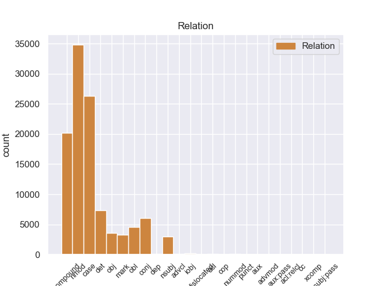
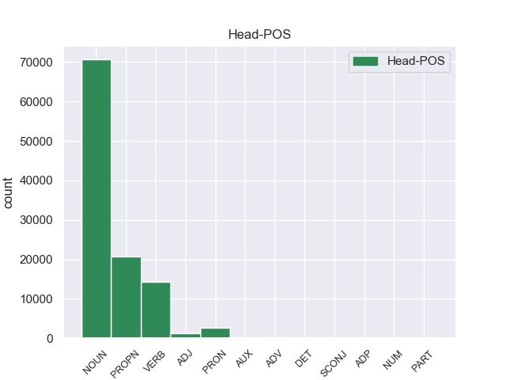
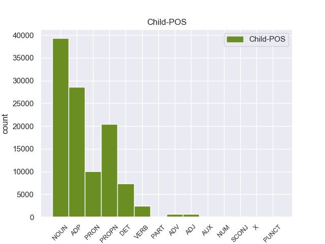

Distribution of features within this leaf



Agreement Rules sorted by frequency.
- When the dependent token is the case marking(case) of the head token, and the head token is NOUN and the dependent token is ADP.
1 यादव _ _ _ _ 0 _ _ _
2 ने _ _ _ _ 0 _ _ _
3 कहा _ _ _ _ 0 _ _ _
4 कि _ _ _ _ 0 _ _ _
5 25 _ _ _ _ 0 _ _ _
6 जून _ _ _ _ 0 _ _ _
7 को _ _ _ _ 0 _ _ _
8 राजग _ _ _ _ 0 _ _ _
9 के _ _ _ _ 0 _ _ _
10 कार्यकर्ता _ _ _ _ 0 _ _ _
11 पूरे _ _ _ _ 0 _ _ _
12 राज्य _ _ _ _ 0 _ _ _
13 में _ _ _ _ 0 _ _ _
14 इस _ _ _ _ 0 _ _ _
15 दिन _ _ _ _ 0 _ _ _
16 को _ _ _ _ 0 _ _ _
17 काला _ _ _ _ 0 _ _ _
18 दिवस दिवस NOUN NN Case=Acc|Gender=Masc|Number=Sing|Person=3 0 _ _ _
19 के _ _ _ _ 0 _ _ _
20 तौर तौर ADP PSP Case=Acc|Gender=Masc 18 case _ ChunkId=NP7|ChunkType=child|Translit=taura
21 पर _ _ _ _ 0 _ _ _
22 मनाएंगे _ _ _ _ 0 _ _ _
23 । _ _ _ _ 0 _ _ _
1 इस _ _ _ _ 0 _ _ _
2 कोष _ _ _ _ 0 _ _ _
3 का _ _ _ _ 0 _ _ _
4 इस्तेमाल _ _ _ _ 0 _ _ _
5 चिकित्सा _ _ _ _ 0 _ _ _
6 उपकरणों उपकरण NOUN NN Case=Acc|Gender=Masc|Number=Plur|Person=3 10 nmod _ ChunkId=NP3|ChunkType=head|Tam=0|Translit=upakaraṇoṁ|Vib=0
7 और _ _ _ _ 0 _ _ _
8 दवाइयों _ _ _ _ 0 _ _ _
9 की _ _ _ _ 0 _ _ _
10 खरीद खरीद NOUN NN Case=Acc|Gender=Fem|Number=Sing|Person=3 0 _ _ _
11 में _ _ _ _ 0 _ _ _
12 किया _ _ _ _ 0 _ _ _
13 जाएगा _ _ _ _ 0 _ _ _
14 ताकि _ _ _ _ 0 _ _ _
15 जरूरतमंदों _ _ _ _ 0 _ _ _
16 तक _ _ _ _ 0 _ _ _
17 फौरन _ _ _ _ 0 _ _ _
18 स्वास्थ्य _ _ _ _ 0 _ _ _
19 सुविधाएं _ _ _ _ 0 _ _ _
20 पहुँचाई _ _ _ _ 0 _ _ _
21 जा _ _ _ _ 0 _ _ _
22 सकें _ _ _ _ 0 _ _ _
23 । _ _ _ _ 0 _ _ _
1 यादव _ _ _ _ 0 _ _ _
2 ने _ _ _ _ 0 _ _ _
3 कहा _ _ _ _ 0 _ _ _
4 कि _ _ _ _ 0 _ _ _
5 25 _ _ _ _ 0 _ _ _
6 जून _ _ _ _ 0 _ _ _
7 को _ _ _ _ 0 _ _ _
8 राजग _ _ _ _ 0 _ _ _
9 के _ _ _ _ 0 _ _ _
10 कार्यकर्ता _ _ _ _ 0 _ _ _
11 पूरे _ _ _ _ 0 _ _ _
12 राज्य _ _ _ _ 0 _ _ _
13 में _ _ _ _ 0 _ _ _
14 इस यह DET DEM Case=Acc|Number=Sing|Person=3|PronType=Dem 15 det _ ChunkId=NP6|ChunkType=child|Translit=isa
15 दिन दिन NOUN NN Case=Acc|Gender=Masc|Number=Sing|Person=3 0 _ _ _
16 को _ _ _ _ 0 _ _ _
17 काला _ _ _ _ 0 _ _ _
18 दिवस _ _ _ _ 0 _ _ _
19 के _ _ _ _ 0 _ _ _
20 तौर _ _ _ _ 0 _ _ _
21 पर _ _ _ _ 0 _ _ _
22 मनाएंगे _ _ _ _ 0 _ _ _
23 । _ _ _ _ 0 _ _ _
1 सूत्रों _ _ _ _ 0 _ _ _
2 का _ _ _ _ 0 _ _ _
3 कहना _ _ _ _ 0 _ _ _
4 है _ _ _ _ 0 _ _ _
5 कि _ _ _ _ 0 _ _ _
6 आजाद _ _ _ _ 0 _ _ _
7 मंत्रिमंडल _ _ _ _ 0 _ _ _
8 सदस्यों _ _ _ _ 0 _ _ _
9 के _ _ _ _ 0 _ _ _
10 लिए _ _ _ _ 0 _ _ _
11 निर्वर्तमान _ _ _ _ 0 _ _ _
12 मुख्यमंत्री _ _ _ _ 0 _ _ _
13 मुफ्ती _ _ _ _ 0 _ _ _
14 मोहम्मद मोहम्मद PROPN NNPC Case=Nom|Gender=Masc|Number=Sing|Person=3 15 compound _ ChunkId=NP4|ChunkType=child|Tam=0|Translit=mohammada|Vib=0
15 सईद सईद PROPN NNP Case=Nom|Gender=Masc|Number=Sing|Person=3 0 _ _ _
16 , _ _ _ _ 0 _ _ _
17 प्रधानमंत्री _ _ _ _ 0 _ _ _
18 मनमोहन _ _ _ _ 0 _ _ _
19 सिंह _ _ _ _ 0 _ _ _
20 और _ _ _ _ 0 _ _ _
21 सोनिया _ _ _ _ 0 _ _ _
22 गांधी _ _ _ _ 0 _ _ _
23 से _ _ _ _ 0 _ _ _
24 चर्चा _ _ _ _ 0 _ _ _
25 करेंगे _ _ _ _ 0 _ _ _
26 । _ _ _ _ 0 _ _ _
1 पाकिस्तानी _ _ _ _ 0 _ _ _
2 दैनिक _ _ _ _ 0 _ _ _
3 ' _ _ _ _ 0 _ _ _
4 डॉन डॉन PROPN NNP Case=Acc|Gender=Masc|Number=Sing|Person=3 7 nmod _ ChunkId=NP2|ChunkType=head|SpaceAfter=No|Tam=0|Translit=ḍôna|Vib=0_का
5 ' _ _ _ _ 0 _ _ _
6 की _ _ _ _ 0 _ _ _
7 रिपोर्ट रिपोर्ट NOUN NN Case=Acc|Gender=Fem|Number=Sing|Person=3 0 _ _ _
8 के _ _ _ _ 0 _ _ _
9 मुताबिक _ _ _ _ 0 _ _ _
10 अमेरिका _ _ _ _ 0 _ _ _
11 द्वारा _ _ _ _ 0 _ _ _
12 पाकिस्तान _ _ _ _ 0 _ _ _
13 को _ _ _ _ 0 _ _ _
14 गैर _ _ _ _ 0 _ _ _
15 नाटो _ _ _ _ 0 _ _ _
16 सहयोगी _ _ _ _ 0 _ _ _
17 का _ _ _ _ 0 _ _ _
18 दर्जा _ _ _ _ 0 _ _ _
19 दिए _ _ _ _ 0 _ _ _
20 जाने _ _ _ _ 0 _ _ _
21 के _ _ _ _ 0 _ _ _
22 बावजूद _ _ _ _ 0 _ _ _
23 वहां _ _ _ _ 0 _ _ _
24 भारत _ _ _ _ 0 _ _ _
25 के _ _ _ _ 0 _ _ _
26 प्रधानमंत्री _ _ _ _ 0 _ _ _
27 को _ _ _ _ 0 _ _ _
28 ज्यादा _ _ _ _ 0 _ _ _
29 एहमियत _ _ _ _ 0 _ _ _
30 दिया _ _ _ _ 0 _ _ _
31 जाना _ _ _ _ 0 _ _ _
32 पाकिस्तान _ _ _ _ 0 _ _ _
33 को _ _ _ _ 0 _ _ _
34 खटक _ _ _ _ 0 _ _ _
35 सकता _ _ _ _ 0 _ _ _
36 था _ _ _ _ 0 _ _ _
37 । _ _ _ _ 0 _ _ _
1 पाकिस्तानी _ _ _ _ 0 _ _ _
2 दैनिक _ _ _ _ 0 _ _ _
3 ' _ _ _ _ 0 _ _ _
4 डॉन _ _ _ _ 0 _ _ _
5 ' _ _ _ _ 0 _ _ _
6 की _ _ _ _ 0 _ _ _
7 रिपोर्ट _ _ _ _ 0 _ _ _
8 के _ _ _ _ 0 _ _ _
9 मुताबिक _ _ _ _ 0 _ _ _
10 अमेरिका _ _ _ _ 0 _ _ _
11 द्वारा _ _ _ _ 0 _ _ _
12 पाकिस्तान _ _ _ _ 0 _ _ _
13 को _ _ _ _ 0 _ _ _
14 गैर _ _ _ _ 0 _ _ _
15 नाटो _ _ _ _ 0 _ _ _
16 सहयोगी _ _ _ _ 0 _ _ _
17 का _ _ _ _ 0 _ _ _
18 दर्जा _ _ _ _ 0 _ _ _
19 दिए _ _ _ _ 0 _ _ _
20 जाने _ _ _ _ 0 _ _ _
21 के _ _ _ _ 0 _ _ _
22 बावजूद _ _ _ _ 0 _ _ _
23 वहां _ _ _ _ 0 _ _ _
24 भारत भारत PROPN NNP Case=Acc|Gender=Masc|Number=Sing|Person=3 0 _ _ _
25 के का ADP PSP AdpType=Post|Case=Acc|Gender=Masc|Number=Sing 24 case _ ChunkId=NP9|ChunkType=child|Translit=ke
26 प्रधानमंत्री _ _ _ _ 0 _ _ _
27 को _ _ _ _ 0 _ _ _
28 ज्यादा _ _ _ _ 0 _ _ _
29 एहमियत _ _ _ _ 0 _ _ _
30 दिया _ _ _ _ 0 _ _ _
31 जाना _ _ _ _ 0 _ _ _
32 पाकिस्तान _ _ _ _ 0 _ _ _
33 को _ _ _ _ 0 _ _ _
34 खटक _ _ _ _ 0 _ _ _
35 सकता _ _ _ _ 0 _ _ _
36 था _ _ _ _ 0 _ _ _
37 । _ _ _ _ 0 _ _ _
1 लैब लैब NOUN NNC Case=Nom|Gender=Fem|Number=Sing|Person=3 2 compound _ ChunkId=NP|ChunkType=child|Tam=0|Translit=laiba|Vib=0
2 रिपोर्ट रिपोर्ट NOUN NN Case=Nom|Gender=Fem|Number=Sing|Person=3 0 _ _ _
3 आने _ _ _ _ 0 _ _ _
4 के _ _ _ _ 0 _ _ _
5 बाद _ _ _ _ 0 _ _ _
6 राज्य _ _ _ _ 0 _ _ _
7 पुलिस _ _ _ _ 0 _ _ _
8 ने _ _ _ _ 0 _ _ _
9 आज _ _ _ _ 0 _ _ _
10 एक _ _ _ _ 0 _ _ _
11 उच्चस्तरीय _ _ _ _ 0 _ _ _
12 बैठक _ _ _ _ 0 _ _ _
13 की _ _ _ _ 0 _ _ _
14 और _ _ _ _ 0 _ _ _
15 मामले _ _ _ _ 0 _ _ _
16 में _ _ _ _ 0 _ _ _
17 आगे _ _ _ _ 0 _ _ _
18 की _ _ _ _ 0 _ _ _
19 कार्रवाई _ _ _ _ 0 _ _ _
20 की _ _ _ _ 0 _ _ _
21 रणनीति _ _ _ _ 0 _ _ _
22 तय _ _ _ _ 0 _ _ _
23 की _ _ _ _ 0 _ _ _
24 । _ _ _ _ 0 _ _ _
1 दावोस _ _ _ _ 0 _ _ _
2 में _ _ _ _ 0 _ _ _
3 वर्ल्ड _ _ _ _ 0 _ _ _
4 इकोनॉमिक _ _ _ _ 0 _ _ _
5 फोरम _ _ _ _ 0 _ _ _
6 की _ _ _ _ 0 _ _ _
7 बैठक _ _ _ _ 0 _ _ _
8 के _ _ _ _ 0 _ _ _
9 दौरान _ _ _ _ 0 _ _ _
10 भारत _ _ _ _ 0 _ _ _
11 ने _ _ _ _ 0 _ _ _
12 जिस _ _ _ _ 0 _ _ _
13 जोरदार _ _ _ _ 0 _ _ _
14 तरीके _ _ _ _ 0 _ _ _
15 से _ _ _ _ 0 _ _ _
16 अपना अपना PRON PRP Case=Nom|Gender=Masc|Number=Sing|PronType=Prs 17 nmod _ ChunkId=NP6|ChunkType=head|Tam=0|Translit=apanā|Vib=0
17 पक्ष पक्ष NOUN NN Case=Nom|Gender=Masc|Number=Sing|Person=3 0 _ _ _
18 पेश _ _ _ _ 0 _ _ _
19 किया _ _ _ _ 0 _ _ _
20 और _ _ _ _ 0 _ _ _
21 पूरी _ _ _ _ 0 _ _ _
22 बैठक _ _ _ _ 0 _ _ _
23 में _ _ _ _ 0 _ _ _
24 छाया _ _ _ _ 0 _ _ _
25 रहा _ _ _ _ 0 _ _ _
26 , _ _ _ _ 0 _ _ _
27 उसने _ _ _ _ 0 _ _ _
28 दुनिया _ _ _ _ 0 _ _ _
29 भर _ _ _ _ 0 _ _ _
30 के _ _ _ _ 0 _ _ _
31 लोगों _ _ _ _ 0 _ _ _
32 का _ _ _ _ 0 _ _ _
33 ध्यान _ _ _ _ 0 _ _ _
34 अपनी _ _ _ _ 0 _ _ _
35 ओर _ _ _ _ 0 _ _ _
36 खींचा _ _ _ _ 0 _ _ _
37 है _ _ _ _ 0 _ _ _
38 । _ _ _ _ 0 _ _ _
1 लिहाजा _ _ _ _ 0 _ _ _
2 , _ _ _ _ 0 _ _ _
3 अब _ _ _ _ 0 _ _ _
4 वक्त _ _ _ _ 0 _ _ _
5 आ _ _ _ _ 0 _ _ _
6 गया _ _ _ _ 0 _ _ _
7 है _ _ _ _ 0 _ _ _
8 कि _ _ _ _ 0 _ _ _
9 पूरी _ _ _ _ 0 _ _ _
10 दुनिया _ _ _ _ 0 _ _ _
11 के _ _ _ _ 0 _ _ _
12 अमन _ _ _ _ 0 _ _ _
13 पसंद _ _ _ _ 0 _ _ _
14 देश _ _ _ _ 0 _ _ _
15 अमेरिका _ _ _ _ 0 _ _ _
16 को _ _ _ _ 0 _ _ _
17 नीतियों नीति NOUN NN Case=Acc|Gender=Fem|Number=Plur|Person=3 20 obl _ ChunkId=NP6|ChunkType=head|Tam=0|Translit=nītiyoṁ|Vib=0_में
18 में _ _ _ _ 0 _ _ _
19 बदलाव _ _ _ _ 0 _ _ _
20 करने कर VERB VM Case=Acc|Number=Sing|VerbForm=Inf 0 _ _ _
21 का _ _ _ _ 0 _ _ _
22 दबाव _ _ _ _ 0 _ _ _
23 बनाए _ _ _ _ 0 _ _ _
24 । _ _ _ _ 0 _ _ _
1 इस _ _ _ _ 0 _ _ _
2 कोष _ _ _ _ 0 _ _ _
3 का _ _ _ _ 0 _ _ _
4 इस्तेमाल _ _ _ _ 0 _ _ _
5 चिकित्सा _ _ _ _ 0 _ _ _
6 उपकरणों उपकरण NOUN NN Case=Acc|Gender=Masc|Number=Plur|Person=3 0 _ _ _
7 और _ _ _ _ 0 _ _ _
8 दवाइयों दवाई NOUN NN Case=Acc|Gender=Fem|Number=Plur|Person=3 6 conj _ ChunkId=NP4|ChunkType=head|Tam=0|Translit=davāiyoṁ|Vib=0_का
9 की _ _ _ _ 0 _ _ _
10 खरीद _ _ _ _ 0 _ _ _
11 में _ _ _ _ 0 _ _ _
12 किया _ _ _ _ 0 _ _ _
13 जाएगा _ _ _ _ 0 _ _ _
14 ताकि _ _ _ _ 0 _ _ _
15 जरूरतमंदों _ _ _ _ 0 _ _ _
16 तक _ _ _ _ 0 _ _ _
17 फौरन _ _ _ _ 0 _ _ _
18 स्वास्थ्य _ _ _ _ 0 _ _ _
19 सुविधाएं _ _ _ _ 0 _ _ _
20 पहुँचाई _ _ _ _ 0 _ _ _
21 जा _ _ _ _ 0 _ _ _
22 सकें _ _ _ _ 0 _ _ _
23 । _ _ _ _ 0 _ _ _
1 इनेलो _ _ _ _ 0 _ _ _
2 की _ _ _ _ 0 _ _ _
3 ओर _ _ _ _ 0 _ _ _
4 से _ _ _ _ 0 _ _ _
5 देवीलाल _ _ _ _ 0 _ _ _
6 की _ _ _ _ 0 _ _ _
7 पुण्यतिथि _ _ _ _ 0 _ _ _
8 पर _ _ _ _ 0 _ _ _
9 दिल्ली दिल्ली PROPN NNP Case=Acc|Gender=Fem|Number=Sing|Person=3 0 _ _ _
10 , _ _ _ _ 0 _ _ _
11 हरियाणा _ _ _ _ 0 _ _ _
12 और _ _ _ _ 0 _ _ _
13 उत्तर _ _ _ _ 0 _ _ _
14 भारत भारत PROPN NNP Case=Acc|Gender=Masc|Number=Sing|Person=3 9 conj _ ChunkId=NP6|ChunkType=head|Tam=0|Translit=bhārata|Vib=0_में
15 में _ _ _ _ 0 _ _ _
16 प्रार्थना _ _ _ _ 0 _ _ _
17 सभाएं _ _ _ _ 0 _ _ _
18 आयोजित _ _ _ _ 0 _ _ _
19 की _ _ _ _ 0 _ _ _
20 गईं _ _ _ _ 0 _ _ _
21 । _ _ _ _ 0 _ _ _
1 पिछले _ _ _ _ 0 _ _ _
2 हफ्ते _ _ _ _ 0 _ _ _
3 इसमें _ _ _ _ 0 _ _ _
4 तीन _ _ _ _ 0 _ _ _
5 फीसदी _ _ _ _ 0 _ _ _
6 की _ _ _ _ 0 _ _ _
7 कमी _ _ _ _ 0 _ _ _
8 थी _ _ _ _ 0 _ _ _
9 लेकिन _ _ _ _ 0 _ _ _
10 बीते _ _ _ _ 0 _ _ _
11 पूरे _ _ _ _ 0 _ _ _
12 सप्ताह _ _ _ _ 0 _ _ _
13 बारिश _ _ _ _ 0 _ _ _
14 न _ _ _ _ 0 _ _ _
15 होने हो VERB VM Case=Acc|Gender=Masc|VerbForm=Inf 0 _ _ _
16 के _ _ _ _ 0 _ _ _
17 कारण कारण ADP PSP Case=Acc|Gender=Masc 15 mark _ ChunkId=VGNN|ChunkType=child|Translit=kāraṇa
18 इसमें _ _ _ _ 0 _ _ _
19 तीन _ _ _ _ 0 _ _ _
20 फीसदी _ _ _ _ 0 _ _ _
21 की _ _ _ _ 0 _ _ _
22 और _ _ _ _ 0 _ _ _
23 बढ़ोत्तरी _ _ _ _ 0 _ _ _
24 हुई _ _ _ _ 0 _ _ _
25 है _ _ _ _ 0 _ _ _
26 । _ _ _ _ 0 _ _ _
1 प्रधानमंत्री _ _ _ _ 0 _ _ _
2 ने _ _ _ _ 0 _ _ _
3 यह _ _ _ _ 0 _ _ _
4 भी _ _ _ _ 0 _ _ _
5 कहा _ _ _ _ 0 _ _ _
6 कि _ _ _ _ 0 _ _ _
7 पाकिस्तान _ _ _ _ 0 _ _ _
8 आतंकवादी _ _ _ _ 0 _ _ _
9 शिविरों शिविर NOUN NN Case=Acc|Gender=Masc|Number=Plur|Person=3 11 obj _ ChunkId=NP4|ChunkType=head|Tam=0|Translit=śiviroṁ|Vib=0_को
10 को _ _ _ _ 0 _ _ _
11 उखाड़ने उखाड VERB VM Case=Acc|VerbForm=Inf 0 _ _ _
12 संबंधी _ _ _ _ 0 _ _ _
13 अपनी _ _ _ _ 0 _ _ _
14 प्रतिबद्धता _ _ _ _ 0 _ _ _
15 को _ _ _ _ 0 _ _ _
16 जल्द _ _ _ _ 0 _ _ _
17 पूरा _ _ _ _ 0 _ _ _
18 करे _ _ _ _ 0 _ _ _
19 । _ _ _ _ 0 _ _ _
1 पाकिस्तानी _ _ _ _ 0 _ _ _
2 दैनिक दैनिक NOUN NN Case=Acc|Gender=Masc|Number=Sing|Person=3 4 nmod _ ChunkId=NP|ChunkType=head|Tam=0|Translit=dainika|Vib=0
3 ' _ _ _ _ 0 _ _ _
4 डॉन डॉन PROPN NNP Case=Acc|Gender=Masc|Number=Sing|Person=3 0 _ _ _
5 ' _ _ _ _ 0 _ _ _
6 की _ _ _ _ 0 _ _ _
7 रिपोर्ट _ _ _ _ 0 _ _ _
8 के _ _ _ _ 0 _ _ _
9 मुताबिक _ _ _ _ 0 _ _ _
10 अमेरिका _ _ _ _ 0 _ _ _
11 द्वारा _ _ _ _ 0 _ _ _
12 पाकिस्तान _ _ _ _ 0 _ _ _
13 को _ _ _ _ 0 _ _ _
14 गैर _ _ _ _ 0 _ _ _
15 नाटो _ _ _ _ 0 _ _ _
16 सहयोगी _ _ _ _ 0 _ _ _
17 का _ _ _ _ 0 _ _ _
18 दर्जा _ _ _ _ 0 _ _ _
19 दिए _ _ _ _ 0 _ _ _
20 जाने _ _ _ _ 0 _ _ _
21 के _ _ _ _ 0 _ _ _
22 बावजूद _ _ _ _ 0 _ _ _
23 वहां _ _ _ _ 0 _ _ _
24 भारत _ _ _ _ 0 _ _ _
25 के _ _ _ _ 0 _ _ _
26 प्रधानमंत्री _ _ _ _ 0 _ _ _
27 को _ _ _ _ 0 _ _ _
28 ज्यादा _ _ _ _ 0 _ _ _
29 एहमियत _ _ _ _ 0 _ _ _
30 दिया _ _ _ _ 0 _ _ _
31 जाना _ _ _ _ 0 _ _ _
32 पाकिस्तान _ _ _ _ 0 _ _ _
33 को _ _ _ _ 0 _ _ _
34 खटक _ _ _ _ 0 _ _ _
35 सकता _ _ _ _ 0 _ _ _
36 था _ _ _ _ 0 _ _ _
37 । _ _ _ _ 0 _ _ _
1 पाकिस्तानी _ _ _ _ 0 _ _ _
2 दैनिक _ _ _ _ 0 _ _ _
3 ' _ _ _ _ 0 _ _ _
4 डॉन _ _ _ _ 0 _ _ _
5 ' _ _ _ _ 0 _ _ _
6 की _ _ _ _ 0 _ _ _
7 रिपोर्ट _ _ _ _ 0 _ _ _
8 के _ _ _ _ 0 _ _ _
9 मुताबिक _ _ _ _ 0 _ _ _
10 अमेरिका _ _ _ _ 0 _ _ _
11 द्वारा _ _ _ _ 0 _ _ _
12 पाकिस्तान _ _ _ _ 0 _ _ _
13 को _ _ _ _ 0 _ _ _
14 गैर _ _ _ _ 0 _ _ _
15 नाटो _ _ _ _ 0 _ _ _
16 सहयोगी _ _ _ _ 0 _ _ _
17 का _ _ _ _ 0 _ _ _
18 दर्जा _ _ _ _ 0 _ _ _
19 दिए _ _ _ _ 0 _ _ _
20 जाने _ _ _ _ 0 _ _ _
21 के _ _ _ _ 0 _ _ _
22 बावजूद _ _ _ _ 0 _ _ _
23 वहां _ _ _ _ 0 _ _ _
24 भारत भारत PROPN NNP Case=Acc|Gender=Masc|Number=Sing|Person=3 26 nmod _ ChunkId=NP9|ChunkType=head|Tam=0|Translit=bhārata|Vib=0_का
25 के _ _ _ _ 0 _ _ _
26 प्रधानमंत्री प्रधानमंत्री PROPN NNP Case=Acc|Gender=Masc|Number=Sing|Person=3 0 _ _ _
27 को _ _ _ _ 0 _ _ _
28 ज्यादा _ _ _ _ 0 _ _ _
29 एहमियत _ _ _ _ 0 _ _ _
30 दिया _ _ _ _ 0 _ _ _
31 जाना _ _ _ _ 0 _ _ _
32 पाकिस्तान _ _ _ _ 0 _ _ _
33 को _ _ _ _ 0 _ _ _
34 खटक _ _ _ _ 0 _ _ _
35 सकता _ _ _ _ 0 _ _ _
36 था _ _ _ _ 0 _ _ _
37 । _ _ _ _ 0 _ _ _
1 कर्मचारी _ _ _ _ 0 _ _ _
2 भविष्य _ _ _ _ 0 _ _ _
3 निधि _ _ _ _ 0 _ _ _
4 संगठन _ _ _ _ 0 _ _ _
5 ( _ _ _ _ 0 _ _ _
6 ईपीएफओ _ _ _ _ 0 _ _ _
7 ) _ _ _ _ 0 _ _ _
8 के _ _ _ _ 0 _ _ _
9 इतिहास _ _ _ _ 0 _ _ _
10 में _ _ _ _ 0 _ _ _
11 यह यह PRON PRP Case=Nom|Number=Sing|Person=3|PronType=Prs 13 nsubj _ ChunkId=NP4|ChunkType=head|Tam=0|Translit=yaha|Vib=0
12 दूसरा _ _ _ _ 0 _ _ _
13 मौका मौका NOUN NN Case=Nom|Gender=Masc|Number=Sing|Person=3 0 _ _ _
14 है _ _ _ _ 0 _ _ _
15 , _ _ _ _ 0 _ _ _
16 जब _ _ _ _ 0 _ _ _
17 उसे _ _ _ _ 0 _ _ _
18 विशेष _ _ _ _ 0 _ _ _
19 आरक्षित _ _ _ _ 0 _ _ _
20 निधि _ _ _ _ 0 _ _ _
21 से _ _ _ _ 0 _ _ _
22 धन _ _ _ _ 0 _ _ _
23 लेना _ _ _ _ 0 _ _ _
24 पड़ _ _ _ _ 0 _ _ _
25 रहा _ _ _ _ 0 _ _ _
26 हो _ _ _ _ 0 _ _ _
27 । _ _ _ _ 0 _ _ _
1 उन्होंने _ _ _ _ 0 _ _ _
2 कहा _ _ _ _ 0 _ _ _
3 कि _ _ _ _ 0 _ _ _
4 यदि _ _ _ _ 0 _ _ _
5 लोहान _ _ _ _ 0 _ _ _
6 खाप _ _ _ _ 0 _ _ _
7 के _ _ _ _ 0 _ _ _
8 लोग _ _ _ _ 0 _ _ _
9 वधू _ _ _ _ 0 _ _ _
10 पक्ष _ _ _ _ 0 _ _ _
11 से _ _ _ _ 0 _ _ _
12 यह _ _ _ _ 0 _ _ _
13 कह _ _ _ _ 0 _ _ _
14 दें _ _ _ _ 0 _ _ _
15 कि _ _ _ _ 0 _ _ _
16 उन्हें _ _ _ _ 0 _ _ _
17 इस _ _ _ _ 0 _ _ _
18 रिश्ते _ _ _ _ 0 _ _ _
19 से _ _ _ _ 0 _ _ _
20 कोई कोई PRON PRP Case=Nom|Number=Sing|Person=3|PronType=Prs 21 case _ ChunkId=NP8|ChunkType=child|Tam=0|Translit=koī|Vib=0
21 आपत्ति आपत्ति NOUN NN Case=Nom|Gender=Fem|Number=Sing|Person=3 0 _ _ _
22 नहीं _ _ _ _ 0 _ _ _
23 है _ _ _ _ 0 _ _ _
24 , _ _ _ _ 0 _ _ _
25 तो _ _ _ _ 0 _ _ _
26 पंचायत _ _ _ _ 0 _ _ _
27 अपना _ _ _ _ 0 _ _ _
28 फैसला _ _ _ _ 0 _ _ _
29 वापस _ _ _ _ 0 _ _ _
30 ले _ _ _ _ 0 _ _ _
31 सकती _ _ _ _ 0 _ _ _
32 है _ _ _ _ 0 _ _ _
33 । _ _ _ _ 0 _ _ _
1 इसी _ _ _ _ 0 _ _ _
2 बात _ _ _ _ 0 _ _ _
3 को _ _ _ _ 0 _ _ _
4 देखते _ _ _ _ 0 _ _ _
5 हुए _ _ _ _ 0 _ _ _
6 गृह _ _ _ _ 0 _ _ _
7 मंत्रालय _ _ _ _ 0 _ _ _
8 ने _ _ _ _ 0 _ _ _
9 धनंजय _ _ _ _ 0 _ _ _
10 की _ _ _ _ 0 _ _ _
11 फांसी _ _ _ _ 0 _ _ _
12 की _ _ _ _ 0 _ _ _
13 सजा _ _ _ _ 0 _ _ _
14 को _ _ _ _ 0 _ _ _
15 अगले _ _ _ _ 0 _ _ _
16 आदेश _ _ _ _ 0 _ _ _
17 तक _ _ _ _ 0 _ _ _
18 रोक रोक VERB VM Case=Nom|Number=Sing 21 nmod _ ChunkId=VGNN|ChunkType=head|Tam=0|Translit=roka|Vib=0_दे+ना_का
19 देने _ _ _ _ 0 _ _ _
20 का _ _ _ _ 0 _ _ _
21 निर्देश निर्देश NOUN NN Case=Nom|Gender=Masc|Number=Sing|Person=3 0 _ _ _
22 दिया _ _ _ _ 0 _ _ _
23 है _ _ _ _ 0 _ _ _
24 । _ _ _ _ 0 _ _ _
1 वहीं _ _ _ _ 0 _ _ _
2 इटली _ _ _ _ 0 _ _ _
3 के _ _ _ _ 0 _ _ _
4 प्रधानमंत्री _ _ _ _ 0 _ _ _
5 सिलवियो _ _ _ _ 0 _ _ _
6 बरलूसकोनी _ _ _ _ 0 _ _ _
7 ने _ _ _ _ 0 _ _ _
8 कहा _ _ _ _ 0 _ _ _
9 कि _ _ _ _ 0 _ _ _
10 नीदरलैंड नीदरलैंड PROPN NNP Case=Acc|Gender=Masc|Number=Sing|Person=3 19 obl _ ChunkId=NP4|ChunkType=head|Tam=0|Translit=nīdaralaiṁḍa|Vib=0
11 और _ _ _ _ 0 _ _ _
12 फ्रांस _ _ _ _ 0 _ _ _
13 की _ _ _ _ 0 _ _ _
14 ओर _ _ _ _ 0 _ _ _
15 से _ _ _ _ 0 _ _ _
16 संविधान _ _ _ _ 0 _ _ _
17 को _ _ _ _ 0 _ _ _
18 खारिज _ _ _ _ 0 _ _ _
19 करने कर VERB VM Case=Acc|Number=Sing|Person=3|VerbForm=Inf 0 _ _ _
20 के _ _ _ _ 0 _ _ _
21 बाद _ _ _ _ 0 _ _ _
22 किसी _ _ _ _ 0 _ _ _
23 के _ _ _ _ 0 _ _ _
24 पास _ _ _ _ 0 _ _ _
25 यूरोप _ _ _ _ 0 _ _ _
26 के _ _ _ _ 0 _ _ _
27 भविष्य _ _ _ _ 0 _ _ _
28 को _ _ _ _ 0 _ _ _
29 लेकर _ _ _ _ 0 _ _ _
30 कोई _ _ _ _ 0 _ _ _
31 जवाब _ _ _ _ 0 _ _ _
32 नहीं _ _ _ _ 0 _ _ _
33 है _ _ _ _ 0 _ _ _
34 . _ _ _ _ 0 _ _ _
1 पाकिस्तान _ _ _ _ 0 _ _ _
2 का _ _ _ _ 0 _ _ _
3 पंजाब _ _ _ _ 0 _ _ _
4 प्रांत प्रांत NOUN NN Case=Nom|Gender=Masc|Number=Sing|Person=3 11 nsubj _ ChunkId=NP2|ChunkType=head|Tam=0|Translit=prāṁta|Vib=0
5 जेहादियों _ _ _ _ 0 _ _ _
6 की _ _ _ _ 0 _ _ _
7 भर्ती _ _ _ _ 0 _ _ _
8 का _ _ _ _ 0 _ _ _
9 सबसे _ _ _ _ 0 _ _ _
10 बड़ा _ _ _ _ 0 _ _ _
11 अड्डा अड्डा NOUN NN Case=Nom|Gender=Masc|Number=Sing|Person=3 0 _ _ _
12 है _ _ _ _ 0 _ _ _
13 । _ _ _ _ 0 _ _ _
1 उन्होंने _ _ _ _ 0 _ _ _
2 कहा _ _ _ _ 0 _ _ _
3 कि _ _ _ _ 0 _ _ _
4 वर्ष _ _ _ _ 0 _ _ _
5 २००२ _ _ _ _ 0 _ _ _
6 में _ _ _ _ 0 _ _ _
7 जम्मू _ _ _ _ 0 _ _ _
8 कश्मीर _ _ _ _ 0 _ _ _
9 चुनाव _ _ _ _ 0 _ _ _
10 के _ _ _ _ 0 _ _ _
11 बहिष्कार _ _ _ _ 0 _ _ _
12 के _ _ _ _ 0 _ _ _
13 फैसले _ _ _ _ 0 _ _ _
14 के _ _ _ _ 0 _ _ _
15 बावजूद _ _ _ _ 0 _ _ _
16 उसमें _ _ _ _ 0 _ _ _
17 हिस्सा हिस्सा NOUN NN Case=Nom|Gender=Masc|Number=Sing|Person=3 18 compound _ ChunkId=NP7|ChunkType=head|Tam=0|Translit=hissā|Vib=0
18 लेना ले VERB VM Case=Nom|VerbForm=Inf 0 _ _ _
19 और _ _ _ _ 0 _ _ _
20 उसके _ _ _ _ 0 _ _ _
21 बाद _ _ _ _ 0 _ _ _
22 भारत _ _ _ _ 0 _ _ _
23 सरकार _ _ _ _ 0 _ _ _
24 से _ _ _ _ 0 _ _ _
25 बातचीत _ _ _ _ 0 _ _ _
26 में _ _ _ _ 0 _ _ _
27 शामिल _ _ _ _ 0 _ _ _
28 होना _ _ _ _ 0 _ _ _
29 हुर्रियत _ _ _ _ 0 _ _ _
30 की _ _ _ _ 0 _ _ _
31 विचारधारा _ _ _ _ 0 _ _ _
32 और _ _ _ _ 0 _ _ _
33 उसके _ _ _ _ 0 _ _ _
34 संविधान _ _ _ _ 0 _ _ _
35 के _ _ _ _ 0 _ _ _
36 खिलाफ _ _ _ _ 0 _ _ _
37 है _ _ _ _ 0 _ _ _
38 । _ _ _ _ 0 _ _ _
1 दावोस _ _ _ _ 0 _ _ _
2 में _ _ _ _ 0 _ _ _
3 वर्ल्ड _ _ _ _ 0 _ _ _
4 इकोनॉमिक _ _ _ _ 0 _ _ _
5 फोरम _ _ _ _ 0 _ _ _
6 की _ _ _ _ 0 _ _ _
7 बैठक _ _ _ _ 0 _ _ _
8 के _ _ _ _ 0 _ _ _
9 दौरान _ _ _ _ 0 _ _ _
10 भारत _ _ _ _ 0 _ _ _
11 ने _ _ _ _ 0 _ _ _
12 जिस _ _ _ _ 0 _ _ _
13 जोरदार _ _ _ _ 0 _ _ _
14 तरीके _ _ _ _ 0 _ _ _
15 से _ _ _ _ 0 _ _ _
16 अपना _ _ _ _ 0 _ _ _
17 पक्ष _ _ _ _ 0 _ _ _
18 पेश _ _ _ _ 0 _ _ _
19 किया _ _ _ _ 0 _ _ _
20 और _ _ _ _ 0 _ _ _
21 पूरी _ _ _ _ 0 _ _ _
22 बैठक _ _ _ _ 0 _ _ _
23 में _ _ _ _ 0 _ _ _
24 छाया _ _ _ _ 0 _ _ _
25 रहा _ _ _ _ 0 _ _ _
26 , _ _ _ _ 0 _ _ _
27 उसने _ _ _ _ 0 _ _ _
28 दुनिया _ _ _ _ 0 _ _ _
29 भर _ _ _ _ 0 _ _ _
30 के _ _ _ _ 0 _ _ _
31 लोगों _ _ _ _ 0 _ _ _
32 का _ _ _ _ 0 _ _ _
33 ध्यान _ _ _ _ 0 _ _ _
34 अपनी अपना PRON PRP Case=Nom|Gender=Fem|PronType=Prs 0 _ _ _
35 ओर ओर ADP NST AdpType=Post|Case=Nom|Gender=Fem|Number=Sing|Person=3 34 case _ AltTag=ADP-NOUN|ChunkId=NP13|ChunkType=child|Translit=ora
36 खींचा _ _ _ _ 0 _ _ _
37 है _ _ _ _ 0 _ _ _
38 । _ _ _ _ 0 _ _ _
1 शेयर _ _ _ _ 0 _ _ _
2 बाजार _ _ _ _ 0 _ _ _
3 का _ _ _ _ 0 _ _ _
4 नियम _ _ _ _ 0 _ _ _
5 कमोवेश _ _ _ _ 0 _ _ _
6 म्यूचुअल म्यूचुअल NOUN NNC Case=Acc 7 compound _ ChunkId=NP4|ChunkType=child|Translit=myūcuala
7 फंड फंड PROPN NNP Case=Acc|Gender=Masc|Number=Sing|Person=3 0 _ _ _
8 पर _ _ _ _ 0 _ _ _
9 भी _ _ _ _ 0 _ _ _
10 लागू _ _ _ _ 0 _ _ _
11 होता _ _ _ _ 0 _ _ _
12 है _ _ _ _ 0 _ _ _
13 । _ _ _ _ 0 _ _ _
1 आरआईएल _ _ _ _ 0 _ _ _
2 ने _ _ _ _ 0 _ _ _
3 तब _ _ _ _ 0 _ _ _
4 कुछ _ _ _ _ 0 _ _ _
5 निवेश _ _ _ _ 0 _ _ _
6 योजनाओं योजना NOUN NN Case=Acc|Gender=Fem|Number=Plur|Person=3 0 _ _ _
7 और _ _ _ _ 0 _ _ _
8 आरईएल आरईएल PROPN NNP Case=Acc|Gender=Masc|Number=Sing|Person=3 6 conj _ ChunkId=NP4|ChunkType=head|Tam=0|Translit=āraīela|Vib=0_को
9 को _ _ _ _ 0 _ _ _
10 गैस _ _ _ _ 0 _ _ _
11 आपूर्ति _ _ _ _ 0 _ _ _
12 को _ _ _ _ 0 _ _ _
13 लेकर _ _ _ _ 0 _ _ _
14 सवाल _ _ _ _ 0 _ _ _
15 उठाए _ _ _ _ 0 _ _ _
16 थे _ _ _ _ 0 _ _ _
17 । _ _ _ _ 0 _ _ _
1 दिल्ली _ _ _ _ 0 _ _ _
2 हवाई _ _ _ _ 0 _ _ _
3 अड्डे _ _ _ _ 0 _ _ _
4 से _ _ _ _ 0 _ _ _
5 कई _ _ _ _ 0 _ _ _
6 घरेलू घरेलू ADJ JJ Case=Nom 0 _ _ _
7 और _ _ _ _ 0 _ _ _
8 अंतर्राष्ट्रीय अंतर्राष्ट्रीय ADJ JJ Case=Nom 6 conj _ ChunkId=JJP3|ChunkType=head|Translit=aṁtarrāṣṭrīya
9 उड़ानें _ _ _ _ 0 _ _ _
10 रद्द _ _ _ _ 0 _ _ _
11 भी _ _ _ _ 0 _ _ _
12 करनी _ _ _ _ 0 _ _ _
13 पड़ीं _ _ _ _ 0 _ _ _
14 । _ _ _ _ 0 _ _ _
1 असम _ _ _ _ 0 _ _ _
2 के _ _ _ _ 0 _ _ _
3 मुख्यमंत्री _ _ _ _ 0 _ _ _
4 तरुण _ _ _ _ 0 _ _ _
5 गोगोई _ _ _ _ 0 _ _ _
6 ने _ _ _ _ 0 _ _ _
7 कहा _ _ _ _ 0 _ _ _
8 कि _ _ _ _ 0 _ _ _
9 राज्य _ _ _ _ 0 _ _ _
10 से _ _ _ _ 0 _ _ _
11 उग्रवाद _ _ _ _ 0 _ _ _
12 की _ _ _ _ 0 _ _ _
13 समस्या _ _ _ _ 0 _ _ _
14 समाप्त _ _ _ _ 0 _ _ _
15 कर _ _ _ _ 0 _ _ _
16 शांति _ _ _ _ 0 _ _ _
17 स्थापित _ _ _ _ 0 _ _ _
18 करने _ _ _ _ 0 _ _ _
19 के _ _ _ _ 0 _ _ _
20 लिए _ _ _ _ 0 _ _ _
21 केंद्र केंद्र PROPN NNP Case=Nom|Gender=Masc|Number=Sing|Person=3 0 _ _ _
22 और _ _ _ _ 0 _ _ _
23 राज्य _ _ _ _ 0 _ _ _
24 सरकार सरकार NOUN NN Case=Nom|Gender=Fem|Number=Sing|Person=3 21 conj _ ChunkId=NP9|ChunkType=head|Tam=0|Translit=sarakāra|Vib=0
25 प्रतिबंधित _ _ _ _ 0 _ _ _
26 उग्रवादी _ _ _ _ 0 _ _ _
27 संगठन _ _ _ _ 0 _ _ _
28 उल्फा _ _ _ _ 0 _ _ _
29 से _ _ _ _ 0 _ _ _
30 सीधी _ _ _ _ 0 _ _ _
31 बात _ _ _ _ 0 _ _ _
32 करने _ _ _ _ 0 _ _ _
33 के _ _ _ _ 0 _ _ _
34 पक्ष _ _ _ _ 0 _ _ _
35 में _ _ _ _ 0 _ _ _
36 हैं _ _ _ _ 0 _ _ _
37 । _ _ _ _ 0 _ _ _
1 कांग्रेस _ _ _ _ 0 _ _ _
2 नेतृत्व _ _ _ _ 0 _ _ _
3 वाली _ _ _ _ 0 _ _ _
4 राज्य _ _ _ _ 0 _ _ _
5 की _ _ _ _ 0 _ _ _
6 गठबंधन _ _ _ _ 0 _ _ _
7 सरकार सरकार NOUN NN Case=Acc|Gender=Fem|Number=Sing|Person=3 9 obl _ ChunkId=NP3|ChunkType=head|Tam=0|Translit=sarakāra|Vib=0_में
8 में _ _ _ _ 0 _ _ _
9 शामिल शामिल ADJ JJ Case=Acc 0 _ _ _
10 जनता _ _ _ _ 0 _ _ _
11 दल _ _ _ _ 0 _ _ _
12 ( _ _ _ _ 0 _ _ _
13 एस _ _ _ _ 0 _ _ _
14 ) _ _ _ _ 0 _ _ _
15 के _ _ _ _ 0 _ _ _
16 प्रमुख _ _ _ _ 0 _ _ _
17 एवं _ _ _ _ 0 _ _ _
18 पूर्व _ _ _ _ 0 _ _ _
19 प्रधानमंत्री _ _ _ _ 0 _ _ _
20 एच. _ _ _ _ 0 _ _ _
21 डी. _ _ _ _ 0 _ _ _
22 देवगौड़ा _ _ _ _ 0 _ _ _
23 के _ _ _ _ 0 _ _ _
24 पुत्र _ _ _ _ 0 _ _ _
25 एच. _ _ _ _ 0 _ _ _
26 डी. _ _ _ _ 0 _ _ _
27 कुमारस्वामी _ _ _ _ 0 _ _ _
28 ने _ _ _ _ 0 _ _ _
29 पिता _ _ _ _ 0 _ _ _
30 के _ _ _ _ 0 _ _ _
31 खिलाफ _ _ _ _ 0 _ _ _
32 विद्रोह _ _ _ _ 0 _ _ _
33 करते _ _ _ _ 0 _ _ _
34 हुए _ _ _ _ 0 _ _ _
35 पार्टी _ _ _ _ 0 _ _ _
36 के _ _ _ _ 0 _ _ _
37 ४० _ _ _ _ 0 _ _ _
38 से _ _ _ _ 0 _ _ _
39 अधिक _ _ _ _ 0 _ _ _
40 विधायकों _ _ _ _ 0 _ _ _
41 के _ _ _ _ 0 _ _ _
42 साथ _ _ _ _ 0 _ _ _
43 सरकार _ _ _ _ 0 _ _ _
44 से _ _ _ _ 0 _ _ _
45 अलग _ _ _ _ 0 _ _ _
46 होने _ _ _ _ 0 _ _ _
47 का _ _ _ _ 0 _ _ _
48 ऐलान _ _ _ _ 0 _ _ _
49 कर _ _ _ _ 0 _ _ _
50 दिया _ _ _ _ 0 _ _ _
51 । _ _ _ _ 0 _ _ _
1 इन _ _ _ _ 0 _ _ _
2 जगहों _ _ _ _ 0 _ _ _
3 से _ _ _ _ 0 _ _ _
4 पाकिस्तानी _ _ _ _ 0 _ _ _
5 दर्शकों दर्शक NOUN NN Case=Acc|Gender=Masc|Number=Plur|Person=3 8 nsubj _ ChunkId=NP2|ChunkType=head|Tam=0|Translit=darśakoṁ|Vib=0_को
6 को _ _ _ _ 0 _ _ _
7 चंडीगढ़ _ _ _ _ 0 _ _ _
8 लाने ला VERB VM Case=Acc|VerbForm=Inf 0 _ _ _
9 के _ _ _ _ 0 _ _ _
10 लिए _ _ _ _ 0 _ _ _
11 भारतीय _ _ _ _ 0 _ _ _
12 रेलवे _ _ _ _ 0 _ _ _
13 द्वारा _ _ _ _ 0 _ _ _
14 विशेष _ _ _ _ 0 _ _ _
15 ट्रेनें _ _ _ _ 0 _ _ _
16 चलाई _ _ _ _ 0 _ _ _
17 जा _ _ _ _ 0 _ _ _
18 रही _ _ _ _ 0 _ _ _
19 हैं _ _ _ _ 0 _ _ _
20 । _ _ _ _ 0 _ _ _
1 कुछ _ _ _ _ 0 _ _ _
2 बड़े _ _ _ _ 0 _ _ _
3 राज्यों _ _ _ _ 0 _ _ _
4 की _ _ _ _ 0 _ _ _
5 नाराजगी _ _ _ _ 0 _ _ _
6 की _ _ _ _ 0 _ _ _
7 वजह वजह NOUN NN Case=Nom|Gender=Fem|Number=Sing|Person=3 8 nsubj _ ChunkId=NP3|ChunkType=head|Tam=0|Translit=vajaha|Vib=0
8 यह यह PRON PRP Case=Nom|Number=Sing|Person=3|PronType=Prs 0 _ _ _
9 है _ _ _ _ 0 _ _ _
10 कि _ _ _ _ 0 _ _ _
11 पिछड़े _ _ _ _ 0 _ _ _
12 होने _ _ _ _ 0 _ _ _
13 के _ _ _ _ 0 _ _ _
14 बावजूद _ _ _ _ 0 _ _ _
15 वहां _ _ _ _ 0 _ _ _
16 से _ _ _ _ 0 _ _ _
17 ज्यादा _ _ _ _ 0 _ _ _
18 जिलों _ _ _ _ 0 _ _ _
19 को _ _ _ _ 0 _ _ _
20 इस _ _ _ _ 0 _ _ _
21 योजना _ _ _ _ 0 _ _ _
22 में _ _ _ _ 0 _ _ _
23 शामिल _ _ _ _ 0 _ _ _
24 नहीं _ _ _ _ 0 _ _ _
25 किया _ _ _ _ 0 _ _ _
26 गया _ _ _ _ 0 _ _ _
27 है _ _ _ _ 0 _ _ _
28 । _ _ _ _ 0 _ _ _
1 इसी यह PRON PRP Case=Acc|Number=Sing|Person=3|PronType=Prs 6 obl _ ChunkId=NP|ChunkType=head|Tam=0|Translit=isī|Vib=0_बारे_में
2 बारे _ _ _ _ 0 _ _ _
3 में _ _ _ _ 0 _ _ _
4 राय _ _ _ _ 0 _ _ _
5 मशवरा _ _ _ _ 0 _ _ _
6 करने कर VERB VM Case=Acc|VerbForm=Inf 0 _ _ _
7 के _ _ _ _ 0 _ _ _
8 लिए _ _ _ _ 0 _ _ _
9 अर्जुन _ _ _ _ 0 _ _ _
10 सिंह _ _ _ _ 0 _ _ _
11 इलाहाबाद _ _ _ _ 0 _ _ _
12 जा _ _ _ _ 0 _ _ _
13 रहे _ _ _ _ 0 _ _ _
14 हैं _ _ _ _ 0 _ _ _
15 । _ _ _ _ 0 _ _ _
1 लिहाजा _ _ _ _ 0 _ _ _
2 , _ _ _ _ 0 _ _ _
3 अब _ _ _ _ 0 _ _ _
4 वक्त _ _ _ _ 0 _ _ _
5 आ _ _ _ _ 0 _ _ _
6 गया _ _ _ _ 0 _ _ _
7 है _ _ _ _ 0 _ _ _
8 कि _ _ _ _ 0 _ _ _
9 पूरी _ _ _ _ 0 _ _ _
10 दुनिया _ _ _ _ 0 _ _ _
11 के _ _ _ _ 0 _ _ _
12 अमन _ _ _ _ 0 _ _ _
13 पसंद _ _ _ _ 0 _ _ _
14 देश _ _ _ _ 0 _ _ _
15 अमेरिका अमेरिका PROPN NNP Case=Acc|Gender=Masc|Number=Sing|Person=3 20 obj _ ChunkId=NP5|ChunkType=head|Tam=0|Translit=amerikā|Vib=0_को
16 को _ _ _ _ 0 _ _ _
17 नीतियों _ _ _ _ 0 _ _ _
18 में _ _ _ _ 0 _ _ _
19 बदलाव _ _ _ _ 0 _ _ _
20 करने कर VERB VM Case=Acc|Number=Sing|VerbForm=Inf 0 _ _ _
21 का _ _ _ _ 0 _ _ _
22 दबाव _ _ _ _ 0 _ _ _
23 बनाए _ _ _ _ 0 _ _ _
24 । _ _ _ _ 0 _ _ _
1 चेन्नई _ _ _ _ 0 _ _ _
2 की _ _ _ _ 0 _ _ _
3 केंद्रीय _ _ _ _ 0 _ _ _
4 जेल जेल PROPN NNP Case=Acc|Gender=Fem|Number=Sing|Person=3 6 obl _ ChunkId=NP2|ChunkType=head|Tam=0|Translit=jela|Vib=0_में
5 में _ _ _ _ 0 _ _ _
6 बंद बंद ADJ JJ Case=Acc 0 _ _ _
7 विजयेंद्र _ _ _ _ 0 _ _ _
8 सरस्वती _ _ _ _ 0 _ _ _
9 को _ _ _ _ 0 _ _ _
10 १० _ _ _ _ 0 _ _ _
11 जनवरी _ _ _ _ 0 _ _ _
12 को _ _ _ _ 0 _ _ _
13 गिरफ्तार _ _ _ _ 0 _ _ _
14 किया _ _ _ _ 0 _ _ _
15 गया _ _ _ _ 0 _ _ _
16 था _ _ _ _ 0 _ _ _
17 । _ _ _ _ 0 _ _ _
1 इन _ _ _ _ 0 _ _ _
2 विषयों _ _ _ _ 0 _ _ _
3 में _ _ _ _ 0 _ _ _
4 भारत _ _ _ _ 0 _ _ _
5 के _ _ _ _ 0 _ _ _
6 बदलते _ _ _ _ 0 _ _ _
7 जनसांख्यिकी _ _ _ _ 0 _ _ _
8 प्रोफाइल प्रोफाइल NOUN NN Case=Nom|Gender=Masc|Number=Plur|Person=3 0 _ _ _
9 , _ _ _ _ 0 _ _ _
10 स्वदेशी स्वदेशी ADJ JJ Case=Nom 8 conj _ ChunkId=JJP|ChunkType=head|SpaceAfter=No|Translit=svadeśī
11 , _ _ _ _ 0 _ _ _
12 सामाजिक _ _ _ _ 0 _ _ _
13 न्याय _ _ _ _ 0 _ _ _
14 और _ _ _ _ 0 _ _ _
15 गुरूजी _ _ _ _ 0 _ _ _
16 का _ _ _ _ 0 _ _ _
17 दर्शन _ _ _ _ 0 _ _ _
18 शामिल _ _ _ _ 0 _ _ _
19 हैं _ _ _ _ 0 _ _ _
20 । _ _ _ _ 0 _ _ _
1 उन्होंने _ _ _ _ 0 _ _ _
2 कहा _ _ _ _ 0 _ _ _
3 कि _ _ _ _ 0 _ _ _
4 यदि _ _ _ _ 0 _ _ _
5 लोहान _ _ _ _ 0 _ _ _
6 खाप _ _ _ _ 0 _ _ _
7 के _ _ _ _ 0 _ _ _
8 लोग _ _ _ _ 0 _ _ _
9 वधू _ _ _ _ 0 _ _ _
10 पक्ष _ _ _ _ 0 _ _ _
11 से _ _ _ _ 0 _ _ _
12 यह यह PRON PRP Case=Nom|Number=Sing|Person=3|PronType=Prs 0 _ _ _
13 कह _ _ _ _ 0 _ _ _
14 दें _ _ _ _ 0 _ _ _
15 कि _ _ _ _ 0 _ _ _
16 उन्हें _ _ _ _ 0 _ _ _
17 इस _ _ _ _ 0 _ _ _
18 रिश्ते _ _ _ _ 0 _ _ _
19 से _ _ _ _ 0 _ _ _
20 कोई _ _ _ _ 0 _ _ _
21 आपत्ति आपत्ति NOUN NN Case=Nom|Gender=Fem|Number=Sing|Person=3 12 nmod _ ChunkId=NP8|ChunkType=head|Tam=0|Translit=āpatti|Vib=0
22 नहीं _ _ _ _ 0 _ _ _
23 है _ _ _ _ 0 _ _ _
24 , _ _ _ _ 0 _ _ _
25 तो _ _ _ _ 0 _ _ _
26 पंचायत _ _ _ _ 0 _ _ _
27 अपना _ _ _ _ 0 _ _ _
28 फैसला _ _ _ _ 0 _ _ _
29 वापस _ _ _ _ 0 _ _ _
30 ले _ _ _ _ 0 _ _ _
31 सकती _ _ _ _ 0 _ _ _
32 है _ _ _ _ 0 _ _ _
33 । _ _ _ _ 0 _ _ _
1 गौरतलब _ _ _ _ 0 _ _ _
2 है _ _ _ _ 0 _ _ _
3 कि _ _ _ _ 0 _ _ _
4 किसी कोई PRON PRP Case=Acc|Number=Sing|Person=3|PronType=Prs 6 mark _ ChunkId=NP|ChunkType=child|Tam=0|Translit=kisī|Vib=0
5 भी _ _ _ _ 0 _ _ _
6 संस्था संस्था NOUN NN Case=Acc|Gender=Fem|Number=Sing|Person=3 0 _ _ _
7 को _ _ _ _ 0 _ _ _
8 दान _ _ _ _ 0 _ _ _
9 देकर _ _ _ _ 0 _ _ _
10 दान _ _ _ _ 0 _ _ _
11 की _ _ _ _ 0 _ _ _
12 रकम _ _ _ _ 0 _ _ _
13 पर _ _ _ _ 0 _ _ _
14 १०० _ _ _ _ 0 _ _ _
15 फ़ीसदी _ _ _ _ 0 _ _ _
16 कर _ _ _ _ 0 _ _ _
17 राहत _ _ _ _ 0 _ _ _
18 का _ _ _ _ 0 _ _ _
19 दावा _ _ _ _ 0 _ _ _
20 नहीं _ _ _ _ 0 _ _ _
21 किया _ _ _ _ 0 _ _ _
22 जा _ _ _ _ 0 _ _ _
23 सकता _ _ _ _ 0 _ _ _
24 . _ _ _ _ 0 _ _ _
1 अगर _ _ _ _ 0 _ _ _
2 आप _ _ _ _ 0 _ _ _
3 समझते _ _ _ _ 0 _ _ _
4 हैं _ _ _ _ 0 _ _ _
5 कि _ _ _ _ 0 _ _ _
6 कंडोम _ _ _ _ 0 _ _ _
7 का _ _ _ _ 0 _ _ _
8 इस्तेमाल _ _ _ _ 0 _ _ _
9 परिवार _ _ _ _ 0 _ _ _
10 नियोजित _ _ _ _ 0 _ _ _
11 करने कर VERB VM Case=Acc|VerbForm=Inf 0 _ _ _
12 और _ _ _ _ 0 _ _ _
13 एड्स _ _ _ _ 0 _ _ _
14 जैसी _ _ _ _ 0 _ _ _
15 जानलेवा _ _ _ _ 0 _ _ _
16 बीमारियों _ _ _ _ 0 _ _ _
17 से _ _ _ _ 0 _ _ _
18 बचने बच VERB VM Case=Acc|VerbForm=Inf 11 conj _ ChunkId=VGNN2|ChunkType=head|Tam=nA|Translit=bacane|Vib=ना_के_लिए
19 के _ _ _ _ 0 _ _ _
20 लिए _ _ _ _ 0 _ _ _
21 किया _ _ _ _ 0 _ _ _
22 जाता _ _ _ _ 0 _ _ _
23 है _ _ _ _ 0 _ _ _
24 , _ _ _ _ 0 _ _ _
25 तो _ _ _ _ 0 _ _ _
26 यह _ _ _ _ 0 _ _ _
27 गलत _ _ _ _ 0 _ _ _
28 है _ _ _ _ 0 _ _ _
29 । _ _ _ _ 0 _ _ _
1 इस _ _ _ _ 0 _ _ _
2 समय _ _ _ _ 0 _ _ _
3 मनमोहन _ _ _ _ 0 _ _ _
4 सिंह सिंह PROPN NNP Case=Nom|Gender=Masc|Number=Sing|Person=3 7 nsubj _ ChunkId=NP2|ChunkType=head|Tam=0|Translit=siṁha|Vib=0
5 एनएससी _ _ _ _ 0 _ _ _
6 के _ _ _ _ 0 _ _ _
7 अध्यक्ष अध्यक्ष NOUN NN Case=Nom|Gender=Masc|Number=Sing|Person=3 0 _ _ _
8 हैं _ _ _ _ 0 _ _ _
9 । _ _ _ _ 0 _ _ _
1 लैब _ _ _ _ 0 _ _ _
2 रिपोर्ट _ _ _ _ 0 _ _ _
3 आने _ _ _ _ 0 _ _ _
4 के _ _ _ _ 0 _ _ _
5 बाद _ _ _ _ 0 _ _ _
6 राज्य _ _ _ _ 0 _ _ _
7 पुलिस _ _ _ _ 0 _ _ _
8 ने _ _ _ _ 0 _ _ _
9 आज _ _ _ _ 0 _ _ _
10 एक _ _ _ _ 0 _ _ _
11 उच्चस्तरीय _ _ _ _ 0 _ _ _
12 बैठक _ _ _ _ 0 _ _ _
13 की _ _ _ _ 0 _ _ _
14 और _ _ _ _ 0 _ _ _
15 मामले _ _ _ _ 0 _ _ _
16 में _ _ _ _ 0 _ _ _
17 आगे आगे ADV NST AdpType=Post|Case=Acc|Gender=Masc|Number=Sing|Person=3 19 nmod _ AltTag=ADV-NOUN|ChunkId=NP6|ChunkType=head|Translit=āge|Vib=0_का
18 की _ _ _ _ 0 _ _ _
19 कार्रवाई कार्रवाई NOUN NN Case=Acc|Gender=Fem|Number=Sing|Person=3 0 _ _ _
20 की _ _ _ _ 0 _ _ _
21 रणनीति _ _ _ _ 0 _ _ _
22 तय _ _ _ _ 0 _ _ _
23 की _ _ _ _ 0 _ _ _
24 । _ _ _ _ 0 _ _ _
1 वे _ _ _ _ 0 _ _ _
2 यह यह PRON PRP Case=Nom|Number=Sing|Person=3|PronType=Prs 3 obj _ ChunkId=NP2|ChunkType=head|Tam=0|Translit=yaha|Vib=0
3 जानना जान VERB VM Case=Nom|VerbForm=Inf 0 _ _ _
4 चाहते _ _ _ _ 0 _ _ _
5 हैं _ _ _ _ 0 _ _ _
6 कि _ _ _ _ 0 _ _ _
7 गंगा _ _ _ _ 0 _ _ _
8 भारतीयों _ _ _ _ 0 _ _ _
9 के _ _ _ _ 0 _ _ _
10 बीच _ _ _ _ 0 _ _ _
11 इतनी _ _ _ _ 0 _ _ _
12 लोकप्रिय _ _ _ _ 0 _ _ _
13 क्यों _ _ _ _ 0 _ _ _
14 है _ _ _ _ 0 _ _ _
15 ? _ _ _ _ 0 _ _ _
1 बहरहाल _ _ _ _ 0 _ _ _
2 , _ _ _ _ 0 _ _ _
3 अचानक _ _ _ _ 0 _ _ _
4 टीम _ _ _ _ 0 _ _ _
5 की _ _ _ _ 0 _ _ _
6 बागडोर _ _ _ _ 0 _ _ _
7 संभालने _ _ _ _ 0 _ _ _
8 की _ _ _ _ 0 _ _ _
9 जिम्मेदारी _ _ _ _ 0 _ _ _
10 सहवाग _ _ _ _ 0 _ _ _
11 के _ _ _ _ 0 _ _ _
12 लिए _ _ _ _ 0 _ _ _
13 चुनौती _ _ _ _ 0 _ _ _
14 साबित _ _ _ _ 0 _ _ _
15 होगी _ _ _ _ 0 _ _ _
16 क्योंकि _ _ _ _ 0 _ _ _
17 वह वह PRON PRP Case=Nom|Number=Sing|Person=3|PronType=Prs 0 _ _ _
18 खुद खुद PRON PRP Case=Nom|PronType=Prs 17 nmod _ ChunkId=NP7|ChunkType=head|Translit=khuda
19 खराब _ _ _ _ 0 _ _ _
20 फार्म _ _ _ _ 0 _ _ _
21 से _ _ _ _ 0 _ _ _
22 जूझ _ _ _ _ 0 _ _ _
23 रहे _ _ _ _ 0 _ _ _
24 हैं _ _ _ _ 0 _ _ _
25 । _ _ _ _ 0 _ _ _
1 इस्लामाबाद _ _ _ _ 0 _ _ _
2 से _ _ _ _ 0 _ _ _
3 मिली _ _ _ _ 0 _ _ _
4 खबर _ _ _ _ 0 _ _ _
5 में _ _ _ _ 0 _ _ _
6 कहा _ _ _ _ 0 _ _ _
7 गया _ _ _ _ 0 _ _ _
8 है _ _ _ _ 0 _ _ _
9 कि _ _ _ _ 0 _ _ _
10 मुज़फ्फराबाद _ _ _ _ 0 _ _ _
11 से _ _ _ _ 0 _ _ _
12 श्रीनगर _ _ _ _ 0 _ _ _
13 आने आ VERB VM Case=Acc|Number=Sing|VerbForm=Inf 15 acl _ ChunkId=VGNN|ChunkType=head|Tam=nA|Translit=āne|Vib=ना_वाला
14 वाली _ _ _ _ 0 _ _ _
15 बस बस NOUN NN Case=Acc|Gender=Fem|Number=Sing|Person=3 0 _ _ _
16 में _ _ _ _ 0 _ _ _
17 यात्रा _ _ _ _ 0 _ _ _
18 की _ _ _ _ 0 _ _ _
19 ३० _ _ _ _ 0 _ _ _
20 लोगों _ _ _ _ 0 _ _ _
21 को _ _ _ _ 0 _ _ _
22 अनुमति _ _ _ _ 0 _ _ _
23 दे _ _ _ _ 0 _ _ _
24 दी _ _ _ _ 0 _ _ _
25 गई _ _ _ _ 0 _ _ _
26 है _ _ _ _ 0 _ _ _
27 । _ _ _ _ 0 _ _ _
1 वाजपेयी _ _ _ _ 0 _ _ _
2 ने _ _ _ _ 0 _ _ _
3 अपने _ _ _ _ 0 _ _ _
4 पत्र _ _ _ _ 0 _ _ _
5 में _ _ _ _ 0 _ _ _
6 जो जो DET DEM Case=Nom|Number=Sing|Person=3|PronType=Dem 7 det _ ChunkId=NP4|ChunkType=child|Translit=jo
7 कुछ कुछ PRON PRP Case=Nom|Person=3|PronType=Prs 0 _ _ _
8 कहा _ _ _ _ 0 _ _ _
9 है _ _ _ _ 0 _ _ _
10 वह _ _ _ _ 0 _ _ _
11 पाकिस्तान _ _ _ _ 0 _ _ _
12 से _ _ _ _ 0 _ _ _
13 लौटने _ _ _ _ 0 _ _ _
14 के _ _ _ _ 0 _ _ _
15 बाद _ _ _ _ 0 _ _ _
16 आडवाणी _ _ _ _ 0 _ _ _
17 के _ _ _ _ 0 _ _ _
18 बयानों _ _ _ _ 0 _ _ _
19 से _ _ _ _ 0 _ _ _
20 मेल _ _ _ _ 0 _ _ _
21 नहीं _ _ _ _ 0 _ _ _
22 खाता _ _ _ _ 0 _ _ _
23 । _ _ _ _ 0 _ _ _
1 असम _ _ _ _ 0 _ _ _
2 के _ _ _ _ 0 _ _ _
3 मुख्यमंत्री _ _ _ _ 0 _ _ _
4 तरुण _ _ _ _ 0 _ _ _
5 गोगोई _ _ _ _ 0 _ _ _
6 ने _ _ _ _ 0 _ _ _
7 शनिवार _ _ _ _ 0 _ _ _
8 को _ _ _ _ 0 _ _ _
9 यहाँ _ _ _ _ 0 _ _ _
10 पत्रकारों _ _ _ _ 0 _ _ _
11 से _ _ _ _ 0 _ _ _
12 कहा _ _ _ _ 0 _ _ _
13 कि _ _ _ _ 0 _ _ _
14 उनकी _ _ _ _ 0 _ _ _
15 सरकार _ _ _ _ 0 _ _ _
16 वार्ता _ _ _ _ 0 _ _ _
17 के _ _ _ _ 0 _ _ _
18 लिए _ _ _ _ 0 _ _ _
19 प्रधानमंत्री _ _ _ _ 0 _ _ _
20 कार्यालय _ _ _ _ 0 _ _ _
21 की _ _ _ _ 0 _ _ _
22 ओर _ _ _ _ 0 _ _ _
23 से _ _ _ _ 0 _ _ _
24 हाल _ _ _ _ 0 _ _ _
25 में _ _ _ _ 0 _ _ _
26 दिए _ _ _ _ 0 _ _ _
27 निमंत्रण _ _ _ _ 0 _ _ _
28 पर _ _ _ _ 0 _ _ _
29 फैसला _ _ _ _ 0 _ _ _
30 करने _ _ _ _ 0 _ _ _
31 के _ _ _ _ 0 _ _ _
32 लिए _ _ _ _ 0 _ _ _
33 उल्फा _ _ _ _ 0 _ _ _
34 की _ _ _ _ 0 _ _ _
35 केंद्रीय _ _ _ _ 0 _ _ _
36 कार्यकारिणी _ _ _ _ 0 _ _ _
37 बैठक _ _ _ _ 0 _ _ _
38 में _ _ _ _ 0 _ _ _
39 शामिल _ _ _ _ 0 _ _ _
40 होने हो VERB VM Case=Acc|VerbForm=Inf 46 advcl _ ChunkId=VGNN2|ChunkType=head|Tam=nA|Translit=hone|Vib=ना_के_लिए
41 के _ _ _ _ 0 _ _ _
42 लिए _ _ _ _ 0 _ _ _
43 सदस्यों _ _ _ _ 0 _ _ _
44 को _ _ _ _ 0 _ _ _
45 रिहा _ _ _ _ 0 _ _ _
46 करने कर VERB VM Case=Acc|VerbForm=Inf 0 _ _ _
47 को _ _ _ _ 0 _ _ _
48 तैयार _ _ _ _ 0 _ _ _
49 है _ _ _ _ 0 _ _ _
50 । _ _ _ _ 0 _ _ _
1 गरीबी _ _ _ _ 0 _ _ _
2 रेखा _ _ _ _ 0 _ _ _
3 से _ _ _ _ 0 _ _ _
4 नीचे _ _ _ _ 0 _ _ _
5 रहने _ _ _ _ 0 _ _ _
6 वाले _ _ _ _ 0 _ _ _
7 बुजुर्गों बुजुर्ग NOUN NN Case=Acc|Gender=Masc|Number=Plur|Person=3 15 iobj _ ChunkId=NP2|ChunkType=head|Tam=0|Translit=bujurgoṁ|Vib=0_को
8 को _ _ _ _ 0 _ _ _
9 शारीरिक _ _ _ _ 0 _ _ _
10 , _ _ _ _ 0 _ _ _
11 मानसिक _ _ _ _ 0 _ _ _
12 और _ _ _ _ 0 _ _ _
13 आर्थिक _ _ _ _ 0 _ _ _
14 सुरक्षा _ _ _ _ 0 _ _ _
15 देने दे VERB VM Case=Acc|VerbForm=Inf 0 _ _ _
16 के _ _ _ _ 0 _ _ _
17 लिए _ _ _ _ 0 _ _ _
18 कानून _ _ _ _ 0 _ _ _
19 बनाने _ _ _ _ 0 _ _ _
20 के _ _ _ _ 0 _ _ _
21 प्रस्ताव _ _ _ _ 0 _ _ _
22 पर _ _ _ _ 0 _ _ _
23 सभी _ _ _ _ 0 _ _ _
24 राज्यों _ _ _ _ 0 _ _ _
25 ने _ _ _ _ 0 _ _ _
26 अपनी _ _ _ _ 0 _ _ _
27 मुहर _ _ _ _ 0 _ _ _
28 लगा _ _ _ _ 0 _ _ _
29 दी _ _ _ _ 0 _ _ _
30 है _ _ _ _ 0 _ _ _
31 । _ _ _ _ 0 _ _ _
1 आज _ _ _ _ 0 _ _ _
2 हमें _ _ _ _ 0 _ _ _
3 भी _ _ _ _ 0 _ _ _
4 जनसाधारण _ _ _ _ 0 _ _ _
5 में _ _ _ _ 0 _ _ _
6 ऐसे _ _ _ _ 0 _ _ _
7 ही _ _ _ _ 0 _ _ _
8 उत्तरदायित्वपूर्ण _ _ _ _ 0 _ _ _
9 व्यवहार _ _ _ _ 0 _ _ _
10 तथा _ _ _ _ 0 _ _ _
11 संरक्षण _ _ _ _ 0 _ _ _
12 केप्रति _ _ _ _ 0 _ _ _
13 निष्ठा _ _ _ _ 0 _ _ _
14 उत्पन्न उत्पन्न ADJ JJ Case=Acc 15 compound _ _
15 करने कर VERB VM Case=Acc|Number=Sing|VerbForm=Inf 0 _ _ _
16 की _ _ _ _ 0 _ _ _
17 जरूरत _ _ _ _ 0 _ _ _
18 है _ _ _ _ 0 _ _ _
19 . _ _ _ _ 0 _ _ _
20 आने _ _ _ _ 0 _ _ _
21 वाली _ _ _ _ 0 _ _ _
22 पीढ़ी _ _ _ _ 0 _ _ _
23 के _ _ _ _ 0 _ _ _
24 उपयोग _ _ _ _ 0 _ _ _
25 के _ _ _ _ 0 _ _ _
26 लिए _ _ _ _ 0 _ _ _
27 विरासतमें _ _ _ _ 0 _ _ _
28 मिली _ _ _ _ 0 _ _ _
29 इस _ _ _ _ 0 _ _ _
30 अनमोल _ _ _ _ 0 _ _ _
31 धरोहर _ _ _ _ 0 _ _ _
32 का _ _ _ _ 0 _ _ _
33 संरक्षण _ _ _ _ 0 _ _ _
34 हर _ _ _ _ 0 _ _ _
35 कीमत _ _ _ _ 0 _ _ _
36 पर _ _ _ _ 0 _ _ _
37 किया _ _ _ _ 0 _ _ _
38 जाना _ _ _ _ 0 _ _ _
39 चाहिए _ _ _ _ 0 _ _ _
40 . _ _ _ _ 0 _ _ _
41 ( _ _ _ _ 0 _ _ _
42 प्रस्तुति _ _ _ _ 0 _ _ _
43 : _ _ _ _ 0 _ _ _
1 हिन्दी _ _ _ _ 0 _ _ _
2 हृदय _ _ _ _ 0 _ _ _
3 प्रदेश _ _ _ _ 0 _ _ _
4 के _ _ _ _ 0 _ _ _
5 एक _ _ _ _ 0 _ _ _
6 करोड़ करोड NUM QC Case=Acc|NumType=Card 9 nummod _ ChunkId=NP2|ChunkType=head|Translit=karoṛa|Vib=0_से
7 से _ _ _ _ 0 _ _ _
8 अधिक _ _ _ _ 0 _ _ _
9 लोगों लोग NOUN NN Case=Acc|Gender=Masc|Number=Plur|Person=3 0 _ _ _
10 का _ _ _ _ 0 _ _ _
11 सबेरा _ _ _ _ 0 _ _ _
12 हर _ _ _ _ 0 _ _ _
13 रोज़ _ _ _ _ 0 _ _ _
14 ' _ _ _ _ 0 _ _ _
15 अमर _ _ _ _ 0 _ _ _
16 उजाला _ _ _ _ 0 _ _ _
17 ' _ _ _ _ 0 _ _ _
18 से _ _ _ _ 0 _ _ _
19 शुरू _ _ _ _ 0 _ _ _
20 होता _ _ _ _ 0 _ _ _
21 है _ _ _ _ 0 _ _ _
22 । _ _ _ _ 0 _ _ _
1 उन्होंने _ _ _ _ 0 _ _ _
2 कहा _ _ _ _ 0 _ _ _
3 कि _ _ _ _ 0 _ _ _
4 ऐसा ऐसा PRON PRP Case=Nom|Gender=Masc|Number=Sing|Person=3|PronType=Prs 5 nsubj _ ChunkId=NP2|ChunkType=head|Tam=0|Translit=aisā|Vib=0
5 करना कर VERB VM Case=Nom|VerbForm=Inf 0 _ _ _
6 जरूरी _ _ _ _ 0 _ _ _
7 हो _ _ _ _ 0 _ _ _
8 गया _ _ _ _ 0 _ _ _
9 था _ _ _ _ 0 _ _ _
10 क्योंकि _ _ _ _ 0 _ _ _
11 कंपनी _ _ _ _ 0 _ _ _
12 के _ _ _ _ 0 _ _ _
13 कोष _ _ _ _ 0 _ _ _
14 की _ _ _ _ 0 _ _ _
15 औसत _ _ _ _ 0 _ _ _
16 लागत _ _ _ _ 0 _ _ _
17 सात _ _ _ _ 0 _ _ _
18 प्रतिशत _ _ _ _ 0 _ _ _
19 हो _ _ _ _ 0 _ _ _
20 गई _ _ _ _ 0 _ _ _
21 है _ _ _ _ 0 _ _ _
22 । _ _ _ _ 0 _ _ _
1 अब अब PRON PRP Case=Nom|PronType=Prs 5 nmod _ _
2 तू _ _ _ _ 0 _ _ _
3 क्यूं _ _ _ _ 0 _ _ _
4 चुप्पी _ _ _ _ 0 _ _ _
5 लगाताय लगाताय PROPN NNP Case=Nom|Number=Sing|Person=3 0 _ _ _
6 ? _ _ _ _ 0 _ _ _
1 पासवान पासवान PROPN NNP Case=Acc|Gender=Masc|Number=Sing|Person=3 5 nsubj _ ChunkId=NP|ChunkType=head|Tam=0|Translit=pāsavāna|Vib=0_का
2 के _ _ _ _ 0 _ _ _
3 अलग _ _ _ _ 0 _ _ _
4 चुनाव _ _ _ _ 0 _ _ _
5 लड़ने लड VERB VM Case=Acc|VerbForm=Inf 0 _ _ _
6 पर _ _ _ _ 0 _ _ _
7 उनके _ _ _ _ 0 _ _ _
8 सभी _ _ _ _ 0 _ _ _
9 उम्मीदवारों _ _ _ _ 0 _ _ _
10 के _ _ _ _ 0 _ _ _
11 खिलाफ _ _ _ _ 0 _ _ _
12 कांग्रेस _ _ _ _ 0 _ _ _
13 चुनाव _ _ _ _ 0 _ _ _
14 लड़ेगी _ _ _ _ 0 _ _ _
15 । _ _ _ _ 0 _ _ _
1 दोनों _ _ _ _ 0 _ _ _
2 नेता _ _ _ _ 0 _ _ _
3 अलग अलग ADJ JJ Case=Acc 0 _ _ _
4 - _ _ _ _ 0 _ _ _
5 अलग अलग ADJ RDP Case=Acc|Echo=Rdp 3 compound _ AltTag=adj-ADJ|ChunkId=NP2|ChunkType=child|Translit=alaga
6 विमानों _ _ _ _ 0 _ _ _
7 से _ _ _ _ 0 _ _ _
8 उदयपुर _ _ _ _ 0 _ _ _
9 पहुंचे _ _ _ _ 0 _ _ _
10 । _ _ _ _ 0 _ _ _
1 भारत _ _ _ _ 0 _ _ _
2 प्रमुख _ _ _ _ 0 _ _ _
3 देश _ _ _ _ 0 _ _ _
4 है _ _ _ _ 0 _ _ _
5 और _ _ _ _ 0 _ _ _
6 वह _ _ _ _ 0 _ _ _
7 ईरान _ _ _ _ 0 _ _ _
8 को _ _ _ _ 0 _ _ _
9 परमाणु _ _ _ _ 0 _ _ _
10 ताकत _ _ _ _ 0 _ _ _
11 बनने बन VERB VM Case=Acc|VerbForm=Inf 13 obl _ ChunkId=VGNN|ChunkType=head|Tam=nA|Translit=banane|Vib=ना_से
12 से _ _ _ _ 0 _ _ _
13 रोकने रोक VERB VM Case=Acc|VerbForm=Inf 0 _ _ _
14 में _ _ _ _ 0 _ _ _
15 अपने _ _ _ _ 0 _ _ _
16 प्रभाव _ _ _ _ 0 _ _ _
17 का _ _ _ _ 0 _ _ _
18 इस्तेमाल _ _ _ _ 0 _ _ _
19 कर _ _ _ _ 0 _ _ _
20 सकता _ _ _ _ 0 _ _ _
21 है _ _ _ _ 0 _ _ _
22 । _ _ _ _ 0 _ _ _
1 रत्नसेन _ _ _ _ 0 _ _ _
2 को _ _ _ _ 0 _ _ _
3 यह _ _ _ _ 0 _ _ _
4 भी _ _ _ _ 0 _ _ _
5 मालूमहुआ _ _ _ _ 0 _ _ _
6 कि _ _ _ _ 0 _ _ _
7 राजाने _ _ _ _ 0 _ _ _
8 ढिंढोरा _ _ _ _ 0 _ _ _
9 पिटवाया _ _ _ _ 0 _ _ _
10 है _ _ _ _ 0 _ _ _
11 कि _ _ _ _ 0 _ _ _
12 जो _ _ _ _ 0 _ _ _
13 कोई _ _ _ _ 0 _ _ _
14 उस _ _ _ _ 0 _ _ _
15 जौहरी _ _ _ _ 0 _ _ _
16 की _ _ _ _ 0 _ _ _
17 बात _ _ _ _ 0 _ _ _
18 को _ _ _ _ 0 _ _ _
19 झूठा _ _ _ _ 0 _ _ _
20 साबितकरेगाउसको _ _ _ _ 0 _ _ _
21 राजा राजा NOUN NNC Case=Nom|Gender=Masc|Number=Sing|Person=3 22 compound _ _
22 अपना अपना PRON PRP Case=Nom|Gender=Masc|Number=Sing|PronType=Prs 0 _ _ _
23 आधा _ _ _ _ 0 _ _ _
24 राज _ _ _ _ 0 _ _ _
25 - _ _ _ _ 0 _ _ _
26 पाट _ _ _ _ 0 _ _ _
27 दे _ _ _ _ 0 _ _ _
28 देगा _ _ _ _ 0 _ _ _
29 . _ _ _ _ 0 _ _ _
30 उत्सुकतवश _ _ _ _ 0 _ _ _
31 रत्नसेन _ _ _ _ 0 _ _ _
32 भी _ _ _ _ 0 _ _ _
33 राजा _ _ _ _ 0 _ _ _
34 के _ _ _ _ 0 _ _ _
35 दरबारमें _ _ _ _ 0 _ _ _
36 जौहरियों _ _ _ _ 0 _ _ _
37 के _ _ _ _ 0 _ _ _
38 बीच _ _ _ _ 0 _ _ _
39 जा _ _ _ _ 0 _ _ _
40 बैठा _ _ _ _ 0 _ _ _
41 . _ _ _ _ 0 _ _ _
42 हीरे _ _ _ _ 0 _ _ _
43 - _ _ _ _ 0 _ _ _
44 जवाहरातों _ _ _ _ 0 _ _ _
45 का _ _ _ _ 0 _ _ _
46 ढेर _ _ _ _ 0 _ _ _
47 लगा _ _ _ _ 0 _ _ _
48 हुआ _ _ _ _ 0 _ _ _
49 था _ _ _ _ 0 _ _ _
50 . _ _ _ _ 0 _ _ _
51 जौहरी _ _ _ _ 0 _ _ _
52 उनकोदेख _ _ _ _ 0 _ _ _
53 - _ _ _ _ 0 _ _ _
54 देखकर _ _ _ _ 0 _ _ _
55 बता _ _ _ _ 0 _ _ _
56 रहा _ _ _ _ 0 _ _ _
57 था _ _ _ _ 0 _ _ _
58 कि _ _ _ _ 0 _ _ _
59 कौन _ _ _ _ 0 _ _ _
60 हीरा _ _ _ _ 0 _ _ _
61 झूठा _ _ _ _ 0 _ _ _
62 है _ _ _ _ 0 _ _ _
63 और _ _ _ _ 0 _ _ _
64 कौन _ _ _ _ 0 _ _ _
65 सच्चा _ _ _ _ 0 _ _ _
66 . _ _ _ _ 0 _ _ _
67 किन्तु _ _ _ _ 0 _ _ _
68 इसी _ _ _ _ 0 _ _ _
69 बीच _ _ _ _ 0 _ _ _
70 एकहीरे _ _ _ _ 0 _ _ _
71 पर _ _ _ _ 0 _ _ _
72 रत्नसेन _ _ _ _ 0 _ _ _
73 की _ _ _ _ 0 _ _ _
74 निगाह _ _ _ _ 0 _ _ _
75 जम _ _ _ _ 0 _ _ _
76 गई _ _ _ _ 0 _ _ _
77 . _ _ _ _ 0 _ _ _
78 उसने _ _ _ _ 0 _ _ _
79 सोचा _ _ _ _ 0 _ _ _
80 कि _ _ _ _ 0 _ _ _
81 अभी _ _ _ _ 0 _ _ _
82 - _ _ _ _ 0 _ _ _
83 अभी _ _ _ _ 0 _ _ _
84 तो _ _ _ _ 0 _ _ _
85 जौहरी _ _ _ _ 0 _ _ _
86 इसे _ _ _ _ 0 _ _ _
87 सच्चाबता _ _ _ _ 0 _ _ _
88 चुका _ _ _ _ 0 _ _ _
89 है _ _ _ _ 0 _ _ _
90 . _ _ _ _ 0 _ _ _
91 किन्तु _ _ _ _ 0 _ _ _
92 यह _ _ _ _ 0 _ _ _
93 सच्चा _ _ _ _ 0 _ _ _
94 नहीं _ _ _ _ 0 _ _ _
95 मालूम _ _ _ _ 0 _ _ _
96 देता _ _ _ _ 0 _ _ _
97 . _ _ _ _ 0 _ _ _
98 रत्नसेन _ _ _ _ 0 _ _ _
99 भरी _ _ _ _ 0 _ _ _
100 सभा _ _ _ _ 0 _ _ _
101 में _ _ _ _ 0 _ _ _
102 उठकर _ _ _ _ 0 _ _ _
103 खड़ाहो _ _ _ _ 0 _ _ _
104 गया _ _ _ _ 0 _ _ _
105 . _ _ _ _ 0 _ _ _
106 उस _ _ _ _ 0 _ _ _
107 हीरे _ _ _ _ 0 _ _ _
108 को _ _ _ _ 0 _ _ _
109 हाथ _ _ _ _ 0 _ _ _
110 में _ _ _ _ 0 _ _ _
111 लेकर _ _ _ _ 0 _ _ _
112 उसने _ _ _ _ 0 _ _ _
113 विश्वासपूर्वक _ _ _ _ 0 _ _ _
114 कहा _ _ _ _ 0 _ _ _
115 - _ _ _ _ 0 _ _ _
116 " _ _ _ _ 0 _ _ _
1 लैब _ _ _ _ 0 _ _ _
2 रिपोर्ट _ _ _ _ 0 _ _ _
3 आने _ _ _ _ 0 _ _ _
4 के _ _ _ _ 0 _ _ _
5 बाद _ _ _ _ 0 _ _ _
6 राज्य _ _ _ _ 0 _ _ _
7 पुलिस _ _ _ _ 0 _ _ _
8 ने _ _ _ _ 0 _ _ _
9 आज _ _ _ _ 0 _ _ _
10 एक _ _ _ _ 0 _ _ _
11 उच्चस्तरीय _ _ _ _ 0 _ _ _
12 बैठक _ _ _ _ 0 _ _ _
13 की _ _ _ _ 0 _ _ _
14 और _ _ _ _ 0 _ _ _
15 मामले _ _ _ _ 0 _ _ _
16 में _ _ _ _ 0 _ _ _
17 आगे आगे ADV NST AdpType=Post|Case=Acc|Gender=Masc|Number=Sing|Person=3 0 _ _ _
18 की का ADP PSP AdpType=Post|Case=Acc|Gender=Fem|Number=Sing 17 case _ ChunkId=NP6|ChunkType=child|Translit=kī
19 कार्रवाई _ _ _ _ 0 _ _ _
20 की _ _ _ _ 0 _ _ _
21 रणनीति _ _ _ _ 0 _ _ _
22 तय _ _ _ _ 0 _ _ _
23 की _ _ _ _ 0 _ _ _
24 । _ _ _ _ 0 _ _ _
1 पेढी _ _ _ _ 0 _ _ _
2 के _ _ _ _ 0 _ _ _
3 पुराने _ _ _ _ 0 _ _ _
4 मुनीम _ _ _ _ 0 _ _ _
5 गोपालदासको _ _ _ _ 0 _ _ _
6 दफ्तर _ _ _ _ 0 _ _ _
7 का _ _ _ _ 0 _ _ _
8 अंग्रेजी _ _ _ _ 0 _ _ _
9 ठाठ _ _ _ _ 0 _ _ _
10 - _ _ _ _ 0 _ _ _
11 बाट _ _ _ _ 0 _ _ _
12 जरा _ _ _ _ 0 _ _ _
13 भी _ _ _ _ 0 _ _ _
14 पसन्द _ _ _ _ 0 _ _ _
15 नहीं _ _ _ _ 0 _ _ _
16 आता _ _ _ _ 0 _ _ _
17 था _ _ _ _ 0 _ _ _
18 . _ _ _ _ 0 _ _ _
19 चार _ _ _ _ 0 _ _ _
20 सौ _ _ _ _ 0 _ _ _
21 रुपयेमासिक _ _ _ _ 0 _ _ _
22 वेतन _ _ _ _ 0 _ _ _
23 पाने _ _ _ _ 0 _ _ _
24 वाले _ _ _ _ 0 _ _ _
25 अंग्रेज _ _ _ _ 0 _ _ _
26 मेम _ _ _ _ 0 _ _ _
27 को _ _ _ _ 0 _ _ _
28 वह वह PRON PRP Case=Nom|Number=Sing|Person=3|PronType=Prs 29 nsubj _ _
29 गोरी गोरी ADJ JJ Case=Nom 0 _ _ _
30 " _ _ _ _ 0 _ _ _
1 बताया _ _ _ _ 0 _ _ _
2 जा _ _ _ _ 0 _ _ _
3 रहा _ _ _ _ 0 _ _ _
4 है _ _ _ _ 0 _ _ _
5 कि _ _ _ _ 0 _ _ _
6 भाल _ _ _ _ 0 _ _ _
7 सिंह _ _ _ _ 0 _ _ _
8 ने _ _ _ _ 0 _ _ _
9 तीन _ _ _ _ 0 _ _ _
10 दिन _ _ _ _ 0 _ _ _
11 पहले _ _ _ _ 0 _ _ _
12 भी _ _ _ _ 0 _ _ _
13 नारो नारो PROPN NNP Case=Acc|Gender=Fem|Number=Sing|Person=3 15 iobj _ ChunkId=NP3|ChunkType=head|Tam=0|Translit=nāro|Vib=0_से
14 से _ _ _ _ 0 _ _ _
15 मिलने मिल VERB VM Case=Acc|Number=Sing|VerbForm=Inf 0 _ _ _
16 का _ _ _ _ 0 _ _ _
17 प्रयास _ _ _ _ 0 _ _ _
18 किया _ _ _ _ 0 _ _ _
19 था _ _ _ _ 0 _ _ _
20 , _ _ _ _ 0 _ _ _
21 लेकिन _ _ _ _ 0 _ _ _
22 दोनों _ _ _ _ 0 _ _ _
23 नहीं _ _ _ _ 0 _ _ _
24 मिल _ _ _ _ 0 _ _ _
25 सके _ _ _ _ 0 _ _ _
26 थे _ _ _ _ 0 _ _ _
27 । _ _ _ _ 0 _ _ _
1 पाकिस्तानी _ _ _ _ 0 _ _ _
2 टीवी _ _ _ _ 0 _ _ _
3 जिओ _ _ _ _ 0 _ _ _
4 और _ _ _ _ 0 _ _ _
5 एआरवाई _ _ _ _ 0 _ _ _
6 के _ _ _ _ 0 _ _ _
7 अलावा _ _ _ _ 0 _ _ _
8 प्रिंट _ _ _ _ 0 _ _ _
9 मीडिया _ _ _ _ 0 _ _ _
10 के _ _ _ _ 0 _ _ _
11 दो _ _ _ _ 0 _ _ _
12 पत्रकार पत्रकार NOUN NN Case=Nom|Gender=Masc|Number=Plur|Person=3 0 _ _ _
13 भी भी PART RP Case=Nom|Gender=Masc|Number=Sing|Person=3 12 dep _ ChunkId=NP5|ChunkType=child|Translit=bhī
14 नियंत्रण _ _ _ _ 0 _ _ _
15 रेखा _ _ _ _ 0 _ _ _
16 के _ _ _ _ 0 _ _ _
17 इस _ _ _ _ 0 _ _ _
18 पार _ _ _ _ 0 _ _ _
19 भारत _ _ _ _ 0 _ _ _
20 में _ _ _ _ 0 _ _ _
21 इस _ _ _ _ 0 _ _ _
22 मौके _ _ _ _ 0 _ _ _
23 को _ _ _ _ 0 _ _ _
24 कवर _ _ _ _ 0 _ _ _
25 करेंगे _ _ _ _ 0 _ _ _
26 । _ _ _ _ 0 _ _ _
1 मैं मैं PRON PRP Case=Nom|Number=Sing|Person=1|PronType=Prs 2 nsubj _ _
2 कहां कहाँ PRON PRP Case=Nom|PronType=Prs 0 _ _ _
3 रहूं _ _ _ _ 0 _ _ _
4 ? _ _ _ _ 0 _ _ _
5 " _ _ _ _ 0 _ _ _
1 इतना _ _ _ _ 0 _ _ _
2 सब _ _ _ _ 0 _ _ _
3 त्याग _ _ _ _ 0 _ _ _
4 करके _ _ _ _ 0 _ _ _
5 अब _ _ _ _ 0 _ _ _
6 मैं _ _ _ _ 0 _ _ _
7 अपने _ _ _ _ 0 _ _ _
8 स्व _ _ _ _ 0 _ _ _
9 को _ _ _ _ 0 _ _ _
10 पाने _ _ _ _ 0 _ _ _
11 में _ _ _ _ 0 _ _ _
12 जुटी _ _ _ _ 0 _ _ _
13 हूं _ _ _ _ 0 _ _ _
14 . _ _ _ _ 0 _ _ _
15 हां हाँ NOUN NN Case=Nom|Gender=Fem|Number=Plur|Person=3 18 nsubj _ _
16 , _ _ _ _ 0 _ _ _
17 अपना _ _ _ _ 0 _ _ _
18 स्व स्व ADJ JJ Case=Nom 0 _ _ _
19 . _ _ _ _ 0 _ _ _
20 " _ _ _ _ 0 _ _ _
1 इन यह DET DEM Case=Acc|Number=Plur|Person=3|PronType=Dem 2 det _ ChunkId=NP|ChunkType=child|Translit=ina
2 पृथ्वी पृथ्वी PROPN NNP Case=Acc|Gender=Fem|Number=Sing|Person=3 0 _ _ _
3 सरीखे _ _ _ _ 0 _ _ _
4 ग्रहों _ _ _ _ 0 _ _ _
5 में _ _ _ _ 0 _ _ _
6 जीवन _ _ _ _ 0 _ _ _
7 की _ _ _ _ 0 _ _ _
8 उम्मीद _ _ _ _ 0 _ _ _
9 है _ _ _ _ 0 _ _ _
10 । _ _ _ _ 0 _ _ _
1 विकृति _ _ _ _ 0 _ _ _
2 का _ _ _ _ 0 _ _ _
3 स्वरूप _ _ _ _ 0 _ _ _
4 प्रसरणशील _ _ _ _ 0 _ _ _
5 ( _ _ _ _ 0 _ _ _
6 फ्रोलिङेरटिवे _ _ _ _ 0 _ _ _
7 ) _ _ _ _ 0 _ _ _
8 होता _ _ _ _ 0 _ _ _
9 है _ _ _ _ 0 _ _ _
10 तथा _ _ _ _ 0 _ _ _
11 मुख्य _ _ _ _ 0 _ _ _
12 लक्षण _ _ _ _ 0 _ _ _
13 मूत्र _ _ _ _ 0 _ _ _
14 में _ _ _ _ 0 _ _ _
15 पाये _ _ _ _ 0 _ _ _
16 जाते _ _ _ _ 0 _ _ _
17 हैं _ _ _ _ 0 _ _ _
18 . _ _ _ _ 0 _ _ _
19 ( _ _ _ _ 0 _ _ _
20 २ _ _ _ _ 0 _ _ _
21 ) _ _ _ _ 0 _ _ _
22 द्वितीयावस्था _ _ _ _ 0 _ _ _
23 - _ _ _ _ 0 _ _ _
24 इसको _ _ _ _ 0 _ _ _
25 अनुतीब्र _ _ _ _ 0 _ _ _
26 ( _ _ _ _ 0 _ _ _
27 शुब् _ _ _ _ 0 _ _ _
28 - _ _ _ _ 0 _ _ _
29 अचुटे _ _ _ _ 0 _ _ _
30 ) _ _ _ _ 0 _ _ _
31 अवस्था _ _ _ _ 0 _ _ _
32 भी _ _ _ _ 0 _ _ _
33 कहते _ _ _ _ 0 _ _ _
34 हैं _ _ _ _ 0 _ _ _
35 . _ _ _ _ 0 _ _ _
36 मूत्रनलिकायें _ _ _ _ 0 _ _ _
37 ( _ _ _ _ 0 _ _ _
38 ठुबुलेस् _ _ _ _ 0 _ _ _
39 ) _ _ _ _ 0 _ _ _
40 में _ _ _ _ 0 _ _ _
41 विकृति _ _ _ _ 0 _ _ _
42 होती _ _ _ _ 0 _ _ _
43 है _ _ _ _ 0 _ _ _
44 और _ _ _ _ 0 _ _ _
45 मुख्य _ _ _ _ 0 _ _ _
46 लक्षण _ _ _ _ 0 _ _ _
47 सर्वाड्ग _ _ _ _ 0 _ _ _
48 शोथ _ _ _ _ 0 _ _ _
49 रहताहै _ _ _ _ 0 _ _ _
50 . _ _ _ _ 0 _ _ _
51 ( _ _ _ _ 0 _ _ _
52 ३ _ _ _ _ 0 _ _ _
53 ) _ _ _ _ 0 _ _ _
54 तृतीयावस्था _ _ _ _ 0 _ _ _
55 - _ _ _ _ 0 _ _ _
56 इसको _ _ _ _ 0 _ _ _
57 जीर्ण _ _ _ _ 0 _ _ _
58 ( _ _ _ _ 0 _ _ _
59 छ्ह्रोनिच् _ _ _ _ 0 _ _ _
60 ) _ _ _ _ 0 _ _ _
61 अवस्था _ _ _ _ 0 _ _ _
62 कहते _ _ _ _ 0 _ _ _
63 हैं _ _ _ _ 0 _ _ _
64 . _ _ _ _ 0 _ _ _
65 वृक्कों _ _ _ _ 0 _ _ _
66 का _ _ _ _ 0 _ _ _
67 अन्तरालधातु _ _ _ _ 0 _ _ _
68 विकृत _ _ _ _ 0 _ _ _
69 होता _ _ _ _ 0 _ _ _
70 है _ _ _ _ 0 _ _ _
71 तथा _ _ _ _ 0 _ _ _
72 मुख्य _ _ _ _ 0 _ _ _
73 लक्षण _ _ _ _ 0 _ _ _
74 उच्च _ _ _ _ 0 _ _ _
75 रक्तचाप _ _ _ _ 0 _ _ _
76 तथा _ _ _ _ 0 _ _ _
77 वृक्क _ _ _ _ 0 _ _ _
78 कार्य _ _ _ _ 0 _ _ _
79 हानि _ _ _ _ 0 _ _ _
80 होतेहैं _ _ _ _ 0 _ _ _
81 . _ _ _ _ 0 _ _ _
82 तीव्र _ _ _ _ 0 _ _ _
83 वृक्कशोथपर्याय _ _ _ _ 0 _ _ _
84 - _ _ _ _ 0 _ _ _
85 तीब्र _ _ _ _ 0 _ _ _
86 गुत्सकीय _ _ _ _ 0 _ _ _
87 वृक्कशोथ _ _ _ _ 0 _ _ _
88 ( _ _ _ _ 0 _ _ _
89 आचुटे _ _ _ _ 0 _ _ _
90 घ्लो _ _ _ _ 0 _ _ _
91 - _ _ _ _ 0 _ _ _
92 ~ _ _ _ _ 0 _ _ _
93 मेरुलो _ _ _ _ 0 _ _ _
94 नेप्ह्रिटिस् _ _ _ _ 0 _ _ _
95 ) _ _ _ _ 0 _ _ _
96 , _ _ _ _ 0 _ _ _
97 तीव्ररक्तस्रावी _ _ _ _ 0 _ _ _
98 वृक्कशोथ _ _ _ _ 0 _ _ _
99 ( _ _ _ _ 0 _ _ _
100 आचुटे _ _ _ _ 0 _ _ _
101 ःएमोर्र्हगिच् _ _ _ _ 0 _ _ _
102 ःएप्ह्रिटिस् _ _ _ _ 0 _ _ _
103 ) _ _ _ _ 0 _ _ _
104 तीव्र तीव्र PROPN NNP Case=Nom|Gender=Masc|Number=Sing|Person=3 105 compound _ _
105 वृक्कशोथ वृक्कशोथ NOUN NNC Case=Nom|Gender=Masc|Number=Sing|Person=3 0 _ _ _
106 - _ _ _ _ 0 _ _ _
107 इस _ _ _ _ 0 _ _ _
108 रोग _ _ _ _ 0 _ _ _
109 में _ _ _ _ 0 _ _ _
110 वृक्को _ _ _ _ 0 _ _ _
111 के _ _ _ _ 0 _ _ _
112 धमनी _ _ _ _ 0 _ _ _
113 गुच्छ _ _ _ _ 0 _ _ _
114 ( _ _ _ _ 0 _ _ _
115 ग्लोमेरुलाई _ _ _ _ 0 _ _ _
116 ) _ _ _ _ 0 _ _ _
117 में _ _ _ _ 0 _ _ _
118 शोथ _ _ _ _ 0 _ _ _
119 होताहै _ _ _ _ 0 _ _ _
120 . _ _ _ _ 0 _ _ _
121 मूल _ _ _ _ 0 _ _ _
122 स्त्राविणियों _ _ _ _ 0 _ _ _
123 ( _ _ _ _ 0 _ _ _
124 ट्यू _ _ _ _ 0 _ _ _
125 - _ _ _ _ 0 _ _ _
126 ~ _ _ _ _ 0 _ _ _
127 वल्स _ _ _ _ 0 _ _ _
128 ) _ _ _ _ 0 _ _ _
129 में _ _ _ _ 0 _ _ _
130 शोथ _ _ _ _ 0 _ _ _
131 नहीं _ _ _ _ 0 _ _ _
132 होती _ _ _ _ 0 _ _ _
133 या _ _ _ _ 0 _ _ _
134 कम _ _ _ _ 0 _ _ _
135 होती _ _ _ _ 0 _ _ _
136 है _ _ _ _ 0 _ _ _
137 . _ _ _ _ 0 _ _ _
138 जबग्लोमैरू _ _ _ _ 0 _ _ _
139 - _ _ _ _ 0 _ _ _
140 ~ _ _ _ _ 0 _ _ _
141 लाई _ _ _ _ 0 _ _ _
142 में _ _ _ _ 0 _ _ _
143 सूजन _ _ _ _ 0 _ _ _
144 हो _ _ _ _ 0 _ _ _
145 जाती _ _ _ _ 0 _ _ _
146 है _ _ _ _ 0 _ _ _
147 तब _ _ _ _ 0 _ _ _
148 मूत्र _ _ _ _ 0 _ _ _
149 में _ _ _ _ 0 _ _ _
150 एल्ब्युमिन _ _ _ _ 0 _ _ _
151 छन _ _ _ _ 0 _ _ _
152 जाता _ _ _ _ 0 _ _ _
153 है _ _ _ _ 0 _ _ _
154 औरमूत्र _ _ _ _ 0 _ _ _
155 की _ _ _ _ 0 _ _ _
156 मात्रा _ _ _ _ 0 _ _ _
157 कम _ _ _ _ 0 _ _ _
158 हो _ _ _ _ 0 _ _ _
159 जाती _ _ _ _ 0 _ _ _
160 है _ _ _ _ 0 _ _ _
161 . _ _ _ _ 0 _ _ _
162 हेतुकी _ _ _ _ 0 _ _ _
163 - _ _ _ _ 0 _ _ _
164 ( _ _ _ _ 0 _ _ _
165 १ _ _ _ _ 0 _ _ _
166 ) _ _ _ _ 0 _ _ _
167 उपसर्ग _ _ _ _ 0 _ _ _
168 - _ _ _ _ 0 _ _ _
169 इस _ _ _ _ 0 _ _ _
170 रोग _ _ _ _ 0 _ _ _
171 का _ _ _ _ 0 _ _ _
172 प्रमुख _ _ _ _ 0 _ _ _
173 कारण _ _ _ _ 0 _ _ _
174 उपसर्ग _ _ _ _ 0 _ _ _
175 है _ _ _ _ 0 _ _ _
176 . _ _ _ _ 0 _ _ _
177 ९० _ _ _ _ 0 _ _ _
178 % _ _ _ _ 0 _ _ _
1 इसी _ _ _ _ 0 _ _ _
2 तरह _ _ _ _ 0 _ _ _
3 यूनेस्को _ _ _ _ 0 _ _ _
4 महाबलिपुरम _ _ _ _ 0 _ _ _
5 समेत _ _ _ _ 0 _ _ _
6 सुनामी सुनामी NOUN NN Case=Acc|Gender=Fem|Number=Sing|Person=3 9 obl _ ChunkId=NP4|ChunkType=head|Tam=0|Translit=sunāmī|Vib=0_से
7 से _ _ _ _ 0 _ _ _
8 प्रभावित _ _ _ _ 0 _ _ _
9 देशों देश NOUN NN Case=Acc|Gender=Masc|Number=Plur|Person=3 0 _ _ _
10 के _ _ _ _ 0 _ _ _
11 विश्व _ _ _ _ 0 _ _ _
12 स्मारकों _ _ _ _ 0 _ _ _
13 को _ _ _ _ 0 _ _ _
14 दुरुस्त _ _ _ _ 0 _ _ _
15 करने _ _ _ _ 0 _ _ _
16 में _ _ _ _ 0 _ _ _
17 मदद _ _ _ _ 0 _ _ _
18 कर _ _ _ _ 0 _ _ _
19 रहा _ _ _ _ 0 _ _ _
20 है _ _ _ _ 0 _ _ _
21 । _ _ _ _ 0 _ _ _
1 उनका _ _ _ _ 0 _ _ _
2 कहना _ _ _ _ 0 _ _ _
3 है _ _ _ _ 0 _ _ _
4 कि _ _ _ _ 0 _ _ _
5 ऐक्टिंग _ _ _ _ 0 _ _ _
6 क्लास _ _ _ _ 0 _ _ _
7 में _ _ _ _ 0 _ _ _
8 इसकी _ _ _ _ 0 _ _ _
9 बारीकियों _ _ _ _ 0 _ _ _
10 को _ _ _ _ 0 _ _ _
11 नहीं _ _ _ _ 0 _ _ _
12 समझ समझ VERB VM Case=Acc|Number=Sing 0 _ _ _
13 पाने पा AUX VAUX Case=Acc|VerbForm=Inf 12 aux _ ChunkId=VGNN2|ChunkType=child|Tam=nA|Translit=pāne|Vib=ना
14 का _ _ _ _ 0 _ _ _
15 उन्हें _ _ _ _ 0 _ _ _
16 काफी _ _ _ _ 0 _ _ _
17 दुख _ _ _ _ 0 _ _ _
18 है _ _ _ _ 0 _ _ _
19 । _ _ _ _ 0 _ _ _
1 लेकिन _ _ _ _ 0 _ _ _
2 यदि _ _ _ _ 0 _ _ _
3 वह _ _ _ _ 0 _ _ _
4 जोर _ _ _ _ 0 _ _ _
5 देते _ _ _ _ 0 _ _ _
6 हैं _ _ _ _ 0 _ _ _
7 तो _ _ _ _ 0 _ _ _
8 यह _ _ _ _ 0 _ _ _
9 फैसला _ _ _ _ 0 _ _ _
10 भारत _ _ _ _ 0 _ _ _
11 सरकार _ _ _ _ 0 _ _ _
12 या _ _ _ _ 0 _ _ _
13 बीसीसीआई _ _ _ _ 0 _ _ _
14 को _ _ _ _ 0 _ _ _
15 करना _ _ _ _ 0 _ _ _
16 होगा _ _ _ _ 0 _ _ _
17 कि _ _ _ _ 0 _ _ _
18 वह वह PRON PRP Case=Nom|Number=Sing|Person=3|PronType=Prs 0 _ _ _
19 ( _ _ _ _ 0 _ _ _
20 जनरल _ _ _ _ 0 _ _ _
21 मुशर्रफ मुशर्रफ PROPN NNP Case=Nom|Gender=Masc|Number=Sing|Person=3 18 nmod _ ChunkId=NP7|ChunkType=head|SpaceAfter=No|Tam=0|Translit=muśarrapha|Vib=0
22 ) _ _ _ _ 0 _ _ _
23 किस _ _ _ _ 0 _ _ _
24 मैच _ _ _ _ 0 _ _ _
25 को _ _ _ _ 0 _ _ _
26 देखना _ _ _ _ 0 _ _ _
27 चाहते _ _ _ _ 0 _ _ _
28 हैं _ _ _ _ 0 _ _ _
29 । _ _ _ _ 0 _ _ _
1 यह यह PRON PRP Case=Nom|Number=Sing|Person=3|PronType=Prs 10 nsubj _ _
2 एक _ _ _ _ 0 _ _ _
3 तरह _ _ _ _ 0 _ _ _
4 की _ _ _ _ 0 _ _ _
5 ‘एम _ _ _ _ 0 _ _ _
6 कॉमर्स’ _ _ _ _ 0 _ _ _
7 यानी _ _ _ _ 0 _ _ _
8 मोबाइल _ _ _ _ 0 _ _ _
9 कॉमर्स _ _ _ _ 0 _ _ _
10 सर्विस सर्विस PROPN NNP Case=Nom|Gender=Masc|Number=Sing|Person=3 0 _ _ _
11 है _ _ _ _ 0 _ _ _
12 । _ _ _ _ 0 _ _ _
1 संसद _ _ _ _ 0 _ _ _
2 के _ _ _ _ 0 _ _ _
3 ऊपरी _ _ _ _ 0 _ _ _
4 सदन _ _ _ _ 0 _ _ _
5 की _ _ _ _ 0 _ _ _
6 ६५ _ _ _ _ 0 _ _ _
7 सीटों _ _ _ _ 0 _ _ _
8 के _ _ _ _ 0 _ _ _
9 द्विवार्षिक द्विवार्षिक ADJ JJ Case=Acc 0 _ _ _
10 व _ _ _ _ 0 _ _ _
11 उप _ _ _ _ 0 _ _ _
12 चुनाव चुनाव NOUN NN Case=Acc|Gender=Masc|Number=Sing|Person=3 9 conj _ ChunkId=NP4|ChunkType=head|Tam=0|Translit=cunāva|Vib=0_के_लिए
13 के _ _ _ _ 0 _ _ _
14 लिए _ _ _ _ 0 _ _ _
15 प्रक्रिया _ _ _ _ 0 _ _ _
16 आज _ _ _ _ 0 _ _ _
17 से _ _ _ _ 0 _ _ _
18 ही _ _ _ _ 0 _ _ _
19 शुरू _ _ _ _ 0 _ _ _
20 होनी _ _ _ _ 0 _ _ _
21 थी _ _ _ _ 0 _ _ _
22 । _ _ _ _ 0 _ _ _
1 जम्मू _ _ _ _ 0 _ _ _
2 - _ _ _ _ 0 _ _ _
3 कश्मीर _ _ _ _ 0 _ _ _
4 में _ _ _ _ 0 _ _ _
5 विधानसभा _ _ _ _ 0 _ _ _
6 की _ _ _ _ 0 _ _ _
7 चार _ _ _ _ 0 _ _ _
8 सीटों _ _ _ _ 0 _ _ _
9 के _ _ _ _ 0 _ _ _
10 लिए _ _ _ _ 0 _ _ _
11 हुए _ _ _ _ 0 _ _ _
12 उपचुनाव _ _ _ _ 0 _ _ _
13 में _ _ _ _ 0 _ _ _
14 कहीं _ _ _ _ 0 _ _ _
15 सामान्य _ _ _ _ 0 _ _ _
16 तो _ _ _ _ 0 _ _ _
17 कहीं कहीं PRON PRP Case=Nom|PronType=Prs 18 obl _ ChunkId=NP6|ChunkType=head|Translit=kahīṁ
18 मामूली मामूली ADJ JJ Case=Nom 0 _ _ _
19 वोटिंग _ _ _ _ 0 _ _ _
20 हुई _ _ _ _ 0 _ _ _
21 । _ _ _ _ 0 _ _ _
1 पदयात्रा _ _ _ _ 0 _ _ _
2 के _ _ _ _ 0 _ _ _
3 दौरान _ _ _ _ 0 _ _ _
4 पार्टी _ _ _ _ 0 _ _ _
5 ध्वज _ _ _ _ 0 _ _ _
6 का _ _ _ _ 0 _ _ _
7 इस्तेमाल _ _ _ _ 0 _ _ _
8 नहीं _ _ _ _ 0 _ _ _
9 करने कर VERB VM Case=Acc|Number=Sing|VerbForm=Inf 14 nmod _ ChunkId=VGNN|ChunkType=head|Tam=nA|Translit=karane|Vib=ना_का
10 की _ _ _ _ 0 _ _ _
11 भाजपा _ _ _ _ 0 _ _ _
12 महासचिव _ _ _ _ 0 _ _ _
13 प्रमोद _ _ _ _ 0 _ _ _
14 महाजन महाजन PROPN NNP Case=Acc|Gender=Masc|Number=Sing|Person=3 0 _ _ _
15 की _ _ _ _ 0 _ _ _
16 चेतावनी _ _ _ _ 0 _ _ _
17 पर _ _ _ _ 0 _ _ _
18 उमा _ _ _ _ 0 _ _ _
19 ने _ _ _ _ 0 _ _ _
20 कहा _ _ _ _ 0 _ _ _
21 , _ _ _ _ 0 _ _ _
22 ' _ _ _ _ 0 _ _ _
23 यह _ _ _ _ 0 _ _ _
24 कैसे _ _ _ _ 0 _ _ _
25 हो _ _ _ _ 0 _ _ _
26 सकता _ _ _ _ 0 _ _ _
27 है _ _ _ _ 0 _ _ _
28 । _ _ _ _ 0 _ _ _
1 पर _ _ _ _ 0 _ _ _
2 जिसको _ _ _ _ 0 _ _ _
3 धर्म _ _ _ _ 0 _ _ _
4 के _ _ _ _ 0 _ _ _
5 नाम _ _ _ _ 0 _ _ _
6 से _ _ _ _ 0 _ _ _
7 ही _ _ _ _ 0 _ _ _
8 विरक्ति _ _ _ _ 0 _ _ _
9 हो _ _ _ _ 0 _ _ _
10 उसके _ _ _ _ 0 _ _ _
11 लिए _ _ _ _ 0 _ _ _
12 बड़ी _ _ _ _ 0 _ _ _
13 अच्छी _ _ _ _ 0 _ _ _
14 ढाल _ _ _ _ 0 _ _ _
15 है _ _ _ _ 0 _ _ _
16 आपकी _ _ _ _ 0 _ _ _
17 यह _ _ _ _ 0 _ _ _
18 निरपेक्षता _ _ _ _ 0 _ _ _
19 . _ _ _ _ 0 _ _ _
20 वह _ _ _ _ 0 _ _ _
21 निरपेक्षता _ _ _ _ 0 _ _ _
22 हो _ _ _ _ 0 _ _ _
23 गया _ _ _ _ 0 _ _ _
24 पूरी _ _ _ _ 0 _ _ _
25 तरह _ _ _ _ 0 _ _ _
26 - _ _ _ _ 0 _ _ _
27 - _ _ _ _ 0 _ _ _
28 - _ _ _ _ 0 _ _ _
29 किसी _ _ _ _ 0 _ _ _
30 धर्म _ _ _ _ 0 _ _ _
31 से _ _ _ _ 0 _ _ _
32 उसे _ _ _ _ 0 _ _ _
33 कोई _ _ _ _ 0 _ _ _
34 लेना लेना VERB VM Case=Nom|VerbForm=Inf 36 obj _ _
35 - _ _ _ _ 0 _ _ _
36 देना दे VERB VM Case=Nom|VerbForm=Inf 0 _ _ _
37 नहीं _ _ _ _ 0 _ _ _
38 . _ _ _ _ 0 _ _ _
1 थोडे _ _ _ _ 0 _ _ _
2 दिन _ _ _ _ 0 _ _ _
3 कोटा _ _ _ _ 0 _ _ _
4 में _ _ _ _ 0 _ _ _
5 निवास _ _ _ _ 0 _ _ _
6 करके _ _ _ _ 0 _ _ _
7 पुष्कर _ _ _ _ 0 _ _ _
8 पहुचे _ _ _ _ 0 _ _ _
9 पुष्कर _ _ _ _ 0 _ _ _
10 से _ _ _ _ 0 _ _ _
11 जोधपुर _ _ _ _ 0 _ _ _
12 मार्ग _ _ _ _ 0 _ _ _
13 पर _ _ _ _ 0 _ _ _
14 बढे _ _ _ _ 0 _ _ _
15 और _ _ _ _ 0 _ _ _
16 मार्ग _ _ _ _ 0 _ _ _
17 में _ _ _ _ 0 _ _ _
18 कुछ _ _ _ _ 0 _ _ _
19 दिन _ _ _ _ 0 _ _ _
20 किसनगढ _ _ _ _ 0 _ _ _
21 में _ _ _ _ 0 _ _ _
22 निवास _ _ _ _ 0 _ _ _
23 किया _ _ _ _ 0 _ _ _
24 तथा _ _ _ _ 0 _ _ _
25 बीसलपुर _ _ _ _ 0 _ _ _
26 में _ _ _ _ 0 _ _ _
27 भी _ _ _ _ 0 _ _ _
28 विश्राम _ _ _ _ 0 _ _ _
29 किया _ _ _ _ 0 _ _ _
30 . _ _ _ _ 0 _ _ _
31 बीसलपुर _ _ _ _ 0 _ _ _
32 से _ _ _ _ 0 _ _ _
33 जोधपुर _ _ _ _ 0 _ _ _
34 के _ _ _ _ 0 _ _ _
35 पास _ _ _ _ 0 _ _ _
36 ३ _ _ _ _ 0 _ _ _
37 कोस _ _ _ _ 0 _ _ _
38 दूर _ _ _ _ 0 _ _ _
39 चौपासिनी _ _ _ _ 0 _ _ _
40 में _ _ _ _ 0 _ _ _
41 आकर _ _ _ _ 0 _ _ _
42 विश्राम _ _ _ _ 0 _ _ _
43 किया _ _ _ _ 0 _ _ _
44 और _ _ _ _ 0 _ _ _
45 चार _ _ _ _ 0 _ _ _
46 महीने _ _ _ _ 0 _ _ _
47 रहे _ _ _ _ 0 _ _ _
48 इसी _ _ _ _ 0 _ _ _
49 बीच _ _ _ _ 0 _ _ _
50 श्री _ _ _ _ 0 _ _ _
51 गोविन्द _ _ _ _ 0 _ _ _
52 जी _ _ _ _ 0 _ _ _
53 महाराज _ _ _ _ 0 _ _ _
54 मेवाड़ _ _ _ _ 0 _ _ _
55 के _ _ _ _ 0 _ _ _
56 महाराजा _ _ _ _ 0 _ _ _
57 श्री _ _ _ _ 0 _ _ _
58 राजसिह _ _ _ _ 0 _ _ _
59 से _ _ _ _ 0 _ _ _
60 मिलने _ _ _ _ 0 _ _ _
61 उदयपुर _ _ _ _ 0 _ _ _
62 आए _ _ _ _ 0 _ _ _
63 . _ _ _ _ 0 _ _ _
64 महाराजा _ _ _ _ 0 _ _ _
65 राजसिह _ _ _ _ 0 _ _ _
66 ने _ _ _ _ 0 _ _ _
67 श्रीनाथ _ _ _ _ 0 _ _ _
68 जी _ _ _ _ 0 _ _ _
69 की _ _ _ _ 0 _ _ _
70 मूर्ति _ _ _ _ 0 _ _ _
71 का _ _ _ _ 0 _ _ _
72 संकल्प _ _ _ _ 0 _ _ _
73 किया _ _ _ _ 0 _ _ _
74 . _ _ _ _ 0 _ _ _
75 उन्होने _ _ _ _ 0 _ _ _
76 श्री _ _ _ _ 0 _ _ _
77 गोविन्द _ _ _ _ 0 _ _ _
78 जी _ _ _ _ 0 _ _ _
79 से _ _ _ _ 0 _ _ _
80 कहा _ _ _ _ 0 _ _ _
81 कि _ _ _ _ 0 _ _ _
82 आप _ _ _ _ 0 _ _ _
83 शीघ्र _ _ _ _ 0 _ _ _
84 श्रीनाथ _ _ _ _ 0 _ _ _
85 जी _ _ _ _ 0 _ _ _
86 को _ _ _ _ 0 _ _ _
87 मेवाड़ _ _ _ _ 0 _ _ _
88 में _ _ _ _ 0 _ _ _
89 ले _ _ _ _ 0 _ _ _
90 आइए _ _ _ _ 0 _ _ _
91 . _ _ _ _ 0 _ _ _
92 मेवाड़ _ _ _ _ 0 _ _ _
93 का _ _ _ _ 0 _ _ _
94 बच्चा _ _ _ _ 0 _ _ _
95 - _ _ _ _ 0 _ _ _
96 बच्चा _ _ _ _ 0 _ _ _
97 जी _ _ _ _ 0 _ _ _
98 जान _ _ _ _ 0 _ _ _
99 से _ _ _ _ 0 _ _ _
100 श्रीनाथ _ _ _ _ 0 _ _ _
101 जी _ _ _ _ 0 _ _ _
102 की _ _ _ _ 0 _ _ _
103 सेवा _ _ _ _ 0 _ _ _
104 करता _ _ _ _ 0 _ _ _
105 रहेगा _ _ _ _ 0 _ _ _
106 . _ _ _ _ 0 _ _ _
107 तत्पश्चात _ _ _ _ 0 _ _ _
108 श्रीनाथजी _ _ _ _ 0 _ _ _
109 का _ _ _ _ 0 _ _ _
110 रथ _ _ _ _ 0 _ _ _
111 मेवाड़ _ _ _ _ 0 _ _ _
112 में _ _ _ _ 0 _ _ _
113 आकर _ _ _ _ 0 _ _ _
114 सिहाड़ _ _ _ _ 0 _ _ _
115 नामक _ _ _ _ 0 _ _ _
116 स्थान _ _ _ _ 0 _ _ _
117 पर _ _ _ _ 0 _ _ _
118 रूका _ _ _ _ 0 _ _ _
119 . _ _ _ _ 0 _ _ _
120 इसी _ _ _ _ 0 _ _ _
121 स्थान _ _ _ _ 0 _ _ _
122 पर _ _ _ _ 0 _ _ _
123 श्रीनाथजी _ _ _ _ 0 _ _ _
124 की _ _ _ _ 0 _ _ _
125 परम _ _ _ _ 0 _ _ _
126 भक्त _ _ _ _ 0 _ _ _
127 अजबकुंवर _ _ _ _ 0 _ _ _
128 जी _ _ _ _ 0 _ _ _
129 महाराणा _ _ _ _ 0 _ _ _
130 कुल _ _ _ _ 0 _ _ _
131 से _ _ _ _ 0 _ _ _
132 संबंध _ _ _ _ 0 _ _ _
133 रखती _ _ _ _ 0 _ _ _
134 थीरहती _ _ _ _ 0 _ _ _
135 थी _ _ _ _ 0 _ _ _
136 और _ _ _ _ 0 _ _ _
137 १२५ _ _ _ _ 0 _ _ _
138 वर्ष _ _ _ _ 0 _ _ _
139 पूर्व _ _ _ _ 0 _ _ _
140 श्रीनाथजी _ _ _ _ 0 _ _ _
141 ने _ _ _ _ 0 _ _ _
142 स्वयं _ _ _ _ 0 _ _ _
143 उसके _ _ _ _ 0 _ _ _
144 स्वप्न _ _ _ _ 0 _ _ _
145 में _ _ _ _ 0 _ _ _
146 आकर _ _ _ _ 0 _ _ _
147 मेवाड़ _ _ _ _ 0 _ _ _
148 आने _ _ _ _ 0 _ _ _
149 का _ _ _ _ 0 _ _ _
150 वचन _ _ _ _ 0 _ _ _
151 दिया _ _ _ _ 0 _ _ _
152 था _ _ _ _ 0 _ _ _
153 . _ _ _ _ 0 _ _ _
154 श्रीनाथजी _ _ _ _ 0 _ _ _
155 को _ _ _ _ 0 _ _ _
156 गोवर्धन _ _ _ _ 0 _ _ _
157 पर्वत _ _ _ _ 0 _ _ _
158 ( _ _ _ _ 0 _ _ _
159 गिरिराज _ _ _ _ 0 _ _ _
160 ) _ _ _ _ 0 _ _ _
161 से _ _ _ _ 0 _ _ _
162 सिहाड़ _ _ _ _ 0 _ _ _
163 पहुंचने _ _ _ _ 0 _ _ _
164 में _ _ _ _ 0 _ _ _
165 दो _ _ _ _ 0 _ _ _
166 वर्ष _ _ _ _ 0 _ _ _
167 पांच _ _ _ _ 0 _ _ _
168 महीने _ _ _ _ 0 _ _ _
169 व _ _ _ _ 0 _ _ _
170 सात _ _ _ _ 0 _ _ _
171 दिन _ _ _ _ 0 _ _ _
172 लगे _ _ _ _ 0 _ _ _
173 थे _ _ _ _ 0 _ _ _
174 और _ _ _ _ 0 _ _ _
175 सम्वत _ _ _ _ 0 _ _ _
176 १७२८ _ _ _ _ 0 _ _ _
177 में _ _ _ _ 0 _ _ _
178 फाल्गुन _ _ _ _ 0 _ _ _
179 कृष्ण _ _ _ _ 0 _ _ _
180 सप्तमी _ _ _ _ 0 _ _ _
181 के _ _ _ _ 0 _ _ _
182 दिन _ _ _ _ 0 _ _ _
183 शनिवार _ _ _ _ 0 _ _ _
184 को _ _ _ _ 0 _ _ _
185 शास्त्र _ _ _ _ 0 _ _ _
186 रीति _ _ _ _ 0 _ _ _
187 के _ _ _ _ 0 _ _ _
188 अनुसार _ _ _ _ 0 _ _ _
189 श्रीनाथजी _ _ _ _ 0 _ _ _
190 को _ _ _ _ 0 _ _ _
191 सिहाड़ _ _ _ _ 0 _ _ _
192 के _ _ _ _ 0 _ _ _
193 निकट _ _ _ _ 0 _ _ _
194 मंदिर _ _ _ _ 0 _ _ _
195 में _ _ _ _ 0 _ _ _
196 प्रतिष्ठापित _ _ _ _ 0 _ _ _
197 किया _ _ _ _ 0 _ _ _
198 गया _ _ _ _ 0 _ _ _
199 और _ _ _ _ 0 _ _ _
200 इस _ _ _ _ 0 _ _ _
201 स्थान _ _ _ _ 0 _ _ _
202 का _ _ _ _ 0 _ _ _
203 नाम _ _ _ _ 0 _ _ _
204 नाथद्वारा _ _ _ _ 0 _ _ _
205 पड़ा _ _ _ _ 0 _ _ _
206 . _ _ _ _ 0 _ _ _
207 श्रीनाथजी _ _ _ _ 0 _ _ _
208 का _ _ _ _ 0 _ _ _
209 मंदिर _ _ _ _ 0 _ _ _
210 भगवान _ _ _ _ 0 _ _ _
211 श्री _ _ _ _ 0 _ _ _
212 कृष्ण _ _ _ _ 0 _ _ _
213 जी _ _ _ _ 0 _ _ _
214 की _ _ _ _ 0 _ _ _
215 बाल _ _ _ _ 0 _ _ _
216 लीलाओ _ _ _ _ 0 _ _ _
217 को _ _ _ _ 0 _ _ _
218 ही _ _ _ _ 0 _ _ _
219 पुष्टिमार्ग _ _ _ _ 0 _ _ _
220 की _ _ _ _ 0 _ _ _
221 भक्तिभावना _ _ _ _ 0 _ _ _
222 माना _ _ _ _ 0 _ _ _
223 गया _ _ _ _ 0 _ _ _
224 है _ _ _ _ 0 _ _ _
225 . _ _ _ _ 0 _ _ _
226 भगवान _ _ _ _ 0 _ _ _
227 श्री _ _ _ _ 0 _ _ _
228 कृष्ण _ _ _ _ 0 _ _ _
229 ने _ _ _ _ 0 _ _ _
230 यह _ _ _ _ 0 _ _ _
231 सारी _ _ _ _ 0 _ _ _
232 लीलाएं _ _ _ _ 0 _ _ _
233 नंद _ _ _ _ 0 _ _ _
234 बाबा _ _ _ _ 0 _ _ _
235 के _ _ _ _ 0 _ _ _
236 घर _ _ _ _ 0 _ _ _
237 में _ _ _ _ 0 _ _ _
238 रहकर _ _ _ _ 0 _ _ _
239 की _ _ _ _ 0 _ _ _
240 थी _ _ _ _ 0 _ _ _
241 . _ _ _ _ 0 _ _ _
242 इसलिए _ _ _ _ 0 _ _ _
243 श्री _ _ _ _ 0 _ _ _
244 नाथजी _ _ _ _ 0 _ _ _
245 का _ _ _ _ 0 _ _ _
246 मंदिर _ _ _ _ 0 _ _ _
247 नन्द _ _ _ _ 0 _ _ _
248 बाबा _ _ _ _ 0 _ _ _
249 के _ _ _ _ 0 _ _ _
250 घर _ _ _ _ 0 _ _ _
251 को _ _ _ _ 0 _ _ _
252 प्रतीक _ _ _ _ 0 _ _ _
253 मानकर _ _ _ _ 0 _ _ _
254 बनाया _ _ _ _ 0 _ _ _
255 गया _ _ _ _ 0 _ _ _
256 है _ _ _ _ 0 _ _ _
257 . _ _ _ _ 0 _ _ _
258 इसकी _ _ _ _ 0 _ _ _
259 बनावट _ _ _ _ 0 _ _ _
260 मंदिर _ _ _ _ 0 _ _ _
261 की _ _ _ _ 0 _ _ _
262 तरह _ _ _ _ 0 _ _ _
263 न _ _ _ _ 0 _ _ _
264 होकर _ _ _ _ 0 _ _ _
265 घर _ _ _ _ 0 _ _ _
266 की _ _ _ _ 0 _ _ _
267 तरह _ _ _ _ 0 _ _ _
268 है _ _ _ _ 0 _ _ _
269 . _ _ _ _ 0 _ _ _
270 वैसे _ _ _ _ 0 _ _ _
271 ताक _ _ _ _ 0 _ _ _
272 सारा _ _ _ _ 0 _ _ _
273 मंदिर _ _ _ _ 0 _ _ _
274 पक्का _ _ _ _ 0 _ _ _
275 बना _ _ _ _ 0 _ _ _
276 हुआ _ _ _ _ 0 _ _ _
277 है _ _ _ _ 0 _ _ _
278 परन्तु _ _ _ _ 0 _ _ _
279 निज _ _ _ _ 0 _ _ _
280 मंदिर _ _ _ _ 0 _ _ _
281 की _ _ _ _ 0 _ _ _
282 छत _ _ _ _ 0 _ _ _
283 खपरैल _ _ _ _ 0 _ _ _
284 की _ _ _ _ 0 _ _ _
285 बनी _ _ _ _ 0 _ _ _
286 हुई _ _ _ _ 0 _ _ _
287 है _ _ _ _ 0 _ _ _
288 . _ _ _ _ 0 _ _ _
289 मंदिर _ _ _ _ 0 _ _ _
290 बहुत _ _ _ _ 0 _ _ _
291 विशाल _ _ _ _ 0 _ _ _
292 है _ _ _ _ 0 _ _ _
293 और _ _ _ _ 0 _ _ _
294 चारो _ _ _ _ 0 _ _ _
295 तरफ _ _ _ _ 0 _ _ _
296 पक्की _ _ _ _ 0 _ _ _
297 दीवार _ _ _ _ 0 _ _ _
298 बनी _ _ _ _ 0 _ _ _
299 हुई _ _ _ _ 0 _ _ _
300 है _ _ _ _ 0 _ _ _
301 यह _ _ _ _ 0 _ _ _
302 मंदिर _ _ _ _ 0 _ _ _
303 कलात्मक _ _ _ _ 0 _ _ _
304 ढंग _ _ _ _ 0 _ _ _
305 से _ _ _ _ 0 _ _ _
306 नही _ _ _ _ 0 _ _ _
307 बनाया _ _ _ _ 0 _ _ _
308 गया _ _ _ _ 0 _ _ _
309 है _ _ _ _ 0 _ _ _
310 निजमंदिर _ _ _ _ 0 _ _ _
311 के _ _ _ _ 0 _ _ _
312 उपर _ _ _ _ 0 _ _ _
313 कलश कलश PROPN NNP Case=Nom|Gender=Masc|Number=Sing|Person=3 0 _ _ _
314 , _ _ _ _ 0 _ _ _
315 सुदर्शन _ _ _ _ 0 _ _ _
316 चक्र _ _ _ _ 0 _ _ _
317 तथा _ _ _ _ 0 _ _ _
318 सप्त सप्त ADJ JJ Case=Nom 313 conj _ _
319 ध्वजा _ _ _ _ 0 _ _ _
320 है _ _ _ _ 0 _ _ _
321 . _ _ _ _ 0 _ _ _
322 मंदिर _ _ _ _ 0 _ _ _
323 में _ _ _ _ 0 _ _ _
324 भगवान _ _ _ _ 0 _ _ _
325 श्रीनाथजी _ _ _ _ 0 _ _ _
326 का _ _ _ _ 0 _ _ _
327 स्वरूप _ _ _ _ 0 _ _ _
328 भगवान _ _ _ _ 0 _ _ _
329 भी _ _ _ _ 0 _ _ _
330 कृष्ण _ _ _ _ 0 _ _ _
331 के _ _ _ _ 0 _ _ _
332 गोवर्धन _ _ _ _ 0 _ _ _
333 पर्वत _ _ _ _ 0 _ _ _
334 उठाने _ _ _ _ 0 _ _ _
335 का _ _ _ _ 0 _ _ _
336 स्वरूप _ _ _ _ 0 _ _ _
337 है _ _ _ _ 0 _ _ _
338 क्योकि _ _ _ _ 0 _ _ _
339 पुष्टिमार्गीय _ _ _ _ 0 _ _ _
340 भक्तो _ _ _ _ 0 _ _ _
341 के _ _ _ _ 0 _ _ _
342 ईरूटदेव _ _ _ _ 0 _ _ _
343 भगवान _ _ _ _ 0 _ _ _
344 श्री _ _ _ _ 0 _ _ _
345 गोवर्धन _ _ _ _ 0 _ _ _
346 नाथजी _ _ _ _ 0 _ _ _
347 है _ _ _ _ 0 _ _ _
348 . _ _ _ _ 0 _ _ _
349 बांयी _ _ _ _ 0 _ _ _
350 भुजा _ _ _ _ 0 _ _ _
351 गोवर्धन _ _ _ _ 0 _ _ _
352 पर्वत _ _ _ _ 0 _ _ _
353 धारण _ _ _ _ 0 _ _ _
354 करने _ _ _ _ 0 _ _ _
355 की _ _ _ _ 0 _ _ _
356 भावना _ _ _ _ 0 _ _ _
357 का _ _ _ _ 0 _ _ _
358 सूचक _ _ _ _ 0 _ _ _
359 है _ _ _ _ 0 _ _ _
360 तथा _ _ _ _ 0 _ _ _
361 दांयी _ _ _ _ 0 _ _ _
362 भुजा _ _ _ _ 0 _ _ _
363 भक्तो _ _ _ _ 0 _ _ _
364 की _ _ _ _ 0 _ _ _
365 रक्षक _ _ _ _ 0 _ _ _
366 नृत्य _ _ _ _ 0 _ _ _
367 भाव _ _ _ _ 0 _ _ _
368 की _ _ _ _ 0 _ _ _
369 सूचक _ _ _ _ 0 _ _ _
370 है _ _ _ _ 0 _ _ _
371 . _ _ _ _ 0 _ _ _
372 < _ _ _ _ 0 _ _ _
373 ळिटेरटुरे _ _ _ _ 0 _ _ _
374 > _ _ _ _ 0 _ _ _
375 < _ _ _ _ 0 _ _ _
376 ठ्रवेलोगुए _ _ _ _ 0 _ _ _
377 > _ _ _ _ 0 _ _ _
378 < _ _ _ _ 0 _ _ _
379 ढस् _ _ _ _ 0 _ _ _
380 , _ _ _ _ 0 _ _ _
381 खमल् _ _ _ _ 0 _ _ _
382 > _ _ _ _ 0 _ _ _
383 < _ _ _ _ 0 _ _ _
384 झन _ _ _ _ 0 _ _ _
385 आन्जन _ _ _ _ 0 _ _ _
386 > _ _ _ _ 0 _ _ _
387 < _ _ _ _ 0 _ _ _
388 १९८० _ _ _ _ 0 _ _ _
389 > _ _ _ _ 0 _ _ _
390 < _ _ _ _ 0 _ _ _
391 शहिट्य _ _ _ _ 0 _ _ _
392 भ्हवन् _ _ _ _ 0 _ _ _
393 ( _ _ _ _ 0 _ _ _
394 फ्व्ट् _ _ _ _ 0 _ _ _
395 . _ _ _ _ 0 _ _ _
396 ) _ _ _ _ 0 _ _ _
397 ळ्ट्ड् _ _ _ _ 0 _ _ _
398 . _ _ _ _ 0 _ _ _
399 > _ _ _ _ 0 _ _ _
400 < _ _ _ _ 0 _ _ _
401 आल्लोहबड् _ _ _ _ 0 _ _ _
402 > _ _ _ _ 0 _ _ _
403 < _ _ _ _ 0 _ _ _
404 ४ _ _ _ _ 0 _ _ _
405 - _ _ _ _ 0 _ _ _
406 ११ _ _ _ _ 0 _ _ _
407 > _ _ _ _ 0 _ _ _
408 < _ _ _ _ 0 _ _ _
409 २०८० _ _ _ _ 0 _ _ _
410 > _ _ _ _ 0 _ _ _
411 < _ _ _ _ 0 _ _ _
412 ढस् _ _ _ _ 0 _ _ _
413 , _ _ _ _ 0 _ _ _
1 इसमें _ _ _ _ 0 _ _ _
2 बनर्जी _ _ _ _ 0 _ _ _
3 ने _ _ _ _ 0 _ _ _
4 कहा _ _ _ _ 0 _ _ _
5 था _ _ _ _ 0 _ _ _
6 कि _ _ _ _ 0 _ _ _
7 नए _ _ _ _ 0 _ _ _
8 हलफनामे _ _ _ _ 0 _ _ _
9 का _ _ _ _ 0 _ _ _
10 जोर _ _ _ _ 0 _ _ _
11 उन _ _ _ _ 0 _ _ _
12 लोगों _ _ _ _ 0 _ _ _
13 पर _ _ _ _ 0 _ _ _
14 केंद्रित _ _ _ _ 0 _ _ _
15 होना _ _ _ _ 0 _ _ _
16 चाहिए _ _ _ _ 0 _ _ _
17 जिन _ _ _ _ 0 _ _ _
18 लोगों _ _ _ _ 0 _ _ _
19 को _ _ _ _ 0 _ _ _
20 नियंत्रक _ _ _ _ 0 _ _ _
21 एवं _ _ _ _ 0 _ _ _
22 महालेखा _ _ _ _ 0 _ _ _
23 परीक्षक परीक्षक PROPN NNP Case=Acc|Gender=Masc|Number=Sing|Person=3 0 _ _ _
24 ( _ _ _ _ 0 _ _ _
25 कैग _ _ _ _ 0 _ _ _
26 ) _ _ _ _ 0 _ _ _
27 की का ADP PSP AdpType=Post|Case=Acc|Gender=Fem|Number=Sing 23 dislocated _ ChunkId=FRAGP|ChunkType=head|Translit=kī
28 रिपोर्ट _ _ _ _ 0 _ _ _
29 में _ _ _ _ 0 _ _ _
30 जिम्मेदार _ _ _ _ 0 _ _ _
31 ठहराया _ _ _ _ 0 _ _ _
32 गया _ _ _ _ 0 _ _ _
33 था _ _ _ _ 0 _ _ _
34 . _ _ _ _ 0 _ _ _
1 दोनों _ _ _ _ 0 _ _ _
2 के _ _ _ _ 0 _ _ _
3 बीच _ _ _ _ 0 _ _ _
4 चली _ _ _ _ 0 _ _ _
5 एक _ _ _ _ 0 _ _ _
6 घंटे _ _ _ _ 0 _ _ _
7 की _ _ _ _ 0 _ _ _
8 बैठक _ _ _ _ 0 _ _ _
9 में _ _ _ _ 0 _ _ _
10 उन वह PRON PRP Case=Acc|Gender=Masc|Number=Sing|Person=3|Polite=Form|PronType=Prs 0 _ _ _
11 पर _ _ _ _ 0 _ _ _
12 व _ _ _ _ 0 _ _ _
13 उनके _ _ _ _ 0 _ _ _
14 परिवार परिवार NOUN NN Case=Acc|Gender=Masc|Number=Sing|Person=3 10 conj _ ChunkId=NP6|ChunkType=head|Tam=0|Translit=parivāra|Vib=0_पर
15 पर _ _ _ _ 0 _ _ _
16 हुए _ _ _ _ 0 _ _ _
17 हमलों _ _ _ _ 0 _ _ _
18 पर _ _ _ _ 0 _ _ _
19 भी _ _ _ _ 0 _ _ _
20 चर्चा _ _ _ _ 0 _ _ _
21 हुई _ _ _ _ 0 _ _ _
22 । _ _ _ _ 0 _ _ _
1 संसद _ _ _ _ 0 _ _ _
2 के _ _ _ _ 0 _ _ _
3 ऊपरी _ _ _ _ 0 _ _ _
4 सदन _ _ _ _ 0 _ _ _
5 की _ _ _ _ 0 _ _ _
6 ६५ _ _ _ _ 0 _ _ _
7 सीटों सीट NOUN NN Case=Acc|Gender=Fem|Number=Plur|Person=3 9 nmod _ ChunkId=NP3|ChunkType=head|Tam=0|Translit=sīṭoṁ|Vib=0_का
8 के _ _ _ _ 0 _ _ _
9 द्विवार्षिक द्विवार्षिक ADJ JJ Case=Acc 0 _ _ _
10 व _ _ _ _ 0 _ _ _
11 उप _ _ _ _ 0 _ _ _
12 चुनाव _ _ _ _ 0 _ _ _
13 के _ _ _ _ 0 _ _ _
14 लिए _ _ _ _ 0 _ _ _
15 प्रक्रिया _ _ _ _ 0 _ _ _
16 आज _ _ _ _ 0 _ _ _
17 से _ _ _ _ 0 _ _ _
18 ही _ _ _ _ 0 _ _ _
19 शुरू _ _ _ _ 0 _ _ _
20 होनी _ _ _ _ 0 _ _ _
21 थी _ _ _ _ 0 _ _ _
22 । _ _ _ _ 0 _ _ _
1 हमारा _ _ _ _ 0 _ _ _
2 मिशन मिशन NOUN NN Case=Nom|Gender=Masc|Number=Sing|Person=3 4 nsubj _ ChunkId=NP2|ChunkType=head|Tam=0|Translit=miśana|Vib=0
3 एसजी _ _ _ _ 0 _ _ _
4 एमजी एमजी PROPN NNP Case=Nom|Gender=Masc|Number=Sing|Person=3 0 _ _ _
5 है _ _ _ _ 0 _ _ _
6 । _ _ _ _ 0 _ _ _
1 उन्होंने _ _ _ _ 0 _ _ _
2 यह _ _ _ _ 0 _ _ _
3 भी _ _ _ _ 0 _ _ _
4 कहा _ _ _ _ 0 _ _ _
5 कि _ _ _ _ 0 _ _ _
6 विदेश _ _ _ _ 0 _ _ _
7 नीति _ _ _ _ 0 _ _ _
8 में _ _ _ _ 0 _ _ _
9 वह _ _ _ _ 0 _ _ _
10 बिना _ _ _ _ 0 _ _ _
11 किसी कोई PRON PRP Case=Acc|Number=Sing|Person=3|PronType=Prs 12 dep _ ChunkId=NP5|ChunkType=child|Tam=0|Translit=kisī|Vib=0
12 महाशक्ति महाशक्ति NOUN NN Case=Acc|Gender=Fem|Number=Sing|Person=3 0 _ _ _
13 की _ _ _ _ 0 _ _ _
14 ओर _ _ _ _ 0 _ _ _
15 झुकाव _ _ _ _ 0 _ _ _
16 दिखाए _ _ _ _ 0 _ _ _
17 भारत _ _ _ _ 0 _ _ _
18 की _ _ _ _ 0 _ _ _
19 परंपरागत _ _ _ _ 0 _ _ _
20 गुटनिरपेक्ष _ _ _ _ 0 _ _ _
21 छवि _ _ _ _ 0 _ _ _
22 कायम _ _ _ _ 0 _ _ _
23 करने _ _ _ _ 0 _ _ _
24 का _ _ _ _ 0 _ _ _
25 दबाव _ _ _ _ 0 _ _ _
26 डालेंगे _ _ _ _ 0 _ _ _
27 । _ _ _ _ 0 _ _ _
1 ये _ _ _ _ 0 _ _ _
2 धब्बे _ _ _ _ 0 _ _ _
3 आपस _ _ _ _ 0 _ _ _
4 में _ _ _ _ 0 _ _ _
5 मिलकर _ _ _ _ 0 _ _ _
6 बड़ा _ _ _ _ 0 _ _ _
7 आकार _ _ _ _ 0 _ _ _
8 बनाते _ _ _ _ 0 _ _ _
9 हैं _ _ _ _ 0 _ _ _
10 और _ _ _ _ 0 _ _ _
11 इनका _ _ _ _ 0 _ _ _
12 रंगभूरा _ _ _ _ 0 _ _ _
13 मटमैला _ _ _ _ 0 _ _ _
14 हो _ _ _ _ 0 _ _ _
15 जाता _ _ _ _ 0 _ _ _
16 है _ _ _ _ 0 _ _ _
17 . _ _ _ _ 0 _ _ _
18 कुछ _ _ _ _ 0 _ _ _
19 दिन _ _ _ _ 0 _ _ _
20 के _ _ _ _ 0 _ _ _
21 बाद _ _ _ _ 0 _ _ _
22 रोग _ _ _ _ 0 _ _ _
23 के _ _ _ _ 0 _ _ _
24 लक्षण _ _ _ _ 0 _ _ _
25 भूमि _ _ _ _ 0 _ _ _
26 के _ _ _ _ 0 _ _ _
27 ऊपर _ _ _ _ 0 _ _ _
28 वालेप्रत्येक _ _ _ _ 0 _ _ _
29 भाग _ _ _ _ 0 _ _ _
30 पर _ _ _ _ 0 _ _ _
31 स्पष्ट _ _ _ _ 0 _ _ _
32 हो _ _ _ _ 0 _ _ _
33 जाते _ _ _ _ 0 _ _ _
34 हैं _ _ _ _ 0 _ _ _
35 . _ _ _ _ 0 _ _ _
36 पत्तियां _ _ _ _ 0 _ _ _
37 झड़ने _ _ _ _ 0 _ _ _
38 लगती _ _ _ _ 0 _ _ _
39 हैं _ _ _ _ 0 _ _ _
40 . _ _ _ _ 0 _ _ _
41 रोगग्रस्त _ _ _ _ 0 _ _ _
42 पौधोंसे _ _ _ _ 0 _ _ _
43 फलियां _ _ _ _ 0 _ _ _
44 तथा _ _ _ _ 0 _ _ _
45 दाने _ _ _ _ 0 _ _ _
46 छोटे _ _ _ _ 0 _ _ _
47 आकार _ _ _ _ 0 _ _ _
48 के _ _ _ _ 0 _ _ _
49 मिलते _ _ _ _ 0 _ _ _
50 हैं _ _ _ _ 0 _ _ _
51 . _ _ _ _ 0 _ _ _
52 कम _ _ _ _ 0 _ _ _
53 से _ _ _ _ 0 _ _ _
54 कम _ _ _ _ 0 _ _ _
55 ३ _ _ _ _ 0 _ _ _
56 दिन _ _ _ _ 0 _ _ _
57 तक _ _ _ _ 0 _ _ _
58 वातावरण _ _ _ _ 0 _ _ _
59 मेंअधिक _ _ _ _ 0 _ _ _
60 आर्द्रता _ _ _ _ 0 _ _ _
61 इस _ _ _ _ 0 _ _ _
62 रोग _ _ _ _ 0 _ _ _
63 के _ _ _ _ 0 _ _ _
64 संक्रमण _ _ _ _ 0 _ _ _
65 में _ _ _ _ 0 _ _ _
66 अनुकूल _ _ _ _ 0 _ _ _
67 पाई _ _ _ _ 0 _ _ _
68 गई _ _ _ _ 0 _ _ _
69 है _ _ _ _ 0 _ _ _
70 . _ _ _ _ 0 _ _ _
71 अधिक _ _ _ _ 0 _ _ _
72 दिनों _ _ _ _ 0 _ _ _
73 तक _ _ _ _ 0 _ _ _
74 कमतापमान _ _ _ _ 0 _ _ _
75 तथा _ _ _ _ 0 _ _ _
76 ओंस _ _ _ _ 0 _ _ _
77 की _ _ _ _ 0 _ _ _
78 अधिक _ _ _ _ 0 _ _ _
79 बूंदे _ _ _ _ 0 _ _ _
80 बीमारी _ _ _ _ 0 _ _ _
81 के _ _ _ _ 0 _ _ _
82 फैलने _ _ _ _ 0 _ _ _
83 में _ _ _ _ 0 _ _ _
84 सहायक _ _ _ _ 0 _ _ _
85 पाये _ _ _ _ 0 _ _ _
86 गये _ _ _ _ 0 _ _ _
87 हैं _ _ _ _ 0 _ _ _
88 . _ _ _ _ 0 _ _ _
89 संक्रमणके _ _ _ _ 0 _ _ _
90 लिए _ _ _ _ 0 _ _ _
91 अनुकूल _ _ _ _ 0 _ _ _
92 वातावरण _ _ _ _ 0 _ _ _
93 अगस्त _ _ _ _ 0 _ _ _
94 से _ _ _ _ 0 _ _ _
95 आरंभ _ _ _ _ 0 _ _ _
96 होता _ _ _ _ 0 _ _ _
97 है _ _ _ _ 0 _ _ _
98 और _ _ _ _ 0 _ _ _
99 पूरे _ _ _ _ 0 _ _ _
100 सितम्बर _ _ _ _ 0 _ _ _
101 तक _ _ _ _ 0 _ _ _
102 चलता _ _ _ _ 0 _ _ _
103 है _ _ _ _ 0 _ _ _
104 . _ _ _ _ 0 _ _ _
105 काबू _ _ _ _ 0 _ _ _
106 ऐसे _ _ _ _ 0 _ _ _
107 ( _ _ _ _ 0 _ _ _
108 १ _ _ _ _ 0 _ _ _
109 ) _ _ _ _ 0 _ _ _
110 रोगग्रस्त _ _ _ _ 0 _ _ _
111 पौध _ _ _ _ 0 _ _ _
112 - _ _ _ _ 0 _ _ _
113 अवशेषों _ _ _ _ 0 _ _ _
114 को _ _ _ _ 0 _ _ _
115 नष्ट _ _ _ _ 0 _ _ _
116 कर _ _ _ _ 0 _ _ _
117 दें _ _ _ _ 0 _ _ _
118 . _ _ _ _ 0 _ _ _
119 ( _ _ _ _ 0 _ _ _
120 २ _ _ _ _ 0 _ _ _
121 ) _ _ _ _ 0 _ _ _
122 चूंकि _ _ _ _ 0 _ _ _
123 यह _ _ _ _ 0 _ _ _
124 रोग _ _ _ _ 0 _ _ _
125 अगस्त _ _ _ _ 0 _ _ _
126 - _ _ _ _ 0 _ _ _
127 सितम्बर _ _ _ _ 0 _ _ _
128 मेंआता _ _ _ _ 0 _ _ _
129 है _ _ _ _ 0 _ _ _
130 , _ _ _ _ 0 _ _ _
131 इसलिये _ _ _ _ 0 _ _ _
132 मूंगफली _ _ _ _ 0 _ _ _
133 की _ _ _ _ 0 _ _ _
134 बुआई _ _ _ _ 0 _ _ _
135 जल्द _ _ _ _ 0 _ _ _
136 ( _ _ _ _ 0 _ _ _
137 मई _ _ _ _ 0 _ _ _
138 के _ _ _ _ 0 _ _ _
139 अन्त _ _ _ _ 0 _ _ _
140 या _ _ _ _ 0 _ _ _
141 जून _ _ _ _ 0 _ _ _
142 के _ _ _ _ 0 _ _ _
143 प्रथम _ _ _ _ 0 _ _ _
144 सप्ताह _ _ _ _ 0 _ _ _
145 तक _ _ _ _ 0 _ _ _
146 ) _ _ _ _ 0 _ _ _
147 कर _ _ _ _ 0 _ _ _
148 दें _ _ _ _ 0 _ _ _
149 या _ _ _ _ 0 _ _ _
150 जल्द _ _ _ _ 0 _ _ _
151 पकने _ _ _ _ 0 _ _ _
152 वाली _ _ _ _ 0 _ _ _
153 किस्मों _ _ _ _ 0 _ _ _
154 को _ _ _ _ 0 _ _ _
155 लगायें _ _ _ _ 0 _ _ _
156 . _ _ _ _ 0 _ _ _
157 ( _ _ _ _ 0 _ _ _
158 ३ _ _ _ _ 0 _ _ _
159 ) _ _ _ _ 0 _ _ _
160 थिरम _ _ _ _ 0 _ _ _
161 या _ _ _ _ 0 _ _ _
162 कैप्टान _ _ _ _ 0 _ _ _
163 से _ _ _ _ 0 _ _ _
164 २ _ _ _ _ 0 _ _ _
165 . _ _ _ _ 0 _ _ _
166 ५ _ _ _ _ 0 _ _ _
167 ग्रामप्रति _ _ _ _ 0 _ _ _
168 किओग्राओ _ _ _ _ 0 _ _ _
169 बीज _ _ _ _ 0 _ _ _
170 की _ _ _ _ 0 _ _ _
171 दर _ _ _ _ 0 _ _ _
172 से _ _ _ _ 0 _ _ _
173 बीजोपचार _ _ _ _ 0 _ _ _
174 करें _ _ _ _ 0 _ _ _
175 . _ _ _ _ 0 _ _ _
176 ( _ _ _ _ 0 _ _ _
177 ४ _ _ _ _ 0 _ _ _
178 ) _ _ _ _ 0 _ _ _
179 रोग _ _ _ _ 0 _ _ _
180 के _ _ _ _ 0 _ _ _
181 प्रकट _ _ _ _ 0 _ _ _
182 होते _ _ _ _ 0 _ _ _
183 ही _ _ _ _ 0 _ _ _
184 डाइथेनएमओ _ _ _ _ 0 _ _ _
185 - _ _ _ _ 0 _ _ _
186 ४५ _ _ _ _ 0 _ _ _
187 या _ _ _ _ 0 _ _ _
188 डायथेन _ _ _ _ 0 _ _ _
189 जैडओ _ _ _ _ 0 _ _ _
190 - _ _ _ _ 0 _ _ _
191 ७८ _ _ _ _ 0 _ _ _
192 का _ _ _ _ 0 _ _ _
193 ० _ _ _ _ 0 _ _ _
194 . _ _ _ _ 0 _ _ _
195 २५ _ _ _ _ 0 _ _ _
196 प्रतिशत _ _ _ _ 0 _ _ _
197 की _ _ _ _ 0 _ _ _
198 दर _ _ _ _ 0 _ _ _
199 से _ _ _ _ 0 _ _ _
200 अथवा _ _ _ _ 0 _ _ _
201 बाविस्टिन _ _ _ _ 0 _ _ _
202 का _ _ _ _ 0 _ _ _
203 ० _ _ _ _ 0 _ _ _
204 . _ _ _ _ 0 _ _ _
205 १प्रतिशत _ _ _ _ 0 _ _ _
206 की _ _ _ _ 0 _ _ _
207 दर _ _ _ _ 0 _ _ _
208 से _ _ _ _ 0 _ _ _
209 १० _ _ _ _ 0 _ _ _
210 - _ _ _ _ 0 _ _ _
211 १५ _ _ _ _ 0 _ _ _
212 दिनों _ _ _ _ 0 _ _ _
213 के _ _ _ _ 0 _ _ _
214 अन्तर _ _ _ _ 0 _ _ _
215 पर _ _ _ _ 0 _ _ _
216 ३ _ _ _ _ 0 _ _ _
217 - _ _ _ _ 0 _ _ _
218 ४ _ _ _ _ 0 _ _ _
219 छिड़काव _ _ _ _ 0 _ _ _
220 करें _ _ _ _ 0 _ _ _
221 . _ _ _ _ 0 _ _ _
222 किट्टः _ _ _ _ 0 _ _ _
223 यह _ _ _ _ 0 _ _ _
224 रोग _ _ _ _ 0 _ _ _
225 भी _ _ _ _ 0 _ _ _
226 एक _ _ _ _ 0 _ _ _
227 प्रकार _ _ _ _ 0 _ _ _
228 के _ _ _ _ 0 _ _ _
229 फफूंद _ _ _ _ 0 _ _ _
230 से _ _ _ _ 0 _ _ _
231 लगता _ _ _ _ 0 _ _ _
232 है _ _ _ _ 0 _ _ _
233 देश _ _ _ _ 0 _ _ _
234 में _ _ _ _ 0 _ _ _
235 इस _ _ _ _ 0 _ _ _
236 रोग _ _ _ _ 0 _ _ _
237 का _ _ _ _ 0 _ _ _
238 प्रकोपमूंगफली _ _ _ _ 0 _ _ _
239 उगाये उगायह VERB VM Case=Acc|VerbForm=Inf 0 _ _ _
240 जाने जा AUX VAUX Case=Acc|VerbForm=Inf 239 aux:pass _ _
241 वाले _ _ _ _ 0 _ _ _
242 प्रत्येक _ _ _ _ 0 _ _ _
243 क्षेत्र _ _ _ _ 0 _ _ _
244 में _ _ _ _ 0 _ _ _
245 पाया _ _ _ _ 0 _ _ _
246 जाता _ _ _ _ 0 _ _ _
247 है _ _ _ _ 0 _ _ _
248 . _ _ _ _ 0 _ _ _
249 संक्रमित _ _ _ _ 0 _ _ _
250 पौधोंमें _ _ _ _ 0 _ _ _
251 इस _ _ _ _ 0 _ _ _
252 रोग _ _ _ _ 0 _ _ _
253 का _ _ _ _ 0 _ _ _
254 प्रारंभिक _ _ _ _ 0 _ _ _
255 लक्षण _ _ _ _ 0 _ _ _
256 पत्तियों _ _ _ _ 0 _ _ _
257 की _ _ _ _ 0 _ _ _
258 निचली _ _ _ _ 0 _ _ _
259 सतह _ _ _ _ 0 _ _ _
260 पर _ _ _ _ 0 _ _ _
261 ऊतकक्षयी _ _ _ _ 0 _ _ _
262 स्फोट _ _ _ _ 0 _ _ _
263 के _ _ _ _ 0 _ _ _
264 रूपमें _ _ _ _ 0 _ _ _
265 प्रकट _ _ _ _ 0 _ _ _
266 होता _ _ _ _ 0 _ _ _
267 है _ _ _ _ 0 _ _ _
268 , _ _ _ _ 0 _ _ _
269 जो _ _ _ _ 0 _ _ _
270 बाद _ _ _ _ 0 _ _ _
271 में _ _ _ _ 0 _ _ _
272 पत्तियों _ _ _ _ 0 _ _ _
273 की _ _ _ _ 0 _ _ _
274 ऊपरी _ _ _ _ 0 _ _ _
275 सतह _ _ _ _ 0 _ _ _
276 पर _ _ _ _ 0 _ _ _
277 भूरे _ _ _ _ 0 _ _ _
278 से _ _ _ _ 0 _ _ _
279 पीले _ _ _ _ 0 _ _ _
280 रंग _ _ _ _ 0 _ _ _
281 केधब्बों _ _ _ _ 0 _ _ _
282 के _ _ _ _ 0 _ _ _
283 रूप _ _ _ _ 0 _ _ _
284 में _ _ _ _ 0 _ _ _
285 प्रकट _ _ _ _ 0 _ _ _
286 होते _ _ _ _ 0 _ _ _
287 हैं _ _ _ _ 0 _ _ _
288 . _ _ _ _ 0 _ _ _
289 परिणामस्वरूप _ _ _ _ 0 _ _ _
290 संक्रमित _ _ _ _ 0 _ _ _
291 पत्तियां _ _ _ _ 0 _ _ _
292 झुलसी _ _ _ _ 0 _ _ _
293 हुईदिखाई _ _ _ _ 0 _ _ _
294 देती _ _ _ _ 0 _ _ _
295 हैं _ _ _ _ 0 _ _ _
296 . _ _ _ _ 0 _ _ _
297 ये _ _ _ _ 0 _ _ _
298 स्फोट _ _ _ _ 0 _ _ _
299 बाद _ _ _ _ 0 _ _ _
300 में _ _ _ _ 0 _ _ _
301 पत्तियों _ _ _ _ 0 _ _ _
302 के _ _ _ _ 0 _ _ _
303 आलावा _ _ _ _ 0 _ _ _
304 पौधे _ _ _ _ 0 _ _ _
305 के _ _ _ _ 0 _ _ _
306 अन्य _ _ _ _ 0 _ _ _
307 भागों _ _ _ _ 0 _ _ _
308 पर _ _ _ _ 0 _ _ _
309 भीप्रकट _ _ _ _ 0 _ _ _
310 होते _ _ _ _ 0 _ _ _
311 हैं _ _ _ _ 0 _ _ _
312 . _ _ _ _ 0 _ _ _
313 फसल _ _ _ _ 0 _ _ _
314 पकते _ _ _ _ 0 _ _ _
315 समय _ _ _ _ 0 _ _ _
316 संक्रमित _ _ _ _ 0 _ _ _
317 पौधों _ _ _ _ 0 _ _ _
318 को _ _ _ _ 0 _ _ _
319 देखने _ _ _ _ 0 _ _ _
320 में _ _ _ _ 0 _ _ _
321 ऐसा _ _ _ _ 0 _ _ _
322 लगता _ _ _ _ 0 _ _ _
323 है _ _ _ _ 0 _ _ _
324 जैसेलोहों _ _ _ _ 0 _ _ _
325 पर _ _ _ _ 0 _ _ _
326 जंग _ _ _ _ 0 _ _ _
327 लगा _ _ _ _ 0 _ _ _
328 हुआ _ _ _ _ 0 _ _ _
329 है _ _ _ _ 0 _ _ _
330 , _ _ _ _ 0 _ _ _
331 क्योंकि _ _ _ _ 0 _ _ _
332 इन _ _ _ _ 0 _ _ _
333 स्फोटों _ _ _ _ 0 _ _ _
334 का _ _ _ _ 0 _ _ _
335 रंग _ _ _ _ 0 _ _ _
336 इस _ _ _ _ 0 _ _ _
337 समय _ _ _ _ 0 _ _ _
338 तक _ _ _ _ 0 _ _ _
339 गहरा _ _ _ _ 0 _ _ _
340 भूरा _ _ _ _ 0 _ _ _
341 होजाता _ _ _ _ 0 _ _ _
342 है _ _ _ _ 0 _ _ _
343 . _ _ _ _ 0 _ _ _
344 नमीयुक्त _ _ _ _ 0 _ _ _
345 मौसम _ _ _ _ 0 _ _ _
346 इस _ _ _ _ 0 _ _ _
347 रोग _ _ _ _ 0 _ _ _
348 को _ _ _ _ 0 _ _ _
349 फैलाने _ _ _ _ 0 _ _ _
350 में _ _ _ _ 0 _ _ _
351 अनुकूल _ _ _ _ 0 _ _ _
352 पाया _ _ _ _ 0 _ _ _
353 गया _ _ _ _ 0 _ _ _
354 है _ _ _ _ 0 _ _ _
355 . _ _ _ _ 0 _ _ _
356 काबू _ _ _ _ 0 _ _ _
357 ऐसे _ _ _ _ 0 _ _ _
358 ( _ _ _ _ 0 _ _ _
359 १ _ _ _ _ 0 _ _ _
360 ) _ _ _ _ 0 _ _ _
361 रोगरहित _ _ _ _ 0 _ _ _
362 फसलों _ _ _ _ 0 _ _ _
363 से _ _ _ _ 0 _ _ _
364 ही _ _ _ _ 0 _ _ _
365 प्राप्त _ _ _ _ 0 _ _ _
366 बीजों _ _ _ _ 0 _ _ _
367 की _ _ _ _ 0 _ _ _
368 बुआई _ _ _ _ 0 _ _ _
369 करें _ _ _ _ 0 _ _ _
370 . _ _ _ _ 0 _ _ _
371 ( _ _ _ _ 0 _ _ _
372 २ _ _ _ _ 0 _ _ _
373 ) _ _ _ _ 0 _ _ _
374 बुआई _ _ _ _ 0 _ _ _
375 करने _ _ _ _ 0 _ _ _
376 से _ _ _ _ 0 _ _ _
377 पहले _ _ _ _ 0 _ _ _
378 थिरम _ _ _ _ 0 _ _ _
379 या _ _ _ _ 0 _ _ _
380 कैप्टान _ _ _ _ 0 _ _ _
381 नामक _ _ _ _ 0 _ _ _
382 दवा _ _ _ _ 0 _ _ _
383 से _ _ _ _ 0 _ _ _
384 २ _ _ _ _ 0 _ _ _
385 . _ _ _ _ 0 _ _ _
386 ५ _ _ _ _ 0 _ _ _
387 ग्राम _ _ _ _ 0 _ _ _
388 प्रति _ _ _ _ 0 _ _ _
389 किलोग्रामबीज _ _ _ _ 0 _ _ _
390 की _ _ _ _ 0 _ _ _
391 दर _ _ _ _ 0 _ _ _
392 से _ _ _ _ 0 _ _ _
393 बीजोपचार _ _ _ _ 0 _ _ _
394 करें _ _ _ _ 0 _ _ _
395 . _ _ _ _ 0 _ _ _
396 ( _ _ _ _ 0 _ _ _
397 ३ _ _ _ _ 0 _ _ _
398 ) _ _ _ _ 0 _ _ _
399 रोगग्रस्त _ _ _ _ 0 _ _ _
400 फसलों _ _ _ _ 0 _ _ _
401 के _ _ _ _ 0 _ _ _
402 अवशेषों _ _ _ _ 0 _ _ _
403 को _ _ _ _ 0 _ _ _
404 नष्ट _ _ _ _ 0 _ _ _
405 कर _ _ _ _ 0 _ _ _
406 दें _ _ _ _ 0 _ _ _
407 . _ _ _ _ 0 _ _ _
1 जैसे _ _ _ _ 0 _ _ _
2 - _ _ _ _ 0 _ _ _
3 मृंग _ _ _ _ 0 _ _ _
4 को _ _ _ _ 0 _ _ _
5 देखकर _ _ _ _ 0 _ _ _
6 व्याघ्र _ _ _ _ 0 _ _ _
7 में _ _ _ _ 0 _ _ _
8 तीव्र _ _ _ _ 0 _ _ _
9 क्रोध _ _ _ _ 0 _ _ _
10 , _ _ _ _ 0 _ _ _
11 तीव्रप्रतिहिंसा _ _ _ _ 0 _ _ _
12 , _ _ _ _ 0 _ _ _
13 तीव्र तीव्र PROPN NNP Case=Nom|Gender=Masc|Number=Sing|Person=3 14 compound _ _
14 दुर्भावना दुर्भावना VERB VM Case=Nom|VerbForm=Inf 0 _ _ _
15 और _ _ _ _ 0 _ _ _
16 तीव्र _ _ _ _ 0 _ _ _
17 हिंसा _ _ _ _ 0 _ _ _
18 का _ _ _ _ 0 _ _ _
19 भाव _ _ _ _ 0 _ _ _
20 उत्पन्न _ _ _ _ 0 _ _ _
21 होता _ _ _ _ 0 _ _ _
22 है _ _ _ _ 0 _ _ _
23 . _ _ _ _ 0 _ _ _
24 वेएक _ _ _ _ 0 _ _ _
25 दूसरे _ _ _ _ 0 _ _ _
26 को _ _ _ _ 0 _ _ _
27 मृग _ _ _ _ 0 _ _ _
28 समझने _ _ _ _ 0 _ _ _
29 लगेंगे _ _ _ _ 0 _ _ _
30 . _ _ _ _ 0 _ _ _
31 उनके _ _ _ _ 0 _ _ _
32 हाथों _ _ _ _ 0 _ _ _
33 में _ _ _ _ 0 _ _ _
34 पैने _ _ _ _ 0 _ _ _
35 शस्त्र _ _ _ _ 0 _ _ _
36 होंगे _ _ _ _ 0 _ _ _
37 . _ _ _ _ 0 _ _ _
38 वे _ _ _ _ 0 _ _ _
39 उनतीक्ष्ण _ _ _ _ 0 _ _ _
40 शस्त्रों _ _ _ _ 0 _ _ _
41 से _ _ _ _ 0 _ _ _
42 एक _ _ _ _ 0 _ _ _
43 दूसरे _ _ _ _ 0 _ _ _
44 को _ _ _ _ 0 _ _ _
45 नष्ट _ _ _ _ 0 _ _ _
46 करेंगे _ _ _ _ 0 _ _ _
47 . _ _ _ _ 0 _ _ _
48 तब _ _ _ _ 0 _ _ _
49 उन _ _ _ _ 0 _ _ _
50 सत्वों _ _ _ _ 0 _ _ _
51 में _ _ _ _ 0 _ _ _
52 कुछ _ _ _ _ 0 _ _ _
53 सोचेंगे _ _ _ _ 0 _ _ _
54 ` _ _ _ _ 0 _ _ _
55 न _ _ _ _ 0 _ _ _
56 मुझे _ _ _ _ 0 _ _ _
57 औरों _ _ _ _ 0 _ _ _
58 से _ _ _ _ 0 _ _ _
59 काम _ _ _ _ 0 _ _ _
60 न _ _ _ _ 0 _ _ _
61 औरों _ _ _ _ 0 _ _ _
62 को _ _ _ _ 0 _ _ _
63 मुझसे _ _ _ _ 0 _ _ _
64 काम _ _ _ _ 0 _ _ _
65 , _ _ _ _ 0 _ _ _
66 अतः _ _ _ _ 0 _ _ _
67 चलकर _ _ _ _ 0 _ _ _
68 घने _ _ _ _ 0 _ _ _
69 तृण _ _ _ _ 0 _ _ _
70 - _ _ _ _ 0 _ _ _
71 वन _ _ _ _ 0 _ _ _
72 - _ _ _ _ 0 _ _ _
73 वृक्षोंमें _ _ _ _ 0 _ _ _
74 या _ _ _ _ 0 _ _ _
75 नदी _ _ _ _ 0 _ _ _
76 के _ _ _ _ 0 _ _ _
77 दुर्गम _ _ _ _ 0 _ _ _
78 तट _ _ _ _ 0 _ _ _
79 पर _ _ _ _ 0 _ _ _
80 या _ _ _ _ 0 _ _ _
81 ऊँचे _ _ _ _ 0 _ _ _
82 पर्वत _ _ _ _ 0 _ _ _
83 पर _ _ _ _ 0 _ _ _
84 वन _ _ _ _ 0 _ _ _
85 के _ _ _ _ 0 _ _ _
86 फल _ _ _ _ 0 _ _ _
87 - _ _ _ _ 0 _ _ _
88 फूल _ _ _ _ 0 _ _ _
89 खाकर _ _ _ _ 0 _ _ _
90 रह _ _ _ _ 0 _ _ _
91 जाएँ _ _ _ _ 0 _ _ _
92 . _ _ _ _ 0 _ _ _
93 " _ _ _ _ 0 _ _ _
1 दीवाली _ _ _ _ 0 _ _ _
2 के _ _ _ _ 0 _ _ _
3 दिनों _ _ _ _ 0 _ _ _
4 में _ _ _ _ 0 _ _ _
5 बहुत _ _ _ _ 0 _ _ _
6 सारे _ _ _ _ 0 _ _ _
7 दिये _ _ _ _ 0 _ _ _
8 जलाये _ _ _ _ 0 _ _ _
9 जाते _ _ _ _ 0 _ _ _
10 . _ _ _ _ 0 _ _ _
11 औरफूफा _ _ _ _ 0 _ _ _
12 देर _ _ _ _ 0 _ _ _
13 रात _ _ _ _ 0 _ _ _
14 तक _ _ _ _ 0 _ _ _
15 गाते _ _ _ _ 0 _ _ _
16 रहते _ _ _ _ 0 _ _ _
17 . _ _ _ _ 0 _ _ _
18 पूरा _ _ _ _ 0 _ _ _
19 मकान _ _ _ _ 0 _ _ _
20 उजाले _ _ _ _ 0 _ _ _
21 , _ _ _ _ 0 _ _ _
22 रात _ _ _ _ 0 _ _ _
23 - _ _ _ _ 0 _ _ _
24 रानी _ _ _ _ 0 _ _ _
25 की _ _ _ _ 0 _ _ _
26 खुशबू _ _ _ _ 0 _ _ _
27 और _ _ _ _ 0 _ _ _
28 विरागके _ _ _ _ 0 _ _ _
29 स्वरों _ _ _ _ 0 _ _ _
30 में _ _ _ _ 0 _ _ _
31 रच _ _ _ _ 0 _ _ _
32 बँस _ _ _ _ 0 _ _ _
33 जाता _ _ _ _ 0 _ _ _
34 . _ _ _ _ 0 _ _ _
35 १७वीं _ _ _ _ 0 _ _ _
36 शतीके _ _ _ _ 0 _ _ _
37 उत्तरार्धके _ _ _ _ 0 _ _ _
38 औरंगजेबकी _ _ _ _ 0 _ _ _
39 कठमुल्ला _ _ _ _ 0 _ _ _
40 नीतिने _ _ _ _ 0 _ _ _
41 कठोर _ _ _ _ 0 _ _ _
42 परिश्रमसे _ _ _ _ 0 _ _ _
43 खेती _ _ _ _ 0 _ _ _
44 करकेसहज _ _ _ _ 0 _ _ _
45 जीवन _ _ _ _ 0 _ _ _
46 यापन _ _ _ _ 0 _ _ _
47 करते _ _ _ _ 0 _ _ _
48 जाटोकी _ _ _ _ 0 _ _ _
49 शक्ति _ _ _ _ 0 _ _ _
50 एवं _ _ _ _ 0 _ _ _
51 सीमित _ _ _ _ 0 _ _ _
52 सत्ताकी _ _ _ _ 0 _ _ _
53 ओर _ _ _ _ 0 _ _ _
54 उन्मुख _ _ _ _ 0 _ _ _
55 किया _ _ _ _ 0 _ _ _
56 . _ _ _ _ 0 _ _ _
57 बटमारीसेशुरु _ _ _ _ 0 _ _ _
58 करके _ _ _ _ 0 _ _ _
59 सीनाजोरीकी _ _ _ _ 0 _ _ _
60 सीढ़ी _ _ _ _ 0 _ _ _
61 चढ़ते _ _ _ _ 0 _ _ _
62 हुए _ _ _ _ 0 _ _ _
63 १७ _ _ _ _ 0 _ _ _
64 वीं _ _ _ _ 0 _ _ _
65 शतीके _ _ _ _ 0 _ _ _
66 छठे _ _ _ _ 0 _ _ _
67 दशकसे _ _ _ _ 0 _ _ _
68 १८ _ _ _ _ 0 _ _ _
69 वीं _ _ _ _ 0 _ _ _
70 शतीकेबीसे _ _ _ _ 0 _ _ _
71 तक _ _ _ _ 0 _ _ _
72 के _ _ _ _ 0 _ _ _
73 लगभग _ _ _ _ 0 _ _ _
74 ७० _ _ _ _ 0 _ _ _
75 वर्ष _ _ _ _ 0 _ _ _
76 के _ _ _ _ 0 _ _ _
77 अल्पकालमें _ _ _ _ 0 _ _ _
78 वे _ _ _ _ 0 _ _ _
79 एक _ _ _ _ 0 _ _ _
80 स्वसमर्थ _ _ _ _ 0 _ _ _
81 जाट _ _ _ _ 0 _ _ _
82 राज्यकी _ _ _ _ 0 _ _ _
83 स्थापनाकरनेमें _ _ _ _ 0 _ _ _
84 कामयाब _ _ _ _ 0 _ _ _
85 हुए _ _ _ _ 0 _ _ _
86 . _ _ _ _ 0 _ _ _
87 १४ _ _ _ _ 0 _ _ _
88 - _ _ _ _ 0 _ _ _
89 १५ _ _ _ _ 0 _ _ _
90 वर्षकी _ _ _ _ 0 _ _ _
91 अल्पायुमें _ _ _ _ 0 _ _ _
92 ही _ _ _ _ 0 _ _ _
93 ब्रजराज _ _ _ _ 0 _ _ _
94 सिनसिनवार _ _ _ _ 0 _ _ _
95 ठाकुरबदन _ _ _ _ 0 _ _ _
96 - _ _ _ _ 0 _ _ _
97 सिंह _ _ _ _ 0 _ _ _
98 के _ _ _ _ 0 _ _ _
99 पुत्र _ _ _ _ 0 _ _ _
100 सूरजलमने _ _ _ _ 0 _ _ _
101 छोटे _ _ _ _ 0 _ _ _
102 बड़े _ _ _ _ 0 _ _ _
103 संग्राममें _ _ _ _ 0 _ _ _
104 वीरता _ _ _ _ 0 _ _ _
105 और _ _ _ _ 0 _ _ _
106 बुद्धिमत्ताकी _ _ _ _ 0 _ _ _
107 धाकजमानी _ _ _ _ 0 _ _ _
108 आरम्भकर _ _ _ _ 0 _ _ _
109 दीथी _ _ _ _ 0 _ _ _
110 . _ _ _ _ 0 _ _ _
111 वैभव _ _ _ _ 0 _ _ _
112 , _ _ _ _ 0 _ _ _
113 सम्राज्य _ _ _ _ 0 _ _ _
114 , _ _ _ _ 0 _ _ _
115 शक्ति _ _ _ _ 0 _ _ _
116 और _ _ _ _ 0 _ _ _
117 प्रतिष्ठाका _ _ _ _ 0 _ _ _
118 अपने _ _ _ _ 0 _ _ _
119 शौर्य _ _ _ _ 0 _ _ _
120 एवंचातुर्यसे _ _ _ _ 0 _ _ _
121 क्रमिक _ _ _ _ 0 _ _ _
122 विकास _ _ _ _ 0 _ _ _
123 करते _ _ _ _ 0 _ _ _
124 हुए _ _ _ _ 0 _ _ _
125 १८ _ _ _ _ 0 _ _ _
126 वीं _ _ _ _ 0 _ _ _
127 शतीके _ _ _ _ 0 _ _ _
128 पचासेमें _ _ _ _ 0 _ _ _
129 जाट _ _ _ _ 0 _ _ _
130 राजा _ _ _ _ 0 _ _ _
131 सूरजमलइस _ _ _ _ 0 _ _ _
132 समयके _ _ _ _ 0 _ _ _
133 बनते _ _ _ _ 0 _ _ _
134 - _ _ _ _ 0 _ _ _
135 बिगड़ते _ _ _ _ 0 _ _ _
136 सत्ताके _ _ _ _ 0 _ _ _
137 खेलोंका _ _ _ _ 0 _ _ _
138 एक _ _ _ _ 0 _ _ _
139 मझा _ _ _ _ 0 _ _ _
140 हुआ _ _ _ _ 0 _ _ _
141 खिलाड़ी _ _ _ _ 0 _ _ _
142 बन _ _ _ _ 0 _ _ _
143 चुकाथा _ _ _ _ 0 _ _ _
144 . _ _ _ _ 0 _ _ _
145 समकालीन _ _ _ _ 0 _ _ _
146 शक्ति _ _ _ _ 0 _ _ _
147 - _ _ _ _ 0 _ _ _
148 संपन्न _ _ _ _ 0 _ _ _
149 उद्दण्ड _ _ _ _ 0 _ _ _
150 मराठों _ _ _ _ 0 _ _ _
151 , _ _ _ _ 0 _ _ _
152 चालाक _ _ _ _ 0 _ _ _
153 रुहेलों _ _ _ _ 0 _ _ _
154 , _ _ _ _ 0 _ _ _
155 अवधके _ _ _ _ 0 _ _ _
156 नवाब _ _ _ _ 0 _ _ _
157 सफदरजंगऔर _ _ _ _ 0 _ _ _
158 शुजा _ _ _ _ 0 _ _ _
159 - _ _ _ _ 0 _ _ _
160 उद्दौला _ _ _ _ 0 _ _ _
161 , _ _ _ _ 0 _ _ _
162 प्रचण्ड _ _ _ _ 0 _ _ _
163 दुर्रानी _ _ _ _ 0 _ _ _
164 आक्रान्ता _ _ _ _ 0 _ _ _
165 अब्दाली _ _ _ _ 0 _ _ _
166 और _ _ _ _ 0 _ _ _
167 दिल्लीमें _ _ _ _ 0 _ _ _
168 आये _ _ _ _ 0 _ _ _
169 दिनबद _ _ _ _ 0 _ _ _
170 - _ _ _ _ 0 _ _ _
171 लते _ _ _ _ 0 _ _ _
172 मुगल _ _ _ _ 0 _ _ _
173 सल्तनत _ _ _ _ 0 _ _ _
174 के _ _ _ _ 0 _ _ _
175 वारिसोंके _ _ _ _ 0 _ _ _
176 लिए _ _ _ _ 0 _ _ _
177 वह _ _ _ _ 0 _ _ _
178 एक _ _ _ _ 0 _ _ _
179 ऐसी _ _ _ _ 0 _ _ _
180 अपरिहार्य _ _ _ _ 0 _ _ _
181 शक्ति _ _ _ _ 0 _ _ _
182 था _ _ _ _ 0 _ _ _
183 जिसकीअवहेलना _ _ _ _ 0 _ _ _
184 नहीं _ _ _ _ 0 _ _ _
185 कीजा _ _ _ _ 0 _ _ _
186 सकतीथी _ _ _ _ 0 _ _ _
187 . _ _ _ _ 0 _ _ _
188 जिस _ _ _ _ 0 _ _ _
189 समय _ _ _ _ 0 _ _ _
190 दिल्लीकी _ _ _ _ 0 _ _ _
191 हुकूमत _ _ _ _ 0 _ _ _
192 वजीर _ _ _ _ 0 _ _ _
193 के _ _ _ _ 0 _ _ _
194 हाथों _ _ _ _ 0 _ _ _
195 में _ _ _ _ 0 _ _ _
196 सिमटकररह _ _ _ _ 0 _ _ _
197 गयीथी _ _ _ _ 0 _ _ _
198 उस _ _ _ _ 0 _ _ _
199 समय _ _ _ _ 0 _ _ _
200 हमाद _ _ _ _ 0 _ _ _
201 जैसे _ _ _ _ 0 _ _ _
202 घाघ _ _ _ _ 0 _ _ _
203 एवं _ _ _ _ 0 _ _ _
204 शक्तिशाली _ _ _ _ 0 _ _ _
205 वजीरको _ _ _ _ 0 _ _ _
206 दलबल _ _ _ _ 0 _ _ _
207 सहित _ _ _ _ 0 _ _ _
208 सूरजमलकी _ _ _ _ 0 _ _ _
209 शरणमें _ _ _ _ 0 _ _ _
210 आकर _ _ _ _ 0 _ _ _
211 अपनेको _ _ _ _ 0 _ _ _
212 सुरक्षित सुरक्षित ADJ JJ Case=Acc 213 obj _ _
213 समझना समझना VERB VM Case=Acc|VerbForm=Inf 0 _ _ _
214 और _ _ _ _ 0 _ _ _
215 उसकी _ _ _ _ 0 _ _ _
216 सहा _ _ _ _ 0 _ _ _
217 - _ _ _ _ 0 _ _ _
218 यता _ _ _ _ 0 _ _ _
219 से _ _ _ _ 0 _ _ _
220 पुनः _ _ _ _ 0 _ _ _
221 शक्ति _ _ _ _ 0 _ _ _
222 तथा _ _ _ _ 0 _ _ _
223 अधिकारपानेका _ _ _ _ 0 _ _ _
224 भरोसा _ _ _ _ 0 _ _ _
225 करना _ _ _ _ 0 _ _ _
226 तब _ _ _ _ 0 _ _ _
227 इस _ _ _ _ 0 _ _ _
228 जाट _ _ _ _ 0 _ _ _
229 राजाके _ _ _ _ 0 _ _ _
230 चरम _ _ _ _ 0 _ _ _
231 उत्कर्षका _ _ _ _ 0 _ _ _
232 ही _ _ _ _ 0 _ _ _
233 द्योतक _ _ _ _ 0 _ _ _
234 है _ _ _ _ 0 _ _ _
235 . _ _ _ _ 0 _ _ _
236 पानीपतकीतीसरी _ _ _ _ 0 _ _ _
237 लड़ाईमें _ _ _ _ 0 _ _ _
238 विशाल _ _ _ _ 0 _ _ _
239 मराठा _ _ _ _ 0 _ _ _
240 सैन्यको _ _ _ _ 0 _ _ _
241 परास्त _ _ _ _ 0 _ _ _
242 करनेवाला _ _ _ _ 0 _ _ _
243 और _ _ _ _ 0 _ _ _
244 मुगल _ _ _ _ 0 _ _ _
245 साम्राज्यकाभाग्यविधाता _ _ _ _ 0 _ _ _
246 अहमदशाह _ _ _ _ 0 _ _ _
247 अब्दालीभी _ _ _ _ 0 _ _ _
248 जिस _ _ _ _ 0 _ _ _
249 जाट _ _ _ _ 0 _ _ _
250 राजा _ _ _ _ 0 _ _ _
251 की _ _ _ _ 0 _ _ _
252 तटस्थताका _ _ _ _ 0 _ _ _
253 प्रयत्नपूर्वकआकांक्षी _ _ _ _ 0 _ _ _
254 रहा _ _ _ _ 0 _ _ _
255 उसकी _ _ _ _ 0 _ _ _
256 निर्णायक _ _ _ _ 0 _ _ _
257 शक्तिका _ _ _ _ 0 _ _ _
258 सहजही _ _ _ _ 0 _ _ _
259 अनुमान _ _ _ _ 0 _ _ _
260 लगाया _ _ _ _ 0 _ _ _
261 जा _ _ _ _ 0 _ _ _
262 सकताहै _ _ _ _ 0 _ _ _
263 . _ _ _ _ 0 _ _ _
264 इसी _ _ _ _ 0 _ _ _
265 जाटराजा _ _ _ _ 0 _ _ _
266 का _ _ _ _ 0 _ _ _
267 जिसे _ _ _ _ 0 _ _ _
268 इतिहासके _ _ _ _ 0 _ _ _
269 पंडितोंने _ _ _ _ 0 _ _ _
270 " _ _ _ _ 0 _ _ _
1 इसी _ _ _ _ 0 _ _ _
2 प्रकार _ _ _ _ 0 _ _ _
3 एक _ _ _ _ 0 _ _ _
4 नयागुच्छा _ _ _ _ 0 _ _ _
5 ( _ _ _ _ 0 _ _ _
6 फैलना _ _ _ _ 0 _ _ _
7 ) _ _ _ _ 0 _ _ _
8 तीन _ _ _ _ 0 _ _ _
9 साल _ _ _ _ 0 _ _ _
10 में _ _ _ _ 0 _ _ _
11 स्थापित _ _ _ _ 0 _ _ _
12 होता _ _ _ _ 0 _ _ _
13 है _ _ _ _ 0 _ _ _
14 . _ _ _ _ 0 _ _ _
15 कृषि _ _ _ _ 0 _ _ _
16 और _ _ _ _ 0 _ _ _
17 सामाजिक _ _ _ _ 0 _ _ _
18 वानिकी _ _ _ _ 0 _ _ _
19 में _ _ _ _ 0 _ _ _
20 लगानाइस _ _ _ _ 0 _ _ _
21 बांस _ _ _ _ 0 _ _ _
22 को _ _ _ _ 0 _ _ _
23 कई _ _ _ _ 0 _ _ _
24 प्रकार _ _ _ _ 0 _ _ _
25 के _ _ _ _ 0 _ _ _
26 नमूने _ _ _ _ 0 _ _ _
27 अपना _ _ _ _ 0 _ _ _
28 कर _ _ _ _ 0 _ _ _
29 कृषि _ _ _ _ 0 _ _ _
30 वानिकी _ _ _ _ 0 _ _ _
31 और _ _ _ _ 0 _ _ _
32 सामाजिक _ _ _ _ 0 _ _ _
33 वानिकी _ _ _ _ 0 _ _ _
34 केअन्तर्गत _ _ _ _ 0 _ _ _
35 लगाया _ _ _ _ 0 _ _ _
36 जाता _ _ _ _ 0 _ _ _
37 है _ _ _ _ 0 _ _ _
38 . _ _ _ _ 0 _ _ _
39 कुछ _ _ _ _ 0 _ _ _
40 नमूने _ _ _ _ 0 _ _ _
41 इस _ _ _ _ 0 _ _ _
42 प्रकार _ _ _ _ 0 _ _ _
43 हैं _ _ _ _ 0 _ _ _
44 - _ _ _ _ 0 _ _ _
45 ( _ _ _ _ 0 _ _ _
46 १ _ _ _ _ 0 _ _ _
47 ) _ _ _ _ 0 _ _ _
48 एक _ _ _ _ 0 _ _ _
49 पंक्तिय _ _ _ _ 0 _ _ _
50 नमूनाः _ _ _ _ 0 _ _ _
51 बांसों _ _ _ _ 0 _ _ _
52 को _ _ _ _ 0 _ _ _
53 खेतों _ _ _ _ 0 _ _ _
54 के _ _ _ _ 0 _ _ _
55 चारों _ _ _ _ 0 _ _ _
56 तरफ _ _ _ _ 0 _ _ _
57 लगाया _ _ _ _ 0 _ _ _
58 जाता _ _ _ _ 0 _ _ _
59 है _ _ _ _ 0 _ _ _
60 . _ _ _ _ 0 _ _ _
61 कई _ _ _ _ 0 _ _ _
62 बारबाड़ _ _ _ _ 0 _ _ _
63 के _ _ _ _ 0 _ _ _
64 साथ _ _ _ _ 0 _ _ _
65 - _ _ _ _ 0 _ _ _
66 साथ _ _ _ _ 0 _ _ _
67 भी _ _ _ _ 0 _ _ _
68 ये _ _ _ _ 0 _ _ _
69 पौधे _ _ _ _ 0 _ _ _
70 लगाए _ _ _ _ 0 _ _ _
71 जाते _ _ _ _ 0 _ _ _
72 हैं _ _ _ _ 0 _ _ _
73 . _ _ _ _ 0 _ _ _
74 इनको _ _ _ _ 0 _ _ _
75 एक _ _ _ _ 0 _ _ _
76 ही _ _ _ _ 0 _ _ _
77 पंक्ति _ _ _ _ 0 _ _ _
78 में _ _ _ _ 0 _ _ _
79 लगाया _ _ _ _ 0 _ _ _
80 जाताहै _ _ _ _ 0 _ _ _
81 . _ _ _ _ 0 _ _ _
82 एक _ _ _ _ 0 _ _ _
83 पौधे _ _ _ _ 0 _ _ _
84 से _ _ _ _ 0 _ _ _
85 दूसरे _ _ _ _ 0 _ _ _
86 पौधे _ _ _ _ 0 _ _ _
87 की _ _ _ _ 0 _ _ _
88 दूरी _ _ _ _ 0 _ _ _
89 ४ _ _ _ _ 0 _ _ _
90 मीटर _ _ _ _ 0 _ _ _
91 रखी _ _ _ _ 0 _ _ _
92 जाती _ _ _ _ 0 _ _ _
93 है _ _ _ _ 0 _ _ _
94 . _ _ _ _ 0 _ _ _
95 इस _ _ _ _ 0 _ _ _
96 प्रकार _ _ _ _ 0 _ _ _
97 एक _ _ _ _ 0 _ _ _
98 हैक्टरभूमि _ _ _ _ 0 _ _ _
99 के _ _ _ _ 0 _ _ _
100 चारों _ _ _ _ 0 _ _ _
101 ओर _ _ _ _ 0 _ _ _
102 १०० _ _ _ _ 0 _ _ _
103 पौधे _ _ _ _ 0 _ _ _
104 लग _ _ _ _ 0 _ _ _
105 जाते _ _ _ _ 0 _ _ _
106 हैं _ _ _ _ 0 _ _ _
107 जो _ _ _ _ 0 _ _ _
108 बाद _ _ _ _ 0 _ _ _
109 में _ _ _ _ 0 _ _ _
110 १०० _ _ _ _ 0 _ _ _
111 गुच्छे _ _ _ _ 0 _ _ _
112 बनते _ _ _ _ 0 _ _ _
113 हैं _ _ _ _ 0 _ _ _
114 हर _ _ _ _ 0 _ _ _
115 एकगुच्छे _ _ _ _ 0 _ _ _
116 में _ _ _ _ 0 _ _ _
117 बांसों _ _ _ _ 0 _ _ _
118 की _ _ _ _ 0 _ _ _
119 संख्या _ _ _ _ 0 _ _ _
120 भिन्न _ _ _ _ 0 _ _ _
121 होती _ _ _ _ 0 _ _ _
122 है _ _ _ _ 0 _ _ _
123 बाकी _ _ _ _ 0 _ _ _
124 के _ _ _ _ 0 _ _ _
125 पूरे _ _ _ _ 0 _ _ _
126 खेत _ _ _ _ 0 _ _ _
127 में _ _ _ _ 0 _ _ _
128 कृषि _ _ _ _ 0 _ _ _
129 कीसाधारण _ _ _ _ 0 _ _ _
130 फसल _ _ _ _ 0 _ _ _
131 बड़ी _ _ _ _ 0 _ _ _
132 आसानी _ _ _ _ 0 _ _ _
133 से _ _ _ _ 0 _ _ _
134 उगाई _ _ _ _ 0 _ _ _
135 जा _ _ _ _ 0 _ _ _
136 सकती _ _ _ _ 0 _ _ _
137 है _ _ _ _ 0 _ _ _
138 . _ _ _ _ 0 _ _ _
139 ( _ _ _ _ 0 _ _ _
140 २ _ _ _ _ 0 _ _ _
141 ) _ _ _ _ 0 _ _ _
142 बहु _ _ _ _ 0 _ _ _
143 पंक्ति पंक्ति NOUN NN Case=Acc|Gender=Fem|Number=Sing|Person=3 0 _ _ _
144 नमूनाः _ _ _ _ 0 _ _ _
145 इस _ _ _ _ 0 _ _ _
146 नमूने _ _ _ _ 0 _ _ _
147 में _ _ _ _ 0 _ _ _
148 पौधे _ _ _ _ 0 _ _ _
149 से _ _ _ _ 0 _ _ _
150 पौधे पौधे VERB VM Case=Acc|VerbForm=Inf 143 conj _ _
151 और _ _ _ _ 0 _ _ _
152 लाइनों _ _ _ _ 0 _ _ _
153 से _ _ _ _ 0 _ _ _
154 लाइनों _ _ _ _ 0 _ _ _
155 का _ _ _ _ 0 _ _ _
156 फासला५ _ _ _ _ 0 _ _ _
157 मी _ _ _ _ 0 _ _ _
158 . _ _ _ _ 0 _ _ _
159 * _ _ _ _ 0 _ _ _
1 शरीफ _ _ _ _ 0 _ _ _
2 ने _ _ _ _ 0 _ _ _
3 कहा _ _ _ _ 0 _ _ _
4 कि _ _ _ _ 0 _ _ _
5 ऐसा _ _ _ _ 0 _ _ _
6 कोई कोई PRON PRP Case=Nom|Number=Sing|Person=3|PronType=Prs 8 det _ ChunkId=NP2|ChunkType=child|Tam=0|Translit=koī|Vib=0
7 भी _ _ _ _ 0 _ _ _
8 कदम कदम NOUN NN Case=Nom|Gender=Masc|Number=Sing|Person=3 0 _ _ _
9 लोकतांत्रिक _ _ _ _ 0 _ _ _
10 पाकिस्तान _ _ _ _ 0 _ _ _
11 के _ _ _ _ 0 _ _ _
12 लिए _ _ _ _ 0 _ _ _
13 उनके _ _ _ _ 0 _ _ _
14 छह _ _ _ _ 0 _ _ _
15 वर्ष _ _ _ _ 0 _ _ _
16 लंबे _ _ _ _ 0 _ _ _
17 संघर्ष _ _ _ _ 0 _ _ _
18 पर _ _ _ _ 0 _ _ _
19 पानी _ _ _ _ 0 _ _ _
20 फेर _ _ _ _ 0 _ _ _
21 देगा _ _ _ _ 0 _ _ _
22 । _ _ _ _ 0 _ _ _
1 सन्तूर _ _ _ _ 0 _ _ _
2 , _ _ _ _ 0 _ _ _
3 विचित्र _ _ _ _ 0 _ _ _
4 वीणा _ _ _ _ 0 _ _ _
5 तथा _ _ _ _ 0 _ _ _
6 गोद _ _ _ _ 0 _ _ _
7 एवं _ _ _ _ 0 _ _ _
8 जाँघ _ _ _ _ 0 _ _ _
9 के _ _ _ _ 0 _ _ _
10 सहारे _ _ _ _ 0 _ _ _
11 टिका _ _ _ _ 0 _ _ _
12 कर _ _ _ _ 0 _ _ _
13 बजाये _ _ _ _ 0 _ _ _
14 जाने _ _ _ _ 0 _ _ _
15 वालेसितार _ _ _ _ 0 _ _ _
16 , _ _ _ _ 0 _ _ _
17 सरोद _ _ _ _ 0 _ _ _
18 , _ _ _ _ 0 _ _ _
19 सुर _ _ _ _ 0 _ _ _
20 बहार _ _ _ _ 0 _ _ _
21 , _ _ _ _ 0 _ _ _
22 रबाब _ _ _ _ 0 _ _ _
23 जैसे _ _ _ _ 0 _ _ _
24 वाद्य _ _ _ _ 0 _ _ _
25 . _ _ _ _ 0 _ _ _
26 वादन _ _ _ _ 0 _ _ _
27 क्रिया _ _ _ _ 0 _ _ _
28 की _ _ _ _ 0 _ _ _
29 दृष्टि _ _ _ _ 0 _ _ _
30 से _ _ _ _ 0 _ _ _
31 अवनद्ध _ _ _ _ 0 _ _ _
32 वाद्यों _ _ _ _ 0 _ _ _
33 को _ _ _ _ 0 _ _ _
34 पाँच _ _ _ _ 0 _ _ _
35 वर्गो _ _ _ _ 0 _ _ _
36 में _ _ _ _ 0 _ _ _
37 विभाजित _ _ _ _ 0 _ _ _
38 कियाजा _ _ _ _ 0 _ _ _
39 सकता _ _ _ _ 0 _ _ _
40 है _ _ _ _ 0 _ _ _
41 दोनों _ _ _ _ 0 _ _ _
42 हाथों _ _ _ _ 0 _ _ _
43 की _ _ _ _ 0 _ _ _
44 हथेलियों _ _ _ _ 0 _ _ _
45 अथवा _ _ _ _ 0 _ _ _
46 उंगलियों _ _ _ _ 0 _ _ _
47 से _ _ _ _ 0 _ _ _
48 बजाये _ _ _ _ 0 _ _ _
49 जाने _ _ _ _ 0 _ _ _
50 वालेढोलक _ _ _ _ 0 _ _ _
51 , _ _ _ _ 0 _ _ _
52 तबला _ _ _ _ 0 _ _ _
53 , _ _ _ _ 0 _ _ _
54 मृदंग _ _ _ _ 0 _ _ _
55 , _ _ _ _ 0 _ _ _
56 खुदरक _ _ _ _ 0 _ _ _
57 पखावज _ _ _ _ 0 _ _ _
58 , _ _ _ _ 0 _ _ _
59 खोल _ _ _ _ 0 _ _ _
60 , _ _ _ _ 0 _ _ _
61 नाल _ _ _ _ 0 _ _ _
62 , _ _ _ _ 0 _ _ _
63 आदि _ _ _ _ 0 _ _ _
64 वाद्य _ _ _ _ 0 _ _ _
65 , _ _ _ _ 0 _ _ _
66 एक _ _ _ _ 0 _ _ _
67 हाथ _ _ _ _ 0 _ _ _
68 कीउंगलियों _ _ _ _ 0 _ _ _
69 से _ _ _ _ 0 _ _ _
70 बजाये _ _ _ _ 0 _ _ _
71 वाले _ _ _ _ 0 _ _ _
72 वाद्य _ _ _ _ 0 _ _ _
73 जैसे _ _ _ _ 0 _ _ _
74 खंजड़ी _ _ _ _ 0 _ _ _
75 , _ _ _ _ 0 _ _ _
76 हुडुक _ _ _ _ 0 _ _ _
77 , _ _ _ _ 0 _ _ _
78 शंकु _ _ _ _ 0 _ _ _
79 अथवा _ _ _ _ 0 _ _ _
80 डण्डी _ _ _ _ 0 _ _ _
81 सेबजाये सेबजाया NOUN NN Case=Acc|Gender=Masc|Number=Plur|Person=3 82 conj _ _
82 जाने जा VERB VM Case=Acc|Number=Sing|VerbForm=Inf 0 _ _ _
83 वाला _ _ _ _ 0 _ _ _
84 नगाड़ा _ _ _ _ 0 _ _ _
85 , _ _ _ _ 0 _ _ _
86 धौंसा _ _ _ _ 0 _ _ _
87 , _ _ _ _ 0 _ _ _
88 नगड़िया _ _ _ _ 0 _ _ _
89 , _ _ _ _ 0 _ _ _
90 ढाक _ _ _ _ 0 _ _ _
91 , _ _ _ _ 0 _ _ _
92 दमामा _ _ _ _ 0 _ _ _
93 , _ _ _ _ 0 _ _ _
94 एक _ _ _ _ 0 _ _ _
95 ओर _ _ _ _ 0 _ _ _
96 हाथ _ _ _ _ 0 _ _ _
97 से _ _ _ _ 0 _ _ _
98 औरदूसरी _ _ _ _ 0 _ _ _
99 ओर _ _ _ _ 0 _ _ _
100 डंडे _ _ _ _ 0 _ _ _
101 से _ _ _ _ 0 _ _ _
102 बजाये _ _ _ _ 0 _ _ _
103 जाने _ _ _ _ 0 _ _ _
104 वाले _ _ _ _ 0 _ _ _
105 वाद्य _ _ _ _ 0 _ _ _
106 जैसे _ _ _ _ 0 _ _ _
107 बड़ा _ _ _ _ 0 _ _ _
108 ढोल _ _ _ _ 0 _ _ _
109 , _ _ _ _ 0 _ _ _
110 पटह _ _ _ _ 0 _ _ _
111 , _ _ _ _ 0 _ _ _
112 डोरी _ _ _ _ 0 _ _ _
113 के _ _ _ _ 0 _ _ _
114 सिरपर _ _ _ _ 0 _ _ _
115 लगी _ _ _ _ 0 _ _ _
116 घुण्डी _ _ _ _ 0 _ _ _
117 की _ _ _ _ 0 _ _ _
118 चोट _ _ _ _ 0 _ _ _
119 से _ _ _ _ 0 _ _ _
120 बजाने _ _ _ _ 0 _ _ _
121 वाले _ _ _ _ 0 _ _ _
122 डमरू _ _ _ _ 0 _ _ _
123 , _ _ _ _ 0 _ _ _
124 ढक्का _ _ _ _ 0 _ _ _
125 आदि _ _ _ _ 0 _ _ _
126 . _ _ _ _ 0 _ _ _
127 बनावट _ _ _ _ 0 _ _ _
128 की _ _ _ _ 0 _ _ _
129 दृष्टि _ _ _ _ 0 _ _ _
130 सेअवनद्ध _ _ _ _ 0 _ _ _
131 वाद्यों _ _ _ _ 0 _ _ _
132 को _ _ _ _ 0 _ _ _
133 पाँच _ _ _ _ 0 _ _ _
134 वर्गो _ _ _ _ 0 _ _ _
135 में _ _ _ _ 0 _ _ _
136 विभाजित _ _ _ _ 0 _ _ _
137 किया _ _ _ _ 0 _ _ _
138 जा _ _ _ _ 0 _ _ _
139 सकता _ _ _ _ 0 _ _ _
140 है _ _ _ _ 0 _ _ _
141 . _ _ _ _ 0 _ _ _
142 बीच _ _ _ _ 0 _ _ _
143 से _ _ _ _ 0 _ _ _
144 उठा _ _ _ _ 0 _ _ _
145 , _ _ _ _ 0 _ _ _
146 एक _ _ _ _ 0 _ _ _
147 ओर _ _ _ _ 0 _ _ _
148 छोटे _ _ _ _ 0 _ _ _
149 दूसरी _ _ _ _ 0 _ _ _
150 ओर _ _ _ _ 0 _ _ _
151 बड़े _ _ _ _ 0 _ _ _
152 मुख _ _ _ _ 0 _ _ _
153 वाला _ _ _ _ 0 _ _ _
154 वाद्य _ _ _ _ 0 _ _ _
155 जैसे _ _ _ _ 0 _ _ _
156 मृदंग _ _ _ _ 0 _ _ _
157 , _ _ _ _ 0 _ _ _
158 पखावज _ _ _ _ 0 _ _ _
159 , _ _ _ _ 0 _ _ _
160 जिन्हेंगोपुच्छा _ _ _ _ 0 _ _ _
161 कहा _ _ _ _ 0 _ _ _
162 गया _ _ _ _ 0 _ _ _
163 है _ _ _ _ 0 _ _ _
164 , _ _ _ _ 0 _ _ _
165 यवाकृति _ _ _ _ 0 _ _ _
166 दोनों _ _ _ _ 0 _ _ _
167 मुख _ _ _ _ 0 _ _ _
168 छोटे _ _ _ _ 0 _ _ _
169 और _ _ _ _ 0 _ _ _
170 बीच _ _ _ _ 0 _ _ _
171 में _ _ _ _ 0 _ _ _
172 उठा _ _ _ _ 0 _ _ _
173 हुआ _ _ _ _ 0 _ _ _
174 खोंल _ _ _ _ 0 _ _ _
175 , _ _ _ _ 0 _ _ _
1 श्रीकुमार _ _ _ _ 0 _ _ _
2 के _ _ _ _ 0 _ _ _
3 वकील _ _ _ _ 0 _ _ _
4 का _ _ _ _ 0 _ _ _
5 कहना _ _ _ _ 0 _ _ _
6 है _ _ _ _ 0 _ _ _
7 जब _ _ _ _ 0 _ _ _
8 गुजरात _ _ _ _ 0 _ _ _
9 सरकार _ _ _ _ 0 _ _ _
10 ने _ _ _ _ 0 _ _ _
11 पहले _ _ _ _ 0 _ _ _
12 तीन _ _ _ _ 0 _ _ _
13 बार _ _ _ _ 0 _ _ _
14 पदोन्नत _ _ _ _ 0 _ _ _
15 करते _ _ _ _ 0 _ _ _
16 समय _ _ _ _ 0 _ _ _
17 लंबित _ _ _ _ 0 _ _ _
18 आपराधिक _ _ _ _ 0 _ _ _
19 मामले _ _ _ _ 0 _ _ _
20 पर _ _ _ _ 0 _ _ _
21 विचार _ _ _ _ 0 _ _ _
22 नहीं _ _ _ _ 0 _ _ _
23 किया _ _ _ _ 0 _ _ _
24 , _ _ _ _ 0 _ _ _
25 तो _ _ _ _ 0 _ _ _
26 इस _ _ _ _ 0 _ _ _
27 बार _ _ _ _ 0 _ _ _
28 यह _ _ _ _ 0 _ _ _
29 मामला _ _ _ _ 0 _ _ _
30 इतना इतना DET QF Case=Nom|Gender=Masc|Number=Sing 31 det _ ChunkId=JJP2|ChunkType=child|Translit=itanā
31 महत्वपूर्ण महत्वपूर्ण ADJ JJ Case=Nom 0 _ _ _
32 क्यों _ _ _ _ 0 _ _ _
33 माना _ _ _ _ 0 _ _ _
34 जा _ _ _ _ 0 _ _ _
35 रहा _ _ _ _ 0 _ _ _
36 है _ _ _ _ 0 _ _ _
37 । _ _ _ _ 0 _ _ _
1 ८७प्रतिशत _ _ _ _ 0 _ _ _
2 ) _ _ _ _ 0 _ _ _
3 , _ _ _ _ 0 _ _ _
4 पश्चिम _ _ _ _ 0 _ _ _
5 बंगाल _ _ _ _ 0 _ _ _
6 ( _ _ _ _ 0 _ _ _
7 ५ _ _ _ _ 0 _ _ _
8 . _ _ _ _ 0 _ _ _
9 ९१ _ _ _ _ 0 _ _ _
10 प्रतिशत _ _ _ _ 0 _ _ _
11 ) _ _ _ _ 0 _ _ _
12 , _ _ _ _ 0 _ _ _
13 बिहार _ _ _ _ 0 _ _ _
14 ( _ _ _ _ 0 _ _ _
15 ३ _ _ _ _ 0 _ _ _
16 . _ _ _ _ 0 _ _ _
17 ३१ _ _ _ _ 0 _ _ _
18 प्रतिशत _ _ _ _ 0 _ _ _
19 ) _ _ _ _ 0 _ _ _
20 , _ _ _ _ 0 _ _ _
21 उत्तर _ _ _ _ 0 _ _ _
22 प्रदेश _ _ _ _ 0 _ _ _
23 ( _ _ _ _ 0 _ _ _
24 ३ _ _ _ _ 0 _ _ _
25 . _ _ _ _ 0 _ _ _
26 १४ _ _ _ _ 0 _ _ _
27 प्रतिशत _ _ _ _ 0 _ _ _
28 ) _ _ _ _ 0 _ _ _
29 तथा _ _ _ _ 0 _ _ _
30 हरयाणा _ _ _ _ 0 _ _ _
31 ( _ _ _ _ 0 _ _ _
32 ३ _ _ _ _ 0 _ _ _
33 . _ _ _ _ 0 _ _ _
34 ०९ _ _ _ _ 0 _ _ _
35 प्रतिशत _ _ _ _ 0 _ _ _
36 ) _ _ _ _ 0 _ _ _
37 में _ _ _ _ 0 _ _ _
38 रिकार्ड _ _ _ _ 0 _ _ _
39 की _ _ _ _ 0 _ _ _
40 गई _ _ _ _ 0 _ _ _
41 . _ _ _ _ 0 _ _ _
42 चने _ _ _ _ 0 _ _ _
43 के _ _ _ _ 0 _ _ _
44 उत्पादनकी _ _ _ _ 0 _ _ _
45 सर्वाधिक _ _ _ _ 0 _ _ _
46 वृद्धि _ _ _ _ 0 _ _ _
47 दर _ _ _ _ 0 _ _ _
48 तमिलनाडु _ _ _ _ 0 _ _ _
49 में _ _ _ _ 0 _ _ _
50 ( _ _ _ _ 0 _ _ _
51 १२ _ _ _ _ 0 _ _ _
52 . _ _ _ _ 0 _ _ _
53 ७२ _ _ _ _ 0 _ _ _
54 प्रतिशत _ _ _ _ 0 _ _ _
55 ) _ _ _ _ 0 _ _ _
56 , _ _ _ _ 0 _ _ _
57 गुजरात _ _ _ _ 0 _ _ _
58 ( _ _ _ _ 0 _ _ _
59 ९ _ _ _ _ 0 _ _ _
60 . _ _ _ _ 0 _ _ _
61 ७० _ _ _ _ 0 _ _ _
62 प्रतिशत _ _ _ _ 0 _ _ _
63 ) _ _ _ _ 0 _ _ _
64 , _ _ _ _ 0 _ _ _
65 उड़ीसा _ _ _ _ 0 _ _ _
66 ( _ _ _ _ 0 _ _ _
67 ६ _ _ _ _ 0 _ _ _
68 . _ _ _ _ 0 _ _ _
69 ०३ _ _ _ _ 0 _ _ _
70 प्रतिशत _ _ _ _ 0 _ _ _
71 ) _ _ _ _ 0 _ _ _
72 , _ _ _ _ 0 _ _ _
73 असम _ _ _ _ 0 _ _ _
74 ( _ _ _ _ 0 _ _ _
75 ४ _ _ _ _ 0 _ _ _
76 . _ _ _ _ 0 _ _ _
77 ६० _ _ _ _ 0 _ _ _
78 प्रतिशत _ _ _ _ 0 _ _ _
79 ) _ _ _ _ 0 _ _ _
80 , _ _ _ _ 0 _ _ _
81 महाराष्ट्र _ _ _ _ 0 _ _ _
82 , _ _ _ _ 0 _ _ _
83 ( _ _ _ _ 0 _ _ _
84 ४ _ _ _ _ 0 _ _ _
85 . _ _ _ _ 0 _ _ _
86 ३५ _ _ _ _ 0 _ _ _
87 प्रतिशत _ _ _ _ 0 _ _ _
88 ) _ _ _ _ 0 _ _ _
89 , _ _ _ _ 0 _ _ _
90 राजस्थान _ _ _ _ 0 _ _ _
91 ( _ _ _ _ 0 _ _ _
92 ३ _ _ _ _ 0 _ _ _
93 . _ _ _ _ 0 _ _ _
94 ७१ _ _ _ _ 0 _ _ _
95 प्रतिशत _ _ _ _ 0 _ _ _
96 ) _ _ _ _ 0 _ _ _
97 , _ _ _ _ 0 _ _ _
98 मध्य _ _ _ _ 0 _ _ _
99 प्रदेश _ _ _ _ 0 _ _ _
100 ( _ _ _ _ 0 _ _ _
101 २ _ _ _ _ 0 _ _ _
102 . _ _ _ _ 0 _ _ _
103 ९७ _ _ _ _ 0 _ _ _
104 प्रतिशत _ _ _ _ 0 _ _ _
105 ) _ _ _ _ 0 _ _ _
106 , _ _ _ _ 0 _ _ _
107 हिमाचल _ _ _ _ 0 _ _ _
108 प्रदेश _ _ _ _ 0 _ _ _
109 ( _ _ _ _ 0 _ _ _
110 १ _ _ _ _ 0 _ _ _
111 . _ _ _ _ 0 _ _ _
112 ४६प्रतिशत _ _ _ _ 0 _ _ _
113 ) _ _ _ _ 0 _ _ _
114 और _ _ _ _ 0 _ _ _
115 जम्मू _ _ _ _ 0 _ _ _
116 एवं _ _ _ _ 0 _ _ _
117 कश्मीर _ _ _ _ 0 _ _ _
118 ( _ _ _ _ 0 _ _ _
119 १ _ _ _ _ 0 _ _ _
120 . _ _ _ _ 0 _ _ _
121 ३० _ _ _ _ 0 _ _ _
122 प्रतिशत _ _ _ _ 0 _ _ _
123 ) _ _ _ _ 0 _ _ _
124 था _ _ _ _ 0 _ _ _
125 . _ _ _ _ 0 _ _ _
126 जम्मू _ _ _ _ 0 _ _ _
127 एवं _ _ _ _ 0 _ _ _
128 कश्मीर _ _ _ _ 0 _ _ _
129 को _ _ _ _ 0 _ _ _
130 छोड़कर _ _ _ _ 0 _ _ _
131 अनसभी _ _ _ _ 0 _ _ _
132 राज्यों _ _ _ _ 0 _ _ _
133 में _ _ _ _ 0 _ _ _
134 जहां _ _ _ _ 0 _ _ _
135 क्षेत्र _ _ _ _ 0 _ _ _
136 की _ _ _ _ 0 _ _ _
137 वृद्धि _ _ _ _ 0 _ _ _
138 दरे _ _ _ _ 0 _ _ _
139 ऋणात्मक _ _ _ _ 0 _ _ _
140 थी _ _ _ _ 0 _ _ _
141 चने _ _ _ _ 0 _ _ _
142 के _ _ _ _ 0 _ _ _
143 मामले _ _ _ _ 0 _ _ _
144 मेंउत्पादन _ _ _ _ 0 _ _ _
145 की _ _ _ _ 0 _ _ _
146 वृद्धि _ _ _ _ 0 _ _ _
147 दरें _ _ _ _ 0 _ _ _
148 भी _ _ _ _ 0 _ _ _
149 ऋणात्मक _ _ _ _ 0 _ _ _
150 ही _ _ _ _ 0 _ _ _
151 देखी _ _ _ _ 0 _ _ _
152 गई _ _ _ _ 0 _ _ _
153 . _ _ _ _ 0 _ _ _
154 धनात्मक _ _ _ _ 0 _ _ _
155 एवं _ _ _ _ 0 _ _ _
156 महत्वपूर्ण _ _ _ _ 0 _ _ _
157 वृद्धिदरें _ _ _ _ 0 _ _ _
158 चने _ _ _ _ 0 _ _ _
159 की _ _ _ _ 0 _ _ _
160 उत्पादकता _ _ _ _ 0 _ _ _
161 के _ _ _ _ 0 _ _ _
162 संबंध _ _ _ _ 0 _ _ _
163 में _ _ _ _ 0 _ _ _
164 आंध्र _ _ _ _ 0 _ _ _
165 प्रदेश _ _ _ _ 0 _ _ _
166 ( _ _ _ _ 0 _ _ _
167 २ _ _ _ _ 0 _ _ _
168 . _ _ _ _ 0 _ _ _
169 ०४ _ _ _ _ 0 _ _ _
170 प्रतिशत _ _ _ _ 0 _ _ _
171 ) _ _ _ _ 0 _ _ _
172 , _ _ _ _ 0 _ _ _
173 असम _ _ _ _ 0 _ _ _
174 ( _ _ _ _ 0 _ _ _
175 ० _ _ _ _ 0 _ _ _
176 . _ _ _ _ 0 _ _ _
177 ६५प्रतिशत _ _ _ _ 0 _ _ _
178 ) _ _ _ _ 0 _ _ _
179 , _ _ _ _ 0 _ _ _
180 गुजरात _ _ _ _ 0 _ _ _
181 ( _ _ _ _ 0 _ _ _
182 ३ _ _ _ _ 0 _ _ _
183 . _ _ _ _ 0 _ _ _
184 २१ _ _ _ _ 0 _ _ _
185 प्रतिशत _ _ _ _ 0 _ _ _
186 ) _ _ _ _ 0 _ _ _
187 , _ _ _ _ 0 _ _ _
188 महाराष्ट्र _ _ _ _ 0 _ _ _
189 ( _ _ _ _ 0 _ _ _
190 २ _ _ _ _ 0 _ _ _
191 . _ _ _ _ 0 _ _ _
192 ५० _ _ _ _ 0 _ _ _
193 प्रतिशत _ _ _ _ 0 _ _ _
194 ) _ _ _ _ 0 _ _ _
195 और _ _ _ _ 0 _ _ _
196 ऋणात्मक _ _ _ _ 0 _ _ _
197 तथामहत्वपूर्ण _ _ _ _ 0 _ _ _
198 वृद्धि _ _ _ _ 0 _ _ _
199 दरें _ _ _ _ 0 _ _ _
200 पश्चिम _ _ _ _ 0 _ _ _
201 बंगाल _ _ _ _ 0 _ _ _
202 में _ _ _ _ 0 _ _ _
203 ( _ _ _ _ 0 _ _ _
204 ० _ _ _ _ 0 _ _ _
205 . _ _ _ _ 0 _ _ _
206 ३१ _ _ _ _ 0 _ _ _
207 प्रतिशत _ _ _ _ 0 _ _ _
208 ) _ _ _ _ 0 _ _ _
209 और _ _ _ _ 0 _ _ _
210 पंजाब _ _ _ _ 0 _ _ _
211 में _ _ _ _ 0 _ _ _
212 ( _ _ _ _ 0 _ _ _
213 २ _ _ _ _ 0 _ _ _
214 . _ _ _ _ 0 _ _ _
215 ०२प्रतिशत _ _ _ _ 0 _ _ _
216 ) _ _ _ _ 0 _ _ _
217 थी _ _ _ _ 0 _ _ _
218 . _ _ _ _ 0 _ _ _
219 चने _ _ _ _ 0 _ _ _
220 को _ _ _ _ 0 _ _ _
221 छोड़कर _ _ _ _ 0 _ _ _
222 अन्य _ _ _ _ 0 _ _ _
223 दालों _ _ _ _ 0 _ _ _
224 के _ _ _ _ 0 _ _ _
225 संबंध _ _ _ _ 0 _ _ _
226 में _ _ _ _ 0 _ _ _
227 वृद्धि _ _ _ _ 0 _ _ _
228 दरों _ _ _ _ 0 _ _ _
229 कीप्रवृत्तियां _ _ _ _ 0 _ _ _
230 उल्लेखनीय _ _ _ _ 0 _ _ _
231 रुप _ _ _ _ 0 _ _ _
232 से _ _ _ _ 0 _ _ _
233 भिन्न _ _ _ _ 0 _ _ _
234 थी _ _ _ _ 0 _ _ _
235 . _ _ _ _ 0 _ _ _
236 यद्यपि _ _ _ _ 0 _ _ _
237 , _ _ _ _ 0 _ _ _
238 अन्य _ _ _ _ 0 _ _ _
239 दालों _ _ _ _ 0 _ _ _
240 के _ _ _ _ 0 _ _ _
241 अन्तर्गतक्षेत्र _ _ _ _ 0 _ _ _
242 में _ _ _ _ 0 _ _ _
243 गतिरोध _ _ _ _ 0 _ _ _
244 था _ _ _ _ 0 _ _ _
245 तथापि _ _ _ _ 0 _ _ _
246 उपज _ _ _ _ 0 _ _ _
247 में _ _ _ _ 0 _ _ _
248 महत्वपूर्ण _ _ _ _ 0 _ _ _
249 वृद्धि _ _ _ _ 0 _ _ _
250 के _ _ _ _ 0 _ _ _
251 फलस्वरुप _ _ _ _ 0 _ _ _
252 उत्पादन _ _ _ _ 0 _ _ _
253 मेउल्लेखनीय _ _ _ _ 0 _ _ _
254 वृद्धि _ _ _ _ 0 _ _ _
255 देखी _ _ _ _ 0 _ _ _
256 गई _ _ _ _ 0 _ _ _
257 . _ _ _ _ 0 _ _ _
258 अन्य _ _ _ _ 0 _ _ _
259 दालों _ _ _ _ 0 _ _ _
260 के _ _ _ _ 0 _ _ _
261 अन्तर्गत _ _ _ _ 0 _ _ _
262 क्षेत्र _ _ _ _ 0 _ _ _
263 की _ _ _ _ 0 _ _ _
264 वृद्धि _ _ _ _ 0 _ _ _
265 दरेंमहत्वपूर्ण _ _ _ _ 0 _ _ _
266 रूप _ _ _ _ 0 _ _ _
267 से _ _ _ _ 0 _ _ _
268 धनात्मक _ _ _ _ 0 _ _ _
269 आंध्र _ _ _ _ 0 _ _ _
270 प्रदेश _ _ _ _ 0 _ _ _
271 , _ _ _ _ 0 _ _ _
272 असम _ _ _ _ 0 _ _ _
273 , _ _ _ _ 0 _ _ _
274 गुजरात _ _ _ _ 0 _ _ _
275 , _ _ _ _ 0 _ _ _
276 जम्मू _ _ _ _ 0 _ _ _
277 एवं _ _ _ _ 0 _ _ _
278 कश्मीर _ _ _ _ 0 _ _ _
279 , _ _ _ _ 0 _ _ _
280 मध्यप्रदेश _ _ _ _ 0 _ _ _
281 , _ _ _ _ 0 _ _ _
282 तमिलनाडु _ _ _ _ 0 _ _ _
283 , _ _ _ _ 0 _ _ _
284 महाराष्ट्र _ _ _ _ 0 _ _ _
285 , _ _ _ _ 0 _ _ _
286 उड़ीसा _ _ _ _ 0 _ _ _
287 तथा _ _ _ _ 0 _ _ _
288 पंजाब _ _ _ _ 0 _ _ _
289 में _ _ _ _ 0 _ _ _
290 थी _ _ _ _ 0 _ _ _
291 और _ _ _ _ 0 _ _ _
292 ऋणात्मक _ _ _ _ 0 _ _ _
293 तथामहत्वपूर्ण _ _ _ _ 0 _ _ _
294 बिहार _ _ _ _ 0 _ _ _
295 , _ _ _ _ 0 _ _ _
296 हरयाणा _ _ _ _ 0 _ _ _
297 , _ _ _ _ 0 _ _ _
298 केरल _ _ _ _ 0 _ _ _
299 , _ _ _ _ 0 _ _ _
300 पश्चिम _ _ _ _ 0 _ _ _
301 बंगाल _ _ _ _ 0 _ _ _
302 तथा _ _ _ _ 0 _ _ _
303 उत्तर _ _ _ _ 0 _ _ _
304 प्रदेश _ _ _ _ 0 _ _ _
305 में _ _ _ _ 0 _ _ _
306 देखी _ _ _ _ 0 _ _ _
307 गई _ _ _ _ 0 _ _ _
308 . _ _ _ _ 0 _ _ _
309 उत्पादकता _ _ _ _ 0 _ _ _
310 की _ _ _ _ 0 _ _ _
311 वृद्धि _ _ _ _ 0 _ _ _
312 दरें _ _ _ _ 0 _ _ _
313 धनात्मक धनात्मक ADJ JJ Case=Acc 0 _ _ _
314 और _ _ _ _ 0 _ _ _
315 महत्वपूर्ण _ _ _ _ 0 _ _ _
316 आंध्र _ _ _ _ 0 _ _ _
317 प्रदेश _ _ _ _ 0 _ _ _
318 , _ _ _ _ 0 _ _ _
319 गुजरात _ _ _ _ 0 _ _ _
320 , _ _ _ _ 0 _ _ _
321 हरयाणा _ _ _ _ 0 _ _ _
322 , _ _ _ _ 0 _ _ _
323 केरल _ _ _ _ 0 _ _ _
324 , _ _ _ _ 0 _ _ _
325 तमिलनाडु _ _ _ _ 0 _ _ _
326 , _ _ _ _ 0 _ _ _
327 उड़ीसा _ _ _ _ 0 _ _ _
328 तथा _ _ _ _ 0 _ _ _
329 पंजाब पंजाब PROPN NNP Case=Acc|Gender=Masc|Number=Sing|Person=3 313 conj _ _
330 के _ _ _ _ 0 _ _ _
331 संबंध _ _ _ _ 0 _ _ _
332 में _ _ _ _ 0 _ _ _
333 थीं _ _ _ _ 0 _ _ _
334 और _ _ _ _ 0 _ _ _
335 ऋणात्मक _ _ _ _ 0 _ _ _
336 तथा _ _ _ _ 0 _ _ _
337 महत्वपूर्णअसम _ _ _ _ 0 _ _ _
338 , _ _ _ _ 0 _ _ _
339 बिहार _ _ _ _ 0 _ _ _
340 , _ _ _ _ 0 _ _ _
341 हिमाचल _ _ _ _ 0 _ _ _
342 प्रदेश _ _ _ _ 0 _ _ _
343 तथा _ _ _ _ 0 _ _ _
344 पश्चिम _ _ _ _ 0 _ _ _
345 बंगाल _ _ _ _ 0 _ _ _
346 के _ _ _ _ 0 _ _ _
347 संबंध _ _ _ _ 0 _ _ _
348 में _ _ _ _ 0 _ _ _
349 थी _ _ _ _ 0 _ _ _
350 . _ _ _ _ 0 _ _ _
351 दालों _ _ _ _ 0 _ _ _
352 की _ _ _ _ 0 _ _ _
353 कुल _ _ _ _ 0 _ _ _
354 मिलाकर _ _ _ _ 0 _ _ _
355 क्षेत्र _ _ _ _ 0 _ _ _
356 के _ _ _ _ 0 _ _ _
357 लिए _ _ _ _ 0 _ _ _
358 वृद्धि _ _ _ _ 0 _ _ _
359 दर _ _ _ _ 0 _ _ _
360 महत्व _ _ _ _ 0 _ _ _
361 - _ _ _ _ 0 _ _ _
362 ~ _ _ _ _ 0 _ _ _
363 पूर्ण _ _ _ _ 0 _ _ _
364 नहीं _ _ _ _ 0 _ _ _
365 थी _ _ _ _ 0 _ _ _
366 , _ _ _ _ 0 _ _ _
367 परन्तुउत्पादन _ _ _ _ 0 _ _ _
368 और _ _ _ _ 0 _ _ _
369 उपज _ _ _ _ 0 _ _ _
370 के _ _ _ _ 0 _ _ _
371 संबंध _ _ _ _ 0 _ _ _
372 में _ _ _ _ 0 _ _ _
373 यह _ _ _ _ 0 _ _ _
374 बहुत _ _ _ _ 0 _ _ _
375 अधिक _ _ _ _ 0 _ _ _
376 महत्वपूर्ण _ _ _ _ 0 _ _ _
377 और _ _ _ _ 0 _ _ _
378 धनात्मक _ _ _ _ 0 _ _ _
379 थी _ _ _ _ 0 _ _ _
380 . _ _ _ _ 0 _ _ _
381 दालों _ _ _ _ 0 _ _ _
382 केअन्तर्गत _ _ _ _ 0 _ _ _
383 क्षेत्र _ _ _ _ 0 _ _ _
384 के _ _ _ _ 0 _ _ _
385 संबंध _ _ _ _ 0 _ _ _
386 में _ _ _ _ 0 _ _ _
387 उड़ीसा _ _ _ _ 0 _ _ _
388 , _ _ _ _ 0 _ _ _
389 तमिलनाडु _ _ _ _ 0 _ _ _
390 , _ _ _ _ 0 _ _ _
391 गुजरात _ _ _ _ 0 _ _ _
392 , _ _ _ _ 0 _ _ _
393 असम _ _ _ _ 0 _ _ _
394 , _ _ _ _ 0 _ _ _
395 मध्य _ _ _ _ 0 _ _ _
396 प्रदेश _ _ _ _ 0 _ _ _
397 , _ _ _ _ 0 _ _ _
398 जम्मू _ _ _ _ 0 _ _ _
399 एवं _ _ _ _ 0 _ _ _
400 कश्मीर _ _ _ _ 0 _ _ _
401 , _ _ _ _ 0 _ _ _
1 कुल्लू _ _ _ _ 0 _ _ _
2 के _ _ _ _ 0 _ _ _
3 सरवरी _ _ _ _ 0 _ _ _
4 बाजार _ _ _ _ 0 _ _ _
5 में _ _ _ _ 0 _ _ _
6 पीडब्लूडी _ _ _ _ 0 _ _ _
7 में _ _ _ _ 0 _ _ _
8 अपर _ _ _ _ 0 _ _ _
9 अभियंता _ _ _ _ 0 _ _ _
10 की _ _ _ _ 0 _ _ _
11 नौकरी _ _ _ _ 0 _ _ _
12 छोड़ _ _ _ _ 0 _ _ _
13 कर _ _ _ _ 0 _ _ _
14 ऐसे _ _ _ _ 0 _ _ _
15 ही _ _ _ _ 0 _ _ _
16 उपकरणों _ _ _ _ 0 _ _ _
17 के _ _ _ _ 0 _ _ _
18 निर्माण _ _ _ _ 0 _ _ _
19 कार्य _ _ _ _ 0 _ _ _
20 में _ _ _ _ 0 _ _ _
21 लग _ _ _ _ 0 _ _ _
22 गए _ _ _ _ 0 _ _ _
23 देवभूमि _ _ _ _ 0 _ _ _
24 शीट _ _ _ _ 0 _ _ _
25 मेटल _ _ _ _ 0 _ _ _
26 इंडस्ट्री _ _ _ _ 0 _ _ _
27 के _ _ _ _ 0 _ _ _
28 मालिक _ _ _ _ 0 _ _ _
29 रामकिशन _ _ _ _ 0 _ _ _
30 शर्मा _ _ _ _ 0 _ _ _
31 दावा _ _ _ _ 0 _ _ _
32 करते _ _ _ _ 0 _ _ _
33 हैं _ _ _ _ 0 _ _ _
34 कि _ _ _ _ 0 _ _ _
35 पहाड़ों _ _ _ _ 0 _ _ _
36 में _ _ _ _ 0 _ _ _
37 खासतौर _ _ _ _ 0 _ _ _
38 से _ _ _ _ 0 _ _ _
39 बर्फ _ _ _ _ 0 _ _ _
40 के _ _ _ _ 0 _ _ _
41 मौसम _ _ _ _ 0 _ _ _
42 में _ _ _ _ 0 _ _ _
43 जब _ _ _ _ 0 _ _ _
44 सर्दी _ _ _ _ 0 _ _ _
45 का _ _ _ _ 0 _ _ _
46 प्रकोप _ _ _ _ 0 _ _ _
47 चरम _ _ _ _ 0 _ _ _
48 पर _ _ _ _ 0 _ _ _
49 होता _ _ _ _ 0 _ _ _
50 है _ _ _ _ 0 _ _ _
51 और _ _ _ _ 0 _ _ _
52 पारा _ _ _ _ 0 _ _ _
53 कई _ _ _ _ 0 _ _ _
54 डिग्री डिग्री NOUN NN Case=Nom|Gender=Fem|Number=Plur|Person=3 55 nmod _ ChunkId=NP21|ChunkType=head|Tam=0|Translit=ḍigrī|Vib=0
55 नीचे नीचे ADV NST AdpType=Post|Case=Nom|Gender=Masc|Number=Sing|Person=3 0 _ _ _
56 लुढ़क _ _ _ _ 0 _ _ _
57 जाता _ _ _ _ 0 _ _ _
58 है _ _ _ _ 0 _ _ _
59 तो _ _ _ _ 0 _ _ _
60 ऐसे _ _ _ _ 0 _ _ _
61 में _ _ _ _ 0 _ _ _
62 इलेक्ट्रॉनिक _ _ _ _ 0 _ _ _
63 भी _ _ _ _ 0 _ _ _
64 फेल _ _ _ _ 0 _ _ _
65 हो _ _ _ _ 0 _ _ _
66 जाते _ _ _ _ 0 _ _ _
67 हैं _ _ _ _ 0 _ _ _
68 । _ _ _ _ 0 _ _ _
1 सल्फेथायोजोल _ _ _ _ 0 _ _ _
2 ग्रुप _ _ _ _ 0 _ _ _
3 में _ _ _ _ 0 _ _ _
4 - _ _ _ _ 0 _ _ _
5 सल्फेथायोजोल _ _ _ _ 0 _ _ _
6 सोडियम _ _ _ _ 0 _ _ _
7 , _ _ _ _ 0 _ _ _
8 सिबाजोल _ _ _ _ 0 _ _ _
9 . _ _ _ _ 0 _ _ _
10 सल्फे _ _ _ _ 0 _ _ _
11 डायाजीन _ _ _ _ 0 _ _ _
12 ग्रुप ग्रुप NOUN NN Case=Acc|Gender=Masc|Number=Sing|Person=3 14 nmod _ _
13 की _ _ _ _ 0 _ _ _
14 औषधियांसल्फे औषधियांसल्फा VERB VM Case=Acc|Number=Sing|VerbForm=Inf 0 _ _ _
15 पायरीडीन _ _ _ _ 0 _ _ _
16 ग्रुप _ _ _ _ 0 _ _ _
17 की _ _ _ _ 0 _ _ _
18 औषधियां _ _ _ _ 0 _ _ _
19 - _ _ _ _ 0 _ _ _
20 एम _ _ _ _ 0 _ _ _
21 . _ _ _ _ 0 _ _ _
22 बी _ _ _ _ 0 _ _ _
23 . _ _ _ _ 0 _ _ _
24 ६९३ _ _ _ _ 0 _ _ _
25 सल्फे _ _ _ _ 0 _ _ _
26 डायमिडीन _ _ _ _ 0 _ _ _
27 ग्रुप _ _ _ _ 0 _ _ _
28 में _ _ _ _ 0 _ _ _
29 सल्फेमैथाजीन _ _ _ _ 0 _ _ _
30 , _ _ _ _ 0 _ _ _
31 सल्फे _ _ _ _ 0 _ _ _
32 मिजाथीन _ _ _ _ 0 _ _ _
33 . _ _ _ _ 0 _ _ _
34 सल्फे _ _ _ _ 0 _ _ _
35 सिमीडीन _ _ _ _ 0 _ _ _
36 ग्रुप _ _ _ _ 0 _ _ _
37 में _ _ _ _ 0 _ _ _
38 - _ _ _ _ 0 _ _ _
39 एल्कोसीनसल्फे _ _ _ _ 0 _ _ _
40 गोनोडाइन _ _ _ _ 0 _ _ _
41 ग्रुप _ _ _ _ 0 _ _ _
42 की _ _ _ _ 0 _ _ _
43 औषधियांसल्फे _ _ _ _ 0 _ _ _
44 मिराजीन _ _ _ _ 0 _ _ _
45 ग्रुप _ _ _ _ 0 _ _ _
46 की _ _ _ _ 0 _ _ _
47 औषधियांसक्सीनिल _ _ _ _ 0 _ _ _
48 सल्फेथायाजोल _ _ _ _ 0 _ _ _
49 ग्रुप _ _ _ _ 0 _ _ _
50 - _ _ _ _ 0 _ _ _
51 थैलायल _ _ _ _ 0 _ _ _
52 सल्फा _ _ _ _ 0 _ _ _
53 थाया _ _ _ _ 0 _ _ _
54 - _ _ _ _ 0 _ _ _
55 ~ _ _ _ _ 0 _ _ _
56 जोल _ _ _ _ 0 _ _ _
57 ग्रुप _ _ _ _ 0 _ _ _
58 में _ _ _ _ 0 _ _ _
59 सुपरीनल _ _ _ _ 0 _ _ _
60 , _ _ _ _ 0 _ _ _
61 सल्फेमैथीजोल _ _ _ _ 0 _ _ _
62 ग्रुप _ _ _ _ 0 _ _ _
63 की _ _ _ _ 0 _ _ _
64 औषधियां _ _ _ _ 0 _ _ _
65 . _ _ _ _ 0 _ _ _
66 सल्फा _ _ _ _ 0 _ _ _
67 मैथाक्सी _ _ _ _ 0 _ _ _
68 पायराडायजीन _ _ _ _ 0 _ _ _
69 ग्रुप _ _ _ _ 0 _ _ _
70 की _ _ _ _ 0 _ _ _
71 लेडरकीन _ _ _ _ 0 _ _ _
72 मिडीकेल _ _ _ _ 0 _ _ _
73 ग्रुप _ _ _ _ 0 _ _ _
74 की _ _ _ _ 0 _ _ _
75 औषधियांसल्फा _ _ _ _ 0 _ _ _
76 फिनाजोल _ _ _ _ 0 _ _ _
77 ग्रुप _ _ _ _ 0 _ _ _
78 की _ _ _ _ 0 _ _ _
79 ओरीसालसल्फा _ _ _ _ 0 _ _ _
80 डायामिथोक्सीन _ _ _ _ 0 _ _ _
81 ग्रुप _ _ _ _ 0 _ _ _
82 की _ _ _ _ 0 _ _ _
83 मेड्रीबोनसल्फा _ _ _ _ 0 _ _ _
84 फ्यूराजोल _ _ _ _ 0 _ _ _
85 ग्रुप _ _ _ _ 0 _ _ _
86 की _ _ _ _ 0 _ _ _
87 औषधियाँसल्फा _ _ _ _ 0 _ _ _
88 परोक्सीलीन _ _ _ _ 0 _ _ _
89 ग्रुप _ _ _ _ 0 _ _ _
90 की _ _ _ _ 0 _ _ _
91 औषधियाँकालान्तर _ _ _ _ 0 _ _ _
92 में _ _ _ _ 0 _ _ _
93 सल्फा _ _ _ _ 0 _ _ _
94 ग्रुप _ _ _ _ 0 _ _ _
95 की _ _ _ _ 0 _ _ _
96 औषधियों _ _ _ _ 0 _ _ _
97 को _ _ _ _ 0 _ _ _
98 ( _ _ _ _ 0 _ _ _
99 दो _ _ _ _ 0 _ _ _
100 या _ _ _ _ 0 _ _ _
101 तीन _ _ _ _ 0 _ _ _
102 ) _ _ _ _ 0 _ _ _
103 मिलाकर _ _ _ _ 0 _ _ _
104 योग _ _ _ _ 0 _ _ _
105 बनाये _ _ _ _ 0 _ _ _
106 गये _ _ _ _ 0 _ _ _
107 , _ _ _ _ 0 _ _ _
108 परन्तु _ _ _ _ 0 _ _ _
109 फिर _ _ _ _ 0 _ _ _
110 भी _ _ _ _ 0 _ _ _
111 उनका _ _ _ _ 0 _ _ _
112 विष _ _ _ _ 0 _ _ _
113 प्रभाव _ _ _ _ 0 _ _ _
114 घटा _ _ _ _ 0 _ _ _
115 नहीं _ _ _ _ 0 _ _ _
116 . _ _ _ _ 0 _ _ _
117 सुपरीनोल _ _ _ _ 0 _ _ _
118 - _ _ _ _ 0 _ _ _
119 सल्फामिराजीन _ _ _ _ 0 _ _ _
120 + _ _ _ _ 0 _ _ _
121 मारवाडाल _ _ _ _ 0 _ _ _
122 सल्फूरियांड़ोलफीनोल _ _ _ _ 0 _ _ _
123 - _ _ _ _ 0 _ _ _
124 सल्फा _ _ _ _ 0 _ _ _
125 मिराजीन _ _ _ _ 0 _ _ _
126 + _ _ _ _ 0 _ _ _
127 सल्फा _ _ _ _ 0 _ _ _
128 प्रोबिसिलीन _ _ _ _ 0 _ _ _
129 सल्फा _ _ _ _ 0 _ _ _
130 ट्राइड _ _ _ _ 0 _ _ _
131 - _ _ _ _ 0 _ _ _
132 सल्फाडायमिडीन _ _ _ _ 0 _ _ _
133 + _ _ _ _ 0 _ _ _
134 सल्फाडाया _ _ _ _ 0 _ _ _
135 - _ _ _ _ 0 _ _ _
136 ~ _ _ _ _ 0 _ _ _
137 जीन _ _ _ _ 0 _ _ _
138 + _ _ _ _ 0 _ _ _
139 सल्फाथियोजोलट्रिसल्फेन _ _ _ _ 0 _ _ _
140 - _ _ _ _ 0 _ _ _
141 सल्फा _ _ _ _ 0 _ _ _
142 मिथाजाइन _ _ _ _ 0 _ _ _
143 + _ _ _ _ 0 _ _ _
144 सल्फाडायाजीन _ _ _ _ 0 _ _ _
145 + _ _ _ _ 0 _ _ _
146 सल्फामिराजीनसिप्रोमाइड _ _ _ _ 0 _ _ _
147 - _ _ _ _ 0 _ _ _
148 सल्फा _ _ _ _ 0 _ _ _
149 डायजीन _ _ _ _ 0 _ _ _
150 + _ _ _ _ 0 _ _ _
151 सल्फा _ _ _ _ 0 _ _ _
152 मिराजीन _ _ _ _ 0 _ _ _
153 + _ _ _ _ 0 _ _ _
154 सल्फा _ _ _ _ 0 _ _ _
155 डायामिडिन _ _ _ _ 0 _ _ _
156 + _ _ _ _ 0 _ _ _
157 सल्फासिटामाईड _ _ _ _ 0 _ _ _
158 . _ _ _ _ 0 _ _ _
159 उपरोक्त _ _ _ _ 0 _ _ _
160 सभी _ _ _ _ 0 _ _ _
161 सल्फा _ _ _ _ 0 _ _ _
162 ग्रुप _ _ _ _ 0 _ _ _
163 के _ _ _ _ 0 _ _ _
164 योगों _ _ _ _ 0 _ _ _
165 का _ _ _ _ 0 _ _ _
166 विष _ _ _ _ 0 _ _ _
167 प्रभाव _ _ _ _ 0 _ _ _
168 होता _ _ _ _ 0 _ _ _
169 है _ _ _ _ 0 _ _ _
170 . _ _ _ _ 0 _ _ _
171 सामान्यतः _ _ _ _ 0 _ _ _
172 जी _ _ _ _ 0 _ _ _
173 मिचलाना _ _ _ _ 0 _ _ _
174 ( _ _ _ _ 0 _ _ _
175 ल्लास _ _ _ _ 0 _ _ _
176 ) _ _ _ _ 0 _ _ _
177 , _ _ _ _ 0 _ _ _
178 आलस्य _ _ _ _ 0 _ _ _
179 , _ _ _ _ 0 _ _ _
180 सुस्ती _ _ _ _ 0 _ _ _
181 , _ _ _ _ 0 _ _ _
182 शारीरिक _ _ _ _ 0 _ _ _
183 तनाव _ _ _ _ 0 _ _ _
184 , _ _ _ _ 0 _ _ _
185 क्षुधा _ _ _ _ 0 _ _ _
186 में _ _ _ _ 0 _ _ _
187 ह्हास _ _ _ _ 0 _ _ _
188 आदिप्रतिक्रियायें _ _ _ _ 0 _ _ _
189 सभी _ _ _ _ 0 _ _ _
190 औषधियों _ _ _ _ 0 _ _ _
191 में _ _ _ _ 0 _ _ _
192 पाई _ _ _ _ 0 _ _ _
193 जाती _ _ _ _ 0 _ _ _
194 हैं _ _ _ _ 0 _ _ _
195 . _ _ _ _ 0 _ _ _
196 अधिक _ _ _ _ 0 _ _ _
197 तीव्र _ _ _ _ 0 _ _ _
198 प्रतिक्रिया _ _ _ _ 0 _ _ _
199 वमन _ _ _ _ 0 _ _ _
200 , _ _ _ _ 0 _ _ _
201 होठतथा _ _ _ _ 0 _ _ _
202 दैहिक _ _ _ _ 0 _ _ _
203 चर्म _ _ _ _ 0 _ _ _
204 का _ _ _ _ 0 _ _ _
205 नीलापन _ _ _ _ 0 _ _ _
206 , _ _ _ _ 0 _ _ _
207 देह _ _ _ _ 0 _ _ _
208 में _ _ _ _ 0 _ _ _
209 स्थान _ _ _ _ 0 _ _ _
210 स्थान _ _ _ _ 0 _ _ _
211 पर _ _ _ _ 0 _ _ _
212 चकत्ते _ _ _ _ 0 _ _ _
213 हो _ _ _ _ 0 _ _ _
214 जाना _ _ _ _ 0 _ _ _
215 , _ _ _ _ 0 _ _ _
216 ज्वर _ _ _ _ 0 _ _ _
217 , _ _ _ _ 0 _ _ _
218 वृक्कों _ _ _ _ 0 _ _ _
219 पर _ _ _ _ 0 _ _ _
220 प्रभाव _ _ _ _ 0 _ _ _
221 , _ _ _ _ 0 _ _ _
222 रक्त _ _ _ _ 0 _ _ _
223 स्राव _ _ _ _ 0 _ _ _
224 आदि _ _ _ _ 0 _ _ _
225 हो _ _ _ _ 0 _ _ _
226 जाते _ _ _ _ 0 _ _ _
227 हैं _ _ _ _ 0 _ _ _
228 जो _ _ _ _ 0 _ _ _
229 औषधि _ _ _ _ 0 _ _ _
230 बन्द _ _ _ _ 0 _ _ _
231 कर _ _ _ _ 0 _ _ _
232 देने _ _ _ _ 0 _ _ _
233 के _ _ _ _ 0 _ _ _
234 बादतथा _ _ _ _ 0 _ _ _
235 अधिक _ _ _ _ 0 _ _ _
236 द्रव _ _ _ _ 0 _ _ _
237 प्रयोग _ _ _ _ 0 _ _ _
238 से _ _ _ _ 0 _ _ _
239 धीरे _ _ _ _ 0 _ _ _
240 - _ _ _ _ 0 _ _ _
241 धीरे _ _ _ _ 0 _ _ _
242 शान्त _ _ _ _ 0 _ _ _
243 हो _ _ _ _ 0 _ _ _
244 जाते _ _ _ _ 0 _ _ _
245 हैं _ _ _ _ 0 _ _ _
246 . _ _ _ _ 0 _ _ _
1 बहरहाल _ _ _ _ 0 _ _ _
2 , _ _ _ _ 0 _ _ _
3 इस _ _ _ _ 0 _ _ _
4 मामले _ _ _ _ 0 _ _ _
5 के _ _ _ _ 0 _ _ _
6 खुलासे _ _ _ _ 0 _ _ _
7 के _ _ _ _ 0 _ _ _
8 बाद _ _ _ _ 0 _ _ _
9 मुंबई _ _ _ _ 0 _ _ _
10 पुलिस _ _ _ _ 0 _ _ _
11 मुंबई _ _ _ _ 0 _ _ _
12 और _ _ _ _ 0 _ _ _
13 आस _ _ _ _ 0 _ _ _
14 - _ _ _ _ 0 _ _ _
15 पास _ _ _ _ 0 _ _ _
16 के _ _ _ _ 0 _ _ _
17 इलाकों _ _ _ _ 0 _ _ _
18 में _ _ _ _ 0 _ _ _
19 दाऊद दाऊद PROPN NNP Case=Acc|Gender=Masc|Number=Sing|Person=3 21 nmod _ ChunkId=NP7|ChunkType=head|Tam=0|Translit=dāūda|Vib=0_का
20 के _ _ _ _ 0 _ _ _
21 अन्य अन्य ADJ JJ Case=Acc 0 _ _ _
22 '1 _ _ _ _ 0 _ _ _
23 बेनामी _ _ _ _ 0 _ _ _
24 '2 _ _ _ _ 0 _ _ _
25 निवेश _ _ _ _ 0 _ _ _
26 का _ _ _ _ 0 _ _ _
27 परदाफाश _ _ _ _ 0 _ _ _
28 करने _ _ _ _ 0 _ _ _
29 में _ _ _ _ 0 _ _ _
30 जुट _ _ _ _ 0 _ _ _
31 गई _ _ _ _ 0 _ _ _
32 । _ _ _ _ 0 _ _ _
1 इसलिए _ _ _ _ 0 _ _ _
2 मकानों _ _ _ _ 0 _ _ _
3 के _ _ _ _ 0 _ _ _
4 बनते _ _ _ _ 0 _ _ _
5 ही _ _ _ _ 0 _ _ _
6 दूसरे _ _ _ _ 0 _ _ _
7 चरण _ _ _ _ 0 _ _ _
8 में _ _ _ _ 0 _ _ _
9 ३६०० _ _ _ _ 0 _ _ _
10 वर्ग _ _ _ _ 0 _ _ _
11 फुट _ _ _ _ 0 _ _ _
12 क्षेत्र _ _ _ _ 0 _ _ _
13 में _ _ _ _ 0 _ _ _
14 हरे हरा ADJ JJC Case=Nom|Gender=Masc|Number=Plur 16 case _ ChunkId=NP5|ChunkType=child|Translit=hare
15 - _ _ _ _ 0 _ _ _
16 भरे भरा ADJ JJ Case=Nom|Gender=Masc|Number=Plur 0 _ _ _
17 बगीचे _ _ _ _ 0 _ _ _
18 बनाए _ _ _ _ 0 _ _ _
19 जाएंगे _ _ _ _ 0 _ _ _
20 । _ _ _ _ 0 _ _ _
1 6पर्सेंट _ _ _ _ 0 _ _ _
2 व25 _ _ _ _ 0 _ _ _
3 . _ _ _ _ 0 _ _ _
4 3पर्सेंट _ _ _ _ 0 _ _ _
5 और _ _ _ _ 0 _ _ _
6 जापान _ _ _ _ 0 _ _ _
7 में _ _ _ _ 0 _ _ _
8 44 _ _ _ _ 0 _ _ _
9 . _ _ _ _ 0 _ _ _
10 9पर्सेंट _ _ _ _ 0 _ _ _
11 व _ _ _ _ 0 _ _ _
12 32 _ _ _ _ 0 _ _ _
13 . _ _ _ _ 0 _ _ _
14 7पर्सेंट _ _ _ _ 0 _ _ _
15 है _ _ _ _ 0 _ _ _
16 इस _ _ _ _ 0 _ _ _
17 तरह _ _ _ _ 0 _ _ _
18 टैक्स _ _ _ _ 0 _ _ _
19 वसूलने _ _ _ _ 0 _ _ _
20 में _ _ _ _ 0 _ _ _
21 भारत _ _ _ _ 0 _ _ _
22 अव्वल _ _ _ _ 0 _ _ _
23 है _ _ _ _ 0 _ _ _
24 प्रधानमंत्री _ _ _ _ 0 _ _ _
25 की _ _ _ _ 0 _ _ _
26 आर्थिक _ _ _ _ 0 _ _ _
27 सलाहकार _ _ _ _ 0 _ _ _
28 प्रमुख _ _ _ _ 0 _ _ _
29 डॉ _ _ _ _ 0 _ _ _
30 . _ _ _ _ 0 _ _ _
31 सी _ _ _ _ 0 _ _ _
32 . _ _ _ _ 0 _ _ _
33 रंगराजन _ _ _ _ 0 _ _ _
34 ने _ _ _ _ 0 _ _ _
35 अपनी _ _ _ _ 0 _ _ _
36 रिपोर्ट _ _ _ _ 0 _ _ _
37 में _ _ _ _ 0 _ _ _
38 कहा _ _ _ _ 0 _ _ _
39 था _ _ _ _ 0 _ _ _
40 कि _ _ _ _ 0 _ _ _
41 बेहतर _ _ _ _ 0 _ _ _
42 होगा _ _ _ _ 0 _ _ _
43 कि _ _ _ _ 0 _ _ _
44 पेट्रोलियम _ _ _ _ 0 _ _ _
45 उत्पादों _ _ _ _ 0 _ _ _
46 पर _ _ _ _ 0 _ _ _
47 टैक्स _ _ _ _ 0 _ _ _
48 की _ _ _ _ 0 _ _ _
49 दरों _ _ _ _ 0 _ _ _
50 पर _ _ _ _ 0 _ _ _
51 पुनविर्चार _ _ _ _ 0 _ _ _
52 किया _ _ _ _ 0 _ _ _
53 जाए _ _ _ _ 0 _ _ _
54 देश _ _ _ _ 0 _ _ _
55 में _ _ _ _ 0 _ _ _
56 मेडिकल _ _ _ _ 0 _ _ _
57 टूरिजम _ _ _ _ 0 _ _ _
58 जोर _ _ _ _ 0 _ _ _
59 पकड़ _ _ _ _ 0 _ _ _
60 रहा _ _ _ _ 0 _ _ _
61 है _ _ _ _ 0 _ _ _
62 बताया _ _ _ _ 0 _ _ _
63 जा _ _ _ _ 0 _ _ _
64 रहा _ _ _ _ 0 _ _ _
65 है _ _ _ _ 0 _ _ _
66 कि _ _ _ _ 0 _ _ _
67 बड़ी _ _ _ _ 0 _ _ _
68 संख्या _ _ _ _ 0 _ _ _
69 में _ _ _ _ 0 _ _ _
70 विदेशी _ _ _ _ 0 _ _ _
71 हमारे _ _ _ _ 0 _ _ _
72 देश _ _ _ _ 0 _ _ _
73 के _ _ _ _ 0 _ _ _
74 अस्पतालों _ _ _ _ 0 _ _ _
75 में _ _ _ _ 0 _ _ _
76 इलाज _ _ _ _ 0 _ _ _
77 कराने _ _ _ _ 0 _ _ _
78 आ _ _ _ _ 0 _ _ _
79 रहे _ _ _ _ 0 _ _ _
80 हैं _ _ _ _ 0 _ _ _
81 ऐसे _ _ _ _ 0 _ _ _
82 में _ _ _ _ 0 _ _ _
83 यह _ _ _ _ 0 _ _ _
84 कोई _ _ _ _ 0 _ _ _
85 आश्चर्य _ _ _ _ 0 _ _ _
86 की _ _ _ _ 0 _ _ _
87 बात _ _ _ _ 0 _ _ _
88 नहीं _ _ _ _ 0 _ _ _
89 है _ _ _ _ 0 _ _ _
90 कि _ _ _ _ 0 _ _ _
91 स्वास्थ्य _ _ _ _ 0 _ _ _
92 क्षेत्र _ _ _ _ 0 _ _ _
93 को _ _ _ _ 0 _ _ _
94 भी _ _ _ _ 0 _ _ _
95 देश _ _ _ _ 0 _ _ _
96 में _ _ _ _ 0 _ _ _
97 किसी _ _ _ _ 0 _ _ _
98 बड़े _ _ _ _ 0 _ _ _
99 उद्योग _ _ _ _ 0 _ _ _
100 के _ _ _ _ 0 _ _ _
101 मॉडल _ _ _ _ 0 _ _ _
102 पर _ _ _ _ 0 _ _ _
103 विकसित _ _ _ _ 0 _ _ _
104 किया _ _ _ _ 0 _ _ _
105 जाए _ _ _ _ 0 _ _ _
106 देश _ _ _ _ 0 _ _ _
107 में _ _ _ _ 0 _ _ _
108 कई _ _ _ _ 0 _ _ _
109 बड़े _ _ _ _ 0 _ _ _
110 अस्पतालों _ _ _ _ 0 _ _ _
111 और _ _ _ _ 0 _ _ _
112 उनकी _ _ _ _ 0 _ _ _
113 चेन _ _ _ _ 0 _ _ _
114 का _ _ _ _ 0 _ _ _
115 निर्माण _ _ _ _ 0 _ _ _
116 मुनाफा _ _ _ _ 0 _ _ _
117 कमाने _ _ _ _ 0 _ _ _
118 वाले _ _ _ _ 0 _ _ _
119 उद्योग _ _ _ _ 0 _ _ _
120 की _ _ _ _ 0 _ _ _
121 शैली _ _ _ _ 0 _ _ _
122 में _ _ _ _ 0 _ _ _
123 ही _ _ _ _ 0 _ _ _
124 किया _ _ _ _ 0 _ _ _
125 गया _ _ _ _ 0 _ _ _
126 है _ _ _ _ 0 _ _ _
127 यह _ _ _ _ 0 _ _ _
128 उद्योग _ _ _ _ 0 _ _ _
129 खासा _ _ _ _ 0 _ _ _
130 चल _ _ _ _ 0 _ _ _
131 निकला _ _ _ _ 0 _ _ _
132 है _ _ _ _ 0 _ _ _
133 , _ _ _ _ 0 _ _ _
134 अच्छा _ _ _ _ 0 _ _ _
135 मुनाफा _ _ _ _ 0 _ _ _
136 दे _ _ _ _ 0 _ _ _
137 भी _ _ _ _ 0 _ _ _
138 रहा _ _ _ _ 0 _ _ _
139 है _ _ _ _ 0 _ _ _
140 जहां _ _ _ _ 0 _ _ _
141 तक _ _ _ _ 0 _ _ _
142 दवा _ _ _ _ 0 _ _ _
143 उद्योग _ _ _ _ 0 _ _ _
144 का _ _ _ _ 0 _ _ _
145 सवाल सवाल NOUN NN Case=Nom|Gender=Masc|Number=Sing|Person=3 0 _ _ _
146 है _ _ _ _ 0 _ _ _
147 , _ _ _ _ 0 _ _ _
148 वह वह PRON PRP Case=Nom|Number=Sing|Person=3|PronType=Prs 145 conj _ _
149 तो _ _ _ _ 0 _ _ _
150 काफी _ _ _ _ 0 _ _ _
151 पहले _ _ _ _ 0 _ _ _
152 से _ _ _ _ 0 _ _ _
153 ही _ _ _ _ 0 _ _ _
154 मोटे _ _ _ _ 0 _ _ _
155 मुनाफे _ _ _ _ 0 _ _ _
156 पर _ _ _ _ 0 _ _ _
157 आधारित _ _ _ _ 0 _ _ _
158 उद्योग _ _ _ _ 0 _ _ _
159 की _ _ _ _ 0 _ _ _
160 तरह _ _ _ _ 0 _ _ _
161 चल _ _ _ _ 0 _ _ _
162 रहा _ _ _ _ 0 _ _ _
163 है _ _ _ _ 0 _ _ _
164 लेकिन _ _ _ _ 0 _ _ _
165 इस _ _ _ _ 0 _ _ _
166 पूरी _ _ _ _ 0 _ _ _
167 प्रक्रिया _ _ _ _ 0 _ _ _
168 में _ _ _ _ 0 _ _ _
169 सबसे _ _ _ _ 0 _ _ _
170 बड़ी _ _ _ _ 0 _ _ _
171 समस्या _ _ _ _ 0 _ _ _
172 यह _ _ _ _ 0 _ _ _
173 है _ _ _ _ 0 _ _ _
174 कि _ _ _ _ 0 _ _ _
175 हमारे _ _ _ _ 0 _ _ _
176 नागरिकों _ _ _ _ 0 _ _ _
177 में _ _ _ _ 0 _ _ _
178 से _ _ _ _ 0 _ _ _
179 ज्यादातर _ _ _ _ 0 _ _ _
180 की _ _ _ _ 0 _ _ _
181 माली _ _ _ _ 0 _ _ _
182 हालत _ _ _ _ 0 _ _ _
183 इन _ _ _ _ 0 _ _ _
184 अस्पतालों _ _ _ _ 0 _ _ _
185 में _ _ _ _ 0 _ _ _
186 इलाज _ _ _ _ 0 _ _ _
187 कराने _ _ _ _ 0 _ _ _
188 की _ _ _ _ 0 _ _ _
189 नहीं _ _ _ _ 0 _ _ _
190 है _ _ _ _ 0 _ _ _
191 सरकार _ _ _ _ 0 _ _ _
192 से _ _ _ _ 0 _ _ _
193 सस्ती _ _ _ _ 0 _ _ _
194 या _ _ _ _ 0 _ _ _
195 लगभग _ _ _ _ 0 _ _ _
196 मुफ्त _ _ _ _ 0 _ _ _
197 जमीन _ _ _ _ 0 _ _ _
198 हासिल _ _ _ _ 0 _ _ _
199 करने _ _ _ _ 0 _ _ _
200 के _ _ _ _ 0 _ _ _
201 लिए _ _ _ _ 0 _ _ _
202 ये _ _ _ _ 0 _ _ _
203 अस्पताल _ _ _ _ 0 _ _ _
204 गरीब _ _ _ _ 0 _ _ _
205 मरीजों _ _ _ _ 0 _ _ _
206 का _ _ _ _ 0 _ _ _
207 निःशुल्क _ _ _ _ 0 _ _ _
208 या _ _ _ _ 0 _ _ _
209 सस्ते _ _ _ _ 0 _ _ _
210 इलाज _ _ _ _ 0 _ _ _
211 का _ _ _ _ 0 _ _ _
212 वादा _ _ _ _ 0 _ _ _
213 तो _ _ _ _ 0 _ _ _
214 करते _ _ _ _ 0 _ _ _
215 हैं _ _ _ _ 0 _ _ _
216 , _ _ _ _ 0 _ _ _
217 लेकिन _ _ _ _ 0 _ _ _
218 इस _ _ _ _ 0 _ _ _
219 पर _ _ _ _ 0 _ _ _
220 अमल _ _ _ _ 0 _ _ _
221 नहीं _ _ _ _ 0 _ _ _
222 करते _ _ _ _ 0 _ _ _
223 ऐसे _ _ _ _ 0 _ _ _
224 में _ _ _ _ 0 _ _ _
225 अगर _ _ _ _ 0 _ _ _
226 स्वास्थ्य _ _ _ _ 0 _ _ _
227 क्षेत्र _ _ _ _ 0 _ _ _
228 का _ _ _ _ 0 _ _ _
229 विकास _ _ _ _ 0 _ _ _
230 मुनाफा _ _ _ _ 0 _ _ _
231 कमाने _ _ _ _ 0 _ _ _
232 वाले _ _ _ _ 0 _ _ _
233 उद्योग _ _ _ _ 0 _ _ _
234 की _ _ _ _ 0 _ _ _
235 तर्ज _ _ _ _ 0 _ _ _
236 पर _ _ _ _ 0 _ _ _
237 किया _ _ _ _ 0 _ _ _
238 जाएगा _ _ _ _ 0 _ _ _
239 , _ _ _ _ 0 _ _ _
240 तो _ _ _ _ 0 _ _ _
241 इससे _ _ _ _ 0 _ _ _
242 आम _ _ _ _ 0 _ _ _
243 आदमी _ _ _ _ 0 _ _ _
244 की _ _ _ _ 0 _ _ _
245 मुश्किलें _ _ _ _ 0 _ _ _
246 और _ _ _ _ 0 _ _ _
247 ज्यादा _ _ _ _ 0 _ _ _
248 बढ़ेंगी _ _ _ _ 0 _ _ _
249 बहरहाल _ _ _ _ 0 _ _ _
250 , _ _ _ _ 0 _ _ _
1 उस _ _ _ _ 0 _ _ _
2 समय _ _ _ _ 0 _ _ _
3 राजीव _ _ _ _ 0 _ _ _
4 गांधी गांधी PROPN NNP Case=Nom|Number=Sing|Person=3 5 nsubj _ ChunkId=NP2|ChunkType=head|Tam=0|Translit=gāṁdhī|Vib=0
5 प्रधानमंत्री प्रधानमंत्री PROPN NNP Case=Nom|Gender=Masc|Number=Sing|Person=3 0 _ _ _
6 थे _ _ _ _ 0 _ _ _
7 । _ _ _ _ 0 _ _ _
1 - _ _ _ _ 0 _ _ _
2 सर्वे _ _ _ _ 0 _ _ _
3 शरीरदोषा _ _ _ _ 0 _ _ _
4 भवन्ति _ _ _ _ 0 _ _ _
5 ग्राम्याहारात् _ _ _ _ 0 _ _ _
6 अम्ललवण _ _ _ _ 0 _ _ _
7 - _ _ _ _ 0 _ _ _
8 ~ _ _ _ _ 0 _ _ _
9 कटुकक्षारशुष्क _ _ _ _ 0 _ _ _
10 शाकमांस _ _ _ _ 0 _ _ _
11 ( _ _ _ _ 0 _ _ _
12 ' _ _ _ _ 0 _ _ _
13 भाष _ _ _ _ 0 _ _ _
14 ' _ _ _ _ 0 _ _ _
15 इति _ _ _ _ 0 _ _ _
16 पाठान्तरम् _ _ _ _ 0 _ _ _
17 ) _ _ _ _ 0 _ _ _
18 तिलपललपिष्टान्नभोजिनाम्विरुढनवशूकशमीधान्य _ _ _ _ 0 _ _ _
19 - _ _ _ _ 0 _ _ _
20 ~ _ _ _ _ 0 _ _ _
21 विरूद्धासात्म्यरूक्षक्षाराभिष्यन्दिभोजिनाम्क्लिन्नगुरु _ _ _ _ 0 _ _ _
22 - _ _ _ _ 0 _ _ _
23 ~ _ _ _ _ 0 _ _ _
24 पूतिपर्युषितभोजिनाम् _ _ _ _ 0 _ _ _
25 विषमाध्यशनप्रायाणां _ _ _ _ 0 _ _ _
26 दिवास्वप्नस्त्रीमद्यनित्यानाम् _ _ _ _ 0 _ _ _
27 विषमातिमात्रव्यायामसंक्षोभितशरीरा _ _ _ _ 0 _ _ _
28 - _ _ _ _ 0 _ _ _
29 ~ _ _ _ _ 0 _ _ _
30 णाम्भयक्रोधशोकलाभमोहायासबहुलानाम् _ _ _ _ 0 _ _ _
31 . _ _ _ _ 0 _ _ _
32 तात्पर्य _ _ _ _ 0 _ _ _
33 , _ _ _ _ 0 _ _ _
34 शरीर _ _ _ _ 0 _ _ _
35 के _ _ _ _ 0 _ _ _
36 तीनों _ _ _ _ 0 _ _ _
37 दोष _ _ _ _ 0 _ _ _
38 एवं _ _ _ _ 0 _ _ _
39 तदुत्पन्न _ _ _ _ 0 _ _ _
40 रोग _ _ _ _ 0 _ _ _
41 ग्राम्य _ _ _ _ 0 _ _ _
42 ( _ _ _ _ 0 _ _ _
43 बस्तियों _ _ _ _ 0 _ _ _
44 में _ _ _ _ 0 _ _ _
45 उपयोगमें _ _ _ _ 0 _ _ _
46 आने _ _ _ _ 0 _ _ _
47 वाले _ _ _ _ 0 _ _ _
48 ) _ _ _ _ 0 _ _ _
49 अन्नपान _ _ _ _ 0 _ _ _
50 से _ _ _ _ 0 _ _ _
51 ही _ _ _ _ 0 _ _ _
52 उत्पन्न _ _ _ _ 0 _ _ _
53 होते _ _ _ _ 0 _ _ _
54 हैं _ _ _ _ 0 _ _ _
55 . _ _ _ _ 0 _ _ _
56 ग्रामों _ _ _ _ 0 _ _ _
57 और _ _ _ _ 0 _ _ _
58 नगरों _ _ _ _ 0 _ _ _
59 के _ _ _ _ 0 _ _ _
60 निवासी _ _ _ _ 0 _ _ _
61 जनअम्ल _ _ _ _ 0 _ _ _
62 , _ _ _ _ 0 _ _ _
63 लवण _ _ _ _ 0 _ _ _
64 , _ _ _ _ 0 _ _ _
65 कटु _ _ _ _ 0 _ _ _
66 ( _ _ _ _ 0 _ _ _
67 चरपरा _ _ _ _ 0 _ _ _
68 , _ _ _ _ 0 _ _ _
69 मिर्च _ _ _ _ 0 _ _ _
70 आदि _ _ _ _ 0 _ _ _
71 ) _ _ _ _ 0 _ _ _
72 , _ _ _ _ 0 _ _ _
73 पापड़खार पापड़खार ADJ JJ Case=Acc 0 _ _ _
74 आदि _ _ _ _ 0 _ _ _
75 के _ _ _ _ 0 _ _ _
76 रूप रूप ADP PSP Case=Acc|Gender=Masc 73 case _ _
77 में _ _ _ _ 0 _ _ _
78 क्षार _ _ _ _ 0 _ _ _
79 , _ _ _ _ 0 _ _ _
80 सुखाकररखे _ _ _ _ 0 _ _ _
81 हुए _ _ _ _ 0 _ _ _
82 शाक _ _ _ _ 0 _ _ _
83 , _ _ _ _ 0 _ _ _
84 डिब्बों _ _ _ _ 0 _ _ _
85 आदि _ _ _ _ 0 _ _ _
86 में _ _ _ _ 0 _ _ _
87 भरकर _ _ _ _ 0 _ _ _
88 अथवा _ _ _ _ 0 _ _ _
89 यों _ _ _ _ 0 _ _ _
90 ही _ _ _ _ 0 _ _ _
91 सुखा _ _ _ _ 0 _ _ _
92 कर _ _ _ _ 0 _ _ _
93 रखे _ _ _ _ 0 _ _ _
94 मांस _ _ _ _ 0 _ _ _
95 , _ _ _ _ 0 _ _ _
96 माष _ _ _ _ 0 _ _ _
97 ( _ _ _ _ 0 _ _ _
98 उर्द _ _ _ _ 0 _ _ _
99 ) _ _ _ _ 0 _ _ _
100 , _ _ _ _ 0 _ _ _
1 इसलिए _ _ _ _ 0 _ _ _
2 कच्छ _ _ _ _ 0 _ _ _
3 की _ _ _ _ 0 _ _ _
4 खाड़ी _ _ _ _ 0 _ _ _
5 में _ _ _ _ 0 _ _ _
6 बने _ _ _ _ 0 _ _ _
7 तूफान _ _ _ _ 0 _ _ _
8 की _ _ _ _ 0 _ _ _
9 नमी _ _ _ _ 0 _ _ _
10 को _ _ _ _ 0 _ _ _
11 हरियाणा _ _ _ _ 0 _ _ _
12 और _ _ _ _ 0 _ _ _
13 दिल्ली _ _ _ _ 0 _ _ _
14 के _ _ _ _ 0 _ _ _
15 ऊपर _ _ _ _ 0 _ _ _
16 बने _ _ _ _ 0 _ _ _
17 कम _ _ _ _ 0 _ _ _
18 दबाव _ _ _ _ 0 _ _ _
19 के _ _ _ _ 0 _ _ _
20 क्षेत्र _ _ _ _ 0 _ _ _
21 ने _ _ _ _ 0 _ _ _
22 अपनी _ _ _ _ 0 _ _ _
23 ओर ओर ADV NST AdpType=Post|Case=Nom|Gender=Fem|Number=Sing|Person=3 24 obl _ AltTag=ADV-NOUN|ChunkId=NP10|ChunkType=head|Translit=ora
24 खींचना खींच VERB VM Case=Nom|VerbForm=Inf 0 _ _ _
25 शुरू _ _ _ _ 0 _ _ _
26 कर _ _ _ _ 0 _ _ _
27 दिया _ _ _ _ 0 _ _ _
28 । _ _ _ _ 0 _ _ _
1 दिल्ली _ _ _ _ 0 _ _ _
2 उच्च _ _ _ _ 0 _ _ _
3 न्यायालय _ _ _ _ 0 _ _ _
4 ने _ _ _ _ 0 _ _ _
5 महरौली _ _ _ _ 0 _ _ _
6 - _ _ _ _ 0 _ _ _
7 गुड़गांव _ _ _ _ 0 _ _ _
8 रोड _ _ _ _ 0 _ _ _
9 ( _ _ _ _ 0 _ _ _
10 एम. _ _ _ _ 0 _ _ _
11 जी. _ _ _ _ 0 _ _ _
12 रोड _ _ _ _ 0 _ _ _
13 ) _ _ _ _ 0 _ _ _
14 पर _ _ _ _ 0 _ _ _
15 बने _ _ _ _ 0 _ _ _
16 मॉल _ _ _ _ 0 _ _ _
17 मालिकों _ _ _ _ 0 _ _ _
18 और _ _ _ _ 0 _ _ _
19 नामीगिरामी _ _ _ _ 0 _ _ _
20 फैशन _ _ _ _ 0 _ _ _
21 डिजाइनरों _ _ _ _ 0 _ _ _
22 को _ _ _ _ 0 _ _ _
23 फिलहाल _ _ _ _ 0 _ _ _
24 कोई कोई PRON PRP Case=Nom|Number=Sing|Person=3|PronType=Prs 25 obl _ ChunkId=NP6|ChunkType=child|Tam=0|Translit=koī|Vib=0
25 राहत राहत NOUN NN Case=Nom|Gender=Fem|Number=Sing|Person=3 0 _ _ _
26 देने _ _ _ _ 0 _ _ _
27 से _ _ _ _ 0 _ _ _
28 इन्कार _ _ _ _ 0 _ _ _
29 कर _ _ _ _ 0 _ _ _
30 दिया _ _ _ _ 0 _ _ _
31 है _ _ _ _ 0 _ _ _
32 । _ _ _ _ 0 _ _ _
1 तब _ _ _ _ 0 _ _ _
2 उन्होंने _ _ _ _ 0 _ _ _
3 महसूस _ _ _ _ 0 _ _ _
4 किया _ _ _ _ 0 _ _ _
5 कि _ _ _ _ 0 _ _ _
6 उनकी _ _ _ _ 0 _ _ _
7 बातचीत _ _ _ _ 0 _ _ _
8 , _ _ _ _ 0 _ _ _
9 गपशप _ _ _ _ 0 _ _ _
10 , _ _ _ _ 0 _ _ _
11 चैटिंग _ _ _ _ 0 _ _ _
12 , _ _ _ _ 0 _ _ _
13 शेयरिंग _ _ _ _ 0 _ _ _
14 सहित _ _ _ _ 0 _ _ _
15 ढेर _ _ _ _ 0 _ _ _
16 सारी _ _ _ _ 0 _ _ _
17 चीजों _ _ _ _ 0 _ _ _
18 का _ _ _ _ 0 _ _ _
19 सहूलियत _ _ _ _ 0 _ _ _
20 भरा _ _ _ _ 0 _ _ _
21 दायरा _ _ _ _ 0 _ _ _
22 बिना _ _ _ _ 0 _ _ _
23 किसी _ _ _ _ 0 _ _ _
24 पूर्व _ _ _ _ 0 _ _ _
25 सूचना _ _ _ _ 0 _ _ _
26 के _ _ _ _ 0 _ _ _
27 रातोरात _ _ _ _ 0 _ _ _
28 बदल _ _ _ _ 0 _ _ _
29 गया _ _ _ _ 0 _ _ _
30 है _ _ _ _ 0 _ _ _
31 एक _ _ _ _ 0 _ _ _
32 छोटे _ _ _ _ 0 _ _ _
33 से _ _ _ _ 0 _ _ _
34 परिवर्तन _ _ _ _ 0 _ _ _
35 ने _ _ _ _ 0 _ _ _
36 कई _ _ _ _ 0 _ _ _
37 नए _ _ _ _ 0 _ _ _
38 आयामों _ _ _ _ 0 _ _ _
39 को _ _ _ _ 0 _ _ _
40 खोल _ _ _ _ 0 _ _ _
41 दिया _ _ _ _ 0 _ _ _
42 था _ _ _ _ 0 _ _ _
43 कॉमनवेल्थगेम्स _ _ _ _ 0 _ _ _
44 के _ _ _ _ 0 _ _ _
45 लिए _ _ _ _ 0 _ _ _
46 सोहनी _ _ _ _ 0 _ _ _
47 सलोनी _ _ _ _ 0 _ _ _
48 दुलहन _ _ _ _ 0 _ _ _
49 का _ _ _ _ 0 _ _ _
50 रूप _ _ _ _ 0 _ _ _
51 लेती _ _ _ _ 0 _ _ _
52 दिल्ली _ _ _ _ 0 _ _ _
53 के _ _ _ _ 0 _ _ _
54 किसी _ _ _ _ 0 _ _ _
55 चौराहे _ _ _ _ 0 _ _ _
56 पर _ _ _ _ 0 _ _ _
57 जब _ _ _ _ 0 _ _ _
58 चमचमाती _ _ _ _ 0 _ _ _
59 लालरंग _ _ _ _ 0 _ _ _
60 की _ _ _ _ 0 _ _ _
61 एसी _ _ _ _ 0 _ _ _
62 बस _ _ _ _ 0 _ _ _
63 गुजरती _ _ _ _ 0 _ _ _
64 है _ _ _ _ 0 _ _ _
65 तो _ _ _ _ 0 _ _ _
66 एकबारगी _ _ _ _ 0 _ _ _
67 यकीन _ _ _ _ 0 _ _ _
68 नहीं _ _ _ _ 0 _ _ _
69 होता _ _ _ _ 0 _ _ _
70 कि _ _ _ _ 0 _ _ _
71 तस्वीर _ _ _ _ 0 _ _ _
72 का _ _ _ _ 0 _ _ _
73 एक _ _ _ _ 0 _ _ _
74 बदनुमा _ _ _ _ 0 _ _ _
75 पहलू _ _ _ _ 0 _ _ _
76 भी _ _ _ _ 0 _ _ _
77 है _ _ _ _ 0 _ _ _
78 पब्लिक _ _ _ _ 0 _ _ _
79 ट्रांसपोर्ट _ _ _ _ 0 _ _ _
80 का _ _ _ _ 0 _ _ _
81 अहम _ _ _ _ 0 _ _ _
82 हिस्सा _ _ _ _ 0 _ _ _
83 बन _ _ _ _ 0 _ _ _
84 चुके _ _ _ _ 0 _ _ _
85 55000 _ _ _ _ 0 _ _ _
86 ऑटो _ _ _ _ 0 _ _ _
87 दिल्ली _ _ _ _ 0 _ _ _
88 की _ _ _ _ 0 _ _ _
89 लाइफ _ _ _ _ 0 _ _ _
90 लाइन _ _ _ _ 0 _ _ _
91 बनने _ _ _ _ 0 _ _ _
92 की _ _ _ _ 0 _ _ _
93 बजाय _ _ _ _ 0 _ _ _
94 मजबूरी _ _ _ _ 0 _ _ _
95 का _ _ _ _ 0 _ _ _
96 सौदा _ _ _ _ 0 _ _ _
97 बन _ _ _ _ 0 _ _ _
98 चुके _ _ _ _ 0 _ _ _
99 हैं _ _ _ _ 0 _ _ _
100 मुंबई _ _ _ _ 0 _ _ _
101 की _ _ _ _ 0 _ _ _
102 टैक्सी _ _ _ _ 0 _ _ _
103 से _ _ _ _ 0 _ _ _
104 तुलना _ _ _ _ 0 _ _ _
105 करें _ _ _ _ 0 _ _ _
106 तो _ _ _ _ 0 _ _ _
107 ये _ _ _ _ 0 _ _ _
108 ऑटो _ _ _ _ 0 _ _ _
109 कहीं _ _ _ _ 0 _ _ _
110 आसपास _ _ _ _ 0 _ _ _
111 भी _ _ _ _ 0 _ _ _
112 नहीं _ _ _ _ 0 _ _ _
113 ठहरते _ _ _ _ 0 _ _ _
114 जबकि _ _ _ _ 0 _ _ _
115 सचाई _ _ _ _ 0 _ _ _
116 यह _ _ _ _ 0 _ _ _
117 है _ _ _ _ 0 _ _ _
118 कि _ _ _ _ 0 _ _ _
119 दोनों _ _ _ _ 0 _ _ _
120 की _ _ _ _ 0 _ _ _
121 भूमिका _ _ _ _ 0 _ _ _
122 एक _ _ _ _ 0 _ _ _
123 जैसी _ _ _ _ 0 _ _ _
124 ही _ _ _ _ 0 _ _ _
125 है _ _ _ _ 0 _ _ _
126 दिल्ली _ _ _ _ 0 _ _ _
127 में _ _ _ _ 0 _ _ _
128 सीएनजी _ _ _ _ 0 _ _ _
129 के _ _ _ _ 0 _ _ _
130 रेट _ _ _ _ 0 _ _ _
131 बढ़ते _ _ _ _ 0 _ _ _
132 हैं _ _ _ _ 0 _ _ _
133 तो _ _ _ _ 0 _ _ _
134 ऑटो _ _ _ _ 0 _ _ _
135 वाले _ _ _ _ 0 _ _ _
136 तुरंत _ _ _ _ 0 _ _ _
137 हड़ताल _ _ _ _ 0 _ _ _
138 की _ _ _ _ 0 _ _ _
139 धमकी _ _ _ _ 0 _ _ _
140 दे _ _ _ _ 0 _ _ _
141 डालते _ _ _ _ 0 _ _ _
142 हैं _ _ _ _ 0 _ _ _
143 यह _ _ _ _ 0 _ _ _
144 जानते _ _ _ _ 0 _ _ _
145 हुए _ _ _ _ 0 _ _ _
146 भी _ _ _ _ 0 _ _ _
147 यह _ _ _ _ 0 _ _ _
148 धमकी _ _ _ _ 0 _ _ _
149 नाजायज _ _ _ _ 0 _ _ _
150 है _ _ _ _ 0 _ _ _
151 , _ _ _ _ 0 _ _ _
152 सरकार _ _ _ _ 0 _ _ _
153 झट _ _ _ _ 0 _ _ _
154 से _ _ _ _ 0 _ _ _
155 किराया _ _ _ _ 0 _ _ _
156 बढ़ाने _ _ _ _ 0 _ _ _
157 का _ _ _ _ 0 _ _ _
158 आश्वासन _ _ _ _ 0 _ _ _
159 दे _ _ _ _ 0 _ _ _
160 डालती _ _ _ _ 0 _ _ _
161 है _ _ _ _ 0 _ _ _
162 इस _ _ _ _ 0 _ _ _
163 बात _ _ _ _ 0 _ _ _
164 से _ _ _ _ 0 _ _ _
165 इनकार _ _ _ _ 0 _ _ _
166 नहीं _ _ _ _ 0 _ _ _
167 किया _ _ _ _ 0 _ _ _
168 जा _ _ _ _ 0 _ _ _
169 सकता _ _ _ _ 0 _ _ _
170 कि _ _ _ _ 0 _ _ _
171 सीएनजी _ _ _ _ 0 _ _ _
172 की _ _ _ _ 0 _ _ _
173 कीमत _ _ _ _ 0 _ _ _
174 में _ _ _ _ 0 _ _ _
175 पिछले _ _ _ _ 0 _ _ _
176 एक _ _ _ _ 0 _ _ _
177 साल _ _ _ _ 0 _ _ _
178 में _ _ _ _ 0 _ _ _
179 करीब _ _ _ _ 0 _ _ _
180 10रुपये _ _ _ _ 0 _ _ _
181 की _ _ _ _ 0 _ _ _
182 बढ़ोतरी _ _ _ _ 0 _ _ _
183 का _ _ _ _ 0 _ _ _
184 सीधा _ _ _ _ 0 _ _ _
185 असर _ _ _ _ 0 _ _ _
186 ऑटो _ _ _ _ 0 _ _ _
187 वालों _ _ _ _ 0 _ _ _
188 पर _ _ _ _ 0 _ _ _
189 पड़ा _ _ _ _ 0 _ _ _
190 है _ _ _ _ 0 _ _ _
191 अपनी _ _ _ _ 0 _ _ _
192 कार _ _ _ _ 0 _ _ _
193 में _ _ _ _ 0 _ _ _
194 सीएनजी _ _ _ _ 0 _ _ _
195 किट _ _ _ _ 0 _ _ _
196 लगवाने _ _ _ _ 0 _ _ _
197 वाला _ _ _ _ 0 _ _ _
198 बाबू _ _ _ _ 0 _ _ _
199 भी _ _ _ _ 0 _ _ _
200 सीएनजी _ _ _ _ 0 _ _ _
201 की _ _ _ _ 0 _ _ _
202 बढ़ती _ _ _ _ 0 _ _ _
203 कीमत _ _ _ _ 0 _ _ _
204 देखकर _ _ _ _ 0 _ _ _
205 ठगा _ _ _ _ 0 _ _ _
206 सा _ _ _ _ 0 _ _ _
207 महसूस _ _ _ _ 0 _ _ _
208 कर _ _ _ _ 0 _ _ _
209 रहा _ _ _ _ 0 _ _ _
210 है _ _ _ _ 0 _ _ _
211 तो _ _ _ _ 0 _ _ _
212 ऑटो _ _ _ _ 0 _ _ _
213 चालक _ _ _ _ 0 _ _ _
214 की _ _ _ _ 0 _ _ _
215 रोजी _ _ _ _ 0 _ _ _
216 - _ _ _ _ 0 _ _ _
217 रोटी _ _ _ _ 0 _ _ _
218 ही _ _ _ _ 0 _ _ _
219 सीएनजी _ _ _ _ 0 _ _ _
220 के _ _ _ _ 0 _ _ _
221 साथ _ _ _ _ 0 _ _ _
222 जुड़ी _ _ _ _ 0 _ _ _
223 है _ _ _ _ 0 _ _ _
224 अगर _ _ _ _ 0 _ _ _
225 एक _ _ _ _ 0 _ _ _
226 ऑटो _ _ _ _ 0 _ _ _
227 चालक _ _ _ _ 0 _ _ _
228 की _ _ _ _ 0 _ _ _
229 इकॉनमी _ _ _ _ 0 _ _ _
230 पर _ _ _ _ 0 _ _ _
231 नजर _ _ _ _ 0 _ _ _
232 डालें _ _ _ _ 0 _ _ _
233 तो _ _ _ _ 0 _ _ _
234 मामला _ _ _ _ 0 _ _ _
235 ज्यादा _ _ _ _ 0 _ _ _
236 स्पष्ट _ _ _ _ 0 _ _ _
237 हो _ _ _ _ 0 _ _ _
238 जाता _ _ _ _ 0 _ _ _
239 है _ _ _ _ 0 _ _ _
240 एक _ _ _ _ 0 _ _ _
241 ऑटो _ _ _ _ 0 _ _ _
242 एक _ _ _ _ 0 _ _ _
243 दिन _ _ _ _ 0 _ _ _
244 में _ _ _ _ 0 _ _ _
245 औसतन _ _ _ _ 0 _ _ _
246 120 _ _ _ _ 0 _ _ _
247 से _ _ _ _ 0 _ _ _
248 140किमी _ _ _ _ 0 _ _ _
249 . _ _ _ _ 0 _ _ _
250 चलता _ _ _ _ 0 _ _ _
251 है _ _ _ _ 0 _ _ _
252 जिस _ _ _ _ 0 _ _ _
253 पर _ _ _ _ 0 _ _ _
254 लगभग _ _ _ _ 0 _ _ _
255 4किलो _ _ _ _ 0 _ _ _
256 गैस _ _ _ _ 0 _ _ _
257 खर्च _ _ _ _ 0 _ _ _
258 होती _ _ _ _ 0 _ _ _
259 है _ _ _ _ 0 _ _ _
260 इस _ _ _ _ 0 _ _ _
261 तरह _ _ _ _ 0 _ _ _
262 गैस _ _ _ _ 0 _ _ _
263 की _ _ _ _ 0 _ _ _
264 कीमत _ _ _ _ 0 _ _ _
265 में _ _ _ _ 0 _ _ _
266 बढ़ोतरी _ _ _ _ 0 _ _ _
267 से _ _ _ _ 0 _ _ _
268 उस _ _ _ _ 0 _ _ _
269 पर _ _ _ _ 0 _ _ _
270 20 _ _ _ _ 0 _ _ _
271 - _ _ _ _ 0 _ _ _
272 22 _ _ _ _ 0 _ _ _
273 रुपये _ _ _ _ 0 _ _ _
274 का _ _ _ _ 0 _ _ _
275 ही _ _ _ _ 0 _ _ _
276 भार _ _ _ _ 0 _ _ _
277 पड़ेगा _ _ _ _ 0 _ _ _
278 आईजीएल _ _ _ _ 0 _ _ _
279 के _ _ _ _ 0 _ _ _
280 अनुसार _ _ _ _ 0 _ _ _
281 उस _ _ _ _ 0 _ _ _
282 पर _ _ _ _ 0 _ _ _
283 16पैसे _ _ _ _ 0 _ _ _
284 प्रतिकिमी _ _ _ _ 0 _ _ _
285 . _ _ _ _ 0 _ _ _
286 का _ _ _ _ 0 _ _ _
287 असर _ _ _ _ 0 _ _ _
288 पड़ेगा _ _ _ _ 0 _ _ _
289 जबकि _ _ _ _ 0 _ _ _
290 इस _ _ _ _ 0 _ _ _
291 समय _ _ _ _ 0 _ _ _
292 वह _ _ _ _ 0 _ _ _
293 रोजाना _ _ _ _ 0 _ _ _
294 600 _ _ _ _ 0 _ _ _
295 - _ _ _ _ 0 _ _ _
296 700रुपये _ _ _ _ 0 _ _ _
297 कमाता _ _ _ _ 0 _ _ _
298 है _ _ _ _ 0 _ _ _
299 अगर _ _ _ _ 0 _ _ _
300 ऑटो _ _ _ _ 0 _ _ _
301 किराये _ _ _ _ 0 _ _ _
302 पर _ _ _ _ 0 _ _ _
303 है _ _ _ _ 0 _ _ _
304 तो _ _ _ _ 0 _ _ _
305 उसके _ _ _ _ 0 _ _ _
306 लिए _ _ _ _ 0 _ _ _
307 जीवन _ _ _ _ 0 _ _ _
308 वाकई _ _ _ _ 0 _ _ _
309 मुश्किल _ _ _ _ 0 _ _ _
310 है _ _ _ _ 0 _ _ _
311 क्योंकि _ _ _ _ 0 _ _ _
312 उसे _ _ _ _ 0 _ _ _
313 रोजाना _ _ _ _ 0 _ _ _
314 250 _ _ _ _ 0 _ _ _
315 - _ _ _ _ 0 _ _ _
316 300रुपये _ _ _ _ 0 _ _ _
317 स्कूटर _ _ _ _ 0 _ _ _
318 किराये _ _ _ _ 0 _ _ _
319 के _ _ _ _ 0 _ _ _
320 रूप _ _ _ _ 0 _ _ _
321 में _ _ _ _ 0 _ _ _
322 चुकाने _ _ _ _ 0 _ _ _
323 पड़ते _ _ _ _ 0 _ _ _
324 हैं _ _ _ _ 0 _ _ _
325 जाहिर _ _ _ _ 0 _ _ _
326 है _ _ _ _ 0 _ _ _
327 कि _ _ _ _ 0 _ _ _
328 250 _ _ _ _ 0 _ _ _
329 - _ _ _ _ 0 _ _ _
330 300रुपये _ _ _ _ 0 _ _ _
331 रोजाना _ _ _ _ 0 _ _ _
332 की _ _ _ _ 0 _ _ _
333 आमदनी _ _ _ _ 0 _ _ _
334 से _ _ _ _ 0 _ _ _
335 जीवन _ _ _ _ 0 _ _ _
336 चलाना _ _ _ _ 0 _ _ _
337 आसान _ _ _ _ 0 _ _ _
338 नहीं _ _ _ _ 0 _ _ _
339 है _ _ _ _ 0 _ _ _
340 अभी _ _ _ _ 0 _ _ _
341 किराया _ _ _ _ 0 _ _ _
342 पहले पहले ADV NST AdpType=Post|Case=Nom|Gender=Masc|Number=Sing|Person=3 381 advmod _ _
343 एककिमी _ _ _ _ 0 _ _ _
344 . _ _ _ _ 0 _ _ _
345 के _ _ _ _ 0 _ _ _
346 लिए _ _ _ _ 0 _ _ _
347 10रुपये _ _ _ _ 0 _ _ _
348 और _ _ _ _ 0 _ _ _
349 उसके _ _ _ _ 0 _ _ _
350 बाद _ _ _ _ 0 _ _ _
351 4 _ _ _ _ 0 _ _ _
352 . _ _ _ _ 0 _ _ _
353 50रुपये _ _ _ _ 0 _ _ _
354 प्रतिकिमी _ _ _ _ 0 _ _ _
355 . _ _ _ _ 0 _ _ _
356 है _ _ _ _ 0 _ _ _
357 जबकि _ _ _ _ 0 _ _ _
358 ऑटो _ _ _ _ 0 _ _ _
359 वाले _ _ _ _ 0 _ _ _
360 पहले _ _ _ _ 0 _ _ _
361 किमी _ _ _ _ 0 _ _ _
362 . _ _ _ _ 0 _ _ _
363 के _ _ _ _ 0 _ _ _
364 लिए _ _ _ _ 0 _ _ _
365 20रुपये _ _ _ _ 0 _ _ _
366 और _ _ _ _ 0 _ _ _
367 उसके _ _ _ _ 0 _ _ _
368 बाद _ _ _ _ 0 _ _ _
369 8रुपये _ _ _ _ 0 _ _ _
370 प्रति _ _ _ _ 0 _ _ _
371 किमी _ _ _ _ 0 _ _ _
372 . _ _ _ _ 0 _ _ _
373 की _ _ _ _ 0 _ _ _
374 मांग _ _ _ _ 0 _ _ _
375 कर _ _ _ _ 0 _ _ _
376 रहे _ _ _ _ 0 _ _ _
377 हैं _ _ _ _ 0 _ _ _
378 यह _ _ _ _ 0 _ _ _
379 एक _ _ _ _ 0 _ _ _
380 अलग _ _ _ _ 0 _ _ _
381 मुद्दा मुद्दा NOUN NN Case=Nom|Gender=Masc|Number=Sing|Person=3 0 _ _ _
382 है _ _ _ _ 0 _ _ _
383 कि _ _ _ _ 0 _ _ _
384 सरकार _ _ _ _ 0 _ _ _
385 इनकी _ _ _ _ 0 _ _ _
386 मांग _ _ _ _ 0 _ _ _
387 में _ _ _ _ 0 _ _ _
388 से _ _ _ _ 0 _ _ _
389 कितने _ _ _ _ 0 _ _ _
390 प्रतिशत _ _ _ _ 0 _ _ _
391 की _ _ _ _ 0 _ _ _
392 भरपाई _ _ _ _ 0 _ _ _
393 करती _ _ _ _ 0 _ _ _
394 है _ _ _ _ 0 _ _ _
395 लेकिन _ _ _ _ 0 _ _ _
396 सवाल _ _ _ _ 0 _ _ _
397 तो _ _ _ _ 0 _ _ _
398 यह _ _ _ _ 0 _ _ _
399 है _ _ _ _ 0 _ _ _
400 कि _ _ _ _ 0 _ _ _
401 क्या _ _ _ _ 0 _ _ _
402 ये _ _ _ _ 0 _ _ _
403 ऑटो _ _ _ _ 0 _ _ _
404 वाले _ _ _ _ 0 _ _ _
405 उतना _ _ _ _ 0 _ _ _
406 ही _ _ _ _ 0 _ _ _
407 किराया _ _ _ _ 0 _ _ _
408 लेंगे _ _ _ _ 0 _ _ _
409 , _ _ _ _ 0 _ _ _
1 इसमें _ _ _ _ 0 _ _ _
2 पुराने पुरा ADJ JJ Case=Acc|Gender=Masc|Number=Plur 20 nmod _ _
3 और _ _ _ _ 0 _ _ _
4 नए _ _ _ _ 0 _ _ _
5 नियोक्ता _ _ _ _ 0 _ _ _
6 का _ _ _ _ 0 _ _ _
7 नाम _ _ _ _ 0 _ _ _
8 और _ _ _ _ 0 _ _ _
9 पता _ _ _ _ 0 _ _ _
10 , _ _ _ _ 0 _ _ _
11 पुरानी _ _ _ _ 0 _ _ _
12 नौकरी _ _ _ _ 0 _ _ _
13 छोड़ने _ _ _ _ 0 _ _ _
14 और _ _ _ _ 0 _ _ _
15 नई _ _ _ _ 0 _ _ _
16 नौकरी _ _ _ _ 0 _ _ _
17 शुरू _ _ _ _ 0 _ _ _
18 करने _ _ _ _ 0 _ _ _
19 की _ _ _ _ 0 _ _ _
20 तिथि तिथि NOUN NN Case=Acc|Gender=Fem|Number=Sing|Person=3 0 _ _ _
21 की _ _ _ _ 0 _ _ _
22 जानकारी _ _ _ _ 0 _ _ _
23 भरनी _ _ _ _ 0 _ _ _
24 होती _ _ _ _ 0 _ _ _
25 है _ _ _ _ 0 _ _ _
26 । _ _ _ _ 0 _ _ _
1 दूसरे _ _ _ _ 0 _ _ _
2 , _ _ _ _ 0 _ _ _
3 अब _ _ _ _ 0 _ _ _
4 हरियाणा _ _ _ _ 0 _ _ _
5 के _ _ _ _ 0 _ _ _
6 लोगों _ _ _ _ 0 _ _ _
7 के _ _ _ _ 0 _ _ _
8 मन _ _ _ _ 0 _ _ _
9 में _ _ _ _ 0 _ _ _
10 एक _ _ _ _ 0 _ _ _
11 बात _ _ _ _ 0 _ _ _
12 है _ _ _ _ 0 _ _ _
13 कि _ _ _ _ 0 _ _ _
14 जो _ _ _ _ 0 _ _ _
15 कुछ _ _ _ _ 0 _ _ _
16 हो _ _ _ _ 0 _ _ _
17 रहा _ _ _ _ 0 _ _ _
18 है _ _ _ _ 0 _ _ _
19 . _ _ _ _ 0 _ _ _
20 हमारे _ _ _ _ 0 _ _ _
21 आंदोलन _ _ _ _ 0 _ _ _
22 की _ _ _ _ 0 _ _ _
23 वजह _ _ _ _ 0 _ _ _
24 से _ _ _ _ 0 _ _ _
25 ही _ _ _ _ 0 _ _ _
26 हो _ _ _ _ 0 _ _ _
27 रहा _ _ _ _ 0 _ _ _
28 है _ _ _ _ 0 _ _ _
29 . _ _ _ _ 0 _ _ _
30 सरकार _ _ _ _ 0 _ _ _
31 हम _ _ _ _ 0 _ _ _
32 पर _ _ _ _ 0 _ _ _
33 कोई _ _ _ _ 0 _ _ _
34 कृपा _ _ _ _ 0 _ _ _
35 नहीं _ _ _ _ 0 _ _ _
36 कर _ _ _ _ 0 _ _ _
37 रही _ _ _ _ 0 _ _ _
38 . _ _ _ _ 0 _ _ _
39 आगरा _ _ _ _ 0 _ _ _
40 के _ _ _ _ 0 _ _ _
41 लोगों _ _ _ _ 0 _ _ _
42 ने _ _ _ _ 0 _ _ _
43 जब _ _ _ _ 0 _ _ _
44 सुना _ _ _ _ 0 _ _ _
45 कि _ _ _ _ 0 _ _ _
46 मथुरा _ _ _ _ 0 _ _ _
47 का _ _ _ _ 0 _ _ _
48 राधेलाल _ _ _ _ 0 _ _ _
49 चौबे _ _ _ _ 0 _ _ _
50 दीन _ _ _ _ 0 _ _ _
51 मोहम्मद _ _ _ _ 0 _ _ _
52 से _ _ _ _ 0 _ _ _
53 कुश्तीलड़ेगा _ _ _ _ 0 _ _ _
54 , _ _ _ _ 0 _ _ _
55 तो _ _ _ _ 0 _ _ _
56 सारे _ _ _ _ 0 _ _ _
57 शहर _ _ _ _ 0 _ _ _
58 में _ _ _ _ 0 _ _ _
59 सनसनी _ _ _ _ 0 _ _ _
60 फैल _ _ _ _ 0 _ _ _
61 गयी _ _ _ _ 0 _ _ _
62 . _ _ _ _ 0 _ _ _
63 सारा _ _ _ _ 0 _ _ _
64 शहर _ _ _ _ 0 _ _ _
65 बड़ी _ _ _ _ 0 _ _ _
66 बैचैनी _ _ _ _ 0 _ _ _
67 से _ _ _ _ 0 _ _ _
68 दंगलके _ _ _ _ 0 _ _ _
69 दिन _ _ _ _ 0 _ _ _
70 का _ _ _ _ 0 _ _ _
71 इंतजार _ _ _ _ 0 _ _ _
72 करने _ _ _ _ 0 _ _ _
73 लगा _ _ _ _ 0 _ _ _
74 . _ _ _ _ 0 _ _ _
75 दीन _ _ _ _ 0 _ _ _
76 मोहम्मद _ _ _ _ 0 _ _ _
77 की _ _ _ _ 0 _ _ _
78 शोहरत _ _ _ _ 0 _ _ _
79 ने _ _ _ _ 0 _ _ _
80 चारों _ _ _ _ 0 _ _ _
81 ओर _ _ _ _ 0 _ _ _
82 अपने _ _ _ _ 0 _ _ _
83 आतंकके _ _ _ _ 0 _ _ _
84 झंडे _ _ _ _ 0 _ _ _
85 गाड़ _ _ _ _ 0 _ _ _
86 दिये _ _ _ _ 0 _ _ _
87 थे _ _ _ _ 0 _ _ _
88 . _ _ _ _ 0 _ _ _
89 बड़े _ _ _ _ 0 _ _ _
90 बड़े _ _ _ _ 0 _ _ _
91 पहलवानों _ _ _ _ 0 _ _ _
92 को _ _ _ _ 0 _ _ _
93 उसने _ _ _ _ 0 _ _ _
94 आसमान _ _ _ _ 0 _ _ _
95 दिखा _ _ _ _ 0 _ _ _
96 दिया _ _ _ _ 0 _ _ _
97 था _ _ _ _ 0 _ _ _
98 . _ _ _ _ 0 _ _ _
99 उससे _ _ _ _ 0 _ _ _
100 जोड़ _ _ _ _ 0 _ _ _
101 करने _ _ _ _ 0 _ _ _
102 में _ _ _ _ 0 _ _ _
103 अच्छे _ _ _ _ 0 _ _ _
104 - _ _ _ _ 0 _ _ _
105 अच्छे _ _ _ _ 0 _ _ _
106 पहलवानों _ _ _ _ 0 _ _ _
107 को _ _ _ _ 0 _ _ _
108 पसीना _ _ _ _ 0 _ _ _
109 आ _ _ _ _ 0 _ _ _
110 जाता _ _ _ _ 0 _ _ _
111 था _ _ _ _ 0 _ _ _
112 . _ _ _ _ 0 _ _ _
113 लेकिन _ _ _ _ 0 _ _ _
114 आगरेकी _ _ _ _ 0 _ _ _
115 इस _ _ _ _ 0 _ _ _
116 शोहरत _ _ _ _ 0 _ _ _
117 को _ _ _ _ 0 _ _ _
118 मिटाने _ _ _ _ 0 _ _ _
119 का _ _ _ _ 0 _ _ _
120 निश्चय _ _ _ _ 0 _ _ _
121 मथुरा _ _ _ _ 0 _ _ _
122 के _ _ _ _ 0 _ _ _
123 राधेलाल _ _ _ _ 0 _ _ _
124 चौबे _ _ _ _ 0 _ _ _
125 ने _ _ _ _ 0 _ _ _
126 किया _ _ _ _ 0 _ _ _
127 . _ _ _ _ 0 _ _ _
128 उसनेदीन _ _ _ _ 0 _ _ _
129 मोहम्मद _ _ _ _ 0 _ _ _
130 की _ _ _ _ 0 _ _ _
131 चुनौती _ _ _ _ 0 _ _ _
132 स्वीकार _ _ _ _ 0 _ _ _
133 कर _ _ _ _ 0 _ _ _
134 आगरे _ _ _ _ 0 _ _ _
135 में _ _ _ _ 0 _ _ _
136 ही _ _ _ _ 0 _ _ _
137 दंगल _ _ _ _ 0 _ _ _
138 आयोजित _ _ _ _ 0 _ _ _
139 करने _ _ _ _ 0 _ _ _
140 का _ _ _ _ 0 _ _ _
141 इरादाप्रकट _ _ _ _ 0 _ _ _
142 किया _ _ _ _ 0 _ _ _
143 . _ _ _ _ 0 _ _ _
144 आखिर _ _ _ _ 0 _ _ _
145 वह _ _ _ _ 0 _ _ _
146 दिन _ _ _ _ 0 _ _ _
147 आया _ _ _ _ 0 _ _ _
148 . _ _ _ _ 0 _ _ _
149 आगरे _ _ _ _ 0 _ _ _
150 में _ _ _ _ 0 _ _ _
151 दीन _ _ _ _ 0 _ _ _
152 मोहम्मद _ _ _ _ 0 _ _ _
153 और _ _ _ _ 0 _ _ _
154 राधेलाल _ _ _ _ 0 _ _ _
155 की _ _ _ _ 0 _ _ _
156 काँटेकी _ _ _ _ 0 _ _ _
157 कुश्ती _ _ _ _ 0 _ _ _
158 देखने _ _ _ _ 0 _ _ _
159 के _ _ _ _ 0 _ _ _
160 लिए _ _ _ _ 0 _ _ _
161 दूर _ _ _ _ 0 _ _ _
162 - _ _ _ _ 0 _ _ _
163 दूर _ _ _ _ 0 _ _ _
164 से _ _ _ _ 0 _ _ _
165 हजारों _ _ _ _ 0 _ _ _
166 की _ _ _ _ 0 _ _ _
167 तादाद _ _ _ _ 0 _ _ _
168 में _ _ _ _ 0 _ _ _
169 लोग _ _ _ _ 0 _ _ _
170 जमा _ _ _ _ 0 _ _ _
171 हो _ _ _ _ 0 _ _ _
172 गये _ _ _ _ 0 _ _ _
173 . _ _ _ _ 0 _ _ _
174 आगरे _ _ _ _ 0 _ _ _
175 में _ _ _ _ 0 _ _ _
176 भारी _ _ _ _ 0 _ _ _
177 तनाव _ _ _ _ 0 _ _ _
178 और _ _ _ _ 0 _ _ _
179 चहलपहल _ _ _ _ 0 _ _ _
180 का _ _ _ _ 0 _ _ _
181 माहौल _ _ _ _ 0 _ _ _
182 बन _ _ _ _ 0 _ _ _
183 गया _ _ _ _ 0 _ _ _
184 . _ _ _ _ 0 _ _ _
185 राधेलाल _ _ _ _ 0 _ _ _
186 के _ _ _ _ 0 _ _ _
187 साथ _ _ _ _ 0 _ _ _
188 मथुरा _ _ _ _ 0 _ _ _
189 मेंनामी _ _ _ _ 0 _ _ _
190 - _ _ _ _ 0 _ _ _
191 गिरामी _ _ _ _ 0 _ _ _
192 पहलवान _ _ _ _ 0 _ _ _
193 और _ _ _ _ 0 _ _ _
194 लठैत _ _ _ _ 0 _ _ _
195 भी _ _ _ _ 0 _ _ _
196 खूब _ _ _ _ 0 _ _ _
197 तैयारी _ _ _ _ 0 _ _ _
198 से _ _ _ _ 0 _ _ _
199 आये _ _ _ _ 0 _ _ _
200 थे _ _ _ _ 0 _ _ _
201 . _ _ _ _ 0 _ _ _
202 अखाड़े _ _ _ _ 0 _ _ _
203 के _ _ _ _ 0 _ _ _
204 चारोंओर _ _ _ _ 0 _ _ _
205 पुलिस _ _ _ _ 0 _ _ _
206 ने _ _ _ _ 0 _ _ _
207 कई _ _ _ _ 0 _ _ _
208 घेरे _ _ _ _ 0 _ _ _
209 कर _ _ _ _ 0 _ _ _
210 दिए _ _ _ _ 0 _ _ _
211 थे _ _ _ _ 0 _ _ _
212 . _ _ _ _ 0 _ _ _
213 आगरे _ _ _ _ 0 _ _ _
214 का _ _ _ _ 0 _ _ _
215 तत्कालीन _ _ _ _ 0 _ _ _
216 अंग्रेज _ _ _ _ 0 _ _ _
217 जिलाधीश _ _ _ _ 0 _ _ _
218 भी _ _ _ _ 0 _ _ _
219 अपनीमेम _ _ _ _ 0 _ _ _
220 के _ _ _ _ 0 _ _ _
221 साथ _ _ _ _ 0 _ _ _
222 दंगल _ _ _ _ 0 _ _ _
223 देखने _ _ _ _ 0 _ _ _
224 आया _ _ _ _ 0 _ _ _
225 था _ _ _ _ 0 _ _ _
226 . _ _ _ _ 0 _ _ _
227 जब _ _ _ _ 0 _ _ _
228 दोनों _ _ _ _ 0 _ _ _
229 पहलवान _ _ _ _ 0 _ _ _
230 अखाड़े _ _ _ _ 0 _ _ _
231 में _ _ _ _ 0 _ _ _
232 उतरे _ _ _ _ 0 _ _ _
233 , _ _ _ _ 0 _ _ _
234 तब _ _ _ _ 0 _ _ _
235 दोनोंके _ _ _ _ 0 _ _ _
236 समर्थकों _ _ _ _ 0 _ _ _
237 ने _ _ _ _ 0 _ _ _
238 तालियाँ _ _ _ _ 0 _ _ _
239 बजाकर _ _ _ _ 0 _ _ _
240 उनका _ _ _ _ 0 _ _ _
241 स्वागत _ _ _ _ 0 _ _ _
242 किया _ _ _ _ 0 _ _ _
243 . _ _ _ _ 0 _ _ _
244 दीन _ _ _ _ 0 _ _ _
245 मोहम्मद _ _ _ _ 0 _ _ _
246 ने _ _ _ _ 0 _ _ _
247 पहली _ _ _ _ 0 _ _ _
248 बारअपने बारअपना VERB VM Case=Acc|VerbForm=Inf 249 acl _ _
249 प्रतिस्पर्धी प्रतिस्पर्धा PROPN NNP Case=Acc|Number=Sing|Person=3 0 _ _ _
250 को _ _ _ _ 0 _ _ _
251 देखा _ _ _ _ 0 _ _ _
252 . _ _ _ _ 0 _ _ _
253 उसका _ _ _ _ 0 _ _ _
254 चुस्त _ _ _ _ 0 _ _ _
255 बदन _ _ _ _ 0 _ _ _
256 और _ _ _ _ 0 _ _ _
257 डीलडौल _ _ _ _ 0 _ _ _
258 उसे _ _ _ _ 0 _ _ _
259 सामान्य _ _ _ _ 0 _ _ _
260 लगा _ _ _ _ 0 _ _ _
261 . _ _ _ _ 0 _ _ _
262 लेकिन _ _ _ _ 0 _ _ _
263 वह _ _ _ _ 0 _ _ _
264 राधेलाल _ _ _ _ 0 _ _ _
265 की _ _ _ _ 0 _ _ _
266 शक्ति _ _ _ _ 0 _ _ _
267 और _ _ _ _ 0 _ _ _
268 दाँव _ _ _ _ 0 _ _ _
269 - _ _ _ _ 0 _ _ _
270 पेच _ _ _ _ 0 _ _ _
271 के _ _ _ _ 0 _ _ _
272 हुनर _ _ _ _ 0 _ _ _
273 का _ _ _ _ 0 _ _ _
274 अंदाज _ _ _ _ 0 _ _ _
275 लगाने _ _ _ _ 0 _ _ _
276 में _ _ _ _ 0 _ _ _
277 चूकगया _ _ _ _ 0 _ _ _
278 . _ _ _ _ 0 _ _ _
279 राधेलाल _ _ _ _ 0 _ _ _
280 तो _ _ _ _ 0 _ _ _
281 उससे _ _ _ _ 0 _ _ _
282 सवाया _ _ _ _ 0 _ _ _
283 निकला _ _ _ _ 0 _ _ _
284 . _ _ _ _ 0 _ _ _
285 राधेलाल _ _ _ _ 0 _ _ _
286 ने _ _ _ _ 0 _ _ _
287 कुछ _ _ _ _ 0 _ _ _
288 मिनटों _ _ _ _ 0 _ _ _
289 में _ _ _ _ 0 _ _ _
290 दीन _ _ _ _ 0 _ _ _
291 मोहम्मदको _ _ _ _ 0 _ _ _
292 चारों _ _ _ _ 0 _ _ _
293 खाने _ _ _ _ 0 _ _ _
294 चित _ _ _ _ 0 _ _ _
295 कर _ _ _ _ 0 _ _ _
296 दिया _ _ _ _ 0 _ _ _
297 . _ _ _ _ 0 _ _ _
298 गोरे _ _ _ _ 0 _ _ _
299 जिलाधीश _ _ _ _ 0 _ _ _
300 ने _ _ _ _ 0 _ _ _
301 विजेता _ _ _ _ 0 _ _ _
302 का _ _ _ _ 0 _ _ _
303 सम्मानकर _ _ _ _ 0 _ _ _
304 उसे _ _ _ _ 0 _ _ _
305 सोनेका _ _ _ _ 0 _ _ _
306 तमगा _ _ _ _ 0 _ _ _
307 दिया _ _ _ _ 0 _ _ _
308 . _ _ _ _ 0 _ _ _
309 आगरे _ _ _ _ 0 _ _ _
310 के _ _ _ _ 0 _ _ _
311 दर्शकों _ _ _ _ 0 _ _ _
312 ने _ _ _ _ 0 _ _ _
313 राधेलाल _ _ _ _ 0 _ _ _
314 की _ _ _ _ 0 _ _ _
315 जयजयकार _ _ _ _ 0 _ _ _
316 की _ _ _ _ 0 _ _ _
317 . _ _ _ _ 0 _ _ _
318 दीन _ _ _ _ 0 _ _ _
319 मोहम्मद _ _ _ _ 0 _ _ _
320 कोअपनी _ _ _ _ 0 _ _ _
321 हार _ _ _ _ 0 _ _ _
322 का _ _ _ _ 0 _ _ _
323 कोई _ _ _ _ 0 _ _ _
324 मलाल _ _ _ _ 0 _ _ _
325 नहीं _ _ _ _ 0 _ _ _
326 हुआ _ _ _ _ 0 _ _ _
327 . _ _ _ _ 0 _ _ _
328 राधेलाल _ _ _ _ 0 _ _ _
329 जैसे _ _ _ _ 0 _ _ _
330 प्रतिस्पर्धी _ _ _ _ 0 _ _ _
331 से _ _ _ _ 0 _ _ _
332 हारकर _ _ _ _ 0 _ _ _
333 वह _ _ _ _ 0 _ _ _
334 खुशथा _ _ _ _ 0 _ _ _
335 . _ _ _ _ 0 _ _ _
336 अखाड़े _ _ _ _ 0 _ _ _
337 में _ _ _ _ 0 _ _ _
338 एक _ _ _ _ 0 _ _ _
339 - _ _ _ _ 0 _ _ _
340 दूसरे _ _ _ _ 0 _ _ _
341 को _ _ _ _ 0 _ _ _
342 कुचलने _ _ _ _ 0 _ _ _
343 को _ _ _ _ 0 _ _ _
344 कटिबद्ध _ _ _ _ 0 _ _ _
345 दोनों _ _ _ _ 0 _ _ _
346 पहलवान _ _ _ _ 0 _ _ _
347 उस _ _ _ _ 0 _ _ _
348 दिन _ _ _ _ 0 _ _ _
349 से _ _ _ _ 0 _ _ _
350 एकदूसरे _ _ _ _ 0 _ _ _
351 दोस्त _ _ _ _ 0 _ _ _
352 बन _ _ _ _ 0 _ _ _
353 गये _ _ _ _ 0 _ _ _
354 . _ _ _ _ 0 _ _ _
355 इस _ _ _ _ 0 _ _ _
356 मित्रता _ _ _ _ 0 _ _ _
357 ने _ _ _ _ 0 _ _ _
358 सबको _ _ _ _ 0 _ _ _
359 आश्चर्यचकित _ _ _ _ 0 _ _ _
360 कर _ _ _ _ 0 _ _ _
361 दिया _ _ _ _ 0 _ _ _
362 . _ _ _ _ 0 _ _ _
1 मीणा _ _ _ _ 0 _ _ _
2 के _ _ _ _ 0 _ _ _
3 घर _ _ _ _ 0 _ _ _
4 से _ _ _ _ 0 _ _ _
5 जयपुर _ _ _ _ 0 _ _ _
6 में _ _ _ _ 0 _ _ _
7 एक _ _ _ _ 0 _ _ _
8 करोड़ _ _ _ _ 0 _ _ _
9 के _ _ _ _ 0 _ _ _
10 बंगले _ _ _ _ 0 _ _ _
11 के _ _ _ _ 0 _ _ _
12 अलावा _ _ _ _ 0 _ _ _
13 पैडर _ _ _ _ 0 _ _ _
14 रोड _ _ _ _ 0 _ _ _
15 पर _ _ _ _ 0 _ _ _
16 सवा _ _ _ _ 0 _ _ _
17 करोड़ करोड NUM QC Case=Acc|NumType=Card 0 _ _ _
18 की का ADP PSP AdpType=Post|Case=Acc|Gender=Fem|Number=Sing 17 case _ ChunkId=NP7|ChunkType=child|Translit=kī
19 कीमत _ _ _ _ 0 _ _ _
20 के _ _ _ _ 0 _ _ _
21 १८ _ _ _ _ 0 _ _ _
22 फ्लैटों _ _ _ _ 0 _ _ _
23 के _ _ _ _ 0 _ _ _
24 कागजात _ _ _ _ 0 _ _ _
25 मिले _ _ _ _ 0 _ _ _
26 । _ _ _ _ 0 _ _ _
1 पढ़ने _ _ _ _ 0 _ _ _
2 - _ _ _ _ 0 _ _ _
3 लिखने _ _ _ _ 0 _ _ _
4 में _ _ _ _ 0 _ _ _
5 उसका _ _ _ _ 0 _ _ _
6 कतई _ _ _ _ 0 _ _ _
7 मन _ _ _ _ 0 _ _ _
8 नहीं _ _ _ _ 0 _ _ _
9 लगता _ _ _ _ 0 _ _ _
10 . _ _ _ _ 0 _ _ _
11 बुद्धि _ _ _ _ 0 _ _ _
12 भी _ _ _ _ 0 _ _ _
13 उसकी _ _ _ _ 0 _ _ _
14 ज्यादा _ _ _ _ 0 _ _ _
15 तेजनहीं _ _ _ _ 0 _ _ _
16 थी _ _ _ _ 0 _ _ _
17 . _ _ _ _ 0 _ _ _
18 हाइस्कूल _ _ _ _ 0 _ _ _
19 में _ _ _ _ 0 _ _ _
20 फेल _ _ _ _ 0 _ _ _
21 होते _ _ _ _ 0 _ _ _
22 जाने _ _ _ _ 0 _ _ _
23 का _ _ _ _ 0 _ _ _
24 उसका _ _ _ _ 0 _ _ _
25 यह _ _ _ _ 0 _ _ _
26 तीसरा _ _ _ _ 0 _ _ _
27 मौका _ _ _ _ 0 _ _ _
28 था _ _ _ _ 0 _ _ _
29 . _ _ _ _ 0 _ _ _
30 पहलेबरस _ _ _ _ 0 _ _ _
31 जब _ _ _ _ 0 _ _ _
32 इम्तहान _ _ _ _ 0 _ _ _
33 दिया _ _ _ _ 0 _ _ _
34 था _ _ _ _ 0 _ _ _
35 तो _ _ _ _ 0 _ _ _
36 तीन _ _ _ _ 0 _ _ _
37 विषयों _ _ _ _ 0 _ _ _
38 में _ _ _ _ 0 _ _ _
39 डबल _ _ _ _ 0 _ _ _
40 जीरो _ _ _ _ 0 _ _ _
41 मिला _ _ _ _ 0 _ _ _
42 था _ _ _ _ 0 _ _ _
43 . _ _ _ _ 0 _ _ _
44 दूसरे _ _ _ _ 0 _ _ _
45 सालहाजरी _ _ _ _ 0 _ _ _
46 कम _ _ _ _ 0 _ _ _
47 होने _ _ _ _ 0 _ _ _
48 की _ _ _ _ 0 _ _ _
49 वजह _ _ _ _ 0 _ _ _
50 से _ _ _ _ 0 _ _ _
51 इम्तहान _ _ _ _ 0 _ _ _
52 में _ _ _ _ 0 _ _ _
53 नहीं _ _ _ _ 0 _ _ _
54 बैठ _ _ _ _ 0 _ _ _
55 पाया _ _ _ _ 0 _ _ _
56 था _ _ _ _ 0 _ _ _
57 . _ _ _ _ 0 _ _ _
58 महीनों _ _ _ _ 0 _ _ _
59 स्कूल _ _ _ _ 0 _ _ _
60 नहींजाता _ _ _ _ 0 _ _ _
61 था _ _ _ _ 0 _ _ _
62 . _ _ _ _ 0 _ _ _
63 अलबत्ता _ _ _ _ 0 _ _ _
64 घर _ _ _ _ 0 _ _ _
65 से _ _ _ _ 0 _ _ _
66 किताबें _ _ _ _ 0 _ _ _
67 लेकर _ _ _ _ 0 _ _ _
68 रोज _ _ _ _ 0 _ _ _
69 निकलता _ _ _ _ 0 _ _ _
70 था _ _ _ _ 0 _ _ _
71 . _ _ _ _ 0 _ _ _
72 सारा _ _ _ _ 0 _ _ _
73 दिन _ _ _ _ 0 _ _ _
74 इधर इधर ADV NST AdpType=Post|Case=Nom|Gender=Masc|Number=Sing|Person=3 0 _ _ _
75 - _ _ _ _ 0 _ _ _
76 उधरघूमता उधरघूमता NOUN NN Case=Nom|Gender=Masc|Number=Sing|Person=3 74 compound _ _
77 रहता _ _ _ _ 0 _ _ _
78 . _ _ _ _ 0 _ _ _
79 उन _ _ _ _ 0 _ _ _
80 दिनों _ _ _ _ 0 _ _ _
81 फिल्में _ _ _ _ 0 _ _ _
82 खूब _ _ _ _ 0 _ _ _
83 देखता _ _ _ _ 0 _ _ _
84 था _ _ _ _ 0 _ _ _
85 . _ _ _ _ 0 _ _ _
86 ` _ _ _ _ 0 _ _ _
87 नदिया _ _ _ _ 0 _ _ _
88 के _ _ _ _ 0 _ _ _
89 पार _ _ _ _ 0 _ _ _
90 ' _ _ _ _ 0 _ _ _
91 , _ _ _ _ 0 _ _ _
92 नकाब _ _ _ _ 0 _ _ _
93 ' _ _ _ _ 0 _ _ _
94 , _ _ _ _ 0 _ _ _
95 ` _ _ _ _ 0 _ _ _
96 मिर्जा _ _ _ _ 0 _ _ _
97 गालिब _ _ _ _ 0 _ _ _
98 ' _ _ _ _ 0 _ _ _
99 , _ _ _ _ 0 _ _ _
100 ` _ _ _ _ 0 _ _ _
101 बसंत _ _ _ _ 0 _ _ _
102 बहार _ _ _ _ 0 _ _ _
103 ' _ _ _ _ 0 _ _ _
104 तो _ _ _ _ 0 _ _ _
105 उसे _ _ _ _ 0 _ _ _
106 खूब _ _ _ _ 0 _ _ _
107 याद _ _ _ _ 0 _ _ _
108 हैं _ _ _ _ 0 _ _ _
109 अभी _ _ _ _ 0 _ _ _
110 भी _ _ _ _ 0 _ _ _
111 . _ _ _ _ 0 _ _ _
112 गाने _ _ _ _ 0 _ _ _
113 की _ _ _ _ 0 _ _ _
114 किताबेंउसके _ _ _ _ 0 _ _ _
115 पास _ _ _ _ 0 _ _ _
116 पूरी _ _ _ _ 0 _ _ _
117 पचास _ _ _ _ 0 _ _ _
118 थीं _ _ _ _ 0 _ _ _
119 . _ _ _ _ 0 _ _ _
120 तलवारों _ _ _ _ 0 _ _ _
121 की _ _ _ _ 0 _ _ _
122 लड़ाई _ _ _ _ 0 _ _ _
123 वाले _ _ _ _ 0 _ _ _
124 सीन _ _ _ _ 0 _ _ _
125 उसे _ _ _ _ 0 _ _ _
126 बहुत _ _ _ _ 0 _ _ _
127 अच्छे _ _ _ _ 0 _ _ _
128 लगतेथे _ _ _ _ 0 _ _ _
129 . _ _ _ _ 0 _ _ _
130 उन _ _ _ _ 0 _ _ _
131 दिनों _ _ _ _ 0 _ _ _
132 तलत _ _ _ _ 0 _ _ _
133 महमूद _ _ _ _ 0 _ _ _
134 का _ _ _ _ 0 _ _ _
135 सितारा _ _ _ _ 0 _ _ _
136 बुलन्दी _ _ _ _ 0 _ _ _
137 पर _ _ _ _ 0 _ _ _
138 था _ _ _ _ 0 _ _ _
139 . _ _ _ _ 0 _ _ _
140 बहुत _ _ _ _ 0 _ _ _
141 गाने _ _ _ _ 0 _ _ _
142 याद _ _ _ _ 0 _ _ _
143 थे _ _ _ _ 0 _ _ _
144 उसे _ _ _ _ 0 _ _ _
145 . _ _ _ _ 0 _ _ _
1 जैसे _ _ _ _ 0 _ _ _
2 - _ _ _ _ 0 _ _ _
3 मृंग _ _ _ _ 0 _ _ _
4 को _ _ _ _ 0 _ _ _
5 देखकर _ _ _ _ 0 _ _ _
6 व्याघ्र _ _ _ _ 0 _ _ _
7 में _ _ _ _ 0 _ _ _
8 तीव्र _ _ _ _ 0 _ _ _
9 क्रोध क्रोध PROPN NNP Case=Nom|Gender=Masc|Number=Sing|Person=3 0 _ _ _
10 , _ _ _ _ 0 _ _ _
11 तीव्रप्रतिहिंसा _ _ _ _ 0 _ _ _
12 , _ _ _ _ 0 _ _ _
13 तीव्र _ _ _ _ 0 _ _ _
14 दुर्भावना दुर्भावना VERB VM Case=Nom|VerbForm=Inf 9 conj _ _
15 और _ _ _ _ 0 _ _ _
16 तीव्र _ _ _ _ 0 _ _ _
17 हिंसा _ _ _ _ 0 _ _ _
18 का _ _ _ _ 0 _ _ _
19 भाव _ _ _ _ 0 _ _ _
20 उत्पन्न _ _ _ _ 0 _ _ _
21 होता _ _ _ _ 0 _ _ _
22 है _ _ _ _ 0 _ _ _
23 . _ _ _ _ 0 _ _ _
24 वेएक _ _ _ _ 0 _ _ _
25 दूसरे _ _ _ _ 0 _ _ _
26 को _ _ _ _ 0 _ _ _
27 मृग _ _ _ _ 0 _ _ _
28 समझने _ _ _ _ 0 _ _ _
29 लगेंगे _ _ _ _ 0 _ _ _
30 . _ _ _ _ 0 _ _ _
31 उनके _ _ _ _ 0 _ _ _
32 हाथों _ _ _ _ 0 _ _ _
33 में _ _ _ _ 0 _ _ _
34 पैने _ _ _ _ 0 _ _ _
35 शस्त्र _ _ _ _ 0 _ _ _
36 होंगे _ _ _ _ 0 _ _ _
37 . _ _ _ _ 0 _ _ _
38 वे _ _ _ _ 0 _ _ _
39 उनतीक्ष्ण _ _ _ _ 0 _ _ _
40 शस्त्रों _ _ _ _ 0 _ _ _
41 से _ _ _ _ 0 _ _ _
42 एक _ _ _ _ 0 _ _ _
43 दूसरे _ _ _ _ 0 _ _ _
44 को _ _ _ _ 0 _ _ _
45 नष्ट _ _ _ _ 0 _ _ _
46 करेंगे _ _ _ _ 0 _ _ _
47 . _ _ _ _ 0 _ _ _
48 तब _ _ _ _ 0 _ _ _
49 उन _ _ _ _ 0 _ _ _
50 सत्वों _ _ _ _ 0 _ _ _
51 में _ _ _ _ 0 _ _ _
52 कुछ _ _ _ _ 0 _ _ _
53 सोचेंगे _ _ _ _ 0 _ _ _
54 ` _ _ _ _ 0 _ _ _
55 न _ _ _ _ 0 _ _ _
56 मुझे _ _ _ _ 0 _ _ _
57 औरों _ _ _ _ 0 _ _ _
58 से _ _ _ _ 0 _ _ _
59 काम _ _ _ _ 0 _ _ _
60 न _ _ _ _ 0 _ _ _
61 औरों _ _ _ _ 0 _ _ _
62 को _ _ _ _ 0 _ _ _
63 मुझसे _ _ _ _ 0 _ _ _
64 काम _ _ _ _ 0 _ _ _
65 , _ _ _ _ 0 _ _ _
66 अतः _ _ _ _ 0 _ _ _
67 चलकर _ _ _ _ 0 _ _ _
68 घने _ _ _ _ 0 _ _ _
69 तृण _ _ _ _ 0 _ _ _
70 - _ _ _ _ 0 _ _ _
71 वन _ _ _ _ 0 _ _ _
72 - _ _ _ _ 0 _ _ _
73 वृक्षोंमें _ _ _ _ 0 _ _ _
74 या _ _ _ _ 0 _ _ _
75 नदी _ _ _ _ 0 _ _ _
76 के _ _ _ _ 0 _ _ _
77 दुर्गम _ _ _ _ 0 _ _ _
78 तट _ _ _ _ 0 _ _ _
79 पर _ _ _ _ 0 _ _ _
80 या _ _ _ _ 0 _ _ _
81 ऊँचे _ _ _ _ 0 _ _ _
82 पर्वत _ _ _ _ 0 _ _ _
83 पर _ _ _ _ 0 _ _ _
84 वन _ _ _ _ 0 _ _ _
85 के _ _ _ _ 0 _ _ _
86 फल _ _ _ _ 0 _ _ _
87 - _ _ _ _ 0 _ _ _
88 फूल _ _ _ _ 0 _ _ _
89 खाकर _ _ _ _ 0 _ _ _
90 रह _ _ _ _ 0 _ _ _
91 जाएँ _ _ _ _ 0 _ _ _
92 . _ _ _ _ 0 _ _ _
93 " _ _ _ _ 0 _ _ _
1 वे _ _ _ _ 0 _ _ _
2 यह _ _ _ _ 0 _ _ _
3 जानना _ _ _ _ 0 _ _ _
4 चाहते _ _ _ _ 0 _ _ _
5 हैं _ _ _ _ 0 _ _ _
6 कि _ _ _ _ 0 _ _ _
7 गंगा गंगा PROPN NNP Case=Nom|Gender=Fem|Number=Sing|Person=3 12 nsubj _ ChunkId=NP3|ChunkType=head|Tam=0|Translit=gaṁgā|Vib=0
8 भारतीयों _ _ _ _ 0 _ _ _
9 के _ _ _ _ 0 _ _ _
10 बीच _ _ _ _ 0 _ _ _
11 इतनी _ _ _ _ 0 _ _ _
12 लोकप्रिय लोकप्रिय ADJ JJ Case=Nom 0 _ _ _
13 क्यों _ _ _ _ 0 _ _ _
14 है _ _ _ _ 0 _ _ _
15 ? _ _ _ _ 0 _ _ _
1 नहीं _ _ _ _ 0 _ _ _
2 - _ _ _ _ 0 _ _ _
3 - _ _ _ _ 0 _ _ _
4 मैं _ _ _ _ 0 _ _ _
5 कभी _ _ _ _ 0 _ _ _
6 - _ _ _ _ 0 _ _ _
7 - _ _ _ _ 0 _ _ _
8 - _ _ _ _ 0 _ _ _
9 कभी _ _ _ _ 0 _ _ _
10 मानव _ _ _ _ 0 _ _ _
11 जीव _ _ _ _ 0 _ _ _
12 के _ _ _ _ 0 _ _ _
13 निर्माण _ _ _ _ 0 _ _ _
14 का _ _ _ _ 0 _ _ _
15 कारण _ _ _ _ 0 _ _ _
16 बन _ _ _ _ 0 _ _ _
17 नहीं _ _ _ _ 0 _ _ _
18 सकूंगा _ _ _ _ 0 _ _ _
19 . _ _ _ _ 0 _ _ _
20 एक _ _ _ _ 0 _ _ _
21 जीव _ _ _ _ 0 _ _ _
22 के _ _ _ _ 0 _ _ _
23 सुख _ _ _ _ 0 _ _ _
24 , _ _ _ _ 0 _ _ _
25 दुख _ _ _ _ 0 _ _ _
26 , _ _ _ _ 0 _ _ _
27 आशा _ _ _ _ 0 _ _ _
28 निराशा _ _ _ _ 0 _ _ _
29 , _ _ _ _ 0 _ _ _
30 स्वप्न स्वप्न ADJ JJ Case=Nom 32 punct _ _
31 - _ _ _ _ 0 _ _ _
32 सत्य सत्य ADJ JJ Case=Nom 0 _ _ _
33 , _ _ _ _ 0 _ _ _
34 प्रेम _ _ _ _ 0 _ _ _
35 , _ _ _ _ 0 _ _ _
36 द्वेष _ _ _ _ 0 _ _ _
37 , _ _ _ _ 0 _ _ _
38 जय _ _ _ _ 0 _ _ _
39 पराजय _ _ _ _ 0 _ _ _
40 , _ _ _ _ 0 _ _ _
41 आखिर _ _ _ _ 0 _ _ _
42 मृत्यु _ _ _ _ 0 _ _ _
43 का _ _ _ _ 0 _ _ _
44 कारण _ _ _ _ 0 _ _ _
45 नहीं _ _ _ _ 0 _ _ _
46 बनूंगा _ _ _ _ 0 _ _ _
47 . _ _ _ _ 0 _ _ _
48 एक _ _ _ _ 0 _ _ _
49 जीव _ _ _ _ 0 _ _ _
50 को _ _ _ _ 0 _ _ _
51 जन्म _ _ _ _ 0 _ _ _
52 देने _ _ _ _ 0 _ _ _
53 का _ _ _ _ 0 _ _ _
54 तात्पर्य _ _ _ _ 0 _ _ _
55 है _ _ _ _ 0 _ _ _
56 कि _ _ _ _ 0 _ _ _
57 जन्म _ _ _ _ 0 _ _ _
58 के _ _ _ _ 0 _ _ _
59 साथ _ _ _ _ 0 _ _ _
60 ही _ _ _ _ 0 _ _ _
61 एक _ _ _ _ 0 _ _ _
62 जीव _ _ _ _ 0 _ _ _
63 की _ _ _ _ 0 _ _ _
64 मृत्यु _ _ _ _ 0 _ _ _
65 को _ _ _ _ 0 _ _ _
66 भी _ _ _ _ 0 _ _ _
67 जन्म _ _ _ _ 0 _ _ _
68 दिया _ _ _ _ 0 _ _ _
69 जाय _ _ _ _ 0 _ _ _
70 मुझे _ _ _ _ 0 _ _ _
71 जब _ _ _ _ 0 _ _ _
72 स्पष्ट _ _ _ _ 0 _ _ _
73 कल्पना _ _ _ _ 0 _ _ _
74 थी _ _ _ _ 0 _ _ _
75 कि _ _ _ _ 0 _ _ _
76 मृत्यु _ _ _ _ 0 _ _ _
77 क्या _ _ _ _ 0 _ _ _
78 है _ _ _ _ 0 _ _ _
79 ? _ _ _ _ 0 _ _ _
1 जरूरी _ _ _ _ 0 _ _ _
2 था _ _ _ _ 0 _ _ _
3 कि _ _ _ _ 0 _ _ _
4 पूरी _ _ _ _ 0 _ _ _
5 दीवार _ _ _ _ 0 _ _ _
6 की _ _ _ _ 0 _ _ _
7 मुँडेर _ _ _ _ 0 _ _ _
8 पर _ _ _ _ 0 _ _ _
9 काँच _ _ _ _ 0 _ _ _
10 के _ _ _ _ 0 _ _ _
11 तेजटुकड़े _ _ _ _ 0 _ _ _
12 लगा _ _ _ _ 0 _ _ _
13 दिये _ _ _ _ 0 _ _ _
14 जायें _ _ _ _ 0 _ _ _
15 . _ _ _ _ 0 _ _ _
16 वह _ _ _ _ 0 _ _ _
17 फिर _ _ _ _ 0 _ _ _
18 अपना _ _ _ _ 0 _ _ _
19 रास्ता _ _ _ _ 0 _ _ _
20 टटोलते _ _ _ _ 0 _ _ _
21 हुए _ _ _ _ 0 _ _ _
22 नीचे _ _ _ _ 0 _ _ _
23 आये _ _ _ _ 0 _ _ _
24 और _ _ _ _ 0 _ _ _
25 कुएँकी _ _ _ _ 0 _ _ _
26 ओर _ _ _ _ 0 _ _ _
27 बढ़ _ _ _ _ 0 _ _ _
28 गये _ _ _ _ 0 _ _ _
29 , _ _ _ _ 0 _ _ _
30 जैसे _ _ _ _ 0 _ _ _
31 कि _ _ _ _ 0 _ _ _
32 यह _ _ _ _ 0 _ _ _
33 उनके _ _ _ _ 0 _ _ _
34 रोजमर्रा _ _ _ _ 0 _ _ _
35 जीवन _ _ _ _ 0 _ _ _
36 का _ _ _ _ 0 _ _ _
37 अंग _ _ _ _ 0 _ _ _
38 बन _ _ _ _ 0 _ _ _
39 गया _ _ _ _ 0 _ _ _
40 हो _ _ _ _ 0 _ _ _
41 . _ _ _ _ 0 _ _ _
42 आज _ _ _ _ 0 _ _ _
43 कुएँमें _ _ _ _ 0 _ _ _
44 उतरना _ _ _ _ 0 _ _ _
45 उन्हें _ _ _ _ 0 _ _ _
46 आसान _ _ _ _ 0 _ _ _
47 लगा _ _ _ _ 0 _ _ _
48 और _ _ _ _ 0 _ _ _
49 अपने _ _ _ _ 0 _ _ _
50 इस _ _ _ _ 0 _ _ _
51 क्रिया _ _ _ _ 0 _ _ _
52 - _ _ _ _ 0 _ _ _
53 कलाप _ _ _ _ 0 _ _ _
54 से _ _ _ _ 0 _ _ _
55 उन्हें _ _ _ _ 0 _ _ _
56 स्वयं _ _ _ _ 0 _ _ _
57 को _ _ _ _ 0 _ _ _
58 खुशीभी _ _ _ _ 0 _ _ _
59 हुई _ _ _ _ 0 _ _ _
60 . _ _ _ _ 0 _ _ _
61 कुएँ _ _ _ _ 0 _ _ _
62 के _ _ _ _ 0 _ _ _
63 भीतर _ _ _ _ 0 _ _ _
64 नन्हे _ _ _ _ 0 _ _ _
65 जीवों _ _ _ _ 0 _ _ _
66 ने _ _ _ _ 0 _ _ _
67 पहले _ _ _ _ 0 _ _ _
68 कुछ _ _ _ _ 0 _ _ _
69 हरकत _ _ _ _ 0 _ _ _
70 की _ _ _ _ 0 _ _ _
71 , _ _ _ _ 0 _ _ _
72 लेकिन _ _ _ _ 0 _ _ _
73 बाद _ _ _ _ 0 _ _ _
74 मे _ _ _ _ 0 _ _ _
75 वहाँखमोशी _ _ _ _ 0 _ _ _
76 छा _ _ _ _ 0 _ _ _
77 गयी _ _ _ _ 0 _ _ _
78 . _ _ _ _ 0 _ _ _
79 यह _ _ _ _ 0 _ _ _
80 खमोशी _ _ _ _ 0 _ _ _
81 काफी _ _ _ _ 0 _ _ _
82 वजनी _ _ _ _ 0 _ _ _
83 थी _ _ _ _ 0 _ _ _
84 , _ _ _ _ 0 _ _ _
85 वैसी वैसा DET DEM Case=Acc|Number=Sing|Person=3|PronType=Dem 0 _ _ _
86 नहीं _ _ _ _ 0 _ _ _
87 जैसी जैसा ADP PSP AdpType=Post|Case=Acc|Gender=Fem|Number=Sing 85 case _ _
88 कि _ _ _ _ 0 _ _ _
89 रात _ _ _ _ 0 _ _ _
90 के _ _ _ _ 0 _ _ _
91 इस _ _ _ _ 0 _ _ _
92 समय _ _ _ _ 0 _ _ _
93 बाहरखुली _ _ _ _ 0 _ _ _
94 जगह _ _ _ _ 0 _ _ _
95 पर _ _ _ _ 0 _ _ _
96 होती _ _ _ _ 0 _ _ _
97 है _ _ _ _ 0 _ _ _
98 . _ _ _ _ 0 _ _ _
99 पानी _ _ _ _ 0 _ _ _
100 की _ _ _ _ 0 _ _ _
101 सतह _ _ _ _ 0 _ _ _
102 के _ _ _ _ 0 _ _ _
103 पास _ _ _ _ 0 _ _ _
104 दीवार _ _ _ _ 0 _ _ _
105 का _ _ _ _ 0 _ _ _
106 थोड़ा _ _ _ _ 0 _ _ _
107 - _ _ _ _ 0 _ _ _
108 सा _ _ _ _ 0 _ _ _
109 हिस्सा _ _ _ _ 0 _ _ _
110 कट _ _ _ _ 0 _ _ _
111 गयाथा _ _ _ _ 0 _ _ _
112 . _ _ _ _ 0 _ _ _
113 यहाँ _ _ _ _ 0 _ _ _
114 उन्हें _ _ _ _ 0 _ _ _
115 आराम _ _ _ _ 0 _ _ _
116 करनेके _ _ _ _ 0 _ _ _
117 लिए _ _ _ _ 0 _ _ _
118 कुछ _ _ _ _ 0 _ _ _
119 जगह _ _ _ _ 0 _ _ _
120 मिल _ _ _ _ 0 _ _ _
121 गयी _ _ _ _ 0 _ _ _
122 . _ _ _ _ 0 _ _ _
1 उन्होंने _ _ _ _ 0 _ _ _
2 कहा _ _ _ _ 0 _ _ _
3 कि _ _ _ _ 0 _ _ _
4 इस _ _ _ _ 0 _ _ _
5 मामले _ _ _ _ 0 _ _ _
6 पर _ _ _ _ 0 _ _ _
7 भारतीयक्रिकेटकंट्रोलबोर्ड _ _ _ _ 0 _ _ _
8 ( _ _ _ _ 0 _ _ _
9 बीसीसीआई _ _ _ _ 0 _ _ _
10 ) _ _ _ _ 0 _ _ _
11 के _ _ _ _ 0 _ _ _
12 साथ _ _ _ _ 0 _ _ _
13 मतभेद _ _ _ _ 0 _ _ _
14 हैं _ _ _ _ 0 _ _ _
15 , _ _ _ _ 0 _ _ _
16 लेकिन _ _ _ _ 0 _ _ _
17 रिश्तों _ _ _ _ 0 _ _ _
18 में _ _ _ _ 0 _ _ _
19 कोई कोई PRON PRP Case=Nom|Number=Sing|Person=3|PronType=Prs 20 case _ _
20 खटास खटास ADJ JJ Case=Nom 0 _ _ _
21 नहीं _ _ _ _ 0 _ _ _
22 है _ _ _ _ 0 _ _ _
23 । _ _ _ _ 0 _ _ _
1 पर _ _ _ _ 0 _ _ _
2 बुआ _ _ _ _ 0 _ _ _
3 का _ _ _ _ 0 _ _ _
4 विरोध _ _ _ _ 0 _ _ _
5 तो _ _ _ _ 0 _ _ _
6 पापा _ _ _ _ 0 _ _ _
7 भी _ _ _ _ 0 _ _ _
8 नहीं _ _ _ _ 0 _ _ _
9 कर _ _ _ _ 0 _ _ _
10 पाए _ _ _ _ 0 _ _ _
11 थे _ _ _ _ 0 _ _ _
12 . _ _ _ _ 0 _ _ _
13 फिर _ _ _ _ 0 _ _ _
14 उस _ _ _ _ 0 _ _ _
15 ने _ _ _ _ 0 _ _ _
16 स्वयं _ _ _ _ 0 _ _ _
17 तो _ _ _ _ 0 _ _ _
18 कुछ _ _ _ _ 0 _ _ _
19 सोचा _ _ _ _ 0 _ _ _
20 ही _ _ _ _ 0 _ _ _
21 नहीं _ _ _ _ 0 _ _ _
22 था _ _ _ _ 0 _ _ _
23 . _ _ _ _ 0 _ _ _
24 अब _ _ _ _ 0 _ _ _
25 पछताती _ _ _ _ 0 _ _ _
26 है _ _ _ _ 0 _ _ _
27 , _ _ _ _ 0 _ _ _
28 जीवन _ _ _ _ 0 _ _ _
29 की _ _ _ _ 0 _ _ _
30 धूप _ _ _ _ 0 _ _ _
31 छांह _ _ _ _ 0 _ _ _
32 में _ _ _ _ 0 _ _ _
33 मन _ _ _ _ 0 _ _ _
34 के _ _ _ _ 0 _ _ _
35 मीत _ _ _ _ 0 _ _ _
36 का _ _ _ _ 0 _ _ _
37 कितना _ _ _ _ 0 _ _ _
38 महत्व _ _ _ _ 0 _ _ _
39 होता _ _ _ _ 0 _ _ _
40 है _ _ _ _ 0 _ _ _
41 . _ _ _ _ 0 _ _ _
42 काश काश PROPN NNP Case=Nom|Gender=Masc|Number=Sing|Person=3 44 compound _ _
43 . _ _ _ _ 0 _ _ _
44 वह वह PRON PRP Case=Nom|Number=Sing|Person=3|PronType=Prs 0 _ _ _
45 फिर _ _ _ _ 0 _ _ _
46 से _ _ _ _ 0 _ _ _
47 नन्ही _ _ _ _ 0 _ _ _
48 बन _ _ _ _ 0 _ _ _
49 जाती _ _ _ _ 0 _ _ _
50 और _ _ _ _ 0 _ _ _
51 जिंदगी _ _ _ _ 0 _ _ _
52 की _ _ _ _ 0 _ _ _
53 बाहें _ _ _ _ 0 _ _ _
54 थाम _ _ _ _ 0 _ _ _
55 लेती _ _ _ _ 0 _ _ _
56 . _ _ _ _ 0 _ _ _
57 नन्ही _ _ _ _ 0 _ _ _
58 के _ _ _ _ 0 _ _ _
59 नाम _ _ _ _ 0 _ _ _
60 से _ _ _ _ 0 _ _ _
61 निधि _ _ _ _ 0 _ _ _
62 को _ _ _ _ 0 _ _ _
63 इतनी _ _ _ _ 0 _ _ _
64 उदासी _ _ _ _ 0 _ _ _
65 में _ _ _ _ 0 _ _ _
66 भी _ _ _ _ 0 _ _ _
67 हंसी _ _ _ _ 0 _ _ _
68 आ _ _ _ _ 0 _ _ _
69 गई _ _ _ _ 0 _ _ _
70 . _ _ _ _ 0 _ _ _
71 अम्मा _ _ _ _ 0 _ _ _
72 तो _ _ _ _ 0 _ _ _
73 अभी _ _ _ _ 0 _ _ _
74 तक _ _ _ _ 0 _ _ _
75 उसे _ _ _ _ 0 _ _ _
76 नन्हीं _ _ _ _ 0 _ _ _
77 बच्ची _ _ _ _ 0 _ _ _
78 ही _ _ _ _ 0 _ _ _
79 बनाए _ _ _ _ 0 _ _ _
80 हुए _ _ _ _ 0 _ _ _
81 हैं _ _ _ _ 0 _ _ _
82 . _ _ _ _ 0 _ _ _
83 एक _ _ _ _ 0 _ _ _
84 बार _ _ _ _ 0 _ _ _
85 भी _ _ _ _ 0 _ _ _
86 जान _ _ _ _ 0 _ _ _
87 लें _ _ _ _ 0 _ _ _
88 कि _ _ _ _ 0 _ _ _
89 उन _ _ _ _ 0 _ _ _
90 की _ _ _ _ 0 _ _ _
91 ` _ _ _ _ 0 _ _ _
92 नन्ही _ _ _ _ 0 _ _ _
93 ' _ _ _ _ 0 _ _ _
94 अब _ _ _ _ 0 _ _ _
95 इतनी _ _ _ _ 0 _ _ _
96 बड़ी _ _ _ _ 0 _ _ _
97 हो _ _ _ _ 0 _ _ _
98 गई _ _ _ _ 0 _ _ _
99 है _ _ _ _ 0 _ _ _
100 कि _ _ _ _ 0 _ _ _
101 बड़े _ _ _ _ 0 _ _ _
102 - _ _ _ _ 0 _ _ _
103 बड़े _ _ _ _ 0 _ _ _
104 आघात _ _ _ _ 0 _ _ _
105 सरलता _ _ _ _ 0 _ _ _
106 से _ _ _ _ 0 _ _ _
107 सह _ _ _ _ 0 _ _ _
108 लेती _ _ _ _ 0 _ _ _
109 है _ _ _ _ 0 _ _ _
110 . _ _ _ _ 0 _ _ _
111 उपेक्षा _ _ _ _ 0 _ _ _
112 की _ _ _ _ 0 _ _ _
113 नाव _ _ _ _ 0 _ _ _
114 में _ _ _ _ 0 _ _ _
115 तैरती _ _ _ _ 0 _ _ _
116 नहीं _ _ _ _ 0 _ _ _
117 थकती _ _ _ _ 0 _ _ _
118 . _ _ _ _ 0 _ _ _
119 देश _ _ _ _ 0 _ _ _
120 प्रेम _ _ _ _ 0 _ _ _
121 तो _ _ _ _ 0 _ _ _
122 देश _ _ _ _ 0 _ _ _
123 प्रेम _ _ _ _ 0 _ _ _
124 , _ _ _ _ 0 _ _ _
125 मन _ _ _ _ 0 _ _ _
126 के _ _ _ _ 0 _ _ _
127 आवेगों _ _ _ _ 0 _ _ _
128 व _ _ _ _ 0 _ _ _
129 भावनाओं _ _ _ _ 0 _ _ _
130 को _ _ _ _ 0 _ _ _
131 सुविधाओं _ _ _ _ 0 _ _ _
132 में _ _ _ _ 0 _ _ _
133 बहा _ _ _ _ 0 _ _ _
134 देती _ _ _ _ 0 _ _ _
135 है _ _ _ _ 0 _ _ _
136 . _ _ _ _ 0 _ _ _
137 नौकरों _ _ _ _ 0 _ _ _
138 चाकरों _ _ _ _ 0 _ _ _
139 को _ _ _ _ 0 _ _ _
140 दिन _ _ _ _ 0 _ _ _
141 - _ _ _ _ 0 _ _ _
142 दिन _ _ _ _ 0 _ _ _
143 भर _ _ _ _ 0 _ _ _
144 आदेश _ _ _ _ 0 _ _ _
145 दे _ _ _ _ 0 _ _ _
146 दे _ _ _ _ 0 _ _ _
147 कर _ _ _ _ 0 _ _ _
148 घर _ _ _ _ 0 _ _ _
149 की _ _ _ _ 0 _ _ _
150 सारी _ _ _ _ 0 _ _ _
151 व्यवस्था _ _ _ _ 0 _ _ _
152 टिप _ _ _ _ 0 _ _ _
153 टाप _ _ _ _ 0 _ _ _
154 रखती _ _ _ _ 0 _ _ _
155 है _ _ _ _ 0 _ _ _
156 . _ _ _ _ 0 _ _ _
157 अभी _ _ _ _ 0 _ _ _
158 पिछले _ _ _ _ 0 _ _ _
159 दिनों _ _ _ _ 0 _ _ _
160 बड़ी _ _ _ _ 0 _ _ _
161 चाची _ _ _ _ 0 _ _ _
162 सास _ _ _ _ 0 _ _ _
163 जी _ _ _ _ 0 _ _ _
164 दो _ _ _ _ 0 _ _ _
165 दिन _ _ _ _ 0 _ _ _
166 के _ _ _ _ 0 _ _ _
167 लिए _ _ _ _ 0 _ _ _
168 आई _ _ _ _ 0 _ _ _
169 , _ _ _ _ 0 _ _ _
170 फिर _ _ _ _ 0 _ _ _
171 पूजा _ _ _ _ 0 _ _ _
172 की _ _ _ _ 0 _ _ _
173 छुट्टियों _ _ _ _ 0 _ _ _
174 में _ _ _ _ 0 _ _ _
175 दोनों _ _ _ _ 0 _ _ _
176 ननद _ _ _ _ 0 _ _ _
177 रानियां _ _ _ _ 0 _ _ _
178 . _ _ _ _ 0 _ _ _
179 उस _ _ _ _ 0 _ _ _
180 ने _ _ _ _ 0 _ _ _
181 उमंग _ _ _ _ 0 _ _ _
182 में _ _ _ _ 0 _ _ _
183 भर _ _ _ _ 0 _ _ _
184 भर _ _ _ _ 0 _ _ _
185 कर _ _ _ _ 0 _ _ _
186 उन _ _ _ _ 0 _ _ _
187 की _ _ _ _ 0 _ _ _
188 आवभगत _ _ _ _ 0 _ _ _
189 की _ _ _ _ 0 _ _ _
190 . _ _ _ _ 0 _ _ _
191 बच्चों _ _ _ _ 0 _ _ _
192 के _ _ _ _ 0 _ _ _
193 पापा _ _ _ _ 0 _ _ _
194 व्यस्तता _ _ _ _ 0 _ _ _
195 की _ _ _ _ 0 _ _ _
196 अनेक _ _ _ _ 0 _ _ _
197 कहानियां _ _ _ _ 0 _ _ _
198 , _ _ _ _ 0 _ _ _
199 जो _ _ _ _ 0 _ _ _
200 उसे _ _ _ _ 0 _ _ _
201 कंठस्थ _ _ _ _ 0 _ _ _
202 थीं _ _ _ _ 0 _ _ _
203 , _ _ _ _ 0 _ _ _
204 बार _ _ _ _ 0 _ _ _
205 - _ _ _ _ 0 _ _ _
206 बार _ _ _ _ 0 _ _ _
207 उन्हें _ _ _ _ 0 _ _ _
208 सुनाईं _ _ _ _ 0 _ _ _
209 . _ _ _ _ 0 _ _ _
210 चाची _ _ _ _ 0 _ _ _
211 जी _ _ _ _ 0 _ _ _
212 ने _ _ _ _ 0 _ _ _
213 तो _ _ _ _ 0 _ _ _
214 एक _ _ _ _ 0 _ _ _
215 दिन _ _ _ _ 0 _ _ _
216 कहा _ _ _ _ 0 _ _ _
217 , _ _ _ _ 0 _ _ _
218 " _ _ _ _ 0 _ _ _
1 घोड़े _ _ _ _ 0 _ _ _
2 को _ _ _ _ 0 _ _ _
3 एक _ _ _ _ 0 _ _ _
4 पेड़ _ _ _ _ 0 _ _ _
5 से _ _ _ _ 0 _ _ _
6 बांधकर _ _ _ _ 0 _ _ _
7 राजा _ _ _ _ 0 _ _ _
8 स्वयं _ _ _ _ 0 _ _ _
9 उसकी _ _ _ _ 0 _ _ _
10 जीन _ _ _ _ 0 _ _ _
11 को _ _ _ _ 0 _ _ _
12 धरती _ _ _ _ 0 _ _ _
13 पर _ _ _ _ 0 _ _ _
14 बिछाकर _ _ _ _ 0 _ _ _
15 उस _ _ _ _ 0 _ _ _
16 पर _ _ _ _ 0 _ _ _
17 लेट _ _ _ _ 0 _ _ _
18 गया _ _ _ _ 0 _ _ _
19 . _ _ _ _ 0 _ _ _
20 भूख _ _ _ _ 0 _ _ _
21 - _ _ _ _ 0 _ _ _
22 प्यास _ _ _ _ 0 _ _ _
23 सेउसका _ _ _ _ 0 _ _ _
24 बुरा _ _ _ _ 0 _ _ _
25 हाल _ _ _ _ 0 _ _ _
26 था _ _ _ _ 0 _ _ _
27 . _ _ _ _ 0 _ _ _
28 यद्यपि _ _ _ _ 0 _ _ _
29 आसपास आसपास ADV NST AdpType=Post|Case=Acc|Gender=Masc|Number=Sing|Person=3 30 advmod _ _
30 जंगली जंगली ADJ JJ Case=Acc 0 _ _ _
31 पशुओं _ _ _ _ 0 _ _ _
32 का _ _ _ _ 0 _ _ _
33 हंगामा _ _ _ _ 0 _ _ _
34 था _ _ _ _ 0 _ _ _
35 , _ _ _ _ 0 _ _ _
36 राजा _ _ _ _ 0 _ _ _
37 को _ _ _ _ 0 _ _ _
38 उन _ _ _ _ 0 _ _ _
39 सेकोई _ _ _ _ 0 _ _ _
40 खतरा _ _ _ _ 0 _ _ _
41 न _ _ _ _ 0 _ _ _
42 था _ _ _ _ 0 _ _ _
43 . _ _ _ _ 0 _ _ _
44 वह _ _ _ _ 0 _ _ _
45 तो _ _ _ _ 0 _ _ _
46 भूख _ _ _ _ 0 _ _ _
47 - _ _ _ _ 0 _ _ _
48 प्यास _ _ _ _ 0 _ _ _
49 से _ _ _ _ 0 _ _ _
50 व्याकुल _ _ _ _ 0 _ _ _
51 हो _ _ _ _ 0 _ _ _
52 रहा _ _ _ _ 0 _ _ _
53 था _ _ _ _ 0 _ _ _
54 . _ _ _ _ 0 _ _ _
55 वहां _ _ _ _ 0 _ _ _
56 न _ _ _ _ 0 _ _ _
57 तो _ _ _ _ 0 _ _ _
58 पानी _ _ _ _ 0 _ _ _
59 का _ _ _ _ 0 _ _ _
60 कहीं _ _ _ _ 0 _ _ _
61 नामोनिशान _ _ _ _ 0 _ _ _
62 था _ _ _ _ 0 _ _ _
63 और _ _ _ _ 0 _ _ _
64 न _ _ _ _ 0 _ _ _
65 ही _ _ _ _ 0 _ _ _
66 खाने _ _ _ _ 0 _ _ _
67 योग्य _ _ _ _ 0 _ _ _
68 कोई _ _ _ _ 0 _ _ _
69 वस्तु _ _ _ _ 0 _ _ _
70 . _ _ _ _ 0 _ _ _
71 भूख _ _ _ _ 0 _ _ _
72 - _ _ _ _ 0 _ _ _
73 प्यास _ _ _ _ 0 _ _ _
74 के _ _ _ _ 0 _ _ _
75 अलावा _ _ _ _ 0 _ _ _
76 अब _ _ _ _ 0 _ _ _
77 उसे _ _ _ _ 0 _ _ _
78 यह _ _ _ _ 0 _ _ _
79 चिन्ता _ _ _ _ 0 _ _ _
80 भी _ _ _ _ 0 _ _ _
81 सताने _ _ _ _ 0 _ _ _
82 लगी _ _ _ _ 0 _ _ _
83 कि _ _ _ _ 0 _ _ _
84 न _ _ _ _ 0 _ _ _
85 जाने _ _ _ _ 0 _ _ _
86 वह _ _ _ _ 0 _ _ _
87 किसीदूसरे _ _ _ _ 0 _ _ _
88 देश _ _ _ _ 0 _ _ _
89 की _ _ _ _ 0 _ _ _
90 सीमा _ _ _ _ 0 _ _ _
91 में _ _ _ _ 0 _ _ _
92 हो _ _ _ _ 0 _ _ _
93 ? _ _ _ _ 0 _ _ _
1 रास्ते _ _ _ _ 0 _ _ _
2 में _ _ _ _ 0 _ _ _
3 जहां _ _ _ _ 0 _ _ _
4 - _ _ _ _ 0 _ _ _
5 तहां _ _ _ _ 0 _ _ _
6 पचासों _ _ _ _ 0 _ _ _
7 लोग _ _ _ _ 0 _ _ _
8 इकट्ठे _ _ _ _ 0 _ _ _
9 रहते _ _ _ _ 0 _ _ _
10 थे _ _ _ _ 0 _ _ _
11 . _ _ _ _ 0 _ _ _
12 नारियल _ _ _ _ 0 _ _ _
13 का _ _ _ _ 0 _ _ _
14 पानी _ _ _ _ 0 _ _ _
15 देकर _ _ _ _ 0 _ _ _
16 उन्होंने _ _ _ _ 0 _ _ _
17 हमारा _ _ _ _ 0 _ _ _
18 सत्कार _ _ _ _ 0 _ _ _
19 किया _ _ _ _ 0 _ _ _
20 था _ _ _ _ 0 _ _ _
21 . _ _ _ _ 0 _ _ _
22 तिरुरंगाटी _ _ _ _ 0 _ _ _
23 के _ _ _ _ 0 _ _ _
24 समीप _ _ _ _ 0 _ _ _
25 वाले _ _ _ _ 0 _ _ _
26 नाले _ _ _ _ 0 _ _ _
27 के _ _ _ _ 0 _ _ _
28 किनारे _ _ _ _ 0 _ _ _
29 पहुंचे _ _ _ _ 0 _ _ _
30 तो _ _ _ _ 0 _ _ _
31 चार _ _ _ _ 0 _ _ _
32 बज _ _ _ _ 0 _ _ _
33 चुके _ _ _ _ 0 _ _ _
34 थे _ _ _ _ 0 _ _ _
35 . _ _ _ _ 0 _ _ _
36 हमारे _ _ _ _ 0 _ _ _
37 पहुंचने _ _ _ _ 0 _ _ _
38 की _ _ _ _ 0 _ _ _
39 खबर _ _ _ _ 0 _ _ _
40 उन्हें _ _ _ _ 0 _ _ _
41 मिल _ _ _ _ 0 _ _ _
42 चुकी _ _ _ _ 0 _ _ _
43 थी _ _ _ _ 0 _ _ _
44 . _ _ _ _ 0 _ _ _
45 एक _ _ _ _ 0 _ _ _
46 बड़ी _ _ _ _ 0 _ _ _
47 भीड़ _ _ _ _ 0 _ _ _
48 नाले _ _ _ _ 0 _ _ _
49 के _ _ _ _ 0 _ _ _
50 उस _ _ _ _ 0 _ _ _
51 पार _ _ _ _ 0 _ _ _
52 प्रतीक्षा _ _ _ _ 0 _ _ _
53 मेंखड़ी _ _ _ _ 0 _ _ _
54 थी _ _ _ _ 0 _ _ _
55 . _ _ _ _ 0 _ _ _
56 हमने _ _ _ _ 0 _ _ _
57 नाला _ _ _ _ 0 _ _ _
58 पार _ _ _ _ 0 _ _ _
59 किया _ _ _ _ 0 _ _ _
60 . _ _ _ _ 0 _ _ _
61 कई _ _ _ _ 0 _ _ _
62 प्रकार _ _ _ _ 0 _ _ _
63 के _ _ _ _ 0 _ _ _
64 हथियारों _ _ _ _ 0 _ _ _
65 को _ _ _ _ 0 _ _ _
66 धारण _ _ _ _ 0 _ _ _
67 किये _ _ _ _ 0 _ _ _
68 हुए _ _ _ _ 0 _ _ _
69 लोग _ _ _ _ 0 _ _ _
70 उस _ _ _ _ 0 _ _ _
71 भीड़ _ _ _ _ 0 _ _ _
72 में _ _ _ _ 0 _ _ _
73 थे _ _ _ _ 0 _ _ _
74 . _ _ _ _ 0 _ _ _
75 नाव _ _ _ _ 0 _ _ _
76 से _ _ _ _ 0 _ _ _
77 उतर _ _ _ _ 0 _ _ _
78 कर _ _ _ _ 0 _ _ _
79 दंगे _ _ _ _ 0 _ _ _
80 वाली _ _ _ _ 0 _ _ _
81 जगह _ _ _ _ 0 _ _ _
82 पर _ _ _ _ 0 _ _ _
83 जाने _ _ _ _ 0 _ _ _
84 लगे _ _ _ _ 0 _ _ _
85 तो _ _ _ _ 0 _ _ _
86 वे _ _ _ _ 0 _ _ _
87 भी _ _ _ _ 0 _ _ _
88 हमारे _ _ _ _ 0 _ _ _
89 पीछे _ _ _ _ 0 _ _ _
90 आये _ _ _ _ 0 _ _ _
91 . _ _ _ _ 0 _ _ _
92 उस _ _ _ _ 0 _ _ _
93 भीड़ _ _ _ _ 0 _ _ _
94 में _ _ _ _ 0 _ _ _
95 हमारे _ _ _ _ 0 _ _ _
96 परिचित _ _ _ _ 0 _ _ _
97 बहुत _ _ _ _ 0 _ _ _
98 से _ _ _ _ 0 _ _ _
99 लोग _ _ _ _ 0 _ _ _
100 थे _ _ _ _ 0 _ _ _
101 . _ _ _ _ 0 _ _ _
102 उन्होंने _ _ _ _ 0 _ _ _
103 पिछले _ _ _ _ 0 _ _ _
104 दिन _ _ _ _ 0 _ _ _
105 की _ _ _ _ 0 _ _ _
106 घटनाओं _ _ _ _ 0 _ _ _
107 के _ _ _ _ 0 _ _ _
108 बारे _ _ _ _ 0 _ _ _
109 में _ _ _ _ 0 _ _ _
110 साफ _ _ _ _ 0 _ _ _
111 - _ _ _ _ 0 _ _ _
112 साफ _ _ _ _ 0 _ _ _
113 कह _ _ _ _ 0 _ _ _
114 सुनाया _ _ _ _ 0 _ _ _
115 . _ _ _ _ 0 _ _ _
116 जहां _ _ _ _ 0 _ _ _
117 दंगा _ _ _ _ 0 _ _ _
118 चला _ _ _ _ 0 _ _ _
119 वहां _ _ _ _ 0 _ _ _
120 ले _ _ _ _ 0 _ _ _
121 जाकर _ _ _ _ 0 _ _ _
122 उस _ _ _ _ 0 _ _ _
123 जगह _ _ _ _ 0 _ _ _
124 को _ _ _ _ 0 _ _ _
125 दिखाया _ _ _ _ 0 _ _ _
126 . _ _ _ _ 0 _ _ _
127 हमें _ _ _ _ 0 _ _ _
128 फिर _ _ _ _ 0 _ _ _
129 एक _ _ _ _ 0 _ _ _
130 दुमंजिले _ _ _ _ 0 _ _ _
131 मकान _ _ _ _ 0 _ _ _
132 में _ _ _ _ 0 _ _ _
133 ले _ _ _ _ 0 _ _ _
134 गए _ _ _ _ 0 _ _ _
135 . _ _ _ _ 0 _ _ _
136 उस _ _ _ _ 0 _ _ _
137 मकान _ _ _ _ 0 _ _ _
138 के _ _ _ _ 0 _ _ _
139 बरामदे _ _ _ _ 0 _ _ _
140 में _ _ _ _ 0 _ _ _
141 खड़े _ _ _ _ 0 _ _ _
142 होकर _ _ _ _ 0 _ _ _
143 मैंने _ _ _ _ 0 _ _ _
144 नीचे _ _ _ _ 0 _ _ _
145 की _ _ _ _ 0 _ _ _
146 भीड़ _ _ _ _ 0 _ _ _
147 को _ _ _ _ 0 _ _ _
148 देखा _ _ _ _ 0 _ _ _
149 . _ _ _ _ 0 _ _ _
150 तिरुरंगाटी _ _ _ _ 0 _ _ _
151 वालों _ _ _ _ 0 _ _ _
152 को _ _ _ _ 0 _ _ _
153 हुई _ _ _ _ 0 _ _ _
154 विपत्ति _ _ _ _ 0 _ _ _
155 पर _ _ _ _ 0 _ _ _
156 मैंने _ _ _ _ 0 _ _ _
157 दुख _ _ _ _ 0 _ _ _
158 प्रकट _ _ _ _ 0 _ _ _
159 किया _ _ _ _ 0 _ _ _
160 और _ _ _ _ 0 _ _ _
161 जनता _ _ _ _ 0 _ _ _
162 की _ _ _ _ 0 _ _ _
163 सुरक्षा _ _ _ _ 0 _ _ _
164 को _ _ _ _ 0 _ _ _
165 बनाये _ _ _ _ 0 _ _ _
166 रखने _ _ _ _ 0 _ _ _
167 योग्य _ _ _ _ 0 _ _ _
168 शांति _ _ _ _ 0 _ _ _
169 की _ _ _ _ 0 _ _ _
170 प्रार्थना _ _ _ _ 0 _ _ _
171 की _ _ _ _ 0 _ _ _
172 . _ _ _ _ 0 _ _ _
173 उनमें _ _ _ _ 0 _ _ _
174 से _ _ _ _ 0 _ _ _
175 बहुत _ _ _ _ 0 _ _ _
176 से _ _ _ _ 0 _ _ _
177 लोग _ _ _ _ 0 _ _ _
178 उपदेश _ _ _ _ 0 _ _ _
179 सुनने सु VERB VM Case=Acc|VerbForm=Inf 196 advcl _ _
180 के _ _ _ _ 0 _ _ _
181 विरुद्ध _ _ _ _ 0 _ _ _
182 थे _ _ _ _ 0 _ _ _
183 . _ _ _ _ 0 _ _ _
184 फिर _ _ _ _ 0 _ _ _
185 भी _ _ _ _ 0 _ _ _
186 कुछ _ _ _ _ 0 _ _ _
187 लोग _ _ _ _ 0 _ _ _
188 क्षमाशील _ _ _ _ 0 _ _ _
189 थे _ _ _ _ 0 _ _ _
190 और _ _ _ _ 0 _ _ _
191 विवेक _ _ _ _ 0 _ _ _
192 से _ _ _ _ 0 _ _ _
193 काम _ _ _ _ 0 _ _ _
194 लेने _ _ _ _ 0 _ _ _
195 के _ _ _ _ 0 _ _ _
196 पक्ष पक्ष NOUN NN Case=Acc|Gender=Masc|Number=Sing|Person=3 0 _ _ _
197 में _ _ _ _ 0 _ _ _
198 थे _ _ _ _ 0 _ _ _
199 . _ _ _ _ 0 _ _ _
1 पहले _ _ _ _ 0 _ _ _
2 वह _ _ _ _ 0 _ _ _
3 स्वस्थ _ _ _ _ 0 _ _ _
4 था _ _ _ _ 0 _ _ _
5 , _ _ _ _ 0 _ _ _
6 माँग _ _ _ _ 0 _ _ _
7 - _ _ _ _ 0 _ _ _
8 मांॅगकर _ _ _ _ 0 _ _ _
9 खाता _ _ _ _ 0 _ _ _
10 था _ _ _ _ 0 _ _ _
11 , _ _ _ _ 0 _ _ _
12 लड़ _ _ _ _ 0 _ _ _
13 - _ _ _ _ 0 _ _ _
14 लड़कर _ _ _ _ 0 _ _ _
15 खाताथा _ _ _ _ 0 _ _ _
16 , _ _ _ _ 0 _ _ _
17 अब _ _ _ _ 0 _ _ _
18 वह _ _ _ _ 0 _ _ _
19 बीमार _ _ _ _ 0 _ _ _
20 था _ _ _ _ 0 _ _ _
21 , _ _ _ _ 0 _ _ _
22 अच्छे अच्छ ADV NST AdpType=Post|Case=Nom|Gender=Masc|Number=Sing|Person=3 0 _ _ _
23 - _ _ _ _ 0 _ _ _
24 से _ _ _ _ 0 _ _ _
25 - _ _ _ _ 0 _ _ _
26 अच्छे अच्छ ADV NST AdpType=Post|Case=Nom|Gender=Masc|Number=Sing|Person=3 22 compound _ _
27 पदार्थ _ _ _ _ 0 _ _ _
28 उसे _ _ _ _ 0 _ _ _
29 दिये _ _ _ _ 0 _ _ _
30 जाते _ _ _ _ 0 _ _ _
31 थे _ _ _ _ 0 _ _ _
32 , _ _ _ _ 0 _ _ _
33 पर _ _ _ _ 0 _ _ _
34 भूख _ _ _ _ 0 _ _ _
35 नथी _ _ _ _ 0 _ _ _
36 . _ _ _ _ 0 _ _ _
37 साल _ _ _ _ 0 _ _ _
38 भर _ _ _ _ 0 _ _ _
39 तक _ _ _ _ 0 _ _ _
40 वह _ _ _ _ 0 _ _ _
41 इस _ _ _ _ 0 _ _ _
42 दशा _ _ _ _ 0 _ _ _
43 में _ _ _ _ 0 _ _ _
44 रहा _ _ _ _ 0 _ _ _
45 . _ _ _ _ 0 _ _ _
46 फिर _ _ _ _ 0 _ _ _
47 दुनिया _ _ _ _ 0 _ _ _
48 बदल _ _ _ _ 0 _ _ _
49 गई _ _ _ _ 0 _ _ _
50 . _ _ _ _ 0 _ _ _
51 एक _ _ _ _ 0 _ _ _
52 नई _ _ _ _ 0 _ _ _
53 स्त्री _ _ _ _ 0 _ _ _
54 , _ _ _ _ 0 _ _ _
55 जिसे _ _ _ _ 0 _ _ _
56 लोगउसकी _ _ _ _ 0 _ _ _
57 माता _ _ _ _ 0 _ _ _
58 कहते _ _ _ _ 0 _ _ _
59 थे _ _ _ _ 0 _ _ _
60 , _ _ _ _ 0 _ _ _
1 यू _ _ _ _ 0 _ _ _
2 फाइथ _ _ _ _ 0 _ _ _
3 , _ _ _ _ 0 _ _ _
4 ही _ _ _ _ 0 _ _ _
5 टेक _ _ _ _ 0 _ _ _
6 बीफ _ _ _ _ 0 _ _ _
7 यू _ _ _ _ 0 _ _ _
8 नो _ _ _ _ 0 _ _ _
9 टेक _ _ _ _ 0 _ _ _
10 बीफ _ _ _ _ 0 _ _ _
11 . _ _ _ _ 0 _ _ _
12 यू _ _ _ _ 0 _ _ _
13 फाइथ _ _ _ _ 0 _ _ _
14 - _ _ _ _ 0 _ _ _
15 - _ _ _ _ 0 _ _ _
16 मेरा _ _ _ _ 0 _ _ _
17 मन _ _ _ _ 0 _ _ _
18 विकल _ _ _ _ 0 _ _ _
19 हो _ _ _ _ 0 _ _ _
20 गया _ _ _ _ 0 _ _ _
21 . _ _ _ _ 0 _ _ _
22 यह _ _ _ _ 0 _ _ _
23 मामूली मामूली ADJ JJ Case=Nom 0 _ _ _
24 सी सा PART RP Case=Nom|Gender=Fem|Number=Plur 23 dep _ _
25 बात _ _ _ _ 0 _ _ _
26 देश _ _ _ _ 0 _ _ _
27 - _ _ _ _ 0 _ _ _
28 विदेश _ _ _ _ 0 _ _ _
29 में _ _ _ _ 0 _ _ _
30 किस _ _ _ _ 0 _ _ _
31 तरह _ _ _ _ 0 _ _ _
32 फैल _ _ _ _ 0 _ _ _
33 गयी _ _ _ _ 0 _ _ _
34 है _ _ _ _ 0 _ _ _
35 ! _ _ _ _ 0 _ _ _
1 उन्होंने _ _ _ _ 0 _ _ _
2 बताया _ _ _ _ 0 _ _ _
3 कि _ _ _ _ 0 _ _ _
4 इसी _ _ _ _ 0 _ _ _
5 तरह _ _ _ _ 0 _ _ _
6 पिछले _ _ _ _ 0 _ _ _
7 एक _ _ _ _ 0 _ _ _
8 साल _ _ _ _ 0 _ _ _
9 के _ _ _ _ 0 _ _ _
10 दौरान _ _ _ _ 0 _ _ _
11 ३,२३,५६३ _ _ _ _ 0 _ _ _
12 लोगों _ _ _ _ 0 _ _ _
13 ने _ _ _ _ 0 _ _ _
14 क्रेडिट _ _ _ _ 0 _ _ _
15 कार्डों _ _ _ _ 0 _ _ _
16 के _ _ _ _ 0 _ _ _
17 जरिये _ _ _ _ 0 _ _ _
18 दो _ _ _ _ 0 _ _ _
19 लाख _ _ _ _ 0 _ _ _
20 रुपये रुपया NOUN NN Case=Acc|Gender=Masc|Number=Sing|Person=3 23 nmod _ ChunkId=NP6|ChunkType=head|Tam=0|Translit=rupaye|Vib=0_भी
21 से _ _ _ _ 0 _ _ _
22 भी _ _ _ _ 0 _ _ _
23 ज्यादा ज्यादा DET QF Case=Acc|PronType=Ind 0 _ _ _
24 का _ _ _ _ 0 _ _ _
25 भुगतान _ _ _ _ 0 _ _ _
26 किया _ _ _ _ 0 _ _ _
27 । _ _ _ _ 0 _ _ _
1 बहरहाल _ _ _ _ 0 _ _ _
2 , _ _ _ _ 0 _ _ _
3 पार्टी _ _ _ _ 0 _ _ _
4 सूत्रों _ _ _ _ 0 _ _ _
5 के _ _ _ _ 0 _ _ _
6 मुताबिक़ _ _ _ _ 0 _ _ _
7 , _ _ _ _ 0 _ _ _
8 समझा _ _ _ _ 0 _ _ _
9 जाता _ _ _ _ 0 _ _ _
10 है _ _ _ _ 0 _ _ _
11 कि _ _ _ _ 0 _ _ _
12 लगभग _ _ _ _ 0 _ _ _
13 आधे _ _ _ _ 0 _ _ _
14 घंटे _ _ _ _ 0 _ _ _
15 की _ _ _ _ 0 _ _ _
16 मुलाक़ात _ _ _ _ 0 _ _ _
17 में _ _ _ _ 0 _ _ _
18 नक़वी _ _ _ _ 0 _ _ _
19 ने _ _ _ _ 0 _ _ _
20 आडवाणी _ _ _ _ 0 _ _ _
21 को _ _ _ _ 0 _ _ _
22 इस _ _ _ _ 0 _ _ _
23 बात _ _ _ _ 0 _ _ _
24 से _ _ _ _ 0 _ _ _
25 अवगत _ _ _ _ 0 _ _ _
26 कराने _ _ _ _ 0 _ _ _
27 का _ _ _ _ 0 _ _ _
28 प्रयास _ _ _ _ 0 _ _ _
29 किया _ _ _ _ 0 _ _ _
30 कि _ _ _ _ 0 _ _ _
31 वह _ _ _ _ 0 _ _ _
32 अपनी _ _ _ _ 0 _ _ _
33 टिथी _ _ _ _ 0 _ _ _
34 से _ _ _ _ 0 _ _ _
35 ' _ _ _ _ 0 _ _ _
36 कोई कोई PRON PRP Case=Nom|Number=Sing|Person=3|PronType=Prs 37 punct _ ChunkId=NP11|ChunkType=child|Tam=0|Translit=koī|Vib=0
37 विवाद विवाद NOUN NN Case=Nom|Gender=Masc|Number=Sing|Person=3 0 _ _ _
38 अथवा _ _ _ _ 0 _ _ _
39 भ्रांति _ _ _ _ 0 _ _ _
40 पैदा _ _ _ _ 0 _ _ _
41 नहीं _ _ _ _ 0 _ _ _
42 करना _ _ _ _ 0 _ _ _
43 ' _ _ _ _ 0 _ _ _
44 चाहते _ _ _ _ 0 _ _ _
45 थे _ _ _ _ 0 _ _ _
46 ' _ _ _ _ 0 _ _ _
47 और _ _ _ _ 0 _ _ _
48 जो _ _ _ _ 0 _ _ _
49 कुछ _ _ _ _ 0 _ _ _
50 भी _ _ _ _ 0 _ _ _
51 हुआ _ _ _ _ 0 _ _ _
52 वह _ _ _ _ 0 _ _ _
53 बहुत _ _ _ _ 0 _ _ _
54 ही _ _ _ _ 0 _ _ _
55 दुर्भाग्यपूर्ण _ _ _ _ 0 _ _ _
56 है _ _ _ _ 0 _ _ _
57 । _ _ _ _ 0 _ _ _
1 दूसरे _ _ _ _ 0 _ _ _
2 , _ _ _ _ 0 _ _ _
3 अब _ _ _ _ 0 _ _ _
4 हरियाणा _ _ _ _ 0 _ _ _
5 के _ _ _ _ 0 _ _ _
6 लोगों _ _ _ _ 0 _ _ _
7 के _ _ _ _ 0 _ _ _
8 मन _ _ _ _ 0 _ _ _
9 में _ _ _ _ 0 _ _ _
10 एक _ _ _ _ 0 _ _ _
11 बात _ _ _ _ 0 _ _ _
12 है _ _ _ _ 0 _ _ _
13 कि _ _ _ _ 0 _ _ _
14 जो _ _ _ _ 0 _ _ _
15 कुछ _ _ _ _ 0 _ _ _
16 हो _ _ _ _ 0 _ _ _
17 रहा _ _ _ _ 0 _ _ _
18 है _ _ _ _ 0 _ _ _
19 . _ _ _ _ 0 _ _ _
20 हमारे _ _ _ _ 0 _ _ _
21 आंदोलन _ _ _ _ 0 _ _ _
22 की _ _ _ _ 0 _ _ _
23 वजह _ _ _ _ 0 _ _ _
24 से _ _ _ _ 0 _ _ _
25 ही _ _ _ _ 0 _ _ _
26 हो _ _ _ _ 0 _ _ _
27 रहा _ _ _ _ 0 _ _ _
28 है _ _ _ _ 0 _ _ _
29 . _ _ _ _ 0 _ _ _
30 सरकार _ _ _ _ 0 _ _ _
31 हम _ _ _ _ 0 _ _ _
32 पर _ _ _ _ 0 _ _ _
33 कोई _ _ _ _ 0 _ _ _
34 कृपा _ _ _ _ 0 _ _ _
35 नहीं _ _ _ _ 0 _ _ _
36 कर _ _ _ _ 0 _ _ _
37 रही _ _ _ _ 0 _ _ _
38 . _ _ _ _ 0 _ _ _
39 आगरा _ _ _ _ 0 _ _ _
40 के _ _ _ _ 0 _ _ _
41 लोगों _ _ _ _ 0 _ _ _
42 ने _ _ _ _ 0 _ _ _
43 जब _ _ _ _ 0 _ _ _
44 सुना _ _ _ _ 0 _ _ _
45 कि _ _ _ _ 0 _ _ _
46 मथुरा _ _ _ _ 0 _ _ _
47 का _ _ _ _ 0 _ _ _
48 राधेलाल _ _ _ _ 0 _ _ _
49 चौबे _ _ _ _ 0 _ _ _
50 दीन _ _ _ _ 0 _ _ _
51 मोहम्मद _ _ _ _ 0 _ _ _
52 से _ _ _ _ 0 _ _ _
53 कुश्तीलड़ेगा _ _ _ _ 0 _ _ _
54 , _ _ _ _ 0 _ _ _
55 तो _ _ _ _ 0 _ _ _
56 सारे _ _ _ _ 0 _ _ _
57 शहर _ _ _ _ 0 _ _ _
58 में _ _ _ _ 0 _ _ _
59 सनसनी _ _ _ _ 0 _ _ _
60 फैल _ _ _ _ 0 _ _ _
61 गयी _ _ _ _ 0 _ _ _
62 . _ _ _ _ 0 _ _ _
63 सारा _ _ _ _ 0 _ _ _
64 शहर _ _ _ _ 0 _ _ _
65 बड़ी _ _ _ _ 0 _ _ _
66 बैचैनी _ _ _ _ 0 _ _ _
67 से _ _ _ _ 0 _ _ _
68 दंगलके _ _ _ _ 0 _ _ _
69 दिन _ _ _ _ 0 _ _ _
70 का _ _ _ _ 0 _ _ _
71 इंतजार _ _ _ _ 0 _ _ _
72 करने _ _ _ _ 0 _ _ _
73 लगा _ _ _ _ 0 _ _ _
74 . _ _ _ _ 0 _ _ _
75 दीन _ _ _ _ 0 _ _ _
76 मोहम्मद _ _ _ _ 0 _ _ _
77 की _ _ _ _ 0 _ _ _
78 शोहरत _ _ _ _ 0 _ _ _
79 ने _ _ _ _ 0 _ _ _
80 चारों _ _ _ _ 0 _ _ _
81 ओर _ _ _ _ 0 _ _ _
82 अपने _ _ _ _ 0 _ _ _
83 आतंकके _ _ _ _ 0 _ _ _
84 झंडे _ _ _ _ 0 _ _ _
85 गाड़ _ _ _ _ 0 _ _ _
86 दिये _ _ _ _ 0 _ _ _
87 थे _ _ _ _ 0 _ _ _
88 . _ _ _ _ 0 _ _ _
89 बड़े _ _ _ _ 0 _ _ _
90 बड़े _ _ _ _ 0 _ _ _
91 पहलवानों _ _ _ _ 0 _ _ _
92 को _ _ _ _ 0 _ _ _
93 उसने _ _ _ _ 0 _ _ _
94 आसमान _ _ _ _ 0 _ _ _
95 दिखा _ _ _ _ 0 _ _ _
96 दिया _ _ _ _ 0 _ _ _
97 था _ _ _ _ 0 _ _ _
98 . _ _ _ _ 0 _ _ _
99 उससे _ _ _ _ 0 _ _ _
100 जोड़ _ _ _ _ 0 _ _ _
101 करने _ _ _ _ 0 _ _ _
102 में _ _ _ _ 0 _ _ _
103 अच्छे _ _ _ _ 0 _ _ _
104 - _ _ _ _ 0 _ _ _
105 अच्छे _ _ _ _ 0 _ _ _
106 पहलवानों _ _ _ _ 0 _ _ _
107 को _ _ _ _ 0 _ _ _
108 पसीना _ _ _ _ 0 _ _ _
109 आ _ _ _ _ 0 _ _ _
110 जाता _ _ _ _ 0 _ _ _
111 था _ _ _ _ 0 _ _ _
112 . _ _ _ _ 0 _ _ _
113 लेकिन _ _ _ _ 0 _ _ _
114 आगरेकी _ _ _ _ 0 _ _ _
115 इस _ _ _ _ 0 _ _ _
116 शोहरत _ _ _ _ 0 _ _ _
117 को _ _ _ _ 0 _ _ _
118 मिटाने _ _ _ _ 0 _ _ _
119 का _ _ _ _ 0 _ _ _
120 निश्चय _ _ _ _ 0 _ _ _
121 मथुरा _ _ _ _ 0 _ _ _
122 के _ _ _ _ 0 _ _ _
123 राधेलाल _ _ _ _ 0 _ _ _
124 चौबे _ _ _ _ 0 _ _ _
125 ने _ _ _ _ 0 _ _ _
126 किया _ _ _ _ 0 _ _ _
127 . _ _ _ _ 0 _ _ _
128 उसनेदीन _ _ _ _ 0 _ _ _
129 मोहम्मद _ _ _ _ 0 _ _ _
130 की _ _ _ _ 0 _ _ _
131 चुनौती _ _ _ _ 0 _ _ _
132 स्वीकार _ _ _ _ 0 _ _ _
133 कर _ _ _ _ 0 _ _ _
134 आगरे _ _ _ _ 0 _ _ _
135 में _ _ _ _ 0 _ _ _
136 ही _ _ _ _ 0 _ _ _
137 दंगल _ _ _ _ 0 _ _ _
138 आयोजित _ _ _ _ 0 _ _ _
139 करने _ _ _ _ 0 _ _ _
140 का _ _ _ _ 0 _ _ _
141 इरादाप्रकट _ _ _ _ 0 _ _ _
142 किया _ _ _ _ 0 _ _ _
143 . _ _ _ _ 0 _ _ _
144 आखिर _ _ _ _ 0 _ _ _
145 वह _ _ _ _ 0 _ _ _
146 दिन _ _ _ _ 0 _ _ _
147 आया _ _ _ _ 0 _ _ _
148 . _ _ _ _ 0 _ _ _
149 आगरे _ _ _ _ 0 _ _ _
150 में _ _ _ _ 0 _ _ _
151 दीन _ _ _ _ 0 _ _ _
152 मोहम्मद _ _ _ _ 0 _ _ _
153 और _ _ _ _ 0 _ _ _
154 राधेलाल _ _ _ _ 0 _ _ _
155 की _ _ _ _ 0 _ _ _
156 काँटेकी _ _ _ _ 0 _ _ _
157 कुश्ती _ _ _ _ 0 _ _ _
158 देखने _ _ _ _ 0 _ _ _
159 के _ _ _ _ 0 _ _ _
160 लिए _ _ _ _ 0 _ _ _
161 दूर _ _ _ _ 0 _ _ _
162 - _ _ _ _ 0 _ _ _
163 दूर _ _ _ _ 0 _ _ _
164 से _ _ _ _ 0 _ _ _
165 हजारों _ _ _ _ 0 _ _ _
166 की _ _ _ _ 0 _ _ _
167 तादाद _ _ _ _ 0 _ _ _
168 में _ _ _ _ 0 _ _ _
169 लोग _ _ _ _ 0 _ _ _
170 जमा _ _ _ _ 0 _ _ _
171 हो _ _ _ _ 0 _ _ _
172 गये _ _ _ _ 0 _ _ _
173 . _ _ _ _ 0 _ _ _
174 आगरे _ _ _ _ 0 _ _ _
175 में _ _ _ _ 0 _ _ _
176 भारी _ _ _ _ 0 _ _ _
177 तनाव _ _ _ _ 0 _ _ _
178 और _ _ _ _ 0 _ _ _
179 चहलपहल _ _ _ _ 0 _ _ _
180 का _ _ _ _ 0 _ _ _
181 माहौल _ _ _ _ 0 _ _ _
182 बन _ _ _ _ 0 _ _ _
183 गया _ _ _ _ 0 _ _ _
184 . _ _ _ _ 0 _ _ _
185 राधेलाल _ _ _ _ 0 _ _ _
186 के _ _ _ _ 0 _ _ _
187 साथ _ _ _ _ 0 _ _ _
188 मथुरा _ _ _ _ 0 _ _ _
189 मेंनामी _ _ _ _ 0 _ _ _
190 - _ _ _ _ 0 _ _ _
191 गिरामी _ _ _ _ 0 _ _ _
192 पहलवान _ _ _ _ 0 _ _ _
193 और _ _ _ _ 0 _ _ _
194 लठैत _ _ _ _ 0 _ _ _
195 भी _ _ _ _ 0 _ _ _
196 खूब _ _ _ _ 0 _ _ _
197 तैयारी _ _ _ _ 0 _ _ _
198 से _ _ _ _ 0 _ _ _
199 आये _ _ _ _ 0 _ _ _
200 थे _ _ _ _ 0 _ _ _
201 . _ _ _ _ 0 _ _ _
202 अखाड़े _ _ _ _ 0 _ _ _
203 के _ _ _ _ 0 _ _ _
204 चारोंओर _ _ _ _ 0 _ _ _
205 पुलिस _ _ _ _ 0 _ _ _
206 ने _ _ _ _ 0 _ _ _
207 कई _ _ _ _ 0 _ _ _
208 घेरे _ _ _ _ 0 _ _ _
209 कर _ _ _ _ 0 _ _ _
210 दिए _ _ _ _ 0 _ _ _
211 थे _ _ _ _ 0 _ _ _
212 . _ _ _ _ 0 _ _ _
213 आगरे _ _ _ _ 0 _ _ _
214 का _ _ _ _ 0 _ _ _
215 तत्कालीन _ _ _ _ 0 _ _ _
216 अंग्रेज _ _ _ _ 0 _ _ _
217 जिलाधीश _ _ _ _ 0 _ _ _
218 भी _ _ _ _ 0 _ _ _
219 अपनीमेम _ _ _ _ 0 _ _ _
220 के _ _ _ _ 0 _ _ _
221 साथ _ _ _ _ 0 _ _ _
222 दंगल _ _ _ _ 0 _ _ _
223 देखने _ _ _ _ 0 _ _ _
224 आया _ _ _ _ 0 _ _ _
225 था _ _ _ _ 0 _ _ _
226 . _ _ _ _ 0 _ _ _
227 जब _ _ _ _ 0 _ _ _
228 दोनों _ _ _ _ 0 _ _ _
229 पहलवान _ _ _ _ 0 _ _ _
230 अखाड़े _ _ _ _ 0 _ _ _
231 में _ _ _ _ 0 _ _ _
232 उतरे _ _ _ _ 0 _ _ _
233 , _ _ _ _ 0 _ _ _
234 तब _ _ _ _ 0 _ _ _
235 दोनोंके _ _ _ _ 0 _ _ _
236 समर्थकों _ _ _ _ 0 _ _ _
237 ने _ _ _ _ 0 _ _ _
238 तालियाँ _ _ _ _ 0 _ _ _
239 बजाकर _ _ _ _ 0 _ _ _
240 उनका _ _ _ _ 0 _ _ _
241 स्वागत _ _ _ _ 0 _ _ _
242 किया _ _ _ _ 0 _ _ _
243 . _ _ _ _ 0 _ _ _
244 दीन _ _ _ _ 0 _ _ _
245 मोहम्मद _ _ _ _ 0 _ _ _
246 ने _ _ _ _ 0 _ _ _
247 पहली _ _ _ _ 0 _ _ _
248 बारअपने _ _ _ _ 0 _ _ _
249 प्रतिस्पर्धी _ _ _ _ 0 _ _ _
250 को _ _ _ _ 0 _ _ _
251 देखा _ _ _ _ 0 _ _ _
252 . _ _ _ _ 0 _ _ _
253 उसका _ _ _ _ 0 _ _ _
254 चुस्त _ _ _ _ 0 _ _ _
255 बदन _ _ _ _ 0 _ _ _
256 और _ _ _ _ 0 _ _ _
257 डीलडौल _ _ _ _ 0 _ _ _
258 उसे _ _ _ _ 0 _ _ _
259 सामान्य _ _ _ _ 0 _ _ _
260 लगा _ _ _ _ 0 _ _ _
261 . _ _ _ _ 0 _ _ _
262 लेकिन _ _ _ _ 0 _ _ _
263 वह _ _ _ _ 0 _ _ _
264 राधेलाल _ _ _ _ 0 _ _ _
265 की _ _ _ _ 0 _ _ _
266 शक्ति _ _ _ _ 0 _ _ _
267 और _ _ _ _ 0 _ _ _
268 दाँव _ _ _ _ 0 _ _ _
269 - _ _ _ _ 0 _ _ _
270 पेच _ _ _ _ 0 _ _ _
271 के _ _ _ _ 0 _ _ _
272 हुनर _ _ _ _ 0 _ _ _
273 का _ _ _ _ 0 _ _ _
274 अंदाज _ _ _ _ 0 _ _ _
275 लगाने _ _ _ _ 0 _ _ _
276 में _ _ _ _ 0 _ _ _
277 चूकगया _ _ _ _ 0 _ _ _
278 . _ _ _ _ 0 _ _ _
279 राधेलाल _ _ _ _ 0 _ _ _
280 तो _ _ _ _ 0 _ _ _
281 उससे _ _ _ _ 0 _ _ _
282 सवाया _ _ _ _ 0 _ _ _
283 निकला _ _ _ _ 0 _ _ _
284 . _ _ _ _ 0 _ _ _
285 राधेलाल _ _ _ _ 0 _ _ _
286 ने _ _ _ _ 0 _ _ _
287 कुछ _ _ _ _ 0 _ _ _
288 मिनटों _ _ _ _ 0 _ _ _
289 में _ _ _ _ 0 _ _ _
290 दीन _ _ _ _ 0 _ _ _
291 मोहम्मदको _ _ _ _ 0 _ _ _
292 चारों _ _ _ _ 0 _ _ _
293 खाने _ _ _ _ 0 _ _ _
294 चित _ _ _ _ 0 _ _ _
295 कर _ _ _ _ 0 _ _ _
296 दिया _ _ _ _ 0 _ _ _
297 . _ _ _ _ 0 _ _ _
298 गोरे _ _ _ _ 0 _ _ _
299 जिलाधीश _ _ _ _ 0 _ _ _
300 ने _ _ _ _ 0 _ _ _
301 विजेता _ _ _ _ 0 _ _ _
302 का _ _ _ _ 0 _ _ _
303 सम्मानकर _ _ _ _ 0 _ _ _
304 उसे _ _ _ _ 0 _ _ _
305 सोनेका _ _ _ _ 0 _ _ _
306 तमगा _ _ _ _ 0 _ _ _
307 दिया _ _ _ _ 0 _ _ _
308 . _ _ _ _ 0 _ _ _
309 आगरे _ _ _ _ 0 _ _ _
310 के _ _ _ _ 0 _ _ _
311 दर्शकों _ _ _ _ 0 _ _ _
312 ने _ _ _ _ 0 _ _ _
313 राधेलाल _ _ _ _ 0 _ _ _
314 की _ _ _ _ 0 _ _ _
315 जयजयकार _ _ _ _ 0 _ _ _
316 की _ _ _ _ 0 _ _ _
317 . _ _ _ _ 0 _ _ _
318 दीन _ _ _ _ 0 _ _ _
319 मोहम्मद _ _ _ _ 0 _ _ _
320 कोअपनी _ _ _ _ 0 _ _ _
321 हार _ _ _ _ 0 _ _ _
322 का _ _ _ _ 0 _ _ _
323 कोई _ _ _ _ 0 _ _ _
324 मलाल _ _ _ _ 0 _ _ _
325 नहीं _ _ _ _ 0 _ _ _
326 हुआ _ _ _ _ 0 _ _ _
327 . _ _ _ _ 0 _ _ _
328 राधेलाल _ _ _ _ 0 _ _ _
329 जैसे _ _ _ _ 0 _ _ _
330 प्रतिस्पर्धी _ _ _ _ 0 _ _ _
331 से _ _ _ _ 0 _ _ _
332 हारकर _ _ _ _ 0 _ _ _
333 वह _ _ _ _ 0 _ _ _
334 खुशथा _ _ _ _ 0 _ _ _
335 . _ _ _ _ 0 _ _ _
336 अखाड़े _ _ _ _ 0 _ _ _
337 में _ _ _ _ 0 _ _ _
338 एक _ _ _ _ 0 _ _ _
339 - _ _ _ _ 0 _ _ _
340 दूसरे दूसरा PRON PRP Case=Acc|Gender=Masc|Number=Sing|Person=3|PronType=Prs 342 iobj _ _
341 को _ _ _ _ 0 _ _ _
342 कुचलने कुचल VERB VM Case=Acc|VerbForm=Inf 0 _ _ _
343 को _ _ _ _ 0 _ _ _
344 कटिबद्ध _ _ _ _ 0 _ _ _
345 दोनों _ _ _ _ 0 _ _ _
346 पहलवान _ _ _ _ 0 _ _ _
347 उस _ _ _ _ 0 _ _ _
348 दिन _ _ _ _ 0 _ _ _
349 से _ _ _ _ 0 _ _ _
350 एकदूसरे _ _ _ _ 0 _ _ _
351 दोस्त _ _ _ _ 0 _ _ _
352 बन _ _ _ _ 0 _ _ _
353 गये _ _ _ _ 0 _ _ _
354 . _ _ _ _ 0 _ _ _
355 इस _ _ _ _ 0 _ _ _
356 मित्रता _ _ _ _ 0 _ _ _
357 ने _ _ _ _ 0 _ _ _
358 सबको _ _ _ _ 0 _ _ _
359 आश्चर्यचकित _ _ _ _ 0 _ _ _
360 कर _ _ _ _ 0 _ _ _
361 दिया _ _ _ _ 0 _ _ _
362 . _ _ _ _ 0 _ _ _
1 सहवाग _ _ _ _ 0 _ _ _
2 ने _ _ _ _ 0 _ _ _
3 माना _ _ _ _ 0 _ _ _
4 कि _ _ _ _ 0 _ _ _
5 95 _ _ _ _ 0 _ _ _
6 रन _ _ _ _ 0 _ _ _
7 के _ _ _ _ 0 _ _ _
8 स्कोर _ _ _ _ 0 _ _ _
9 का _ _ _ _ 0 _ _ _
10 बचाव _ _ _ _ 0 _ _ _
11 करना कर VERB VM Case=Nom|VerbForm=Inf 14 nsubj _ _
12 बेहद _ _ _ _ 0 _ _ _
13 मुश्किल _ _ _ _ 0 _ _ _
14 काम काम NOUN NN Case=Nom|Gender=Masc|Number=Sing|Person=3 0 _ _ _
15 था _ _ _ _ 0 _ _ _
16 । _ _ _ _ 0 _ _ _
1 तब _ _ _ _ 0 _ _ _
2 उन्होंने _ _ _ _ 0 _ _ _
3 महसूस _ _ _ _ 0 _ _ _
4 किया _ _ _ _ 0 _ _ _
5 कि _ _ _ _ 0 _ _ _
6 उनकी _ _ _ _ 0 _ _ _
7 बातचीत _ _ _ _ 0 _ _ _
8 , _ _ _ _ 0 _ _ _
9 गपशप _ _ _ _ 0 _ _ _
10 , _ _ _ _ 0 _ _ _
11 चैटिंग _ _ _ _ 0 _ _ _
12 , _ _ _ _ 0 _ _ _
13 शेयरिंग _ _ _ _ 0 _ _ _
14 सहित _ _ _ _ 0 _ _ _
15 ढेर _ _ _ _ 0 _ _ _
16 सारी _ _ _ _ 0 _ _ _
17 चीजों _ _ _ _ 0 _ _ _
18 का _ _ _ _ 0 _ _ _
19 सहूलियत _ _ _ _ 0 _ _ _
20 भरा _ _ _ _ 0 _ _ _
21 दायरा _ _ _ _ 0 _ _ _
22 बिना _ _ _ _ 0 _ _ _
23 किसी _ _ _ _ 0 _ _ _
24 पूर्व _ _ _ _ 0 _ _ _
25 सूचना _ _ _ _ 0 _ _ _
26 के _ _ _ _ 0 _ _ _
27 रातोरात _ _ _ _ 0 _ _ _
28 बदल _ _ _ _ 0 _ _ _
29 गया _ _ _ _ 0 _ _ _
30 है _ _ _ _ 0 _ _ _
31 एक _ _ _ _ 0 _ _ _
32 छोटे _ _ _ _ 0 _ _ _
33 से _ _ _ _ 0 _ _ _
34 परिवर्तन _ _ _ _ 0 _ _ _
35 ने _ _ _ _ 0 _ _ _
36 कई _ _ _ _ 0 _ _ _
37 नए _ _ _ _ 0 _ _ _
38 आयामों _ _ _ _ 0 _ _ _
39 को _ _ _ _ 0 _ _ _
40 खोल _ _ _ _ 0 _ _ _
41 दिया _ _ _ _ 0 _ _ _
42 था _ _ _ _ 0 _ _ _
43 कॉमनवेल्थगेम्स _ _ _ _ 0 _ _ _
44 के _ _ _ _ 0 _ _ _
45 लिए _ _ _ _ 0 _ _ _
46 सोहनी _ _ _ _ 0 _ _ _
47 सलोनी _ _ _ _ 0 _ _ _
48 दुलहन _ _ _ _ 0 _ _ _
49 का _ _ _ _ 0 _ _ _
50 रूप _ _ _ _ 0 _ _ _
51 लेती _ _ _ _ 0 _ _ _
52 दिल्ली _ _ _ _ 0 _ _ _
53 के _ _ _ _ 0 _ _ _
54 किसी _ _ _ _ 0 _ _ _
55 चौराहे _ _ _ _ 0 _ _ _
56 पर _ _ _ _ 0 _ _ _
57 जब _ _ _ _ 0 _ _ _
58 चमचमाती _ _ _ _ 0 _ _ _
59 लालरंग _ _ _ _ 0 _ _ _
60 की _ _ _ _ 0 _ _ _
61 एसी _ _ _ _ 0 _ _ _
62 बस _ _ _ _ 0 _ _ _
63 गुजरती _ _ _ _ 0 _ _ _
64 है _ _ _ _ 0 _ _ _
65 तो _ _ _ _ 0 _ _ _
66 एकबारगी _ _ _ _ 0 _ _ _
67 यकीन _ _ _ _ 0 _ _ _
68 नहीं _ _ _ _ 0 _ _ _
69 होता _ _ _ _ 0 _ _ _
70 कि _ _ _ _ 0 _ _ _
71 तस्वीर _ _ _ _ 0 _ _ _
72 का _ _ _ _ 0 _ _ _
73 एक _ _ _ _ 0 _ _ _
74 बदनुमा _ _ _ _ 0 _ _ _
75 पहलू _ _ _ _ 0 _ _ _
76 भी _ _ _ _ 0 _ _ _
77 है _ _ _ _ 0 _ _ _
78 पब्लिक _ _ _ _ 0 _ _ _
79 ट्रांसपोर्ट _ _ _ _ 0 _ _ _
80 का _ _ _ _ 0 _ _ _
81 अहम _ _ _ _ 0 _ _ _
82 हिस्सा _ _ _ _ 0 _ _ _
83 बन _ _ _ _ 0 _ _ _
84 चुके _ _ _ _ 0 _ _ _
85 55000 _ _ _ _ 0 _ _ _
86 ऑटो _ _ _ _ 0 _ _ _
87 दिल्ली _ _ _ _ 0 _ _ _
88 की _ _ _ _ 0 _ _ _
89 लाइफ _ _ _ _ 0 _ _ _
90 लाइन _ _ _ _ 0 _ _ _
91 बनने _ _ _ _ 0 _ _ _
92 की _ _ _ _ 0 _ _ _
93 बजाय _ _ _ _ 0 _ _ _
94 मजबूरी _ _ _ _ 0 _ _ _
95 का _ _ _ _ 0 _ _ _
96 सौदा _ _ _ _ 0 _ _ _
97 बन _ _ _ _ 0 _ _ _
98 चुके _ _ _ _ 0 _ _ _
99 हैं _ _ _ _ 0 _ _ _
100 मुंबई _ _ _ _ 0 _ _ _
101 की _ _ _ _ 0 _ _ _
102 टैक्सी _ _ _ _ 0 _ _ _
103 से _ _ _ _ 0 _ _ _
104 तुलना _ _ _ _ 0 _ _ _
105 करें _ _ _ _ 0 _ _ _
106 तो _ _ _ _ 0 _ _ _
107 ये _ _ _ _ 0 _ _ _
108 ऑटो _ _ _ _ 0 _ _ _
109 कहीं _ _ _ _ 0 _ _ _
110 आसपास _ _ _ _ 0 _ _ _
111 भी _ _ _ _ 0 _ _ _
112 नहीं _ _ _ _ 0 _ _ _
113 ठहरते _ _ _ _ 0 _ _ _
114 जबकि _ _ _ _ 0 _ _ _
115 सचाई _ _ _ _ 0 _ _ _
116 यह _ _ _ _ 0 _ _ _
117 है _ _ _ _ 0 _ _ _
118 कि _ _ _ _ 0 _ _ _
119 दोनों _ _ _ _ 0 _ _ _
120 की _ _ _ _ 0 _ _ _
121 भूमिका _ _ _ _ 0 _ _ _
122 एक _ _ _ _ 0 _ _ _
123 जैसी _ _ _ _ 0 _ _ _
124 ही _ _ _ _ 0 _ _ _
125 है _ _ _ _ 0 _ _ _
126 दिल्ली _ _ _ _ 0 _ _ _
127 में _ _ _ _ 0 _ _ _
128 सीएनजी _ _ _ _ 0 _ _ _
129 के _ _ _ _ 0 _ _ _
130 रेट _ _ _ _ 0 _ _ _
131 बढ़ते _ _ _ _ 0 _ _ _
132 हैं _ _ _ _ 0 _ _ _
133 तो _ _ _ _ 0 _ _ _
134 ऑटो _ _ _ _ 0 _ _ _
135 वाले _ _ _ _ 0 _ _ _
136 तुरंत _ _ _ _ 0 _ _ _
137 हड़ताल _ _ _ _ 0 _ _ _
138 की _ _ _ _ 0 _ _ _
139 धमकी _ _ _ _ 0 _ _ _
140 दे _ _ _ _ 0 _ _ _
141 डालते _ _ _ _ 0 _ _ _
142 हैं _ _ _ _ 0 _ _ _
143 यह _ _ _ _ 0 _ _ _
144 जानते _ _ _ _ 0 _ _ _
145 हुए _ _ _ _ 0 _ _ _
146 भी _ _ _ _ 0 _ _ _
147 यह _ _ _ _ 0 _ _ _
148 धमकी _ _ _ _ 0 _ _ _
149 नाजायज _ _ _ _ 0 _ _ _
150 है _ _ _ _ 0 _ _ _
151 , _ _ _ _ 0 _ _ _
152 सरकार _ _ _ _ 0 _ _ _
153 झट _ _ _ _ 0 _ _ _
154 से _ _ _ _ 0 _ _ _
155 किराया _ _ _ _ 0 _ _ _
156 बढ़ाने _ _ _ _ 0 _ _ _
157 का _ _ _ _ 0 _ _ _
158 आश्वासन _ _ _ _ 0 _ _ _
159 दे _ _ _ _ 0 _ _ _
160 डालती _ _ _ _ 0 _ _ _
161 है _ _ _ _ 0 _ _ _
162 इस _ _ _ _ 0 _ _ _
163 बात _ _ _ _ 0 _ _ _
164 से _ _ _ _ 0 _ _ _
165 इनकार _ _ _ _ 0 _ _ _
166 नहीं _ _ _ _ 0 _ _ _
167 किया _ _ _ _ 0 _ _ _
168 जा _ _ _ _ 0 _ _ _
169 सकता _ _ _ _ 0 _ _ _
170 कि _ _ _ _ 0 _ _ _
171 सीएनजी _ _ _ _ 0 _ _ _
172 की _ _ _ _ 0 _ _ _
173 कीमत _ _ _ _ 0 _ _ _
174 में _ _ _ _ 0 _ _ _
175 पिछले _ _ _ _ 0 _ _ _
176 एक _ _ _ _ 0 _ _ _
177 साल _ _ _ _ 0 _ _ _
178 में _ _ _ _ 0 _ _ _
179 करीब _ _ _ _ 0 _ _ _
180 10रुपये _ _ _ _ 0 _ _ _
181 की _ _ _ _ 0 _ _ _
182 बढ़ोतरी _ _ _ _ 0 _ _ _
183 का _ _ _ _ 0 _ _ _
184 सीधा _ _ _ _ 0 _ _ _
185 असर _ _ _ _ 0 _ _ _
186 ऑटो _ _ _ _ 0 _ _ _
187 वालों _ _ _ _ 0 _ _ _
188 पर _ _ _ _ 0 _ _ _
189 पड़ा _ _ _ _ 0 _ _ _
190 है _ _ _ _ 0 _ _ _
191 अपनी _ _ _ _ 0 _ _ _
192 कार _ _ _ _ 0 _ _ _
193 में _ _ _ _ 0 _ _ _
194 सीएनजी _ _ _ _ 0 _ _ _
195 किट _ _ _ _ 0 _ _ _
196 लगवाने _ _ _ _ 0 _ _ _
197 वाला _ _ _ _ 0 _ _ _
198 बाबू _ _ _ _ 0 _ _ _
199 भी _ _ _ _ 0 _ _ _
200 सीएनजी _ _ _ _ 0 _ _ _
201 की _ _ _ _ 0 _ _ _
202 बढ़ती _ _ _ _ 0 _ _ _
203 कीमत _ _ _ _ 0 _ _ _
204 देखकर _ _ _ _ 0 _ _ _
205 ठगा _ _ _ _ 0 _ _ _
206 सा _ _ _ _ 0 _ _ _
207 महसूस _ _ _ _ 0 _ _ _
208 कर _ _ _ _ 0 _ _ _
209 रहा _ _ _ _ 0 _ _ _
210 है _ _ _ _ 0 _ _ _
211 तो _ _ _ _ 0 _ _ _
212 ऑटो _ _ _ _ 0 _ _ _
213 चालक _ _ _ _ 0 _ _ _
214 की _ _ _ _ 0 _ _ _
215 रोजी _ _ _ _ 0 _ _ _
216 - _ _ _ _ 0 _ _ _
217 रोटी _ _ _ _ 0 _ _ _
218 ही _ _ _ _ 0 _ _ _
219 सीएनजी _ _ _ _ 0 _ _ _
220 के _ _ _ _ 0 _ _ _
221 साथ _ _ _ _ 0 _ _ _
222 जुड़ी _ _ _ _ 0 _ _ _
223 है _ _ _ _ 0 _ _ _
224 अगर _ _ _ _ 0 _ _ _
225 एक _ _ _ _ 0 _ _ _
226 ऑटो _ _ _ _ 0 _ _ _
227 चालक _ _ _ _ 0 _ _ _
228 की _ _ _ _ 0 _ _ _
229 इकॉनमी _ _ _ _ 0 _ _ _
230 पर _ _ _ _ 0 _ _ _
231 नजर _ _ _ _ 0 _ _ _
232 डालें _ _ _ _ 0 _ _ _
233 तो _ _ _ _ 0 _ _ _
234 मामला _ _ _ _ 0 _ _ _
235 ज्यादा _ _ _ _ 0 _ _ _
236 स्पष्ट _ _ _ _ 0 _ _ _
237 हो _ _ _ _ 0 _ _ _
238 जाता _ _ _ _ 0 _ _ _
239 है _ _ _ _ 0 _ _ _
240 एक _ _ _ _ 0 _ _ _
241 ऑटो _ _ _ _ 0 _ _ _
242 एक _ _ _ _ 0 _ _ _
243 दिन _ _ _ _ 0 _ _ _
244 में _ _ _ _ 0 _ _ _
245 औसतन _ _ _ _ 0 _ _ _
246 120 _ _ _ _ 0 _ _ _
247 से _ _ _ _ 0 _ _ _
248 140किमी _ _ _ _ 0 _ _ _
249 . _ _ _ _ 0 _ _ _
250 चलता _ _ _ _ 0 _ _ _
251 है _ _ _ _ 0 _ _ _
252 जिस _ _ _ _ 0 _ _ _
253 पर _ _ _ _ 0 _ _ _
254 लगभग _ _ _ _ 0 _ _ _
255 4किलो _ _ _ _ 0 _ _ _
256 गैस _ _ _ _ 0 _ _ _
257 खर्च _ _ _ _ 0 _ _ _
258 होती _ _ _ _ 0 _ _ _
259 है _ _ _ _ 0 _ _ _
260 इस _ _ _ _ 0 _ _ _
261 तरह _ _ _ _ 0 _ _ _
262 गैस _ _ _ _ 0 _ _ _
263 की _ _ _ _ 0 _ _ _
264 कीमत _ _ _ _ 0 _ _ _
265 में _ _ _ _ 0 _ _ _
266 बढ़ोतरी _ _ _ _ 0 _ _ _
267 से _ _ _ _ 0 _ _ _
268 उस _ _ _ _ 0 _ _ _
269 पर _ _ _ _ 0 _ _ _
270 20 _ _ _ _ 0 _ _ _
271 - _ _ _ _ 0 _ _ _
272 22 _ _ _ _ 0 _ _ _
273 रुपये _ _ _ _ 0 _ _ _
274 का _ _ _ _ 0 _ _ _
275 ही _ _ _ _ 0 _ _ _
276 भार _ _ _ _ 0 _ _ _
277 पड़ेगा _ _ _ _ 0 _ _ _
278 आईजीएल _ _ _ _ 0 _ _ _
279 के _ _ _ _ 0 _ _ _
280 अनुसार _ _ _ _ 0 _ _ _
281 उस _ _ _ _ 0 _ _ _
282 पर _ _ _ _ 0 _ _ _
283 16पैसे _ _ _ _ 0 _ _ _
284 प्रतिकिमी _ _ _ _ 0 _ _ _
285 . _ _ _ _ 0 _ _ _
286 का _ _ _ _ 0 _ _ _
287 असर _ _ _ _ 0 _ _ _
288 पड़ेगा _ _ _ _ 0 _ _ _
289 जबकि _ _ _ _ 0 _ _ _
290 इस _ _ _ _ 0 _ _ _
291 समय _ _ _ _ 0 _ _ _
292 वह _ _ _ _ 0 _ _ _
293 रोजाना _ _ _ _ 0 _ _ _
294 600 _ _ _ _ 0 _ _ _
295 - _ _ _ _ 0 _ _ _
296 700रुपये _ _ _ _ 0 _ _ _
297 कमाता _ _ _ _ 0 _ _ _
298 है _ _ _ _ 0 _ _ _
299 अगर _ _ _ _ 0 _ _ _
300 ऑटो ऑटो PROPN NNP Case=Nom|Gender=Masc|Number=Sing|Person=3 301 nsubj _ _
301 किराये किराया PRON PRP Case=Nom|Number=Plur|Person=3|PronType=Prs 0 _ _ _
302 पर _ _ _ _ 0 _ _ _
303 है _ _ _ _ 0 _ _ _
304 तो _ _ _ _ 0 _ _ _
305 उसके _ _ _ _ 0 _ _ _
306 लिए _ _ _ _ 0 _ _ _
307 जीवन _ _ _ _ 0 _ _ _
308 वाकई _ _ _ _ 0 _ _ _
309 मुश्किल _ _ _ _ 0 _ _ _
310 है _ _ _ _ 0 _ _ _
311 क्योंकि _ _ _ _ 0 _ _ _
312 उसे _ _ _ _ 0 _ _ _
313 रोजाना _ _ _ _ 0 _ _ _
314 250 _ _ _ _ 0 _ _ _
315 - _ _ _ _ 0 _ _ _
316 300रुपये _ _ _ _ 0 _ _ _
317 स्कूटर _ _ _ _ 0 _ _ _
318 किराये _ _ _ _ 0 _ _ _
319 के _ _ _ _ 0 _ _ _
320 रूप _ _ _ _ 0 _ _ _
321 में _ _ _ _ 0 _ _ _
322 चुकाने _ _ _ _ 0 _ _ _
323 पड़ते _ _ _ _ 0 _ _ _
324 हैं _ _ _ _ 0 _ _ _
325 जाहिर _ _ _ _ 0 _ _ _
326 है _ _ _ _ 0 _ _ _
327 कि _ _ _ _ 0 _ _ _
328 250 _ _ _ _ 0 _ _ _
329 - _ _ _ _ 0 _ _ _
330 300रुपये _ _ _ _ 0 _ _ _
331 रोजाना _ _ _ _ 0 _ _ _
332 की _ _ _ _ 0 _ _ _
333 आमदनी _ _ _ _ 0 _ _ _
334 से _ _ _ _ 0 _ _ _
335 जीवन _ _ _ _ 0 _ _ _
336 चलाना _ _ _ _ 0 _ _ _
337 आसान _ _ _ _ 0 _ _ _
338 नहीं _ _ _ _ 0 _ _ _
339 है _ _ _ _ 0 _ _ _
340 अभी _ _ _ _ 0 _ _ _
341 किराया _ _ _ _ 0 _ _ _
342 पहले _ _ _ _ 0 _ _ _
343 एककिमी _ _ _ _ 0 _ _ _
344 . _ _ _ _ 0 _ _ _
345 के _ _ _ _ 0 _ _ _
346 लिए _ _ _ _ 0 _ _ _
347 10रुपये _ _ _ _ 0 _ _ _
348 और _ _ _ _ 0 _ _ _
349 उसके _ _ _ _ 0 _ _ _
350 बाद _ _ _ _ 0 _ _ _
351 4 _ _ _ _ 0 _ _ _
352 . _ _ _ _ 0 _ _ _
353 50रुपये _ _ _ _ 0 _ _ _
354 प्रतिकिमी _ _ _ _ 0 _ _ _
355 . _ _ _ _ 0 _ _ _
356 है _ _ _ _ 0 _ _ _
357 जबकि _ _ _ _ 0 _ _ _
358 ऑटो _ _ _ _ 0 _ _ _
359 वाले _ _ _ _ 0 _ _ _
360 पहले _ _ _ _ 0 _ _ _
361 किमी _ _ _ _ 0 _ _ _
362 . _ _ _ _ 0 _ _ _
363 के _ _ _ _ 0 _ _ _
364 लिए _ _ _ _ 0 _ _ _
365 20रुपये _ _ _ _ 0 _ _ _
366 और _ _ _ _ 0 _ _ _
367 उसके _ _ _ _ 0 _ _ _
368 बाद _ _ _ _ 0 _ _ _
369 8रुपये _ _ _ _ 0 _ _ _
370 प्रति _ _ _ _ 0 _ _ _
371 किमी _ _ _ _ 0 _ _ _
372 . _ _ _ _ 0 _ _ _
373 की _ _ _ _ 0 _ _ _
374 मांग _ _ _ _ 0 _ _ _
375 कर _ _ _ _ 0 _ _ _
376 रहे _ _ _ _ 0 _ _ _
377 हैं _ _ _ _ 0 _ _ _
378 यह _ _ _ _ 0 _ _ _
379 एक _ _ _ _ 0 _ _ _
380 अलग _ _ _ _ 0 _ _ _
381 मुद्दा _ _ _ _ 0 _ _ _
382 है _ _ _ _ 0 _ _ _
383 कि _ _ _ _ 0 _ _ _
384 सरकार _ _ _ _ 0 _ _ _
385 इनकी _ _ _ _ 0 _ _ _
386 मांग _ _ _ _ 0 _ _ _
387 में _ _ _ _ 0 _ _ _
388 से _ _ _ _ 0 _ _ _
389 कितने _ _ _ _ 0 _ _ _
390 प्रतिशत _ _ _ _ 0 _ _ _
391 की _ _ _ _ 0 _ _ _
392 भरपाई _ _ _ _ 0 _ _ _
393 करती _ _ _ _ 0 _ _ _
394 है _ _ _ _ 0 _ _ _
395 लेकिन _ _ _ _ 0 _ _ _
396 सवाल _ _ _ _ 0 _ _ _
397 तो _ _ _ _ 0 _ _ _
398 यह _ _ _ _ 0 _ _ _
399 है _ _ _ _ 0 _ _ _
400 कि _ _ _ _ 0 _ _ _
401 क्या _ _ _ _ 0 _ _ _
402 ये _ _ _ _ 0 _ _ _
403 ऑटो _ _ _ _ 0 _ _ _
404 वाले _ _ _ _ 0 _ _ _
405 उतना _ _ _ _ 0 _ _ _
406 ही _ _ _ _ 0 _ _ _
407 किराया _ _ _ _ 0 _ _ _
408 लेंगे _ _ _ _ 0 _ _ _
409 , _ _ _ _ 0 _ _ _
1 शुरुआत _ _ _ _ 0 _ _ _
2 की _ _ _ _ 0 _ _ _
3 जा _ _ _ _ 0 _ _ _
4 चुकी _ _ _ _ 0 _ _ _
5 है _ _ _ _ 0 _ _ _
6 वे _ _ _ _ 0 _ _ _
7 पक्ष _ _ _ _ 0 _ _ _
8 जो _ _ _ _ 0 _ _ _
9 अयोध्या _ _ _ _ 0 _ _ _
10 की _ _ _ _ 0 _ _ _
11 विवादास्पद _ _ _ _ 0 _ _ _
12 जमीन _ _ _ _ 0 _ _ _
13 के _ _ _ _ 0 _ _ _
14 लिए _ _ _ _ 0 _ _ _
15 वर्षो _ _ _ _ 0 _ _ _
16 से _ _ _ _ 0 _ _ _
17 अदालती _ _ _ _ 0 _ _ _
18 लड़ाई _ _ _ _ 0 _ _ _
19 लड़ _ _ _ _ 0 _ _ _
20 रहे _ _ _ _ 0 _ _ _
21 थे _ _ _ _ 0 _ _ _
22 उनके _ _ _ _ 0 _ _ _
23 लिए _ _ _ _ 0 _ _ _
24 पूरा _ _ _ _ 0 _ _ _
25 मामला _ _ _ _ 0 _ _ _
26 आस्थाओं _ _ _ _ 0 _ _ _
27 से _ _ _ _ 0 _ _ _
28 जुड़े _ _ _ _ 0 _ _ _
29 होने _ _ _ _ 0 _ _ _
30 का _ _ _ _ 0 _ _ _
31 भी _ _ _ _ 0 _ _ _
32 हो _ _ _ _ 0 _ _ _
33 सकता _ _ _ _ 0 _ _ _
34 है _ _ _ _ 0 _ _ _
35 और _ _ _ _ 0 _ _ _
36 उन्हें _ _ _ _ 0 _ _ _
37 फैसले _ _ _ _ 0 _ _ _
38 से _ _ _ _ 0 _ _ _
39 खुश _ _ _ _ 0 _ _ _
40 होने _ _ _ _ 0 _ _ _
41 के _ _ _ _ 0 _ _ _
42 कारण _ _ _ _ 0 _ _ _
43 भी _ _ _ _ 0 _ _ _
44 गिनाए _ _ _ _ 0 _ _ _
45 जा _ _ _ _ 0 _ _ _
46 सकते _ _ _ _ 0 _ _ _
47 हैं _ _ _ _ 0 _ _ _
48 पर _ _ _ _ 0 _ _ _
49 जो _ _ _ _ 0 _ _ _
50 धीरे _ _ _ _ 0 _ _ _
51 - _ _ _ _ 0 _ _ _
52 धीरे _ _ _ _ 0 _ _ _
53 उभरकर _ _ _ _ 0 _ _ _
54 सामने _ _ _ _ 0 _ _ _
55 आ _ _ _ _ 0 _ _ _
56 रहा _ _ _ _ 0 _ _ _
57 है _ _ _ _ 0 _ _ _
58 वह _ _ _ _ 0 _ _ _
59 इसलिए _ _ _ _ 0 _ _ _
60 डर _ _ _ _ 0 _ _ _
61 पैदा _ _ _ _ 0 _ _ _
62 करने _ _ _ _ 0 _ _ _
63 वाला _ _ _ _ 0 _ _ _
64 है _ _ _ _ 0 _ _ _
65 कि _ _ _ _ 0 _ _ _
66 कुछ _ _ _ _ 0 _ _ _
67 छद्म _ _ _ _ 0 _ _ _
68 शक्तियों _ _ _ _ 0 _ _ _
69 द्वारा _ _ _ _ 0 _ _ _
70 उक्त _ _ _ _ 0 _ _ _
71 फैसले _ _ _ _ 0 _ _ _
72 को _ _ _ _ 0 _ _ _
73 एक _ _ _ _ 0 _ _ _
74 या _ _ _ _ 0 _ _ _
75 दूसरी _ _ _ _ 0 _ _ _
76 कौम _ _ _ _ 0 _ _ _
77 के _ _ _ _ 0 _ _ _
78 लिए _ _ _ _ 0 _ _ _
79 अस्तित्व _ _ _ _ 0 _ _ _
80 की _ _ _ _ 0 _ _ _
81 जीत _ _ _ _ 0 _ _ _
82 या _ _ _ _ 0 _ _ _
83 हार _ _ _ _ 0 _ _ _
84 में _ _ _ _ 0 _ _ _
85 रूपांतरित _ _ _ _ 0 _ _ _
86 करके _ _ _ _ 0 _ _ _
87 दिखाने _ _ _ _ 0 _ _ _
88 की _ _ _ _ 0 _ _ _
89 कोशिशें _ _ _ _ 0 _ _ _
90 चल _ _ _ _ 0 _ _ _
91 निकली _ _ _ _ 0 _ _ _
92 हैं _ _ _ _ 0 _ _ _
93 कट्टरपंथी _ _ _ _ 0 _ _ _
94 या _ _ _ _ 0 _ _ _
95 अनुदार _ _ _ _ 0 _ _ _
96 किस्म _ _ _ _ 0 _ _ _
97 के _ _ _ _ 0 _ _ _
98 हिंदुओं _ _ _ _ 0 _ _ _
99 और _ _ _ _ 0 _ _ _
100 मुसलमानों _ _ _ _ 0 _ _ _
101 के _ _ _ _ 0 _ _ _
102 दिलों _ _ _ _ 0 _ _ _
103 में _ _ _ _ 0 _ _ _
104 फैसले _ _ _ _ 0 _ _ _
105 की _ _ _ _ 0 _ _ _
106 स्वीकार्यता _ _ _ _ 0 _ _ _
107 को _ _ _ _ 0 _ _ _
108 लेकर _ _ _ _ 0 _ _ _
109 वर्तमान _ _ _ _ 0 _ _ _
110 में _ _ _ _ 0 _ _ _
111 अंदर _ _ _ _ 0 _ _ _
112 ही _ _ _ _ 0 _ _ _
113 अंदर _ _ _ _ 0 _ _ _
114 चल _ _ _ _ 0 _ _ _
115 रहे _ _ _ _ 0 _ _ _
116 संघर्ष _ _ _ _ 0 _ _ _
117 को _ _ _ _ 0 _ _ _
118 हवा _ _ _ _ 0 _ _ _
119 देने _ _ _ _ 0 _ _ _
120 के _ _ _ _ 0 _ _ _
121 काम _ _ _ _ 0 _ _ _
122 में _ _ _ _ 0 _ _ _
123 कुछ _ _ _ _ 0 _ _ _
124 कथित _ _ _ _ 0 _ _ _
125 धर्म _ _ _ _ 0 _ _ _
126 निरपेक्ष _ _ _ _ 0 _ _ _
127 जमातों _ _ _ _ 0 _ _ _
128 के _ _ _ _ 0 _ _ _
129 स्वयंसेवक _ _ _ _ 0 _ _ _
130 भी _ _ _ _ 0 _ _ _
131 आगे _ _ _ _ 0 _ _ _
132 आ _ _ _ _ 0 _ _ _
133 गए _ _ _ _ 0 _ _ _
134 हैं _ _ _ _ 0 _ _ _
135 अदालतें _ _ _ _ 0 _ _ _
136 केवल _ _ _ _ 0 _ _ _
137 फैसले _ _ _ _ 0 _ _ _
138 ही _ _ _ _ 0 _ _ _
139 कर _ _ _ _ 0 _ _ _
140 सकती _ _ _ _ 0 _ _ _
141 हैं _ _ _ _ 0 _ _ _
142 , _ _ _ _ 0 _ _ _
143 मानने _ _ _ _ 0 _ _ _
144 का _ _ _ _ 0 _ _ _
145 काम _ _ _ _ 0 _ _ _
146 या _ _ _ _ 0 _ _ _
147 तो _ _ _ _ 0 _ _ _
148 संबंधित _ _ _ _ 0 _ _ _
149 पक्ष _ _ _ _ 0 _ _ _
150 करते _ _ _ _ 0 _ _ _
151 हैं _ _ _ _ 0 _ _ _
152 या _ _ _ _ 0 _ _ _
153 फिर _ _ _ _ 0 _ _ _
154 मनवाने _ _ _ _ 0 _ _ _
155 के _ _ _ _ 0 _ _ _
156 लिए _ _ _ _ 0 _ _ _
157 शासन _ _ _ _ 0 _ _ _
158 अपनी _ _ _ _ 0 _ _ _
159 ओर _ _ _ _ 0 _ _ _
160 से _ _ _ _ 0 _ _ _
161 पहल _ _ _ _ 0 _ _ _
162 करके _ _ _ _ 0 _ _ _
163 माहौल _ _ _ _ 0 _ _ _
164 बनाता _ _ _ _ 0 _ _ _
165 है _ _ _ _ 0 _ _ _
166 कोई _ _ _ _ 0 _ _ _
167 आश्चर्य _ _ _ _ 0 _ _ _
168 नहीं _ _ _ _ 0 _ _ _
169 कि _ _ _ _ 0 _ _ _
170 लखनऊ _ _ _ _ 0 _ _ _
171 फैसले _ _ _ _ 0 _ _ _
172 के _ _ _ _ 0 _ _ _
173 बाद _ _ _ _ 0 _ _ _
174 मायावती _ _ _ _ 0 _ _ _
175 और _ _ _ _ 0 _ _ _
176 मनमोहनसिंह _ _ _ _ 0 _ _ _
177 , _ _ _ _ 0 _ _ _
178 दोों _ _ _ _ 0 _ _ _
179 ही _ _ _ _ 0 _ _ _
180 सरकारें _ _ _ _ 0 _ _ _
181 किंकर्तव्यविमूढ़ _ _ _ _ 0 _ _ _
182 ’ _ _ _ _ 0 _ _ _
183 मुद्राओं _ _ _ _ 0 _ _ _
184 में _ _ _ _ 0 _ _ _
185 हैं _ _ _ _ 0 _ _ _
186 बताया _ _ _ _ 0 _ _ _
187 गया _ _ _ _ 0 _ _ _
188 है _ _ _ _ 0 _ _ _
189 कि _ _ _ _ 0 _ _ _
190 तीनमहीने _ _ _ _ 0 _ _ _
191 तक _ _ _ _ 0 _ _ _
192 यथास्थिति _ _ _ _ 0 _ _ _
193 कायम _ _ _ _ 0 _ _ _
194 रखी _ _ _ _ 0 _ _ _
195 जानी _ _ _ _ 0 _ _ _
196 है _ _ _ _ 0 _ _ _
197 और _ _ _ _ 0 _ _ _
198 फैसले _ _ _ _ 0 _ _ _
199 से _ _ _ _ 0 _ _ _
200 प्रभावित _ _ _ _ 0 _ _ _
201 कोई _ _ _ _ 0 _ _ _
202 भी _ _ _ _ 0 _ _ _
203 पक्ष _ _ _ _ 0 _ _ _
204 इस _ _ _ _ 0 _ _ _
205 बीच _ _ _ _ 0 _ _ _
206 सुप्रीमकोर्ट _ _ _ _ 0 _ _ _
207 में _ _ _ _ 0 _ _ _
208 जाने _ _ _ _ 0 _ _ _
209 के _ _ _ _ 0 _ _ _
210 लिए _ _ _ _ 0 _ _ _
211 स्वतंत्र _ _ _ _ 0 _ _ _
212 है _ _ _ _ 0 _ _ _
213 पर _ _ _ _ 0 _ _ _
214 कोई _ _ _ _ 0 _ _ _
215 भी _ _ _ _ 0 _ _ _
216 यह _ _ _ _ 0 _ _ _
217 नहीं _ _ _ _ 0 _ _ _
218 बताना _ _ _ _ 0 _ _ _
219 चाहता _ _ _ _ 0 _ _ _
220 कि _ _ _ _ 0 _ _ _
221 पूरे _ _ _ _ 0 _ _ _
222 विवाद _ _ _ _ 0 _ _ _
223 को _ _ _ _ 0 _ _ _
224 किस _ _ _ _ 0 _ _ _
225 सीमा _ _ _ _ 0 _ _ _
226 तक _ _ _ _ 0 _ _ _
227 ले _ _ _ _ 0 _ _ _
228 जाने _ _ _ _ 0 _ _ _
229 दिया _ _ _ _ 0 _ _ _
230 जाएगा _ _ _ _ 0 _ _ _
231 और _ _ _ _ 0 _ _ _
232 यह _ _ _ _ 0 _ _ _
233 भी _ _ _ _ 0 _ _ _
234 कि _ _ _ _ 0 _ _ _
235 देश _ _ _ _ 0 _ _ _
236 की _ _ _ _ 0 _ _ _
237 एकता _ _ _ _ 0 _ _ _
238 और _ _ _ _ 0 _ _ _
239 अखंडता _ _ _ _ 0 _ _ _
240 से _ _ _ _ 0 _ _ _
241 बड़ी _ _ _ _ 0 _ _ _
242 ऐसी _ _ _ _ 0 _ _ _
243 कौन _ _ _ _ 0 _ _ _
244 सी _ _ _ _ 0 _ _ _
245 चीज _ _ _ _ 0 _ _ _
246 है _ _ _ _ 0 _ _ _
247 जो _ _ _ _ 0 _ _ _
248 विवाद _ _ _ _ 0 _ _ _
249 के _ _ _ _ 0 _ _ _
250 हल _ _ _ _ 0 _ _ _
251 की _ _ _ _ 0 _ _ _
252 दिशा _ _ _ _ 0 _ _ _
253 में _ _ _ _ 0 _ _ _
254 दाव _ _ _ _ 0 _ _ _
255 पर _ _ _ _ 0 _ _ _
256 लगी _ _ _ _ 0 _ _ _
257 है _ _ _ _ 0 _ _ _
258 कोई _ _ _ _ 0 _ _ _
259 भी _ _ _ _ 0 _ _ _
260 पक्ष _ _ _ _ 0 _ _ _
261 या _ _ _ _ 0 _ _ _
262 कथित _ _ _ _ 0 _ _ _
263 धर्मनिरपेक्ष _ _ _ _ 0 _ _ _
264 ताकतें _ _ _ _ 0 _ _ _
265 दबी _ _ _ _ 0 _ _ _
266 जुबानों _ _ _ _ 0 _ _ _
267 से _ _ _ _ 0 _ _ _
268 भी _ _ _ _ 0 _ _ _
269 नहीं _ _ _ _ 0 _ _ _
270 कह _ _ _ _ 0 _ _ _
271 रही _ _ _ _ 0 _ _ _
272 हैं _ _ _ _ 0 _ _ _
273 कि _ _ _ _ 0 _ _ _
274 अब _ _ _ _ 0 _ _ _
275 अदालतों _ _ _ _ 0 _ _ _
276 का _ _ _ _ 0 _ _ _
277 कोई _ _ _ _ 0 _ _ _
278 काम _ _ _ _ 0 _ _ _
279 नहीं _ _ _ _ 0 _ _ _
280 बचा _ _ _ _ 0 _ _ _
281 है _ _ _ _ 0 _ _ _
282 , _ _ _ _ 0 _ _ _
283 आगे _ _ _ _ 0 _ _ _
284 के _ _ _ _ 0 _ _ _
285 फैसले _ _ _ _ 0 _ _ _
286 आपसी _ _ _ _ 0 _ _ _
287 बातचीत _ _ _ _ 0 _ _ _
288 से _ _ _ _ 0 _ _ _
289 ही _ _ _ _ 0 _ _ _
290 लिए _ _ _ _ 0 _ _ _
291 जाने _ _ _ _ 0 _ _ _
292 चाहिए _ _ _ _ 0 _ _ _
293 हो _ _ _ _ 0 _ _ _
294 यह _ _ _ _ 0 _ _ _
295 रहा _ _ _ _ 0 _ _ _
296 है _ _ _ _ 0 _ _ _
297 कि _ _ _ _ 0 _ _ _
298 शांति _ _ _ _ 0 _ _ _
299 और _ _ _ _ 0 _ _ _
300 सद्भाव _ _ _ _ 0 _ _ _
301 बनाए _ _ _ _ 0 _ _ _
302 रखने _ _ _ _ 0 _ _ _
303 की _ _ _ _ 0 _ _ _
304 कागजी _ _ _ _ 0 _ _ _
305 और _ _ _ _ 0 _ _ _
306 जुबानी _ _ _ _ 0 _ _ _
307 अपीलों _ _ _ _ 0 _ _ _
308 के _ _ _ _ 0 _ _ _
309 जरिए _ _ _ _ 0 _ _ _
310 ही _ _ _ _ 0 _ _ _
311 सब _ _ _ _ 0 _ _ _
312 कुछ _ _ _ _ 0 _ _ _
313 सामान्य _ _ _ _ 0 _ _ _
314 हो _ _ _ _ 0 _ _ _
315 जाने _ _ _ _ 0 _ _ _
316 का _ _ _ _ 0 _ _ _
317 जुआ _ _ _ _ 0 _ _ _
318 खेला _ _ _ _ 0 _ _ _
319 जा _ _ _ _ 0 _ _ _
320 रहा _ _ _ _ 0 _ _ _
321 है _ _ _ _ 0 _ _ _
322 साठसालों _ _ _ _ 0 _ _ _
323 की _ _ _ _ 0 _ _ _
324 यात्रा _ _ _ _ 0 _ _ _
325 के _ _ _ _ 0 _ _ _
326 बाद _ _ _ _ 0 _ _ _
327 तैयार _ _ _ _ 0 _ _ _
328 किए _ _ _ _ 0 _ _ _
329 गए _ _ _ _ 0 _ _ _
330 हाईकोर्ट _ _ _ _ 0 _ _ _
331 के _ _ _ _ 0 _ _ _
332 फैसले _ _ _ _ 0 _ _ _
333 के _ _ _ _ 0 _ _ _
334 आठहजार _ _ _ _ 0 _ _ _
335 पन्नों _ _ _ _ 0 _ _ _
336 के _ _ _ _ 0 _ _ _
337 बावजूद _ _ _ _ 0 _ _ _
338 अगर _ _ _ _ 0 _ _ _
339 विवाद _ _ _ _ 0 _ _ _
340 के _ _ _ _ 0 _ _ _
341 घाव _ _ _ _ 0 _ _ _
342 वैसे _ _ _ _ 0 _ _ _
343 ही _ _ _ _ 0 _ _ _
344 तेजाबी _ _ _ _ 0 _ _ _
345 बने _ _ _ _ 0 _ _ _
346 रहने _ _ _ _ 0 _ _ _
347 दिए _ _ _ _ 0 _ _ _
348 जाते _ _ _ _ 0 _ _ _
349 हैं _ _ _ _ 0 _ _ _
350 तो _ _ _ _ 0 _ _ _
351 फिर _ _ _ _ 0 _ _ _
352 क्या _ _ _ _ 0 _ _ _
353 गारंटी _ _ _ _ 0 _ _ _
354 कि _ _ _ _ 0 _ _ _
355 सुप्रीमकोर्ट _ _ _ _ 0 _ _ _
356 के _ _ _ _ 0 _ _ _
357 पास _ _ _ _ 0 _ _ _
358 भी _ _ _ _ 0 _ _ _
359 कोई कोई PRON PRP Case=Nom|Number=Sing|Person=3|PronType=Prs 360 case _ _
360 एेसा एेसा PRON PRP Case=Nom|Gender=Masc|Number=Sing|PronType=Prs 0 _ _ _
361 इलाज _ _ _ _ 0 _ _ _
362 उपलब्ध _ _ _ _ 0 _ _ _
363 हो _ _ _ _ 0 _ _ _
364 जो _ _ _ _ 0 _ _ _
365 सभी _ _ _ _ 0 _ _ _
366 पक्षों _ _ _ _ 0 _ _ _
367 को _ _ _ _ 0 _ _ _
368 एकसाथ _ _ _ _ 0 _ _ _
369 खुशकर _ _ _ _ 0 _ _ _
370 सकेगा _ _ _ _ 0 _ _ _
371 मुमकिन _ _ _ _ 0 _ _ _
372 यही _ _ _ _ 0 _ _ _
373 हो _ _ _ _ 0 _ _ _
374 सकता _ _ _ _ 0 _ _ _
375 है _ _ _ _ 0 _ _ _
376 कि _ _ _ _ 0 _ _ _
377 समूचा _ _ _ _ 0 _ _ _
378 विवाद _ _ _ _ 0 _ _ _
379 सुप्रीमकोर्ट _ _ _ _ 0 _ _ _
380 में _ _ _ _ 0 _ _ _
381 आगे _ _ _ _ 0 _ _ _
382 आने _ _ _ _ 0 _ _ _
383 वाले _ _ _ _ 0 _ _ _
384 कई _ _ _ _ 0 _ _ _
385 वर्षो _ _ _ _ 0 _ _ _
386 के _ _ _ _ 0 _ _ _
387 लिए _ _ _ _ 0 _ _ _
388 लंबित _ _ _ _ 0 _ _ _
389 हो _ _ _ _ 0 _ _ _
390 जाए _ _ _ _ 0 _ _ _
391 और _ _ _ _ 0 _ _ _
392 फिर _ _ _ _ 0 _ _ _
393 संबंधित _ _ _ _ 0 _ _ _
394 पक्षों _ _ _ _ 0 _ _ _
395 से _ _ _ _ 0 _ _ _
396 जुड़ी _ _ _ _ 0 _ _ _
397 नई _ _ _ _ 0 _ _ _
398 पीढ़ियां _ _ _ _ 0 _ _ _
399 कभी _ _ _ _ 0 _ _ _
400 नेतृत्व _ _ _ _ 0 _ _ _
401 अपने _ _ _ _ 0 _ _ _
402 हाथों _ _ _ _ 0 _ _ _
403 में _ _ _ _ 0 _ _ _
404 लेकर _ _ _ _ 0 _ _ _
405 आपसी _ _ _ _ 0 _ _ _
406 बातचीत _ _ _ _ 0 _ _ _
407 से _ _ _ _ 0 _ _ _
408 निपटारा _ _ _ _ 0 _ _ _
409 कर _ _ _ _ 0 _ _ _
410 लें _ _ _ _ 0 _ _ _
411 सुप्रीम _ _ _ _ 0 _ _ _
412 कोर्ट _ _ _ _ 0 _ _ _
413 अगर _ _ _ _ 0 _ _ _
414 चाहेगा _ _ _ _ 0 _ _ _
415 तो _ _ _ _ 0 _ _ _
416 फैसले _ _ _ _ 0 _ _ _
417 के _ _ _ _ 0 _ _ _
418 खिलाफ _ _ _ _ 0 _ _ _
419 पेश _ _ _ _ 0 _ _ _
420 की _ _ _ _ 0 _ _ _
421 जाने _ _ _ _ 0 _ _ _
422 वाली _ _ _ _ 0 _ _ _
423 याचिका _ _ _ _ 0 _ _ _
424 / _ _ _ _ 0 _ _ _
1 श्न् _ _ _ _ 0 _ _ _
2 रहता _ _ _ _ 0 _ _ _
3 है _ _ _ _ 0 _ _ _
4 . _ _ _ _ 0 _ _ _
5 रोजिन _ _ _ _ 0 _ _ _
6 ( _ _ _ _ 0 _ _ _
7 षोसिन् _ _ _ _ 0 _ _ _
8 ) _ _ _ _ 0 _ _ _
9 - _ _ _ _ 0 _ _ _
10 गंधराल _ _ _ _ 0 _ _ _
11 या _ _ _ _ 0 _ _ _
12 कोलफोनी _ _ _ _ 0 _ _ _
13 . _ _ _ _ 0 _ _ _
14 हल्का _ _ _ _ 0 _ _ _
15 पीला _ _ _ _ 0 _ _ _
16 , _ _ _ _ 0 _ _ _
17 लालाभ _ _ _ _ 0 _ _ _
18 या _ _ _ _ 0 _ _ _
19 गहरे _ _ _ _ 0 _ _ _
20 रंग _ _ _ _ 0 _ _ _
21 का _ _ _ _ 0 _ _ _
22 भंगुररेजिन _ _ _ _ 0 _ _ _
23 . _ _ _ _ 0 _ _ _
24 चीड़ _ _ _ _ 0 _ _ _
25 वृक्षों _ _ _ _ 0 _ _ _
26 की _ _ _ _ 0 _ _ _
27 गोंद _ _ _ _ 0 _ _ _
28 से _ _ _ _ 0 _ _ _
29 प्राप्त _ _ _ _ 0 _ _ _
30 . _ _ _ _ 0 _ _ _
31 फ्रांस _ _ _ _ 0 _ _ _
32 , _ _ _ _ 0 _ _ _
33 स्वीडन _ _ _ _ 0 _ _ _
34 तथा _ _ _ _ 0 _ _ _
35 भारत _ _ _ _ 0 _ _ _
36 में _ _ _ _ 0 _ _ _
37 उत्पन्नकिया _ _ _ _ 0 _ _ _
38 जाता _ _ _ _ 0 _ _ _
39 है _ _ _ _ 0 _ _ _
40 . _ _ _ _ 0 _ _ _
41 यह _ _ _ _ 0 _ _ _
42 ईथर _ _ _ _ 0 _ _ _
43 , _ _ _ _ 0 _ _ _
44 बेंजीन _ _ _ _ 0 _ _ _
45 तथा _ _ _ _ 0 _ _ _
46 ऐल्कोहल _ _ _ _ 0 _ _ _
47 में _ _ _ _ 0 _ _ _
48 विलेय _ _ _ _ 0 _ _ _
49 है _ _ _ _ 0 _ _ _
50 . _ _ _ _ 0 _ _ _
51 वार्निशों _ _ _ _ 0 _ _ _
52 , _ _ _ _ 0 _ _ _
53 छापे _ _ _ _ 0 _ _ _
54 कीस्याहिओं _ _ _ _ 0 _ _ _
55 आदि _ _ _ _ 0 _ _ _
56 में _ _ _ _ 0 _ _ _
57 प्रयुक्त _ _ _ _ 0 _ _ _
58 . _ _ _ _ 0 _ _ _
59 रोडियम _ _ _ _ 0 _ _ _
60 ( _ _ _ _ 0 _ _ _
61 ष्होडिउम् _ _ _ _ 0 _ _ _
62 ) _ _ _ _ 0 _ _ _
63 - _ _ _ _ 0 _ _ _
64 संकेत _ _ _ _ 0 _ _ _
65 ष्ह् _ _ _ _ 0 _ _ _
66 . _ _ _ _ 0 _ _ _
67 प्लेटिनम _ _ _ _ 0 _ _ _
68 धातुओं _ _ _ _ 0 _ _ _
69 में _ _ _ _ 0 _ _ _
70 से _ _ _ _ 0 _ _ _
71 एक _ _ _ _ 0 _ _ _
72 . _ _ _ _ 0 _ _ _
73 प _ _ _ _ 0 _ _ _
74 . _ _ _ _ 0 _ _ _
75 सं _ _ _ _ 0 _ _ _
76 . _ _ _ _ 0 _ _ _
77 ४५ _ _ _ _ 0 _ _ _
78 , _ _ _ _ 0 _ _ _
79 आ _ _ _ _ 0 _ _ _
80 . _ _ _ _ 0 _ _ _
81 प _ _ _ _ 0 _ _ _
82 . _ _ _ _ 0 _ _ _
83 द्र _ _ _ _ 0 _ _ _
84 . _ _ _ _ 0 _ _ _
85 १०२ _ _ _ _ 0 _ _ _
86 . _ _ _ _ 0 _ _ _
87 ९५ _ _ _ _ 0 _ _ _
88 . _ _ _ _ 0 _ _ _
89 प्लैटिनम _ _ _ _ 0 _ _ _
90 के _ _ _ _ 0 _ _ _
91 साथ _ _ _ _ 0 _ _ _
92 - _ _ _ _ 0 _ _ _
93 साथ _ _ _ _ 0 _ _ _
94 प्राप्य _ _ _ _ 0 _ _ _
95 . _ _ _ _ 0 _ _ _
96 अम्ल _ _ _ _ 0 _ _ _
97 का _ _ _ _ 0 _ _ _
98 इस _ _ _ _ 0 _ _ _
99 पर _ _ _ _ 0 _ _ _
100 कोई _ _ _ _ 0 _ _ _
101 प्रभाव _ _ _ _ 0 _ _ _
102 नहीं _ _ _ _ 0 _ _ _
103 . _ _ _ _ 0 _ _ _
104 अधातुओंके _ _ _ _ 0 _ _ _
105 साथ _ _ _ _ 0 _ _ _
106 उच्च _ _ _ _ 0 _ _ _
107 ताप _ _ _ _ 0 _ _ _
108 पर _ _ _ _ 0 _ _ _
109 क्रिया _ _ _ _ 0 _ _ _
110 . _ _ _ _ 0 _ _ _
111 आक्सीकरण _ _ _ _ 0 _ _ _
112 अवस्था _ _ _ _ 0 _ _ _
113 + _ _ _ _ 0 _ _ _
114 ३ _ _ _ _ 0 _ _ _
115 तथा _ _ _ _ 0 _ _ _
116 कभी _ _ _ _ 0 _ _ _
117 - _ _ _ _ 0 _ _ _
118 कभी _ _ _ _ 0 _ _ _
119 + _ _ _ _ 0 _ _ _
120 ४ _ _ _ _ 0 _ _ _
121 . _ _ _ _ 0 _ _ _
122 मिश्रधातु _ _ _ _ 0 _ _ _
123 , _ _ _ _ 0 _ _ _
124 उत्प्रेरक _ _ _ _ 0 _ _ _
125 तथा _ _ _ _ 0 _ _ _
126 थर्मोकपल _ _ _ _ 0 _ _ _
127 में _ _ _ _ 0 _ _ _
128 प्रयुक्त _ _ _ _ 0 _ _ _
129 . _ _ _ _ 0 _ _ _
130 ( _ _ _ _ 0 _ _ _
131 १८०३ _ _ _ _ 0 _ _ _
132 में _ _ _ _ 0 _ _ _
133 कोलैस्टन _ _ _ _ 0 _ _ _
134 द्वारा _ _ _ _ 0 _ _ _
135 खोज _ _ _ _ 0 _ _ _
136 ) _ _ _ _ 0 _ _ _
137 रोशेल _ _ _ _ 0 _ _ _
138 लवण _ _ _ _ 0 _ _ _
139 ( _ _ _ _ 0 _ _ _
140 षोच्हेल्ल् _ _ _ _ 0 _ _ _
141 ' _ _ _ _ 0 _ _ _
142 स् _ _ _ _ 0 _ _ _
143 सल्ट् _ _ _ _ 0 _ _ _
144 ) _ _ _ _ 0 _ _ _
145 - _ _ _ _ 0 _ _ _
146 पोटैशियम _ _ _ _ 0 _ _ _
147 सोडियम _ _ _ _ 0 _ _ _
148 टार्टरेट _ _ _ _ 0 _ _ _
149 टेट्राहाइड्रेट _ _ _ _ 0 _ _ _
150 ख्णछ्४ _ _ _ _ 0 _ _ _
151 ः४औ६ _ _ _ _ 0 _ _ _
152 . _ _ _ _ 0 _ _ _
153 ४ः२औ _ _ _ _ 0 _ _ _
154 . _ _ _ _ 0 _ _ _
155 रंगहीन _ _ _ _ 0 _ _ _
156 लवण _ _ _ _ 0 _ _ _
157 . _ _ _ _ 0 _ _ _
158 बेकिंग _ _ _ _ 0 _ _ _
159 पाउडर _ _ _ _ 0 _ _ _
160 मं मं NOUN NN Case=Nom|Gender=Fem|Number=Plur|Person=3 200 obj _ _
161 प्रयुक्त _ _ _ _ 0 _ _ _
162 . _ _ _ _ 0 _ _ _
163 [ _ _ _ _ 0 _ _ _
164 ल _ _ _ _ 0 _ _ _
165 ] _ _ _ _ 0 _ _ _
166 लवण _ _ _ _ 0 _ _ _
167 ( _ _ _ _ 0 _ _ _
168 शल्ट् _ _ _ _ 0 _ _ _
169 ) _ _ _ _ 0 _ _ _
170 - _ _ _ _ 0 _ _ _
171 अम्ल _ _ _ _ 0 _ _ _
172 तथा _ _ _ _ 0 _ _ _
173 क्षार _ _ _ _ 0 _ _ _
174 की _ _ _ _ 0 _ _ _
175 क्रिया _ _ _ _ 0 _ _ _
176 से _ _ _ _ 0 _ _ _
177 बना _ _ _ _ 0 _ _ _
178 यौगिक _ _ _ _ 0 _ _ _
179 . _ _ _ _ 0 _ _ _
180 अम्लीय _ _ _ _ 0 _ _ _
181 तथा _ _ _ _ 0 _ _ _
182 क्षारकीय _ _ _ _ 0 _ _ _
183 मूलक _ _ _ _ 0 _ _ _
184 सेयुक्त _ _ _ _ 0 _ _ _
185 यौगिक _ _ _ _ 0 _ _ _
186 . _ _ _ _ 0 _ _ _
187 आयनी _ _ _ _ 0 _ _ _
188 यौगिक _ _ _ _ 0 _ _ _
189 . _ _ _ _ 0 _ _ _
190 यथा _ _ _ _ 0 _ _ _
191 ण _ _ _ _ 0 _ _ _
192 + _ _ _ _ 0 _ _ _
193 छी _ _ _ _ 0 _ _ _
194 या _ _ _ _ 0 _ _ _
195 ण्ः४णौ३ _ _ _ _ 0 _ _ _
196 . _ _ _ _ 0 _ _ _
197 सामान्य _ _ _ _ 0 _ _ _
198 लवण _ _ _ _ 0 _ _ _
199 सोडियम _ _ _ _ 0 _ _ _
200 क्लोराइड क्लोराइड NOUN NN Case=Nom|Gender=Masc|Number=Sing|Person=3 0 _ _ _
201 णछीहै _ _ _ _ 0 _ _ _
202 . _ _ _ _ 0 _ _ _
203 कभी _ _ _ _ 0 _ _ _
204 - _ _ _ _ 0 _ _ _
205 कभी _ _ _ _ 0 _ _ _
206 सहसंयोजक _ _ _ _ 0 _ _ _
207 धातु _ _ _ _ 0 _ _ _
208 यौगिक _ _ _ _ 0 _ _ _
209 भी _ _ _ _ 0 _ _ _
210 लवण _ _ _ _ 0 _ _ _
211 माने _ _ _ _ 0 _ _ _
212 जाते _ _ _ _ 0 _ _ _
213 हैं _ _ _ _ 0 _ _ _
214 . _ _ _ _ 0 _ _ _
215 यथा _ _ _ _ 0 _ _ _
216 ठिछी४ _ _ _ _ 0 _ _ _
217 . _ _ _ _ 0 _ _ _
1 क्यों _ _ _ _ 0 _ _ _
2 रे _ _ _ _ 0 _ _ _
3 राम _ _ _ _ 0 _ _ _
4 , _ _ _ _ 0 _ _ _
5 मेरी _ _ _ _ 0 _ _ _
6 चांद चांद PROPN NNPC Case=Nom|Gender=Masc|Number=Sing|Person=3 0 _ _ _
7 - _ _ _ _ 0 _ _ _
8 सी सी PART RP Case=Nom|Gender=Fem|Number=Plur 6 dep _ _
9 बहू _ _ _ _ 0 _ _ _
10 तेरे _ _ _ _ 0 _ _ _
11 पसंद _ _ _ _ 0 _ _ _
12 आयी _ _ _ _ 0 _ _ _
13 कि _ _ _ _ 0 _ _ _
14 नहीं _ _ _ _ 0 _ _ _
15 ? _ _ _ _ 0 _ _ _
16 " _ _ _ _ 0 _ _ _
1 ' _ _ _ _ 0 _ _ _
2 ` _ _ _ _ 0 _ _ _
3 कोईखास _ _ _ _ 0 _ _ _
4 बात _ _ _ _ 0 _ _ _
5 नहीं _ _ _ _ 0 _ _ _
6 . _ _ _ _ 0 _ _ _
7 सुबह _ _ _ _ 0 _ _ _
8 उठ _ _ _ _ 0 _ _ _
9 कर _ _ _ _ 0 _ _ _
10 गुझिया _ _ _ _ 0 _ _ _
11 खुद _ _ _ _ 0 _ _ _
12 खाती _ _ _ _ 0 _ _ _
13 है _ _ _ _ 0 _ _ _
14 . _ _ _ _ 0 _ _ _
15 लिली _ _ _ _ 0 _ _ _
16 कह _ _ _ _ 0 _ _ _
17 रही _ _ _ _ 0 _ _ _
18 थी _ _ _ _ 0 _ _ _
19 कि _ _ _ _ 0 _ _ _
20 प्रणामकरते _ _ _ _ 0 _ _ _
21 वक्त _ _ _ _ 0 _ _ _
22 भगवान _ _ _ _ 0 _ _ _
23 से _ _ _ _ 0 _ _ _
24 प्रार्थना _ _ _ _ 0 _ _ _
25 करती _ _ _ _ 0 _ _ _
26 है _ _ _ _ 0 _ _ _
27 कि _ _ _ _ 0 _ _ _
28 हे _ _ _ _ 0 _ _ _
29 भगवान _ _ _ _ 0 _ _ _
30 गणित _ _ _ _ 0 _ _ _
31 में _ _ _ _ 0 _ _ _
32 मुझे _ _ _ _ 0 _ _ _
33 अच्छे _ _ _ _ 0 _ _ _
34 अंकमिलें _ _ _ _ 0 _ _ _
35 , _ _ _ _ 0 _ _ _
36 अंग्रेजी _ _ _ _ 0 _ _ _
37 में _ _ _ _ 0 _ _ _
38 पास _ _ _ _ 0 _ _ _
39 होऊँ _ _ _ _ 0 _ _ _
40 . _ _ _ _ 0 _ _ _
41 ' _ _ _ _ 0 _ _ _
42 ` _ _ _ _ 0 _ _ _
43 उसे _ _ _ _ 0 _ _ _
44 सीताकुंडु _ _ _ _ 0 _ _ _
45 स्कूल _ _ _ _ 0 _ _ _
46 में _ _ _ _ 0 _ _ _
47 भरती _ _ _ _ 0 _ _ _
48 करा _ _ _ _ 0 _ _ _
49 देता _ _ _ _ 0 _ _ _
50 हूँशांता _ _ _ _ 0 _ _ _
51 . _ _ _ _ 0 _ _ _
52 सिर्फ _ _ _ _ 0 _ _ _
53 दो _ _ _ _ 0 _ _ _
54 स्टेशन _ _ _ _ 0 _ _ _
55 का _ _ _ _ 0 _ _ _
56 मामला _ _ _ _ 0 _ _ _
57 है _ _ _ _ 0 _ _ _
58 . _ _ _ _ 0 _ _ _
59 स्कूल _ _ _ _ 0 _ _ _
60 भी _ _ _ _ 0 _ _ _
61 अच्छा _ _ _ _ 0 _ _ _
62 है _ _ _ _ 0 _ _ _
63 . _ _ _ _ 0 _ _ _
64 वहाँ _ _ _ _ 0 _ _ _
65 पढ़ेगी _ _ _ _ 0 _ _ _
66 , _ _ _ _ 0 _ _ _
67 तोकिसी _ _ _ _ 0 _ _ _
68 से _ _ _ _ 0 _ _ _
69 मिलने _ _ _ _ 0 _ _ _
70 - _ _ _ _ 0 _ _ _
71 जुलने _ _ _ _ 0 _ _ _
72 का _ _ _ _ 0 _ _ _
73 वक्त _ _ _ _ 0 _ _ _
74 भी _ _ _ _ 0 _ _ _
75 नहीं _ _ _ _ 0 _ _ _
76 मिलेगा _ _ _ _ 0 _ _ _
77 . _ _ _ _ 0 _ _ _
78 ' _ _ _ _ 0 _ _ _
79 दोनों _ _ _ _ 0 _ _ _
80 कुछेक _ _ _ _ 0 _ _ _
81 क्षड़ _ _ _ _ 0 _ _ _
82 चुप _ _ _ _ 0 _ _ _
83 बैठेरहे _ _ _ _ 0 _ _ _
84 . _ _ _ _ 0 _ _ _
85 ईश्वरीतला _ _ _ _ 0 _ _ _
86 के _ _ _ _ 0 _ _ _
87 खेतों _ _ _ _ 0 _ _ _
88 में _ _ _ _ 0 _ _ _
89 धान _ _ _ _ 0 _ _ _
90 लहलहा _ _ _ _ 0 _ _ _
91 रहे _ _ _ _ 0 _ _ _
92 हैं _ _ _ _ 0 _ _ _
93 . _ _ _ _ 0 _ _ _
94 पता _ _ _ _ 0 _ _ _
95 नहीं _ _ _ _ 0 _ _ _
96 , _ _ _ _ 0 _ _ _
97 अनाथ _ _ _ _ 0 _ _ _
98 का _ _ _ _ 0 _ _ _
99 मन _ _ _ _ 0 _ _ _
100 टुकुके _ _ _ _ 0 _ _ _
101 लिए _ _ _ _ 0 _ _ _
102 किस _ _ _ _ 0 _ _ _
103 चीज _ _ _ _ 0 _ _ _
104 से _ _ _ _ 0 _ _ _
105 भर _ _ _ _ 0 _ _ _
106 गया _ _ _ _ 0 _ _ _
107 . _ _ _ _ 0 _ _ _
108 बरसाती _ _ _ _ 0 _ _ _
109 पानी _ _ _ _ 0 _ _ _
110 की _ _ _ _ 0 _ _ _
111 तरह _ _ _ _ 0 _ _ _
112 कोई _ _ _ _ 0 _ _ _
113 चीज _ _ _ _ 0 _ _ _
114 उसके _ _ _ _ 0 _ _ _
115 मन _ _ _ _ 0 _ _ _
116 को _ _ _ _ 0 _ _ _
117 लबालबभर _ _ _ _ 0 _ _ _
118 गयी _ _ _ _ 0 _ _ _
119 . _ _ _ _ 0 _ _ _
120 बाँध _ _ _ _ 0 _ _ _
121 काटने _ _ _ _ 0 _ _ _
122 पर _ _ _ _ 0 _ _ _
123 ईश्वरीतला _ _ _ _ 0 _ _ _
124 के _ _ _ _ 0 _ _ _
125 खेतों _ _ _ _ 0 _ _ _
126 में _ _ _ _ 0 _ _ _
127 इसी _ _ _ _ 0 _ _ _
128 तरह _ _ _ _ 0 _ _ _
129 पानी _ _ _ _ 0 _ _ _
130 भर _ _ _ _ 0 _ _ _
131 आता _ _ _ _ 0 _ _ _
132 - _ _ _ _ 0 _ _ _
133 लबालब _ _ _ _ 0 _ _ _
134 . _ _ _ _ 0 _ _ _
135 शाम _ _ _ _ 0 _ _ _
136 ढलते _ _ _ _ 0 _ _ _
137 ही _ _ _ _ 0 _ _ _
138 खेतों _ _ _ _ 0 _ _ _
139 में _ _ _ _ 0 _ _ _
140 जुगनू _ _ _ _ 0 _ _ _
141 चमकने _ _ _ _ 0 _ _ _
142 लगते _ _ _ _ 0 _ _ _
143 हैं _ _ _ _ 0 _ _ _
144 . _ _ _ _ 0 _ _ _
145 टुकु _ _ _ _ 0 _ _ _
146 के _ _ _ _ 0 _ _ _
147 लिए _ _ _ _ 0 _ _ _
148 अनाथ _ _ _ _ 0 _ _ _
149 के _ _ _ _ 0 _ _ _
150 मन _ _ _ _ 0 _ _ _
151 मेंहजारों _ _ _ _ 0 _ _ _
152 जुगनू _ _ _ _ 0 _ _ _
153 चमकने _ _ _ _ 0 _ _ _
154 लगे _ _ _ _ 0 _ _ _
155 . _ _ _ _ 0 _ _ _
156 शांता _ _ _ _ 0 _ _ _
157 जंगले _ _ _ _ 0 _ _ _
158 पर _ _ _ _ 0 _ _ _
159 खड़ी _ _ _ _ 0 _ _ _
160 हो _ _ _ _ 0 _ _ _
161 अंधेरा _ _ _ _ 0 _ _ _
162 देख _ _ _ _ 0 _ _ _
163 रही _ _ _ _ 0 _ _ _
164 थी _ _ _ _ 0 _ _ _
165 . _ _ _ _ 0 _ _ _
166 अचानकअनाथ _ _ _ _ 0 _ _ _
167 की _ _ _ _ 0 _ _ _
168 ओर _ _ _ _ 0 _ _ _
169 पलट _ _ _ _ 0 _ _ _
170 कर _ _ _ _ 0 _ _ _
171 बोली _ _ _ _ 0 _ _ _
172 , _ _ _ _ 0 _ _ _
173 ` _ _ _ _ 0 _ _ _
174 सोचा _ _ _ _ 0 _ _ _
175 था _ _ _ _ 0 _ _ _
176 दक्षिणा _ _ _ _ 0 _ _ _
177 बाबू _ _ _ _ 0 _ _ _
178 के _ _ _ _ 0 _ _ _
179 घर _ _ _ _ 0 _ _ _
180 दूध _ _ _ _ 0 _ _ _
181 भेजेंगी _ _ _ _ 0 _ _ _
182 , _ _ _ _ 0 _ _ _
183 अब _ _ _ _ 0 _ _ _
184 सोचतीहूँ सोचतीहूँ PRON PRP Case=Nom|PronType=Prs 0 _ _ _
185 , _ _ _ _ 0 _ _ _
186 भेजना _ _ _ _ 0 _ _ _
187 बेकार बेकार PROPN NNP Case=Nom|Gender=Fem|Number=Sing|Person=3 184 conj _ _
188 है _ _ _ _ 0 _ _ _
189 . _ _ _ _ 0 _ _ _
190 ' _ _ _ _ 0 _ _ _
191 ` _ _ _ _ 0 _ _ _
192 क्यों _ _ _ _ 0 _ _ _
193 , _ _ _ _ 0 _ _ _
194 दक्षिणा _ _ _ _ 0 _ _ _
195 बाबू _ _ _ _ 0 _ _ _
196 ने _ _ _ _ 0 _ _ _
197 क्या _ _ _ _ 0 _ _ _
198 किया _ _ _ _ 0 _ _ _
199 ? _ _ _ _ 0 _ _ _
1 फिर _ _ _ _ 0 _ _ _
2 अपना _ _ _ _ 0 _ _ _
3 वजूद _ _ _ _ 0 _ _ _
4 गायब _ _ _ _ 0 _ _ _
5 होनेलगता _ _ _ _ 0 _ _ _
6 . _ _ _ _ 0 _ _ _
7 गुनहगार _ _ _ _ 0 _ _ _
8 बदन _ _ _ _ 0 _ _ _
9 भरभर _ _ _ _ 0 _ _ _
10 गिरने _ _ _ _ 0 _ _ _
11 लगता _ _ _ _ 0 _ _ _
12 और _ _ _ _ 0 _ _ _
13 नंगी _ _ _ _ 0 _ _ _
14 रूह _ _ _ _ 0 _ _ _
15 शरमा _ _ _ _ 0 _ _ _
16 के _ _ _ _ 0 _ _ _
17 चाहती _ _ _ _ 0 _ _ _
18 कि _ _ _ _ 0 _ _ _
19 मिसकीन _ _ _ _ 0 _ _ _
20 अलीशाह _ _ _ _ 0 _ _ _
21 में _ _ _ _ 0 _ _ _
22 समा _ _ _ _ 0 _ _ _
23 जाये _ _ _ _ 0 _ _ _
24 . _ _ _ _ 0 _ _ _
25 मिसकीन _ _ _ _ 0 _ _ _
26 अली _ _ _ _ 0 _ _ _
27 शाह _ _ _ _ 0 _ _ _
28 को _ _ _ _ 0 _ _ _
29 औरतों _ _ _ _ 0 _ _ _
30 की _ _ _ _ 0 _ _ _
31 इस _ _ _ _ 0 _ _ _
32 बेपनाह _ _ _ _ 0 _ _ _
33 अकोदत _ _ _ _ 0 _ _ _
34 ( _ _ _ _ 0 _ _ _
35 श्रद्धा _ _ _ _ 0 _ _ _
36 ) _ _ _ _ 0 _ _ _
37 ने _ _ _ _ 0 _ _ _
38 बड़ा _ _ _ _ 0 _ _ _
39 परेशानकिया _ _ _ _ 0 _ _ _
40 था _ _ _ _ 0 _ _ _
41 . _ _ _ _ 0 _ _ _
42 सुना _ _ _ _ 0 _ _ _
43 है _ _ _ _ 0 _ _ _
44 , _ _ _ _ 0 _ _ _
45 मुराद _ _ _ _ 0 _ _ _
46 अली _ _ _ _ 0 _ _ _
47 की _ _ _ _ 0 _ _ _
48 जवान _ _ _ _ 0 _ _ _
49 लड़की _ _ _ _ 0 _ _ _
50 तो _ _ _ _ 0 _ _ _
51 इसीलिएपागल _ _ _ _ 0 _ _ _
52 हो _ _ _ _ 0 _ _ _
53 गयी _ _ _ _ 0 _ _ _
54 थी _ _ _ _ 0 _ _ _
55 . _ _ _ _ 0 _ _ _
56 रातों _ _ _ _ 0 _ _ _
57 को _ _ _ _ 0 _ _ _
58 उठ _ _ _ _ 0 _ _ _
59 - _ _ _ _ 0 _ _ _
60 उठकर _ _ _ _ 0 _ _ _
61 मिसकीन _ _ _ _ 0 _ _ _
62 अली _ _ _ _ 0 _ _ _
63 शाह _ _ _ _ 0 _ _ _
64 को _ _ _ _ 0 _ _ _
65 पुकारती _ _ _ _ 0 _ _ _
66 थी _ _ _ _ 0 _ _ _
67 . _ _ _ _ 0 _ _ _
68 उसकीलम्बी _ _ _ _ 0 _ _ _
69 बीमारी _ _ _ _ 0 _ _ _
70 से _ _ _ _ 0 _ _ _
71 तंगआकर _ _ _ _ 0 _ _ _
72 एक _ _ _ _ 0 _ _ _
73 दिन _ _ _ _ 0 _ _ _
74 मुराद _ _ _ _ 0 _ _ _
75 अली _ _ _ _ 0 _ _ _
76 अपनी _ _ _ _ 0 _ _ _
77 लड़की _ _ _ _ 0 _ _ _
78 को _ _ _ _ 0 _ _ _
79 लाये _ _ _ _ 0 _ _ _
80 और _ _ _ _ 0 _ _ _
81 मिसकीनअली _ _ _ _ 0 _ _ _
82 शाह _ _ _ _ 0 _ _ _
83 तोताचश्मीके _ _ _ _ 0 _ _ _
84 कदमों _ _ _ _ 0 _ _ _
85 में _ _ _ _ 0 _ _ _
86 डाल _ _ _ _ 0 _ _ _
87 दिया _ _ _ _ 0 _ _ _
88 . _ _ _ _ 0 _ _ _
89 मिसकीन _ _ _ _ 0 _ _ _
90 शाह शाह PROPN NNP Case=Acc|Gender=Fem|Number=Sing|Person=3 92 nmod _ _
91 की _ _ _ _ 0 _ _ _
92 समझ समझ VERB VM Case=Acc|Number=Sing 0 _ _ _
93 में _ _ _ _ 0 _ _ _
94 आया _ _ _ _ 0 _ _ _
95 कि _ _ _ _ 0 _ _ _
96 एकनौजवान _ _ _ _ 0 _ _ _
97 क्वाँरीलड़की _ _ _ _ 0 _ _ _
98 को _ _ _ _ 0 _ _ _
99 कैसे _ _ _ _ 0 _ _ _
100 अपने _ _ _ _ 0 _ _ _
101 हुजरें _ _ _ _ 0 _ _ _
102 में _ _ _ _ 0 _ _ _
103 पड़ा _ _ _ _ 0 _ _ _
104 रहने _ _ _ _ 0 _ _ _
105 दें _ _ _ _ 0 _ _ _
106 ! _ _ _ _ 0 _ _ _
1 इसबीच इसबीच ADV NST AdpType=Post|Case=Nom|Gender=Masc|Number=Sing|Person=3 10 compound _ _
2 चीनी _ _ _ _ 0 _ _ _
3 विदेश _ _ _ _ 0 _ _ _
4 - _ _ _ _ 0 _ _ _
5 मंत्रालय _ _ _ _ 0 _ _ _
6 की _ _ _ _ 0 _ _ _
7 प्रवक्ता _ _ _ _ 0 _ _ _
8 जियेंगयू _ _ _ _ 0 _ _ _
9 का _ _ _ _ 0 _ _ _
10 कहना कह VERB VM Case=Nom|VerbForm=Inf 0 _ _ _
11 है _ _ _ _ 0 _ _ _
12 कि _ _ _ _ 0 _ _ _
13 100 _ _ _ _ 0 _ _ _
14 से _ _ _ _ 0 _ _ _
15 ज़्यादा _ _ _ _ 0 _ _ _
16 देशों _ _ _ _ 0 _ _ _
17 ने _ _ _ _ 0 _ _ _
18 इस _ _ _ _ 0 _ _ _
19 समारोह _ _ _ _ 0 _ _ _
20 में _ _ _ _ 0 _ _ _
21 शामिल _ _ _ _ 0 _ _ _
22 न _ _ _ _ 0 _ _ _
23 होने _ _ _ _ 0 _ _ _
24 का _ _ _ _ 0 _ _ _
25 फैसला _ _ _ _ 0 _ _ _
26 लेकर _ _ _ _ 0 _ _ _
27 बीज़िंग _ _ _ _ 0 _ _ _
28 का _ _ _ _ 0 _ _ _
29 समर्थन _ _ _ _ 0 _ _ _
30 किया _ _ _ _ 0 _ _ _
31 है _ _ _ _ 0 _ _ _
32 । _ _ _ _ 0 _ _ _
1 पद्मिनी _ _ _ _ 0 _ _ _
2 के _ _ _ _ 0 _ _ _
3 हाथ _ _ _ _ 0 _ _ _
4 के _ _ _ _ 0 _ _ _
5 बने _ _ _ _ 0 _ _ _
6 हुए _ _ _ _ 0 _ _ _
7 भोजन _ _ _ _ 0 _ _ _
8 मेंनिराला _ _ _ _ 0 _ _ _
9 ही _ _ _ _ 0 _ _ _
10 स्वाद _ _ _ _ 0 _ _ _
11 था _ _ _ _ 0 _ _ _
12 . _ _ _ _ 0 _ _ _
13 सभी _ _ _ _ 0 _ _ _
14 ने _ _ _ _ 0 _ _ _
15 उसभोजन _ _ _ _ 0 _ _ _
16 की _ _ _ _ 0 _ _ _
17 भूरि _ _ _ _ 0 _ _ _
18 - _ _ _ _ 0 _ _ _
19 भूरि _ _ _ _ 0 _ _ _
20 प्रशंसा _ _ _ _ 0 _ _ _
21 की _ _ _ _ 0 _ _ _
22 और _ _ _ _ 0 _ _ _
23 सबसे _ _ _ _ 0 _ _ _
24 अधिकस्वादिष्ट _ _ _ _ 0 _ _ _
25 भोजन _ _ _ _ 0 _ _ _
26 बताया _ _ _ _ 0 _ _ _
27 . _ _ _ _ 0 _ _ _
28 रत्नसेनने _ _ _ _ 0 _ _ _
29 जो _ _ _ _ 0 _ _ _
30 कहा _ _ _ _ 0 _ _ _
31 था _ _ _ _ 0 _ _ _
32 उसे _ _ _ _ 0 _ _ _
33 पूरा _ _ _ _ 0 _ _ _
34 कर _ _ _ _ 0 _ _ _
35 दिखाया _ _ _ _ 0 _ _ _
36 और _ _ _ _ 0 _ _ _
37 अन्त _ _ _ _ 0 _ _ _
38 मेंरत्नसेन _ _ _ _ 0 _ _ _
39 और _ _ _ _ 0 _ _ _
40 पद्मिनी _ _ _ _ 0 _ _ _
41 सुख _ _ _ _ 0 _ _ _
42 - _ _ _ _ 0 _ _ _
43 चैनसे _ _ _ _ 0 _ _ _
44 रहने _ _ _ _ 0 _ _ _
45 लगे _ _ _ _ 0 _ _ _
46 . _ _ _ _ 0 _ _ _
47 एक _ _ _ _ 0 _ _ _
48 राजा _ _ _ _ 0 _ _ _
49 था _ _ _ _ 0 _ _ _
50 . _ _ _ _ 0 _ _ _
51 उसके _ _ _ _ 0 _ _ _
52 तीन _ _ _ _ 0 _ _ _
53 लड़के _ _ _ _ 0 _ _ _
54 और _ _ _ _ 0 _ _ _
55 एकलड़की _ _ _ _ 0 _ _ _
56 थी _ _ _ _ 0 _ _ _
57 . _ _ _ _ 0 _ _ _
58 लड़की _ _ _ _ 0 _ _ _
59 सबसे _ _ _ _ 0 _ _ _
60 बड़ी _ _ _ _ 0 _ _ _
61 थी _ _ _ _ 0 _ _ _
62 , _ _ _ _ 0 _ _ _
63 पर _ _ _ _ 0 _ _ _
64 बहुत _ _ _ _ 0 _ _ _
65 दिन _ _ _ _ 0 _ _ _
66 हुए _ _ _ _ 0 _ _ _
67 वह _ _ _ _ 0 _ _ _
68 ईश्वर _ _ _ _ 0 _ _ _
69 को _ _ _ _ 0 _ _ _
70 प्यारी _ _ _ _ 0 _ _ _
71 हो _ _ _ _ 0 _ _ _
72 गयीथी _ _ _ _ 0 _ _ _
73 . _ _ _ _ 0 _ _ _
74 राजा _ _ _ _ 0 _ _ _
75 ने _ _ _ _ 0 _ _ _
76 उसका _ _ _ _ 0 _ _ _
77 बहुत _ _ _ _ 0 _ _ _
78 इलाज _ _ _ _ 0 _ _ _
79 किया _ _ _ _ 0 _ _ _
80 था _ _ _ _ 0 _ _ _
81 परकुछ _ _ _ _ 0 _ _ _
82 फल _ _ _ _ 0 _ _ _
83 नहीं _ _ _ _ 0 _ _ _
84 निकला _ _ _ _ 0 _ _ _
85 . _ _ _ _ 0 _ _ _
86 राजा _ _ _ _ 0 _ _ _
87 उस _ _ _ _ 0 _ _ _
88 लाड़लीपुत्री _ _ _ _ 0 _ _ _
89 के _ _ _ _ 0 _ _ _
90 दुख _ _ _ _ 0 _ _ _
91 में _ _ _ _ 0 _ _ _
92 दुखी _ _ _ _ 0 _ _ _
93 रहा _ _ _ _ 0 _ _ _
94 करते _ _ _ _ 0 _ _ _
95 थे _ _ _ _ 0 _ _ _
96 . _ _ _ _ 0 _ _ _
97 इस यह DET DEM Case=Acc|Number=Sing|Person=3|PronType=Dem 98 det _ _
98 दुखने दुख VERB VM Case=Acc|Number=Sing|VerbForm=Inf 0 _ _ _
99 उनके _ _ _ _ 0 _ _ _
100 स्वास्थ्य _ _ _ _ 0 _ _ _
101 पर _ _ _ _ 0 _ _ _
102 भी _ _ _ _ 0 _ _ _
103 प्रभावडाला _ _ _ _ 0 _ _ _
104 . _ _ _ _ 0 _ _ _
105 वे _ _ _ _ 0 _ _ _
106 बीमार _ _ _ _ 0 _ _ _
107 रहने _ _ _ _ 0 _ _ _
108 लगे _ _ _ _ 0 _ _ _
109 . _ _ _ _ 0 _ _ _
110 राजा _ _ _ _ 0 _ _ _
111 के _ _ _ _ 0 _ _ _
112 पैरों _ _ _ _ 0 _ _ _
113 के _ _ _ _ 0 _ _ _
114 जोड़ों _ _ _ _ 0 _ _ _
115 में _ _ _ _ 0 _ _ _
116 बहुत _ _ _ _ 0 _ _ _
117 दर्द _ _ _ _ 0 _ _ _
118 रहता _ _ _ _ 0 _ _ _
119 थाइसलिए _ _ _ _ 0 _ _ _
120 वह _ _ _ _ 0 _ _ _
121 चल _ _ _ _ 0 _ _ _
122 - _ _ _ _ 0 _ _ _
123 फिर _ _ _ _ 0 _ _ _
124 भी _ _ _ _ 0 _ _ _
125 नहीं _ _ _ _ 0 _ _ _
126 सकता _ _ _ _ 0 _ _ _
127 था _ _ _ _ 0 _ _ _
128 . _ _ _ _ 0 _ _ _
129 दिन _ _ _ _ 0 _ _ _
130 - _ _ _ _ 0 _ _ _
131 प्रतिदिनउसकी _ _ _ _ 0 _ _ _
132 हालत _ _ _ _ 0 _ _ _
133 और _ _ _ _ 0 _ _ _
134 अधिक _ _ _ _ 0 _ _ _
135 खराब _ _ _ _ 0 _ _ _
136 हीहोती _ _ _ _ 0 _ _ _
137 चली _ _ _ _ 0 _ _ _
138 गई _ _ _ _ 0 _ _ _
139 . _ _ _ _ 0 _ _ _
140 राजा _ _ _ _ 0 _ _ _
141 के _ _ _ _ 0 _ _ _
142 तीनों _ _ _ _ 0 _ _ _
143 पुत्रों _ _ _ _ 0 _ _ _
144 ने _ _ _ _ 0 _ _ _
145 अपनेपिता _ _ _ _ 0 _ _ _
146 का _ _ _ _ 0 _ _ _
147 बहुत _ _ _ _ 0 _ _ _
148 इलाज _ _ _ _ 0 _ _ _
149 कराया _ _ _ _ 0 _ _ _
150 . _ _ _ _ 0 _ _ _
151 बहुतसे _ _ _ _ 0 _ _ _
152 बैद्यों _ _ _ _ 0 _ _ _
153 को _ _ _ _ 0 _ _ _
154 दिखाया _ _ _ _ 0 _ _ _
155 पर _ _ _ _ 0 _ _ _
156 उनकी _ _ _ _ 0 _ _ _
157 बीमारी _ _ _ _ 0 _ _ _
158 दूर _ _ _ _ 0 _ _ _
159 नहींहुई _ _ _ _ 0 _ _ _
160 . _ _ _ _ 0 _ _ _
161 एक _ _ _ _ 0 _ _ _
162 दिन _ _ _ _ 0 _ _ _
163 एक _ _ _ _ 0 _ _ _
164 बहुत _ _ _ _ 0 _ _ _
165 होशियारबैद्य _ _ _ _ 0 _ _ _
166 दूर _ _ _ _ 0 _ _ _
167 देश _ _ _ _ 0 _ _ _
168 से _ _ _ _ 0 _ _ _
169 बुलाया _ _ _ _ 0 _ _ _
170 गया _ _ _ _ 0 _ _ _
171 . _ _ _ _ 0 _ _ _
172 बैद्य _ _ _ _ 0 _ _ _
173 ने _ _ _ _ 0 _ _ _
174 उन _ _ _ _ 0 _ _ _
175 तीनोंलड़कों _ _ _ _ 0 _ _ _
176 को _ _ _ _ 0 _ _ _
177 बुलाया _ _ _ _ 0 _ _ _
178 और _ _ _ _ 0 _ _ _
179 कहा _ _ _ _ 0 _ _ _
180 - _ _ _ _ 0 _ _ _
181 " _ _ _ _ 0 _ _ _
1 यहां _ _ _ _ 0 _ _ _
2 असम _ _ _ _ 0 _ _ _
3 गण _ _ _ _ 0 _ _ _
4 परिषद _ _ _ _ 0 _ _ _
5 की _ _ _ _ 0 _ _ _
6 चुनावी _ _ _ _ 0 _ _ _
7 रैली _ _ _ _ 0 _ _ _
8 को _ _ _ _ 0 _ _ _
9 संबोधित _ _ _ _ 0 _ _ _
10 करते _ _ _ _ 0 _ _ _
11 हुए _ _ _ _ 0 _ _ _
12 सिंह _ _ _ _ 0 _ _ _
13 ने _ _ _ _ 0 _ _ _
14 कहा _ _ _ _ 0 _ _ _
15 कि _ _ _ _ 0 _ _ _
16 सोनिया _ _ _ _ 0 _ _ _
17 को _ _ _ _ 0 _ _ _
18 अपने _ _ _ _ 0 _ _ _
19 वैसे _ _ _ _ 0 _ _ _
20 सभी _ _ _ _ 0 _ _ _
21 सांसदों _ _ _ _ 0 _ _ _
22 को _ _ _ _ 0 _ _ _
23 इस्तीफा इस्तीफा NOUN NN Case=Nom|Gender=Masc|Number=Sing|Person=3 0 _ _ _
24 सौंप _ _ _ _ 0 _ _ _
25 देने _ _ _ _ 0 _ _ _
26 का _ _ _ _ 0 _ _ _
27 निर्देश _ _ _ _ 0 _ _ _
28 देना _ _ _ _ 0 _ _ _
29 चाहिए _ _ _ _ 0 _ _ _
30 , _ _ _ _ 0 _ _ _
31 जिन _ _ _ _ 0 _ _ _
32 पर _ _ _ _ 0 _ _ _
33 लाभ _ _ _ _ 0 _ _ _
34 के _ _ _ _ 0 _ _ _
35 पद _ _ _ _ 0 _ _ _
36 पर _ _ _ _ 0 _ _ _
37 होने _ _ _ _ 0 _ _ _
38 के _ _ _ _ 0 _ _ _
39 आरोप आरोप NOUN NN Case=Nom|Gender=Masc|Number=Plur|Person=3 23 acl:relcl _ ChunkId=NP12|ChunkType=head|Tam=0|Translit=āropa|Vib=0
40 हैं _ _ _ _ 0 _ _ _
41 । _ _ _ _ 0 _ _ _
1 सी _ _ _ _ 0 _ _ _
2 . _ _ _ _ 0 _ _ _
3 की _ _ _ _ 0 _ _ _
4 बगावत _ _ _ _ 0 _ _ _
5 कहा _ _ _ _ 0 _ _ _
6 जाता _ _ _ _ 0 _ _ _
7 है _ _ _ _ 0 _ _ _
8 ) _ _ _ _ 0 _ _ _
9 से _ _ _ _ 0 _ _ _
10 इस _ _ _ _ 0 _ _ _
11 बल _ _ _ _ 0 _ _ _
12 के _ _ _ _ 0 _ _ _
13 मानस _ _ _ _ 0 _ _ _
14 को _ _ _ _ 0 _ _ _
15 लगा _ _ _ _ 0 _ _ _
16 आघात _ _ _ _ 0 _ _ _
17 और _ _ _ _ 0 _ _ _
18 जवानों _ _ _ _ 0 _ _ _
19 को _ _ _ _ 0 _ _ _
20 दी _ _ _ _ 0 _ _ _
21 गई _ _ _ _ 0 _ _ _
22 कठोर _ _ _ _ 0 _ _ _
23 सजाएं _ _ _ _ 0 _ _ _
24 . _ _ _ _ 0 _ _ _
25 दूसरा _ _ _ _ 0 _ _ _
26 कारक _ _ _ _ 0 _ _ _
27 है _ _ _ _ 0 _ _ _
28 कि _ _ _ _ 0 _ _ _
29 दंगे _ _ _ _ 0 _ _ _
30 वाले _ _ _ _ 0 _ _ _
31 या _ _ _ _ 0 _ _ _
32 पीड़ित _ _ _ _ 0 _ _ _
33 स्थलों _ _ _ _ 0 _ _ _
34 पर _ _ _ _ 0 _ _ _
35 पी _ _ _ _ 0 _ _ _
36 . _ _ _ _ 0 _ _ _
37 ए _ _ _ _ 0 _ _ _
38 . _ _ _ _ 0 _ _ _
39 सी _ _ _ _ 0 _ _ _
40 . _ _ _ _ 0 _ _ _
41 के _ _ _ _ 0 _ _ _
42 अधिकारियों _ _ _ _ 0 _ _ _
43 का _ _ _ _ 0 _ _ _
44 न _ _ _ _ 0 _ _ _
45 जाना _ _ _ _ 0 _ _ _
46 . _ _ _ _ 0 _ _ _
47 बुरे _ _ _ _ 0 _ _ _
48 - _ _ _ _ 0 _ _ _
49 से _ _ _ _ 0 _ _ _
50 - _ _ _ _ 0 _ _ _
51 बुरे _ _ _ _ 0 _ _ _
52 दंगे _ _ _ _ 0 _ _ _
53 की _ _ _ _ 0 _ _ _
54 स्थितियों _ _ _ _ 0 _ _ _
55 में _ _ _ _ 0 _ _ _
56 भी _ _ _ _ 0 _ _ _
57 वे _ _ _ _ 0 _ _ _
58 वहां _ _ _ _ 0 _ _ _
59 नहीं _ _ _ _ 0 _ _ _
60 जाते _ _ _ _ 0 _ _ _
61 . _ _ _ _ 0 _ _ _
62 उनको _ _ _ _ 0 _ _ _
63 मालूम _ _ _ _ 0 _ _ _
64 नहीं _ _ _ _ 0 _ _ _
65 होता _ _ _ _ 0 _ _ _
66 कि _ _ _ _ 0 _ _ _
67 वहां _ _ _ _ 0 _ _ _
68 उनकी _ _ _ _ 0 _ _ _
69 जरूरत _ _ _ _ 0 _ _ _
70 है _ _ _ _ 0 _ _ _
71 या _ _ _ _ 0 _ _ _
72 नहीं _ _ _ _ 0 _ _ _
73 . _ _ _ _ 0 _ _ _
74 गड़बड़ी _ _ _ _ 0 _ _ _
75 रोकने _ _ _ _ 0 _ _ _
76 की _ _ _ _ 0 _ _ _
77 जिम्मेदारी _ _ _ _ 0 _ _ _
78 जिला _ _ _ _ 0 _ _ _
79 प्रशासन _ _ _ _ 0 _ _ _
80 की _ _ _ _ 0 _ _ _
81 होती _ _ _ _ 0 _ _ _
82 है _ _ _ _ 0 _ _ _
83 और _ _ _ _ 0 _ _ _
84 कई _ _ _ _ 0 _ _ _
85 जगहों _ _ _ _ 0 _ _ _
86 पर _ _ _ _ 0 _ _ _
87 वह _ _ _ _ 0 _ _ _
88 पी _ _ _ _ 0 _ _ _
89 . _ _ _ _ 0 _ _ _
90 ए _ _ _ _ 0 _ _ _
91 . _ _ _ _ 0 _ _ _
92 सी _ _ _ _ 0 _ _ _
93 . _ _ _ _ 0 _ _ _
94 अधिकारियों _ _ _ _ 0 _ _ _
95 की _ _ _ _ 0 _ _ _
96 मौजूदगी _ _ _ _ 0 _ _ _
97 का _ _ _ _ 0 _ _ _
98 विरोध _ _ _ _ 0 _ _ _
99 करता _ _ _ _ 0 _ _ _
100 है _ _ _ _ 0 _ _ _
101 . _ _ _ _ 0 _ _ _
102 परिणामस्वरूप _ _ _ _ 0 _ _ _
103 पी _ _ _ _ 0 _ _ _
104 . _ _ _ _ 0 _ _ _
105 ए _ _ _ _ 0 _ _ _
106 . _ _ _ _ 0 _ _ _
107 सी _ _ _ _ 0 _ _ _
108 . _ _ _ _ 0 _ _ _
109 के _ _ _ _ 0 _ _ _
110 जवान _ _ _ _ 0 _ _ _
111 अपनी _ _ _ _ 0 _ _ _
112 ही _ _ _ _ 0 _ _ _
113 जिम्मेदारी _ _ _ _ 0 _ _ _
114 पर _ _ _ _ 0 _ _ _
115 होते _ _ _ _ 0 _ _ _
116 हैं _ _ _ _ 0 _ _ _
117 . _ _ _ _ 0 _ _ _
118 वे _ _ _ _ 0 _ _ _
119 यह _ _ _ _ 0 _ _ _
120 नहीं _ _ _ _ 0 _ _ _
121 जान _ _ _ _ 0 _ _ _
122 पाते _ _ _ _ 0 _ _ _
123 कि _ _ _ _ 0 _ _ _
124 हो _ _ _ _ 0 _ _ _
125 क्या _ _ _ _ 0 _ _ _
126 रहा _ _ _ _ 0 _ _ _
127 है _ _ _ _ 0 _ _ _
128 , _ _ _ _ 0 _ _ _
129 क्योंकि _ _ _ _ 0 _ _ _
130 उन्हें _ _ _ _ 0 _ _ _
131 सही _ _ _ _ 0 _ _ _
132 जानकारी _ _ _ _ 0 _ _ _
133 नहीं _ _ _ _ 0 _ _ _
134 दी _ _ _ _ 0 _ _ _
135 जाती _ _ _ _ 0 _ _ _
136 . _ _ _ _ 0 _ _ _
137 वे _ _ _ _ 0 _ _ _
138 अफ़वाहों _ _ _ _ 0 _ _ _
139 और _ _ _ _ 0 _ _ _
140 भयभीत _ _ _ _ 0 _ _ _
141 करने _ _ _ _ 0 _ _ _
142 वाली _ _ _ _ 0 _ _ _
143 खुफिया _ _ _ _ 0 _ _ _
144 सूचनाओं _ _ _ _ 0 _ _ _
145 से _ _ _ _ 0 _ _ _
146 कभी _ _ _ _ 0 _ _ _
147 एक _ _ _ _ 0 _ _ _
148 ओर _ _ _ _ 0 _ _ _
149 झुक _ _ _ _ 0 _ _ _
150 जाते _ _ _ _ 0 _ _ _
151 हैं _ _ _ _ 0 _ _ _
152 तो _ _ _ _ 0 _ _ _
153 कभी _ _ _ _ 0 _ _ _
154 दूसरी _ _ _ _ 0 _ _ _
155 ओर _ _ _ _ 0 _ _ _
156 . _ _ _ _ 0 _ _ _
157 जिले _ _ _ _ 0 _ _ _
158 के _ _ _ _ 0 _ _ _
159 कुछ _ _ _ _ 0 _ _ _
160 अधिकारियों _ _ _ _ 0 _ _ _
161 की _ _ _ _ 0 _ _ _
162 अपरिपक्वता _ _ _ _ 0 _ _ _
163 और _ _ _ _ 0 _ _ _
164 ऊपर _ _ _ _ 0 _ _ _
165 से _ _ _ _ 0 _ _ _
166 परस्पर _ _ _ _ 0 _ _ _
167 विरोधी _ _ _ _ 0 _ _ _
168 सलाहें _ _ _ _ 0 _ _ _
169 मिल _ _ _ _ 0 _ _ _
170 जाने _ _ _ _ 0 _ _ _
171 के _ _ _ _ 0 _ _ _
172 कारण _ _ _ _ 0 _ _ _
173 स्पष्ट _ _ _ _ 0 _ _ _
174 निर्देश _ _ _ _ 0 _ _ _
175 नहीं _ _ _ _ 0 _ _ _
176 दे _ _ _ _ 0 _ _ _
177 पाने _ _ _ _ 0 _ _ _
178 से _ _ _ _ 0 _ _ _
179 भी _ _ _ _ 0 _ _ _
180 स्थिति _ _ _ _ 0 _ _ _
181 बिगड़ _ _ _ _ 0 _ _ _
182 जाती _ _ _ _ 0 _ _ _
183 है _ _ _ _ 0 _ _ _
184 . _ _ _ _ 0 _ _ _
185 यदि _ _ _ _ 0 _ _ _
186 उपद्रवग्रस्त _ _ _ _ 0 _ _ _
187 स्थान _ _ _ _ 0 _ _ _
188 पर _ _ _ _ 0 _ _ _
189 जल्दी _ _ _ _ 0 _ _ _
190 - _ _ _ _ 0 _ _ _
191 से _ _ _ _ 0 _ _ _
192 - _ _ _ _ 0 _ _ _
193 जल्दी _ _ _ _ 0 _ _ _
194 पहुंचने _ _ _ _ 0 _ _ _
195 के _ _ _ _ 0 _ _ _
196 लिए _ _ _ _ 0 _ _ _
197 बल _ _ _ _ 0 _ _ _
198 के _ _ _ _ 0 _ _ _
199 गठन _ _ _ _ 0 _ _ _
200 को _ _ _ _ 0 _ _ _
201 ही _ _ _ _ 0 _ _ _
202 अस्त _ _ _ _ 0 _ _ _
203 - _ _ _ _ 0 _ _ _
204 व्यस्त _ _ _ _ 0 _ _ _
205 कर _ _ _ _ 0 _ _ _
206 दिया _ _ _ _ 0 _ _ _
207 जाये _ _ _ _ 0 _ _ _
208 तो _ _ _ _ 0 _ _ _
209 कोई _ _ _ _ 0 _ _ _
210 भी _ _ _ _ 0 _ _ _
211 बल _ _ _ _ 0 _ _ _
212 प्रभावशाली _ _ _ _ 0 _ _ _
213 ढंग _ _ _ _ 0 _ _ _
214 से _ _ _ _ 0 _ _ _
215 काम _ _ _ _ 0 _ _ _
216 नहीं _ _ _ _ 0 _ _ _
217 कर _ _ _ _ 0 _ _ _
218 सकता _ _ _ _ 0 _ _ _
219 . _ _ _ _ 0 _ _ _
220 जवानों _ _ _ _ 0 _ _ _
221 को _ _ _ _ 0 _ _ _
222 झुंडों _ _ _ _ 0 _ _ _
223 में _ _ _ _ 0 _ _ _
224 इकट्ठा _ _ _ _ 0 _ _ _
225 किया _ _ _ _ 0 _ _ _
226 जाता _ _ _ _ 0 _ _ _
227 है _ _ _ _ 0 _ _ _
228 जैसे _ _ _ _ 0 _ _ _
229 उन्हें _ _ _ _ 0 _ _ _
230 किसी _ _ _ _ 0 _ _ _
231 जुलूस _ _ _ _ 0 _ _ _
232 में _ _ _ _ 0 _ _ _
233 भेजा _ _ _ _ 0 _ _ _
234 जा _ _ _ _ 0 _ _ _
235 रहा _ _ _ _ 0 _ _ _
236 हो _ _ _ _ 0 _ _ _
237 और _ _ _ _ 0 _ _ _
238 फिर _ _ _ _ 0 _ _ _
239 बिना _ _ _ _ 0 _ _ _
240 किसी _ _ _ _ 0 _ _ _
241 तरह _ _ _ _ 0 _ _ _
242 के _ _ _ _ 0 _ _ _
243 संगठन _ _ _ _ 0 _ _ _
244 के _ _ _ _ 0 _ _ _
245 उनसे _ _ _ _ 0 _ _ _
246 यह _ _ _ _ 0 _ _ _
247 उम्मीद _ _ _ _ 0 _ _ _
248 भी _ _ _ _ 0 _ _ _
249 की _ _ _ _ 0 _ _ _
250 जाती _ _ _ _ 0 _ _ _
251 है _ _ _ _ 0 _ _ _
252 कि _ _ _ _ 0 _ _ _
253 वे _ _ _ _ 0 _ _ _
254 मिलकर _ _ _ _ 0 _ _ _
255 अनूशासित _ _ _ _ 0 _ _ _
256 ढंग _ _ _ _ 0 _ _ _
257 से _ _ _ _ 0 _ _ _
258 काम _ _ _ _ 0 _ _ _
259 करेंगे _ _ _ _ 0 _ _ _
260 . _ _ _ _ 0 _ _ _
261 प्रशिक्षण _ _ _ _ 0 _ _ _
262 और _ _ _ _ 0 _ _ _
263 निरीक्षण _ _ _ _ 0 _ _ _
264 की _ _ _ _ 0 _ _ _
265 घोर _ _ _ _ 0 _ _ _
266 उपेक्षा _ _ _ _ 0 _ _ _
267 की _ _ _ _ 0 _ _ _
268 जाती _ _ _ _ 0 _ _ _
269 है _ _ _ _ 0 _ _ _
270 . _ _ _ _ 0 _ _ _
271 प्रारम्भिक _ _ _ _ 0 _ _ _
272 इकाई इका NOUN NN Case=Acc|Gender=Fem|Number=Sing|Person=3 0 _ _ _
273 ( _ _ _ _ 0 _ _ _
274 जो _ _ _ _ 0 _ _ _
275 दस _ _ _ _ 0 _ _ _
276 लोगों _ _ _ _ 0 _ _ _
277 की _ _ _ _ 0 _ _ _
278 होती _ _ _ _ 0 _ _ _
279 है _ _ _ _ 0 _ _ _
280 ) _ _ _ _ 0 _ _ _
281 के का ADP PSP AdpType=Post|Case=Acc|Gender=Masc|Number=Sing 272 dislocated _ _
282 गठन _ _ _ _ 0 _ _ _
283 में _ _ _ _ 0 _ _ _
284 वर्गों _ _ _ _ 0 _ _ _
285 के _ _ _ _ 0 _ _ _
286 सही _ _ _ _ 0 _ _ _
287 संयोजन _ _ _ _ 0 _ _ _
288 पर _ _ _ _ 0 _ _ _
289 ध्यान _ _ _ _ 0 _ _ _
290 नहीं _ _ _ _ 0 _ _ _
291 दिया _ _ _ _ 0 _ _ _
292 जाता _ _ _ _ 0 _ _ _
293 और _ _ _ _ 0 _ _ _
294 न _ _ _ _ 0 _ _ _
295 ही _ _ _ _ 0 _ _ _
296 अल्पसंख्यकों _ _ _ _ 0 _ _ _
297 के _ _ _ _ 0 _ _ _
298 समुचित _ _ _ _ 0 _ _ _
299 प्रतिनिधित्व _ _ _ _ 0 _ _ _
300 की _ _ _ _ 0 _ _ _
301 ओर _ _ _ _ 0 _ _ _
302 उतना _ _ _ _ 0 _ _ _
303 ध्यान _ _ _ _ 0 _ _ _
304 दिया _ _ _ _ 0 _ _ _
305 जाता _ _ _ _ 0 _ _ _
306 है _ _ _ _ 0 _ _ _
307 जितना _ _ _ _ 0 _ _ _
308 दिया _ _ _ _ 0 _ _ _
309 जाना _ _ _ _ 0 _ _ _
310 चाहिए _ _ _ _ 0 _ _ _
311 . _ _ _ _ 0 _ _ _
312 कामचोरों _ _ _ _ 0 _ _ _
313 और _ _ _ _ 0 _ _ _
314 गड़बड़ी _ _ _ _ 0 _ _ _
315 करने _ _ _ _ 0 _ _ _
316 वालों _ _ _ _ 0 _ _ _
317 को _ _ _ _ 0 _ _ _
318 निकाला _ _ _ _ 0 _ _ _
319 नहीं _ _ _ _ 0 _ _ _
320 जाता _ _ _ _ 0 _ _ _
321 . _ _ _ _ 0 _ _ _
322 त्रासदी _ _ _ _ 0 _ _ _
323 यह _ _ _ _ 0 _ _ _
324 है _ _ _ _ 0 _ _ _
325 कि _ _ _ _ 0 _ _ _
326 बी _ _ _ _ 0 _ _ _
327 . _ _ _ _ 0 _ _ _
328 एस _ _ _ _ 0 _ _ _
329 . _ _ _ _ 0 _ _ _
330 एफ _ _ _ _ 0 _ _ _
331 . _ _ _ _ 0 _ _ _
332 ( _ _ _ _ 0 _ _ _
333 सीमा _ _ _ _ 0 _ _ _
334 सुरक्षा _ _ _ _ 0 _ _ _
335 बल _ _ _ _ 0 _ _ _
336 ) _ _ _ _ 0 _ _ _
337 और _ _ _ _ 0 _ _ _
338 सी _ _ _ _ 0 _ _ _
339 . _ _ _ _ 0 _ _ _
340 आर _ _ _ _ 0 _ _ _
341 . _ _ _ _ 0 _ _ _
342 पी _ _ _ _ 0 _ _ _
343 . _ _ _ _ 0 _ _ _
344 एफ _ _ _ _ 0 _ _ _
345 . _ _ _ _ 0 _ _ _
346 ( _ _ _ _ 0 _ _ _
347 केंद्रीय _ _ _ _ 0 _ _ _
348 रिजर्व _ _ _ _ 0 _ _ _
349 पुलिस _ _ _ _ 0 _ _ _
350 बल _ _ _ _ 0 _ _ _
351 ) _ _ _ _ 0 _ _ _
352 की _ _ _ _ 0 _ _ _
353 कुछ _ _ _ _ 0 _ _ _
354 सबसे _ _ _ _ 0 _ _ _
355 अच्छी _ _ _ _ 0 _ _ _
356 अर्द्धसैनिक _ _ _ _ 0 _ _ _
357 टुकड़ियां _ _ _ _ 0 _ _ _
358 दुरुपयोग _ _ _ _ 0 _ _ _
359 , _ _ _ _ 0 _ _ _
360 प्रशिक्षण _ _ _ _ 0 _ _ _
361 के _ _ _ _ 0 _ _ _
362 अभाव _ _ _ _ 0 _ _ _
363 , _ _ _ _ 0 _ _ _
364 आराम _ _ _ _ 0 _ _ _
365 न _ _ _ _ 0 _ _ _
366 मिलने _ _ _ _ 0 _ _ _
367 तथा _ _ _ _ 0 _ _ _
368 समस्याओं _ _ _ _ 0 _ _ _
369 पर _ _ _ _ 0 _ _ _
370 ध्यान _ _ _ _ 0 _ _ _
371 न _ _ _ _ 0 _ _ _
372 दिए _ _ _ _ 0 _ _ _
373 जाने _ _ _ _ 0 _ _ _
374 के _ _ _ _ 0 _ _ _
375 कारण _ _ _ _ 0 _ _ _
376 धीरे _ _ _ _ 0 _ _ _
377 - _ _ _ _ 0 _ _ _
378 धीरे _ _ _ _ 0 _ _ _
379 पतन _ _ _ _ 0 _ _ _
380 की _ _ _ _ 0 _ _ _
381 ओर _ _ _ _ 0 _ _ _
382 जा _ _ _ _ 0 _ _ _
383 रही _ _ _ _ 0 _ _ _
384 हैं _ _ _ _ 0 _ _ _
385 . _ _ _ _ 0 _ _ _
386 एक _ _ _ _ 0 _ _ _
387 पुलिस _ _ _ _ 0 _ _ _
388 बल _ _ _ _ 0 _ _ _
389 के _ _ _ _ 0 _ _ _
390 लिए _ _ _ _ 0 _ _ _
391 सिर्फ _ _ _ _ 0 _ _ _
392 ईमानदार _ _ _ _ 0 _ _ _
393 और _ _ _ _ 0 _ _ _
394 निष्पक्ष _ _ _ _ 0 _ _ _
395 होना _ _ _ _ 0 _ _ _
396 ही _ _ _ _ 0 _ _ _
397 काफ़ी _ _ _ _ 0 _ _ _
398 नहीं _ _ _ _ 0 _ _ _
399 बल्कि _ _ _ _ 0 _ _ _
400 उसे _ _ _ _ 0 _ _ _
401 ईमानदार _ _ _ _ 0 _ _ _
402 और _ _ _ _ 0 _ _ _
403 निष्पक्ष _ _ _ _ 0 _ _ _
404 दिखना _ _ _ _ 0 _ _ _
405 भी _ _ _ _ 0 _ _ _
406 चाहिए _ _ _ _ 0 _ _ _
407 . _ _ _ _ 0 _ _ _
1 सरकार सरकार NOUN NN Case=Acc|Gender=Fem|Number=Sing|Person=3 16 nsubj _ _
2 ने _ _ _ _ 0 _ _ _
3 सबको _ _ _ _ 0 _ _ _
4 शिक्षा _ _ _ _ 0 _ _ _
5 का _ _ _ _ 0 _ _ _
6 अधिकार _ _ _ _ 0 _ _ _
7 देकर _ _ _ _ 0 _ _ _
8 खूब _ _ _ _ 0 _ _ _
9 प्रशंसा _ _ _ _ 0 _ _ _
10 बटोरी _ _ _ _ 0 _ _ _
11 पर _ _ _ _ 0 _ _ _
12 गरीब _ _ _ _ 0 _ _ _
13 तबके _ _ _ _ 0 _ _ _
14 की _ _ _ _ 0 _ _ _
15 हालत _ _ _ _ 0 _ _ _
16 ऐसी ऐसा DET DEM Case=Acc|Gender=Fem|PronType=Dem 0 _ _ _
17 है _ _ _ _ 0 _ _ _
18 कि _ _ _ _ 0 _ _ _
19 वह _ _ _ _ 0 _ _ _
20 अपने _ _ _ _ 0 _ _ _
21 बच्चे _ _ _ _ 0 _ _ _
22 को _ _ _ _ 0 _ _ _
23 पढ़ने _ _ _ _ 0 _ _ _
24 नहीं _ _ _ _ 0 _ _ _
25 भेज _ _ _ _ 0 _ _ _
26 सकता _ _ _ _ 0 _ _ _
27 । _ _ _ _ 0 _ _ _
1 ६ _ _ _ _ 0 _ _ _
2 अर्थात् _ _ _ _ 0 _ _ _
3 , _ _ _ _ 0 _ _ _
4 भिन्न _ _ _ _ 0 _ _ _
5 क्रिया _ _ _ _ 0 _ _ _
6 और _ _ _ _ 0 _ _ _
7 गुण _ _ _ _ 0 _ _ _
8 वाले _ _ _ _ 0 _ _ _
9 होने _ _ _ _ 0 _ _ _
10 के _ _ _ _ 0 _ _ _
11 कारण _ _ _ _ 0 _ _ _
12 अनेक _ _ _ _ 0 _ _ _
13 प्रकार _ _ _ _ 0 _ _ _
14 के _ _ _ _ 0 _ _ _
15 शरीरवाले _ _ _ _ 0 _ _ _
16 भी _ _ _ _ 0 _ _ _
17 बहुत _ _ _ _ 0 _ _ _
18 से _ _ _ _ 0 _ _ _
19 द्रव्यों _ _ _ _ 0 _ _ _
20 में _ _ _ _ 0 _ _ _
21 जिस _ _ _ _ 0 _ _ _
22 तत्त्व _ _ _ _ 0 _ _ _
23 के _ _ _ _ 0 _ _ _
24 कारण _ _ _ _ 0 _ _ _
25 बुद्धि _ _ _ _ 0 _ _ _
26 पैदा _ _ _ _ 0 _ _ _
27 होती _ _ _ _ 0 _ _ _
28 है _ _ _ _ 0 _ _ _
29 उसेजाति _ _ _ _ 0 _ _ _
30 कहते _ _ _ _ 0 _ _ _
31 हैं _ _ _ _ 0 _ _ _
32 . _ _ _ _ 0 _ _ _
33 उदा _ _ _ _ 0 _ _ _
34 - _ _ _ _ 0 _ _ _
35 हरणार्थ _ _ _ _ 0 _ _ _
36 , _ _ _ _ 0 _ _ _
37 संसार _ _ _ _ 0 _ _ _
38 भर _ _ _ _ 0 _ _ _
39 के _ _ _ _ 0 _ _ _
40 सभी _ _ _ _ 0 _ _ _
41 बालक _ _ _ _ 0 _ _ _
42 परस्पर _ _ _ _ 0 _ _ _
43 भिन्न _ _ _ _ 0 _ _ _
44 होते _ _ _ _ 0 _ _ _
45 हुएभी _ _ _ _ 0 _ _ _
46 ` _ _ _ _ 0 _ _ _
47 बालकत्व _ _ _ _ 0 _ _ _
48 ' _ _ _ _ 0 _ _ _
49 जाति _ _ _ _ 0 _ _ _
50 के _ _ _ _ 0 _ _ _
51 कारण _ _ _ _ 0 _ _ _
52 बालक _ _ _ _ 0 _ _ _
53 कहे _ _ _ _ 0 _ _ _
54 जाते _ _ _ _ 0 _ _ _
55 हैं _ _ _ _ 0 _ _ _
56 , _ _ _ _ 0 _ _ _
57 इत्यादि _ _ _ _ 0 _ _ _
58 . _ _ _ _ 0 _ _ _
59 घंटी _ _ _ _ 0 _ _ _
60 की _ _ _ _ 0 _ _ _
61 ट्रिन _ _ _ _ 0 _ _ _
62 - _ _ _ _ 0 _ _ _
63 ट्रिन _ _ _ _ 0 _ _ _
64 सुन _ _ _ _ 0 _ _ _
65 देवधर _ _ _ _ 0 _ _ _
66 लपका _ _ _ _ 0 _ _ _
67 . _ _ _ _ 0 _ _ _
68 आँगन _ _ _ _ 0 _ _ _
69 में _ _ _ _ 0 _ _ _
70 एक _ _ _ _ 0 _ _ _
71 खाकी _ _ _ _ 0 _ _ _
72 लिफाफा _ _ _ _ 0 _ _ _
73 सूखे _ _ _ _ 0 _ _ _
74 पत्ते _ _ _ _ 0 _ _ _
75 - _ _ _ _ 0 _ _ _
76 साहवा _ _ _ _ 0 _ _ _
77 में _ _ _ _ 0 _ _ _
78 फड़फड़ा _ _ _ _ 0 _ _ _
79 रहा _ _ _ _ 0 _ _ _
80 था _ _ _ _ 0 _ _ _
81 . _ _ _ _ 0 _ _ _
82 देखते _ _ _ _ 0 _ _ _
83 ही _ _ _ _ 0 _ _ _
84 वह _ _ _ _ 0 _ _ _
85 समझ _ _ _ _ 0 _ _ _
86 गया _ _ _ _ 0 _ _ _
87 कि _ _ _ _ 0 _ _ _
88 कहीं _ _ _ _ 0 _ _ _
89 से _ _ _ _ 0 _ _ _
90 इंटरव्यू _ _ _ _ 0 _ _ _
91 का _ _ _ _ 0 _ _ _
92 पत्रआया _ _ _ _ 0 _ _ _
93 है _ _ _ _ 0 _ _ _
94 . _ _ _ _ 0 _ _ _
95 खोलकर _ _ _ _ 0 _ _ _
96 देखा _ _ _ _ 0 _ _ _
97 - _ _ _ _ 0 _ _ _
98 - _ _ _ _ 0 _ _ _
99 शक _ _ _ _ 0 _ _ _
100 सही _ _ _ _ 0 _ _ _
101 निकला _ _ _ _ 0 _ _ _
102 . _ _ _ _ 0 _ _ _
103 पहले _ _ _ _ 0 _ _ _
104 - _ _ _ _ 0 _ _ _
105 पहल _ _ _ _ 0 _ _ _
106 जब _ _ _ _ 0 _ _ _
107 ऐसे _ _ _ _ 0 _ _ _
108 लिफाफे _ _ _ _ 0 _ _ _
109 उसके _ _ _ _ 0 _ _ _
110 पास _ _ _ _ 0 _ _ _
111 आते _ _ _ _ 0 _ _ _
112 थेतब _ _ _ _ 0 _ _ _
113 वह _ _ _ _ 0 _ _ _
114 एकदम _ _ _ _ 0 _ _ _
115 से _ _ _ _ 0 _ _ _
116 उल्लसित _ _ _ _ 0 _ _ _
117 हो _ _ _ _ 0 _ _ _
118 उठता _ _ _ _ 0 _ _ _
119 था _ _ _ _ 0 _ _ _
120 , _ _ _ _ 0 _ _ _
121 लगता _ _ _ _ 0 _ _ _
122 था _ _ _ _ 0 _ _ _
123 आधा _ _ _ _ 0 _ _ _
124 मैदान _ _ _ _ 0 _ _ _
125 तो _ _ _ _ 0 _ _ _
126 फतह _ _ _ _ 0 _ _ _
127 हो _ _ _ _ 0 _ _ _
128 ही _ _ _ _ 0 _ _ _
129 गया _ _ _ _ 0 _ _ _
130 है _ _ _ _ 0 _ _ _
131 . _ _ _ _ 0 _ _ _
132 बार _ _ _ _ 0 _ _ _
133 - _ _ _ _ 0 _ _ _
134 बार _ _ _ _ 0 _ _ _
135 उसकी _ _ _ _ 0 _ _ _
136 निगाहें _ _ _ _ 0 _ _ _
137 लिफाफे _ _ _ _ 0 _ _ _
138 को _ _ _ _ 0 _ _ _
139 सहलाती _ _ _ _ 0 _ _ _
140 - _ _ _ _ 0 _ _ _
141 सी _ _ _ _ 0 _ _ _
142 रहतीं _ _ _ _ 0 _ _ _
143 - _ _ _ _ 0 _ _ _
144 - _ _ _ _ 0 _ _ _
145 लगता _ _ _ _ 0 _ _ _
146 ये _ _ _ _ 0 _ _ _
147 नौकरी _ _ _ _ 0 _ _ _
148 उसी _ _ _ _ 0 _ _ _
149 के _ _ _ _ 0 _ _ _
150 लिएहैं लिएहै PRON PRP Case=Nom|Number=Sing|Person=1|PronType=Prs 0 _ _ _
151 , _ _ _ _ 0 _ _ _
152 खास खास ADJ JJ Case=Nom 150 conj _ _
153 उसी _ _ _ _ 0 _ _ _
154 की _ _ _ _ 0 _ _ _
155 योग्यताओं _ _ _ _ 0 _ _ _
156 को _ _ _ _ 0 _ _ _
157 ध्यान _ _ _ _ 0 _ _ _
158 में _ _ _ _ 0 _ _ _
159 रखकर _ _ _ _ 0 _ _ _
160 यह _ _ _ _ 0 _ _ _
161 पोस्ट _ _ _ _ 0 _ _ _
162 रची _ _ _ _ 0 _ _ _
163 गयी _ _ _ _ 0 _ _ _
164 है _ _ _ _ 0 _ _ _
165 . _ _ _ _ 0 _ _ _
166 पर _ _ _ _ 0 _ _ _
167 अबन _ _ _ _ 0 _ _ _
168 जाने _ _ _ _ 0 _ _ _
169 क्यों _ _ _ _ 0 _ _ _
170 वैसा _ _ _ _ 0 _ _ _
171 कुछ _ _ _ _ 0 _ _ _
172 अहसास _ _ _ _ 0 _ _ _
173 नहीं _ _ _ _ 0 _ _ _
174 हो _ _ _ _ 0 _ _ _
175 पाता _ _ _ _ 0 _ _ _
176 . _ _ _ _ 0 _ _ _
177 इंटरव्यू _ _ _ _ 0 _ _ _
178 दर _ _ _ _ 0 _ _ _
179 इंटरव्यू _ _ _ _ 0 _ _ _
180 देते _ _ _ _ 0 _ _ _
181 - _ _ _ _ 0 _ _ _
182 देतेअब _ _ _ _ 0 _ _ _
183 वह _ _ _ _ 0 _ _ _
184 समझ _ _ _ _ 0 _ _ _
185 गया _ _ _ _ 0 _ _ _
186 है _ _ _ _ 0 _ _ _
187 कि _ _ _ _ 0 _ _ _
188 ऐसे _ _ _ _ 0 _ _ _
189 लिफाफे _ _ _ _ 0 _ _ _
190 उस _ _ _ _ 0 _ _ _
191 यांत्रिक _ _ _ _ 0 _ _ _
192 प्रक्रिया _ _ _ _ 0 _ _ _
193 के _ _ _ _ 0 _ _ _
194 एक _ _ _ _ 0 _ _ _
195 अंग _ _ _ _ 0 _ _ _
196 हैं _ _ _ _ 0 _ _ _
197 जिसमेंअपनी _ _ _ _ 0 _ _ _
198 तमाम _ _ _ _ 0 _ _ _
199 कोशिशों _ _ _ _ 0 _ _ _
200 के _ _ _ _ 0 _ _ _
201 बावजूद _ _ _ _ 0 _ _ _
202 उसका _ _ _ _ 0 _ _ _
203 फिट _ _ _ _ 0 _ _ _
204 होना _ _ _ _ 0 _ _ _
205 बहुत _ _ _ _ 0 _ _ _
206 मुश्किल _ _ _ _ 0 _ _ _
207 है _ _ _ _ 0 _ _ _
208 . _ _ _ _ 0 _ _ _
209 व्यक्ति _ _ _ _ 0 _ _ _
210 काचयन _ _ _ _ 0 _ _ _
211 तो _ _ _ _ 0 _ _ _
212 पूर्वनियोजित _ _ _ _ 0 _ _ _
213 होता _ _ _ _ 0 _ _ _
214 है _ _ _ _ 0 _ _ _
215 , _ _ _ _ 0 _ _ _
216 बाद _ _ _ _ 0 _ _ _
217 में _ _ _ _ 0 _ _ _
218 उसी _ _ _ _ 0 _ _ _
219 के _ _ _ _ 0 _ _ _
220 लिए _ _ _ _ 0 _ _ _
221 पोस्ट _ _ _ _ 0 _ _ _
222 बनायी _ _ _ _ 0 _ _ _
223 जाती _ _ _ _ 0 _ _ _
224 है _ _ _ _ 0 _ _ _
225 , _ _ _ _ 0 _ _ _
226 उसजैसे _ _ _ _ 0 _ _ _
227 प्रत्याशी _ _ _ _ 0 _ _ _
228 यूँ _ _ _ _ 0 _ _ _
229 ही _ _ _ _ 0 _ _ _
230 कुछ _ _ _ _ 0 _ _ _
231 दिन _ _ _ _ 0 _ _ _
232 रेत _ _ _ _ 0 _ _ _
233 के _ _ _ _ 0 _ _ _
234 घरौंदे _ _ _ _ 0 _ _ _
235 बनाते _ _ _ _ 0 _ _ _
236 - _ _ _ _ 0 _ _ _
237 बनाते _ _ _ _ 0 _ _ _
238 भविष्य _ _ _ _ 0 _ _ _
239 के _ _ _ _ 0 _ _ _
240 सुनहरेसपने _ _ _ _ 0 _ _ _
241 देखने _ _ _ _ 0 _ _ _
242 लगते _ _ _ _ 0 _ _ _
243 हैं _ _ _ _ 0 _ _ _
244 . _ _ _ _ 0 _ _ _
245 अब _ _ _ _ 0 _ _ _
246 तो _ _ _ _ 0 _ _ _
247 लगता _ _ _ _ 0 _ _ _
248 है _ _ _ _ 0 _ _ _
249 ये _ _ _ _ 0 _ _ _
250 खाकी _ _ _ _ 0 _ _ _
251 लिफाफे _ _ _ _ 0 _ _ _
252 उसे _ _ _ _ 0 _ _ _
253 नौकरी _ _ _ _ 0 _ _ _
254 दिलवाने _ _ _ _ 0 _ _ _
255 नहींमहज _ _ _ _ 0 _ _ _
256 उसे _ _ _ _ 0 _ _ _
257 मुँह _ _ _ _ 0 _ _ _
258 चिढ़ाने _ _ _ _ 0 _ _ _
259 आते _ _ _ _ 0 _ _ _
260 हैं _ _ _ _ 0 _ _ _
261 . _ _ _ _ 0 _ _ _
262 अपनी _ _ _ _ 0 _ _ _
263 तीन _ _ _ _ 0 _ _ _
264 वर्ष _ _ _ _ 0 _ _ _
265 की _ _ _ _ 0 _ _ _
266 बेरोजगारी _ _ _ _ 0 _ _ _
267 के _ _ _ _ 0 _ _ _
268 अनुमान _ _ _ _ 0 _ _ _
269 सेवह _ _ _ _ 0 _ _ _
270 फैसले _ _ _ _ 0 _ _ _
271 पर _ _ _ _ 0 _ _ _
272 पहुँचा _ _ _ _ 0 _ _ _
273 था _ _ _ _ 0 _ _ _
274 कि _ _ _ _ 0 _ _ _
275 नौकरी _ _ _ _ 0 _ _ _
276 तो _ _ _ _ 0 _ _ _
277 ऊँची _ _ _ _ 0 _ _ _
278 डाल _ _ _ _ 0 _ _ _
279 पर _ _ _ _ 0 _ _ _
280 लगा _ _ _ _ 0 _ _ _
281 फल _ _ _ _ 0 _ _ _
282 है _ _ _ _ 0 _ _ _
283 जिसे _ _ _ _ 0 _ _ _
284 देखकर _ _ _ _ 0 _ _ _
285 लारबेशक _ _ _ _ 0 _ _ _
286 टपका _ _ _ _ 0 _ _ _
287 लो _ _ _ _ 0 _ _ _
288 पर _ _ _ _ 0 _ _ _
289 हाथ _ _ _ _ 0 _ _ _
290 वो _ _ _ _ 0 _ _ _
291 नहीं _ _ _ _ 0 _ _ _
292 आयेगा _ _ _ _ 0 _ _ _
293 . _ _ _ _ 0 _ _ _
294 देवधर _ _ _ _ 0 _ _ _
295 रसोई _ _ _ _ 0 _ _ _
296 में _ _ _ _ 0 _ _ _
297 आया _ _ _ _ 0 _ _ _
298 तो _ _ _ _ 0 _ _ _
299 वहाँ _ _ _ _ 0 _ _ _
300 रखे _ _ _ _ 0 _ _ _
301 हुएदो _ _ _ _ 0 _ _ _
302 पारदर्शी _ _ _ _ 0 _ _ _
303 लिफाफों _ _ _ _ 0 _ _ _
304 से _ _ _ _ 0 _ _ _
305 बरफी _ _ _ _ 0 _ _ _
306 और _ _ _ _ 0 _ _ _
307 नमकीन _ _ _ _ 0 _ _ _
308 काजू _ _ _ _ 0 _ _ _
309 झाँकते _ _ _ _ 0 _ _ _
310 देख _ _ _ _ 0 _ _ _
311 समझ _ _ _ _ 0 _ _ _
312 गया _ _ _ _ 0 _ _ _
313 कि _ _ _ _ 0 _ _ _
314 शायद _ _ _ _ 0 _ _ _
315 आजभी _ _ _ _ 0 _ _ _
316 बिट्टी _ _ _ _ 0 _ _ _
317 को _ _ _ _ 0 _ _ _
318 देखने _ _ _ _ 0 _ _ _
319 वालों _ _ _ _ 0 _ _ _
320 ने _ _ _ _ 0 _ _ _
321 आना _ _ _ _ 0 _ _ _
322 है _ _ _ _ 0 _ _ _
323 . _ _ _ _ 0 _ _ _
324 लड़की _ _ _ _ 0 _ _ _
325 के _ _ _ _ 0 _ _ _
326 लिए _ _ _ _ 0 _ _ _
327 ब्याह _ _ _ _ 0 _ _ _
328 और _ _ _ _ 0 _ _ _
329 लड़के _ _ _ _ 0 _ _ _
330 के _ _ _ _ 0 _ _ _
331 लिएनौकरी _ _ _ _ 0 _ _ _
332 - _ _ _ _ 0 _ _ _
333 - _ _ _ _ 0 _ _ _
334 ये _ _ _ _ 0 _ _ _
335 दो _ _ _ _ 0 _ _ _
336 ही _ _ _ _ 0 _ _ _
337 सनातन _ _ _ _ 0 _ _ _
338 बिंदु _ _ _ _ 0 _ _ _
339 पूर्णता _ _ _ _ 0 _ _ _
340 की _ _ _ _ 0 _ _ _
341 सीमा _ _ _ _ 0 _ _ _
342 रेखा _ _ _ _ 0 _ _ _
343 हैं _ _ _ _ 0 _ _ _
344 . _ _ _ _ 0 _ _ _
345 बदकिस्मती _ _ _ _ 0 _ _ _
346 सेइन _ _ _ _ 0 _ _ _
347 दोनों _ _ _ _ 0 _ _ _
348 में _ _ _ _ 0 _ _ _
349 जरा _ _ _ _ 0 _ _ _
350 देर _ _ _ _ 0 _ _ _
351 हो _ _ _ _ 0 _ _ _
352 जाये _ _ _ _ 0 _ _ _
353 तो _ _ _ _ 0 _ _ _
354 सभी _ _ _ _ 0 _ _ _
355 से _ _ _ _ 0 _ _ _
356 सब्र _ _ _ _ 0 _ _ _
357 का _ _ _ _ 0 _ _ _
358 प्याला _ _ _ _ 0 _ _ _
359 छलछला _ _ _ _ 0 _ _ _
360 उठता _ _ _ _ 0 _ _ _
361 है _ _ _ _ 0 _ _ _
362 . _ _ _ _ 0 _ _ _
363 दुर्भाग्य _ _ _ _ 0 _ _ _
364 से _ _ _ _ 0 _ _ _
365 उसके _ _ _ _ 0 _ _ _
366 घर _ _ _ _ 0 _ _ _
367 तो _ _ _ _ 0 _ _ _
368 ये _ _ _ _ 0 _ _ _
369 दोनों _ _ _ _ 0 _ _ _
370 समस्यायें _ _ _ _ 0 _ _ _
371 मौजूद _ _ _ _ 0 _ _ _
372 हैं _ _ _ _ 0 _ _ _
373 . _ _ _ _ 0 _ _ _
374 बल्कि _ _ _ _ 0 _ _ _
375 यूँ _ _ _ _ 0 _ _ _
376 कहेंकि _ _ _ _ 0 _ _ _
377 सुरसा _ _ _ _ 0 _ _ _
378 - _ _ _ _ 0 _ _ _
379 सी _ _ _ _ 0 _ _ _
380 मुँह _ _ _ _ 0 _ _ _
381 फैलाये _ _ _ _ 0 _ _ _
382 खड़ी _ _ _ _ 0 _ _ _
383 हैं _ _ _ _ 0 _ _ _
384 . _ _ _ _ 0 _ _ _
385 बिट्टी _ _ _ _ 0 _ _ _
386 को _ _ _ _ 0 _ _ _
387 बी _ _ _ _ 0 _ _ _
388 . _ _ _ _ 0 _ _ _
389 ए _ _ _ _ 0 _ _ _
390 . _ _ _ _ 0 _ _ _
391 पास _ _ _ _ 0 _ _ _
392 किये _ _ _ _ 0 _ _ _
393 चार _ _ _ _ 0 _ _ _
394 वर्षहोने _ _ _ _ 0 _ _ _
395 को _ _ _ _ 0 _ _ _
396 आये _ _ _ _ 0 _ _ _
397 पर _ _ _ _ 0 _ _ _
398 कहीं _ _ _ _ 0 _ _ _
399 ब्याह _ _ _ _ 0 _ _ _
400 का _ _ _ _ 0 _ _ _
401 जुगाड़ _ _ _ _ 0 _ _ _
402 नहीं _ _ _ _ 0 _ _ _
403 बैठ _ _ _ _ 0 _ _ _
404 पाया _ _ _ _ 0 _ _ _
405 . _ _ _ _ 0 _ _ _
1 मम्मी मम्मी PROPN NNPC Case=Nom|Gender=Fem|Number=Sing|Person=3 0 _ _ _
2 , _ _ _ _ 0 _ _ _
3 मैं मैं PRON PRP Case=Nom|Number=Sing|Person=1|PronType=Prs 1 conj _ _
4 तैयार _ _ _ _ 0 _ _ _
5 हो _ _ _ _ 0 _ _ _
6 . _ _ _ _ 0 _ _ _
7 " _ _ _ _ 0 _ _ _
1 मीणा _ _ _ _ 0 _ _ _
2 के _ _ _ _ 0 _ _ _
3 घर _ _ _ _ 0 _ _ _
4 से _ _ _ _ 0 _ _ _
5 जयपुर _ _ _ _ 0 _ _ _
6 में _ _ _ _ 0 _ _ _
7 एक _ _ _ _ 0 _ _ _
8 करोड़ _ _ _ _ 0 _ _ _
9 के _ _ _ _ 0 _ _ _
10 बंगले _ _ _ _ 0 _ _ _
11 के _ _ _ _ 0 _ _ _
12 अलावा _ _ _ _ 0 _ _ _
13 पैडर _ _ _ _ 0 _ _ _
14 रोड _ _ _ _ 0 _ _ _
15 पर _ _ _ _ 0 _ _ _
16 सवा _ _ _ _ 0 _ _ _
17 करोड़ करोड NUM QC Case=Acc|NumType=Card 19 nmod _ ChunkId=NP7|ChunkType=head|Translit=karoṛa|Vib=0_का
18 की _ _ _ _ 0 _ _ _
19 कीमत कीमत NOUN NN Case=Acc|Gender=Fem|Number=Sing|Person=3 0 _ _ _
20 के _ _ _ _ 0 _ _ _
21 १८ _ _ _ _ 0 _ _ _
22 फ्लैटों _ _ _ _ 0 _ _ _
23 के _ _ _ _ 0 _ _ _
24 कागजात _ _ _ _ 0 _ _ _
25 मिले _ _ _ _ 0 _ _ _
26 । _ _ _ _ 0 _ _ _
1 तुम _ _ _ _ 0 _ _ _
2 एक _ _ _ _ 0 _ _ _
3 बजे _ _ _ _ 0 _ _ _
4 मुझसे _ _ _ _ 0 _ _ _
5 मिलना मिल VERB VM Case=Nom|VerbForm=Inf 18 nsubj _ _
6 , _ _ _ _ 0 _ _ _
7 और _ _ _ _ 0 _ _ _
8 रेखा _ _ _ _ 0 _ _ _
9 भारद्वाज _ _ _ _ 0 _ _ _
10 , _ _ _ _ 0 _ _ _
11 तुम _ _ _ _ 0 _ _ _
12 एक _ _ _ _ 0 _ _ _
13 बजकर _ _ _ _ 0 _ _ _
14 पंद्रह _ _ _ _ 0 _ _ _
15 मिनट _ _ _ _ 0 _ _ _
16 पर _ _ _ _ 0 _ _ _
17 मुझसे _ _ _ _ 0 _ _ _
18 मिलना मिल VERB VM Case=Nom|VerbForm=Inf 0 _ _ _
19 . _ _ _ _ 0 _ _ _
20 " _ _ _ _ 0 _ _ _
1 मेरे _ _ _ _ 0 _ _ _
2 गाँव _ _ _ _ 0 _ _ _
3 में _ _ _ _ 0 _ _ _
4 आजकल _ _ _ _ 0 _ _ _
5 रामनारायण _ _ _ _ 0 _ _ _
6 तेली _ _ _ _ 0 _ _ _
7 के _ _ _ _ 0 _ _ _
8 चुपके _ _ _ _ 0 _ _ _
9 से _ _ _ _ 0 _ _ _
10 गाँव _ _ _ _ 0 _ _ _
11 छोड़ _ _ _ _ 0 _ _ _
12 कर _ _ _ _ 0 _ _ _
13 चले _ _ _ _ 0 _ _ _
14 जाने _ _ _ _ 0 _ _ _
15 कीचर्चा _ _ _ _ 0 _ _ _
16 हर _ _ _ _ 0 _ _ _
17 जगह _ _ _ _ 0 _ _ _
18 हो _ _ _ _ 0 _ _ _
19 रही _ _ _ _ 0 _ _ _
20 है _ _ _ _ 0 _ _ _
21 . _ _ _ _ 0 _ _ _
22 उसके _ _ _ _ 0 _ _ _
23 घर _ _ _ _ 0 _ _ _
24 वालों _ _ _ _ 0 _ _ _
25 से _ _ _ _ 0 _ _ _
26 लोग _ _ _ _ 0 _ _ _
27 पूछते _ _ _ _ 0 _ _ _
28 हैं _ _ _ _ 0 _ _ _
29 , _ _ _ _ 0 _ _ _
30 तो _ _ _ _ 0 _ _ _
31 चुप्पी _ _ _ _ 0 _ _ _
32 साधलेते _ _ _ _ 0 _ _ _
33 हैं _ _ _ _ 0 _ _ _
34 . _ _ _ _ 0 _ _ _
35 सामने _ _ _ _ 0 _ _ _
36 वाला _ _ _ _ 0 _ _ _
37 इतना _ _ _ _ 0 _ _ _
38 ही _ _ _ _ 0 _ _ _
39 बताया _ _ _ _ 0 _ _ _
40 है _ _ _ _ 0 _ _ _
41 कि _ _ _ _ 0 _ _ _
42 ` _ _ _ _ 0 _ _ _
43 रात _ _ _ _ 0 _ _ _
44 में _ _ _ _ 0 _ _ _
45 कुछ _ _ _ _ 0 _ _ _
46 गाली _ _ _ _ 0 _ _ _
47 - _ _ _ _ 0 _ _ _
48 गप्पड़ _ _ _ _ 0 _ _ _
49 सुनाईपड़ा _ _ _ _ 0 _ _ _
50 , _ _ _ _ 0 _ _ _
51 फिर _ _ _ _ 0 _ _ _
52 पता _ _ _ _ 0 _ _ _
53 नहीं _ _ _ _ 0 _ _ _
54 , _ _ _ _ 0 _ _ _
55 कब _ _ _ _ 0 _ _ _
56 चला _ _ _ _ 0 _ _ _
57 गया _ _ _ _ 0 _ _ _
58 . _ _ _ _ 0 _ _ _
59 ' _ _ _ _ 0 _ _ _
60 प्रतिक्रिया _ _ _ _ 0 _ _ _
61 मिली _ _ _ _ 0 _ _ _
62 - _ _ _ _ 0 _ _ _
63 जुली _ _ _ _ 0 _ _ _
64 हो _ _ _ _ 0 _ _ _
65 रही _ _ _ _ 0 _ _ _
66 है _ _ _ _ 0 _ _ _
67 . _ _ _ _ 0 _ _ _
68 वह _ _ _ _ 0 _ _ _
69 गाँवका _ _ _ _ 0 _ _ _
70 लेन _ _ _ _ 0 _ _ _
71 - _ _ _ _ 0 _ _ _
72 देन _ _ _ _ 0 _ _ _
73 करने _ _ _ _ 0 _ _ _
74 वाला _ _ _ _ 0 _ _ _
75 एकमात्र _ _ _ _ 0 _ _ _
76 साहू _ _ _ _ 0 _ _ _
77 था _ _ _ _ 0 _ _ _
78 . _ _ _ _ 0 _ _ _
79 गाँव _ _ _ _ 0 _ _ _
80 ही _ _ _ _ 0 _ _ _
81 नहीं _ _ _ _ 0 _ _ _
82 , _ _ _ _ 0 _ _ _
83 पड़ोसी _ _ _ _ 0 _ _ _
84 छोटे _ _ _ _ 0 _ _ _
85 गाँवोंके _ _ _ _ 0 _ _ _
86 लोग _ _ _ _ 0 _ _ _
87 भी _ _ _ _ 0 _ _ _
88 उसके _ _ _ _ 0 _ _ _
89 यहाँ _ _ _ _ 0 _ _ _
90 आते _ _ _ _ 0 _ _ _
91 - _ _ _ _ 0 _ _ _
92 जाते _ _ _ _ 0 _ _ _
93 थे _ _ _ _ 0 _ _ _
94 . _ _ _ _ 0 _ _ _
95 साल _ _ _ _ 0 _ _ _
96 में _ _ _ _ 0 _ _ _
97 वह _ _ _ _ 0 _ _ _
98 लोगों _ _ _ _ 0 _ _ _
99 से _ _ _ _ 0 _ _ _
100 गल्ला _ _ _ _ 0 _ _ _
101 लेकर _ _ _ _ 0 _ _ _
102 बाजार _ _ _ _ 0 _ _ _
103 सेजाता _ _ _ _ 0 _ _ _
104 था _ _ _ _ 0 _ _ _
105 और _ _ _ _ 0 _ _ _
106 वहाँ _ _ _ _ 0 _ _ _
107 से _ _ _ _ 0 _ _ _
108 जरूरत _ _ _ _ 0 _ _ _
109 का _ _ _ _ 0 _ _ _
110 सामान _ _ _ _ 0 _ _ _
111 लाकर _ _ _ _ 0 _ _ _
112 बेचता _ _ _ _ 0 _ _ _
113 था _ _ _ _ 0 _ _ _
114 . _ _ _ _ 0 _ _ _
115 ऐसे _ _ _ _ 0 _ _ _
116 समाजसेवी _ _ _ _ 0 _ _ _
117 के _ _ _ _ 0 _ _ _
118 गाँव _ _ _ _ 0 _ _ _
119 सेअचानक _ _ _ _ 0 _ _ _
120 चले _ _ _ _ 0 _ _ _
121 जाने _ _ _ _ 0 _ _ _
122 पर _ _ _ _ 0 _ _ _
123 चर्चा _ _ _ _ 0 _ _ _
124 का _ _ _ _ 0 _ _ _
125 विषय _ _ _ _ 0 _ _ _
126 बनना _ _ _ _ 0 _ _ _
127 स्वाभाविक _ _ _ _ 0 _ _ _
128 था _ _ _ _ 0 _ _ _
129 . _ _ _ _ 0 _ _ _
130 अपनी _ _ _ _ 0 _ _ _
131 दोटूक _ _ _ _ 0 _ _ _
132 बात _ _ _ _ 0 _ _ _
133 करने _ _ _ _ 0 _ _ _
134 केलिए _ _ _ _ 0 _ _ _
135 गाँव _ _ _ _ 0 _ _ _
136 में _ _ _ _ 0 _ _ _
137 विख्यात _ _ _ _ 0 _ _ _
138 लम्मरदार _ _ _ _ 0 _ _ _
139 चाचा _ _ _ _ 0 _ _ _
140 का _ _ _ _ 0 _ _ _
141 कहना _ _ _ _ 0 _ _ _
142 है _ _ _ _ 0 _ _ _
143 , _ _ _ _ 0 _ _ _
144 ` _ _ _ _ 0 _ _ _
145 केड़ी _ _ _ _ 0 _ _ _
146 मारते _ _ _ _ 0 _ _ _
147 - _ _ _ _ 0 _ _ _
148 मारते _ _ _ _ 0 _ _ _
149 ससुरेके _ _ _ _ 0 _ _ _
150 मन _ _ _ _ 0 _ _ _
151 में _ _ _ _ 0 _ _ _
152 पाप _ _ _ _ 0 _ _ _
153 बढ़ _ _ _ _ 0 _ _ _
154 गया _ _ _ _ 0 _ _ _
155 , _ _ _ _ 0 _ _ _
156 तो _ _ _ _ 0 _ _ _
157 उसने _ _ _ _ 0 _ _ _
158 कई _ _ _ _ 0 _ _ _
159 हजार _ _ _ _ 0 _ _ _
160 पर _ _ _ _ 0 _ _ _
161 हाथ _ _ _ _ 0 _ _ _
162 फेर _ _ _ _ 0 _ _ _
163 दिवालिया _ _ _ _ 0 _ _ _
164 बनने _ _ _ _ 0 _ _ _
165 का _ _ _ _ 0 _ _ _
166 नाटकखड़ा _ _ _ _ 0 _ _ _
167 किया _ _ _ _ 0 _ _ _
168 है _ _ _ _ 0 _ _ _
169 . _ _ _ _ 0 _ _ _
170 ' _ _ _ _ 0 _ _ _
171 चाचा _ _ _ _ 0 _ _ _
172 की _ _ _ _ 0 _ _ _
173 बातों _ _ _ _ 0 _ _ _
174 पर _ _ _ _ 0 _ _ _
175 गौर _ _ _ _ 0 _ _ _
176 किया _ _ _ _ 0 _ _ _
177 , _ _ _ _ 0 _ _ _
178 तो _ _ _ _ 0 _ _ _
179 बचपन _ _ _ _ 0 _ _ _
180 से _ _ _ _ 0 _ _ _
181 अब _ _ _ _ 0 _ _ _
182 तक _ _ _ _ 0 _ _ _
183 देखी _ _ _ _ 0 _ _ _
184 रामनारायणकी _ _ _ _ 0 _ _ _
185 तसवीर _ _ _ _ 0 _ _ _
186 आँख _ _ _ _ 0 _ _ _
187 के _ _ _ _ 0 _ _ _
188 सामने _ _ _ _ 0 _ _ _
189 आ _ _ _ _ 0 _ _ _
190 गयी _ _ _ _ 0 _ _ _
191 . _ _ _ _ 0 _ _ _
192 चैत _ _ _ _ 0 _ _ _
193 के _ _ _ _ 0 _ _ _
194 दिन _ _ _ _ 0 _ _ _
195 में _ _ _ _ 0 _ _ _
196 देर _ _ _ _ 0 _ _ _
197 रात _ _ _ _ 0 _ _ _
198 गए _ _ _ _ 0 _ _ _
199 चमरौदी _ _ _ _ 0 _ _ _
200 से _ _ _ _ 0 _ _ _
201 औरतेंफाँड़ _ _ _ _ 0 _ _ _
202 में _ _ _ _ 0 _ _ _
203 सरसों _ _ _ _ 0 _ _ _
204 , _ _ _ _ 0 _ _ _
205 तोसी _ _ _ _ 0 _ _ _
206 लिए _ _ _ _ 0 _ _ _
207 उसके _ _ _ _ 0 _ _ _
208 घर _ _ _ _ 0 _ _ _
209 की _ _ _ _ 0 _ _ _
210 ओर _ _ _ _ 0 _ _ _
211 जाती _ _ _ _ 0 _ _ _
212 थीं _ _ _ _ 0 _ _ _
213 . _ _ _ _ 0 _ _ _
214 गली _ _ _ _ 0 _ _ _
215 में _ _ _ _ 0 _ _ _
216 कोई _ _ _ _ 0 _ _ _
217 बाबू _ _ _ _ 0 _ _ _
218 दिखाईदेते _ _ _ _ 0 _ _ _
219 , _ _ _ _ 0 _ _ _
220 तो _ _ _ _ 0 _ _ _
221 वे _ _ _ _ 0 _ _ _
222 दीवार _ _ _ _ 0 _ _ _
223 से _ _ _ _ 0 _ _ _
224 पीछे _ _ _ _ 0 _ _ _
225 होकर _ _ _ _ 0 _ _ _
226 सट _ _ _ _ 0 _ _ _
227 जाती _ _ _ _ 0 _ _ _
228 , _ _ _ _ 0 _ _ _
229 ताकि _ _ _ _ 0 _ _ _
230 जानने _ _ _ _ 0 _ _ _
231 न _ _ _ _ 0 _ _ _
232 पाएँ _ _ _ _ 0 _ _ _
233 . _ _ _ _ 0 _ _ _
234 कटिया _ _ _ _ 0 _ _ _
235 पर _ _ _ _ 0 _ _ _
236 सेलौटते _ _ _ _ 0 _ _ _
237 समय _ _ _ _ 0 _ _ _
238 झोल _ _ _ _ 0 _ _ _
239 अन्हारी _ _ _ _ 0 _ _ _
240 के _ _ _ _ 0 _ _ _
241 समय _ _ _ _ 0 _ _ _
242 वे _ _ _ _ 0 _ _ _
243 खेतों _ _ _ _ 0 _ _ _
244 से _ _ _ _ 0 _ _ _
245 चोरी _ _ _ _ 0 _ _ _
246 - _ _ _ _ 0 _ _ _
247 चुपके _ _ _ _ 0 _ _ _
248 सरसों _ _ _ _ 0 _ _ _
249 - _ _ _ _ 0 _ _ _
250 तीसी _ _ _ _ 0 _ _ _
251 का _ _ _ _ 0 _ _ _
252 डण्ठलतोड़ _ _ _ _ 0 _ _ _
253 कर _ _ _ _ 0 _ _ _
254 घर _ _ _ _ 0 _ _ _
255 लातीं _ _ _ _ 0 _ _ _
256 और _ _ _ _ 0 _ _ _
257 पीट _ _ _ _ 0 _ _ _
258 - _ _ _ _ 0 _ _ _
259 पटक _ _ _ _ 0 _ _ _
260 कर _ _ _ _ 0 _ _ _
261 उसी _ _ _ _ 0 _ _ _
262 रात _ _ _ _ 0 _ _ _
263 रामनारायण _ _ _ _ 0 _ _ _
264 के _ _ _ _ 0 _ _ _
265 यहाँ _ _ _ _ 0 _ _ _
266 लेकर _ _ _ _ 0 _ _ _
267 पहुँच _ _ _ _ 0 _ _ _
268 जातीथीं _ _ _ _ 0 _ _ _
269 . _ _ _ _ 0 _ _ _
270 चोरउधा _ _ _ _ 0 _ _ _
271 माल _ _ _ _ 0 _ _ _
272 पचाने _ _ _ _ 0 _ _ _
273 के _ _ _ _ 0 _ _ _
274 लिए _ _ _ _ 0 _ _ _
275 वह _ _ _ _ 0 _ _ _
276 भी _ _ _ _ 0 _ _ _
277 सीजन _ _ _ _ 0 _ _ _
278 में _ _ _ _ 0 _ _ _
279 देर _ _ _ _ 0 _ _ _
280 रात _ _ _ _ 0 _ _ _
281 तक _ _ _ _ 0 _ _ _
282 दुकान _ _ _ _ 0 _ _ _
283 खोले _ _ _ _ 0 _ _ _
284 रखता _ _ _ _ 0 _ _ _
285 था _ _ _ _ 0 _ _ _
286 . _ _ _ _ 0 _ _ _
287 डण्ठी _ _ _ _ 0 _ _ _
288 मार _ _ _ _ 0 _ _ _
289 कर _ _ _ _ 0 _ _ _
290 दो _ _ _ _ 0 _ _ _
291 सेर _ _ _ _ 0 _ _ _
292 का _ _ _ _ 0 _ _ _
293 डेढ़ _ _ _ _ 0 _ _ _
294 सेर _ _ _ _ 0 _ _ _
295 बना _ _ _ _ 0 _ _ _
296 देना _ _ _ _ 0 _ _ _
297 तो _ _ _ _ 0 _ _ _
298 उसके _ _ _ _ 0 _ _ _
299 लिए _ _ _ _ 0 _ _ _
300 दाएँ _ _ _ _ 0 _ _ _
301 - _ _ _ _ 0 _ _ _
302 बाएंॅ _ _ _ _ 0 _ _ _
303 का _ _ _ _ 0 _ _ _
304 खेल _ _ _ _ 0 _ _ _
305 था _ _ _ _ 0 _ _ _
306 , _ _ _ _ 0 _ _ _
307 ऊपर _ _ _ _ 0 _ _ _
308 से _ _ _ _ 0 _ _ _
309 गरदा _ _ _ _ 0 _ _ _
310 अलग _ _ _ _ 0 _ _ _
311 से _ _ _ _ 0 _ _ _
312 काटता _ _ _ _ 0 _ _ _
313 था _ _ _ _ 0 _ _ _
314 और _ _ _ _ 0 _ _ _
315 भाव _ _ _ _ 0 _ _ _
316 में _ _ _ _ 0 _ _ _
317 भी _ _ _ _ 0 _ _ _
318 मनमानी _ _ _ _ 0 _ _ _
319 . _ _ _ _ 0 _ _ _
320 सरसों _ _ _ _ 0 _ _ _
321 से _ _ _ _ 0 _ _ _
322 अधियाकर _ _ _ _ 0 _ _ _
323 सीरा _ _ _ _ 0 _ _ _
324 औरशकरकन्द _ _ _ _ 0 _ _ _
325 देने _ _ _ _ 0 _ _ _
326 पर _ _ _ _ 0 _ _ _
327 औरतें _ _ _ _ 0 _ _ _
328 नाक _ _ _ _ 0 _ _ _
329 - _ _ _ _ 0 _ _ _
330 भौं _ _ _ _ 0 _ _ _
331 सिकोड़ती _ _ _ _ 0 _ _ _
332 निकलतीं _ _ _ _ 0 _ _ _
333 और _ _ _ _ 0 _ _ _
334 थोड़ी थोड़ा DET QF Case=Nom|Gender=Fem|Number=Sing 335 det _ _
335 दूर दूर ADV NST AdpType=Post|Case=Nom|Gender=Masc|Number=Sing|Person=3 0 _ _ _
336 तक _ _ _ _ 0 _ _ _
337 उसे _ _ _ _ 0 _ _ _
338 सरापतीहुई _ _ _ _ 0 _ _ _
339 घर _ _ _ _ 0 _ _ _
340 पहुँच _ _ _ _ 0 _ _ _
341 कर _ _ _ _ 0 _ _ _
342 सन्तुष्ट _ _ _ _ 0 _ _ _
343 हो _ _ _ _ 0 _ _ _
344 जातीं _ _ _ _ 0 _ _ _
345 . _ _ _ _ 0 _ _ _
346 आखिर _ _ _ _ 0 _ _ _
347 कौन _ _ _ _ 0 _ _ _
348 बड़ी _ _ _ _ 0 _ _ _
349 मेहनत _ _ _ _ 0 _ _ _
350 किया _ _ _ _ 0 _ _ _
351 था _ _ _ _ 0 _ _ _
352 , _ _ _ _ 0 _ _ _
353 इधर _ _ _ _ 0 _ _ _
354 - _ _ _ _ 0 _ _ _
355 उधरका _ _ _ _ 0 _ _ _
356 ही _ _ _ _ 0 _ _ _
357 तो _ _ _ _ 0 _ _ _
358 था _ _ _ _ 0 _ _ _
359 . _ _ _ _ 0 _ _ _
360 कभी _ _ _ _ 0 _ _ _
361 किसी _ _ _ _ 0 _ _ _
362 ने _ _ _ _ 0 _ _ _
363 हिम्मत _ _ _ _ 0 _ _ _
364 करके _ _ _ _ 0 _ _ _
365 कहा _ _ _ _ 0 _ _ _
366 भी _ _ _ _ 0 _ _ _
367 ` _ _ _ _ 0 _ _ _
368 ए _ _ _ _ 0 _ _ _
369 सहुआइन _ _ _ _ 0 _ _ _
370 , _ _ _ _ 0 _ _ _
371 एतना _ _ _ _ 0 _ _ _
372 अनरथ _ _ _ _ 0 _ _ _
373 मत _ _ _ _ 0 _ _ _
374 करो _ _ _ _ 0 _ _ _
375 . _ _ _ _ 0 _ _ _
376 ' _ _ _ _ 0 _ _ _
377 बात _ _ _ _ 0 _ _ _
378 निकलनी _ _ _ _ 0 _ _ _
379 थी _ _ _ _ 0 _ _ _
380 कि _ _ _ _ 0 _ _ _
381 सहुआइन _ _ _ _ 0 _ _ _
382 गरज _ _ _ _ 0 _ _ _
383 उठती _ _ _ _ 0 _ _ _
384 , _ _ _ _ 0 _ _ _
1 और _ _ _ _ 0 _ _ _
2 अंदर _ _ _ _ 0 _ _ _
3 चले _ _ _ _ 0 _ _ _
4 गये _ _ _ _ 0 _ _ _
5 थे _ _ _ _ 0 _ _ _
6 . _ _ _ _ 0 _ _ _
7 संजू _ _ _ _ 0 _ _ _
8 कच्चे _ _ _ _ 0 _ _ _
9 अंगूरों _ _ _ _ 0 _ _ _
10 को _ _ _ _ 0 _ _ _
11 तोड़ने _ _ _ _ 0 _ _ _
12 लगा _ _ _ _ 0 _ _ _
13 था _ _ _ _ 0 _ _ _
14 . _ _ _ _ 0 _ _ _
15 कुछ _ _ _ _ 0 _ _ _
16 इस _ _ _ _ 0 _ _ _
17 तरह _ _ _ _ 0 _ _ _
18 जैसे _ _ _ _ 0 _ _ _
19 झल्लाया _ _ _ _ 0 _ _ _
20 हुआ _ _ _ _ 0 _ _ _
21 हो _ _ _ _ 0 _ _ _
22 . _ _ _ _ 0 _ _ _
23 कच्चे _ _ _ _ 0 _ _ _
24 अंगूर _ _ _ _ 0 _ _ _
25 तोड़ _ _ _ _ 0 _ _ _
26 - _ _ _ _ 0 _ _ _
27 तोड़कर _ _ _ _ 0 _ _ _
28 उसने _ _ _ _ 0 _ _ _
29 जेब _ _ _ _ 0 _ _ _
30 में _ _ _ _ 0 _ _ _
31 भर _ _ _ _ 0 _ _ _
32 लिये _ _ _ _ 0 _ _ _
33 और _ _ _ _ 0 _ _ _
34 किचिन _ _ _ _ 0 _ _ _
35 के _ _ _ _ 0 _ _ _
36 सामने _ _ _ _ 0 _ _ _
37 से _ _ _ _ 0 _ _ _
38 गुजरा _ _ _ _ 0 _ _ _
39 . _ _ _ _ 0 _ _ _
40 मम्मी _ _ _ _ 0 _ _ _
41 ने _ _ _ _ 0 _ _ _
42 देख _ _ _ _ 0 _ _ _
43 लिया _ _ _ _ 0 _ _ _
44 . _ _ _ _ 0 _ _ _
45 एक _ _ _ _ 0 _ _ _
46 क्षण _ _ _ _ 0 _ _ _
47 ठिठकीं ठिठक PRON PRP Case=Nom|PronType=Prs 0 _ _ _
48 वह वह PRON PRP Case=Nom|Number=Sing|Person=3|PronType=Prs 47 conj _ _
49 , _ _ _ _ 0 _ _ _
50 " _ _ _ _ 0 _ _ _
1 दिल्ली _ _ _ _ 0 _ _ _
2 में _ _ _ _ 0 _ _ _
3 यह _ _ _ _ 0 _ _ _
4 विरोध _ _ _ _ 0 _ _ _
5 प्रदर्शन _ _ _ _ 0 _ _ _
6 जंतर _ _ _ _ 0 _ _ _
7 - _ _ _ _ 0 _ _ _
8 मंतर _ _ _ _ 0 _ _ _
9 समेत _ _ _ _ 0 _ _ _
10 पांच _ _ _ _ 0 _ _ _
11 स्थानों _ _ _ _ 0 _ _ _
12 पर _ _ _ _ 0 _ _ _
13 आयोजित _ _ _ _ 0 _ _ _
14 किया _ _ _ _ 0 _ _ _
15 गया _ _ _ _ 0 _ _ _
16 , _ _ _ _ 0 _ _ _
17 जहां _ _ _ _ 0 _ _ _
18 संघ _ _ _ _ 0 _ _ _
19 के _ _ _ _ 0 _ _ _
20 वरिष्ठ _ _ _ _ 0 _ _ _
21 नेता _ _ _ _ 0 _ _ _
22 सुरेशसोनी सुरेशसो VERB VM Case=Nom|VerbForm=Inf 0 _ _ _
23 , _ _ _ _ 0 _ _ _
24 राममाधव राममाधव PROPN NNP Case=Nom|Gender=Masc|Number=Sing|Person=3 22 conj _ _
25 और _ _ _ _ 0 _ _ _
26 वीएचपी _ _ _ _ 0 _ _ _
27 नेता _ _ _ _ 0 _ _ _
28 अशोकसिंघल _ _ _ _ 0 _ _ _
29 समेत _ _ _ _ 0 _ _ _
30 बीजेपी _ _ _ _ 0 _ _ _
31 के _ _ _ _ 0 _ _ _
32 कई _ _ _ _ 0 _ _ _
33 नेता _ _ _ _ 0 _ _ _
34 शामिलहो _ _ _ _ 0 _ _ _
35 रहे _ _ _ _ 0 _ _ _
36 हैं _ _ _ _ 0 _ _ _
37 । _ _ _ _ 0 _ _ _
1 क्यों _ _ _ _ 0 _ _ _
2 रे _ _ _ _ 0 _ _ _
3 राम _ _ _ _ 0 _ _ _
4 , _ _ _ _ 0 _ _ _
5 मेरी _ _ _ _ 0 _ _ _
6 चांद _ _ _ _ 0 _ _ _
7 - _ _ _ _ 0 _ _ _
8 सी _ _ _ _ 0 _ _ _
9 बहू _ _ _ _ 0 _ _ _
10 तेरे _ _ _ _ 0 _ _ _
11 पसंद पसंद NOUN NN Case=Nom|Gender=Masc|Number=Sing|Person=3 12 compound _ _
12 आयी आयी ADJ JJ Case=Nom 0 _ _ _
13 कि _ _ _ _ 0 _ _ _
14 नहीं _ _ _ _ 0 _ _ _
15 ? _ _ _ _ 0 _ _ _
16 " _ _ _ _ 0 _ _ _
1 इतना _ _ _ _ 0 _ _ _
2 सब _ _ _ _ 0 _ _ _
3 त्याग _ _ _ _ 0 _ _ _
4 करके _ _ _ _ 0 _ _ _
5 अब _ _ _ _ 0 _ _ _
6 मैं _ _ _ _ 0 _ _ _
7 अपने _ _ _ _ 0 _ _ _
8 स्व _ _ _ _ 0 _ _ _
9 को _ _ _ _ 0 _ _ _
10 पाने _ _ _ _ 0 _ _ _
11 में _ _ _ _ 0 _ _ _
12 जुटी _ _ _ _ 0 _ _ _
13 हूं _ _ _ _ 0 _ _ _
14 . _ _ _ _ 0 _ _ _
15 हां _ _ _ _ 0 _ _ _
16 , _ _ _ _ 0 _ _ _
17 अपना अपना PRON PRP Case=Nom|Gender=Masc|Number=Sing|PronType=Prs 18 nmod _ _
18 स्व स्व ADJ JJ Case=Nom 0 _ _ _
19 . _ _ _ _ 0 _ _ _
20 " _ _ _ _ 0 _ _ _
1 शिराजन्यघनास्रता _ _ _ _ 0 _ _ _
2 पक्षाघात _ _ _ _ 0 _ _ _
3 का _ _ _ _ 0 _ _ _
4 कारण _ _ _ _ 0 _ _ _
5 होती _ _ _ _ 0 _ _ _
6 है _ _ _ _ 0 _ _ _
7 . _ _ _ _ 0 _ _ _
8 मस्तिष्कगत _ _ _ _ 0 _ _ _
9 विद्रधि विद्रधि PROPN NNPC Case=Nom|Gender=Fem|Number=Sing|Person=3 16 nmod _ _
10 , _ _ _ _ 0 _ _ _
11 मस्तिष्कगत _ _ _ _ 0 _ _ _
12 अर्बुद _ _ _ _ 0 _ _ _
13 , _ _ _ _ 0 _ _ _
14 मस्तिष्क _ _ _ _ 0 _ _ _
15 कला _ _ _ _ 0 _ _ _
16 शोथ शोथ ADV NST AdpType=Post|Case=Nom|Gender=Masc|Number=Sing|Person=3 0 _ _ _
17 , _ _ _ _ 0 _ _ _
1 अभीतक _ _ _ _ 0 _ _ _
2 मीडिया _ _ _ _ 0 _ _ _
3 जो _ _ _ _ 0 _ _ _
4 अनुमान _ _ _ _ 0 _ _ _
5 लगा _ _ _ _ 0 _ _ _
6 रहा _ _ _ _ 0 _ _ _
7 है _ _ _ _ 0 _ _ _
8 उसके _ _ _ _ 0 _ _ _
9 अनुसार _ _ _ _ 0 _ _ _
10 इसके _ _ _ _ 0 _ _ _
11 पीछे पीछे ADV NST AdpType=Post|Case=Nom|Gender=Masc|Number=Sing|Person=3 12 obl _ _
12 22वर्षीय 22वर्षीय ADJ JJ Case=Nom 0 _ _ _
13 ब्रैडलीमैनिंग _ _ _ _ 0 _ _ _
14 है _ _ _ _ 0 _ _ _
15 जो _ _ _ _ 0 _ _ _
16 सेना _ _ _ _ 0 _ _ _
17 के _ _ _ _ 0 _ _ _
18 लिए _ _ _ _ 0 _ _ _
19 ख़ुफ़िया _ _ _ _ 0 _ _ _
20 सामग्री _ _ _ _ 0 _ _ _
21 का _ _ _ _ 0 _ _ _
22 विश्लेषण _ _ _ _ 0 _ _ _
23 करते _ _ _ _ 0 _ _ _
24 रहे _ _ _ _ 0 _ _ _
25 हैं _ _ _ _ 0 _ _ _
26 और _ _ _ _ 0 _ _ _
27 उन _ _ _ _ 0 _ _ _
28 पर _ _ _ _ 0 _ _ _
29 गोपनीय _ _ _ _ 0 _ _ _
30 दस्तावेज़ों _ _ _ _ 0 _ _ _
31 के _ _ _ _ 0 _ _ _
32 साथ _ _ _ _ 0 _ _ _
33 छेड़छाड़ _ _ _ _ 0 _ _ _
34 करने _ _ _ _ 0 _ _ _
35 और _ _ _ _ 0 _ _ _
36 उन्हें _ _ _ _ 0 _ _ _
37 लीक _ _ _ _ 0 _ _ _
38 करने _ _ _ _ 0 _ _ _
39 का _ _ _ _ 0 _ _ _
40 आरोप _ _ _ _ 0 _ _ _
41 है _ _ _ _ 0 _ _ _
42 । _ _ _ _ 0 _ _ _
1 सीक्रेट _ _ _ _ 0 _ _ _
2 जांच _ _ _ _ 0 _ _ _
3 में _ _ _ _ 0 _ _ _
4 पताचला _ _ _ _ 0 _ _ _
5 कि _ _ _ _ 0 _ _ _
6 शाहिद _ _ _ _ 0 _ _ _
7 उस _ _ _ _ 0 _ _ _
8 रात _ _ _ _ 0 _ _ _
9 अपने _ _ _ _ 0 _ _ _
10 चार _ _ _ _ 0 _ _ _
11 साथियों साथी NOUN NN Case=Acc|Gender=Masc|Number=Plur|Person=3 14 obl _ _
12 के _ _ _ _ 0 _ _ _
13 साथ _ _ _ _ 0 _ _ _
14 दिल्ली दिल्ली PROPN NNP Case=Acc|Gender=Fem|Number=Sing|Person=3 0 _ _ _
15 गया _ _ _ _ 0 _ _ _
16 था _ _ _ _ 0 _ _ _
17 । _ _ _ _ 0 _ _ _
1 कांग्रेस _ _ _ _ 0 _ _ _
2 नेतृत्व _ _ _ _ 0 _ _ _
3 वाली _ _ _ _ 0 _ _ _
4 राज्य _ _ _ _ 0 _ _ _
5 की _ _ _ _ 0 _ _ _
6 गठबंधन _ _ _ _ 0 _ _ _
7 सरकार _ _ _ _ 0 _ _ _
8 में _ _ _ _ 0 _ _ _
9 शामिल _ _ _ _ 0 _ _ _
10 जनता _ _ _ _ 0 _ _ _
11 दल _ _ _ _ 0 _ _ _
12 ( _ _ _ _ 0 _ _ _
13 एस _ _ _ _ 0 _ _ _
14 ) _ _ _ _ 0 _ _ _
15 के _ _ _ _ 0 _ _ _
16 प्रमुख _ _ _ _ 0 _ _ _
17 एवं _ _ _ _ 0 _ _ _
18 पूर्व _ _ _ _ 0 _ _ _
19 प्रधानमंत्री _ _ _ _ 0 _ _ _
20 एच. _ _ _ _ 0 _ _ _
21 डी. _ _ _ _ 0 _ _ _
22 देवगौड़ा _ _ _ _ 0 _ _ _
23 के _ _ _ _ 0 _ _ _
24 पुत्र _ _ _ _ 0 _ _ _
25 एच. _ _ _ _ 0 _ _ _
26 डी. _ _ _ _ 0 _ _ _
27 कुमारस्वामी _ _ _ _ 0 _ _ _
28 ने _ _ _ _ 0 _ _ _
29 पिता _ _ _ _ 0 _ _ _
30 के _ _ _ _ 0 _ _ _
31 खिलाफ _ _ _ _ 0 _ _ _
32 विद्रोह _ _ _ _ 0 _ _ _
33 करते _ _ _ _ 0 _ _ _
34 हुए _ _ _ _ 0 _ _ _
35 पार्टी पार्टी NOUN NN Case=Acc|Gender=Fem|Number=Sing|Person=3 37 nmod _ ChunkId=NP11|ChunkType=head|Tam=0|Translit=pārṭī|Vib=0_का
36 के _ _ _ _ 0 _ _ _
37 ४० ४० NUM QC Case=Acc|NumType=Card 0 _ _ _
38 से _ _ _ _ 0 _ _ _
39 अधिक _ _ _ _ 0 _ _ _
40 विधायकों _ _ _ _ 0 _ _ _
41 के _ _ _ _ 0 _ _ _
42 साथ _ _ _ _ 0 _ _ _
43 सरकार _ _ _ _ 0 _ _ _
44 से _ _ _ _ 0 _ _ _
45 अलग _ _ _ _ 0 _ _ _
46 होने _ _ _ _ 0 _ _ _
47 का _ _ _ _ 0 _ _ _
48 ऐलान _ _ _ _ 0 _ _ _
49 कर _ _ _ _ 0 _ _ _
50 दिया _ _ _ _ 0 _ _ _
51 । _ _ _ _ 0 _ _ _
1 मुझे _ _ _ _ 0 _ _ _
2 अभी _ _ _ _ 0 _ _ _
3 पाठ _ _ _ _ 0 _ _ _
4 याद _ _ _ _ 0 _ _ _
5 नहीं _ _ _ _ 0 _ _ _
6 हुआ _ _ _ _ 0 _ _ _
7 . _ _ _ _ 0 _ _ _
8 गुरूजी _ _ _ _ 0 _ _ _
9 ने _ _ _ _ 0 _ _ _
10 कहा _ _ _ _ 0 _ _ _
11 - _ _ _ _ 0 _ _ _
12 - _ _ _ _ 0 _ _ _
13 अच्छा _ _ _ _ 0 _ _ _
14 , _ _ _ _ 0 _ _ _
15 कल कल NOUN NN Case=Nom|Gender=Masc|Number=Sing|Person=3 0 _ _ _
16 सुनादेना सुनादे AUX VAUX Case=Nom|VerbForm=Inf 15 cop _ _
17 . _ _ _ _ 0 _ _ _
18 अगले _ _ _ _ 0 _ _ _
19 दिन _ _ _ _ 0 _ _ _
20 फिर _ _ _ _ 0 _ _ _
21 गुरूजी _ _ _ _ 0 _ _ _
22 ने _ _ _ _ 0 _ _ _
23 युधिष्ठिर _ _ _ _ 0 _ _ _
24 से _ _ _ _ 0 _ _ _
25 पाठ _ _ _ _ 0 _ _ _
26 पूछा _ _ _ _ 0 _ _ _
27 पर _ _ _ _ 0 _ _ _
28 उसने _ _ _ _ 0 _ _ _
29 फिर _ _ _ _ 0 _ _ _
30 भी _ _ _ _ 0 _ _ _
31 यहीकहा _ _ _ _ 0 _ _ _
32 - _ _ _ _ 0 _ _ _
33 - _ _ _ _ 0 _ _ _
34 मुझे _ _ _ _ 0 _ _ _
35 अभी _ _ _ _ 0 _ _ _
36 पाठ _ _ _ _ 0 _ _ _
37 याद _ _ _ _ 0 _ _ _
38 नहीं _ _ _ _ 0 _ _ _
39 हुआ _ _ _ _ 0 _ _ _
40 . _ _ _ _ 0 _ _ _
41 एक _ _ _ _ 0 _ _ _
42 - _ _ _ _ 0 _ _ _
43 एक _ _ _ _ 0 _ _ _
44 करके _ _ _ _ 0 _ _ _
45 सात _ _ _ _ 0 _ _ _
46 दिन _ _ _ _ 0 _ _ _
47 बीत _ _ _ _ 0 _ _ _
48 गए _ _ _ _ 0 _ _ _
49 . _ _ _ _ 0 _ _ _
50 युधि _ _ _ _ 0 _ _ _
51 - _ _ _ _ 0 _ _ _
52 ~ _ _ _ _ 0 _ _ _
53 ष्ठिरमन _ _ _ _ 0 _ _ _
54 लगाकर _ _ _ _ 0 _ _ _
55 पाठ _ _ _ _ 0 _ _ _
56 याद _ _ _ _ 0 _ _ _
57 करते _ _ _ _ 0 _ _ _
58 रहे _ _ _ _ 0 _ _ _
59 . _ _ _ _ 0 _ _ _
60 अब _ _ _ _ 0 _ _ _
61 आठवें _ _ _ _ 0 _ _ _
62 दिन _ _ _ _ 0 _ _ _
63 जब _ _ _ _ 0 _ _ _
64 गुरूजी _ _ _ _ 0 _ _ _
65 ने _ _ _ _ 0 _ _ _
66 युधिष्ठर _ _ _ _ 0 _ _ _
67 से _ _ _ _ 0 _ _ _
68 पाठसुनाने _ _ _ _ 0 _ _ _
69 को _ _ _ _ 0 _ _ _
70 कहा _ _ _ _ 0 _ _ _
71 तो _ _ _ _ 0 _ _ _
72 उन्होंने _ _ _ _ 0 _ _ _
73 फिर _ _ _ _ 0 _ _ _
74 वही _ _ _ _ 0 _ _ _
75 शब्द _ _ _ _ 0 _ _ _
76 कहे _ _ _ _ 0 _ _ _
77 . _ _ _ _ 0 _ _ _
78 अब _ _ _ _ 0 _ _ _
79 तो _ _ _ _ 0 _ _ _
80 गुरूजी _ _ _ _ 0 _ _ _
81 के _ _ _ _ 0 _ _ _
82 क्रोध _ _ _ _ 0 _ _ _
83 कीसीमा _ _ _ _ 0 _ _ _
84 न _ _ _ _ 0 _ _ _
85 रही _ _ _ _ 0 _ _ _
86 और _ _ _ _ 0 _ _ _
87 लगे _ _ _ _ 0 _ _ _
88 उसे _ _ _ _ 0 _ _ _
89 पीटने _ _ _ _ 0 _ _ _
90 . _ _ _ _ 0 _ _ _
1 इसके _ _ _ _ 0 _ _ _
2 बाद _ _ _ _ 0 _ _ _
3 खेल _ _ _ _ 0 _ _ _
4 नहीं _ _ _ _ 0 _ _ _
5 जम _ _ _ _ 0 _ _ _
6 पाया _ _ _ _ 0 _ _ _
7 . _ _ _ _ 0 _ _ _
8 वैसे _ _ _ _ 0 _ _ _
9 तो _ _ _ _ 0 _ _ _
10 लार्ड _ _ _ _ 0 _ _ _
11 मेयो _ _ _ _ 0 _ _ _
12 के _ _ _ _ 0 _ _ _
13 मरने मर VERB VM Case=Acc|Gender=Masc|Number=Sing|VerbForm=Inf 15 acl _ _
14 - _ _ _ _ 0 _ _ _
15 जीने जी VERB VM Case=Acc|VerbForm=Inf 0 _ _ _
16 सेउनमें _ _ _ _ 0 _ _ _
17 से _ _ _ _ 0 _ _ _
18 किसी _ _ _ _ 0 _ _ _
19 को _ _ _ _ 0 _ _ _
20 कोई _ _ _ _ 0 _ _ _
21 फर्क _ _ _ _ 0 _ _ _
22 नहीं _ _ _ _ 0 _ _ _
23 पड़ता _ _ _ _ 0 _ _ _
24 था _ _ _ _ 0 _ _ _
25 . _ _ _ _ 0 _ _ _
26 परन्तु _ _ _ _ 0 _ _ _
27 जीवन _ _ _ _ 0 _ _ _
28 की _ _ _ _ 0 _ _ _
29 एकरसता _ _ _ _ 0 _ _ _
30 में _ _ _ _ 0 _ _ _
31 उसनयी _ _ _ _ 0 _ _ _
32 घटना _ _ _ _ 0 _ _ _
33 से _ _ _ _ 0 _ _ _
34 थोड़ी _ _ _ _ 0 _ _ _
35 हलचल _ _ _ _ 0 _ _ _
36 सी _ _ _ _ 0 _ _ _
37 अवश्य _ _ _ _ 0 _ _ _
38 हो _ _ _ _ 0 _ _ _
39 गई _ _ _ _ 0 _ _ _
40 थी _ _ _ _ 0 _ _ _
41 - _ _ _ _ 0 _ _ _
42 झील _ _ _ _ 0 _ _ _
43 के _ _ _ _ 0 _ _ _
44 शांत _ _ _ _ 0 _ _ _
45 ठहरे _ _ _ _ 0 _ _ _
46 हुए _ _ _ _ 0 _ _ _
47 जल _ _ _ _ 0 _ _ _
48 मेंकिसी _ _ _ _ 0 _ _ _
49 के _ _ _ _ 0 _ _ _
50 कंकड _ _ _ _ 0 _ _ _
51 फेंकने _ _ _ _ 0 _ _ _
52 की _ _ _ _ 0 _ _ _
53 तरह _ _ _ _ 0 _ _ _
54 . _ _ _ _ 0 _ _ _
55 वस _ _ _ _ 0 _ _ _
56 वही _ _ _ _ 0 _ _ _
57 परम _ _ _ _ 0 _ _ _
58 सुख _ _ _ _ 0 _ _ _
59 था _ _ _ _ 0 _ _ _
60 . _ _ _ _ 0 _ _ _
61 श्रीनाथ _ _ _ _ 0 _ _ _
62 ने _ _ _ _ 0 _ _ _
63 विस्तार _ _ _ _ 0 _ _ _
64 पूर्वकसारी _ _ _ _ 0 _ _ _
65 बात _ _ _ _ 0 _ _ _
66 बतायी _ _ _ _ 0 _ _ _
67 कि _ _ _ _ 0 _ _ _
68 उसके _ _ _ _ 0 _ _ _
69 बाद _ _ _ _ 0 _ _ _
70 कैसे _ _ _ _ 0 _ _ _
71 खबर _ _ _ _ 0 _ _ _
72 आते _ _ _ _ 0 _ _ _
73 ही _ _ _ _ 0 _ _ _
74 गोरे _ _ _ _ 0 _ _ _
75 में _ _ _ _ 0 _ _ _
76 उत्तेजना _ _ _ _ 0 _ _ _
77 फैल _ _ _ _ 0 _ _ _
78 गयी _ _ _ _ 0 _ _ _
79 औरसारे _ _ _ _ 0 _ _ _
80 दफ्तर _ _ _ _ 0 _ _ _
81 , _ _ _ _ 0 _ _ _
82 कचहरी _ _ _ _ 0 _ _ _
83 , _ _ _ _ 0 _ _ _
84 बाजार _ _ _ _ 0 _ _ _
85 बंद _ _ _ _ 0 _ _ _
86 हो _ _ _ _ 0 _ _ _
87 गये _ _ _ _ 0 _ _ _
88 . _ _ _ _ 0 _ _ _
89 इसी _ _ _ _ 0 _ _ _
90 में _ _ _ _ 0 _ _ _
91 दोपहर _ _ _ _ 0 _ _ _
92 होने _ _ _ _ 0 _ _ _
93 को _ _ _ _ 0 _ _ _
94 आ _ _ _ _ 0 _ _ _
95 गयी _ _ _ _ 0 _ _ _
96 . _ _ _ _ 0 _ _ _
97 भवानीमुन्ने _ _ _ _ 0 _ _ _
98 को _ _ _ _ 0 _ _ _
99 लेकर _ _ _ _ 0 _ _ _
100 घर _ _ _ _ 0 _ _ _
101 लौटे _ _ _ _ 0 _ _ _
102 तो _ _ _ _ 0 _ _ _
103 तिलु _ _ _ _ 0 _ _ _
104 बरस _ _ _ _ 0 _ _ _
105 पड़ी _ _ _ _ 0 _ _ _
106 - _ _ _ _ 0 _ _ _
107 कैसी _ _ _ _ 0 _ _ _
108 अकल _ _ _ _ 0 _ _ _
109 है _ _ _ _ 0 _ _ _
110 आपकी _ _ _ _ 0 _ _ _
111 ? _ _ _ _ 0 _ _ _
1 इस _ _ _ _ 0 _ _ _
2 कमरे _ _ _ _ 0 _ _ _
3 में _ _ _ _ 0 _ _ _
4 हम _ _ _ _ 0 _ _ _
5 लोगों _ _ _ _ 0 _ _ _
6 के _ _ _ _ 0 _ _ _
7 सिवा _ _ _ _ 0 _ _ _
8 कोई कोई PRON PRP Case=Nom|Number=Sing|Person=3|PronType=Prs 9 case _ _
9 तीसरा तीसरा PROPN NNP Case=Nom|Gender=Masc|Number=Sing|Person=3 0 _ _ _
10 है _ _ _ _ 0 _ _ _
11 ? _ _ _ _ 0 _ _ _
1 कंदरिया _ _ _ _ 0 _ _ _
2 - _ _ _ _ 0 _ _ _
3 महादेव _ _ _ _ 0 _ _ _
4 मंदिर _ _ _ _ 0 _ _ _
5 में _ _ _ _ 0 _ _ _
6 अंतःप्रदक्षिणा _ _ _ _ 0 _ _ _
7 की _ _ _ _ 0 _ _ _
8 पिछली _ _ _ _ 0 _ _ _
9 भिति _ _ _ _ 0 _ _ _
10 की _ _ _ _ 0 _ _ _
11 एक _ _ _ _ 0 _ _ _
12 रथिका _ _ _ _ 0 _ _ _
13 मेंएक _ _ _ _ 0 _ _ _
14 प्रौढ़व्यक्ति _ _ _ _ 0 _ _ _
15 को _ _ _ _ 0 _ _ _
16 अध्ययन _ _ _ _ 0 _ _ _
17 करते _ _ _ _ 0 _ _ _
18 हुए _ _ _ _ 0 _ _ _
19 दिखाया _ _ _ _ 0 _ _ _
20 गया _ _ _ _ 0 _ _ _
21 है _ _ _ _ 0 _ _ _
22 . _ _ _ _ 0 _ _ _
23 अध्यापक _ _ _ _ 0 _ _ _
24 और _ _ _ _ 0 _ _ _
25 अध्येतादोनों _ _ _ _ 0 _ _ _
26 बैठे _ _ _ _ 0 _ _ _
27 हुए _ _ _ _ 0 _ _ _
28 हैं _ _ _ _ 0 _ _ _
29 . _ _ _ _ 0 _ _ _
30 अध्येता _ _ _ _ 0 _ _ _
31 हाथ _ _ _ _ 0 _ _ _
32 मे _ _ _ _ 0 _ _ _
33 एक _ _ _ _ 0 _ _ _
34 तख्ती _ _ _ _ 0 _ _ _
35 लिए _ _ _ _ 0 _ _ _
36 हुए _ _ _ _ 0 _ _ _
37 उससे _ _ _ _ 0 _ _ _
38 कुछ _ _ _ _ 0 _ _ _
39 पढ़ता _ _ _ _ 0 _ _ _
40 हुआप्रतीत _ _ _ _ 0 _ _ _
41 होता _ _ _ _ 0 _ _ _
42 है _ _ _ _ 0 _ _ _
43 . _ _ _ _ 0 _ _ _
44 छात्र _ _ _ _ 0 _ _ _
45 अलंकृत _ _ _ _ 0 _ _ _
46 वेशभूषा _ _ _ _ 0 _ _ _
47 तथा _ _ _ _ 0 _ _ _
48 आभूषण _ _ _ _ 0 _ _ _
49 धारण _ _ _ _ 0 _ _ _
50 किए _ _ _ _ 0 _ _ _
51 है _ _ _ _ 0 _ _ _
52 जिससे _ _ _ _ 0 _ _ _
53 वहकिसी _ _ _ _ 0 _ _ _
54 संपन्न _ _ _ _ 0 _ _ _
55 परिवार _ _ _ _ 0 _ _ _
56 का _ _ _ _ 0 _ _ _
57 प्रतीत _ _ _ _ 0 _ _ _
58 होता _ _ _ _ 0 _ _ _
59 है _ _ _ _ 0 _ _ _
60 . _ _ _ _ 0 _ _ _
61 अतः _ _ _ _ 0 _ _ _
62 यह _ _ _ _ 0 _ _ _
63 किसी _ _ _ _ 0 _ _ _
64 विद्यालय _ _ _ _ 0 _ _ _
65 का _ _ _ _ 0 _ _ _
66 दृश्य _ _ _ _ 0 _ _ _
67 नहोकर _ _ _ _ 0 _ _ _
68 व्यत्तिशः _ _ _ _ 0 _ _ _
69 अध्यापन _ _ _ _ 0 _ _ _
70 का _ _ _ _ 0 _ _ _
71 अंकन _ _ _ _ 0 _ _ _
72 प्रतीत _ _ _ _ 0 _ _ _
73 होता _ _ _ _ 0 _ _ _
74 है _ _ _ _ 0 _ _ _
75 . _ _ _ _ 0 _ _ _
76 गृहस्थाश्रमः _ _ _ _ 0 _ _ _
77 ब्रह्म्चर्याश्रम _ _ _ _ 0 _ _ _
78 के _ _ _ _ 0 _ _ _
79 विपरीत _ _ _ _ 0 _ _ _
80 खजुराहो _ _ _ _ 0 _ _ _
81 शिल्प _ _ _ _ 0 _ _ _
82 मे मा VERB VM Case=Acc|VerbForm=Inf 83 conj _ _
83 गृहस्थाश्रमसे गृहस्थाश्रमसा PRON PRP Case=Acc|Gender=Masc|PronType=Prs 0 _ _ _
84 संबंधित _ _ _ _ 0 _ _ _
85 दृश्यों _ _ _ _ 0 _ _ _
86 का _ _ _ _ 0 _ _ _
87 अभाव _ _ _ _ 0 _ _ _
88 है _ _ _ _ 0 _ _ _
89 . _ _ _ _ 0 _ _ _
90 तो _ _ _ _ 0 _ _ _
91 भी _ _ _ _ 0 _ _ _
92 , _ _ _ _ 0 _ _ _
1 लेकिन _ _ _ _ 0 _ _ _
2 भाजपा _ _ _ _ 0 _ _ _
3 सांसद सांसद NOUN NN Case=Nom|Gender=Masc|Number=Sing|Person=3 10 nsubj _ ChunkId=NP|ChunkType=head|Tam=0|Translit=sāṁsada|Vib=0
4 अभी _ _ _ _ 0 _ _ _
5 भी _ _ _ _ 0 _ _ _
6 पुलिस _ _ _ _ 0 _ _ _
7 की _ _ _ _ 0 _ _ _
8 पकड़ _ _ _ _ 0 _ _ _
9 से _ _ _ _ 0 _ _ _
10 दूर दूर ADV NST AdpType=Post|Case=Nom|Gender=Masc|Number=Sing|Person=3 0 _ _ _
11 हैं _ _ _ _ 0 _ _ _
12 । _ _ _ _ 0 _ _ _
1 सामान _ _ _ _ 0 _ _ _
2 पूरा _ _ _ _ 0 _ _ _
3 तो _ _ _ _ 0 _ _ _
4 नहीं _ _ _ _ 0 _ _ _
5 लग _ _ _ _ 0 _ _ _
6 रहा _ _ _ _ 0 _ _ _
7 . _ _ _ _ 0 _ _ _
8 हां _ _ _ _ 0 _ _ _
9 , _ _ _ _ 0 _ _ _
10 जल्दी _ _ _ _ 0 _ _ _
11 मेंकुछ _ _ _ _ 0 _ _ _
12 खरीदना _ _ _ _ 0 _ _ _
13 न _ _ _ _ 0 _ _ _
14 हो _ _ _ _ 0 _ _ _
15 सका _ _ _ _ 0 _ _ _
16 हो _ _ _ _ 0 _ _ _
17 तो _ _ _ _ 0 _ _ _
18 कोई _ _ _ _ 0 _ _ _
19 बात _ _ _ _ 0 _ _ _
20 नही _ _ _ _ 0 _ _ _
21 . _ _ _ _ 0 _ _ _
22 नकद _ _ _ _ 0 _ _ _
23 हीधर हीधर ADV NST AdpType=Post|Case=Nom|Gender=Masc|Number=Sing|Person=3 25 nmod _ _
24 दो _ _ _ _ 0 _ _ _
25 अभी अभी PRON PRP Case=Nom|PronType=Prs 0 _ _ _
26 . _ _ _ _ 0 _ _ _
27 " _ _ _ _ 0 _ _ _
1 वृक्षों _ _ _ _ 0 _ _ _
2 , _ _ _ _ 0 _ _ _
3 पत्थरों _ _ _ _ 0 _ _ _
4 , _ _ _ _ 0 _ _ _
5 चट्टानों _ _ _ _ 0 _ _ _
6 ने _ _ _ _ 0 _ _ _
7 उन्हें _ _ _ _ 0 _ _ _
8 हराया _ _ _ _ 0 _ _ _
9 , _ _ _ _ 0 _ _ _
10 डराया _ _ _ _ 0 _ _ _
11 , _ _ _ _ 0 _ _ _
12 हानि _ _ _ _ 0 _ _ _
13 पहुंचाई _ _ _ _ 0 _ _ _
14 . _ _ _ _ 0 _ _ _
15 वे _ _ _ _ 0 _ _ _
16 डर _ _ _ _ 0 _ _ _
17 गये _ _ _ _ 0 _ _ _
18 . _ _ _ _ 0 _ _ _
19 जैसा _ _ _ _ 0 _ _ _
20 हम _ _ _ _ 0 _ _ _
21 देख _ _ _ _ 0 _ _ _
22 चुके _ _ _ _ 0 _ _ _
23 हैं _ _ _ _ 0 _ _ _
24 , _ _ _ _ 0 _ _ _
25 उन्होंने _ _ _ _ 0 _ _ _
26 इन _ _ _ _ 0 _ _ _
27 तत्वोंसे _ _ _ _ 0 _ _ _
28 बचने _ _ _ _ 0 _ _ _
29 के _ _ _ _ 0 _ _ _
30 लिए _ _ _ _ 0 _ _ _
31 कोई _ _ _ _ 0 _ _ _
32 माध्यम _ _ _ _ 0 _ _ _
33 ढूंढ़ा _ _ _ _ 0 _ _ _
34 . _ _ _ _ 0 _ _ _
35 दूसरी _ _ _ _ 0 _ _ _
36 ओर _ _ _ _ 0 _ _ _
37 उन्होंनेइन _ _ _ _ 0 _ _ _
38 क्रूर _ _ _ _ 0 _ _ _
39 प्रतीकों _ _ _ _ 0 _ _ _
40 , _ _ _ _ 0 _ _ _
41 आत्माओं _ _ _ _ 0 _ _ _
42 और _ _ _ _ 0 _ _ _
43 पदार्थों _ _ _ _ 0 _ _ _
44 को _ _ _ _ 0 _ _ _
45 भी _ _ _ _ 0 _ _ _
46 तुष्ट _ _ _ _ 0 _ _ _
47 करने _ _ _ _ 0 _ _ _
48 का _ _ _ _ 0 _ _ _
49 संकल्प _ _ _ _ 0 _ _ _
50 किया _ _ _ _ 0 _ _ _
51 , _ _ _ _ 0 _ _ _
52 उनकीमनौती _ _ _ _ 0 _ _ _
53 मनानीशुरु _ _ _ _ 0 _ _ _
54 की _ _ _ _ 0 _ _ _
55 . _ _ _ _ 0 _ _ _
56 उनमें _ _ _ _ 0 _ _ _
57 ही _ _ _ _ 0 _ _ _
58 देवत्व _ _ _ _ 0 _ _ _
59 आरोपित _ _ _ _ 0 _ _ _
60 कर _ _ _ _ 0 _ _ _
61 दिया _ _ _ _ 0 _ _ _
62 . _ _ _ _ 0 _ _ _
63 किसी _ _ _ _ 0 _ _ _
64 सीमा _ _ _ _ 0 _ _ _
65 तकअभय _ _ _ _ 0 _ _ _
66 तो _ _ _ _ 0 _ _ _
67 जरूर _ _ _ _ 0 _ _ _
68 हुए _ _ _ _ 0 _ _ _
69 , _ _ _ _ 0 _ _ _
70 लेकिन _ _ _ _ 0 _ _ _
71 महसूस _ _ _ _ 0 _ _ _
72 किया _ _ _ _ 0 _ _ _
73 कि _ _ _ _ 0 _ _ _
74 कष्टों _ _ _ _ 0 _ _ _
75 का _ _ _ _ 0 _ _ _
76 , _ _ _ _ 0 _ _ _
77 डर _ _ _ _ 0 _ _ _
78 का _ _ _ _ 0 _ _ _
79 अन्त _ _ _ _ 0 _ _ _
80 नहीं _ _ _ _ 0 _ _ _
81 हो _ _ _ _ 0 _ _ _
82 पाता _ _ _ _ 0 _ _ _
83 है _ _ _ _ 0 _ _ _
84 . _ _ _ _ 0 _ _ _
85 उन्हें _ _ _ _ 0 _ _ _
86 अपनीही _ _ _ _ 0 _ _ _
87 परछाईँ _ _ _ _ 0 _ _ _
88 का _ _ _ _ 0 _ _ _
89 डर _ _ _ _ 0 _ _ _
90 समा _ _ _ _ 0 _ _ _
91 गया _ _ _ _ 0 _ _ _
92 . _ _ _ _ 0 _ _ _
93 आधि _ _ _ _ 0 _ _ _
94 - _ _ _ _ 0 _ _ _
95 व्याधि _ _ _ _ 0 _ _ _
96 ने _ _ _ _ 0 _ _ _
97 उनका _ _ _ _ 0 _ _ _
98 पीछा _ _ _ _ 0 _ _ _
99 नहीं _ _ _ _ 0 _ _ _
100 छोड़ा _ _ _ _ 0 _ _ _
101 . _ _ _ _ 0 _ _ _
102 वे _ _ _ _ 0 _ _ _
103 सोचते _ _ _ _ 0 _ _ _
104 गएऔर _ _ _ _ 0 _ _ _
105 आखिर _ _ _ _ 0 _ _ _
106 में _ _ _ _ 0 _ _ _
107 इस _ _ _ _ 0 _ _ _
108 नतीजे _ _ _ _ 0 _ _ _
109 पर _ _ _ _ 0 _ _ _
110 पहुँचे _ _ _ _ 0 _ _ _
111 कि _ _ _ _ 0 _ _ _
112 इस _ _ _ _ 0 _ _ _
113 प्रकार _ _ _ _ 0 _ _ _
114 के _ _ _ _ 0 _ _ _
115 कोई _ _ _ _ 0 _ _ _
116 और _ _ _ _ 0 _ _ _
117 भी _ _ _ _ 0 _ _ _
118 क्रूर _ _ _ _ 0 _ _ _
119 तत्व _ _ _ _ 0 _ _ _
120 होंगेजो _ _ _ _ 0 _ _ _
121 अदृश्य _ _ _ _ 0 _ _ _
122 हैं _ _ _ _ 0 _ _ _
123 , _ _ _ _ 0 _ _ _
124 जो _ _ _ _ 0 _ _ _
125 खुलकर _ _ _ _ 0 _ _ _
126 सामने _ _ _ _ 0 _ _ _
127 नहींआते _ _ _ _ 0 _ _ _
128 , _ _ _ _ 0 _ _ _
129 जिनसे _ _ _ _ 0 _ _ _
130 प्रति _ _ _ _ 0 _ _ _
131 - _ _ _ _ 0 _ _ _
132 दिन _ _ _ _ 0 _ _ _
133 का _ _ _ _ 0 _ _ _
134 वास्ता _ _ _ _ 0 _ _ _
135 नहींहै _ _ _ _ 0 _ _ _
136 , _ _ _ _ 0 _ _ _
137 लेकिन _ _ _ _ 0 _ _ _
138 जो _ _ _ _ 0 _ _ _
139 नुकसान _ _ _ _ 0 _ _ _
140 पहुंचाने _ _ _ _ 0 _ _ _
141 में _ _ _ _ 0 _ _ _
142 कभीनहीं _ _ _ _ 0 _ _ _
143 झिझकते _ _ _ _ 0 _ _ _
144 . _ _ _ _ 0 _ _ _
145 नतीजा _ _ _ _ 0 _ _ _
146 यह _ _ _ _ 0 _ _ _
147 कि _ _ _ _ 0 _ _ _
148 मानव _ _ _ _ 0 _ _ _
149 नेक्रूर _ _ _ _ 0 _ _ _
150 शक्तियों _ _ _ _ 0 _ _ _
151 की _ _ _ _ 0 _ _ _
152 कल्पना _ _ _ _ 0 _ _ _
153 की _ _ _ _ 0 _ _ _
154 और _ _ _ _ 0 _ _ _
155 ऐसी _ _ _ _ 0 _ _ _
156 क्रूर _ _ _ _ 0 _ _ _
157 शक्तियों _ _ _ _ 0 _ _ _
158 को _ _ _ _ 0 _ _ _
159 नाम _ _ _ _ 0 _ _ _
160 भी _ _ _ _ 0 _ _ _
161 आसानी _ _ _ _ 0 _ _ _
162 सेमिल _ _ _ _ 0 _ _ _
163 गए _ _ _ _ 0 _ _ _
164 - _ _ _ _ 0 _ _ _
165 असुर _ _ _ _ 0 _ _ _
166 दैत्य _ _ _ _ 0 _ _ _
167 , _ _ _ _ 0 _ _ _
168 राक्षस _ _ _ _ 0 _ _ _
169 और _ _ _ _ 0 _ _ _
170 दानव _ _ _ _ 0 _ _ _
171 . _ _ _ _ 0 _ _ _
172 मजेदार _ _ _ _ 0 _ _ _
173 बात _ _ _ _ 0 _ _ _
174 यह _ _ _ _ 0 _ _ _
175 कि _ _ _ _ 0 _ _ _
176 ये _ _ _ _ 0 _ _ _
177 नाम _ _ _ _ 0 _ _ _
178 उन _ _ _ _ 0 _ _ _
179 जातियोंयुद्ध _ _ _ _ 0 _ _ _
180 में _ _ _ _ 0 _ _ _
181 पराजित _ _ _ _ 0 _ _ _
182 किया _ _ _ _ 0 _ _ _
183 था _ _ _ _ 0 _ _ _
184 . _ _ _ _ 0 _ _ _
185 ये यह PRON PRP Case=Nom|Number=Plur|Person=3|PronType=Prs 186 compound _ _
186 जातियांसरस्वती जातियांसरस्वती PROPN NNP Case=Nom|Gender=Fem|Number=Sing|Person=3 0 _ _ _
187 - _ _ _ _ 0 _ _ _
188 सिन्धु _ _ _ _ 0 _ _ _
189 सभ्यता _ _ _ _ 0 _ _ _
190 के _ _ _ _ 0 _ _ _
191 प्रारंभिकदिनों _ _ _ _ 0 _ _ _
192 में _ _ _ _ 0 _ _ _
193 शायद _ _ _ _ 0 _ _ _
194 हार _ _ _ _ 0 _ _ _
195 गई _ _ _ _ 0 _ _ _
196 थीं _ _ _ _ 0 _ _ _
197 , _ _ _ _ 0 _ _ _
198 इसी _ _ _ _ 0 _ _ _
199 कारण _ _ _ _ 0 _ _ _
200 " _ _ _ _ 0 _ _ _
1 अपने _ _ _ _ 0 _ _ _
2 मंत्रालय _ _ _ _ 0 _ _ _
3 के _ _ _ _ 0 _ _ _
4 लिए _ _ _ _ 0 _ _ _
5 100दिन _ _ _ _ 0 _ _ _
6 का _ _ _ _ 0 _ _ _
7 अजेंडा _ _ _ _ 0 _ _ _
8 जारीकरने _ _ _ _ 0 _ _ _
9 के _ _ _ _ 0 _ _ _
10 बाद _ _ _ _ 0 _ _ _
11 सिब्बल _ _ _ _ 0 _ _ _
12 ने _ _ _ _ 0 _ _ _
13 कहा _ _ _ _ 0 _ _ _
14 कि _ _ _ _ 0 _ _ _
15 नई _ _ _ _ 0 _ _ _
16 टेलिकॉम _ _ _ _ 0 _ _ _
17 पॉलिसी पॉलोई DET DEM Case=Acc|Number=Sing|Person=3|PronType=Dem 18 obj _ _
18 तैयारकरने तैयारकर VERB VM Case=Acc|Number=Sing|VerbForm=Inf 0 _ _ _
19 का _ _ _ _ 0 _ _ _
20 काम _ _ _ _ 0 _ _ _
21 जल्द _ _ _ _ 0 _ _ _
22 शुरू _ _ _ _ 0 _ _ _
23 होगा _ _ _ _ 0 _ _ _
24 । _ _ _ _ 0 _ _ _
1 बल्कि _ _ _ _ 0 _ _ _
2 सरकार _ _ _ _ 0 _ _ _
3 और _ _ _ _ 0 _ _ _
4 न्यायपालिका _ _ _ _ 0 _ _ _
5 की _ _ _ _ 0 _ _ _
6 भी _ _ _ _ 0 _ _ _
7 धारणाएं _ _ _ _ 0 _ _ _
8 बहुत _ _ _ _ 0 _ _ _
9 साफ _ _ _ _ 0 _ _ _
10 नहीं _ _ _ _ 0 _ _ _
11 हैं _ _ _ _ 0 _ _ _
12 लिव _ _ _ _ 0 _ _ _
13 - _ _ _ _ 0 _ _ _
14 इन _ _ _ _ 0 _ _ _
15 एक _ _ _ _ 0 _ _ _
16 नाम _ _ _ _ 0 _ _ _
17 के _ _ _ _ 0 _ _ _
18 तौर _ _ _ _ 0 _ _ _
19 पर _ _ _ _ 0 _ _ _
20 भारत _ _ _ _ 0 _ _ _
21 के _ _ _ _ 0 _ _ _
22 लिए _ _ _ _ 0 _ _ _
23 भले _ _ _ _ 0 _ _ _
24 ही _ _ _ _ 0 _ _ _
25 नया _ _ _ _ 0 _ _ _
26 लगता _ _ _ _ 0 _ _ _
27 हो _ _ _ _ 0 _ _ _
28 , _ _ _ _ 0 _ _ _
29 लेकिन _ _ _ _ 0 _ _ _
30 इसका _ _ _ _ 0 _ _ _
31 इस्तेमाल _ _ _ _ 0 _ _ _
32 जिन _ _ _ _ 0 _ _ _
33 रिश्तों _ _ _ _ 0 _ _ _
34 के _ _ _ _ 0 _ _ _
35 लिए _ _ _ _ 0 _ _ _
36 किया _ _ _ _ 0 _ _ _
37 जाता _ _ _ _ 0 _ _ _
38 है _ _ _ _ 0 _ _ _
39 , _ _ _ _ 0 _ _ _
40 वे _ _ _ _ 0 _ _ _
41 हमारे _ _ _ _ 0 _ _ _
42 समाज _ _ _ _ 0 _ _ _
43 के _ _ _ _ 0 _ _ _
44 लिए _ _ _ _ 0 _ _ _
45 बहुत _ _ _ _ 0 _ _ _
46 पुराने _ _ _ _ 0 _ _ _
47 हैं _ _ _ _ 0 _ _ _
48 मोटे _ _ _ _ 0 _ _ _
49 अर्थों _ _ _ _ 0 _ _ _
50 में _ _ _ _ 0 _ _ _
51 यह _ _ _ _ 0 _ _ _
52 एक _ _ _ _ 0 _ _ _
53 स्त्री _ _ _ _ 0 _ _ _
54 और _ _ _ _ 0 _ _ _
55 एक _ _ _ _ 0 _ _ _
56 पुरुष _ _ _ _ 0 _ _ _
57 का _ _ _ _ 0 _ _ _
58 बिना _ _ _ _ 0 _ _ _
59 विवाह _ _ _ _ 0 _ _ _
60 किए _ _ _ _ 0 _ _ _
61 , _ _ _ _ 0 _ _ _
62 सिर्फ _ _ _ _ 0 _ _ _
63 आपसी _ _ _ _ 0 _ _ _
64 रजामंदी _ _ _ _ 0 _ _ _
65 से _ _ _ _ 0 _ _ _
66 एकसाथ _ _ _ _ 0 _ _ _
67 रहना _ _ _ _ 0 _ _ _
68 है _ _ _ _ 0 _ _ _
69 इसके _ _ _ _ 0 _ _ _
70 लिए _ _ _ _ 0 _ _ _
71 भारतीय _ _ _ _ 0 _ _ _
72 समाज _ _ _ _ 0 _ _ _
73 में _ _ _ _ 0 _ _ _
74 पारंपरिक _ _ _ _ 0 _ _ _
75 रूप _ _ _ _ 0 _ _ _
76 से _ _ _ _ 0 _ _ _
77 कुछ _ _ _ _ 0 _ _ _
78 अपमानजनक _ _ _ _ 0 _ _ _
79 शब्द _ _ _ _ 0 _ _ _
80 प्रचलित _ _ _ _ 0 _ _ _
81 रहे _ _ _ _ 0 _ _ _
82 हैं _ _ _ _ 0 _ _ _
83 , _ _ _ _ 0 _ _ _
84 जिन्हें _ _ _ _ 0 _ _ _
85 इधर _ _ _ _ 0 _ _ _
86 लिव _ _ _ _ 0 _ _ _
87 - _ _ _ _ 0 _ _ _
88 इन _ _ _ _ 0 _ _ _
89 का _ _ _ _ 0 _ _ _
90 अपेक्षाकृत _ _ _ _ 0 _ _ _
91 सम्मानजनक _ _ _ _ 0 _ _ _
92 नाम _ _ _ _ 0 _ _ _
93 दिया _ _ _ _ 0 _ _ _
94 जाने _ _ _ _ 0 _ _ _
95 लगा _ _ _ _ 0 _ _ _
96 है _ _ _ _ 0 _ _ _
97 लिव _ _ _ _ 0 _ _ _
98 - _ _ _ _ 0 _ _ _
99 इन _ _ _ _ 0 _ _ _
100 के _ _ _ _ 0 _ _ _
101 इस _ _ _ _ 0 _ _ _
102 मोटे _ _ _ _ 0 _ _ _
103 अर्थ _ _ _ _ 0 _ _ _
104 के _ _ _ _ 0 _ _ _
105 अलावा _ _ _ _ 0 _ _ _
106 यहां _ _ _ _ 0 _ _ _
107 इसके _ _ _ _ 0 _ _ _
108 दो _ _ _ _ 0 _ _ _
109 महीन _ _ _ _ 0 _ _ _
110 पहलुओं _ _ _ _ 0 _ _ _
111 को _ _ _ _ 0 _ _ _
112 भी _ _ _ _ 0 _ _ _
113 रेखांकित _ _ _ _ 0 _ _ _
114 करना _ _ _ _ 0 _ _ _
115 जरूरी _ _ _ _ 0 _ _ _
116 है _ _ _ _ 0 _ _ _
117 पूवीर् _ _ _ _ 0 _ _ _
118 समाजों _ _ _ _ 0 _ _ _
119 में _ _ _ _ 0 _ _ _
120 स्त्री _ _ _ _ 0 _ _ _
121 और _ _ _ _ 0 _ _ _
122 पुरुष _ _ _ _ 0 _ _ _
123 का _ _ _ _ 0 _ _ _
124 बगैर _ _ _ _ 0 _ _ _
125 विवाह _ _ _ _ 0 _ _ _
126 के _ _ _ _ 0 _ _ _
127 साथ _ _ _ _ 0 _ _ _
128 रहना _ _ _ _ 0 _ _ _
129 प्रायः _ _ _ _ 0 _ _ _
130 स्त्री _ _ _ _ 0 _ _ _
131 की _ _ _ _ 0 _ _ _
132 मजबूरी _ _ _ _ 0 _ _ _
133 और _ _ _ _ 0 _ _ _
134 पुरुष _ _ _ _ 0 _ _ _
135 के _ _ _ _ 0 _ _ _
136 अनैतिक _ _ _ _ 0 _ _ _
137 व्यवहार _ _ _ _ 0 _ _ _
138 से _ _ _ _ 0 _ _ _
139 जुड़ा _ _ _ _ 0 _ _ _
140 रहता _ _ _ _ 0 _ _ _
141 आया _ _ _ _ 0 _ _ _
142 है _ _ _ _ 0 _ _ _
143 , _ _ _ _ 0 _ _ _
144 जबकि _ _ _ _ 0 _ _ _
145 आधुनिक _ _ _ _ 0 _ _ _
146 पश्चिमी _ _ _ _ 0 _ _ _
147 समाजों _ _ _ _ 0 _ _ _
148 में _ _ _ _ 0 _ _ _
149 नौजवान नौजवान NOUN NNC Case=Nom|Gender=Masc|Number=Sing|Person=3 150 compound _ _
150 जोड़े जोडा DET QF Case=Nom|Gender=Masc|Number=Plur 0 _ _ _
151 यह _ _ _ _ 0 _ _ _
152 काम _ _ _ _ 0 _ _ _
153 बिना _ _ _ _ 0 _ _ _
154 किसी _ _ _ _ 0 _ _ _
155 मजबूरी _ _ _ _ 0 _ _ _
156 के _ _ _ _ 0 _ _ _
157 और _ _ _ _ 0 _ _ _
158 पूरे _ _ _ _ 0 _ _ _
159 नैतिकता _ _ _ _ 0 _ _ _
160 बोध _ _ _ _ 0 _ _ _
161 के _ _ _ _ 0 _ _ _
162 साथ _ _ _ _ 0 _ _ _
163 करते _ _ _ _ 0 _ _ _
164 हैं _ _ _ _ 0 _ _ _
165 पश्चिमी _ _ _ _ 0 _ _ _
166 अर्थों _ _ _ _ 0 _ _ _
167 वाले _ _ _ _ 0 _ _ _
168 लिव _ _ _ _ 0 _ _ _
169 - _ _ _ _ 0 _ _ _
170 इन _ _ _ _ 0 _ _ _
171 से _ _ _ _ 0 _ _ _
172 किसी _ _ _ _ 0 _ _ _
173 भी _ _ _ _ 0 _ _ _
174 सहभागी _ _ _ _ 0 _ _ _
175 का _ _ _ _ 0 _ _ _
176 बाहर _ _ _ _ 0 _ _ _
177 निकल _ _ _ _ 0 _ _ _
178 आना _ _ _ _ 0 _ _ _
179 तुलनात्मक _ _ _ _ 0 _ _ _
180 रूप _ _ _ _ 0 _ _ _
181 से _ _ _ _ 0 _ _ _
182 आसान _ _ _ _ 0 _ _ _
183 है _ _ _ _ 0 _ _ _
184 विकसित _ _ _ _ 0 _ _ _
185 समाजों _ _ _ _ 0 _ _ _
186 में _ _ _ _ 0 _ _ _
187 आई _ _ _ _ 0 _ _ _
188 औरत _ _ _ _ 0 _ _ _
189 मर्द _ _ _ _ 0 _ _ _
190 बराबरी _ _ _ _ 0 _ _ _
191 इसमें _ _ _ _ 0 _ _ _
192 अहम _ _ _ _ 0 _ _ _
193 भूमिका _ _ _ _ 0 _ _ _
194 निभाती _ _ _ _ 0 _ _ _
195 है _ _ _ _ 0 _ _ _
196 , _ _ _ _ 0 _ _ _
197 जबकि _ _ _ _ 0 _ _ _
198 भारत _ _ _ _ 0 _ _ _
199 में _ _ _ _ 0 _ _ _
200 जिस _ _ _ _ 0 _ _ _
201 व्यापक _ _ _ _ 0 _ _ _
202 अर्थ _ _ _ _ 0 _ _ _
203 में _ _ _ _ 0 _ _ _
204 इस _ _ _ _ 0 _ _ _
205 शब्द _ _ _ _ 0 _ _ _
206 का _ _ _ _ 0 _ _ _
207 इस्तेमाल _ _ _ _ 0 _ _ _
208 हो _ _ _ _ 0 _ _ _
209 रहा _ _ _ _ 0 _ _ _
210 है _ _ _ _ 0 _ _ _
211 , _ _ _ _ 0 _ _ _
212 उसमें _ _ _ _ 0 _ _ _
213 ये _ _ _ _ 0 _ _ _
214 रिश्ते _ _ _ _ 0 _ _ _
215 जिम्मेदारी _ _ _ _ 0 _ _ _
216 और _ _ _ _ 0 _ _ _
217 जवाबदेही _ _ _ _ 0 _ _ _
218 के _ _ _ _ 0 _ _ _
219 मामले _ _ _ _ 0 _ _ _
220 में _ _ _ _ 0 _ _ _
221 शादी _ _ _ _ 0 _ _ _
222 के _ _ _ _ 0 _ _ _
223 बहुत _ _ _ _ 0 _ _ _
224 करीब _ _ _ _ 0 _ _ _
225 पहुंच _ _ _ _ 0 _ _ _
226 जाते _ _ _ _ 0 _ _ _
227 हैं _ _ _ _ 0 _ _ _
228 इस _ _ _ _ 0 _ _ _
229 जटिलता _ _ _ _ 0 _ _ _
230 को _ _ _ _ 0 _ _ _
231 देखते _ _ _ _ 0 _ _ _
232 हुए _ _ _ _ 0 _ _ _
233 अपने _ _ _ _ 0 _ _ _
234 यहां _ _ _ _ 0 _ _ _
235 लिव _ _ _ _ 0 _ _ _
236 - _ _ _ _ 0 _ _ _
237 इन _ _ _ _ 0 _ _ _
238 संबंधों _ _ _ _ 0 _ _ _
239 का _ _ _ _ 0 _ _ _
240 एक _ _ _ _ 0 _ _ _
241 कानूनी _ _ _ _ 0 _ _ _
242 खाका _ _ _ _ 0 _ _ _
243 तयहोना _ _ _ _ 0 _ _ _
244 जरूरी _ _ _ _ 0 _ _ _
245 है _ _ _ _ 0 _ _ _
246 कहने _ _ _ _ 0 _ _ _
247 को _ _ _ _ 0 _ _ _
248 कोई _ _ _ _ 0 _ _ _
249 कह _ _ _ _ 0 _ _ _
250 सकता _ _ _ _ 0 _ _ _
251 है _ _ _ _ 0 _ _ _
252 कि _ _ _ _ 0 _ _ _
253 यह _ _ _ _ 0 _ _ _
254 सिर्फ _ _ _ _ 0 _ _ _
255 दो _ _ _ _ 0 _ _ _
256 व्यक्तियों _ _ _ _ 0 _ _ _
257 के _ _ _ _ 0 _ _ _
258 बीच _ _ _ _ 0 _ _ _
259 का _ _ _ _ 0 _ _ _
260 मामला _ _ _ _ 0 _ _ _
261 है _ _ _ _ 0 _ _ _
262 , _ _ _ _ 0 _ _ _
263 उन्हें _ _ _ _ 0 _ _ _
264 कानूनी _ _ _ _ 0 _ _ _
265 ढांचे _ _ _ _ 0 _ _ _
266 में _ _ _ _ 0 _ _ _
267 ही _ _ _ _ 0 _ _ _
268 बंधकर _ _ _ _ 0 _ _ _
269 साथ _ _ _ _ 0 _ _ _
270 रहना _ _ _ _ 0 _ _ _
271 हो _ _ _ _ 0 _ _ _
272 तो _ _ _ _ 0 _ _ _
273 लिव _ _ _ _ 0 _ _ _
274 - _ _ _ _ 0 _ _ _
275 इन _ _ _ _ 0 _ _ _
276 क्यों _ _ _ _ 0 _ _ _
277 , _ _ _ _ 0 _ _ _
1 उन्होंने _ _ _ _ 0 _ _ _
2 बताया _ _ _ _ 0 _ _ _
3 कि _ _ _ _ 0 _ _ _
4 किसी _ _ _ _ 0 _ _ _
5 भी _ _ _ _ 0 _ _ _
6 विदेशी _ _ _ _ 0 _ _ _
7 मूल _ _ _ _ 0 _ _ _
8 के _ _ _ _ 0 _ _ _
9 व्यक्ति _ _ _ _ 0 _ _ _
10 को _ _ _ _ 0 _ _ _
11 सरकार _ _ _ _ 0 _ _ _
12 या _ _ _ _ 0 _ _ _
13 किसी कोई PRON PRP Case=Acc|Number=Sing|Person=3|PronType=Prs 14 cc _ ChunkId=NP5|ChunkType=child|Tam=0|Translit=kisī|Vib=0
14 पार्टी पार्टी NOUN NN Case=Acc|Gender=Fem|Number=Sing|Person=3 0 _ _ _
15 को _ _ _ _ 0 _ _ _
16 चलाने _ _ _ _ 0 _ _ _
17 की _ _ _ _ 0 _ _ _
18 अनुमति _ _ _ _ 0 _ _ _
19 देना _ _ _ _ 0 _ _ _
20 संविधान _ _ _ _ 0 _ _ _
21 के _ _ _ _ 0 _ _ _
22 खिलाफ _ _ _ _ 0 _ _ _
23 है _ _ _ _ 0 _ _ _
24 । _ _ _ _ 0 _ _ _
1 जबकि _ _ _ _ 0 _ _ _
2 भारत _ _ _ _ 0 _ _ _
3 की _ _ _ _ 0 _ _ _
4 कोशिश _ _ _ _ 0 _ _ _
5 है _ _ _ _ 0 _ _ _
6 कि _ _ _ _ 0 _ _ _
7 भरोसे _ _ _ _ 0 _ _ _
8 के _ _ _ _ 0 _ _ _
9 माहौल _ _ _ _ 0 _ _ _
10 में _ _ _ _ 0 _ _ _
11 ही _ _ _ _ 0 _ _ _
12 बातचीत _ _ _ _ 0 _ _ _
13 आगे _ _ _ _ 0 _ _ _
14 बढ़ाई _ _ _ _ 0 _ _ _
15 जाए _ _ _ _ 0 _ _ _
16 भरोसा _ _ _ _ 0 _ _ _
17 तभी _ _ _ _ 0 _ _ _
18 पैदा _ _ _ _ 0 _ _ _
19 होगा _ _ _ _ 0 _ _ _
20 जब _ _ _ _ 0 _ _ _
21 पाकिस्तान _ _ _ _ 0 _ _ _
22 आतंकवाद _ _ _ _ 0 _ _ _
23 पर _ _ _ _ 0 _ _ _
24 भारत _ _ _ _ 0 _ _ _
25 की _ _ _ _ 0 _ _ _
26 चिंताओं _ _ _ _ 0 _ _ _
27 को _ _ _ _ 0 _ _ _
28 दूर _ _ _ _ 0 _ _ _
29 करने _ _ _ _ 0 _ _ _
30 के _ _ _ _ 0 _ _ _
31 लिए _ _ _ _ 0 _ _ _
32 कोई _ _ _ _ 0 _ _ _
33 ठोस _ _ _ _ 0 _ _ _
34 कदम _ _ _ _ 0 _ _ _
35 उठाने _ _ _ _ 0 _ _ _
36 को _ _ _ _ 0 _ _ _
37 तैयार _ _ _ _ 0 _ _ _
38 हो _ _ _ _ 0 _ _ _
39 पिछली _ _ _ _ 0 _ _ _
40 26फरवरी _ _ _ _ 0 _ _ _
41 को _ _ _ _ 0 _ _ _
42 जब _ _ _ _ 0 _ _ _
43 पाकिस्तान _ _ _ _ 0 _ _ _
44 के _ _ _ _ 0 _ _ _
45 विदेश _ _ _ _ 0 _ _ _
46 सचिव _ _ _ _ 0 _ _ _
47 सलमानबशीर _ _ _ _ 0 _ _ _
48 भारत _ _ _ _ 0 _ _ _
49 आए _ _ _ _ 0 _ _ _
50 थे _ _ _ _ 0 _ _ _
51 तब _ _ _ _ 0 _ _ _
52 मुंबई _ _ _ _ 0 _ _ _
53 पर _ _ _ _ 0 _ _ _
54 हमला _ _ _ _ 0 _ _ _
55 करवाने _ _ _ _ 0 _ _ _
56 वालों _ _ _ _ 0 _ _ _
57 के _ _ _ _ 0 _ _ _
58 खिलाफ _ _ _ _ 0 _ _ _
59 समुचित _ _ _ _ 0 _ _ _
60 कार्रवाई _ _ _ _ 0 _ _ _
61 पर _ _ _ _ 0 _ _ _
62 भारत _ _ _ _ 0 _ _ _
63 ने _ _ _ _ 0 _ _ _
64 जोर _ _ _ _ 0 _ _ _
65 दिया _ _ _ _ 0 _ _ _
66 था _ _ _ _ 0 _ _ _
67 चारमहीने _ _ _ _ 0 _ _ _
68 बाद _ _ _ _ 0 _ _ _
69 भी _ _ _ _ 0 _ _ _
70 दोनों _ _ _ _ 0 _ _ _
71 देशों _ _ _ _ 0 _ _ _
72 की _ _ _ _ 0 _ _ _
73 बातचीत _ _ _ _ 0 _ _ _
74 इसी _ _ _ _ 0 _ _ _
75 धुरी _ _ _ _ 0 _ _ _
76 पर _ _ _ _ 0 _ _ _
77 टिकी _ _ _ _ 0 _ _ _
78 हुई _ _ _ _ 0 _ _ _
79 है _ _ _ _ 0 _ _ _
80 24जून _ _ _ _ 0 _ _ _
81 को _ _ _ _ 0 _ _ _
82 निरुपमाराव _ _ _ _ 0 _ _ _
83 पाक _ _ _ _ 0 _ _ _
84 विदेश _ _ _ _ 0 _ _ _
85 सचिव _ _ _ _ 0 _ _ _
86 से _ _ _ _ 0 _ _ _
87 बातचीत _ _ _ _ 0 _ _ _
88 के _ _ _ _ 0 _ _ _
89 दौरान _ _ _ _ 0 _ _ _
90 फिर _ _ _ _ 0 _ _ _
91 उन्हीं _ _ _ _ 0 _ _ _
92 मसलों _ _ _ _ 0 _ _ _
93 को _ _ _ _ 0 _ _ _
94 उठाएंगी _ _ _ _ 0 _ _ _
95 जो _ _ _ _ 0 _ _ _
96 26फरवरी _ _ _ _ 0 _ _ _
97 को _ _ _ _ 0 _ _ _
98 उठाए _ _ _ _ 0 _ _ _
99 गए _ _ _ _ 0 _ _ _
100 थे _ _ _ _ 0 _ _ _
101 तब _ _ _ _ 0 _ _ _
102 पाक _ _ _ _ 0 _ _ _
103 विदेश _ _ _ _ 0 _ _ _
104 सचिव _ _ _ _ 0 _ _ _
105 भारतीय _ _ _ _ 0 _ _ _
106 विदेश _ _ _ _ 0 _ _ _
107 सचिव _ _ _ _ 0 _ _ _
108 निरुपमाराव _ _ _ _ 0 _ _ _
109 से _ _ _ _ 0 _ _ _
110 बातचीत _ _ _ _ 0 _ _ _
111 के _ _ _ _ 0 _ _ _
112 बाद _ _ _ _ 0 _ _ _
113 नईदिल्ली _ _ _ _ 0 _ _ _
114 स्थित _ _ _ _ 0 _ _ _
115 उच्चायोग _ _ _ _ 0 _ _ _
116 में _ _ _ _ 0 _ _ _
117 ही _ _ _ _ 0 _ _ _
118 भारत _ _ _ _ 0 _ _ _
119 के _ _ _ _ 0 _ _ _
120 खिलाफ _ _ _ _ 0 _ _ _
121 जहर _ _ _ _ 0 _ _ _
122 उगलने _ _ _ _ 0 _ _ _
123 से _ _ _ _ 0 _ _ _
124 बाज _ _ _ _ 0 _ _ _
125 नहीं _ _ _ _ 0 _ _ _
126 आए _ _ _ _ 0 _ _ _
127 थे _ _ _ _ 0 _ _ _
128 दोनों _ _ _ _ 0 _ _ _
129 की _ _ _ _ 0 _ _ _
130 बातचीत _ _ _ _ 0 _ _ _
131 तब _ _ _ _ 0 _ _ _
132 ऐसे _ _ _ _ 0 _ _ _
133 टकराव _ _ _ _ 0 _ _ _
134 के _ _ _ _ 0 _ _ _
135 माहौल _ _ _ _ 0 _ _ _
136 में _ _ _ _ 0 _ _ _
137 हुई _ _ _ _ 0 _ _ _
138 थी _ _ _ _ 0 _ _ _
139 कि _ _ _ _ 0 _ _ _
140 संक्षिप्त _ _ _ _ 0 _ _ _
141 साझा _ _ _ _ 0 _ _ _
142 बयान _ _ _ _ 0 _ _ _
143 में _ _ _ _ 0 _ _ _
144 भारतीय _ _ _ _ 0 _ _ _
145 विदेश _ _ _ _ 0 _ _ _
146 सचिव _ _ _ _ 0 _ _ _
147 को _ _ _ _ 0 _ _ _
148 पाक _ _ _ _ 0 _ _ _
149 यात्रा _ _ _ _ 0 _ _ _
150 के _ _ _ _ 0 _ _ _
151 निमंत्रण _ _ _ _ 0 _ _ _
152 तक _ _ _ _ 0 _ _ _
153 का _ _ _ _ 0 _ _ _
154 उल्लेख _ _ _ _ 0 _ _ _
155 तक _ _ _ _ 0 _ _ _
156 नहीं _ _ _ _ 0 _ _ _
157 किया _ _ _ _ 0 _ _ _
158 जा _ _ _ _ 0 _ _ _
159 सका _ _ _ _ 0 _ _ _
160 लेकिन _ _ _ _ 0 _ _ _
161 26अप्रैल _ _ _ _ 0 _ _ _
162 को _ _ _ _ 0 _ _ _
163 थिंपू _ _ _ _ 0 _ _ _
164 में _ _ _ _ 0 _ _ _
165 सार्क _ _ _ _ 0 _ _ _
166 सम्मेलन _ _ _ _ 0 _ _ _
167 के _ _ _ _ 0 _ _ _
168 दौरान _ _ _ _ 0 _ _ _
169 प्रधानमंत्री _ _ _ _ 0 _ _ _
170 मनमोहनसिंह _ _ _ _ 0 _ _ _
171 और _ _ _ _ 0 _ _ _
172 प्रधानमंत्री _ _ _ _ 0 _ _ _
173 गिलानी _ _ _ _ 0 _ _ _
174 के _ _ _ _ 0 _ _ _
175 बीच _ _ _ _ 0 _ _ _
176 बातचीत _ _ _ _ 0 _ _ _
177 में _ _ _ _ 0 _ _ _
178 बातचीत _ _ _ _ 0 _ _ _
179 का _ _ _ _ 0 _ _ _
180 दौर _ _ _ _ 0 _ _ _
181 नए _ _ _ _ 0 _ _ _
182 सिरे _ _ _ _ 0 _ _ _
183 से _ _ _ _ 0 _ _ _
184 शुरू _ _ _ _ 0 _ _ _
185 करने _ _ _ _ 0 _ _ _
186 का _ _ _ _ 0 _ _ _
187 फैसला _ _ _ _ 0 _ _ _
188 लिया _ _ _ _ 0 _ _ _
189 गया _ _ _ _ 0 _ _ _
190 पाकिस्तान _ _ _ _ 0 _ _ _
191 ने _ _ _ _ 0 _ _ _
192 इसे _ _ _ _ 0 _ _ _
193 समग्र _ _ _ _ 0 _ _ _
194 वार्ता _ _ _ _ 0 _ _ _
195 कंपोजिट _ _ _ _ 0 _ _ _
196 डायलॉग _ _ _ _ 0 _ _ _
197 नाम _ _ _ _ 0 _ _ _
198 देने _ _ _ _ 0 _ _ _
199 की _ _ _ _ 0 _ _ _
200 मांग _ _ _ _ 0 _ _ _
201 की _ _ _ _ 0 _ _ _
202 लेकिन _ _ _ _ 0 _ _ _
203 अबतक _ _ _ _ 0 _ _ _
204 हुई _ _ _ _ 0 _ _ _
205 चार _ _ _ _ 0 _ _ _
206 दौर _ _ _ _ 0 _ _ _
207 की _ _ _ _ 0 _ _ _
208 समग्र _ _ _ _ 0 _ _ _
209 वार्ता _ _ _ _ 0 _ _ _
210 के _ _ _ _ 0 _ _ _
211 नतीजों _ _ _ _ 0 _ _ _
212 से _ _ _ _ 0 _ _ _
213 निराश _ _ _ _ 0 _ _ _
214 भारत _ _ _ _ 0 _ _ _
215 ने _ _ _ _ 0 _ _ _
216 कहा _ _ _ _ 0 _ _ _
217 कि _ _ _ _ 0 _ _ _
218 वार्ता _ _ _ _ 0 _ _ _
219 के _ _ _ _ 0 _ _ _
220 नामकरण _ _ _ _ 0 _ _ _
221 का _ _ _ _ 0 _ _ _
222 कोई _ _ _ _ 0 _ _ _
223 अर्थ _ _ _ _ 0 _ _ _
224 नहीं _ _ _ _ 0 _ _ _
225 है _ _ _ _ 0 _ _ _
226 भारत _ _ _ _ 0 _ _ _
227 ने _ _ _ _ 0 _ _ _
228 अपने _ _ _ _ 0 _ _ _
229 विदेश _ _ _ _ 0 _ _ _
230 मंत्री _ _ _ _ 0 _ _ _
231 को _ _ _ _ 0 _ _ _
232 भारत _ _ _ _ 0 _ _ _
233 भेजने _ _ _ _ 0 _ _ _
234 का _ _ _ _ 0 _ _ _
235 प्रस्ताव _ _ _ _ 0 _ _ _
236 किया _ _ _ _ 0 _ _ _
237 पिछली _ _ _ _ 0 _ _ _
238 बार _ _ _ _ 0 _ _ _
239 जब जब PRON PRP Case=Nom|PronType=Prs 240 obl _ _
240 26 26 PROPN NNPC Case=Nom|Number=Sing|Person=3 0 _ _ _
241 / _ _ _ _ 0 _ _ _
1 इस _ _ _ _ 0 _ _ _
2 खेल _ _ _ _ 0 _ _ _
3 में _ _ _ _ 0 _ _ _
4 कांग्रेस _ _ _ _ 0 _ _ _
5 , _ _ _ _ 0 _ _ _
6 अकाली _ _ _ _ 0 _ _ _
7 दलऔर _ _ _ _ 0 _ _ _
8 भारतीय _ _ _ _ 0 _ _ _
9 जनता _ _ _ _ 0 _ _ _
10 पार्टी _ _ _ _ 0 _ _ _
11 की _ _ _ _ 0 _ _ _
12 पूरी _ _ _ _ 0 _ _ _
13 भागीदारी _ _ _ _ 0 _ _ _
14 रही _ _ _ _ 0 _ _ _
15 है _ _ _ _ 0 _ _ _
16 . _ _ _ _ 0 _ _ _
17 फर्क _ _ _ _ 0 _ _ _
18 इतना _ _ _ _ 0 _ _ _
19 ही _ _ _ _ 0 _ _ _
20 है _ _ _ _ 0 _ _ _
21 कि _ _ _ _ 0 _ _ _
22 शतरंजकी _ _ _ _ 0 _ _ _
23 गोटें _ _ _ _ 0 _ _ _
24 कांग्रेस _ _ _ _ 0 _ _ _
25 बिछाती _ _ _ _ 0 _ _ _
26 थी _ _ _ _ 0 _ _ _
27 और _ _ _ _ 0 _ _ _
28 दूसरे _ _ _ _ 0 _ _ _
29 दल _ _ _ _ 0 _ _ _
30 अपनी _ _ _ _ 0 _ _ _
31 नासमझी _ _ _ _ 0 _ _ _
32 में _ _ _ _ 0 _ _ _
33 उसमें _ _ _ _ 0 _ _ _
34 शामिल _ _ _ _ 0 _ _ _
35 होकरअपने होकरअपना VERB VM Case=Acc|Number=Plur|VerbForm=Inf 37 acl:relcl _ _
36 - _ _ _ _ 0 _ _ _
37 अपने अपना PRON PRP Case=Acc|Gender=Masc|PronType=Prs 0 _ _ _
38 ढंग _ _ _ _ 0 _ _ _
39 से _ _ _ _ 0 _ _ _
40 खेल _ _ _ _ 0 _ _ _
41 खेलने _ _ _ _ 0 _ _ _
42 लगते _ _ _ _ 0 _ _ _
43 थे _ _ _ _ 0 _ _ _
44 . _ _ _ _ 0 _ _ _
45 पंजाब _ _ _ _ 0 _ _ _
46 के _ _ _ _ 0 _ _ _
47 वामपंथी _ _ _ _ 0 _ _ _
48 दलों _ _ _ _ 0 _ _ _
49 ने _ _ _ _ 0 _ _ _
50 स्थिति _ _ _ _ 0 _ _ _
51 कासही _ _ _ _ 0 _ _ _
52 जायजा _ _ _ _ 0 _ _ _
53 तो _ _ _ _ 0 _ _ _
54 लिया _ _ _ _ 0 _ _ _
55 पर _ _ _ _ 0 _ _ _
56 उस _ _ _ _ 0 _ _ _
57 सारे _ _ _ _ 0 _ _ _
58 खेल _ _ _ _ 0 _ _ _
59 में _ _ _ _ 0 _ _ _
60 कहीं _ _ _ _ 0 _ _ _
61 भी _ _ _ _ 0 _ _ _
62 अपनी _ _ _ _ 0 _ _ _
63 प्रभावशाली _ _ _ _ 0 _ _ _
64 भूमिका _ _ _ _ 0 _ _ _
65 नहींनिभा _ _ _ _ 0 _ _ _
66 सके _ _ _ _ 0 _ _ _
67 . _ _ _ _ 0 _ _ _
68 आज _ _ _ _ 0 _ _ _
69 जब _ _ _ _ 0 _ _ _
70 वे _ _ _ _ 0 _ _ _
71 कुछ _ _ _ _ 0 _ _ _
72 करने _ _ _ _ 0 _ _ _
73 की _ _ _ _ 0 _ _ _
74 हिम्मत _ _ _ _ 0 _ _ _
75 दिखा _ _ _ _ 0 _ _ _
76 रहे _ _ _ _ 0 _ _ _
77 हैं _ _ _ _ 0 _ _ _
78 तो _ _ _ _ 0 _ _ _
79 उनकी _ _ _ _ 0 _ _ _
80 नज़र _ _ _ _ 0 _ _ _
81 आतंकवादपर _ _ _ _ 0 _ _ _
82 तो _ _ _ _ 0 _ _ _
83 पड़ती _ _ _ _ 0 _ _ _
84 है _ _ _ _ 0 _ _ _
85 जो _ _ _ _ 0 _ _ _
86 सत्ता _ _ _ _ 0 _ _ _
87 - _ _ _ _ 0 _ _ _
88 लोलुप _ _ _ _ 0 _ _ _
89 राजनीतिज्ञों _ _ _ _ 0 _ _ _
90 के _ _ _ _ 0 _ _ _
91 दुष्कर्मों _ _ _ _ 0 _ _ _
92 का _ _ _ _ 0 _ _ _
93 प्रतिफलमात्र _ _ _ _ 0 _ _ _
94 है _ _ _ _ 0 _ _ _
95 , _ _ _ _ 0 _ _ _
96 उस _ _ _ _ 0 _ _ _
97 सत्ता _ _ _ _ 0 _ _ _
98 - _ _ _ _ 0 _ _ _
99 केन्द्र _ _ _ _ 0 _ _ _
100 पर _ _ _ _ 0 _ _ _
101 नहीं _ _ _ _ 0 _ _ _
102 पड़ती _ _ _ _ 0 _ _ _
103 जहां _ _ _ _ 0 _ _ _
104 से _ _ _ _ 0 _ _ _
105 इस _ _ _ _ 0 _ _ _
106 प्रकार _ _ _ _ 0 _ _ _
107 की _ _ _ _ 0 _ _ _
108 बुराइयोंको _ _ _ _ 0 _ _ _
109 जन्म _ _ _ _ 0 _ _ _
110 और _ _ _ _ 0 _ _ _
111 प्रोत्साहन _ _ _ _ 0 _ _ _
112 मिलता _ _ _ _ 0 _ _ _
113 है _ _ _ _ 0 _ _ _
114 . _ _ _ _ 0 _ _ _
115 यहां _ _ _ _ 0 _ _ _
116 वामपंथियों _ _ _ _ 0 _ _ _
117 की _ _ _ _ 0 _ _ _
118 अन्तर्राष्ट्रीयराजनीति _ _ _ _ 0 _ _ _
119 का _ _ _ _ 0 _ _ _
120 दबाव _ _ _ _ 0 _ _ _
121 आड़े _ _ _ _ 0 _ _ _
122 आ _ _ _ _ 0 _ _ _
123 जाता _ _ _ _ 0 _ _ _
124 है _ _ _ _ 0 _ _ _
125 - _ _ _ _ 0 _ _ _
126 राजीव _ _ _ _ 0 _ _ _
127 सरकार _ _ _ _ 0 _ _ _
128 बुरी _ _ _ _ 0 _ _ _
129 है _ _ _ _ 0 _ _ _
130 , _ _ _ _ 0 _ _ _
131 पर _ _ _ _ 0 _ _ _
132 राजीव _ _ _ _ 0 _ _ _
133 सरकार _ _ _ _ 0 _ _ _
134 कोबचाना _ _ _ _ 0 _ _ _
135 है _ _ _ _ 0 _ _ _
136 . _ _ _ _ 0 _ _ _
137 इस _ _ _ _ 0 _ _ _
138 समय _ _ _ _ 0 _ _ _
139 ऐसा _ _ _ _ 0 _ _ _
140 लगता _ _ _ _ 0 _ _ _
141 है _ _ _ _ 0 _ _ _
142 कि _ _ _ _ 0 _ _ _
143 पंजाब _ _ _ _ 0 _ _ _
144 - _ _ _ _ 0 _ _ _
145 समस्या _ _ _ _ 0 _ _ _
146 अंधी _ _ _ _ 0 _ _ _
147 गलियों _ _ _ _ 0 _ _ _
148 में _ _ _ _ 0 _ _ _
149 बुरी _ _ _ _ 0 _ _ _
150 तरह _ _ _ _ 0 _ _ _
151 भटकगई _ _ _ _ 0 _ _ _
152 है _ _ _ _ 0 _ _ _
153 . _ _ _ _ 0 _ _ _
154 आतंकवादियों _ _ _ _ 0 _ _ _
155 और _ _ _ _ 0 _ _ _
156 सुरक्षा _ _ _ _ 0 _ _ _
157 बलों _ _ _ _ 0 _ _ _
158 की _ _ _ _ 0 _ _ _
159 गोलियों _ _ _ _ 0 _ _ _
160 की _ _ _ _ 0 _ _ _
161 आवाज _ _ _ _ 0 _ _ _
162 के _ _ _ _ 0 _ _ _
163 सिवा _ _ _ _ 0 _ _ _
164 वहां _ _ _ _ 0 _ _ _
165 न _ _ _ _ 0 _ _ _
166 कुछसुनाई _ _ _ _ 0 _ _ _
167 देता _ _ _ _ 0 _ _ _
168 है _ _ _ _ 0 _ _ _
169 , _ _ _ _ 0 _ _ _
170 न _ _ _ _ 0 _ _ _
171 दिखाई _ _ _ _ 0 _ _ _
172 देता _ _ _ _ 0 _ _ _
173 है _ _ _ _ 0 _ _ _
174 . _ _ _ _ 0 _ _ _
175 घरों _ _ _ _ 0 _ _ _
176 के _ _ _ _ 0 _ _ _
177 अन्दर _ _ _ _ 0 _ _ _
178 से _ _ _ _ 0 _ _ _
179 सिर्फ _ _ _ _ 0 _ _ _
180 रुदन _ _ _ _ 0 _ _ _
181 फूटता _ _ _ _ 0 _ _ _
182 है _ _ _ _ 0 _ _ _
183 . _ _ _ _ 0 _ _ _
184 जबकभी _ _ _ _ 0 _ _ _
185 कोई _ _ _ _ 0 _ _ _
186 बड़ा _ _ _ _ 0 _ _ _
187 हादसा _ _ _ _ 0 _ _ _
188 हो _ _ _ _ 0 _ _ _
189 जाता _ _ _ _ 0 _ _ _
190 है _ _ _ _ 0 _ _ _
191 - _ _ _ _ 0 _ _ _
192 लालडू _ _ _ _ 0 _ _ _
193 या _ _ _ _ 0 _ _ _
194 दरियापुर _ _ _ _ 0 _ _ _
195 जैसा _ _ _ _ 0 _ _ _
196 , _ _ _ _ 0 _ _ _
197 तो _ _ _ _ 0 _ _ _
198 बंद _ _ _ _ 0 _ _ _
199 होता _ _ _ _ 0 _ _ _
200 है _ _ _ _ 0 _ _ _
201 . _ _ _ _ 0 _ _ _
202 उस _ _ _ _ 0 _ _ _
203 बंद _ _ _ _ 0 _ _ _
204 में _ _ _ _ 0 _ _ _
205 कुछसाम्प्रदायिक _ _ _ _ 0 _ _ _
206 तत्त्व _ _ _ _ 0 _ _ _
207 कुछ _ _ _ _ 0 _ _ _
208 गुंडे _ _ _ _ 0 _ _ _
209 और _ _ _ _ 0 _ _ _
210 लुटेरे _ _ _ _ 0 _ _ _
211 पूरी _ _ _ _ 0 _ _ _
212 तरह _ _ _ _ 0 _ _ _
213 ` _ _ _ _ 0 _ _ _
214 मुक्त _ _ _ _ 0 _ _ _
215 ' _ _ _ _ 0 _ _ _
216 होते _ _ _ _ 0 _ _ _
217 हैं _ _ _ _ 0 _ _ _
218 . _ _ _ _ 0 _ _ _
219 पंजाब _ _ _ _ 0 _ _ _
220 से _ _ _ _ 0 _ _ _
221 बाहर _ _ _ _ 0 _ _ _
222 ये _ _ _ _ 0 _ _ _
223 लोग _ _ _ _ 0 _ _ _
224 सिखों _ _ _ _ 0 _ _ _
225 की _ _ _ _ 0 _ _ _
226 दुकान _ _ _ _ 0 _ _ _
227 लूटते _ _ _ _ 0 _ _ _
228 हैं _ _ _ _ 0 _ _ _
229 , _ _ _ _ 0 _ _ _
1 वस्तएंकहते _ _ _ _ 0 _ _ _
2 हैं _ _ _ _ 0 _ _ _
3 . _ _ _ _ 0 _ _ _
4 यदि _ _ _ _ 0 _ _ _
5 आप _ _ _ _ 0 _ _ _
6 एक _ _ _ _ 0 _ _ _
7 नायलोन _ _ _ _ 0 _ _ _
8 का _ _ _ _ 0 _ _ _
9 रूमाल _ _ _ _ 0 _ _ _
10 मैदन _ _ _ _ 0 _ _ _
11 में _ _ _ _ 0 _ _ _
12 दबा _ _ _ _ 0 _ _ _
13 देते _ _ _ _ 0 _ _ _
14 हैं _ _ _ _ 0 _ _ _
15 तो _ _ _ _ 0 _ _ _
16 आप _ _ _ _ 0 _ _ _
17 कुछवर्षों _ _ _ _ 0 _ _ _
18 के _ _ _ _ 0 _ _ _
19 बाद _ _ _ _ 0 _ _ _
20 निकाल _ _ _ _ 0 _ _ _
21 कर _ _ _ _ 0 _ _ _
22 देखने _ _ _ _ 0 _ _ _
23 पर _ _ _ _ 0 _ _ _
24 वैसा _ _ _ _ 0 _ _ _
25 ही _ _ _ _ 0 _ _ _
26 पायेंगे _ _ _ _ 0 _ _ _
27 जैसा जैसा SCONJ CCC Case=Nom|Gender=Masc|Number=Sing 75 mark _ _
28 कि _ _ _ _ 0 _ _ _
29 आपने _ _ _ _ 0 _ _ _
30 उसे _ _ _ _ 0 _ _ _
31 दफनायाथा _ _ _ _ 0 _ _ _
32 . _ _ _ _ 0 _ _ _
33 नायलोन _ _ _ _ 0 _ _ _
34 और _ _ _ _ 0 _ _ _
35 अन्य _ _ _ _ 0 _ _ _
36 कृत्रिम _ _ _ _ 0 _ _ _
37 सामग्री _ _ _ _ 0 _ _ _
38 अविकृत _ _ _ _ 0 _ _ _
39 सामग्री _ _ _ _ 0 _ _ _
40 होती _ _ _ _ 0 _ _ _
41 है _ _ _ _ 0 _ _ _
42 . _ _ _ _ 0 _ _ _
43 मिट्टी _ _ _ _ 0 _ _ _
44 मेंरहनेवाले _ _ _ _ 0 _ _ _
45 जीवाणु _ _ _ _ 0 _ _ _
46 जो _ _ _ _ 0 _ _ _
47 कि _ _ _ _ 0 _ _ _
48 जैविक _ _ _ _ 0 _ _ _
49 किस्म _ _ _ _ 0 _ _ _
50 की _ _ _ _ 0 _ _ _
51 गंदगी _ _ _ _ 0 _ _ _
52 पर _ _ _ _ 0 _ _ _
53 पलते _ _ _ _ 0 _ _ _
54 हैं _ _ _ _ 0 _ _ _
55 इस _ _ _ _ 0 _ _ _
56 कृत्रिम _ _ _ _ 0 _ _ _
57 सामग्रीको _ _ _ _ 0 _ _ _
58 नहीं _ _ _ _ 0 _ _ _
59 खाते _ _ _ _ 0 _ _ _
60 . _ _ _ _ 0 _ _ _
61 संपूर्ण _ _ _ _ 0 _ _ _
62 विश्व _ _ _ _ 0 _ _ _
63 में _ _ _ _ 0 _ _ _
64 हर _ _ _ _ 0 _ _ _
65 साल _ _ _ _ 0 _ _ _
66 हम _ _ _ _ 0 _ _ _
67 १५० _ _ _ _ 0 _ _ _
68 , _ _ _ _ 0 _ _ _
69 ००० _ _ _ _ 0 _ _ _
70 , _ _ _ _ 0 _ _ _
71 ००० _ _ _ _ 0 _ _ _
72 , _ _ _ _ 0 _ _ _
73 ००० _ _ _ _ 0 _ _ _
74 खाली _ _ _ _ 0 _ _ _
75 कुप्पियां कुप्पी NOUN NN Case=Nom|Gender=Masc|Number=Plur|Person=3 0 _ _ _
76 , _ _ _ _ 0 _ _ _
1 क्या _ _ _ _ 0 _ _ _
2 ऐसा ऐसा DET DEM Case=Nom|Gender=Masc|Number=Sing|PronType=Dem 3 compound _ _
3 करना कर VERB VM Case=Nom|VerbForm=Inf 0 _ _ _
4 पाकिस्तान _ _ _ _ 0 _ _ _
5 के _ _ _ _ 0 _ _ _
6 हित _ _ _ _ 0 _ _ _
7 में _ _ _ _ 0 _ _ _
8 है _ _ _ _ 0 _ _ _
9 ? _ _ _ _ 0 _ _ _
1 उन्हें _ _ _ _ 0 _ _ _
2 तो _ _ _ _ 0 _ _ _
3 अपने _ _ _ _ 0 _ _ _
4 बच्चों _ _ _ _ 0 _ _ _
5 का _ _ _ _ 0 _ _ _
6 हौसला _ _ _ _ 0 _ _ _
7 बढ़ाना _ _ _ _ 0 _ _ _
8 चाहिए _ _ _ _ 0 _ _ _
9 यह _ _ _ _ 0 _ _ _
10 समझाना _ _ _ _ 0 _ _ _
11 चाहिए _ _ _ _ 0 _ _ _
12 कि _ _ _ _ 0 _ _ _
13 इस _ _ _ _ 0 _ _ _
14 तरह _ _ _ _ 0 _ _ _
15 के _ _ _ _ 0 _ _ _
16 प्रदर्शनों _ _ _ _ 0 _ _ _
17 से _ _ _ _ 0 _ _ _
18 जीवन _ _ _ _ 0 _ _ _
19 तय _ _ _ _ 0 _ _ _
20 नहीं _ _ _ _ 0 _ _ _
21 होता _ _ _ _ 0 _ _ _
22 जीवन _ _ _ _ 0 _ _ _
23 तो _ _ _ _ 0 _ _ _
24 एक _ _ _ _ 0 _ _ _
25 यात्रा _ _ _ _ 0 _ _ _
26 है _ _ _ _ 0 _ _ _
27 और _ _ _ _ 0 _ _ _
28 इसमें _ _ _ _ 0 _ _ _
29 जाने _ _ _ _ 0 _ _ _
30 कितने _ _ _ _ 0 _ _ _
31 पड़ाव _ _ _ _ 0 _ _ _
32 आते _ _ _ _ 0 _ _ _
33 हैं _ _ _ _ 0 _ _ _
34 , _ _ _ _ 0 _ _ _
35 और _ _ _ _ 0 _ _ _
36 इस _ _ _ _ 0 _ _ _
37 तरह _ _ _ _ 0 _ _ _
38 एक _ _ _ _ 0 _ _ _
39 छोटे _ _ _ _ 0 _ _ _
40 से _ _ _ _ 0 _ _ _
41 पड़ाव _ _ _ _ 0 _ _ _
42 पर _ _ _ _ 0 _ _ _
43 हार _ _ _ _ 0 _ _ _
44 का _ _ _ _ 0 _ _ _
45 मुंह _ _ _ _ 0 _ _ _
46 देखकर _ _ _ _ 0 _ _ _
47 रोना _ _ _ _ 0 _ _ _
48 , _ _ _ _ 0 _ _ _
49 व्यक्ति _ _ _ _ 0 _ _ _
50 के _ _ _ _ 0 _ _ _
51 निराशावादी _ _ _ _ 0 _ _ _
52 दृष्टिकोण _ _ _ _ 0 _ _ _
53 को _ _ _ _ 0 _ _ _
54 ही _ _ _ _ 0 _ _ _
55 दिखाता _ _ _ _ 0 _ _ _
56 है _ _ _ _ 0 _ _ _
57 इन _ _ _ _ 0 _ _ _
58 रिऐलिटी _ _ _ _ 0 _ _ _
59 शोज _ _ _ _ 0 _ _ _
60 से _ _ _ _ 0 _ _ _
61 जुड़ी _ _ _ _ 0 _ _ _
62 एक _ _ _ _ 0 _ _ _
63 और _ _ _ _ 0 _ _ _
64 बात _ _ _ _ 0 _ _ _
65 ध्यान _ _ _ _ 0 _ _ _
66 देने _ _ _ _ 0 _ _ _
67 योग्य _ _ _ _ 0 _ _ _
68 है _ _ _ _ 0 _ _ _
69 अक्सर _ _ _ _ 0 _ _ _
70 कंटेस्टेंट _ _ _ _ 0 _ _ _
71 जनता _ _ _ _ 0 _ _ _
72 से _ _ _ _ 0 _ _ _
73 खुद _ _ _ _ 0 _ _ _
74 को _ _ _ _ 0 _ _ _
75 जिताने _ _ _ _ 0 _ _ _
76 के _ _ _ _ 0 _ _ _
77 लिए _ _ _ _ 0 _ _ _
78 इस _ _ _ _ 0 _ _ _
79 तरह _ _ _ _ 0 _ _ _
80 वोट _ _ _ _ 0 _ _ _
81 मांगते _ _ _ _ 0 _ _ _
82 हैं _ _ _ _ 0 _ _ _
83 जैसे _ _ _ _ 0 _ _ _
84 भिक्षा _ _ _ _ 0 _ _ _
85 मांग _ _ _ _ 0 _ _ _
86 रहे _ _ _ _ 0 _ _ _
87 हों _ _ _ _ 0 _ _ _
88 हुनरमंद _ _ _ _ 0 _ _ _
89 व्यक्ति _ _ _ _ 0 _ _ _
90 को _ _ _ _ 0 _ _ _
91 कभीभी _ _ _ _ 0 _ _ _
92 अपनी _ _ _ _ 0 _ _ _
93 कला _ _ _ _ 0 _ _ _
94 के _ _ _ _ 0 _ _ _
95 बारे _ _ _ _ 0 _ _ _
96 में _ _ _ _ 0 _ _ _
97 अपने _ _ _ _ 0 _ _ _
98 मुंह _ _ _ _ 0 _ _ _
99 से _ _ _ _ 0 _ _ _
100 कुछ _ _ _ _ 0 _ _ _
101 भी _ _ _ _ 0 _ _ _
102 कहने _ _ _ _ 0 _ _ _
103 की _ _ _ _ 0 _ _ _
104 जरूरत _ _ _ _ 0 _ _ _
105 नहीं _ _ _ _ 0 _ _ _
106 होती _ _ _ _ 0 _ _ _
107 उसकी _ _ _ _ 0 _ _ _
108 कला _ _ _ _ 0 _ _ _
109 खुद _ _ _ _ 0 _ _ _
110 ब _ _ _ _ 0 _ _ _
111 खुद _ _ _ _ 0 _ _ _
112 उसके _ _ _ _ 0 _ _ _
113 बारे _ _ _ _ 0 _ _ _
114 में _ _ _ _ 0 _ _ _
115 बोलती _ _ _ _ 0 _ _ _
116 है _ _ _ _ 0 _ _ _
117 सच्चा _ _ _ _ 0 _ _ _
118 कलाकार _ _ _ _ 0 _ _ _
119 तो _ _ _ _ 0 _ _ _
120 अपनी _ _ _ _ 0 _ _ _
121 कला _ _ _ _ 0 _ _ _
122 , _ _ _ _ 0 _ _ _
123 अपने _ _ _ _ 0 _ _ _
124 हुनर _ _ _ _ 0 _ _ _
125 से _ _ _ _ 0 _ _ _
126 लोगों _ _ _ _ 0 _ _ _
127 को _ _ _ _ 0 _ _ _
128 अपना _ _ _ _ 0 _ _ _
129 मुरीद _ _ _ _ 0 _ _ _
130 बनाता _ _ _ _ 0 _ _ _
131 है _ _ _ _ 0 _ _ _
132 , _ _ _ _ 0 _ _ _
133 अपने _ _ _ _ 0 _ _ _
134 लिए _ _ _ _ 0 _ _ _
135 समर्थन _ _ _ _ 0 _ _ _
136 जुटा _ _ _ _ 0 _ _ _
137 कर _ _ _ _ 0 _ _ _
138 या _ _ _ _ 0 _ _ _
139 दबाव _ _ _ _ 0 _ _ _
140 बनाकर _ _ _ _ 0 _ _ _
141 नहीं _ _ _ _ 0 _ _ _
142 हार _ _ _ _ 0 _ _ _
143 तो _ _ _ _ 0 _ _ _
144 हमेशा _ _ _ _ 0 _ _ _
145 हमें _ _ _ _ 0 _ _ _
146 आत्ममंथन _ _ _ _ 0 _ _ _
147 का _ _ _ _ 0 _ _ _
148 एक _ _ _ _ 0 _ _ _
149 मौका _ _ _ _ 0 _ _ _
150 देती _ _ _ _ 0 _ _ _
151 है _ _ _ _ 0 _ _ _
152 जिससे _ _ _ _ 0 _ _ _
153 हम _ _ _ _ 0 _ _ _
154 और _ _ _ _ 0 _ _ _
155 मजबूत _ _ _ _ 0 _ _ _
156 होते _ _ _ _ 0 _ _ _
157 हैं _ _ _ _ 0 _ _ _
158 सड़क _ _ _ _ 0 _ _ _
159 दुर्घटना _ _ _ _ 0 _ _ _
160 में _ _ _ _ 0 _ _ _
161 एक _ _ _ _ 0 _ _ _
162 वरिष्ठ _ _ _ _ 0 _ _ _
163 नेता _ _ _ _ 0 _ _ _
164 की _ _ _ _ 0 _ _ _
165 मृत्यु _ _ _ _ 0 _ _ _
166 हो _ _ _ _ 0 _ _ _
167 गई _ _ _ _ 0 _ _ _
168 उनका _ _ _ _ 0 _ _ _
169 शरीर _ _ _ _ 0 _ _ _
170 तो _ _ _ _ 0 _ _ _
171 खैर _ _ _ _ 0 _ _ _
172 देश _ _ _ _ 0 _ _ _
173 की _ _ _ _ 0 _ _ _
174 अमानत _ _ _ _ 0 _ _ _
175 था _ _ _ _ 0 _ _ _
176 , _ _ _ _ 0 _ _ _
177 सो _ _ _ _ 0 _ _ _
178 हर _ _ _ _ 0 _ _ _
179 तरफ _ _ _ _ 0 _ _ _
180 शोक _ _ _ _ 0 _ _ _
181 मनाया _ _ _ _ 0 _ _ _
182 जा _ _ _ _ 0 _ _ _
183 रहा _ _ _ _ 0 _ _ _
184 था _ _ _ _ 0 _ _ _
185 लेकिन _ _ _ _ 0 _ _ _
186 नेता _ _ _ _ 0 _ _ _
187 जी _ _ _ _ 0 _ _ _
188 की _ _ _ _ 0 _ _ _
189 आत्मा _ _ _ _ 0 _ _ _
190 को _ _ _ _ 0 _ _ _
191 देवदूतों _ _ _ _ 0 _ _ _
192 ने _ _ _ _ 0 _ _ _
193 देवनगरी _ _ _ _ 0 _ _ _
194 के _ _ _ _ 0 _ _ _
195 बाहर _ _ _ _ 0 _ _ _
196 के _ _ _ _ 0 _ _ _
197 गेट _ _ _ _ 0 _ _ _
198 पर _ _ _ _ 0 _ _ _
199 ला _ _ _ _ 0 _ _ _
200 खड़ा _ _ _ _ 0 _ _ _
201 किया _ _ _ _ 0 _ _ _
202 द्वार _ _ _ _ 0 _ _ _
203 पर _ _ _ _ 0 _ _ _
204 एक _ _ _ _ 0 _ _ _
205 सीनियर _ _ _ _ 0 _ _ _
206 अधिकारी _ _ _ _ 0 _ _ _
207 ने _ _ _ _ 0 _ _ _
208 नेता _ _ _ _ 0 _ _ _
209 जी _ _ _ _ 0 _ _ _
210 का _ _ _ _ 0 _ _ _
211 स्वागत _ _ _ _ 0 _ _ _
212 करते _ _ _ _ 0 _ _ _
213 हुए _ _ _ _ 0 _ _ _
214 कहा _ _ _ _ 0 _ _ _
215 , _ _ _ _ 0 _ _ _
216 ' _ _ _ _ 0 _ _ _
217 धरती _ _ _ _ 0 _ _ _
218 पर _ _ _ _ 0 _ _ _
219 आपके _ _ _ _ 0 _ _ _
220 रुतबे _ _ _ _ 0 _ _ _
221 के _ _ _ _ 0 _ _ _
222 अनुरूप _ _ _ _ 0 _ _ _
223 यहां _ _ _ _ 0 _ _ _
224 आपका _ _ _ _ 0 _ _ _
225 स्वागत _ _ _ _ 0 _ _ _
226 तो _ _ _ _ 0 _ _ _
227 नहीं _ _ _ _ 0 _ _ _
228 किया _ _ _ _ 0 _ _ _
229 जा _ _ _ _ 0 _ _ _
230 सकेगा _ _ _ _ 0 _ _ _
231 , _ _ _ _ 0 _ _ _
232 मगर _ _ _ _ 0 _ _ _
233 आप _ _ _ _ 0 _ _ _
234 जैसे _ _ _ _ 0 _ _ _
235 वीआइपी _ _ _ _ 0 _ _ _
236 लोगों _ _ _ _ 0 _ _ _
237 के _ _ _ _ 0 _ _ _
238 लिए _ _ _ _ 0 _ _ _
239 हमारे _ _ _ _ 0 _ _ _
240 संविधान _ _ _ _ 0 _ _ _
241 में _ _ _ _ 0 _ _ _
242 एक _ _ _ _ 0 _ _ _
243 विशेष _ _ _ _ 0 _ _ _
244 प्रावधान _ _ _ _ 0 _ _ _
245 है _ _ _ _ 0 _ _ _
246 जिसके _ _ _ _ 0 _ _ _
247 मुताबिक _ _ _ _ 0 _ _ _
248 आपको _ _ _ _ 0 _ _ _
249 एक _ _ _ _ 0 _ _ _
250 दिन _ _ _ _ 0 _ _ _
251 नरक _ _ _ _ 0 _ _ _
252 में _ _ _ _ 0 _ _ _
253 गुजारना _ _ _ _ 0 _ _ _
254 है _ _ _ _ 0 _ _ _
255 और _ _ _ _ 0 _ _ _
256 एक _ _ _ _ 0 _ _ _
257 दिन _ _ _ _ 0 _ _ _
258 स्वर्ग _ _ _ _ 0 _ _ _
259 में _ _ _ _ 0 _ _ _
260 फिर _ _ _ _ 0 _ _ _
261 उसके _ _ _ _ 0 _ _ _
262 बाद _ _ _ _ 0 _ _ _
263 आप _ _ _ _ 0 _ _ _
264 तय _ _ _ _ 0 _ _ _
265 करेंगे _ _ _ _ 0 _ _ _
266 कि _ _ _ _ 0 _ _ _
267 आपको _ _ _ _ 0 _ _ _
268 कहां _ _ _ _ 0 _ _ _
269 रहना रह VERB VM Case=Nom|VerbForm=Inf 0 _ _ _
270 है _ _ _ _ 0 _ _ _
271 पहले पहले ADV NST AdpType=Post|Case=Nom|Gender=Masc|Number=Sing|Person=3 269 mark _ _
272 नरक _ _ _ _ 0 _ _ _
273 की _ _ _ _ 0 _ _ _
274 बारी _ _ _ _ 0 _ _ _
275 है _ _ _ _ 0 _ _ _
276 , _ _ _ _ 0 _ _ _
277 नेता _ _ _ _ 0 _ _ _
278 जी _ _ _ _ 0 _ _ _
279 थोड़ा _ _ _ _ 0 _ _ _
280 घबराए _ _ _ _ 0 _ _ _
281 , _ _ _ _ 0 _ _ _
282 फिर _ _ _ _ 0 _ _ _
283 सोचा _ _ _ _ 0 _ _ _
284 कि _ _ _ _ 0 _ _ _
285 एकदिन _ _ _ _ 0 _ _ _
286 की _ _ _ _ 0 _ _ _
287 ही _ _ _ _ 0 _ _ _
288 तो _ _ _ _ 0 _ _ _
289 बात _ _ _ _ 0 _ _ _
290 है _ _ _ _ 0 _ _ _
291 झेल _ _ _ _ 0 _ _ _
292 लेंगे _ _ _ _ 0 _ _ _
293 वह _ _ _ _ 0 _ _ _
294 नरक _ _ _ _ 0 _ _ _
295 जाने _ _ _ _ 0 _ _ _
296 को _ _ _ _ 0 _ _ _
297 तैयार _ _ _ _ 0 _ _ _
298 हो _ _ _ _ 0 _ _ _
299 गए _ _ _ _ 0 _ _ _
300 देवदूत _ _ _ _ 0 _ _ _
301 नेता _ _ _ _ 0 _ _ _
302 जी _ _ _ _ 0 _ _ _
303 को _ _ _ _ 0 _ _ _
304 एक _ _ _ _ 0 _ _ _
305 विशाल _ _ _ _ 0 _ _ _
306 लिफ्ट _ _ _ _ 0 _ _ _
307 में _ _ _ _ 0 _ _ _
308 लेकर _ _ _ _ 0 _ _ _
309 नीचे _ _ _ _ 0 _ _ _
310 उतरने _ _ _ _ 0 _ _ _
311 लगा _ _ _ _ 0 _ _ _
312 नेता _ _ _ _ 0 _ _ _
313 जी _ _ _ _ 0 _ _ _
314 का _ _ _ _ 0 _ _ _
315 दिल _ _ _ _ 0 _ _ _
316 यह _ _ _ _ 0 _ _ _
317 सोचकर _ _ _ _ 0 _ _ _
318 काँप _ _ _ _ 0 _ _ _
319 रहा _ _ _ _ 0 _ _ _
320 था _ _ _ _ 0 _ _ _
321 कि _ _ _ _ 0 _ _ _
322 नरक _ _ _ _ 0 _ _ _
323 में _ _ _ _ 0 _ _ _
324 क्या _ _ _ _ 0 _ _ _
325 होगा _ _ _ _ 0 _ _ _
326 , _ _ _ _ 0 _ _ _
327 लेकिन _ _ _ _ 0 _ _ _
328 वहां _ _ _ _ 0 _ _ _
329 का _ _ _ _ 0 _ _ _
330 दृश्य _ _ _ _ 0 _ _ _
331 देखकर _ _ _ _ 0 _ _ _
332 वह _ _ _ _ 0 _ _ _
333 गदगद _ _ _ _ 0 _ _ _
334 हो _ _ _ _ 0 _ _ _
335 गए _ _ _ _ 0 _ _ _
336 वहां _ _ _ _ 0 _ _ _
337 एक _ _ _ _ 0 _ _ _
338 हरा _ _ _ _ 0 _ _ _
339 - _ _ _ _ 0 _ _ _
340 भरा _ _ _ _ 0 _ _ _
341 गोल्फ _ _ _ _ 0 _ _ _
342 का _ _ _ _ 0 _ _ _
343 मैदान _ _ _ _ 0 _ _ _
344 था _ _ _ _ 0 _ _ _
345 थोड़ी _ _ _ _ 0 _ _ _
346 ही _ _ _ _ 0 _ _ _
347 दूरी _ _ _ _ 0 _ _ _
348 पर _ _ _ _ 0 _ _ _
349 एक _ _ _ _ 0 _ _ _
350 सुंदर _ _ _ _ 0 _ _ _
351 क्लबहाउस _ _ _ _ 0 _ _ _
352 था _ _ _ _ 0 _ _ _
353 उसके _ _ _ _ 0 _ _ _
354 पास _ _ _ _ 0 _ _ _
355 नेता _ _ _ _ 0 _ _ _
356 जी _ _ _ _ 0 _ _ _
357 के _ _ _ _ 0 _ _ _
358 कई _ _ _ _ 0 _ _ _
359 दोस्त _ _ _ _ 0 _ _ _
360 नजर _ _ _ _ 0 _ _ _
361 आ _ _ _ _ 0 _ _ _
362 रहे _ _ _ _ 0 _ _ _
363 थे _ _ _ _ 0 _ _ _
364 , _ _ _ _ 0 _ _ _
365 जिनके _ _ _ _ 0 _ _ _
366 साथ _ _ _ _ 0 _ _ _
367 मिलकर _ _ _ _ 0 _ _ _
368 नेता _ _ _ _ 0 _ _ _
369 ने _ _ _ _ 0 _ _ _
370 कभी _ _ _ _ 0 _ _ _
371 करोड़ों _ _ _ _ 0 _ _ _
372 के _ _ _ _ 0 _ _ _
373 वारे _ _ _ _ 0 _ _ _
374 - _ _ _ _ 0 _ _ _
375 न्यारे _ _ _ _ 0 _ _ _
376 किए _ _ _ _ 0 _ _ _
377 थे _ _ _ _ 0 _ _ _
378 हरेक _ _ _ _ 0 _ _ _
379 व्यक्ति _ _ _ _ 0 _ _ _
380 खुश _ _ _ _ 0 _ _ _
381 नजर _ _ _ _ 0 _ _ _
382 आ _ _ _ _ 0 _ _ _
383 रहा _ _ _ _ 0 _ _ _
384 था _ _ _ _ 0 _ _ _
385 आसपास _ _ _ _ 0 _ _ _
386 चुलबुली _ _ _ _ 0 _ _ _
387 शोख _ _ _ _ 0 _ _ _
388 और _ _ _ _ 0 _ _ _
389 बिंदास _ _ _ _ 0 _ _ _
390 महिलाएं _ _ _ _ 0 _ _ _
391 भी _ _ _ _ 0 _ _ _
392 इतरा _ _ _ _ 0 _ _ _
393 रही _ _ _ _ 0 _ _ _
394 थीं _ _ _ _ 0 _ _ _
395 नेता _ _ _ _ 0 _ _ _
396 जी _ _ _ _ 0 _ _ _
397 की _ _ _ _ 0 _ _ _
398 जवानी _ _ _ _ 0 _ _ _
399 के _ _ _ _ 0 _ _ _
400 दिनों _ _ _ _ 0 _ _ _
401 के _ _ _ _ 0 _ _ _
402 समान _ _ _ _ 0 _ _ _
403 ही _ _ _ _ 0 _ _ _
404 माहौल _ _ _ _ 0 _ _ _
405 था _ _ _ _ 0 _ _ _
406 , _ _ _ _ 0 _ _ _
1 छोटा _ _ _ _ 0 _ _ _
2 भैया _ _ _ _ 0 _ _ _
3 ठीक _ _ _ _ 0 _ _ _
4 कहता _ _ _ _ 0 _ _ _
5 है _ _ _ _ 0 _ _ _
6 . _ _ _ _ 0 _ _ _
7 मैं _ _ _ _ 0 _ _ _
8 अभी _ _ _ _ 0 _ _ _
9 नदी _ _ _ _ 0 _ _ _
10 में _ _ _ _ 0 _ _ _
11 मछलियाँ _ _ _ _ 0 _ _ _
12 डालता _ _ _ _ 0 _ _ _
13 हूं _ _ _ _ 0 _ _ _
14 . _ _ _ _ 0 _ _ _
15 ( _ _ _ _ 0 _ _ _
16 सूत्रधार _ _ _ _ 0 _ _ _
17 जल्दीसे _ _ _ _ 0 _ _ _
18 अलमारी _ _ _ _ 0 _ _ _
19 में _ _ _ _ 0 _ _ _
20 से _ _ _ _ 0 _ _ _
21 रबर _ _ _ _ 0 _ _ _
22 की _ _ _ _ 0 _ _ _
23 कुछ _ _ _ _ 0 _ _ _
24 रंगबिरंगी _ _ _ _ 0 _ _ _
25 मछलियाँ _ _ _ _ 0 _ _ _
26 निकालता _ _ _ _ 0 _ _ _
27 है _ _ _ _ 0 _ _ _
28 और _ _ _ _ 0 _ _ _
29 नीली _ _ _ _ 0 _ _ _
30 वसुनहरी _ _ _ _ 0 _ _ _
31 पट्टी _ _ _ _ 0 _ _ _
32 पर _ _ _ _ 0 _ _ _
33 इधर इधर ADV NST AdpType=Post|Case=Nom|Gender=Masc|Number=Sing|Person=3 35 case _ _
34 - _ _ _ _ 0 _ _ _
35 उधर उधर ADV NST AdpType=Post|Case=Nom|Gender=Masc|Number=Sing|Person=3 0 _ _ _
36 डाल _ _ _ _ 0 _ _ _
37 देता _ _ _ _ 0 _ _ _
38 है _ _ _ _ 0 _ _ _
39 . _ _ _ _ 0 _ _ _
40 ) _ _ _ _ 0 _ _ _
41 छोटे _ _ _ _ 0 _ _ _
42 भैया _ _ _ _ 0 _ _ _
43 : _ _ _ _ 0 _ _ _
1 इससे _ _ _ _ 0 _ _ _
2 पहले _ _ _ _ 0 _ _ _
3 लोकसभा _ _ _ _ 0 _ _ _
4 में _ _ _ _ 0 _ _ _
5 हरियाणा हरियाणा PROPN NNP Case=Acc|Gender=Masc|Number=Sing|Person=3 8 obl _ ChunkId=NP3|ChunkType=head|Tam=0|Translit=hariyāṇā|Vib=0_से
6 से _ _ _ _ 0 _ _ _
7 नवनिर्वाचित _ _ _ _ 0 _ _ _
8 सांसद सांसद NOUN NN Case=Acc|Gender=Masc|Number=Sing|Person=3 0 _ _ _
9 दिपेंद्र _ _ _ _ 0 _ _ _
10 सिंह _ _ _ _ 0 _ _ _
11 हुड्डा _ _ _ _ 0 _ _ _
12 और _ _ _ _ 0 _ _ _
13 पश्चिम _ _ _ _ 0 _ _ _
14 बंगाल _ _ _ _ 0 _ _ _
15 से _ _ _ _ 0 _ _ _
16 निर्वाचित _ _ _ _ 0 _ _ _
17 बंगश _ _ _ _ 0 _ _ _
18 गोपाल _ _ _ _ 0 _ _ _
19 चौधरी _ _ _ _ 0 _ _ _
20 को _ _ _ _ 0 _ _ _
21 शपथ _ _ _ _ 0 _ _ _
22 दिलाई _ _ _ _ 0 _ _ _
23 गई _ _ _ _ 0 _ _ _
24 । _ _ _ _ 0 _ _ _
1 और _ _ _ _ 0 _ _ _
2 , _ _ _ _ 0 _ _ _
3 कुछ _ _ _ _ 0 _ _ _
4 समय _ _ _ _ 0 _ _ _
5 में _ _ _ _ 0 _ _ _
6 शंकु _ _ _ _ 0 _ _ _
7 के _ _ _ _ 0 _ _ _
8 आकार _ _ _ _ 0 _ _ _
9 में _ _ _ _ 0 _ _ _
10 मुंह _ _ _ _ 0 _ _ _
11 के _ _ _ _ 0 _ _ _
12 चारों _ _ _ _ 0 _ _ _
13 ओर _ _ _ _ 0 _ _ _
14 इकट्ठाहोता _ _ _ _ 0 _ _ _
15 चला _ _ _ _ 0 _ _ _
16 जाता _ _ _ _ 0 _ _ _
17 है _ _ _ _ 0 _ _ _
18 . _ _ _ _ 0 _ _ _
19 शंकु _ _ _ _ 0 _ _ _
20 के _ _ _ _ 0 _ _ _
21 आकार _ _ _ _ 0 _ _ _
22 का _ _ _ _ 0 _ _ _
23 यह _ _ _ _ 0 _ _ _
24 ढेर _ _ _ _ 0 _ _ _
25 धीरे _ _ _ _ 0 _ _ _
26 - _ _ _ _ 0 _ _ _
27 धीरे _ _ _ _ 0 _ _ _
28 ऊंचा _ _ _ _ 0 _ _ _
29 होता _ _ _ _ 0 _ _ _
30 जाता _ _ _ _ 0 _ _ _
31 है _ _ _ _ 0 _ _ _
32 . _ _ _ _ 0 _ _ _
33 अंत _ _ _ _ 0 _ _ _
34 में _ _ _ _ 0 _ _ _
35 यह _ _ _ _ 0 _ _ _
36 एक _ _ _ _ 0 _ _ _
37 ज्वालामुखी _ _ _ _ 0 _ _ _
38 पर्वत _ _ _ _ 0 _ _ _
39 बन _ _ _ _ 0 _ _ _
40 जाता _ _ _ _ 0 _ _ _
41 है _ _ _ _ 0 _ _ _
42 . _ _ _ _ 0 _ _ _
43 कभी _ _ _ _ 0 _ _ _
44 - _ _ _ _ 0 _ _ _
45 कभी _ _ _ _ 0 _ _ _
46 ऐसा _ _ _ _ 0 _ _ _
47 होता _ _ _ _ 0 _ _ _
48 है _ _ _ _ 0 _ _ _
49 कि _ _ _ _ 0 _ _ _
50 कोई _ _ _ _ 0 _ _ _
51 ज्वालामुखी _ _ _ _ 0 _ _ _
52 पर्वत _ _ _ _ 0 _ _ _
53 निरन्तर _ _ _ _ 0 _ _ _
54 कई _ _ _ _ 0 _ _ _
55 - _ _ _ _ 0 _ _ _
56 कई _ _ _ _ 0 _ _ _
57 वर्षों _ _ _ _ 0 _ _ _
58 तक _ _ _ _ 0 _ _ _
59 फटतारहता _ _ _ _ 0 _ _ _
60 है _ _ _ _ 0 _ _ _
61 और _ _ _ _ 0 _ _ _
62 धुएं _ _ _ _ 0 _ _ _
63 और _ _ _ _ 0 _ _ _
64 राख _ _ _ _ 0 _ _ _
65 के _ _ _ _ 0 _ _ _
66 बड़े _ _ _ _ 0 _ _ _
67 - _ _ _ _ 0 _ _ _
68 बड़े _ _ _ _ 0 _ _ _
69 बादल _ _ _ _ 0 _ _ _
70 उगलता _ _ _ _ 0 _ _ _
71 रहता _ _ _ _ 0 _ _ _
72 है _ _ _ _ 0 _ _ _
73 . _ _ _ _ 0 _ _ _
74 तथा _ _ _ _ 0 _ _ _
75 लावा _ _ _ _ 0 _ _ _
76 की _ _ _ _ 0 _ _ _
77 नदियांबहाता _ _ _ _ 0 _ _ _
78 रहता _ _ _ _ 0 _ _ _
79 है _ _ _ _ 0 _ _ _
80 . _ _ _ _ 0 _ _ _
81 जब _ _ _ _ 0 _ _ _
82 भीतरी _ _ _ _ 0 _ _ _
83 गैसों _ _ _ _ 0 _ _ _
84 का _ _ _ _ 0 _ _ _
85 काफी _ _ _ _ 0 _ _ _
86 बड़ा _ _ _ _ 0 _ _ _
87 हिस्सा _ _ _ _ 0 _ _ _
88 निकल _ _ _ _ 0 _ _ _
89 जाता _ _ _ _ 0 _ _ _
90 है _ _ _ _ 0 _ _ _
91 और _ _ _ _ 0 _ _ _
92 नीचे _ _ _ _ 0 _ _ _
93 गहराईकी _ _ _ _ 0 _ _ _
94 ओर _ _ _ _ 0 _ _ _
95 से _ _ _ _ 0 _ _ _
96 पड़ने _ _ _ _ 0 _ _ _
97 वाला _ _ _ _ 0 _ _ _
98 दवाब _ _ _ _ 0 _ _ _
99 हल्का _ _ _ _ 0 _ _ _
100 पड़ _ _ _ _ 0 _ _ _
101 जाता _ _ _ _ 0 _ _ _
102 है _ _ _ _ 0 _ _ _
103 तो _ _ _ _ 0 _ _ _
104 ज्वालामुखी _ _ _ _ 0 _ _ _
105 का _ _ _ _ 0 _ _ _
106 विस्फोट _ _ _ _ 0 _ _ _
107 बन्द _ _ _ _ 0 _ _ _
108 होजाता _ _ _ _ 0 _ _ _
109 है _ _ _ _ 0 _ _ _
110 . _ _ _ _ 0 _ _ _
111 फिर _ _ _ _ 0 _ _ _
112 शंकु _ _ _ _ 0 _ _ _
113 के _ _ _ _ 0 _ _ _
114 भीतर _ _ _ _ 0 _ _ _
115 का _ _ _ _ 0 _ _ _
116 लावा _ _ _ _ 0 _ _ _
117 भी _ _ _ _ 0 _ _ _
118 ठंड़ा _ _ _ _ 0 _ _ _
119 हो _ _ _ _ 0 _ _ _
120 जाता _ _ _ _ 0 _ _ _
121 है _ _ _ _ 0 _ _ _
122 और _ _ _ _ 0 _ _ _
123 वह _ _ _ _ 0 _ _ _
124 पपड़ी _ _ _ _ 0 _ _ _
125 में _ _ _ _ 0 _ _ _
126 बने _ _ _ _ 0 _ _ _
127 हुए _ _ _ _ 0 _ _ _
128 छेद _ _ _ _ 0 _ _ _
129 को _ _ _ _ 0 _ _ _
130 बंद _ _ _ _ 0 _ _ _
131 कर _ _ _ _ 0 _ _ _
132 देता _ _ _ _ 0 _ _ _
133 है _ _ _ _ 0 _ _ _
134 . _ _ _ _ 0 _ _ _
135 प्रायः _ _ _ _ 0 _ _ _
136 ऐसा _ _ _ _ 0 _ _ _
137 होता _ _ _ _ 0 _ _ _
138 है _ _ _ _ 0 _ _ _
139 कि _ _ _ _ 0 _ _ _
140 कई _ _ _ _ 0 _ _ _
141 साल _ _ _ _ 0 _ _ _
142 तक _ _ _ _ 0 _ _ _
143 इकट्ठा _ _ _ _ 0 _ _ _
144 होने _ _ _ _ 0 _ _ _
145 के _ _ _ _ 0 _ _ _
146 कारणदवाब _ _ _ _ 0 _ _ _
147 फिर _ _ _ _ 0 _ _ _
148 से _ _ _ _ 0 _ _ _
149 शक्तिशाली _ _ _ _ 0 _ _ _
150 हो _ _ _ _ 0 _ _ _
151 जाता _ _ _ _ 0 _ _ _
152 है _ _ _ _ 0 _ _ _
153 और _ _ _ _ 0 _ _ _
154 वह _ _ _ _ 0 _ _ _
155 दोबारा _ _ _ _ 0 _ _ _
156 ठोस _ _ _ _ 0 _ _ _
157 लावा _ _ _ _ 0 _ _ _
158 की _ _ _ _ 0 _ _ _
159 डाट _ _ _ _ 0 _ _ _
160 को _ _ _ _ 0 _ _ _
161 तोड़डालता _ _ _ _ 0 _ _ _
162 है _ _ _ _ 0 _ _ _
163 . _ _ _ _ 0 _ _ _
164 इस _ _ _ _ 0 _ _ _
165 प्रकार _ _ _ _ 0 _ _ _
166 ज्वालामुखी _ _ _ _ 0 _ _ _
167 एक _ _ _ _ 0 _ _ _
168 बार _ _ _ _ 0 _ _ _
169 फिर _ _ _ _ 0 _ _ _
170 से _ _ _ _ 0 _ _ _
171 फट _ _ _ _ 0 _ _ _
172 पड़ता _ _ _ _ 0 _ _ _
173 है _ _ _ _ 0 _ _ _
174 . _ _ _ _ 0 _ _ _
175 गरम _ _ _ _ 0 _ _ _
176 पानी _ _ _ _ 0 _ _ _
177 के _ _ _ _ 0 _ _ _
178 फौवारेआप _ _ _ _ 0 _ _ _
179 जान _ _ _ _ 0 _ _ _
180 चुके _ _ _ _ 0 _ _ _
181 हैं _ _ _ _ 0 _ _ _
182 पृथ्वी _ _ _ _ 0 _ _ _
183 का _ _ _ _ 0 _ _ _
184 भीतरी _ _ _ _ 0 _ _ _
185 भाग _ _ _ _ 0 _ _ _
186 बहुत _ _ _ _ 0 _ _ _
187 अधिक _ _ _ _ 0 _ _ _
188 गरम _ _ _ _ 0 _ _ _
189 है _ _ _ _ 0 _ _ _
190 तो _ _ _ _ 0 _ _ _
191 निश्चय _ _ _ _ 0 _ _ _
192 ही _ _ _ _ 0 _ _ _
193 उसमें _ _ _ _ 0 _ _ _
194 समाया _ _ _ _ 0 _ _ _
195 हुआ _ _ _ _ 0 _ _ _
196 पानी _ _ _ _ 0 _ _ _
197 अंदर _ _ _ _ 0 _ _ _
198 के _ _ _ _ 0 _ _ _
199 अंदर _ _ _ _ 0 _ _ _
200 ही _ _ _ _ 0 _ _ _
201 खौलने _ _ _ _ 0 _ _ _
202 लगेगा _ _ _ _ 0 _ _ _
203 . _ _ _ _ 0 _ _ _
204 और _ _ _ _ 0 _ _ _
205 जब _ _ _ _ 0 _ _ _
206 जहां _ _ _ _ 0 _ _ _
207 से _ _ _ _ 0 _ _ _
208 भी _ _ _ _ 0 _ _ _
209 उसे _ _ _ _ 0 _ _ _
210 पृथ्वी _ _ _ _ 0 _ _ _
211 की _ _ _ _ 0 _ _ _
212 सतह _ _ _ _ 0 _ _ _
213 सेबाहर _ _ _ _ 0 _ _ _
214 आने _ _ _ _ 0 _ _ _
215 का _ _ _ _ 0 _ _ _
216 मौका _ _ _ _ 0 _ _ _
217 मिलेगा _ _ _ _ 0 _ _ _
218 , _ _ _ _ 0 _ _ _
219 वह _ _ _ _ 0 _ _ _
220 फौव्वारे _ _ _ _ 0 _ _ _
221 की _ _ _ _ 0 _ _ _
222 तरह _ _ _ _ 0 _ _ _
223 फूट _ _ _ _ 0 _ _ _
224 पड़ता _ _ _ _ 0 _ _ _
225 है _ _ _ _ 0 _ _ _
226 , _ _ _ _ 0 _ _ _
227 इन्हें _ _ _ _ 0 _ _ _
228 ' _ _ _ _ 0 _ _ _
229 गीजर _ _ _ _ 0 _ _ _
230 ' _ _ _ _ 0 _ _ _
231 कहतेहैं _ _ _ _ 0 _ _ _
232 . _ _ _ _ 0 _ _ _
233 पृथ्वी _ _ _ _ 0 _ _ _
234 की _ _ _ _ 0 _ _ _
235 सतह _ _ _ _ 0 _ _ _
236 का _ _ _ _ 0 _ _ _
237 पानी _ _ _ _ 0 _ _ _
238 निचली _ _ _ _ 0 _ _ _
239 चट्टानों _ _ _ _ 0 _ _ _
240 की _ _ _ _ 0 _ _ _
241 सीधी सीधी ADJ JJ Case=Nom|Gender=Fem|Number=Sing 0 _ _ _
242 ( _ _ _ _ 0 _ _ _
243 अर्थात् अर्थात् PROPN NNPC Case=Nom|Gender=Masc|Number=Sing|Person=3 241 compound _ _
244 ऊपर _ _ _ _ 0 _ _ _
245 से _ _ _ _ 0 _ _ _
246 नीचे _ _ _ _ 0 _ _ _
247 की _ _ _ _ 0 _ _ _
248 ओर _ _ _ _ 0 _ _ _
249 जानेवाली _ _ _ _ 0 _ _ _
250 ) _ _ _ _ 0 _ _ _
251 गहरी _ _ _ _ 0 _ _ _
252 दरारों _ _ _ _ 0 _ _ _
253 में _ _ _ _ 0 _ _ _
254 से _ _ _ _ 0 _ _ _
255 होकर _ _ _ _ 0 _ _ _
256 बहुत _ _ _ _ 0 _ _ _
257 नीचे _ _ _ _ 0 _ _ _
258 पहुंच _ _ _ _ 0 _ _ _
259 जाता _ _ _ _ 0 _ _ _
260 है _ _ _ _ 0 _ _ _
261 . _ _ _ _ 0 _ _ _
262 ये _ _ _ _ 0 _ _ _
263 दरारें _ _ _ _ 0 _ _ _
264 पानी _ _ _ _ 0 _ _ _
265 के _ _ _ _ 0 _ _ _
266 लिएमानों _ _ _ _ 0 _ _ _
267 प्राकृतिक _ _ _ _ 0 _ _ _
268 ' _ _ _ _ 0 _ _ _
269 नलों _ _ _ _ 0 _ _ _
270 ' _ _ _ _ 0 _ _ _
271 का _ _ _ _ 0 _ _ _
272 काम _ _ _ _ 0 _ _ _
273 देती _ _ _ _ 0 _ _ _
274 हैं _ _ _ _ 0 _ _ _
275 . _ _ _ _ 0 _ _ _
276 जब _ _ _ _ 0 _ _ _
277 तक _ _ _ _ 0 _ _ _
278 पानी _ _ _ _ 0 _ _ _
279 काफी _ _ _ _ 0 _ _ _
280 गहराई _ _ _ _ 0 _ _ _
281 में _ _ _ _ 0 _ _ _
282 पहुंच _ _ _ _ 0 _ _ _
283 जाताहै _ _ _ _ 0 _ _ _
284 . _ _ _ _ 0 _ _ _
1 ३९ _ _ _ _ 0 _ _ _
2 खिचालीसवें _ _ _ _ 0 _ _ _
3 स्वाधीनता _ _ _ _ 0 _ _ _
4 - _ _ _ _ 0 _ _ _
5 वर्षमें _ _ _ _ 0 _ _ _
6 प्रवेश _ _ _ _ 0 _ _ _
7 करते _ _ _ _ 0 _ _ _
8 समय _ _ _ _ 0 _ _ _
9 मनकी _ _ _ _ 0 _ _ _
10 पीड़ा _ _ _ _ 0 _ _ _
11 किसी _ _ _ _ 0 _ _ _
12 बन्धनकोस्वीकार _ _ _ _ 0 _ _ _
13 करनेको _ _ _ _ 0 _ _ _
14 तैयार _ _ _ _ 0 _ _ _
15 नहीं _ _ _ _ 0 _ _ _
16 है _ _ _ _ 0 _ _ _
17 , _ _ _ _ 0 _ _ _
18 वह _ _ _ _ 0 _ _ _
19 फूटकर _ _ _ _ 0 _ _ _
20 बाहर _ _ _ _ 0 _ _ _
21 आना _ _ _ _ 0 _ _ _
22 चाहतीहै _ _ _ _ 0 _ _ _
23 . _ _ _ _ 0 _ _ _
24 देशका _ _ _ _ 0 _ _ _
25 जन _ _ _ _ 0 _ _ _
26 - _ _ _ _ 0 _ _ _
27 साधारणआतंकित _ _ _ _ 0 _ _ _
28 है _ _ _ _ 0 _ _ _
29 , _ _ _ _ 0 _ _ _
30 प्रतिक्षण _ _ _ _ 0 _ _ _
31 मृत्युकी _ _ _ _ 0 _ _ _
32 आशंका _ _ _ _ 0 _ _ _
33 - _ _ _ _ 0 _ _ _
34 उत्पीड़न _ _ _ _ 0 _ _ _
35 - _ _ _ _ 0 _ _ _
36 अनाचारने _ _ _ _ 0 _ _ _
37 उसके _ _ _ _ 0 _ _ _
38 जीवनकोथरथराते _ _ _ _ 0 _ _ _
39 संज्ञाहीन _ _ _ _ 0 _ _ _
40 पिण्डमें _ _ _ _ 0 _ _ _
41 बदल _ _ _ _ 0 _ _ _
42 दिया _ _ _ _ 0 _ _ _
43 है _ _ _ _ 0 _ _ _
44 , _ _ _ _ 0 _ _ _
45 कानून _ _ _ _ 0 _ _ _
46 - _ _ _ _ 0 _ _ _
47 व्यवस्था _ _ _ _ 0 _ _ _
48 उसकी _ _ _ _ 0 _ _ _
49 रक्षक _ _ _ _ 0 _ _ _
50 नहींभक्षक _ _ _ _ 0 _ _ _
51 बन _ _ _ _ 0 _ _ _
52 गयीहै _ _ _ _ 0 _ _ _
53 , _ _ _ _ 0 _ _ _
54 उसे _ _ _ _ 0 _ _ _
55 प्रतीत _ _ _ _ 0 _ _ _
56 होता _ _ _ _ 0 _ _ _
57 है _ _ _ _ 0 _ _ _
58 कि _ _ _ _ 0 _ _ _
59 वर्षानुवर्ष _ _ _ _ 0 _ _ _
60 पग _ _ _ _ 0 _ _ _
61 - _ _ _ _ 0 _ _ _
62 पग _ _ _ _ 0 _ _ _
63 पर _ _ _ _ 0 _ _ _
64 उसे _ _ _ _ 0 _ _ _
65 निविड़अंधकारकी _ _ _ _ 0 _ _ _
66 ओर _ _ _ _ 0 _ _ _
67 धकेला _ _ _ _ 0 _ _ _
68 गया _ _ _ _ 0 _ _ _
69 है _ _ _ _ 0 _ _ _
70 जिसमेंसे _ _ _ _ 0 _ _ _
71 निकलनेका _ _ _ _ 0 _ _ _
72 कोई कोई PRON PRP Case=Nom|Number=Sing|Person=3|PronType=Prs 74 mark _ _
73 मार्ग _ _ _ _ 0 _ _ _
74 दिखायी दिखायी PROPN NNP Case=Nom|Gender=Masc|Number=Sing|Person=3 0 _ _ _
75 नहीं _ _ _ _ 0 _ _ _
76 देता _ _ _ _ 0 _ _ _
77 . _ _ _ _ 0 _ _ _
78 यह _ _ _ _ 0 _ _ _
79 स्थिति _ _ _ _ 0 _ _ _
80 राजनीतिक _ _ _ _ 0 _ _ _
81 - _ _ _ _ 0 _ _ _
82 साँस्कृतिक _ _ _ _ 0 _ _ _
83 और _ _ _ _ 0 _ _ _
84 आर्थिक _ _ _ _ 0 _ _ _
85 सभी _ _ _ _ 0 _ _ _
86 स्तरोंपर _ _ _ _ 0 _ _ _
87 उत्पन्न _ _ _ _ 0 _ _ _
88 होगयीहै _ _ _ _ 0 _ _ _
89 . _ _ _ _ 0 _ _ _
90 स्वाधीन _ _ _ _ 0 _ _ _
91 होते _ _ _ _ 0 _ _ _
92 समय _ _ _ _ 0 _ _ _
93 राष्ट्रीय _ _ _ _ 0 _ _ _
94 अन्तःचेतनामें _ _ _ _ 0 _ _ _
95 अंकित _ _ _ _ 0 _ _ _
96 प्राचीन _ _ _ _ 0 _ _ _
97 युग _ _ _ _ 0 _ _ _
98 और _ _ _ _ 0 _ _ _
99 निकटमध्ययुगके _ _ _ _ 0 _ _ _
100 संघर्षों _ _ _ _ 0 _ _ _
101 , _ _ _ _ 0 _ _ _
102 अच्छे _ _ _ _ 0 _ _ _
103 - _ _ _ _ 0 _ _ _
104 बुरे _ _ _ _ 0 _ _ _
105 दिनोंकी _ _ _ _ 0 _ _ _
106 स्मृतियों _ _ _ _ 0 _ _ _
107 - _ _ _ _ 0 _ _ _
108 अनुभवोंके _ _ _ _ 0 _ _ _
109 संस्कारों _ _ _ _ 0 _ _ _
110 , _ _ _ _ 0 _ _ _
111 संघर्षों _ _ _ _ 0 _ _ _
112 - _ _ _ _ 0 _ _ _
113 स्मृतियों _ _ _ _ 0 _ _ _
114 - _ _ _ _ 0 _ _ _
115 संस्कारोंसे _ _ _ _ 0 _ _ _
116 अर्जित _ _ _ _ 0 _ _ _
117 विधि _ _ _ _ 0 _ _ _
118 - _ _ _ _ 0 _ _ _
119 विधान _ _ _ _ 0 _ _ _
120 - _ _ _ _ 0 _ _ _
121 व्यवहारों _ _ _ _ 0 _ _ _
122 - _ _ _ _ 0 _ _ _
123 परम्पराओंकोसमयातीत _ _ _ _ 0 _ _ _
124 और _ _ _ _ 0 _ _ _
125 समयबोधित _ _ _ _ 0 _ _ _
126 मानकर _ _ _ _ 0 _ _ _
127 मैकाले _ _ _ _ 0 _ _ _
128 पध्दतिसे _ _ _ _ 0 _ _ _
129 शिक्षित _ _ _ _ 0 _ _ _
130 और _ _ _ _ 0 _ _ _
131 महिमामयी _ _ _ _ 0 _ _ _
132 ब्रिटिशसंस्थाओंमें _ _ _ _ 0 _ _ _
133 दीक्षित _ _ _ _ 0 _ _ _
134 एवं _ _ _ _ 0 _ _ _
135 बुध्दि _ _ _ _ 0 _ _ _
136 - _ _ _ _ 0 _ _ _
137 प्रक्षालित _ _ _ _ 0 _ _ _
138 मनीषियोंने _ _ _ _ 0 _ _ _
139 जब _ _ _ _ 0 _ _ _
140 यूरोप _ _ _ _ 0 _ _ _
141 और _ _ _ _ 0 _ _ _
142 अमरीकाकेसंविधानोंसे _ _ _ _ 0 _ _ _
143 अपने _ _ _ _ 0 _ _ _
144 देशमें _ _ _ _ 0 _ _ _
145 अननुभूत _ _ _ _ 0 _ _ _
146 आकाशलोक _ _ _ _ 0 _ _ _
147 में _ _ _ _ 0 _ _ _
148 विचरण _ _ _ _ 0 _ _ _
149 करनेवाले _ _ _ _ 0 _ _ _
150 जिन _ _ _ _ 0 _ _ _
151 सिध्दान्तोंऔर _ _ _ _ 0 _ _ _
152 दिवा _ _ _ _ 0 _ _ _
153 - _ _ _ _ 0 _ _ _
154 स्वपनोंको _ _ _ _ 0 _ _ _
155 संकलितकर _ _ _ _ 0 _ _ _
156 देशको _ _ _ _ 0 _ _ _
157 विशाल _ _ _ _ 0 _ _ _
158 संविधान _ _ _ _ 0 _ _ _
159 संर्पित _ _ _ _ 0 _ _ _
160 कियाथा _ _ _ _ 0 _ _ _
161 तो _ _ _ _ 0 _ _ _
162 देशकीसंविधान _ _ _ _ 0 _ _ _
163 - _ _ _ _ 0 _ _ _
164 सभाने _ _ _ _ 0 _ _ _
165 इसे _ _ _ _ 0 _ _ _
166 देश _ _ _ _ 0 _ _ _
167 द्वारा _ _ _ _ 0 _ _ _
168 आत्मार्पित _ _ _ _ 0 _ _ _
169 संविधानके _ _ _ _ 0 _ _ _
170 रूपमें _ _ _ _ 0 _ _ _
171 स्वीकारकर _ _ _ _ 0 _ _ _
172 लिया _ _ _ _ 0 _ _ _
173 . _ _ _ _ 0 _ _ _
174 अतीतसे _ _ _ _ 0 _ _ _
175 कटकर _ _ _ _ 0 _ _ _
176 एक _ _ _ _ 0 _ _ _
177 नया _ _ _ _ 0 _ _ _
178 , _ _ _ _ 0 _ _ _
179 एकदम _ _ _ _ 0 _ _ _
180 नवीनतम _ _ _ _ 0 _ _ _
181 प्रयोग _ _ _ _ 0 _ _ _
182 करनेका _ _ _ _ 0 _ _ _
183 निश्चय _ _ _ _ 0 _ _ _
184 किया _ _ _ _ 0 _ _ _
185 . _ _ _ _ 0 _ _ _
186 परन्तु _ _ _ _ 0 _ _ _
187 तबसेअबतक _ _ _ _ 0 _ _ _
188 लगभग _ _ _ _ 0 _ _ _
189 पचास _ _ _ _ 0 _ _ _
190 बार _ _ _ _ 0 _ _ _
191 संविधानमें _ _ _ _ 0 _ _ _
192 संशोधन _ _ _ _ 0 _ _ _
193 - _ _ _ _ 0 _ _ _
194 परिवर्तन _ _ _ _ 0 _ _ _
195 - _ _ _ _ 0 _ _ _
196 परिवर्ध्दन _ _ _ _ 0 _ _ _
197 करनके _ _ _ _ 0 _ _ _
198 बाद _ _ _ _ 0 _ _ _
199 हमजिस _ _ _ _ 0 _ _ _
200 स्थिति _ _ _ _ 0 _ _ _
201 और _ _ _ _ 0 _ _ _
202 अवस्थानपर _ _ _ _ 0 _ _ _
203 पहुंचे _ _ _ _ 0 _ _ _
204 हैं _ _ _ _ 0 _ _ _
205 , _ _ _ _ 0 _ _ _
206 उसने _ _ _ _ 0 _ _ _
207 हमारे _ _ _ _ 0 _ _ _
208 संविधानको _ _ _ _ 0 _ _ _
209 ही _ _ _ _ 0 _ _ _
210 ` _ _ _ _ 0 _ _ _
211 स्वैच्छिक _ _ _ _ 0 _ _ _
212 ' _ _ _ _ 0 _ _ _
213 बना _ _ _ _ 0 _ _ _
214 दिया _ _ _ _ 0 _ _ _
215 है _ _ _ _ 0 _ _ _
216 . _ _ _ _ 0 _ _ _
217 संविधान _ _ _ _ 0 _ _ _
218 के _ _ _ _ 0 _ _ _
219 प्रावधानोंके _ _ _ _ 0 _ _ _
220 अनुसार _ _ _ _ 0 _ _ _
221 देशके _ _ _ _ 0 _ _ _
222 सभी _ _ _ _ 0 _ _ _
223 नाग _ _ _ _ 0 _ _ _
224 - _ _ _ _ 0 _ _ _
225 रिकोंके _ _ _ _ 0 _ _ _
226 समानअधिकारोंकी _ _ _ _ 0 _ _ _
227 व्यवस्था _ _ _ _ 0 _ _ _
228 है _ _ _ _ 0 _ _ _
229 , _ _ _ _ 0 _ _ _
230 परन्तु _ _ _ _ 0 _ _ _
231 देशके _ _ _ _ 0 _ _ _
232 प्रक्षालित _ _ _ _ 0 _ _ _
233 - _ _ _ _ 0 _ _ _
234 बुध्दिके _ _ _ _ 0 _ _ _
235 दिवास्वप्नदर्शीराजनीतिज्ञोंने _ _ _ _ 0 _ _ _
236 संविधान _ _ _ _ 0 _ _ _
237 के _ _ _ _ 0 _ _ _
238 प्रावधानोंको _ _ _ _ 0 _ _ _
239 बचाकर _ _ _ _ 0 _ _ _
240 धर्मके _ _ _ _ 0 _ _ _
241 नामपर _ _ _ _ 0 _ _ _
242 विशिष्ट _ _ _ _ 0 _ _ _
243 धार्मिकसमुदायोंके _ _ _ _ 0 _ _ _
244 लिए _ _ _ _ 0 _ _ _
245 विशिष्ट _ _ _ _ 0 _ _ _
246 व्यवस्थाकर _ _ _ _ 0 _ _ _
247 दी _ _ _ _ 0 _ _ _
248 और _ _ _ _ 0 _ _ _
249 अन्य _ _ _ _ 0 _ _ _
250 धार्मिक _ _ _ _ 0 _ _ _
251 समुदायोंके _ _ _ _ 0 _ _ _
252 लिए _ _ _ _ 0 _ _ _
253 उदाहरणउपस्थितकर _ _ _ _ 0 _ _ _
254 दिया _ _ _ _ 0 _ _ _
255 अपने _ _ _ _ 0 _ _ _
256 - _ _ _ _ 0 _ _ _
257 अपने _ _ _ _ 0 _ _ _
258 धार्मिक _ _ _ _ 0 _ _ _
259 समुदायोंके _ _ _ _ 0 _ _ _
260 लिए _ _ _ _ 0 _ _ _
261 विशिष्ट _ _ _ _ 0 _ _ _
262 व्यवस्थाओं _ _ _ _ 0 _ _ _
263 की _ _ _ _ 0 _ _ _
264 मांगकरे _ _ _ _ 0 _ _ _
265 , _ _ _ _ 0 _ _ _
266 आन्दोलन _ _ _ _ 0 _ _ _
267 करें _ _ _ _ 0 _ _ _
268 , _ _ _ _ 0 _ _ _
269 आतंकका _ _ _ _ 0 _ _ _
270 वातावरण _ _ _ _ 0 _ _ _
271 उत्पन्न _ _ _ _ 0 _ _ _
272 करें _ _ _ _ 0 _ _ _
273 औरपूरे _ _ _ _ 0 _ _ _
274 दाशमें _ _ _ _ 0 _ _ _
275 - _ _ _ _ 0 _ _ _
276 - _ _ _ _ 0 _ _ _
277 विशेष _ _ _ _ 0 _ _ _
278 रूपसेबहुसंख्यक _ _ _ _ 0 _ _ _
279 वर्ग _ _ _ _ 0 _ _ _
280 के _ _ _ _ 0 _ _ _
281 लिए _ _ _ _ 0 _ _ _
282 - _ _ _ _ 0 _ _ _
283 - _ _ _ _ 0 _ _ _
284 असुरक्षाकी _ _ _ _ 0 _ _ _
285 स्थिति _ _ _ _ 0 _ _ _
286 बना _ _ _ _ 0 _ _ _
287 दें _ _ _ _ 0 _ _ _
288 और _ _ _ _ 0 _ _ _
289 इसका _ _ _ _ 0 _ _ _
290 लाभ _ _ _ _ 0 _ _ _
291 उठाते _ _ _ _ 0 _ _ _
292 हुएविशिष्ट _ _ _ _ 0 _ _ _
293 क्षेत्र _ _ _ _ 0 _ _ _
294 बनानेकी _ _ _ _ 0 _ _ _
295 माँग _ _ _ _ 0 _ _ _
296 करें _ _ _ _ 0 _ _ _
297 , _ _ _ _ 0 _ _ _
298 इनमें _ _ _ _ 0 _ _ _
299 अपने _ _ _ _ 0 _ _ _
300 बहुतकी _ _ _ _ 0 _ _ _
301 स्थापना _ _ _ _ 0 _ _ _
302 करें _ _ _ _ 0 _ _ _
303 और _ _ _ _ 0 _ _ _
304 इसप्रकार _ _ _ _ 0 _ _ _
305 शक्ति _ _ _ _ 0 _ _ _
306 - _ _ _ _ 0 _ _ _
307 संचयके _ _ _ _ 0 _ _ _
308 बाद _ _ _ _ 0 _ _ _
309 अन्ततः _ _ _ _ 0 _ _ _
310 अपने _ _ _ _ 0 _ _ _
311 ही _ _ _ _ 0 _ _ _
312 राज्यकी _ _ _ _ 0 _ _ _
313 स्थापनाकी _ _ _ _ 0 _ _ _
314 दिशामें _ _ _ _ 0 _ _ _
315 आगे _ _ _ _ 0 _ _ _
316 बढ़े _ _ _ _ 0 _ _ _
317 . _ _ _ _ 0 _ _ _
318 धर्म _ _ _ _ 0 _ _ _
319 - _ _ _ _ 0 _ _ _
320 निरपेक्ष _ _ _ _ 0 _ _ _
321 संविधानके _ _ _ _ 0 _ _ _
322 प्रावधानोंसे _ _ _ _ 0 _ _ _
323 बचकर _ _ _ _ 0 _ _ _
324 नया _ _ _ _ 0 _ _ _
325 मार्ग _ _ _ _ 0 _ _ _
326 ढूंढनेवाले _ _ _ _ 0 _ _ _
327 ये _ _ _ _ 0 _ _ _
328 महान्राजनीतिज्ञ _ _ _ _ 0 _ _ _
329 धार्मिक _ _ _ _ 0 _ _ _
330 और _ _ _ _ 0 _ _ _
331 जातिगत _ _ _ _ 0 _ _ _
332 राज्योंकी _ _ _ _ 0 _ _ _
333 दिशामें _ _ _ _ 0 _ _ _
334 बढ़ _ _ _ _ 0 _ _ _
335 रहेहैं _ _ _ _ 0 _ _ _
336 . _ _ _ _ 0 _ _ _
337 अबतक _ _ _ _ 0 _ _ _
338 हमारीधारणा _ _ _ _ 0 _ _ _
339 रहीहै _ _ _ _ 0 _ _ _
340 कि _ _ _ _ 0 _ _ _
341 वर्तमान _ _ _ _ 0 _ _ _
342 रुपमें _ _ _ _ 0 _ _ _
343 विश्वभरमें _ _ _ _ 0 _ _ _
344 प्रचलित _ _ _ _ 0 _ _ _
345 धर्म _ _ _ _ 0 _ _ _
346 केवल _ _ _ _ 0 _ _ _
347 किसी _ _ _ _ 0 _ _ _
348 विशिष्टअलौकिक _ _ _ _ 0 _ _ _
349 शक्तिके _ _ _ _ 0 _ _ _
350 पूजन _ _ _ _ 0 _ _ _
351 - _ _ _ _ 0 _ _ _
352 उपासनसे _ _ _ _ 0 _ _ _
353 जुडेहैं _ _ _ _ 0 _ _ _
354 . _ _ _ _ 0 _ _ _
355 यही _ _ _ _ 0 _ _ _
356 धारणा _ _ _ _ 0 _ _ _
357 प्राचीन _ _ _ _ 0 _ _ _
358 राज _ _ _ _ 0 _ _ _
359 - _ _ _ _ 0 _ _ _
360 कार्योंमेंप्रचलित _ _ _ _ 0 _ _ _
361 रहीहैं _ _ _ _ 0 _ _ _
362 और _ _ _ _ 0 _ _ _
363 इसीलिए _ _ _ _ 0 _ _ _
364 ` _ _ _ _ 0 _ _ _
365 सर्वधर्म _ _ _ _ 0 _ _ _
366 समभावका _ _ _ _ 0 _ _ _
367 ' _ _ _ _ 0 _ _ _
368 विकास _ _ _ _ 0 _ _ _
369 हुआ _ _ _ _ 0 _ _ _
370 . _ _ _ _ 0 _ _ _
371 भारतीय _ _ _ _ 0 _ _ _
372 इतिहासमेंजबभी _ _ _ _ 0 _ _ _
373 इसके _ _ _ _ 0 _ _ _
374 विपरीत _ _ _ _ 0 _ _ _
375 स्थिति _ _ _ _ 0 _ _ _
376 उत्पन्न _ _ _ _ 0 _ _ _
377 हुई _ _ _ _ 0 _ _ _
378 , _ _ _ _ 0 _ _ _
379 किसी _ _ _ _ 0 _ _ _
380 विशिष्ट _ _ _ _ 0 _ _ _
381 धर्मने _ _ _ _ 0 _ _ _
382 राजसत्ताका _ _ _ _ 0 _ _ _
383 उपयोगकिया _ _ _ _ 0 _ _ _
384 तो _ _ _ _ 0 _ _ _
385 दुर्दान्त _ _ _ _ 0 _ _ _
386 अराजक _ _ _ _ 0 _ _ _
387 स्थिति _ _ _ _ 0 _ _ _
388 पैदा _ _ _ _ 0 _ _ _
389 हुई _ _ _ _ 0 _ _ _
390 और _ _ _ _ 0 _ _ _
391 पूरेके _ _ _ _ 0 _ _ _
392 पूरे _ _ _ _ 0 _ _ _
393 समुदायोंके _ _ _ _ 0 _ _ _
394 विनाशकेसाथनयी _ _ _ _ 0 _ _ _
395 राजसत्ताओंका _ _ _ _ 0 _ _ _
396 उदय _ _ _ _ 0 _ _ _
397 हुआ _ _ _ _ 0 _ _ _
398 . _ _ _ _ 0 _ _ _
399 मौर्य _ _ _ _ 0 _ _ _
400 सम्राट् _ _ _ _ 0 _ _ _
401 अशोकके _ _ _ _ 0 _ _ _
402 समयसे _ _ _ _ 0 _ _ _
403 बौध्दोंका _ _ _ _ 0 _ _ _
404 देशमेंजो _ _ _ _ 0 _ _ _
405 अतिचार _ _ _ _ 0 _ _ _
406 प्रारंभ _ _ _ _ 0 _ _ _
407 हुआ _ _ _ _ 0 _ _ _
408 उसकी _ _ _ _ 0 _ _ _
409 परिणति _ _ _ _ 0 _ _ _
410 उनके _ _ _ _ 0 _ _ _
411 वंशज _ _ _ _ 0 _ _ _
412 बृहद्रयकी _ _ _ _ 0 _ _ _
413 हत्या _ _ _ _ 0 _ _ _
414 और _ _ _ _ 0 _ _ _
415 शुंगोंकीनयी _ _ _ _ 0 _ _ _
416 राजसत्ताकी _ _ _ _ 0 _ _ _
417 स्थापना _ _ _ _ 0 _ _ _
418 में _ _ _ _ 0 _ _ _
419 हुई _ _ _ _ 0 _ _ _
420 . _ _ _ _ 0 _ _ _
1 दिन _ _ _ _ 0 _ _ _
2 के _ _ _ _ 0 _ _ _
3 कारोबार _ _ _ _ 0 _ _ _
4 में _ _ _ _ 0 _ _ _
5 सेंसेक्स _ _ _ _ 0 _ _ _
6 सबसे _ _ _ _ 0 _ _ _
7 ज्यादा _ _ _ _ 0 _ _ _
8 19 _ _ _ _ 0 _ _ _
9 , _ _ _ _ 0 _ _ _
10 649 _ _ _ _ 0 _ _ _
11 . _ _ _ _ 0 _ _ _
12 22 _ _ _ _ 0 _ _ _
13 तक _ _ _ _ 0 _ _ _
14 गया _ _ _ _ 0 _ _ _
15 , _ _ _ _ 0 _ _ _
16 जबकि _ _ _ _ 0 _ _ _
17 सबसे _ _ _ _ 0 _ _ _
18 नीचे नीचे ADV NST AdpType=Post|Case=Nom|Gender=Masc|Number=Sing|Person=3 19 nmod _ _
19 19 19 PROPN NNPC Case=Nom|Number=Sing|Person=3 0 _ _ _
20 , _ _ _ _ 0 _ _ _
21 071 _ _ _ _ 0 _ _ _
22 . _ _ _ _ 0 _ _ _
23 47 _ _ _ _ 0 _ _ _
24 तक _ _ _ _ 0 _ _ _
25 गिरा _ _ _ _ 0 _ _ _
26 । _ _ _ _ 0 _ _ _
1 पर _ _ _ _ 0 _ _ _
2 था _ _ _ _ 0 _ _ _
3 और _ _ _ _ 0 _ _ _
4 साथ _ _ _ _ 0 _ _ _
5 में _ _ _ _ 0 _ _ _
6 चार _ _ _ _ 0 _ _ _
7 बरस _ _ _ _ 0 _ _ _
8 की _ _ _ _ 0 _ _ _
9 लड़की _ _ _ _ 0 _ _ _
10 सरला _ _ _ _ 0 _ _ _
11 भी _ _ _ _ 0 _ _ _
12 थी _ _ _ _ 0 _ _ _
13 . _ _ _ _ 0 _ _ _
14 तीनों _ _ _ _ 0 _ _ _
15 अपने अपना PRON PRP Case=Nom|Gender=Masc|PronType=Prs 0 _ _ _
16 - _ _ _ _ 0 _ _ _
17 अपने अपना PRON PRP Case=Nom|Gender=Masc|PronType=Prs 15 compound _ _
18 विचारोए _ _ _ _ 0 _ _ _
19 में _ _ _ _ 0 _ _ _
20 मग्न _ _ _ _ 0 _ _ _
21 थे _ _ _ _ 0 _ _ _
22 . _ _ _ _ 0 _ _ _
1 इसमें _ _ _ _ 0 _ _ _
2 पुराने पुरा ADJ JJ Case=Acc|Gender=Masc|Number=Plur 0 _ _ _
3 और _ _ _ _ 0 _ _ _
4 नए _ _ _ _ 0 _ _ _
5 नियोक्ता _ _ _ _ 0 _ _ _
6 का _ _ _ _ 0 _ _ _
7 नाम _ _ _ _ 0 _ _ _
8 और _ _ _ _ 0 _ _ _
9 पता _ _ _ _ 0 _ _ _
10 , _ _ _ _ 0 _ _ _
11 पुरानी _ _ _ _ 0 _ _ _
12 नौकरी _ _ _ _ 0 _ _ _
13 छोड़ने _ _ _ _ 0 _ _ _
14 और _ _ _ _ 0 _ _ _
15 नई _ _ _ _ 0 _ _ _
16 नौकरी _ _ _ _ 0 _ _ _
17 शुरू _ _ _ _ 0 _ _ _
18 करने कर VERB VM Case=Acc|Number=Sing|VerbForm=Inf 2 conj _ _
19 की _ _ _ _ 0 _ _ _
20 तिथि _ _ _ _ 0 _ _ _
21 की _ _ _ _ 0 _ _ _
22 जानकारी _ _ _ _ 0 _ _ _
23 भरनी _ _ _ _ 0 _ _ _
24 होती _ _ _ _ 0 _ _ _
25 है _ _ _ _ 0 _ _ _
26 । _ _ _ _ 0 _ _ _
1 महिलाओ _ _ _ _ 0 _ _ _
2 जश्न _ _ _ _ 0 _ _ _
3 मनाओ _ _ _ _ 0 _ _ _
4 स्वावलंबन _ _ _ _ 0 _ _ _
5 की _ _ _ _ 0 _ _ _
6 ओर _ _ _ _ 0 _ _ _
7 बढ़ने _ _ _ _ 0 _ _ _
8 की _ _ _ _ 0 _ _ _
9 कोशिशों _ _ _ _ 0 _ _ _
10 के _ _ _ _ 0 _ _ _
11 बीच _ _ _ _ 0 _ _ _
12 तुमने _ _ _ _ 0 _ _ _
13 ऐसे _ _ _ _ 0 _ _ _
14 - _ _ _ _ 0 _ _ _
15 ऐसे _ _ _ _ 0 _ _ _
16 काम _ _ _ _ 0 _ _ _
17 कर _ _ _ _ 0 _ _ _
18 दिए _ _ _ _ 0 _ _ _
19 हैं _ _ _ _ 0 _ _ _
20 जो _ _ _ _ 0 _ _ _
21 संविधान _ _ _ _ 0 _ _ _
22 संशोधनों _ _ _ _ 0 _ _ _
23 और _ _ _ _ 0 _ _ _
24 तमाम _ _ _ _ 0 _ _ _
25 कानून _ _ _ _ 0 _ _ _
26 बनने _ _ _ _ 0 _ _ _
27 के _ _ _ _ 0 _ _ _
28 बावजूद _ _ _ _ 0 _ _ _
29 होने _ _ _ _ 0 _ _ _
30 तय _ _ _ _ 0 _ _ _
31 नहीं _ _ _ _ 0 _ _ _
32 थे _ _ _ _ 0 _ _ _
33 वैसे _ _ _ _ 0 _ _ _
34 यह _ _ _ _ 0 _ _ _
35 खुशी _ _ _ _ 0 _ _ _
36 सिर्फ _ _ _ _ 0 _ _ _
37 लड़कियां _ _ _ _ 0 _ _ _
38 ही _ _ _ _ 0 _ _ _
39 न _ _ _ _ 0 _ _ _
40 मनाएं _ _ _ _ 0 _ _ _
41 बल्कि _ _ _ _ 0 _ _ _
42 वे _ _ _ _ 0 _ _ _
43 पुरुष _ _ _ _ 0 _ _ _
44 भी _ _ _ _ 0 _ _ _
45 जो _ _ _ _ 0 _ _ _
46 महिलाओं _ _ _ _ 0 _ _ _
47 को _ _ _ _ 0 _ _ _
48 पुरुषों _ _ _ _ 0 _ _ _
49 की _ _ _ _ 0 _ _ _
50 ही _ _ _ _ 0 _ _ _
51 तरह _ _ _ _ 0 _ _ _
52 एक _ _ _ _ 0 _ _ _
53 आम _ _ _ _ 0 _ _ _
54 इंसान _ _ _ _ 0 _ _ _
55 मानते _ _ _ _ 0 _ _ _
56 हैं _ _ _ _ 0 _ _ _
57 वे _ _ _ _ 0 _ _ _
58 सभी _ _ _ _ 0 _ _ _
59 पुरुष _ _ _ _ 0 _ _ _
60 इस _ _ _ _ 0 _ _ _
61 जश्न _ _ _ _ 0 _ _ _
62 में _ _ _ _ 0 _ _ _
63 शामिल _ _ _ _ 0 _ _ _
64 हों _ _ _ _ 0 _ _ _
65 जो _ _ _ _ 0 _ _ _
66 महिलाओं _ _ _ _ 0 _ _ _
67 को _ _ _ _ 0 _ _ _
68 देवी देवी PROPN NNP Case=Acc|Gender=Fem|Number=Sing|Person=3 0 _ _ _
69 या _ _ _ _ 0 _ _ _
70 दासी दासी DET DEM Case=Acc|Number=Sing|Person=3|PronType=Dem 68 conj _ _
71 नहीं _ _ _ _ 0 _ _ _
72 बल्कि _ _ _ _ 0 _ _ _
73 अपनी _ _ _ _ 0 _ _ _
74 ही _ _ _ _ 0 _ _ _
75 तरह _ _ _ _ 0 _ _ _
76 हाड़ _ _ _ _ 0 _ _ _
77 मांस _ _ _ _ 0 _ _ _
78 का _ _ _ _ 0 _ _ _
79 इंसान _ _ _ _ 0 _ _ _
80 मानते _ _ _ _ 0 _ _ _
81 हैं _ _ _ _ 0 _ _ _
82 गौर _ _ _ _ 0 _ _ _
83 से _ _ _ _ 0 _ _ _
84 देखो _ _ _ _ 0 _ _ _
85 , _ _ _ _ 0 _ _ _
86 जाने _ _ _ _ 0 _ _ _
87 - _ _ _ _ 0 _ _ _
88 अनजाने _ _ _ _ 0 _ _ _
89 तुमने _ _ _ _ 0 _ _ _
90 अतिवादी _ _ _ _ 0 _ _ _
91 मर्दवादियों _ _ _ _ 0 _ _ _
92 को _ _ _ _ 0 _ _ _
93 अपनी _ _ _ _ 0 _ _ _
94 ही _ _ _ _ 0 _ _ _
95 आँखों _ _ _ _ 0 _ _ _
96 में _ _ _ _ 0 _ _ _
97 खुद _ _ _ _ 0 _ _ _
98 अपने _ _ _ _ 0 _ _ _
99 ही _ _ _ _ 0 _ _ _
100 हाथों _ _ _ _ 0 _ _ _
101 से _ _ _ _ 0 _ _ _
102 मिर्ची _ _ _ _ 0 _ _ _
103 ठुंसवा _ _ _ _ 0 _ _ _
104 दी _ _ _ _ 0 _ _ _
105 है _ _ _ _ 0 _ _ _
106 लोग _ _ _ _ 0 _ _ _
107 तुमसे _ _ _ _ 0 _ _ _
108 सतर्क _ _ _ _ 0 _ _ _
109 रहने _ _ _ _ 0 _ _ _
110 लगे _ _ _ _ 0 _ _ _
111 हैं _ _ _ _ 0 _ _ _
112 गरियाते _ _ _ _ 0 _ _ _
113 तो _ _ _ _ 0 _ _ _
114 पहले _ _ _ _ 0 _ _ _
115 भी _ _ _ _ 0 _ _ _
116 थे _ _ _ _ 0 _ _ _
117 , _ _ _ _ 0 _ _ _
1 यह _ _ _ _ 0 _ _ _
2 नाम _ _ _ _ 0 _ _ _
3 मेरी _ _ _ _ 0 _ _ _
4 स्मृति _ _ _ _ 0 _ _ _
5 की _ _ _ _ 0 _ _ _
6 खिड़की _ _ _ _ 0 _ _ _
7 खोलकर _ _ _ _ 0 _ _ _
8 भीतर _ _ _ _ 0 _ _ _
9 चला _ _ _ _ 0 _ _ _
10 आया _ _ _ _ 0 _ _ _
11 . _ _ _ _ 0 _ _ _
12 एक _ _ _ _ 0 _ _ _
13 सूरजप्रकाश _ _ _ _ 0 _ _ _
14 हमारे _ _ _ _ 0 _ _ _
15 साथ _ _ _ _ 0 _ _ _
16 भी _ _ _ _ 0 _ _ _
17 पढ़ता _ _ _ _ 0 _ _ _
18 था _ _ _ _ 0 _ _ _
19 , _ _ _ _ 0 _ _ _
20 उसे _ _ _ _ 0 _ _ _
21 हम _ _ _ _ 0 _ _ _
22 सरजू _ _ _ _ 0 _ _ _
23 कहते _ _ _ _ 0 _ _ _
24 थे _ _ _ _ 0 _ _ _
25 लेकिन _ _ _ _ 0 _ _ _
26 चिढ़ाने _ _ _ _ 0 _ _ _
27 वाले _ _ _ _ 0 _ _ _
28 लहजे _ _ _ _ 0 _ _ _
29 में _ _ _ _ 0 _ _ _
30 सनलाइट _ _ _ _ 0 _ _ _
31 भी _ _ _ _ 0 _ _ _
32 कहा _ _ _ _ 0 _ _ _
33 करते _ _ _ _ 0 _ _ _
34 थे _ _ _ _ 0 _ _ _
35 . _ _ _ _ 0 _ _ _
36 कहीं कहीं PRON PRP Case=Nom|PronType=Prs 38 obl _ _
37 यह _ _ _ _ 0 _ _ _
38 वही वही PRON PRP Case=Nom|Number=Sing|Person=3|PronType=Prs 0 _ _ _
39 तो _ _ _ _ 0 _ _ _
40 नहीं _ _ _ _ 0 _ _ _
41 ? _ _ _ _ 0 _ _ _
1 निधि _ _ _ _ 0 _ _ _
2 हंसते _ _ _ _ 0 _ _ _
3 हंसते _ _ _ _ 0 _ _ _
4 उदास _ _ _ _ 0 _ _ _
5 हो _ _ _ _ 0 _ _ _
6 गई _ _ _ _ 0 _ _ _
7 . _ _ _ _ 0 _ _ _
8 कुछ _ _ _ _ 0 _ _ _
9 नहीं _ _ _ _ 0 _ _ _
10 बोली _ _ _ _ 0 _ _ _
11 . _ _ _ _ 0 _ _ _
12 मानो _ _ _ _ 0 _ _ _
13 आंखों _ _ _ _ 0 _ _ _
14 ने _ _ _ _ 0 _ _ _
15 ही _ _ _ _ 0 _ _ _
16 कह _ _ _ _ 0 _ _ _
17 दिया _ _ _ _ 0 _ _ _
18 हो _ _ _ _ 0 _ _ _
19 कि _ _ _ _ 0 _ _ _
20 उसी _ _ _ _ 0 _ _ _
21 की _ _ _ _ 0 _ _ _
22 उजास _ _ _ _ 0 _ _ _
23 में _ _ _ _ 0 _ _ _
24 तो _ _ _ _ 0 _ _ _
25 जीती _ _ _ _ 0 _ _ _
26 हूं _ _ _ _ 0 _ _ _
27 . _ _ _ _ 0 _ _ _
28 यौवन _ _ _ _ 0 _ _ _
29 की _ _ _ _ 0 _ _ _
30 उस _ _ _ _ 0 _ _ _
31 प्रीतवंशी _ _ _ _ 0 _ _ _
32 का _ _ _ _ 0 _ _ _
33 लय _ _ _ _ 0 _ _ _
34 भरा _ _ _ _ 0 _ _ _
35 तार _ _ _ _ 0 _ _ _
36 कभी _ _ _ _ 0 _ _ _
37 टूटा _ _ _ _ 0 _ _ _
38 नहीं _ _ _ _ 0 _ _ _
39 , _ _ _ _ 0 _ _ _
40 अपनी _ _ _ _ 0 _ _ _
41 सुगंध _ _ _ _ 0 _ _ _
42 सुवास _ _ _ _ 0 _ _ _
43 से _ _ _ _ 0 _ _ _
44 मुझे _ _ _ _ 0 _ _ _
45 थामे _ _ _ _ 0 _ _ _
46 रहता _ _ _ _ 0 _ _ _
47 है _ _ _ _ 0 _ _ _
48 . _ _ _ _ 0 _ _ _
49 शन्नों _ _ _ _ 0 _ _ _
50 घर _ _ _ _ 0 _ _ _
51 देखकर _ _ _ _ 0 _ _ _
52 बड़ी _ _ _ _ 0 _ _ _
53 प्रभावित _ _ _ _ 0 _ _ _
54 हुई _ _ _ _ 0 _ _ _
55 . _ _ _ _ 0 _ _ _
56 एक _ _ _ _ 0 _ _ _
57 - _ _ _ _ 0 _ _ _
58 एक _ _ _ _ 0 _ _ _
59 वस्तु _ _ _ _ 0 _ _ _
60 को _ _ _ _ 0 _ _ _
61 , _ _ _ _ 0 _ _ _
62 उस वह DET DEM Case=Acc|Number=Sing|Person=3|PronType=Dem 65 nmod _ _
63 के _ _ _ _ 0 _ _ _
64 रख _ _ _ _ 0 _ _ _
65 रखाव रखाव NOUN NN Case=Acc|Gender=Masc|Number=Sing|Person=3 0 _ _ _
66 को _ _ _ _ 0 _ _ _
67 , _ _ _ _ 0 _ _ _
68 सराहती _ _ _ _ 0 _ _ _
69 रही _ _ _ _ 0 _ _ _
70 . _ _ _ _ 0 _ _ _
71 फिर _ _ _ _ 0 _ _ _
72 एक _ _ _ _ 0 _ _ _
73 उसांस _ _ _ _ 0 _ _ _
74 लेकर _ _ _ _ 0 _ _ _
75 बोली _ _ _ _ 0 _ _ _
76 , _ _ _ _ 0 _ _ _
77 " _ _ _ _ 0 _ _ _
1 की का ADP PSP AdpType=Post|Case=Acc|Gender=Fem|Number=Sing 0 _ _ _
2 ओर ओर ADP NST AdpType=Post|Case=Acc|Gender=Fem|Number=Sing|Person=3 1 case _ _
3 से _ _ _ _ 0 _ _ _
4 आगन्तुक _ _ _ _ 0 _ _ _
5 महानुभावों _ _ _ _ 0 _ _ _
6 को _ _ _ _ 0 _ _ _
7 अल्पाहार _ _ _ _ 0 _ _ _
8 और _ _ _ _ 0 _ _ _
9 चायपान _ _ _ _ 0 _ _ _
10 कराया _ _ _ _ 0 _ _ _
11 गया _ _ _ _ 0 _ _ _
12 और _ _ _ _ 0 _ _ _
13 भगवानधन्वन्तरि _ _ _ _ 0 _ _ _
14 का _ _ _ _ 0 _ _ _
15 प्रसाद _ _ _ _ 0 _ _ _
16 वितरण _ _ _ _ 0 _ _ _
17 किया _ _ _ _ 0 _ _ _
18 गया _ _ _ _ 0 _ _ _
19 . _ _ _ _ 0 _ _ _
20 इस _ _ _ _ 0 _ _ _
21 प्रकार _ _ _ _ 0 _ _ _
22 आयोजन _ _ _ _ 0 _ _ _
23 बड़े _ _ _ _ 0 _ _ _
24 ही _ _ _ _ 0 _ _ _
25 सौहार्दपूर्णवातावरण _ _ _ _ 0 _ _ _
26 मे _ _ _ _ 0 _ _ _
27 सम्पन्न _ _ _ _ 0 _ _ _
28 हुआ _ _ _ _ 0 _ _ _
29 . _ _ _ _ 0 _ _ _
30 आयुर्वेद _ _ _ _ 0 _ _ _
31 मण्डल _ _ _ _ 0 _ _ _
32 , _ _ _ _ 0 _ _ _
33 कोटकपूराआयुर्वेद _ _ _ _ 0 _ _ _
34 मण्डल _ _ _ _ 0 _ _ _
35 , _ _ _ _ 0 _ _ _
36 कोटकपूरा _ _ _ _ 0 _ _ _
37 के _ _ _ _ 0 _ _ _
38 तत्वाधान _ _ _ _ 0 _ _ _
39 में _ _ _ _ 0 _ _ _
40 आयुर्वेद _ _ _ _ 0 _ _ _
41 मण्डल _ _ _ _ 0 _ _ _
42 , _ _ _ _ 0 _ _ _
43 कोटकपूरा _ _ _ _ 0 _ _ _
44 और _ _ _ _ 0 _ _ _
45 फरीदकोट _ _ _ _ 0 _ _ _
46 ने _ _ _ _ 0 _ _ _
47 संयुक्त _ _ _ _ 0 _ _ _
48 रूप _ _ _ _ 0 _ _ _
49 से _ _ _ _ 0 _ _ _
50 धन्वन्तरि _ _ _ _ 0 _ _ _
51 जयन्ती _ _ _ _ 0 _ _ _
52 मनाई _ _ _ _ 0 _ _ _
53 गई _ _ _ _ 0 _ _ _
54 . _ _ _ _ 0 _ _ _
55 २० _ _ _ _ 0 _ _ _
56 - _ _ _ _ 0 _ _ _
57 १० _ _ _ _ 0 _ _ _
58 - _ _ _ _ 0 _ _ _
59 ८७ _ _ _ _ 0 _ _ _
60 को _ _ _ _ 0 _ _ _
61 सायं _ _ _ _ 0 _ _ _
62 ३ _ _ _ _ 0 _ _ _
63 बजे _ _ _ _ 0 _ _ _
64 श्रीगीता _ _ _ _ 0 _ _ _
65 भवन _ _ _ _ 0 _ _ _
66 , _ _ _ _ 0 _ _ _
67 कोटकपूरा _ _ _ _ 0 _ _ _
68 में _ _ _ _ 0 _ _ _
69 मण्डल _ _ _ _ 0 _ _ _
70 के _ _ _ _ 0 _ _ _
71 अध्यक्ष _ _ _ _ 0 _ _ _
72 वैद्य _ _ _ _ 0 _ _ _
73 भागचन्द _ _ _ _ 0 _ _ _
74 शास्त्री _ _ _ _ 0 _ _ _
75 , _ _ _ _ 0 _ _ _
76 स्वामीरामानन्द _ _ _ _ 0 _ _ _
77 जी _ _ _ _ 0 _ _ _
78 वैद्य _ _ _ _ 0 _ _ _
79 व _ _ _ _ 0 _ _ _
80 महन्त _ _ _ _ 0 _ _ _
81 स्वरूपा _ _ _ _ 0 _ _ _
82 नन्द _ _ _ _ 0 _ _ _
83 जी _ _ _ _ 0 _ _ _
84 वैद्य _ _ _ _ 0 _ _ _
85 ने _ _ _ _ 0 _ _ _
86 भगवान _ _ _ _ 0 _ _ _
87 धन्वन्तरि _ _ _ _ 0 _ _ _
88 कावेदोत्तक _ _ _ _ 0 _ _ _
89 पूजन _ _ _ _ 0 _ _ _
90 किया _ _ _ _ 0 _ _ _
91 . _ _ _ _ 0 _ _ _
92 सभा _ _ _ _ 0 _ _ _
93 में _ _ _ _ 0 _ _ _
94 प्रदेश _ _ _ _ 0 _ _ _
95 कार्यालय _ _ _ _ 0 _ _ _
96 द्वारा _ _ _ _ 0 _ _ _
97 भेजे _ _ _ _ 0 _ _ _
98 गये _ _ _ _ 0 _ _ _
99 प्रस्ताव _ _ _ _ 0 _ _ _
100 पारितकिए _ _ _ _ 0 _ _ _
101 गए _ _ _ _ 0 _ _ _
102 . _ _ _ _ 0 _ _ _
103 महन्त _ _ _ _ 0 _ _ _
104 श्रीनिवास _ _ _ _ 0 _ _ _
105 वैद्य _ _ _ _ 0 _ _ _
106 एवं _ _ _ _ 0 _ _ _
107 वैद्य _ _ _ _ 0 _ _ _
108 तेजराम _ _ _ _ 0 _ _ _
109 जी _ _ _ _ 0 _ _ _
110 ने _ _ _ _ 0 _ _ _
111 भगवान _ _ _ _ 0 _ _ _
112 को _ _ _ _ 0 _ _ _
113 श्रद्धा _ _ _ _ 0 _ _ _
114 सुमनभेंट _ _ _ _ 0 _ _ _
115 किए _ _ _ _ 0 _ _ _
116 एवं _ _ _ _ 0 _ _ _
117 आयुर्वेद _ _ _ _ 0 _ _ _
118 की _ _ _ _ 0 _ _ _
119 वर्तमान _ _ _ _ 0 _ _ _
120 स्थिति _ _ _ _ 0 _ _ _
121 में _ _ _ _ 0 _ _ _
122 वैद्यों _ _ _ _ 0 _ _ _
123 के _ _ _ _ 0 _ _ _
124 कर्त्तव्यों _ _ _ _ 0 _ _ _
125 काउल्लेख _ _ _ _ 0 _ _ _
126 किया _ _ _ _ 0 _ _ _
127 . _ _ _ _ 0 _ _ _
128 सभाध्यक्ष _ _ _ _ 0 _ _ _
129 स्वामी _ _ _ _ 0 _ _ _
130 रामानन्द _ _ _ _ 0 _ _ _
131 गिरी _ _ _ _ 0 _ _ _
132 जी _ _ _ _ 0 _ _ _
133 ने _ _ _ _ 0 _ _ _
134 सभी _ _ _ _ 0 _ _ _
135 को _ _ _ _ 0 _ _ _
136 शुभाशीर्वाद _ _ _ _ 0 _ _ _
137 दिया _ _ _ _ 0 _ _ _
138 . _ _ _ _ 0 _ _ _
139 लोंगोंवाल _ _ _ _ 0 _ _ _
140 ( _ _ _ _ 0 _ _ _
141 संगरूर _ _ _ _ 0 _ _ _
142 ) _ _ _ _ 0 _ _ _
143 लोंगोंवाल _ _ _ _ 0 _ _ _
144 , _ _ _ _ 0 _ _ _
145 दिनांक _ _ _ _ 0 _ _ _
146 २० _ _ _ _ 0 _ _ _
147 - _ _ _ _ 0 _ _ _
148 १० _ _ _ _ 0 _ _ _
149 - _ _ _ _ 0 _ _ _
150 ८७ _ _ _ _ 0 _ _ _
151 को _ _ _ _ 0 _ _ _
152 वैद्य _ _ _ _ 0 _ _ _
153 श्री _ _ _ _ 0 _ _ _
154 राम _ _ _ _ 0 _ _ _
155 स्वरूप _ _ _ _ 0 _ _ _
156 जी _ _ _ _ 0 _ _ _
157 की _ _ _ _ 0 _ _ _
158 अध्यक्षता _ _ _ _ 0 _ _ _
159 मेंधन्वन्तरि _ _ _ _ 0 _ _ _
160 जयन्ती _ _ _ _ 0 _ _ _
161 महोत्सव _ _ _ _ 0 _ _ _
162 स्वास्थ्य _ _ _ _ 0 _ _ _
163 दिवस _ _ _ _ 0 _ _ _
164 के _ _ _ _ 0 _ _ _
165 रूप _ _ _ _ 0 _ _ _
166 में _ _ _ _ 0 _ _ _
167 बड़ी _ _ _ _ 0 _ _ _
168 धूम _ _ _ _ 0 _ _ _
169 धाम _ _ _ _ 0 _ _ _
170 से _ _ _ _ 0 _ _ _
171 मनायागया _ _ _ _ 0 _ _ _
172 . _ _ _ _ 0 _ _ _
173 इस _ _ _ _ 0 _ _ _
174 अवसर _ _ _ _ 0 _ _ _
175 पर _ _ _ _ 0 _ _ _
176 वैद्य _ _ _ _ 0 _ _ _
177 रामस्वरूप _ _ _ _ 0 _ _ _
178 जी _ _ _ _ 0 _ _ _
179 ने _ _ _ _ 0 _ _ _
180 स्वस्थ _ _ _ _ 0 _ _ _
181 - _ _ _ _ 0 _ _ _
182 वृत्त _ _ _ _ 0 _ _ _
183 चर्चा _ _ _ _ 0 _ _ _
184 में _ _ _ _ 0 _ _ _
185 विशद _ _ _ _ 0 _ _ _
186 प्रकाशडाला _ _ _ _ 0 _ _ _
187 . _ _ _ _ 0 _ _ _
188 आयुर्वेद _ _ _ _ 0 _ _ _
189 - _ _ _ _ 0 _ _ _
190 यूनानी _ _ _ _ 0 _ _ _
191 बोर्ड _ _ _ _ 0 _ _ _
192 पंजाब _ _ _ _ 0 _ _ _
193 के _ _ _ _ 0 _ _ _
194 सदस्य _ _ _ _ 0 _ _ _
195 वैद्य _ _ _ _ 0 _ _ _
196 श्री _ _ _ _ 0 _ _ _
197 हुकमचन्द _ _ _ _ 0 _ _ _
198 जी _ _ _ _ 0 _ _ _
199 ने _ _ _ _ 0 _ _ _
200 भगवानधन्वन्तरि _ _ _ _ 0 _ _ _
201 का _ _ _ _ 0 _ _ _
202 परिचय _ _ _ _ 0 _ _ _
203 कराते _ _ _ _ 0 _ _ _
204 हुए _ _ _ _ 0 _ _ _
205 आयुर्वेद _ _ _ _ 0 _ _ _
206 की _ _ _ _ 0 _ _ _
207 महत्ता _ _ _ _ 0 _ _ _
208 पर _ _ _ _ 0 _ _ _
209 प्रकाश _ _ _ _ 0 _ _ _
210 डाला _ _ _ _ 0 _ _ _
211 . _ _ _ _ 0 _ _ _
212 वैद्य _ _ _ _ 0 _ _ _
213 श्री _ _ _ _ 0 _ _ _
214 चानणराम _ _ _ _ 0 _ _ _
215 जी _ _ _ _ 0 _ _ _
216 , _ _ _ _ 0 _ _ _
217 ज्ञानी _ _ _ _ 0 _ _ _
218 गुरचरण _ _ _ _ 0 _ _ _
219 सिंह _ _ _ _ 0 _ _ _
220 , _ _ _ _ 0 _ _ _
221 महन्त _ _ _ _ 0 _ _ _
222 बाबू _ _ _ _ 0 _ _ _
223 राम _ _ _ _ 0 _ _ _
224 जी _ _ _ _ 0 _ _ _
225 ने _ _ _ _ 0 _ _ _
226 वैद्यों _ _ _ _ 0 _ _ _
227 सेसंगठित _ _ _ _ 0 _ _ _
228 होने _ _ _ _ 0 _ _ _
229 का _ _ _ _ 0 _ _ _
230 अनुरोध _ _ _ _ 0 _ _ _
231 किया _ _ _ _ 0 _ _ _
232 . _ _ _ _ 0 _ _ _
233 अन्त _ _ _ _ 0 _ _ _
234 में _ _ _ _ 0 _ _ _
235 प्रसाद _ _ _ _ 0 _ _ _
236 वितरण _ _ _ _ 0 _ _ _
237 के _ _ _ _ 0 _ _ _
238 पश्चात् _ _ _ _ 0 _ _ _
239 समारोह _ _ _ _ 0 _ _ _
240 केसमाप्ति _ _ _ _ 0 _ _ _
241 की _ _ _ _ 0 _ _ _
242 घोषणा _ _ _ _ 0 _ _ _
243 हुई _ _ _ _ 0 _ _ _
244 . _ _ _ _ 0 _ _ _
245 मुरादाबाददिनांक _ _ _ _ 0 _ _ _
246 २० _ _ _ _ 0 _ _ _
247 अक्टूबर _ _ _ _ 0 _ _ _
248 , _ _ _ _ 0 _ _ _
249 १९८७ _ _ _ _ 0 _ _ _
250 सांय _ _ _ _ 0 _ _ _
251 ५ _ _ _ _ 0 _ _ _
252 बजे _ _ _ _ 0 _ _ _
253 जिला _ _ _ _ 0 _ _ _
254 आयुर्वेद _ _ _ _ 0 _ _ _
255 सम्मेलन _ _ _ _ 0 _ _ _
256 के _ _ _ _ 0 _ _ _
257 सहयोग _ _ _ _ 0 _ _ _
258 से _ _ _ _ 0 _ _ _
259 जोशीदवाखाना _ _ _ _ 0 _ _ _
260 में _ _ _ _ 0 _ _ _
261 धन्वन्तरि _ _ _ _ 0 _ _ _
262 जयन्ती _ _ _ _ 0 _ _ _
263 का _ _ _ _ 0 _ _ _
264 आयोजन _ _ _ _ 0 _ _ _
265 बड़े _ _ _ _ 0 _ _ _
266 धूमधाम _ _ _ _ 0 _ _ _
267 से _ _ _ _ 0 _ _ _
268 मनाया _ _ _ _ 0 _ _ _
269 गया _ _ _ _ 0 _ _ _
270 . _ _ _ _ 0 _ _ _
271 समारोह _ _ _ _ 0 _ _ _
272 कीअध्यक्षता _ _ _ _ 0 _ _ _
273 क्षेत्रीय _ _ _ _ 0 _ _ _
274 आयुर्वेद _ _ _ _ 0 _ _ _
275 एवं _ _ _ _ 0 _ _ _
276 यूनानी _ _ _ _ 0 _ _ _
277 अधिकारी _ _ _ _ 0 _ _ _
278 श्री _ _ _ _ 0 _ _ _
279 उमाशंकर _ _ _ _ 0 _ _ _
280 त्रिपाठी _ _ _ _ 0 _ _ _
281 ने _ _ _ _ 0 _ _ _
282 की _ _ _ _ 0 _ _ _
283 . _ _ _ _ 0 _ _ _
284 उत्सव _ _ _ _ 0 _ _ _
285 के _ _ _ _ 0 _ _ _
286 मुख्य _ _ _ _ 0 _ _ _
287 अतिथि _ _ _ _ 0 _ _ _
288 जिलाधिकारी _ _ _ _ 0 _ _ _
289 श्री _ _ _ _ 0 _ _ _
290 रामचन्द्रा _ _ _ _ 0 _ _ _
291 तथा _ _ _ _ 0 _ _ _
292 विशिष्ट _ _ _ _ 0 _ _ _
293 अतिथि _ _ _ _ 0 _ _ _
294 श्रीजी _ _ _ _ 0 _ _ _
295 . _ _ _ _ 0 _ _ _
296 एस _ _ _ _ 0 _ _ _
297 . _ _ _ _ 0 _ _ _
298 रायजादा _ _ _ _ 0 _ _ _
299 उपायुक्त _ _ _ _ 0 _ _ _
300 बिक्री _ _ _ _ 0 _ _ _
301 - _ _ _ _ 0 _ _ _
302 ~ _ _ _ _ 0 _ _ _
303 कर _ _ _ _ 0 _ _ _
304 व _ _ _ _ 0 _ _ _
305 सम्मानित _ _ _ _ 0 _ _ _
306 अतिथि _ _ _ _ 0 _ _ _
307 श्री _ _ _ _ 0 _ _ _
308 एस _ _ _ _ 0 _ _ _
309 . _ _ _ _ 0 _ _ _
310 एच _ _ _ _ 0 _ _ _
311 . _ _ _ _ 0 _ _ _
312 ए _ _ _ _ 0 _ _ _
313 . _ _ _ _ 0 _ _ _
314 रिजवीक्षेत्रीय _ _ _ _ 0 _ _ _
315 निदेशक _ _ _ _ 0 _ _ _
316 वन _ _ _ _ 0 _ _ _
317 संरक्षण _ _ _ _ 0 _ _ _
318 थे _ _ _ _ 0 _ _ _
319 . _ _ _ _ 0 _ _ _
320 जिला _ _ _ _ 0 _ _ _
321 आयुर्वेद _ _ _ _ 0 _ _ _
322 सम्मेलन _ _ _ _ 0 _ _ _
323 के _ _ _ _ 0 _ _ _
324 महामन्त्री _ _ _ _ 0 _ _ _
325 डॉ _ _ _ _ 0 _ _ _
326 . _ _ _ _ 0 _ _ _
327 सन्तोष _ _ _ _ 0 _ _ _
328 कुमार _ _ _ _ 0 _ _ _
329 गुप्ता _ _ _ _ 0 _ _ _
330 ने _ _ _ _ 0 _ _ _
331 सभा _ _ _ _ 0 _ _ _
332 का _ _ _ _ 0 _ _ _
333 संचालनकिया _ _ _ _ 0 _ _ _
334 . _ _ _ _ 0 _ _ _
335 मुख्य _ _ _ _ 0 _ _ _
336 वक्ताओं _ _ _ _ 0 _ _ _
337 में _ _ _ _ 0 _ _ _
338 श्री _ _ _ _ 0 _ _ _
339 डॉ _ _ _ _ 0 _ _ _
340 . _ _ _ _ 0 _ _ _
341 जगत _ _ _ _ 0 _ _ _
342 प्रकाश _ _ _ _ 0 _ _ _
343 आत्रेय _ _ _ _ 0 _ _ _
344 , _ _ _ _ 0 _ _ _
345 भारतीय _ _ _ _ 0 _ _ _
346 संस्कृति _ _ _ _ 0 _ _ _
347 के _ _ _ _ 0 _ _ _
348 पोषकआचार्य _ _ _ _ 0 _ _ _
349 महेन्द्र _ _ _ _ 0 _ _ _
350 प्रताप _ _ _ _ 0 _ _ _
351 , _ _ _ _ 0 _ _ _
352 श्री _ _ _ _ 0 _ _ _
353 लक्ष्मण _ _ _ _ 0 _ _ _
354 खन्ना _ _ _ _ 0 _ _ _
355 , _ _ _ _ 0 _ _ _
356 डॉ _ _ _ _ 0 _ _ _
357 . _ _ _ _ 0 _ _ _
358 महीपाल _ _ _ _ 0 _ _ _
359 जैन _ _ _ _ 0 _ _ _
360 , _ _ _ _ 0 _ _ _
361 श्री _ _ _ _ 0 _ _ _
362 सुशीलकुमार _ _ _ _ 0 _ _ _
363 , _ _ _ _ 0 _ _ _
364 श्री _ _ _ _ 0 _ _ _
365 चन्द्रमणि _ _ _ _ 0 _ _ _
366 द्विवेदी _ _ _ _ 0 _ _ _
367 आदि _ _ _ _ 0 _ _ _
368 ने _ _ _ _ 0 _ _ _
369 आयुर्वेद _ _ _ _ 0 _ _ _
370 के _ _ _ _ 0 _ _ _
371 हिताहितों _ _ _ _ 0 _ _ _
372 पर _ _ _ _ 0 _ _ _
373 विचार _ _ _ _ 0 _ _ _
374 व्यक्तकिए _ _ _ _ 0 _ _ _
375 . _ _ _ _ 0 _ _ _
376 आरोग्य _ _ _ _ 0 _ _ _
377 विकास _ _ _ _ 0 _ _ _
378 की _ _ _ _ 0 _ _ _
379 ओर _ _ _ _ 0 _ _ _
380 से _ _ _ _ 0 _ _ _
381 जिलाधिकारी _ _ _ _ 0 _ _ _
382 श्री _ _ _ _ 0 _ _ _
383 आर _ _ _ _ 0 _ _ _
384 . _ _ _ _ 0 _ _ _
385 चन्द्रा _ _ _ _ 0 _ _ _
386 को _ _ _ _ 0 _ _ _
387 नटराज _ _ _ _ 0 _ _ _
388 की _ _ _ _ 0 _ _ _
389 प्रतिमा _ _ _ _ 0 _ _ _
390 भेंट _ _ _ _ 0 _ _ _
391 कीगई _ _ _ _ 0 _ _ _
392 . _ _ _ _ 0 _ _ _
393 श्री _ _ _ _ 0 _ _ _
394 चन्द्रा _ _ _ _ 0 _ _ _
395 , _ _ _ _ 0 _ _ _
396 जिलाधिकारी _ _ _ _ 0 _ _ _
397 ने _ _ _ _ 0 _ _ _
398 आरोग्य _ _ _ _ 0 _ _ _
399 विकास _ _ _ _ 0 _ _ _
400 पाक्षिक _ _ _ _ 0 _ _ _
401 की _ _ _ _ 0 _ _ _
402 ओर _ _ _ _ 0 _ _ _
403 से _ _ _ _ 0 _ _ _
404 दार्शनिक _ _ _ _ 0 _ _ _
405 श्रीजगत _ _ _ _ 0 _ _ _
406 प्रकाश _ _ _ _ 0 _ _ _
407 आत्रेय _ _ _ _ 0 _ _ _
408 , _ _ _ _ 0 _ _ _
1 शादी _ _ _ _ 0 _ _ _
2 होने _ _ _ _ 0 _ _ _
3 के _ _ _ _ 0 _ _ _
4 बाद _ _ _ _ 0 _ _ _
5 वह _ _ _ _ 0 _ _ _
6 दो _ _ _ _ 0 _ _ _
7 चार _ _ _ _ 0 _ _ _
8 बार _ _ _ _ 0 _ _ _
9 ही _ _ _ _ 0 _ _ _
10 ससुराल _ _ _ _ 0 _ _ _
11 गया _ _ _ _ 0 _ _ _
12 था _ _ _ _ 0 _ _ _
13 . _ _ _ _ 0 _ _ _
14 कभी _ _ _ _ 0 _ _ _
15 वहाँ _ _ _ _ 0 _ _ _
16 से _ _ _ _ 0 _ _ _
17 कोई _ _ _ _ 0 _ _ _
18 आता _ _ _ _ 0 _ _ _
19 , _ _ _ _ 0 _ _ _
20 वहाँ _ _ _ _ 0 _ _ _
21 की _ _ _ _ 0 _ _ _
22 बात _ _ _ _ 0 _ _ _
23 करता _ _ _ _ 0 _ _ _
24 तो _ _ _ _ 0 _ _ _
25 उसे _ _ _ _ 0 _ _ _
26 अच्छा _ _ _ _ 0 _ _ _
27 लगता _ _ _ _ 0 _ _ _
28 . _ _ _ _ 0 _ _ _
29 ससुराल _ _ _ _ 0 _ _ _
30 की _ _ _ _ 0 _ _ _
31 बातें _ _ _ _ 0 _ _ _
32 वह _ _ _ _ 0 _ _ _
33 चोरी _ _ _ _ 0 _ _ _
34 - _ _ _ _ 0 _ _ _
35 छिपे _ _ _ _ 0 _ _ _
36 सुनाकरता _ _ _ _ 0 _ _ _
37 था _ _ _ _ 0 _ _ _
38 . _ _ _ _ 0 _ _ _
39 थोड़ी थोड़ा DET QF Case=Nom|Gender=Fem|Number=Sing 0 _ _ _
40 सी सा PART RP Case=Nom|Gender=Fem|Number=Plur 39 dep _ _
41 जमीन _ _ _ _ 0 _ _ _
42 थी _ _ _ _ 0 _ _ _
43 भीमा _ _ _ _ 0 _ _ _
44 के _ _ _ _ 0 _ _ _
45 पास _ _ _ _ 0 _ _ _
46 . _ _ _ _ 0 _ _ _
47 पहले _ _ _ _ 0 _ _ _
48 वही _ _ _ _ 0 _ _ _
49 खेती _ _ _ _ 0 _ _ _
50 करता _ _ _ _ 0 _ _ _
51 था _ _ _ _ 0 _ _ _
52 उस _ _ _ _ 0 _ _ _
53 पर _ _ _ _ 0 _ _ _
54 . _ _ _ _ 0 _ _ _
55 कुछ _ _ _ _ 0 _ _ _
56 दिन _ _ _ _ 0 _ _ _
57 पहले _ _ _ _ 0 _ _ _
58 उसका _ _ _ _ 0 _ _ _
59 एक _ _ _ _ 0 _ _ _
60 बैल _ _ _ _ 0 _ _ _
61 बीमार _ _ _ _ 0 _ _ _
62 हो _ _ _ _ 0 _ _ _
63 गया _ _ _ _ 0 _ _ _
64 . _ _ _ _ 0 _ _ _
65 धूला _ _ _ _ 0 _ _ _
66 दादा _ _ _ _ 0 _ _ _
67 ने _ _ _ _ 0 _ _ _
68 कई _ _ _ _ 0 _ _ _
69 दिनों _ _ _ _ 0 _ _ _
70 तक _ _ _ _ 0 _ _ _
71 उसेदवा _ _ _ _ 0 _ _ _
72 पिलायी _ _ _ _ 0 _ _ _
73 . _ _ _ _ 0 _ _ _
74 पर _ _ _ _ 0 _ _ _
75 कोई _ _ _ _ 0 _ _ _
76 असर _ _ _ _ 0 _ _ _
77 नहीं _ _ _ _ 0 _ _ _
78 हुआ _ _ _ _ 0 _ _ _
79 . _ _ _ _ 0 _ _ _
80 हर _ _ _ _ 0 _ _ _
81 तरह _ _ _ _ 0 _ _ _
82 का _ _ _ _ 0 _ _ _
83 इलाज _ _ _ _ 0 _ _ _
84 करवाया _ _ _ _ 0 _ _ _
85 . _ _ _ _ 0 _ _ _
86 लेकिन _ _ _ _ 0 _ _ _
87 बैलसूखता _ _ _ _ 0 _ _ _
88 ही _ _ _ _ 0 _ _ _
89 चला _ _ _ _ 0 _ _ _
90 गया _ _ _ _ 0 _ _ _
91 . _ _ _ _ 0 _ _ _
92 बैल _ _ _ _ 0 _ _ _
93 ने _ _ _ _ 0 _ _ _
94 चारा _ _ _ _ 0 _ _ _
95 छोड़ा _ _ _ _ 0 _ _ _
96 तो _ _ _ _ 0 _ _ _
97 घरवालों _ _ _ _ 0 _ _ _
98 का _ _ _ _ 0 _ _ _
99 खाना _ _ _ _ 0 _ _ _
100 - _ _ _ _ 0 _ _ _
101 पीना _ _ _ _ 0 _ _ _
102 छूट _ _ _ _ 0 _ _ _
103 गया _ _ _ _ 0 _ _ _
104 . _ _ _ _ 0 _ _ _
105 एक _ _ _ _ 0 _ _ _
106 दिन _ _ _ _ 0 _ _ _
107 भीमा _ _ _ _ 0 _ _ _
108 सोकर _ _ _ _ 0 _ _ _
109 उठा _ _ _ _ 0 _ _ _
110 तो _ _ _ _ 0 _ _ _
111 बैल _ _ _ _ 0 _ _ _
112 मरा _ _ _ _ 0 _ _ _
113 पड़ा _ _ _ _ 0 _ _ _
114 था _ _ _ _ 0 _ _ _
115 . _ _ _ _ 0 _ _ _
116 बैल _ _ _ _ 0 _ _ _
117 को _ _ _ _ 0 _ _ _
118 मरा _ _ _ _ 0 _ _ _
119 देख _ _ _ _ 0 _ _ _
120 भीमा _ _ _ _ 0 _ _ _
121 की _ _ _ _ 0 _ _ _
122 माँरोने _ _ _ _ 0 _ _ _
123 लगी _ _ _ _ 0 _ _ _
124 . _ _ _ _ 0 _ _ _
125 बरसों _ _ _ _ 0 _ _ _
126 तक _ _ _ _ 0 _ _ _
127 कमा _ _ _ _ 0 _ _ _
128 कर _ _ _ _ 0 _ _ _
129 खिलाया _ _ _ _ 0 _ _ _
130 था _ _ _ _ 0 _ _ _
131 उसने _ _ _ _ 0 _ _ _
132 . _ _ _ _ 0 _ _ _
133 उस _ _ _ _ 0 _ _ _
134 दिन _ _ _ _ 0 _ _ _
135 उनके _ _ _ _ 0 _ _ _
136 घर _ _ _ _ 0 _ _ _
137 में _ _ _ _ 0 _ _ _
138 चूल्हानहीं _ _ _ _ 0 _ _ _
139 जला _ _ _ _ 0 _ _ _
140 . _ _ _ _ 0 _ _ _
141 हरखू _ _ _ _ 0 _ _ _
142 भीमा _ _ _ _ 0 _ _ _
143 का _ _ _ _ 0 _ _ _
144 दोस्त _ _ _ _ 0 _ _ _
145 था _ _ _ _ 0 _ _ _
146 . _ _ _ _ 0 _ _ _
147 उसने _ _ _ _ 0 _ _ _
148 भीमा _ _ _ _ 0 _ _ _
149 से _ _ _ _ 0 _ _ _
150 कहा _ _ _ _ 0 _ _ _
151 - _ _ _ _ 0 _ _ _
152 - _ _ _ _ 0 _ _ _
153 " _ _ _ _ 0 _ _ _
1 इसके _ _ _ _ 0 _ _ _
2 परिणामस्वरूप _ _ _ _ 0 _ _ _
3 निम्नतर _ _ _ _ 0 _ _ _
4 समूहों _ _ _ _ 0 _ _ _
5 में _ _ _ _ 0 _ _ _
6 लड़कियोंकी _ _ _ _ 0 _ _ _
7 और _ _ _ _ 0 _ _ _
8 उच्चतर _ _ _ _ 0 _ _ _
9 समूहों _ _ _ _ 0 _ _ _
10 मेंलड़कों _ _ _ _ 0 _ _ _
11 की _ _ _ _ 0 _ _ _
12 कमी _ _ _ _ 0 _ _ _
13 होने _ _ _ _ 0 _ _ _
14 लगती _ _ _ _ 0 _ _ _
15 है _ _ _ _ 0 _ _ _
16 . _ _ _ _ 0 _ _ _
17 इसप्रकार _ _ _ _ 0 _ _ _
18 के _ _ _ _ 0 _ _ _
19 अनुलोमगमन _ _ _ _ 0 _ _ _
20 की _ _ _ _ 0 _ _ _
21 प्रवृत्ति _ _ _ _ 0 _ _ _
22 भारत _ _ _ _ 0 _ _ _
23 मेंकेरल _ _ _ _ 0 _ _ _
24 , _ _ _ _ 0 _ _ _
25 गुजरात _ _ _ _ 0 _ _ _
26 , _ _ _ _ 0 _ _ _
27 बंगाल _ _ _ _ 0 _ _ _
28 तथा _ _ _ _ 0 _ _ _
29 उत्तर _ _ _ _ 0 _ _ _
30 प्रदेश _ _ _ _ 0 _ _ _
31 के _ _ _ _ 0 _ _ _
32 कुछ _ _ _ _ 0 _ _ _
33 भागों _ _ _ _ 0 _ _ _
34 में _ _ _ _ 0 _ _ _
35 पायी _ _ _ _ 0 _ _ _
36 जाती _ _ _ _ 0 _ _ _
37 है _ _ _ _ 0 _ _ _
38 यहप्रवृत्ति _ _ _ _ 0 _ _ _
39 जातियों _ _ _ _ 0 _ _ _
40 की _ _ _ _ 0 _ _ _
41 उर्ध्वगामी _ _ _ _ 0 _ _ _
42 गतिशीलता _ _ _ _ 0 _ _ _
43 का _ _ _ _ 0 _ _ _
44 प्रमाण _ _ _ _ 0 _ _ _
45 है _ _ _ _ 0 _ _ _
46 . _ _ _ _ 0 _ _ _
47 गति _ _ _ _ 0 _ _ _
48 शीलता _ _ _ _ 0 _ _ _
49 केलिये _ _ _ _ 0 _ _ _
50 अनुलोमगमन _ _ _ _ 0 _ _ _
51 इन _ _ _ _ 0 _ _ _
52 अर्थों _ _ _ _ 0 _ _ _
53 में _ _ _ _ 0 _ _ _
54 भी _ _ _ _ 0 _ _ _
55 महत्वपूर्ण _ _ _ _ 0 _ _ _
56 है _ _ _ _ 0 _ _ _
57 किकोई _ _ _ _ 0 _ _ _
58 जाति _ _ _ _ 0 _ _ _
59 अथवा _ _ _ _ 0 _ _ _
60 उप _ _ _ _ 0 _ _ _
61 - _ _ _ _ 0 _ _ _
62 जातिअपनी _ _ _ _ 0 _ _ _
63 जीवन _ _ _ _ 0 _ _ _
64 पद्धति _ _ _ _ 0 _ _ _
65 का _ _ _ _ 0 _ _ _
66 संस्कृतीकरण _ _ _ _ 0 _ _ _
67 कर _ _ _ _ 0 _ _ _
68 ले _ _ _ _ 0 _ _ _
69 फिर _ _ _ _ 0 _ _ _
70 जाति _ _ _ _ 0 _ _ _
71 के _ _ _ _ 0 _ _ _
72 ढाँचे _ _ _ _ 0 _ _ _
73 में _ _ _ _ 0 _ _ _
74 अपने _ _ _ _ 0 _ _ _
75 आस _ _ _ _ 0 _ _ _
76 - _ _ _ _ 0 _ _ _
77 पासकी _ _ _ _ 0 _ _ _
78 जातियों _ _ _ _ 0 _ _ _
79 में _ _ _ _ 0 _ _ _
80 या _ _ _ _ 0 _ _ _
81 मूल _ _ _ _ 0 _ _ _
82 प्रशाखा _ _ _ _ 0 _ _ _
83 से _ _ _ _ 0 _ _ _
84 श्रेष्ठ _ _ _ _ 0 _ _ _
85 होने _ _ _ _ 0 _ _ _
86 का _ _ _ _ 0 _ _ _
87 दावा _ _ _ _ 0 _ _ _
88 करें _ _ _ _ 0 _ _ _
89 . _ _ _ _ 0 _ _ _
90 उदाहरण _ _ _ _ 0 _ _ _
91 केलिये _ _ _ _ 0 _ _ _
92 प्रो _ _ _ _ 0 _ _ _
93 . _ _ _ _ 0 _ _ _
94 निवास _ _ _ _ 0 _ _ _
95 ने _ _ _ _ 0 _ _ _
96 अपने _ _ _ _ 0 _ _ _
97 अध्ययन _ _ _ _ 0 _ _ _
98 में _ _ _ _ 0 _ _ _
99 यह _ _ _ _ 0 _ _ _
100 पाया _ _ _ _ 0 _ _ _
101 कि _ _ _ _ 0 _ _ _
102 उन्नीसवीं _ _ _ _ 0 _ _ _
103 शताब्दी _ _ _ _ 0 _ _ _
104 केपूर्वाद्ध _ _ _ _ 0 _ _ _
105 अक्मा _ _ _ _ 0 _ _ _
106 कुर्ग _ _ _ _ 0 _ _ _
107 ब्राह्मणों _ _ _ _ 0 _ _ _
108 के _ _ _ _ 0 _ _ _
109 प्रभाव _ _ _ _ 0 _ _ _
110 में _ _ _ _ 0 _ _ _
111 आये _ _ _ _ 0 _ _ _
112 और _ _ _ _ 0 _ _ _
113 उन्होंने _ _ _ _ 0 _ _ _
114 मदिरापानछोड़ _ _ _ _ 0 _ _ _
115 दिया _ _ _ _ 0 _ _ _
116 , _ _ _ _ 0 _ _ _
117 शाकाहारी _ _ _ _ 0 _ _ _
118 हो _ _ _ _ 0 _ _ _
119 गये _ _ _ _ 0 _ _ _
120 और _ _ _ _ 0 _ _ _
121 यज्ञोपवीत _ _ _ _ 0 _ _ _
122 पहनने _ _ _ _ 0 _ _ _
123 लगे _ _ _ _ 0 _ _ _
124 . _ _ _ _ 0 _ _ _
125 कालान्तर _ _ _ _ 0 _ _ _
126 में _ _ _ _ 0 _ _ _
127 उनकाएक _ _ _ _ 0 _ _ _
128 अलग _ _ _ _ 0 _ _ _
129 अर्न्तगामी _ _ _ _ 0 _ _ _
130 समूह _ _ _ _ 0 _ _ _
131 बन _ _ _ _ 0 _ _ _
132 गया _ _ _ _ 0 _ _ _
133 यहाँ _ _ _ _ 0 _ _ _
134 तक _ _ _ _ 0 _ _ _
135 कहा _ _ _ _ 0 _ _ _
136 जा _ _ _ _ 0 _ _ _
137 सकता _ _ _ _ 0 _ _ _
138 है _ _ _ _ 0 _ _ _
139 कि _ _ _ _ 0 _ _ _
140 जाति _ _ _ _ 0 _ _ _
141 के _ _ _ _ 0 _ _ _
142 इतिहासमें _ _ _ _ 0 _ _ _
143 मूल _ _ _ _ 0 _ _ _
144 समूह _ _ _ _ 0 _ _ _
145 से _ _ _ _ 0 _ _ _
146 ऐसे _ _ _ _ 0 _ _ _
147 विखण्डन _ _ _ _ 0 _ _ _
148 के _ _ _ _ 0 _ _ _
149 परिणामस्वरूप _ _ _ _ 0 _ _ _
150 नये _ _ _ _ 0 _ _ _
151 जाति _ _ _ _ 0 _ _ _
152 समूहोंका _ _ _ _ 0 _ _ _
153 उदय _ _ _ _ 0 _ _ _
154 होतारहा _ _ _ _ 0 _ _ _
155 है _ _ _ _ 0 _ _ _
156 . _ _ _ _ 0 _ _ _
157 यद्यपि _ _ _ _ 0 _ _ _
158 यह _ _ _ _ 0 _ _ _
159 सत्य _ _ _ _ 0 _ _ _
160 है _ _ _ _ 0 _ _ _
161 कि _ _ _ _ 0 _ _ _
162 विखण्डन _ _ _ _ 0 _ _ _
163 होता _ _ _ _ 0 _ _ _
164 रहा _ _ _ _ 0 _ _ _
165 है _ _ _ _ 0 _ _ _
166 परन्तु _ _ _ _ 0 _ _ _
167 जाति _ _ _ _ 0 _ _ _
168 गतिशीलताके _ _ _ _ 0 _ _ _
169 परिणामस्वरूप _ _ _ _ 0 _ _ _
170 जाति _ _ _ _ 0 _ _ _
171 की _ _ _ _ 0 _ _ _
172 प्रशाखाओं _ _ _ _ 0 _ _ _
173 में _ _ _ _ 0 _ _ _
174 केवल _ _ _ _ 0 _ _ _
175 पदमूलक _ _ _ _ 0 _ _ _
176 परिवर्तन _ _ _ _ 0 _ _ _
177 हुए _ _ _ _ 0 _ _ _
178 हैंइनके _ _ _ _ 0 _ _ _
179 ढाँचे _ _ _ _ 0 _ _ _
180 में _ _ _ _ 0 _ _ _
181 कोई _ _ _ _ 0 _ _ _
182 परिवर्तन _ _ _ _ 0 _ _ _
183 नहीं _ _ _ _ 0 _ _ _
184 हुआ _ _ _ _ 0 _ _ _
185 है _ _ _ _ 0 _ _ _
186 . _ _ _ _ 0 _ _ _
187 २ _ _ _ _ 0 _ _ _
188 - _ _ _ _ 0 _ _ _
189 - _ _ _ _ 0 _ _ _
190 संस्कृतीकरण _ _ _ _ 0 _ _ _
191 परिवर्तनशीलप्रक्रिया _ _ _ _ 0 _ _ _
192 है _ _ _ _ 0 _ _ _
193 - _ _ _ _ 0 _ _ _
194 - _ _ _ _ 0 _ _ _
195 इस _ _ _ _ 0 _ _ _
196 प्रक्रिया _ _ _ _ 0 _ _ _
197 का _ _ _ _ 0 _ _ _
198 सीधा _ _ _ _ 0 _ _ _
199 सम्बन्ध _ _ _ _ 0 _ _ _
200 परिवर्तन _ _ _ _ 0 _ _ _
201 से _ _ _ _ 0 _ _ _
202 है _ _ _ _ 0 _ _ _
203 . _ _ _ _ 0 _ _ _
204 परिवर्तनके _ _ _ _ 0 _ _ _
205 अभाव _ _ _ _ 0 _ _ _
206 में _ _ _ _ 0 _ _ _
207 संस्कृतीकरण _ _ _ _ 0 _ _ _
208 असंभव _ _ _ _ 0 _ _ _
209 है _ _ _ _ 0 _ _ _
210 . _ _ _ _ 0 _ _ _
211 यद्यपि _ _ _ _ 0 _ _ _
212 संस्कृतीकरण _ _ _ _ 0 _ _ _
213 द्वारा _ _ _ _ 0 _ _ _
214 व्यवस्थामें _ _ _ _ 0 _ _ _
215 कोई _ _ _ _ 0 _ _ _
216 परिवर्तन _ _ _ _ 0 _ _ _
217 नहीं _ _ _ _ 0 _ _ _
218 होता _ _ _ _ 0 _ _ _
219 परन्तु _ _ _ _ 0 _ _ _
220 व्यवस्था _ _ _ _ 0 _ _ _
221 केविभिन्न _ _ _ _ 0 _ _ _
222 सोपानक्रमों _ _ _ _ 0 _ _ _
223 मेंपरि _ _ _ _ 0 _ _ _
224 - _ _ _ _ 0 _ _ _
225 वर्तन _ _ _ _ 0 _ _ _
226 अवश्य _ _ _ _ 0 _ _ _
227 होता _ _ _ _ 0 _ _ _
228 है _ _ _ _ 0 _ _ _
229 . _ _ _ _ 0 _ _ _
230 जैसे _ _ _ _ 0 _ _ _
231 गतिशीलता _ _ _ _ 0 _ _ _
232 के _ _ _ _ 0 _ _ _
233 विश्लेषण _ _ _ _ 0 _ _ _
234 से _ _ _ _ 0 _ _ _
235 यह _ _ _ _ 0 _ _ _
236 स्पष्ट _ _ _ _ 0 _ _ _
237 हैकि _ _ _ _ 0 _ _ _
238 संस्कृतीकरण _ _ _ _ 0 _ _ _
239 से _ _ _ _ 0 _ _ _
240 सम्बद्ध _ _ _ _ 0 _ _ _
241 गतिशीलता _ _ _ _ 0 _ _ _
242 व्यवस्था _ _ _ _ 0 _ _ _
243 की _ _ _ _ 0 _ _ _
244 संरचना _ _ _ _ 0 _ _ _
245 में _ _ _ _ 0 _ _ _
246 परिवर्तननहीं _ _ _ _ 0 _ _ _
247 होता _ _ _ _ 0 _ _ _
248 परन्तु _ _ _ _ 0 _ _ _
249 सम्बद्ध _ _ _ _ 0 _ _ _
250 व्यवस्था _ _ _ _ 0 _ _ _
251 में _ _ _ _ 0 _ _ _
252 पदमूलक _ _ _ _ 0 _ _ _
253 परिवर्तन _ _ _ _ 0 _ _ _
254 अवश्य _ _ _ _ 0 _ _ _
255 होते _ _ _ _ 0 _ _ _
256 हैं _ _ _ _ 0 _ _ _
257 . _ _ _ _ 0 _ _ _
258 उदाहरण _ _ _ _ 0 _ _ _
259 के _ _ _ _ 0 _ _ _
260 लिये _ _ _ _ 0 _ _ _
261 एक _ _ _ _ 0 _ _ _
262 व्यवस्था _ _ _ _ 0 _ _ _
263 में _ _ _ _ 0 _ _ _
264 विभिन्न _ _ _ _ 0 _ _ _
265 जातियाँ _ _ _ _ 0 _ _ _
266 अपने _ _ _ _ 0 _ _ _
267 पदक्रम _ _ _ _ 0 _ _ _
268 से _ _ _ _ 0 _ _ _
269 उपर _ _ _ _ 0 _ _ _
270 उठसकती _ _ _ _ 0 _ _ _
271 है _ _ _ _ 0 _ _ _
272 और _ _ _ _ 0 _ _ _
273 नीचे _ _ _ _ 0 _ _ _
274 भी _ _ _ _ 0 _ _ _
275 आ _ _ _ _ 0 _ _ _
276 सकती _ _ _ _ 0 _ _ _
277 है _ _ _ _ 0 _ _ _
278 परन्तु _ _ _ _ 0 _ _ _
279 यह _ _ _ _ 0 _ _ _
280 सब _ _ _ _ 0 _ _ _
281 मूलतः _ _ _ _ 0 _ _ _
282 उसके _ _ _ _ 0 _ _ _
283 अपने _ _ _ _ 0 _ _ _
284 सोपनाक्रम _ _ _ _ 0 _ _ _
285 मेंघटित _ _ _ _ 0 _ _ _
286 होता _ _ _ _ 0 _ _ _
287 है _ _ _ _ 0 _ _ _
288 अर्थात् _ _ _ _ 0 _ _ _
289 अलग _ _ _ _ 0 _ _ _
290 - _ _ _ _ 0 _ _ _
291 अलग _ _ _ _ 0 _ _ _
292 जातियाँ _ _ _ _ 0 _ _ _
293 या _ _ _ _ 0 _ _ _
294 तो _ _ _ _ 0 _ _ _
295 ऊपर _ _ _ _ 0 _ _ _
296 उठी उठी NOUN NN Case=Nom|Gender=Fem|Number=Sing|Person=3 0 _ _ _
297 या _ _ _ _ 0 _ _ _
298 नीचे नीचे ADV NST AdpType=Post|Case=Nom|Gender=Masc|Number=Sing|Person=3 296 conj _ _
299 गिरीं _ _ _ _ 0 _ _ _
300 परन्तुपूरा _ _ _ _ 0 _ _ _
301 का _ _ _ _ 0 _ _ _
302 पूरा _ _ _ _ 0 _ _ _
303 ढाँचा _ _ _ _ 0 _ _ _
304 वैसा _ _ _ _ 0 _ _ _
305 ही _ _ _ _ 0 _ _ _
306 बना _ _ _ _ 0 _ _ _
307 रहा _ _ _ _ 0 _ _ _
308 . _ _ _ _ 0 _ _ _
309 इस _ _ _ _ 0 _ _ _
310 प्रकार _ _ _ _ 0 _ _ _
311 स्पष्ट _ _ _ _ 0 _ _ _
312 है _ _ _ _ 0 _ _ _
313 कि _ _ _ _ 0 _ _ _
314 संस्कृतीकरणकी _ _ _ _ 0 _ _ _
315 प्रक्रिया _ _ _ _ 0 _ _ _
316 द्वारा _ _ _ _ 0 _ _ _
317 सम्पूर्ण _ _ _ _ 0 _ _ _
318 व्यवस्था _ _ _ _ 0 _ _ _
319 के _ _ _ _ 0 _ _ _
320 उपागों _ _ _ _ 0 _ _ _
321 में _ _ _ _ 0 _ _ _
322 हमेशा _ _ _ _ 0 _ _ _
323 परिवर्तन _ _ _ _ 0 _ _ _
324 कीप्रक्रिया _ _ _ _ 0 _ _ _
325 गतिशील _ _ _ _ 0 _ _ _
326 रहती _ _ _ _ 0 _ _ _
327 है _ _ _ _ 0 _ _ _
328 . _ _ _ _ 0 _ _ _
329 ३ _ _ _ _ 0 _ _ _
330 - _ _ _ _ 0 _ _ _
331 जाति _ _ _ _ 0 _ _ _
332 , _ _ _ _ 0 _ _ _
333 जनजाति _ _ _ _ 0 _ _ _
334 या _ _ _ _ 0 _ _ _
335 अन्य _ _ _ _ 0 _ _ _
336 समूह _ _ _ _ 0 _ _ _
337 उतार _ _ _ _ 0 _ _ _
338 चढ़ाव _ _ _ _ 0 _ _ _
339 केक्रम _ _ _ _ 0 _ _ _
340 में _ _ _ _ 0 _ _ _
341 ऊँचा _ _ _ _ 0 _ _ _
342 स्थान _ _ _ _ 0 _ _ _
343 प्राप्तकरने _ _ _ _ 0 _ _ _
344 का _ _ _ _ 0 _ _ _
345 प्रयत्न _ _ _ _ 0 _ _ _
346 करते _ _ _ _ 0 _ _ _
347 हैं _ _ _ _ 0 _ _ _
348 - _ _ _ _ 0 _ _ _
349 - _ _ _ _ 0 _ _ _
350 जाति _ _ _ _ 0 _ _ _
351 व्यवस्था _ _ _ _ 0 _ _ _
352 मेंदो _ _ _ _ 0 _ _ _
353 प्रवित्तियाँ _ _ _ _ 0 _ _ _
354 अर्न्तनिहित _ _ _ _ 0 _ _ _
355 हैं _ _ _ _ 0 _ _ _
356 प्रथम _ _ _ _ 0 _ _ _
357 किसी _ _ _ _ 0 _ _ _
358 स्थानीय _ _ _ _ 0 _ _ _
359 समाज _ _ _ _ 0 _ _ _
360 में _ _ _ _ 0 _ _ _
361 नैतिक _ _ _ _ 0 _ _ _
362 औरधार्मिक _ _ _ _ 0 _ _ _
363 प्रतिमानों _ _ _ _ 0 _ _ _
364 सहित _ _ _ _ 0 _ _ _
365 , _ _ _ _ 0 _ _ _
366 बहुत _ _ _ _ 0 _ _ _
367 सी _ _ _ _ 0 _ _ _
368 संस्कृतियों _ _ _ _ 0 _ _ _
369 के _ _ _ _ 0 _ _ _
370 अस्तित्व _ _ _ _ 0 _ _ _
371 की _ _ _ _ 0 _ _ _
372 स्वीकृति _ _ _ _ 0 _ _ _
373 . _ _ _ _ 0 _ _ _
374 इसस्वीकृति _ _ _ _ 0 _ _ _
375 में _ _ _ _ 0 _ _ _
376 यह _ _ _ _ 0 _ _ _
377 भावना _ _ _ _ 0 _ _ _
378 निहित _ _ _ _ 0 _ _ _
379 रहती _ _ _ _ 0 _ _ _
380 हैकि _ _ _ _ 0 _ _ _
381 कुछ _ _ _ _ 0 _ _ _
382 संस्थाएँ _ _ _ _ 0 _ _ _
383 , _ _ _ _ 0 _ _ _
384 विचार _ _ _ _ 0 _ _ _
385 - _ _ _ _ 0 _ _ _
386 एवं _ _ _ _ 0 _ _ _
387 विश्वास _ _ _ _ 0 _ _ _
388 तोसमूह _ _ _ _ 0 _ _ _
389 के _ _ _ _ 0 _ _ _
390 लिए _ _ _ _ 0 _ _ _
391 उपयुक्त _ _ _ _ 0 _ _ _
392 होते _ _ _ _ 0 _ _ _
393 हैं _ _ _ _ 0 _ _ _
394 और _ _ _ _ 0 _ _ _
395 कुछनहीं _ _ _ _ 0 _ _ _
396 होते _ _ _ _ 0 _ _ _
397 . _ _ _ _ 0 _ _ _
398 जाति _ _ _ _ 0 _ _ _
399 प्रथा _ _ _ _ 0 _ _ _
400 में _ _ _ _ 0 _ _ _
401 अर्न्त _ _ _ _ 0 _ _ _
402 - _ _ _ _ 0 _ _ _
403 निहितदूसरी _ _ _ _ 0 _ _ _
404 प्रवृत्ति _ _ _ _ 0 _ _ _
405 उच्च _ _ _ _ 0 _ _ _
406 जातियों _ _ _ _ 0 _ _ _
407 के _ _ _ _ 0 _ _ _
408 जीवन _ _ _ _ 0 _ _ _
409 ढंग _ _ _ _ 0 _ _ _
410 का _ _ _ _ 0 _ _ _
411 अनुकरण _ _ _ _ 0 _ _ _
412 . _ _ _ _ 0 _ _ _
1 इसलिए _ _ _ _ 0 _ _ _
2 क़ानून _ _ _ _ 0 _ _ _
3 मे _ _ _ _ 0 _ _ _
4 जो _ _ _ _ 0 _ _ _
5 इरादतन _ _ _ _ 0 _ _ _
6 जुर्म _ _ _ _ 0 _ _ _
7 है _ _ _ _ 0 _ _ _
8 और _ _ _ _ 0 _ _ _
9 जो _ _ _ _ 0 _ _ _
10 मुझे _ _ _ _ 0 _ _ _
11 नागरिक _ _ _ _ 0 _ _ _
12 का _ _ _ _ 0 _ _ _
13 सबसेबड़ा _ _ _ _ 0 _ _ _
14 कर्तव्य _ _ _ _ 0 _ _ _
15 मालूम _ _ _ _ 0 _ _ _
16 होता _ _ _ _ 0 _ _ _
17 है _ _ _ _ 0 _ _ _
18 , _ _ _ _ 0 _ _ _
19 उसके _ _ _ _ 0 _ _ _
20 लिए _ _ _ _ 0 _ _ _
21 पूर्ण _ _ _ _ 0 _ _ _
22 दण्ड _ _ _ _ 0 _ _ _
23 को _ _ _ _ 0 _ _ _
24 निमन्त्रण _ _ _ _ 0 _ _ _
25 देने _ _ _ _ 0 _ _ _
26 औरप्रसन्नतापूर्वक _ _ _ _ 0 _ _ _
27 भोगने _ _ _ _ 0 _ _ _
28 पर _ _ _ _ 0 _ _ _
29 मैं _ _ _ _ 0 _ _ _
30 तुला _ _ _ _ 0 _ _ _
31 हूं _ _ _ _ 0 _ _ _
32 . _ _ _ _ 0 _ _ _
33 इसलिए _ _ _ _ 0 _ _ _
34 न्यायाधीश _ _ _ _ 0 _ _ _
35 और _ _ _ _ 0 _ _ _
36 पंच _ _ _ _ 0 _ _ _
37 महोदय _ _ _ _ 0 _ _ _
38 , _ _ _ _ 0 _ _ _
39 आपके _ _ _ _ 0 _ _ _
40 लिए _ _ _ _ 0 _ _ _
41 केवल _ _ _ _ 0 _ _ _
42 एक _ _ _ _ 0 _ _ _
43 ही _ _ _ _ 0 _ _ _
44 मार्ग _ _ _ _ 0 _ _ _
45 खुला _ _ _ _ 0 _ _ _
46 है _ _ _ _ 0 _ _ _
47 , _ _ _ _ 0 _ _ _
48 वह _ _ _ _ 0 _ _ _
49 यह _ _ _ _ 0 _ _ _
50 कि _ _ _ _ 0 _ _ _
51 आप _ _ _ _ 0 _ _ _
52 अनुभव _ _ _ _ 0 _ _ _
53 करते _ _ _ _ 0 _ _ _
54 हों _ _ _ _ 0 _ _ _
55 कि _ _ _ _ 0 _ _ _
56 जिसक़ानून _ _ _ _ 0 _ _ _
57 को _ _ _ _ 0 _ _ _
58 आप _ _ _ _ 0 _ _ _
59 चलाते _ _ _ _ 0 _ _ _
60 हैं _ _ _ _ 0 _ _ _
61 , _ _ _ _ 0 _ _ _
62 वह _ _ _ _ 0 _ _ _
63 बुरा _ _ _ _ 0 _ _ _
64 है _ _ _ _ 0 _ _ _
65 और _ _ _ _ 0 _ _ _
66 उसमें _ _ _ _ 0 _ _ _
67 वास्तव _ _ _ _ 0 _ _ _
68 में _ _ _ _ 0 _ _ _
69 मैं _ _ _ _ 0 _ _ _
70 निरपराध _ _ _ _ 0 _ _ _
71 हूं _ _ _ _ 0 _ _ _
72 , _ _ _ _ 0 _ _ _
73 तो _ _ _ _ 0 _ _ _
74 आप _ _ _ _ 0 _ _ _
75 अपने _ _ _ _ 0 _ _ _
76 पदों _ _ _ _ 0 _ _ _
77 से _ _ _ _ 0 _ _ _
78 इस्तीफा _ _ _ _ 0 _ _ _
79 दे _ _ _ _ 0 _ _ _
80 दें _ _ _ _ 0 _ _ _
81 या _ _ _ _ 0 _ _ _
82 बुराई _ _ _ _ 0 _ _ _
83 से _ _ _ _ 0 _ _ _
84 सम्बन्ध _ _ _ _ 0 _ _ _
85 तोड़ _ _ _ _ 0 _ _ _
86 दें _ _ _ _ 0 _ _ _
87 , _ _ _ _ 0 _ _ _
88 या _ _ _ _ 0 _ _ _
89 यदिआपका _ _ _ _ 0 _ _ _
90 विश्वास _ _ _ _ 0 _ _ _
91 हो _ _ _ _ 0 _ _ _
92 कि _ _ _ _ 0 _ _ _
93 जिस _ _ _ _ 0 _ _ _
94 प्रणाली _ _ _ _ 0 _ _ _
95 और _ _ _ _ 0 _ _ _
96 क़ानून _ _ _ _ 0 _ _ _
97 को _ _ _ _ 0 _ _ _
98 चलाने _ _ _ _ 0 _ _ _
99 में _ _ _ _ 0 _ _ _
100 आप _ _ _ _ 0 _ _ _
101 मदद _ _ _ _ 0 _ _ _
102 करते _ _ _ _ 0 _ _ _
103 हैं _ _ _ _ 0 _ _ _
104 , _ _ _ _ 0 _ _ _
105 वे वह PRON PRP Case=Nom|Number=Plur|Person=3|PronType=Prs 112 nsubj _ _
106 इस _ _ _ _ 0 _ _ _
107 देश _ _ _ _ 0 _ _ _
108 के _ _ _ _ 0 _ _ _
109 लोगों _ _ _ _ 0 _ _ _
110 के _ _ _ _ 0 _ _ _
111 लिए _ _ _ _ 0 _ _ _
112 अच्छे अच्छ ADV NST AdpType=Post|Case=Nom|Gender=Masc|Number=Sing|Person=3 0 _ _ _
113 हैं _ _ _ _ 0 _ _ _
114 , _ _ _ _ 0 _ _ _
115 अतः _ _ _ _ 0 _ _ _
116 मेरी _ _ _ _ 0 _ _ _
117 कार्यवाही _ _ _ _ 0 _ _ _
118 सार्वजनिक _ _ _ _ 0 _ _ _
119 हितको _ _ _ _ 0 _ _ _
120 हानि _ _ _ _ 0 _ _ _
121 - _ _ _ _ 0 _ _ _
122 कारक _ _ _ _ 0 _ _ _
123 है _ _ _ _ 0 _ _ _
124 , _ _ _ _ 0 _ _ _
125 तो _ _ _ _ 0 _ _ _
126 आप _ _ _ _ 0 _ _ _
127 मुझे _ _ _ _ 0 _ _ _
128 कड़े _ _ _ _ 0 _ _ _
129 - _ _ _ _ 0 _ _ _
130 से _ _ _ _ 0 _ _ _
131 - _ _ _ _ 0 _ _ _
132 कड़ा _ _ _ _ 0 _ _ _
133 दण्ड _ _ _ _ 0 _ _ _
134 दें _ _ _ _ 0 _ _ _
135 . _ _ _ _ 0 _ _ _
136 " _ _ _ _ 0 _ _ _
1 बच्चेदानीका _ _ _ _ 0 _ _ _
2 अस्थाई _ _ _ _ 0 _ _ _
3 अस्तर _ _ _ _ 0 _ _ _
4 मासिक _ _ _ _ 0 _ _ _
5 धर्म _ _ _ _ 0 _ _ _
6 के _ _ _ _ 0 _ _ _
7 रूप _ _ _ _ 0 _ _ _
8 में _ _ _ _ 0 _ _ _
9 निकल _ _ _ _ 0 _ _ _
10 जाता _ _ _ _ 0 _ _ _
11 है _ _ _ _ 0 _ _ _
12 . _ _ _ _ 0 _ _ _
13 यह _ _ _ _ 0 _ _ _
14 चक्र _ _ _ _ 0 _ _ _
15 २८ _ _ _ _ 0 _ _ _
16 या _ _ _ _ 0 _ _ _
17 २९दिन _ _ _ _ 0 _ _ _
18 पर _ _ _ _ 0 _ _ _
19 सामान्यतः _ _ _ _ 0 _ _ _
20 उस _ _ _ _ 0 _ _ _
21 समय _ _ _ _ 0 _ _ _
22 तक _ _ _ _ 0 _ _ _
23 चलता _ _ _ _ 0 _ _ _
24 रहता _ _ _ _ 0 _ _ _
25 है _ _ _ _ 0 _ _ _
26 जब _ _ _ _ 0 _ _ _
27 तक _ _ _ _ 0 _ _ _
28 कि _ _ _ _ 0 _ _ _
29 जननांग _ _ _ _ 0 _ _ _
30 पुनः _ _ _ _ 0 _ _ _
31 क्रियाशीलनहीं _ _ _ _ 0 _ _ _
32 हो _ _ _ _ 0 _ _ _
33 जाता _ _ _ _ 0 _ _ _
34 , _ _ _ _ 0 _ _ _
35 कोई कोई PRON PRP Case=Nom|Number=Sing|Person=3|PronType=Prs 36 punct _ _
36 ओएस्ट्रोजेन ओएस्ट्रोजेन PROPN NNP Case=Nom|Gender=Masc|Number=Sing|Person=3 0 _ _ _
37 या _ _ _ _ 0 _ _ _
38 अंडे _ _ _ _ 0 _ _ _
39 नहीं _ _ _ _ 0 _ _ _
40 उत्पन्न _ _ _ _ 0 _ _ _
41 करता _ _ _ _ 0 _ _ _
42 तो _ _ _ _ 0 _ _ _
43 मासिक _ _ _ _ 0 _ _ _
44 धर्मवहीं _ _ _ _ 0 _ _ _
45 रुक _ _ _ _ 0 _ _ _
46 जाता _ _ _ _ 0 _ _ _
47 . _ _ _ _ 0 _ _ _
48 यह _ _ _ _ 0 _ _ _
49 ४० _ _ _ _ 0 _ _ _
50 से _ _ _ _ 0 _ _ _
51 ५० _ _ _ _ 0 _ _ _
52 वर्ष _ _ _ _ 0 _ _ _
53 की _ _ _ _ 0 _ _ _
54 आयु _ _ _ _ 0 _ _ _
55 की _ _ _ _ 0 _ _ _
56 स् _ _ _ _ 0 _ _ _
57 त्रियों _ _ _ _ 0 _ _ _
58 में _ _ _ _ 0 _ _ _
59 अधिकतर _ _ _ _ 0 _ _ _
60 होताहै _ _ _ _ 0 _ _ _
61 . _ _ _ _ 0 _ _ _
62 जब _ _ _ _ 0 _ _ _
63 जननांग _ _ _ _ 0 _ _ _
64 ओएस्ट्रोजेन _ _ _ _ 0 _ _ _
65 का _ _ _ _ 0 _ _ _
66 स्राव _ _ _ _ 0 _ _ _
67 करना _ _ _ _ 0 _ _ _
68 बंद _ _ _ _ 0 _ _ _
69 कर _ _ _ _ 0 _ _ _
70 देता _ _ _ _ 0 _ _ _
71 है _ _ _ _ 0 _ _ _
72 तो _ _ _ _ 0 _ _ _
73 शरीर _ _ _ _ 0 _ _ _
74 में _ _ _ _ 0 _ _ _
75 काफीपरिवर्तन _ _ _ _ 0 _ _ _
76 होता _ _ _ _ 0 _ _ _
77 है _ _ _ _ 0 _ _ _
78 . _ _ _ _ 0 _ _ _
79 विभिन्न _ _ _ _ 0 _ _ _
80 ग्रंथियों _ _ _ _ 0 _ _ _
81 के _ _ _ _ 0 _ _ _
82 हार्मोन _ _ _ _ 0 _ _ _
83 स्राव _ _ _ _ 0 _ _ _
84 के _ _ _ _ 0 _ _ _
85 बीच _ _ _ _ 0 _ _ _
86 एक _ _ _ _ 0 _ _ _
87 नएसंतुलन _ _ _ _ 0 _ _ _
88 को _ _ _ _ 0 _ _ _
89 निर्मित _ _ _ _ 0 _ _ _
90 करना _ _ _ _ 0 _ _ _
91 होता _ _ _ _ 0 _ _ _
92 है _ _ _ _ 0 _ _ _
93 . _ _ _ _ 0 _ _ _
94 इसी _ _ _ _ 0 _ _ _
95 अवधि _ _ _ _ 0 _ _ _
96 में _ _ _ _ 0 _ _ _
97 जब _ _ _ _ 0 _ _ _
98 पुराना _ _ _ _ 0 _ _ _
99 संतुलन _ _ _ _ 0 _ _ _
100 नए _ _ _ _ 0 _ _ _
101 संतुलन _ _ _ _ 0 _ _ _
102 को _ _ _ _ 0 _ _ _
103 अपना _ _ _ _ 0 _ _ _
104 स्थान _ _ _ _ 0 _ _ _
105 सौंपता _ _ _ _ 0 _ _ _
106 है _ _ _ _ 0 _ _ _
107 तोअधिकतर _ _ _ _ 0 _ _ _
108 स्त्रियों _ _ _ _ 0 _ _ _
109 में _ _ _ _ 0 _ _ _
110 विभिन्न _ _ _ _ 0 _ _ _
111 और _ _ _ _ 0 _ _ _
112 अजीब _ _ _ _ 0 _ _ _
113 लक्षण _ _ _ _ 0 _ _ _
114 उत्पन्न _ _ _ _ 0 _ _ _
115 होते _ _ _ _ 0 _ _ _
116 हैं _ _ _ _ 0 _ _ _
117 . _ _ _ _ 0 _ _ _
118 केवल _ _ _ _ 0 _ _ _
119 बहुतही _ _ _ _ 0 _ _ _
120 कम _ _ _ _ 0 _ _ _
121 स्त्रियां _ _ _ _ 0 _ _ _
122 इससे _ _ _ _ 0 _ _ _
123 बच _ _ _ _ 0 _ _ _
124 पाती _ _ _ _ 0 _ _ _
125 हैं _ _ _ _ 0 _ _ _
126 . _ _ _ _ 0 _ _ _
127 फिर _ _ _ _ 0 _ _ _
128 भी _ _ _ _ 0 _ _ _
129 यह _ _ _ _ 0 _ _ _
130 एक _ _ _ _ 0 _ _ _
131 अस्थाई _ _ _ _ 0 _ _ _
132 स्थिति _ _ _ _ 0 _ _ _
133 होती _ _ _ _ 0 _ _ _
134 है _ _ _ _ 0 _ _ _
135 . _ _ _ _ 0 _ _ _
136 जब _ _ _ _ 0 _ _ _
137 नया _ _ _ _ 0 _ _ _
138 संतुलन _ _ _ _ 0 _ _ _
139 ठीक _ _ _ _ 0 _ _ _
140 से _ _ _ _ 0 _ _ _
141 स्थापित _ _ _ _ 0 _ _ _
142 हो _ _ _ _ 0 _ _ _
143 जाता _ _ _ _ 0 _ _ _
144 है _ _ _ _ 0 _ _ _
145 तो _ _ _ _ 0 _ _ _
146 लक्षण _ _ _ _ 0 _ _ _
147 लुप्त _ _ _ _ 0 _ _ _
148 हो _ _ _ _ 0 _ _ _
149 जाते _ _ _ _ 0 _ _ _
150 हैं _ _ _ _ 0 _ _ _
151 . _ _ _ _ 0 _ _ _
152 यदि _ _ _ _ 0 _ _ _
153 किसी _ _ _ _ 0 _ _ _
154 स्त्री _ _ _ _ 0 _ _ _
155 में _ _ _ _ 0 _ _ _
156 गंभीर _ _ _ _ 0 _ _ _
157 लक्षण _ _ _ _ 0 _ _ _
158 हों _ _ _ _ 0 _ _ _
159 तो _ _ _ _ 0 _ _ _
160 उसकी _ _ _ _ 0 _ _ _
161 सहायता _ _ _ _ 0 _ _ _
162 चिकित्सक _ _ _ _ 0 _ _ _
163 की _ _ _ _ 0 _ _ _
164 राय _ _ _ _ 0 _ _ _
165 परउसे _ _ _ _ 0 _ _ _
166 एक _ _ _ _ 0 _ _ _
167 हार्मोन _ _ _ _ 0 _ _ _
168 मिश्रण _ _ _ _ 0 _ _ _
169 , _ _ _ _ 0 _ _ _
170 जिसकी _ _ _ _ 0 _ _ _
171 कमी _ _ _ _ 0 _ _ _
172 उसे _ _ _ _ 0 _ _ _
173 हो _ _ _ _ 0 _ _ _
174 गई _ _ _ _ 0 _ _ _
175 थी _ _ _ _ 0 _ _ _
176 अर्थात _ _ _ _ 0 _ _ _
177 स्टीगेएस्ट्रोलअथवा _ _ _ _ 0 _ _ _
178 एथिनिल _ _ _ _ 0 _ _ _
179 एस्ट्राडोल _ _ _ _ 0 _ _ _
180 नामक _ _ _ _ 0 _ _ _
181 स्त्री _ _ _ _ 0 _ _ _
182 सेक्स _ _ _ _ 0 _ _ _
183 हार्मोन _ _ _ _ 0 _ _ _
184 देकर _ _ _ _ 0 _ _ _
185 की _ _ _ _ 0 _ _ _
186 जा _ _ _ _ 0 _ _ _
187 सकती _ _ _ _ 0 _ _ _
188 है _ _ _ _ 0 _ _ _
189 . _ _ _ _ 0 _ _ _
190 इससे _ _ _ _ 0 _ _ _
191 उसके _ _ _ _ 0 _ _ _
192 लक्षण _ _ _ _ 0 _ _ _
193 के _ _ _ _ 0 _ _ _
194 दबने _ _ _ _ 0 _ _ _
195 में _ _ _ _ 0 _ _ _
196 सहायता _ _ _ _ 0 _ _ _
197 मिल _ _ _ _ 0 _ _ _
198 सकती _ _ _ _ 0 _ _ _
199 है _ _ _ _ 0 _ _ _
200 . _ _ _ _ 0 _ _ _
201 गलत _ _ _ _ 0 _ _ _
202 धारणाकुछ _ _ _ _ 0 _ _ _
203 स्त्रियां _ _ _ _ 0 _ _ _
204 गलत _ _ _ _ 0 _ _ _
205 ज्ञान _ _ _ _ 0 _ _ _
206 के _ _ _ _ 0 _ _ _
207 कारण _ _ _ _ 0 _ _ _
208 यह _ _ _ _ 0 _ _ _
209 धारणा _ _ _ _ 0 _ _ _
210 बना _ _ _ _ 0 _ _ _
211 लेती _ _ _ _ 0 _ _ _
212 हैं _ _ _ _ 0 _ _ _
213 कि _ _ _ _ 0 _ _ _
214 मासिक _ _ _ _ 0 _ _ _
215 धर्म _ _ _ _ 0 _ _ _
216 कारुक _ _ _ _ 0 _ _ _
217 जाना _ _ _ _ 0 _ _ _
218 वह _ _ _ _ 0 _ _ _
219 संकेत _ _ _ _ 0 _ _ _
220 है _ _ _ _ 0 _ _ _
221 जिससे _ _ _ _ 0 _ _ _
222 वे _ _ _ _ 0 _ _ _
223 अब _ _ _ _ 0 _ _ _
224 सेक्स _ _ _ _ 0 _ _ _
225 का _ _ _ _ 0 _ _ _
226 आनंद _ _ _ _ 0 _ _ _
227 नहीं _ _ _ _ 0 _ _ _
228 उठा _ _ _ _ 0 _ _ _
229 पाएंगी _ _ _ _ 0 _ _ _
230 अथवाउनमें _ _ _ _ 0 _ _ _
231 वृद्धावस्था _ _ _ _ 0 _ _ _
232 का _ _ _ _ 0 _ _ _
233 आगमन _ _ _ _ 0 _ _ _
234 हो _ _ _ _ 0 _ _ _
235 गया _ _ _ _ 0 _ _ _
236 है _ _ _ _ 0 _ _ _
237 . _ _ _ _ 0 _ _ _
238 यह _ _ _ _ 0 _ _ _
239 उनका _ _ _ _ 0 _ _ _
240 भ्रम _ _ _ _ 0 _ _ _
241 मात्र _ _ _ _ 0 _ _ _
242 है _ _ _ _ 0 _ _ _
243 . _ _ _ _ 0 _ _ _
244 मासिक _ _ _ _ 0 _ _ _
245 धर्मके _ _ _ _ 0 _ _ _
246 रुकने _ _ _ _ 0 _ _ _
247 से _ _ _ _ 0 _ _ _
248 सेक्स _ _ _ _ 0 _ _ _
249 जीवन _ _ _ _ 0 _ _ _
250 के _ _ _ _ 0 _ _ _
251 आंनद _ _ _ _ 0 _ _ _
252 का _ _ _ _ 0 _ _ _
253 कोई _ _ _ _ 0 _ _ _
254 संबंध _ _ _ _ 0 _ _ _
255 नहीं _ _ _ _ 0 _ _ _
256 है _ _ _ _ 0 _ _ _
257 ; _ _ _ _ 0 _ _ _
1 वह _ _ _ _ 0 _ _ _
2 अपने _ _ _ _ 0 _ _ _
3 दरवारियोंके _ _ _ _ 0 _ _ _
4 मंडल _ _ _ _ 0 _ _ _
5 में _ _ _ _ 0 _ _ _
6 घिरा _ _ _ _ 0 _ _ _
7 हुआ _ _ _ _ 0 _ _ _
8 आपके _ _ _ _ 0 _ _ _
9 कमरे _ _ _ _ 0 _ _ _
10 में _ _ _ _ 0 _ _ _
11 एक _ _ _ _ 0 _ _ _
12 सम्राट _ _ _ _ 0 _ _ _
13 की _ _ _ _ 0 _ _ _
14 शान _ _ _ _ 0 _ _ _
15 से _ _ _ _ 0 _ _ _
16 प्रवेश _ _ _ _ 0 _ _ _
17 करता _ _ _ _ 0 _ _ _
18 है _ _ _ _ 0 _ _ _
19 . _ _ _ _ 0 _ _ _
20 मैंने _ _ _ _ 0 _ _ _
21 देखा _ _ _ _ 0 _ _ _
22 है _ _ _ _ 0 _ _ _
23 कि _ _ _ _ 0 _ _ _
24 सूबे _ _ _ _ 0 _ _ _
25 युवक _ _ _ _ 0 _ _ _
26 हैं _ _ _ _ 0 _ _ _
27 जो _ _ _ _ 0 _ _ _
28 निडर _ _ _ _ 0 _ _ _
29 प्रतीत _ _ _ _ 0 _ _ _
30 होते _ _ _ _ 0 _ _ _
31 हैं _ _ _ _ 0 _ _ _
32 . _ _ _ _ 0 _ _ _
33 ये _ _ _ _ 0 _ _ _
34 लोग _ _ _ _ 0 _ _ _
35 अपनेपवित्र _ _ _ _ 0 _ _ _
36 आचरण _ _ _ _ 0 _ _ _
37 के _ _ _ _ 0 _ _ _
38 कारण _ _ _ _ 0 _ _ _
39 प्रसिद्ध _ _ _ _ 0 _ _ _
40 हैं _ _ _ _ 0 _ _ _
41 . _ _ _ _ 0 _ _ _
42 अपनी _ _ _ _ 0 _ _ _
43 इस _ _ _ _ 0 _ _ _
44 रिपोर्ट _ _ _ _ 0 _ _ _
45 में _ _ _ _ 0 _ _ _
46 मैकेनब _ _ _ _ 0 _ _ _
47 ने _ _ _ _ 0 _ _ _
48 बाबारामसिंह _ _ _ _ 0 _ _ _
49 जी _ _ _ _ 0 _ _ _
50 को _ _ _ _ 0 _ _ _
51 एक _ _ _ _ 0 _ _ _
52 अद्वितीय _ _ _ _ 0 _ _ _
53 राजनीतिक _ _ _ _ 0 _ _ _
54 नेता _ _ _ _ 0 _ _ _
55 और _ _ _ _ 0 _ _ _
56 अंग्रेजी _ _ _ _ 0 _ _ _
57 शासन _ _ _ _ 0 _ _ _
58 के _ _ _ _ 0 _ _ _
59 प्रबल _ _ _ _ 0 _ _ _
60 शत्रुके _ _ _ _ 0 _ _ _
61 रूप _ _ _ _ 0 _ _ _
62 में _ _ _ _ 0 _ _ _
63 प्रस्तुत _ _ _ _ 0 _ _ _
64 किया _ _ _ _ 0 _ _ _
65 और _ _ _ _ 0 _ _ _
66 सरकार _ _ _ _ 0 _ _ _
67 से _ _ _ _ 0 _ _ _
68 अनुरोध _ _ _ _ 0 _ _ _
69 किया _ _ _ _ 0 _ _ _
70 कि _ _ _ _ 0 _ _ _
71 उन्हें _ _ _ _ 0 _ _ _
72 देश _ _ _ _ 0 _ _ _
73 निकालादे _ _ _ _ 0 _ _ _
74 दें _ _ _ _ 0 _ _ _
75 . _ _ _ _ 0 _ _ _
76 मलेरकोटला _ _ _ _ 0 _ _ _
77 की _ _ _ _ 0 _ _ _
78 घटनामलेरकोटला _ _ _ _ 0 _ _ _
79 पंजाब _ _ _ _ 0 _ _ _
80 की _ _ _ _ 0 _ _ _
81 एक _ _ _ _ 0 _ _ _
82 छोटी _ _ _ _ 0 _ _ _
83 - _ _ _ _ 0 _ _ _
84 सी _ _ _ _ 0 _ _ _
85 रियासत _ _ _ _ 0 _ _ _
86 थी _ _ _ _ 0 _ _ _
87 . _ _ _ _ 0 _ _ _
88 सिखरियासतों _ _ _ _ 0 _ _ _
89 के _ _ _ _ 0 _ _ _
90 बीच _ _ _ _ 0 _ _ _
91 घिरी _ _ _ _ 0 _ _ _
92 हुई _ _ _ _ 0 _ _ _
93 छोटी छोटा ADJ JJ Case=Acc|Gender=Fem 96 nmod _ _
94 - _ _ _ _ 0 _ _ _
95 सी _ _ _ _ 0 _ _ _
96 मुस्लिम मुस्लिम ADJ JJ Case=Acc 0 _ _ _
97 रियासत _ _ _ _ 0 _ _ _
98 का _ _ _ _ 0 _ _ _
99 वह _ _ _ _ 0 _ _ _
100 मैदान _ _ _ _ 0 _ _ _
101 जो _ _ _ _ 0 _ _ _
102 आजकल _ _ _ _ 0 _ _ _
103 कूकारक्कड़ _ _ _ _ 0 _ _ _
104 के _ _ _ _ 0 _ _ _
105 नाम _ _ _ _ 0 _ _ _
106 से _ _ _ _ 0 _ _ _
107 पुकारा _ _ _ _ 0 _ _ _
108 जाता _ _ _ _ 0 _ _ _
109 है _ _ _ _ 0 _ _ _
110 , _ _ _ _ 0 _ _ _
111 अस्सी _ _ _ _ 0 _ _ _
112 कूका _ _ _ _ 0 _ _ _
113 वीरों _ _ _ _ 0 _ _ _
114 के _ _ _ _ 0 _ _ _
115 महान _ _ _ _ 0 _ _ _
116 बलिदान _ _ _ _ 0 _ _ _
117 की _ _ _ _ 0 _ _ _
118 चिरस्मृति _ _ _ _ 0 _ _ _
119 है _ _ _ _ 0 _ _ _
120 . _ _ _ _ 0 _ _ _
121 उन _ _ _ _ 0 _ _ _
122 दिनों _ _ _ _ 0 _ _ _
123 भैणी _ _ _ _ 0 _ _ _
124 साहब _ _ _ _ 0 _ _ _
125 में _ _ _ _ 0 _ _ _
126 बड़ी _ _ _ _ 0 _ _ _
127 भीड़ _ _ _ _ 0 _ _ _
128 थी _ _ _ _ 0 _ _ _
129 बाबा _ _ _ _ 0 _ _ _
130 रामसिंह _ _ _ _ 0 _ _ _
131 की _ _ _ _ 0 _ _ _
132 पत्नी _ _ _ _ 0 _ _ _
133 केदेहावसान _ _ _ _ 0 _ _ _
134 के _ _ _ _ 0 _ _ _
135 पश्चात _ _ _ _ 0 _ _ _
136 गुरुग्रन्थ _ _ _ _ 0 _ _ _
137 साहिब _ _ _ _ 0 _ _ _
138 के _ _ _ _ 0 _ _ _
139 १०१ _ _ _ _ 0 _ _ _
140 पाठों _ _ _ _ 0 _ _ _
141 की _ _ _ _ 0 _ _ _
142 समाप्ति _ _ _ _ 0 _ _ _
143 के _ _ _ _ 0 _ _ _
144 समय _ _ _ _ 0 _ _ _
145 वहांएक _ _ _ _ 0 _ _ _
146 बड़ा _ _ _ _ 0 _ _ _
147 मेला _ _ _ _ 0 _ _ _
148 होना _ _ _ _ 0 _ _ _
149 निश्चित _ _ _ _ 0 _ _ _
150 हुआ _ _ _ _ 0 _ _ _
151 था _ _ _ _ 0 _ _ _
152 . _ _ _ _ 0 _ _ _
153 अमृतसर _ _ _ _ 0 _ _ _
154 और _ _ _ _ 0 _ _ _
155 रायकोट _ _ _ _ 0 _ _ _
156 की _ _ _ _ 0 _ _ _
157 महत्वपूर्ण _ _ _ _ 0 _ _ _
158 घटनाओंके _ _ _ _ 0 _ _ _
159 बाद _ _ _ _ 0 _ _ _
160 पहली _ _ _ _ 0 _ _ _
161 बार _ _ _ _ 0 _ _ _
162 इतनी _ _ _ _ 0 _ _ _
163 बड़ी _ _ _ _ 0 _ _ _
164 संख्या _ _ _ _ 0 _ _ _
165 में _ _ _ _ 0 _ _ _
166 लोग _ _ _ _ 0 _ _ _
167 इकट्ठे _ _ _ _ 0 _ _ _
168 हुए _ _ _ _ 0 _ _ _
169 थे _ _ _ _ 0 _ _ _
170 . _ _ _ _ 0 _ _ _
171 जनता _ _ _ _ 0 _ _ _
172 में _ _ _ _ 0 _ _ _
173 बड़ा _ _ _ _ 0 _ _ _
174 जोशथा _ _ _ _ 0 _ _ _
175 , _ _ _ _ 0 _ _ _
176 विशेष _ _ _ _ 0 _ _ _
177 रूप _ _ _ _ 0 _ _ _
178 से _ _ _ _ 0 _ _ _
179 सूबा _ _ _ _ 0 _ _ _
180 ज्ञानसिंह _ _ _ _ 0 _ _ _
181 और _ _ _ _ 0 _ _ _
182 रतनसिंह _ _ _ _ 0 _ _ _
183 को _ _ _ _ 0 _ _ _
184 बेकसूर _ _ _ _ 0 _ _ _
185 फांसी _ _ _ _ 0 _ _ _
186 पर _ _ _ _ 0 _ _ _
187 चढ़ाये _ _ _ _ 0 _ _ _
188 जानेके _ _ _ _ 0 _ _ _
189 कारण _ _ _ _ 0 _ _ _
190 . _ _ _ _ 0 _ _ _
191 तभी _ _ _ _ 0 _ _ _
192 एक _ _ _ _ 0 _ _ _
193 और _ _ _ _ 0 _ _ _
194 समाचार _ _ _ _ 0 _ _ _
195 ने _ _ _ _ 0 _ _ _
196 सबको _ _ _ _ 0 _ _ _
197 उत्तेजित _ _ _ _ 0 _ _ _
198 कर _ _ _ _ 0 _ _ _
199 दिया _ _ _ _ 0 _ _ _
200 . _ _ _ _ 0 _ _ _
201 मलेरकोटला _ _ _ _ 0 _ _ _
202 राज्य _ _ _ _ 0 _ _ _
203 केएक _ _ _ _ 0 _ _ _
204 कूका _ _ _ _ 0 _ _ _
205 गुरमुख _ _ _ _ 0 _ _ _
206 सिंह _ _ _ _ 0 _ _ _
207 को _ _ _ _ 0 _ _ _
208 वहां _ _ _ _ 0 _ _ _
209 के _ _ _ _ 0 _ _ _
210 एक _ _ _ _ 0 _ _ _
211 थानेदार _ _ _ _ 0 _ _ _
212 ने _ _ _ _ 0 _ _ _
213 अपमानित _ _ _ _ 0 _ _ _
214 किया _ _ _ _ 0 _ _ _
215 और _ _ _ _ 0 _ _ _
216 उसके _ _ _ _ 0 _ _ _
217 सामनेएक _ _ _ _ 0 _ _ _
218 बैल _ _ _ _ 0 _ _ _
219 की _ _ _ _ 0 _ _ _
220 हत्या _ _ _ _ 0 _ _ _
221 की _ _ _ _ 0 _ _ _
222 . _ _ _ _ 0 _ _ _
223 अकाल _ _ _ _ 0 _ _ _
224 बुंगा _ _ _ _ 0 _ _ _
225 भैणी _ _ _ _ 0 _ _ _
226 डेरे _ _ _ _ 0 _ _ _
227 से _ _ _ _ 0 _ _ _
228 बाहर _ _ _ _ 0 _ _ _
229 एक _ _ _ _ 0 _ _ _
230 स्थान _ _ _ _ 0 _ _ _
231 है _ _ _ _ 0 _ _ _
232 , _ _ _ _ 0 _ _ _
233 जहां _ _ _ _ 0 _ _ _
234 बाबारामसिंह _ _ _ _ 0 _ _ _
235 जी _ _ _ _ 0 _ _ _
236 एकान्त _ _ _ _ 0 _ _ _
237 में _ _ _ _ 0 _ _ _
238 बैठकर _ _ _ _ 0 _ _ _
239 भजन _ _ _ _ 0 _ _ _
240 किया _ _ _ _ 0 _ _ _
241 करते _ _ _ _ 0 _ _ _
242 थे _ _ _ _ 0 _ _ _
243 . _ _ _ _ 0 _ _ _
244 यहां _ _ _ _ 0 _ _ _
245 हरीसिंह _ _ _ _ 0 _ _ _
246 और _ _ _ _ 0 _ _ _
247 लहिणा _ _ _ _ 0 _ _ _
248 सिंहकी _ _ _ _ 0 _ _ _
249 अध्यक्षता _ _ _ _ 0 _ _ _
250 में _ _ _ _ 0 _ _ _
251 कुछ _ _ _ _ 0 _ _ _
252 सिख _ _ _ _ 0 _ _ _
253 मलेरकोटला _ _ _ _ 0 _ _ _
254 के _ _ _ _ 0 _ _ _
255 प्रश्न _ _ _ _ 0 _ _ _
256 पर _ _ _ _ 0 _ _ _
257 विचार _ _ _ _ 0 _ _ _
258 कर _ _ _ _ 0 _ _ _
259 रहे _ _ _ _ 0 _ _ _
260 थे _ _ _ _ 0 _ _ _
261 . _ _ _ _ 0 _ _ _
262 उन्होंनेनिर्णय _ _ _ _ 0 _ _ _
263 किया _ _ _ _ 0 _ _ _
264 कि _ _ _ _ 0 _ _ _
265 गो _ _ _ _ 0 _ _ _
266 - _ _ _ _ 0 _ _ _
267 रक्षा _ _ _ _ 0 _ _ _
268 के _ _ _ _ 0 _ _ _
269 लिए _ _ _ _ 0 _ _ _
270 और _ _ _ _ 0 _ _ _
271 गुरमुख _ _ _ _ 0 _ _ _
272 सिंह _ _ _ _ 0 _ _ _
273 के _ _ _ _ 0 _ _ _
274 बदले _ _ _ _ 0 _ _ _
275 के _ _ _ _ 0 _ _ _
276 लिए _ _ _ _ 0 _ _ _
277 मलेरकोटलापर _ _ _ _ 0 _ _ _
278 हमला _ _ _ _ 0 _ _ _
279 किया _ _ _ _ 0 _ _ _
280 जाये _ _ _ _ 0 _ _ _
281 . _ _ _ _ 0 _ _ _
282 दो _ _ _ _ 0 _ _ _
283 महिलाओं _ _ _ _ 0 _ _ _
284 ने _ _ _ _ 0 _ _ _
285 हाथ _ _ _ _ 0 _ _ _
286 में _ _ _ _ 0 _ _ _
287 झंडे _ _ _ _ 0 _ _ _
288 पकड़कर _ _ _ _ 0 _ _ _
289 आह्वान _ _ _ _ 0 _ _ _
290 किया _ _ _ _ 0 _ _ _
291 जिन्हेंअपने _ _ _ _ 0 _ _ _
292 शीश _ _ _ _ 0 _ _ _
293 न्यौछावर _ _ _ _ 0 _ _ _
294 करने _ _ _ _ 0 _ _ _
295 हैं _ _ _ _ 0 _ _ _
296 , _ _ _ _ 0 _ _ _
297 वे _ _ _ _ 0 _ _ _
298 तैयार _ _ _ _ 0 _ _ _
299 हो _ _ _ _ 0 _ _ _
300 जायें _ _ _ _ 0 _ _ _
301 . _ _ _ _ 0 _ _ _
302 यद्यपि _ _ _ _ 0 _ _ _
303 बाबा _ _ _ _ 0 _ _ _
304 रामसिंह _ _ _ _ 0 _ _ _
305 जी _ _ _ _ 0 _ _ _
306 इससंघर्ष _ _ _ _ 0 _ _ _
307 के _ _ _ _ 0 _ _ _
308 पक्ष _ _ _ _ 0 _ _ _
309 में _ _ _ _ 0 _ _ _
310 नहीं _ _ _ _ 0 _ _ _
311 थे _ _ _ _ 0 _ _ _
312 . _ _ _ _ 0 _ _ _
1 वाली वाला ADP PSP AdpType=Post|Case=Acc|Gender=Fem|Number=Sing 2 compound _ _
2 कहावत कहावत NOUN NN Case=Acc|Gender=Fem|Number=Sing|Person=3 0 _ _ _
3 के _ _ _ _ 0 _ _ _
4 मुताबिक _ _ _ _ 0 _ _ _
5 बेचारी _ _ _ _ 0 _ _ _
6 ये _ _ _ _ 0 _ _ _
7 जातियाँ _ _ _ _ 0 _ _ _
8 क्रूर _ _ _ _ 0 _ _ _
9 तत्वों _ _ _ _ 0 _ _ _
10 के _ _ _ _ 0 _ _ _
11 पयार्य _ _ _ _ 0 _ _ _
12 बन _ _ _ _ 0 _ _ _
13 गईंऔर _ _ _ _ 0 _ _ _
14 वाणासुर _ _ _ _ 0 _ _ _
15 , _ _ _ _ 0 _ _ _
16 जो _ _ _ _ 0 _ _ _
17 हिमालय _ _ _ _ 0 _ _ _
18 के _ _ _ _ 0 _ _ _
19 बहुत _ _ _ _ 0 _ _ _
20 बड़ेभाग _ _ _ _ 0 _ _ _
21 का _ _ _ _ 0 _ _ _
22 शासक _ _ _ _ 0 _ _ _
23 था _ _ _ _ 0 _ _ _
24 , _ _ _ _ 0 _ _ _
25 शायद _ _ _ _ 0 _ _ _
26 ऋग्वैदिक _ _ _ _ 0 _ _ _
27 शम्बर _ _ _ _ 0 _ _ _
28 केसमान _ _ _ _ 0 _ _ _
29 , _ _ _ _ 0 _ _ _
30 वह _ _ _ _ 0 _ _ _
31 असुर _ _ _ _ 0 _ _ _
32 बना _ _ _ _ 0 _ _ _
33 दिया _ _ _ _ 0 _ _ _
34 गया _ _ _ _ 0 _ _ _
35 , _ _ _ _ 0 _ _ _
36 वह _ _ _ _ 0 _ _ _
37 दानव _ _ _ _ 0 _ _ _
38 बन _ _ _ _ 0 _ _ _
39 गया _ _ _ _ 0 _ _ _
40 . _ _ _ _ 0 _ _ _
41 इसी _ _ _ _ 0 _ _ _
42 तरह _ _ _ _ 0 _ _ _
43 सतलुज _ _ _ _ 0 _ _ _
44 - _ _ _ _ 0 _ _ _
45 सरस्वती _ _ _ _ 0 _ _ _
46 क्षेत्रका _ _ _ _ 0 _ _ _
47 प्रतापी _ _ _ _ 0 _ _ _
48 किरमत _ _ _ _ 0 _ _ _
49 दानु _ _ _ _ 0 _ _ _
50 नरभक्षक _ _ _ _ 0 _ _ _
51 कहलाया _ _ _ _ 0 _ _ _
52 . _ _ _ _ 0 _ _ _
53 उधर _ _ _ _ 0 _ _ _
54 व्यास _ _ _ _ 0 _ _ _
55 उपत्यका _ _ _ _ 0 _ _ _
56 का _ _ _ _ 0 _ _ _
57 हिडिम्ब _ _ _ _ 0 _ _ _
58 राक्सबना _ _ _ _ 0 _ _ _
59 और _ _ _ _ 0 _ _ _
60 चन्द्रभागा _ _ _ _ 0 _ _ _
61 का _ _ _ _ 0 _ _ _
62 तांडी _ _ _ _ 0 _ _ _
63 भी _ _ _ _ 0 _ _ _
64 उसका _ _ _ _ 0 _ _ _
65 भाई _ _ _ _ 0 _ _ _
66 बन्द _ _ _ _ 0 _ _ _
67 गिना _ _ _ _ 0 _ _ _
68 जाने _ _ _ _ 0 _ _ _
69 लगा _ _ _ _ 0 _ _ _
70 . _ _ _ _ 0 _ _ _
71 क्रूर _ _ _ _ 0 _ _ _
72 तत्त्वोंके _ _ _ _ 0 _ _ _
73 इसी _ _ _ _ 0 _ _ _
74 भाव _ _ _ _ 0 _ _ _
75 ने _ _ _ _ 0 _ _ _
76 प्रेतात्मा _ _ _ _ 0 _ _ _
77 का _ _ _ _ 0 _ _ _
78 सृजन _ _ _ _ 0 _ _ _
79 किया _ _ _ _ 0 _ _ _
80 . _ _ _ _ 0 _ _ _
81 अपने _ _ _ _ 0 _ _ _
82 से _ _ _ _ 0 _ _ _
83 अधिक _ _ _ _ 0 _ _ _
84 शक्तिशाली _ _ _ _ 0 _ _ _
85 प्राणी _ _ _ _ 0 _ _ _
86 , _ _ _ _ 0 _ _ _
87 जिसे _ _ _ _ 0 _ _ _
88 उसके _ _ _ _ 0 _ _ _
89 जीवनकाल _ _ _ _ 0 _ _ _
90 में _ _ _ _ 0 _ _ _
91 वे _ _ _ _ 0 _ _ _
92 जीत _ _ _ _ 0 _ _ _
93 न _ _ _ _ 0 _ _ _
94 सके _ _ _ _ 0 _ _ _
95 और _ _ _ _ 0 _ _ _
96 जिसके _ _ _ _ 0 _ _ _
97 हाथों _ _ _ _ 0 _ _ _
98 - _ _ _ _ 0 _ _ _
99 त्रस्तरहे _ _ _ _ 0 _ _ _
100 , _ _ _ _ 0 _ _ _
101 मृत्युके _ _ _ _ 0 _ _ _
102 उपरान्त _ _ _ _ 0 _ _ _
103 भी _ _ _ _ 0 _ _ _
104 वह _ _ _ _ 0 _ _ _
105 भय _ _ _ _ 0 _ _ _
106 का _ _ _ _ 0 _ _ _
107 कारण _ _ _ _ 0 _ _ _
108 बना _ _ _ _ 0 _ _ _
109 रहा _ _ _ _ 0 _ _ _
110 . _ _ _ _ 0 _ _ _
111 समय _ _ _ _ 0 _ _ _
112 बीतने _ _ _ _ 0 _ _ _
113 पर _ _ _ _ 0 _ _ _
114 इसतरह _ _ _ _ 0 _ _ _
115 के _ _ _ _ 0 _ _ _
116 मृत _ _ _ _ 0 _ _ _
117 राजाओं _ _ _ _ 0 _ _ _
118 , _ _ _ _ 0 _ _ _
119 सरदारों _ _ _ _ 0 _ _ _
120 , _ _ _ _ 0 _ _ _
121 मुखियों _ _ _ _ 0 _ _ _
122 और _ _ _ _ 0 _ _ _
123 नेताओं _ _ _ _ 0 _ _ _
124 की _ _ _ _ 0 _ _ _
125 एक _ _ _ _ 0 _ _ _
126 और _ _ _ _ 0 _ _ _
127 श्रेणी _ _ _ _ 0 _ _ _
128 बन _ _ _ _ 0 _ _ _
129 गई _ _ _ _ 0 _ _ _
130 . _ _ _ _ 0 _ _ _
131 स्त्रियां _ _ _ _ 0 _ _ _
132 डाकिनियां _ _ _ _ 0 _ _ _
133 , _ _ _ _ 0 _ _ _
134 चुडैलें _ _ _ _ 0 _ _ _
135 बनीं _ _ _ _ 0 _ _ _
136 , _ _ _ _ 0 _ _ _
137 कुछ _ _ _ _ 0 _ _ _
138 जोगणें _ _ _ _ 0 _ _ _
139 कहलाईं _ _ _ _ 0 _ _ _
140 और _ _ _ _ 0 _ _ _
141 पुरुष _ _ _ _ 0 _ _ _
142 दैत्य _ _ _ _ 0 _ _ _
143 और _ _ _ _ 0 _ _ _
144 राक्स _ _ _ _ 0 _ _ _
145 . _ _ _ _ 0 _ _ _
146 इतना _ _ _ _ 0 _ _ _
147 ही _ _ _ _ 0 _ _ _
148 नहीं _ _ _ _ 0 _ _ _
149 , _ _ _ _ 0 _ _ _
150 पहाड़ी _ _ _ _ 0 _ _ _
151 मनुष्य _ _ _ _ 0 _ _ _
152 प्रकृति _ _ _ _ 0 _ _ _
153 के _ _ _ _ 0 _ _ _
154 प्रायः _ _ _ _ 0 _ _ _
155 सभी _ _ _ _ 0 _ _ _
156 तत्त्वों _ _ _ _ 0 _ _ _
157 से _ _ _ _ 0 _ _ _
158 डरनेलगा _ _ _ _ 0 _ _ _
159 . _ _ _ _ 0 _ _ _
160 बिजली _ _ _ _ 0 _ _ _
161 , _ _ _ _ 0 _ _ _
162 जोर _ _ _ _ 0 _ _ _
163 कीवर्षा _ _ _ _ 0 _ _ _
164 , _ _ _ _ 0 _ _ _
165 बादलों _ _ _ _ 0 _ _ _
166 की _ _ _ _ 0 _ _ _
167 गड़गड़ाहट _ _ _ _ 0 _ _ _
168 , _ _ _ _ 0 _ _ _
169 जलप्रपात _ _ _ _ 0 _ _ _
170 का _ _ _ _ 0 _ _ _
171 घोर _ _ _ _ 0 _ _ _
172 गर्जनउसे _ _ _ _ 0 _ _ _
173 भयाक्रान्त _ _ _ _ 0 _ _ _
174 करनेलगा _ _ _ _ 0 _ _ _
175 और _ _ _ _ 0 _ _ _
176 उसने _ _ _ _ 0 _ _ _
177 उनमें _ _ _ _ 0 _ _ _
178 कुछ _ _ _ _ 0 _ _ _
179 क्रूर _ _ _ _ 0 _ _ _
180 गुम _ _ _ _ 0 _ _ _
181 और _ _ _ _ 0 _ _ _
182 कुछसद्गुणों _ _ _ _ 0 _ _ _
183 का _ _ _ _ 0 _ _ _
184 आरोप _ _ _ _ 0 _ _ _
185 कर _ _ _ _ 0 _ _ _
186 उन्हें _ _ _ _ 0 _ _ _
187 भीदेऊ _ _ _ _ 0 _ _ _
188 बना _ _ _ _ 0 _ _ _
189 दिया _ _ _ _ 0 _ _ _
190 . _ _ _ _ 0 _ _ _
191 पर्वत _ _ _ _ 0 _ _ _
192 शिखर _ _ _ _ 0 _ _ _
193 को _ _ _ _ 0 _ _ _
194 काली _ _ _ _ 0 _ _ _
195 कहा _ _ _ _ 0 _ _ _
196 , _ _ _ _ 0 _ _ _
197 तेज _ _ _ _ 0 _ _ _
198 हवा _ _ _ _ 0 _ _ _
199 को _ _ _ _ 0 _ _ _
200 ` _ _ _ _ 0 _ _ _
201 लांकडा _ _ _ _ 0 _ _ _
202 वीर _ _ _ _ 0 _ _ _
203 ' _ _ _ _ 0 _ _ _
204 . _ _ _ _ 0 _ _ _
205 असुरोंके _ _ _ _ 0 _ _ _
206 साथ _ _ _ _ 0 _ _ _
207 रहने _ _ _ _ 0 _ _ _
208 से _ _ _ _ 0 _ _ _
209 कई _ _ _ _ 0 _ _ _
210 बार _ _ _ _ 0 _ _ _
211 ये _ _ _ _ 0 _ _ _
212 ` _ _ _ _ 0 _ _ _
213 लांकड़ा _ _ _ _ 0 _ _ _
214 वीर _ _ _ _ 0 _ _ _
215 ' _ _ _ _ 0 _ _ _
216 नरभक्षी _ _ _ _ 0 _ _ _
217 भी _ _ _ _ 0 _ _ _
218 बन _ _ _ _ 0 _ _ _
219 गए _ _ _ _ 0 _ _ _
220 . _ _ _ _ 0 _ _ _
221 इस _ _ _ _ 0 _ _ _
222 प्रकार _ _ _ _ 0 _ _ _
223 केनरभक्षी _ _ _ _ 0 _ _ _
224 लांकड़ा _ _ _ _ 0 _ _ _
225 देऊ _ _ _ _ 0 _ _ _
226 का _ _ _ _ 0 _ _ _
227 जोर _ _ _ _ 0 _ _ _
228 सराहन _ _ _ _ 0 _ _ _
229 की _ _ _ _ 0 _ _ _
230 भीमाकाली _ _ _ _ 0 _ _ _
231 के _ _ _ _ 0 _ _ _
232 मंदिर _ _ _ _ 0 _ _ _
233 में _ _ _ _ 0 _ _ _
234 माना _ _ _ _ 0 _ _ _
235 जातारहा _ _ _ _ 0 _ _ _
236 है _ _ _ _ 0 _ _ _
237 . _ _ _ _ 0 _ _ _
238 यह _ _ _ _ 0 _ _ _
239 लांकडा _ _ _ _ 0 _ _ _
240 मनुष्यों _ _ _ _ 0 _ _ _
241 को _ _ _ _ 0 _ _ _
242 अपनी _ _ _ _ 0 _ _ _
243 बलि _ _ _ _ 0 _ _ _
244 देने _ _ _ _ 0 _ _ _
245 के _ _ _ _ 0 _ _ _
246 लिए _ _ _ _ 0 _ _ _
247 प्रेरित _ _ _ _ 0 _ _ _
248 करता _ _ _ _ 0 _ _ _
249 था _ _ _ _ 0 _ _ _
250 . _ _ _ _ 0 _ _ _
251 उधरदेवदरु _ _ _ _ 0 _ _ _
252 के _ _ _ _ 0 _ _ _
253 प्रत्येक _ _ _ _ 0 _ _ _
254 बड़े _ _ _ _ 0 _ _ _
255 तने _ _ _ _ 0 _ _ _
256 में _ _ _ _ 0 _ _ _
257 भी _ _ _ _ 0 _ _ _
258 पहाड़ी _ _ _ _ 0 _ _ _
259 मानव _ _ _ _ 0 _ _ _
260 को _ _ _ _ 0 _ _ _
261 एक _ _ _ _ 0 _ _ _
262 देऊ _ _ _ _ 0 _ _ _
263 बसा _ _ _ _ 0 _ _ _
264 हुआ _ _ _ _ 0 _ _ _
265 दिखाऔर _ _ _ _ 0 _ _ _
266 उसके _ _ _ _ 0 _ _ _
267 प्रतीक _ _ _ _ 0 _ _ _
268 निमित्त _ _ _ _ 0 _ _ _
269 तने _ _ _ _ 0 _ _ _
270 के _ _ _ _ 0 _ _ _
271 पास _ _ _ _ 0 _ _ _
272 एक _ _ _ _ 0 _ _ _
273 शिला _ _ _ _ 0 _ _ _
274 बैठा _ _ _ _ 0 _ _ _
275 दी _ _ _ _ 0 _ _ _
276 और _ _ _ _ 0 _ _ _
277 तने _ _ _ _ 0 _ _ _
278 पर _ _ _ _ 0 _ _ _
279 लोहे _ _ _ _ 0 _ _ _
280 - _ _ _ _ 0 _ _ _
281 ताँबेके _ _ _ _ 0 _ _ _
282 टुकड़े _ _ _ _ 0 _ _ _
283 गाड़ _ _ _ _ 0 _ _ _
284 दिए _ _ _ _ 0 _ _ _
285 . _ _ _ _ 0 _ _ _
286 उसने _ _ _ _ 0 _ _ _
287 गुफा _ _ _ _ 0 _ _ _
288 - _ _ _ _ 0 _ _ _
289 गह्रर _ _ _ _ 0 _ _ _
290 में _ _ _ _ 0 _ _ _
291 पड़ी _ _ _ _ 0 _ _ _
292 कंकरियों _ _ _ _ 0 _ _ _
293 में _ _ _ _ 0 _ _ _
294 भी _ _ _ _ 0 _ _ _
295 देवी _ _ _ _ 0 _ _ _
296 देऊ _ _ _ _ 0 _ _ _
297 कीआत्मा _ _ _ _ 0 _ _ _
298 देखी _ _ _ _ 0 _ _ _
299 और _ _ _ _ 0 _ _ _
300 जब _ _ _ _ 0 _ _ _
301 कभी _ _ _ _ 0 _ _ _
302 वह _ _ _ _ 0 _ _ _
303 उस _ _ _ _ 0 _ _ _
304 गुफा _ _ _ _ 0 _ _ _
305 के _ _ _ _ 0 _ _ _
306 पास _ _ _ _ 0 _ _ _
307 से _ _ _ _ 0 _ _ _
308 गुजरा _ _ _ _ 0 _ _ _
309 , _ _ _ _ 0 _ _ _
310 सुस्ताने _ _ _ _ 0 _ _ _
311 के _ _ _ _ 0 _ _ _
312 लिए _ _ _ _ 0 _ _ _
313 रूका _ _ _ _ 0 _ _ _
314 यारात _ _ _ _ 0 _ _ _
315 बिताने _ _ _ _ 0 _ _ _
316 के _ _ _ _ 0 _ _ _
317 लिए _ _ _ _ 0 _ _ _
318 ठहरा _ _ _ _ 0 _ _ _
319 उसने _ _ _ _ 0 _ _ _
320 उन _ _ _ _ 0 _ _ _
321 कंकरियों _ _ _ _ 0 _ _ _
322 के _ _ _ _ 0 _ _ _
323 ढेर _ _ _ _ 0 _ _ _
324 में _ _ _ _ 0 _ _ _
325 अपने _ _ _ _ 0 _ _ _
326 हिस्से _ _ _ _ 0 _ _ _
327 की _ _ _ _ 0 _ _ _
328 भी _ _ _ _ 0 _ _ _
329 एककंकरी _ _ _ _ 0 _ _ _
330 जोड़ _ _ _ _ 0 _ _ _
331 दी _ _ _ _ 0 _ _ _
332 . _ _ _ _ 0 _ _ _
333 इस _ _ _ _ 0 _ _ _
334 कंकरी _ _ _ _ 0 _ _ _
335 जोड़ने _ _ _ _ 0 _ _ _
336 में _ _ _ _ 0 _ _ _
337 सुरक्षा _ _ _ _ 0 _ _ _
338 की _ _ _ _ 0 _ _ _
339 कामना _ _ _ _ 0 _ _ _
340 ही _ _ _ _ 0 _ _ _
341 रही _ _ _ _ 0 _ _ _
342 . _ _ _ _ 0 _ _ _
343 पहाड़ी _ _ _ _ 0 _ _ _
344 मनुष्यपर्वत _ _ _ _ 0 _ _ _
345 - _ _ _ _ 0 _ _ _
346 शिखर _ _ _ _ 0 _ _ _
347 पर _ _ _ _ 0 _ _ _
348 अकेले _ _ _ _ 0 _ _ _
349 चढ़ते _ _ _ _ 0 _ _ _
350 हुए _ _ _ _ 0 _ _ _
351 डरता _ _ _ _ 0 _ _ _
352 है _ _ _ _ 0 _ _ _
353 , _ _ _ _ 0 _ _ _
354 गुफा _ _ _ _ 0 _ _ _
355 में _ _ _ _ 0 _ _ _
356 प्रविष्ट _ _ _ _ 0 _ _ _
357 होने _ _ _ _ 0 _ _ _
358 से _ _ _ _ 0 _ _ _
359 झिझकताहै _ _ _ _ 0 _ _ _
360 , _ _ _ _ 0 _ _ _
361 देवदारू _ _ _ _ 0 _ _ _
362 के _ _ _ _ 0 _ _ _
363 निकट _ _ _ _ 0 _ _ _
364 जाना _ _ _ _ 0 _ _ _
365 नहीं _ _ _ _ 0 _ _ _
366 चाहता _ _ _ _ 0 _ _ _
367 . _ _ _ _ 0 _ _ _
368 परन्तु _ _ _ _ 0 _ _ _
369 करता _ _ _ _ 0 _ _ _
370 वही _ _ _ _ 0 _ _ _
371 है _ _ _ _ 0 _ _ _
372 , _ _ _ _ 0 _ _ _
373 जो _ _ _ _ 0 _ _ _
374 करना _ _ _ _ 0 _ _ _
375 नहींचाहता _ _ _ _ 0 _ _ _
376 . _ _ _ _ 0 _ _ _
377 वह _ _ _ _ 0 _ _ _
378 पर्वत _ _ _ _ 0 _ _ _
379 पर _ _ _ _ 0 _ _ _
380 अकेले _ _ _ _ 0 _ _ _
381 चढ़ता _ _ _ _ 0 _ _ _
382 है _ _ _ _ 0 _ _ _
383 . _ _ _ _ 0 _ _ _
384 वह _ _ _ _ 0 _ _ _
385 चढ़ता _ _ _ _ 0 _ _ _
386 ही _ _ _ _ 0 _ _ _
387 नहीं _ _ _ _ 0 _ _ _
388 , _ _ _ _ 0 _ _ _
389 अकसर _ _ _ _ 0 _ _ _
390 अरनी _ _ _ _ 0 _ _ _
391 भेड _ _ _ _ 0 _ _ _
392 बकरियोंसहित _ _ _ _ 0 _ _ _
393 वह _ _ _ _ 0 _ _ _
394 पर्वत _ _ _ _ 0 _ _ _
395 - _ _ _ _ 0 _ _ _
396 शिखर _ _ _ _ 0 _ _ _
397 को _ _ _ _ 0 _ _ _
398 अपना _ _ _ _ 0 _ _ _
399 डेरा _ _ _ _ 0 _ _ _
400 ही _ _ _ _ 0 _ _ _
401 बना _ _ _ _ 0 _ _ _
402 डालता _ _ _ _ 0 _ _ _
403 है _ _ _ _ 0 _ _ _
404 . _ _ _ _ 0 _ _ _
1 अच्छी _ _ _ _ 0 _ _ _
2 चाय _ _ _ _ 0 _ _ _
3 के _ _ _ _ 0 _ _ _
4 बाद _ _ _ _ 0 _ _ _
5 अब _ _ _ _ 0 _ _ _
6 थोड़ी _ _ _ _ 0 _ _ _
7 - _ _ _ _ 0 _ _ _
8 सी _ _ _ _ 0 _ _ _
9 निर्विघ्न _ _ _ _ 0 _ _ _
10 नींद _ _ _ _ 0 _ _ _
11 केलिए _ _ _ _ 0 _ _ _
12 प्रमोदिनी _ _ _ _ 0 _ _ _
13 व्यवस्था _ _ _ _ 0 _ _ _
14 कर _ _ _ _ 0 _ _ _
15 रही _ _ _ _ 0 _ _ _
16 थी _ _ _ _ 0 _ _ _
17 तभी _ _ _ _ 0 _ _ _
18 विघ्न _ _ _ _ 0 _ _ _
19 पड़ _ _ _ _ 0 _ _ _
20 गया _ _ _ _ 0 _ _ _
21 . _ _ _ _ 0 _ _ _
22 दरवाज़ा _ _ _ _ 0 _ _ _
23 खोलकर _ _ _ _ 0 _ _ _
24 उसीसमय _ _ _ _ 0 _ _ _
25 शिवा _ _ _ _ 0 _ _ _
26 ने _ _ _ _ 0 _ _ _
27 घर _ _ _ _ 0 _ _ _
28 के _ _ _ _ 0 _ _ _
29 भीतर _ _ _ _ 0 _ _ _
30 प्रवेश _ _ _ _ 0 _ _ _
31 किया _ _ _ _ 0 _ _ _
32 था _ _ _ _ 0 _ _ _
33 . _ _ _ _ 0 _ _ _
34 उसे _ _ _ _ 0 _ _ _
35 देखकर _ _ _ _ 0 _ _ _
36 प्रमोदिनी _ _ _ _ 0 _ _ _
37 हैरत _ _ _ _ 0 _ _ _
38 मेंपड़ी _ _ _ _ 0 _ _ _
39 रह _ _ _ _ 0 _ _ _
40 गयी _ _ _ _ 0 _ _ _
41 . _ _ _ _ 0 _ _ _
42 दरवाज़े _ _ _ _ 0 _ _ _
43 - _ _ _ _ 0 _ _ _
44 खिड़कियों _ _ _ _ 0 _ _ _
45 के _ _ _ _ 0 _ _ _
46 भीतर _ _ _ _ 0 _ _ _
47 बन्द _ _ _ _ 0 _ _ _
48 घर _ _ _ _ 0 _ _ _
49 शीत _ _ _ _ 0 _ _ _
50 से _ _ _ _ 0 _ _ _
51 जमा _ _ _ _ 0 _ _ _
52 जा _ _ _ _ 0 _ _ _
53 रहा _ _ _ _ 0 _ _ _
54 था _ _ _ _ 0 _ _ _
55 औरशीशों _ _ _ _ 0 _ _ _
56 पर _ _ _ _ 0 _ _ _
57 इतनी _ _ _ _ 0 _ _ _
58 गहरी _ _ _ _ 0 _ _ _
59 धुन्ध _ _ _ _ 0 _ _ _
60 थी _ _ _ _ 0 _ _ _
61 कि _ _ _ _ 0 _ _ _
62 बाहर _ _ _ _ 0 _ _ _
63 सफेद _ _ _ _ 0 _ _ _
64 धुएँ _ _ _ _ 0 _ _ _
65 के _ _ _ _ 0 _ _ _
66 अलावा _ _ _ _ 0 _ _ _
67 कुछ _ _ _ _ 0 _ _ _
68 भी _ _ _ _ 0 _ _ _
69 नजर _ _ _ _ 0 _ _ _
70 नहींआ _ _ _ _ 0 _ _ _
71 रहा _ _ _ _ 0 _ _ _
72 था _ _ _ _ 0 _ _ _
73 . _ _ _ _ 0 _ _ _
74 घर _ _ _ _ 0 _ _ _
75 के _ _ _ _ 0 _ _ _
76 भीतर _ _ _ _ 0 _ _ _
77 गर्म _ _ _ _ 0 _ _ _
78 कपड़ों _ _ _ _ 0 _ _ _
79 में _ _ _ _ 0 _ _ _
80 भी _ _ _ _ 0 _ _ _
81 रह _ _ _ _ 0 _ _ _
82 - _ _ _ _ 0 _ _ _
83 रहकर _ _ _ _ 0 _ _ _
84 बदन _ _ _ _ 0 _ _ _
85 कनकना _ _ _ _ 0 _ _ _
86 उठता _ _ _ _ 0 _ _ _
87 था _ _ _ _ 0 _ _ _
88 लेकिनशिवा _ _ _ _ 0 _ _ _
89 कुल _ _ _ _ 0 _ _ _
90 डेढ़ _ _ _ _ 0 _ _ _
91 - _ _ _ _ 0 _ _ _
92 दो _ _ _ _ 0 _ _ _
93 हाथ _ _ _ _ 0 _ _ _
94 - _ _ _ _ 0 _ _ _
95 भर _ _ _ _ 0 _ _ _
96 चौड़ी _ _ _ _ 0 _ _ _
97 पट्टी _ _ _ _ 0 _ _ _
98 की _ _ _ _ 0 _ _ _
99 तरह _ _ _ _ 0 _ _ _
100 दुहरा _ _ _ _ 0 _ _ _
101 लुगड़ा _ _ _ _ 0 _ _ _
102 लपेटकर _ _ _ _ 0 _ _ _
103 काम _ _ _ _ 0 _ _ _
104 पर _ _ _ _ 0 _ _ _
105 आयीथी _ _ _ _ 0 _ _ _
106 . _ _ _ _ 0 _ _ _
107 थोड़ी _ _ _ _ 0 _ _ _
108 देर _ _ _ _ 0 _ _ _
109 तक _ _ _ _ 0 _ _ _
110 प्रमोदिनी _ _ _ _ 0 _ _ _
111 इसी _ _ _ _ 0 _ _ _
112 हैरत _ _ _ _ 0 _ _ _
113 में _ _ _ _ 0 _ _ _
114 भरी _ _ _ _ 0 _ _ _
115 - _ _ _ _ 0 _ _ _
116 भरी _ _ _ _ 0 _ _ _
117 उसको _ _ _ _ 0 _ _ _
118 देखती _ _ _ _ 0 _ _ _
119 रही _ _ _ _ 0 _ _ _
120 फिर _ _ _ _ 0 _ _ _
121 उसकीदृष्टि _ _ _ _ 0 _ _ _
122 अपने _ _ _ _ 0 _ _ _
123 - _ _ _ _ 0 _ _ _
124 आप _ _ _ _ 0 _ _ _
125 शिवा _ _ _ _ 0 _ _ _
126 की _ _ _ _ 0 _ _ _
127 अनावृत _ _ _ _ 0 _ _ _
128 छाती _ _ _ _ 0 _ _ _
129 पर _ _ _ _ 0 _ _ _
130 स्थिर _ _ _ _ 0 _ _ _
131 हो _ _ _ _ 0 _ _ _
132 गयी _ _ _ _ 0 _ _ _
133 . _ _ _ _ 0 _ _ _
134 उन _ _ _ _ 0 _ _ _
135 पुष्ट _ _ _ _ 0 _ _ _
136 गोलार्द्धोंको _ _ _ _ 0 _ _ _
137 देखकर _ _ _ _ 0 _ _ _
138 थोड़ी _ _ _ _ 0 _ _ _
139 देर _ _ _ _ 0 _ _ _
140 के _ _ _ _ 0 _ _ _
141 लिए _ _ _ _ 0 _ _ _
142 एक _ _ _ _ 0 _ _ _
143 विचित्र _ _ _ _ 0 _ _ _
144 किस्म _ _ _ _ 0 _ _ _
145 की _ _ _ _ 0 _ _ _
146 पौरुषेय _ _ _ _ 0 _ _ _
147 आकांक्षा _ _ _ _ 0 _ _ _
148 उसके _ _ _ _ 0 _ _ _
149 मनमें _ _ _ _ 0 _ _ _
150 जागी _ _ _ _ 0 _ _ _
151 कि _ _ _ _ 0 _ _ _
152 एक _ _ _ _ 0 _ _ _
153 बार _ _ _ _ 0 _ _ _
154 इन _ _ _ _ 0 _ _ _
155 प्रस्तर _ _ _ _ 0 _ _ _
156 पिणडों _ _ _ _ 0 _ _ _
157 की _ _ _ _ 0 _ _ _
158 कठोरता _ _ _ _ 0 _ _ _
159 को _ _ _ _ 0 _ _ _
160 अपने _ _ _ _ 0 _ _ _
161 हाथों _ _ _ _ 0 _ _ _
162 से _ _ _ _ 0 _ _ _
163 भी _ _ _ _ 0 _ _ _
164 छूकरदेख _ _ _ _ 0 _ _ _
165 ले _ _ _ _ 0 _ _ _
166 . _ _ _ _ 0 _ _ _
167 फिर _ _ _ _ 0 _ _ _
168 जब _ _ _ _ 0 _ _ _
169 उसका _ _ _ _ 0 _ _ _
170 ध्यान ध्यान NOUN NN Case=Nom|Gender=Masc|Number=Sing|Person=3 171 obj _ _
171 अपनी अपना PRON PRP Case=Nom|Gender=Fem|PronType=Prs 0 _ _ _
172 ओर _ _ _ _ 0 _ _ _
173 गया _ _ _ _ 0 _ _ _
174 तो _ _ _ _ 0 _ _ _
175 पीटर _ _ _ _ 0 _ _ _
176 पैन _ _ _ _ 0 _ _ _
177 की _ _ _ _ 0 _ _ _
178 आधुनिक _ _ _ _ 0 _ _ _
179 बनावटवालीब्रेसियर्स _ _ _ _ 0 _ _ _
180 का _ _ _ _ 0 _ _ _
181 सुरक्षा _ _ _ _ 0 _ _ _
182 - _ _ _ _ 0 _ _ _
183 आधार _ _ _ _ 0 _ _ _
184 निरर्थक _ _ _ _ 0 _ _ _
185 लगने _ _ _ _ 0 _ _ _
186 लगा _ _ _ _ 0 _ _ _
187 . _ _ _ _ 0 _ _ _
188 प्रमोदिनी _ _ _ _ 0 _ _ _
189 की _ _ _ _ 0 _ _ _
190 ललचाई _ _ _ _ 0 _ _ _
191 हुईदृष्टि _ _ _ _ 0 _ _ _
192 लाचार _ _ _ _ 0 _ _ _
193 थी _ _ _ _ 0 _ _ _
194 और _ _ _ _ 0 _ _ _
195 इस _ _ _ _ 0 _ _ _
196 कदर _ _ _ _ 0 _ _ _
197 वेधक _ _ _ _ 0 _ _ _
198 थी _ _ _ _ 0 _ _ _
199 कि _ _ _ _ 0 _ _ _
200 शिवा _ _ _ _ 0 _ _ _
201 को _ _ _ _ 0 _ _ _
202 लगा _ _ _ _ 0 _ _ _
203 , _ _ _ _ 0 _ _ _
204 उसके _ _ _ _ 0 _ _ _
205 शरीर _ _ _ _ 0 _ _ _
206 में _ _ _ _ 0 _ _ _
207 छिद्रबनाकर _ _ _ _ 0 _ _ _
208 घुस _ _ _ _ 0 _ _ _
209 जायेगी _ _ _ _ 0 _ _ _
210 . _ _ _ _ 0 _ _ _
211 उसे _ _ _ _ 0 _ _ _
212 शर्म _ _ _ _ 0 _ _ _
213 - _ _ _ _ 0 _ _ _
214 सी _ _ _ _ 0 _ _ _
215 आने _ _ _ _ 0 _ _ _
216 लगी _ _ _ _ 0 _ _ _
217 और _ _ _ _ 0 _ _ _
218 उसने _ _ _ _ 0 _ _ _
219 दोनों _ _ _ _ 0 _ _ _
220 हाथों _ _ _ _ 0 _ _ _
221 का _ _ _ _ 0 _ _ _
222 घेरा _ _ _ _ 0 _ _ _
223 बनाकरजितना _ _ _ _ 0 _ _ _
224 बना _ _ _ _ 0 _ _ _
225 , _ _ _ _ 0 _ _ _
226 खुला _ _ _ _ 0 _ _ _
227 बदन _ _ _ _ 0 _ _ _
228 ढाँकने _ _ _ _ 0 _ _ _
229 का _ _ _ _ 0 _ _ _
230 यत्न _ _ _ _ 0 _ _ _
231 किया _ _ _ _ 0 _ _ _
232 . _ _ _ _ 0 _ _ _
233 फिर _ _ _ _ 0 _ _ _
234 जब _ _ _ _ 0 _ _ _
235 कुछ _ _ _ _ 0 _ _ _
236 नहीं _ _ _ _ 0 _ _ _
237 सूझा _ _ _ _ 0 _ _ _
238 तो _ _ _ _ 0 _ _ _
239 भीतर _ _ _ _ 0 _ _ _
240 , _ _ _ _ 0 _ _ _
241 चौके _ _ _ _ 0 _ _ _
242 में _ _ _ _ 0 _ _ _
243 भाग _ _ _ _ 0 _ _ _
244 गयी _ _ _ _ 0 _ _ _
245 . _ _ _ _ 0 _ _ _
1 जब _ _ _ _ 0 _ _ _
2 वह _ _ _ _ 0 _ _ _
3 क्लबों _ _ _ _ 0 _ _ _
4 में _ _ _ _ 0 _ _ _
5 रात _ _ _ _ 0 _ _ _
6 रात _ _ _ _ 0 _ _ _
7 भर _ _ _ _ 0 _ _ _
8 मस्ती _ _ _ _ 0 _ _ _
9 करते _ _ _ _ 0 _ _ _
10 रहते _ _ _ _ 0 _ _ _
11 थे _ _ _ _ 0 _ _ _
12 उन _ _ _ _ 0 _ _ _
13 लोगों _ _ _ _ 0 _ _ _
14 ने _ _ _ _ 0 _ _ _
15 गर्मजोशी _ _ _ _ 0 _ _ _
16 से _ _ _ _ 0 _ _ _
17 नेता _ _ _ _ 0 _ _ _
18 जी _ _ _ _ 0 _ _ _
19 को _ _ _ _ 0 _ _ _
20 गले _ _ _ _ 0 _ _ _
21 लगाया _ _ _ _ 0 _ _ _
22 व _ _ _ _ 0 _ _ _
23 उनकी _ _ _ _ 0 _ _ _
24 शान _ _ _ _ 0 _ _ _
25 में _ _ _ _ 0 _ _ _
26 कसीदे _ _ _ _ 0 _ _ _
27 कहे _ _ _ _ 0 _ _ _
28 क्लब _ _ _ _ 0 _ _ _
29 में _ _ _ _ 0 _ _ _
30 कई _ _ _ _ 0 _ _ _
31 प्रकार _ _ _ _ 0 _ _ _
32 के _ _ _ _ 0 _ _ _
33 मनोरंजक _ _ _ _ 0 _ _ _
34 खेलों _ _ _ _ 0 _ _ _
35 और _ _ _ _ 0 _ _ _
36 डांस _ _ _ _ 0 _ _ _
37 के _ _ _ _ 0 _ _ _
38 प्रोग्राम _ _ _ _ 0 _ _ _
39 आयोजित _ _ _ _ 0 _ _ _
40 हुए _ _ _ _ 0 _ _ _
41 शराब _ _ _ _ 0 _ _ _
42 और _ _ _ _ 0 _ _ _
43 कबाब _ _ _ _ 0 _ _ _
44 के _ _ _ _ 0 _ _ _
45 दौर _ _ _ _ 0 _ _ _
46 चले _ _ _ _ 0 _ _ _
47 नेता _ _ _ _ 0 _ _ _
48 जी _ _ _ _ 0 _ _ _
49 मस्त _ _ _ _ 0 _ _ _
50 हो _ _ _ _ 0 _ _ _
51 गए _ _ _ _ 0 _ _ _
52 असमय _ _ _ _ 0 _ _ _
53 मरने _ _ _ _ 0 _ _ _
54 का _ _ _ _ 0 _ _ _
55 सारा _ _ _ _ 0 _ _ _
56 गम _ _ _ _ 0 _ _ _
57 जाता _ _ _ _ 0 _ _ _
58 रहा _ _ _ _ 0 _ _ _
59 वहां _ _ _ _ 0 _ _ _
60 शैतान _ _ _ _ 0 _ _ _
61 भी _ _ _ _ 0 _ _ _
62 आया _ _ _ _ 0 _ _ _
63 जो _ _ _ _ 0 _ _ _
64 बहुत _ _ _ _ 0 _ _ _
65 खुश _ _ _ _ 0 _ _ _
66 मिजाज _ _ _ _ 0 _ _ _
67 और _ _ _ _ 0 _ _ _
68 दोस्ताना _ _ _ _ 0 _ _ _
69 था _ _ _ _ 0 _ _ _
70 उसने _ _ _ _ 0 _ _ _
71 भी _ _ _ _ 0 _ _ _
72 मस्त _ _ _ _ 0 _ _ _
73 होकर _ _ _ _ 0 _ _ _
74 नृत्य _ _ _ _ 0 _ _ _
75 किया _ _ _ _ 0 _ _ _
76 और _ _ _ _ 0 _ _ _
77 खूब _ _ _ _ 0 _ _ _
78 नॉनवेज _ _ _ _ 0 _ _ _
79 जोक्स _ _ _ _ 0 _ _ _
80 सुनाए _ _ _ _ 0 _ _ _
81 इन _ _ _ _ 0 _ _ _
82 सब _ _ _ _ 0 _ _ _
83 में _ _ _ _ 0 _ _ _
84 पता _ _ _ _ 0 _ _ _
85 ही _ _ _ _ 0 _ _ _
86 नहीं _ _ _ _ 0 _ _ _
87 चला _ _ _ _ 0 _ _ _
88 कि _ _ _ _ 0 _ _ _
89 कब _ _ _ _ 0 _ _ _
90 एकदिन _ _ _ _ 0 _ _ _
91 गुजर _ _ _ _ 0 _ _ _
92 गया _ _ _ _ 0 _ _ _
93 देवदूत _ _ _ _ 0 _ _ _
94 नेता _ _ _ _ 0 _ _ _
95 जी _ _ _ _ 0 _ _ _
96 को _ _ _ _ 0 _ _ _
97 लेने _ _ _ _ 0 _ _ _
98 आ _ _ _ _ 0 _ _ _
99 पहुंचा _ _ _ _ 0 _ _ _
100 सभी _ _ _ _ 0 _ _ _
101 लोगों _ _ _ _ 0 _ _ _
102 ने _ _ _ _ 0 _ _ _
103 नेता _ _ _ _ 0 _ _ _
104 जी _ _ _ _ 0 _ _ _
105 को _ _ _ _ 0 _ _ _
106 भरे _ _ _ _ 0 _ _ _
107 गले _ _ _ _ 0 _ _ _
108 से _ _ _ _ 0 _ _ _
109 गुड _ _ _ _ 0 _ _ _
110 बाय _ _ _ _ 0 _ _ _
111 कहा _ _ _ _ 0 _ _ _
112 देवदूत _ _ _ _ 0 _ _ _
113 नेता _ _ _ _ 0 _ _ _
114 जी _ _ _ _ 0 _ _ _
115 को _ _ _ _ 0 _ _ _
116 फिर _ _ _ _ 0 _ _ _
117 उसी _ _ _ _ 0 _ _ _
118 लिफ्ट _ _ _ _ 0 _ _ _
119 में _ _ _ _ 0 _ _ _
120 लेकर _ _ _ _ 0 _ _ _
121 चला _ _ _ _ 0 _ _ _
122 काफी _ _ _ _ 0 _ _ _
123 देर _ _ _ _ 0 _ _ _
124 तक _ _ _ _ 0 _ _ _
125 ऊपर _ _ _ _ 0 _ _ _
126 चलने _ _ _ _ 0 _ _ _
127 के _ _ _ _ 0 _ _ _
128 बाद _ _ _ _ 0 _ _ _
129 स्वर्ग _ _ _ _ 0 _ _ _
130 आया _ _ _ _ 0 _ _ _
131 स्वर्ग _ _ _ _ 0 _ _ _
132 यूं _ _ _ _ 0 _ _ _
133 तो _ _ _ _ 0 _ _ _
134 बहुत _ _ _ _ 0 _ _ _
135 ही _ _ _ _ 0 _ _ _
136 बढ़िया _ _ _ _ 0 _ _ _
137 था _ _ _ _ 0 _ _ _
138 , _ _ _ _ 0 _ _ _
139 मगर _ _ _ _ 0 _ _ _
140 नेता _ _ _ _ 0 _ _ _
141 जी _ _ _ _ 0 _ _ _
142 के _ _ _ _ 0 _ _ _
143 स्वभाव _ _ _ _ 0 _ _ _
144 और _ _ _ _ 0 _ _ _
145 रुचि _ _ _ _ 0 _ _ _
146 के _ _ _ _ 0 _ _ _
147 अनुकूल _ _ _ _ 0 _ _ _
148 वहां _ _ _ _ 0 _ _ _
149 कुछ _ _ _ _ 0 _ _ _
150 भी _ _ _ _ 0 _ _ _
151 नहीं _ _ _ _ 0 _ _ _
152 था _ _ _ _ 0 _ _ _
153 कोई _ _ _ _ 0 _ _ _
154 जाना जा AUX VAUX Case=Nom|VerbForm=Inf 0 _ _ _
155 - _ _ _ _ 0 _ _ _
156 पहचाना _ _ _ _ 0 _ _ _
157 आदमी _ _ _ _ 0 _ _ _
158 वहां वहाँ PRON PRP Case=Nom|PronType=Prs 154 nmod _ _
159 नहीं _ _ _ _ 0 _ _ _
160 था _ _ _ _ 0 _ _ _
161 जो _ _ _ _ 0 _ _ _
162 लोग _ _ _ _ 0 _ _ _
163 थे _ _ _ _ 0 _ _ _
164 वे _ _ _ _ 0 _ _ _
165 बहुत _ _ _ _ 0 _ _ _
166 कम _ _ _ _ 0 _ _ _
167 बोलते _ _ _ _ 0 _ _ _
168 थे _ _ _ _ 0 _ _ _
169 या _ _ _ _ 0 _ _ _
170 फिर _ _ _ _ 0 _ _ _
171 ज्ञान _ _ _ _ 0 _ _ _
172 की _ _ _ _ 0 _ _ _
173 बातें _ _ _ _ 0 _ _ _
174 करते _ _ _ _ 0 _ _ _
175 थे _ _ _ _ 0 _ _ _
176 नेता _ _ _ _ 0 _ _ _
177 जी _ _ _ _ 0 _ _ _
178 को _ _ _ _ 0 _ _ _
179 सारा _ _ _ _ 0 _ _ _
180 बहुत _ _ _ _ 0 _ _ _
181 बोरिंग _ _ _ _ 0 _ _ _
182 लगा _ _ _ _ 0 _ _ _
183 मुश्किल _ _ _ _ 0 _ _ _
184 से _ _ _ _ 0 _ _ _
185 वह _ _ _ _ 0 _ _ _
186 एक _ _ _ _ 0 _ _ _
187 दिन _ _ _ _ 0 _ _ _
188 काट _ _ _ _ 0 _ _ _
189 पाए _ _ _ _ 0 _ _ _
190 देवदूत _ _ _ _ 0 _ _ _
191 उन्हें _ _ _ _ 0 _ _ _
192 लेने _ _ _ _ 0 _ _ _
193 आ _ _ _ _ 0 _ _ _
194 पहुंचा _ _ _ _ 0 _ _ _
195 वह _ _ _ _ 0 _ _ _
196 उन्हें _ _ _ _ 0 _ _ _
197 मुख्यकार्यालय _ _ _ _ 0 _ _ _
198 ले _ _ _ _ 0 _ _ _
199 गया _ _ _ _ 0 _ _ _
200 वहां _ _ _ _ 0 _ _ _
201 उन्हें _ _ _ _ 0 _ _ _
202 फॉर्म _ _ _ _ 0 _ _ _
203 दिया _ _ _ _ 0 _ _ _
204 गया _ _ _ _ 0 _ _ _
205 जिसमें _ _ _ _ 0 _ _ _
206 यह _ _ _ _ 0 _ _ _
207 भरना _ _ _ _ 0 _ _ _
208 था _ _ _ _ 0 _ _ _
209 कि _ _ _ _ 0 _ _ _
210 वह _ _ _ _ 0 _ _ _
211 कहां _ _ _ _ 0 _ _ _
212 रहेंगे _ _ _ _ 0 _ _ _
213 नेता _ _ _ _ 0 _ _ _
214 जी _ _ _ _ 0 _ _ _
215 ने _ _ _ _ 0 _ _ _
216 राजनीतिक _ _ _ _ 0 _ _ _
217 वक्तव्य _ _ _ _ 0 _ _ _
218 की _ _ _ _ 0 _ _ _
219 तरह _ _ _ _ 0 _ _ _
220 कहा _ _ _ _ 0 _ _ _
221 , _ _ _ _ 0 _ _ _
222 ' _ _ _ _ 0 _ _ _
223 स्वर्ग _ _ _ _ 0 _ _ _
224 वैसे _ _ _ _ 0 _ _ _
225 तो _ _ _ _ 0 _ _ _
226 बहुत _ _ _ _ 0 _ _ _
227 अच्छी _ _ _ _ 0 _ _ _
228 जगह _ _ _ _ 0 _ _ _
229 है _ _ _ _ 0 _ _ _
230 मगर _ _ _ _ 0 _ _ _
231 मुझे _ _ _ _ 0 _ _ _
232 लगता _ _ _ _ 0 _ _ _
233 है _ _ _ _ 0 _ _ _
234 कि _ _ _ _ 0 _ _ _
235 मैं _ _ _ _ 0 _ _ _
236 नरक _ _ _ _ 0 _ _ _
237 में _ _ _ _ 0 _ _ _
238 ही _ _ _ _ 0 _ _ _
239 खुश _ _ _ _ 0 _ _ _
240 रह _ _ _ _ 0 _ _ _
241 सकूंगा _ _ _ _ 0 _ _ _
242 ' _ _ _ _ 0 _ _ _
243 उसी _ _ _ _ 0 _ _ _
244 लिफ्ट _ _ _ _ 0 _ _ _
245 से _ _ _ _ 0 _ _ _
246 देवदूत _ _ _ _ 0 _ _ _
247 नेता _ _ _ _ 0 _ _ _
248 जी _ _ _ _ 0 _ _ _
249 को _ _ _ _ 0 _ _ _
250 फिर _ _ _ _ 0 _ _ _
251 नरक _ _ _ _ 0 _ _ _
252 द्वार _ _ _ _ 0 _ _ _
253 तक _ _ _ _ 0 _ _ _
254 छोड़ _ _ _ _ 0 _ _ _
255 गया _ _ _ _ 0 _ _ _
256 भोपाल _ _ _ _ 0 _ _ _
257 गैस _ _ _ _ 0 _ _ _
258 त्रासदी _ _ _ _ 0 _ _ _
259 के _ _ _ _ 0 _ _ _
260 लिए _ _ _ _ 0 _ _ _
261 जिम्मेदार _ _ _ _ 0 _ _ _
262 अमेरिकन _ _ _ _ 0 _ _ _
263 कंपनी _ _ _ _ 0 _ _ _
264 यूनियनकार्बाइडकॉर्पोरेशन _ _ _ _ 0 _ _ _
265 के _ _ _ _ 0 _ _ _
266 पूर्व _ _ _ _ 0 _ _ _
267 चीफ _ _ _ _ 0 _ _ _
268 वॉरेनएंडरसन _ _ _ _ 0 _ _ _
269 ने _ _ _ _ 0 _ _ _
270 7दिसंबर _ _ _ _ 0 _ _ _
271 को _ _ _ _ 0 _ _ _
272 अपनी _ _ _ _ 0 _ _ _
273 रिहाई _ _ _ _ 0 _ _ _
274 के _ _ _ _ 0 _ _ _
275 फौरन _ _ _ _ 0 _ _ _
276 बाद _ _ _ _ 0 _ _ _
277 राष्ट्रपति _ _ _ _ 0 _ _ _
278 और _ _ _ _ 0 _ _ _
279 गृहमंत्री _ _ _ _ 0 _ _ _
280 से _ _ _ _ 0 _ _ _
281 मुलाकात _ _ _ _ 0 _ _ _
282 की _ _ _ _ 0 _ _ _
283 थी _ _ _ _ 0 _ _ _
284 यह _ _ _ _ 0 _ _ _
285 सनसनीखेज _ _ _ _ 0 _ _ _
286 खुलासा _ _ _ _ 0 _ _ _
287 तत्कालीन _ _ _ _ 0 _ _ _
288 राजीवगांधी _ _ _ _ 0 _ _ _
289 सरकार _ _ _ _ 0 _ _ _
290 में _ _ _ _ 0 _ _ _
291 मंत्री _ _ _ _ 0 _ _ _
292 रह _ _ _ _ 0 _ _ _
293 चुके _ _ _ _ 0 _ _ _
294 अरुणनेहरू _ _ _ _ 0 _ _ _
295 ने _ _ _ _ 0 _ _ _
296 किया _ _ _ _ 0 _ _ _
297 है _ _ _ _ 0 _ _ _
298 इस _ _ _ _ 0 _ _ _
299 खुलासे _ _ _ _ 0 _ _ _
300 के _ _ _ _ 0 _ _ _
301 बाद _ _ _ _ 0 _ _ _
302 पहले _ _ _ _ 0 _ _ _
303 से _ _ _ _ 0 _ _ _
304 ही _ _ _ _ 0 _ _ _
305 आलोचना _ _ _ _ 0 _ _ _
306 के _ _ _ _ 0 _ _ _
307 घेरे _ _ _ _ 0 _ _ _
308 में _ _ _ _ 0 _ _ _
309 फँसी _ _ _ _ 0 _ _ _
310 कांग्रेस _ _ _ _ 0 _ _ _
311 और _ _ _ _ 0 _ _ _
312 दबाव _ _ _ _ 0 _ _ _
313 में _ _ _ _ 0 _ _ _
314 आ _ _ _ _ 0 _ _ _
315 सकती _ _ _ _ 0 _ _ _
316 है _ _ _ _ 0 _ _ _
317 एक _ _ _ _ 0 _ _ _
318 चैनल _ _ _ _ 0 _ _ _
319 से _ _ _ _ 0 _ _ _
320 अरुणनेहरू _ _ _ _ 0 _ _ _
321 ने _ _ _ _ 0 _ _ _
322 कहा _ _ _ _ 0 _ _ _
323 , _ _ _ _ 0 _ _ _
324 ' _ _ _ _ 0 _ _ _
325 रिहा _ _ _ _ 0 _ _ _
326 होते _ _ _ _ 0 _ _ _
327 ही _ _ _ _ 0 _ _ _
328 वह _ _ _ _ 0 _ _ _
329 सरकारी _ _ _ _ 0 _ _ _
330 जहाज _ _ _ _ 0 _ _ _
331 में _ _ _ _ 0 _ _ _
332 दिल्ली _ _ _ _ 0 _ _ _
333 आया _ _ _ _ 0 _ _ _
334 वह _ _ _ _ 0 _ _ _
335 तत्कालीन _ _ _ _ 0 _ _ _
336 गृहमंत्री _ _ _ _ 0 _ _ _
337 पी _ _ _ _ 0 _ _ _
338 . _ _ _ _ 0 _ _ _
339 वी _ _ _ _ 0 _ _ _
340 . _ _ _ _ 0 _ _ _
341 नरसिम्हाराव _ _ _ _ 0 _ _ _
342 और _ _ _ _ 0 _ _ _
343 राष्ट्रपतिज्ञानीजैल _ _ _ _ 0 _ _ _
344 सिंह _ _ _ _ 0 _ _ _
345 से _ _ _ _ 0 _ _ _
346 मिला _ _ _ _ 0 _ _ _
347 यह _ _ _ _ 0 _ _ _
348 ऐसी _ _ _ _ 0 _ _ _
349 घटना _ _ _ _ 0 _ _ _
350 है _ _ _ _ 0 _ _ _
351 जिसका _ _ _ _ 0 _ _ _
352 स्पष्टीकरण _ _ _ _ 0 _ _ _
353 दिया _ _ _ _ 0 _ _ _
354 जाना _ _ _ _ 0 _ _ _
355 जरूरी _ _ _ _ 0 _ _ _
356 है _ _ _ _ 0 _ _ _
357 केवल _ _ _ _ 0 _ _ _
358 सरकार _ _ _ _ 0 _ _ _
359 ही _ _ _ _ 0 _ _ _
360 इस _ _ _ _ 0 _ _ _
361 मामले _ _ _ _ 0 _ _ _
362 में _ _ _ _ 0 _ _ _
363 कोई _ _ _ _ 0 _ _ _
364 स्पष्टीकरण _ _ _ _ 0 _ _ _
365 दे _ _ _ _ 0 _ _ _
366 सकती _ _ _ _ 0 _ _ _
367 है _ _ _ _ 0 _ _ _
368 ' _ _ _ _ 0 _ _ _
369 नेहरू _ _ _ _ 0 _ _ _
370 एक _ _ _ _ 0 _ _ _
371 समय _ _ _ _ 0 _ _ _
372 में _ _ _ _ 0 _ _ _
373 राजीवगांधी _ _ _ _ 0 _ _ _
374 के _ _ _ _ 0 _ _ _
375 मुख्य _ _ _ _ 0 _ _ _
376 रणनीतिकार _ _ _ _ 0 _ _ _
377 रह _ _ _ _ 0 _ _ _
378 चुके _ _ _ _ 0 _ _ _
379 हैं _ _ _ _ 0 _ _ _
380 गौरतलब _ _ _ _ 0 _ _ _
381 है _ _ _ _ 0 _ _ _
382 कि _ _ _ _ 0 _ _ _
383 कांग्रेस _ _ _ _ 0 _ _ _
384 पर _ _ _ _ 0 _ _ _
385 इस _ _ _ _ 0 _ _ _
386 बात _ _ _ _ 0 _ _ _
387 को _ _ _ _ 0 _ _ _
388 लेकर _ _ _ _ 0 _ _ _
389 दबाव _ _ _ _ 0 _ _ _
390 पड़ _ _ _ _ 0 _ _ _
391 रहा _ _ _ _ 0 _ _ _
392 है _ _ _ _ 0 _ _ _
393 कि _ _ _ _ 0 _ _ _
394 वह _ _ _ _ 0 _ _ _
395 उन _ _ _ _ 0 _ _ _
396 परिस्थितियों _ _ _ _ 0 _ _ _
397 को _ _ _ _ 0 _ _ _
398 स्पष्ट _ _ _ _ 0 _ _ _
399 करे _ _ _ _ 0 _ _ _
400 जिनके _ _ _ _ 0 _ _ _
401 तहत _ _ _ _ 0 _ _ _
402 एंडरसन _ _ _ _ 0 _ _ _
403 को _ _ _ _ 0 _ _ _
404 रिहा _ _ _ _ 0 _ _ _
405 किया _ _ _ _ 0 _ _ _
406 गया _ _ _ _ 0 _ _ _
407 था _ _ _ _ 0 _ _ _
408 उसकी _ _ _ _ 0 _ _ _
409 रिहाई _ _ _ _ 0 _ _ _
410 7दिसंबर _ _ _ _ 0 _ _ _
411 को _ _ _ _ 0 _ _ _
412 हुई _ _ _ _ 0 _ _ _
413 थी _ _ _ _ 0 _ _ _
414 , _ _ _ _ 0 _ _ _
1 फौरन _ _ _ _ 0 _ _ _
2 उनकी _ _ _ _ 0 _ _ _
3 आँखों _ _ _ _ 0 _ _ _
4 के _ _ _ _ 0 _ _ _
5 सामने _ _ _ _ 0 _ _ _
6 कई _ _ _ _ 0 _ _ _
7 पुरानेमकान _ _ _ _ 0 _ _ _
8 और _ _ _ _ 0 _ _ _
9 बंगले _ _ _ _ 0 _ _ _
10 , _ _ _ _ 0 _ _ _
11 जो _ _ _ _ 0 _ _ _
12 दूर दूर ADV NST AdpType=Post|Case=Nom|Gender=Masc|Number=Sing|Person=3 14 nmod _ _
13 - _ _ _ _ 0 _ _ _
14 दूर दूर ADV NST AdpType=Post|Case=Nom|Gender=Masc|Number=Sing|Person=3 0 _ _ _
15 तक _ _ _ _ 0 _ _ _
16 बसे _ _ _ _ 0 _ _ _
17 हुए _ _ _ _ 0 _ _ _
18 थे _ _ _ _ 0 _ _ _
19 , _ _ _ _ 0 _ _ _
20 तैरने _ _ _ _ 0 _ _ _
21 लगे _ _ _ _ 0 _ _ _
22 . _ _ _ _ 0 _ _ _
23 किन्ही _ _ _ _ 0 _ _ _
24 की _ _ _ _ 0 _ _ _
25 खिड़कियोंऔर _ _ _ _ 0 _ _ _
26 दरवाजों _ _ _ _ 0 _ _ _
27 से _ _ _ _ 0 _ _ _
28 नीले _ _ _ _ 0 _ _ _
29 या _ _ _ _ 0 _ _ _
30 फूल _ _ _ _ 0 _ _ _
31 वाले _ _ _ _ 0 _ _ _
32 पर्दे _ _ _ _ 0 _ _ _
33 लटक _ _ _ _ 0 _ _ _
34 रहे _ _ _ _ 0 _ _ _
35 थे _ _ _ _ 0 _ _ _
36 , _ _ _ _ 0 _ _ _
1 600 _ _ _ _ 0 _ _ _
2 प्रजातियों प्रजाति NOUN NN Case=Acc|Gender=Fem|Number=Plur|Person=3 0 _ _ _
3 व _ _ _ _ 0 _ _ _
4 8000 8000 NUM QC Case=Acc|NumType=Card 2 conj _ ChunkId=NP2|ChunkType=head|Translit=8000|Vib=0_से
5 से _ _ _ _ 0 _ _ _
6 ज्यादा _ _ _ _ 0 _ _ _
7 पक्षियों _ _ _ _ 0 _ _ _
8 के _ _ _ _ 0 _ _ _
9 संग्रह _ _ _ _ 0 _ _ _
10 के _ _ _ _ 0 _ _ _
11 साथ _ _ _ _ 0 _ _ _
12 जुरोंग _ _ _ _ 0 _ _ _
13 बर्ड _ _ _ _ 0 _ _ _
14 पार्क _ _ _ _ 0 _ _ _
15 एशिया _ _ _ _ 0 _ _ _
16 - _ _ _ _ 0 _ _ _
17 प्रशांत _ _ _ _ 0 _ _ _
18 क्षेत्र _ _ _ _ 0 _ _ _
19 का _ _ _ _ 0 _ _ _
20 सबसे _ _ _ _ 0 _ _ _
21 बड़ा _ _ _ _ 0 _ _ _
22 पक्षी _ _ _ _ 0 _ _ _
23 पार्क _ _ _ _ 0 _ _ _
24 है _ _ _ _ 0 _ _ _
25 । _ _ _ _ 0 _ _ _
1 अखबार _ _ _ _ 0 _ _ _
2 के _ _ _ _ 0 _ _ _
3 मुताबिक _ _ _ _ 0 _ _ _
4 यह यह PRON PRP Case=Nom|Number=Sing|Person=3|PronType=Prs 17 obj _ _
5 अमेरिका _ _ _ _ 0 _ _ _
6 की _ _ _ _ 0 _ _ _
7 भारत _ _ _ _ 0 _ _ _
8 की _ _ _ _ 0 _ _ _
9 बड़ी _ _ _ _ 0 _ _ _
10 लेकिन _ _ _ _ 0 _ _ _
11 अविकसित _ _ _ _ 0 _ _ _
12 अर्थव्यवस्था _ _ _ _ 0 _ _ _
13 में _ _ _ _ 0 _ _ _
14 घुसपैठ _ _ _ _ 0 _ _ _
15 करने _ _ _ _ 0 _ _ _
16 की _ _ _ _ 0 _ _ _
17 कोशिश कोशिश NOUN NN Case=Nom|Gender=Fem|Number=Sing|Person=3 0 _ _ _
18 है _ _ _ _ 0 _ _ _
19 , _ _ _ _ 0 _ _ _
20 जिसके _ _ _ _ 0 _ _ _
21 जरिए _ _ _ _ 0 _ _ _
22 वह _ _ _ _ 0 _ _ _
23 चीन _ _ _ _ 0 _ _ _
24 के _ _ _ _ 0 _ _ _
25 विकास _ _ _ _ 0 _ _ _
26 को _ _ _ _ 0 _ _ _
27 रोकना _ _ _ _ 0 _ _ _
28 चाहता _ _ _ _ 0 _ _ _
29 है _ _ _ _ 0 _ _ _
30 । _ _ _ _ 0 _ _ _
1 रजत _ _ _ _ 0 _ _ _
2 तथा _ _ _ _ 0 _ _ _
3 स्फटिकके _ _ _ _ 0 _ _ _
4 सहस्रों _ _ _ _ 0 _ _ _
5 रत्नजटित _ _ _ _ 0 _ _ _
6 स्तूप _ _ _ _ 0 _ _ _
7 बनवाते _ _ _ _ 0 _ _ _
8 हैं _ _ _ _ 0 _ _ _
9 - _ _ _ _ 0 _ _ _
10 ( _ _ _ _ 0 _ _ _
11 २ _ _ _ _ 0 _ _ _
12 ) _ _ _ _ 0 _ _ _
13 तथा _ _ _ _ 0 _ _ _
14 जो _ _ _ _ 0 _ _ _
15 कोई कोई PRON PRP Case=Nom|Number=Sing|Person=3|PronType=Prs 16 punct _ _
16 अश्मगर्म अश्मगर्म ADJ JJC Case=Nom 0 _ _ _
17 , _ _ _ _ 0 _ _ _
18 कर्केतक _ _ _ _ 0 _ _ _
19 , _ _ _ _ 0 _ _ _
20 मुक्ता _ _ _ _ 0 _ _ _
21 , _ _ _ _ 0 _ _ _
22 श्रेष्ठवैदूर्य _ _ _ _ 0 _ _ _
23 तथा _ _ _ _ 0 _ _ _
24 इन्द्रनील _ _ _ _ 0 _ _ _
25 के _ _ _ _ 0 _ _ _
26 स्तूप _ _ _ _ 0 _ _ _
27 बनवाते _ _ _ _ 0 _ _ _
28 हैं _ _ _ _ 0 _ _ _
29 - _ _ _ _ 0 _ _ _
30 उन _ _ _ _ 0 _ _ _
31 सभी _ _ _ _ 0 _ _ _
32 नेश्रेष्ठ _ _ _ _ 0 _ _ _
33 ज्ञान _ _ _ _ 0 _ _ _
34 की _ _ _ _ 0 _ _ _
35 प्राप्ति _ _ _ _ 0 _ _ _
36 की _ _ _ _ 0 _ _ _
37 . _ _ _ _ 0 _ _ _
38 ( _ _ _ _ 0 _ _ _
39 ३ _ _ _ _ 0 _ _ _
40 ) _ _ _ _ 0 _ _ _
41 तथा _ _ _ _ 0 _ _ _
42 वहाँ _ _ _ _ 0 _ _ _
43 कुछ _ _ _ _ 0 _ _ _
44 ऐसे _ _ _ _ 0 _ _ _
45 भी _ _ _ _ 0 _ _ _
46 प्राणी _ _ _ _ 0 _ _ _
47 थे _ _ _ _ 0 _ _ _
48 जिन्होंनेसमर्पण _ _ _ _ 0 _ _ _
49 के _ _ _ _ 0 _ _ _
50 उद्देश्य _ _ _ _ 0 _ _ _
51 से _ _ _ _ 0 _ _ _
52 बत्तीस _ _ _ _ 0 _ _ _
53 लक्षणों _ _ _ _ 0 _ _ _
54 से _ _ _ _ 0 _ _ _
55 युक्त _ _ _ _ 0 _ _ _
56 शरीर _ _ _ _ 0 _ _ _
57 धारण _ _ _ _ 0 _ _ _
58 करने _ _ _ _ 0 _ _ _
59 वाले _ _ _ _ 0 _ _ _
60 चिन्होंकी _ _ _ _ 0 _ _ _
61 रत्नमय _ _ _ _ 0 _ _ _
62 मूर्तियाँ _ _ _ _ 0 _ _ _
63 बनवाई _ _ _ _ 0 _ _ _
64 थीं _ _ _ _ 0 _ _ _
65 - _ _ _ _ 0 _ _ _
66 वे _ _ _ _ 0 _ _ _
67 सब _ _ _ _ 0 _ _ _
68 भी _ _ _ _ 0 _ _ _
69 ज्ञान _ _ _ _ 0 _ _ _
70 प्राप्ति _ _ _ _ 0 _ _ _
71 के _ _ _ _ 0 _ _ _
72 भागी _ _ _ _ 0 _ _ _
73 हुए _ _ _ _ 0 _ _ _
74 . _ _ _ _ 0 _ _ _
75 ( _ _ _ _ 0 _ _ _
76 ४ _ _ _ _ 0 _ _ _
77 ) _ _ _ _ 0 _ _ _
78 वहाँ _ _ _ _ 0 _ _ _
79 कुछ _ _ _ _ 0 _ _ _
80 ऐसे _ _ _ _ 0 _ _ _
81 भी _ _ _ _ 0 _ _ _
82 प्राणी _ _ _ _ 0 _ _ _
83 थे _ _ _ _ 0 _ _ _
84 जिन्होंने _ _ _ _ 0 _ _ _
85 तांबे _ _ _ _ 0 _ _ _
86 या _ _ _ _ 0 _ _ _
87 कांसे _ _ _ _ 0 _ _ _
88 की _ _ _ _ 0 _ _ _
89 सप्तरत्नजटित _ _ _ _ 0 _ _ _
90 सुगतकी _ _ _ _ 0 _ _ _
91 मूर्तियाँ _ _ _ _ 0 _ _ _
92 बनवाईं _ _ _ _ 0 _ _ _
93 - _ _ _ _ 0 _ _ _
94 उन _ _ _ _ 0 _ _ _
95 सबको _ _ _ _ 0 _ _ _
96 भी _ _ _ _ 0 _ _ _
97 श्रेष्ठ _ _ _ _ 0 _ _ _
98 ज्ञान _ _ _ _ 0 _ _ _
99 की _ _ _ _ 0 _ _ _
100 प्राप्ति _ _ _ _ 0 _ _ _
101 हुई _ _ _ _ 0 _ _ _
102 . _ _ _ _ 0 _ _ _
103 ( _ _ _ _ 0 _ _ _
104 ५ _ _ _ _ 0 _ _ _
105 ) _ _ _ _ 0 _ _ _
106 जोप्राणी _ _ _ _ 0 _ _ _
107 चित्र _ _ _ _ 0 _ _ _
108 - _ _ _ _ 0 _ _ _
109 भित्तियों _ _ _ _ 0 _ _ _
110 पर _ _ _ _ 0 _ _ _
111 सम्पूर्ण _ _ _ _ 0 _ _ _
112 अंगों _ _ _ _ 0 _ _ _
113 से _ _ _ _ 0 _ _ _
114 युक्त _ _ _ _ 0 _ _ _
115 तथा _ _ _ _ 0 _ _ _
116 सौ _ _ _ _ 0 _ _ _
117 पवित्र _ _ _ _ 0 _ _ _
118 लक्षणोंसे _ _ _ _ 0 _ _ _
119 सम्पन्न _ _ _ _ 0 _ _ _
120 सुगत _ _ _ _ 0 _ _ _
121 की _ _ _ _ 0 _ _ _
122 मूर्ति _ _ _ _ 0 _ _ _
123 बनवाते _ _ _ _ 0 _ _ _
124 हैं _ _ _ _ 0 _ _ _
125 - _ _ _ _ 0 _ _ _
126 स्वयं _ _ _ _ 0 _ _ _
127 लिखते _ _ _ _ 0 _ _ _
128 हैं _ _ _ _ 0 _ _ _
129 या _ _ _ _ 0 _ _ _
130 दूसरों _ _ _ _ 0 _ _ _
131 से _ _ _ _ 0 _ _ _
132 लिखवातेहैं _ _ _ _ 0 _ _ _
133 - _ _ _ _ 0 _ _ _
134 वे _ _ _ _ 0 _ _ _
135 सभी _ _ _ _ 0 _ _ _
136 प्राणी _ _ _ _ 0 _ _ _
137 दया _ _ _ _ 0 _ _ _
138 के _ _ _ _ 0 _ _ _
139 भागी _ _ _ _ 0 _ _ _
140 बने _ _ _ _ 0 _ _ _
141 और _ _ _ _ 0 _ _ _
142 बनते _ _ _ _ 0 _ _ _
143 हैं _ _ _ _ 0 _ _ _
144 . _ _ _ _ 0 _ _ _
145 ( _ _ _ _ 0 _ _ _
146 ६ _ _ _ _ 0 _ _ _
147 ) _ _ _ _ 0 _ _ _
148 ध्वज _ _ _ _ 0 _ _ _
149 , _ _ _ _ 0 _ _ _
150 छत्र _ _ _ _ 0 _ _ _
151 , _ _ _ _ 0 _ _ _
152 वितान _ _ _ _ 0 _ _ _
153 औरपताका _ _ _ _ 0 _ _ _
154 के _ _ _ _ 0 _ _ _
155 ( _ _ _ _ 0 _ _ _
156 उपकरणो _ _ _ _ 0 _ _ _
157 ) _ _ _ _ 0 _ _ _
158 से _ _ _ _ 0 _ _ _
159 अनेक _ _ _ _ 0 _ _ _
160 ( _ _ _ _ 0 _ _ _
161 प्रकार _ _ _ _ 0 _ _ _
162 के _ _ _ _ 0 _ _ _
163 ) _ _ _ _ 0 _ _ _
164 चूर्ण _ _ _ _ 0 _ _ _
165 और _ _ _ _ 0 _ _ _
166 अनुलेपन _ _ _ _ 0 _ _ _
167 लेकर _ _ _ _ 0 _ _ _
168 जो _ _ _ _ 0 _ _ _
169 व्यक्तिसुगत _ _ _ _ 0 _ _ _
170 की _ _ _ _ 0 _ _ _
171 पूजा _ _ _ _ 0 _ _ _
172 करता _ _ _ _ 0 _ _ _
173 है _ _ _ _ 0 _ _ _
174 वह _ _ _ _ 0 _ _ _
175 शीघ्र _ _ _ _ 0 _ _ _
176 समाधि _ _ _ _ 0 _ _ _
177 लाभ _ _ _ _ 0 _ _ _
178 करता _ _ _ _ 0 _ _ _
179 है _ _ _ _ 0 _ _ _
180 . _ _ _ _ 0 _ _ _
181 ( _ _ _ _ 0 _ _ _
182 ७ _ _ _ _ 0 _ _ _
183 ) _ _ _ _ 0 _ _ _
184 श्रेष्ठ _ _ _ _ 0 _ _ _
185 गंध _ _ _ _ 0 _ _ _
186 , _ _ _ _ 0 _ _ _
187 माल्य _ _ _ _ 0 _ _ _
188 , _ _ _ _ 0 _ _ _
189 पुष्प _ _ _ _ 0 _ _ _
190 के _ _ _ _ 0 _ _ _
191 ( _ _ _ _ 0 _ _ _
192 उपकरणों _ _ _ _ 0 _ _ _
193 से _ _ _ _ 0 _ _ _
194 ) _ _ _ _ 0 _ _ _
195 अनेकविध _ _ _ _ 0 _ _ _
196 वादित्र _ _ _ _ 0 _ _ _
197 और _ _ _ _ 0 _ _ _
198 तूर्य _ _ _ _ 0 _ _ _
199 लेकर _ _ _ _ 0 _ _ _
200 जिन _ _ _ _ 0 _ _ _
201 स्तूप _ _ _ _ 0 _ _ _
202 पर _ _ _ _ 0 _ _ _
203 पूजा _ _ _ _ 0 _ _ _
204 करताहै _ _ _ _ 0 _ _ _
205 वह _ _ _ _ 0 _ _ _
206 शीघ्र _ _ _ _ 0 _ _ _
207 ही _ _ _ _ 0 _ _ _
208 समाधि _ _ _ _ 0 _ _ _
209 लाभ _ _ _ _ 0 _ _ _
210 करता _ _ _ _ 0 _ _ _
211 है _ _ _ _ 0 _ _ _
212 . _ _ _ _ 0 _ _ _
213 ( _ _ _ _ 0 _ _ _
214 ८ _ _ _ _ 0 _ _ _
215 ) _ _ _ _ 0 _ _ _
216 पणव _ _ _ _ 0 _ _ _
217 , _ _ _ _ 0 _ _ _
218 उत्कृष्ट _ _ _ _ 0 _ _ _
219 घोषकरी _ _ _ _ 0 _ _ _
220 सैकड़ों _ _ _ _ 0 _ _ _
221 मृदंग _ _ _ _ 0 _ _ _
222 , _ _ _ _ 0 _ _ _
223 पटह _ _ _ _ 0 _ _ _
224 , _ _ _ _ 0 _ _ _
225 वीणा _ _ _ _ 0 _ _ _
226 , _ _ _ _ 0 _ _ _
227 उत्कृष्ट _ _ _ _ 0 _ _ _
228 वेणु _ _ _ _ 0 _ _ _
229 के _ _ _ _ 0 _ _ _
230 रव _ _ _ _ 0 _ _ _
231 से _ _ _ _ 0 _ _ _
232 प्रसन्नचित्त _ _ _ _ 0 _ _ _
233 हो _ _ _ _ 0 _ _ _
234 , _ _ _ _ 0 _ _ _
235 मधुरस्वरकारी _ _ _ _ 0 _ _ _
236 विविधवाद्य _ _ _ _ 0 _ _ _
237 द्वारा _ _ _ _ 0 _ _ _
238 जो _ _ _ _ 0 _ _ _
239 नायक _ _ _ _ 0 _ _ _
240 की _ _ _ _ 0 _ _ _
241 पूजा _ _ _ _ 0 _ _ _
242 करता _ _ _ _ 0 _ _ _
243 है _ _ _ _ 0 _ _ _
244 - _ _ _ _ 0 _ _ _
245 वह _ _ _ _ 0 _ _ _
246 शीघ्र _ _ _ _ 0 _ _ _
247 समाधि _ _ _ _ 0 _ _ _
248 लाभ _ _ _ _ 0 _ _ _
249 करता _ _ _ _ 0 _ _ _
250 है _ _ _ _ 0 _ _ _
251 . _ _ _ _ 0 _ _ _
252 ( _ _ _ _ 0 _ _ _
253 ९ _ _ _ _ 0 _ _ _
254 ) _ _ _ _ 0 _ _ _
255 जो _ _ _ _ 0 _ _ _
256 उत्तम _ _ _ _ 0 _ _ _
257 ढंग _ _ _ _ 0 _ _ _
258 से _ _ _ _ 0 _ _ _
259 परिष्कृत _ _ _ _ 0 _ _ _
260 , _ _ _ _ 0 _ _ _
261 रतनमयी _ _ _ _ 0 _ _ _
262 , _ _ _ _ 0 _ _ _
263 रुचिर _ _ _ _ 0 _ _ _
264 प्रसादकारी _ _ _ _ 0 _ _ _
265 तथा _ _ _ _ 0 _ _ _
266 परमसुदर्शनीयबुद्ध _ _ _ _ 0 _ _ _
267 प्रतिमा _ _ _ _ 0 _ _ _
268 का _ _ _ _ 0 _ _ _
269 निर्माण _ _ _ _ 0 _ _ _
270 करता _ _ _ _ 0 _ _ _
271 है _ _ _ _ 0 _ _ _
272 वह _ _ _ _ 0 _ _ _
273 शीघ्र _ _ _ _ 0 _ _ _
274 ही _ _ _ _ 0 _ _ _
275 समाधि _ _ _ _ 0 _ _ _
276 लाभ _ _ _ _ 0 _ _ _
277 करता _ _ _ _ 0 _ _ _
278 है _ _ _ _ 0 _ _ _
279 . _ _ _ _ 0 _ _ _
280 - _ _ _ _ 0 _ _ _
281 समाधिराजरेतीली _ _ _ _ 0 _ _ _
282 जमीन _ _ _ _ 0 _ _ _
283 पर _ _ _ _ 0 _ _ _
284 फूट _ _ _ _ 0 _ _ _
285 - _ _ _ _ 0 _ _ _
286 तरबूज _ _ _ _ 0 _ _ _
287 खूब _ _ _ _ 0 _ _ _
288 होता _ _ _ _ 0 _ _ _
289 है _ _ _ _ 0 _ _ _
290 , _ _ _ _ 0 _ _ _
291 पर _ _ _ _ 0 _ _ _
292 किसान _ _ _ _ 0 _ _ _
293 की _ _ _ _ 0 _ _ _
294 नींद _ _ _ _ 0 _ _ _
295 हराम _ _ _ _ 0 _ _ _
296 हो _ _ _ _ 0 _ _ _
297 जातीहै _ _ _ _ 0 _ _ _
298 . _ _ _ _ 0 _ _ _
299 दिन _ _ _ _ 0 _ _ _
300 में _ _ _ _ 0 _ _ _
301 रेत _ _ _ _ 0 _ _ _
302 तपती _ _ _ _ 0 _ _ _
303 है _ _ _ _ 0 _ _ _
304 और _ _ _ _ 0 _ _ _
305 रात _ _ _ _ 0 _ _ _
306 में _ _ _ _ 0 _ _ _
307 ठिठुरती _ _ _ _ 0 _ _ _
308 है _ _ _ _ 0 _ _ _
309 . _ _ _ _ 0 _ _ _
1 और _ _ _ _ 0 _ _ _
2 इ० _ _ _ _ 0 _ _ _
3 मोथ्तु _ _ _ _ 0 _ _ _
4 मौलवी _ _ _ _ 0 _ _ _
5 एक _ _ _ _ 0 _ _ _
6 कार _ _ _ _ 0 _ _ _
7 से _ _ _ _ 0 _ _ _
8 गये _ _ _ _ 0 _ _ _
9 . _ _ _ _ 0 _ _ _
10 टी०वी०चात्तुकुट्टि _ _ _ _ 0 _ _ _
11 नायर _ _ _ _ 0 _ _ _
12 भी _ _ _ _ 0 _ _ _
13 हमारे _ _ _ _ 0 _ _ _
14 साथ _ _ _ _ 0 _ _ _
15 थे _ _ _ _ 0 _ _ _
16 . _ _ _ _ 0 _ _ _
17 रास्ते _ _ _ _ 0 _ _ _
18 में _ _ _ _ 0 _ _ _
19 कुंटोटि _ _ _ _ 0 _ _ _
20 तंड़ड़ाल _ _ _ _ 0 _ _ _
21 के _ _ _ _ 0 _ _ _
22 यहां _ _ _ _ 0 _ _ _
23 हम _ _ _ _ 0 _ _ _
24 पहुंचे _ _ _ _ 0 _ _ _
25 तो _ _ _ _ 0 _ _ _
26 बहुत _ _ _ _ 0 _ _ _
27 से _ _ _ _ 0 _ _ _
28 लोग _ _ _ _ 0 _ _ _
29 वहां _ _ _ _ 0 _ _ _
30 एकत्र _ _ _ _ 0 _ _ _
31 हुए _ _ _ _ 0 _ _ _
32 . _ _ _ _ 0 _ _ _
33 वहीं _ _ _ _ 0 _ _ _
34 पर _ _ _ _ 0 _ _ _
35 पिछले _ _ _ _ 0 _ _ _
36 दिन _ _ _ _ 0 _ _ _
37 की _ _ _ _ 0 _ _ _
38 घटनाओं _ _ _ _ 0 _ _ _
39 की _ _ _ _ 0 _ _ _
40 सच्ची _ _ _ _ 0 _ _ _
41 बातें _ _ _ _ 0 _ _ _
42 सुन _ _ _ _ 0 _ _ _
43 ली _ _ _ _ 0 _ _ _
44 फिर _ _ _ _ 0 _ _ _
45 सुना _ _ _ _ 0 _ _ _
46 कि _ _ _ _ 0 _ _ _
47 उसी _ _ _ _ 0 _ _ _
48 दिन _ _ _ _ 0 _ _ _
49 सवेरे _ _ _ _ 0 _ _ _
50 तिरूरंगाटी _ _ _ _ 0 _ _ _
51 से _ _ _ _ 0 _ _ _
52 बहुत _ _ _ _ 0 _ _ _
53 से _ _ _ _ 0 _ _ _
54 बागी _ _ _ _ 0 _ _ _
55 लोगो _ _ _ _ 0 _ _ _
56 का _ _ _ _ 0 _ _ _
57 एक _ _ _ _ 0 _ _ _
58 दल _ _ _ _ 0 _ _ _
59 मंचेरी _ _ _ _ 0 _ _ _
60 गया _ _ _ _ 0 _ _ _
61 है _ _ _ _ 0 _ _ _
62 . _ _ _ _ 0 _ _ _
63 उनके _ _ _ _ 0 _ _ _
64 पहले _ _ _ _ 0 _ _ _
65 वहाँ _ _ _ _ 0 _ _ _
66 पहुंचने _ _ _ _ 0 _ _ _
67 का _ _ _ _ 0 _ _ _
68 हमने _ _ _ _ 0 _ _ _
69 निश्चय _ _ _ _ 0 _ _ _
70 किया _ _ _ _ 0 _ _ _
71 . _ _ _ _ 0 _ _ _
72 कुछ _ _ _ _ 0 _ _ _
73 दूर दूर ADV NST AdpType=Post|Case=Nom|Gender=Masc|Number=Sing|Person=3 74 compound _ _
74 गये गया NOUN NN Case=Nom|Gender=Masc|Number=Plur|Person=3 0 _ _ _
75 तो _ _ _ _ 0 _ _ _
76 देखा _ _ _ _ 0 _ _ _
77 कि _ _ _ _ 0 _ _ _
78 सड़क _ _ _ _ 0 _ _ _
79 पर _ _ _ _ 0 _ _ _
80 वृक्षों _ _ _ _ 0 _ _ _
81 को _ _ _ _ 0 _ _ _
82 काटकर _ _ _ _ 0 _ _ _
83 डाला _ _ _ _ 0 _ _ _
84 गया _ _ _ _ 0 _ _ _
85 है _ _ _ _ 0 _ _ _
86 हमने _ _ _ _ 0 _ _ _
87 कार _ _ _ _ 0 _ _ _
88 रोक _ _ _ _ 0 _ _ _
89 ली _ _ _ _ 0 _ _ _
90 . _ _ _ _ 0 _ _ _
91 वहां _ _ _ _ 0 _ _ _
92 के _ _ _ _ 0 _ _ _
93 लोग _ _ _ _ 0 _ _ _
94 हमारे _ _ _ _ 0 _ _ _
95 निकट _ _ _ _ 0 _ _ _
96 आये _ _ _ _ 0 _ _ _
97 . _ _ _ _ 0 _ _ _
98 वे _ _ _ _ 0 _ _ _
99 हमें _ _ _ _ 0 _ _ _
100 समझ _ _ _ _ 0 _ _ _
101 गये _ _ _ _ 0 _ _ _
102 . _ _ _ _ 0 _ _ _
103 तब _ _ _ _ 0 _ _ _
104 उन्होनें _ _ _ _ 0 _ _ _
105 कहा _ _ _ _ 0 _ _ _
106 कि _ _ _ _ 0 _ _ _
107 सड़क _ _ _ _ 0 _ _ _
108 पर _ _ _ _ 0 _ _ _
109 अनेक _ _ _ _ 0 _ _ _
110 स्थलों _ _ _ _ 0 _ _ _
111 पर _ _ _ _ 0 _ _ _
112 वृक्ष _ _ _ _ 0 _ _ _
113 डाले _ _ _ _ 0 _ _ _
114 गये _ _ _ _ 0 _ _ _
115 हैं _ _ _ _ 0 _ _ _
116 . _ _ _ _ 0 _ _ _
117 कार _ _ _ _ 0 _ _ _
118 से _ _ _ _ 0 _ _ _
119 वहां _ _ _ _ 0 _ _ _
120 तक _ _ _ _ 0 _ _ _
121 जाना _ _ _ _ 0 _ _ _
122 असंभव _ _ _ _ 0 _ _ _
123 है _ _ _ _ 0 _ _ _
124 . _ _ _ _ 0 _ _ _
1 याद _ _ _ _ 0 _ _ _
2 की _ _ _ _ 0 _ _ _
3 जानेवाली _ _ _ _ 0 _ _ _
4 घटनाओं _ _ _ _ 0 _ _ _
5 में _ _ _ _ 0 _ _ _
6 से _ _ _ _ 0 _ _ _
7 एक _ _ _ _ 0 _ _ _
8 है _ _ _ _ 0 _ _ _
9 . _ _ _ _ 0 _ _ _
10 इधर _ _ _ _ 0 _ _ _
11 उस _ _ _ _ 0 _ _ _
12 मरणासन्न _ _ _ _ 0 _ _ _
13 व्यक्ति _ _ _ _ 0 _ _ _
14 को _ _ _ _ 0 _ _ _
15 गंगा _ _ _ _ 0 _ _ _
16 - _ _ _ _ 0 _ _ _
17 जलपिलाया _ _ _ _ 0 _ _ _
18 जा _ _ _ _ 0 _ _ _
19 रहा _ _ _ _ 0 _ _ _
20 था _ _ _ _ 0 _ _ _
21 और _ _ _ _ 0 _ _ _
22 खाट _ _ _ _ 0 _ _ _
23 से _ _ _ _ 0 _ _ _
24 उतारकर _ _ _ _ 0 _ _ _
25 , _ _ _ _ 0 _ _ _
26 गोबर _ _ _ _ 0 _ _ _
27 लिपी _ _ _ _ 0 _ _ _
28 हुई _ _ _ _ 0 _ _ _
29 जमीन _ _ _ _ 0 _ _ _
30 पर _ _ _ _ 0 _ _ _
31 लिटाया _ _ _ _ 0 _ _ _
32 जा _ _ _ _ 0 _ _ _
33 रहाथा _ _ _ _ 0 _ _ _
34 और _ _ _ _ 0 _ _ _
35 उधर _ _ _ _ 0 _ _ _
36 , _ _ _ _ 0 _ _ _
37 तस्वीर _ _ _ _ 0 _ _ _
38 खींचने _ _ _ _ 0 _ _ _
39 की _ _ _ _ 0 _ _ _
40 तैयारी _ _ _ _ 0 _ _ _
41 भी _ _ _ _ 0 _ _ _
42 साथ _ _ _ _ 0 _ _ _
43 - _ _ _ _ 0 _ _ _
44 साथ _ _ _ _ 0 _ _ _
45 चल _ _ _ _ 0 _ _ _
46 रही _ _ _ _ 0 _ _ _
47 थी _ _ _ _ 0 _ _ _
48 . _ _ _ _ 0 _ _ _
49 किसी _ _ _ _ 0 _ _ _
50 तरह _ _ _ _ 0 _ _ _
51 दोव्यक्तियों _ _ _ _ 0 _ _ _
52 ने _ _ _ _ 0 _ _ _
53 मिलकर _ _ _ _ 0 _ _ _
54 उसे _ _ _ _ 0 _ _ _
55 बाँहों _ _ _ _ 0 _ _ _
56 के _ _ _ _ 0 _ _ _
57 सहारे _ _ _ _ 0 _ _ _
58 उठाकर _ _ _ _ 0 _ _ _
59 बिठाया _ _ _ _ 0 _ _ _
60 और _ _ _ _ 0 _ _ _
61 एक _ _ _ _ 0 _ _ _
62 ओर _ _ _ _ 0 _ _ _
63 सरककर _ _ _ _ 0 _ _ _
64 इसतरह _ _ _ _ 0 _ _ _
65 खड़े _ _ _ _ 0 _ _ _
66 हो _ _ _ _ 0 _ _ _
67 गये _ _ _ _ 0 _ _ _
68 कि _ _ _ _ 0 _ _ _
69 तस्वीर _ _ _ _ 0 _ _ _
70 में _ _ _ _ 0 _ _ _
71 न _ _ _ _ 0 _ _ _
72 आ _ _ _ _ 0 _ _ _
73 जायें _ _ _ _ 0 _ _ _
74 . _ _ _ _ 0 _ _ _
75 लेकिन _ _ _ _ 0 _ _ _
76 उसकी _ _ _ _ 0 _ _ _
77 बाँहों _ _ _ _ 0 _ _ _
78 को _ _ _ _ 0 _ _ _
79 थामे थामा VERB VM Case=Acc|Number=Plur|VerbForm=Inf 0 _ _ _
80 हुएउन हुएवह DET DEM Case=Acc|Number=Plur|Person=3|PronType=Dem 79 mark _ _
81 दोनों _ _ _ _ 0 _ _ _
82 के _ _ _ _ 0 _ _ _
83 हाथ _ _ _ _ 0 _ _ _
84 तस्वीर _ _ _ _ 0 _ _ _
85 में _ _ _ _ 0 _ _ _
86 आ _ _ _ _ 0 _ _ _
87 ही _ _ _ _ 0 _ _ _
88 गये _ _ _ _ 0 _ _ _
89 . _ _ _ _ 0 _ _ _
90 बापू _ _ _ _ 0 _ _ _
91 के _ _ _ _ 0 _ _ _
92 ओमल्या _ _ _ _ 0 _ _ _
93 के _ _ _ _ 0 _ _ _
94 खानदान _ _ _ _ 0 _ _ _
95 में _ _ _ _ 0 _ _ _
96 किसीकी _ _ _ _ 0 _ _ _
97 भी _ _ _ _ 0 _ _ _
98 तस्वीर _ _ _ _ 0 _ _ _
99 नहीं _ _ _ _ 0 _ _ _
100 खींची _ _ _ _ 0 _ _ _
101 थी _ _ _ _ 0 _ _ _
102 . _ _ _ _ 0 _ _ _
103 कैंची _ _ _ _ 0 _ _ _
104 की _ _ _ _ 0 _ _ _
105 नोक _ _ _ _ 0 _ _ _
106 से _ _ _ _ 0 _ _ _
107 कान _ _ _ _ 0 _ _ _
108 के _ _ _ _ 0 _ _ _
109 आगे _ _ _ _ 0 _ _ _
110 - _ _ _ _ 0 _ _ _
111 पीछे _ _ _ _ 0 _ _ _
112 खूब _ _ _ _ 0 _ _ _
113 दूर _ _ _ _ 0 _ _ _
114 तकगोल _ _ _ _ 0 _ _ _
115 निशान _ _ _ _ 0 _ _ _
116 बना _ _ _ _ 0 _ _ _
117 - _ _ _ _ 0 _ _ _
118 कर _ _ _ _ 0 _ _ _
119 वह _ _ _ _ 0 _ _ _
120 लम्बी _ _ _ _ 0 _ _ _
121 - _ _ _ _ 0 _ _ _
122 लम्बी _ _ _ _ 0 _ _ _
123 कलम _ _ _ _ 0 _ _ _
124 पर _ _ _ _ 0 _ _ _
125 उँगली _ _ _ _ 0 _ _ _
126 रखकर _ _ _ _ 0 _ _ _
127 अटक _ _ _ _ 0 _ _ _
128 जाता _ _ _ _ 0 _ _ _
129 है _ _ _ _ 0 _ _ _
130 . _ _ _ _ 0 _ _ _
131 पूछताहै _ _ _ _ 0 _ _ _
132 , _ _ _ _ 0 _ _ _
133 " _ _ _ _ 0 _ _ _
1 लेकिन _ _ _ _ 0 _ _ _
2 भाजपा _ _ _ _ 0 _ _ _
3 सांसद _ _ _ _ 0 _ _ _
4 अभी अभी PRON PRP Case=Nom|PronType=Prs 10 nmod _ ChunkId=NP2|ChunkType=head|Translit=abhī
5 भी _ _ _ _ 0 _ _ _
6 पुलिस _ _ _ _ 0 _ _ _
7 की _ _ _ _ 0 _ _ _
8 पकड़ _ _ _ _ 0 _ _ _
9 से _ _ _ _ 0 _ _ _
10 दूर दूर ADV NST AdpType=Post|Case=Nom|Gender=Masc|Number=Sing|Person=3 0 _ _ _
11 हैं _ _ _ _ 0 _ _ _
12 । _ _ _ _ 0 _ _ _
1 इससे _ _ _ _ 0 _ _ _
2 अनिल _ _ _ _ 0 _ _ _
3 और _ _ _ _ 0 _ _ _
4 मुकेश _ _ _ _ 0 _ _ _
5 को _ _ _ _ 0 _ _ _
6 अपने अपना PRON PRP Case=Nom|Gender=Masc|PronType=Prs 0 _ _ _
7 - _ _ _ _ 0 _ _ _
8 अपने अपना X RDP Case=Nom|Gender=Masc 6 compound _ ChunkId=NP4|ChunkType=child|Tam=0|Translit=apane|Vib=0
9 हिस्से _ _ _ _ 0 _ _ _
10 वाली _ _ _ _ 0 _ _ _
11 कंपनियों _ _ _ _ 0 _ _ _
12 पर _ _ _ _ 0 _ _ _
13 सीधा _ _ _ _ 0 _ _ _
14 नियंत्रण _ _ _ _ 0 _ _ _
15 हासिल _ _ _ _ 0 _ _ _
16 हो _ _ _ _ 0 _ _ _
17 सकेगा _ _ _ _ 0 _ _ _
18 । _ _ _ _ 0 _ _ _
1 वेल्यी _ _ _ _ 0 _ _ _
2 लूग _ _ _ _ 0 _ _ _
3 ने _ _ _ _ 0 _ _ _
4 नेजुके _ _ _ _ 0 _ _ _
5 तक _ _ _ _ 0 _ _ _
6 की _ _ _ _ 0 _ _ _
7 पूरी _ _ _ _ 0 _ _ _
8 राह _ _ _ _ 0 _ _ _
9 भी _ _ _ _ 0 _ _ _
10 नहीं _ _ _ _ 0 _ _ _
11 , _ _ _ _ 0 _ _ _
12 बल्कि _ _ _ _ 0 _ _ _
13 केवल _ _ _ _ 0 _ _ _
14 वह _ _ _ _ 0 _ _ _
15 दयनीय _ _ _ _ 0 _ _ _
16 क्षुद्र _ _ _ _ 0 _ _ _
17 गली _ _ _ _ 0 _ _ _
18 थी _ _ _ _ 0 _ _ _
19 , _ _ _ _ 0 _ _ _
20 जो _ _ _ _ 0 _ _ _
21 मुस्तया _ _ _ _ 0 _ _ _
22 बेग _ _ _ _ 0 _ _ _
23 के _ _ _ _ 0 _ _ _
24 बेटे _ _ _ _ 0 _ _ _
25 के _ _ _ _ 0 _ _ _
26 साथ _ _ _ _ 0 _ _ _
27 निकाह _ _ _ _ 0 _ _ _
28 पढ़ने _ _ _ _ 0 _ _ _
29 के _ _ _ _ 0 _ _ _
30 बाद _ _ _ _ 0 _ _ _
31 काजी _ _ _ _ 0 _ _ _
32 के _ _ _ _ 0 _ _ _
33 इजलास _ _ _ _ 0 _ _ _
34 के _ _ _ _ 0 _ _ _
35 पुल _ _ _ _ 0 _ _ _
36 के _ _ _ _ 0 _ _ _
37 सिरे _ _ _ _ 0 _ _ _
38 तक _ _ _ _ 0 _ _ _
39 नापनी _ _ _ _ 0 _ _ _
40 होती _ _ _ _ 0 _ _ _
41 है _ _ _ _ 0 _ _ _
42 और _ _ _ _ 0 _ _ _
43 वहाँ _ _ _ _ 0 _ _ _
44 से _ _ _ _ 0 _ _ _
45 पथरीली _ _ _ _ 0 _ _ _
46 ढलान _ _ _ _ 0 _ _ _
47 उतर _ _ _ _ 0 _ _ _
48 नेजुके _ _ _ _ 0 _ _ _
49 को _ _ _ _ 0 _ _ _
50 जाने _ _ _ _ 0 _ _ _
51 वाली _ _ _ _ 0 _ _ _
52 वह _ _ _ _ 0 _ _ _
53 पतली _ _ _ _ 0 _ _ _
54 पगडंडी _ _ _ _ 0 _ _ _
55 शुरू _ _ _ _ 0 _ _ _
56 होती _ _ _ _ 0 _ _ _
57 , _ _ _ _ 0 _ _ _
58 जिस _ _ _ _ 0 _ _ _
59 पर _ _ _ _ 0 _ _ _
60 एक _ _ _ _ 0 _ _ _
61 सिरे _ _ _ _ 0 _ _ _
62 से _ _ _ _ 0 _ _ _
63 दूसरे _ _ _ _ 0 _ _ _
64 तक _ _ _ _ 0 _ _ _
65 ऊपर _ _ _ _ 0 _ _ _
66 - _ _ _ _ 0 _ _ _
67 नीचे नीचे ADV NST AdpType=Post|Case=Nom|Gender=Masc|Number=Sing|Person=3 0 _ _ _
68 अथक अथक ADJ JJ Case=Nom 67 compound _ _
69 दौड़ _ _ _ _ 0 _ _ _
70 लगा _ _ _ _ 0 _ _ _
71 रही _ _ _ _ 0 _ _ _
72 थी _ _ _ _ 0 _ _ _
73 , _ _ _ _ 0 _ _ _
74 जैसे _ _ _ _ 0 _ _ _
75 करघे _ _ _ _ 0 _ _ _
76 में _ _ _ _ 0 _ _ _
77 भरनी _ _ _ _ 0 _ _ _
78 आती _ _ _ _ 0 _ _ _
79 जाती _ _ _ _ 0 _ _ _
80 रहती _ _ _ _ 0 _ _ _
81 है _ _ _ _ 0 _ _ _
82 . _ _ _ _ 0 _ _ _
83 उसका _ _ _ _ 0 _ _ _
84 मन _ _ _ _ 0 _ _ _
85 इजलास _ _ _ _ 0 _ _ _
86 से _ _ _ _ 0 _ _ _
87 बाजार _ _ _ _ 0 _ _ _
88 होता _ _ _ _ 0 _ _ _
89 हुआ _ _ _ _ 0 _ _ _
90 पुल _ _ _ _ 0 _ _ _
91 के _ _ _ _ 0 _ _ _
92 आखिर _ _ _ _ 0 _ _ _
93 तक _ _ _ _ 0 _ _ _
94 जाता _ _ _ _ 0 _ _ _
95 और _ _ _ _ 0 _ _ _
96 वहाँ _ _ _ _ 0 _ _ _
97 एक _ _ _ _ 0 _ _ _
98 अभेद्य _ _ _ _ 0 _ _ _
99 अथाह _ _ _ _ 0 _ _ _
100 के _ _ _ _ 0 _ _ _
101 सामने _ _ _ _ 0 _ _ _
102 ठिठिक _ _ _ _ 0 _ _ _
103 जाता _ _ _ _ 0 _ _ _
104 , _ _ _ _ 0 _ _ _
105 फिर _ _ _ _ 0 _ _ _
106 पुल _ _ _ _ 0 _ _ _
107 पार _ _ _ _ 0 _ _ _
108 करता _ _ _ _ 0 _ _ _
109 बाजार _ _ _ _ 0 _ _ _
110 से _ _ _ _ 0 _ _ _
111 गुजरता _ _ _ _ 0 _ _ _
112 और _ _ _ _ 0 _ _ _
113 इजलास _ _ _ _ 0 _ _ _
114 पर _ _ _ _ 0 _ _ _
115 रुक _ _ _ _ 0 _ _ _
116 जाता _ _ _ _ 0 _ _ _
117 . _ _ _ _ 0 _ _ _
118 बार _ _ _ _ 0 _ _ _
119 - _ _ _ _ 0 _ _ _
120 बार _ _ _ _ 0 _ _ _
121 इसी _ _ _ _ 0 _ _ _
122 तरह _ _ _ _ 0 _ _ _
123 आगे _ _ _ _ 0 _ _ _
124 - _ _ _ _ 0 _ _ _
125 पीछे _ _ _ _ 0 _ _ _
126 - _ _ _ _ 0 _ _ _
127 आगे _ _ _ _ 0 _ _ _
128 . _ _ _ _ 0 _ _ _
129 यही _ _ _ _ 0 _ _ _
130 उसका _ _ _ _ 0 _ _ _
131 भाग्य _ _ _ _ 0 _ _ _
132 बुना _ _ _ _ 0 _ _ _
133 जा _ _ _ _ 0 _ _ _
134 रहा _ _ _ _ 0 _ _ _
135 था _ _ _ _ 0 _ _ _
136 . _ _ _ _ 0 _ _ _
1 इन _ _ _ _ 0 _ _ _
2 सबके _ _ _ _ 0 _ _ _
3 पीछे पीछे ADV NST AdpType=Post|Case=Nom|Gender=Masc|Number=Sing|Person=3 28 advmod _ _
4 पूरा _ _ _ _ 0 _ _ _
5 साइंस _ _ _ _ 0 _ _ _
6 है _ _ _ _ 0 _ _ _
7 लेकिन _ _ _ _ 0 _ _ _
8 यह _ _ _ _ 0 _ _ _
9 सोचना _ _ _ _ 0 _ _ _
10 भी _ _ _ _ 0 _ _ _
11 मूर्खता _ _ _ _ 0 _ _ _
12 होगी _ _ _ _ 0 _ _ _
13 कि _ _ _ _ 0 _ _ _
14 इन _ _ _ _ 0 _ _ _
15 लोगों _ _ _ _ 0 _ _ _
16 को _ _ _ _ 0 _ _ _
17 इसके _ _ _ _ 0 _ _ _
18 बारे _ _ _ _ 0 _ _ _
19 में _ _ _ _ 0 _ _ _
20 कोई _ _ _ _ 0 _ _ _
21 भी _ _ _ _ 0 _ _ _
22 जानकारी _ _ _ _ 0 _ _ _
23 है _ _ _ _ 0 _ _ _
24 और _ _ _ _ 0 _ _ _
25 दुख _ _ _ _ 0 _ _ _
26 की _ _ _ _ 0 _ _ _
27 बात _ _ _ _ 0 _ _ _
28 यह यह PRON PRP Case=Nom|Number=Sing|Person=3|PronType=Prs 0 _ _ _
29 है _ _ _ _ 0 _ _ _
30 कि _ _ _ _ 0 _ _ _
31 इन _ _ _ _ 0 _ _ _
32 प्रोजेक्ट्स _ _ _ _ 0 _ _ _
33 से _ _ _ _ 0 _ _ _
34 जुड़े _ _ _ _ 0 _ _ _
35 लोगों _ _ _ _ 0 _ _ _
36 ने _ _ _ _ 0 _ _ _
37 इन _ _ _ _ 0 _ _ _
38 चीजों _ _ _ _ 0 _ _ _
39 की _ _ _ _ 0 _ _ _
40 जानकारी _ _ _ _ 0 _ _ _
41 हासिलकरने _ _ _ _ 0 _ _ _
42 के _ _ _ _ 0 _ _ _
43 ही _ _ _ _ 0 _ _ _
44 नाम _ _ _ _ 0 _ _ _
45 पर _ _ _ _ 0 _ _ _
46 विदेशों _ _ _ _ 0 _ _ _
47 के _ _ _ _ 0 _ _ _
48 टूर _ _ _ _ 0 _ _ _
49 किए _ _ _ _ 0 _ _ _
50 होंगे _ _ _ _ 0 _ _ _
51 – _ _ _ _ 0 _ _ _
52 हमारे _ _ _ _ 0 _ _ _
53 - _ _ _ _ 0 _ _ _
54 आपके _ _ _ _ 0 _ _ _
55 पैसों _ _ _ _ 0 _ _ _
56 से _ _ _ _ 0 _ _ _
57 – _ _ _ _ 0 _ _ _
58 और _ _ _ _ 0 _ _ _
59 ऐश _ _ _ _ 0 _ _ _
60 की _ _ _ _ 0 _ _ _
61 होगी _ _ _ _ 0 _ _ _
62 लेकिन _ _ _ _ 0 _ _ _
63 उनको _ _ _ _ 0 _ _ _
64 पता _ _ _ _ 0 _ _ _
65 है _ _ _ _ 0 _ _ _
66 कि _ _ _ _ 0 _ _ _
67 कोई _ _ _ _ 0 _ _ _
68 उनसे _ _ _ _ 0 _ _ _
69 पूछने _ _ _ _ 0 _ _ _
70 तो _ _ _ _ 0 _ _ _
71 जा _ _ _ _ 0 _ _ _
72 नहीं _ _ _ _ 0 _ _ _
73 रहा _ _ _ _ 0 _ _ _
74 कि _ _ _ _ 0 _ _ _
75 ये _ _ _ _ 0 _ _ _
76 टाइल्स _ _ _ _ 0 _ _ _
77 ऐसी _ _ _ _ 0 _ _ _
78 क्यों _ _ _ _ 0 _ _ _
79 लगी _ _ _ _ 0 _ _ _
80 हैं _ _ _ _ 0 _ _ _
81 या _ _ _ _ 0 _ _ _
82 फिर _ _ _ _ 0 _ _ _
83 रैंप _ _ _ _ 0 _ _ _
84 का _ _ _ _ 0 _ _ _
85 ऐंगल _ _ _ _ 0 _ _ _
86 गलत _ _ _ _ 0 _ _ _
87 क्यों _ _ _ _ 0 _ _ _
88 है _ _ _ _ 0 _ _ _
89 . _ _ _ _ 0 _ _ _
90 . _ _ _ _ 0 _ _ _
91 . _ _ _ _ 0 _ _ _
1 विभागाध्यक्ष _ _ _ _ 0 _ _ _
2 केअपने _ _ _ _ 0 _ _ _
3 कमरे _ _ _ _ 0 _ _ _
4 में _ _ _ _ 0 _ _ _
5 वे _ _ _ _ 0 _ _ _
6 अपने _ _ _ _ 0 _ _ _
7 डिपार्टमेंट _ _ _ _ 0 _ _ _
8 के _ _ _ _ 0 _ _ _
9 किसी _ _ _ _ 0 _ _ _
10 दूसरे _ _ _ _ 0 _ _ _
11 सहयोगी _ _ _ _ 0 _ _ _
12 को _ _ _ _ 0 _ _ _
13 अपनी _ _ _ _ 0 _ _ _
14 कुर्सीपर _ _ _ _ 0 _ _ _
15 विराजमान _ _ _ _ 0 _ _ _
16 देखते _ _ _ _ 0 _ _ _
17 हैं _ _ _ _ 0 _ _ _
18 और _ _ _ _ 0 _ _ _
19 उनके _ _ _ _ 0 _ _ _
20 आने _ _ _ _ 0 _ _ _
21 पर _ _ _ _ 0 _ _ _
22 वे _ _ _ _ 0 _ _ _
23 बस _ _ _ _ 0 _ _ _
24 उठने _ _ _ _ 0 _ _ _
25 के _ _ _ _ 0 _ _ _
26 लिए _ _ _ _ 0 _ _ _
27 कहते _ _ _ _ 0 _ _ _
28 भर _ _ _ _ 0 _ _ _
29 हैं _ _ _ _ 0 _ _ _
30 परजमे _ _ _ _ 0 _ _ _
31 रहते _ _ _ _ 0 _ _ _
32 हैं _ _ _ _ 0 _ _ _
33 और _ _ _ _ 0 _ _ _
34 शर्मा _ _ _ _ 0 _ _ _
35 साहब _ _ _ _ 0 _ _ _
36 इधर _ _ _ _ 0 _ _ _
37 - _ _ _ _ 0 _ _ _
38 उधर _ _ _ _ 0 _ _ _
39 घूम _ _ _ _ 0 _ _ _
40 - _ _ _ _ 0 _ _ _
41 फिरकर _ _ _ _ 0 _ _ _
42 हंसने _ _ _ _ 0 _ _ _
43 - _ _ _ _ 0 _ _ _
44 चहकने _ _ _ _ 0 _ _ _
45 का _ _ _ _ 0 _ _ _
46 प्रयास _ _ _ _ 0 _ _ _
47 करतेहैं _ _ _ _ 0 _ _ _
48 . _ _ _ _ 0 _ _ _
49 ट्यूशन _ _ _ _ 0 _ _ _
50 पढ़ाने _ _ _ _ 0 _ _ _
51 से _ _ _ _ 0 _ _ _
52 वे _ _ _ _ 0 _ _ _
53 सदा _ _ _ _ 0 _ _ _
54 गुरेज _ _ _ _ 0 _ _ _
55 करते _ _ _ _ 0 _ _ _
56 हैं _ _ _ _ 0 _ _ _
57 , _ _ _ _ 0 _ _ _
58 पिछले _ _ _ _ 0 _ _ _
59 दिनों _ _ _ _ 0 _ _ _
60 उन्होंने _ _ _ _ 0 _ _ _
61 यह _ _ _ _ 0 _ _ _
62 कामभी _ _ _ _ 0 _ _ _
63 ले _ _ _ _ 0 _ _ _
64 लिया _ _ _ _ 0 _ _ _
65 , _ _ _ _ 0 _ _ _
66 सिर्फ _ _ _ _ 0 _ _ _
67 इसलिए _ _ _ _ 0 _ _ _
68 कि _ _ _ _ 0 _ _ _
69 विद्यार्थी _ _ _ _ 0 _ _ _
70 यह _ _ _ _ 0 _ _ _
71 न _ _ _ _ 0 _ _ _
72 समझें _ _ _ _ 0 _ _ _
73 , _ _ _ _ 0 _ _ _
74 वे _ _ _ _ 0 _ _ _
75 चुके _ _ _ _ 0 _ _ _
76 हुए _ _ _ _ 0 _ _ _
77 इंसान _ _ _ _ 0 _ _ _
78 है _ _ _ _ 0 _ _ _
79 - _ _ _ _ 0 _ _ _
80 औरों _ _ _ _ 0 _ _ _
81 की _ _ _ _ 0 _ _ _
82 निस्बत _ _ _ _ 0 _ _ _
83 उनका _ _ _ _ 0 _ _ _
84 ट्यूशन _ _ _ _ 0 _ _ _
85 रेट _ _ _ _ 0 _ _ _
86 भी _ _ _ _ 0 _ _ _
87 कम _ _ _ _ 0 _ _ _
88 है _ _ _ _ 0 _ _ _
89 और _ _ _ _ 0 _ _ _
90 पढ़ाते _ _ _ _ 0 _ _ _
91 भी _ _ _ _ 0 _ _ _
92 वे _ _ _ _ 0 _ _ _
93 दिल _ _ _ _ 0 _ _ _
94 लगा _ _ _ _ 0 _ _ _
95 कर _ _ _ _ 0 _ _ _
96 हैं _ _ _ _ 0 _ _ _
97 - _ _ _ _ 0 _ _ _
98 लेकिन _ _ _ _ 0 _ _ _
99 पढ़ाते _ _ _ _ 0 _ _ _
100 समय _ _ _ _ 0 _ _ _
101 विद्यार्थी _ _ _ _ 0 _ _ _
102 के _ _ _ _ 0 _ _ _
103 मनोविज्ञान _ _ _ _ 0 _ _ _
104 को _ _ _ _ 0 _ _ _
105 विकृत _ _ _ _ 0 _ _ _
106 कर _ _ _ _ 0 _ _ _
107 घटिया _ _ _ _ 0 _ _ _
108 या _ _ _ _ 0 _ _ _
109 निम्नस्तरीय _ _ _ _ 0 _ _ _
110 या _ _ _ _ 0 _ _ _
111 दूसरे _ _ _ _ 0 _ _ _
112 सहयोगियों _ _ _ _ 0 _ _ _
113 की _ _ _ _ 0 _ _ _
114 बुराइयों _ _ _ _ 0 _ _ _
115 की _ _ _ _ 0 _ _ _
116 बातें _ _ _ _ 0 _ _ _
117 करने _ _ _ _ 0 _ _ _
118 में _ _ _ _ 0 _ _ _
119 वे _ _ _ _ 0 _ _ _
120 सदा _ _ _ _ 0 _ _ _
121 अपने _ _ _ _ 0 _ _ _
122 - _ _ _ _ 0 _ _ _
123 आपको _ _ _ _ 0 _ _ _
124 बचाते _ _ _ _ 0 _ _ _
125 रहे _ _ _ _ 0 _ _ _
126 हैं _ _ _ _ 0 _ _ _
127 और _ _ _ _ 0 _ _ _
128 यही _ _ _ _ 0 _ _ _
129 बात _ _ _ _ 0 _ _ _
130 उनके _ _ _ _ 0 _ _ _
131 आड़े _ _ _ _ 0 _ _ _
132 आती _ _ _ _ 0 _ _ _
133 रही _ _ _ _ 0 _ _ _
134 है _ _ _ _ 0 _ _ _
135 . _ _ _ _ 0 _ _ _
136 जाहिरा _ _ _ _ 0 _ _ _
137 रूप _ _ _ _ 0 _ _ _
138 से _ _ _ _ 0 _ _ _
139 उनका _ _ _ _ 0 _ _ _
140 कोईभी _ _ _ _ 0 _ _ _
141 विरोधी _ _ _ _ 0 _ _ _
142 या _ _ _ _ 0 _ _ _
143 शत्रु _ _ _ _ 0 _ _ _
144 नहीं _ _ _ _ 0 _ _ _
145 है _ _ _ _ 0 _ _ _
146 लेकिन _ _ _ _ 0 _ _ _
147 इन _ _ _ _ 0 _ _ _
148 सहयोगियों _ _ _ _ 0 _ _ _
149 के _ _ _ _ 0 _ _ _
150 काम _ _ _ _ 0 _ _ _
151 - _ _ _ _ 0 _ _ _
152 धाम _ _ _ _ 0 _ _ _
153 परले _ _ _ _ 0 _ _ _
154 दर्जे _ _ _ _ 0 _ _ _
155 केघटिया _ _ _ _ 0 _ _ _
156 हैं _ _ _ _ 0 _ _ _
157 जिनका _ _ _ _ 0 _ _ _
158 कुप्रभाव _ _ _ _ 0 _ _ _
159 , _ _ _ _ 0 _ _ _
160 बेशक _ _ _ _ 0 _ _ _
161 , _ _ _ _ 0 _ _ _
162 उनकी _ _ _ _ 0 _ _ _
163 ही _ _ _ _ 0 _ _ _
164 छाती _ _ _ _ 0 _ _ _
165 के _ _ _ _ 0 _ _ _
166 दर्द _ _ _ _ 0 _ _ _
167 को _ _ _ _ 0 _ _ _
168 बढ़ाता _ _ _ _ 0 _ _ _
169 है _ _ _ _ 0 _ _ _
170 . _ _ _ _ 0 _ _ _
171 इन _ _ _ _ 0 _ _ _
172 दिनोंकक्षाओं _ _ _ _ 0 _ _ _
173 में _ _ _ _ 0 _ _ _
174 उनकी _ _ _ _ 0 _ _ _
175 हालत _ _ _ _ 0 _ _ _
176 ज्यादा _ _ _ _ 0 _ _ _
177 खस्ता _ _ _ _ 0 _ _ _
178 हो _ _ _ _ 0 _ _ _
179 रही _ _ _ _ 0 _ _ _
180 है _ _ _ _ 0 _ _ _
181 . _ _ _ _ 0 _ _ _
182 सभी _ _ _ _ 0 _ _ _
183 प्रकार _ _ _ _ 0 _ _ _
184 के _ _ _ _ 0 _ _ _
185 मानसिक _ _ _ _ 0 _ _ _
186 दवाबोंके _ _ _ _ 0 _ _ _
187 तहत _ _ _ _ 0 _ _ _
188 वे _ _ _ _ 0 _ _ _
189 बोलते _ _ _ _ 0 _ _ _
190 हैं _ _ _ _ 0 _ _ _
191 ओर _ _ _ _ 0 _ _ _
192 ब्लैक _ _ _ _ 0 _ _ _
193 - _ _ _ _ 0 _ _ _
194 बोर्ड _ _ _ _ 0 _ _ _
195 पर _ _ _ _ 0 _ _ _
196 टूटे _ _ _ _ 0 _ _ _
197 मन _ _ _ _ 0 _ _ _
198 से _ _ _ _ 0 _ _ _
199 लिखते _ _ _ _ 0 _ _ _
200 हैं _ _ _ _ 0 _ _ _
201 . _ _ _ _ 0 _ _ _
202 छात्र _ _ _ _ 0 _ _ _
203 - _ _ _ _ 0 _ _ _
204 छात्राएंॅकुछ _ _ _ _ 0 _ _ _
205 समझकर _ _ _ _ 0 _ _ _
206 अपनी _ _ _ _ 0 _ _ _
207 कापियों _ _ _ _ 0 _ _ _
208 में _ _ _ _ 0 _ _ _
209 लिखते _ _ _ _ 0 _ _ _
210 जाते _ _ _ _ 0 _ _ _
211 हैं _ _ _ _ 0 _ _ _
212 . _ _ _ _ 0 _ _ _
213 पर _ _ _ _ 0 _ _ _
214 एक _ _ _ _ 0 _ _ _
215 - _ _ _ _ 0 _ _ _
216 दो _ _ _ _ 0 _ _ _
217 कक्षाएं _ _ _ _ 0 _ _ _
218 ऐसी _ _ _ _ 0 _ _ _
219 है _ _ _ _ 0 _ _ _
220 , _ _ _ _ 0 _ _ _
221 जहांउन्हें _ _ _ _ 0 _ _ _
222 पढ़ाने _ _ _ _ 0 _ _ _
223 से _ _ _ _ 0 _ _ _
224 ज्यादा _ _ _ _ 0 _ _ _
225 इस _ _ _ _ 0 _ _ _
226 बात _ _ _ _ 0 _ _ _
227 का _ _ _ _ 0 _ _ _
228 ख्याल _ _ _ _ 0 _ _ _
229 रहता _ _ _ _ 0 _ _ _
230 है _ _ _ _ 0 _ _ _
231 कि _ _ _ _ 0 _ _ _
232 कोई _ _ _ _ 0 _ _ _
233 लड़का _ _ _ _ 0 _ _ _
234 नकल _ _ _ _ 0 _ _ _
235 तो _ _ _ _ 0 _ _ _
236 नहींउतार _ _ _ _ 0 _ _ _
237 रहा _ _ _ _ 0 _ _ _
238 और _ _ _ _ 0 _ _ _
239 उनके _ _ _ _ 0 _ _ _
240 उच्चारण _ _ _ _ 0 _ _ _
241 को _ _ _ _ 0 _ _ _
242 गलत _ _ _ _ 0 _ _ _
243 तो _ _ _ _ 0 _ _ _
244 नहीं _ _ _ _ 0 _ _ _
245 कह _ _ _ _ 0 _ _ _
246 रहा _ _ _ _ 0 _ _ _
247 - _ _ _ _ 0 _ _ _
248 बहरहाल _ _ _ _ 0 _ _ _
249 इस _ _ _ _ 0 _ _ _
250 उम्र _ _ _ _ 0 _ _ _
251 में _ _ _ _ 0 _ _ _
252 आकर _ _ _ _ 0 _ _ _
253 वेसाठे _ _ _ _ 0 _ _ _
254 न _ _ _ _ 0 _ _ _
255 होने _ _ _ _ 0 _ _ _
256 पर _ _ _ _ 0 _ _ _
257 भी _ _ _ _ 0 _ _ _
258 सठिया _ _ _ _ 0 _ _ _
259 गये _ _ _ _ 0 _ _ _
260 हैं _ _ _ _ 0 _ _ _
261 और _ _ _ _ 0 _ _ _
262 अपने _ _ _ _ 0 _ _ _
263 पहनावे _ _ _ _ 0 _ _ _
264 में _ _ _ _ 0 _ _ _
265 ढीली _ _ _ _ 0 _ _ _
266 होती _ _ _ _ 0 _ _ _
267 पैंट _ _ _ _ 0 _ _ _
268 को _ _ _ _ 0 _ _ _
269 कसनेऔर _ _ _ _ 0 _ _ _
270 चश्मा _ _ _ _ 0 _ _ _
271 उतारने _ _ _ _ 0 _ _ _
272 - _ _ _ _ 0 _ _ _
273 चढ़ाने _ _ _ _ 0 _ _ _
274 में _ _ _ _ 0 _ _ _
275 उन्हें _ _ _ _ 0 _ _ _
276 कई _ _ _ _ 0 _ _ _
277 तरह _ _ _ _ 0 _ _ _
278 की _ _ _ _ 0 _ _ _
279 दिक्कतें _ _ _ _ 0 _ _ _
280 पेश _ _ _ _ 0 _ _ _
281 आने _ _ _ _ 0 _ _ _
282 लगी _ _ _ _ 0 _ _ _
283 हैं _ _ _ _ 0 _ _ _
284 . _ _ _ _ 0 _ _ _
285 सिरके _ _ _ _ 0 _ _ _
286 बाल _ _ _ _ 0 _ _ _
287 तो _ _ _ _ 0 _ _ _
288 पहले _ _ _ _ 0 _ _ _
289 से _ _ _ _ 0 _ _ _
290 ही _ _ _ _ 0 _ _ _
291 उड़ _ _ _ _ 0 _ _ _
292 चुके _ _ _ _ 0 _ _ _
293 हैं _ _ _ _ 0 _ _ _
294 और _ _ _ _ 0 _ _ _
295 जो _ _ _ _ 0 _ _ _
296 थोड़ी _ _ _ _ 0 _ _ _
297 - _ _ _ _ 0 _ _ _
298 बहुत _ _ _ _ 0 _ _ _
299 हंसी _ _ _ _ 0 _ _ _
300 - _ _ _ _ 0 _ _ _
301 कहकहे _ _ _ _ 0 _ _ _
302 का _ _ _ _ 0 _ _ _
303 उनकाअपना _ _ _ _ 0 _ _ _
304 अन्दाज _ _ _ _ 0 _ _ _
305 था _ _ _ _ 0 _ _ _
306 , _ _ _ _ 0 _ _ _
307 उसमें _ _ _ _ 0 _ _ _
308 भी _ _ _ _ 0 _ _ _
309 दरारें _ _ _ _ 0 _ _ _
310 पैदा _ _ _ _ 0 _ _ _
311 हो _ _ _ _ 0 _ _ _
312 गयी _ _ _ _ 0 _ _ _
313 हैं _ _ _ _ 0 _ _ _
314 और _ _ _ _ 0 _ _ _
315 उनकी _ _ _ _ 0 _ _ _
316 सिटी _ _ _ _ 0 _ _ _
317 - _ _ _ _ 0 _ _ _
318 पिटी _ _ _ _ 0 _ _ _
319 बन्दहै _ _ _ _ 0 _ _ _
320 लेकिन _ _ _ _ 0 _ _ _
321 अस्तित्व _ _ _ _ 0 _ _ _
322 की _ _ _ _ 0 _ _ _
323 समस्या _ _ _ _ 0 _ _ _
324 तो _ _ _ _ 0 _ _ _
325 है _ _ _ _ 0 _ _ _
326 ही _ _ _ _ 0 _ _ _
327 और _ _ _ _ 0 _ _ _
328 अभी _ _ _ _ 0 _ _ _
329 दो _ _ _ _ 0 _ _ _
330 लड़कियों _ _ _ _ 0 _ _ _
331 की _ _ _ _ 0 _ _ _
332 शादी _ _ _ _ 0 _ _ _
333 करनी _ _ _ _ 0 _ _ _
334 है _ _ _ _ 0 _ _ _
335 , _ _ _ _ 0 _ _ _
336 बेटे _ _ _ _ 0 _ _ _
337 को _ _ _ _ 0 _ _ _
338 उच्च _ _ _ _ 0 _ _ _
339 शिक्षा _ _ _ _ 0 _ _ _
340 देनी _ _ _ _ 0 _ _ _
341 है _ _ _ _ 0 _ _ _
342 , _ _ _ _ 0 _ _ _
343 एक _ _ _ _ 0 _ _ _
344 बड़ी _ _ _ _ 0 _ _ _
345 लड़की _ _ _ _ 0 _ _ _
346 का _ _ _ _ 0 _ _ _
347 ब्याह _ _ _ _ 0 _ _ _
348 वे _ _ _ _ 0 _ _ _
349 कर _ _ _ _ 0 _ _ _
350 चुके _ _ _ _ 0 _ _ _
351 हैं _ _ _ _ 0 _ _ _
352 , _ _ _ _ 0 _ _ _
353 उसकीचिन्ता _ _ _ _ 0 _ _ _
354 उन्हें _ _ _ _ 0 _ _ _
355 नहीं _ _ _ _ 0 _ _ _
356 , _ _ _ _ 0 _ _ _
357 वह _ _ _ _ 0 _ _ _
358 अपनी _ _ _ _ 0 _ _ _
359 ससुराल _ _ _ _ 0 _ _ _
360 में _ _ _ _ 0 _ _ _
361 खुश _ _ _ _ 0 _ _ _
362 है _ _ _ _ 0 _ _ _
363 - _ _ _ _ 0 _ _ _
364 लेकिन _ _ _ _ 0 _ _ _
365 इन _ _ _ _ 0 _ _ _
366 अविवाहित _ _ _ _ 0 _ _ _
367 बेटियोंऔर _ _ _ _ 0 _ _ _
368 बेटे _ _ _ _ 0 _ _ _
369 की _ _ _ _ 0 _ _ _
370 चिन्ता _ _ _ _ 0 _ _ _
371 जैसे _ _ _ _ 0 _ _ _
372 उन्हें _ _ _ _ 0 _ _ _
373 इन _ _ _ _ 0 _ _ _
374 दिनों _ _ _ _ 0 _ _ _
375 है _ _ _ _ 0 _ _ _
376 ही _ _ _ _ 0 _ _ _
377 नहीं _ _ _ _ 0 _ _ _
378 , _ _ _ _ 0 _ _ _
379 वे _ _ _ _ 0 _ _ _
380 तो _ _ _ _ 0 _ _ _
381 रोजमर्रा _ _ _ _ 0 _ _ _
382 कीजिन्दगी _ _ _ _ 0 _ _ _
383 में _ _ _ _ 0 _ _ _
384 आने _ _ _ _ 0 _ _ _
385 वाली _ _ _ _ 0 _ _ _
386 इन _ _ _ _ 0 _ _ _
387 असमंजस _ _ _ _ 0 _ _ _
388 में _ _ _ _ 0 _ _ _
389 डालने _ _ _ _ 0 _ _ _
390 वाली _ _ _ _ 0 _ _ _
391 समस्याओं _ _ _ _ 0 _ _ _
392 से _ _ _ _ 0 _ _ _
393 जूझ _ _ _ _ 0 _ _ _
394 रहे _ _ _ _ 0 _ _ _
395 हैंकि _ _ _ _ 0 _ _ _
396 ये _ _ _ _ 0 _ _ _
397 लड़के _ _ _ _ 0 _ _ _
398 क्यों _ _ _ _ 0 _ _ _
399 उनकी _ _ _ _ 0 _ _ _
400 दाढ़ी _ _ _ _ 0 _ _ _
401 खेंचने खेंच VERB VM Case=Acc|VerbForm=Inf 406 advcl _ _
402 या _ _ _ _ 0 _ _ _
403 पगड़ी _ _ _ _ 0 _ _ _
404 उछालने _ _ _ _ 0 _ _ _
405 पर _ _ _ _ 0 _ _ _
406 उतारू उतारू ADJ JJ Case=Acc 0 _ _ _
407 हैं _ _ _ _ 0 _ _ _
408 औरये _ _ _ _ 0 _ _ _
409 तथाकथित _ _ _ _ 0 _ _ _
410 सहयोगी _ _ _ _ 0 _ _ _
411 उनके _ _ _ _ 0 _ _ _
412 कान _ _ _ _ 0 _ _ _
413 में _ _ _ _ 0 _ _ _
414 यह _ _ _ _ 0 _ _ _
415 सब _ _ _ _ 0 _ _ _
416 क्यों _ _ _ _ 0 _ _ _
417 भरते _ _ _ _ 0 _ _ _
418 रहते _ _ _ _ 0 _ _ _
419 हैं _ _ _ _ 0 _ _ _
420 , _ _ _ _ 0 _ _ _
1 बहुवचन _ _ _ _ 0 _ _ _
2 में _ _ _ _ 0 _ _ _
3 ` _ _ _ _ 0 _ _ _
4 तुम्ह _ _ _ _ 0 _ _ _
5 ' _ _ _ _ 0 _ _ _
6 और _ _ _ _ 0 _ _ _
7 फिर _ _ _ _ 0 _ _ _
8 इसमें _ _ _ _ 0 _ _ _
9 ` _ _ _ _ 0 _ _ _
10 सभ _ _ _ _ 0 _ _ _
11 ' _ _ _ _ 0 _ _ _
12 जोड़कर _ _ _ _ 0 _ _ _
13 तुम्ह _ _ _ _ 0 _ _ _
14 सभ _ _ _ _ 0 _ _ _
15 , _ _ _ _ 0 _ _ _
16 तुम्ह _ _ _ _ 0 _ _ _
17 सभनिरुप _ _ _ _ 0 _ _ _
18 भी _ _ _ _ 0 _ _ _
19 बनते _ _ _ _ 0 _ _ _
20 थे _ _ _ _ 0 _ _ _
21 . _ _ _ _ 0 _ _ _
22 नवीन _ _ _ _ 0 _ _ _
23 मैथिली _ _ _ _ 0 _ _ _
24 में _ _ _ _ 0 _ _ _
25 ` _ _ _ _ 0 _ _ _
26 तो _ _ _ _ 0 _ _ _
27 ' _ _ _ _ 0 _ _ _
28 - _ _ _ _ 0 _ _ _
29 - _ _ _ _ 0 _ _ _
30 तिर्यक _ _ _ _ 0 _ _ _
31 रुप _ _ _ _ 0 _ _ _
32 से _ _ _ _ 0 _ _ _
33 तोहर _ _ _ _ 0 _ _ _
34 , _ _ _ _ 0 _ _ _
35 तोर _ _ _ _ 0 _ _ _
36 का _ _ _ _ 0 _ _ _
37 प्रयोगएकवचन _ _ _ _ 0 _ _ _
38 में _ _ _ _ 0 _ _ _
39 कर्म _ _ _ _ 0 _ _ _
40 - _ _ _ _ 0 _ _ _
41 सम्प्रदान _ _ _ _ 0 _ _ _
42 में _ _ _ _ 0 _ _ _
43 होता _ _ _ _ 0 _ _ _
44 है _ _ _ _ 0 _ _ _
45 , _ _ _ _ 0 _ _ _
46 शेष _ _ _ _ 0 _ _ _
47 कारकों _ _ _ _ 0 _ _ _
48 में _ _ _ _ 0 _ _ _
49 ये _ _ _ _ 0 _ _ _
50 बहुवचन _ _ _ _ 0 _ _ _
51 में _ _ _ _ 0 _ _ _
52 भीप्रयुक्त _ _ _ _ 0 _ _ _
53 होते _ _ _ _ 0 _ _ _
54 हैं _ _ _ _ 0 _ _ _
55 इसके _ _ _ _ 0 _ _ _
56 अतिरिक्त _ _ _ _ 0 _ _ _
57 इनके _ _ _ _ 0 _ _ _
58 आगे _ _ _ _ 0 _ _ _
59 बहुवचन _ _ _ _ 0 _ _ _
60 द्योतक _ _ _ _ 0 _ _ _
61 शब्द _ _ _ _ 0 _ _ _
62 या _ _ _ _ 0 _ _ _
63 प्रत्ययजोड़े _ _ _ _ 0 _ _ _
64 जाते _ _ _ _ 0 _ _ _
65 हैं _ _ _ _ 0 _ _ _
66 . _ _ _ _ 0 _ _ _
67 प्रायः _ _ _ _ 0 _ _ _
68 ` _ _ _ _ 0 _ _ _
69 तो _ _ _ _ 0 _ _ _
70 ' _ _ _ _ 0 _ _ _
71 - _ _ _ _ 0 _ _ _
72 - _ _ _ _ 0 _ _ _
73 के _ _ _ _ 0 _ _ _
74 आगे _ _ _ _ 0 _ _ _
75 सब _ _ _ _ 0 _ _ _
76 ( _ _ _ _ 0 _ _ _
77 तों _ _ _ _ 0 _ _ _
78 सब _ _ _ _ 0 _ _ _
79 ) _ _ _ _ 0 _ _ _
80 और _ _ _ _ 0 _ _ _
81 ` _ _ _ _ 0 _ _ _
82 तोरा _ _ _ _ 0 _ _ _
83 - _ _ _ _ 0 _ _ _
84 - _ _ _ _ 0 _ _ _
85 ' _ _ _ _ 0 _ _ _
86 और _ _ _ _ 0 _ _ _
87 ` _ _ _ _ 0 _ _ _
88 - _ _ _ _ 0 _ _ _
89 - _ _ _ _ 0 _ _ _
90 तोहरा _ _ _ _ 0 _ _ _
91 ' _ _ _ _ 0 _ _ _
92 के _ _ _ _ 0 _ _ _
93 आगे _ _ _ _ 0 _ _ _
94 ` _ _ _ _ 0 _ _ _
95 लोकनि _ _ _ _ 0 _ _ _
96 ' _ _ _ _ 0 _ _ _
97 ( _ _ _ _ 0 _ _ _
98 तोरा _ _ _ _ 0 _ _ _
99 लोकनि _ _ _ _ 0 _ _ _
100 , _ _ _ _ 0 _ _ _
101 तोहरा _ _ _ _ 0 _ _ _
102 लोकनि _ _ _ _ 0 _ _ _
103 ) _ _ _ _ 0 _ _ _
104 जोड़ा _ _ _ _ 0 _ _ _
105 जाता _ _ _ _ 0 _ _ _
106 है _ _ _ _ 0 _ _ _
107 . _ _ _ _ 0 _ _ _
108 शारीरिक _ _ _ _ 0 _ _ _
109 वैशिष्ट्यव्यक्तित्व _ _ _ _ 0 _ _ _
110 का _ _ _ _ 0 _ _ _
111 आकार _ _ _ _ 0 _ _ _
112 - _ _ _ _ 0 _ _ _
113 प्रकार _ _ _ _ 0 _ _ _
114 , _ _ _ _ 0 _ _ _
115 रंग _ _ _ _ 0 _ _ _
116 एवं _ _ _ _ 0 _ _ _
117 संरचना _ _ _ _ 0 _ _ _
118 शरीर _ _ _ _ 0 _ _ _
119 से _ _ _ _ 0 _ _ _
120 व्यक्त _ _ _ _ 0 _ _ _
121 होता _ _ _ _ 0 _ _ _
122 है _ _ _ _ 0 _ _ _
123 . _ _ _ _ 0 _ _ _
124 शरीरसे _ _ _ _ 0 _ _ _
125 ही _ _ _ _ 0 _ _ _
126 व्यक्तित्व _ _ _ _ 0 _ _ _
127 की _ _ _ _ 0 _ _ _
128 परिकल्पना _ _ _ _ 0 _ _ _
129 होती _ _ _ _ 0 _ _ _
130 है _ _ _ _ 0 _ _ _
131 , _ _ _ _ 0 _ _ _
132 क्योंकि _ _ _ _ 0 _ _ _
133 शरीर _ _ _ _ 0 _ _ _
134 ही _ _ _ _ 0 _ _ _
135 प्राण _ _ _ _ 0 _ _ _
136 को _ _ _ _ 0 _ _ _
137 धारणकरता _ _ _ _ 0 _ _ _
138 है _ _ _ _ 0 _ _ _
139 . _ _ _ _ 0 _ _ _
140 यही _ _ _ _ 0 _ _ _
141 आचरण _ _ _ _ 0 _ _ _
142 का _ _ _ _ 0 _ _ _
143 आधार _ _ _ _ 0 _ _ _
144 है _ _ _ _ 0 _ _ _
145 , _ _ _ _ 0 _ _ _
146 कर्तव्यों _ _ _ _ 0 _ _ _
147 का _ _ _ _ 0 _ _ _
148 माध्यम _ _ _ _ 0 _ _ _
149 है _ _ _ _ 0 _ _ _
150 और _ _ _ _ 0 _ _ _
151 यही _ _ _ _ 0 _ _ _
152 अन्तर्मनकी _ _ _ _ 0 _ _ _
153 भावना _ _ _ _ 0 _ _ _
154 का _ _ _ _ 0 _ _ _
155 प्रदर्शक _ _ _ _ 0 _ _ _
156 है _ _ _ _ 0 _ _ _
157 . _ _ _ _ 0 _ _ _
158 शरीर _ _ _ _ 0 _ _ _
159 के _ _ _ _ 0 _ _ _
160 रूप _ _ _ _ 0 _ _ _
161 में _ _ _ _ 0 _ _ _
162 व्यक्ति _ _ _ _ 0 _ _ _
163 दिखाई _ _ _ _ 0 _ _ _
164 पड़ता _ _ _ _ 0 _ _ _
165 है _ _ _ _ 0 _ _ _
166 और _ _ _ _ 0 _ _ _
167 यहीसुन्दर _ _ _ _ 0 _ _ _
168 , _ _ _ _ 0 _ _ _
169 स्वस्थ _ _ _ _ 0 _ _ _
170 , _ _ _ _ 0 _ _ _
171 मनोहर _ _ _ _ 0 _ _ _
172 एवं _ _ _ _ 0 _ _ _
173 सुदर्शन _ _ _ _ 0 _ _ _
174 होता _ _ _ _ 0 _ _ _
175 है _ _ _ _ 0 _ _ _
176 जो _ _ _ _ 0 _ _ _
177 आकर्षण _ _ _ _ 0 _ _ _
178 का _ _ _ _ 0 _ _ _
179 कारण _ _ _ _ 0 _ _ _
180 बनता _ _ _ _ 0 _ _ _
181 है _ _ _ _ 0 _ _ _
182 . _ _ _ _ 0 _ _ _
183 देह _ _ _ _ 0 _ _ _
184 और _ _ _ _ 0 _ _ _
185 इन्द्रियों _ _ _ _ 0 _ _ _
186 का _ _ _ _ 0 _ _ _
187 समूह _ _ _ _ 0 _ _ _
188 संघात _ _ _ _ 0 _ _ _
189 कहलाता _ _ _ _ 0 _ _ _
190 है _ _ _ _ 0 _ _ _
191 और _ _ _ _ 0 _ _ _
192 उसमें _ _ _ _ 0 _ _ _
193 प्रकाशित _ _ _ _ 0 _ _ _
194 हुईअन्तःकरण _ _ _ _ 0 _ _ _
195 की _ _ _ _ 0 _ _ _
196 वृत्ति _ _ _ _ 0 _ _ _
197 अग्नि _ _ _ _ 0 _ _ _
198 से _ _ _ _ 0 _ _ _
199 प्रज्वलित _ _ _ _ 0 _ _ _
200 लौह _ _ _ _ 0 _ _ _
201 पिण्ड _ _ _ _ 0 _ _ _
202 की _ _ _ _ 0 _ _ _
203 तरह _ _ _ _ 0 _ _ _
204 आत्म _ _ _ _ 0 _ _ _
205 चैतन्य _ _ _ _ 0 _ _ _
206 केआभास _ _ _ _ 0 _ _ _
207 रूप _ _ _ _ 0 _ _ _
208 रस _ _ _ _ 0 _ _ _
209 से _ _ _ _ 0 _ _ _
210 व्याप्त _ _ _ _ 0 _ _ _
211 है _ _ _ _ 0 _ _ _
212 . _ _ _ _ 0 _ _ _
213 अहंकार _ _ _ _ 0 _ _ _
214 , _ _ _ _ 0 _ _ _
215 बुद्धि _ _ _ _ 0 _ _ _
216 , _ _ _ _ 0 _ _ _
217 दस _ _ _ _ 0 _ _ _
218 इन्द्रियाँ _ _ _ _ 0 _ _ _
219 , _ _ _ _ 0 _ _ _
220 शब्द _ _ _ _ 0 _ _ _
221 , _ _ _ _ 0 _ _ _
222 स्पर्श _ _ _ _ 0 _ _ _
223 , _ _ _ _ 0 _ _ _
224 रूप _ _ _ _ 0 _ _ _
225 , _ _ _ _ 0 _ _ _
226 रस _ _ _ _ 0 _ _ _
227 , _ _ _ _ 0 _ _ _
228 एवं _ _ _ _ 0 _ _ _
229 गन्ध _ _ _ _ 0 _ _ _
230 और _ _ _ _ 0 _ _ _
231 इन्द्रियों _ _ _ _ 0 _ _ _
232 के _ _ _ _ 0 _ _ _
233 विषय _ _ _ _ 0 _ _ _
234 शरीर _ _ _ _ 0 _ _ _
235 से _ _ _ _ 0 _ _ _
236 ही _ _ _ _ 0 _ _ _
237 गति _ _ _ _ 0 _ _ _
238 पातेहै _ _ _ _ 0 _ _ _
239 . _ _ _ _ 0 _ _ _
240 ईश्वरांस _ _ _ _ 0 _ _ _
241 से _ _ _ _ 0 _ _ _
242 प्रदीप्त _ _ _ _ 0 _ _ _
243 पृथिवी _ _ _ _ 0 _ _ _
244 , _ _ _ _ 0 _ _ _
245 जल _ _ _ _ 0 _ _ _
246 , _ _ _ _ 0 _ _ _
247 अग्नि _ _ _ _ 0 _ _ _
248 , _ _ _ _ 0 _ _ _
249 आकाश _ _ _ _ 0 _ _ _
250 एवं _ _ _ _ 0 _ _ _
251 वायु _ _ _ _ 0 _ _ _
252 से _ _ _ _ 0 _ _ _
253 निर्मितएवं _ _ _ _ 0 _ _ _
254 पोषित _ _ _ _ 0 _ _ _
255 पुरुषार्थ _ _ _ _ 0 _ _ _
256 चतुष्ट्य _ _ _ _ 0 _ _ _
257 ( _ _ _ _ 0 _ _ _
258 धर्म _ _ _ _ 0 _ _ _
259 , _ _ _ _ 0 _ _ _
260 अर्थ _ _ _ _ 0 _ _ _
261 , _ _ _ _ 0 _ _ _
262 काम _ _ _ _ 0 _ _ _
263 एवं _ _ _ _ 0 _ _ _
264 मोक्ष _ _ _ _ 0 _ _ _
265 ) _ _ _ _ 0 _ _ _
266 के _ _ _ _ 0 _ _ _
267 प्राप्तिका _ _ _ _ 0 _ _ _
268 आधार _ _ _ _ 0 _ _ _
269 शरीर _ _ _ _ 0 _ _ _
270 ही _ _ _ _ 0 _ _ _
271 है _ _ _ _ 0 _ _ _
272 और _ _ _ _ 0 _ _ _
273 शरीरवयवों _ _ _ _ 0 _ _ _
274 में _ _ _ _ 0 _ _ _
275 शर _ _ _ _ 0 _ _ _
276 , _ _ _ _ 0 _ _ _
277 मस्तक _ _ _ _ 0 _ _ _
278 , _ _ _ _ 0 _ _ _
279 चक्षु _ _ _ _ 0 _ _ _
280 , _ _ _ _ 0 _ _ _
281 कर्ण _ _ _ _ 0 _ _ _
282 , _ _ _ _ 0 _ _ _
283 नासिका _ _ _ _ 0 _ _ _
284 , _ _ _ _ 0 _ _ _
285 वक्ष _ _ _ _ 0 _ _ _
286 , _ _ _ _ 0 _ _ _
287 बाहु _ _ _ _ 0 _ _ _
288 , _ _ _ _ 0 _ _ _
289 स्कन्ध _ _ _ _ 0 _ _ _
290 , _ _ _ _ 0 _ _ _
291 जानु _ _ _ _ 0 _ _ _
292 एवं _ _ _ _ 0 _ _ _
293 हस्तपाद _ _ _ _ 0 _ _ _
294 आदि _ _ _ _ 0 _ _ _
295 का _ _ _ _ 0 _ _ _
296 आनुपातिक _ _ _ _ 0 _ _ _
297 गठन _ _ _ _ 0 _ _ _
298 , _ _ _ _ 0 _ _ _
299 मांसल _ _ _ _ 0 _ _ _
300 रूप _ _ _ _ 0 _ _ _
301 औरसुन्दर _ _ _ _ 0 _ _ _
302 रंग _ _ _ _ 0 _ _ _
303 व्यक्तित्व _ _ _ _ 0 _ _ _
304 में _ _ _ _ 0 _ _ _
305 अन्तर _ _ _ _ 0 _ _ _
306 उपस्थित _ _ _ _ 0 _ _ _
307 करता _ _ _ _ 0 _ _ _
308 है _ _ _ _ 0 _ _ _
309 . _ _ _ _ 0 _ _ _
310 सुन्दर _ _ _ _ 0 _ _ _
311 शरीर _ _ _ _ 0 _ _ _
312 , _ _ _ _ 0 _ _ _
313 स्वस्थशरीर _ _ _ _ 0 _ _ _
314 , _ _ _ _ 0 _ _ _
315 बलवान _ _ _ _ 0 _ _ _
316 शरीर _ _ _ _ 0 _ _ _
317 और _ _ _ _ 0 _ _ _
318 सुगठित _ _ _ _ 0 _ _ _
319 शरीर _ _ _ _ 0 _ _ _
320 एक _ _ _ _ 0 _ _ _
321 तर _ _ _ _ 0 _ _ _
322 फ _ _ _ _ 0 _ _ _
323 आकर्षण _ _ _ _ 0 _ _ _
324 का _ _ _ _ 0 _ _ _
325 कारण _ _ _ _ 0 _ _ _
326 बनता _ _ _ _ 0 _ _ _
327 है _ _ _ _ 0 _ _ _
328 , _ _ _ _ 0 _ _ _
329 अन्यत्र _ _ _ _ 0 _ _ _
330 तदनुकूल _ _ _ _ 0 _ _ _
331 क्रियाशीलता _ _ _ _ 0 _ _ _
332 का _ _ _ _ 0 _ _ _
333 हेतु _ _ _ _ 0 _ _ _
334 भी _ _ _ _ 0 _ _ _
335 उपस्थित _ _ _ _ 0 _ _ _
336 करता _ _ _ _ 0 _ _ _
337 है _ _ _ _ 0 _ _ _
338 . _ _ _ _ 0 _ _ _
339 शरीर _ _ _ _ 0 _ _ _
340 वैदिक _ _ _ _ 0 _ _ _
341 साहित्य _ _ _ _ 0 _ _ _
342 में _ _ _ _ 0 _ _ _
343 बहुधा _ _ _ _ 0 _ _ _
344 ही _ _ _ _ 0 _ _ _
345 मिलने _ _ _ _ 0 _ _ _
346 वाला _ _ _ _ 0 _ _ _
347 शब्द _ _ _ _ 0 _ _ _
348 है _ _ _ _ 0 _ _ _
349 . _ _ _ _ 0 _ _ _
350 शरीर _ _ _ _ 0 _ _ _
351 की _ _ _ _ 0 _ _ _
352 आन्तरिकरचना _ _ _ _ 0 _ _ _
353 की _ _ _ _ 0 _ _ _
354 तरफ _ _ _ _ 0 _ _ _
355 वैदिक _ _ _ _ 0 _ _ _
356 भारतीयों _ _ _ _ 0 _ _ _
357 का _ _ _ _ 0 _ _ _
358 ध्यान _ _ _ _ 0 _ _ _
359 बहुत _ _ _ _ 0 _ _ _
360 पहले _ _ _ _ 0 _ _ _
361 आकर्षित _ _ _ _ 0 _ _ _
362 हुआ _ _ _ _ 0 _ _ _
363 था _ _ _ _ 0 _ _ _
364 . _ _ _ _ 0 _ _ _
365 अथर्ववेद१० _ _ _ _ 0 _ _ _
366 . _ _ _ _ 0 _ _ _
367 २ _ _ _ _ 0 _ _ _
368 में _ _ _ _ 0 _ _ _
369 शरीर _ _ _ _ 0 _ _ _
370 के _ _ _ _ 0 _ _ _
371 अनेक _ _ _ _ 0 _ _ _
372 अंगों _ _ _ _ 0 _ _ _
373 की _ _ _ _ 0 _ _ _
374 गणना गणना NOUN NN Case=Nom|Gender=Fem|Number=Sing|Person=3 0 _ _ _
375 है _ _ _ _ 0 _ _ _
376 जिसमें _ _ _ _ 0 _ _ _
377 एड़ी एड़ा DET QF Case=Nom|Gender=Fem|Number=Sing 374 acl:relcl _ _
378 , _ _ _ _ 0 _ _ _
379 मांस _ _ _ _ 0 _ _ _
380 , _ _ _ _ 0 _ _ _
381 टखने _ _ _ _ 0 _ _ _
382 कीअस्थियाँ _ _ _ _ 0 _ _ _
383 , _ _ _ _ 0 _ _ _
384 अगुलियाँ _ _ _ _ 0 _ _ _
385 , _ _ _ _ 0 _ _ _
386 छिद्र _ _ _ _ 0 _ _ _
387 , _ _ _ _ 0 _ _ _
388 दो _ _ _ _ 0 _ _ _
389 उच्छ्लक _ _ _ _ 0 _ _ _
390 प्रतिष्ठा _ _ _ _ 0 _ _ _
391 , _ _ _ _ 0 _ _ _
392 घुटनों _ _ _ _ 0 _ _ _
393 की _ _ _ _ 0 _ _ _
394 टोपियाँ _ _ _ _ 0 _ _ _
395 , _ _ _ _ 0 _ _ _
396 जंघा _ _ _ _ 0 _ _ _
397 , _ _ _ _ 0 _ _ _
398 घुटनों _ _ _ _ 0 _ _ _
399 का _ _ _ _ 0 _ _ _
400 जोड़ _ _ _ _ 0 _ _ _
401 वर्णित _ _ _ _ 0 _ _ _
402 है _ _ _ _ 0 _ _ _
403 . _ _ _ _ 0 _ _ _
1 हमने _ _ _ _ 0 _ _ _
2 अपने _ _ _ _ 0 _ _ _
3 खिलाडि़यों _ _ _ _ 0 _ _ _
4 के _ _ _ _ 0 _ _ _
5 हफ्ते _ _ _ _ 0 _ _ _
6 में _ _ _ _ 0 _ _ _
7 एक _ _ _ _ 0 _ _ _
8 या _ _ _ _ 0 _ _ _
9 दो _ _ _ _ 0 _ _ _
10 एस्ट्रो _ _ _ _ 0 _ _ _
11 टर्फ _ _ _ _ 0 _ _ _
12 पर _ _ _ _ 0 _ _ _
13 ट्रेनिंग ट्रेनिंग NOUN NN Case=Nom|Gender=Fem|Number=Sing|Person=3 14 compound _ _
14 की का ADP PSP AdpType=Post|Case=Nom|Gender=Fem|Number=Sing 0 _ _ _
15 भी _ _ _ _ 0 _ _ _
16 व्यवस्था _ _ _ _ 0 _ _ _
17 की _ _ _ _ 0 _ _ _
18 है _ _ _ _ 0 _ _ _
19 । _ _ _ _ 0 _ _ _
1 उन्होंने _ _ _ _ 0 _ _ _
2 कहा _ _ _ _ 0 _ _ _
3 कि _ _ _ _ 0 _ _ _
4 दोनों _ _ _ _ 0 _ _ _
5 देशों देश NOUN NN Case=Acc|Gender=Masc|Number=Plur|Person=3 14 obl _ _
6 के _ _ _ _ 0 _ _ _
7 बीच _ _ _ _ 0 _ _ _
8 मौजूदा _ _ _ _ 0 _ _ _
9 व्यापार _ _ _ _ 0 _ _ _
10 विश्व _ _ _ _ 0 _ _ _
11 व्यापार _ _ _ _ 0 _ _ _
12 का _ _ _ _ 0 _ _ _
13 मात्र _ _ _ _ 0 _ _ _
14 0 ० NUM QC Case=Acc|NumType=Card 0 _ _ _
15 । _ _ _ _ 0 _ _ _
1 आप _ _ _ _ 0 _ _ _
2 नापाक _ _ _ _ 0 _ _ _
3 हो _ _ _ _ 0 _ _ _
4 गईं _ _ _ _ 0 _ _ _
5 लेकिन _ _ _ _ 0 _ _ _
6 वह _ _ _ _ 0 _ _ _
7 तो _ _ _ _ 0 _ _ _
8 अबभी _ _ _ _ 0 _ _ _
9 धड़ल्ले _ _ _ _ 0 _ _ _
10 से _ _ _ _ 0 _ _ _
11 सीना _ _ _ _ 0 _ _ _
12 चौड़ा _ _ _ _ 0 _ _ _
13 करके _ _ _ _ 0 _ _ _
14 सजदे _ _ _ _ 0 _ _ _
15 में _ _ _ _ 0 _ _ _
16 झुकेगा _ _ _ _ 0 _ _ _
17 और _ _ _ _ 0 _ _ _
18 मजहब _ _ _ _ 0 _ _ _
19 की _ _ _ _ 0 _ _ _
20 दुहाई _ _ _ _ 0 _ _ _
21 देगा _ _ _ _ 0 _ _ _
22 दिल्लीयूनिवर्सिटी _ _ _ _ 0 _ _ _
23 के _ _ _ _ 0 _ _ _
24 प्रोफेसर _ _ _ _ 0 _ _ _
25 ड़ॉएम _ _ _ _ 0 _ _ _
26 . _ _ _ _ 0 _ _ _
27 ए _ _ _ _ 0 _ _ _
28 . _ _ _ _ 0 _ _ _
29 जावेद _ _ _ _ 0 _ _ _
30 कहते _ _ _ _ 0 _ _ _
31 हैं _ _ _ _ 0 _ _ _
32 कि _ _ _ _ 0 _ _ _
33 हर _ _ _ _ 0 _ _ _
34 महीने _ _ _ _ 0 _ _ _
35 औरत _ _ _ _ 0 _ _ _
36 का _ _ _ _ 0 _ _ _
37 रक्त _ _ _ _ 0 _ _ _
38 स्वच्छ _ _ _ _ 0 _ _ _
39 होता _ _ _ _ 0 _ _ _
40 है _ _ _ _ 0 _ _ _
41 , _ _ _ _ 0 _ _ _
42 शरीर _ _ _ _ 0 _ _ _
43 की _ _ _ _ 0 _ _ _
44 सारी _ _ _ _ 0 _ _ _
45 गंदगी _ _ _ _ 0 _ _ _
46 बह _ _ _ _ 0 _ _ _
47 जाती _ _ _ _ 0 _ _ _
48 है _ _ _ _ 0 _ _ _
49 लेकिन _ _ _ _ 0 _ _ _
50 इस _ _ _ _ 0 _ _ _
51 दुनिया _ _ _ _ 0 _ _ _
52 में _ _ _ _ 0 _ _ _
53 एक _ _ _ _ 0 _ _ _
54 नई _ _ _ _ 0 _ _ _
55 जिंदगी _ _ _ _ 0 _ _ _
56 लाने _ _ _ _ 0 _ _ _
57 के _ _ _ _ 0 _ _ _
58 बाद _ _ _ _ 0 _ _ _
59 , _ _ _ _ 0 _ _ _
60 इस _ _ _ _ 0 _ _ _
61 धरती _ _ _ _ 0 _ _ _
62 को _ _ _ _ 0 _ _ _
63 एक _ _ _ _ 0 _ _ _
64 नई _ _ _ _ 0 _ _ _
65 सांस _ _ _ _ 0 _ _ _
66 देने _ _ _ _ 0 _ _ _
67 के _ _ _ _ 0 _ _ _
68 बाद _ _ _ _ 0 _ _ _
69 भी _ _ _ _ 0 _ _ _
70 वह _ _ _ _ 0 _ _ _
71 चालीसदिनों _ _ _ _ 0 _ _ _
72 तक _ _ _ _ 0 _ _ _
73 नापाक _ _ _ _ 0 _ _ _
74 समझी _ _ _ _ 0 _ _ _
75 जाती _ _ _ _ 0 _ _ _
76 है _ _ _ _ 0 _ _ _
77 उसे _ _ _ _ 0 _ _ _
78 सबसे _ _ _ _ 0 _ _ _
79 अलग _ _ _ _ 0 _ _ _
80 करके _ _ _ _ 0 _ _ _
81 बंद _ _ _ _ 0 _ _ _
82 कमरे _ _ _ _ 0 _ _ _
83 में _ _ _ _ 0 _ _ _
84 डाल _ _ _ _ 0 _ _ _
85 दिया _ _ _ _ 0 _ _ _
86 जाता _ _ _ _ 0 _ _ _
87 है _ _ _ _ 0 _ _ _
88 कई _ _ _ _ 0 _ _ _
89 घरों _ _ _ _ 0 _ _ _
90 में _ _ _ _ 0 _ _ _
91 तो _ _ _ _ 0 _ _ _
92 इस _ _ _ _ 0 _ _ _
93 वक्त _ _ _ _ 0 _ _ _
94 उसका _ _ _ _ 0 _ _ _
95 किचन _ _ _ _ 0 _ _ _
96 के _ _ _ _ 0 _ _ _
97 बर्तन _ _ _ _ 0 _ _ _
98 छूना _ _ _ _ 0 _ _ _
99 भी _ _ _ _ 0 _ _ _
100 मना _ _ _ _ 0 _ _ _
101 होता _ _ _ _ 0 _ _ _
102 है _ _ _ _ 0 _ _ _
103 जो _ _ _ _ 0 _ _ _
104 समाज _ _ _ _ 0 _ _ _
105 और _ _ _ _ 0 _ _ _
106 जो _ _ _ _ 0 _ _ _
107 धार्मिक _ _ _ _ 0 _ _ _
108 ग्रंथ _ _ _ _ 0 _ _ _
109 औरत _ _ _ _ 0 _ _ _
110 को _ _ _ _ 0 _ _ _
111 सबसे _ _ _ _ 0 _ _ _
112 ज्यादा _ _ _ _ 0 _ _ _
113 नीचा _ _ _ _ 0 _ _ _
114 दिखाते _ _ _ _ 0 _ _ _
115 हैं _ _ _ _ 0 _ _ _
116 , _ _ _ _ 0 _ _ _
117 उसी _ _ _ _ 0 _ _ _
118 समाज _ _ _ _ 0 _ _ _
119 और _ _ _ _ 0 _ _ _
120 उन्हीं _ _ _ _ 0 _ _ _
121 ग्रंथों _ _ _ _ 0 _ _ _
122 को _ _ _ _ 0 _ _ _
123 औरत _ _ _ _ 0 _ _ _
124 सर _ _ _ _ 0 _ _ _
125 आंखों _ _ _ _ 0 _ _ _
126 पर _ _ _ _ 0 _ _ _
127 रखती _ _ _ _ 0 _ _ _
128 है _ _ _ _ 0 _ _ _
129 धर्म _ _ _ _ 0 _ _ _
130 ने _ _ _ _ 0 _ _ _
131 औरत _ _ _ _ 0 _ _ _
132 को _ _ _ _ 0 _ _ _
133 जिस _ _ _ _ 0 _ _ _
134 कुएं _ _ _ _ 0 _ _ _
135 में _ _ _ _ 0 _ _ _
136 धकेला _ _ _ _ 0 _ _ _
137 है _ _ _ _ 0 _ _ _
138 वहां _ _ _ _ 0 _ _ _
139 से _ _ _ _ 0 _ _ _
140 वापस _ _ _ _ 0 _ _ _
141 आने _ _ _ _ 0 _ _ _
142 के _ _ _ _ 0 _ _ _
143 लिए _ _ _ _ 0 _ _ _
144 आज _ _ _ _ 0 _ _ _
145 की _ _ _ _ 0 _ _ _
146 पीढ़ी _ _ _ _ 0 _ _ _
147 सीढ़ियां _ _ _ _ 0 _ _ _
148 ढूंढ _ _ _ _ 0 _ _ _
149 रही _ _ _ _ 0 _ _ _
150 है _ _ _ _ 0 _ _ _
151 ऐसे _ _ _ _ 0 _ _ _
152 में _ _ _ _ 0 _ _ _
153 कौमार्य _ _ _ _ 0 _ _ _
154 वापस _ _ _ _ 0 _ _ _
155 लाने _ _ _ _ 0 _ _ _
156 वाली _ _ _ _ 0 _ _ _
157 सर्जरी _ _ _ _ 0 _ _ _
158 विज्ञान _ _ _ _ 0 _ _ _
159 को _ _ _ _ 0 _ _ _
160 जहां _ _ _ _ 0 _ _ _
161 भी _ _ _ _ 0 _ _ _
162 ले _ _ _ _ 0 _ _ _
163 जा _ _ _ _ 0 _ _ _
164 रही _ _ _ _ 0 _ _ _
165 हो _ _ _ _ 0 _ _ _
166 , _ _ _ _ 0 _ _ _
167 पर _ _ _ _ 0 _ _ _
168 औरत _ _ _ _ 0 _ _ _
169 के _ _ _ _ 0 _ _ _
170 आत्मसम्मान _ _ _ _ 0 _ _ _
171 को _ _ _ _ 0 _ _ _
172 नीचे _ _ _ _ 0 _ _ _
173 ढकेल _ _ _ _ 0 _ _ _
174 रही _ _ _ _ 0 _ _ _
175 है _ _ _ _ 0 _ _ _
176 पाकिस्तानी _ _ _ _ 0 _ _ _
177 खुफिया _ _ _ _ 0 _ _ _
178 एजेंसी _ _ _ _ 0 _ _ _
179 आईएसआई _ _ _ _ 0 _ _ _
180 ने _ _ _ _ 0 _ _ _
181 माना _ _ _ _ 0 _ _ _
182 है _ _ _ _ 0 _ _ _
183 कि _ _ _ _ 0 _ _ _
184 अब _ _ _ _ 0 _ _ _
185 उसके _ _ _ _ 0 _ _ _
186 लिए _ _ _ _ 0 _ _ _
187 भारत _ _ _ _ 0 _ _ _
188 नहीं _ _ _ _ 0 _ _ _
189 बल्कि _ _ _ _ 0 _ _ _
190 इस्लामी _ _ _ _ 0 _ _ _
191 आतंकवाद _ _ _ _ 0 _ _ _
192 सबसे _ _ _ _ 0 _ _ _
193 बड़ा _ _ _ _ 0 _ _ _
194 खतरा _ _ _ _ 0 _ _ _
195 है _ _ _ _ 0 _ _ _
196 इस _ _ _ _ 0 _ _ _
197 बयान _ _ _ _ 0 _ _ _
198 से _ _ _ _ 0 _ _ _
199 दुनिया _ _ _ _ 0 _ _ _
200 भर _ _ _ _ 0 _ _ _
201 के _ _ _ _ 0 _ _ _
202 राजनीतिक _ _ _ _ 0 _ _ _
203 विश्लेषक _ _ _ _ 0 _ _ _
204 भौंचक _ _ _ _ 0 _ _ _
205 हैं _ _ _ _ 0 _ _ _
206 उनमें _ _ _ _ 0 _ _ _
207 से _ _ _ _ 0 _ _ _
208 अनेक _ _ _ _ 0 _ _ _
209 का _ _ _ _ 0 _ _ _
210 मानना _ _ _ _ 0 _ _ _
211 है _ _ _ _ 0 _ _ _
212 कि _ _ _ _ 0 _ _ _
213 यह _ _ _ _ 0 _ _ _
214 पाक _ _ _ _ 0 _ _ _
215 का _ _ _ _ 0 _ _ _
216 एक _ _ _ _ 0 _ _ _
217 नया _ _ _ _ 0 _ _ _
218 पैंतरा _ _ _ _ 0 _ _ _
219 हो _ _ _ _ 0 _ _ _
220 सकता _ _ _ _ 0 _ _ _
221 है _ _ _ _ 0 _ _ _
222 संभव _ _ _ _ 0 _ _ _
223 है _ _ _ _ 0 _ _ _
224 इसके _ _ _ _ 0 _ _ _
225 जरिए _ _ _ _ 0 _ _ _
226 पाकिस्तान _ _ _ _ 0 _ _ _
227 विश्व _ _ _ _ 0 _ _ _
228 बिरादरी _ _ _ _ 0 _ _ _
229 के _ _ _ _ 0 _ _ _
230 बीच _ _ _ _ 0 _ _ _
231 अपनी अपना PRON PRP Case=Acc|Gender=Fem|PronType=Prs 236 nmod _ _
232 साफ _ _ _ _ 0 _ _ _
233 - _ _ _ _ 0 _ _ _
234 सुथरी _ _ _ _ 0 _ _ _
235 छवि _ _ _ _ 0 _ _ _
236 बनाने बना VERB VM Case=Acc|VerbForm=Inf 0 _ _ _
237 और _ _ _ _ 0 _ _ _
238 अपने _ _ _ _ 0 _ _ _
239 यहां _ _ _ _ 0 _ _ _
240 आई _ _ _ _ 0 _ _ _
241 भयंकर _ _ _ _ 0 _ _ _
242 बाढ़ _ _ _ _ 0 _ _ _
243 से _ _ _ _ 0 _ _ _
244 निपटने _ _ _ _ 0 _ _ _
245 के _ _ _ _ 0 _ _ _
246 लिए _ _ _ _ 0 _ _ _
247 अंतरराष्ट्रीय _ _ _ _ 0 _ _ _
248 मदद _ _ _ _ 0 _ _ _
249 जुटाने _ _ _ _ 0 _ _ _
250 का _ _ _ _ 0 _ _ _
251 इरादा _ _ _ _ 0 _ _ _
252 रखता _ _ _ _ 0 _ _ _
253 हो _ _ _ _ 0 _ _ _
254 एक _ _ _ _ 0 _ _ _
255 अमेरिकी _ _ _ _ 0 _ _ _
256 अखबार _ _ _ _ 0 _ _ _
257 में _ _ _ _ 0 _ _ _
258 आईएसआई _ _ _ _ 0 _ _ _
259 के _ _ _ _ 0 _ _ _
260 एक _ _ _ _ 0 _ _ _
261 आला _ _ _ _ 0 _ _ _
262 अधिकारी _ _ _ _ 0 _ _ _
263 के _ _ _ _ 0 _ _ _
264 हवाले _ _ _ _ 0 _ _ _
265 से _ _ _ _ 0 _ _ _
266 छपी _ _ _ _ 0 _ _ _
267 रिपोर्ट _ _ _ _ 0 _ _ _
268 के _ _ _ _ 0 _ _ _
269 मुताबिक _ _ _ _ 0 _ _ _
270 राष्ट्रीय _ _ _ _ 0 _ _ _
271 सुरक्षा _ _ _ _ 0 _ _ _
272 की _ _ _ _ 0 _ _ _
273 नियमित _ _ _ _ 0 _ _ _
274 समीक्षा _ _ _ _ 0 _ _ _
275 में _ _ _ _ 0 _ _ _
276 यह _ _ _ _ 0 _ _ _
277 स्वीकार _ _ _ _ 0 _ _ _
278 किया _ _ _ _ 0 _ _ _
279 गया _ _ _ _ 0 _ _ _
280 है _ _ _ _ 0 _ _ _
281 कि _ _ _ _ 0 _ _ _
282 पाकिस्तान _ _ _ _ 0 _ _ _
283 को _ _ _ _ 0 _ _ _
284 दोतिहाई _ _ _ _ 0 _ _ _
285 खतरा _ _ _ _ 0 _ _ _
286 भारत _ _ _ _ 0 _ _ _
287 या _ _ _ _ 0 _ _ _
288 किसी _ _ _ _ 0 _ _ _
289 अन्य _ _ _ _ 0 _ _ _
290 से _ _ _ _ 0 _ _ _
291 नहीं _ _ _ _ 0 _ _ _
292 , _ _ _ _ 0 _ _ _
293 बल्कि _ _ _ _ 0 _ _ _
294 इस्लामी _ _ _ _ 0 _ _ _
295 उग्रवादियों _ _ _ _ 0 _ _ _
296 से _ _ _ _ 0 _ _ _
297 है _ _ _ _ 0 _ _ _
298 लेकिन _ _ _ _ 0 _ _ _
299 रिपोर्ट _ _ _ _ 0 _ _ _
300 में _ _ _ _ 0 _ _ _
301 इस _ _ _ _ 0 _ _ _
302 बात _ _ _ _ 0 _ _ _
303 का _ _ _ _ 0 _ _ _
304 उल्लेख _ _ _ _ 0 _ _ _
305 नहीं _ _ _ _ 0 _ _ _
306 है _ _ _ _ 0 _ _ _
307 कि _ _ _ _ 0 _ _ _
308 आईएसआई _ _ _ _ 0 _ _ _
309 की _ _ _ _ 0 _ _ _
310 इस _ _ _ _ 0 _ _ _
311 राय _ _ _ _ 0 _ _ _
312 से _ _ _ _ 0 _ _ _
313 पाकिस्तान _ _ _ _ 0 _ _ _
314 की _ _ _ _ 0 _ _ _
315 फौज _ _ _ _ 0 _ _ _
316 या _ _ _ _ 0 _ _ _
317 सरकार _ _ _ _ 0 _ _ _
318 इत्तफाक _ _ _ _ 0 _ _ _
319 रखती _ _ _ _ 0 _ _ _
320 है _ _ _ _ 0 _ _ _
321 या _ _ _ _ 0 _ _ _
322 नहीं _ _ _ _ 0 _ _ _
323 ज्यादा _ _ _ _ 0 _ _ _
324 दिन _ _ _ _ 0 _ _ _
325 नहीं _ _ _ _ 0 _ _ _
326 हुए _ _ _ _ 0 _ _ _
327 जब _ _ _ _ 0 _ _ _
328 पाक _ _ _ _ 0 _ _ _
329 आर्मी _ _ _ _ 0 _ _ _
330 चीफ _ _ _ _ 0 _ _ _
331 जनरल _ _ _ _ 0 _ _ _
332 कयानी _ _ _ _ 0 _ _ _
333 ने _ _ _ _ 0 _ _ _
334 इसके _ _ _ _ 0 _ _ _
335 ठीक _ _ _ _ 0 _ _ _
336 उलट _ _ _ _ 0 _ _ _
337 विचार _ _ _ _ 0 _ _ _
338 व्यक्त _ _ _ _ 0 _ _ _
339 किया _ _ _ _ 0 _ _ _
340 था _ _ _ _ 0 _ _ _
341 उन्होंने _ _ _ _ 0 _ _ _
342 अमेरिका _ _ _ _ 0 _ _ _
343 की _ _ _ _ 0 _ _ _
344 कही _ _ _ _ 0 _ _ _
345 इस _ _ _ _ 0 _ _ _
346 बात _ _ _ _ 0 _ _ _
347 को _ _ _ _ 0 _ _ _
348 साफ _ _ _ _ 0 _ _ _
349 नकार _ _ _ _ 0 _ _ _
350 दिया _ _ _ _ 0 _ _ _
351 था _ _ _ _ 0 _ _ _
352 कि _ _ _ _ 0 _ _ _
353 पाकिस्तान _ _ _ _ 0 _ _ _
354 को _ _ _ _ 0 _ _ _
355 अंदर _ _ _ _ 0 _ _ _
356 से _ _ _ _ 0 _ _ _
357 ही _ _ _ _ 0 _ _ _
358 खतरा _ _ _ _ 0 _ _ _
359 है _ _ _ _ 0 _ _ _
360 ऐसा _ _ _ _ 0 _ _ _
361 करते _ _ _ _ 0 _ _ _
362 हुए _ _ _ _ 0 _ _ _
363 कयानी _ _ _ _ 0 _ _ _
364 ने _ _ _ _ 0 _ _ _
365 यह _ _ _ _ 0 _ _ _
366 भी _ _ _ _ 0 _ _ _
367 दोहराया _ _ _ _ 0 _ _ _
368 था _ _ _ _ 0 _ _ _
369 कि _ _ _ _ 0 _ _ _
370 भारत _ _ _ _ 0 _ _ _
371 ही _ _ _ _ 0 _ _ _
372 पाक _ _ _ _ 0 _ _ _
373 के _ _ _ _ 0 _ _ _
374 लिए _ _ _ _ 0 _ _ _
375 सबसे _ _ _ _ 0 _ _ _
376 बड़ा _ _ _ _ 0 _ _ _
377 खतरा _ _ _ _ 0 _ _ _
378 है _ _ _ _ 0 _ _ _
379 सचाई _ _ _ _ 0 _ _ _
380 यह _ _ _ _ 0 _ _ _
381 है _ _ _ _ 0 _ _ _
382 कि _ _ _ _ 0 _ _ _
383 मुल्क _ _ _ _ 0 _ _ _
384 के _ _ _ _ 0 _ _ _
385 अस्तित्व _ _ _ _ 0 _ _ _
386 में _ _ _ _ 0 _ _ _
387 आने _ _ _ _ 0 _ _ _
388 के _ _ _ _ 0 _ _ _
389 बाद _ _ _ _ 0 _ _ _
390 से _ _ _ _ 0 _ _ _
391 ही _ _ _ _ 0 _ _ _
392 पाक _ _ _ _ 0 _ _ _
393 हुक्मरानों _ _ _ _ 0 _ _ _
394 का _ _ _ _ 0 _ _ _
395 एक _ _ _ _ 0 _ _ _
396 गुप्त _ _ _ _ 0 _ _ _
397 अजेंडा _ _ _ _ 0 _ _ _
398 रहा _ _ _ _ 0 _ _ _
399 है _ _ _ _ 0 _ _ _
400 - _ _ _ _ 0 _ _ _
401 भारत _ _ _ _ 0 _ _ _
402 में _ _ _ _ 0 _ _ _
403 अस्थिरता _ _ _ _ 0 _ _ _
404 पैदाकरना _ _ _ _ 0 _ _ _
405 यह _ _ _ _ 0 _ _ _
406 जिम्मेदारी _ _ _ _ 0 _ _ _
407 1948 _ _ _ _ 0 _ _ _
408 में _ _ _ _ 0 _ _ _
409 गठित _ _ _ _ 0 _ _ _
410 आईएसआई _ _ _ _ 0 _ _ _
411 को _ _ _ _ 0 _ _ _
412 सौंपी _ _ _ _ 0 _ _ _
413 गई _ _ _ _ 0 _ _ _
414 आईएसआई _ _ _ _ 0 _ _ _
415 ने _ _ _ _ 0 _ _ _
416 भारत _ _ _ _ 0 _ _ _
417 के _ _ _ _ 0 _ _ _
418 तमाम _ _ _ _ 0 _ _ _
419 कट्टरपंथी _ _ _ _ 0 _ _ _
420 तत्वों _ _ _ _ 0 _ _ _
421 को _ _ _ _ 0 _ _ _
422 सहयोग _ _ _ _ 0 _ _ _
423 और _ _ _ _ 0 _ _ _
424 संरक्षण _ _ _ _ 0 _ _ _
425 देना _ _ _ _ 0 _ _ _
426 अपने _ _ _ _ 0 _ _ _
427 अभियान _ _ _ _ 0 _ _ _
428 का _ _ _ _ 0 _ _ _
429 अहम _ _ _ _ 0 _ _ _
430 हिस्सा _ _ _ _ 0 _ _ _
431 बना _ _ _ _ 0 _ _ _
432 लिया _ _ _ _ 0 _ _ _
433 भारत _ _ _ _ 0 _ _ _
434 में _ _ _ _ 0 _ _ _
435 हुए _ _ _ _ 0 _ _ _
436 अनेक _ _ _ _ 0 _ _ _
437 हमलों _ _ _ _ 0 _ _ _
438 में _ _ _ _ 0 _ _ _
439 आईएसआई _ _ _ _ 0 _ _ _
440 की _ _ _ _ 0 _ _ _
441 भूमिका _ _ _ _ 0 _ _ _
442 उजागर _ _ _ _ 0 _ _ _
443 हुई _ _ _ _ 0 _ _ _
444 भारत _ _ _ _ 0 _ _ _
445 ही _ _ _ _ 0 _ _ _
446 नहीं _ _ _ _ 0 _ _ _
447 , _ _ _ _ 0 _ _ _
1 पर _ _ _ _ 0 _ _ _
2 अब _ _ _ _ 0 _ _ _
3 कोई _ _ _ _ 0 _ _ _
4 किसी _ _ _ _ 0 _ _ _
5 के _ _ _ _ 0 _ _ _
6 हाथ _ _ _ _ 0 _ _ _
7 के _ _ _ _ 0 _ _ _
8 चने _ _ _ _ 0 _ _ _
9 नहीं _ _ _ _ 0 _ _ _
10 चुनता _ _ _ _ 0 _ _ _
11 . _ _ _ _ 0 _ _ _
12 न _ _ _ _ 0 _ _ _
13 किसी _ _ _ _ 0 _ _ _
14 नर _ _ _ _ 0 _ _ _
15 में _ _ _ _ 0 _ _ _
16 हिम्मत _ _ _ _ 0 _ _ _
17 है _ _ _ _ 0 _ _ _
18 तलहथी _ _ _ _ 0 _ _ _
19 पसारने _ _ _ _ 0 _ _ _
20 की _ _ _ _ 0 _ _ _
21 न _ _ _ _ 0 _ _ _
22 किसी _ _ _ _ 0 _ _ _
23 वानर _ _ _ _ 0 _ _ _
24 में _ _ _ _ 0 _ _ _
25 साहस _ _ _ _ 0 _ _ _
26 है _ _ _ _ 0 _ _ _
27 पास पास ADV NST AdpType=Post|Case=Acc|Gender=Masc|Number=Sing|Person=3 28 advmod _ _
28 फटकने फटक VERB VM Case=Acc|Number=Sing|VerbForm=Inf 0 _ _ _
29 का _ _ _ _ 0 _ _ _
30 . _ _ _ _ 0 _ _ _
31 पारस्परिक _ _ _ _ 0 _ _ _
32 प्रेम _ _ _ _ 0 _ _ _
33 और _ _ _ _ 0 _ _ _
34 विश्वास _ _ _ _ 0 _ _ _
35 छीन _ _ _ _ 0 _ _ _
36 लिया _ _ _ _ 0 _ _ _
37 है _ _ _ _ 0 _ _ _
38 आपसी _ _ _ _ 0 _ _ _
39 भय _ _ _ _ 0 _ _ _
40 , _ _ _ _ 0 _ _ _
41 अविश्वास _ _ _ _ 0 _ _ _
42 और _ _ _ _ 0 _ _ _
43 घृणा _ _ _ _ 0 _ _ _
44 ने _ _ _ _ 0 _ _ _
45 . _ _ _ _ 0 _ _ _
46 चने _ _ _ _ 0 _ _ _
47 अब _ _ _ _ 0 _ _ _
48 लुटाये _ _ _ _ 0 _ _ _
49 जाते _ _ _ _ 0 _ _ _
50 हैं _ _ _ _ 0 _ _ _
51 यहां _ _ _ _ 0 _ _ _
52 , _ _ _ _ 0 _ _ _
53 बिखेरे _ _ _ _ 0 _ _ _
54 जाते _ _ _ _ 0 _ _ _
55 हैं _ _ _ _ 0 _ _ _
56 , _ _ _ _ 0 _ _ _
57 बांटे _ _ _ _ 0 _ _ _
58 नहीं _ _ _ _ 0 _ _ _
59 जाते _ _ _ _ 0 _ _ _
60 . _ _ _ _ 0 _ _ _
61 उजड़ _ _ _ _ 0 _ _ _
62 गया _ _ _ _ 0 _ _ _
63 इमली _ _ _ _ 0 _ _ _
64 - _ _ _ _ 0 _ _ _
65 वन _ _ _ _ 0 _ _ _
66 , _ _ _ _ 0 _ _ _
67 लुट _ _ _ _ 0 _ _ _
68 गयी _ _ _ _ 0 _ _ _
69 उसकी _ _ _ _ 0 _ _ _
70 श्री _ _ _ _ 0 _ _ _
71 - _ _ _ _ 0 _ _ _
72 सुषमा _ _ _ _ 0 _ _ _
73 और _ _ _ _ 0 _ _ _
74 उसी _ _ _ _ 0 _ _ _
75 के _ _ _ _ 0 _ _ _
76 साथ _ _ _ _ 0 _ _ _
77 लुट _ _ _ _ 0 _ _ _
78 गयी _ _ _ _ 0 _ _ _
79 हनुमान _ _ _ _ 0 _ _ _
80 गढ़ी _ _ _ _ 0 _ _ _
81 की _ _ _ _ 0 _ _ _
82 भी _ _ _ _ 0 _ _ _
83 गरिमा _ _ _ _ 0 _ _ _
84 बहुत _ _ _ _ 0 _ _ _
85 हद _ _ _ _ 0 _ _ _
86 तक _ _ _ _ 0 _ _ _
87 . _ _ _ _ 0 _ _ _
1 पाकिस्तान _ _ _ _ 0 _ _ _
2 के _ _ _ _ 0 _ _ _
3 प्रमुख _ _ _ _ 0 _ _ _
4 समूह _ _ _ _ 0 _ _ _
5 जमात जमात PROPN NNPC Case=Nom|Gender=Masc|Number=Sing|Person=3 0 _ _ _
6 अहले अहला ADV NST AdpType=Post|Case=Nom|Gender=Masc|Number=Sing|Person=3 5 advmod _ _
7 - _ _ _ _ 0 _ _ _
8 सुन्नत _ _ _ _ 0 _ _ _
9 ने _ _ _ _ 0 _ _ _
10 मजहबी _ _ _ _ 0 _ _ _
11 भावनाओं _ _ _ _ 0 _ _ _
12 को _ _ _ _ 0 _ _ _
13 ठेस _ _ _ _ 0 _ _ _
14 पहुंचाने _ _ _ _ 0 _ _ _
15 वाले _ _ _ _ 0 _ _ _
16 अमेरिकी _ _ _ _ 0 _ _ _
17 पादरी _ _ _ _ 0 _ _ _
18 टेरीजोंस _ _ _ _ 0 _ _ _
19 के _ _ _ _ 0 _ _ _
20 लिए _ _ _ _ 0 _ _ _
21 मौत _ _ _ _ 0 _ _ _
22 की _ _ _ _ 0 _ _ _
23 सजा _ _ _ _ 0 _ _ _
24 की _ _ _ _ 0 _ _ _
25 मांग _ _ _ _ 0 _ _ _
26 की _ _ _ _ 0 _ _ _
27 है _ _ _ _ 0 _ _ _
28 । _ _ _ _ 0 _ _ _
1 कारण _ _ _ _ 0 _ _ _
2 यह _ _ _ _ 0 _ _ _
3 है _ _ _ _ 0 _ _ _
4 कि _ _ _ _ 0 _ _ _
5 भारत _ _ _ _ 0 _ _ _
6 आने _ _ _ _ 0 _ _ _
7 और _ _ _ _ 0 _ _ _
8 जाने _ _ _ _ 0 _ _ _
9 वाली _ _ _ _ 0 _ _ _
10 जजीरा जजीरा PROPN NNP Case=Acc|Gender=Masc|Number=Sing|Person=3 12 nmod _ ChunkId=NP4|ChunkType=head|Tam=0|Translit=jajīrā|Vib=0_का
11 की _ _ _ _ 0 _ _ _
12 १३ १३ NUM QC Case=Acc|NumType=Card 0 _ _ _
13 में _ _ _ _ 0 _ _ _
14 से _ _ _ _ 0 _ _ _
15 १० _ _ _ _ 0 _ _ _
16 फ्लाइट _ _ _ _ 0 _ _ _
17 दुबई _ _ _ _ 0 _ _ _
18 के _ _ _ _ 0 _ _ _
19 रास्ते _ _ _ _ 0 _ _ _
20 कुवैत _ _ _ _ 0 _ _ _
21 जाती _ _ _ _ 0 _ _ _
22 हैं _ _ _ _ 0 _ _ _
23 । _ _ _ _ 0 _ _ _
1 ज्यादा _ _ _ _ 0 _ _ _
2 किराया _ _ _ _ 0 _ _ _
3 भी _ _ _ _ 0 _ _ _
4 दें _ _ _ _ 0 _ _ _
5 और _ _ _ _ 0 _ _ _
6 जान _ _ _ _ 0 _ _ _
7 हथेली _ _ _ _ 0 _ _ _
8 पर _ _ _ _ 0 _ _ _
9 रखकर _ _ _ _ 0 _ _ _
10 चलें _ _ _ _ 0 _ _ _
11 अपनी _ _ _ _ 0 _ _ _
12 तरफ _ _ _ _ 0 _ _ _
13 से _ _ _ _ 0 _ _ _
14 वे _ _ _ _ 0 _ _ _
15 इतनी _ _ _ _ 0 _ _ _
16 एहतियात _ _ _ _ 0 _ _ _
17 बरत _ _ _ _ 0 _ _ _
18 रहे _ _ _ _ 0 _ _ _
19 हैं _ _ _ _ 0 _ _ _
20 कि _ _ _ _ 0 _ _ _
21 बस _ _ _ _ 0 _ _ _
22 के _ _ _ _ 0 _ _ _
23 पिछले _ _ _ _ 0 _ _ _
24 हिस्से _ _ _ _ 0 _ _ _
25 में _ _ _ _ 0 _ _ _
26 न _ _ _ _ 0 _ _ _
27 बैठें _ _ _ _ 0 _ _ _
28 , _ _ _ _ 0 _ _ _
29 क्योंकि _ _ _ _ 0 _ _ _
30 इस _ _ _ _ 0 _ _ _
31 बस _ _ _ _ 0 _ _ _
32 का _ _ _ _ 0 _ _ _
33 इंजन _ _ _ _ 0 _ _ _
34 पिछली _ _ _ _ 0 _ _ _
35 तरफ _ _ _ _ 0 _ _ _
36 है _ _ _ _ 0 _ _ _
37 अभी _ _ _ _ 0 _ _ _
38 तक _ _ _ _ 0 _ _ _
39 न _ _ _ _ 0 _ _ _
40 तो _ _ _ _ 0 _ _ _
41 सारे _ _ _ _ 0 _ _ _
42 प्रोजेक्ट _ _ _ _ 0 _ _ _
43 की _ _ _ _ 0 _ _ _
44 जांच _ _ _ _ 0 _ _ _
45 के _ _ _ _ 0 _ _ _
46 आदेश _ _ _ _ 0 _ _ _
47 दिए _ _ _ _ 0 _ _ _
48 गए _ _ _ _ 0 _ _ _
49 हैं _ _ _ _ 0 _ _ _
50 और _ _ _ _ 0 _ _ _
51 न _ _ _ _ 0 _ _ _
52 ही _ _ _ _ 0 _ _ _
53 बसों _ _ _ _ 0 _ _ _
54 की _ _ _ _ 0 _ _ _
55 आमद _ _ _ _ 0 _ _ _
56 पर _ _ _ _ 0 _ _ _
57 रोक _ _ _ _ 0 _ _ _
58 लगाई _ _ _ _ 0 _ _ _
59 गई _ _ _ _ 0 _ _ _
60 है _ _ _ _ 0 _ _ _
61 बस _ _ _ _ 0 _ _ _
62 बनाने _ _ _ _ 0 _ _ _
63 वाली _ _ _ _ 0 _ _ _
64 कंपनी _ _ _ _ 0 _ _ _
65 जब _ _ _ _ 0 _ _ _
66 दिल्ली _ _ _ _ 0 _ _ _
67 की _ _ _ _ 0 _ _ _
68 सड़कों _ _ _ _ 0 _ _ _
69 को _ _ _ _ 0 _ _ _
70 दोष _ _ _ _ 0 _ _ _
71 देती _ _ _ _ 0 _ _ _
72 है _ _ _ _ 0 _ _ _
73 तो _ _ _ _ 0 _ _ _
74 सरकार _ _ _ _ 0 _ _ _
75 आंखें _ _ _ _ 0 _ _ _
76 दिखाती _ _ _ _ 0 _ _ _
77 है _ _ _ _ 0 _ _ _
78 इस _ _ _ _ 0 _ _ _
79 आरोप _ _ _ _ 0 _ _ _
80 को _ _ _ _ 0 _ _ _
81 वापस _ _ _ _ 0 _ _ _
82 ले _ _ _ _ 0 _ _ _
83 लिया _ _ _ _ 0 _ _ _
84 जाता _ _ _ _ 0 _ _ _
85 है _ _ _ _ 0 _ _ _
86 और _ _ _ _ 0 _ _ _
87 दोष _ _ _ _ 0 _ _ _
88 ओवर _ _ _ _ 0 _ _ _
89 - _ _ _ _ 0 _ _ _
90 लोडिंग लोडिंग NOUN NN Case=Nom|Gender=Fem|Number=Sing|Person=3 0 _ _ _
91 या _ _ _ _ 0 _ _ _
92 फिर _ _ _ _ 0 _ _ _
93 अनाड़ी अनाड़ी DET QF Case=Nom|Gender=Fem|Number=Sing 90 conj _ _
94 ड्राइवरों _ _ _ _ 0 _ _ _
95 पर _ _ _ _ 0 _ _ _
96 लाद _ _ _ _ 0 _ _ _
97 दिया _ _ _ _ 0 _ _ _
98 जाता _ _ _ _ 0 _ _ _
99 है _ _ _ _ 0 _ _ _
100 लोग _ _ _ _ 0 _ _ _
101 हैरानी _ _ _ _ 0 _ _ _
102 से _ _ _ _ 0 _ _ _
103 पूछते _ _ _ _ 0 _ _ _
104 हैं _ _ _ _ 0 _ _ _
105 कि _ _ _ _ 0 _ _ _
106 16लाखरुपये _ _ _ _ 0 _ _ _
107 वाली _ _ _ _ 0 _ _ _
108 , _ _ _ _ 0 _ _ _
109 100 _ _ _ _ 0 _ _ _
110 से _ _ _ _ 0 _ _ _
111 ज्यादा _ _ _ _ 0 _ _ _
112 मुसाफिरों _ _ _ _ 0 _ _ _
113 को _ _ _ _ 0 _ _ _
114 ढोने _ _ _ _ 0 _ _ _
115 वाली _ _ _ _ 0 _ _ _
116 और _ _ _ _ 0 _ _ _
117 इन _ _ _ _ 0 _ _ _
118 ऊबड़ _ _ _ _ 0 _ _ _
119 - _ _ _ _ 0 _ _ _
120 खाबड़ _ _ _ _ 0 _ _ _
121 सड़कों _ _ _ _ 0 _ _ _
122 पर _ _ _ _ 0 _ _ _
123 चलने _ _ _ _ 0 _ _ _
124 की _ _ _ _ 0 _ _ _
125 आदी _ _ _ _ 0 _ _ _
126 बसों _ _ _ _ 0 _ _ _
127 में _ _ _ _ 0 _ _ _
128 जब _ _ _ _ 0 _ _ _
129 कोई _ _ _ _ 0 _ _ _
130 परेशानी _ _ _ _ 0 _ _ _
131 नहीं _ _ _ _ 0 _ _ _
132 हुई _ _ _ _ 0 _ _ _
133 तो _ _ _ _ 0 _ _ _
134 फिर _ _ _ _ 0 _ _ _
135 55लाखरुपये _ _ _ _ 0 _ _ _
136 खर्च _ _ _ _ 0 _ _ _
137 करके _ _ _ _ 0 _ _ _
138 सिर्फ _ _ _ _ 0 _ _ _
139 50 _ _ _ _ 0 _ _ _
140 यात्रियों _ _ _ _ 0 _ _ _
141 को _ _ _ _ 0 _ _ _
142 लेकर _ _ _ _ 0 _ _ _
143 उन्हीं _ _ _ _ 0 _ _ _
144 सड़कों _ _ _ _ 0 _ _ _
145 पर _ _ _ _ 0 _ _ _
146 उन्हीं _ _ _ _ 0 _ _ _
147 ड्राइवरों _ _ _ _ 0 _ _ _
148 के _ _ _ _ 0 _ _ _
149 साथ _ _ _ _ 0 _ _ _
150 चलने _ _ _ _ 0 _ _ _
151 वाली _ _ _ _ 0 _ _ _
152 इन _ _ _ _ 0 _ _ _
153 कथित _ _ _ _ 0 _ _ _
154 आधुनिक _ _ _ _ 0 _ _ _
155 बसों _ _ _ _ 0 _ _ _
156 में _ _ _ _ 0 _ _ _
157 बार _ _ _ _ 0 _ _ _
158 - _ _ _ _ 0 _ _ _
159 बार _ _ _ _ 0 _ _ _
160 ये _ _ _ _ 0 _ _ _
161 परेशानियां _ _ _ _ 0 _ _ _
162 क्यों _ _ _ _ 0 _ _ _
163 आ _ _ _ _ 0 _ _ _
164 रही _ _ _ _ 0 _ _ _
165 हैं _ _ _ _ 0 _ _ _
166 एक्सपर्ट्स _ _ _ _ 0 _ _ _
167 से _ _ _ _ 0 _ _ _
168 बात _ _ _ _ 0 _ _ _
169 करें _ _ _ _ 0 _ _ _
170 तो _ _ _ _ 0 _ _ _
171 मन _ _ _ _ 0 _ _ _
172 में _ _ _ _ 0 _ _ _
173 कई _ _ _ _ 0 _ _ _
174 सवाल _ _ _ _ 0 _ _ _
175 उठ _ _ _ _ 0 _ _ _
176 खड़े _ _ _ _ 0 _ _ _
177 होते _ _ _ _ 0 _ _ _
178 हैं _ _ _ _ 0 _ _ _
179 दरअसल _ _ _ _ 0 _ _ _
180 जनरल _ _ _ _ 0 _ _ _
181 बसों _ _ _ _ 0 _ _ _
182 और _ _ _ _ 0 _ _ _
183 इन _ _ _ _ 0 _ _ _
184 नई _ _ _ _ 0 _ _ _
185 लो _ _ _ _ 0 _ _ _
186 फ्लोर _ _ _ _ 0 _ _ _
187 बसों _ _ _ _ 0 _ _ _
188 दोनों _ _ _ _ 0 _ _ _
189 को _ _ _ _ 0 _ _ _
190 ही _ _ _ _ 0 _ _ _
191 मोटर _ _ _ _ 0 _ _ _
192 वीइकल _ _ _ _ 0 _ _ _
193 एक्ट _ _ _ _ 0 _ _ _
194 के _ _ _ _ 0 _ _ _
195 तहत _ _ _ _ 0 _ _ _
196 16 _ _ _ _ 0 _ _ _
197 , _ _ _ _ 0 _ _ _
198 200किलोग्राम _ _ _ _ 0 _ _ _
199 तक _ _ _ _ 0 _ _ _
200 वजन _ _ _ _ 0 _ _ _
201 ले _ _ _ _ 0 _ _ _
202 जाने _ _ _ _ 0 _ _ _
203 की _ _ _ _ 0 _ _ _
204 अनुमति _ _ _ _ 0 _ _ _
205 है _ _ _ _ 0 _ _ _
206 इसमें _ _ _ _ 0 _ _ _
207 बस _ _ _ _ 0 _ _ _
208 का _ _ _ _ 0 _ _ _
209 वजन _ _ _ _ 0 _ _ _
210 भी _ _ _ _ 0 _ _ _
211 शामिल _ _ _ _ 0 _ _ _
212 है _ _ _ _ 0 _ _ _
213 पुरानी _ _ _ _ 0 _ _ _
214 बसों _ _ _ _ 0 _ _ _
215 का _ _ _ _ 0 _ _ _
216 वजन _ _ _ _ 0 _ _ _
217 9 _ _ _ _ 0 _ _ _
218 , _ _ _ _ 0 _ _ _
219 000किग्रा _ _ _ _ 0 _ _ _
220 . _ _ _ _ 0 _ _ _
221 है _ _ _ _ 0 _ _ _
222 यानी _ _ _ _ 0 _ _ _
223 वे _ _ _ _ 0 _ _ _
224 7 _ _ _ _ 0 _ _ _
225 , _ _ _ _ 0 _ _ _
226 200 _ _ _ _ 0 _ _ _
227 किलो _ _ _ _ 0 _ _ _
228 तक _ _ _ _ 0 _ _ _
229 यात्रियों _ _ _ _ 0 _ _ _
230 का _ _ _ _ 0 _ _ _
231 वजन _ _ _ _ 0 _ _ _
232 ढो _ _ _ _ 0 _ _ _
233 सकती _ _ _ _ 0 _ _ _
234 हैं _ _ _ _ 0 _ _ _
235 आमतौर _ _ _ _ 0 _ _ _
236 पर _ _ _ _ 0 _ _ _
237 एक _ _ _ _ 0 _ _ _
238 यात्री _ _ _ _ 0 _ _ _
239 का _ _ _ _ 0 _ _ _
240 औसत _ _ _ _ 0 _ _ _
241 वजन _ _ _ _ 0 _ _ _
242 80किलो _ _ _ _ 0 _ _ _
243 होता _ _ _ _ 0 _ _ _
244 है _ _ _ _ 0 _ _ _
245 इन _ _ _ _ 0 _ _ _
246 बसों _ _ _ _ 0 _ _ _
247 में _ _ _ _ 0 _ _ _
248 56 _ _ _ _ 0 _ _ _
249 सीटें _ _ _ _ 0 _ _ _
250 हैं _ _ _ _ 0 _ _ _
251 और _ _ _ _ 0 _ _ _
252 एक्ट _ _ _ _ 0 _ _ _
253 के _ _ _ _ 0 _ _ _
254 अनुसार _ _ _ _ 0 _ _ _
255 50फीसदी _ _ _ _ 0 _ _ _
256 तक _ _ _ _ 0 _ _ _
257 यात्री _ _ _ _ 0 _ _ _
258 खड़े _ _ _ _ 0 _ _ _
259 होकर _ _ _ _ 0 _ _ _
260 जा _ _ _ _ 0 _ _ _
261 सकते _ _ _ _ 0 _ _ _
262 हैं _ _ _ _ 0 _ _ _
263 यानी _ _ _ _ 0 _ _ _
264 कुल _ _ _ _ 0 _ _ _
265 84 _ _ _ _ 0 _ _ _
266 यात्री _ _ _ _ 0 _ _ _
267 एक _ _ _ _ 0 _ _ _
268 बार _ _ _ _ 0 _ _ _
269 में _ _ _ _ 0 _ _ _
270 पुरानी _ _ _ _ 0 _ _ _
271 बसों _ _ _ _ 0 _ _ _
272 में _ _ _ _ 0 _ _ _
273 ढोए _ _ _ _ 0 _ _ _
274 जा _ _ _ _ 0 _ _ _
275 सकते _ _ _ _ 0 _ _ _
276 हैं _ _ _ _ 0 _ _ _
277 यह _ _ _ _ 0 _ _ _
278 बात _ _ _ _ 0 _ _ _
279 और _ _ _ _ 0 _ _ _
280 है _ _ _ _ 0 _ _ _
281 कि _ _ _ _ 0 _ _ _
282 यात्रियों _ _ _ _ 0 _ _ _
283 की _ _ _ _ 0 _ _ _
284 संख्या _ _ _ _ 0 _ _ _
285 कई _ _ _ _ 0 _ _ _
286 बार _ _ _ _ 0 _ _ _
287 100 _ _ _ _ 0 _ _ _
288 से _ _ _ _ 0 _ _ _
289 भी _ _ _ _ 0 _ _ _
290 ज्यादा _ _ _ _ 0 _ _ _
291 हो _ _ _ _ 0 _ _ _
292 जाती _ _ _ _ 0 _ _ _
293 है _ _ _ _ 0 _ _ _
294 अब _ _ _ _ 0 _ _ _
295 लो _ _ _ _ 0 _ _ _
296 फ्लोर _ _ _ _ 0 _ _ _
297 बस _ _ _ _ 0 _ _ _
298 पर _ _ _ _ 0 _ _ _
299 गौर _ _ _ _ 0 _ _ _
300 करें _ _ _ _ 0 _ _ _
301 इस _ _ _ _ 0 _ _ _
302 बस _ _ _ _ 0 _ _ _
303 का _ _ _ _ 0 _ _ _
304 अपना _ _ _ _ 0 _ _ _
305 वजन _ _ _ _ 0 _ _ _
306 ही _ _ _ _ 0 _ _ _
307 13 _ _ _ _ 0 _ _ _
308 , _ _ _ _ 0 _ _ _
309 200किग्रा _ _ _ _ 0 _ _ _
310 . _ _ _ _ 0 _ _ _
311 है _ _ _ _ 0 _ _ _
312 इस _ _ _ _ 0 _ _ _
313 प्रकार _ _ _ _ 0 _ _ _
314 इन _ _ _ _ 0 _ _ _
315 बसों _ _ _ _ 0 _ _ _
316 में _ _ _ _ 0 _ _ _
317 केवल _ _ _ _ 0 _ _ _
318 3 _ _ _ _ 0 _ _ _
319 , _ _ _ _ 0 _ _ _
320 000किग्रा _ _ _ _ 0 _ _ _
321 . _ _ _ _ 0 _ _ _
322 तक _ _ _ _ 0 _ _ _
323 का _ _ _ _ 0 _ _ _
324 वजन _ _ _ _ 0 _ _ _
325 ही _ _ _ _ 0 _ _ _
326 ढोया _ _ _ _ 0 _ _ _
327 जा _ _ _ _ 0 _ _ _
328 सकता _ _ _ _ 0 _ _ _
329 है _ _ _ _ 0 _ _ _
330 इनमें _ _ _ _ 0 _ _ _
331 36 _ _ _ _ 0 _ _ _
332 सीटें _ _ _ _ 0 _ _ _
333 हैं _ _ _ _ 0 _ _ _
334 और _ _ _ _ 0 _ _ _
335 18 _ _ _ _ 0 _ _ _
336 यात्री _ _ _ _ 0 _ _ _
337 खड़े _ _ _ _ 0 _ _ _
338 होकर _ _ _ _ 0 _ _ _
339 जा _ _ _ _ 0 _ _ _
340 सकते _ _ _ _ 0 _ _ _
341 हैं _ _ _ _ 0 _ _ _
342 अगर _ _ _ _ 0 _ _ _
343 54 _ _ _ _ 0 _ _ _
344 यात्रियों _ _ _ _ 0 _ _ _
345 का _ _ _ _ 0 _ _ _
346 वजन _ _ _ _ 0 _ _ _
347 निकालें _ _ _ _ 0 _ _ _
348 तो _ _ _ _ 0 _ _ _
349 वह _ _ _ _ 0 _ _ _
350 4320किग्रा _ _ _ _ 0 _ _ _
351 . _ _ _ _ 0 _ _ _
352 हो _ _ _ _ 0 _ _ _
353 जाता _ _ _ _ 0 _ _ _
354 है _ _ _ _ 0 _ _ _
355 जाहिर _ _ _ _ 0 _ _ _
356 है _ _ _ _ 0 _ _ _
357 कि _ _ _ _ 0 _ _ _
358 ये _ _ _ _ 0 _ _ _
359 बसें _ _ _ _ 0 _ _ _
360 इतने _ _ _ _ 0 _ _ _
361 यात्रियों _ _ _ _ 0 _ _ _
362 को _ _ _ _ 0 _ _ _
363 भी _ _ _ _ 0 _ _ _
364 ले _ _ _ _ 0 _ _ _
365 जाने _ _ _ _ 0 _ _ _
366 लायक _ _ _ _ 0 _ _ _
367 नहीं _ _ _ _ 0 _ _ _
368 हैं _ _ _ _ 0 _ _ _
369 इन _ _ _ _ 0 _ _ _
370 बसों _ _ _ _ 0 _ _ _
371 में _ _ _ _ 0 _ _ _
372 50 _ _ _ _ 0 _ _ _
373 यात्री _ _ _ _ 0 _ _ _
374 ही _ _ _ _ 0 _ _ _
375 ओवरलोडेड _ _ _ _ 0 _ _ _
376 माने _ _ _ _ 0 _ _ _
377 जाते _ _ _ _ 0 _ _ _
378 हैं _ _ _ _ 0 _ _ _
379 अब _ _ _ _ 0 _ _ _
380 यह _ _ _ _ 0 _ _ _
381 भी _ _ _ _ 0 _ _ _
382 रहस्य _ _ _ _ 0 _ _ _
383 है _ _ _ _ 0 _ _ _
384 कि _ _ _ _ 0 _ _ _
385 17लाख _ _ _ _ 0 _ _ _
386 की _ _ _ _ 0 _ _ _
387 जनरल _ _ _ _ 0 _ _ _
388 बस _ _ _ _ 0 _ _ _
389 की _ _ _ _ 0 _ _ _
390 जगह _ _ _ _ 0 _ _ _
391 आप _ _ _ _ 0 _ _ _
392 55लाख _ _ _ _ 0 _ _ _
393 की _ _ _ _ 0 _ _ _
394 आधुनिक _ _ _ _ 0 _ _ _
395 लो _ _ _ _ 0 _ _ _
396 फ्लोर _ _ _ _ 0 _ _ _
397 बस _ _ _ _ 0 _ _ _
398 खरीद _ _ _ _ 0 _ _ _
399 रहे _ _ _ _ 0 _ _ _
400 हैं _ _ _ _ 0 _ _ _
401 , _ _ _ _ 0 _ _ _
1 शेषसिंहभूम _ _ _ _ 0 _ _ _
2 , _ _ _ _ 0 _ _ _
3 पूर्णिया _ _ _ _ 0 _ _ _
4 आदि _ _ _ _ 0 _ _ _
5 जिलों _ _ _ _ 0 _ _ _
6 में _ _ _ _ 0 _ _ _
7 बिखरे _ _ _ _ 0 _ _ _
8 हुए _ _ _ _ 0 _ _ _
9 हैं _ _ _ _ 0 _ _ _
10 . _ _ _ _ 0 _ _ _
11 हो _ _ _ _ 0 _ _ _
12 भाषा _ _ _ _ 0 _ _ _
13 - _ _ _ _ 0 _ _ _
14 भाषी _ _ _ _ 0 _ _ _
15 ( _ _ _ _ 0 _ _ _
16 मुं _ _ _ _ 0 _ _ _
17 . _ _ _ _ 0 _ _ _
18 होड़ _ _ _ _ 0 _ _ _
19 > _ _ _ _ 0 _ _ _
20 हो _ _ _ _ 0 _ _ _
21 ) _ _ _ _ 0 _ _ _
22 अधिकांशतछ _ _ _ _ 0 _ _ _
23 सिंहभूम _ _ _ _ 0 _ _ _
24 जिले _ _ _ _ 0 _ _ _
25 में _ _ _ _ 0 _ _ _
26 हैं _ _ _ _ 0 _ _ _
27 , _ _ _ _ 0 _ _ _
28 जिनकी _ _ _ _ 0 _ _ _
29 आबादी _ _ _ _ 0 _ _ _
30 प्रायः _ _ _ _ 0 _ _ _
31 चार _ _ _ _ 0 _ _ _
32 लाख _ _ _ _ 0 _ _ _
33 तथा _ _ _ _ 0 _ _ _
34 भारतमें _ _ _ _ 0 _ _ _
35 जिनकी _ _ _ _ 0 _ _ _
36 कुल _ _ _ _ 0 _ _ _
37 जनसंख्या _ _ _ _ 0 _ _ _
38 करीब _ _ _ _ 0 _ _ _
39 बारह _ _ _ _ 0 _ _ _
40 लाख _ _ _ _ 0 _ _ _
41 के _ _ _ _ 0 _ _ _
42 ऊपर _ _ _ _ 0 _ _ _
43 है _ _ _ _ 0 _ _ _
44 . _ _ _ _ 0 _ _ _
45 मुंडा _ _ _ _ 0 _ _ _
46 - _ _ _ _ 0 _ _ _
47 भाषा _ _ _ _ 0 _ _ _
48 - _ _ _ _ 0 _ _ _
49 वर्ग _ _ _ _ 0 _ _ _
50 में _ _ _ _ 0 _ _ _
51 औरकई _ _ _ _ 0 _ _ _
52 छोटी _ _ _ _ 0 _ _ _
53 - _ _ _ _ 0 _ _ _
54 छोटी _ _ _ _ 0 _ _ _
55 उपभाषाएं _ _ _ _ 0 _ _ _
56 हैं _ _ _ _ 0 _ _ _
57 , _ _ _ _ 0 _ _ _
58 जिनमें _ _ _ _ 0 _ _ _
59 खड़िया _ _ _ _ 0 _ _ _
60 ( _ _ _ _ 0 _ _ _
61 रांची _ _ _ _ 0 _ _ _
62 , _ _ _ _ 0 _ _ _
63 मानभूम _ _ _ _ 0 _ _ _
64 , _ _ _ _ 0 _ _ _
65 सिंहभूम _ _ _ _ 0 _ _ _
66 - _ _ _ _ 0 _ _ _
67 - _ _ _ _ 0 _ _ _
68 बोलनेवाले _ _ _ _ 0 _ _ _
69 लगभग _ _ _ _ 0 _ _ _
70 पचहत्तर पचहत्तर NOUN NN Case=Nom|Gender=Masc|Number=Sing|Person=3 76 obj _ _
71 हजार _ _ _ _ 0 _ _ _
72 ) _ _ _ _ 0 _ _ _
73 , _ _ _ _ 0 _ _ _
74 भूमिज _ _ _ _ 0 _ _ _
75 ( _ _ _ _ 0 _ _ _
76 सिंहभूम सिंहभूम PROPN NNP Case=Nom|Gender=Masc|Number=Sing|Person=3 0 _ _ _
77 - _ _ _ _ 0 _ _ _
78 - _ _ _ _ 0 _ _ _
79 चालीस _ _ _ _ 0 _ _ _
80 हजार _ _ _ _ 0 _ _ _
81 ) _ _ _ _ 0 _ _ _
82 , _ _ _ _ 0 _ _ _
83 माहिली _ _ _ _ 0 _ _ _
84 ( _ _ _ _ 0 _ _ _
85 संतालपरगना _ _ _ _ 0 _ _ _
86 , _ _ _ _ 0 _ _ _
87 सिंहभूम _ _ _ _ 0 _ _ _
88 - _ _ _ _ 0 _ _ _
89 - _ _ _ _ 0 _ _ _
90 तेरह _ _ _ _ 0 _ _ _
91 हजार _ _ _ _ 0 _ _ _
92 ) _ _ _ _ 0 _ _ _
93 , _ _ _ _ 0 _ _ _
94 केरवा _ _ _ _ 0 _ _ _
95 ( _ _ _ _ 0 _ _ _
96 पलामू _ _ _ _ 0 _ _ _
97 , _ _ _ _ 0 _ _ _
98 रांची _ _ _ _ 0 _ _ _
99 , _ _ _ _ 0 _ _ _
100 पूर्णिया _ _ _ _ 0 _ _ _
101 , _ _ _ _ 0 _ _ _
102 हजारीबाग _ _ _ _ 0 _ _ _
103 , _ _ _ _ 0 _ _ _
104 सिंहभूम _ _ _ _ 0 _ _ _
105 - _ _ _ _ 0 _ _ _
106 - _ _ _ _ 0 _ _ _
107 बारह _ _ _ _ 0 _ _ _
108 हजार _ _ _ _ 0 _ _ _
109 ) _ _ _ _ 0 _ _ _
110 , _ _ _ _ 0 _ _ _
111 कारमाली _ _ _ _ 0 _ _ _
112 ( _ _ _ _ 0 _ _ _
113 संताल _ _ _ _ 0 _ _ _
114 परगना _ _ _ _ 0 _ _ _
115 , _ _ _ _ 0 _ _ _
116 मानभूम _ _ _ _ 0 _ _ _
117 , _ _ _ _ 0 _ _ _
118 भागलपुर _ _ _ _ 0 _ _ _
119 - _ _ _ _ 0 _ _ _
120 - _ _ _ _ 0 _ _ _
121 दस _ _ _ _ 0 _ _ _
122 हजार _ _ _ _ 0 _ _ _
123 ) _ _ _ _ 0 _ _ _
124 , _ _ _ _ 0 _ _ _
125 विरजिया _ _ _ _ 0 _ _ _
126 ( _ _ _ _ 0 _ _ _
127 पलामू _ _ _ _ 0 _ _ _
128 - _ _ _ _ 0 _ _ _
129 - _ _ _ _ 0 _ _ _
130 एक _ _ _ _ 0 _ _ _
131 हजार _ _ _ _ 0 _ _ _
132 ) _ _ _ _ 0 _ _ _
133 , _ _ _ _ 0 _ _ _
134 बिरहोर _ _ _ _ 0 _ _ _
135 ( _ _ _ _ 0 _ _ _
136 हजारीबाग _ _ _ _ 0 _ _ _
137 , _ _ _ _ 0 _ _ _
138 पलामू _ _ _ _ 0 _ _ _
139 , _ _ _ _ 0 _ _ _
140 मानभूम _ _ _ _ 0 _ _ _
141 , _ _ _ _ 0 _ _ _
142 रांची _ _ _ _ 0 _ _ _
143 - _ _ _ _ 0 _ _ _
144 - _ _ _ _ 0 _ _ _
145 पांचसौ _ _ _ _ 0 _ _ _
146 ) _ _ _ _ 0 _ _ _
147 , _ _ _ _ 0 _ _ _
1 जनरलों _ _ _ _ 0 _ _ _
2 ने _ _ _ _ 0 _ _ _
3 जब _ _ _ _ 0 _ _ _
4 1988 _ _ _ _ 0 _ _ _
5 के _ _ _ _ 0 _ _ _
6 जन _ _ _ _ 0 _ _ _
7 - _ _ _ _ 0 _ _ _
8 विद्रोह _ _ _ _ 0 _ _ _
9 को _ _ _ _ 0 _ _ _
10 कुचला _ _ _ _ 0 _ _ _
11 , _ _ _ _ 0 _ _ _
12 1990 _ _ _ _ 0 _ _ _
13 में _ _ _ _ 0 _ _ _
14 आंगसानसू _ _ _ _ 0 _ _ _
15 की _ _ _ _ 0 _ _ _
16 की _ _ _ _ 0 _ _ _
17 नेशनललीगफॉरडेमोक्रेसी नेशनललीगफॉरडेमोक्रेसी DET DEM Case=Acc|Number=Sing|Person=3|PronType=Dem 0 _ _ _
18 ( _ _ _ _ 0 _ _ _
19 एनएलडी एनएलडी PROPN NNP Case=Acc|Gender=Fem|Number=Sing|Person=3 17 nmod _ _
20 ) _ _ _ _ 0 _ _ _
21 की _ _ _ _ 0 _ _ _
22 भारी _ _ _ _ 0 _ _ _
23 चुनावी _ _ _ _ 0 _ _ _
24 जीत _ _ _ _ 0 _ _ _
25 को _ _ _ _ 0 _ _ _
26 खारिज _ _ _ _ 0 _ _ _
27 कर _ _ _ _ 0 _ _ _
28 दिया _ _ _ _ 0 _ _ _
29 , _ _ _ _ 0 _ _ _
30 छात्रों _ _ _ _ 0 _ _ _
31 को _ _ _ _ 0 _ _ _
32 गोली _ _ _ _ 0 _ _ _
33 मारी _ _ _ _ 0 _ _ _
34 और _ _ _ _ 0 _ _ _
35 नव _ _ _ _ 0 _ _ _
36 - _ _ _ _ 0 _ _ _
37 निर्वाचित _ _ _ _ 0 _ _ _
38 नेताओं _ _ _ _ 0 _ _ _
39 को _ _ _ _ 0 _ _ _
40 गिरफ्तार _ _ _ _ 0 _ _ _
41 किया _ _ _ _ 0 _ _ _
42 , _ _ _ _ 0 _ _ _
43 तब _ _ _ _ 0 _ _ _
44 भारत _ _ _ _ 0 _ _ _
45 सरकार _ _ _ _ 0 _ _ _
46 की _ _ _ _ 0 _ _ _
47 प्रारंभिक _ _ _ _ 0 _ _ _
48 प्रतिक्रिया _ _ _ _ 0 _ _ _
49 वैसी _ _ _ _ 0 _ _ _
50 ही _ _ _ _ 0 _ _ _
51 थी _ _ _ _ 0 _ _ _
52 जैसी _ _ _ _ 0 _ _ _
53 अधिकांश _ _ _ _ 0 _ _ _
54 भारतीयों _ _ _ _ 0 _ _ _
55 की _ _ _ _ 0 _ _ _
56 उससे _ _ _ _ 0 _ _ _
57 अपेक्षा _ _ _ _ 0 _ _ _
58 रही _ _ _ _ 0 _ _ _
59 होगी _ _ _ _ 0 _ _ _
60 । _ _ _ _ 0 _ _ _
1 इसकी _ _ _ _ 0 _ _ _
2 जड़ों _ _ _ _ 0 _ _ _
3 के _ _ _ _ 0 _ _ _
4 जाल _ _ _ _ 0 _ _ _
5 मेंहर _ _ _ _ 0 _ _ _
6 साल _ _ _ _ 0 _ _ _
7 बासों _ _ _ _ 0 _ _ _
8 के _ _ _ _ 0 _ _ _
9 नए _ _ _ _ 0 _ _ _
10 कल्ले _ _ _ _ 0 _ _ _
11 निकलते _ _ _ _ 0 _ _ _
12 रहते _ _ _ _ 0 _ _ _
13 हैं _ _ _ _ 0 _ _ _
14 . _ _ _ _ 0 _ _ _
15 बांस _ _ _ _ 0 _ _ _
16 का _ _ _ _ 0 _ _ _
17 तना _ _ _ _ 0 _ _ _
18 भीतर _ _ _ _ 0 _ _ _
19 से _ _ _ _ 0 _ _ _
20 खोखला _ _ _ _ 0 _ _ _
21 होता _ _ _ _ 0 _ _ _
22 है _ _ _ _ 0 _ _ _
23 . _ _ _ _ 0 _ _ _
24 अलग _ _ _ _ 0 _ _ _
25 - _ _ _ _ 0 _ _ _
26 अलग _ _ _ _ 0 _ _ _
27 जाति _ _ _ _ 0 _ _ _
28 के _ _ _ _ 0 _ _ _
29 तनों _ _ _ _ 0 _ _ _
30 की _ _ _ _ 0 _ _ _
31 मोटाई _ _ _ _ 0 _ _ _
32 अलग _ _ _ _ 0 _ _ _
33 - _ _ _ _ 0 _ _ _
34 अलग _ _ _ _ 0 _ _ _
35 होती _ _ _ _ 0 _ _ _
36 है _ _ _ _ 0 _ _ _
37 . _ _ _ _ 0 _ _ _
38 किसी _ _ _ _ 0 _ _ _
39 की _ _ _ _ 0 _ _ _
40 मोटाई _ _ _ _ 0 _ _ _
41 अधिक _ _ _ _ 0 _ _ _
42 होती _ _ _ _ 0 _ _ _
43 है _ _ _ _ 0 _ _ _
44 , _ _ _ _ 0 _ _ _
45 किसी _ _ _ _ 0 _ _ _
46 की _ _ _ _ 0 _ _ _
47 मोटाई _ _ _ _ 0 _ _ _
48 कम _ _ _ _ 0 _ _ _
49 . _ _ _ _ 0 _ _ _
50 कुछ _ _ _ _ 0 _ _ _
51 बांस _ _ _ _ 0 _ _ _
52 , _ _ _ _ 0 _ _ _
53 खासतौर _ _ _ _ 0 _ _ _
54 से _ _ _ _ 0 _ _ _
55 वे _ _ _ _ 0 _ _ _
56 जो _ _ _ _ 0 _ _ _
57 खुश्क _ _ _ _ 0 _ _ _
58 इलाकों _ _ _ _ 0 _ _ _
59 में _ _ _ _ 0 _ _ _
60 होते _ _ _ _ 0 _ _ _
61 हैं _ _ _ _ 0 _ _ _
62 , _ _ _ _ 0 _ _ _
63 बिलकुलठोस _ _ _ _ 0 _ _ _
64 होते _ _ _ _ 0 _ _ _
65 हैं _ _ _ _ 0 _ _ _
66 . _ _ _ _ 0 _ _ _
67 बांस _ _ _ _ 0 _ _ _
68 में _ _ _ _ 0 _ _ _
69 थोड़ी थोड़ DET QF Case=Nom|Gender=Fem|Number=Sing 71 det _ _
70 - _ _ _ _ 0 _ _ _
71 थोड़ी थोड़ा DET QF Case=Nom|Gender=Fem|Number=Sing 0 _ _ _
72 दूर _ _ _ _ 0 _ _ _
73 पर _ _ _ _ 0 _ _ _
74 गांठें _ _ _ _ 0 _ _ _
75 होती _ _ _ _ 0 _ _ _
76 हैं _ _ _ _ 0 _ _ _
77 . _ _ _ _ 0 _ _ _
78 सभी _ _ _ _ 0 _ _ _
79 बांसों _ _ _ _ 0 _ _ _
80 की _ _ _ _ 0 _ _ _
81 लम्बाई _ _ _ _ 0 _ _ _
82 एक _ _ _ _ 0 _ _ _
83 सी _ _ _ _ 0 _ _ _
84 नहींहोता _ _ _ _ 0 _ _ _
85 . _ _ _ _ 0 _ _ _
86 मिसाल _ _ _ _ 0 _ _ _
87 के _ _ _ _ 0 _ _ _
88 लिए _ _ _ _ 0 _ _ _
89 कटबांस _ _ _ _ 0 _ _ _
90 की _ _ _ _ 0 _ _ _
91 लम्बाई _ _ _ _ 0 _ _ _
92 ३६ _ _ _ _ 0 _ _ _
93 मीटर _ _ _ _ 0 _ _ _
94 तक _ _ _ _ 0 _ _ _
95 पहुंच _ _ _ _ 0 _ _ _
96 जाती _ _ _ _ 0 _ _ _
97 है _ _ _ _ 0 _ _ _
98 जबकी _ _ _ _ 0 _ _ _
99 पहाड़ी _ _ _ _ 0 _ _ _
100 बांसकी _ _ _ _ 0 _ _ _
101 लम्बाई _ _ _ _ 0 _ _ _
102 कुछ _ _ _ _ 0 _ _ _
103 फुट _ _ _ _ 0 _ _ _
104 से _ _ _ _ 0 _ _ _
105 आगे _ _ _ _ 0 _ _ _
106 नहीं _ _ _ _ 0 _ _ _
107 बढ़ _ _ _ _ 0 _ _ _
108 पाती _ _ _ _ 0 _ _ _
109 . _ _ _ _ 0 _ _ _
110 नए _ _ _ _ 0 _ _ _
111 बांस _ _ _ _ 0 _ _ _
112 बरसात _ _ _ _ 0 _ _ _
113 शुरू _ _ _ _ 0 _ _ _
114 होने _ _ _ _ 0 _ _ _
115 पर _ _ _ _ 0 _ _ _
116 फूटते _ _ _ _ 0 _ _ _
117 हैं _ _ _ _ 0 _ _ _
118 और _ _ _ _ 0 _ _ _
119 बहुत _ _ _ _ 0 _ _ _
120 तेजी _ _ _ _ 0 _ _ _
121 से _ _ _ _ 0 _ _ _
122 बढ़ते _ _ _ _ 0 _ _ _
123 हैं _ _ _ _ 0 _ _ _
124 . _ _ _ _ 0 _ _ _
125 उनके _ _ _ _ 0 _ _ _
126 बढ़ने _ _ _ _ 0 _ _ _
127 काक्रम _ _ _ _ 0 _ _ _
128 रात _ _ _ _ 0 _ _ _
129 और _ _ _ _ 0 _ _ _
130 दिन _ _ _ _ 0 _ _ _
131 चौबीसों _ _ _ _ 0 _ _ _
132 घंटे _ _ _ _ 0 _ _ _
133 चलता _ _ _ _ 0 _ _ _
134 रहता _ _ _ _ 0 _ _ _
135 है _ _ _ _ 0 _ _ _
136 . _ _ _ _ 0 _ _ _
137 पहले _ _ _ _ 0 _ _ _
138 वर्ष _ _ _ _ 0 _ _ _
139 की _ _ _ _ 0 _ _ _
140 बाढ़ _ _ _ _ 0 _ _ _
141 में _ _ _ _ 0 _ _ _
142 गांठेंसुपलियों _ _ _ _ 0 _ _ _
143 से _ _ _ _ 0 _ _ _
144 ढकी _ _ _ _ 0 _ _ _
145 रहती _ _ _ _ 0 _ _ _
146 हैं _ _ _ _ 0 _ _ _
147 , _ _ _ _ 0 _ _ _
1 जार्जबुश _ _ _ _ 0 _ _ _
2 के _ _ _ _ 0 _ _ _
3 कार्यकाल _ _ _ _ 0 _ _ _
4 में _ _ _ _ 0 _ _ _
5 जब _ _ _ _ 0 _ _ _
6 अमेरिका _ _ _ _ 0 _ _ _
7 ने _ _ _ _ 0 _ _ _
8 कड़ा _ _ _ _ 0 _ _ _
9 रवैया _ _ _ _ 0 _ _ _
10 अपनाया _ _ _ _ 0 _ _ _
11 तो _ _ _ _ 0 _ _ _
12 अफगानिस्तान अफगानिस्तान PROPN NNP Case=Acc|Gender=Masc|Number=Sing|Person=3 18 obl _ _
13 में _ _ _ _ 0 _ _ _
14 भारत _ _ _ _ 0 _ _ _
15 अपनी _ _ _ _ 0 _ _ _
16 पैठ _ _ _ _ 0 _ _ _
17 बढ़ा _ _ _ _ 0 _ _ _
18 सका सक PROPN NNP Case=Acc|Gender=Masc|Number=Sing|Person=3 0 _ _ _
19 और _ _ _ _ 0 _ _ _
20 पाकिस्तान _ _ _ _ 0 _ _ _
21 के _ _ _ _ 0 _ _ _
22 राष्ट्रपति _ _ _ _ 0 _ _ _
23 मुशर्रफ _ _ _ _ 0 _ _ _
24 कश्मीर _ _ _ _ 0 _ _ _
25 पर _ _ _ _ 0 _ _ _
26 भारत _ _ _ _ 0 _ _ _
27 से _ _ _ _ 0 _ _ _
28 अघोषित _ _ _ _ 0 _ _ _
29 समझौता _ _ _ _ 0 _ _ _
30 करने _ _ _ _ 0 _ _ _
31 को _ _ _ _ 0 _ _ _
32 मजबूर _ _ _ _ 0 _ _ _
33 हुए _ _ _ _ 0 _ _ _
34 । _ _ _ _ 0 _ _ _
1 जनजातियों _ _ _ _ 0 _ _ _
2 और _ _ _ _ 0 _ _ _
3 पिछड़ी _ _ _ _ 0 _ _ _
4 जातियों _ _ _ _ 0 _ _ _
5 के _ _ _ _ 0 _ _ _
6 लिए _ _ _ _ 0 _ _ _
7 भी _ _ _ _ 0 _ _ _
8 आजतक _ _ _ _ 0 _ _ _
9 नहीं _ _ _ _ 0 _ _ _
10 किया _ _ _ _ 0 _ _ _
11 गया _ _ _ _ 0 _ _ _
12 है _ _ _ _ 0 _ _ _
13 आरक्षण _ _ _ _ 0 _ _ _
14 प्रक्रिया _ _ _ _ 0 _ _ _
15 के _ _ _ _ 0 _ _ _
16 आधार _ _ _ _ 0 _ _ _
17 में _ _ _ _ 0 _ _ _
18 भी _ _ _ _ 0 _ _ _
19 कुल _ _ _ _ 0 _ _ _
20 मिला _ _ _ _ 0 _ _ _
21 कर _ _ _ _ 0 _ _ _
22 उत्पीडित _ _ _ _ 0 _ _ _
23 समुदायों _ _ _ _ 0 _ _ _
24 की _ _ _ _ 0 _ _ _
25 योग्यता _ _ _ _ 0 _ _ _
26 और _ _ _ _ 0 _ _ _
27 क्षमता _ _ _ _ 0 _ _ _
28 में _ _ _ _ 0 _ _ _
29 बढ़ोतरी _ _ _ _ 0 _ _ _
30 करते _ _ _ _ 0 _ _ _
31 हुए _ _ _ _ 0 _ _ _
32 उन्हें _ _ _ _ 0 _ _ _
33 भौतिक _ _ _ _ 0 _ _ _
34 और _ _ _ _ 0 _ _ _
35 मानसिक _ _ _ _ 0 _ _ _
36 धरातल _ _ _ _ 0 _ _ _
37 पर _ _ _ _ 0 _ _ _
38 समकक्षता _ _ _ _ 0 _ _ _
39 की _ _ _ _ 0 _ _ _
40 अनुभूति _ _ _ _ 0 _ _ _
41 से _ _ _ _ 0 _ _ _
42 संपन्न _ _ _ _ 0 _ _ _
43 करना _ _ _ _ 0 _ _ _
44 ही _ _ _ _ 0 _ _ _
45 है _ _ _ _ 0 _ _ _
46 पिछले _ _ _ _ 0 _ _ _
47 कुछ _ _ _ _ 0 _ _ _
48 दिनों _ _ _ _ 0 _ _ _
49 से _ _ _ _ 0 _ _ _
50 भारत _ _ _ _ 0 _ _ _
51 समेत _ _ _ _ 0 _ _ _
52 कॉमनवेल्थगेम्स _ _ _ _ 0 _ _ _
53 में _ _ _ _ 0 _ _ _
54 भाग _ _ _ _ 0 _ _ _
55 लेने _ _ _ _ 0 _ _ _
56 वाले _ _ _ _ 0 _ _ _
57 दुनिया _ _ _ _ 0 _ _ _
58 के _ _ _ _ 0 _ _ _
59 कई _ _ _ _ 0 _ _ _
60 अन्य _ _ _ _ 0 _ _ _
61 देशों _ _ _ _ 0 _ _ _
62 का _ _ _ _ 0 _ _ _
63 मीडिया _ _ _ _ 0 _ _ _
64 लगातार _ _ _ _ 0 _ _ _
65 इसमें _ _ _ _ 0 _ _ _
66 करप्शन _ _ _ _ 0 _ _ _
67 के _ _ _ _ 0 _ _ _
68 बारे _ _ _ _ 0 _ _ _
69 मे _ _ _ _ 0 _ _ _
70 खबरें _ _ _ _ 0 _ _ _
71 दे _ _ _ _ 0 _ _ _
72 रहा _ _ _ _ 0 _ _ _
73 है _ _ _ _ 0 _ _ _
74 गेम्स _ _ _ _ 0 _ _ _
75 बस _ _ _ _ 0 _ _ _
76 दोमहीने दोमहीना NOUN NN Case=Nom|Gender=Masc|Number=Plur|Person=3 77 obj _ _
77 दूर दूर ADV NST AdpType=Post|Case=Nom|Gender=Masc|Number=Sing|Person=3 0 _ _ _
78 हैं _ _ _ _ 0 _ _ _
79 और _ _ _ _ 0 _ _ _
80 मीडिया _ _ _ _ 0 _ _ _
81 में _ _ _ _ 0 _ _ _
82 आ _ _ _ _ 0 _ _ _
83 रही _ _ _ _ 0 _ _ _
84 खबरें _ _ _ _ 0 _ _ _
85 किसी _ _ _ _ 0 _ _ _
86 की _ _ _ _ 0 _ _ _
87 भी _ _ _ _ 0 _ _ _
88 आंखें _ _ _ _ 0 _ _ _
89 खोलने _ _ _ _ 0 _ _ _
90 के _ _ _ _ 0 _ _ _
91 लिए _ _ _ _ 0 _ _ _
92 काफी _ _ _ _ 0 _ _ _
93 हैं _ _ _ _ 0 _ _ _
94 अपने _ _ _ _ 0 _ _ _
95 ब्लॉग _ _ _ _ 0 _ _ _
96 में _ _ _ _ 0 _ _ _
97 मैं _ _ _ _ 0 _ _ _
98 कई _ _ _ _ 0 _ _ _
99 बार _ _ _ _ 0 _ _ _
100 इस _ _ _ _ 0 _ _ _
101 पर _ _ _ _ 0 _ _ _
102 चर्चा _ _ _ _ 0 _ _ _
103 कर _ _ _ _ 0 _ _ _
104 चुका _ _ _ _ 0 _ _ _
105 हूं _ _ _ _ 0 _ _ _
106 और _ _ _ _ 0 _ _ _
107 बता _ _ _ _ 0 _ _ _
108 चुका _ _ _ _ 0 _ _ _
109 हूं _ _ _ _ 0 _ _ _
110 कि _ _ _ _ 0 _ _ _
111 यहां _ _ _ _ 0 _ _ _
112 किस _ _ _ _ 0 _ _ _
113 किस्म _ _ _ _ 0 _ _ _
114 का _ _ _ _ 0 _ _ _
115 नरक _ _ _ _ 0 _ _ _
116 तैयार _ _ _ _ 0 _ _ _
117 हो _ _ _ _ 0 _ _ _
118 रहा _ _ _ _ 0 _ _ _
119 है _ _ _ _ 0 _ _ _
120 मैं _ _ _ _ 0 _ _ _
121 कुछ _ _ _ _ 0 _ _ _
122 गौरवान्वित _ _ _ _ 0 _ _ _
123 भी _ _ _ _ 0 _ _ _
124 महसूस _ _ _ _ 0 _ _ _
125 करता _ _ _ _ 0 _ _ _
126 हूं _ _ _ _ 0 _ _ _
127 कि _ _ _ _ 0 _ _ _
128 जो _ _ _ _ 0 _ _ _
129 भी _ _ _ _ 0 _ _ _
130 भविष्यवाणियां _ _ _ _ 0 _ _ _
131 मैंने _ _ _ _ 0 _ _ _
132 की _ _ _ _ 0 _ _ _
133 हैं _ _ _ _ 0 _ _ _
134 वे _ _ _ _ 0 _ _ _
135 सब _ _ _ _ 0 _ _ _
136 सच _ _ _ _ 0 _ _ _
137 साबित _ _ _ _ 0 _ _ _
138 होती _ _ _ _ 0 _ _ _
139 जा _ _ _ _ 0 _ _ _
140 रही _ _ _ _ 0 _ _ _
141 हैं _ _ _ _ 0 _ _ _
142 जैसे _ _ _ _ 0 _ _ _
143 कि _ _ _ _ 0 _ _ _
144 काम _ _ _ _ 0 _ _ _
145 की _ _ _ _ 0 _ _ _
146 खराब _ _ _ _ 0 _ _ _
147 क्वालिटी _ _ _ _ 0 _ _ _
148 , _ _ _ _ 0 _ _ _
149 जानबूझकर _ _ _ _ 0 _ _ _
150 चीजों _ _ _ _ 0 _ _ _
151 में _ _ _ _ 0 _ _ _
152 देरी _ _ _ _ 0 _ _ _
153 करना _ _ _ _ 0 _ _ _
154 और _ _ _ _ 0 _ _ _
155 पैनिक _ _ _ _ 0 _ _ _
156 की _ _ _ _ 0 _ _ _
157 स्थिति _ _ _ _ 0 _ _ _
158 बनाना _ _ _ _ 0 _ _ _
159 ताकि _ _ _ _ 0 _ _ _
160 बिना _ _ _ _ 0 _ _ _
161 किसी _ _ _ _ 0 _ _ _
162 सवाल _ _ _ _ 0 _ _ _
163 - _ _ _ _ 0 _ _ _
164 जवाब _ _ _ _ 0 _ _ _
165 के _ _ _ _ 0 _ _ _
166 ज्यादा _ _ _ _ 0 _ _ _
167 से _ _ _ _ 0 _ _ _
168 ज्यादा _ _ _ _ 0 _ _ _
169 धन _ _ _ _ 0 _ _ _
170 खींचा _ _ _ _ 0 _ _ _
171 जा _ _ _ _ 0 _ _ _
172 सके _ _ _ _ 0 _ _ _
173 , _ _ _ _ 0 _ _ _
1 समाजशास्त्रीय _ _ _ _ 0 _ _ _
2 लहजे _ _ _ _ 0 _ _ _
3 में _ _ _ _ 0 _ _ _
4 उन्होंने _ _ _ _ 0 _ _ _
5 कहा _ _ _ _ 0 _ _ _
6 कि _ _ _ _ 0 _ _ _
7 हिन्दू _ _ _ _ 0 _ _ _
8 और _ _ _ _ 0 _ _ _
9 मुसलमानों _ _ _ _ 0 _ _ _
10 मेंसाम्प्रदायिकता _ _ _ _ 0 _ _ _
11 आज _ _ _ _ 0 _ _ _
12 जिस _ _ _ _ 0 _ _ _
13 रूप _ _ _ _ 0 _ _ _
14 में _ _ _ _ 0 _ _ _
15 है _ _ _ _ 0 _ _ _
16 वह _ _ _ _ 0 _ _ _
17 उनके _ _ _ _ 0 _ _ _
18 परस्पर _ _ _ _ 0 _ _ _
19 धार्मिक _ _ _ _ 0 _ _ _
20 विश्वासों _ _ _ _ 0 _ _ _
21 की _ _ _ _ 0 _ _ _
22 देननहीं _ _ _ _ 0 _ _ _
23 बल्कि _ _ _ _ 0 _ _ _
24 इस _ _ _ _ 0 _ _ _
25 परिस्थिति _ _ _ _ 0 _ _ _
26 की _ _ _ _ 0 _ _ _
27 देन _ _ _ _ 0 _ _ _
28 है _ _ _ _ 0 _ _ _
29 जिसमें _ _ _ _ 0 _ _ _
30 दोनों _ _ _ _ 0 _ _ _
31 समुदायों _ _ _ _ 0 _ _ _
32 के _ _ _ _ 0 _ _ _
33 धर्म _ _ _ _ 0 _ _ _
34 एक _ _ _ _ 0 _ _ _
35 क्षय _ _ _ _ 0 _ _ _
36 काशिकार _ _ _ _ 0 _ _ _
37 हो _ _ _ _ 0 _ _ _
38 चले _ _ _ _ 0 _ _ _
39 हैं _ _ _ _ 0 _ _ _
40 . _ _ _ _ 0 _ _ _
41 धर्म _ _ _ _ 0 _ _ _
42 सिर्फ _ _ _ _ 0 _ _ _
43 कर्मकांड _ _ _ _ 0 _ _ _
44 नहीं _ _ _ _ 0 _ _ _
45 है _ _ _ _ 0 _ _ _
46 . _ _ _ _ 0 _ _ _
47 कर्मकांड _ _ _ _ 0 _ _ _
48 केवल _ _ _ _ 0 _ _ _
49 तभी _ _ _ _ 0 _ _ _
50 बढ़ता _ _ _ _ 0 _ _ _
51 हैजब _ _ _ _ 0 _ _ _
52 धर्म _ _ _ _ 0 _ _ _
53 में _ _ _ _ 0 _ _ _
54 दर्शन _ _ _ _ 0 _ _ _
55 का _ _ _ _ 0 _ _ _
56 पहलू _ _ _ _ 0 _ _ _
57 कमजोर _ _ _ _ 0 _ _ _
58 होता _ _ _ _ 0 _ _ _
59 जाता _ _ _ _ 0 _ _ _
60 है _ _ _ _ 0 _ _ _
61 . _ _ _ _ 0 _ _ _
62 इस _ _ _ _ 0 _ _ _
63 दार्शनिक _ _ _ _ 0 _ _ _
64 जड़ता _ _ _ _ 0 _ _ _
65 के _ _ _ _ 0 _ _ _
66 जितनेशिकार _ _ _ _ 0 _ _ _
67 मुसलमान _ _ _ _ 0 _ _ _
68 हैं _ _ _ _ 0 _ _ _
69 उतने _ _ _ _ 0 _ _ _
70 ही _ _ _ _ 0 _ _ _
71 हिन्दू _ _ _ _ 0 _ _ _
72 भी _ _ _ _ 0 _ _ _
73 हैं _ _ _ _ 0 _ _ _
74 . _ _ _ _ 0 _ _ _
75 असल _ _ _ _ 0 _ _ _
76 में _ _ _ _ 0 _ _ _
77 धर्म _ _ _ _ 0 _ _ _
78 का _ _ _ _ 0 _ _ _
79 कोई _ _ _ _ 0 _ _ _
80 शुद्धतावादीरूप _ _ _ _ 0 _ _ _
81 नहीं _ _ _ _ 0 _ _ _
82 होता _ _ _ _ 0 _ _ _
83 क्योंकि _ _ _ _ 0 _ _ _
84 वह _ _ _ _ 0 _ _ _
85 हमेशा _ _ _ _ 0 _ _ _
86 सामाजिक _ _ _ _ 0 _ _ _
87 रूपकों _ _ _ _ 0 _ _ _
88 में _ _ _ _ 0 _ _ _
89 प्रकट _ _ _ _ 0 _ _ _
90 होता _ _ _ _ 0 _ _ _
91 है _ _ _ _ 0 _ _ _
92 और _ _ _ _ 0 _ _ _
93 यह _ _ _ _ 0 _ _ _
94 रूपकइतिहास _ _ _ _ 0 _ _ _
95 और _ _ _ _ 0 _ _ _
96 भूगोल _ _ _ _ 0 _ _ _
97 से _ _ _ _ 0 _ _ _
98 अनिवार्यत _ _ _ _ 0 _ _ _
99 प्रभाव _ _ _ _ 0 _ _ _
100 ग्रहण _ _ _ _ 0 _ _ _
101 करते _ _ _ _ 0 _ _ _
102 रहते _ _ _ _ 0 _ _ _
103 हैं _ _ _ _ 0 _ _ _
104 . _ _ _ _ 0 _ _ _
105 यही _ _ _ _ 0 _ _ _
106 धर्म _ _ _ _ 0 _ _ _
107 के _ _ _ _ 0 _ _ _
108 विकासका _ _ _ _ 0 _ _ _
109 प्रमाण प्रमाण NOUN NN Case=Nom|Gender=Masc|Number=Sing|Person=3 0 _ _ _
110 भी _ _ _ _ 0 _ _ _
111 है _ _ _ _ 0 _ _ _
112 . _ _ _ _ 0 _ _ _
113 शबे _ _ _ _ 0 _ _ _
114 बारात _ _ _ _ 0 _ _ _
115 मनाने _ _ _ _ 0 _ _ _
116 वाले _ _ _ _ 0 _ _ _
117 मुसलमान _ _ _ _ 0 _ _ _
118 उसे _ _ _ _ 0 _ _ _
119 बिना _ _ _ _ 0 _ _ _
120 आतिशबाजी _ _ _ _ 0 _ _ _
121 के _ _ _ _ 0 _ _ _
122 नहींमना नहींमना VERB VM Case=Nom|VerbForm=Inf 109 acl:relcl _ _
123 सकते _ _ _ _ 0 _ _ _
124 . _ _ _ _ 0 _ _ _
1 पिताश्री _ _ _ _ 0 _ _ _
2 चंदौसीके _ _ _ _ 0 _ _ _
3 मशहूर _ _ _ _ 0 _ _ _
4 वैद्य _ _ _ _ 0 _ _ _
5 हैं _ _ _ _ 0 _ _ _
6 अपनी अपना PRON PRP Case=Acc|Gender=Fem|PronType=Prs 7 nmod _ _
7 फार्मेसी फार्मेसी DET DEM Case=Acc|Number=Sing|Person=3|PronType=Dem 0 _ _ _
8 है _ _ _ _ 0 _ _ _
9 इनकी _ _ _ _ 0 _ _ _
10 . _ _ _ _ 0 _ _ _
11 पता _ _ _ _ 0 _ _ _
12 नहीं _ _ _ _ 0 _ _ _
13 , _ _ _ _ 0 _ _ _
14 इन्हें _ _ _ _ 0 _ _ _
15 कंकड़ _ _ _ _ 0 _ _ _
16 - _ _ _ _ 0 _ _ _
17 पत्थरइकट्ठा _ _ _ _ 0 _ _ _
18 करने _ _ _ _ 0 _ _ _
19 का _ _ _ _ 0 _ _ _
20 शौक _ _ _ _ 0 _ _ _
21 कहां _ _ _ _ 0 _ _ _
22 से _ _ _ _ 0 _ _ _
23 लग _ _ _ _ 0 _ _ _
24 गया _ _ _ _ 0 _ _ _
25 इसी _ _ _ _ 0 _ _ _
26 शौक _ _ _ _ 0 _ _ _
27 की _ _ _ _ 0 _ _ _
28 खातिर _ _ _ _ 0 _ _ _
29 गांव _ _ _ _ 0 _ _ _
30 - _ _ _ _ 0 _ _ _
31 गांव _ _ _ _ 0 _ _ _
32 बच्चोंको _ _ _ _ 0 _ _ _
33 गुब्बारे _ _ _ _ 0 _ _ _
34 और _ _ _ _ 0 _ _ _
35 टाफियां _ _ _ _ 0 _ _ _
36 बांटते _ _ _ _ 0 _ _ _
37 घूमते _ _ _ _ 0 _ _ _
38 हैं _ _ _ _ 0 _ _ _
39 . _ _ _ _ 0 _ _ _
40 " _ _ _ _ 0 _ _ _
1 यही _ _ _ _ 0 _ _ _
2 उपनिषद् _ _ _ _ 0 _ _ _
3 की _ _ _ _ 0 _ _ _
4 अमर _ _ _ _ 0 _ _ _
5 वाणी वाणी PROPN NNP Case=Nom|Number=Sing|Person=3 8 acl:relcl _ _
6 है _ _ _ _ 0 _ _ _
7 . _ _ _ _ 0 _ _ _
8 यह यह PRON PRP Case=Nom|Number=Sing|Person=3|PronType=Prs 0 _ _ _
9 शिशु _ _ _ _ 0 _ _ _
10 उसी _ _ _ _ 0 _ _ _
11 अग्निका _ _ _ _ 0 _ _ _
12 एक _ _ _ _ 0 _ _ _
13 स्फुलिंग _ _ _ _ 0 _ _ _
14 होने _ _ _ _ 0 _ _ _
15 के _ _ _ _ 0 _ _ _
16 कारण _ _ _ _ 0 _ _ _
17 क्या _ _ _ _ 0 _ _ _
18 वही _ _ _ _ 0 _ _ _
19 अग्नि _ _ _ _ 0 _ _ _
20 नही _ _ _ _ 0 _ _ _
21 है _ _ _ _ 0 _ _ _
22 ? _ _ _ _ 0 _ _ _
1 उसने _ _ _ _ 0 _ _ _
2 कॉफी _ _ _ _ 0 _ _ _
3 का _ _ _ _ 0 _ _ _
4 घुंट _ _ _ _ 0 _ _ _
5 लिया _ _ _ _ 0 _ _ _
6 . _ _ _ _ 0 _ _ _
7 आमोद _ _ _ _ 0 _ _ _
8 की _ _ _ _ 0 _ _ _
9 दृष्टि _ _ _ _ 0 _ _ _
10 में _ _ _ _ 0 _ _ _
11 स्थिरता स्थिरता NOUN NN Case=Nom|Gender=Fem|Number=Sing|Person=3 0 _ _ _
12 थी _ _ _ _ 0 _ _ _
13 . _ _ _ _ 0 _ _ _
14 सुबीरा _ _ _ _ 0 _ _ _
15 उसकी _ _ _ _ 0 _ _ _
16 इस _ _ _ _ 0 _ _ _
17 ऊलजलूल _ _ _ _ 0 _ _ _
18 बात _ _ _ _ 0 _ _ _
19 से _ _ _ _ 0 _ _ _
20 तड़प _ _ _ _ 0 _ _ _
21 उठी उठी PROPN NNPC Case=Nom|Gender=Fem|Number=Sing|Person=3 11 acl:relcl _ _
22 . _ _ _ _ 0 _ _ _
1 देश _ _ _ _ 0 _ _ _
2 की _ _ _ _ 0 _ _ _
3 मुस्लिम _ _ _ _ 0 _ _ _
4 राजनीति _ _ _ _ 0 _ _ _
5 से _ _ _ _ 0 _ _ _
6 जुड़ने _ _ _ _ 0 _ _ _
7 की _ _ _ _ 0 _ _ _
8 कोशिशों _ _ _ _ 0 _ _ _
9 ने _ _ _ _ 0 _ _ _
10 हाजी _ _ _ _ 0 _ _ _
11 मस्तान _ _ _ _ 0 _ _ _
12 को _ _ _ _ 0 _ _ _
13 काफी _ _ _ _ 0 _ _ _
14 सक्रिय _ _ _ _ 0 _ _ _
15 बना _ _ _ _ 0 _ _ _
16 दिया _ _ _ _ 0 _ _ _
17 है _ _ _ _ 0 _ _ _
18 . _ _ _ _ 0 _ _ _
19 इन _ _ _ _ 0 _ _ _
20 दिनों _ _ _ _ 0 _ _ _
21 वह _ _ _ _ 0 _ _ _
22 बाबरी _ _ _ _ 0 _ _ _
23 मस्जिद _ _ _ _ 0 _ _ _
24 वाले _ _ _ _ 0 _ _ _
25 मसले _ _ _ _ 0 _ _ _
26 पर _ _ _ _ 0 _ _ _
27 ज्यादा _ _ _ _ 0 _ _ _
28 ध्यान _ _ _ _ 0 _ _ _
29 दे _ _ _ _ 0 _ _ _
30 रहे _ _ _ _ 0 _ _ _
31 हैं _ _ _ _ 0 _ _ _
32 . _ _ _ _ 0 _ _ _
33 पिछली _ _ _ _ 0 _ _ _
34 ५ _ _ _ _ 0 _ _ _
35 अप्रैल _ _ _ _ 0 _ _ _
36 को _ _ _ _ 0 _ _ _
37 जब _ _ _ _ 0 _ _ _
38 उन्हें _ _ _ _ 0 _ _ _
39 लखनऊ _ _ _ _ 0 _ _ _
40 के _ _ _ _ 0 _ _ _
41 अमीनाबाद _ _ _ _ 0 _ _ _
42 स्थित _ _ _ _ 0 _ _ _
43 एक _ _ _ _ 0 _ _ _
44 होटल _ _ _ _ 0 _ _ _
45 सेगिरफ्तार _ _ _ _ 0 _ _ _
46 किया _ _ _ _ 0 _ _ _
47 गया _ _ _ _ 0 _ _ _
48 तो _ _ _ _ 0 _ _ _
49 इस _ _ _ _ 0 _ _ _
50 बात _ _ _ _ 0 _ _ _
51 का _ _ _ _ 0 _ _ _
52 खुलासा _ _ _ _ 0 _ _ _
53 हुआ _ _ _ _ 0 _ _ _
54 कि _ _ _ _ 0 _ _ _
55 वे _ _ _ _ 0 _ _ _
56 पिछले _ _ _ _ 0 _ _ _
57 चार _ _ _ _ 0 _ _ _
58 - _ _ _ _ 0 _ _ _
59 पांच _ _ _ _ 0 _ _ _
60 महीने _ _ _ _ 0 _ _ _
61 सेलखनऊ _ _ _ _ 0 _ _ _
62 , _ _ _ _ 0 _ _ _
63 अयोध्या _ _ _ _ 0 _ _ _
64 , _ _ _ _ 0 _ _ _
65 फैजाबाद _ _ _ _ 0 _ _ _
66 , _ _ _ _ 0 _ _ _
67 बहराइच _ _ _ _ 0 _ _ _
68 व _ _ _ _ 0 _ _ _
69 अन्य _ _ _ _ 0 _ _ _
70 आसपास _ _ _ _ 0 _ _ _
71 के _ _ _ _ 0 _ _ _
72 संवेदनशील _ _ _ _ 0 _ _ _
73 क्षेत्रों _ _ _ _ 0 _ _ _
74 में _ _ _ _ 0 _ _ _
75 लगातार _ _ _ _ 0 _ _ _
76 आते _ _ _ _ 0 _ _ _
77 रहे _ _ _ _ 0 _ _ _
78 है _ _ _ _ 0 _ _ _
79 कयास _ _ _ _ 0 _ _ _
80 है _ _ _ _ 0 _ _ _
81 कि _ _ _ _ 0 _ _ _
82 राजनीतिक _ _ _ _ 0 _ _ _
83 लाभ _ _ _ _ 0 _ _ _
84 लेने _ _ _ _ 0 _ _ _
85 के _ _ _ _ 0 _ _ _
86 उद्देशय _ _ _ _ 0 _ _ _
87 सेउन्होंने _ _ _ _ 0 _ _ _
88 यहां _ _ _ _ 0 _ _ _
89 आना _ _ _ _ 0 _ _ _
90 - _ _ _ _ 0 _ _ _
91 जाना _ _ _ _ 0 _ _ _
92 शुरू _ _ _ _ 0 _ _ _
93 किया _ _ _ _ 0 _ _ _
94 . _ _ _ _ 0 _ _ _
95 कुछेक _ _ _ _ 0 _ _ _
96 सांप्रदायिक _ _ _ _ 0 _ _ _
97 गुटों _ _ _ _ 0 _ _ _
98 से _ _ _ _ 0 _ _ _
99 उनकेघनिष्ठ _ _ _ _ 0 _ _ _
100 संबंध _ _ _ _ 0 _ _ _
101 बताये _ _ _ _ 0 _ _ _
102 जाते _ _ _ _ 0 _ _ _
103 है _ _ _ _ 0 _ _ _
104 . _ _ _ _ 0 _ _ _
105 इंका _ _ _ _ 0 _ _ _
106 सहित _ _ _ _ 0 _ _ _
107 अन्य _ _ _ _ 0 _ _ _
108 राजनीतिक _ _ _ _ 0 _ _ _
109 दलों _ _ _ _ 0 _ _ _
110 के _ _ _ _ 0 _ _ _
111 स्थानीय _ _ _ _ 0 _ _ _
112 नेताओं _ _ _ _ 0 _ _ _
113 से _ _ _ _ 0 _ _ _
114 भी _ _ _ _ 0 _ _ _
115 उनकी _ _ _ _ 0 _ _ _
116 ` _ _ _ _ 0 _ _ _
117 डीलिंग _ _ _ _ 0 _ _ _
118 ' _ _ _ _ 0 _ _ _
119 के _ _ _ _ 0 _ _ _
120 चर्चे _ _ _ _ 0 _ _ _
121 हैं _ _ _ _ 0 _ _ _
122 . _ _ _ _ 0 _ _ _
123 मार्च _ _ _ _ 0 _ _ _
124 महीने _ _ _ _ 0 _ _ _
125 में _ _ _ _ 0 _ _ _
126 उन्होंने _ _ _ _ 0 _ _ _
127 दिल्ली _ _ _ _ 0 _ _ _
128 मेंजामा _ _ _ _ 0 _ _ _
129 मस्जिद _ _ _ _ 0 _ _ _
130 चौक _ _ _ _ 0 _ _ _
131 पर _ _ _ _ 0 _ _ _
132 एक _ _ _ _ 0 _ _ _
133 आम _ _ _ _ 0 _ _ _
134 सभा _ _ _ _ 0 _ _ _
135 की _ _ _ _ 0 _ _ _
136 थी _ _ _ _ 0 _ _ _
137 , _ _ _ _ 0 _ _ _
138 जिसमें _ _ _ _ 0 _ _ _
139 लगभग _ _ _ _ 0 _ _ _
140 पांच _ _ _ _ 0 _ _ _
141 हजार _ _ _ _ 0 _ _ _
142 लोग _ _ _ _ 0 _ _ _
143 थे _ _ _ _ 0 _ _ _
144 आमतौर _ _ _ _ 0 _ _ _
145 पर _ _ _ _ 0 _ _ _
146 तुर्कमान _ _ _ _ 0 _ _ _
147 गेट _ _ _ _ 0 _ _ _
148 , _ _ _ _ 0 _ _ _
149 जामा _ _ _ _ 0 _ _ _
150 मस्जिद _ _ _ _ 0 _ _ _
151 और _ _ _ _ 0 _ _ _
152 यमुनापार _ _ _ _ 0 _ _ _
153 से _ _ _ _ 0 _ _ _
154 आये _ _ _ _ 0 _ _ _
155 लोगों _ _ _ _ 0 _ _ _
156 को _ _ _ _ 0 _ _ _
157 हाजीमस्तान _ _ _ _ 0 _ _ _
158 के _ _ _ _ 0 _ _ _
159 अलावा _ _ _ _ 0 _ _ _
160 उनकी _ _ _ _ 0 _ _ _
161 पार्टी _ _ _ _ 0 _ _ _
162 ` _ _ _ _ 0 _ _ _
163 दलित _ _ _ _ 0 _ _ _
164 मुस्लिम _ _ _ _ 0 _ _ _
165 अल्प _ _ _ _ 0 _ _ _
166 संख्यक _ _ _ _ 0 _ _ _
167 सुरक्षा सुरक्षा ADJ JJC Case=Nom|Gender=Fem|Number=Sing|Person=3 168 compound _ _
168 महासंघ महासंघ NOUN NN Case=Nom|Gender=Masc|Number=Sing|Person=3 0 _ _ _
169 ' _ _ _ _ 0 _ _ _
170 के _ _ _ _ 0 _ _ _
171 महामंत्री _ _ _ _ 0 _ _ _
172 जोगेन्द्र _ _ _ _ 0 _ _ _
173 किवाड़े _ _ _ _ 0 _ _ _
174 ने _ _ _ _ 0 _ _ _
175 भी _ _ _ _ 0 _ _ _
176 संबोधित _ _ _ _ 0 _ _ _
177 किया _ _ _ _ 0 _ _ _
178 था _ _ _ _ 0 _ _ _
179 . _ _ _ _ 0 _ _ _
180 उल्लेखनीय _ _ _ _ 0 _ _ _
181 है _ _ _ _ 0 _ _ _
182 किपिछले _ _ _ _ 0 _ _ _
183 वर्ष _ _ _ _ 0 _ _ _
184 अक्टूबर _ _ _ _ 0 _ _ _
185 में _ _ _ _ 0 _ _ _
186 केन्द्र _ _ _ _ 0 _ _ _
187 सरकार _ _ _ _ 0 _ _ _
188 के _ _ _ _ 0 _ _ _
189 निर्देश _ _ _ _ 0 _ _ _
190 पर _ _ _ _ 0 _ _ _
191 दिल्ली _ _ _ _ 0 _ _ _
192 प्रशासन _ _ _ _ 0 _ _ _
193 नेउन्हें _ _ _ _ 0 _ _ _
194 दिल्ली _ _ _ _ 0 _ _ _
195 में _ _ _ _ 0 _ _ _
196 सभा _ _ _ _ 0 _ _ _
197 करने _ _ _ _ 0 _ _ _
198 की _ _ _ _ 0 _ _ _
199 अनुमति _ _ _ _ 0 _ _ _
200 नहीं _ _ _ _ 0 _ _ _
201 दी _ _ _ _ 0 _ _ _
202 थी _ _ _ _ 0 _ _ _
203 . _ _ _ _ 0 _ _ _
204 किन्तु _ _ _ _ 0 _ _ _
205 इस _ _ _ _ 0 _ _ _
206 बार _ _ _ _ 0 _ _ _
207 कहा _ _ _ _ 0 _ _ _
208 जाता _ _ _ _ 0 _ _ _
209 है _ _ _ _ 0 _ _ _
210 कि _ _ _ _ 0 _ _ _
211 जामा _ _ _ _ 0 _ _ _
212 मस्जिद _ _ _ _ 0 _ _ _
213 के _ _ _ _ 0 _ _ _
214 कुछ _ _ _ _ 0 _ _ _
215 ` _ _ _ _ 0 _ _ _
216 प्रभावशाली _ _ _ _ 0 _ _ _
217 ' _ _ _ _ 0 _ _ _
218 लोगों _ _ _ _ 0 _ _ _
219 के _ _ _ _ 0 _ _ _
220 कहने _ _ _ _ 0 _ _ _
221 पर _ _ _ _ 0 _ _ _
222 दिल्ली _ _ _ _ 0 _ _ _
223 प्रशासन _ _ _ _ 0 _ _ _
224 उन्हें _ _ _ _ 0 _ _ _
225 अनुमति _ _ _ _ 0 _ _ _
226 देने _ _ _ _ 0 _ _ _
227 को _ _ _ _ 0 _ _ _
228 मजबूर _ _ _ _ 0 _ _ _
229 हुआ _ _ _ _ 0 _ _ _
230 . _ _ _ _ 0 _ _ _
231 इस _ _ _ _ 0 _ _ _
232 सभा _ _ _ _ 0 _ _ _
233 के _ _ _ _ 0 _ _ _
234 वास्ते _ _ _ _ 0 _ _ _
235 जो _ _ _ _ 0 _ _ _
236 पोस्टर _ _ _ _ 0 _ _ _
237 बांटेया _ _ _ _ 0 _ _ _
238 चिपकाए _ _ _ _ 0 _ _ _
239 गये _ _ _ _ 0 _ _ _
240 थे _ _ _ _ 0 _ _ _
241 , _ _ _ _ 0 _ _ _
1 अब _ _ _ _ 0 _ _ _
2 वहां _ _ _ _ 0 _ _ _
3 भी _ _ _ _ 0 _ _ _
4 उनकी _ _ _ _ 0 _ _ _
5 पैठ _ _ _ _ 0 _ _ _
6 हो _ _ _ _ 0 _ _ _
7 गई _ _ _ _ 0 _ _ _
8 है _ _ _ _ 0 _ _ _
9 कुछ _ _ _ _ 0 _ _ _
10 दशक _ _ _ _ 0 _ _ _
11 पहले पहले ADV NST AdpType=Post|Case=Nom|Gender=Masc|Number=Sing|Person=3 0 _ _ _
12 हम _ _ _ _ 0 _ _ _
13 जहां जहाँ PRON PRP Case=Nom|PronType=Prs 11 obl _ _
14 थे _ _ _ _ 0 _ _ _
15 , _ _ _ _ 0 _ _ _
1 प्रधानमंत्री _ _ _ _ 0 _ _ _
2 ने _ _ _ _ 0 _ _ _
3 यह _ _ _ _ 0 _ _ _
4 भी _ _ _ _ 0 _ _ _
5 कहा _ _ _ _ 0 _ _ _
6 कि _ _ _ _ 0 _ _ _
7 पाकिस्तान _ _ _ _ 0 _ _ _
8 आतंकवादी _ _ _ _ 0 _ _ _
9 शिविरों _ _ _ _ 0 _ _ _
10 को _ _ _ _ 0 _ _ _
11 उखाड़ने उखाड VERB VM Case=Acc|VerbForm=Inf 12 advmod _ ChunkId=VGNN|ChunkType=head|Tam=nA|Translit=ukhāṛane|Vib=ना
12 संबंधी संबंधी ADJ JJ Case=Acc 0 _ _ _
13 अपनी _ _ _ _ 0 _ _ _
14 प्रतिबद्धता _ _ _ _ 0 _ _ _
15 को _ _ _ _ 0 _ _ _
16 जल्द _ _ _ _ 0 _ _ _
17 पूरा _ _ _ _ 0 _ _ _
18 करे _ _ _ _ 0 _ _ _
19 । _ _ _ _ 0 _ _ _
1 हालांकि _ _ _ _ 0 _ _ _
2 रास्ते _ _ _ _ 0 _ _ _
3 में _ _ _ _ 0 _ _ _
4 फगवाड़ा फगवाड़ा PROPN NNP Case=Nom|Gender=Masc|Number=Sing|Person=3 0 _ _ _
5 भी _ _ _ _ 0 _ _ _
6 पड़ता _ _ _ _ 0 _ _ _
7 है _ _ _ _ 0 _ _ _
8 , _ _ _ _ 0 _ _ _
9 जो _ _ _ _ 0 _ _ _
10 जिला _ _ _ _ 0 _ _ _
11 कपूरथला _ _ _ _ 0 _ _ _
12 का _ _ _ _ 0 _ _ _
13 एक _ _ _ _ 0 _ _ _
14 हिस्सा हिस्सा NOUN NN Case=Nom|Gender=Masc|Number=Sing|Person=3 4 acl:relcl _ ChunkId=NP5|ChunkType=head|Tam=0|Translit=hissā|Vib=0
15 है _ _ _ _ 0 _ _ _
16 , _ _ _ _ 0 _ _ _
17 लेकिन _ _ _ _ 0 _ _ _
18 जिला _ _ _ _ 0 _ _ _
19 जालंधर _ _ _ _ 0 _ _ _
20 पुलिस _ _ _ _ 0 _ _ _
21 की _ _ _ _ 0 _ _ _
22 एस्कार्ट _ _ _ _ 0 _ _ _
23 इस _ _ _ _ 0 _ _ _
24 जिले _ _ _ _ 0 _ _ _
25 में _ _ _ _ 0 _ _ _
26 भी _ _ _ _ 0 _ _ _
27 अपना _ _ _ _ 0 _ _ _
28 दायित्व _ _ _ _ 0 _ _ _
29 निभाती _ _ _ _ 0 _ _ _
30 है _ _ _ _ 0 _ _ _
31 । _ _ _ _ 0 _ _ _
1 हालांकि _ _ _ _ 0 _ _ _
2 विमान _ _ _ _ 0 _ _ _
3 कंपनियां _ _ _ _ 0 _ _ _
4 कह _ _ _ _ 0 _ _ _
5 रही _ _ _ _ 0 _ _ _
6 हैं _ _ _ _ 0 _ _ _
7 कि _ _ _ _ 0 _ _ _
8 यात्रियों _ _ _ _ 0 _ _ _
9 में _ _ _ _ 0 _ _ _
10 इस _ _ _ _ 0 _ _ _
11 सूचना _ _ _ _ 0 _ _ _
12 को _ _ _ _ 0 _ _ _
13 लेकर _ _ _ _ 0 _ _ _
14 किसी कोई PRON PRP Case=Acc|Number=Sing|Person=3|PronType=Prs 15 advcl _ ChunkId=NP4|ChunkType=child|Tam=0|Translit=kisī|Vib=0
15 तरह तरह NOUN NN Case=Acc|Gender=Fem|Number=Sing|Person=3 0 _ _ _
16 की _ _ _ _ 0 _ _ _
17 हड़बड़ी _ _ _ _ 0 _ _ _
18 नहीं _ _ _ _ 0 _ _ _
19 है _ _ _ _ 0 _ _ _
20 और _ _ _ _ 0 _ _ _
21 जुलाई _ _ _ _ 0 _ _ _
22 तक _ _ _ _ 0 _ _ _
23 के _ _ _ _ 0 _ _ _
24 लिए _ _ _ _ 0 _ _ _
25 एडवांस _ _ _ _ 0 _ _ _
26 बुकिंग _ _ _ _ 0 _ _ _
27 की _ _ _ _ 0 _ _ _
28 जा _ _ _ _ 0 _ _ _
29 रही _ _ _ _ 0 _ _ _
30 है _ _ _ _ 0 _ _ _
31 । _ _ _ _ 0 _ _ _
1 ' _ _ _ _ 0 _ _ _
2 वह _ _ _ _ 0 _ _ _
3 आंखों _ _ _ _ 0 _ _ _
4 में _ _ _ _ 0 _ _ _
5 ही _ _ _ _ 0 _ _ _
6 हंसकर _ _ _ _ 0 _ _ _
7 बोली _ _ _ _ 0 _ _ _
8 . _ _ _ _ 0 _ _ _
9 ` _ _ _ _ 0 _ _ _
10 मुझे _ _ _ _ 0 _ _ _
11 पता _ _ _ _ 0 _ _ _
12 है _ _ _ _ 0 _ _ _
13 , _ _ _ _ 0 _ _ _
14 तभी _ _ _ _ 0 _ _ _
15 तो _ _ _ _ 0 _ _ _
16 कह _ _ _ _ 0 _ _ _
17 रहा _ _ _ _ 0 _ _ _
18 हूं _ _ _ _ 0 _ _ _
19 . _ _ _ _ 0 _ _ _
20 . _ _ _ _ 0 _ _ _
21 सुना _ _ _ _ 0 _ _ _
22 था _ _ _ _ 0 _ _ _
23 मैंने _ _ _ _ 0 _ _ _
24 . _ _ _ _ 0 _ _ _
25 ' _ _ _ _ 0 _ _ _
26 ` _ _ _ _ 0 _ _ _
27 सब _ _ _ _ 0 _ _ _
28 झूठ _ _ _ _ 0 _ _ _
29 - _ _ _ _ 0 _ _ _
30 कोई कोई PRON PRP Case=Nom|Number=Sing|Person=3|PronType=Prs 31 punct _ _
31 कुछ कुछ PRON PRP Case=Nom|Person=3|PronType=Prs 0 _ _ _
32 भी _ _ _ _ 0 _ _ _
33 कहता _ _ _ _ 0 _ _ _
34 रहे _ _ _ _ 0 _ _ _
35 . _ _ _ _ 0 _ _ _
36 . _ _ _ _ 0 _ _ _
37 ' _ _ _ _ 0 _ _ _
38 ` _ _ _ _ 0 _ _ _
39 नहीं _ _ _ _ 0 _ _ _
40 , _ _ _ _ 0 _ _ _
41 भाभी _ _ _ _ 0 _ _ _
42 सा _ _ _ _ 0 _ _ _
43 ' _ _ _ _ 0 _ _ _
44 ब _ _ _ _ 0 _ _ _
45 . _ _ _ _ 0 _ _ _
46 , _ _ _ _ 0 _ _ _
1 कोई _ _ _ _ 0 _ _ _
2 अपने अपना PRON PRP Case=Acc|Gender=Masc|PronType=Prs 0 _ _ _
3 को _ _ _ _ 0 _ _ _
4 न _ _ _ _ 0 _ _ _
5 जाने जा AUX VAUX Case=Acc|VerbForm=Inf 2 case _ _
6 तो _ _ _ _ 0 _ _ _
7 बाजार _ _ _ _ 0 _ _ _
8 का _ _ _ _ 0 _ _ _
9 यह _ _ _ _ 0 _ _ _
10 चौक _ _ _ _ 0 _ _ _
11 उसे _ _ _ _ 0 _ _ _
12 कामना _ _ _ _ 0 _ _ _
13 से _ _ _ _ 0 _ _ _
14 विकल _ _ _ _ 0 _ _ _
15 बना _ _ _ _ 0 _ _ _
16 छोड़े _ _ _ _ 0 _ _ _
17 , _ _ _ _ 0 _ _ _
1 क्या _ _ _ _ 0 _ _ _
2 उसका _ _ _ _ 0 _ _ _
3 समस्त _ _ _ _ 0 _ _ _
4 संयम _ _ _ _ 0 _ _ _
5 इस _ _ _ _ 0 _ _ _
6 तूफान _ _ _ _ 0 _ _ _
7 के _ _ _ _ 0 _ _ _
8 झोंके _ _ _ _ 0 _ _ _
9 से _ _ _ _ 0 _ _ _
10 तिनके _ _ _ _ 0 _ _ _
11 - _ _ _ _ 0 _ _ _
12 सा सा SCONJ CCC Case=Nom|Gender=Masc|Number=Sing 16 nmod _ _
13 उड़ _ _ _ _ 0 _ _ _
14 जाएगाऔर _ _ _ _ 0 _ _ _
15 निवारण _ _ _ _ 0 _ _ _
16 सरोज सरोज PROPN NNP Case=Nom|Number=Sing|Person=3 0 _ _ _
17 , _ _ _ _ 0 _ _ _
18 मात्र _ _ _ _ 0 _ _ _
19 वासना _ _ _ _ 0 _ _ _
20 की _ _ _ _ 0 _ _ _
21 प्रतिमूर्ति _ _ _ _ 0 _ _ _
22 के _ _ _ _ 0 _ _ _
23 रूप _ _ _ _ 0 _ _ _
24 में _ _ _ _ 0 _ _ _
25 बच _ _ _ _ 0 _ _ _
26 जाएगी _ _ _ _ 0 _ _ _
27 ? _ _ _ _ 0 _ _ _
1 अवध _ _ _ _ 0 _ _ _
2 के _ _ _ _ 0 _ _ _
3 नवाब _ _ _ _ 0 _ _ _
4 थे _ _ _ _ 0 _ _ _
5 मुहम्मद _ _ _ _ 0 _ _ _
6 अली _ _ _ _ 0 _ _ _
7 शाह _ _ _ _ 0 _ _ _
8 . _ _ _ _ 0 _ _ _
9 उनकी _ _ _ _ 0 _ _ _
10 बेगम _ _ _ _ 0 _ _ _
11 रबिया _ _ _ _ 0 _ _ _
12 औलाद _ _ _ _ 0 _ _ _
13 सुख _ _ _ _ 0 _ _ _
14 से _ _ _ _ 0 _ _ _
15 वंचित _ _ _ _ 0 _ _ _
16 थी _ _ _ _ 0 _ _ _
17 और _ _ _ _ 0 _ _ _
18 दवा _ _ _ _ 0 _ _ _
19 - _ _ _ _ 0 _ _ _
20 दारु _ _ _ _ 0 _ _ _
21 से _ _ _ _ 0 _ _ _
22 लेकर _ _ _ _ 0 _ _ _
23 दुआ _ _ _ _ 0 _ _ _
24 - _ _ _ _ 0 _ _ _
25 प्रार्थना _ _ _ _ 0 _ _ _
26 तक _ _ _ _ 0 _ _ _
27 बे _ _ _ _ 0 _ _ _
28 - _ _ _ _ 0 _ _ _
29 असर _ _ _ _ 0 _ _ _
30 साबित _ _ _ _ 0 _ _ _
31 हुई _ _ _ _ 0 _ _ _
32 थी _ _ _ _ 0 _ _ _
33 . _ _ _ _ 0 _ _ _
34 तब _ _ _ _ 0 _ _ _
35 इस _ _ _ _ 0 _ _ _
36 मुसलमान _ _ _ _ 0 _ _ _
37 - _ _ _ _ 0 _ _ _
38 भाई _ _ _ _ 0 _ _ _
39 को _ _ _ _ 0 _ _ _
40 किसी _ _ _ _ 0 _ _ _
41 ने _ _ _ _ 0 _ _ _
42 एक _ _ _ _ 0 _ _ _
43 हिंदू _ _ _ _ 0 _ _ _
44 फकीर _ _ _ _ 0 _ _ _
45 की _ _ _ _ 0 _ _ _
46 याद _ _ _ _ 0 _ _ _
47 दिलाई _ _ _ _ 0 _ _ _
48 . _ _ _ _ 0 _ _ _
49 इस्लामबाड़ी _ _ _ _ 0 _ _ _
50 में _ _ _ _ 0 _ _ _
51 कभी _ _ _ _ 0 _ _ _
52 रहा _ _ _ _ 0 _ _ _
53 था _ _ _ _ 0 _ _ _
54 मेरा _ _ _ _ 0 _ _ _
55 एक _ _ _ _ 0 _ _ _
56 छोटा _ _ _ _ 0 _ _ _
57 - _ _ _ _ 0 _ _ _
58 सा _ _ _ _ 0 _ _ _
59 मंदिर _ _ _ _ 0 _ _ _
60 , _ _ _ _ 0 _ _ _
61 पर _ _ _ _ 0 _ _ _
62 उसका _ _ _ _ 0 _ _ _
63 अब _ _ _ _ 0 _ _ _
64 कोई _ _ _ _ 0 _ _ _
65 अता _ _ _ _ 0 _ _ _
66 - _ _ _ _ 0 _ _ _
67 पता _ _ _ _ 0 _ _ _
68 नहीं _ _ _ _ 0 _ _ _
69 था _ _ _ _ 0 _ _ _
70 . _ _ _ _ 0 _ _ _
71 इस्लामबाड़ी _ _ _ _ 0 _ _ _
72 का _ _ _ _ 0 _ _ _
73 नाम _ _ _ _ 0 _ _ _
74 पहले पहले ADV NST AdpType=Post|Case=Nom|Gender=Masc|Number=Sing|Person=3 76 advmod _ _
75 कभी _ _ _ _ 0 _ _ _
76 हनुमानबाड़ी हनुमानबाडी DET QF Case=Nom|Gender=Fem|Number=Sing 0 _ _ _
77 ही _ _ _ _ 0 _ _ _
78 था _ _ _ _ 0 _ _ _
79 किंतु _ _ _ _ 0 _ _ _
80 आज _ _ _ _ 0 _ _ _
81 से _ _ _ _ 0 _ _ _
82 कोई _ _ _ _ 0 _ _ _
83 ६०० _ _ _ _ 0 _ _ _
84 वर्ष _ _ _ _ 0 _ _ _
85 पूर्व _ _ _ _ 0 _ _ _
86 बख्तियार _ _ _ _ 0 _ _ _
87 खिलजी _ _ _ _ 0 _ _ _
88 ने _ _ _ _ 0 _ _ _
89 इसका _ _ _ _ 0 _ _ _
90 नाम _ _ _ _ 0 _ _ _
91 इस्लामबाड़ी _ _ _ _ 0 _ _ _
92 कर _ _ _ _ 0 _ _ _
93 दिया _ _ _ _ 0 _ _ _
94 . _ _ _ _ 0 _ _ _
95 इसी _ _ _ _ 0 _ _ _
96 इस्लमाबाड़ी _ _ _ _ 0 _ _ _
97 में _ _ _ _ 0 _ _ _
98 रहते _ _ _ _ 0 _ _ _
99 थे _ _ _ _ 0 _ _ _
100 वह _ _ _ _ 0 _ _ _
101 विरक्त _ _ _ _ 0 _ _ _
102 साधु _ _ _ _ 0 _ _ _
103 . _ _ _ _ 0 _ _ _
104 बाड़ी _ _ _ _ 0 _ _ _
105 के _ _ _ _ 0 _ _ _
106 बाबा _ _ _ _ 0 _ _ _
107 के _ _ _ _ 0 _ _ _
108 नाम _ _ _ _ 0 _ _ _
109 से _ _ _ _ 0 _ _ _
110 ही _ _ _ _ 0 _ _ _
111 लोग _ _ _ _ 0 _ _ _
112 जानते _ _ _ _ 0 _ _ _
113 थे _ _ _ _ 0 _ _ _
114 उन्हें _ _ _ _ 0 _ _ _
115 . _ _ _ _ 0 _ _ _
116 मुझ _ _ _ _ 0 _ _ _
117 में _ _ _ _ 0 _ _ _
118 अपार _ _ _ _ 0 _ _ _
119 श्रद्धा _ _ _ _ 0 _ _ _
120 थी _ _ _ _ 0 _ _ _
121 उनकी _ _ _ _ 0 _ _ _
122 . _ _ _ _ 0 _ _ _
123 रबिया _ _ _ _ 0 _ _ _
124 बेगम _ _ _ _ 0 _ _ _
125 ने _ _ _ _ 0 _ _ _
126 बाड़ी _ _ _ _ 0 _ _ _
127 के _ _ _ _ 0 _ _ _
128 बाबा _ _ _ _ 0 _ _ _
129 के _ _ _ _ 0 _ _ _
130 यहां _ _ _ _ 0 _ _ _
131 आंचल _ _ _ _ 0 _ _ _
132 फैलाया _ _ _ _ 0 _ _ _
133 और _ _ _ _ 0 _ _ _
134 बाबा _ _ _ _ 0 _ _ _
135 ने _ _ _ _ 0 _ _ _
136 फरियाद _ _ _ _ 0 _ _ _
137 पहुंचाई _ _ _ _ 0 _ _ _
138 मुझ _ _ _ _ 0 _ _ _
139 तक _ _ _ _ 0 _ _ _
140 . _ _ _ _ 0 _ _ _
141 पर _ _ _ _ 0 _ _ _
142 मैंने _ _ _ _ 0 _ _ _
143 रबिया _ _ _ _ 0 _ _ _
144 की _ _ _ _ 0 _ _ _
145 भक्ति _ _ _ _ 0 _ _ _
146 की _ _ _ _ 0 _ _ _
147 परीक्षा _ _ _ _ 0 _ _ _
148 लेनी _ _ _ _ 0 _ _ _
149 चाही _ _ _ _ 0 _ _ _
150 . _ _ _ _ 0 _ _ _
151 स्वपन _ _ _ _ 0 _ _ _
152 हुआ _ _ _ _ 0 _ _ _
153 बेगम _ _ _ _ 0 _ _ _
154 को _ _ _ _ 0 _ _ _
155 - _ _ _ _ 0 _ _ _
156 - _ _ _ _ 0 _ _ _
157 " _ _ _ _ 0 _ _ _
1 ( _ _ _ _ 0 _ _ _
2 रामलाल _ _ _ _ 0 _ _ _
3 को _ _ _ _ 0 _ _ _
4 भूलकर _ _ _ _ 0 _ _ _
5 किशोरी _ _ _ _ 0 _ _ _
6 की _ _ _ _ 0 _ _ _
7 तरफ _ _ _ _ 0 _ _ _
8 मुखातिब _ _ _ _ 0 _ _ _
9 होता _ _ _ _ 0 _ _ _
10 हुआ _ _ _ _ 0 _ _ _
11 . _ _ _ _ 0 _ _ _
12 ) _ _ _ _ 0 _ _ _
13 कैसी कैसा ADP PSP AdpType=Post|Case=Acc|Gender=Fem|Number=Sing 0 _ _ _
14 माफी माफी NOUN NN Case=Acc|Gender=Fem|Number=Sing|Person=3 13 nsubj _ _
15 , _ _ _ _ 0 _ _ _
16 किससे _ _ _ _ 0 _ _ _
17 माफी _ _ _ _ 0 _ _ _
18 ? _ _ _ _ 0 _ _ _
1 मगर _ _ _ _ 0 _ _ _
2 एक _ _ _ _ 0 _ _ _
3 बात बात NOUN NN Case=Nom|Gender=Fem|Number=Sing|Person=3 20 acl:relcl _ _
4 और _ _ _ _ 0 _ _ _
5 सुनी _ _ _ _ 0 _ _ _
6 है _ _ _ _ 0 _ _ _
7 . _ _ _ _ 0 _ _ _
8 इन _ _ _ _ 0 _ _ _
9 साधु _ _ _ _ 0 _ _ _
10 महात्मा _ _ _ _ 0 _ _ _
11 ने _ _ _ _ 0 _ _ _
12 एक _ _ _ _ 0 _ _ _
13 कठोर _ _ _ _ 0 _ _ _
14 नियम _ _ _ _ 0 _ _ _
15 बना _ _ _ _ 0 _ _ _
16 रखा _ _ _ _ 0 _ _ _
17 है _ _ _ _ 0 _ _ _
18 , _ _ _ _ 0 _ _ _
19 वह _ _ _ _ 0 _ _ _
20 यह यह PRON PRP Case=Nom|Number=Sing|Person=3|PronType=Prs 0 _ _ _
21 कि _ _ _ _ 0 _ _ _
22 दो _ _ _ _ 0 _ _ _
23 प्रकार _ _ _ _ 0 _ _ _
24 के _ _ _ _ 0 _ _ _
25 आदमियों _ _ _ _ 0 _ _ _
26 से _ _ _ _ 0 _ _ _
27 नहीं _ _ _ _ 0 _ _ _
28 मिलते _ _ _ _ 0 _ _ _
29 , _ _ _ _ 0 _ _ _
30 एक _ _ _ _ 0 _ _ _
31 तो _ _ _ _ 0 _ _ _
32 पत्रकार _ _ _ _ 0 _ _ _
33 - _ _ _ _ 0 _ _ _
34 अखबार _ _ _ _ 0 _ _ _
35 वाले _ _ _ _ 0 _ _ _
36 से _ _ _ _ 0 _ _ _
37 , _ _ _ _ 0 _ _ _
38 और _ _ _ _ 0 _ _ _
39 दूसरे _ _ _ _ 0 _ _ _
40 स्त्री _ _ _ _ 0 _ _ _
41 से _ _ _ _ 0 _ _ _
42 . _ _ _ _ 0 _ _ _
43 " _ _ _ _ 0 _ _ _
1 अन्य _ _ _ _ 0 _ _ _
2 भेदों _ _ _ _ 0 _ _ _
3 में _ _ _ _ 0 _ _ _
4 भी _ _ _ _ 0 _ _ _
5 विरेचनउत्तम _ _ _ _ 0 _ _ _
6 है _ _ _ _ 0 _ _ _
7 . _ _ _ _ 0 _ _ _
8 अधः _ _ _ _ 0 _ _ _
9 शुद्धि _ _ _ _ 0 _ _ _
10 के _ _ _ _ 0 _ _ _
11 लिए _ _ _ _ 0 _ _ _
12 विरेचन _ _ _ _ 0 _ _ _
13 श्रेष्ठ _ _ _ _ 0 _ _ _
14 कहा _ _ _ _ 0 _ _ _
15 है _ _ _ _ 0 _ _ _
16 . _ _ _ _ 0 _ _ _
17 शिरो _ _ _ _ 0 _ _ _
18 - _ _ _ _ 0 _ _ _
19 ~ _ _ _ _ 0 _ _ _
20 विरेचन _ _ _ _ 0 _ _ _
21 भी _ _ _ _ 0 _ _ _
22 पाण्डुरोगमें _ _ _ _ 0 _ _ _
23 सर्व _ _ _ _ 0 _ _ _
24 श्रेष्ठ _ _ _ _ 0 _ _ _
25 है _ _ _ _ 0 _ _ _
26 अतः _ _ _ _ 0 _ _ _
27 दोनों _ _ _ _ 0 _ _ _
28 विरेचनों _ _ _ _ 0 _ _ _
29 का _ _ _ _ 0 _ _ _
30 प्रयोग _ _ _ _ 0 _ _ _
31 करें _ _ _ _ 0 _ _ _
32 . _ _ _ _ 0 _ _ _
33 अधः _ _ _ _ 0 _ _ _
34 शुद्धि _ _ _ _ 0 _ _ _
35 के _ _ _ _ 0 _ _ _
36 लिएरेचन _ _ _ _ 0 _ _ _
37 दें _ _ _ _ 0 _ _ _
38 और _ _ _ _ 0 _ _ _
39 शिरो _ _ _ _ 0 _ _ _
40 - _ _ _ _ 0 _ _ _
41 ~ _ _ _ _ 0 _ _ _
42 विरेचन _ _ _ _ 0 _ _ _
43 के _ _ _ _ 0 _ _ _
44 लिए _ _ _ _ 0 _ _ _
45 वन्दाल _ _ _ _ 0 _ _ _
46 विरेचन _ _ _ _ 0 _ _ _
47 योग _ _ _ _ 0 _ _ _
48 दें _ _ _ _ 0 _ _ _
49 . _ _ _ _ 0 _ _ _
50 अंश्वकंचुकी _ _ _ _ 0 _ _ _
51 रस _ _ _ _ 0 _ _ _
52 - _ _ _ _ 0 _ _ _
53 शुद्ध _ _ _ _ 0 _ _ _
54 पारद _ _ _ _ 0 _ _ _
55 , _ _ _ _ 0 _ _ _
56 सुहाग _ _ _ _ 0 _ _ _
57 भुना _ _ _ _ 0 _ _ _
58 हुआ _ _ _ _ 0 _ _ _
59 , _ _ _ _ 0 _ _ _
60 शुद्ध _ _ _ _ 0 _ _ _
61 गंधक _ _ _ _ 0 _ _ _
62 , _ _ _ _ 0 _ _ _
63 शुद्ध _ _ _ _ 0 _ _ _
64 बत्सनाभ _ _ _ _ 0 _ _ _
65 , _ _ _ _ 0 _ _ _
66 सूंठ _ _ _ _ 0 _ _ _
67 , _ _ _ _ 0 _ _ _
68 कालीमिर्च _ _ _ _ 0 _ _ _
69 , _ _ _ _ 0 _ _ _
70 छोटी _ _ _ _ 0 _ _ _
71 पीपल _ _ _ _ 0 _ _ _
72 , _ _ _ _ 0 _ _ _
73 हरड़ _ _ _ _ 0 _ _ _
74 दल _ _ _ _ 0 _ _ _
75 , _ _ _ _ 0 _ _ _
76 बहेड़ा _ _ _ _ 0 _ _ _
77 दल _ _ _ _ 0 _ _ _
78 , _ _ _ _ 0 _ _ _
79 शुद्ध _ _ _ _ 0 _ _ _
80 हरताल _ _ _ _ 0 _ _ _
81 या _ _ _ _ 0 _ _ _
82 माणिक्य _ _ _ _ 0 _ _ _
83 रस _ _ _ _ 0 _ _ _
84 येसब _ _ _ _ 0 _ _ _
85 समभाग _ _ _ _ 0 _ _ _
86 और _ _ _ _ 0 _ _ _
87 शुद्ध _ _ _ _ 0 _ _ _
88 जमालगोटा _ _ _ _ 0 _ _ _
89 सबको _ _ _ _ 0 _ _ _
90 समान _ _ _ _ 0 _ _ _
91 लेवें _ _ _ _ 0 _ _ _
92 . _ _ _ _ 0 _ _ _
93 प्रथम _ _ _ _ 0 _ _ _
94 पारद _ _ _ _ 0 _ _ _
95 तथा _ _ _ _ 0 _ _ _
96 गन्धक _ _ _ _ 0 _ _ _
97 की _ _ _ _ 0 _ _ _
98 कज्जलीकर _ _ _ _ 0 _ _ _
99 , _ _ _ _ 0 _ _ _
100 उसमें _ _ _ _ 0 _ _ _
101 हरताल _ _ _ _ 0 _ _ _
102 मिलाकर _ _ _ _ 0 _ _ _
103 खरल _ _ _ _ 0 _ _ _
104 करें _ _ _ _ 0 _ _ _
105 कि _ _ _ _ 0 _ _ _
106 उस _ _ _ _ 0 _ _ _
107 के _ _ _ _ 0 _ _ _
108 सूक्ष्म _ _ _ _ 0 _ _ _
109 कण _ _ _ _ 0 _ _ _
110 भी _ _ _ _ 0 _ _ _
111 न _ _ _ _ 0 _ _ _
112 दीखें _ _ _ _ 0 _ _ _
113 , _ _ _ _ 0 _ _ _
114 फिर _ _ _ _ 0 _ _ _
115 अन्यद्रव्यों _ _ _ _ 0 _ _ _
116 का _ _ _ _ 0 _ _ _
117 सूक्ष्म _ _ _ _ 0 _ _ _
118 चूर्ण _ _ _ _ 0 _ _ _
119 वस्त्रपूत _ _ _ _ 0 _ _ _
120 कर _ _ _ _ 0 _ _ _
121 मिला _ _ _ _ 0 _ _ _
122 दें _ _ _ _ 0 _ _ _
123 . _ _ _ _ 0 _ _ _
124 फिर _ _ _ _ 0 _ _ _
125 भांगरे _ _ _ _ 0 _ _ _
126 के _ _ _ _ 0 _ _ _
127 रस _ _ _ _ 0 _ _ _
128 में _ _ _ _ 0 _ _ _
129 २१ _ _ _ _ 0 _ _ _
130 दिनमर्दन _ _ _ _ 0 _ _ _
131 कर _ _ _ _ 0 _ _ _
132 २५० _ _ _ _ 0 _ _ _
133 - _ _ _ _ 0 _ _ _
134 २५० _ _ _ _ 0 _ _ _
135 मि _ _ _ _ 0 _ _ _
136 . _ _ _ _ 0 _ _ _
137 ग्रा ग्रा ADJ JJ Case=Nom|Gender=Masc|Number=Sing 0 _ _ _
138 . _ _ _ _ 0 _ _ _
139 की का ADP PSP AdpType=Post|Case=Nom|Gender=Fem|Number=Sing 137 mark _ _
140 गोलियां _ _ _ _ 0 _ _ _
141 बना _ _ _ _ 0 _ _ _
142 लें _ _ _ _ 0 _ _ _
143 . _ _ _ _ 0 _ _ _
144 छाया _ _ _ _ 0 _ _ _
145 में _ _ _ _ 0 _ _ _
146 सुखाकर _ _ _ _ 0 _ _ _
147 सुरक्षितरखना _ _ _ _ 0 _ _ _
148 . _ _ _ _ 0 _ _ _
1 तर्ककी _ _ _ _ 0 _ _ _
2 दृष्टिसे _ _ _ _ 0 _ _ _
3 इसे _ _ _ _ 0 _ _ _
4 स्वीकार _ _ _ _ 0 _ _ _
5 किया _ _ _ _ 0 _ _ _
6 जाना _ _ _ _ 0 _ _ _
7 चाहिये _ _ _ _ 0 _ _ _
8 . _ _ _ _ 0 _ _ _
9 धर्मसेभाषाकी _ _ _ _ 0 _ _ _
10 भिन्न _ _ _ _ 0 _ _ _
11 स्थिति _ _ _ _ 0 _ _ _
12 स्वाभाविक _ _ _ _ 0 _ _ _
13 भीहै _ _ _ _ 0 _ _ _
14 . _ _ _ _ 0 _ _ _
15 परन्तु _ _ _ _ 0 _ _ _
16 धार्मिक _ _ _ _ 0 _ _ _
17 कट्टरता _ _ _ _ 0 _ _ _
18 स्वाभा _ _ _ _ 0 _ _ _
19 - _ _ _ _ 0 _ _ _
20 विकताऔर _ _ _ _ 0 _ _ _
21 तर्कको _ _ _ _ 0 _ _ _
22 स्वीकार _ _ _ _ 0 _ _ _
23 करनेको _ _ _ _ 0 _ _ _
24 प्रस्तुत _ _ _ _ 0 _ _ _
25 नहीं _ _ _ _ 0 _ _ _
26 होती _ _ _ _ 0 _ _ _
27 . _ _ _ _ 0 _ _ _
28 यद्यपि _ _ _ _ 0 _ _ _
29 बौद्ध _ _ _ _ 0 _ _ _
30 और _ _ _ _ 0 _ _ _
31 जैन _ _ _ _ 0 _ _ _
32 ग्रन्थसंस्कृतमें _ _ _ _ 0 _ _ _
33 भी _ _ _ _ 0 _ _ _
34 उपलव्ध _ _ _ _ 0 _ _ _
35 हैं _ _ _ _ 0 _ _ _
36 , _ _ _ _ 0 _ _ _
37 परन्तु _ _ _ _ 0 _ _ _
38 दोनों _ _ _ _ 0 _ _ _
39 वर्गोंकी _ _ _ _ 0 _ _ _
40 प्रवृत्ति _ _ _ _ 0 _ _ _
41 यह _ _ _ _ 0 _ _ _
42 रहीहै _ _ _ _ 0 _ _ _
43 किवे _ _ _ _ 0 _ _ _
44 अपने _ _ _ _ 0 _ _ _
45 ग्रन्थोंकी _ _ _ _ 0 _ _ _
46 क्रमशः _ _ _ _ 0 _ _ _
47 पालि _ _ _ _ 0 _ _ _
48 और _ _ _ _ 0 _ _ _
49 प्राकृतसे _ _ _ _ 0 _ _ _
50 सम्बद्ध _ _ _ _ 0 _ _ _
51 रखें _ _ _ _ 0 _ _ _
52 . _ _ _ _ 0 _ _ _
53 यह _ _ _ _ 0 _ _ _
54 प्रवृत्तिकट्टरतामें _ _ _ _ 0 _ _ _
55 भी _ _ _ _ 0 _ _ _
56 बदलीहै _ _ _ _ 0 _ _ _
57 . _ _ _ _ 0 _ _ _
58 आजके _ _ _ _ 0 _ _ _
59 युगमें _ _ _ _ 0 _ _ _
60 यह _ _ _ _ 0 _ _ _
61 कट्टरता _ _ _ _ 0 _ _ _
62 अधिक _ _ _ _ 0 _ _ _
63 उग्र _ _ _ _ 0 _ _ _
64 हुईहैं _ _ _ _ 0 _ _ _
65 . _ _ _ _ 0 _ _ _
66 आज _ _ _ _ 0 _ _ _
67 प्रत्येकमुसलमान _ _ _ _ 0 _ _ _
68 धार्मिक _ _ _ _ 0 _ _ _
69 रुपसे _ _ _ _ 0 _ _ _
70 उर्दूको _ _ _ _ 0 _ _ _
71 अपनी _ _ _ _ 0 _ _ _
72 भाषा भाषा NOUN NN Case=Nom|Gender=Fem|Number=Sing|Person=3 0 _ _ _
73 मानताहै _ _ _ _ 0 _ _ _
74 , _ _ _ _ 0 _ _ _
75 यद्यपि _ _ _ _ 0 _ _ _
76 उनका _ _ _ _ 0 _ _ _
77 धर्म _ _ _ _ 0 _ _ _
78 ग्रन्थअरबीमें _ _ _ _ 0 _ _ _
79 है _ _ _ _ 0 _ _ _
80 . _ _ _ _ 0 _ _ _
81 हिन्दीभाषी _ _ _ _ 0 _ _ _
82 क्षेत्रोंके _ _ _ _ 0 _ _ _
83 मुसलमान _ _ _ _ 0 _ _ _
84 ब्रज ब्रज PROPN NNP Case=Nom|Number=Sing|Person=3 72 cop _ _
85 , _ _ _ _ 0 _ _ _
86 अवधी _ _ _ _ 0 _ _ _
87 , _ _ _ _ 0 _ _ _
88 भोजपुरी _ _ _ _ 0 _ _ _
89 , _ _ _ _ 0 _ _ _
90 मैथिलीआदि _ _ _ _ 0 _ _ _
91 बोलते _ _ _ _ 0 _ _ _
92 हुएभी _ _ _ _ 0 _ _ _
93 अपनी _ _ _ _ 0 _ _ _
94 भाषा _ _ _ _ 0 _ _ _
95 ` _ _ _ _ 0 _ _ _
96 उर्दू _ _ _ _ 0 _ _ _
97 ' _ _ _ _ 0 _ _ _
98 ही _ _ _ _ 0 _ _ _
99 बताताहै _ _ _ _ 0 _ _ _
100 . _ _ _ _ 0 _ _ _
101 यह _ _ _ _ 0 _ _ _
102 कट्टरता _ _ _ _ 0 _ _ _
103 इतनी _ _ _ _ 0 _ _ _
104 व्यापकहोगयीहै _ _ _ _ 0 _ _ _
105 कि _ _ _ _ 0 _ _ _
106 कश्मीरमें _ _ _ _ 0 _ _ _
107 कश्मीरी _ _ _ _ 0 _ _ _
108 बोलने _ _ _ _ 0 _ _ _
109 वाला _ _ _ _ 0 _ _ _
110 मुसलमान _ _ _ _ 0 _ _ _
111 राज्यकी _ _ _ _ 0 _ _ _
112 भाषा _ _ _ _ 0 _ _ _
113 उर्दू _ _ _ _ 0 _ _ _
114 बनायेरखना _ _ _ _ 0 _ _ _
115 चाहताहै _ _ _ _ 0 _ _ _
116 , _ _ _ _ 0 _ _ _
117 कश्मीरी _ _ _ _ 0 _ _ _
118 नहीं _ _ _ _ 0 _ _ _
119 . _ _ _ _ 0 _ _ _
120 दक्षिण _ _ _ _ 0 _ _ _
121 भारतमें _ _ _ _ 0 _ _ _
122 इस _ _ _ _ 0 _ _ _
123 प्रवृत्तिको _ _ _ _ 0 _ _ _
124 रेखांकित _ _ _ _ 0 _ _ _
125 कियाजासकताहै _ _ _ _ 0 _ _ _
126 कि _ _ _ _ 0 _ _ _
127 तेलुगु _ _ _ _ 0 _ _ _
128 , _ _ _ _ 0 _ _ _
129 कन्नड़ _ _ _ _ 0 _ _ _
130 , _ _ _ _ 0 _ _ _
131 मलयालम _ _ _ _ 0 _ _ _
132 और _ _ _ _ 0 _ _ _
133 तमिल _ _ _ _ 0 _ _ _
134 बोलनेवाला _ _ _ _ 0 _ _ _
135 मुसलमान _ _ _ _ 0 _ _ _
136 उत्साहपूर्वकअपनी _ _ _ _ 0 _ _ _
137 भाषा _ _ _ _ 0 _ _ _
138 ` _ _ _ _ 0 _ _ _
139 उर्दू _ _ _ _ 0 _ _ _
140 ' _ _ _ _ 0 _ _ _
141 बताताहै _ _ _ _ 0 _ _ _
142 ! _ _ _ _ 0 _ _ _
1 इस _ _ _ _ 0 _ _ _
2 ब्यौरे _ _ _ _ 0 _ _ _
3 में _ _ _ _ 0 _ _ _
4 मंत्री _ _ _ _ 0 _ _ _
5 ने _ _ _ _ 0 _ _ _
6 कहा _ _ _ _ 0 _ _ _
7 है _ _ _ _ 0 _ _ _
8 कि _ _ _ _ 0 _ _ _
9 नए नया ADJ JJ Case=Acc|Gender=Masc|Number=Sing 17 iobj _ _
10 और _ _ _ _ 0 _ _ _
11 युवा _ _ _ _ 0 _ _ _
12 चीनी _ _ _ _ 0 _ _ _
13 नेता _ _ _ _ 0 _ _ _
14 उत्तरकोरिया _ _ _ _ 0 _ _ _
15 को _ _ _ _ 0 _ _ _
16 ' _ _ _ _ 0 _ _ _
17 उपयोगी उपयोगी ADJ JJ Case=Acc 0 _ _ _
18 और _ _ _ _ 0 _ _ _
19 भरोसेमंद _ _ _ _ 0 _ _ _
20 सहयोगी _ _ _ _ 0 _ _ _
21 ' _ _ _ _ 0 _ _ _
22 नहीं _ _ _ _ 0 _ _ _
23 मानते _ _ _ _ 0 _ _ _
24 और _ _ _ _ 0 _ _ _
25 वे _ _ _ _ 0 _ _ _
26 प्रायद्वीप _ _ _ _ 0 _ _ _
27 में _ _ _ _ 0 _ _ _
28 किसी _ _ _ _ 0 _ _ _
29 नए _ _ _ _ 0 _ _ _
30 हथियारबंद _ _ _ _ 0 _ _ _
31 संकट _ _ _ _ 0 _ _ _
32 का _ _ _ _ 0 _ _ _
33 जोखिम _ _ _ _ 0 _ _ _
34 नहीं _ _ _ _ 0 _ _ _
35 लेना _ _ _ _ 0 _ _ _
36 चाहते _ _ _ _ 0 _ _ _
37 । _ _ _ _ 0 _ _ _
1 लेकिन _ _ _ _ 0 _ _ _
2 जब _ _ _ _ 0 _ _ _
3 इसे _ _ _ _ 0 _ _ _
4 एक _ _ _ _ 0 _ _ _
5 तथ्य _ _ _ _ 0 _ _ _
6 के _ _ _ _ 0 _ _ _
7 साथ _ _ _ _ 0 _ _ _
8 जोड़ा _ _ _ _ 0 _ _ _
9 जाता _ _ _ _ 0 _ _ _
10 है _ _ _ _ 0 _ _ _
11 तो _ _ _ _ 0 _ _ _
12 इसके _ _ _ _ 0 _ _ _
13 कुछ _ _ _ _ 0 _ _ _
14 खास _ _ _ _ 0 _ _ _
15 मायने _ _ _ _ 0 _ _ _
16 जरूर _ _ _ _ 0 _ _ _
17 निकलते _ _ _ _ 0 _ _ _
18 हैं _ _ _ _ 0 _ _ _
19 तथ्य _ _ _ _ 0 _ _ _
20 यह _ _ _ _ 0 _ _ _
21 कि _ _ _ _ 0 _ _ _
22 दुनिया _ _ _ _ 0 _ _ _
23 में _ _ _ _ 0 _ _ _
24 कोई _ _ _ _ 0 _ _ _
25 भी _ _ _ _ 0 _ _ _
26 दो _ _ _ _ 0 _ _ _
27 शख्स _ _ _ _ 0 _ _ _
28 50 _ _ _ _ 0 _ _ _
29 वें _ _ _ _ 0 _ _ _
30 कजंस कजंस NOUN NN Case=Acc|Gender=Fem|Number=Sing|Person=3 33 obl _ _
31 से _ _ _ _ 0 _ _ _
32 ज्यादा _ _ _ _ 0 _ _ _
33 दूर दूर ADV NST AdpType=Post|Case=Acc|Gender=Masc|Number=Sing|Person=3 0 _ _ _
34 के _ _ _ _ 0 _ _ _
35 रिश्ते _ _ _ _ 0 _ _ _
36 में _ _ _ _ 0 _ _ _
37 नहीं _ _ _ _ 0 _ _ _
38 हो _ _ _ _ 0 _ _ _
39 सकते _ _ _ _ 0 _ _ _
40 दोनों _ _ _ _ 0 _ _ _
41 बातों _ _ _ _ 0 _ _ _
42 को _ _ _ _ 0 _ _ _
43 मिलाकर _ _ _ _ 0 _ _ _
44 ऐसे _ _ _ _ 0 _ _ _
45 भी _ _ _ _ 0 _ _ _
46 कह _ _ _ _ 0 _ _ _
47 सकते _ _ _ _ 0 _ _ _
48 हैं _ _ _ _ 0 _ _ _
49 कि _ _ _ _ 0 _ _ _
50 दुनिया _ _ _ _ 0 _ _ _
51 में _ _ _ _ 0 _ _ _
52 जो _ _ _ _ 0 _ _ _
53 शादीशुदा _ _ _ _ 0 _ _ _
54 कपल्स _ _ _ _ 0 _ _ _
55 हैं _ _ _ _ 0 _ _ _
56 , _ _ _ _ 0 _ _ _
57 उनके _ _ _ _ 0 _ _ _
58 बीच _ _ _ _ 0 _ _ _
59 पहले _ _ _ _ 0 _ _ _
60 से _ _ _ _ 0 _ _ _
61 कोई _ _ _ _ 0 _ _ _
62 न _ _ _ _ 0 _ _ _
63 कोई _ _ _ _ 0 _ _ _
64 रिश्ता _ _ _ _ 0 _ _ _
65 जरूर _ _ _ _ 0 _ _ _
66 होगा _ _ _ _ 0 _ _ _
67 बात _ _ _ _ 0 _ _ _
68 में _ _ _ _ 0 _ _ _
69 अगर _ _ _ _ 0 _ _ _
70 थोड़ी _ _ _ _ 0 _ _ _
71 भी _ _ _ _ 0 _ _ _
72 सचाई _ _ _ _ 0 _ _ _
73 है _ _ _ _ 0 _ _ _
74 , _ _ _ _ 0 _ _ _
75 तो _ _ _ _ 0 _ _ _
76 यह _ _ _ _ 0 _ _ _
77 सदियों _ _ _ _ 0 _ _ _
78 से _ _ _ _ 0 _ _ _
79 चली _ _ _ _ 0 _ _ _
80 आ _ _ _ _ 0 _ _ _
81 रही _ _ _ _ 0 _ _ _
82 उन _ _ _ _ 0 _ _ _
83 मान्यताओं _ _ _ _ 0 _ _ _
84 के _ _ _ _ 0 _ _ _
85 लिए _ _ _ _ 0 _ _ _
86 एक _ _ _ _ 0 _ _ _
87 चुनौती _ _ _ _ 0 _ _ _
88 है _ _ _ _ 0 _ _ _
89 , _ _ _ _ 0 _ _ _
90 जिन्हें _ _ _ _ 0 _ _ _
91 आधार _ _ _ _ 0 _ _ _
92 बनाकर _ _ _ _ 0 _ _ _
93 खाप _ _ _ _ 0 _ _ _
94 पंचायतें _ _ _ _ 0 _ _ _
95 एक _ _ _ _ 0 _ _ _
96 ही _ _ _ _ 0 _ _ _
97 गोत्र _ _ _ _ 0 _ _ _
98 में _ _ _ _ 0 _ _ _
99 शादी _ _ _ _ 0 _ _ _
100 करने _ _ _ _ 0 _ _ _
101 वाले _ _ _ _ 0 _ _ _
102 जोड़ों _ _ _ _ 0 _ _ _
103 को _ _ _ _ 0 _ _ _
104 मौत _ _ _ _ 0 _ _ _
105 का _ _ _ _ 0 _ _ _
106 फरमान _ _ _ _ 0 _ _ _
107 सुनाती _ _ _ _ 0 _ _ _
108 आ _ _ _ _ 0 _ _ _
109 रही _ _ _ _ 0 _ _ _
110 हैं _ _ _ _ 0 _ _ _
111 जाहिर _ _ _ _ 0 _ _ _
112 है _ _ _ _ 0 _ _ _
113 , _ _ _ _ 0 _ _ _
114 अगर _ _ _ _ 0 _ _ _
115 रिश्ता _ _ _ _ 0 _ _ _
116 पहले _ _ _ _ 0 _ _ _
117 से _ _ _ _ 0 _ _ _
118 ही _ _ _ _ 0 _ _ _
119 कायम _ _ _ _ 0 _ _ _
120 है _ _ _ _ 0 _ _ _
121 तो _ _ _ _ 0 _ _ _
122 फिर _ _ _ _ 0 _ _ _
123 गोत्र _ _ _ _ 0 _ _ _
124 का _ _ _ _ 0 _ _ _
125 बवाल _ _ _ _ 0 _ _ _
126 मचाकर _ _ _ _ 0 _ _ _
127 शादी _ _ _ _ 0 _ _ _
128 के _ _ _ _ 0 _ _ _
129 से _ _ _ _ 0 _ _ _
130 ऐतराज _ _ _ _ 0 _ _ _
131 क्यों _ _ _ _ 0 _ _ _
132 ? _ _ _ _ 0 _ _ _
1 सुना _ _ _ _ 0 _ _ _
2 थामैंने _ _ _ _ 0 _ _ _
3 . _ _ _ _ 0 _ _ _
4 ' _ _ _ _ 0 _ _ _
5 ` _ _ _ _ 0 _ _ _
6 सब _ _ _ _ 0 _ _ _
7 झूठ _ _ _ _ 0 _ _ _
8 - _ _ _ _ 0 _ _ _
9 कोई कोई PRON PRP Case=Nom|Number=Sing|Person=3|PronType=Prs 10 mark _ _
10 कुछ कुछ PRON PRP Case=Nom|Person=3|PronType=Prs 0 _ _ _
11 भी _ _ _ _ 0 _ _ _
12 कहता _ _ _ _ 0 _ _ _
13 रहे _ _ _ _ 0 _ _ _
14 . _ _ _ _ 0 _ _ _
15 . _ _ _ _ 0 _ _ _
16 . _ _ _ _ 0 _ _ _
17 . _ _ _ _ 0 _ _ _
18 ' _ _ _ _ 0 _ _ _
19 ` _ _ _ _ 0 _ _ _
20 नहीं _ _ _ _ 0 _ _ _
21 , _ _ _ _ 0 _ _ _
22 भाभी _ _ _ _ 0 _ _ _
23 सा _ _ _ _ 0 _ _ _
24 ' _ _ _ _ 0 _ _ _
25 ब _ _ _ _ 0 _ _ _
26 . _ _ _ _ 0 _ _ _
27 . _ _ _ _ 0 _ _ _
28 . _ _ _ _ 0 _ _ _
29 , _ _ _ _ 0 _ _ _
1 बस _ _ _ _ 0 _ _ _
2 पाश _ _ _ _ 0 _ _ _
3 कालोनी _ _ _ _ 0 _ _ _
4 शास्त्री _ _ _ _ 0 _ _ _
5 नगर _ _ _ _ 0 _ _ _
6 में _ _ _ _ 0 _ _ _
7 एक _ _ _ _ 0 _ _ _
8 सम्प्रदाय _ _ _ _ 0 _ _ _
9 के _ _ _ _ 0 _ _ _
10 लोगोंने _ _ _ _ 0 _ _ _
11 धावा _ _ _ _ 0 _ _ _
12 बोला _ _ _ _ 0 _ _ _
13 , _ _ _ _ 0 _ _ _
14 जिसे _ _ _ _ 0 _ _ _
15 चाहा _ _ _ _ 0 _ _ _
16 मारा _ _ _ _ 0 _ _ _
17 , _ _ _ _ 0 _ _ _
18 जो _ _ _ _ 0 _ _ _
19 चाहा _ _ _ _ 0 _ _ _
20 लूटा _ _ _ _ 0 _ _ _
21 और _ _ _ _ 0 _ _ _
22 जहां _ _ _ _ 0 _ _ _
23 चाहा _ _ _ _ 0 _ _ _
24 आग _ _ _ _ 0 _ _ _
25 लगाई _ _ _ _ 0 _ _ _
26 और _ _ _ _ 0 _ _ _
27 यहक्रम _ _ _ _ 0 _ _ _
28 सात _ _ _ _ 0 _ _ _
29 - _ _ _ _ 0 _ _ _
30 आठ _ _ _ _ 0 _ _ _
31 घंटे _ _ _ _ 0 _ _ _
32 निर्बाध _ _ _ _ 0 _ _ _
33 रूप _ _ _ _ 0 _ _ _
34 से _ _ _ _ 0 _ _ _
35 चलता _ _ _ _ 0 _ _ _
36 रहा _ _ _ _ 0 _ _ _
37 . _ _ _ _ 0 _ _ _
38 पुलिस _ _ _ _ 0 _ _ _
39 प्रशासन _ _ _ _ 0 _ _ _
40 ने _ _ _ _ 0 _ _ _
41 बिना _ _ _ _ 0 _ _ _
42 लड़े _ _ _ _ 0 _ _ _
43 हीआत्मसमर्पण _ _ _ _ 0 _ _ _
44 कर _ _ _ _ 0 _ _ _
45 दिया _ _ _ _ 0 _ _ _
46 . _ _ _ _ 0 _ _ _
47 सेना _ _ _ _ 0 _ _ _
48 ने _ _ _ _ 0 _ _ _
49 कमान _ _ _ _ 0 _ _ _
50 संभाली _ _ _ _ 0 _ _ _
51 किन्तु _ _ _ _ 0 _ _ _
52 मेरठ _ _ _ _ 0 _ _ _
53 छावनी _ _ _ _ 0 _ _ _
54 की _ _ _ _ 0 _ _ _
55 पूरी _ _ _ _ 0 _ _ _
56 सेनानाकाफी _ _ _ _ 0 _ _ _
57 थी _ _ _ _ 0 _ _ _
58 और _ _ _ _ 0 _ _ _
59 इसलिए _ _ _ _ 0 _ _ _
60 अधिकारियों _ _ _ _ 0 _ _ _
61 ने _ _ _ _ 0 _ _ _
62 बरेली _ _ _ _ 0 _ _ _
63 स्थित _ _ _ _ 0 _ _ _
64 अपनी _ _ _ _ 0 _ _ _
65 हाईकमान _ _ _ _ 0 _ _ _
66 और _ _ _ _ 0 _ _ _
67 कुमुक _ _ _ _ 0 _ _ _
68 भेजनेका _ _ _ _ 0 _ _ _
69 अनुरोध _ _ _ _ 0 _ _ _
70 किया _ _ _ _ 0 _ _ _
71 . _ _ _ _ 0 _ _ _
72 सेना सेना NOUN NNC Case=Nom|Gender=Fem|Number=Sing|Person=3 0 _ _ _
73 व _ _ _ _ 0 _ _ _
74 सी सा PART RP Case=Nom|Gender=Fem|Number=Plur 72 conj _ _
75 . _ _ _ _ 0 _ _ _
76 आर _ _ _ _ 0 _ _ _
77 . _ _ _ _ 0 _ _ _
78 पी _ _ _ _ 0 _ _ _
79 . _ _ _ _ 0 _ _ _
80 की _ _ _ _ 0 _ _ _
81 जबर्दस्त _ _ _ _ 0 _ _ _
82 मोर्चेबंदी _ _ _ _ 0 _ _ _
83 , _ _ _ _ 0 _ _ _
1 शुरुआत _ _ _ _ 0 _ _ _
2 खुद _ _ _ _ 0 _ _ _
3 से _ _ _ _ 0 _ _ _
4 होती _ _ _ _ 0 _ _ _
5 है _ _ _ _ 0 _ _ _
6 हमारी _ _ _ _ 0 _ _ _
7 पहली _ _ _ _ 0 _ _ _
8 लॉयल्टी _ _ _ _ 0 _ _ _
9 अपने अपना VERB VM Case=Acc|Number=Plur|VerbForm=Inf 0 _ _ _
10 लिए _ _ _ _ 0 _ _ _
11 थी _ _ _ _ 0 _ _ _
12 लेकिन _ _ _ _ 0 _ _ _
13 हम _ _ _ _ 0 _ _ _
14 ऐसे ऐसा DET DEM Case=Acc|Gender=Masc|PronType=Dem 9 conj _ _
15 हैं _ _ _ _ 0 _ _ _
16 या _ _ _ _ 0 _ _ _
17 बन _ _ _ _ 0 _ _ _
18 गए _ _ _ _ 0 _ _ _
19 हैं _ _ _ _ 0 _ _ _
20 कि _ _ _ _ 0 _ _ _
21 सपोर्ट _ _ _ _ 0 _ _ _
22 के _ _ _ _ 0 _ _ _
23 बिना _ _ _ _ 0 _ _ _
24 हमारा _ _ _ _ 0 _ _ _
25 काम _ _ _ _ 0 _ _ _
26 नहीं _ _ _ _ 0 _ _ _
27 चलता _ _ _ _ 0 _ _ _
28 इसलिए _ _ _ _ 0 _ _ _
29 हम _ _ _ _ 0 _ _ _
30 पहले _ _ _ _ 0 _ _ _
31 अपने _ _ _ _ 0 _ _ _
32 पार्टनर _ _ _ _ 0 _ _ _
33 के _ _ _ _ 0 _ _ _
34 लॉयल _ _ _ _ 0 _ _ _
35 हुए _ _ _ _ 0 _ _ _
36 , _ _ _ _ 0 _ _ _
37 फिर _ _ _ _ 0 _ _ _
38 फैमिली _ _ _ _ 0 _ _ _
39 , _ _ _ _ 0 _ _ _
40 कुनबे _ _ _ _ 0 _ _ _
41 , _ _ _ _ 0 _ _ _
42 गांव _ _ _ _ 0 _ _ _
43 , _ _ _ _ 0 _ _ _
44 देश _ _ _ _ 0 _ _ _
45 और _ _ _ _ 0 _ _ _
46 आखिर _ _ _ _ 0 _ _ _
47 में _ _ _ _ 0 _ _ _
48 सारी _ _ _ _ 0 _ _ _
49 दुनिया _ _ _ _ 0 _ _ _
50 के _ _ _ _ 0 _ _ _
51 हमने _ _ _ _ 0 _ _ _
52 अपनी _ _ _ _ 0 _ _ _
53 आजादी _ _ _ _ 0 _ _ _
54 का _ _ _ _ 0 _ _ _
55 एक _ _ _ _ 0 _ _ _
56 टुकड़ा _ _ _ _ 0 _ _ _
57 छोड़ा _ _ _ _ 0 _ _ _
58 और _ _ _ _ 0 _ _ _
59 बदले _ _ _ _ 0 _ _ _
60 में _ _ _ _ 0 _ _ _
61 हमें _ _ _ _ 0 _ _ _
62 जो _ _ _ _ 0 _ _ _
63 सहूलियतें _ _ _ _ 0 _ _ _
64 मिलीं _ _ _ _ 0 _ _ _
65 , _ _ _ _ 0 _ _ _
1 लेकिन _ _ _ _ 0 _ _ _
2 इस _ _ _ _ 0 _ _ _
3 घर _ _ _ _ 0 _ _ _
4 में _ _ _ _ 0 _ _ _
5 न _ _ _ _ 0 _ _ _
6 कोई _ _ _ _ 0 _ _ _
7 इंटरनेट _ _ _ _ 0 _ _ _
8 कनेक्शन _ _ _ _ 0 _ _ _
9 था _ _ _ _ 0 _ _ _
10 ना ना VERB VM Case=Nom|VerbForm=Inf 12 nsubj _ _
11 कोई _ _ _ _ 0 _ _ _
12 फोन फोन ADJ JJ Case=Nom 0 _ _ _
13 । _ _ _ _ 0 _ _ _
1 गोखरू _ _ _ _ 0 _ _ _
2 , _ _ _ _ 0 _ _ _
3 त्रिफला _ _ _ _ 0 _ _ _
4 सममात्रामें _ _ _ _ 0 _ _ _
5 लेकर _ _ _ _ 0 _ _ _
6 कूट _ _ _ _ 0 _ _ _
7 - _ _ _ _ 0 _ _ _
8 पीस _ _ _ _ 0 _ _ _
9 कर _ _ _ _ 0 _ _ _
10 तैयार _ _ _ _ 0 _ _ _
11 करें _ _ _ _ 0 _ _ _
12 . _ _ _ _ 0 _ _ _
13 फिर _ _ _ _ 0 _ _ _
14 सबके _ _ _ _ 0 _ _ _
15 बराबर _ _ _ _ 0 _ _ _
16 मिश्री _ _ _ _ 0 _ _ _
17 मिलाकर _ _ _ _ 0 _ _ _
18 शीशी _ _ _ _ 0 _ _ _
19 में _ _ _ _ 0 _ _ _
20 रखलें _ _ _ _ 0 _ _ _
21 . _ _ _ _ 0 _ _ _
22 दोनों _ _ _ _ 0 _ _ _
23 समय _ _ _ _ 0 _ _ _
24 १ _ _ _ _ 0 _ _ _
25 - _ _ _ _ 0 _ _ _
26 १ _ _ _ _ 0 _ _ _
27 तोला _ _ _ _ 0 _ _ _
28 दूध _ _ _ _ 0 _ _ _
29 के _ _ _ _ 0 _ _ _
30 साथ _ _ _ _ 0 _ _ _
31 लेने _ _ _ _ 0 _ _ _
32 से _ _ _ _ 0 _ _ _
33 स्वप्नदोष _ _ _ _ 0 _ _ _
34 ठीक _ _ _ _ 0 _ _ _
35 हो _ _ _ _ 0 _ _ _
36 जाता _ _ _ _ 0 _ _ _
37 है _ _ _ _ 0 _ _ _
38 . _ _ _ _ 0 _ _ _
39 नम्र _ _ _ _ 0 _ _ _
40 निवेदन _ _ _ _ 0 _ _ _
41 - _ _ _ _ 0 _ _ _
42 समस्त _ _ _ _ 0 _ _ _
43 प्रश्नकर्ताओं _ _ _ _ 0 _ _ _
44 से _ _ _ _ 0 _ _ _
45 प्रार्थना _ _ _ _ 0 _ _ _
46 है _ _ _ _ 0 _ _ _
47 कि _ _ _ _ 0 _ _ _
48 आपके _ _ _ _ 0 _ _ _
49 प्रश्नों _ _ _ _ 0 _ _ _
50 का _ _ _ _ 0 _ _ _
51 उत्तरदेर _ _ _ _ 0 _ _ _
52 से _ _ _ _ 0 _ _ _
53 पहुंचता _ _ _ _ 0 _ _ _
54 है _ _ _ _ 0 _ _ _
55 . _ _ _ _ 0 _ _ _
56 इसका _ _ _ _ 0 _ _ _
57 कारण _ _ _ _ 0 _ _ _
58 यह _ _ _ _ 0 _ _ _
59 है _ _ _ _ 0 _ _ _
60 कि _ _ _ _ 0 _ _ _
61 आपके _ _ _ _ 0 _ _ _
62 पत्र _ _ _ _ 0 _ _ _
63 में _ _ _ _ 0 _ _ _
64 दाऊदयाल _ _ _ _ 0 _ _ _
65 जी _ _ _ _ 0 _ _ _
66 गर्गआयुर्वेदाचार्य _ _ _ _ 0 _ _ _
67 के _ _ _ _ 0 _ _ _
68 पास _ _ _ _ 0 _ _ _
69 अलीगढ़ _ _ _ _ 0 _ _ _
70 जाते _ _ _ _ 0 _ _ _
71 हैं _ _ _ _ 0 _ _ _
72 . _ _ _ _ 0 _ _ _
73 वे _ _ _ _ 0 _ _ _
74 पत्र _ _ _ _ 0 _ _ _
75 जब _ _ _ _ 0 _ _ _
76 एकत्रित _ _ _ _ 0 _ _ _
77 होते _ _ _ _ 0 _ _ _
78 हैं _ _ _ _ 0 _ _ _
79 तब _ _ _ _ 0 _ _ _
80 मेरेपास _ _ _ _ 0 _ _ _
81 भेजते _ _ _ _ 0 _ _ _
82 हैं _ _ _ _ 0 _ _ _
83 और _ _ _ _ 0 _ _ _
84 मैं _ _ _ _ 0 _ _ _
85 उनके _ _ _ _ 0 _ _ _
86 उत्तर _ _ _ _ 0 _ _ _
87 लिखता _ _ _ _ 0 _ _ _
88 हूँ _ _ _ _ 0 _ _ _
89 . _ _ _ _ 0 _ _ _
90 यदि _ _ _ _ 0 _ _ _
91 शीघ्र _ _ _ _ 0 _ _ _
92 उत्तर _ _ _ _ 0 _ _ _
93 चाहते _ _ _ _ 0 _ _ _
94 हैं _ _ _ _ 0 _ _ _
95 तो _ _ _ _ 0 _ _ _
96 आपपत्र _ _ _ _ 0 _ _ _
97 ऊपर _ _ _ _ 0 _ _ _
98 छपे _ _ _ _ 0 _ _ _
99 मेरे _ _ _ _ 0 _ _ _
100 पते _ _ _ _ 0 _ _ _
101 पर _ _ _ _ 0 _ _ _
102 सीधे _ _ _ _ 0 _ _ _
103 भेज _ _ _ _ 0 _ _ _
104 दें _ _ _ _ 0 _ _ _
105 . _ _ _ _ 0 _ _ _
106 प्रश्न _ _ _ _ 0 _ _ _
107 स्पष्ट _ _ _ _ 0 _ _ _
108 लेख _ _ _ _ 0 _ _ _
109 में _ _ _ _ 0 _ _ _
110 तथास्पष्ट _ _ _ _ 0 _ _ _
111 शब्दों _ _ _ _ 0 _ _ _
112 में _ _ _ _ 0 _ _ _
113 होने _ _ _ _ 0 _ _ _
114 चाहिए _ _ _ _ 0 _ _ _
115 . _ _ _ _ 0 _ _ _
116 पत्र _ _ _ _ 0 _ _ _
117 लम्बे लम्बा ADJ JJ Case=Acc|Gender=Masc|Number=Sing 119 xcomp _ _
118 नहीं _ _ _ _ 0 _ _ _
119 होने हो VERB VM Case=Acc|Number=Sing|VerbForm=Inf 0 _ _ _
120 चाहिए _ _ _ _ 0 _ _ _
121 . _ _ _ _ 0 _ _ _
122 जो _ _ _ _ 0 _ _ _
123 शिकायत _ _ _ _ 0 _ _ _
124 करते _ _ _ _ 0 _ _ _
125 हैंकि _ _ _ _ 0 _ _ _
126 हमारे _ _ _ _ 0 _ _ _
127 प्रश्न _ _ _ _ 0 _ _ _
128 का _ _ _ _ 0 _ _ _
129 उत्तर _ _ _ _ 0 _ _ _
130 नहीं _ _ _ _ 0 _ _ _
131 मिला _ _ _ _ 0 _ _ _
132 वे _ _ _ _ 0 _ _ _
133 निर्मल _ _ _ _ 0 _ _ _
134 आयुर्वेद _ _ _ _ 0 _ _ _
135 संस्थान _ _ _ _ 0 _ _ _
136 अलीगढ़ _ _ _ _ 0 _ _ _
137 पत्र _ _ _ _ 0 _ _ _
138 नभेज _ _ _ _ 0 _ _ _
139 कर _ _ _ _ 0 _ _ _
140 सीधे _ _ _ _ 0 _ _ _
141 मुझे _ _ _ _ 0 _ _ _
142 पत्र _ _ _ _ 0 _ _ _
143 लिखें _ _ _ _ 0 _ _ _
144 . _ _ _ _ 0 _ _ _
145 मैं _ _ _ _ 0 _ _ _
146 उन्हें _ _ _ _ 0 _ _ _
147 शीघ्रातिशीघ्र _ _ _ _ 0 _ _ _
148 उत्तर _ _ _ _ 0 _ _ _
149 दे _ _ _ _ 0 _ _ _
150 सकूंगा _ _ _ _ 0 _ _ _
151 . _ _ _ _ 0 _ _ _
152 आशा _ _ _ _ 0 _ _ _
153 एवं _ _ _ _ 0 _ _ _
154 विश्वास _ _ _ _ 0 _ _ _
155 है _ _ _ _ 0 _ _ _
156 कि _ _ _ _ 0 _ _ _
157 भविष्य _ _ _ _ 0 _ _ _
158 में _ _ _ _ 0 _ _ _
159 प्रश्नोत्तर _ _ _ _ 0 _ _ _
160 देने _ _ _ _ 0 _ _ _
161 में _ _ _ _ 0 _ _ _
162 बिलम्ब _ _ _ _ 0 _ _ _
163 नहीं _ _ _ _ 0 _ _ _
164 होगा _ _ _ _ 0 _ _ _
165 . _ _ _ _ 0 _ _ _
166 - _ _ _ _ 0 _ _ _
167 - _ _ _ _ 0 _ _ _
168 आपका _ _ _ _ 0 _ _ _
169 शुभेच्छु _ _ _ _ 0 _ _ _
170 - _ _ _ _ 0 _ _ _
171 चन्द्रशेखर _ _ _ _ 0 _ _ _
172 व्यासठाकुरपुरा _ _ _ _ 0 _ _ _
173 ( _ _ _ _ 0 _ _ _
174 मैनपुरी _ _ _ _ 0 _ _ _
175 ) _ _ _ _ 0 _ _ _
176 से _ _ _ _ 0 _ _ _
177 एक _ _ _ _ 0 _ _ _
178 सज्जन _ _ _ _ 0 _ _ _
179 लिखते _ _ _ _ 0 _ _ _
180 हैं _ _ _ _ 0 _ _ _
181 - _ _ _ _ 0 _ _ _
182 प्रश्न _ _ _ _ 0 _ _ _
183 - _ _ _ _ 0 _ _ _
184 एक _ _ _ _ 0 _ _ _
185 लड़के _ _ _ _ 0 _ _ _
186 के _ _ _ _ 0 _ _ _
187 ४ _ _ _ _ 0 _ _ _
188 - _ _ _ _ 0 _ _ _
189 ५ _ _ _ _ 0 _ _ _
190 वर्षों _ _ _ _ 0 _ _ _
191 से _ _ _ _ 0 _ _ _
192 बालिकायों _ _ _ _ 0 _ _ _
193 के _ _ _ _ 0 _ _ _
194 स्तन _ _ _ _ 0 _ _ _
195 जैसे _ _ _ _ 0 _ _ _
196 कागजी _ _ _ _ 0 _ _ _
197 नीबू _ _ _ _ 0 _ _ _
198 के _ _ _ _ 0 _ _ _
199 समानउभार _ _ _ _ 0 _ _ _
200 हो _ _ _ _ 0 _ _ _
201 गया _ _ _ _ 0 _ _ _
202 है _ _ _ _ 0 _ _ _
203 . _ _ _ _ 0 _ _ _
204 उत्तर _ _ _ _ 0 _ _ _
205 - _ _ _ _ 0 _ _ _
206 महाशय _ _ _ _ 0 _ _ _
207 यह _ _ _ _ 0 _ _ _
208 कोई _ _ _ _ 0 _ _ _
209 रोग _ _ _ _ 0 _ _ _
210 नहीं _ _ _ _ 0 _ _ _
211 है _ _ _ _ 0 _ _ _
212 . _ _ _ _ 0 _ _ _
1 उपदेशात्मकता _ _ _ _ 0 _ _ _
2 तो _ _ _ _ 0 _ _ _
3 उनमें _ _ _ _ 0 _ _ _
4 गौण _ _ _ _ 0 _ _ _
5 रूप _ _ _ _ 0 _ _ _
6 में _ _ _ _ 0 _ _ _
7 ही _ _ _ _ 0 _ _ _
8 अपनास्थान _ _ _ _ 0 _ _ _
9 रखती _ _ _ _ 0 _ _ _
10 है _ _ _ _ 0 _ _ _
11 . _ _ _ _ 0 _ _ _
12 मिसिंग _ _ _ _ 0 _ _ _
13 लोक _ _ _ _ 0 _ _ _
14 - _ _ _ _ 0 _ _ _
15 साहित्य _ _ _ _ 0 _ _ _
16 की _ _ _ _ 0 _ _ _
17 यह यह NOUN NN Case=Nom|Gender=Fem|Number=Sing|Person=3 19 obj _ _
18 बहुत _ _ _ _ 0 _ _ _
19 बड़ी बड़ा ADJ JJ Case=Nom|Gender=Fem|Number=Sing 0 _ _ _
20 विशेषता _ _ _ _ 0 _ _ _
21 है _ _ _ _ 0 _ _ _
22 कि _ _ _ _ 0 _ _ _
23 इसमेंलोक _ _ _ _ 0 _ _ _
24 का _ _ _ _ 0 _ _ _
25 वास्तविकरूप _ _ _ _ 0 _ _ _
26 प्रकट _ _ _ _ 0 _ _ _
27 होता _ _ _ _ 0 _ _ _
28 है _ _ _ _ 0 _ _ _
29 . _ _ _ _ 0 _ _ _
30 इसका _ _ _ _ 0 _ _ _
31 कारण _ _ _ _ 0 _ _ _
32 यह _ _ _ _ 0 _ _ _
33 है _ _ _ _ 0 _ _ _
34 कि _ _ _ _ 0 _ _ _
35 इसके _ _ _ _ 0 _ _ _
36 रचयिता _ _ _ _ 0 _ _ _
37 किसीउद्देश्य _ _ _ _ 0 _ _ _
38 विशेष _ _ _ _ 0 _ _ _
39 को _ _ _ _ 0 _ _ _
40 न _ _ _ _ 0 _ _ _
41 लेकर _ _ _ _ 0 _ _ _
42 अपने _ _ _ _ 0 _ _ _
43 स्वाभाविक _ _ _ _ 0 _ _ _
44 रूप _ _ _ _ 0 _ _ _
45 को _ _ _ _ 0 _ _ _
46 प्रकट _ _ _ _ 0 _ _ _
47 करते _ _ _ _ 0 _ _ _
48 हैं _ _ _ _ 0 _ _ _
49 . _ _ _ _ 0 _ _ _
50 अतः _ _ _ _ 0 _ _ _
51 ` _ _ _ _ 0 _ _ _
52 नितम _ _ _ _ 0 _ _ _
53 ' _ _ _ _ 0 _ _ _
54 ( _ _ _ _ 0 _ _ _
55 लोकगीतों _ _ _ _ 0 _ _ _
56 ) _ _ _ _ 0 _ _ _
57 , _ _ _ _ 0 _ _ _
58 ` _ _ _ _ 0 _ _ _
59 लेके _ _ _ _ 0 _ _ _
60 - _ _ _ _ 0 _ _ _
61 दयि _ _ _ _ 0 _ _ _
62 ' _ _ _ _ 0 _ _ _
63 ( _ _ _ _ 0 _ _ _
64 लोककथाओं _ _ _ _ 0 _ _ _
65 ) _ _ _ _ 0 _ _ _
66 , _ _ _ _ 0 _ _ _
67 ` _ _ _ _ 0 _ _ _
68 आगम _ _ _ _ 0 _ _ _
69 - _ _ _ _ 0 _ _ _
70 लेतिक _ _ _ _ 0 _ _ _
71 ' _ _ _ _ 0 _ _ _
72 ( _ _ _ _ 0 _ _ _
73 कहावतों _ _ _ _ 0 _ _ _
74 ) _ _ _ _ 0 _ _ _
75 - _ _ _ _ 0 _ _ _
76 - _ _ _ _ 0 _ _ _
77 सभीमें _ _ _ _ 0 _ _ _
78 लोक _ _ _ _ 0 _ _ _
79 का _ _ _ _ 0 _ _ _
80 रहन _ _ _ _ 0 _ _ _
81 - _ _ _ _ 0 _ _ _
82 सहन _ _ _ _ 0 _ _ _
83 , _ _ _ _ 0 _ _ _
84 खान _ _ _ _ 0 _ _ _
85 - _ _ _ _ 0 _ _ _
86 पान _ _ _ _ 0 _ _ _
87 , _ _ _ _ 0 _ _ _
88 आचार _ _ _ _ 0 _ _ _
89 - _ _ _ _ 0 _ _ _
90 व्यवहार _ _ _ _ 0 _ _ _
91 , _ _ _ _ 0 _ _ _
92 प्रेम _ _ _ _ 0 _ _ _
93 , _ _ _ _ 0 _ _ _
94 वात्सल्य _ _ _ _ 0 _ _ _
95 , _ _ _ _ 0 _ _ _
96 करूणा _ _ _ _ 0 _ _ _
97 , _ _ _ _ 0 _ _ _
98 घृणा _ _ _ _ 0 _ _ _
99 , _ _ _ _ 0 _ _ _
100 विश्वास _ _ _ _ 0 _ _ _
101 - _ _ _ _ 0 _ _ _
102 सबका _ _ _ _ 0 _ _ _
103 स्वाभाविक _ _ _ _ 0 _ _ _
104 आकलन _ _ _ _ 0 _ _ _
105 हो _ _ _ _ 0 _ _ _
106 जाता _ _ _ _ 0 _ _ _
107 है _ _ _ _ 0 _ _ _
108 . _ _ _ _ 0 _ _ _
109 लोक _ _ _ _ 0 _ _ _
110 - _ _ _ _ 0 _ _ _
111 साहित्य _ _ _ _ 0 _ _ _
112 की _ _ _ _ 0 _ _ _
113 इसी _ _ _ _ 0 _ _ _
114 विशेषता _ _ _ _ 0 _ _ _
115 केकारण _ _ _ _ 0 _ _ _
116 समाज _ _ _ _ 0 _ _ _
117 - _ _ _ _ 0 _ _ _
118 शास्त्री _ _ _ _ 0 _ _ _
119 , _ _ _ _ 0 _ _ _
120 नृविज्ञानवेता _ _ _ _ 0 _ _ _
121 और _ _ _ _ 0 _ _ _
122 इतिहासकारों _ _ _ _ 0 _ _ _
123 इसको _ _ _ _ 0 _ _ _
124 अपने _ _ _ _ 0 _ _ _
125 अध्ययन _ _ _ _ 0 _ _ _
126 काप्रामाणिक _ _ _ _ 0 _ _ _
127 स्त्रोत _ _ _ _ 0 _ _ _
128 मानने _ _ _ _ 0 _ _ _
129 लगे _ _ _ _ 0 _ _ _
130 हैं _ _ _ _ 0 _ _ _
131 . _ _ _ _ 0 _ _ _
132 शिष्ट _ _ _ _ 0 _ _ _
133 साहित्य _ _ _ _ 0 _ _ _
134 से _ _ _ _ 0 _ _ _
135 तो _ _ _ _ 0 _ _ _
136 वे _ _ _ _ 0 _ _ _
137 निराश _ _ _ _ 0 _ _ _
138 है _ _ _ _ 0 _ _ _
139 क्योंकिवहाँ _ _ _ _ 0 _ _ _
140 तो _ _ _ _ 0 _ _ _
141 वास्तविकताएँ _ _ _ _ 0 _ _ _
142 कम _ _ _ _ 0 _ _ _
143 मिलती _ _ _ _ 0 _ _ _
144 हैं _ _ _ _ 0 _ _ _
145 , _ _ _ _ 0 _ _ _
146 आदर्शों _ _ _ _ 0 _ _ _
147 की _ _ _ _ 0 _ _ _
148 ही _ _ _ _ 0 _ _ _
149 भरमार _ _ _ _ 0 _ _ _
150 रहती _ _ _ _ 0 _ _ _
151 है _ _ _ _ 0 _ _ _
152 . _ _ _ _ 0 _ _ _
153 मिसिंगलोक _ _ _ _ 0 _ _ _
154 - _ _ _ _ 0 _ _ _
155 साहित्य _ _ _ _ 0 _ _ _
156 की _ _ _ _ 0 _ _ _
157 जिन _ _ _ _ 0 _ _ _
158 विशेषताओं _ _ _ _ 0 _ _ _
159 का _ _ _ _ 0 _ _ _
160 ऊपर _ _ _ _ 0 _ _ _
161 विवेचन _ _ _ _ 0 _ _ _
162 किया _ _ _ _ 0 _ _ _
163 गया _ _ _ _ 0 _ _ _
164 है _ _ _ _ 0 _ _ _
165 , _ _ _ _ 0 _ _ _
166 वे _ _ _ _ 0 _ _ _
167 उसकी _ _ _ _ 0 _ _ _
168 सार्वदेशिकविशेषताएँ _ _ _ _ 0 _ _ _
169 हैं _ _ _ _ 0 _ _ _
170 - _ _ _ _ 0 _ _ _
171 - _ _ _ _ 0 _ _ _
172 वे _ _ _ _ 0 _ _ _
173 सभी _ _ _ _ 0 _ _ _
174 देशों _ _ _ _ 0 _ _ _
175 के _ _ _ _ 0 _ _ _
176 लोक _ _ _ _ 0 _ _ _
177 - _ _ _ _ 0 _ _ _
178 साहित्य _ _ _ _ 0 _ _ _
179 में _ _ _ _ 0 _ _ _
180 उपलब्ध _ _ _ _ 0 _ _ _
181 होती _ _ _ _ 0 _ _ _
182 हैं _ _ _ _ 0 _ _ _
183 . _ _ _ _ 0 _ _ _
184 पर _ _ _ _ 0 _ _ _
185 किसीविशिष्ट _ _ _ _ 0 _ _ _
186 देश _ _ _ _ 0 _ _ _
187 या _ _ _ _ 0 _ _ _
188 जाति _ _ _ _ 0 _ _ _
189 का _ _ _ _ 0 _ _ _
190 लोक _ _ _ _ 0 _ _ _
191 - _ _ _ _ 0 _ _ _
192 साहित्य _ _ _ _ 0 _ _ _
193 की _ _ _ _ 0 _ _ _
194 कुछ _ _ _ _ 0 _ _ _
195 अपनी _ _ _ _ 0 _ _ _
196 स्थानीय _ _ _ _ 0 _ _ _
197 विशेषताएँ _ _ _ _ 0 _ _ _
198 भीहोतीहैं _ _ _ _ 0 _ _ _
199 . _ _ _ _ 0 _ _ _
200 एक _ _ _ _ 0 _ _ _
201 विशिष्ट _ _ _ _ 0 _ _ _
202 जाति _ _ _ _ 0 _ _ _
203 का _ _ _ _ 0 _ _ _
204 लोक _ _ _ _ 0 _ _ _
205 - _ _ _ _ 0 _ _ _
206 साहित्य _ _ _ _ 0 _ _ _
207 अपने _ _ _ _ 0 _ _ _
208 ही _ _ _ _ 0 _ _ _
209 प्रचलित _ _ _ _ 0 _ _ _
210 संस्कारों _ _ _ _ 0 _ _ _
211 , _ _ _ _ 0 _ _ _
212 अनुष्ठानोंएवं _ _ _ _ 0 _ _ _
213 विश्वासों _ _ _ _ 0 _ _ _
214 को _ _ _ _ 0 _ _ _
215 अपने _ _ _ _ 0 _ _ _
216 में _ _ _ _ 0 _ _ _
217 स्थान _ _ _ _ 0 _ _ _
218 देगा _ _ _ _ 0 _ _ _
219 और _ _ _ _ 0 _ _ _
220 इस _ _ _ _ 0 _ _ _
221 प्रकार _ _ _ _ 0 _ _ _
222 से _ _ _ _ 0 _ _ _
223 वह _ _ _ _ 0 _ _ _
224 दूसरे _ _ _ _ 0 _ _ _
225 देशयाजाति _ _ _ _ 0 _ _ _
226 के _ _ _ _ 0 _ _ _
227 लोक _ _ _ _ 0 _ _ _
228 - _ _ _ _ 0 _ _ _
229 साहित्य _ _ _ _ 0 _ _ _
230 से _ _ _ _ 0 _ _ _
231 भिन्न _ _ _ _ 0 _ _ _
232 प्रतीत _ _ _ _ 0 _ _ _
233 होगा _ _ _ _ 0 _ _ _
234 . _ _ _ _ 0 _ _ _
235 इसके _ _ _ _ 0 _ _ _
236 अतिरिक्त _ _ _ _ 0 _ _ _
237 लोक _ _ _ _ 0 _ _ _
238 - _ _ _ _ 0 _ _ _
239 व्यवहार _ _ _ _ 0 _ _ _
240 , _ _ _ _ 0 _ _ _
241 खान _ _ _ _ 0 _ _ _
242 - _ _ _ _ 0 _ _ _
243 पान _ _ _ _ 0 _ _ _
244 का _ _ _ _ 0 _ _ _
245 वर्णन _ _ _ _ 0 _ _ _
246 भी _ _ _ _ 0 _ _ _
247 विविध _ _ _ _ 0 _ _ _
248 लोक _ _ _ _ 0 _ _ _
249 - _ _ _ _ 0 _ _ _
250 साहित्य _ _ _ _ 0 _ _ _
251 में _ _ _ _ 0 _ _ _
252 विभिन्नता _ _ _ _ 0 _ _ _
253 लिए _ _ _ _ 0 _ _ _
254 होगा _ _ _ _ 0 _ _ _
255 . _ _ _ _ 0 _ _ _
256 संगीतकी _ _ _ _ 0 _ _ _
257 मात्रा _ _ _ _ 0 _ _ _
258 में _ _ _ _ 0 _ _ _
259 भी _ _ _ _ 0 _ _ _
260 विषमता _ _ _ _ 0 _ _ _
261 का _ _ _ _ 0 _ _ _
262 होना _ _ _ _ 0 _ _ _
263 स्वाभाविक _ _ _ _ 0 _ _ _
264 है _ _ _ _ 0 _ _ _
265 . _ _ _ _ 0 _ _ _
266 विविध _ _ _ _ 0 _ _ _
267 लोक _ _ _ _ 0 _ _ _
268 - _ _ _ _ 0 _ _ _
269 साहित्यों _ _ _ _ 0 _ _ _
270 मेंविविध _ _ _ _ 0 _ _ _
271 नदियों _ _ _ _ 0 _ _ _
272 और _ _ _ _ 0 _ _ _
273 स्थानों _ _ _ _ 0 _ _ _
274 के _ _ _ _ 0 _ _ _
275 उल्लेख _ _ _ _ 0 _ _ _
276 और _ _ _ _ 0 _ _ _
277 वातावरण _ _ _ _ 0 _ _ _
278 की _ _ _ _ 0 _ _ _
279 भी _ _ _ _ 0 _ _ _
280 विविधता _ _ _ _ 0 _ _ _
281 निरन्तर _ _ _ _ 0 _ _ _
282 रूपसे _ _ _ _ 0 _ _ _
283 मिलेगी _ _ _ _ 0 _ _ _
284 . _ _ _ _ 0 _ _ _
285 लोक _ _ _ _ 0 _ _ _
286 - _ _ _ _ 0 _ _ _
287 साहित्य _ _ _ _ 0 _ _ _
288 का _ _ _ _ 0 _ _ _
289 अध्ययन _ _ _ _ 0 _ _ _
290 पश्चिम _ _ _ _ 0 _ _ _
291 में _ _ _ _ 0 _ _ _
292 विभिन्न _ _ _ _ 0 _ _ _
293 जातियों _ _ _ _ 0 _ _ _
294 के _ _ _ _ 0 _ _ _
295 प्रतिजिज्ञासा _ _ _ _ 0 _ _ _
296 - _ _ _ _ 0 _ _ _
297 वृतिसे _ _ _ _ 0 _ _ _
298 प्रेरित _ _ _ _ 0 _ _ _
299 होता _ _ _ _ 0 _ _ _
300 हुआ _ _ _ _ 0 _ _ _
301 धीरे _ _ _ _ 0 _ _ _
302 - _ _ _ _ 0 _ _ _
303 धीरे _ _ _ _ 0 _ _ _
304 एक _ _ _ _ 0 _ _ _
305 स्वतन्त्र _ _ _ _ 0 _ _ _
306 विज्ञान _ _ _ _ 0 _ _ _
307 का _ _ _ _ 0 _ _ _
308 स्वरूपधारण _ _ _ _ 0 _ _ _
309 करता _ _ _ _ 0 _ _ _
310 गया _ _ _ _ 0 _ _ _
311 , _ _ _ _ 0 _ _ _
312 जिसने _ _ _ _ 0 _ _ _
313 न _ _ _ _ 0 _ _ _
314 केवल _ _ _ _ 0 _ _ _
315 पश्चिमी _ _ _ _ 0 _ _ _
316 देशों _ _ _ _ 0 _ _ _
317 को _ _ _ _ 0 _ _ _
318 ही _ _ _ _ 0 _ _ _
319 प्रभावित _ _ _ _ 0 _ _ _
320 किया _ _ _ _ 0 _ _ _
321 वरन् _ _ _ _ 0 _ _ _
322 वहाँसे _ _ _ _ 0 _ _ _
323 उठी _ _ _ _ 0 _ _ _
324 हुई _ _ _ _ 0 _ _ _
325 लहर _ _ _ _ 0 _ _ _
326 नेसुदूर _ _ _ _ 0 _ _ _
327 - _ _ _ _ 0 _ _ _
328 पूर्वी _ _ _ _ 0 _ _ _
329 देशों _ _ _ _ 0 _ _ _
330 को _ _ _ _ 0 _ _ _
331 भी _ _ _ _ 0 _ _ _
332 शीघ्र _ _ _ _ 0 _ _ _
333 ही _ _ _ _ 0 _ _ _
334 प्लावित _ _ _ _ 0 _ _ _
335 करना _ _ _ _ 0 _ _ _
336 आरम्भ _ _ _ _ 0 _ _ _
337 करदिया _ _ _ _ 0 _ _ _
338 . _ _ _ _ 0 _ _ _
339 ज्यों _ _ _ _ 0 _ _ _
340 - _ _ _ _ 0 _ _ _
341 ज्यों _ _ _ _ 0 _ _ _
342 भाषा _ _ _ _ 0 _ _ _
343 - _ _ _ _ 0 _ _ _
344 विज्ञान _ _ _ _ 0 _ _ _
345 , _ _ _ _ 0 _ _ _
346 नृ _ _ _ _ 0 _ _ _
347 - _ _ _ _ 0 _ _ _
348 विज्ञान _ _ _ _ 0 _ _ _
349 , _ _ _ _ 0 _ _ _
350 समाज _ _ _ _ 0 _ _ _
351 - _ _ _ _ 0 _ _ _
352 विज्ञान _ _ _ _ 0 _ _ _
353 , _ _ _ _ 0 _ _ _
354 जाति _ _ _ _ 0 _ _ _
355 - _ _ _ _ 0 _ _ _
356 विज्ञान _ _ _ _ 0 _ _ _
357 , _ _ _ _ 0 _ _ _
358 पुरातत्त्व _ _ _ _ 0 _ _ _
359 - _ _ _ _ 0 _ _ _
360 विज्ञान _ _ _ _ 0 _ _ _
361 जैसे _ _ _ _ 0 _ _ _
362 विषयों _ _ _ _ 0 _ _ _
363 का _ _ _ _ 0 _ _ _
364 विकास _ _ _ _ 0 _ _ _
365 होने _ _ _ _ 0 _ _ _
366 लगा _ _ _ _ 0 _ _ _
367 , _ _ _ _ 0 _ _ _
368 लोक _ _ _ _ 0 _ _ _
369 - _ _ _ _ 0 _ _ _
370 साहित्य _ _ _ _ 0 _ _ _
371 की _ _ _ _ 0 _ _ _
372 सहायताकी _ _ _ _ 0 _ _ _
373 आवश्यकता _ _ _ _ 0 _ _ _
374 बढ़ती _ _ _ _ 0 _ _ _
375 गई _ _ _ _ 0 _ _ _
376 , _ _ _ _ 0 _ _ _
377 क्योंकि _ _ _ _ 0 _ _ _
378 इन _ _ _ _ 0 _ _ _
379 विषयों _ _ _ _ 0 _ _ _
380 की _ _ _ _ 0 _ _ _
381 अधिकांश _ _ _ _ 0 _ _ _
382 सामग्री _ _ _ _ 0 _ _ _
383 लोक _ _ _ _ 0 _ _ _
384 - _ _ _ _ 0 _ _ _
385 साहित्यसे _ _ _ _ 0 _ _ _
386 ही _ _ _ _ 0 _ _ _
387 प्राप्त _ _ _ _ 0 _ _ _
388 होती _ _ _ _ 0 _ _ _
389 है _ _ _ _ 0 _ _ _
390 . _ _ _ _ 0 _ _ _
391 लोक _ _ _ _ 0 _ _ _
392 - _ _ _ _ 0 _ _ _
393 साहित्य _ _ _ _ 0 _ _ _
394 में _ _ _ _ 0 _ _ _
395 उपलब्ध _ _ _ _ 0 _ _ _
396 जो _ _ _ _ 0 _ _ _
397 मनोदशा _ _ _ _ 0 _ _ _
398 प्रकट _ _ _ _ 0 _ _ _
399 होती _ _ _ _ 0 _ _ _
400 है _ _ _ _ 0 _ _ _
401 , _ _ _ _ 0 _ _ _
1 ८३ _ _ _ _ 0 _ _ _
2 - _ _ _ _ 0 _ _ _
3 ८६ _ _ _ _ 0 _ _ _
4 १९७७ _ _ _ _ 0 _ _ _
5 के _ _ _ _ 0 _ _ _
6 अनुसार _ _ _ _ 0 _ _ _
7 अल्डीकार्व _ _ _ _ 0 _ _ _
8 के _ _ _ _ 0 _ _ _
9 रवों रव NOUN NN Case=Acc|Gender=Masc|Number=Plur|Person=3 15 iobj _ _
10 को _ _ _ _ 0 _ _ _
11 १ _ _ _ _ 0 _ _ _
12 . _ _ _ _ 0 _ _ _
13 २५ _ _ _ _ 0 _ _ _
14 वास्तविक _ _ _ _ 0 _ _ _
15 तत्व तत्व NOUN NN Case=Acc|Gender=Masc|Number=Sing|Person=3 0 _ _ _
16 प्रति _ _ _ _ 0 _ _ _
17 है _ _ _ _ 0 _ _ _
18 . _ _ _ _ 0 _ _ _
19 की _ _ _ _ 0 _ _ _
20 दर _ _ _ _ 0 _ _ _
21 से _ _ _ _ 0 _ _ _
22 बुआई _ _ _ _ 0 _ _ _
23 के _ _ _ _ 0 _ _ _
24 ४५ _ _ _ _ 0 _ _ _
25 दिनों _ _ _ _ 0 _ _ _
26 के _ _ _ _ 0 _ _ _
27 बाद _ _ _ _ 0 _ _ _
28 देने _ _ _ _ 0 _ _ _
29 से _ _ _ _ 0 _ _ _
30 या _ _ _ _ 0 _ _ _
31 सेवीडाल _ _ _ _ 0 _ _ _
32 कारवरिल _ _ _ _ 0 _ _ _
33 + _ _ _ _ 0 _ _ _
34 बी _ _ _ _ 0 _ _ _
35 . _ _ _ _ 0 _ _ _
36 एच _ _ _ _ 0 _ _ _
37 . _ _ _ _ 0 _ _ _
38 सी _ _ _ _ 0 _ _ _
39 . _ _ _ _ 0 _ _ _
40 कारवो _ _ _ _ 0 _ _ _
41 - _ _ _ _ 0 _ _ _
42 ~ _ _ _ _ 0 _ _ _
43 फेनाथियान _ _ _ _ 0 _ _ _
44 या _ _ _ _ 0 _ _ _
45 ट्राइक्लोरफान _ _ _ _ 0 _ _ _
46 की _ _ _ _ 0 _ _ _
47 एक _ _ _ _ 0 _ _ _
48 किलो _ _ _ _ 0 _ _ _
49 - _ _ _ _ 0 _ _ _
50 ~ _ _ _ _ 0 _ _ _
51 ग्राम _ _ _ _ 0 _ _ _
52 वास्तविक _ _ _ _ 0 _ _ _
53 मात्रा _ _ _ _ 0 _ _ _
54 का _ _ _ _ 0 _ _ _
55 , _ _ _ _ 0 _ _ _
56 फलियों _ _ _ _ 0 _ _ _
57 के _ _ _ _ 0 _ _ _
58 बनते _ _ _ _ 0 _ _ _
59 समय _ _ _ _ 0 _ _ _
60 , _ _ _ _ 0 _ _ _
61 १५ _ _ _ _ 0 _ _ _
62 दिनों _ _ _ _ 0 _ _ _
63 के _ _ _ _ 0 _ _ _
64 अन्तर _ _ _ _ 0 _ _ _
65 पर _ _ _ _ 0 _ _ _
66 , _ _ _ _ 0 _ _ _
67 दो _ _ _ _ 0 _ _ _
68 बार _ _ _ _ 0 _ _ _
69 भुरकाव _ _ _ _ 0 _ _ _
70 करने _ _ _ _ 0 _ _ _
71 से _ _ _ _ 0 _ _ _
72 कीट _ _ _ _ 0 _ _ _
73 कीसंख्या _ _ _ _ 0 _ _ _
74 पर _ _ _ _ 0 _ _ _
75 काफी _ _ _ _ 0 _ _ _
76 हद _ _ _ _ 0 _ _ _
77 तक _ _ _ _ 0 _ _ _
78 नियंत्रण _ _ _ _ 0 _ _ _
79 पाने _ _ _ _ 0 _ _ _
80 के _ _ _ _ 0 _ _ _
81 साथ _ _ _ _ 0 _ _ _
82 - _ _ _ _ 0 _ _ _
83 साथ _ _ _ _ 0 _ _ _
84 ही _ _ _ _ 0 _ _ _
85 उपज _ _ _ _ 0 _ _ _
86 की _ _ _ _ 0 _ _ _
87 भी _ _ _ _ 0 _ _ _
88 वृद्धि _ _ _ _ 0 _ _ _
89 की _ _ _ _ 0 _ _ _
90 जासकती _ _ _ _ 0 _ _ _
91 है _ _ _ _ 0 _ _ _
92 . _ _ _ _ 0 _ _ _
93 प्लूममाथ _ _ _ _ 0 _ _ _
94 - _ _ _ _ 0 _ _ _
95 इसका _ _ _ _ 0 _ _ _
96 वैज्ञानिक _ _ _ _ 0 _ _ _
97 नाम _ _ _ _ 0 _ _ _
98 एकजालास्टिस _ _ _ _ 0 _ _ _
99 एटोमोजा _ _ _ _ 0 _ _ _
100 है _ _ _ _ 0 _ _ _
101 . _ _ _ _ 0 _ _ _
1 अपनी _ _ _ _ 0 _ _ _
2 डिग्री _ _ _ _ 0 _ _ _
3 और _ _ _ _ 0 _ _ _
4 आवश्यक _ _ _ _ 0 _ _ _
5 कागज _ _ _ _ 0 _ _ _
6 समेट _ _ _ _ 0 _ _ _
7 रहा _ _ _ _ 0 _ _ _
8 था _ _ _ _ 0 _ _ _
9 कि _ _ _ _ 0 _ _ _
10 माँ _ _ _ _ 0 _ _ _
11 बोली _ _ _ _ 0 _ _ _
12 , _ _ _ _ 0 _ _ _
13 ` _ _ _ _ 0 _ _ _
14 शाम _ _ _ _ 0 _ _ _
15 को _ _ _ _ 0 _ _ _
16 इलाहाबाद _ _ _ _ 0 _ _ _
17 वाले _ _ _ _ 0 _ _ _
18 आने _ _ _ _ 0 _ _ _
19 वाले _ _ _ _ 0 _ _ _
20 हैं _ _ _ _ 0 _ _ _
21 , _ _ _ _ 0 _ _ _
22 समय _ _ _ _ 0 _ _ _
23 से _ _ _ _ 0 _ _ _
24 घर _ _ _ _ 0 _ _ _
25 पहुँच _ _ _ _ 0 _ _ _
26 जाना _ _ _ _ 0 _ _ _
27 . _ _ _ _ 0 _ _ _
28 ' _ _ _ _ 0 _ _ _
29 उसके _ _ _ _ 0 _ _ _
30 होंठोंपर _ _ _ _ 0 _ _ _
31 एक _ _ _ _ 0 _ _ _
32 क्षीण _ _ _ _ 0 _ _ _
33 मुस्कान _ _ _ _ 0 _ _ _
34 - _ _ _ _ 0 _ _ _
35 सी _ _ _ _ 0 _ _ _
36 आ _ _ _ _ 0 _ _ _
37 गयी _ _ _ _ 0 _ _ _
38 . _ _ _ _ 0 _ _ _
39 तो _ _ _ _ 0 _ _ _
40 उसका _ _ _ _ 0 _ _ _
41 और _ _ _ _ 0 _ _ _
42 बिट्टी _ _ _ _ 0 _ _ _
43 के _ _ _ _ 0 _ _ _
44 भविष्य _ _ _ _ 0 _ _ _
45 का _ _ _ _ 0 _ _ _
46 फैसला _ _ _ _ 0 _ _ _
47 आजसाथ _ _ _ _ 0 _ _ _
48 - _ _ _ _ 0 _ _ _
49 साथ _ _ _ _ 0 _ _ _
50 ही _ _ _ _ 0 _ _ _
51 होना _ _ _ _ 0 _ _ _
52 है _ _ _ _ 0 _ _ _
53 . _ _ _ _ 0 _ _ _
54 घर _ _ _ _ 0 _ _ _
55 से _ _ _ _ 0 _ _ _
56 निकलने _ _ _ _ 0 _ _ _
57 लगा _ _ _ _ 0 _ _ _
58 तो _ _ _ _ 0 _ _ _
59 आदतन _ _ _ _ 0 _ _ _
60 माँ _ _ _ _ 0 _ _ _
61 को _ _ _ _ 0 _ _ _
62 सूचना _ _ _ _ 0 _ _ _
63 दी _ _ _ _ 0 _ _ _
64 , _ _ _ _ 0 _ _ _
65 ` _ _ _ _ 0 _ _ _
66 माँ _ _ _ _ 0 _ _ _
67 मैंजा _ _ _ _ 0 _ _ _
68 रहा _ _ _ _ 0 _ _ _
69 हूँ _ _ _ _ 0 _ _ _
70 . _ _ _ _ 0 _ _ _
71 ' _ _ _ _ 0 _ _ _
72 ` _ _ _ _ 0 _ _ _
73 अच्छा _ _ _ _ 0 _ _ _
74 . _ _ _ _ 0 _ _ _
75 . _ _ _ _ 0 _ _ _
76 . _ _ _ _ 0 _ _ _
77 . _ _ _ _ 0 _ _ _
78 ' _ _ _ _ 0 _ _ _
79 रसोईघर _ _ _ _ 0 _ _ _
80 से _ _ _ _ 0 _ _ _
81 माँ _ _ _ _ 0 _ _ _
82 का _ _ _ _ 0 _ _ _
83 लापरवाही _ _ _ _ 0 _ _ _
84 से _ _ _ _ 0 _ _ _
85 भरा _ _ _ _ 0 _ _ _
86 सपाटस्वर _ _ _ _ 0 _ _ _
87 आया _ _ _ _ 0 _ _ _
88 . _ _ _ _ 0 _ _ _
89 पहले _ _ _ _ 0 _ _ _
90 पहल _ _ _ _ 0 _ _ _
91 जब _ _ _ _ 0 _ _ _
92 वह _ _ _ _ 0 _ _ _
93 इंटरव्यू _ _ _ _ 0 _ _ _
94 देने _ _ _ _ 0 _ _ _
95 जाता _ _ _ _ 0 _ _ _
96 था _ _ _ _ 0 _ _ _
97 माँ _ _ _ _ 0 _ _ _
98 उसके _ _ _ _ 0 _ _ _
99 माथे _ _ _ _ 0 _ _ _
100 पर _ _ _ _ 0 _ _ _
101 रोलीलगाकर _ _ _ _ 0 _ _ _
102 दही _ _ _ _ 0 _ _ _
103 - _ _ _ _ 0 _ _ _
104 गुड़ _ _ _ _ 0 _ _ _
105 खिलाती _ _ _ _ 0 _ _ _
106 थी _ _ _ _ 0 _ _ _
107 . _ _ _ _ 0 _ _ _
108 फिर _ _ _ _ 0 _ _ _
109 शायद _ _ _ _ 0 _ _ _
110 बार _ _ _ _ 0 _ _ _
111 - _ _ _ _ 0 _ _ _
112 बार _ _ _ _ 0 _ _ _
113 उस _ _ _ _ 0 _ _ _
114 निरर्थक _ _ _ _ 0 _ _ _
115 शगुन _ _ _ _ 0 _ _ _
116 की _ _ _ _ 0 _ _ _
117 पुनरावृत्तिकरना _ _ _ _ 0 _ _ _
118 उन्हें _ _ _ _ 0 _ _ _
119 गैरजरुरी _ _ _ _ 0 _ _ _
120 लगने _ _ _ _ 0 _ _ _
121 लगा _ _ _ _ 0 _ _ _
122 . _ _ _ _ 0 _ _ _
123 खुद _ _ _ _ 0 _ _ _
124 उसकी _ _ _ _ 0 _ _ _
125 मनःस्थिति _ _ _ _ 0 _ _ _
126 भी _ _ _ _ 0 _ _ _
127 अब अब PRON PRP Case=Nom|PronType=Prs 0 _ _ _
128 पहले _ _ _ _ 0 _ _ _
129 - _ _ _ _ 0 _ _ _
130 सी सा PART RP Case=Nom|Gender=Fem|Number=Plur 127 dep _ _
131 कहाँ _ _ _ _ 0 _ _ _
132 है _ _ _ _ 0 _ _ _
133 . _ _ _ _ 0 _ _ _
134 पहले _ _ _ _ 0 _ _ _
135 उसका _ _ _ _ 0 _ _ _
136 मन _ _ _ _ 0 _ _ _
137 अबूझी _ _ _ _ 0 _ _ _
138 घबराहट _ _ _ _ 0 _ _ _
139 से _ _ _ _ 0 _ _ _
140 उद्वेलित _ _ _ _ 0 _ _ _
141 रहता _ _ _ _ 0 _ _ _
142 था _ _ _ _ 0 _ _ _
143 पर _ _ _ _ 0 _ _ _
144 अब _ _ _ _ 0 _ _ _
145 इंटरव्यू _ _ _ _ 0 _ _ _
146 देते _ _ _ _ 0 _ _ _
147 - _ _ _ _ 0 _ _ _
148 देतेउसका _ _ _ _ 0 _ _ _
149 मन _ _ _ _ 0 _ _ _
150 भी _ _ _ _ 0 _ _ _
151 पत्थर _ _ _ _ 0 _ _ _
152 - _ _ _ _ 0 _ _ _
153 सा _ _ _ _ 0 _ _ _
154 संवेदनहीन _ _ _ _ 0 _ _ _
155 हो _ _ _ _ 0 _ _ _
156 गया _ _ _ _ 0 _ _ _
157 है _ _ _ _ 0 _ _ _
158 . _ _ _ _ 0 _ _ _
159 अब _ _ _ _ 0 _ _ _
160 इंटरव्यू _ _ _ _ 0 _ _ _
161 देने _ _ _ _ 0 _ _ _
162 और _ _ _ _ 0 _ _ _
163 राशन _ _ _ _ 0 _ _ _
164 की _ _ _ _ 0 _ _ _
165 चीनीलाने _ _ _ _ 0 _ _ _
166 में _ _ _ _ 0 _ _ _
167 उसके _ _ _ _ 0 _ _ _
168 लिए _ _ _ _ 0 _ _ _
169 खास _ _ _ _ 0 _ _ _
170 फर्क _ _ _ _ 0 _ _ _
171 नहीं _ _ _ _ 0 _ _ _
172 रह _ _ _ _ 0 _ _ _
173 गया _ _ _ _ 0 _ _ _
174 है _ _ _ _ 0 _ _ _
175 . _ _ _ _ 0 _ _ _
176 जानता _ _ _ _ 0 _ _ _
177 है _ _ _ _ 0 _ _ _
178 ये _ _ _ _ 0 _ _ _
179 साक्षात्कार _ _ _ _ 0 _ _ _
180 महजऔपचारिकतायें _ _ _ _ 0 _ _ _
181 हैं _ _ _ _ 0 _ _ _
182 फिर _ _ _ _ 0 _ _ _
183 भी _ _ _ _ 0 _ _ _
184 आशा _ _ _ _ 0 _ _ _
185 का _ _ _ _ 0 _ _ _
186 न _ _ _ _ 0 _ _ _
187 जाने _ _ _ _ 0 _ _ _
188 कौन _ _ _ _ 0 _ _ _
189 - _ _ _ _ 0 _ _ _
190 सा _ _ _ _ 0 _ _ _
191 अदृश्य _ _ _ _ 0 _ _ _
192 सूत्र _ _ _ _ 0 _ _ _
193 उसे _ _ _ _ 0 _ _ _
194 हर _ _ _ _ 0 _ _ _
195 बारअपनी _ _ _ _ 0 _ _ _
196 ओर _ _ _ _ 0 _ _ _
197 खींचती _ _ _ _ 0 _ _ _
198 है _ _ _ _ 0 _ _ _
199 और _ _ _ _ 0 _ _ _
200 वह _ _ _ _ 0 _ _ _
201 भी _ _ _ _ 0 _ _ _
202 सहज _ _ _ _ 0 _ _ _
203 भाव _ _ _ _ 0 _ _ _
204 से _ _ _ _ 0 _ _ _
205 चल _ _ _ _ 0 _ _ _
206 देता _ _ _ _ 0 _ _ _
207 है _ _ _ _ 0 _ _ _
208 . _ _ _ _ 0 _ _ _
209 जूते _ _ _ _ 0 _ _ _
210 की _ _ _ _ 0 _ _ _
211 एक _ _ _ _ 0 _ _ _
212 कील _ _ _ _ 0 _ _ _
213 उसेबार _ _ _ _ 0 _ _ _
214 - _ _ _ _ 0 _ _ _
215 बार _ _ _ _ 0 _ _ _
216 चुभ _ _ _ _ 0 _ _ _
217 रही _ _ _ _ 0 _ _ _
218 थी _ _ _ _ 0 _ _ _
219 . _ _ _ _ 0 _ _ _
220 ऐसे _ _ _ _ 0 _ _ _
221 में _ _ _ _ 0 _ _ _
222 तो _ _ _ _ 0 _ _ _
223 बस _ _ _ _ 0 _ _ _
224 स्टॉप _ _ _ _ 0 _ _ _
225 तक _ _ _ _ 0 _ _ _
226 पहुँचना _ _ _ _ 0 _ _ _
227 ही _ _ _ _ 0 _ _ _
228 मुश्किल _ _ _ _ 0 _ _ _
229 हो _ _ _ _ 0 _ _ _
230 जायेगा _ _ _ _ 0 _ _ _
231 . _ _ _ _ 0 _ _ _
232 उसने _ _ _ _ 0 _ _ _
233 जेब _ _ _ _ 0 _ _ _
234 टटोली _ _ _ _ 0 _ _ _
235 , _ _ _ _ 0 _ _ _
236 किराये _ _ _ _ 0 _ _ _
237 के _ _ _ _ 0 _ _ _
238 अलावा _ _ _ _ 0 _ _ _
239 चार _ _ _ _ 0 _ _ _
240 रुपये _ _ _ _ 0 _ _ _
241 और _ _ _ _ 0 _ _ _
242 थे _ _ _ _ 0 _ _ _
243 उसके _ _ _ _ 0 _ _ _
244 पास _ _ _ _ 0 _ _ _
245 . _ _ _ _ 0 _ _ _
246 चाय _ _ _ _ 0 _ _ _
247 के _ _ _ _ 0 _ _ _
248 लिएदो _ _ _ _ 0 _ _ _
249 रुपये _ _ _ _ 0 _ _ _
250 बचा _ _ _ _ 0 _ _ _
251 ले _ _ _ _ 0 _ _ _
252 तो _ _ _ _ 0 _ _ _
253 भी _ _ _ _ 0 _ _ _
254 बकाया _ _ _ _ 0 _ _ _
255 दो _ _ _ _ 0 _ _ _
256 रुपये _ _ _ _ 0 _ _ _
257 में _ _ _ _ 0 _ _ _
258 बूट _ _ _ _ 0 _ _ _
259 पालिश _ _ _ _ 0 _ _ _
260 कराकर _ _ _ _ 0 _ _ _
261 कील _ _ _ _ 0 _ _ _
262 ठुकवाई _ _ _ _ 0 _ _ _
263 जासकती _ _ _ _ 0 _ _ _
264 है _ _ _ _ 0 _ _ _
265 . _ _ _ _ 0 _ _ _
1 ग्राम _ _ _ _ 0 _ _ _
2 - _ _ _ _ 0 _ _ _
3 प्रमुख _ _ _ _ 0 _ _ _
4 थोड़ी _ _ _ _ 0 _ _ _
5 दूर दूर ADV NST AdpType=Post|Case=Nom|Gender=Masc|Number=Sing|Person=3 9 obl _ _
6 - _ _ _ _ 0 _ _ _
7 ही _ _ _ _ 0 _ _ _
8 - _ _ _ _ 0 _ _ _
9 दूर दूर ADV NST AdpType=Post|Case=Nom|Gender=Masc|Number=Sing|Person=3 0 _ _ _
10 जाने _ _ _ _ 0 _ _ _
11 लगा _ _ _ _ 0 _ _ _
12 . _ _ _ _ 0 _ _ _
13 लालटेन _ _ _ _ 0 _ _ _
14 को _ _ _ _ 0 _ _ _
15 सब _ _ _ _ 0 _ _ _
16 के _ _ _ _ 0 _ _ _
17 आगे _ _ _ _ 0 _ _ _
18 करके _ _ _ _ 0 _ _ _
19 धीर _ _ _ _ 0 _ _ _
20 सिंह _ _ _ _ 0 _ _ _
21 आदि _ _ _ _ 0 _ _ _
22 आ _ _ _ _ 0 _ _ _
23 कर _ _ _ _ 0 _ _ _
24 कोत _ _ _ _ 0 _ _ _
25 - _ _ _ _ 0 _ _ _
26 कोरा _ _ _ _ 0 _ _ _
27 पेड़ _ _ _ _ 0 _ _ _
28 के _ _ _ _ 0 _ _ _
29 नीचे _ _ _ _ 0 _ _ _
30 रुपाइ _ _ _ _ 0 _ _ _
31 और _ _ _ _ 0 _ _ _
32 ग्राम _ _ _ _ 0 _ _ _
33 - _ _ _ _ 0 _ _ _
34 प्रमुख _ _ _ _ 0 _ _ _
35 से _ _ _ _ 0 _ _ _
36 मिले _ _ _ _ 0 _ _ _
37 . _ _ _ _ 0 _ _ _
38 " _ _ _ _ 0 _ _ _
1 हो _ _ _ _ 0 _ _ _
2 चुकी _ _ _ _ 0 _ _ _
3 है _ _ _ _ 0 _ _ _
4 उधर _ _ _ _ 0 _ _ _
5 , _ _ _ _ 0 _ _ _
6 संसद _ _ _ _ 0 _ _ _
7 के _ _ _ _ 0 _ _ _
8 निचले _ _ _ _ 0 _ _ _
9 सदन _ _ _ _ 0 _ _ _
10 नैशनल _ _ _ _ 0 _ _ _
11 असेंबली _ _ _ _ 0 _ _ _
12 में _ _ _ _ 0 _ _ _
13 प्रधानमंत्री _ _ _ _ 0 _ _ _
14 गिलानी _ _ _ _ 0 _ _ _
15 ने _ _ _ _ 0 _ _ _
16 कश्मीर _ _ _ _ 0 _ _ _
17 मुद्दे _ _ _ _ 0 _ _ _
18 के _ _ _ _ 0 _ _ _
19 महत्व _ _ _ _ 0 _ _ _
20 पर _ _ _ _ 0 _ _ _
21 जोर _ _ _ _ 0 _ _ _
22 दिया _ _ _ _ 0 _ _ _
23 और _ _ _ _ 0 _ _ _
24 प्रदेश _ _ _ _ 0 _ _ _
25 में _ _ _ _ 0 _ _ _
26 मानवाधिकार _ _ _ _ 0 _ _ _
27 उल्लंघन _ _ _ _ 0 _ _ _
28 की _ _ _ _ 0 _ _ _
29 घटनाओं _ _ _ _ 0 _ _ _
30 की _ _ _ _ 0 _ _ _
31 निंदा _ _ _ _ 0 _ _ _
32 की _ _ _ _ 0 _ _ _
33 उन्होंने _ _ _ _ 0 _ _ _
34 कश्मीर _ _ _ _ 0 _ _ _
35 की _ _ _ _ 0 _ _ _
36 विशेष _ _ _ _ 0 _ _ _
37 संसदीय _ _ _ _ 0 _ _ _
38 समिति _ _ _ _ 0 _ _ _
39 के _ _ _ _ 0 _ _ _
40 अध्यक्ष _ _ _ _ 0 _ _ _
41 मौलानाफजलुररहमान _ _ _ _ 0 _ _ _
42 द्वारा _ _ _ _ 0 _ _ _
43 उठाए _ _ _ _ 0 _ _ _
44 गए _ _ _ _ 0 _ _ _
45 एक _ _ _ _ 0 _ _ _
46 मुद्दे _ _ _ _ 0 _ _ _
47 के _ _ _ _ 0 _ _ _
48 जवाब _ _ _ _ 0 _ _ _
49 में _ _ _ _ 0 _ _ _
50 कहा _ _ _ _ 0 _ _ _
51 , _ _ _ _ 0 _ _ _
52 ' _ _ _ _ 0 _ _ _
53 हम _ _ _ _ 0 _ _ _
54 कश्मीर _ _ _ _ 0 _ _ _
55 में _ _ _ _ 0 _ _ _
56 मानवाधिकार _ _ _ _ 0 _ _ _
57 उल्लंघन _ _ _ _ 0 _ _ _
58 की _ _ _ _ 0 _ _ _
59 निंदा _ _ _ _ 0 _ _ _
60 करते _ _ _ _ 0 _ _ _
61 हैं _ _ _ _ 0 _ _ _
62 यह _ _ _ _ 0 _ _ _
63 एक _ _ _ _ 0 _ _ _
64 महत्वपूर्ण _ _ _ _ 0 _ _ _
65 मुद्दा _ _ _ _ 0 _ _ _
66 है _ _ _ _ 0 _ _ _
67 और _ _ _ _ 0 _ _ _
68 सोमवार _ _ _ _ 0 _ _ _
69 के _ _ _ _ 0 _ _ _
70 प्रस्ताव _ _ _ _ 0 _ _ _
71 संसद _ _ _ _ 0 _ _ _
72 के _ _ _ _ 0 _ _ _
73 दोनों _ _ _ _ 0 _ _ _
74 सदनों _ _ _ _ 0 _ _ _
75 में _ _ _ _ 0 _ _ _
76 ने _ _ _ _ 0 _ _ _
77 इन _ _ _ _ 0 _ _ _
78 उल्लंघन _ _ _ _ 0 _ _ _
79 पर _ _ _ _ 0 _ _ _
80 अंतरराष्ट्रीय _ _ _ _ 0 _ _ _
81 समुदाय _ _ _ _ 0 _ _ _
82 को _ _ _ _ 0 _ _ _
83 संवेदनशील _ _ _ _ 0 _ _ _
84 बनाया _ _ _ _ 0 _ _ _
85 है _ _ _ _ 0 _ _ _
86 कश्मीर _ _ _ _ 0 _ _ _
87 की _ _ _ _ 0 _ _ _
88 समिति _ _ _ _ 0 _ _ _
89 के _ _ _ _ 0 _ _ _
90 अध्यक्ष _ _ _ _ 0 _ _ _
91 पहली _ _ _ _ 0 _ _ _
92 बार _ _ _ _ 0 _ _ _
93 इस _ _ _ _ 0 _ _ _
94 मुद्दे _ _ _ _ 0 _ _ _
95 को _ _ _ _ 0 _ _ _
96 उठाने _ _ _ _ 0 _ _ _
97 संयुक्तराष्ट्र _ _ _ _ 0 _ _ _
98 जा _ _ _ _ 0 _ _ _
99 रहे _ _ _ _ 0 _ _ _
100 हैं _ _ _ _ 0 _ _ _
101 ' _ _ _ _ 0 _ _ _
102 सार्वजनिक _ _ _ _ 0 _ _ _
103 क्षेत्र _ _ _ _ 0 _ _ _
104 के _ _ _ _ 0 _ _ _
105 पंजाबएंडसिंधबैंक _ _ _ _ 0 _ _ _
106 ( _ _ _ _ 0 _ _ _
107 पीएसबी _ _ _ _ 0 _ _ _
108 ) _ _ _ _ 0 _ _ _
109 ने _ _ _ _ 0 _ _ _
110 उधार _ _ _ _ 0 _ _ _
111 पर _ _ _ _ 0 _ _ _
112 ब्याज _ _ _ _ 0 _ _ _
113 - _ _ _ _ 0 _ _ _
114 दरों _ _ _ _ 0 _ _ _
115 को _ _ _ _ 0 _ _ _
116 0 ० NUM QC Case=Acc|NumType=Card 119 nummod _ _
117 . _ _ _ _ 0 _ _ _
118 55फीसदी _ _ _ _ 0 _ _ _
119 बढ़ाने बढ़ा VERB VM Case=Acc|Number=Sing|VerbForm=Inf 0 _ _ _
120 - _ _ _ _ 0 _ _ _
121 की _ _ _ _ 0 _ _ _
122 घोषणा _ _ _ _ 0 _ _ _
123 की _ _ _ _ 0 _ _ _
124 । _ _ _ _ 0 _ _ _
1 पालन _ _ _ _ 0 _ _ _
2 किया _ _ _ _ 0 _ _ _
3 है _ _ _ _ 0 _ _ _
4 और _ _ _ _ 0 _ _ _
5 ' _ _ _ _ 0 _ _ _
6 गुड _ _ _ _ 0 _ _ _
7 सिनेमा _ _ _ _ 0 _ _ _
8 ' _ _ _ _ 0 _ _ _
9 के _ _ _ _ 0 _ _ _
10 सफर _ _ _ _ 0 _ _ _
11 को _ _ _ _ 0 _ _ _
12 आगे _ _ _ _ 0 _ _ _
13 बढ़ाया _ _ _ _ 0 _ _ _
14 है _ _ _ _ 0 _ _ _
15 ऐसा _ _ _ _ 0 _ _ _
16 करने _ _ _ _ 0 _ _ _
17 में _ _ _ _ 0 _ _ _
18 निर्देशक _ _ _ _ 0 _ _ _
19 अनुषारिजवी _ _ _ _ 0 _ _ _
20 को _ _ _ _ 0 _ _ _
21 सफलता _ _ _ _ 0 _ _ _
22 इसलिए _ _ _ _ 0 _ _ _
23 मिली _ _ _ _ 0 _ _ _
24 है _ _ _ _ 0 _ _ _
25 क्योंकि _ _ _ _ 0 _ _ _
26 उन्होंने _ _ _ _ 0 _ _ _
27 अपनी _ _ _ _ 0 _ _ _
28 फिल्म _ _ _ _ 0 _ _ _
29 में _ _ _ _ 0 _ _ _
30 वास्तविकता _ _ _ _ 0 _ _ _
31 को _ _ _ _ 0 _ _ _
32 ' _ _ _ _ 0 _ _ _
33 रचने रच AUX VAUX Case=Acc|VerbForm=Inf 36 obl _ _
34 ' _ _ _ _ 0 _ _ _
35 की _ _ _ _ 0 _ _ _
36 कोशिशकरने कोशिशकर VERB VM Case=Acc|VerbForm=Inf 0 _ _ _
37 के _ _ _ _ 0 _ _ _
38 बजाय _ _ _ _ 0 _ _ _
39 जो _ _ _ _ 0 _ _ _
40 है _ _ _ _ 0 _ _ _
41 उसे _ _ _ _ 0 _ _ _
42 ईमानदारी _ _ _ _ 0 _ _ _
43 से _ _ _ _ 0 _ _ _
44 ' _ _ _ _ 0 _ _ _
45 कैप्चर _ _ _ _ 0 _ _ _
46 ' _ _ _ _ 0 _ _ _
47 करने _ _ _ _ 0 _ _ _
48 का _ _ _ _ 0 _ _ _
49 प्रयास _ _ _ _ 0 _ _ _
50 किया _ _ _ _ 0 _ _ _
51 है _ _ _ _ 0 _ _ _
52 पीपलीलाइव _ _ _ _ 0 _ _ _
53 एक _ _ _ _ 0 _ _ _
54 किस्म _ _ _ _ 0 _ _ _
55 की _ _ _ _ 0 _ _ _
56 पत्रकारिता _ _ _ _ 0 _ _ _
57 है _ _ _ _ 0 _ _ _
58 , _ _ _ _ 0 _ _ _
59 जो _ _ _ _ 0 _ _ _
60 कला _ _ _ _ 0 _ _ _
61 के _ _ _ _ 0 _ _ _
62 अनुषंगों _ _ _ _ 0 _ _ _
63 के _ _ _ _ 0 _ _ _
64 भी _ _ _ _ 0 _ _ _
65 काफी _ _ _ _ 0 _ _ _
66 करीब _ _ _ _ 0 _ _ _
67 है _ _ _ _ 0 _ _ _
68 फिल्म _ _ _ _ 0 _ _ _
69 के _ _ _ _ 0 _ _ _
70 एक _ _ _ _ 0 _ _ _
71 महत्वपूर्ण _ _ _ _ 0 _ _ _
72 कलाकार _ _ _ _ 0 _ _ _
73 रघुवीरयादव _ _ _ _ 0 _ _ _
74 ने _ _ _ _ 0 _ _ _
75 कहा _ _ _ _ 0 _ _ _
76 है _ _ _ _ 0 _ _ _
77 कि _ _ _ _ 0 _ _ _
78 पीपलीलाइव _ _ _ _ 0 _ _ _
79 ने _ _ _ _ 0 _ _ _
80 अपने _ _ _ _ 0 _ _ _
81 शिल्प _ _ _ _ 0 _ _ _
82 से _ _ _ _ 0 _ _ _
83 सिनेमा _ _ _ _ 0 _ _ _
84 की _ _ _ _ 0 _ _ _
85 नई _ _ _ _ 0 _ _ _
86 भाषा _ _ _ _ 0 _ _ _
87 गढ़ने _ _ _ _ 0 _ _ _
88 की _ _ _ _ 0 _ _ _
89 कोशिश _ _ _ _ 0 _ _ _
90 की _ _ _ _ 0 _ _ _
91 है _ _ _ _ 0 _ _ _
92 रघुवीरयादव _ _ _ _ 0 _ _ _
93 का _ _ _ _ 0 _ _ _
94 यह _ _ _ _ 0 _ _ _
95 कथन _ _ _ _ 0 _ _ _
96 महत्वपूर्ण _ _ _ _ 0 _ _ _
97 है _ _ _ _ 0 _ _ _
98 क्योंकि _ _ _ _ 0 _ _ _
99 यह _ _ _ _ 0 _ _ _
100 फिल्म _ _ _ _ 0 _ _ _
101 अनेक _ _ _ _ 0 _ _ _
102 स्तरों _ _ _ _ 0 _ _ _
103 पर _ _ _ _ 0 _ _ _
104 सिनेमा _ _ _ _ 0 _ _ _
105 के _ _ _ _ 0 _ _ _
106 प्रचलित _ _ _ _ 0 _ _ _
107 ढांचे _ _ _ _ 0 _ _ _
108 को _ _ _ _ 0 _ _ _
109 तोड़कर _ _ _ _ 0 _ _ _
110 उसका _ _ _ _ 0 _ _ _
111 नया _ _ _ _ 0 _ _ _
112 रूप _ _ _ _ 0 _ _ _
113 गढ़ती _ _ _ _ 0 _ _ _
114 है _ _ _ _ 0 _ _ _
115 पीपलीलाइव _ _ _ _ 0 _ _ _
116 यह _ _ _ _ 0 _ _ _
117 स्थापित _ _ _ _ 0 _ _ _
118 करती _ _ _ _ 0 _ _ _
119 है _ _ _ _ 0 _ _ _
120 कि _ _ _ _ 0 _ _ _
121 किसी _ _ _ _ 0 _ _ _
122 फिल्म _ _ _ _ 0 _ _ _
123 की _ _ _ _ 0 _ _ _
124 पटकथा _ _ _ _ 0 _ _ _
125 ही _ _ _ _ 0 _ _ _
126 उसका _ _ _ _ 0 _ _ _
127 हीरो _ _ _ _ 0 _ _ _
128 होती _ _ _ _ 0 _ _ _
129 है _ _ _ _ 0 _ _ _
130 और _ _ _ _ 0 _ _ _
131 उसमें _ _ _ _ 0 _ _ _
132 व्यक्त _ _ _ _ 0 _ _ _
133 वास्तविकता _ _ _ _ 0 _ _ _
134 के _ _ _ _ 0 _ _ _
135 विभिन्न _ _ _ _ 0 _ _ _
136 आयाम _ _ _ _ 0 _ _ _
137 ही _ _ _ _ 0 _ _ _
138 उसके _ _ _ _ 0 _ _ _
139 मुख्य _ _ _ _ 0 _ _ _
140 पात्र _ _ _ _ 0 _ _ _
141 फणीश्वरनाथरेणु _ _ _ _ 0 _ _ _
142 के _ _ _ _ 0 _ _ _
143 उपन्यास _ _ _ _ 0 _ _ _
144 ' _ _ _ _ 0 _ _ _
145 परतीःपरिकथा _ _ _ _ 0 _ _ _
146 ' _ _ _ _ 0 _ _ _
147 को _ _ _ _ 0 _ _ _
148 देखें _ _ _ _ 0 _ _ _
149 तो _ _ _ _ 0 _ _ _
150 उसमें _ _ _ _ 0 _ _ _
151 कोई _ _ _ _ 0 _ _ _
152 एक _ _ _ _ 0 _ _ _
153 हीरो _ _ _ _ 0 _ _ _
154 नहीं _ _ _ _ 0 _ _ _
155 है _ _ _ _ 0 _ _ _
1 पालन _ _ _ _ 0 _ _ _
2 किया _ _ _ _ 0 _ _ _
3 है _ _ _ _ 0 _ _ _
4 और _ _ _ _ 0 _ _ _
5 ' _ _ _ _ 0 _ _ _
6 गुड _ _ _ _ 0 _ _ _
7 सिनेमा _ _ _ _ 0 _ _ _
8 ' _ _ _ _ 0 _ _ _
9 के _ _ _ _ 0 _ _ _
10 सफर _ _ _ _ 0 _ _ _
11 को _ _ _ _ 0 _ _ _
12 आगे _ _ _ _ 0 _ _ _
13 बढ़ाया _ _ _ _ 0 _ _ _
14 है _ _ _ _ 0 _ _ _
15 ऐसा _ _ _ _ 0 _ _ _
16 करने _ _ _ _ 0 _ _ _
17 में _ _ _ _ 0 _ _ _
18 निर्देशक _ _ _ _ 0 _ _ _
19 अनुषारिजवी _ _ _ _ 0 _ _ _
20 को _ _ _ _ 0 _ _ _
21 सफलता _ _ _ _ 0 _ _ _
22 इसलिए _ _ _ _ 0 _ _ _
23 मिली _ _ _ _ 0 _ _ _
24 है _ _ _ _ 0 _ _ _
25 क्योंकि _ _ _ _ 0 _ _ _
26 उन्होंने _ _ _ _ 0 _ _ _
27 अपनी _ _ _ _ 0 _ _ _
28 फिल्म _ _ _ _ 0 _ _ _
29 में _ _ _ _ 0 _ _ _
30 वास्तविकता _ _ _ _ 0 _ _ _
31 को _ _ _ _ 0 _ _ _
32 ' _ _ _ _ 0 _ _ _
33 रचने रच AUX VAUX Case=Acc|VerbForm=Inf 0 _ _ _
34 ' _ _ _ _ 0 _ _ _
35 की का ADP PSP AdpType=Post|Case=Acc|Gender=Fem|Number=Sing 33 case _ _
36 कोशिशकरने _ _ _ _ 0 _ _ _
37 के _ _ _ _ 0 _ _ _
38 बजाय _ _ _ _ 0 _ _ _
39 जो _ _ _ _ 0 _ _ _
40 है _ _ _ _ 0 _ _ _
41 उसे _ _ _ _ 0 _ _ _
42 ईमानदारी _ _ _ _ 0 _ _ _
43 से _ _ _ _ 0 _ _ _
44 ' _ _ _ _ 0 _ _ _
45 कैप्चर _ _ _ _ 0 _ _ _
46 ' _ _ _ _ 0 _ _ _
47 करने _ _ _ _ 0 _ _ _
48 का _ _ _ _ 0 _ _ _
49 प्रयास _ _ _ _ 0 _ _ _
50 किया _ _ _ _ 0 _ _ _
51 है _ _ _ _ 0 _ _ _
52 पीपलीलाइव _ _ _ _ 0 _ _ _
53 एक _ _ _ _ 0 _ _ _
54 किस्म _ _ _ _ 0 _ _ _
55 की _ _ _ _ 0 _ _ _
56 पत्रकारिता _ _ _ _ 0 _ _ _
57 है _ _ _ _ 0 _ _ _
58 , _ _ _ _ 0 _ _ _
59 जो _ _ _ _ 0 _ _ _
60 कला _ _ _ _ 0 _ _ _
61 के _ _ _ _ 0 _ _ _
62 अनुषंगों _ _ _ _ 0 _ _ _
63 के _ _ _ _ 0 _ _ _
64 भी _ _ _ _ 0 _ _ _
65 काफी _ _ _ _ 0 _ _ _
66 करीब _ _ _ _ 0 _ _ _
67 है _ _ _ _ 0 _ _ _
68 फिल्म _ _ _ _ 0 _ _ _
69 के _ _ _ _ 0 _ _ _
70 एक _ _ _ _ 0 _ _ _
71 महत्वपूर्ण _ _ _ _ 0 _ _ _
72 कलाकार _ _ _ _ 0 _ _ _
73 रघुवीरयादव _ _ _ _ 0 _ _ _
74 ने _ _ _ _ 0 _ _ _
75 कहा _ _ _ _ 0 _ _ _
76 है _ _ _ _ 0 _ _ _
77 कि _ _ _ _ 0 _ _ _
78 पीपलीलाइव _ _ _ _ 0 _ _ _
79 ने _ _ _ _ 0 _ _ _
80 अपने _ _ _ _ 0 _ _ _
81 शिल्प _ _ _ _ 0 _ _ _
82 से _ _ _ _ 0 _ _ _
83 सिनेमा _ _ _ _ 0 _ _ _
84 की _ _ _ _ 0 _ _ _
85 नई _ _ _ _ 0 _ _ _
86 भाषा _ _ _ _ 0 _ _ _
87 गढ़ने _ _ _ _ 0 _ _ _
88 की _ _ _ _ 0 _ _ _
89 कोशिश _ _ _ _ 0 _ _ _
90 की _ _ _ _ 0 _ _ _
91 है _ _ _ _ 0 _ _ _
92 रघुवीरयादव _ _ _ _ 0 _ _ _
93 का _ _ _ _ 0 _ _ _
94 यह _ _ _ _ 0 _ _ _
95 कथन _ _ _ _ 0 _ _ _
96 महत्वपूर्ण _ _ _ _ 0 _ _ _
97 है _ _ _ _ 0 _ _ _
98 क्योंकि _ _ _ _ 0 _ _ _
99 यह _ _ _ _ 0 _ _ _
100 फिल्म _ _ _ _ 0 _ _ _
101 अनेक _ _ _ _ 0 _ _ _
102 स्तरों _ _ _ _ 0 _ _ _
103 पर _ _ _ _ 0 _ _ _
104 सिनेमा _ _ _ _ 0 _ _ _
105 के _ _ _ _ 0 _ _ _
106 प्रचलित _ _ _ _ 0 _ _ _
107 ढांचे _ _ _ _ 0 _ _ _
108 को _ _ _ _ 0 _ _ _
109 तोड़कर _ _ _ _ 0 _ _ _
110 उसका _ _ _ _ 0 _ _ _
111 नया _ _ _ _ 0 _ _ _
112 रूप _ _ _ _ 0 _ _ _
113 गढ़ती _ _ _ _ 0 _ _ _
114 है _ _ _ _ 0 _ _ _
115 पीपलीलाइव _ _ _ _ 0 _ _ _
116 यह _ _ _ _ 0 _ _ _
117 स्थापित _ _ _ _ 0 _ _ _
118 करती _ _ _ _ 0 _ _ _
119 है _ _ _ _ 0 _ _ _
120 कि _ _ _ _ 0 _ _ _
121 किसी _ _ _ _ 0 _ _ _
122 फिल्म _ _ _ _ 0 _ _ _
123 की _ _ _ _ 0 _ _ _
124 पटकथा _ _ _ _ 0 _ _ _
125 ही _ _ _ _ 0 _ _ _
126 उसका _ _ _ _ 0 _ _ _
127 हीरो _ _ _ _ 0 _ _ _
128 होती _ _ _ _ 0 _ _ _
129 है _ _ _ _ 0 _ _ _
130 और _ _ _ _ 0 _ _ _
131 उसमें _ _ _ _ 0 _ _ _
132 व्यक्त _ _ _ _ 0 _ _ _
133 वास्तविकता _ _ _ _ 0 _ _ _
134 के _ _ _ _ 0 _ _ _
135 विभिन्न _ _ _ _ 0 _ _ _
136 आयाम _ _ _ _ 0 _ _ _
137 ही _ _ _ _ 0 _ _ _
138 उसके _ _ _ _ 0 _ _ _
139 मुख्य _ _ _ _ 0 _ _ _
140 पात्र _ _ _ _ 0 _ _ _
141 फणीश्वरनाथरेणु _ _ _ _ 0 _ _ _
142 के _ _ _ _ 0 _ _ _
143 उपन्यास _ _ _ _ 0 _ _ _
144 ' _ _ _ _ 0 _ _ _
145 परतीःपरिकथा _ _ _ _ 0 _ _ _
146 ' _ _ _ _ 0 _ _ _
147 को _ _ _ _ 0 _ _ _
148 देखें _ _ _ _ 0 _ _ _
149 तो _ _ _ _ 0 _ _ _
150 उसमें _ _ _ _ 0 _ _ _
151 कोई _ _ _ _ 0 _ _ _
152 एक _ _ _ _ 0 _ _ _
153 हीरो _ _ _ _ 0 _ _ _
154 नहीं _ _ _ _ 0 _ _ _
155 है _ _ _ _ 0 _ _ _
1 खपरैलों _ _ _ _ 0 _ _ _
2 पर _ _ _ _ 0 _ _ _
3 बैठे _ _ _ _ 0 _ _ _
4 कौवे _ _ _ _ 0 _ _ _
5 एकबारगी _ _ _ _ 0 _ _ _
6 चीख _ _ _ _ 0 _ _ _
7 मार _ _ _ _ 0 _ _ _
8 कर _ _ _ _ 0 _ _ _
9 उड़ _ _ _ _ 0 _ _ _
10 गये _ _ _ _ 0 _ _ _
11 थे _ _ _ _ 0 _ _ _
12 . _ _ _ _ 0 _ _ _
13 बंदूक _ _ _ _ 0 _ _ _
14 की _ _ _ _ 0 _ _ _
15 आवाज _ _ _ _ 0 _ _ _
16 की _ _ _ _ 0 _ _ _
17 अनुगूंज _ _ _ _ 0 _ _ _
18 दूर दूर ADV NST AdpType=Post|Case=Nom|Gender=Masc|Number=Sing|Person=3 22 obl _ _
19 - _ _ _ _ 0 _ _ _
20 दूर _ _ _ _ 0 _ _ _
21 तक _ _ _ _ 0 _ _ _
22 फैल फैल NOUN NN Case=Nom|Gender=Fem|Number=Sing|Person=3 0 _ _ _
23 गयी _ _ _ _ 0 _ _ _
24 थी _ _ _ _ 0 _ _ _
25 . _ _ _ _ 0 _ _ _
26 उत्सव _ _ _ _ 0 _ _ _
27 आरंभ _ _ _ _ 0 _ _ _
28 हो _ _ _ _ 0 _ _ _
29 गया _ _ _ _ 0 _ _ _
30 था _ _ _ _ 0 _ _ _
31 . _ _ _ _ 0 _ _ _
32 आनंदोत्सव _ _ _ _ 0 _ _ _
33 ! _ _ _ _ 0 _ _ _
1 जब _ _ _ _ 0 _ _ _
2 वह _ _ _ _ 0 _ _ _
3 क्लबों _ _ _ _ 0 _ _ _
4 में _ _ _ _ 0 _ _ _
5 रात _ _ _ _ 0 _ _ _
6 रात _ _ _ _ 0 _ _ _
7 भर _ _ _ _ 0 _ _ _
8 मस्ती _ _ _ _ 0 _ _ _
9 करते _ _ _ _ 0 _ _ _
10 रहते _ _ _ _ 0 _ _ _
11 थे _ _ _ _ 0 _ _ _
12 उन _ _ _ _ 0 _ _ _
13 लोगों _ _ _ _ 0 _ _ _
14 ने _ _ _ _ 0 _ _ _
15 गर्मजोशी _ _ _ _ 0 _ _ _
16 से _ _ _ _ 0 _ _ _
17 नेता _ _ _ _ 0 _ _ _
18 जी _ _ _ _ 0 _ _ _
19 को _ _ _ _ 0 _ _ _
20 गले _ _ _ _ 0 _ _ _
21 लगाया _ _ _ _ 0 _ _ _
22 व _ _ _ _ 0 _ _ _
23 उनकी _ _ _ _ 0 _ _ _
24 शान _ _ _ _ 0 _ _ _
25 में _ _ _ _ 0 _ _ _
26 कसीदे _ _ _ _ 0 _ _ _
27 कहे _ _ _ _ 0 _ _ _
28 क्लब _ _ _ _ 0 _ _ _
29 में _ _ _ _ 0 _ _ _
30 कई _ _ _ _ 0 _ _ _
31 प्रकार _ _ _ _ 0 _ _ _
32 के _ _ _ _ 0 _ _ _
33 मनोरंजक _ _ _ _ 0 _ _ _
34 खेलों _ _ _ _ 0 _ _ _
35 और _ _ _ _ 0 _ _ _
36 डांस _ _ _ _ 0 _ _ _
37 के _ _ _ _ 0 _ _ _
38 प्रोग्राम _ _ _ _ 0 _ _ _
39 आयोजित _ _ _ _ 0 _ _ _
40 हुए _ _ _ _ 0 _ _ _
41 शराब _ _ _ _ 0 _ _ _
42 और _ _ _ _ 0 _ _ _
43 कबाब _ _ _ _ 0 _ _ _
44 के _ _ _ _ 0 _ _ _
45 दौर _ _ _ _ 0 _ _ _
46 चले _ _ _ _ 0 _ _ _
47 नेता _ _ _ _ 0 _ _ _
48 जी _ _ _ _ 0 _ _ _
49 मस्त _ _ _ _ 0 _ _ _
50 हो _ _ _ _ 0 _ _ _
51 गए _ _ _ _ 0 _ _ _
52 असमय _ _ _ _ 0 _ _ _
53 मरने _ _ _ _ 0 _ _ _
54 का _ _ _ _ 0 _ _ _
55 सारा _ _ _ _ 0 _ _ _
56 गम _ _ _ _ 0 _ _ _
57 जाता _ _ _ _ 0 _ _ _
58 रहा _ _ _ _ 0 _ _ _
59 वहां _ _ _ _ 0 _ _ _
60 शैतान _ _ _ _ 0 _ _ _
61 भी _ _ _ _ 0 _ _ _
62 आया _ _ _ _ 0 _ _ _
63 जो _ _ _ _ 0 _ _ _
64 बहुत _ _ _ _ 0 _ _ _
65 खुश _ _ _ _ 0 _ _ _
66 मिजाज _ _ _ _ 0 _ _ _
67 और _ _ _ _ 0 _ _ _
68 दोस्ताना _ _ _ _ 0 _ _ _
69 था _ _ _ _ 0 _ _ _
70 उसने _ _ _ _ 0 _ _ _
71 भी _ _ _ _ 0 _ _ _
72 मस्त _ _ _ _ 0 _ _ _
73 होकर _ _ _ _ 0 _ _ _
74 नृत्य _ _ _ _ 0 _ _ _
75 किया _ _ _ _ 0 _ _ _
76 और _ _ _ _ 0 _ _ _
77 खूब _ _ _ _ 0 _ _ _
78 नॉनवेज _ _ _ _ 0 _ _ _
79 जोक्स _ _ _ _ 0 _ _ _
80 सुनाए _ _ _ _ 0 _ _ _
81 इन _ _ _ _ 0 _ _ _
82 सब _ _ _ _ 0 _ _ _
83 में _ _ _ _ 0 _ _ _
84 पता _ _ _ _ 0 _ _ _
85 ही _ _ _ _ 0 _ _ _
86 नहीं _ _ _ _ 0 _ _ _
87 चला _ _ _ _ 0 _ _ _
88 कि _ _ _ _ 0 _ _ _
89 कब _ _ _ _ 0 _ _ _
90 एकदिन _ _ _ _ 0 _ _ _
91 गुजर _ _ _ _ 0 _ _ _
92 गया _ _ _ _ 0 _ _ _
93 देवदूत _ _ _ _ 0 _ _ _
94 नेता _ _ _ _ 0 _ _ _
95 जी _ _ _ _ 0 _ _ _
96 को _ _ _ _ 0 _ _ _
97 लेने _ _ _ _ 0 _ _ _
98 आ _ _ _ _ 0 _ _ _
99 पहुंचा _ _ _ _ 0 _ _ _
100 सभी _ _ _ _ 0 _ _ _
101 लोगों _ _ _ _ 0 _ _ _
102 ने _ _ _ _ 0 _ _ _
103 नेता _ _ _ _ 0 _ _ _
104 जी _ _ _ _ 0 _ _ _
105 को _ _ _ _ 0 _ _ _
106 भरे _ _ _ _ 0 _ _ _
107 गले _ _ _ _ 0 _ _ _
108 से _ _ _ _ 0 _ _ _
109 गुड _ _ _ _ 0 _ _ _
110 बाय _ _ _ _ 0 _ _ _
111 कहा _ _ _ _ 0 _ _ _
112 देवदूत _ _ _ _ 0 _ _ _
113 नेता _ _ _ _ 0 _ _ _
114 जी _ _ _ _ 0 _ _ _
115 को _ _ _ _ 0 _ _ _
116 फिर _ _ _ _ 0 _ _ _
117 उसी _ _ _ _ 0 _ _ _
118 लिफ्ट _ _ _ _ 0 _ _ _
119 में _ _ _ _ 0 _ _ _
120 लेकर _ _ _ _ 0 _ _ _
121 चला _ _ _ _ 0 _ _ _
122 काफी _ _ _ _ 0 _ _ _
123 देर _ _ _ _ 0 _ _ _
124 तक _ _ _ _ 0 _ _ _
125 ऊपर _ _ _ _ 0 _ _ _
126 चलने _ _ _ _ 0 _ _ _
127 के _ _ _ _ 0 _ _ _
128 बाद _ _ _ _ 0 _ _ _
129 स्वर्ग _ _ _ _ 0 _ _ _
130 आया _ _ _ _ 0 _ _ _
131 स्वर्ग _ _ _ _ 0 _ _ _
132 यूं _ _ _ _ 0 _ _ _
133 तो _ _ _ _ 0 _ _ _
134 बहुत _ _ _ _ 0 _ _ _
135 ही _ _ _ _ 0 _ _ _
136 बढ़िया _ _ _ _ 0 _ _ _
137 था _ _ _ _ 0 _ _ _
138 , _ _ _ _ 0 _ _ _
139 मगर _ _ _ _ 0 _ _ _
140 नेता ने NOUN NN Case=Nom|Gender=Masc|Number=Plur|Person=3 154 nsubj _ _
141 जी _ _ _ _ 0 _ _ _
142 के _ _ _ _ 0 _ _ _
143 स्वभाव _ _ _ _ 0 _ _ _
144 और _ _ _ _ 0 _ _ _
145 रुचि _ _ _ _ 0 _ _ _
146 के _ _ _ _ 0 _ _ _
147 अनुकूल _ _ _ _ 0 _ _ _
148 वहां _ _ _ _ 0 _ _ _
149 कुछ _ _ _ _ 0 _ _ _
150 भी _ _ _ _ 0 _ _ _
151 नहीं _ _ _ _ 0 _ _ _
152 था _ _ _ _ 0 _ _ _
153 कोई _ _ _ _ 0 _ _ _
154 जाना जा AUX VAUX Case=Nom|VerbForm=Inf 0 _ _ _
155 - _ _ _ _ 0 _ _ _
156 पहचाना _ _ _ _ 0 _ _ _
157 आदमी _ _ _ _ 0 _ _ _
158 वहां _ _ _ _ 0 _ _ _
159 नहीं _ _ _ _ 0 _ _ _
160 था _ _ _ _ 0 _ _ _
161 जो _ _ _ _ 0 _ _ _
162 लोग _ _ _ _ 0 _ _ _
163 थे _ _ _ _ 0 _ _ _
164 वे _ _ _ _ 0 _ _ _
165 बहुत _ _ _ _ 0 _ _ _
166 कम _ _ _ _ 0 _ _ _
167 बोलते _ _ _ _ 0 _ _ _
168 थे _ _ _ _ 0 _ _ _
169 या _ _ _ _ 0 _ _ _
170 फिर _ _ _ _ 0 _ _ _
171 ज्ञान _ _ _ _ 0 _ _ _
172 की _ _ _ _ 0 _ _ _
173 बातें _ _ _ _ 0 _ _ _
174 करते _ _ _ _ 0 _ _ _
175 थे _ _ _ _ 0 _ _ _
176 नेता _ _ _ _ 0 _ _ _
177 जी _ _ _ _ 0 _ _ _
178 को _ _ _ _ 0 _ _ _
179 सारा _ _ _ _ 0 _ _ _
180 बहुत _ _ _ _ 0 _ _ _
181 बोरिंग _ _ _ _ 0 _ _ _
182 लगा _ _ _ _ 0 _ _ _
183 मुश्किल _ _ _ _ 0 _ _ _
184 से _ _ _ _ 0 _ _ _
185 वह _ _ _ _ 0 _ _ _
186 एक _ _ _ _ 0 _ _ _
187 दिन _ _ _ _ 0 _ _ _
188 काट _ _ _ _ 0 _ _ _
189 पाए _ _ _ _ 0 _ _ _
190 देवदूत _ _ _ _ 0 _ _ _
191 उन्हें _ _ _ _ 0 _ _ _
192 लेने _ _ _ _ 0 _ _ _
193 आ _ _ _ _ 0 _ _ _
194 पहुंचा _ _ _ _ 0 _ _ _
195 वह _ _ _ _ 0 _ _ _
196 उन्हें _ _ _ _ 0 _ _ _
197 मुख्यकार्यालय _ _ _ _ 0 _ _ _
198 ले _ _ _ _ 0 _ _ _
199 गया _ _ _ _ 0 _ _ _
200 वहां _ _ _ _ 0 _ _ _
201 उन्हें _ _ _ _ 0 _ _ _
202 फॉर्म _ _ _ _ 0 _ _ _
203 दिया _ _ _ _ 0 _ _ _
204 गया _ _ _ _ 0 _ _ _
205 जिसमें _ _ _ _ 0 _ _ _
206 यह _ _ _ _ 0 _ _ _
207 भरना _ _ _ _ 0 _ _ _
208 था _ _ _ _ 0 _ _ _
209 कि _ _ _ _ 0 _ _ _
210 वह _ _ _ _ 0 _ _ _
211 कहां _ _ _ _ 0 _ _ _
212 रहेंगे _ _ _ _ 0 _ _ _
213 नेता _ _ _ _ 0 _ _ _
214 जी _ _ _ _ 0 _ _ _
215 ने _ _ _ _ 0 _ _ _
216 राजनीतिक _ _ _ _ 0 _ _ _
217 वक्तव्य _ _ _ _ 0 _ _ _
218 की _ _ _ _ 0 _ _ _
219 तरह _ _ _ _ 0 _ _ _
220 कहा _ _ _ _ 0 _ _ _
221 , _ _ _ _ 0 _ _ _
222 ' _ _ _ _ 0 _ _ _
223 स्वर्ग _ _ _ _ 0 _ _ _
224 वैसे _ _ _ _ 0 _ _ _
225 तो _ _ _ _ 0 _ _ _
226 बहुत _ _ _ _ 0 _ _ _
227 अच्छी _ _ _ _ 0 _ _ _
228 जगह _ _ _ _ 0 _ _ _
229 है _ _ _ _ 0 _ _ _
230 मगर _ _ _ _ 0 _ _ _
231 मुझे _ _ _ _ 0 _ _ _
232 लगता _ _ _ _ 0 _ _ _
233 है _ _ _ _ 0 _ _ _
234 कि _ _ _ _ 0 _ _ _
235 मैं _ _ _ _ 0 _ _ _
236 नरक _ _ _ _ 0 _ _ _
237 में _ _ _ _ 0 _ _ _
238 ही _ _ _ _ 0 _ _ _
239 खुश _ _ _ _ 0 _ _ _
240 रह _ _ _ _ 0 _ _ _
241 सकूंगा _ _ _ _ 0 _ _ _
242 ' _ _ _ _ 0 _ _ _
243 उसी _ _ _ _ 0 _ _ _
244 लिफ्ट _ _ _ _ 0 _ _ _
245 से _ _ _ _ 0 _ _ _
246 देवदूत _ _ _ _ 0 _ _ _
247 नेता _ _ _ _ 0 _ _ _
248 जी _ _ _ _ 0 _ _ _
249 को _ _ _ _ 0 _ _ _
250 फिर _ _ _ _ 0 _ _ _
251 नरक _ _ _ _ 0 _ _ _
252 द्वार _ _ _ _ 0 _ _ _
253 तक _ _ _ _ 0 _ _ _
254 छोड़ _ _ _ _ 0 _ _ _
255 गया _ _ _ _ 0 _ _ _
256 भोपाल _ _ _ _ 0 _ _ _
257 गैस _ _ _ _ 0 _ _ _
258 त्रासदी _ _ _ _ 0 _ _ _
259 के _ _ _ _ 0 _ _ _
260 लिए _ _ _ _ 0 _ _ _
261 जिम्मेदार _ _ _ _ 0 _ _ _
262 अमेरिकन _ _ _ _ 0 _ _ _
263 कंपनी _ _ _ _ 0 _ _ _
264 यूनियनकार्बाइडकॉर्पोरेशन _ _ _ _ 0 _ _ _
265 के _ _ _ _ 0 _ _ _
266 पूर्व _ _ _ _ 0 _ _ _
267 चीफ _ _ _ _ 0 _ _ _
268 वॉरेनएंडरसन _ _ _ _ 0 _ _ _
269 ने _ _ _ _ 0 _ _ _
270 7दिसंबर _ _ _ _ 0 _ _ _
271 को _ _ _ _ 0 _ _ _
272 अपनी _ _ _ _ 0 _ _ _
273 रिहाई _ _ _ _ 0 _ _ _
274 के _ _ _ _ 0 _ _ _
275 फौरन _ _ _ _ 0 _ _ _
276 बाद _ _ _ _ 0 _ _ _
277 राष्ट्रपति _ _ _ _ 0 _ _ _
278 और _ _ _ _ 0 _ _ _
279 गृहमंत्री _ _ _ _ 0 _ _ _
280 से _ _ _ _ 0 _ _ _
281 मुलाकात _ _ _ _ 0 _ _ _
282 की _ _ _ _ 0 _ _ _
283 थी _ _ _ _ 0 _ _ _
284 यह _ _ _ _ 0 _ _ _
285 सनसनीखेज _ _ _ _ 0 _ _ _
286 खुलासा _ _ _ _ 0 _ _ _
287 तत्कालीन _ _ _ _ 0 _ _ _
288 राजीवगांधी _ _ _ _ 0 _ _ _
289 सरकार _ _ _ _ 0 _ _ _
290 में _ _ _ _ 0 _ _ _
291 मंत्री _ _ _ _ 0 _ _ _
292 रह _ _ _ _ 0 _ _ _
293 चुके _ _ _ _ 0 _ _ _
294 अरुणनेहरू _ _ _ _ 0 _ _ _
295 ने _ _ _ _ 0 _ _ _
296 किया _ _ _ _ 0 _ _ _
297 है _ _ _ _ 0 _ _ _
298 इस _ _ _ _ 0 _ _ _
299 खुलासे _ _ _ _ 0 _ _ _
300 के _ _ _ _ 0 _ _ _
301 बाद _ _ _ _ 0 _ _ _
302 पहले _ _ _ _ 0 _ _ _
303 से _ _ _ _ 0 _ _ _
304 ही _ _ _ _ 0 _ _ _
305 आलोचना _ _ _ _ 0 _ _ _
306 के _ _ _ _ 0 _ _ _
307 घेरे _ _ _ _ 0 _ _ _
308 में _ _ _ _ 0 _ _ _
309 फँसी _ _ _ _ 0 _ _ _
310 कांग्रेस _ _ _ _ 0 _ _ _
311 और _ _ _ _ 0 _ _ _
312 दबाव _ _ _ _ 0 _ _ _
313 में _ _ _ _ 0 _ _ _
314 आ _ _ _ _ 0 _ _ _
315 सकती _ _ _ _ 0 _ _ _
316 है _ _ _ _ 0 _ _ _
317 एक _ _ _ _ 0 _ _ _
318 चैनल _ _ _ _ 0 _ _ _
319 से _ _ _ _ 0 _ _ _
320 अरुणनेहरू _ _ _ _ 0 _ _ _
321 ने _ _ _ _ 0 _ _ _
322 कहा _ _ _ _ 0 _ _ _
323 , _ _ _ _ 0 _ _ _
324 ' _ _ _ _ 0 _ _ _
325 रिहा _ _ _ _ 0 _ _ _
326 होते _ _ _ _ 0 _ _ _
327 ही _ _ _ _ 0 _ _ _
328 वह _ _ _ _ 0 _ _ _
329 सरकारी _ _ _ _ 0 _ _ _
330 जहाज _ _ _ _ 0 _ _ _
331 में _ _ _ _ 0 _ _ _
332 दिल्ली _ _ _ _ 0 _ _ _
333 आया _ _ _ _ 0 _ _ _
334 वह _ _ _ _ 0 _ _ _
335 तत्कालीन _ _ _ _ 0 _ _ _
336 गृहमंत्री _ _ _ _ 0 _ _ _
337 पी _ _ _ _ 0 _ _ _
338 . _ _ _ _ 0 _ _ _
339 वी _ _ _ _ 0 _ _ _
340 . _ _ _ _ 0 _ _ _
341 नरसिम्हाराव _ _ _ _ 0 _ _ _
342 और _ _ _ _ 0 _ _ _
343 राष्ट्रपतिज्ञानीजैल _ _ _ _ 0 _ _ _
344 सिंह _ _ _ _ 0 _ _ _
345 से _ _ _ _ 0 _ _ _
346 मिला _ _ _ _ 0 _ _ _
347 यह _ _ _ _ 0 _ _ _
348 ऐसी _ _ _ _ 0 _ _ _
349 घटना _ _ _ _ 0 _ _ _
350 है _ _ _ _ 0 _ _ _
351 जिसका _ _ _ _ 0 _ _ _
352 स्पष्टीकरण _ _ _ _ 0 _ _ _
353 दिया _ _ _ _ 0 _ _ _
354 जाना _ _ _ _ 0 _ _ _
355 जरूरी _ _ _ _ 0 _ _ _
356 है _ _ _ _ 0 _ _ _
357 केवल _ _ _ _ 0 _ _ _
358 सरकार _ _ _ _ 0 _ _ _
359 ही _ _ _ _ 0 _ _ _
360 इस _ _ _ _ 0 _ _ _
361 मामले _ _ _ _ 0 _ _ _
362 में _ _ _ _ 0 _ _ _
363 कोई _ _ _ _ 0 _ _ _
364 स्पष्टीकरण _ _ _ _ 0 _ _ _
365 दे _ _ _ _ 0 _ _ _
366 सकती _ _ _ _ 0 _ _ _
367 है _ _ _ _ 0 _ _ _
368 ' _ _ _ _ 0 _ _ _
369 नेहरू _ _ _ _ 0 _ _ _
370 एक _ _ _ _ 0 _ _ _
371 समय _ _ _ _ 0 _ _ _
372 में _ _ _ _ 0 _ _ _
373 राजीवगांधी _ _ _ _ 0 _ _ _
374 के _ _ _ _ 0 _ _ _
375 मुख्य _ _ _ _ 0 _ _ _
376 रणनीतिकार _ _ _ _ 0 _ _ _
377 रह _ _ _ _ 0 _ _ _
378 चुके _ _ _ _ 0 _ _ _
379 हैं _ _ _ _ 0 _ _ _
380 गौरतलब _ _ _ _ 0 _ _ _
381 है _ _ _ _ 0 _ _ _
382 कि _ _ _ _ 0 _ _ _
383 कांग्रेस _ _ _ _ 0 _ _ _
384 पर _ _ _ _ 0 _ _ _
385 इस _ _ _ _ 0 _ _ _
386 बात _ _ _ _ 0 _ _ _
387 को _ _ _ _ 0 _ _ _
388 लेकर _ _ _ _ 0 _ _ _
389 दबाव _ _ _ _ 0 _ _ _
390 पड़ _ _ _ _ 0 _ _ _
391 रहा _ _ _ _ 0 _ _ _
392 है _ _ _ _ 0 _ _ _
393 कि _ _ _ _ 0 _ _ _
394 वह _ _ _ _ 0 _ _ _
395 उन _ _ _ _ 0 _ _ _
396 परिस्थितियों _ _ _ _ 0 _ _ _
397 को _ _ _ _ 0 _ _ _
398 स्पष्ट _ _ _ _ 0 _ _ _
399 करे _ _ _ _ 0 _ _ _
400 जिनके _ _ _ _ 0 _ _ _
401 तहत _ _ _ _ 0 _ _ _
402 एंडरसन _ _ _ _ 0 _ _ _
403 को _ _ _ _ 0 _ _ _
404 रिहा _ _ _ _ 0 _ _ _
405 किया _ _ _ _ 0 _ _ _
406 गया _ _ _ _ 0 _ _ _
407 था _ _ _ _ 0 _ _ _
408 उसकी _ _ _ _ 0 _ _ _
409 रिहाई _ _ _ _ 0 _ _ _
410 7दिसंबर _ _ _ _ 0 _ _ _
411 को _ _ _ _ 0 _ _ _
412 हुई _ _ _ _ 0 _ _ _
413 थी _ _ _ _ 0 _ _ _
414 , _ _ _ _ 0 _ _ _
1 जब _ _ _ _ 0 _ _ _
2 वह _ _ _ _ 0 _ _ _
3 क्लबों _ _ _ _ 0 _ _ _
4 में _ _ _ _ 0 _ _ _
5 रात _ _ _ _ 0 _ _ _
6 रात _ _ _ _ 0 _ _ _
7 भर _ _ _ _ 0 _ _ _
8 मस्ती _ _ _ _ 0 _ _ _
9 करते _ _ _ _ 0 _ _ _
10 रहते _ _ _ _ 0 _ _ _
11 थे _ _ _ _ 0 _ _ _
12 उन _ _ _ _ 0 _ _ _
13 लोगों _ _ _ _ 0 _ _ _
14 ने _ _ _ _ 0 _ _ _
15 गर्मजोशी _ _ _ _ 0 _ _ _
16 से _ _ _ _ 0 _ _ _
17 नेता _ _ _ _ 0 _ _ _
18 जी _ _ _ _ 0 _ _ _
19 को _ _ _ _ 0 _ _ _
20 गले _ _ _ _ 0 _ _ _
21 लगाया _ _ _ _ 0 _ _ _
22 व _ _ _ _ 0 _ _ _
23 उनकी _ _ _ _ 0 _ _ _
24 शान _ _ _ _ 0 _ _ _
25 में _ _ _ _ 0 _ _ _
26 कसीदे _ _ _ _ 0 _ _ _
27 कहे _ _ _ _ 0 _ _ _
28 क्लब _ _ _ _ 0 _ _ _
29 में _ _ _ _ 0 _ _ _
30 कई _ _ _ _ 0 _ _ _
31 प्रकार _ _ _ _ 0 _ _ _
32 के _ _ _ _ 0 _ _ _
33 मनोरंजक _ _ _ _ 0 _ _ _
34 खेलों _ _ _ _ 0 _ _ _
35 और _ _ _ _ 0 _ _ _
36 डांस _ _ _ _ 0 _ _ _
37 के _ _ _ _ 0 _ _ _
38 प्रोग्राम _ _ _ _ 0 _ _ _
39 आयोजित _ _ _ _ 0 _ _ _
40 हुए _ _ _ _ 0 _ _ _
41 शराब _ _ _ _ 0 _ _ _
42 और _ _ _ _ 0 _ _ _
43 कबाब _ _ _ _ 0 _ _ _
44 के _ _ _ _ 0 _ _ _
45 दौर _ _ _ _ 0 _ _ _
46 चले _ _ _ _ 0 _ _ _
47 नेता _ _ _ _ 0 _ _ _
48 जी _ _ _ _ 0 _ _ _
49 मस्त _ _ _ _ 0 _ _ _
50 हो _ _ _ _ 0 _ _ _
51 गए _ _ _ _ 0 _ _ _
52 असमय _ _ _ _ 0 _ _ _
53 मरने _ _ _ _ 0 _ _ _
54 का _ _ _ _ 0 _ _ _
55 सारा _ _ _ _ 0 _ _ _
56 गम _ _ _ _ 0 _ _ _
57 जाता _ _ _ _ 0 _ _ _
58 रहा _ _ _ _ 0 _ _ _
59 वहां _ _ _ _ 0 _ _ _
60 शैतान _ _ _ _ 0 _ _ _
61 भी _ _ _ _ 0 _ _ _
62 आया _ _ _ _ 0 _ _ _
63 जो _ _ _ _ 0 _ _ _
64 बहुत _ _ _ _ 0 _ _ _
65 खुश _ _ _ _ 0 _ _ _
66 मिजाज _ _ _ _ 0 _ _ _
67 और _ _ _ _ 0 _ _ _
68 दोस्ताना _ _ _ _ 0 _ _ _
69 था _ _ _ _ 0 _ _ _
70 उसने _ _ _ _ 0 _ _ _
71 भी _ _ _ _ 0 _ _ _
72 मस्त _ _ _ _ 0 _ _ _
73 होकर _ _ _ _ 0 _ _ _
74 नृत्य _ _ _ _ 0 _ _ _
75 किया _ _ _ _ 0 _ _ _
76 और _ _ _ _ 0 _ _ _
77 खूब _ _ _ _ 0 _ _ _
78 नॉनवेज _ _ _ _ 0 _ _ _
79 जोक्स _ _ _ _ 0 _ _ _
80 सुनाए _ _ _ _ 0 _ _ _
81 इन _ _ _ _ 0 _ _ _
82 सब _ _ _ _ 0 _ _ _
83 में _ _ _ _ 0 _ _ _
84 पता _ _ _ _ 0 _ _ _
85 ही _ _ _ _ 0 _ _ _
86 नहीं _ _ _ _ 0 _ _ _
87 चला _ _ _ _ 0 _ _ _
88 कि _ _ _ _ 0 _ _ _
89 कब _ _ _ _ 0 _ _ _
90 एकदिन _ _ _ _ 0 _ _ _
91 गुजर _ _ _ _ 0 _ _ _
92 गया _ _ _ _ 0 _ _ _
93 देवदूत _ _ _ _ 0 _ _ _
94 नेता _ _ _ _ 0 _ _ _
95 जी _ _ _ _ 0 _ _ _
96 को _ _ _ _ 0 _ _ _
97 लेने _ _ _ _ 0 _ _ _
98 आ _ _ _ _ 0 _ _ _
99 पहुंचा _ _ _ _ 0 _ _ _
100 सभी _ _ _ _ 0 _ _ _
101 लोगों _ _ _ _ 0 _ _ _
102 ने _ _ _ _ 0 _ _ _
103 नेता _ _ _ _ 0 _ _ _
104 जी _ _ _ _ 0 _ _ _
105 को _ _ _ _ 0 _ _ _
106 भरे _ _ _ _ 0 _ _ _
107 गले _ _ _ _ 0 _ _ _
108 से _ _ _ _ 0 _ _ _
109 गुड _ _ _ _ 0 _ _ _
110 बाय _ _ _ _ 0 _ _ _
111 कहा _ _ _ _ 0 _ _ _
112 देवदूत _ _ _ _ 0 _ _ _
113 नेता _ _ _ _ 0 _ _ _
114 जी _ _ _ _ 0 _ _ _
115 को _ _ _ _ 0 _ _ _
116 फिर _ _ _ _ 0 _ _ _
117 उसी _ _ _ _ 0 _ _ _
118 लिफ्ट _ _ _ _ 0 _ _ _
119 में _ _ _ _ 0 _ _ _
120 लेकर _ _ _ _ 0 _ _ _
121 चला _ _ _ _ 0 _ _ _
122 काफी _ _ _ _ 0 _ _ _
123 देर _ _ _ _ 0 _ _ _
124 तक _ _ _ _ 0 _ _ _
125 ऊपर _ _ _ _ 0 _ _ _
126 चलने _ _ _ _ 0 _ _ _
127 के _ _ _ _ 0 _ _ _
128 बाद _ _ _ _ 0 _ _ _
129 स्वर्ग _ _ _ _ 0 _ _ _
130 आया _ _ _ _ 0 _ _ _
131 स्वर्ग _ _ _ _ 0 _ _ _
132 यूं _ _ _ _ 0 _ _ _
133 तो _ _ _ _ 0 _ _ _
134 बहुत _ _ _ _ 0 _ _ _
135 ही _ _ _ _ 0 _ _ _
136 बढ़िया _ _ _ _ 0 _ _ _
137 था _ _ _ _ 0 _ _ _
138 , _ _ _ _ 0 _ _ _
139 मगर _ _ _ _ 0 _ _ _
140 नेता _ _ _ _ 0 _ _ _
141 जी _ _ _ _ 0 _ _ _
142 के _ _ _ _ 0 _ _ _
143 स्वभाव _ _ _ _ 0 _ _ _
144 और _ _ _ _ 0 _ _ _
145 रुचि _ _ _ _ 0 _ _ _
146 के _ _ _ _ 0 _ _ _
147 अनुकूल _ _ _ _ 0 _ _ _
148 वहां _ _ _ _ 0 _ _ _
149 कुछ _ _ _ _ 0 _ _ _
150 भी _ _ _ _ 0 _ _ _
151 नहीं _ _ _ _ 0 _ _ _
152 था _ _ _ _ 0 _ _ _
153 कोई कोई PRON PRP Case=Nom|Number=Sing|Person=3|PronType=Prs 154 nsubj _ _
154 जाना जा AUX VAUX Case=Nom|VerbForm=Inf 0 _ _ _
155 - _ _ _ _ 0 _ _ _
156 पहचाना _ _ _ _ 0 _ _ _
157 आदमी _ _ _ _ 0 _ _ _
158 वहां _ _ _ _ 0 _ _ _
159 नहीं _ _ _ _ 0 _ _ _
160 था _ _ _ _ 0 _ _ _
161 जो _ _ _ _ 0 _ _ _
162 लोग _ _ _ _ 0 _ _ _
163 थे _ _ _ _ 0 _ _ _
164 वे _ _ _ _ 0 _ _ _
165 बहुत _ _ _ _ 0 _ _ _
166 कम _ _ _ _ 0 _ _ _
167 बोलते _ _ _ _ 0 _ _ _
168 थे _ _ _ _ 0 _ _ _
169 या _ _ _ _ 0 _ _ _
170 फिर _ _ _ _ 0 _ _ _
171 ज्ञान _ _ _ _ 0 _ _ _
172 की _ _ _ _ 0 _ _ _
173 बातें _ _ _ _ 0 _ _ _
174 करते _ _ _ _ 0 _ _ _
175 थे _ _ _ _ 0 _ _ _
176 नेता _ _ _ _ 0 _ _ _
177 जी _ _ _ _ 0 _ _ _
178 को _ _ _ _ 0 _ _ _
179 सारा _ _ _ _ 0 _ _ _
180 बहुत _ _ _ _ 0 _ _ _
181 बोरिंग _ _ _ _ 0 _ _ _
182 लगा _ _ _ _ 0 _ _ _
183 मुश्किल _ _ _ _ 0 _ _ _
184 से _ _ _ _ 0 _ _ _
185 वह _ _ _ _ 0 _ _ _
186 एक _ _ _ _ 0 _ _ _
187 दिन _ _ _ _ 0 _ _ _
188 काट _ _ _ _ 0 _ _ _
189 पाए _ _ _ _ 0 _ _ _
190 देवदूत _ _ _ _ 0 _ _ _
191 उन्हें _ _ _ _ 0 _ _ _
192 लेने _ _ _ _ 0 _ _ _
193 आ _ _ _ _ 0 _ _ _
194 पहुंचा _ _ _ _ 0 _ _ _
195 वह _ _ _ _ 0 _ _ _
196 उन्हें _ _ _ _ 0 _ _ _
197 मुख्यकार्यालय _ _ _ _ 0 _ _ _
198 ले _ _ _ _ 0 _ _ _
199 गया _ _ _ _ 0 _ _ _
200 वहां _ _ _ _ 0 _ _ _
201 उन्हें _ _ _ _ 0 _ _ _
202 फॉर्म _ _ _ _ 0 _ _ _
203 दिया _ _ _ _ 0 _ _ _
204 गया _ _ _ _ 0 _ _ _
205 जिसमें _ _ _ _ 0 _ _ _
206 यह _ _ _ _ 0 _ _ _
207 भरना _ _ _ _ 0 _ _ _
208 था _ _ _ _ 0 _ _ _
209 कि _ _ _ _ 0 _ _ _
210 वह _ _ _ _ 0 _ _ _
211 कहां _ _ _ _ 0 _ _ _
212 रहेंगे _ _ _ _ 0 _ _ _
213 नेता _ _ _ _ 0 _ _ _
214 जी _ _ _ _ 0 _ _ _
215 ने _ _ _ _ 0 _ _ _
216 राजनीतिक _ _ _ _ 0 _ _ _
217 वक्तव्य _ _ _ _ 0 _ _ _
218 की _ _ _ _ 0 _ _ _
219 तरह _ _ _ _ 0 _ _ _
220 कहा _ _ _ _ 0 _ _ _
221 , _ _ _ _ 0 _ _ _
222 ' _ _ _ _ 0 _ _ _
223 स्वर्ग _ _ _ _ 0 _ _ _
224 वैसे _ _ _ _ 0 _ _ _
225 तो _ _ _ _ 0 _ _ _
226 बहुत _ _ _ _ 0 _ _ _
227 अच्छी _ _ _ _ 0 _ _ _
228 जगह _ _ _ _ 0 _ _ _
229 है _ _ _ _ 0 _ _ _
230 मगर _ _ _ _ 0 _ _ _
231 मुझे _ _ _ _ 0 _ _ _
232 लगता _ _ _ _ 0 _ _ _
233 है _ _ _ _ 0 _ _ _
234 कि _ _ _ _ 0 _ _ _
235 मैं _ _ _ _ 0 _ _ _
236 नरक _ _ _ _ 0 _ _ _
237 में _ _ _ _ 0 _ _ _
238 ही _ _ _ _ 0 _ _ _
239 खुश _ _ _ _ 0 _ _ _
240 रह _ _ _ _ 0 _ _ _
241 सकूंगा _ _ _ _ 0 _ _ _
242 ' _ _ _ _ 0 _ _ _
243 उसी _ _ _ _ 0 _ _ _
244 लिफ्ट _ _ _ _ 0 _ _ _
245 से _ _ _ _ 0 _ _ _
246 देवदूत _ _ _ _ 0 _ _ _
247 नेता _ _ _ _ 0 _ _ _
248 जी _ _ _ _ 0 _ _ _
249 को _ _ _ _ 0 _ _ _
250 फिर _ _ _ _ 0 _ _ _
251 नरक _ _ _ _ 0 _ _ _
252 द्वार _ _ _ _ 0 _ _ _
253 तक _ _ _ _ 0 _ _ _
254 छोड़ _ _ _ _ 0 _ _ _
255 गया _ _ _ _ 0 _ _ _
256 भोपाल _ _ _ _ 0 _ _ _
257 गैस _ _ _ _ 0 _ _ _
258 त्रासदी _ _ _ _ 0 _ _ _
259 के _ _ _ _ 0 _ _ _
260 लिए _ _ _ _ 0 _ _ _
261 जिम्मेदार _ _ _ _ 0 _ _ _
262 अमेरिकन _ _ _ _ 0 _ _ _
263 कंपनी _ _ _ _ 0 _ _ _
264 यूनियनकार्बाइडकॉर्पोरेशन _ _ _ _ 0 _ _ _
265 के _ _ _ _ 0 _ _ _
266 पूर्व _ _ _ _ 0 _ _ _
267 चीफ _ _ _ _ 0 _ _ _
268 वॉरेनएंडरसन _ _ _ _ 0 _ _ _
269 ने _ _ _ _ 0 _ _ _
270 7दिसंबर _ _ _ _ 0 _ _ _
271 को _ _ _ _ 0 _ _ _
272 अपनी _ _ _ _ 0 _ _ _
273 रिहाई _ _ _ _ 0 _ _ _
274 के _ _ _ _ 0 _ _ _
275 फौरन _ _ _ _ 0 _ _ _
276 बाद _ _ _ _ 0 _ _ _
277 राष्ट्रपति _ _ _ _ 0 _ _ _
278 और _ _ _ _ 0 _ _ _
279 गृहमंत्री _ _ _ _ 0 _ _ _
280 से _ _ _ _ 0 _ _ _
281 मुलाकात _ _ _ _ 0 _ _ _
282 की _ _ _ _ 0 _ _ _
283 थी _ _ _ _ 0 _ _ _
284 यह _ _ _ _ 0 _ _ _
285 सनसनीखेज _ _ _ _ 0 _ _ _
286 खुलासा _ _ _ _ 0 _ _ _
287 तत्कालीन _ _ _ _ 0 _ _ _
288 राजीवगांधी _ _ _ _ 0 _ _ _
289 सरकार _ _ _ _ 0 _ _ _
290 में _ _ _ _ 0 _ _ _
291 मंत्री _ _ _ _ 0 _ _ _
292 रह _ _ _ _ 0 _ _ _
293 चुके _ _ _ _ 0 _ _ _
294 अरुणनेहरू _ _ _ _ 0 _ _ _
295 ने _ _ _ _ 0 _ _ _
296 किया _ _ _ _ 0 _ _ _
297 है _ _ _ _ 0 _ _ _
298 इस _ _ _ _ 0 _ _ _
299 खुलासे _ _ _ _ 0 _ _ _
300 के _ _ _ _ 0 _ _ _
301 बाद _ _ _ _ 0 _ _ _
302 पहले _ _ _ _ 0 _ _ _
303 से _ _ _ _ 0 _ _ _
304 ही _ _ _ _ 0 _ _ _
305 आलोचना _ _ _ _ 0 _ _ _
306 के _ _ _ _ 0 _ _ _
307 घेरे _ _ _ _ 0 _ _ _
308 में _ _ _ _ 0 _ _ _
309 फँसी _ _ _ _ 0 _ _ _
310 कांग्रेस _ _ _ _ 0 _ _ _
311 और _ _ _ _ 0 _ _ _
312 दबाव _ _ _ _ 0 _ _ _
313 में _ _ _ _ 0 _ _ _
314 आ _ _ _ _ 0 _ _ _
315 सकती _ _ _ _ 0 _ _ _
316 है _ _ _ _ 0 _ _ _
317 एक _ _ _ _ 0 _ _ _
318 चैनल _ _ _ _ 0 _ _ _
319 से _ _ _ _ 0 _ _ _
320 अरुणनेहरू _ _ _ _ 0 _ _ _
321 ने _ _ _ _ 0 _ _ _
322 कहा _ _ _ _ 0 _ _ _
323 , _ _ _ _ 0 _ _ _
324 ' _ _ _ _ 0 _ _ _
325 रिहा _ _ _ _ 0 _ _ _
326 होते _ _ _ _ 0 _ _ _
327 ही _ _ _ _ 0 _ _ _
328 वह _ _ _ _ 0 _ _ _
329 सरकारी _ _ _ _ 0 _ _ _
330 जहाज _ _ _ _ 0 _ _ _
331 में _ _ _ _ 0 _ _ _
332 दिल्ली _ _ _ _ 0 _ _ _
333 आया _ _ _ _ 0 _ _ _
334 वह _ _ _ _ 0 _ _ _
335 तत्कालीन _ _ _ _ 0 _ _ _
336 गृहमंत्री _ _ _ _ 0 _ _ _
337 पी _ _ _ _ 0 _ _ _
338 . _ _ _ _ 0 _ _ _
339 वी _ _ _ _ 0 _ _ _
340 . _ _ _ _ 0 _ _ _
341 नरसिम्हाराव _ _ _ _ 0 _ _ _
342 और _ _ _ _ 0 _ _ _
343 राष्ट्रपतिज्ञानीजैल _ _ _ _ 0 _ _ _
344 सिंह _ _ _ _ 0 _ _ _
345 से _ _ _ _ 0 _ _ _
346 मिला _ _ _ _ 0 _ _ _
347 यह _ _ _ _ 0 _ _ _
348 ऐसी _ _ _ _ 0 _ _ _
349 घटना _ _ _ _ 0 _ _ _
350 है _ _ _ _ 0 _ _ _
351 जिसका _ _ _ _ 0 _ _ _
352 स्पष्टीकरण _ _ _ _ 0 _ _ _
353 दिया _ _ _ _ 0 _ _ _
354 जाना _ _ _ _ 0 _ _ _
355 जरूरी _ _ _ _ 0 _ _ _
356 है _ _ _ _ 0 _ _ _
357 केवल _ _ _ _ 0 _ _ _
358 सरकार _ _ _ _ 0 _ _ _
359 ही _ _ _ _ 0 _ _ _
360 इस _ _ _ _ 0 _ _ _
361 मामले _ _ _ _ 0 _ _ _
362 में _ _ _ _ 0 _ _ _
363 कोई _ _ _ _ 0 _ _ _
364 स्पष्टीकरण _ _ _ _ 0 _ _ _
365 दे _ _ _ _ 0 _ _ _
366 सकती _ _ _ _ 0 _ _ _
367 है _ _ _ _ 0 _ _ _
368 ' _ _ _ _ 0 _ _ _
369 नेहरू _ _ _ _ 0 _ _ _
370 एक _ _ _ _ 0 _ _ _
371 समय _ _ _ _ 0 _ _ _
372 में _ _ _ _ 0 _ _ _
373 राजीवगांधी _ _ _ _ 0 _ _ _
374 के _ _ _ _ 0 _ _ _
375 मुख्य _ _ _ _ 0 _ _ _
376 रणनीतिकार _ _ _ _ 0 _ _ _
377 रह _ _ _ _ 0 _ _ _
378 चुके _ _ _ _ 0 _ _ _
379 हैं _ _ _ _ 0 _ _ _
380 गौरतलब _ _ _ _ 0 _ _ _
381 है _ _ _ _ 0 _ _ _
382 कि _ _ _ _ 0 _ _ _
383 कांग्रेस _ _ _ _ 0 _ _ _
384 पर _ _ _ _ 0 _ _ _
385 इस _ _ _ _ 0 _ _ _
386 बात _ _ _ _ 0 _ _ _
387 को _ _ _ _ 0 _ _ _
388 लेकर _ _ _ _ 0 _ _ _
389 दबाव _ _ _ _ 0 _ _ _
390 पड़ _ _ _ _ 0 _ _ _
391 रहा _ _ _ _ 0 _ _ _
392 है _ _ _ _ 0 _ _ _
393 कि _ _ _ _ 0 _ _ _
394 वह _ _ _ _ 0 _ _ _
395 उन _ _ _ _ 0 _ _ _
396 परिस्थितियों _ _ _ _ 0 _ _ _
397 को _ _ _ _ 0 _ _ _
398 स्पष्ट _ _ _ _ 0 _ _ _
399 करे _ _ _ _ 0 _ _ _
400 जिनके _ _ _ _ 0 _ _ _
401 तहत _ _ _ _ 0 _ _ _
402 एंडरसन _ _ _ _ 0 _ _ _
403 को _ _ _ _ 0 _ _ _
404 रिहा _ _ _ _ 0 _ _ _
405 किया _ _ _ _ 0 _ _ _
406 गया _ _ _ _ 0 _ _ _
407 था _ _ _ _ 0 _ _ _
408 उसकी _ _ _ _ 0 _ _ _
409 रिहाई _ _ _ _ 0 _ _ _
410 7दिसंबर _ _ _ _ 0 _ _ _
411 को _ _ _ _ 0 _ _ _
412 हुई _ _ _ _ 0 _ _ _
413 थी _ _ _ _ 0 _ _ _
414 , _ _ _ _ 0 _ _ _
1 वे _ _ _ _ 0 _ _ _
2 लोग _ _ _ _ 0 _ _ _
3 नैरात्म्य _ _ _ _ 0 _ _ _
4 प्रतिष्ठित _ _ _ _ 0 _ _ _
5 नहीं _ _ _ _ 0 _ _ _
6 है _ _ _ _ 0 _ _ _
7 . _ _ _ _ 0 _ _ _
8 ( _ _ _ _ 0 _ _ _
9 ४ _ _ _ _ 0 _ _ _
10 ) _ _ _ _ 0 _ _ _
11 त्रिविध _ _ _ _ 0 _ _ _
12 सत्ता _ _ _ _ 0 _ _ _
13 है _ _ _ _ 0 _ _ _
14 - _ _ _ _ 0 _ _ _
15 अनित्यता _ _ _ _ 0 _ _ _
16 , _ _ _ _ 0 _ _ _
17 शून्यता _ _ _ _ 0 _ _ _
18 , _ _ _ _ 0 _ _ _
19 निरात्मता _ _ _ _ 0 _ _ _
20 तथा _ _ _ _ 0 _ _ _
21 जो _ _ _ _ 0 _ _ _
22 आत्मीय _ _ _ _ 0 _ _ _
23 - _ _ _ _ 0 _ _ _
24 आत्मा _ _ _ _ 0 _ _ _
25 से _ _ _ _ 0 _ _ _
26 सम्बद्ध _ _ _ _ 0 _ _ _
27 माने _ _ _ _ 0 _ _ _
28 जातेहैं _ _ _ _ 0 _ _ _
29 - _ _ _ _ 0 _ _ _
30 श्रावकों _ _ _ _ 0 _ _ _
31 के _ _ _ _ 0 _ _ _
32 लिए _ _ _ _ 0 _ _ _
33 मैं _ _ _ _ 0 _ _ _
34 इनका _ _ _ _ 0 _ _ _
35 तथा _ _ _ _ 0 _ _ _
36 सामान्य _ _ _ _ 0 _ _ _
37 का _ _ _ _ 0 _ _ _
38 निर्वचन _ _ _ _ 0 _ _ _
39 करूँगा _ _ _ _ 0 _ _ _
40 . _ _ _ _ 0 _ _ _
41 ( _ _ _ _ 0 _ _ _
42 ५ _ _ _ _ 0 _ _ _
43 ) _ _ _ _ 0 _ _ _
44 किसीभी _ _ _ _ 0 _ _ _
45 धर्म _ _ _ _ 0 _ _ _
46 या _ _ _ _ 0 _ _ _
47 अस्तित्ववान _ _ _ _ 0 _ _ _
48 पदार्थ _ _ _ _ 0 _ _ _
49 में _ _ _ _ 0 _ _ _
50 आसक्ति _ _ _ _ 0 _ _ _
51 न _ _ _ _ 0 _ _ _
52 होना _ _ _ _ 0 _ _ _
53 , _ _ _ _ 0 _ _ _
54 एकान्त _ _ _ _ 0 _ _ _
55 का _ _ _ _ 0 _ _ _
56 सत्य _ _ _ _ 0 _ _ _
57 क्याहै _ _ _ _ 0 _ _ _
58 - _ _ _ _ 0 _ _ _
59 इसे _ _ _ _ 0 _ _ _
60 ठीक _ _ _ _ 0 _ _ _
61 - _ _ _ _ 0 _ _ _
62 ठीक _ _ _ _ 0 _ _ _
63 जानना _ _ _ _ 0 _ _ _
64 - _ _ _ _ 0 _ _ _
65 सर्वथा _ _ _ _ 0 _ _ _
66 अकेला _ _ _ _ 0 _ _ _
67 होकर _ _ _ _ 0 _ _ _
68 चलना _ _ _ _ 0 _ _ _
69 है _ _ _ _ 0 _ _ _
70 . _ _ _ _ 0 _ _ _
71 प्रत्येक _ _ _ _ 0 _ _ _
72 बुद्धत्वका _ _ _ _ 0 _ _ _
73 फल _ _ _ _ 0 _ _ _
74 - _ _ _ _ 0 _ _ _
75 जो _ _ _ _ 0 _ _ _
76 तर्कातीत _ _ _ _ 0 _ _ _
77 है _ _ _ _ 0 _ _ _
78 - _ _ _ _ 0 _ _ _
79 मैं _ _ _ _ 0 _ _ _
80 बताता _ _ _ _ 0 _ _ _
81 हूँ _ _ _ _ 0 _ _ _
82 . _ _ _ _ 0 _ _ _
83 ( _ _ _ _ 0 _ _ _
84 ६ _ _ _ _ 0 _ _ _
85 ) _ _ _ _ 0 _ _ _
86 अनागत _ _ _ _ 0 _ _ _
87 , _ _ _ _ 0 _ _ _
88 अतीत _ _ _ _ 0 _ _ _
89 , _ _ _ _ 0 _ _ _
90 निर्वाण _ _ _ _ 0 _ _ _
91 , _ _ _ _ 0 _ _ _
92 पुद्गलतथा _ _ _ _ 0 _ _ _
93 वचन _ _ _ _ 0 _ _ _
94 - _ _ _ _ 0 _ _ _
95 इन _ _ _ _ 0 _ _ _
96 सबका _ _ _ _ 0 _ _ _
97 विवेचन _ _ _ _ 0 _ _ _
98 मैं _ _ _ _ 0 _ _ _
99 व्यवहारबुद्धि _ _ _ _ 0 _ _ _
100 या _ _ _ _ 0 _ _ _
101 सांवृतिक _ _ _ _ 0 _ _ _
102 दृष्टि _ _ _ _ 0 _ _ _
103 से _ _ _ _ 0 _ _ _
104 करताहूँ _ _ _ _ 0 _ _ _
105 - _ _ _ _ 0 _ _ _
106 पारिमार्थक _ _ _ _ 0 _ _ _
107 स्तर _ _ _ _ 0 _ _ _
108 पर _ _ _ _ 0 _ _ _
109 कुछ _ _ _ _ 0 _ _ _
110 कहना _ _ _ _ 0 _ _ _
111 वस्तुतः _ _ _ _ 0 _ _ _
112 अक्षर _ _ _ _ 0 _ _ _
113 या _ _ _ _ 0 _ _ _
114 वाणी _ _ _ _ 0 _ _ _
115 के _ _ _ _ 0 _ _ _
116 परे _ _ _ _ 0 _ _ _
117 है _ _ _ _ 0 _ _ _
118 . _ _ _ _ 0 _ _ _
119 ( _ _ _ _ 0 _ _ _
120 ७ _ _ _ _ 0 _ _ _
121 ) _ _ _ _ 0 _ _ _
122 नैकायिक _ _ _ _ 0 _ _ _
123 ( _ _ _ _ 0 _ _ _
124 निकाय _ _ _ _ 0 _ _ _
125 से _ _ _ _ 0 _ _ _
126 सम्बद्ध _ _ _ _ 0 _ _ _
127 ) _ _ _ _ 0 _ _ _
128 और _ _ _ _ 0 _ _ _
129 तीर्थय _ _ _ _ 0 _ _ _
130 एकांगी _ _ _ _ 0 _ _ _
131 दृष्टि _ _ _ _ 0 _ _ _
132 का _ _ _ _ 0 _ _ _
133 आश्रय _ _ _ _ 0 _ _ _
134 लेते _ _ _ _ 0 _ _ _
135 हैं _ _ _ _ 0 _ _ _
136 - _ _ _ _ 0 _ _ _
137 उनकी _ _ _ _ 0 _ _ _
138 दृष्टि _ _ _ _ 0 _ _ _
139 समग्र _ _ _ _ 0 _ _ _
140 नहीं _ _ _ _ 0 _ _ _
141 - _ _ _ _ 0 _ _ _
142 आपेक्षिक _ _ _ _ 0 _ _ _
143 होती _ _ _ _ 0 _ _ _
144 है _ _ _ _ 0 _ _ _
145 . _ _ _ _ 0 _ _ _
146 वे _ _ _ _ 0 _ _ _
147 केवल _ _ _ _ 0 _ _ _
148 चित्त _ _ _ _ 0 _ _ _
149 के _ _ _ _ 0 _ _ _
150 सम्बन्ध _ _ _ _ 0 _ _ _
151 मेंव्यामुग्ध _ _ _ _ 0 _ _ _
152 रहते _ _ _ _ 0 _ _ _
153 हैं _ _ _ _ 0 _ _ _
154 और _ _ _ _ 0 _ _ _
155 सत्ता _ _ _ _ 0 _ _ _
156 के _ _ _ _ 0 _ _ _
157 बाह्म _ _ _ _ 0 _ _ _
158 पक्ष _ _ _ _ 0 _ _ _
159 की _ _ _ _ 0 _ _ _
160 कल्पना _ _ _ _ 0 _ _ _
161 करते _ _ _ _ 0 _ _ _
162 रहते _ _ _ _ 0 _ _ _
163 हैं _ _ _ _ 0 _ _ _
164 . _ _ _ _ 0 _ _ _
165 ( _ _ _ _ 0 _ _ _
166 ८ _ _ _ _ 0 _ _ _
167 ) _ _ _ _ 0 _ _ _
168 जिस _ _ _ _ 0 _ _ _
169 प्रकार _ _ _ _ 0 _ _ _
170 कोई _ _ _ _ 0 _ _ _
171 चित्राचार्य _ _ _ _ 0 _ _ _
172 या _ _ _ _ 0 _ _ _
173 उसका _ _ _ _ 0 _ _ _
174 शिष्य _ _ _ _ 0 _ _ _
175 चित्र _ _ _ _ 0 _ _ _
176 के _ _ _ _ 0 _ _ _
177 निमित्त _ _ _ _ 0 _ _ _
178 रंग _ _ _ _ 0 _ _ _
179 का _ _ _ _ 0 _ _ _
180 उपयोगकरता _ _ _ _ 0 _ _ _
181 है _ _ _ _ 0 _ _ _
182 ठीक _ _ _ _ 0 _ _ _
183 वही _ _ _ _ 0 _ _ _
184 बात _ _ _ _ 0 _ _ _
185 मेरे _ _ _ _ 0 _ _ _
186 उपदेश _ _ _ _ 0 _ _ _
187 के _ _ _ _ 0 _ _ _
188 चित्रण _ _ _ _ 0 _ _ _
189 में _ _ _ _ 0 _ _ _
190 भी _ _ _ _ 0 _ _ _
191 समझो _ _ _ _ 0 _ _ _
192 . _ _ _ _ 0 _ _ _
193 ( _ _ _ _ 0 _ _ _
194 ९ _ _ _ _ 0 _ _ _
195 ) _ _ _ _ 0 _ _ _
196 वास्तव _ _ _ _ 0 _ _ _
197 मेंचित्र _ _ _ _ 0 _ _ _
198 रंगों _ _ _ _ 0 _ _ _
199 में _ _ _ _ 0 _ _ _
200 नहीं _ _ _ _ 0 _ _ _
201 होता _ _ _ _ 0 _ _ _
202 , _ _ _ _ 0 _ _ _
203 न _ _ _ _ 0 _ _ _
204 भित्ति _ _ _ _ 0 _ _ _
205 पर _ _ _ _ 0 _ _ _
206 होता _ _ _ _ 0 _ _ _
207 है _ _ _ _ 0 _ _ _
208 और _ _ _ _ 0 _ _ _
209 न _ _ _ _ 0 _ _ _
210 ही _ _ _ _ 0 _ _ _
211 भाजन _ _ _ _ 0 _ _ _
212 पर _ _ _ _ 0 _ _ _
213 - _ _ _ _ 0 _ _ _
214 यह _ _ _ _ 0 _ _ _
215 तोकेवल _ _ _ _ 0 _ _ _
216 प्राणियों _ _ _ _ 0 _ _ _
217 को _ _ _ _ 0 _ _ _
218 आकृष्ट _ _ _ _ 0 _ _ _
219 करने _ _ _ _ 0 _ _ _
220 के _ _ _ _ 0 _ _ _
221 लिए _ _ _ _ 0 _ _ _
222 रंगों _ _ _ _ 0 _ _ _
223 से _ _ _ _ 0 _ _ _
224 चित्रों _ _ _ _ 0 _ _ _
225 की _ _ _ _ 0 _ _ _
226 विकल्पना _ _ _ _ 0 _ _ _
227 की _ _ _ _ 0 _ _ _
228 जातीहै _ _ _ _ 0 _ _ _
229 . _ _ _ _ 0 _ _ _
230 ( _ _ _ _ 0 _ _ _
231 १० _ _ _ _ 0 _ _ _
232 ) _ _ _ _ 0 _ _ _
233 तत्त्व _ _ _ _ 0 _ _ _
234 अक्षरातीत _ _ _ _ 0 _ _ _
235 है _ _ _ _ 0 _ _ _
236 . _ _ _ _ 0 _ _ _
237 वह _ _ _ _ 0 _ _ _
238 जैसा _ _ _ _ 0 _ _ _
239 कहा _ _ _ _ 0 _ _ _
240 जाता _ _ _ _ 0 _ _ _
241 है _ _ _ _ 0 _ _ _
242 वैसा _ _ _ _ 0 _ _ _
243 नहीं _ _ _ _ 0 _ _ _
244 होता _ _ _ _ 0 _ _ _
245 . _ _ _ _ 0 _ _ _
246 धर्म _ _ _ _ 0 _ _ _
247 मेंप्रतिष्ठित _ _ _ _ 0 _ _ _
248 होकर _ _ _ _ 0 _ _ _
249 यौगियों _ _ _ _ 0 _ _ _
250 को _ _ _ _ 0 _ _ _
251 तत्त्व _ _ _ _ 0 _ _ _
252 का _ _ _ _ 0 _ _ _
253 उपदेश _ _ _ _ 0 _ _ _
254 करता _ _ _ _ 0 _ _ _
255 हूंॅ _ _ _ _ 0 _ _ _
256 . _ _ _ _ 0 _ _ _
257 यानत्रय _ _ _ _ 0 _ _ _
258 ( _ _ _ _ 0 _ _ _
259 १ _ _ _ _ 0 _ _ _
260 ) _ _ _ _ 0 _ _ _
261 तत्त्वतःयहाँ _ _ _ _ 0 _ _ _
262 अनेक _ _ _ _ 0 _ _ _
263 यानों _ _ _ _ 0 _ _ _
264 के _ _ _ _ 0 _ _ _
265 प्रतिष्ठापन _ _ _ _ 0 _ _ _
266 की _ _ _ _ 0 _ _ _
267 बात _ _ _ _ 0 _ _ _
268 नहीं _ _ _ _ 0 _ _ _
269 है _ _ _ _ 0 _ _ _
270 - _ _ _ _ 0 _ _ _
271 मैं _ _ _ _ 0 _ _ _
272 एक _ _ _ _ 0 _ _ _
273 ही _ _ _ _ 0 _ _ _
274 यान _ _ _ _ 0 _ _ _
275 की _ _ _ _ 0 _ _ _
276 बात _ _ _ _ 0 _ _ _
277 करताहूँ _ _ _ _ 0 _ _ _
278 . _ _ _ _ 0 _ _ _
279 वास्तव _ _ _ _ 0 _ _ _
280 में _ _ _ _ 0 _ _ _
281 बाल _ _ _ _ 0 _ _ _
282 - _ _ _ _ 0 _ _ _
283 बुद्धि _ _ _ _ 0 _ _ _
284 वालों _ _ _ _ 0 _ _ _
285 को _ _ _ _ 0 _ _ _
286 आकृष्ट _ _ _ _ 0 _ _ _
287 करने _ _ _ _ 0 _ _ _
288 के _ _ _ _ 0 _ _ _
289 लिए _ _ _ _ 0 _ _ _
290 ही _ _ _ _ 0 _ _ _
291 अनेक _ _ _ _ 0 _ _ _
292 यानों _ _ _ _ 0 _ _ _
293 कीउपादेयता _ _ _ _ 0 _ _ _
294 है _ _ _ _ 0 _ _ _
295 . _ _ _ _ 0 _ _ _
296 ( _ _ _ _ 0 _ _ _
297 २ _ _ _ _ 0 _ _ _
298 ) _ _ _ _ 0 _ _ _
299 जिस _ _ _ _ 0 _ _ _
300 प्रकार _ _ _ _ 0 _ _ _
301 समुद्र _ _ _ _ 0 _ _ _
302 में _ _ _ _ 0 _ _ _
303 तरंगों _ _ _ _ 0 _ _ _
304 से _ _ _ _ 0 _ _ _
305 काष्ठ _ _ _ _ 0 _ _ _
306 - _ _ _ _ 0 _ _ _
307 खण्ड _ _ _ _ 0 _ _ _
308 प्रवाहित _ _ _ _ 0 _ _ _
309 होतारहता _ _ _ _ 0 _ _ _
310 है _ _ _ _ 0 _ _ _
311 - _ _ _ _ 0 _ _ _
312 उसी _ _ _ _ 0 _ _ _
313 प्रकार _ _ _ _ 0 _ _ _
314 मूढ़ _ _ _ _ 0 _ _ _
315 श्रावक _ _ _ _ 0 _ _ _
316 लक्षणों _ _ _ _ 0 _ _ _
317 से _ _ _ _ 0 _ _ _
318 घुमाया _ _ _ _ 0 _ _ _
319 जाता _ _ _ _ 0 _ _ _
320 है _ _ _ _ 0 _ _ _
321 . _ _ _ _ 0 _ _ _
322 ( _ _ _ _ 0 _ _ _
323 ३ _ _ _ _ 0 _ _ _
324 ) _ _ _ _ 0 _ _ _
325 देवयान _ _ _ _ 0 _ _ _
326 , _ _ _ _ 0 _ _ _
327 ब्रह्मयान _ _ _ _ 0 _ _ _
328 , _ _ _ _ 0 _ _ _
329 श्रावकयान _ _ _ _ 0 _ _ _
330 तथा _ _ _ _ 0 _ _ _
331 तथागतयान _ _ _ _ 0 _ _ _
332 - _ _ _ _ 0 _ _ _
333 इनमें _ _ _ _ 0 _ _ _
334 से _ _ _ _ 0 _ _ _
335 प्रत्येक _ _ _ _ 0 _ _ _
336 यान _ _ _ _ 0 _ _ _
337 के _ _ _ _ 0 _ _ _
338 सम्बन्ध _ _ _ _ 0 _ _ _
339 मेंमैं _ _ _ _ 0 _ _ _
340 कहता _ _ _ _ 0 _ _ _
341 हूँ _ _ _ _ 0 _ _ _
342 . _ _ _ _ 0 _ _ _
343 ( _ _ _ _ 0 _ _ _
344 ४ _ _ _ _ 0 _ _ _
345 ) _ _ _ _ 0 _ _ _
346 जब _ _ _ _ 0 _ _ _
347 तक _ _ _ _ 0 _ _ _
348 चित्त _ _ _ _ 0 _ _ _
349 की _ _ _ _ 0 _ _ _
350 प्रवृत्ति _ _ _ _ 0 _ _ _
351 है _ _ _ _ 0 _ _ _
352 तब _ _ _ _ 0 _ _ _
353 तक _ _ _ _ 0 _ _ _
354 किसी _ _ _ _ 0 _ _ _
355 भी _ _ _ _ 0 _ _ _
356 यान _ _ _ _ 0 _ _ _
357 की _ _ _ _ 0 _ _ _
358 कोईप्रतिष्ठा _ _ _ _ 0 _ _ _
359 नहीं _ _ _ _ 0 _ _ _
360 है _ _ _ _ 0 _ _ _
361 और _ _ _ _ 0 _ _ _
362 जब _ _ _ _ 0 _ _ _
363 चित्त _ _ _ _ 0 _ _ _
364 ही _ _ _ _ 0 _ _ _
365 नहीं _ _ _ _ 0 _ _ _
366 है _ _ _ _ 0 _ _ _
367 - _ _ _ _ 0 _ _ _
368 तो _ _ _ _ 0 _ _ _
369 न _ _ _ _ 0 _ _ _
370 यान _ _ _ _ 0 _ _ _
371 है _ _ _ _ 0 _ _ _
372 और _ _ _ _ 0 _ _ _
373 न _ _ _ _ 0 _ _ _
374 यानी _ _ _ _ 0 _ _ _
375 . _ _ _ _ 0 _ _ _
376 ( _ _ _ _ 0 _ _ _
377 ५ _ _ _ _ 0 _ _ _
378 ) _ _ _ _ 0 _ _ _
379 स्कन्ध _ _ _ _ 0 _ _ _
380 , _ _ _ _ 0 _ _ _
381 पुद्गल _ _ _ _ 0 _ _ _
382 , _ _ _ _ 0 _ _ _
383 धर्म _ _ _ _ 0 _ _ _
384 , _ _ _ _ 0 _ _ _
385 स्वसामान्य _ _ _ _ 0 _ _ _
386 , _ _ _ _ 0 _ _ _
387 अलक्षण _ _ _ _ 0 _ _ _
388 , _ _ _ _ 0 _ _ _
389 प्रत्यय _ _ _ _ 0 _ _ _
390 ( _ _ _ _ 0 _ _ _
391 हेतु _ _ _ _ 0 _ _ _
392 ) _ _ _ _ 0 _ _ _
393 तथा _ _ _ _ 0 _ _ _
394 इन्द्रिय इन्द्रिय PROPN NNPC Case=Acc 396 conj _ _
395 - _ _ _ _ 0 _ _ _
396 इन यह DET DEM Case=Acc|Number=Plur|Person=3|PronType=Dem 0 _ _ _
397 सबके _ _ _ _ 0 _ _ _
398 विषय _ _ _ _ 0 _ _ _
399 में _ _ _ _ 0 _ _ _
400 मैं _ _ _ _ 0 _ _ _
401 श्रावकों _ _ _ _ 0 _ _ _
402 को _ _ _ _ 0 _ _ _
403 कहता _ _ _ _ 0 _ _ _
404 हूँ _ _ _ _ 0 _ _ _
405 . _ _ _ _ 0 _ _ _
1 तो _ _ _ _ 0 _ _ _
2 यह _ _ _ _ 0 _ _ _
3 विवरण _ _ _ _ 0 _ _ _
4 ` _ _ _ _ 0 _ _ _
5 वस्तुनिष्ठ _ _ _ _ 0 _ _ _
6 ' _ _ _ _ 0 _ _ _
7 नहीं _ _ _ _ 0 _ _ _
8 रहता _ _ _ _ 0 _ _ _
9 . _ _ _ _ 0 _ _ _
10 स्पष्टतःव्यक्ति _ _ _ _ 0 _ _ _
11 में _ _ _ _ 0 _ _ _
12 जो _ _ _ _ 0 _ _ _
13 देखा _ _ _ _ 0 _ _ _
14 और _ _ _ _ 0 _ _ _
15 व्यक्ति _ _ _ _ 0 _ _ _
16 ने _ _ _ _ 0 _ _ _
17 जो _ _ _ _ 0 _ _ _
18 उसका _ _ _ _ 0 _ _ _
19 अर्थ _ _ _ _ 0 _ _ _
20 अपनी _ _ _ _ 0 _ _ _
21 ओर _ _ _ _ 0 _ _ _
22 से _ _ _ _ 0 _ _ _
23 लगाया _ _ _ _ 0 _ _ _
24 , _ _ _ _ 0 _ _ _
25 इसमेंअंतर _ _ _ _ 0 _ _ _
26 किया _ _ _ _ 0 _ _ _
27 जाना _ _ _ _ 0 _ _ _
28 चाहिए _ _ _ _ 0 _ _ _
29 . _ _ _ _ 0 _ _ _
30 यह _ _ _ _ 0 _ _ _
31 महिला _ _ _ _ 0 _ _ _
32 विधवाओं _ _ _ _ 0 _ _ _
33 के _ _ _ _ 0 _ _ _
34 शोक _ _ _ _ 0 _ _ _
35 - _ _ _ _ 0 _ _ _
36 वस्त्रों _ _ _ _ 0 _ _ _
37 में _ _ _ _ 0 _ _ _
38 अनुमानित _ _ _ _ 0 _ _ _
39 की _ _ _ _ 0 _ _ _
40 गई _ _ _ _ 0 _ _ _
41 क्योंकि _ _ _ _ 0 _ _ _
42 उसके _ _ _ _ 0 _ _ _
43 दोनोंहाथों _ _ _ _ 0 _ _ _
44 पर _ _ _ _ 0 _ _ _
45 विधवाओं विधवा NOUN NN Case=Acc|Gender=Masc|Number=Plur|Person=3 47 nsubj:pass _ _
46 द्वारा _ _ _ _ 0 _ _ _
47 पहने पह VERB VM Case=Acc|VerbForm=Inf 0 _ _ _
48 जाने _ _ _ _ 0 _ _ _
49 वाले _ _ _ _ 0 _ _ _
50 ` _ _ _ _ 0 _ _ _
51 कफ _ _ _ _ 0 _ _ _
52 ' _ _ _ _ 0 _ _ _
53 दिखलाई _ _ _ _ 0 _ _ _
54 दिये _ _ _ _ 0 _ _ _
55 थे _ _ _ _ 0 _ _ _
56 . _ _ _ _ 0 _ _ _
57 १८८२ _ _ _ _ 0 _ _ _
58 से _ _ _ _ 0 _ _ _
59 १८८४ _ _ _ _ 0 _ _ _
60 तक _ _ _ _ 0 _ _ _
61 कुमारी _ _ _ _ 0 _ _ _
62 मोर्टन _ _ _ _ 0 _ _ _
63 ने _ _ _ _ 0 _ _ _
64 इस _ _ _ _ 0 _ _ _
65 आकृति _ _ _ _ 0 _ _ _
66 को _ _ _ _ 0 _ _ _
67 कोई _ _ _ _ 0 _ _ _
68 आधा _ _ _ _ 0 _ _ _
69 दर्जन _ _ _ _ 0 _ _ _
70 बार _ _ _ _ 0 _ _ _
71 औरदेखा _ _ _ _ 0 _ _ _
72 . _ _ _ _ 0 _ _ _
73 इस _ _ _ _ 0 _ _ _
74 दौरान _ _ _ _ 0 _ _ _
75 अपने _ _ _ _ 0 _ _ _
76 इन _ _ _ _ 0 _ _ _
77 अनुभवों _ _ _ _ 0 _ _ _
78 का _ _ _ _ 0 _ _ _
79 जिक्र _ _ _ _ 0 _ _ _
80 उन्होंने _ _ _ _ 0 _ _ _
81 केवल _ _ _ _ 0 _ _ _
82 अपनी _ _ _ _ 0 _ _ _
83 एक _ _ _ _ 0 _ _ _
84 मित्र _ _ _ _ 0 _ _ _
85 केअलावा _ _ _ _ 0 _ _ _
86 और _ _ _ _ 0 _ _ _
87 किसी _ _ _ _ 0 _ _ _
88 से _ _ _ _ 0 _ _ _
89 नहीं _ _ _ _ 0 _ _ _
90 किया _ _ _ _ 0 _ _ _
91 . _ _ _ _ 0 _ _ _
92 इस _ _ _ _ 0 _ _ _
93 मित्र _ _ _ _ 0 _ _ _
94 ने _ _ _ _ 0 _ _ _
95 भी _ _ _ _ 0 _ _ _
96 अन्य _ _ _ _ 0 _ _ _
97 किसी _ _ _ _ 0 _ _ _
98 व्यक्ति _ _ _ _ 0 _ _ _
99 से _ _ _ _ 0 _ _ _
100 उसकीचर्चा _ _ _ _ 0 _ _ _
101 नहीं _ _ _ _ 0 _ _ _
102 की _ _ _ _ 0 _ _ _
103 . _ _ _ _ 0 _ _ _
104 इन _ _ _ _ 0 _ _ _
105 दो _ _ _ _ 0 _ _ _
106 वर्षों _ _ _ _ 0 _ _ _
107 में _ _ _ _ 0 _ _ _
108 , _ _ _ _ 0 _ _ _
1 की का ADP PSP AdpType=Post|Case=Nom|Gender=Fem|Number=Sing 5 nsubj _ _
2 आवाज _ _ _ _ 0 _ _ _
3 जोरों _ _ _ _ 0 _ _ _
4 से _ _ _ _ 0 _ _ _
5 उठी उठी ADJ JJ Case=Nom 0 _ _ _
6 . _ _ _ _ 0 _ _ _
1 जितनी _ _ _ _ 0 _ _ _
2 आशंका _ _ _ _ 0 _ _ _
3 जताई _ _ _ _ 0 _ _ _
4 जा _ _ _ _ 0 _ _ _
5 रही _ _ _ _ 0 _ _ _
6 थी _ _ _ _ 0 _ _ _
7 खगोलशास्त्री _ _ _ _ 0 _ _ _
8 सौर _ _ _ _ 0 _ _ _
9 तूफानों _ _ _ _ 0 _ _ _
10 का _ _ _ _ 0 _ _ _
11 वर्गीकरण _ _ _ _ 0 _ _ _
12 उनकी _ _ _ _ 0 _ _ _
13 तीव्रता _ _ _ _ 0 _ _ _
14 के _ _ _ _ 0 _ _ _
15 क्रम _ _ _ _ 0 _ _ _
16 में _ _ _ _ 0 _ _ _
17 सी _ _ _ _ 0 _ _ _
18 , _ _ _ _ 0 _ _ _
19 एम _ _ _ _ 0 _ _ _
20 और _ _ _ _ 0 _ _ _
21 एक्स _ _ _ _ 0 _ _ _
22 , _ _ _ _ 0 _ _ _
23 तीन _ _ _ _ 0 _ _ _
24 वर्गों _ _ _ _ 0 _ _ _
25 में _ _ _ _ 0 _ _ _
26 करते _ _ _ _ 0 _ _ _
27 हैं _ _ _ _ 0 _ _ _
28 इस _ _ _ _ 0 _ _ _
29 बार _ _ _ _ 0 _ _ _
30 वाले _ _ _ _ 0 _ _ _
31 दोनों _ _ _ _ 0 _ _ _
32 तूफान _ _ _ _ 0 _ _ _
33 सी _ _ _ _ 0 _ _ _
34 , _ _ _ _ 0 _ _ _
35 यानी _ _ _ _ 0 _ _ _
36 सबसे _ _ _ _ 0 _ _ _
37 निचली _ _ _ _ 0 _ _ _
38 श्रेणी _ _ _ _ 0 _ _ _
39 के _ _ _ _ 0 _ _ _
40 थे _ _ _ _ 0 _ _ _
41 सौर _ _ _ _ 0 _ _ _
42 तूफानों _ _ _ _ 0 _ _ _
43 का _ _ _ _ 0 _ _ _
44 आना _ _ _ _ 0 _ _ _
45 सूरज _ _ _ _ 0 _ _ _
46 की _ _ _ _ 0 _ _ _
47 सक्रियता _ _ _ _ 0 _ _ _
48 से _ _ _ _ 0 _ _ _
49 जुड़ा _ _ _ _ 0 _ _ _
50 होता _ _ _ _ 0 _ _ _
51 है _ _ _ _ 0 _ _ _
52 नंगी _ _ _ _ 0 _ _ _
53 आंखों _ _ _ _ 0 _ _ _
54 से _ _ _ _ 0 _ _ _
55 हर _ _ _ _ 0 _ _ _
56 रोज _ _ _ _ 0 _ _ _
57 एकसा _ _ _ _ 0 _ _ _
58 नजरआने _ _ _ _ 0 _ _ _
59 वाला _ _ _ _ 0 _ _ _
60 सूरज _ _ _ _ 0 _ _ _
61 असल _ _ _ _ 0 _ _ _
62 में _ _ _ _ 0 _ _ _
63 बहुत _ _ _ _ 0 _ _ _
64 ही _ _ _ _ 0 _ _ _
65 तेज _ _ _ _ 0 _ _ _
66 बदलने _ _ _ _ 0 _ _ _
67 वाला _ _ _ _ 0 _ _ _
68 पिंड _ _ _ _ 0 _ _ _
69 है _ _ _ _ 0 _ _ _
70 इसकी _ _ _ _ 0 _ _ _
71 सतह _ _ _ _ 0 _ _ _
72 थोड़े _ _ _ _ 0 _ _ _
73 समय _ _ _ _ 0 _ _ _
74 के _ _ _ _ 0 _ _ _
75 लिए _ _ _ _ 0 _ _ _
76 चिकनी _ _ _ _ 0 _ _ _
77 रहती _ _ _ _ 0 _ _ _
78 है _ _ _ _ 0 _ _ _
79 फिर _ _ _ _ 0 _ _ _
80 इसमें _ _ _ _ 0 _ _ _
81 कलंक _ _ _ _ 0 _ _ _
82 सन _ _ _ _ 0 _ _ _
83 स्पॉट्स _ _ _ _ 0 _ _ _
84 आने _ _ _ _ 0 _ _ _
85 शुरू _ _ _ _ 0 _ _ _
86 हो _ _ _ _ 0 _ _ _
87 जाते _ _ _ _ 0 _ _ _
88 हैं _ _ _ _ 0 _ _ _
89 ये _ _ _ _ 0 _ _ _
90 धब्बे _ _ _ _ 0 _ _ _
91 पहले _ _ _ _ 0 _ _ _
92 छिटपुट _ _ _ _ 0 _ _ _
93 ढंग _ _ _ _ 0 _ _ _
94 से _ _ _ _ 0 _ _ _
95 इसके _ _ _ _ 0 _ _ _
96 उत्तरी _ _ _ _ 0 _ _ _
97 और _ _ _ _ 0 _ _ _
98 दक्षिणी _ _ _ _ 0 _ _ _
99 इलाकों _ _ _ _ 0 _ _ _
100 में _ _ _ _ 0 _ _ _
101 नजर _ _ _ _ 0 _ _ _
102 आते _ _ _ _ 0 _ _ _
103 हैं _ _ _ _ 0 _ _ _
104 फिर _ _ _ _ 0 _ _ _
105 धीरे _ _ _ _ 0 _ _ _
106 - _ _ _ _ 0 _ _ _
107 धीरे धीरा ADJ JJ Case=Nom|Gender=Masc|Number=Plur 0 _ _ _
108 ये यह DET DEM Case=Nom|Number=Plur|Person=3|PronType=Dem 107 compound _ _
109 सूरज _ _ _ _ 0 _ _ _
110 की _ _ _ _ 0 _ _ _
111 मध्य _ _ _ _ 0 _ _ _
112 रेखा _ _ _ _ 0 _ _ _
113 के _ _ _ _ 0 _ _ _
114 आसपास _ _ _ _ 0 _ _ _
115 दिखने _ _ _ _ 0 _ _ _
116 लगते _ _ _ _ 0 _ _ _
117 हैं _ _ _ _ 0 _ _ _
118 और _ _ _ _ 0 _ _ _
119 इनकी _ _ _ _ 0 _ _ _
120 संख्या _ _ _ _ 0 _ _ _
121 और _ _ _ _ 0 _ _ _
122 फैलाव _ _ _ _ 0 _ _ _
123 , _ _ _ _ 0 _ _ _
124 दोनों _ _ _ _ 0 _ _ _
125 बढ़ते _ _ _ _ 0 _ _ _
126 जाते _ _ _ _ 0 _ _ _
127 हैं _ _ _ _ 0 _ _ _
128 यह _ _ _ _ 0 _ _ _
129 समय _ _ _ _ 0 _ _ _
130 सूरज _ _ _ _ 0 _ _ _
131 की _ _ _ _ 0 _ _ _
132 सबसे _ _ _ _ 0 _ _ _
133 ज्यादा _ _ _ _ 0 _ _ _
134 सक्रियता _ _ _ _ 0 _ _ _
135 का _ _ _ _ 0 _ _ _
136 होता _ _ _ _ 0 _ _ _
137 है _ _ _ _ 0 _ _ _
138 और _ _ _ _ 0 _ _ _
139 वहां _ _ _ _ 0 _ _ _
140 से _ _ _ _ 0 _ _ _
141 उठे _ _ _ _ 0 _ _ _
142 तूफान _ _ _ _ 0 _ _ _
143 धरती _ _ _ _ 0 _ _ _
144 के _ _ _ _ 0 _ _ _
145 लिए _ _ _ _ 0 _ _ _
146 सबसे _ _ _ _ 0 _ _ _
147 बड़ा _ _ _ _ 0 _ _ _
148 खतरा _ _ _ _ 0 _ _ _
149 भी _ _ _ _ 0 _ _ _
150 तभी _ _ _ _ 0 _ _ _
151 पैदा _ _ _ _ 0 _ _ _
152 करते _ _ _ _ 0 _ _ _
153 हैं _ _ _ _ 0 _ _ _
154 अभी _ _ _ _ 0 _ _ _
155 सूरज _ _ _ _ 0 _ _ _
156 अपनी _ _ _ _ 0 _ _ _
157 सक्रियता _ _ _ _ 0 _ _ _
158 के _ _ _ _ 0 _ _ _
159 शुरुआती _ _ _ _ 0 _ _ _
160 दौर _ _ _ _ 0 _ _ _
161 में _ _ _ _ 0 _ _ _
162 ही _ _ _ _ 0 _ _ _
163 है _ _ _ _ 0 _ _ _
164 इसलिए _ _ _ _ 0 _ _ _
165 उससे _ _ _ _ 0 _ _ _
166 उठने _ _ _ _ 0 _ _ _
167 वाले _ _ _ _ 0 _ _ _
168 तूफान _ _ _ _ 0 _ _ _
169 भी _ _ _ _ 0 _ _ _
170 कमजोर _ _ _ _ 0 _ _ _
171 हैं _ _ _ _ 0 _ _ _
172 गणनाओं _ _ _ _ 0 _ _ _
173 के _ _ _ _ 0 _ _ _
174 मुताबिक _ _ _ _ 0 _ _ _
175 सक्रियता _ _ _ _ 0 _ _ _
176 का _ _ _ _ 0 _ _ _
177 यह _ _ _ _ 0 _ _ _
178 चक्र _ _ _ _ 0 _ _ _
179 2012 _ _ _ _ 0 _ _ _
180 में _ _ _ _ 0 _ _ _
181 अपने _ _ _ _ 0 _ _ _
182 चरम _ _ _ _ 0 _ _ _
183 पर _ _ _ _ 0 _ _ _
184 पहुंचेगा _ _ _ _ 0 _ _ _
185 क्या _ _ _ _ 0 _ _ _
186 यह _ _ _ _ 0 _ _ _
187 गिनती _ _ _ _ 0 _ _ _
188 किसी _ _ _ _ 0 _ _ _
189 भयानक _ _ _ _ 0 _ _ _
190 चीज _ _ _ _ 0 _ _ _
191 की _ _ _ _ 0 _ _ _
192 याद _ _ _ _ 0 _ _ _
193 दिला _ _ _ _ 0 _ _ _
194 रही _ _ _ _ 0 _ _ _
195 है _ _ _ _ 0 _ _ _
196 ? _ _ _ _ 0 _ _ _
1 यानी _ _ _ _ 0 _ _ _
2 एक _ _ _ _ 0 _ _ _
3 तो _ _ _ _ 0 _ _ _
4 भौतिक _ _ _ _ 0 _ _ _
5 पत्नी _ _ _ _ 0 _ _ _
6 होती _ _ _ _ 0 _ _ _
7 है _ _ _ _ 0 _ _ _
8 दैनदिन _ _ _ _ 0 _ _ _
9 कार्यों _ _ _ _ 0 _ _ _
10 के _ _ _ _ 0 _ _ _
11 बीच _ _ _ _ 0 _ _ _
12 पति _ _ _ _ 0 _ _ _
13 को _ _ _ _ 0 _ _ _
14 प्यारी _ _ _ _ 0 _ _ _
15 लगने _ _ _ _ 0 _ _ _
16 वाली _ _ _ _ 0 _ _ _
17 पत्नी _ _ _ _ 0 _ _ _
18 होती _ _ _ _ 0 _ _ _
19 है _ _ _ _ 0 _ _ _
20 पर _ _ _ _ 0 _ _ _
21 दूसरी _ _ _ _ 0 _ _ _
22 भी _ _ _ _ 0 _ _ _
23 होती _ _ _ _ 0 _ _ _
24 है _ _ _ _ 0 _ _ _
25 जो _ _ _ _ 0 _ _ _
26 प्राणों _ _ _ _ 0 _ _ _
27 से _ _ _ _ 0 _ _ _
28 भी _ _ _ _ 0 _ _ _
29 अधिक _ _ _ _ 0 _ _ _
30 प्रिय _ _ _ _ 0 _ _ _
31 लगने लग VERB VM Case=Acc|Number=Sing|VerbForm=Inf 33 nmod _ _
32 वाली _ _ _ _ 0 _ _ _
33 अपनी अपना PRON PRP Case=Acc|Gender=Fem|PronType=Prs 0 _ _ _
34 अंतरंग _ _ _ _ 0 _ _ _
35 सखी _ _ _ _ 0 _ _ _
36 . _ _ _ _ 0 _ _ _
37 कृष्णा _ _ _ _ 0 _ _ _
38 का _ _ _ _ 0 _ _ _
39 रुदन _ _ _ _ 0 _ _ _
40 देख _ _ _ _ 0 _ _ _
41 कर _ _ _ _ 0 _ _ _
42 वे _ _ _ _ 0 _ _ _
43 गंभीर _ _ _ _ 0 _ _ _
44 हो _ _ _ _ 0 _ _ _
45 गये _ _ _ _ 0 _ _ _
46 . _ _ _ _ 0 _ _ _
1 और _ _ _ _ 0 _ _ _
2 तुम्हारा _ _ _ _ 0 _ _ _
3 यह _ _ _ _ 0 _ _ _
4 सब _ _ _ _ 0 _ _ _
5 कहना कह VERB VM Case=Nom|VerbForm=Inf 7 acl:relcl _ _
6 . _ _ _ _ 0 _ _ _
7 किशोरी किशोरी PROPN NNP Case=Nom|Gender=Masc|Number=Sing|Person=3 0 _ _ _
8 : _ _ _ _ 0 _ _ _
1 तृणगुल्मविहीनविन्ध्य _ _ _ _ 0 _ _ _
2 पर्वत _ _ _ _ 0 _ _ _
3 की _ _ _ _ 0 _ _ _
4 ऊपरी _ _ _ _ 0 _ _ _
5 सतह _ _ _ _ 0 _ _ _
6 लाखों _ _ _ _ 0 _ _ _
7 वर्षों _ _ _ _ 0 _ _ _
8 तक _ _ _ _ 0 _ _ _
9 धूप _ _ _ _ 0 _ _ _
10 और _ _ _ _ 0 _ _ _
11 बरसात _ _ _ _ 0 _ _ _
12 के _ _ _ _ 0 _ _ _
13 प्रभाव _ _ _ _ 0 _ _ _
14 के _ _ _ _ 0 _ _ _
15 कारणविदीर्ण _ _ _ _ 0 _ _ _
16 हो _ _ _ _ 0 _ _ _
17 गयी _ _ _ _ 0 _ _ _
18 थी _ _ _ _ 0 _ _ _
19 . _ _ _ _ 0 _ _ _
20 उसके _ _ _ _ 0 _ _ _
21 ऊपर _ _ _ _ 0 _ _ _
22 जगह _ _ _ _ 0 _ _ _
23 - _ _ _ _ 0 _ _ _
24 जगह _ _ _ _ 0 _ _ _
25 मखरला मखरला ADJ JJ Case=Nom|Gender=Masc|Number=Sing 0 _ _ _
26 ( _ _ _ _ 0 _ _ _
27 लैटेराइट _ _ _ _ 0 _ _ _
28 ) _ _ _ _ 0 _ _ _
29 का का ADP PSP AdpType=Post|Case=Nom|Gender=Masc|Number=Sing 25 dislocated _ _
30 जमाव _ _ _ _ 0 _ _ _
31 हो _ _ _ _ 0 _ _ _
32 गयाथा _ _ _ _ 0 _ _ _
33 . _ _ _ _ 0 _ _ _
34 विन्ध्य _ _ _ _ 0 _ _ _
35 की _ _ _ _ 0 _ _ _
36 अपक्षीर्ण _ _ _ _ 0 _ _ _
37 ( _ _ _ _ 0 _ _ _
38 वेदर्ड _ _ _ _ 0 _ _ _
39 ) _ _ _ _ 0 _ _ _
40 अनावृत _ _ _ _ 0 _ _ _
41 ऊपरी _ _ _ _ 0 _ _ _
42 सतह _ _ _ _ 0 _ _ _
43 पर _ _ _ _ 0 _ _ _
44 लाखों _ _ _ _ 0 _ _ _
45 वर्षों _ _ _ _ 0 _ _ _
46 मेंबेलन _ _ _ _ 0 _ _ _
47 ने _ _ _ _ 0 _ _ _
48 पहले _ _ _ _ 0 _ _ _
49 सिमेंटेड _ _ _ _ 0 _ _ _
50 ग्रेवेल _ _ _ _ 0 _ _ _
51 प्रथम _ _ _ _ 0 _ _ _
52 का _ _ _ _ 0 _ _ _
53 जमाव _ _ _ _ 0 _ _ _
54 किया _ _ _ _ 0 _ _ _
55 . _ _ _ _ 0 _ _ _
56 इस _ _ _ _ 0 _ _ _
57 जमाव _ _ _ _ 0 _ _ _
58 में _ _ _ _ 0 _ _ _
59 बड़े _ _ _ _ 0 _ _ _
60 - _ _ _ _ 0 _ _ _
61 बड़ेप्रस्तर _ _ _ _ 0 _ _ _
62 - _ _ _ _ 0 _ _ _
63 खण्ड _ _ _ _ 0 _ _ _
64 हैं _ _ _ _ 0 _ _ _
65 . _ _ _ _ 0 _ _ _
66 बहुतों _ _ _ _ 0 _ _ _
67 के _ _ _ _ 0 _ _ _
68 किनारे _ _ _ _ 0 _ _ _
69 अभी _ _ _ _ 0 _ _ _
70 सुरक्षित _ _ _ _ 0 _ _ _
71 हैं _ _ _ _ 0 _ _ _
72 एवं _ _ _ _ 0 _ _ _
73 उनके _ _ _ _ 0 _ _ _
74 ऊपर _ _ _ _ 0 _ _ _
75 मखरला _ _ _ _ 0 _ _ _
76 ( _ _ _ _ 0 _ _ _
77 लैटेराइट _ _ _ _ 0 _ _ _
78 ) _ _ _ _ 0 _ _ _
79 भी _ _ _ _ 0 _ _ _
80 चिपका _ _ _ _ 0 _ _ _
81 है _ _ _ _ 0 _ _ _
82 . _ _ _ _ 0 _ _ _
83 इससे _ _ _ _ 0 _ _ _
84 प्रतीत _ _ _ _ 0 _ _ _
85 होता _ _ _ _ 0 _ _ _
86 है _ _ _ _ 0 _ _ _
87 कि _ _ _ _ 0 _ _ _
88 नदी _ _ _ _ 0 _ _ _
89 ने _ _ _ _ 0 _ _ _
90 कहीं _ _ _ _ 0 _ _ _
91 पास _ _ _ _ 0 _ _ _
92 से _ _ _ _ 0 _ _ _
93 लाकरइन्हें _ _ _ _ 0 _ _ _
94 जमा _ _ _ _ 0 _ _ _
95 किया _ _ _ _ 0 _ _ _
96 होगा _ _ _ _ 0 _ _ _
97 . _ _ _ _ 0 _ _ _
98 इसी _ _ _ _ 0 _ _ _
99 जमाव _ _ _ _ 0 _ _ _
100 में _ _ _ _ 0 _ _ _
101 सर्वप्रथम _ _ _ _ 0 _ _ _
102 प्रारम्भिक _ _ _ _ 0 _ _ _
103 एशूलियन _ _ _ _ 0 _ _ _
104 उपकरणोंके _ _ _ _ 0 _ _ _
105 साथ _ _ _ _ 0 _ _ _
106 ही _ _ _ _ 0 _ _ _
107 साथ _ _ _ _ 0 _ _ _
108 जीवाश्म _ _ _ _ 0 _ _ _
109 भी _ _ _ _ 0 _ _ _
110 प्राप्त _ _ _ _ 0 _ _ _
111 हुए _ _ _ _ 0 _ _ _
112 . _ _ _ _ 0 _ _ _
113 प्रथम _ _ _ _ 0 _ _ _
114 सिमेंटेड _ _ _ _ 0 _ _ _
115 ग्रेवेल _ _ _ _ 0 _ _ _
116 के _ _ _ _ 0 _ _ _
117 ऊपर _ _ _ _ 0 _ _ _
118 लगभगचार _ _ _ _ 0 _ _ _
119 मीटर _ _ _ _ 0 _ _ _
120 मोटी _ _ _ _ 0 _ _ _
121 चित्तीदार _ _ _ _ 0 _ _ _
122 मिट्टी _ _ _ _ 0 _ _ _
123 का _ _ _ _ 0 _ _ _
124 जमाव _ _ _ _ 0 _ _ _
125 है _ _ _ _ 0 _ _ _
126 . _ _ _ _ 0 _ _ _
127 इसकी _ _ _ _ 0 _ _ _
128 विशेषता _ _ _ _ 0 _ _ _
129 यह _ _ _ _ 0 _ _ _
130 है _ _ _ _ 0 _ _ _
131 कि _ _ _ _ 0 _ _ _
132 इसमेंन _ _ _ _ 0 _ _ _
133 कहीं _ _ _ _ 0 _ _ _
134 पाषाण _ _ _ _ 0 _ _ _
135 के _ _ _ _ 0 _ _ _
136 टुकड़े _ _ _ _ 0 _ _ _
137 , _ _ _ _ 0 _ _ _
138 न _ _ _ _ 0 _ _ _
139 उपकरण _ _ _ _ 0 _ _ _
140 और _ _ _ _ 0 _ _ _
141 नहीं _ _ _ _ 0 _ _ _
142 पशुओं _ _ _ _ 0 _ _ _
143 की _ _ _ _ 0 _ _ _
144 हड्डियां _ _ _ _ 0 _ _ _
145 मिली _ _ _ _ 0 _ _ _
146 हैं _ _ _ _ 0 _ _ _
147 . _ _ _ _ 0 _ _ _
1 इसके _ _ _ _ 0 _ _ _
2 पहले _ _ _ _ 0 _ _ _
3 भारत _ _ _ _ 0 _ _ _
4 आगमन _ _ _ _ 0 _ _ _
5 पर _ _ _ _ 0 _ _ _
6 प्रधानमंत्री _ _ _ _ 0 _ _ _
7 वन _ _ _ _ 0 _ _ _
8 ने _ _ _ _ 0 _ _ _
9 कहा _ _ _ _ 0 _ _ _
10 कि _ _ _ _ 0 _ _ _
11 उनके _ _ _ _ 0 _ _ _
12 भारत भारत PROPN NNP Case=Nom|Gender=Masc|Number=Sing|Person=3 13 case _ _
13 दौरे दौरा ADJ QO Case=Nom|Gender=Masc|Number=Sing|NumType=Ord 0 _ _ _
14 - _ _ _ _ 0 _ _ _
15 से _ _ _ _ 0 _ _ _
16 दोस्ती _ _ _ _ 0 _ _ _
17 को _ _ _ _ 0 _ _ _
18 बढ़ावा _ _ _ _ 0 _ _ _
19 मिलेगा _ _ _ _ 0 _ _ _
20 और _ _ _ _ 0 _ _ _
21 दोनों _ _ _ _ 0 _ _ _
22 देशों _ _ _ _ 0 _ _ _
23 के _ _ _ _ 0 _ _ _
24 बीच _ _ _ _ 0 _ _ _
25 सहयोग _ _ _ _ 0 _ _ _
26 का _ _ _ _ 0 _ _ _
27 दायरा _ _ _ _ 0 _ _ _
28 भी _ _ _ _ 0 _ _ _
29 बढ़ेगा _ _ _ _ 0 _ _ _
30 । _ _ _ _ 0 _ _ _
1 उसने _ _ _ _ 0 _ _ _
2 रानी _ _ _ _ 0 _ _ _
3 से _ _ _ _ 0 _ _ _
4 चाय _ _ _ _ 0 _ _ _
5 लेते _ _ _ _ 0 _ _ _
6 समय _ _ _ _ 0 _ _ _
7 जान _ _ _ _ 0 _ _ _
8 - _ _ _ _ 0 _ _ _
9 बूझकर _ _ _ _ 0 _ _ _
10 उनकी _ _ _ _ 0 _ _ _
11 आँखों _ _ _ _ 0 _ _ _
12 में _ _ _ _ 0 _ _ _
13 झाँका _ _ _ _ 0 _ _ _
14 . _ _ _ _ 0 _ _ _
15 वह _ _ _ _ 0 _ _ _
16 सहज _ _ _ _ 0 _ _ _
17 बनी _ _ _ _ 0 _ _ _
18 रहने _ _ _ _ 0 _ _ _
19 के _ _ _ _ 0 _ _ _
20 प्रयत्न _ _ _ _ 0 _ _ _
21 में _ _ _ _ 0 _ _ _
22 ही _ _ _ _ 0 _ _ _
23 बड़ी _ _ _ _ 0 _ _ _
24 असहज _ _ _ _ 0 _ _ _
25 - _ _ _ _ 0 _ _ _
26 सी _ _ _ _ 0 _ _ _
27 लग _ _ _ _ 0 _ _ _
28 रही _ _ _ _ 0 _ _ _
29 थी _ _ _ _ 0 _ _ _
30 . _ _ _ _ 0 _ _ _
31 उसे _ _ _ _ 0 _ _ _
32 यह _ _ _ _ 0 _ _ _
33 देखकर _ _ _ _ 0 _ _ _
34 कहीं _ _ _ _ 0 _ _ _
35 कुछ _ _ _ _ 0 _ _ _
36 अच्छा _ _ _ _ 0 _ _ _
37 लगा _ _ _ _ 0 _ _ _
38 . _ _ _ _ 0 _ _ _
39 उसके _ _ _ _ 0 _ _ _
40 चाय _ _ _ _ 0 _ _ _
41 पीते _ _ _ _ 0 _ _ _
42 - _ _ _ _ 0 _ _ _
43 पीते _ _ _ _ 0 _ _ _
44 मकान _ _ _ _ 0 _ _ _
45 मालकिन _ _ _ _ 0 _ _ _
46 ने _ _ _ _ 0 _ _ _
47 अपना _ _ _ _ 0 _ _ _
48 दुखड़ा _ _ _ _ 0 _ _ _
49 भी _ _ _ _ 0 _ _ _
50 सुना _ _ _ _ 0 _ _ _
51 डाला _ _ _ _ 0 _ _ _
52 . _ _ _ _ 0 _ _ _
53 पति _ _ _ _ 0 _ _ _
54 . _ _ _ _ 0 _ _ _
55 . _ _ _ _ 0 _ _ _
56 होकर _ _ _ _ 0 _ _ _
57 भी _ _ _ _ 0 _ _ _
58 न _ _ _ _ 0 _ _ _
59 होने _ _ _ _ 0 _ _ _
60 के _ _ _ _ 0 _ _ _
61 बराबर _ _ _ _ 0 _ _ _
62 . _ _ _ _ 0 _ _ _
63 चलने _ _ _ _ 0 _ _ _
64 - _ _ _ _ 0 _ _ _
65 फिरने _ _ _ _ 0 _ _ _
66 से _ _ _ _ 0 _ _ _
67 मजबूर _ _ _ _ 0 _ _ _
68 . _ _ _ _ 0 _ _ _
69 बड़े _ _ _ _ 0 _ _ _
70 लड़के _ _ _ _ 0 _ _ _
71 के _ _ _ _ 0 _ _ _
72 पास _ _ _ _ 0 _ _ _
73 रहता _ _ _ _ 0 _ _ _
74 है _ _ _ _ 0 _ _ _
75 . _ _ _ _ 0 _ _ _
76 बड़ी _ _ _ _ 0 _ _ _
77 बहू _ _ _ _ 0 _ _ _
78 सास _ _ _ _ 0 _ _ _
79 को _ _ _ _ 0 _ _ _
80 नहीं _ _ _ _ 0 _ _ _
81 रखना _ _ _ _ 0 _ _ _
82 चाहती _ _ _ _ 0 _ _ _
83 . _ _ _ _ 0 _ _ _
84 एक _ _ _ _ 0 _ _ _
85 लड़की _ _ _ _ 0 _ _ _
86 की _ _ _ _ 0 _ _ _
87 शादी _ _ _ _ 0 _ _ _
88 हो _ _ _ _ 0 _ _ _
89 गई _ _ _ _ 0 _ _ _
90 , _ _ _ _ 0 _ _ _
91 जैसे _ _ _ _ 0 _ _ _
92 - _ _ _ _ 0 _ _ _
93 तैसे _ _ _ _ 0 _ _ _
94 . _ _ _ _ 0 _ _ _
95 बाकी _ _ _ _ 0 _ _ _
96 दो _ _ _ _ 0 _ _ _
97 लड़के _ _ _ _ 0 _ _ _
98 दूसरे _ _ _ _ 0 _ _ _
99 शहरों _ _ _ _ 0 _ _ _
100 में _ _ _ _ 0 _ _ _
101 नौकरी _ _ _ _ 0 _ _ _
102 करते _ _ _ _ 0 _ _ _
103 हैं _ _ _ _ 0 _ _ _
104 . _ _ _ _ 0 _ _ _
105 किसी _ _ _ _ 0 _ _ _
106 से _ _ _ _ 0 _ _ _
107 दो _ _ _ _ 0 _ _ _
108 पैसे _ _ _ _ 0 _ _ _
109 का _ _ _ _ 0 _ _ _
110 सहारा _ _ _ _ 0 _ _ _
111 भी _ _ _ _ 0 _ _ _
112 नहीं _ _ _ _ 0 _ _ _
113 . _ _ _ _ 0 _ _ _
114 माँ _ _ _ _ 0 _ _ _
115 - _ _ _ _ 0 _ _ _
116 बेटी _ _ _ _ 0 _ _ _
117 के _ _ _ _ 0 _ _ _
118 लिए _ _ _ _ 0 _ _ _
119 बस _ _ _ _ 0 _ _ _
120 मकान _ _ _ _ 0 _ _ _
121 ही _ _ _ _ 0 _ _ _
122 भगवान _ _ _ _ 0 _ _ _
123 था _ _ _ _ 0 _ _ _
124 . _ _ _ _ 0 _ _ _
125 कुछ _ _ _ _ 0 _ _ _
126 ही _ _ _ _ 0 _ _ _
127 दिनों _ _ _ _ 0 _ _ _
128 में _ _ _ _ 0 _ _ _
129 वह _ _ _ _ 0 _ _ _
130 सबसे _ _ _ _ 0 _ _ _
131 घुल _ _ _ _ 0 _ _ _
132 - _ _ _ _ 0 _ _ _
133 मिल _ _ _ _ 0 _ _ _
134 गया _ _ _ _ 0 _ _ _
135 था _ _ _ _ 0 _ _ _
136 . _ _ _ _ 0 _ _ _
137 मकान _ _ _ _ 0 _ _ _
138 - _ _ _ _ 0 _ _ _
139 मालकिन _ _ _ _ 0 _ _ _
140 को _ _ _ _ 0 _ _ _
141 उसने _ _ _ _ 0 _ _ _
142 चाची _ _ _ _ 0 _ _ _
143 बना _ _ _ _ 0 _ _ _
144 लिया _ _ _ _ 0 _ _ _
145 . _ _ _ _ 0 _ _ _
146 पास _ _ _ _ 0 _ _ _
147 - _ _ _ _ 0 _ _ _
148 पड़ौस _ _ _ _ 0 _ _ _
149 के _ _ _ _ 0 _ _ _
150 घरों _ _ _ _ 0 _ _ _
151 में _ _ _ _ 0 _ _ _
152 भी _ _ _ _ 0 _ _ _
153 कहीं _ _ _ _ 0 _ _ _
154 अम्मा _ _ _ _ 0 _ _ _
155 - _ _ _ _ 0 _ _ _
156 बाबूजी _ _ _ _ 0 _ _ _
157 तो _ _ _ _ 0 _ _ _
158 कहीं _ _ _ _ 0 _ _ _
159 भइया _ _ _ _ 0 _ _ _
160 - _ _ _ _ 0 _ _ _
161 भाभी _ _ _ _ 0 _ _ _
162 , _ _ _ _ 0 _ _ _
163 कहीं _ _ _ _ 0 _ _ _
164 दीदी _ _ _ _ 0 _ _ _
165 तो _ _ _ _ 0 _ _ _
166 कहीं _ _ _ _ 0 _ _ _
167 दादी _ _ _ _ 0 _ _ _
168 माँ _ _ _ _ 0 _ _ _
169 . _ _ _ _ 0 _ _ _
170 . _ _ _ _ 0 _ _ _
171 नौकरी _ _ _ _ 0 _ _ _
172 छूटने _ _ _ _ 0 _ _ _
173 के _ _ _ _ 0 _ _ _
174 बाद _ _ _ _ 0 _ _ _
175 उसने _ _ _ _ 0 _ _ _
176 अपने _ _ _ _ 0 _ _ _
177 बारे _ _ _ _ 0 _ _ _
178 में _ _ _ _ 0 _ _ _
179 कई _ _ _ _ 0 _ _ _
180 दिन _ _ _ _ 0 _ _ _
181 बड़ी _ _ _ _ 0 _ _ _
182 गम्भीरता _ _ _ _ 0 _ _ _
183 से _ _ _ _ 0 _ _ _
184 सोचा _ _ _ _ 0 _ _ _
185 था _ _ _ _ 0 _ _ _
186 . _ _ _ _ 0 _ _ _
187 कहीं _ _ _ _ 0 _ _ _
188 कुछ _ _ _ _ 0 _ _ _
189 गड़बड़ _ _ _ _ 0 _ _ _
190 ज़रुर _ _ _ _ 0 _ _ _
191 है _ _ _ _ 0 _ _ _
192 . _ _ _ _ 0 _ _ _
193 आखिर _ _ _ _ 0 _ _ _
194 इतनी _ _ _ _ 0 _ _ _
195 बड़ी _ _ _ _ 0 _ _ _
196 दुनिया दुनिया NOUN NN Case=Acc|Gender=Fem|Number=Sing|Person=3 199 obl _ _
197 में _ _ _ _ 0 _ _ _
198 न _ _ _ _ 0 _ _ _
199 जाने जा AUX VAUX Case=Acc|VerbForm=Inf 0 _ _ _
200 कितने _ _ _ _ 0 _ _ _
201 लोग _ _ _ _ 0 _ _ _
202 खुशियों _ _ _ _ 0 _ _ _
203 से _ _ _ _ 0 _ _ _
204 भरी _ _ _ _ 0 _ _ _
205 छोटी _ _ _ _ 0 _ _ _
206 - _ _ _ _ 0 _ _ _
207 मोटी _ _ _ _ 0 _ _ _
208 दुनिया _ _ _ _ 0 _ _ _
209 बसा _ _ _ _ 0 _ _ _
210 लेते _ _ _ _ 0 _ _ _
211 हैं _ _ _ _ 0 _ _ _
212 . _ _ _ _ 0 _ _ _
213 . _ _ _ _ 0 _ _ _
1 लाभ _ _ _ _ 0 _ _ _
2 के _ _ _ _ 0 _ _ _
3 अनुपात _ _ _ _ 0 _ _ _
4 का _ _ _ _ 0 _ _ _
5 भी _ _ _ _ 0 _ _ _
6 पता _ _ _ _ 0 _ _ _
7 लगाया _ _ _ _ 0 _ _ _
8 गया _ _ _ _ 0 _ _ _
9 . _ _ _ _ 0 _ _ _
10 यह _ _ _ _ 0 _ _ _
11 अनुपात _ _ _ _ 0 _ _ _
12 चूहों _ _ _ _ 0 _ _ _
13 कीसंख्या _ _ _ _ 0 _ _ _
14 इसके _ _ _ _ 0 _ _ _
15 द्वारा _ _ _ _ 0 _ _ _
16 किया _ _ _ _ 0 _ _ _
17 गया _ _ _ _ 0 _ _ _
18 नुकसान _ _ _ _ 0 _ _ _
19 और _ _ _ _ 0 _ _ _
20 जहां _ _ _ _ 0 _ _ _
21 यह _ _ _ _ 0 _ _ _
22 कार्य _ _ _ _ 0 _ _ _
23 किया _ _ _ _ 0 _ _ _
24 गया _ _ _ _ 0 _ _ _
25 वहां _ _ _ _ 0 _ _ _
26 कृषिउत्पादन _ _ _ _ 0 _ _ _
27 में _ _ _ _ 0 _ _ _
28 बृद्धि _ _ _ _ 0 _ _ _
29 ध्यान _ _ _ _ 0 _ _ _
30 में _ _ _ _ 0 _ _ _
31 रखते _ _ _ _ 0 _ _ _
32 हुए _ _ _ _ 0 _ _ _
33 निकाला _ _ _ _ 0 _ _ _
34 गया _ _ _ _ 0 _ _ _
35 . _ _ _ _ 0 _ _ _
36 यह _ _ _ _ 0 _ _ _
37 सभी _ _ _ _ 0 _ _ _
38 आंकडें _ _ _ _ 0 _ _ _
39 जिन _ _ _ _ 0 _ _ _
40 गांवों _ _ _ _ 0 _ _ _
41 मेंचूहा _ _ _ _ 0 _ _ _
42 नियंत्रण _ _ _ _ 0 _ _ _
43 किया _ _ _ _ 0 _ _ _
44 गया _ _ _ _ 0 _ _ _
45 व _ _ _ _ 0 _ _ _
46 जहां _ _ _ _ 0 _ _ _
47 नही _ _ _ _ 0 _ _ _
48 किया _ _ _ _ 0 _ _ _
49 गया _ _ _ _ 0 _ _ _
50 ( _ _ _ _ 0 _ _ _
51 कंट्रोल _ _ _ _ 0 _ _ _
52 ) _ _ _ _ 0 _ _ _
53 की _ _ _ _ 0 _ _ _
54 परस्पर _ _ _ _ 0 _ _ _
55 तुलना _ _ _ _ 0 _ _ _
56 करकेनिकाले करकेनिकाला AUX VAUX Case=Nom|Gender=Masc|Number=Sing|Person=3|Polite=Form 170 mark _ _
57 गये _ _ _ _ 0 _ _ _
58 . _ _ _ _ 0 _ _ _
59 चूहों _ _ _ _ 0 _ _ _
60 द्वारा _ _ _ _ 0 _ _ _
61 खेतों _ _ _ _ 0 _ _ _
62 व _ _ _ _ 0 _ _ _
63 घरों _ _ _ _ 0 _ _ _
64 में _ _ _ _ 0 _ _ _
65 पहुंचाई _ _ _ _ 0 _ _ _
66 गयी _ _ _ _ 0 _ _ _
67 हानि _ _ _ _ 0 _ _ _
68 का _ _ _ _ 0 _ _ _
69 मूल्यांकन _ _ _ _ 0 _ _ _
70 औरउनका _ _ _ _ 0 _ _ _
71 कृषकों _ _ _ _ 0 _ _ _
72 के _ _ _ _ 0 _ _ _
73 आर्थिक _ _ _ _ 0 _ _ _
74 स्तर _ _ _ _ 0 _ _ _
75 पर _ _ _ _ 0 _ _ _
76 प्रभाव _ _ _ _ 0 _ _ _
77 देखा _ _ _ _ 0 _ _ _
78 गया _ _ _ _ 0 _ _ _
79 . _ _ _ _ 0 _ _ _
80 इस _ _ _ _ 0 _ _ _
81 वर्ष _ _ _ _ 0 _ _ _
82 में _ _ _ _ 0 _ _ _
83 चूहा _ _ _ _ 0 _ _ _
84 नियंत्रण _ _ _ _ 0 _ _ _
85 कार्य _ _ _ _ 0 _ _ _
86 दो _ _ _ _ 0 _ _ _
87 बार _ _ _ _ 0 _ _ _
88 खरीफ _ _ _ _ 0 _ _ _
89 ( _ _ _ _ 0 _ _ _
90 मई _ _ _ _ 0 _ _ _
91 - _ _ _ _ 0 _ _ _
92 जून _ _ _ _ 0 _ _ _
93 ) _ _ _ _ 0 _ _ _
94 और _ _ _ _ 0 _ _ _
95 रबी _ _ _ _ 0 _ _ _
96 ( _ _ _ _ 0 _ _ _
97 नबम्बर _ _ _ _ 0 _ _ _
98 - _ _ _ _ 0 _ _ _
99 दिसम्बर _ _ _ _ 0 _ _ _
100 ) _ _ _ _ 0 _ _ _
101 फसलों _ _ _ _ 0 _ _ _
102 की _ _ _ _ 0 _ _ _
103 बुबाई _ _ _ _ 0 _ _ _
104 से _ _ _ _ 0 _ _ _
105 पहले _ _ _ _ 0 _ _ _
106 किया _ _ _ _ 0 _ _ _
107 गया _ _ _ _ 0 _ _ _
108 . _ _ _ _ 0 _ _ _
109 पहले _ _ _ _ 0 _ _ _
110 दो _ _ _ _ 0 _ _ _
111 दिनो _ _ _ _ 0 _ _ _
112 के _ _ _ _ 0 _ _ _
113 लिए _ _ _ _ 0 _ _ _
114 खेतों _ _ _ _ 0 _ _ _
115 में _ _ _ _ 0 _ _ _
116 चूहे _ _ _ _ 0 _ _ _
117 के _ _ _ _ 0 _ _ _
118 बिलोंमें _ _ _ _ 0 _ _ _
119 बिषरहित _ _ _ _ 0 _ _ _
120 चुग्गा _ _ _ _ 0 _ _ _
121 ( _ _ _ _ 0 _ _ _
122 बाजरा _ _ _ _ 0 _ _ _
123 ) _ _ _ _ 0 _ _ _
124 डाला _ _ _ _ 0 _ _ _
125 गया _ _ _ _ 0 _ _ _
126 ताकि _ _ _ _ 0 _ _ _
127 जब _ _ _ _ 0 _ _ _
128 बिषयुक्त _ _ _ _ 0 _ _ _
129 चुग्गा _ _ _ _ 0 _ _ _
130 डाला _ _ _ _ 0 _ _ _
131 जाय _ _ _ _ 0 _ _ _
132 तो _ _ _ _ 0 _ _ _
133 चूहेसंकालुता _ _ _ _ 0 _ _ _
134 न _ _ _ _ 0 _ _ _
135 दिखायें _ _ _ _ 0 _ _ _
136 . _ _ _ _ 0 _ _ _
137 तीसरे _ _ _ _ 0 _ _ _
138 दिन _ _ _ _ 0 _ _ _
139 विष _ _ _ _ 0 _ _ _
140 चुग्गा _ _ _ _ 0 _ _ _
141 ( _ _ _ _ 0 _ _ _
142 ९५ _ _ _ _ 0 _ _ _
143 भाग _ _ _ _ 0 _ _ _
144 बाजरा _ _ _ _ 0 _ _ _
145 + _ _ _ _ 0 _ _ _
146 ३ _ _ _ _ 0 _ _ _
147 भाग _ _ _ _ 0 _ _ _
148 मूंगफली _ _ _ _ 0 _ _ _
149 का _ _ _ _ 0 _ _ _
150 तेल _ _ _ _ 0 _ _ _
151 + _ _ _ _ 0 _ _ _
152 २ _ _ _ _ 0 _ _ _
153 भाग _ _ _ _ 0 _ _ _
154 जिंकफास्फाईड _ _ _ _ 0 _ _ _
155 ) _ _ _ _ 0 _ _ _
156 करीब _ _ _ _ 0 _ _ _
157 ६ _ _ _ _ 0 _ _ _
158 ग्राम _ _ _ _ 0 _ _ _
159 प्रत्येक _ _ _ _ 0 _ _ _
160 बिल _ _ _ _ 0 _ _ _
161 में _ _ _ _ 0 _ _ _
162 डाला _ _ _ _ 0 _ _ _
163 गया _ _ _ _ 0 _ _ _
164 . _ _ _ _ 0 _ _ _
165 घरों _ _ _ _ 0 _ _ _
166 के _ _ _ _ 0 _ _ _
167 लिए० _ _ _ _ 0 _ _ _
168 . _ _ _ _ 0 _ _ _
169 ०२५ _ _ _ _ 0 _ _ _
170 प्रतिशत प्रतिशत NOUN NN Case=Nom|Gender=Masc|Number=Sing|Person=3 0 _ _ _
171 " _ _ _ _ 0 _ _ _
1 सर्प _ _ _ _ 0 _ _ _
2 को _ _ _ _ 0 _ _ _
3 मारने मार VERB VM Case=Acc|VerbForm=Inf 5 advcl _ _
4 से _ _ _ _ 0 _ _ _
5 क्यालाभ क्यालाभ PROPN NNPC Case=Acc|Gender=Masc|Number=Sing|Person=3 0 _ _ _
6 ? _ _ _ _ 0 _ _ _
1 १९ _ _ _ _ 0 _ _ _
2 ) _ _ _ _ 0 _ _ _
3 शेरवुड _ _ _ _ 0 _ _ _
4 स्मित _ _ _ _ 0 _ _ _
5 ( _ _ _ _ 0 _ _ _
6 १९७८ _ _ _ _ 0 _ _ _
7 ) _ _ _ _ 0 _ _ _
8 ने _ _ _ _ 0 _ _ _
9 ` _ _ _ _ 0 _ _ _
10 संज्ञानात्मक _ _ _ _ 0 _ _ _
11 मनोविज्ञान _ _ _ _ 0 _ _ _
12 सम्मत _ _ _ _ 0 _ _ _
13 अनुप्रयुक्त _ _ _ _ 0 _ _ _
14 भाषाविज्ञान _ _ _ _ 0 _ _ _
15 ' _ _ _ _ 0 _ _ _
16 नामक _ _ _ _ 0 _ _ _
17 अपने _ _ _ _ 0 _ _ _
18 लेख _ _ _ _ 0 _ _ _
19 में _ _ _ _ 0 _ _ _
20 कहा _ _ _ _ 0 _ _ _
21 है _ _ _ _ 0 _ _ _
22 कि _ _ _ _ 0 _ _ _
23 संज्ञानात्मक _ _ _ _ 0 _ _ _
24 मनोविज्ञान _ _ _ _ 0 _ _ _
25 के _ _ _ _ 0 _ _ _
26 द्वारा _ _ _ _ 0 _ _ _
27 स्वीकृत _ _ _ _ 0 _ _ _
28 दो _ _ _ _ 0 _ _ _
29 प्रमुख _ _ _ _ 0 _ _ _
30 सिद्धांतों _ _ _ _ 0 _ _ _
31 में _ _ _ _ 0 _ _ _
32 से _ _ _ _ 0 _ _ _
33 एक _ _ _ _ 0 _ _ _
34 यह _ _ _ _ 0 _ _ _
35 है _ _ _ _ 0 _ _ _
36 कि _ _ _ _ 0 _ _ _
37 नया _ _ _ _ 0 _ _ _
38 ज्ञान _ _ _ _ 0 _ _ _
39 चाहे _ _ _ _ 0 _ _ _
40 मात्रात्मक _ _ _ _ 0 _ _ _
41 दृष्टि _ _ _ _ 0 _ _ _
42 से _ _ _ _ 0 _ _ _
43 कम _ _ _ _ 0 _ _ _
44 हो _ _ _ _ 0 _ _ _
45 या _ _ _ _ 0 _ _ _
46 ज्यादा _ _ _ _ 0 _ _ _
47 , _ _ _ _ 0 _ _ _
48 पुराने _ _ _ _ 0 _ _ _
49 ज्ञान _ _ _ _ 0 _ _ _
50 के _ _ _ _ 0 _ _ _
51 माध्यम _ _ _ _ 0 _ _ _
52 से _ _ _ _ 0 _ _ _
53 ही _ _ _ _ 0 _ _ _
54 ग्रहण _ _ _ _ 0 _ _ _
55 किया _ _ _ _ 0 _ _ _
56 जा _ _ _ _ 0 _ _ _
57 सकता _ _ _ _ 0 _ _ _
58 है _ _ _ _ 0 _ _ _
59 . _ _ _ _ 0 _ _ _
60 संज्ञानात्मक _ _ _ _ 0 _ _ _
61 शिक्षण _ _ _ _ 0 _ _ _
62 अधिगम _ _ _ _ 0 _ _ _
63 के _ _ _ _ 0 _ _ _
64 लिए _ _ _ _ 0 _ _ _
65 भी _ _ _ _ 0 _ _ _
66 संबद्ध _ _ _ _ 0 _ _ _
67 संरचनाओं _ _ _ _ 0 _ _ _
68 को _ _ _ _ 0 _ _ _
69 इस _ _ _ _ 0 _ _ _
70 तरीके _ _ _ _ 0 _ _ _
71 से _ _ _ _ 0 _ _ _
72 व्यवस्थित _ _ _ _ 0 _ _ _
73 रखा _ _ _ _ 0 _ _ _
74 जा _ _ _ _ 0 _ _ _
75 सकता _ _ _ _ 0 _ _ _
76 है _ _ _ _ 0 _ _ _
77 कि _ _ _ _ 0 _ _ _
78 उन्हें _ _ _ _ 0 _ _ _
79 आसानी _ _ _ _ 0 _ _ _
80 से _ _ _ _ 0 _ _ _
81 सिखाया _ _ _ _ 0 _ _ _
82 व _ _ _ _ 0 _ _ _
83 सीखा _ _ _ _ 0 _ _ _
84 जा _ _ _ _ 0 _ _ _
85 सकता _ _ _ _ 0 _ _ _
86 है _ _ _ _ 0 _ _ _
87 . _ _ _ _ 0 _ _ _
88 अर्थात् _ _ _ _ 0 _ _ _
89 संज्ञानात्मक _ _ _ _ 0 _ _ _
90 मनोविज्ञान _ _ _ _ 0 _ _ _
91 की _ _ _ _ 0 _ _ _
92 दृष्टि _ _ _ _ 0 _ _ _
93 से _ _ _ _ 0 _ _ _
94 भी _ _ _ _ 0 _ _ _
95 व्यतिरेकी _ _ _ _ 0 _ _ _
96 विश्लेषण _ _ _ _ 0 _ _ _
97 की _ _ _ _ 0 _ _ _
98 उपयोगिता _ _ _ _ 0 _ _ _
99 को _ _ _ _ 0 _ _ _
100 अन्य _ _ _ _ 0 _ _ _
101 भाषा _ _ _ _ 0 _ _ _
102 शिक्षण _ _ _ _ 0 _ _ _
103 में _ _ _ _ 0 _ _ _
104 अस्वीकार _ _ _ _ 0 _ _ _
105 नहीं _ _ _ _ 0 _ _ _
106 किया _ _ _ _ 0 _ _ _
107 जा _ _ _ _ 0 _ _ _
108 सकता _ _ _ _ 0 _ _ _
109 . _ _ _ _ 0 _ _ _
110 २ _ _ _ _ 0 _ _ _
111 . _ _ _ _ 0 _ _ _
112 ३ _ _ _ _ 0 _ _ _
113 . _ _ _ _ 0 _ _ _
114 अधिगम _ _ _ _ 0 _ _ _
115 - _ _ _ _ 0 _ _ _
116 अंतरण _ _ _ _ 0 _ _ _
117 के _ _ _ _ 0 _ _ _
118 सिद्धांत _ _ _ _ 0 _ _ _
119 और _ _ _ _ 0 _ _ _
120 व्यतिरेकी _ _ _ _ 0 _ _ _
121 भाषाविज्ञान _ _ _ _ 0 _ _ _
122 भाषा _ _ _ _ 0 _ _ _
123 - _ _ _ _ 0 _ _ _
124 अधिगम _ _ _ _ 0 _ _ _
125 सिद्धांतों _ _ _ _ 0 _ _ _
126 के _ _ _ _ 0 _ _ _
127 साथ _ _ _ _ 0 _ _ _
128 अधिगम _ _ _ _ 0 _ _ _
129 अंतरण _ _ _ _ 0 _ _ _
130 के _ _ _ _ 0 _ _ _
131 सिद्धांतों _ _ _ _ 0 _ _ _
132 का _ _ _ _ 0 _ _ _
133 भी _ _ _ _ 0 _ _ _
134 बड़ा _ _ _ _ 0 _ _ _
135 महत्त्व _ _ _ _ 0 _ _ _
136 है _ _ _ _ 0 _ _ _
137 जो _ _ _ _ 0 _ _ _
138 व्यतिरेकी _ _ _ _ 0 _ _ _
139 भाषाविज्ञान _ _ _ _ 0 _ _ _
140 के _ _ _ _ 0 _ _ _
141 लिए _ _ _ _ 0 _ _ _
142 मनोवैज्ञानिक _ _ _ _ 0 _ _ _
143 आधार _ _ _ _ 0 _ _ _
144 प्रस्तुत _ _ _ _ 0 _ _ _
145 करते _ _ _ _ 0 _ _ _
146 हैं _ _ _ _ 0 _ _ _
147 . _ _ _ _ 0 _ _ _
148 ` _ _ _ _ 0 _ _ _
149 बाद _ _ _ _ 0 _ _ _
150 में _ _ _ _ 0 _ _ _
151 सीखे _ _ _ _ 0 _ _ _
152 जाने _ _ _ _ 0 _ _ _
153 वाले _ _ _ _ 0 _ _ _
154 कार्य _ _ _ _ 0 _ _ _
155 पर _ _ _ _ 0 _ _ _
156 पहले _ _ _ _ 0 _ _ _
157 से _ _ _ _ 0 _ _ _
158 सीखे _ _ _ _ 0 _ _ _
159 हुए _ _ _ _ 0 _ _ _
160 कार्य _ _ _ _ 0 _ _ _
161 का _ _ _ _ 0 _ _ _
162 क्या _ _ _ _ 0 _ _ _
163 परिणाम _ _ _ _ 0 _ _ _
164 पड़ता _ _ _ _ 0 _ _ _
165 है _ _ _ _ 0 _ _ _
166 ' _ _ _ _ 0 _ _ _
167 यह _ _ _ _ 0 _ _ _
168 अधिगम _ _ _ _ 0 _ _ _
169 मनोविज्ञान _ _ _ _ 0 _ _ _
170 के _ _ _ _ 0 _ _ _
171 अंतर्गत _ _ _ _ 0 _ _ _
172 एक _ _ _ _ 0 _ _ _
173 मुख्य _ _ _ _ 0 _ _ _
174 विषय _ _ _ _ 0 _ _ _
175 है _ _ _ _ 0 _ _ _
176 . _ _ _ _ 0 _ _ _
177 बाद _ _ _ _ 0 _ _ _
178 में _ _ _ _ 0 _ _ _
179 सीखे _ _ _ _ 0 _ _ _
180 जाने _ _ _ _ 0 _ _ _
181 वाले _ _ _ _ 0 _ _ _
182 कार्य _ _ _ _ 0 _ _ _
183 पर _ _ _ _ 0 _ _ _
184 पहले _ _ _ _ 0 _ _ _
185 सीखे _ _ _ _ 0 _ _ _
186 हुए _ _ _ _ 0 _ _ _
187 कार्य _ _ _ _ 0 _ _ _
188 का _ _ _ _ 0 _ _ _
189 जो _ _ _ _ 0 _ _ _
190 प्रभाव _ _ _ _ 0 _ _ _
191 पड़ता _ _ _ _ 0 _ _ _
192 है _ _ _ _ 0 _ _ _
193 , _ _ _ _ 0 _ _ _
194 उसके _ _ _ _ 0 _ _ _
195 परीक्षण _ _ _ _ 0 _ _ _
196 ` _ _ _ _ 0 _ _ _
197 अंतरण _ _ _ _ 0 _ _ _
198 संकल्पना _ _ _ _ 0 _ _ _
199 ' _ _ _ _ 0 _ _ _
200 को _ _ _ _ 0 _ _ _
201 जन्म _ _ _ _ 0 _ _ _
202 देते _ _ _ _ 0 _ _ _
203 हैं _ _ _ _ 0 _ _ _
204 . _ _ _ _ 0 _ _ _
205 सीखे _ _ _ _ 0 _ _ _
206 हुए _ _ _ _ 0 _ _ _
207 किसी कोई PRON PRP Case=Acc|Number=Sing|Person=3|PronType=Prs 265 mark _ _
208 ज्ञान _ _ _ _ 0 _ _ _
209 को _ _ _ _ 0 _ _ _
210 अन्य _ _ _ _ 0 _ _ _
211 समान _ _ _ _ 0 _ _ _
212 परिस्थितियों _ _ _ _ 0 _ _ _
213 अथवा _ _ _ _ 0 _ _ _
214 जीवन _ _ _ _ 0 _ _ _
215 के _ _ _ _ 0 _ _ _
216 अन्य _ _ _ _ 0 _ _ _
217 क्षेत्रों _ _ _ _ 0 _ _ _
218 में _ _ _ _ 0 _ _ _
219 उपयोग _ _ _ _ 0 _ _ _
220 में _ _ _ _ 0 _ _ _
221 लाना _ _ _ _ 0 _ _ _
222 ही _ _ _ _ 0 _ _ _
223 अंतरण _ _ _ _ 0 _ _ _
224 है _ _ _ _ 0 _ _ _
225 . _ _ _ _ 0 _ _ _
226 व्यवहारवादी _ _ _ _ 0 _ _ _
227 अधिगम _ _ _ _ 0 _ _ _
228 मनोविज्ञान _ _ _ _ 0 _ _ _
229 के _ _ _ _ 0 _ _ _
230 अंतर्गत _ _ _ _ 0 _ _ _
231 थार्नडाइक _ _ _ _ 0 _ _ _
232 का _ _ _ _ 0 _ _ _
233 प्रतिपादित _ _ _ _ 0 _ _ _
234 अंतरण _ _ _ _ 0 _ _ _
235 सिद्धांत _ _ _ _ 0 _ _ _
236 ( _ _ _ _ 0 _ _ _
237 १ _ _ _ _ 0 _ _ _
238 ) _ _ _ _ 0 _ _ _
239 समान _ _ _ _ 0 _ _ _
240 तत्त्वों _ _ _ _ 0 _ _ _
241 के _ _ _ _ 0 _ _ _
242 सिद्धांत _ _ _ _ 0 _ _ _
243 के _ _ _ _ 0 _ _ _
244 नाम _ _ _ _ 0 _ _ _
245 से _ _ _ _ 0 _ _ _
246 और _ _ _ _ 0 _ _ _
247 अवयववादी _ _ _ _ 0 _ _ _
248 अधिगम _ _ _ _ 0 _ _ _
249 मनोवितज्ञान _ _ _ _ 0 _ _ _
250 के _ _ _ _ 0 _ _ _
251 अंतर्गत _ _ _ _ 0 _ _ _
252 प्रतिपादित _ _ _ _ 0 _ _ _
253 अंतरण _ _ _ _ 0 _ _ _
254 सिद्धांत _ _ _ _ 0 _ _ _
255 ( _ _ _ _ 0 _ _ _
256 २ _ _ _ _ 0 _ _ _
257 ) _ _ _ _ 0 _ _ _
258 क्षेत्रीय _ _ _ _ 0 _ _ _
259 संपूर्णता _ _ _ _ 0 _ _ _
260 के _ _ _ _ 0 _ _ _
261 सिद्धांत _ _ _ _ 0 _ _ _
262 के _ _ _ _ 0 _ _ _
263 नाम _ _ _ _ 0 _ _ _
264 से _ _ _ _ 0 _ _ _
265 जाने जा VERB VM Case=Acc|VerbForm=Inf 0 _ _ _
266 जाते _ _ _ _ 0 _ _ _
267 हैं _ _ _ _ 0 _ _ _
268 . _ _ _ _ 0 _ _ _
269 प्रथम _ _ _ _ 0 _ _ _
270 सिद्धांत _ _ _ _ 0 _ _ _
271 के _ _ _ _ 0 _ _ _
272 अनुसार _ _ _ _ 0 _ _ _
273 पूर्वार्जित _ _ _ _ 0 _ _ _
274 ज्ञान _ _ _ _ 0 _ _ _
275 या _ _ _ _ 0 _ _ _
276 अनुभव _ _ _ _ 0 _ _ _
277 से _ _ _ _ 0 _ _ _
278 नया _ _ _ _ 0 _ _ _
279 ज्ञान _ _ _ _ 0 _ _ _
280 या _ _ _ _ 0 _ _ _
281 अनुभव _ _ _ _ 0 _ _ _
282 जितना _ _ _ _ 0 _ _ _
283 अधिक _ _ _ _ 0 _ _ _
284 समान _ _ _ _ 0 _ _ _
285 होगा _ _ _ _ 0 _ _ _
286 उतनी _ _ _ _ 0 _ _ _
287 ही _ _ _ _ 0 _ _ _
288 मात्रा _ _ _ _ 0 _ _ _
289 में _ _ _ _ 0 _ _ _
290 अंतरण _ _ _ _ 0 _ _ _
291 होता _ _ _ _ 0 _ _ _
292 है _ _ _ _ 0 _ _ _
293 और _ _ _ _ 0 _ _ _
294 जितने _ _ _ _ 0 _ _ _
295 अंश _ _ _ _ 0 _ _ _
296 में _ _ _ _ 0 _ _ _
297 यह _ _ _ _ 0 _ _ _
298 विषम _ _ _ _ 0 _ _ _
299 होगा _ _ _ _ 0 _ _ _
300 उतनी _ _ _ _ 0 _ _ _
301 ही _ _ _ _ 0 _ _ _
302 मात्रा _ _ _ _ 0 _ _ _
303 में _ _ _ _ 0 _ _ _
304 नकारात्मक _ _ _ _ 0 _ _ _
305 या _ _ _ _ 0 _ _ _
306 शून्य _ _ _ _ 0 _ _ _
307 अंतरण _ _ _ _ 0 _ _ _
308 होता _ _ _ _ 0 _ _ _
309 है _ _ _ _ 0 _ _ _
310 . _ _ _ _ 0 _ _ _
311 द्वितीय _ _ _ _ 0 _ _ _
312 सिद्धांत _ _ _ _ 0 _ _ _
313 के _ _ _ _ 0 _ _ _
314 अनुसार _ _ _ _ 0 _ _ _
315 वस्तुओं _ _ _ _ 0 _ _ _
316 का _ _ _ _ 0 _ _ _
317 निरीक्षण _ _ _ _ 0 _ _ _
318 , _ _ _ _ 0 _ _ _
319 परीक्षण _ _ _ _ 0 _ _ _
320 और _ _ _ _ 0 _ _ _
321 प्रत्यक्ष _ _ _ _ 0 _ _ _
322 ज्ञान _ _ _ _ 0 _ _ _
323 प्राप्त _ _ _ _ 0 _ _ _
324 करना _ _ _ _ 0 _ _ _
325 ही _ _ _ _ 0 _ _ _
326 अधिगम _ _ _ _ 0 _ _ _
327 है _ _ _ _ 0 _ _ _
328 . _ _ _ _ 0 _ _ _
329 एलिस _ _ _ _ 0 _ _ _
330 अंतरण _ _ _ _ 0 _ _ _
331 के _ _ _ _ 0 _ _ _
332 बारे _ _ _ _ 0 _ _ _
333 में _ _ _ _ 0 _ _ _
334 कहते _ _ _ _ 0 _ _ _
335 हैं _ _ _ _ 0 _ _ _
336 कि _ _ _ _ 0 _ _ _
337 शिक्षा _ _ _ _ 0 _ _ _
338 के _ _ _ _ 0 _ _ _
339 सिद्धांत _ _ _ _ 0 _ _ _
340 एवं _ _ _ _ 0 _ _ _
341 प्रयोग _ _ _ _ 0 _ _ _
342 के _ _ _ _ 0 _ _ _
343 क्षेत्र _ _ _ _ 0 _ _ _
344 में _ _ _ _ 0 _ _ _
345 संभवतः _ _ _ _ 0 _ _ _
346 अंतरण _ _ _ _ 0 _ _ _
347 ही _ _ _ _ 0 _ _ _
348 एक _ _ _ _ 0 _ _ _
349 ऐसी _ _ _ _ 0 _ _ _
350 संकल्पना _ _ _ _ 0 _ _ _
351 है _ _ _ _ 0 _ _ _
352 जो _ _ _ _ 0 _ _ _
353 अधिक _ _ _ _ 0 _ _ _
354 महत्त्वपूर्ण _ _ _ _ 0 _ _ _
355 रोल _ _ _ _ 0 _ _ _
356 अदा _ _ _ _ 0 _ _ _
357 करती _ _ _ _ 0 _ _ _
358 है _ _ _ _ 0 _ _ _
359 . _ _ _ _ 0 _ _ _
360 स्कूल _ _ _ _ 0 _ _ _
361 में _ _ _ _ 0 _ _ _
362 जो _ _ _ _ 0 _ _ _
363 सीखा _ _ _ _ 0 _ _ _
364 जाता _ _ _ _ 0 _ _ _
365 है _ _ _ _ 0 _ _ _
366 संबंध _ _ _ _ 0 _ _ _
367 जीवन् _ _ _ _ 0 _ _ _
368 के _ _ _ _ 0 _ _ _
369 बाद _ _ _ _ 0 _ _ _
370 के _ _ _ _ 0 _ _ _
371 वर्षों _ _ _ _ 0 _ _ _
372 में _ _ _ _ 0 _ _ _
373 प्रासंगिक _ _ _ _ 0 _ _ _
374 होता _ _ _ _ 0 _ _ _
375 है _ _ _ _ 0 _ _ _
376 . _ _ _ _ 0 _ _ _
377 अंतरण _ _ _ _ 0 _ _ _
378 में _ _ _ _ 0 _ _ _
379 भ्रष्ट _ _ _ _ 0 _ _ _
380 एवं _ _ _ _ 0 _ _ _
381 दुराग्रोही _ _ _ _ 0 _ _ _
382 के _ _ _ _ 0 _ _ _
383 रुप _ _ _ _ 0 _ _ _
384 में _ _ _ _ 0 _ _ _
385 अक्सर _ _ _ _ 0 _ _ _
386 देखा _ _ _ _ 0 _ _ _
387 जाता _ _ _ _ 0 _ _ _
388 है _ _ _ _ 0 _ _ _
389 कि _ _ _ _ 0 _ _ _
390 जो _ _ _ _ 0 _ _ _
391 बाद _ _ _ _ 0 _ _ _
392 के _ _ _ _ 0 _ _ _
393 अधिगम _ _ _ _ 0 _ _ _
394 में _ _ _ _ 0 _ _ _
395 अवरोध _ _ _ _ 0 _ _ _
396 प्रस्तुत _ _ _ _ 0 _ _ _
397 करता _ _ _ _ 0 _ _ _
398 है _ _ _ _ 0 _ _ _
399 . _ _ _ _ 0 _ _ _
400 लेकिन _ _ _ _ 0 _ _ _
401 यह _ _ _ _ 0 _ _ _
402 मददगार _ _ _ _ 0 _ _ _
403 भी _ _ _ _ 0 _ _ _
404 हो _ _ _ _ 0 _ _ _
405 सकता _ _ _ _ 0 _ _ _
406 है _ _ _ _ 0 _ _ _
407 जैसे _ _ _ _ 0 _ _ _
408 भाषण _ _ _ _ 0 _ _ _
409 का _ _ _ _ 0 _ _ _
410 लेखन _ _ _ _ 0 _ _ _
411 कौशल _ _ _ _ 0 _ _ _
412 में _ _ _ _ 0 _ _ _
413 मदद _ _ _ _ 0 _ _ _
414 पहुँचाना _ _ _ _ 0 _ _ _
415 . _ _ _ _ 0 _ _ _
1 इस _ _ _ _ 0 _ _ _
2 पर _ _ _ _ 0 _ _ _
3 राम _ _ _ _ 0 _ _ _
4 ने _ _ _ _ 0 _ _ _
5 कहा _ _ _ _ 0 _ _ _
6 कि _ _ _ _ 0 _ _ _
7 मैं _ _ _ _ 0 _ _ _
8 पिता _ _ _ _ 0 _ _ _
9 की _ _ _ _ 0 _ _ _
10 आज्ञा _ _ _ _ 0 _ _ _
11 से _ _ _ _ 0 _ _ _
12 वन _ _ _ _ 0 _ _ _
13 में _ _ _ _ 0 _ _ _
14 आया _ _ _ _ 0 _ _ _
15 हूं _ _ _ _ 0 _ _ _
16 और _ _ _ _ 0 _ _ _
17 चौदहवर्ष _ _ _ _ 0 _ _ _
18 से _ _ _ _ 0 _ _ _
19 पहले _ _ _ _ 0 _ _ _
20 नहीं _ _ _ _ 0 _ _ _
21 लौट _ _ _ _ 0 _ _ _
22 सकता _ _ _ _ 0 _ _ _
23 . _ _ _ _ 0 _ _ _
24 वृद्धों _ _ _ _ 0 _ _ _
25 और _ _ _ _ 0 _ _ _
26 गुरूजनों _ _ _ _ 0 _ _ _
27 ने _ _ _ _ 0 _ _ _
28 राम _ _ _ _ 0 _ _ _
29 को _ _ _ _ 0 _ _ _
30 समझाया _ _ _ _ 0 _ _ _
31 , _ _ _ _ 0 _ _ _
32 परवे _ _ _ _ 0 _ _ _
33 नहीं _ _ _ _ 0 _ _ _
34 माने _ _ _ _ 0 _ _ _
35 . _ _ _ _ 0 _ _ _
36 अब _ _ _ _ 0 _ _ _
37 भरत _ _ _ _ 0 _ _ _
38 के _ _ _ _ 0 _ _ _
39 दुःख _ _ _ _ 0 _ _ _
40 का _ _ _ _ 0 _ _ _
41 कोई _ _ _ _ 0 _ _ _
42 अन्त _ _ _ _ 0 _ _ _
43 न _ _ _ _ 0 _ _ _
44 रहा _ _ _ _ 0 _ _ _
45 . _ _ _ _ 0 _ _ _
46 राम _ _ _ _ 0 _ _ _
47 के _ _ _ _ 0 _ _ _
48 बहुत _ _ _ _ 0 _ _ _
49 समझाने _ _ _ _ 0 _ _ _
50 परउन्हें _ _ _ _ 0 _ _ _
51 धीरज _ _ _ _ 0 _ _ _
52 हुआ _ _ _ _ 0 _ _ _
53 , _ _ _ _ 0 _ _ _
54 पर _ _ _ _ 0 _ _ _
55 भरत _ _ _ _ 0 _ _ _
56 ने _ _ _ _ 0 _ _ _
57 राज्य _ _ _ _ 0 _ _ _
58 करना _ _ _ _ 0 _ _ _
59 नहीं _ _ _ _ 0 _ _ _
60 माना _ _ _ _ 0 _ _ _
61 . _ _ _ _ 0 _ _ _
62 अन्त _ _ _ _ 0 _ _ _
63 में _ _ _ _ 0 _ _ _
64 भरत _ _ _ _ 0 _ _ _
65 ने _ _ _ _ 0 _ _ _
66 रामकी _ _ _ _ 0 _ _ _
67 खड़ाऊं _ _ _ _ 0 _ _ _
68 लेकर _ _ _ _ 0 _ _ _
69 कहा _ _ _ _ 0 _ _ _
70 कि _ _ _ _ 0 _ _ _
71 चौदह _ _ _ _ 0 _ _ _
72 वर्ष _ _ _ _ 0 _ _ _
73 तक _ _ _ _ 0 _ _ _
74 मैं _ _ _ _ 0 _ _ _
75 अयोध्या _ _ _ _ 0 _ _ _
76 के _ _ _ _ 0 _ _ _
77 बाहर _ _ _ _ 0 _ _ _
78 नंदीग्राम _ _ _ _ 0 _ _ _
79 मेंरहकर _ _ _ _ 0 _ _ _
80 इन _ _ _ _ 0 _ _ _
81 खड़ाऊंओं _ _ _ _ 0 _ _ _
82 के _ _ _ _ 0 _ _ _
83 द्वारा _ _ _ _ 0 _ _ _
84 आपका _ _ _ _ 0 _ _ _
85 प्रतिनिधि _ _ _ _ 0 _ _ _
86 बन _ _ _ _ 0 _ _ _
87 - _ _ _ _ 0 _ _ _
88 ~ _ _ _ _ 0 _ _ _
89 कर _ _ _ _ 0 _ _ _
90 राज्य _ _ _ _ 0 _ _ _
91 चलाऊंगा _ _ _ _ 0 _ _ _
92 . _ _ _ _ 0 _ _ _
93 यदिचौदह _ _ _ _ 0 _ _ _
94 वर्ष _ _ _ _ 0 _ _ _
95 की _ _ _ _ 0 _ _ _
96 समाप्ति _ _ _ _ 0 _ _ _
97 पर _ _ _ _ 0 _ _ _
98 अगले _ _ _ _ 0 _ _ _
99 दिन _ _ _ _ 0 _ _ _
100 ही _ _ _ _ 0 _ _ _
101 आपके _ _ _ _ 0 _ _ _
102 दर्शन _ _ _ _ 0 _ _ _
103 न _ _ _ _ 0 _ _ _
104 हुए _ _ _ _ 0 _ _ _
105 , _ _ _ _ 0 _ _ _
106 तो _ _ _ _ 0 _ _ _
107 मैं _ _ _ _ 0 _ _ _
108 प्राणत्याग _ _ _ _ 0 _ _ _
109 दूंगा _ _ _ _ 0 _ _ _
110 . _ _ _ _ 0 _ _ _
111 इसके _ _ _ _ 0 _ _ _
112 बाद _ _ _ _ 0 _ _ _
113 भरत _ _ _ _ 0 _ _ _
114 के _ _ _ _ 0 _ _ _
115 पीछे _ _ _ _ 0 _ _ _
116 - _ _ _ _ 0 _ _ _
117 पीछे पीछे ADV NST AdpType=Post|Case=Nom|Gender=Masc|Number=Sing|Person=3 0 _ _ _
118 सब सब PRON PRP Case=Nom|Number=Plur|Person=3|PronType=Prs 117 compound _ _
119 लौट _ _ _ _ 0 _ _ _
120 पड़े _ _ _ _ 0 _ _ _
121 . _ _ _ _ 0 _ _ _
122 अयोध्या _ _ _ _ 0 _ _ _
123 के _ _ _ _ 0 _ _ _
124 पास _ _ _ _ 0 _ _ _
125 नंदीग्राम _ _ _ _ 0 _ _ _
126 में _ _ _ _ 0 _ _ _
127 हीभरत _ _ _ _ 0 _ _ _
128 ने _ _ _ _ 0 _ _ _
129 जटाएं _ _ _ _ 0 _ _ _
130 रख _ _ _ _ 0 _ _ _
131 लीं _ _ _ _ 0 _ _ _
132 , _ _ _ _ 0 _ _ _
133 मुनियों _ _ _ _ 0 _ _ _
134 के _ _ _ _ 0 _ _ _
135 से _ _ _ _ 0 _ _ _
136 वस्त्र _ _ _ _ 0 _ _ _
137 पहन _ _ _ _ 0 _ _ _
138 लिए _ _ _ _ 0 _ _ _
139 और _ _ _ _ 0 _ _ _
140 भूमि _ _ _ _ 0 _ _ _
141 में _ _ _ _ 0 _ _ _
142 गड्ढाखोदकर _ _ _ _ 0 _ _ _
143 रहने _ _ _ _ 0 _ _ _
144 लगे _ _ _ _ 0 _ _ _
145 . _ _ _ _ 0 _ _ _
146 खड़ाऊंओं _ _ _ _ 0 _ _ _
147 को _ _ _ _ 0 _ _ _
148 सामने _ _ _ _ 0 _ _ _
149 रख _ _ _ _ 0 _ _ _
150 कर _ _ _ _ 0 _ _ _
151 राज्यकार्य _ _ _ _ 0 _ _ _
152 चलाने _ _ _ _ 0 _ _ _
153 लगे _ _ _ _ 0 _ _ _
154 . _ _ _ _ 0 _ _ _
155 चौदहवर्ष _ _ _ _ 0 _ _ _
156 तक _ _ _ _ 0 _ _ _
157 भरत _ _ _ _ 0 _ _ _
158 ने _ _ _ _ 0 _ _ _
159 तपस्या _ _ _ _ 0 _ _ _
160 की _ _ _ _ 0 _ _ _
161 . _ _ _ _ 0 _ _ _
162 चौदह _ _ _ _ 0 _ _ _
163 वर्ष _ _ _ _ 0 _ _ _
164 पूरे _ _ _ _ 0 _ _ _
165 होने _ _ _ _ 0 _ _ _
166 पर _ _ _ _ 0 _ _ _
167 जब _ _ _ _ 0 _ _ _
168 राम _ _ _ _ 0 _ _ _
169 , _ _ _ _ 0 _ _ _
170 लक्ष्मण _ _ _ _ 0 _ _ _
171 और _ _ _ _ 0 _ _ _
172 सीता _ _ _ _ 0 _ _ _
173 लौटे _ _ _ _ 0 _ _ _
174 तभी _ _ _ _ 0 _ _ _
175 भरत _ _ _ _ 0 _ _ _
176 अयोध्यागए _ _ _ _ 0 _ _ _
177 . _ _ _ _ 0 _ _ _
178 राम _ _ _ _ 0 _ _ _
179 ने _ _ _ _ 0 _ _ _
180 अपने _ _ _ _ 0 _ _ _
181 हाथों _ _ _ _ 0 _ _ _
182 से _ _ _ _ 0 _ _ _
183 उनकी _ _ _ _ 0 _ _ _
184 जटाएं _ _ _ _ 0 _ _ _
185 साफ _ _ _ _ 0 _ _ _
186 कीं _ _ _ _ 0 _ _ _
187 और _ _ _ _ 0 _ _ _
188 सुन्दर _ _ _ _ 0 _ _ _
189 वस्त्रा _ _ _ _ 0 _ _ _
190 - _ _ _ _ 0 _ _ _
191 ~ _ _ _ _ 0 _ _ _
192 भूषणपहनाए _ _ _ _ 0 _ _ _
193 . _ _ _ _ 0 _ _ _
194 इस _ _ _ _ 0 _ _ _
195 दिन _ _ _ _ 0 _ _ _
196 अयोध्या _ _ _ _ 0 _ _ _
197 में _ _ _ _ 0 _ _ _
198 दीपावली _ _ _ _ 0 _ _ _
199 मनाई _ _ _ _ 0 _ _ _
200 गई _ _ _ _ 0 _ _ _
201 और _ _ _ _ 0 _ _ _
202 अगले _ _ _ _ 0 _ _ _
203 दिन _ _ _ _ 0 _ _ _
204 ब़्अड़ी _ _ _ _ 0 _ _ _
205 धूमधाम _ _ _ _ 0 _ _ _
206 सेराम _ _ _ _ 0 _ _ _
207 का _ _ _ _ 0 _ _ _
208 राज _ _ _ _ 0 _ _ _
209 - _ _ _ _ 0 _ _ _
210 ~ _ _ _ _ 0 _ _ _
211 तिलक _ _ _ _ 0 _ _ _
212 हुआ _ _ _ _ 0 _ _ _
213 . _ _ _ _ 0 _ _ _
214 राम _ _ _ _ 0 _ _ _
215 , _ _ _ _ 0 _ _ _
216 लक्ष्मण _ _ _ _ 0 _ _ _
217 और _ _ _ _ 0 _ _ _
218 भरत _ _ _ _ 0 _ _ _
219 शेष _ _ _ _ 0 _ _ _
220 आयु _ _ _ _ 0 _ _ _
221 साथ _ _ _ _ 0 _ _ _
222 ही _ _ _ _ 0 _ _ _
223 साथ _ _ _ _ 0 _ _ _
224 रहे _ _ _ _ 0 _ _ _
225 , _ _ _ _ 0 _ _ _
1 पर्यावरण _ _ _ _ 0 _ _ _
2 - _ _ _ _ 0 _ _ _
3 और _ _ _ _ 0 _ _ _
4 - _ _ _ _ 0 _ _ _
5 वन _ _ _ _ 0 _ _ _
6 मंत्रालय _ _ _ _ 0 _ _ _
7 नेलवासाकॉर्पोरेशनलिमिटेड _ _ _ _ 0 _ _ _
8 ( _ _ _ _ 0 _ _ _
9 एलसीएल _ _ _ _ 0 _ _ _
10 ) _ _ _ _ 0 _ _ _
11 की _ _ _ _ 0 _ _ _
12 महाराष्ट्र _ _ _ _ 0 _ _ _
13 के _ _ _ _ 0 _ _ _
14 पुणे पुणा ADJ JJ Case=Acc|Gender=Masc|Number=Sing 15 obl _ _
15 स्थित स्थित ADJ JJ Case=Acc 0 _ _ _
16 हिल _ _ _ _ 0 _ _ _
17 सिटी _ _ _ _ 0 _ _ _
18 परियोजना _ _ _ _ 0 _ _ _
19 को _ _ _ _ 0 _ _ _
20 अनाधिकृत _ _ _ _ 0 _ _ _
21 और _ _ _ _ 0 _ _ _
22 पर्यावरण _ _ _ _ 0 _ _ _
23 के _ _ _ _ 0 _ _ _
24 लिए _ _ _ _ 0 _ _ _
25 नुकसानदेह _ _ _ _ 0 _ _ _
26 करार _ _ _ _ 0 _ _ _
27 दिया _ _ _ _ 0 _ _ _
28 है _ _ _ _ 0 _ _ _
29 । _ _ _ _ 0 _ _ _
1 बतूल _ _ _ _ 0 _ _ _
2 बेगम _ _ _ _ 0 _ _ _
3 की _ _ _ _ 0 _ _ _
4 शादी _ _ _ _ 0 _ _ _
5 को _ _ _ _ 0 _ _ _
6 यह _ _ _ _ 0 _ _ _
7 पाँचवांॅबरस _ _ _ _ 0 _ _ _
8 था _ _ _ _ 0 _ _ _
9 और _ _ _ _ 0 _ _ _
10 अब _ _ _ _ 0 _ _ _
11 वह _ _ _ _ 0 _ _ _
12 मिस _ _ _ _ 0 _ _ _
13 - _ _ _ _ 0 _ _ _
14 कीन _ _ _ _ 0 _ _ _
15 अलीशाह _ _ _ _ 0 _ _ _
16 के _ _ _ _ 0 _ _ _
17 लिए _ _ _ _ 0 _ _ _
18 तीसरा _ _ _ _ 0 _ _ _
19 सज्जादानशीं सज्जादानशाँ PROPN NNPC Case=Nom|Gender=Fem|Number=Sing|Person=3 0 _ _ _
20 ( _ _ _ _ 0 _ _ _
21 उत्तराधिकारी उत्तराधिकारी ADJ JJ Case=Nom 19 nmod _ _
22 ) _ _ _ _ 0 _ _ _
23 पैदा _ _ _ _ 0 _ _ _
24 करने _ _ _ _ 0 _ _ _
25 वाली _ _ _ _ 0 _ _ _
26 थीं _ _ _ _ 0 _ _ _
27 . _ _ _ _ 0 _ _ _
28 अल्फ _ _ _ _ 0 _ _ _
29 लैला _ _ _ _ 0 _ _ _
30 से _ _ _ _ 0 _ _ _
31 आज _ _ _ _ 0 _ _ _
32 जो _ _ _ _ 0 _ _ _
33 परचा _ _ _ _ 0 _ _ _
34 आया _ _ _ _ 0 _ _ _
35 था _ _ _ _ 0 _ _ _
36 वह _ _ _ _ 0 _ _ _
37 निहायत _ _ _ _ 0 _ _ _
38 मुश्कित _ _ _ _ 0 _ _ _
39 उर्दूमें _ _ _ _ 0 _ _ _
40 लिखा _ _ _ _ 0 _ _ _
41 हुआ _ _ _ _ 0 _ _ _
42 था _ _ _ _ 0 _ _ _
43 . _ _ _ _ 0 _ _ _
44 पहले _ _ _ _ 0 _ _ _
45 बीबी _ _ _ _ 0 _ _ _
46 ने _ _ _ _ 0 _ _ _
47 उसे _ _ _ _ 0 _ _ _
48 गौर _ _ _ _ 0 _ _ _
49 से _ _ _ _ 0 _ _ _
50 देखा _ _ _ _ 0 _ _ _
51 और _ _ _ _ 0 _ _ _
52 अंदाजा _ _ _ _ 0 _ _ _
53 लगाया _ _ _ _ 0 _ _ _
54 कि _ _ _ _ 0 _ _ _
55 इसमेंक्या _ _ _ _ 0 _ _ _
56 लिखा _ _ _ _ 0 _ _ _
57 होगा _ _ _ _ 0 _ _ _
58 ? _ _ _ _ 0 _ _ _
1 हमारी _ _ _ _ 0 _ _ _
2 फॉर्म _ _ _ _ 0 _ _ _
3 अच्छी अच्छी ADJ JJ Case=Nom|Gender=Fem|Number=Sing 0 _ _ _
4 थी _ _ _ _ 0 _ _ _
5 और _ _ _ _ 0 _ _ _
6 कॉमनवेल्थगेम्स _ _ _ _ 0 _ _ _
7 से _ _ _ _ 0 _ _ _
8 ठीक _ _ _ _ 0 _ _ _
9 पहले पहले ADV NST AdpType=Post|Case=Nom|Gender=Masc|Number=Sing|Person=3 3 mark _ _
10 शंघाई _ _ _ _ 0 _ _ _
11 में _ _ _ _ 0 _ _ _
12 वर्ल्डकप _ _ _ _ 0 _ _ _
13 के _ _ _ _ 0 _ _ _
14 चौथे _ _ _ _ 0 _ _ _
15 स्टेज _ _ _ _ 0 _ _ _
16 में _ _ _ _ 0 _ _ _
17 पुरुष _ _ _ _ 0 _ _ _
18 टीम _ _ _ _ 0 _ _ _
19 चैंपियन _ _ _ _ 0 _ _ _
20 बनी _ _ _ _ 0 _ _ _
21 थी _ _ _ _ 0 _ _ _
22 । _ _ _ _ 0 _ _ _
1 तो _ _ _ _ 0 _ _ _
2 वह _ _ _ _ 0 _ _ _
3 फिर _ _ _ _ 0 _ _ _
4 किसी कोई PRON PRP Case=Acc|Number=Sing|Person=3|PronType=Prs 6 dep _ _
5 न _ _ _ _ 0 _ _ _
6 किसी कोई PRON PRP Case=Acc|Number=Sing|Person=3|PronType=Prs 0 _ _ _
7 दिन _ _ _ _ 0 _ _ _
8 जासूसी _ _ _ _ 0 _ _ _
9 करने _ _ _ _ 0 _ _ _
10 आ _ _ _ _ 0 _ _ _
11 निकलेगी _ _ _ _ 0 _ _ _
12 . _ _ _ _ 0 _ _ _
13 फिर _ _ _ _ 0 _ _ _
14 जो _ _ _ _ 0 _ _ _
15 हो _ _ _ _ 0 _ _ _
16 , _ _ _ _ 0 _ _ _
1 सरकारी _ _ _ _ 0 _ _ _
2 सूत्रों _ _ _ _ 0 _ _ _
3 और _ _ _ _ 0 _ _ _
4 अधिकारियों _ _ _ _ 0 _ _ _
5 ने _ _ _ _ 0 _ _ _
6 बताया _ _ _ _ 0 _ _ _
7 कि _ _ _ _ 0 _ _ _
8 केयर्न _ _ _ _ 0 _ _ _
9 अभी _ _ _ _ 0 _ _ _
10 रोजाना रोजान AUX VAUX Case=Nom|VerbForm=Inf 11 punct _ _
11 1 1 PROPN NNPC Case=Nom|Number=Sing|Person=3 0 _ _ _
12 , _ _ _ _ 0 _ _ _
13 25 _ _ _ _ 0 _ _ _
14 , _ _ _ _ 0 _ _ _
15 000बैरल _ _ _ _ 0 _ _ _
16 कच्चे _ _ _ _ 0 _ _ _
17 तेल _ _ _ _ 0 _ _ _
18 का _ _ _ _ 0 _ _ _
19 उत्पादन _ _ _ _ 0 _ _ _
20 करती _ _ _ _ 0 _ _ _
21 है _ _ _ _ 0 _ _ _
22 । _ _ _ _ 0 _ _ _
1 चौबीस _ _ _ _ 0 _ _ _
2 पार _ _ _ _ 0 _ _ _
3 कर _ _ _ _ 0 _ _ _
4 चुकी _ _ _ _ 0 _ _ _
5 है _ _ _ _ 0 _ _ _
6 , _ _ _ _ 0 _ _ _
7 उससेबस _ _ _ _ 0 _ _ _
8 एक _ _ _ _ 0 _ _ _
9 ही _ _ _ _ 0 _ _ _
10 बरस _ _ _ _ 0 _ _ _
11 तो _ _ _ _ 0 _ _ _
12 छोटी _ _ _ _ 0 _ _ _
13 है _ _ _ _ 0 _ _ _
14 . _ _ _ _ 0 _ _ _
15 एक _ _ _ _ 0 _ _ _
16 - _ _ _ _ 0 _ _ _
17 दो _ _ _ _ 0 _ _ _
18 बरस _ _ _ _ 0 _ _ _
19 और _ _ _ _ 0 _ _ _
20 अगर _ _ _ _ 0 _ _ _
21 इसी _ _ _ _ 0 _ _ _
22 तरह _ _ _ _ 0 _ _ _
23 गुजर _ _ _ _ 0 _ _ _
24 गये _ _ _ _ 0 _ _ _
25 तो _ _ _ _ 0 _ _ _
26 ब्याह _ _ _ _ 0 _ _ _
27 केबाजार _ _ _ _ 0 _ _ _
28 में _ _ _ _ 0 _ _ _
29 बिट्टी _ _ _ _ 0 _ _ _
30 की _ _ _ _ 0 _ _ _
31 कुछ _ _ _ _ 0 _ _ _
32 भी _ _ _ _ 0 _ _ _
33 कीमत _ _ _ _ 0 _ _ _
34 न _ _ _ _ 0 _ _ _
35 रह _ _ _ _ 0 _ _ _
36 जायेगी _ _ _ _ 0 _ _ _
37 . _ _ _ _ 0 _ _ _
38 वो _ _ _ _ 0 _ _ _
39 अभी _ _ _ _ 0 _ _ _
40 से _ _ _ _ 0 _ _ _
41 निराश _ _ _ _ 0 _ _ _
42 हो _ _ _ _ 0 _ _ _
43 गयीहै _ _ _ _ 0 _ _ _
44 . _ _ _ _ 0 _ _ _
45 पहले _ _ _ _ 0 _ _ _
46 जब _ _ _ _ 0 _ _ _
47 उसे _ _ _ _ 0 _ _ _
48 देखने देख VERB VM Case=Acc|Number=Sing|VerbForm=Inf 50 nmod _ _
49 वाले _ _ _ _ 0 _ _ _
50 आने आ VERB VM Case=Acc|Number=Plur|VerbForm=Inf 0 _ _ _
51 होते _ _ _ _ 0 _ _ _
52 थे _ _ _ _ 0 _ _ _
53 तब _ _ _ _ 0 _ _ _
54 बिट्टी _ _ _ _ 0 _ _ _
55 के _ _ _ _ 0 _ _ _
56 चेहरे _ _ _ _ 0 _ _ _
57 पर _ _ _ _ 0 _ _ _
58 सलज्जमुस्कान _ _ _ _ 0 _ _ _
59 छा _ _ _ _ 0 _ _ _
60 जाती _ _ _ _ 0 _ _ _
61 थी _ _ _ _ 0 _ _ _
62 . _ _ _ _ 0 _ _ _
63 गालों _ _ _ _ 0 _ _ _
64 पर _ _ _ _ 0 _ _ _
65 साँवलेपन _ _ _ _ 0 _ _ _
66 के _ _ _ _ 0 _ _ _
67 बावजूद _ _ _ _ 0 _ _ _
68 सुर्ख _ _ _ _ 0 _ _ _
69 गुलाब _ _ _ _ 0 _ _ _
70 खिल _ _ _ _ 0 _ _ _
71 जातेथे _ _ _ _ 0 _ _ _
72 , _ _ _ _ 0 _ _ _
73 गुनगुनाते _ _ _ _ 0 _ _ _
74 हुए _ _ _ _ 0 _ _ _
75 तैयारियों _ _ _ _ 0 _ _ _
76 में _ _ _ _ 0 _ _ _
77 लगी _ _ _ _ 0 _ _ _
78 रहती _ _ _ _ 0 _ _ _
79 थी _ _ _ _ 0 _ _ _
80 . _ _ _ _ 0 _ _ _
81 पर _ _ _ _ 0 _ _ _
82 अब _ _ _ _ 0 _ _ _
83 लगातार _ _ _ _ 0 _ _ _
84 नकारात्मकजवाब _ _ _ _ 0 _ _ _
85 सुन _ _ _ _ 0 _ _ _
86 - _ _ _ _ 0 _ _ _
87 सुनकर _ _ _ _ 0 _ _ _
88 उसका _ _ _ _ 0 _ _ _
89 मन _ _ _ _ 0 _ _ _
90 भी _ _ _ _ 0 _ _ _
91 जैसे _ _ _ _ 0 _ _ _
92 भर _ _ _ _ 0 _ _ _
93 गया _ _ _ _ 0 _ _ _
94 है _ _ _ _ 0 _ _ _
95 . _ _ _ _ 0 _ _ _
96 सुबह _ _ _ _ 0 _ _ _
97 किस _ _ _ _ 0 _ _ _
98 मशीनी _ _ _ _ 0 _ _ _
99 ढंग _ _ _ _ 0 _ _ _
100 से _ _ _ _ 0 _ _ _
101 सूटप्रैस _ _ _ _ 0 _ _ _
102 कर _ _ _ _ 0 _ _ _
103 रही _ _ _ _ 0 _ _ _
104 थी _ _ _ _ 0 _ _ _
105 - _ _ _ _ 0 _ _ _
106 - _ _ _ _ 0 _ _ _
107 जैसे _ _ _ _ 0 _ _ _
108 महज _ _ _ _ 0 _ _ _
109 एक _ _ _ _ 0 _ _ _
110 औप _ _ _ _ 0 _ _ _
111 - _ _ _ _ 0 _ _ _
112 चारिकता _ _ _ _ 0 _ _ _
113 निबाह _ _ _ _ 0 _ _ _
114 रही _ _ _ _ 0 _ _ _
115 हो _ _ _ _ 0 _ _ _
116 . _ _ _ _ 0 _ _ _
117 वापसी _ _ _ _ 0 _ _ _
118 में _ _ _ _ 0 _ _ _
119 वह _ _ _ _ 0 _ _ _
120 नरेशसे _ _ _ _ 0 _ _ _
121 इस _ _ _ _ 0 _ _ _
122 शर्त _ _ _ _ 0 _ _ _
123 पर _ _ _ _ 0 _ _ _
124 पचास _ _ _ _ 0 _ _ _
125 रुपये _ _ _ _ 0 _ _ _
126 ले _ _ _ _ 0 _ _ _
127 आया _ _ _ _ 0 _ _ _
128 कि _ _ _ _ 0 _ _ _
129 राज्य _ _ _ _ 0 _ _ _
130 सरकार _ _ _ _ 0 _ _ _
131 से _ _ _ _ 0 _ _ _
132 मिलने _ _ _ _ 0 _ _ _
133 वाली _ _ _ _ 0 _ _ _
134 बेरोजगारीभत्ते _ _ _ _ 0 _ _ _
135 की _ _ _ _ 0 _ _ _
136 पहली _ _ _ _ 0 _ _ _
137 किश्त _ _ _ _ 0 _ _ _
138 वह _ _ _ _ 0 _ _ _
139 उसे _ _ _ _ 0 _ _ _
140 दे _ _ _ _ 0 _ _ _
141 देगा _ _ _ _ 0 _ _ _
142 . _ _ _ _ 0 _ _ _
143 नरेश _ _ _ _ 0 _ _ _
144 भी _ _ _ _ 0 _ _ _
145 उसका _ _ _ _ 0 _ _ _
146 ही _ _ _ _ 0 _ _ _
147 सहपाठी _ _ _ _ 0 _ _ _
148 था _ _ _ _ 0 _ _ _
149 पर _ _ _ _ 0 _ _ _
150 वहअपेक्षाकृत _ _ _ _ 0 _ _ _
151 खुशकिस्मत _ _ _ _ 0 _ _ _
152 रहा _ _ _ _ 0 _ _ _
153 . _ _ _ _ 0 _ _ _
154 कुल _ _ _ _ 0 _ _ _
155 डेढ़ _ _ _ _ 0 _ _ _
156 बरस _ _ _ _ 0 _ _ _
157 की _ _ _ _ 0 _ _ _
158 बेरोजगारी _ _ _ _ 0 _ _ _
159 ही _ _ _ _ 0 _ _ _
160 देखी _ _ _ _ 0 _ _ _
161 उसने _ _ _ _ 0 _ _ _
162 , _ _ _ _ 0 _ _ _
1 का का ADP PSP AdpType=Post|Case=Nom|Gender=Masc|Number=Sing 2 nmod _ _
2 नाम नाम NOUN NN Case=Nom|Gender=Masc|Number=Sing|Person=3 0 _ _ _
3 गूँजने _ _ _ _ 0 _ _ _
4 लगा _ _ _ _ 0 _ _ _
5 . _ _ _ _ 0 _ _ _
6 राधेलालअपने _ _ _ _ 0 _ _ _
7 व्यवसाय _ _ _ _ 0 _ _ _
8 में _ _ _ _ 0 _ _ _
9 दिन _ _ _ _ 0 _ _ _
10 दूनी _ _ _ _ 0 _ _ _
11 रात _ _ _ _ 0 _ _ _
12 चौगुनी _ _ _ _ 0 _ _ _
13 उन्नति _ _ _ _ 0 _ _ _
14 करता _ _ _ _ 0 _ _ _
15 गया _ _ _ _ 0 _ _ _
16 . _ _ _ _ 0 _ _ _
1 आरोप _ _ _ _ 0 _ _ _
2 है _ _ _ _ 0 _ _ _
3 कि _ _ _ _ 0 _ _ _
4 इसके _ _ _ _ 0 _ _ _
5 लिए _ _ _ _ 0 _ _ _
6 गोवाडि़या गोवाडि़ PROPN NNP Case=Acc|Gender=Masc|Number=Sing|Person=3 8 iobj _ _
7 को _ _ _ _ 0 _ _ _
8 दोसाल दोसाल NOUN NN Case=Acc|Gender=Masc|Number=Sing|Person=3 0 _ _ _
9 में _ _ _ _ 0 _ _ _
10 1 _ _ _ _ 0 _ _ _
11 , _ _ _ _ 0 _ _ _
1 उत्तर _ _ _ _ 0 _ _ _
2 में _ _ _ _ 0 _ _ _
3 नेपाल _ _ _ _ 0 _ _ _
4 की _ _ _ _ 0 _ _ _
5 तराईतक _ _ _ _ 0 _ _ _
6 इसका _ _ _ _ 0 _ _ _
7 प्रसार _ _ _ _ 0 _ _ _
8 है _ _ _ _ 0 _ _ _
9 . _ _ _ _ 0 _ _ _
10 बंगाल _ _ _ _ 0 _ _ _
11 के _ _ _ _ 0 _ _ _
12 पश्चिमी _ _ _ _ 0 _ _ _
13 दीनाजपुर _ _ _ _ 0 _ _ _
14 और _ _ _ _ 0 _ _ _
15 माल्दा _ _ _ _ 0 _ _ _
16 जिले _ _ _ _ 0 _ _ _
17 के _ _ _ _ 0 _ _ _
18 कुछसीमावर्ती _ _ _ _ 0 _ _ _
19 भाग _ _ _ _ 0 _ _ _
20 में _ _ _ _ 0 _ _ _
21 मैथिली _ _ _ _ 0 _ _ _
22 बोली _ _ _ _ 0 _ _ _
23 जाती _ _ _ _ 0 _ _ _
24 है _ _ _ _ 0 _ _ _
25 . _ _ _ _ 0 _ _ _
26 कलकत्ता _ _ _ _ 0 _ _ _
27 जैसे _ _ _ _ 0 _ _ _
28 विशाल _ _ _ _ 0 _ _ _
29 महानगर _ _ _ _ 0 _ _ _
30 मेंभी _ _ _ _ 0 _ _ _
31 मैथिली _ _ _ _ 0 _ _ _
32 - _ _ _ _ 0 _ _ _
33 भाषियों _ _ _ _ 0 _ _ _
34 की _ _ _ _ 0 _ _ _
35 एक _ _ _ _ 0 _ _ _
36 बड़ी _ _ _ _ 0 _ _ _
37 संख्या _ _ _ _ 0 _ _ _
38 निवास _ _ _ _ 0 _ _ _
39 करती _ _ _ _ 0 _ _ _
40 है _ _ _ _ 0 _ _ _
41 . _ _ _ _ 0 _ _ _
42 मैथिली _ _ _ _ 0 _ _ _
43 - _ _ _ _ 0 _ _ _
44 भाषी _ _ _ _ 0 _ _ _
45 क्षेत्रके _ _ _ _ 0 _ _ _
46 उत्तर _ _ _ _ 0 _ _ _
47 में _ _ _ _ 0 _ _ _
48 नेपाली _ _ _ _ 0 _ _ _
49 भाषा _ _ _ _ 0 _ _ _
50 दक्षिण _ _ _ _ 0 _ _ _
51 में _ _ _ _ 0 _ _ _
52 मगही _ _ _ _ 0 _ _ _
53 , _ _ _ _ 0 _ _ _
54 पूरब _ _ _ _ 0 _ _ _
55 में _ _ _ _ 0 _ _ _
56 बँगला _ _ _ _ 0 _ _ _
57 और _ _ _ _ 0 _ _ _
58 पश्चिम _ _ _ _ 0 _ _ _
59 मेंभोजपूरी _ _ _ _ 0 _ _ _
60 भाषा _ _ _ _ 0 _ _ _
61 - _ _ _ _ 0 _ _ _
62 भाषी _ _ _ _ 0 _ _ _
63 क्षेत्र _ _ _ _ 0 _ _ _
64 हैं _ _ _ _ 0 _ _ _
65 . _ _ _ _ 0 _ _ _
66 दक्षिण _ _ _ _ 0 _ _ _
67 में _ _ _ _ 0 _ _ _
68 कोल _ _ _ _ 0 _ _ _
69 - _ _ _ _ 0 _ _ _
70 मुण्डा _ _ _ _ 0 _ _ _
71 परिवार _ _ _ _ 0 _ _ _
72 के _ _ _ _ 0 _ _ _
73 मुंजाएवं _ _ _ _ 0 _ _ _
74 संथाली _ _ _ _ 0 _ _ _
75 भाषा _ _ _ _ 0 _ _ _
76 - _ _ _ _ 0 _ _ _
77 भाषी _ _ _ _ 0 _ _ _
78 क्षेत्र _ _ _ _ 0 _ _ _
79 भी _ _ _ _ 0 _ _ _
80 हैं _ _ _ _ 0 _ _ _
81 . _ _ _ _ 0 _ _ _
82 इसकी _ _ _ _ 0 _ _ _
83 सर्वाधिक _ _ _ _ 0 _ _ _
84 निकटस्थ _ _ _ _ 0 _ _ _
85 बोली _ _ _ _ 0 _ _ _
86 मगहीपटना मगहीपटना VERB VM Case=Nom|VerbForm=Inf 0 _ _ _
87 , _ _ _ _ 0 _ _ _
88 गया _ _ _ _ 0 _ _ _
89 , _ _ _ _ 0 _ _ _
90 पलामू पलामू ADJ JJ Case=Nom 86 conj _ _
91 , _ _ _ _ 0 _ _ _
92 हजारीबाग _ _ _ _ 0 _ _ _
93 जिलों _ _ _ _ 0 _ _ _
94 में _ _ _ _ 0 _ _ _
95 बोली _ _ _ _ 0 _ _ _
96 जाती _ _ _ _ 0 _ _ _
97 है _ _ _ _ 0 _ _ _
98 . _ _ _ _ 0 _ _ _
99 मुँगेर _ _ _ _ 0 _ _ _
100 और _ _ _ _ 0 _ _ _
101 भागलपुर _ _ _ _ 0 _ _ _
102 केकुछ _ _ _ _ 0 _ _ _
103 क्षेत्रों _ _ _ _ 0 _ _ _
104 में _ _ _ _ 0 _ _ _
105 मैथिली _ _ _ _ 0 _ _ _
106 और _ _ _ _ 0 _ _ _
107 मगही _ _ _ _ 0 _ _ _
108 दोनों _ _ _ _ 0 _ _ _
109 ही _ _ _ _ 0 _ _ _
110 बोली _ _ _ _ 0 _ _ _
111 जाती _ _ _ _ 0 _ _ _
112 हैं _ _ _ _ 0 _ _ _
113 . _ _ _ _ 0 _ _ _
114 ४ _ _ _ _ 0 _ _ _
115 ( _ _ _ _ 0 _ _ _
116 उन्क्नोत्न् _ _ _ _ 0 _ _ _
117 ) _ _ _ _ 0 _ _ _
118 २ _ _ _ _ 0 _ _ _
119 . _ _ _ _ 0 _ _ _
120 परम्परा _ _ _ _ 0 _ _ _
121 की _ _ _ _ 0 _ _ _
122 दृष्टि _ _ _ _ 0 _ _ _
123 से _ _ _ _ 0 _ _ _
124 मैथिली _ _ _ _ 0 _ _ _
125 आर्य _ _ _ _ 0 _ _ _
126 परिवार _ _ _ _ 0 _ _ _
127 की _ _ _ _ 0 _ _ _
128 भाषा _ _ _ _ 0 _ _ _
129 है _ _ _ _ 0 _ _ _
130 अतएव _ _ _ _ 0 _ _ _
131 संस्कृत _ _ _ _ 0 _ _ _
132 कीविकास _ _ _ _ 0 _ _ _
133 परम्परा _ _ _ _ 0 _ _ _
134 से _ _ _ _ 0 _ _ _
135 सीधे _ _ _ _ 0 _ _ _
136 सम्बद्ध _ _ _ _ 0 _ _ _
137 है _ _ _ _ 0 _ _ _
138 . _ _ _ _ 0 _ _ _
139 इसके _ _ _ _ 0 _ _ _
140 अतिरिक्त _ _ _ _ 0 _ _ _
141 भाषा _ _ _ _ 0 _ _ _
142 के _ _ _ _ 0 _ _ _
143 क्षेत्र _ _ _ _ 0 _ _ _
144 मेंइस _ _ _ _ 0 _ _ _
145 क्षेत्र _ _ _ _ 0 _ _ _
146 के _ _ _ _ 0 _ _ _
147 ब्राह्मण _ _ _ _ 0 _ _ _
148 - _ _ _ _ 0 _ _ _
149 वर्ग _ _ _ _ 0 _ _ _
150 का _ _ _ _ 0 _ _ _
151 शताब्दियों _ _ _ _ 0 _ _ _
152 तक _ _ _ _ 0 _ _ _
153 आधिपत्य _ _ _ _ 0 _ _ _
154 रहा _ _ _ _ 0 _ _ _
155 है _ _ _ _ 0 _ _ _
156 और _ _ _ _ 0 _ _ _
157 मैथिलब्राह्मण _ _ _ _ 0 _ _ _
158 बड़े _ _ _ _ 0 _ _ _
159 ही _ _ _ _ 0 _ _ _
160 संस्कृत _ _ _ _ 0 _ _ _
161 प्रेमी _ _ _ _ 0 _ _ _
162 रहे _ _ _ _ 0 _ _ _
163 हैं _ _ _ _ 0 _ _ _
164 . _ _ _ _ 0 _ _ _
1 उधर उधर ADV NST AdpType=Post|Case=Nom|Gender=Masc|Number=Sing|Person=3 0 _ _ _
2 मनमाड मनमाड PROPN NNPC Case=Nom|Gender=Fem|Number=Sing|Person=3 1 conj _ _
3 , _ _ _ _ 0 _ _ _
4 जहाँ _ _ _ _ 0 _ _ _
5 ये _ _ _ _ 0 _ _ _
6 वाकया _ _ _ _ 0 _ _ _
7 हुआ _ _ _ _ 0 _ _ _
8 , _ _ _ _ 0 _ _ _
9 वहाँ _ _ _ _ 0 _ _ _
10 से _ _ _ _ 0 _ _ _
11 भी _ _ _ _ 0 _ _ _
12 ख़बर _ _ _ _ 0 _ _ _
13 है _ _ _ _ 0 _ _ _
14 कि _ _ _ _ 0 _ _ _
15 कई _ _ _ _ 0 _ _ _
16 कॉलेज _ _ _ _ 0 _ _ _
17 , _ _ _ _ 0 _ _ _
18 दुकानें _ _ _ _ 0 _ _ _
19 और _ _ _ _ 0 _ _ _
20 दफ़्तर _ _ _ _ 0 _ _ _
21 बंद _ _ _ _ 0 _ _ _
22 हैं _ _ _ _ 0 _ _ _
23 । _ _ _ _ 0 _ _ _
1 इंग्लैंड _ _ _ _ 0 _ _ _
2 के _ _ _ _ 0 _ _ _
3 लिए _ _ _ _ 0 _ _ _
4 वेस्टइंडीज _ _ _ _ 0 _ _ _
5 के _ _ _ _ 0 _ _ _
6 खिलाफ _ _ _ _ 0 _ _ _
7 गुरुवार _ _ _ _ 0 _ _ _
8 को _ _ _ _ 0 _ _ _
9 खेला _ _ _ _ 0 _ _ _
10 - _ _ _ _ 0 _ _ _
11 जाना जा AUX VAUX Case=Nom|VerbForm=Inf 13 nmod _ _
12 वाला _ _ _ _ 0 _ _ _
13 मैच मैच NOUN NN Case=Nom|Gender=Masc|Number=Sing|Person=3 0 _ _ _
14 किसी _ _ _ _ 0 _ _ _
15 नॉकआउट _ _ _ _ 0 _ _ _
16 से _ _ _ _ 0 _ _ _
17 कम _ _ _ _ 0 _ _ _
18 - _ _ _ _ 0 _ _ _
19 नहीं _ _ _ _ 0 _ _ _
20 है _ _ _ _ 0 _ _ _
21 लेकिन _ _ _ _ 0 _ _ _
22 इसमें _ _ _ _ 0 _ _ _
23 जीत _ _ _ _ 0 _ _ _
24 दर्ज _ _ _ _ 0 _ _ _
25 करने _ _ _ _ 0 _ _ _
26 पर _ _ _ _ 0 _ _ _
27 भी _ _ _ _ 0 _ _ _
28 उसका _ _ _ _ 0 _ _ _
29 क्वॉर्टर _ _ _ _ 0 _ _ _
30 फाइनल _ _ _ _ 0 _ _ _
31 में _ _ _ _ 0 _ _ _
32 पहुंचना _ _ _ _ 0 _ _ _
33 तय _ _ _ _ 0 _ _ _
34 नहीं _ _ _ _ 0 _ _ _
35 है _ _ _ _ 0 _ _ _
36 । _ _ _ _ 0 _ _ _
1 किस _ _ _ _ 0 _ _ _
2 चीज़ _ _ _ _ 0 _ _ _
3 की _ _ _ _ 0 _ _ _
4 जरूरत _ _ _ _ 0 _ _ _
5 है _ _ _ _ 0 _ _ _
6 , _ _ _ _ 0 _ _ _
7 यह _ _ _ _ 0 _ _ _
8 उससे _ _ _ _ 0 _ _ _
9 पल _ _ _ _ 0 _ _ _
10 - _ _ _ _ 0 _ _ _
11 भर _ _ _ _ 0 _ _ _
12 भी _ _ _ _ 0 _ _ _
13 नहीं _ _ _ _ 0 _ _ _
14 रहता _ _ _ _ 0 _ _ _
15 और _ _ _ _ 0 _ _ _
16 फिर _ _ _ _ 0 _ _ _
17 वह _ _ _ _ 0 _ _ _
18 वस्तुअभीष्ट _ _ _ _ 0 _ _ _
19 स्थान _ _ _ _ 0 _ _ _
20 पर _ _ _ _ 0 _ _ _
21 पहुंचा _ _ _ _ 0 _ _ _
22 दी _ _ _ _ 0 _ _ _
23 है _ _ _ _ 0 _ _ _
24 . _ _ _ _ 0 _ _ _
25 उदाहरण _ _ _ _ 0 _ _ _
26 के _ _ _ _ 0 _ _ _
27 लिए _ _ _ _ 0 _ _ _
28 देखिए _ _ _ _ 0 _ _ _
29 , _ _ _ _ 0 _ _ _
30 प्रकृति _ _ _ _ 0 _ _ _
31 सबप्राणियों _ _ _ _ 0 _ _ _
32 को _ _ _ _ 0 _ _ _
33 उन्हीं _ _ _ _ 0 _ _ _
34 में _ _ _ _ 0 _ _ _
35 रंग _ _ _ _ 0 _ _ _
36 देती _ _ _ _ 0 _ _ _
37 है _ _ _ _ 0 _ _ _
38 , _ _ _ _ 0 _ _ _
39 जैसी _ _ _ _ 0 _ _ _
40 जगहों _ _ _ _ 0 _ _ _
41 में _ _ _ _ 0 _ _ _
42 वे _ _ _ _ 0 _ _ _
43 रहते _ _ _ _ 0 _ _ _
44 हैं _ _ _ _ 0 _ _ _
45 , _ _ _ _ 0 _ _ _
46 जिससेउन्हें _ _ _ _ 0 _ _ _
47 छिपने _ _ _ _ 0 _ _ _
48 की _ _ _ _ 0 _ _ _
49 सुविधा _ _ _ _ 0 _ _ _
50 हो _ _ _ _ 0 _ _ _
51 और _ _ _ _ 0 _ _ _
52 वे _ _ _ _ 0 _ _ _
53 सफलतापूर्वक _ _ _ _ 0 _ _ _
54 जीवन _ _ _ _ 0 _ _ _
55 - _ _ _ _ 0 _ _ _
56 यापन _ _ _ _ 0 _ _ _
57 कर _ _ _ _ 0 _ _ _
58 सकें _ _ _ _ 0 _ _ _
59 . _ _ _ _ 0 _ _ _
60 खुलेमैदानों _ _ _ _ 0 _ _ _
61 और _ _ _ _ 0 _ _ _
62 चट्टानों _ _ _ _ 0 _ _ _
63 में _ _ _ _ 0 _ _ _
64 रहना _ _ _ _ 0 _ _ _
65 पसंद _ _ _ _ 0 _ _ _
66 करता _ _ _ _ 0 _ _ _
67 है _ _ _ _ 0 _ _ _
68 , _ _ _ _ 0 _ _ _
69 अतः _ _ _ _ 0 _ _ _
70 रंग _ _ _ _ 0 _ _ _
71 वैसा _ _ _ _ 0 _ _ _
72 ही _ _ _ _ 0 _ _ _
73 भूरा _ _ _ _ 0 _ _ _
74 बन _ _ _ _ 0 _ _ _
75 गयाहै _ _ _ _ 0 _ _ _
76 . _ _ _ _ 0 _ _ _
77 ध्रुव _ _ _ _ 0 _ _ _
78 प्रदेश _ _ _ _ 0 _ _ _
79 के _ _ _ _ 0 _ _ _
80 भालू _ _ _ _ 0 _ _ _
81 सफेद _ _ _ _ 0 _ _ _
82 हो _ _ _ _ 0 _ _ _
83 वहां _ _ _ _ 0 _ _ _
84 के _ _ _ _ 0 _ _ _
85 भेड़िये _ _ _ _ 0 _ _ _
86 भी _ _ _ _ 0 _ _ _
87 सफेद _ _ _ _ 0 _ _ _
88 होते _ _ _ _ 0 _ _ _
89 हैं _ _ _ _ 0 _ _ _
90 , _ _ _ _ 0 _ _ _
91 क्योंकि _ _ _ _ 0 _ _ _
92 उन्हें _ _ _ _ 0 _ _ _
93 सफेद _ _ _ _ 0 _ _ _
94 बर्फ _ _ _ _ 0 _ _ _
95 में _ _ _ _ 0 _ _ _
96 छिपकर _ _ _ _ 0 _ _ _
97 रहना _ _ _ _ 0 _ _ _
98 होता _ _ _ _ 0 _ _ _
99 है _ _ _ _ 0 _ _ _
100 . _ _ _ _ 0 _ _ _
101 बाघ _ _ _ _ 0 _ _ _
102 दलदलों _ _ _ _ 0 _ _ _
103 के _ _ _ _ 0 _ _ _
104 पास _ _ _ _ 0 _ _ _
105 ऊचीघासों _ _ _ _ 0 _ _ _
106 के _ _ _ _ 0 _ _ _
107 अन्दर _ _ _ _ 0 _ _ _
108 में _ _ _ _ 0 _ _ _
109 रहना _ _ _ _ 0 _ _ _
110 पसन्द _ _ _ _ 0 _ _ _
111 करता _ _ _ _ 0 _ _ _
112 है _ _ _ _ 0 _ _ _
113 , _ _ _ _ 0 _ _ _
114 अतः _ _ _ _ 0 _ _ _
115 उसके _ _ _ _ 0 _ _ _
116 भूरे _ _ _ _ 0 _ _ _
117 शरीर _ _ _ _ 0 _ _ _
118 पर _ _ _ _ 0 _ _ _
119 धारियाँदेखी _ _ _ _ 0 _ _ _
120 गई _ _ _ _ 0 _ _ _
121 हैं _ _ _ _ 0 _ _ _
122 . _ _ _ _ 0 _ _ _
123 इसी _ _ _ _ 0 _ _ _
124 प्रकार _ _ _ _ 0 _ _ _
125 चीता _ _ _ _ 0 _ _ _
126 अधिक _ _ _ _ 0 _ _ _
127 समय _ _ _ _ 0 _ _ _
128 पेड़ो _ _ _ _ 0 _ _ _
129 की _ _ _ _ 0 _ _ _
130 छाया _ _ _ _ 0 _ _ _
131 में _ _ _ _ 0 _ _ _
132 रहता _ _ _ _ 0 _ _ _
133 है _ _ _ _ 0 _ _ _
134 , _ _ _ _ 0 _ _ _
135 जहांधूप _ _ _ _ 0 _ _ _
136 और _ _ _ _ 0 _ _ _
137 पत्तों _ _ _ _ 0 _ _ _
138 की _ _ _ _ 0 _ _ _
139 छाया _ _ _ _ 0 _ _ _
140 से _ _ _ _ 0 _ _ _
141 चित्तियां _ _ _ _ 0 _ _ _
142 - _ _ _ _ 0 _ _ _
143 सी _ _ _ _ 0 _ _ _
144 बनी _ _ _ _ 0 _ _ _
145 होती _ _ _ _ 0 _ _ _
146 हैं _ _ _ _ 0 _ _ _
147 . _ _ _ _ 0 _ _ _
148 यही _ _ _ _ 0 _ _ _
149 कारण _ _ _ _ 0 _ _ _
150 है _ _ _ _ 0 _ _ _
151 कि _ _ _ _ 0 _ _ _
152 जबकभी _ _ _ _ 0 _ _ _
153 हमारी _ _ _ _ 0 _ _ _
154 वन _ _ _ _ 0 _ _ _
155 में _ _ _ _ 0 _ _ _
156 इन _ _ _ _ 0 _ _ _
157 पशुओं _ _ _ _ 0 _ _ _
158 से _ _ _ _ 0 _ _ _
159 सामना _ _ _ _ 0 _ _ _
160 होती _ _ _ _ 0 _ _ _
161 है _ _ _ _ 0 _ _ _
162 , _ _ _ _ 0 _ _ _
163 तो _ _ _ _ 0 _ _ _
164 पहली _ _ _ _ 0 _ _ _
165 ही _ _ _ _ 0 _ _ _
166 दृष्टि _ _ _ _ 0 _ _ _
167 मेंउन्हें _ _ _ _ 0 _ _ _
168 देख _ _ _ _ 0 _ _ _
169 पाना _ _ _ _ 0 _ _ _
170 सम्भव _ _ _ _ 0 _ _ _
171 नहीं _ _ _ _ 0 _ _ _
172 है _ _ _ _ 0 _ _ _
173 . _ _ _ _ 0 _ _ _
174 बाघ _ _ _ _ 0 _ _ _
175 जब _ _ _ _ 0 _ _ _
176 घास _ _ _ _ 0 _ _ _
177 में _ _ _ _ 0 _ _ _
178 दुबककर _ _ _ _ 0 _ _ _
179 भूमि _ _ _ _ 0 _ _ _
180 पर _ _ _ _ 0 _ _ _
181 बैठ _ _ _ _ 0 _ _ _
182 जाताहै _ _ _ _ 0 _ _ _
183 , _ _ _ _ 0 _ _ _
184 तब _ _ _ _ 0 _ _ _
185 यह _ _ _ _ 0 _ _ _
186 बिल्कूल _ _ _ _ 0 _ _ _
187 भूमि _ _ _ _ 0 _ _ _
188 जैसा _ _ _ _ 0 _ _ _
189 ही _ _ _ _ 0 _ _ _
190 जान _ _ _ _ 0 _ _ _
191 पड़ता _ _ _ _ 0 _ _ _
192 है _ _ _ _ 0 _ _ _
193 . _ _ _ _ 0 _ _ _
194 < _ _ _ _ 0 _ _ _
195 आयुर्वेद _ _ _ _ 0 _ _ _
196 शास्त्र _ _ _ _ 0 _ _ _
197 डॉ _ _ _ _ 0 _ _ _
198 . _ _ _ _ 0 _ _ _
199 लक्ष्मण _ _ _ _ 0 _ _ _
200 बजाजकी _ _ _ _ 0 _ _ _
201 गणेशराम _ _ _ _ 0 _ _ _
202 नगरगुणवर्द्धिनी _ _ _ _ 0 _ _ _
203 औषधियाँ _ _ _ _ 0 _ _ _
204 रामपुर _ _ _ _ 0 _ _ _
205 ( _ _ _ _ 0 _ _ _
206 म _ _ _ _ 0 _ _ _
207 . _ _ _ _ 0 _ _ _
208 प्र _ _ _ _ 0 _ _ _
209 . _ _ _ _ 0 _ _ _
210 ) _ _ _ _ 0 _ _ _
211 आयुर्वेद _ _ _ _ 0 _ _ _
212 शास्त्र _ _ _ _ 0 _ _ _
213 सर्वशास्त्रों _ _ _ _ 0 _ _ _
214 में _ _ _ _ 0 _ _ _
215 प्रमुख _ _ _ _ 0 _ _ _
216 माना _ _ _ _ 0 _ _ _
217 गया _ _ _ _ 0 _ _ _
218 है _ _ _ _ 0 _ _ _
219 . _ _ _ _ 0 _ _ _
220 इसमें _ _ _ _ 0 _ _ _
221 शरीर _ _ _ _ 0 _ _ _
222 कोआरोग्यमय _ _ _ _ 0 _ _ _
223 बनाने _ _ _ _ 0 _ _ _
224 में _ _ _ _ 0 _ _ _
225 अनेक _ _ _ _ 0 _ _ _
226 जड़ी _ _ _ _ 0 _ _ _
227 - _ _ _ _ 0 _ _ _
228 बूटी _ _ _ _ 0 _ _ _
229 तथा _ _ _ _ 0 _ _ _
230 वनस्पतियों _ _ _ _ 0 _ _ _
231 द्वारा _ _ _ _ 0 _ _ _
232 रोगों _ _ _ _ 0 _ _ _
233 को _ _ _ _ 0 _ _ _
234 उन्मूलनकरने _ _ _ _ 0 _ _ _
235 की _ _ _ _ 0 _ _ _
236 विधियां _ _ _ _ 0 _ _ _
237 बताई _ _ _ _ 0 _ _ _
238 गई _ _ _ _ 0 _ _ _
239 हैं _ _ _ _ 0 _ _ _
240 . _ _ _ _ 0 _ _ _
241 जो _ _ _ _ 0 _ _ _
242 जीवन _ _ _ _ 0 _ _ _
243 में _ _ _ _ 0 _ _ _
244 कल्याणकारी _ _ _ _ 0 _ _ _
245 सिद्ध _ _ _ _ 0 _ _ _
246 हुई _ _ _ _ 0 _ _ _
247 हैं _ _ _ _ 0 _ _ _
248 . _ _ _ _ 0 _ _ _
249 १ _ _ _ _ 0 _ _ _
250 . _ _ _ _ 0 _ _ _
251 करौंदागुण _ _ _ _ 0 _ _ _
252 - _ _ _ _ 0 _ _ _
253 धर्म _ _ _ _ 0 _ _ _
254 - _ _ _ _ 0 _ _ _
255 करौंदा _ _ _ _ 0 _ _ _
256 और _ _ _ _ 0 _ _ _
257 करौंदी _ _ _ _ 0 _ _ _
258 का _ _ _ _ 0 _ _ _
259 फल _ _ _ _ 0 _ _ _
260 अपरि _ _ _ _ 0 _ _ _
261 - _ _ _ _ 0 _ _ _
262 ~ _ _ _ _ 0 _ _ _
263 पक्वावस्था _ _ _ _ 0 _ _ _
264 में _ _ _ _ 0 _ _ _
265 खट्टा _ _ _ _ 0 _ _ _
266 , _ _ _ _ 0 _ _ _
267 पिपासाशामक _ _ _ _ 0 _ _ _
268 , _ _ _ _ 0 _ _ _
269 गरमएवं _ _ _ _ 0 _ _ _
270 रुचि _ _ _ _ 0 _ _ _
271 स्वाद _ _ _ _ 0 _ _ _
272 को _ _ _ _ 0 _ _ _
273 बढ़ाने _ _ _ _ 0 _ _ _
274 वाला _ _ _ _ 0 _ _ _
275 होता _ _ _ _ 0 _ _ _
276 है _ _ _ _ 0 _ _ _
277 . _ _ _ _ 0 _ _ _
278 रक्तपित्त _ _ _ _ 0 _ _ _
279 को _ _ _ _ 0 _ _ _
280 बढ़ाने _ _ _ _ 0 _ _ _
281 वाला _ _ _ _ 0 _ _ _
282 एवं _ _ _ _ 0 _ _ _
283 कफ _ _ _ _ 0 _ _ _
284 को _ _ _ _ 0 _ _ _
285 भीबढ़ाता _ _ _ _ 0 _ _ _
286 है _ _ _ _ 0 _ _ _
287 . _ _ _ _ 0 _ _ _
288 फल _ _ _ _ 0 _ _ _
289 के _ _ _ _ 0 _ _ _
290 पक _ _ _ _ 0 _ _ _
291 जाने _ _ _ _ 0 _ _ _
292 पर _ _ _ _ 0 _ _ _
293 वह _ _ _ _ 0 _ _ _
294 मधुर _ _ _ _ 0 _ _ _
295 रूचिकारक _ _ _ _ 0 _ _ _
296 , _ _ _ _ 0 _ _ _
297 हल्का _ _ _ _ 0 _ _ _
298 और _ _ _ _ 0 _ _ _
299 पित्त _ _ _ _ 0 _ _ _
300 एवं _ _ _ _ 0 _ _ _
301 वायु _ _ _ _ 0 _ _ _
302 शामकहो _ _ _ _ 0 _ _ _
303 जाता _ _ _ _ 0 _ _ _
304 है _ _ _ _ 0 _ _ _
305 . _ _ _ _ 0 _ _ _
306 करौंदा _ _ _ _ 0 _ _ _
307 की _ _ _ _ 0 _ _ _
308 जड़ _ _ _ _ 0 _ _ _
309 की _ _ _ _ 0 _ _ _
310 छाल _ _ _ _ 0 _ _ _
311 दस्तावर _ _ _ _ 0 _ _ _
312 और _ _ _ _ 0 _ _ _
313 कृमिनाशक _ _ _ _ 0 _ _ _
314 है _ _ _ _ 0 _ _ _
315 . _ _ _ _ 0 _ _ _
316 हिकमत _ _ _ _ 0 _ _ _
317 के _ _ _ _ 0 _ _ _
318 अनुसार _ _ _ _ 0 _ _ _
319 - _ _ _ _ 0 _ _ _
320 करौंदे _ _ _ _ 0 _ _ _
321 का _ _ _ _ 0 _ _ _
322 फल _ _ _ _ 0 _ _ _
323 दूसरे _ _ _ _ 0 _ _ _
324 दर्जे _ _ _ _ 0 _ _ _
325 मे _ _ _ _ 0 _ _ _
326 सर्द _ _ _ _ 0 _ _ _
327 और _ _ _ _ 0 _ _ _
328 तर _ _ _ _ 0 _ _ _
329 है _ _ _ _ 0 _ _ _
330 . _ _ _ _ 0 _ _ _
331 कुछ _ _ _ _ 0 _ _ _
332 हकीमों _ _ _ _ 0 _ _ _
333 नेइसे _ _ _ _ 0 _ _ _
334 गरम _ _ _ _ 0 _ _ _
335 और _ _ _ _ 0 _ _ _
336 शुष्क _ _ _ _ 0 _ _ _
337 तीसरे _ _ _ _ 0 _ _ _
338 दर्जे _ _ _ _ 0 _ _ _
339 में _ _ _ _ 0 _ _ _
340 बताया _ _ _ _ 0 _ _ _
341 है _ _ _ _ 0 _ _ _
342 . _ _ _ _ 0 _ _ _
343 कच्चा _ _ _ _ 0 _ _ _
344 फल _ _ _ _ 0 _ _ _
345 पेट _ _ _ _ 0 _ _ _
346 को _ _ _ _ 0 _ _ _
347 अफारा _ _ _ _ 0 _ _ _
348 करता _ _ _ _ 0 _ _ _
349 है _ _ _ _ 0 _ _ _
350 तथाबलगम _ _ _ _ 0 _ _ _
351 को _ _ _ _ 0 _ _ _
352 और _ _ _ _ 0 _ _ _
353 भी _ _ _ _ 0 _ _ _
354 घटाकर _ _ _ _ 0 _ _ _
355 गाढ़ा _ _ _ _ 0 _ _ _
356 करता _ _ _ _ 0 _ _ _
357 है _ _ _ _ 0 _ _ _
358 . _ _ _ _ 0 _ _ _
359 पके _ _ _ _ 0 _ _ _
360 करौंदे _ _ _ _ 0 _ _ _
361 का _ _ _ _ 0 _ _ _
362 अचार _ _ _ _ 0 _ _ _
363 भूख _ _ _ _ 0 _ _ _
364 बढ़ाने _ _ _ _ 0 _ _ _
365 और _ _ _ _ 0 _ _ _
366 खाना _ _ _ _ 0 _ _ _
367 हजमकरने _ _ _ _ 0 _ _ _
368 में _ _ _ _ 0 _ _ _
369 उम्दा _ _ _ _ 0 _ _ _
370 माना _ _ _ _ 0 _ _ _
371 गया _ _ _ _ 0 _ _ _
372 है _ _ _ _ 0 _ _ _
373 . _ _ _ _ 0 _ _ _
374 बुखार _ _ _ _ 0 _ _ _
375 में _ _ _ _ 0 _ _ _
376 करौंदे _ _ _ _ 0 _ _ _
377 का _ _ _ _ 0 _ _ _
378 काढ़ा _ _ _ _ 0 _ _ _
379 मुफीद _ _ _ _ 0 _ _ _
380 है _ _ _ _ 0 _ _ _
381 . _ _ _ _ 0 _ _ _
382 पत्तों _ _ _ _ 0 _ _ _
383 कोचूसने कोचूस NOUN NN Case=Acc|Gender=Masc|Number=Sing|Person=3 385 obl _ _
384 से _ _ _ _ 0 _ _ _
385 खांसी खाँसी DET DEM Case=Acc|Number=Sing|Person=3|PronType=Dem 0 _ _ _
386 व _ _ _ _ 0 _ _ _
387 खासकर _ _ _ _ 0 _ _ _
388 सूखी _ _ _ _ 0 _ _ _
389 खांसी _ _ _ _ 0 _ _ _
390 में _ _ _ _ 0 _ _ _
391 लाभप्रद _ _ _ _ 0 _ _ _
392 होता _ _ _ _ 0 _ _ _
393 है _ _ _ _ 0 _ _ _
394 . _ _ _ _ 0 _ _ _
395 प्रयोग _ _ _ _ 0 _ _ _
396 - _ _ _ _ 0 _ _ _
397 करौंदा _ _ _ _ 0 _ _ _
398 के _ _ _ _ 0 _ _ _
399 पत्ते _ _ _ _ 0 _ _ _
400 १ _ _ _ _ 0 _ _ _
401 तोला _ _ _ _ 0 _ _ _
402 दही _ _ _ _ 0 _ _ _
403 के _ _ _ _ 0 _ _ _
404 तोड़ _ _ _ _ 0 _ _ _
405 या _ _ _ _ 0 _ _ _
406 मट्ठे _ _ _ _ 0 _ _ _
407 में _ _ _ _ 0 _ _ _
408 पीसकर _ _ _ _ 0 _ _ _
409 प्रतिदिनलगातार _ _ _ _ 0 _ _ _
410 १० _ _ _ _ 0 _ _ _
411 - _ _ _ _ 0 _ _ _
412 १५ _ _ _ _ 0 _ _ _
413 दिनों _ _ _ _ 0 _ _ _
414 तक _ _ _ _ 0 _ _ _
415 सेवन _ _ _ _ 0 _ _ _
416 करने _ _ _ _ 0 _ _ _
417 से _ _ _ _ 0 _ _ _
418 मिरगी _ _ _ _ 0 _ _ _
419 रोग _ _ _ _ 0 _ _ _
420 नष्ट _ _ _ _ 0 _ _ _
421 होता _ _ _ _ 0 _ _ _
422 है _ _ _ _ 0 _ _ _
423 . _ _ _ _ 0 _ _ _
1 इस _ _ _ _ 0 _ _ _
2 खेल _ _ _ _ 0 _ _ _
3 में _ _ _ _ 0 _ _ _
4 कांग्रेस _ _ _ _ 0 _ _ _
5 , _ _ _ _ 0 _ _ _
6 अकाली _ _ _ _ 0 _ _ _
7 दलऔर _ _ _ _ 0 _ _ _
8 भारतीय _ _ _ _ 0 _ _ _
9 जनता _ _ _ _ 0 _ _ _
10 पार्टी _ _ _ _ 0 _ _ _
11 की _ _ _ _ 0 _ _ _
12 पूरी _ _ _ _ 0 _ _ _
13 भागीदारी _ _ _ _ 0 _ _ _
14 रही _ _ _ _ 0 _ _ _
15 है _ _ _ _ 0 _ _ _
16 . _ _ _ _ 0 _ _ _
17 फर्क _ _ _ _ 0 _ _ _
18 इतना _ _ _ _ 0 _ _ _
19 ही _ _ _ _ 0 _ _ _
20 है _ _ _ _ 0 _ _ _
21 कि _ _ _ _ 0 _ _ _
22 शतरंजकी _ _ _ _ 0 _ _ _
23 गोटें _ _ _ _ 0 _ _ _
24 कांग्रेस _ _ _ _ 0 _ _ _
25 बिछाती _ _ _ _ 0 _ _ _
26 थी _ _ _ _ 0 _ _ _
27 और _ _ _ _ 0 _ _ _
28 दूसरे _ _ _ _ 0 _ _ _
29 दल _ _ _ _ 0 _ _ _
30 अपनी _ _ _ _ 0 _ _ _
31 नासमझी _ _ _ _ 0 _ _ _
32 में _ _ _ _ 0 _ _ _
33 उसमें _ _ _ _ 0 _ _ _
34 शामिल _ _ _ _ 0 _ _ _
35 होकरअपने _ _ _ _ 0 _ _ _
36 - _ _ _ _ 0 _ _ _
37 अपने _ _ _ _ 0 _ _ _
38 ढंग _ _ _ _ 0 _ _ _
39 से _ _ _ _ 0 _ _ _
40 खेल _ _ _ _ 0 _ _ _
41 खेलने _ _ _ _ 0 _ _ _
42 लगते _ _ _ _ 0 _ _ _
43 थे _ _ _ _ 0 _ _ _
44 . _ _ _ _ 0 _ _ _
45 पंजाब _ _ _ _ 0 _ _ _
46 के _ _ _ _ 0 _ _ _
47 वामपंथी _ _ _ _ 0 _ _ _
48 दलों _ _ _ _ 0 _ _ _
49 ने _ _ _ _ 0 _ _ _
50 स्थिति _ _ _ _ 0 _ _ _
51 कासही _ _ _ _ 0 _ _ _
52 जायजा _ _ _ _ 0 _ _ _
53 तो _ _ _ _ 0 _ _ _
54 लिया _ _ _ _ 0 _ _ _
55 पर _ _ _ _ 0 _ _ _
56 उस _ _ _ _ 0 _ _ _
57 सारे _ _ _ _ 0 _ _ _
58 खेल _ _ _ _ 0 _ _ _
59 में _ _ _ _ 0 _ _ _
60 कहीं _ _ _ _ 0 _ _ _
61 भी _ _ _ _ 0 _ _ _
62 अपनी _ _ _ _ 0 _ _ _
63 प्रभावशाली _ _ _ _ 0 _ _ _
64 भूमिका _ _ _ _ 0 _ _ _
65 नहींनिभा _ _ _ _ 0 _ _ _
66 सके _ _ _ _ 0 _ _ _
67 . _ _ _ _ 0 _ _ _
68 आज _ _ _ _ 0 _ _ _
69 जब _ _ _ _ 0 _ _ _
70 वे _ _ _ _ 0 _ _ _
71 कुछ _ _ _ _ 0 _ _ _
72 करने _ _ _ _ 0 _ _ _
73 की _ _ _ _ 0 _ _ _
74 हिम्मत _ _ _ _ 0 _ _ _
75 दिखा _ _ _ _ 0 _ _ _
76 रहे _ _ _ _ 0 _ _ _
77 हैं _ _ _ _ 0 _ _ _
78 तो _ _ _ _ 0 _ _ _
79 उनकी _ _ _ _ 0 _ _ _
80 नज़र _ _ _ _ 0 _ _ _
81 आतंकवादपर _ _ _ _ 0 _ _ _
82 तो _ _ _ _ 0 _ _ _
83 पड़ती _ _ _ _ 0 _ _ _
84 है _ _ _ _ 0 _ _ _
85 जो _ _ _ _ 0 _ _ _
86 सत्ता _ _ _ _ 0 _ _ _
87 - _ _ _ _ 0 _ _ _
88 लोलुप _ _ _ _ 0 _ _ _
89 राजनीतिज्ञों _ _ _ _ 0 _ _ _
90 के _ _ _ _ 0 _ _ _
91 दुष्कर्मों _ _ _ _ 0 _ _ _
92 का _ _ _ _ 0 _ _ _
93 प्रतिफलमात्र _ _ _ _ 0 _ _ _
94 है _ _ _ _ 0 _ _ _
95 , _ _ _ _ 0 _ _ _
96 उस _ _ _ _ 0 _ _ _
97 सत्ता _ _ _ _ 0 _ _ _
98 - _ _ _ _ 0 _ _ _
99 केन्द्र _ _ _ _ 0 _ _ _
100 पर _ _ _ _ 0 _ _ _
101 नहीं _ _ _ _ 0 _ _ _
102 पड़ती _ _ _ _ 0 _ _ _
103 जहां _ _ _ _ 0 _ _ _
104 से _ _ _ _ 0 _ _ _
105 इस _ _ _ _ 0 _ _ _
106 प्रकार _ _ _ _ 0 _ _ _
107 की _ _ _ _ 0 _ _ _
108 बुराइयोंको _ _ _ _ 0 _ _ _
109 जन्म _ _ _ _ 0 _ _ _
110 और _ _ _ _ 0 _ _ _
111 प्रोत्साहन _ _ _ _ 0 _ _ _
112 मिलता _ _ _ _ 0 _ _ _
113 है _ _ _ _ 0 _ _ _
114 . _ _ _ _ 0 _ _ _
115 यहां _ _ _ _ 0 _ _ _
116 वामपंथियों _ _ _ _ 0 _ _ _
117 की _ _ _ _ 0 _ _ _
118 अन्तर्राष्ट्रीयराजनीति _ _ _ _ 0 _ _ _
119 का _ _ _ _ 0 _ _ _
120 दबाव _ _ _ _ 0 _ _ _
121 आड़े _ _ _ _ 0 _ _ _
122 आ _ _ _ _ 0 _ _ _
123 जाता _ _ _ _ 0 _ _ _
124 है _ _ _ _ 0 _ _ _
125 - _ _ _ _ 0 _ _ _
126 राजीव _ _ _ _ 0 _ _ _
127 सरकार _ _ _ _ 0 _ _ _
128 बुरी _ _ _ _ 0 _ _ _
129 है _ _ _ _ 0 _ _ _
130 , _ _ _ _ 0 _ _ _
131 पर _ _ _ _ 0 _ _ _
132 राजीव _ _ _ _ 0 _ _ _
133 सरकार _ _ _ _ 0 _ _ _
134 कोबचाना _ _ _ _ 0 _ _ _
135 है _ _ _ _ 0 _ _ _
136 . _ _ _ _ 0 _ _ _
137 इस _ _ _ _ 0 _ _ _
138 समय _ _ _ _ 0 _ _ _
139 ऐसा _ _ _ _ 0 _ _ _
140 लगता _ _ _ _ 0 _ _ _
141 है _ _ _ _ 0 _ _ _
142 कि _ _ _ _ 0 _ _ _
143 पंजाब _ _ _ _ 0 _ _ _
144 - _ _ _ _ 0 _ _ _
145 समस्या _ _ _ _ 0 _ _ _
146 अंधी _ _ _ _ 0 _ _ _
147 गलियों _ _ _ _ 0 _ _ _
148 में _ _ _ _ 0 _ _ _
149 बुरी _ _ _ _ 0 _ _ _
150 तरह _ _ _ _ 0 _ _ _
151 भटकगई _ _ _ _ 0 _ _ _
152 है _ _ _ _ 0 _ _ _
153 . _ _ _ _ 0 _ _ _
154 आतंकवादियों _ _ _ _ 0 _ _ _
155 और _ _ _ _ 0 _ _ _
156 सुरक्षा _ _ _ _ 0 _ _ _
157 बलों _ _ _ _ 0 _ _ _
158 की _ _ _ _ 0 _ _ _
159 गोलियों _ _ _ _ 0 _ _ _
160 की _ _ _ _ 0 _ _ _
161 आवाज _ _ _ _ 0 _ _ _
162 के _ _ _ _ 0 _ _ _
163 सिवा _ _ _ _ 0 _ _ _
164 वहां _ _ _ _ 0 _ _ _
165 न _ _ _ _ 0 _ _ _
166 कुछसुनाई _ _ _ _ 0 _ _ _
167 देता _ _ _ _ 0 _ _ _
168 है _ _ _ _ 0 _ _ _
169 , _ _ _ _ 0 _ _ _
170 न _ _ _ _ 0 _ _ _
171 दिखाई _ _ _ _ 0 _ _ _
172 देता _ _ _ _ 0 _ _ _
173 है _ _ _ _ 0 _ _ _
174 . _ _ _ _ 0 _ _ _
175 घरों _ _ _ _ 0 _ _ _
176 के _ _ _ _ 0 _ _ _
177 अन्दर _ _ _ _ 0 _ _ _
178 से _ _ _ _ 0 _ _ _
179 सिर्फ _ _ _ _ 0 _ _ _
180 रुदन _ _ _ _ 0 _ _ _
181 फूटता _ _ _ _ 0 _ _ _
182 है _ _ _ _ 0 _ _ _
183 . _ _ _ _ 0 _ _ _
184 जबकभी _ _ _ _ 0 _ _ _
185 कोई _ _ _ _ 0 _ _ _
186 बड़ा _ _ _ _ 0 _ _ _
187 हादसा _ _ _ _ 0 _ _ _
188 हो _ _ _ _ 0 _ _ _
189 जाता _ _ _ _ 0 _ _ _
190 है _ _ _ _ 0 _ _ _
191 - _ _ _ _ 0 _ _ _
192 लालडू लालडू PROPN NNP Case=Nom|Gender=Masc|Number=Sing|Person=3 0 _ _ _
193 या _ _ _ _ 0 _ _ _
194 दरियापुर _ _ _ _ 0 _ _ _
195 जैसा जैसा SCONJ CCC Case=Nom|Gender=Masc|Number=Sing 192 conj _ _
196 , _ _ _ _ 0 _ _ _
197 तो _ _ _ _ 0 _ _ _
198 बंद _ _ _ _ 0 _ _ _
199 होता _ _ _ _ 0 _ _ _
200 है _ _ _ _ 0 _ _ _
201 . _ _ _ _ 0 _ _ _
202 उस _ _ _ _ 0 _ _ _
203 बंद _ _ _ _ 0 _ _ _
204 में _ _ _ _ 0 _ _ _
205 कुछसाम्प्रदायिक _ _ _ _ 0 _ _ _
206 तत्त्व _ _ _ _ 0 _ _ _
207 कुछ _ _ _ _ 0 _ _ _
208 गुंडे _ _ _ _ 0 _ _ _
209 और _ _ _ _ 0 _ _ _
210 लुटेरे _ _ _ _ 0 _ _ _
211 पूरी _ _ _ _ 0 _ _ _
212 तरह _ _ _ _ 0 _ _ _
213 ` _ _ _ _ 0 _ _ _
214 मुक्त _ _ _ _ 0 _ _ _
215 ' _ _ _ _ 0 _ _ _
216 होते _ _ _ _ 0 _ _ _
217 हैं _ _ _ _ 0 _ _ _
218 . _ _ _ _ 0 _ _ _
219 पंजाब _ _ _ _ 0 _ _ _
220 से _ _ _ _ 0 _ _ _
221 बाहर _ _ _ _ 0 _ _ _
222 ये _ _ _ _ 0 _ _ _
223 लोग _ _ _ _ 0 _ _ _
224 सिखों _ _ _ _ 0 _ _ _
225 की _ _ _ _ 0 _ _ _
226 दुकान _ _ _ _ 0 _ _ _
227 लूटते _ _ _ _ 0 _ _ _
228 हैं _ _ _ _ 0 _ _ _
229 , _ _ _ _ 0 _ _ _
1 रिपोर्ट _ _ _ _ 0 _ _ _
2 तैयार _ _ _ _ 0 _ _ _
3 करने _ _ _ _ 0 _ _ _
4 वाले _ _ _ _ 0 _ _ _
5 शोधकर्ताओं _ _ _ _ 0 _ _ _
6 का _ _ _ _ 0 _ _ _
7 कहना _ _ _ _ 0 _ _ _
8 है _ _ _ _ 0 _ _ _
9 कि _ _ _ _ 0 _ _ _
10 इसके _ _ _ _ 0 _ _ _
11 पीछे पीछे ADV NST AdpType=Post|Case=Nom|Gender=Masc|Number=Sing|Person=3 13 nsubj _ _
12 एक _ _ _ _ 0 _ _ _
13 कारण कारण NOUN NN Case=Nom|Gender=Masc|Number=Sing|Person=3 0 _ _ _
14 ये _ _ _ _ 0 _ _ _
15 भी _ _ _ _ 0 _ _ _
16 है _ _ _ _ 0 _ _ _
17 कि _ _ _ _ 0 _ _ _
18 बालिकाओं _ _ _ _ 0 _ _ _
19 के _ _ _ _ 0 _ _ _
20 पोषण _ _ _ _ 0 _ _ _
21 , _ _ _ _ 0 _ _ _
22 टीकाकरण _ _ _ _ 0 _ _ _
23 और _ _ _ _ 0 _ _ _
24 सेहत _ _ _ _ 0 _ _ _
25 का _ _ _ _ 0 _ _ _
26 ख़्याल _ _ _ _ 0 _ _ _
27 ठीक _ _ _ _ 0 _ _ _
28 से _ _ _ _ 0 _ _ _
29 न _ _ _ _ 0 _ _ _
30 रखने _ _ _ _ 0 _ _ _
31 से _ _ _ _ 0 _ _ _
32 बालिकाएं _ _ _ _ 0 _ _ _
33 ज़्यादा _ _ _ _ 0 _ _ _
34 बड़ी _ _ _ _ 0 _ _ _
35 संख्या _ _ _ _ 0 _ _ _
36 में _ _ _ _ 0 _ _ _
37 मारी _ _ _ _ 0 _ _ _
38 जाती _ _ _ _ 0 _ _ _
39 हैं _ _ _ _ 0 _ _ _
40 । _ _ _ _ 0 _ _ _
1 इसके _ _ _ _ 0 _ _ _
2 बाद _ _ _ _ 0 _ _ _
3 इशांत _ _ _ _ 0 _ _ _
4 शर्मा शर्मा PROPN NNP Case=Acc|Gender=Fem|Number=Sing|Person=3 0 _ _ _
5 ( _ _ _ _ 0 _ _ _
6 0 ० NUM QC Case=Acc|NumType=Card 4 nmod _ _
7 ) _ _ _ _ 0 _ _ _
8 ने _ _ _ _ 0 _ _ _
9 16 _ _ _ _ 0 _ _ _
10 गेंद _ _ _ _ 0 _ _ _
11 का _ _ _ _ 0 _ _ _
12 सामना _ _ _ _ 0 _ _ _
13 - _ _ _ _ 0 _ _ _
14 करने _ _ _ _ 0 _ _ _
15 के _ _ _ _ 0 _ _ _
16 बाद _ _ _ _ 0 _ _ _
17 कालिस _ _ _ _ 0 _ _ _
18 की _ _ _ _ 0 _ _ _
19 शॉर्ट _ _ _ _ 0 _ _ _
20 पिच _ _ _ _ 0 _ _ _
21 गेंद _ _ _ _ 0 _ _ _
22 पर _ _ _ _ 0 _ _ _
23 फॉरवर्ड _ _ _ _ 0 _ _ _
24 शॉर्ट _ _ _ _ 0 _ _ _
25 लेग _ _ _ _ 0 _ _ _
26 पर _ _ _ _ 0 _ _ _
27 अमला _ _ _ _ 0 _ _ _
28 को _ _ _ _ 0 _ _ _
29 कैच _ _ _ _ 0 _ _ _
30 थमा _ _ _ _ 0 _ _ _
31 दिया _ _ _ _ 0 _ _ _
32 । _ _ _ _ 0 _ _ _
1 किन्तु _ _ _ _ 0 _ _ _
2 देखने _ _ _ _ 0 _ _ _
3 से _ _ _ _ 0 _ _ _
4 पता _ _ _ _ 0 _ _ _
5 चला _ _ _ _ 0 _ _ _
6 , _ _ _ _ 0 _ _ _
7 प्रो _ _ _ _ 0 _ _ _
8 . _ _ _ _ 0 _ _ _
9 चोपड़ा _ _ _ _ 0 _ _ _
10 वहां _ _ _ _ 0 _ _ _
11 से _ _ _ _ 0 _ _ _
12 जा _ _ _ _ 0 _ _ _
13 चुके _ _ _ _ 0 _ _ _
14 थे _ _ _ _ 0 _ _ _
15 और _ _ _ _ 0 _ _ _
16 वह _ _ _ _ 0 _ _ _
17 वहाँ _ _ _ _ 0 _ _ _
18 बिल्कुल _ _ _ _ 0 _ _ _
19 अकेली _ _ _ _ 0 _ _ _
20 थी _ _ _ _ 0 _ _ _
21 . _ _ _ _ 0 _ _ _
22 कहना _ _ _ _ 0 _ _ _
23 कठिन _ _ _ _ 0 _ _ _
24 है _ _ _ _ 0 _ _ _
25 , _ _ _ _ 0 _ _ _
26 किसजल्दी _ _ _ _ 0 _ _ _
27 से _ _ _ _ 0 _ _ _
28 वह _ _ _ _ 0 _ _ _
29 घर _ _ _ _ 0 _ _ _
30 लौटी _ _ _ _ 0 _ _ _
31 . _ _ _ _ 0 _ _ _
32 उसे _ _ _ _ 0 _ _ _
33 लगा _ _ _ _ 0 _ _ _
34 , _ _ _ _ 0 _ _ _
35 वह _ _ _ _ 0 _ _ _
36 किसी कोई PRON PRP Case=Acc|Number=Sing|Person=3|PronType=Prs 37 dep _ _
37 कठिन कठिन DET DEM Case=Acc|Number=Plur|Person=3|PronType=Dem 0 _ _ _
38 फौलादी _ _ _ _ 0 _ _ _
39 पंजे _ _ _ _ 0 _ _ _
40 से _ _ _ _ 0 _ _ _
41 निकल _ _ _ _ 0 _ _ _
42 आयी _ _ _ _ 0 _ _ _
43 है _ _ _ _ 0 _ _ _
44 . _ _ _ _ 0 _ _ _
45 वहचाहती _ _ _ _ 0 _ _ _
46 थी _ _ _ _ 0 _ _ _
47 - _ _ _ _ 0 _ _ _
48 पति _ _ _ _ 0 _ _ _
49 की _ _ _ _ 0 _ _ _
50 गोद _ _ _ _ 0 _ _ _
51 में _ _ _ _ 0 _ _ _
52 अपने _ _ _ _ 0 _ _ _
53 आपको _ _ _ _ 0 _ _ _
54 लहर _ _ _ _ 0 _ _ _
55 में _ _ _ _ 0 _ _ _
56 वह _ _ _ _ 0 _ _ _
57 घर _ _ _ _ 0 _ _ _
58 आयी _ _ _ _ 0 _ _ _
59 . _ _ _ _ 0 _ _ _
1 इन्होंने _ _ _ _ 0 _ _ _
2 ` _ _ _ _ 0 _ _ _
3 भारतीय _ _ _ _ 0 _ _ _
4 आर्य _ _ _ _ 0 _ _ _
5 भाषा _ _ _ _ 0 _ _ _
6 ' _ _ _ _ 0 _ _ _
7 तथा _ _ _ _ 0 _ _ _
8 ` _ _ _ _ 0 _ _ _
9 द्रविड़ _ _ _ _ 0 _ _ _
10 भाषाओं _ _ _ _ 0 _ _ _
11 का _ _ _ _ 0 _ _ _
12 व्याकरण _ _ _ _ 0 _ _ _
13 ' _ _ _ _ 0 _ _ _
14 नामक _ _ _ _ 0 _ _ _
15 अन्य _ _ _ _ 0 _ _ _
16 महत्वपूर्ण _ _ _ _ 0 _ _ _
17 ग्रन्थ _ _ _ _ 0 _ _ _
18 भी _ _ _ _ 0 _ _ _
19 लिखे _ _ _ _ 0 _ _ _
20 हैं _ _ _ _ 0 _ _ _
21 . _ _ _ _ 0 _ _ _
22 ( _ _ _ _ 0 _ _ _
23 इद् _ _ _ _ 0 _ _ _
24 ) _ _ _ _ 0 _ _ _
25 डॉ _ _ _ _ 0 _ _ _
26 . _ _ _ _ 0 _ _ _
27 सनीतिकुमार _ _ _ _ 0 _ _ _
28 चटर्जी _ _ _ _ 0 _ _ _
29 - _ _ _ _ 0 _ _ _
30 - _ _ _ _ 0 _ _ _
31 भारतीय _ _ _ _ 0 _ _ _
32 आर्य _ _ _ _ 0 _ _ _
33 भाषाओं _ _ _ _ 0 _ _ _
34 पर _ _ _ _ 0 _ _ _
35 कार्य _ _ _ _ 0 _ _ _
36 करने _ _ _ _ 0 _ _ _
37 वाले _ _ _ _ 0 _ _ _
38 महत्वपूर्ण _ _ _ _ 0 _ _ _
39 भाषा _ _ _ _ 0 _ _ _
40 वैज्ञानिकों _ _ _ _ 0 _ _ _
41 में _ _ _ _ 0 _ _ _
42 एक _ _ _ _ 0 _ _ _
43 नाम _ _ _ _ 0 _ _ _
44 डॉ _ _ _ _ 0 _ _ _
45 . _ _ _ _ 0 _ _ _
46 चटर्जी _ _ _ _ 0 _ _ _
47 का _ _ _ _ 0 _ _ _
48 भी _ _ _ _ 0 _ _ _
49 है _ _ _ _ 0 _ _ _
50 . _ _ _ _ 0 _ _ _
51 १९२१ _ _ _ _ 0 _ _ _
52 ई _ _ _ _ 0 _ _ _
53 . _ _ _ _ 0 _ _ _
54 में _ _ _ _ 0 _ _ _
55 आपका _ _ _ _ 0 _ _ _
56 शोध _ _ _ _ 0 _ _ _
57 प्रबन्ध _ _ _ _ 0 _ _ _
58 ` _ _ _ _ 0 _ _ _
59 बंगला _ _ _ _ 0 _ _ _
60 का _ _ _ _ 0 _ _ _
61 उद्भव _ _ _ _ 0 _ _ _
62 तथा _ _ _ _ 0 _ _ _
63 विकास _ _ _ _ 0 _ _ _
64 ' _ _ _ _ 0 _ _ _
65 नाम _ _ _ _ 0 _ _ _
66 से _ _ _ _ 0 _ _ _
67 प्रकाशित _ _ _ _ 0 _ _ _
68 हुआ _ _ _ _ 0 _ _ _
69 था _ _ _ _ 0 _ _ _
70 . _ _ _ _ 0 _ _ _
71 यह _ _ _ _ 0 _ _ _
72 भारतीय _ _ _ _ 0 _ _ _
73 आर्य _ _ _ _ 0 _ _ _
74 भाषाओं _ _ _ _ 0 _ _ _
75 का _ _ _ _ 0 _ _ _
76 प्रामाणिक _ _ _ _ 0 _ _ _
77 ग्रन्थ _ _ _ _ 0 _ _ _
78 है _ _ _ _ 0 _ _ _
79 , _ _ _ _ 0 _ _ _
80 जो _ _ _ _ 0 _ _ _
81 ` _ _ _ _ 0 _ _ _
82 विश्व _ _ _ _ 0 _ _ _
83 कोश _ _ _ _ 0 _ _ _
84 ' _ _ _ _ 0 _ _ _
85 के _ _ _ _ 0 _ _ _
86 नाम _ _ _ _ 0 _ _ _
87 से _ _ _ _ 0 _ _ _
88 प्रसिद्ध _ _ _ _ 0 _ _ _
89 है _ _ _ _ 0 _ _ _
90 . _ _ _ _ 0 _ _ _
91 ( _ _ _ _ 0 _ _ _
92 द् _ _ _ _ 0 _ _ _
93 ) _ _ _ _ 0 _ _ _
94 रेल्फ _ _ _ _ 0 _ _ _
95 लिले _ _ _ _ 0 _ _ _
96 टर्नर _ _ _ _ 0 _ _ _
97 ( _ _ _ _ 0 _ _ _
98 षल्प्ह् _ _ _ _ 0 _ _ _
99 ठुर्नेर् _ _ _ _ 0 _ _ _
100 ) _ _ _ _ 0 _ _ _
101 - _ _ _ _ 0 _ _ _
102 - _ _ _ _ 0 _ _ _
103 यह _ _ _ _ 0 _ _ _
104 नेपाली _ _ _ _ 0 _ _ _
105 भाषाओं _ _ _ _ 0 _ _ _
106 के _ _ _ _ 0 _ _ _
107 प्रसिद्ध _ _ _ _ 0 _ _ _
108 विद्वान _ _ _ _ 0 _ _ _
109 थे _ _ _ _ 0 _ _ _
110 . _ _ _ _ 0 _ _ _
111 १९३१ _ _ _ _ 0 _ _ _
112 ई _ _ _ _ 0 _ _ _
113 . _ _ _ _ 0 _ _ _
114 में _ _ _ _ 0 _ _ _
115 इनका _ _ _ _ 0 _ _ _
116 सुविख्यात _ _ _ _ 0 _ _ _
117 ग्रन्थ _ _ _ _ 0 _ _ _
118 ` _ _ _ _ 0 _ _ _
119 नैपाली _ _ _ _ 0 _ _ _
120 कोश _ _ _ _ 0 _ _ _
121 ' _ _ _ _ 0 _ _ _
122 प्रकाशित _ _ _ _ 0 _ _ _
123 हुआ _ _ _ _ 0 _ _ _
124 जो _ _ _ _ 0 _ _ _
125 इनकी _ _ _ _ 0 _ _ _
126 ३० _ _ _ _ 0 _ _ _
127 - _ _ _ _ 0 _ _ _
128 ३५ _ _ _ _ 0 _ _ _
129 वर्षों _ _ _ _ 0 _ _ _
130 की _ _ _ _ 0 _ _ _
131 साधना _ _ _ _ 0 _ _ _
132 का _ _ _ _ 0 _ _ _
133 सुपरिणाम _ _ _ _ 0 _ _ _
134 था _ _ _ _ 0 _ _ _
135 . _ _ _ _ 0 _ _ _
136 इसमें _ _ _ _ 0 _ _ _
137 सभी _ _ _ _ 0 _ _ _
138 नैपाली _ _ _ _ 0 _ _ _
139 शब्दों _ _ _ _ 0 _ _ _
140 की _ _ _ _ 0 _ _ _
141 व्युत्पत्ति _ _ _ _ 0 _ _ _
142 तो _ _ _ _ 0 _ _ _
143 दी _ _ _ _ 0 _ _ _
144 ही _ _ _ _ 0 _ _ _
145 गई _ _ _ _ 0 _ _ _
146 है _ _ _ _ 0 _ _ _
147 साथ _ _ _ _ 0 _ _ _
148 में _ _ _ _ 0 _ _ _
149 आधुनिक _ _ _ _ 0 _ _ _
150 भारतीय _ _ _ _ 0 _ _ _
151 आर्य _ _ _ _ 0 _ _ _
152 भाषाओं _ _ _ _ 0 _ _ _
153 के _ _ _ _ 0 _ _ _
154 शब्द _ _ _ _ 0 _ _ _
155 समूह _ _ _ _ 0 _ _ _
156 का _ _ _ _ 0 _ _ _
157 ऐतिहासिक _ _ _ _ 0 _ _ _
158 तथा _ _ _ _ 0 _ _ _
159 तुलनात्मक _ _ _ _ 0 _ _ _
160 दृष्टि _ _ _ _ 0 _ _ _
161 से _ _ _ _ 0 _ _ _
162 विवेचन _ _ _ _ 0 _ _ _
163 करने _ _ _ _ 0 _ _ _
164 का _ _ _ _ 0 _ _ _
165 सर्वप्रथम _ _ _ _ 0 _ _ _
166 प्रयास _ _ _ _ 0 _ _ _
167 भी _ _ _ _ 0 _ _ _
168 किया _ _ _ _ 0 _ _ _
169 गया _ _ _ _ 0 _ _ _
170 है _ _ _ _ 0 _ _ _
171 . _ _ _ _ 0 _ _ _
172 यह _ _ _ _ 0 _ _ _
173 ग्रन्थ _ _ _ _ 0 _ _ _
174 २१२ _ _ _ _ 0 _ _ _
175 भाषाओं _ _ _ _ 0 _ _ _
176 के _ _ _ _ 0 _ _ _
177 आधार _ _ _ _ 0 _ _ _
178 पर _ _ _ _ 0 _ _ _
179 लिखा _ _ _ _ 0 _ _ _
180 गया _ _ _ _ 0 _ _ _
181 है _ _ _ _ 0 _ _ _
182 . _ _ _ _ 0 _ _ _
183 १९६२ _ _ _ _ 0 _ _ _
184 ई _ _ _ _ 0 _ _ _
185 . _ _ _ _ 0 _ _ _
186 में _ _ _ _ 0 _ _ _
187 इनका _ _ _ _ 0 _ _ _
188 ` _ _ _ _ 0 _ _ _
189 भारतीय _ _ _ _ 0 _ _ _
190 आर्य _ _ _ _ 0 _ _ _
191 भाषाओं _ _ _ _ 0 _ _ _
192 का _ _ _ _ 0 _ _ _
193 तुलनात्मक _ _ _ _ 0 _ _ _
194 व्युत्पत्ति _ _ _ _ 0 _ _ _
195 कोश _ _ _ _ 0 _ _ _
196 ' _ _ _ _ 0 _ _ _
197 प्रकाशित _ _ _ _ 0 _ _ _
198 हुआ _ _ _ _ 0 _ _ _
199 था _ _ _ _ 0 _ _ _
200 . _ _ _ _ 0 _ _ _
201 ( _ _ _ _ 0 _ _ _
202 दि _ _ _ _ 0 _ _ _
203 ) _ _ _ _ 0 _ _ _
204 डॉ _ _ _ _ 0 _ _ _
205 . _ _ _ _ 0 _ _ _
206 बाबूराम _ _ _ _ 0 _ _ _
207 सक्सेना सक्सेना AUX VAUX Case=Nom|VerbForm=Inf 211 case _ _
208 - _ _ _ _ 0 _ _ _
209 - _ _ _ _ 0 _ _ _
210 १९३८ _ _ _ _ 0 _ _ _
211 ई ई NOUN NNC Case=Nom|Gender=Fem|Number=Sing|Person=3 0 _ _ _
212 . _ _ _ _ 0 _ _ _
213 में _ _ _ _ 0 _ _ _
214 डॉ _ _ _ _ 0 _ _ _
215 . _ _ _ _ 0 _ _ _
216 सक्सेना _ _ _ _ 0 _ _ _
217 का _ _ _ _ 0 _ _ _
218 शोध _ _ _ _ 0 _ _ _
219 प्रबन्ध _ _ _ _ 0 _ _ _
220 ` _ _ _ _ 0 _ _ _
221 अवधी _ _ _ _ 0 _ _ _
222 का _ _ _ _ 0 _ _ _
223 विकास _ _ _ _ 0 _ _ _
224 ' _ _ _ _ 0 _ _ _
225 प्रकाशित _ _ _ _ 0 _ _ _
226 हुआ _ _ _ _ 0 _ _ _
227 . _ _ _ _ 0 _ _ _
228 हिन्दी _ _ _ _ 0 _ _ _
229 की _ _ _ _ 0 _ _ _
230 एक _ _ _ _ 0 _ _ _
231 प्रमुख _ _ _ _ 0 _ _ _
232 बोली _ _ _ _ 0 _ _ _
233 का _ _ _ _ 0 _ _ _
234 वैज्ञानिक _ _ _ _ 0 _ _ _
235 विवेचन _ _ _ _ 0 _ _ _
236 सर्वप्रथम _ _ _ _ 0 _ _ _
237 इसी _ _ _ _ 0 _ _ _
238 पुस्तक _ _ _ _ 0 _ _ _
239 में _ _ _ _ 0 _ _ _
240 मिलता _ _ _ _ 0 _ _ _
241 है _ _ _ _ 0 _ _ _
242 . _ _ _ _ 0 _ _ _
243 इसके _ _ _ _ 0 _ _ _
244 साथ _ _ _ _ 0 _ _ _
245 ही _ _ _ _ 0 _ _ _
246 इसमें _ _ _ _ 0 _ _ _
247 आधुनिक _ _ _ _ 0 _ _ _
248 भारतीय _ _ _ _ 0 _ _ _
249 आर्य _ _ _ _ 0 _ _ _
250 भाषाओं _ _ _ _ 0 _ _ _
251 की _ _ _ _ 0 _ _ _
252 ध्वनियों _ _ _ _ 0 _ _ _
253 का _ _ _ _ 0 _ _ _
254 भी _ _ _ _ 0 _ _ _
255 ध्वनि _ _ _ _ 0 _ _ _
256 - _ _ _ _ 0 _ _ _
257 विज्ञान _ _ _ _ 0 _ _ _
258 की _ _ _ _ 0 _ _ _
259 दृष्टि _ _ _ _ 0 _ _ _
260 से _ _ _ _ 0 _ _ _
261 विवेचन _ _ _ _ 0 _ _ _
262 है _ _ _ _ 0 _ _ _
263 . _ _ _ _ 0 _ _ _
264 ( _ _ _ _ 0 _ _ _
265 दिइ _ _ _ _ 0 _ _ _
266 ) _ _ _ _ 0 _ _ _
267 डॉ _ _ _ _ 0 _ _ _
268 . _ _ _ _ 0 _ _ _
269 धीरेन्द्र _ _ _ _ 0 _ _ _
270 वर्मा _ _ _ _ 0 _ _ _
271 - _ _ _ _ 0 _ _ _
272 - _ _ _ _ 0 _ _ _
273 डॉ _ _ _ _ 0 _ _ _
274 . _ _ _ _ 0 _ _ _
275 वर्मा _ _ _ _ 0 _ _ _
276 ने _ _ _ _ 0 _ _ _
277 अपना _ _ _ _ 0 _ _ _
278 शोध _ _ _ _ 0 _ _ _
279 प्रबन्ध _ _ _ _ 0 _ _ _
280 ` _ _ _ _ 0 _ _ _
281 ब्रजभाषा _ _ _ _ 0 _ _ _
282 ' _ _ _ _ 0 _ _ _
283 मूल _ _ _ _ 0 _ _ _
284 रुप _ _ _ _ 0 _ _ _
285 में _ _ _ _ 0 _ _ _
286 फ्रांसीसी _ _ _ _ 0 _ _ _
287 भाषा _ _ _ _ 0 _ _ _
288 में _ _ _ _ 0 _ _ _
289 लिखा _ _ _ _ 0 _ _ _
290 था _ _ _ _ 0 _ _ _
291 . _ _ _ _ 0 _ _ _
292 इस _ _ _ _ 0 _ _ _
293 पर _ _ _ _ 0 _ _ _
294 उन्हें _ _ _ _ 0 _ _ _
295 पेरिस _ _ _ _ 0 _ _ _
296 विश्वविद्यालय _ _ _ _ 0 _ _ _
297 से _ _ _ _ 0 _ _ _
298 डी _ _ _ _ 0 _ _ _
299 - _ _ _ _ 0 _ _ _
300 लिट् _ _ _ _ 0 _ _ _
301 की _ _ _ _ 0 _ _ _
302 उपाधि _ _ _ _ 0 _ _ _
303 प्राप्त _ _ _ _ 0 _ _ _
304 हुई _ _ _ _ 0 _ _ _
305 थी _ _ _ _ 0 _ _ _
306 . _ _ _ _ 0 _ _ _
1 साथ _ _ _ _ 0 _ _ _
2 ही _ _ _ _ 0 _ _ _
3 हमें _ _ _ _ 0 _ _ _
4 तुरंत _ _ _ _ 0 _ _ _
5 ही _ _ _ _ 0 _ _ _
6 राष्ट्रीय _ _ _ _ 0 _ _ _
7 हॉकी _ _ _ _ 0 _ _ _
8 चैंपियनशिप _ _ _ _ 0 _ _ _
9 कर _ _ _ _ 0 _ _ _
10 सीनियर _ _ _ _ 0 _ _ _
11 , _ _ _ _ 0 _ _ _
12 डेवलेपमेंट _ _ _ _ 0 _ _ _
13 और _ _ _ _ 0 _ _ _
14 जूनियर _ _ _ _ 0 _ _ _
15 , _ _ _ _ 0 _ _ _
16 तीनों _ _ _ _ 0 _ _ _
17 के _ _ _ _ 0 _ _ _
18 लिए _ _ _ _ 0 _ _ _
19 28 28 NUM QC Case=Acc|Number=Plur|NumType=Card 0 _ _ _
20 - _ _ _ _ 0 _ _ _
21 28 28 NUM QC Case=Acc|Number=Plur|NumType=Card 19 compound _ _
22 खिलाडि़यों _ _ _ _ 0 _ _ _
23 की _ _ _ _ 0 _ _ _
24 टीम _ _ _ _ 0 _ _ _
25 चुननी _ _ _ _ 0 _ _ _
26 चाहिएं _ _ _ _ 0 _ _ _
27 । _ _ _ _ 0 _ _ _
1 सी सा PART RP Case=Nom|Gender=Fem|Number=Plur 4 nmod _ _
2 . _ _ _ _ 0 _ _ _
3 की _ _ _ _ 0 _ _ _
4 बगावत बगावत NOUN NN Case=Nom|Gender=Fem|Number=Sing|Person=3 0 _ _ _
5 कहा _ _ _ _ 0 _ _ _
6 जाता _ _ _ _ 0 _ _ _
7 है _ _ _ _ 0 _ _ _
8 ) _ _ _ _ 0 _ _ _
9 से _ _ _ _ 0 _ _ _
10 इस _ _ _ _ 0 _ _ _
11 बल _ _ _ _ 0 _ _ _
12 के _ _ _ _ 0 _ _ _
13 मानस _ _ _ _ 0 _ _ _
14 को _ _ _ _ 0 _ _ _
15 लगा _ _ _ _ 0 _ _ _
16 आघात _ _ _ _ 0 _ _ _
17 और _ _ _ _ 0 _ _ _
18 जवानों _ _ _ _ 0 _ _ _
19 को _ _ _ _ 0 _ _ _
20 दी _ _ _ _ 0 _ _ _
21 गई _ _ _ _ 0 _ _ _
22 कठोर _ _ _ _ 0 _ _ _
23 सजाएं _ _ _ _ 0 _ _ _
24 . _ _ _ _ 0 _ _ _
25 दूसरा _ _ _ _ 0 _ _ _
26 कारक _ _ _ _ 0 _ _ _
27 है _ _ _ _ 0 _ _ _
28 कि _ _ _ _ 0 _ _ _
29 दंगे _ _ _ _ 0 _ _ _
30 वाले _ _ _ _ 0 _ _ _
31 या _ _ _ _ 0 _ _ _
32 पीड़ित _ _ _ _ 0 _ _ _
33 स्थलों _ _ _ _ 0 _ _ _
34 पर _ _ _ _ 0 _ _ _
35 पी _ _ _ _ 0 _ _ _
36 . _ _ _ _ 0 _ _ _
37 ए _ _ _ _ 0 _ _ _
38 . _ _ _ _ 0 _ _ _
39 सी _ _ _ _ 0 _ _ _
40 . _ _ _ _ 0 _ _ _
41 के _ _ _ _ 0 _ _ _
42 अधिकारियों _ _ _ _ 0 _ _ _
43 का _ _ _ _ 0 _ _ _
44 न _ _ _ _ 0 _ _ _
45 जाना _ _ _ _ 0 _ _ _
46 . _ _ _ _ 0 _ _ _
47 बुरे _ _ _ _ 0 _ _ _
48 - _ _ _ _ 0 _ _ _
49 से _ _ _ _ 0 _ _ _
50 - _ _ _ _ 0 _ _ _
51 बुरे _ _ _ _ 0 _ _ _
52 दंगे _ _ _ _ 0 _ _ _
53 की _ _ _ _ 0 _ _ _
54 स्थितियों _ _ _ _ 0 _ _ _
55 में _ _ _ _ 0 _ _ _
56 भी _ _ _ _ 0 _ _ _
57 वे _ _ _ _ 0 _ _ _
58 वहां _ _ _ _ 0 _ _ _
59 नहीं _ _ _ _ 0 _ _ _
60 जाते _ _ _ _ 0 _ _ _
61 . _ _ _ _ 0 _ _ _
62 उनको _ _ _ _ 0 _ _ _
63 मालूम _ _ _ _ 0 _ _ _
64 नहीं _ _ _ _ 0 _ _ _
65 होता _ _ _ _ 0 _ _ _
66 कि _ _ _ _ 0 _ _ _
67 वहां _ _ _ _ 0 _ _ _
68 उनकी _ _ _ _ 0 _ _ _
69 जरूरत _ _ _ _ 0 _ _ _
70 है _ _ _ _ 0 _ _ _
71 या _ _ _ _ 0 _ _ _
72 नहीं _ _ _ _ 0 _ _ _
73 . _ _ _ _ 0 _ _ _
74 गड़बड़ी _ _ _ _ 0 _ _ _
75 रोकने _ _ _ _ 0 _ _ _
76 की _ _ _ _ 0 _ _ _
77 जिम्मेदारी _ _ _ _ 0 _ _ _
78 जिला _ _ _ _ 0 _ _ _
79 प्रशासन _ _ _ _ 0 _ _ _
80 की _ _ _ _ 0 _ _ _
81 होती _ _ _ _ 0 _ _ _
82 है _ _ _ _ 0 _ _ _
83 और _ _ _ _ 0 _ _ _
84 कई _ _ _ _ 0 _ _ _
85 जगहों _ _ _ _ 0 _ _ _
86 पर _ _ _ _ 0 _ _ _
87 वह _ _ _ _ 0 _ _ _
88 पी _ _ _ _ 0 _ _ _
89 . _ _ _ _ 0 _ _ _
90 ए _ _ _ _ 0 _ _ _
91 . _ _ _ _ 0 _ _ _
92 सी _ _ _ _ 0 _ _ _
93 . _ _ _ _ 0 _ _ _
94 अधिकारियों _ _ _ _ 0 _ _ _
95 की _ _ _ _ 0 _ _ _
96 मौजूदगी _ _ _ _ 0 _ _ _
97 का _ _ _ _ 0 _ _ _
98 विरोध _ _ _ _ 0 _ _ _
99 करता _ _ _ _ 0 _ _ _
100 है _ _ _ _ 0 _ _ _
101 . _ _ _ _ 0 _ _ _
102 परिणामस्वरूप _ _ _ _ 0 _ _ _
103 पी _ _ _ _ 0 _ _ _
104 . _ _ _ _ 0 _ _ _
105 ए _ _ _ _ 0 _ _ _
106 . _ _ _ _ 0 _ _ _
107 सी _ _ _ _ 0 _ _ _
108 . _ _ _ _ 0 _ _ _
109 के _ _ _ _ 0 _ _ _
110 जवान _ _ _ _ 0 _ _ _
111 अपनी _ _ _ _ 0 _ _ _
112 ही _ _ _ _ 0 _ _ _
113 जिम्मेदारी _ _ _ _ 0 _ _ _
114 पर _ _ _ _ 0 _ _ _
115 होते _ _ _ _ 0 _ _ _
116 हैं _ _ _ _ 0 _ _ _
117 . _ _ _ _ 0 _ _ _
118 वे _ _ _ _ 0 _ _ _
119 यह _ _ _ _ 0 _ _ _
120 नहीं _ _ _ _ 0 _ _ _
121 जान _ _ _ _ 0 _ _ _
122 पाते _ _ _ _ 0 _ _ _
123 कि _ _ _ _ 0 _ _ _
124 हो _ _ _ _ 0 _ _ _
125 क्या _ _ _ _ 0 _ _ _
126 रहा _ _ _ _ 0 _ _ _
127 है _ _ _ _ 0 _ _ _
128 , _ _ _ _ 0 _ _ _
129 क्योंकि _ _ _ _ 0 _ _ _
130 उन्हें _ _ _ _ 0 _ _ _
131 सही _ _ _ _ 0 _ _ _
132 जानकारी _ _ _ _ 0 _ _ _
133 नहीं _ _ _ _ 0 _ _ _
134 दी _ _ _ _ 0 _ _ _
135 जाती _ _ _ _ 0 _ _ _
136 . _ _ _ _ 0 _ _ _
137 वे _ _ _ _ 0 _ _ _
138 अफ़वाहों _ _ _ _ 0 _ _ _
139 और _ _ _ _ 0 _ _ _
140 भयभीत _ _ _ _ 0 _ _ _
141 करने _ _ _ _ 0 _ _ _
142 वाली _ _ _ _ 0 _ _ _
143 खुफिया _ _ _ _ 0 _ _ _
144 सूचनाओं _ _ _ _ 0 _ _ _
145 से _ _ _ _ 0 _ _ _
146 कभी _ _ _ _ 0 _ _ _
147 एक _ _ _ _ 0 _ _ _
148 ओर _ _ _ _ 0 _ _ _
149 झुक _ _ _ _ 0 _ _ _
150 जाते _ _ _ _ 0 _ _ _
151 हैं _ _ _ _ 0 _ _ _
152 तो _ _ _ _ 0 _ _ _
153 कभी _ _ _ _ 0 _ _ _
154 दूसरी _ _ _ _ 0 _ _ _
155 ओर _ _ _ _ 0 _ _ _
156 . _ _ _ _ 0 _ _ _
157 जिले _ _ _ _ 0 _ _ _
158 के _ _ _ _ 0 _ _ _
159 कुछ _ _ _ _ 0 _ _ _
160 अधिकारियों _ _ _ _ 0 _ _ _
161 की _ _ _ _ 0 _ _ _
162 अपरिपक्वता _ _ _ _ 0 _ _ _
163 और _ _ _ _ 0 _ _ _
164 ऊपर _ _ _ _ 0 _ _ _
165 से _ _ _ _ 0 _ _ _
166 परस्पर _ _ _ _ 0 _ _ _
167 विरोधी _ _ _ _ 0 _ _ _
168 सलाहें _ _ _ _ 0 _ _ _
169 मिल _ _ _ _ 0 _ _ _
170 जाने _ _ _ _ 0 _ _ _
171 के _ _ _ _ 0 _ _ _
172 कारण _ _ _ _ 0 _ _ _
173 स्पष्ट _ _ _ _ 0 _ _ _
174 निर्देश _ _ _ _ 0 _ _ _
175 नहीं _ _ _ _ 0 _ _ _
176 दे _ _ _ _ 0 _ _ _
177 पाने _ _ _ _ 0 _ _ _
178 से _ _ _ _ 0 _ _ _
179 भी _ _ _ _ 0 _ _ _
180 स्थिति _ _ _ _ 0 _ _ _
181 बिगड़ _ _ _ _ 0 _ _ _
182 जाती _ _ _ _ 0 _ _ _
183 है _ _ _ _ 0 _ _ _
184 . _ _ _ _ 0 _ _ _
185 यदि _ _ _ _ 0 _ _ _
186 उपद्रवग्रस्त _ _ _ _ 0 _ _ _
187 स्थान _ _ _ _ 0 _ _ _
188 पर _ _ _ _ 0 _ _ _
189 जल्दी _ _ _ _ 0 _ _ _
190 - _ _ _ _ 0 _ _ _
191 से _ _ _ _ 0 _ _ _
192 - _ _ _ _ 0 _ _ _
193 जल्दी _ _ _ _ 0 _ _ _
194 पहुंचने _ _ _ _ 0 _ _ _
195 के _ _ _ _ 0 _ _ _
196 लिए _ _ _ _ 0 _ _ _
197 बल _ _ _ _ 0 _ _ _
198 के _ _ _ _ 0 _ _ _
199 गठन _ _ _ _ 0 _ _ _
200 को _ _ _ _ 0 _ _ _
201 ही _ _ _ _ 0 _ _ _
202 अस्त _ _ _ _ 0 _ _ _
203 - _ _ _ _ 0 _ _ _
204 व्यस्त _ _ _ _ 0 _ _ _
205 कर _ _ _ _ 0 _ _ _
206 दिया _ _ _ _ 0 _ _ _
207 जाये _ _ _ _ 0 _ _ _
208 तो _ _ _ _ 0 _ _ _
209 कोई _ _ _ _ 0 _ _ _
210 भी _ _ _ _ 0 _ _ _
211 बल _ _ _ _ 0 _ _ _
212 प्रभावशाली _ _ _ _ 0 _ _ _
213 ढंग _ _ _ _ 0 _ _ _
214 से _ _ _ _ 0 _ _ _
215 काम _ _ _ _ 0 _ _ _
216 नहीं _ _ _ _ 0 _ _ _
217 कर _ _ _ _ 0 _ _ _
218 सकता _ _ _ _ 0 _ _ _
219 . _ _ _ _ 0 _ _ _
220 जवानों _ _ _ _ 0 _ _ _
221 को _ _ _ _ 0 _ _ _
222 झुंडों _ _ _ _ 0 _ _ _
223 में _ _ _ _ 0 _ _ _
224 इकट्ठा _ _ _ _ 0 _ _ _
225 किया _ _ _ _ 0 _ _ _
226 जाता _ _ _ _ 0 _ _ _
227 है _ _ _ _ 0 _ _ _
228 जैसे _ _ _ _ 0 _ _ _
229 उन्हें _ _ _ _ 0 _ _ _
230 किसी _ _ _ _ 0 _ _ _
231 जुलूस _ _ _ _ 0 _ _ _
232 में _ _ _ _ 0 _ _ _
233 भेजा _ _ _ _ 0 _ _ _
234 जा _ _ _ _ 0 _ _ _
235 रहा _ _ _ _ 0 _ _ _
236 हो _ _ _ _ 0 _ _ _
237 और _ _ _ _ 0 _ _ _
238 फिर _ _ _ _ 0 _ _ _
239 बिना _ _ _ _ 0 _ _ _
240 किसी _ _ _ _ 0 _ _ _
241 तरह _ _ _ _ 0 _ _ _
242 के _ _ _ _ 0 _ _ _
243 संगठन _ _ _ _ 0 _ _ _
244 के _ _ _ _ 0 _ _ _
245 उनसे _ _ _ _ 0 _ _ _
246 यह _ _ _ _ 0 _ _ _
247 उम्मीद _ _ _ _ 0 _ _ _
248 भी _ _ _ _ 0 _ _ _
249 की _ _ _ _ 0 _ _ _
250 जाती _ _ _ _ 0 _ _ _
251 है _ _ _ _ 0 _ _ _
252 कि _ _ _ _ 0 _ _ _
253 वे _ _ _ _ 0 _ _ _
254 मिलकर _ _ _ _ 0 _ _ _
255 अनूशासित _ _ _ _ 0 _ _ _
256 ढंग _ _ _ _ 0 _ _ _
257 से _ _ _ _ 0 _ _ _
258 काम _ _ _ _ 0 _ _ _
259 करेंगे _ _ _ _ 0 _ _ _
260 . _ _ _ _ 0 _ _ _
261 प्रशिक्षण _ _ _ _ 0 _ _ _
262 और _ _ _ _ 0 _ _ _
263 निरीक्षण _ _ _ _ 0 _ _ _
264 की _ _ _ _ 0 _ _ _
265 घोर _ _ _ _ 0 _ _ _
266 उपेक्षा _ _ _ _ 0 _ _ _
267 की _ _ _ _ 0 _ _ _
268 जाती _ _ _ _ 0 _ _ _
269 है _ _ _ _ 0 _ _ _
270 . _ _ _ _ 0 _ _ _
271 प्रारम्भिक _ _ _ _ 0 _ _ _
272 इकाई _ _ _ _ 0 _ _ _
273 ( _ _ _ _ 0 _ _ _
274 जो _ _ _ _ 0 _ _ _
275 दस _ _ _ _ 0 _ _ _
276 लोगों _ _ _ _ 0 _ _ _
277 की _ _ _ _ 0 _ _ _
278 होती _ _ _ _ 0 _ _ _
279 है _ _ _ _ 0 _ _ _
280 ) _ _ _ _ 0 _ _ _
281 के _ _ _ _ 0 _ _ _
282 गठन _ _ _ _ 0 _ _ _
283 में _ _ _ _ 0 _ _ _
284 वर्गों _ _ _ _ 0 _ _ _
285 के _ _ _ _ 0 _ _ _
286 सही _ _ _ _ 0 _ _ _
287 संयोजन _ _ _ _ 0 _ _ _
288 पर _ _ _ _ 0 _ _ _
289 ध्यान _ _ _ _ 0 _ _ _
290 नहीं _ _ _ _ 0 _ _ _
291 दिया _ _ _ _ 0 _ _ _
292 जाता _ _ _ _ 0 _ _ _
293 और _ _ _ _ 0 _ _ _
294 न _ _ _ _ 0 _ _ _
295 ही _ _ _ _ 0 _ _ _
296 अल्पसंख्यकों _ _ _ _ 0 _ _ _
297 के _ _ _ _ 0 _ _ _
298 समुचित _ _ _ _ 0 _ _ _
299 प्रतिनिधित्व _ _ _ _ 0 _ _ _
300 की _ _ _ _ 0 _ _ _
301 ओर _ _ _ _ 0 _ _ _
302 उतना _ _ _ _ 0 _ _ _
303 ध्यान _ _ _ _ 0 _ _ _
304 दिया _ _ _ _ 0 _ _ _
305 जाता _ _ _ _ 0 _ _ _
306 है _ _ _ _ 0 _ _ _
307 जितना _ _ _ _ 0 _ _ _
308 दिया _ _ _ _ 0 _ _ _
309 जाना _ _ _ _ 0 _ _ _
310 चाहिए _ _ _ _ 0 _ _ _
311 . _ _ _ _ 0 _ _ _
312 कामचोरों _ _ _ _ 0 _ _ _
313 और _ _ _ _ 0 _ _ _
314 गड़बड़ी _ _ _ _ 0 _ _ _
315 करने _ _ _ _ 0 _ _ _
316 वालों _ _ _ _ 0 _ _ _
317 को _ _ _ _ 0 _ _ _
318 निकाला _ _ _ _ 0 _ _ _
319 नहीं _ _ _ _ 0 _ _ _
320 जाता _ _ _ _ 0 _ _ _
321 . _ _ _ _ 0 _ _ _
322 त्रासदी _ _ _ _ 0 _ _ _
323 यह _ _ _ _ 0 _ _ _
324 है _ _ _ _ 0 _ _ _
325 कि _ _ _ _ 0 _ _ _
326 बी _ _ _ _ 0 _ _ _
327 . _ _ _ _ 0 _ _ _
328 एस _ _ _ _ 0 _ _ _
329 . _ _ _ _ 0 _ _ _
330 एफ _ _ _ _ 0 _ _ _
331 . _ _ _ _ 0 _ _ _
332 ( _ _ _ _ 0 _ _ _
333 सीमा _ _ _ _ 0 _ _ _
334 सुरक्षा _ _ _ _ 0 _ _ _
335 बल _ _ _ _ 0 _ _ _
336 ) _ _ _ _ 0 _ _ _
337 और _ _ _ _ 0 _ _ _
338 सी _ _ _ _ 0 _ _ _
339 . _ _ _ _ 0 _ _ _
340 आर _ _ _ _ 0 _ _ _
341 . _ _ _ _ 0 _ _ _
342 पी _ _ _ _ 0 _ _ _
343 . _ _ _ _ 0 _ _ _
344 एफ _ _ _ _ 0 _ _ _
345 . _ _ _ _ 0 _ _ _
346 ( _ _ _ _ 0 _ _ _
347 केंद्रीय _ _ _ _ 0 _ _ _
348 रिजर्व _ _ _ _ 0 _ _ _
349 पुलिस _ _ _ _ 0 _ _ _
350 बल _ _ _ _ 0 _ _ _
351 ) _ _ _ _ 0 _ _ _
352 की _ _ _ _ 0 _ _ _
353 कुछ _ _ _ _ 0 _ _ _
354 सबसे _ _ _ _ 0 _ _ _
355 अच्छी _ _ _ _ 0 _ _ _
356 अर्द्धसैनिक _ _ _ _ 0 _ _ _
357 टुकड़ियां _ _ _ _ 0 _ _ _
358 दुरुपयोग _ _ _ _ 0 _ _ _
359 , _ _ _ _ 0 _ _ _
360 प्रशिक्षण _ _ _ _ 0 _ _ _
361 के _ _ _ _ 0 _ _ _
362 अभाव _ _ _ _ 0 _ _ _
363 , _ _ _ _ 0 _ _ _
364 आराम _ _ _ _ 0 _ _ _
365 न _ _ _ _ 0 _ _ _
366 मिलने _ _ _ _ 0 _ _ _
367 तथा _ _ _ _ 0 _ _ _
368 समस्याओं _ _ _ _ 0 _ _ _
369 पर _ _ _ _ 0 _ _ _
370 ध्यान _ _ _ _ 0 _ _ _
371 न _ _ _ _ 0 _ _ _
372 दिए _ _ _ _ 0 _ _ _
373 जाने _ _ _ _ 0 _ _ _
374 के _ _ _ _ 0 _ _ _
375 कारण _ _ _ _ 0 _ _ _
376 धीरे _ _ _ _ 0 _ _ _
377 - _ _ _ _ 0 _ _ _
378 धीरे _ _ _ _ 0 _ _ _
379 पतन _ _ _ _ 0 _ _ _
380 की _ _ _ _ 0 _ _ _
381 ओर _ _ _ _ 0 _ _ _
382 जा _ _ _ _ 0 _ _ _
383 रही _ _ _ _ 0 _ _ _
384 हैं _ _ _ _ 0 _ _ _
385 . _ _ _ _ 0 _ _ _
386 एक _ _ _ _ 0 _ _ _
387 पुलिस _ _ _ _ 0 _ _ _
388 बल _ _ _ _ 0 _ _ _
389 के _ _ _ _ 0 _ _ _
390 लिए _ _ _ _ 0 _ _ _
391 सिर्फ _ _ _ _ 0 _ _ _
392 ईमानदार _ _ _ _ 0 _ _ _
393 और _ _ _ _ 0 _ _ _
394 निष्पक्ष _ _ _ _ 0 _ _ _
395 होना _ _ _ _ 0 _ _ _
396 ही _ _ _ _ 0 _ _ _
397 काफ़ी _ _ _ _ 0 _ _ _
398 नहीं _ _ _ _ 0 _ _ _
399 बल्कि _ _ _ _ 0 _ _ _
400 उसे _ _ _ _ 0 _ _ _
401 ईमानदार _ _ _ _ 0 _ _ _
402 और _ _ _ _ 0 _ _ _
403 निष्पक्ष _ _ _ _ 0 _ _ _
404 दिखना _ _ _ _ 0 _ _ _
405 भी _ _ _ _ 0 _ _ _
406 चाहिए _ _ _ _ 0 _ _ _
407 . _ _ _ _ 0 _ _ _
1 सी सा PART RP Case=Nom|Gender=Fem|Number=Plur 0 _ _ _
2 . _ _ _ _ 0 _ _ _
3 की का ADP PSP AdpType=Post|Case=Nom|Gender=Fem|Number=Sing 1 case _ _
4 बगावत _ _ _ _ 0 _ _ _
5 कहा _ _ _ _ 0 _ _ _
6 जाता _ _ _ _ 0 _ _ _
7 है _ _ _ _ 0 _ _ _
8 ) _ _ _ _ 0 _ _ _
9 से _ _ _ _ 0 _ _ _
10 इस _ _ _ _ 0 _ _ _
11 बल _ _ _ _ 0 _ _ _
12 के _ _ _ _ 0 _ _ _
13 मानस _ _ _ _ 0 _ _ _
14 को _ _ _ _ 0 _ _ _
15 लगा _ _ _ _ 0 _ _ _
16 आघात _ _ _ _ 0 _ _ _
17 और _ _ _ _ 0 _ _ _
18 जवानों _ _ _ _ 0 _ _ _
19 को _ _ _ _ 0 _ _ _
20 दी _ _ _ _ 0 _ _ _
21 गई _ _ _ _ 0 _ _ _
22 कठोर _ _ _ _ 0 _ _ _
23 सजाएं _ _ _ _ 0 _ _ _
24 . _ _ _ _ 0 _ _ _
25 दूसरा _ _ _ _ 0 _ _ _
26 कारक _ _ _ _ 0 _ _ _
27 है _ _ _ _ 0 _ _ _
28 कि _ _ _ _ 0 _ _ _
29 दंगे _ _ _ _ 0 _ _ _
30 वाले _ _ _ _ 0 _ _ _
31 या _ _ _ _ 0 _ _ _
32 पीड़ित _ _ _ _ 0 _ _ _
33 स्थलों _ _ _ _ 0 _ _ _
34 पर _ _ _ _ 0 _ _ _
35 पी _ _ _ _ 0 _ _ _
36 . _ _ _ _ 0 _ _ _
37 ए _ _ _ _ 0 _ _ _
38 . _ _ _ _ 0 _ _ _
39 सी _ _ _ _ 0 _ _ _
40 . _ _ _ _ 0 _ _ _
41 के _ _ _ _ 0 _ _ _
42 अधिकारियों _ _ _ _ 0 _ _ _
43 का _ _ _ _ 0 _ _ _
44 न _ _ _ _ 0 _ _ _
45 जाना _ _ _ _ 0 _ _ _
46 . _ _ _ _ 0 _ _ _
47 बुरे _ _ _ _ 0 _ _ _
48 - _ _ _ _ 0 _ _ _
49 से _ _ _ _ 0 _ _ _
50 - _ _ _ _ 0 _ _ _
51 बुरे _ _ _ _ 0 _ _ _
52 दंगे _ _ _ _ 0 _ _ _
53 की _ _ _ _ 0 _ _ _
54 स्थितियों _ _ _ _ 0 _ _ _
55 में _ _ _ _ 0 _ _ _
56 भी _ _ _ _ 0 _ _ _
57 वे _ _ _ _ 0 _ _ _
58 वहां _ _ _ _ 0 _ _ _
59 नहीं _ _ _ _ 0 _ _ _
60 जाते _ _ _ _ 0 _ _ _
61 . _ _ _ _ 0 _ _ _
62 उनको _ _ _ _ 0 _ _ _
63 मालूम _ _ _ _ 0 _ _ _
64 नहीं _ _ _ _ 0 _ _ _
65 होता _ _ _ _ 0 _ _ _
66 कि _ _ _ _ 0 _ _ _
67 वहां _ _ _ _ 0 _ _ _
68 उनकी _ _ _ _ 0 _ _ _
69 जरूरत _ _ _ _ 0 _ _ _
70 है _ _ _ _ 0 _ _ _
71 या _ _ _ _ 0 _ _ _
72 नहीं _ _ _ _ 0 _ _ _
73 . _ _ _ _ 0 _ _ _
74 गड़बड़ी _ _ _ _ 0 _ _ _
75 रोकने _ _ _ _ 0 _ _ _
76 की _ _ _ _ 0 _ _ _
77 जिम्मेदारी _ _ _ _ 0 _ _ _
78 जिला _ _ _ _ 0 _ _ _
79 प्रशासन _ _ _ _ 0 _ _ _
80 की _ _ _ _ 0 _ _ _
81 होती _ _ _ _ 0 _ _ _
82 है _ _ _ _ 0 _ _ _
83 और _ _ _ _ 0 _ _ _
84 कई _ _ _ _ 0 _ _ _
85 जगहों _ _ _ _ 0 _ _ _
86 पर _ _ _ _ 0 _ _ _
87 वह _ _ _ _ 0 _ _ _
88 पी _ _ _ _ 0 _ _ _
89 . _ _ _ _ 0 _ _ _
90 ए _ _ _ _ 0 _ _ _
91 . _ _ _ _ 0 _ _ _
92 सी _ _ _ _ 0 _ _ _
93 . _ _ _ _ 0 _ _ _
94 अधिकारियों _ _ _ _ 0 _ _ _
95 की _ _ _ _ 0 _ _ _
96 मौजूदगी _ _ _ _ 0 _ _ _
97 का _ _ _ _ 0 _ _ _
98 विरोध _ _ _ _ 0 _ _ _
99 करता _ _ _ _ 0 _ _ _
100 है _ _ _ _ 0 _ _ _
101 . _ _ _ _ 0 _ _ _
102 परिणामस्वरूप _ _ _ _ 0 _ _ _
103 पी _ _ _ _ 0 _ _ _
104 . _ _ _ _ 0 _ _ _
105 ए _ _ _ _ 0 _ _ _
106 . _ _ _ _ 0 _ _ _
107 सी _ _ _ _ 0 _ _ _
108 . _ _ _ _ 0 _ _ _
109 के _ _ _ _ 0 _ _ _
110 जवान _ _ _ _ 0 _ _ _
111 अपनी _ _ _ _ 0 _ _ _
112 ही _ _ _ _ 0 _ _ _
113 जिम्मेदारी _ _ _ _ 0 _ _ _
114 पर _ _ _ _ 0 _ _ _
115 होते _ _ _ _ 0 _ _ _
116 हैं _ _ _ _ 0 _ _ _
117 . _ _ _ _ 0 _ _ _
118 वे _ _ _ _ 0 _ _ _
119 यह _ _ _ _ 0 _ _ _
120 नहीं _ _ _ _ 0 _ _ _
121 जान _ _ _ _ 0 _ _ _
122 पाते _ _ _ _ 0 _ _ _
123 कि _ _ _ _ 0 _ _ _
124 हो _ _ _ _ 0 _ _ _
125 क्या _ _ _ _ 0 _ _ _
126 रहा _ _ _ _ 0 _ _ _
127 है _ _ _ _ 0 _ _ _
128 , _ _ _ _ 0 _ _ _
129 क्योंकि _ _ _ _ 0 _ _ _
130 उन्हें _ _ _ _ 0 _ _ _
131 सही _ _ _ _ 0 _ _ _
132 जानकारी _ _ _ _ 0 _ _ _
133 नहीं _ _ _ _ 0 _ _ _
134 दी _ _ _ _ 0 _ _ _
135 जाती _ _ _ _ 0 _ _ _
136 . _ _ _ _ 0 _ _ _
137 वे _ _ _ _ 0 _ _ _
138 अफ़वाहों _ _ _ _ 0 _ _ _
139 और _ _ _ _ 0 _ _ _
140 भयभीत _ _ _ _ 0 _ _ _
141 करने _ _ _ _ 0 _ _ _
142 वाली _ _ _ _ 0 _ _ _
143 खुफिया _ _ _ _ 0 _ _ _
144 सूचनाओं _ _ _ _ 0 _ _ _
145 से _ _ _ _ 0 _ _ _
146 कभी _ _ _ _ 0 _ _ _
147 एक _ _ _ _ 0 _ _ _
148 ओर _ _ _ _ 0 _ _ _
149 झुक _ _ _ _ 0 _ _ _
150 जाते _ _ _ _ 0 _ _ _
151 हैं _ _ _ _ 0 _ _ _
152 तो _ _ _ _ 0 _ _ _
153 कभी _ _ _ _ 0 _ _ _
154 दूसरी _ _ _ _ 0 _ _ _
155 ओर _ _ _ _ 0 _ _ _
156 . _ _ _ _ 0 _ _ _
157 जिले _ _ _ _ 0 _ _ _
158 के _ _ _ _ 0 _ _ _
159 कुछ _ _ _ _ 0 _ _ _
160 अधिकारियों _ _ _ _ 0 _ _ _
161 की _ _ _ _ 0 _ _ _
162 अपरिपक्वता _ _ _ _ 0 _ _ _
163 और _ _ _ _ 0 _ _ _
164 ऊपर _ _ _ _ 0 _ _ _
165 से _ _ _ _ 0 _ _ _
166 परस्पर _ _ _ _ 0 _ _ _
167 विरोधी _ _ _ _ 0 _ _ _
168 सलाहें _ _ _ _ 0 _ _ _
169 मिल _ _ _ _ 0 _ _ _
170 जाने _ _ _ _ 0 _ _ _
171 के _ _ _ _ 0 _ _ _
172 कारण _ _ _ _ 0 _ _ _
173 स्पष्ट _ _ _ _ 0 _ _ _
174 निर्देश _ _ _ _ 0 _ _ _
175 नहीं _ _ _ _ 0 _ _ _
176 दे _ _ _ _ 0 _ _ _
177 पाने _ _ _ _ 0 _ _ _
178 से _ _ _ _ 0 _ _ _
179 भी _ _ _ _ 0 _ _ _
180 स्थिति _ _ _ _ 0 _ _ _
181 बिगड़ _ _ _ _ 0 _ _ _
182 जाती _ _ _ _ 0 _ _ _
183 है _ _ _ _ 0 _ _ _
184 . _ _ _ _ 0 _ _ _
185 यदि _ _ _ _ 0 _ _ _
186 उपद्रवग्रस्त _ _ _ _ 0 _ _ _
187 स्थान _ _ _ _ 0 _ _ _
188 पर _ _ _ _ 0 _ _ _
189 जल्दी _ _ _ _ 0 _ _ _
190 - _ _ _ _ 0 _ _ _
191 से _ _ _ _ 0 _ _ _
192 - _ _ _ _ 0 _ _ _
193 जल्दी _ _ _ _ 0 _ _ _
194 पहुंचने _ _ _ _ 0 _ _ _
195 के _ _ _ _ 0 _ _ _
196 लिए _ _ _ _ 0 _ _ _
197 बल _ _ _ _ 0 _ _ _
198 के _ _ _ _ 0 _ _ _
199 गठन _ _ _ _ 0 _ _ _
200 को _ _ _ _ 0 _ _ _
201 ही _ _ _ _ 0 _ _ _
202 अस्त _ _ _ _ 0 _ _ _
203 - _ _ _ _ 0 _ _ _
204 व्यस्त _ _ _ _ 0 _ _ _
205 कर _ _ _ _ 0 _ _ _
206 दिया _ _ _ _ 0 _ _ _
207 जाये _ _ _ _ 0 _ _ _
208 तो _ _ _ _ 0 _ _ _
209 कोई _ _ _ _ 0 _ _ _
210 भी _ _ _ _ 0 _ _ _
211 बल _ _ _ _ 0 _ _ _
212 प्रभावशाली _ _ _ _ 0 _ _ _
213 ढंग _ _ _ _ 0 _ _ _
214 से _ _ _ _ 0 _ _ _
215 काम _ _ _ _ 0 _ _ _
216 नहीं _ _ _ _ 0 _ _ _
217 कर _ _ _ _ 0 _ _ _
218 सकता _ _ _ _ 0 _ _ _
219 . _ _ _ _ 0 _ _ _
220 जवानों _ _ _ _ 0 _ _ _
221 को _ _ _ _ 0 _ _ _
222 झुंडों _ _ _ _ 0 _ _ _
223 में _ _ _ _ 0 _ _ _
224 इकट्ठा _ _ _ _ 0 _ _ _
225 किया _ _ _ _ 0 _ _ _
226 जाता _ _ _ _ 0 _ _ _
227 है _ _ _ _ 0 _ _ _
228 जैसे _ _ _ _ 0 _ _ _
229 उन्हें _ _ _ _ 0 _ _ _
230 किसी _ _ _ _ 0 _ _ _
231 जुलूस _ _ _ _ 0 _ _ _
232 में _ _ _ _ 0 _ _ _
233 भेजा _ _ _ _ 0 _ _ _
234 जा _ _ _ _ 0 _ _ _
235 रहा _ _ _ _ 0 _ _ _
236 हो _ _ _ _ 0 _ _ _
237 और _ _ _ _ 0 _ _ _
238 फिर _ _ _ _ 0 _ _ _
239 बिना _ _ _ _ 0 _ _ _
240 किसी _ _ _ _ 0 _ _ _
241 तरह _ _ _ _ 0 _ _ _
242 के _ _ _ _ 0 _ _ _
243 संगठन _ _ _ _ 0 _ _ _
244 के _ _ _ _ 0 _ _ _
245 उनसे _ _ _ _ 0 _ _ _
246 यह _ _ _ _ 0 _ _ _
247 उम्मीद _ _ _ _ 0 _ _ _
248 भी _ _ _ _ 0 _ _ _
249 की _ _ _ _ 0 _ _ _
250 जाती _ _ _ _ 0 _ _ _
251 है _ _ _ _ 0 _ _ _
252 कि _ _ _ _ 0 _ _ _
253 वे _ _ _ _ 0 _ _ _
254 मिलकर _ _ _ _ 0 _ _ _
255 अनूशासित _ _ _ _ 0 _ _ _
256 ढंग _ _ _ _ 0 _ _ _
257 से _ _ _ _ 0 _ _ _
258 काम _ _ _ _ 0 _ _ _
259 करेंगे _ _ _ _ 0 _ _ _
260 . _ _ _ _ 0 _ _ _
261 प्रशिक्षण _ _ _ _ 0 _ _ _
262 और _ _ _ _ 0 _ _ _
263 निरीक्षण _ _ _ _ 0 _ _ _
264 की _ _ _ _ 0 _ _ _
265 घोर _ _ _ _ 0 _ _ _
266 उपेक्षा _ _ _ _ 0 _ _ _
267 की _ _ _ _ 0 _ _ _
268 जाती _ _ _ _ 0 _ _ _
269 है _ _ _ _ 0 _ _ _
270 . _ _ _ _ 0 _ _ _
271 प्रारम्भिक _ _ _ _ 0 _ _ _
272 इकाई _ _ _ _ 0 _ _ _
273 ( _ _ _ _ 0 _ _ _
274 जो _ _ _ _ 0 _ _ _
275 दस _ _ _ _ 0 _ _ _
276 लोगों _ _ _ _ 0 _ _ _
277 की _ _ _ _ 0 _ _ _
278 होती _ _ _ _ 0 _ _ _
279 है _ _ _ _ 0 _ _ _
280 ) _ _ _ _ 0 _ _ _
281 के _ _ _ _ 0 _ _ _
282 गठन _ _ _ _ 0 _ _ _
283 में _ _ _ _ 0 _ _ _
284 वर्गों _ _ _ _ 0 _ _ _
285 के _ _ _ _ 0 _ _ _
286 सही _ _ _ _ 0 _ _ _
287 संयोजन _ _ _ _ 0 _ _ _
288 पर _ _ _ _ 0 _ _ _
289 ध्यान _ _ _ _ 0 _ _ _
290 नहीं _ _ _ _ 0 _ _ _
291 दिया _ _ _ _ 0 _ _ _
292 जाता _ _ _ _ 0 _ _ _
293 और _ _ _ _ 0 _ _ _
294 न _ _ _ _ 0 _ _ _
295 ही _ _ _ _ 0 _ _ _
296 अल्पसंख्यकों _ _ _ _ 0 _ _ _
297 के _ _ _ _ 0 _ _ _
298 समुचित _ _ _ _ 0 _ _ _
299 प्रतिनिधित्व _ _ _ _ 0 _ _ _
300 की _ _ _ _ 0 _ _ _
301 ओर _ _ _ _ 0 _ _ _
302 उतना _ _ _ _ 0 _ _ _
303 ध्यान _ _ _ _ 0 _ _ _
304 दिया _ _ _ _ 0 _ _ _
305 जाता _ _ _ _ 0 _ _ _
306 है _ _ _ _ 0 _ _ _
307 जितना _ _ _ _ 0 _ _ _
308 दिया _ _ _ _ 0 _ _ _
309 जाना _ _ _ _ 0 _ _ _
310 चाहिए _ _ _ _ 0 _ _ _
311 . _ _ _ _ 0 _ _ _
312 कामचोरों _ _ _ _ 0 _ _ _
313 और _ _ _ _ 0 _ _ _
314 गड़बड़ी _ _ _ _ 0 _ _ _
315 करने _ _ _ _ 0 _ _ _
316 वालों _ _ _ _ 0 _ _ _
317 को _ _ _ _ 0 _ _ _
318 निकाला _ _ _ _ 0 _ _ _
319 नहीं _ _ _ _ 0 _ _ _
320 जाता _ _ _ _ 0 _ _ _
321 . _ _ _ _ 0 _ _ _
322 त्रासदी _ _ _ _ 0 _ _ _
323 यह _ _ _ _ 0 _ _ _
324 है _ _ _ _ 0 _ _ _
325 कि _ _ _ _ 0 _ _ _
326 बी _ _ _ _ 0 _ _ _
327 . _ _ _ _ 0 _ _ _
328 एस _ _ _ _ 0 _ _ _
329 . _ _ _ _ 0 _ _ _
330 एफ _ _ _ _ 0 _ _ _
331 . _ _ _ _ 0 _ _ _
332 ( _ _ _ _ 0 _ _ _
333 सीमा _ _ _ _ 0 _ _ _
334 सुरक्षा _ _ _ _ 0 _ _ _
335 बल _ _ _ _ 0 _ _ _
336 ) _ _ _ _ 0 _ _ _
337 और _ _ _ _ 0 _ _ _
338 सी _ _ _ _ 0 _ _ _
339 . _ _ _ _ 0 _ _ _
340 आर _ _ _ _ 0 _ _ _
341 . _ _ _ _ 0 _ _ _
342 पी _ _ _ _ 0 _ _ _
343 . _ _ _ _ 0 _ _ _
344 एफ _ _ _ _ 0 _ _ _
345 . _ _ _ _ 0 _ _ _
346 ( _ _ _ _ 0 _ _ _
347 केंद्रीय _ _ _ _ 0 _ _ _
348 रिजर्व _ _ _ _ 0 _ _ _
349 पुलिस _ _ _ _ 0 _ _ _
350 बल _ _ _ _ 0 _ _ _
351 ) _ _ _ _ 0 _ _ _
352 की _ _ _ _ 0 _ _ _
353 कुछ _ _ _ _ 0 _ _ _
354 सबसे _ _ _ _ 0 _ _ _
355 अच्छी _ _ _ _ 0 _ _ _
356 अर्द्धसैनिक _ _ _ _ 0 _ _ _
357 टुकड़ियां _ _ _ _ 0 _ _ _
358 दुरुपयोग _ _ _ _ 0 _ _ _
359 , _ _ _ _ 0 _ _ _
360 प्रशिक्षण _ _ _ _ 0 _ _ _
361 के _ _ _ _ 0 _ _ _
362 अभाव _ _ _ _ 0 _ _ _
363 , _ _ _ _ 0 _ _ _
364 आराम _ _ _ _ 0 _ _ _
365 न _ _ _ _ 0 _ _ _
366 मिलने _ _ _ _ 0 _ _ _
367 तथा _ _ _ _ 0 _ _ _
368 समस्याओं _ _ _ _ 0 _ _ _
369 पर _ _ _ _ 0 _ _ _
370 ध्यान _ _ _ _ 0 _ _ _
371 न _ _ _ _ 0 _ _ _
372 दिए _ _ _ _ 0 _ _ _
373 जाने _ _ _ _ 0 _ _ _
374 के _ _ _ _ 0 _ _ _
375 कारण _ _ _ _ 0 _ _ _
376 धीरे _ _ _ _ 0 _ _ _
377 - _ _ _ _ 0 _ _ _
378 धीरे _ _ _ _ 0 _ _ _
379 पतन _ _ _ _ 0 _ _ _
380 की _ _ _ _ 0 _ _ _
381 ओर _ _ _ _ 0 _ _ _
382 जा _ _ _ _ 0 _ _ _
383 रही _ _ _ _ 0 _ _ _
384 हैं _ _ _ _ 0 _ _ _
385 . _ _ _ _ 0 _ _ _
386 एक _ _ _ _ 0 _ _ _
387 पुलिस _ _ _ _ 0 _ _ _
388 बल _ _ _ _ 0 _ _ _
389 के _ _ _ _ 0 _ _ _
390 लिए _ _ _ _ 0 _ _ _
391 सिर्फ _ _ _ _ 0 _ _ _
392 ईमानदार _ _ _ _ 0 _ _ _
393 और _ _ _ _ 0 _ _ _
394 निष्पक्ष _ _ _ _ 0 _ _ _
395 होना _ _ _ _ 0 _ _ _
396 ही _ _ _ _ 0 _ _ _
397 काफ़ी _ _ _ _ 0 _ _ _
398 नहीं _ _ _ _ 0 _ _ _
399 बल्कि _ _ _ _ 0 _ _ _
400 उसे _ _ _ _ 0 _ _ _
401 ईमानदार _ _ _ _ 0 _ _ _
402 और _ _ _ _ 0 _ _ _
403 निष्पक्ष _ _ _ _ 0 _ _ _
404 दिखना _ _ _ _ 0 _ _ _
405 भी _ _ _ _ 0 _ _ _
406 चाहिए _ _ _ _ 0 _ _ _
407 . _ _ _ _ 0 _ _ _
1 हॉर्वर्डविश्वविद्यालय _ _ _ _ 0 _ _ _
2 चीन _ _ _ _ 0 _ _ _
3 के _ _ _ _ 0 _ _ _
4 प्रति _ _ _ _ 0 _ _ _
5 अपने _ _ _ _ 0 _ _ _
6 शोध _ _ _ _ 0 _ _ _
7 एवं _ _ _ _ 0 _ _ _
8 शैक्षिक _ _ _ _ 0 _ _ _
9 पाठ्यक्रमों _ _ _ _ 0 _ _ _
10 का _ _ _ _ 0 _ _ _
11 आधार _ _ _ _ 0 _ _ _
12 जहां _ _ _ _ 0 _ _ _
13 सम्मानजनक _ _ _ _ 0 _ _ _
14 और _ _ _ _ 0 _ _ _
15 समझदारी _ _ _ _ 0 _ _ _
16 से _ _ _ _ 0 _ _ _
17 पूर्ण _ _ _ _ 0 _ _ _
18 ’ _ _ _ _ 0 _ _ _
19 रखता _ _ _ _ 0 _ _ _
20 है _ _ _ _ 0 _ _ _
21 वहीं _ _ _ _ 0 _ _ _
22 भारत _ _ _ _ 0 _ _ _
23 के _ _ _ _ 0 _ _ _
24 प्रति _ _ _ _ 0 _ _ _
25 उसके _ _ _ _ 0 _ _ _
26 शोध _ _ _ _ 0 _ _ _
27 आज _ _ _ _ 0 _ _ _
28 भी _ _ _ _ 0 _ _ _
29 औपनिवेशिक _ _ _ _ 0 _ _ _
30 मानसिकता _ _ _ _ 0 _ _ _
31 से _ _ _ _ 0 _ _ _
32 ग्रस्त _ _ _ _ 0 _ _ _
33 रहते _ _ _ _ 0 _ _ _
34 हैं _ _ _ _ 0 _ _ _
35 उदाहरण _ _ _ _ 0 _ _ _
36 के _ _ _ _ 0 _ _ _
37 लिए _ _ _ _ 0 _ _ _
38 भारत _ _ _ _ 0 _ _ _
39 सम्बन्धित _ _ _ _ 0 _ _ _
40 हॉर्वर्ड _ _ _ _ 0 _ _ _
41 की _ _ _ _ 0 _ _ _
42 अधिकांश _ _ _ _ 0 _ _ _
43 शोध _ _ _ _ 0 _ _ _
44 - _ _ _ _ 0 _ _ _
45 विचार _ _ _ _ 0 _ _ _
46 - _ _ _ _ 0 _ _ _
47 रेखाएं _ _ _ _ 0 _ _ _
48 , _ _ _ _ 0 _ _ _
49 जाति _ _ _ _ 0 _ _ _
50 , _ _ _ _ 0 _ _ _
51 महिला _ _ _ _ 0 _ _ _
52 उत्पीड़न _ _ _ _ 0 _ _ _
53 , _ _ _ _ 0 _ _ _
54 संस्कृतभाषा _ _ _ _ 0 _ _ _
55 की _ _ _ _ 0 _ _ _
56 मृत्यु _ _ _ _ 0 _ _ _
57 , _ _ _ _ 0 _ _ _
58 साम्प्रदायिक _ _ _ _ 0 _ _ _
59 हिन्दू _ _ _ _ 0 _ _ _
60 विचार _ _ _ _ 0 _ _ _
61 का _ _ _ _ 0 _ _ _
62 प्रतिक्रियावाद _ _ _ _ 0 _ _ _
63 , _ _ _ _ 0 _ _ _
64 दलित _ _ _ _ 0 _ _ _
65 उत्पीड़न _ _ _ _ 0 _ _ _
66 , _ _ _ _ 0 _ _ _
67 जनजातीय _ _ _ _ 0 _ _ _
68 विद्रोह _ _ _ _ 0 _ _ _
69 , _ _ _ _ 0 _ _ _
70 माओवादी _ _ _ _ 0 _ _ _
71 उभार _ _ _ _ 0 _ _ _
72 जैसे _ _ _ _ 0 _ _ _
73 बिन्दुओं _ _ _ _ 0 _ _ _
74 के _ _ _ _ 0 _ _ _
75 इर्द _ _ _ _ 0 _ _ _
76 - _ _ _ _ 0 _ _ _
77 गिर्द _ _ _ _ 0 _ _ _
78 अटकी _ _ _ _ 0 _ _ _
79 रहती _ _ _ _ 0 _ _ _
80 है _ _ _ _ 0 _ _ _
81 हॉर्वर्ड _ _ _ _ 0 _ _ _
82 मूलतः _ _ _ _ 0 _ _ _
83 भारत _ _ _ _ 0 _ _ _
84 के _ _ _ _ 0 _ _ _
85 प्रति _ _ _ _ 0 _ _ _
86 अपनी _ _ _ _ 0 _ _ _
87 विचार _ _ _ _ 0 _ _ _
88 - _ _ _ _ 0 _ _ _
89 दृष्टि _ _ _ _ 0 _ _ _
90 उस _ _ _ _ 0 _ _ _
91 मार्क्सवादी _ _ _ _ 0 _ _ _
92 पृष्ठभूमि _ _ _ _ 0 _ _ _
93 से _ _ _ _ 0 _ _ _
94 पोषित _ _ _ _ 0 _ _ _
95 और _ _ _ _ 0 _ _ _
96 निर्देशित _ _ _ _ 0 _ _ _
97 करता _ _ _ _ 0 _ _ _
98 है _ _ _ _ 0 _ _ _
99 जिसमें _ _ _ _ 0 _ _ _
100 सेक्युलरवाद _ _ _ _ 0 _ _ _
101 , _ _ _ _ 0 _ _ _
102 मार्क्सीय _ _ _ _ 0 _ _ _
103 भारत _ _ _ _ 0 _ _ _
104 - _ _ _ _ 0 _ _ _
105 दृष्टि _ _ _ _ 0 _ _ _
106 तथा _ _ _ _ 0 _ _ _
107 सामाजिक _ _ _ _ 0 _ _ _
108 विश्लेषण _ _ _ _ 0 _ _ _
109 यहां _ _ _ _ 0 _ _ _
110 की _ _ _ _ 0 _ _ _
111 उस _ _ _ _ 0 _ _ _
112 हिन्दू _ _ _ _ 0 _ _ _
113 सभ्यता _ _ _ _ 0 _ _ _
114 और _ _ _ _ 0 _ _ _
115 सांस्कृतिक _ _ _ _ 0 _ _ _
116 अधिष्ठान _ _ _ _ 0 _ _ _
117 को _ _ _ _ 0 _ _ _
118 नकारता _ _ _ _ 0 _ _ _
119 है _ _ _ _ 0 _ _ _
120 , _ _ _ _ 0 _ _ _
121 जो _ _ _ _ 0 _ _ _
122 कुछ _ _ _ _ 0 _ _ _
123 भी _ _ _ _ 0 _ _ _
124 भारत _ _ _ _ 0 _ _ _
125 की _ _ _ _ 0 _ _ _
126 हिन्दू _ _ _ _ 0 _ _ _
127 विरासत _ _ _ _ 0 _ _ _
128 का _ _ _ _ 0 _ _ _
129 अंग _ _ _ _ 0 _ _ _
130 है _ _ _ _ 0 _ _ _
131 , _ _ _ _ 0 _ _ _
132 उसे _ _ _ _ 0 _ _ _
133 हीनभाव _ _ _ _ 0 _ _ _
134 से _ _ _ _ 0 _ _ _
135 देखते _ _ _ _ 0 _ _ _
136 हुए _ _ _ _ 0 _ _ _
137 तिरस्कृत _ _ _ _ 0 _ _ _
138 करना _ _ _ _ 0 _ _ _
139 और _ _ _ _ 0 _ _ _
140 उसके _ _ _ _ 0 _ _ _
141 विश्लेषण _ _ _ _ 0 _ _ _
142 में _ _ _ _ 0 _ _ _
143 हिन्दू _ _ _ _ 0 _ _ _
144 मानस _ _ _ _ 0 _ _ _
145 को _ _ _ _ 0 _ _ _
146 दास _ _ _ _ 0 _ _ _
147 - _ _ _ _ 0 _ _ _
148 भाव _ _ _ _ 0 _ _ _
149 में _ _ _ _ 0 _ _ _
150 लपेट _ _ _ _ 0 _ _ _
151 निन्दित _ _ _ _ 0 _ _ _
152 करना _ _ _ _ 0 _ _ _
153 हॉर्वर्ड _ _ _ _ 0 _ _ _
154 की _ _ _ _ 0 _ _ _
155 विशेषता _ _ _ _ 0 _ _ _
156 रही _ _ _ _ 0 _ _ _
157 है _ _ _ _ 0 _ _ _
158 कुछ _ _ _ _ 0 _ _ _
159 समय _ _ _ _ 0 _ _ _
160 पूर्व _ _ _ _ 0 _ _ _
161 हॉर्वर्डविश्वविद्यालय _ _ _ _ 0 _ _ _
162 के _ _ _ _ 0 _ _ _
163 लिए _ _ _ _ 0 _ _ _
164 निधि _ _ _ _ 0 _ _ _
165 संकलन _ _ _ _ 0 _ _ _
166 करने _ _ _ _ 0 _ _ _
167 हेतु _ _ _ _ 0 _ _ _
168 नियुक्त _ _ _ _ 0 _ _ _
169 सुगतबोस _ _ _ _ 0 _ _ _
170 जब _ _ _ _ 0 _ _ _
171 भारत _ _ _ _ 0 _ _ _
172 आए _ _ _ _ 0 _ _ _
173 थे _ _ _ _ 0 _ _ _
174 तो _ _ _ _ 0 _ _ _
175 उनके _ _ _ _ 0 _ _ _
176 द्वारा _ _ _ _ 0 _ _ _
177 सुभाषचन्द्रबोस _ _ _ _ 0 _ _ _
178 को _ _ _ _ 0 _ _ _
179 फासिस्ट _ _ _ _ 0 _ _ _
180 कहने _ _ _ _ 0 _ _ _
181 तथा _ _ _ _ 0 _ _ _
182 कश्मीरी _ _ _ _ 0 _ _ _
183 अलगाववादियों _ _ _ _ 0 _ _ _
184 के _ _ _ _ 0 _ _ _
185 प्रति _ _ _ _ 0 _ _ _
186 गहरी _ _ _ _ 0 _ _ _
187 सहानुभूति _ _ _ _ 0 _ _ _
188 रखने _ _ _ _ 0 _ _ _
189 वाले _ _ _ _ 0 _ _ _
190 लेखों _ _ _ _ 0 _ _ _
191 का _ _ _ _ 0 _ _ _
192 जिक्र _ _ _ _ 0 _ _ _
193 करते _ _ _ _ 0 _ _ _
194 हुए _ _ _ _ 0 _ _ _
195 कुछ _ _ _ _ 0 _ _ _
196 भारतीय _ _ _ _ 0 _ _ _
197 विचारवान _ _ _ _ 0 _ _ _
198 उद्योगपति _ _ _ _ 0 _ _ _
199 फिक्की _ _ _ _ 0 _ _ _
200 , _ _ _ _ 0 _ _ _
201 एसोचेम _ _ _ _ 0 _ _ _
202 , _ _ _ _ 0 _ _ _
203 अम्बानी _ _ _ _ 0 _ _ _
204 और _ _ _ _ 0 _ _ _
205 महिन्द्राउद्योगसमूह _ _ _ _ 0 _ _ _
206 से _ _ _ _ 0 _ _ _
207 मिले _ _ _ _ 0 _ _ _
208 थे _ _ _ _ 0 _ _ _
209 उनका _ _ _ _ 0 _ _ _
210 एक _ _ _ _ 0 _ _ _
211 ही _ _ _ _ 0 _ _ _
212 मन्तव्य _ _ _ _ 0 _ _ _
213 था _ _ _ _ 0 _ _ _
214 कि _ _ _ _ 0 _ _ _
215 आप _ _ _ _ 0 _ _ _
216 अपनी _ _ _ _ 0 _ _ _
217 इच्छा _ _ _ _ 0 _ _ _
218 से _ _ _ _ 0 _ _ _
219 जहां _ _ _ _ 0 _ _ _
220 चाहें _ _ _ _ 0 _ _ _
221 दान _ _ _ _ 0 _ _ _
222 देने _ _ _ _ 0 _ _ _
223 हेतु _ _ _ _ 0 _ _ _
224 स्वतंत्र _ _ _ _ 0 _ _ _
225 हैं _ _ _ _ 0 _ _ _
226 परन्तु _ _ _ _ 0 _ _ _
227 एक _ _ _ _ 0 _ _ _
228 भारतीय _ _ _ _ 0 _ _ _
229 के _ _ _ _ 0 _ _ _
230 नाते _ _ _ _ 0 _ _ _
231 दान _ _ _ _ 0 _ _ _
232 देते _ _ _ _ 0 _ _ _
233 हुए _ _ _ _ 0 _ _ _
234 यह _ _ _ _ 0 _ _ _
235 विचार _ _ _ _ 0 _ _ _
236 अवश्य _ _ _ _ 0 _ _ _
237 करना _ _ _ _ 0 _ _ _
238 चाहिए _ _ _ _ 0 _ _ _
239 कि _ _ _ _ 0 _ _ _
240 दान _ _ _ _ 0 _ _ _
241 प्राप्त _ _ _ _ 0 _ _ _
242 करने _ _ _ _ 0 _ _ _
243 वाला _ _ _ _ 0 _ _ _
244 संस्थान _ _ _ _ 0 _ _ _
245 दानदाता _ _ _ _ 0 _ _ _
246 के _ _ _ _ 0 _ _ _
247 देश _ _ _ _ 0 _ _ _
248 और _ _ _ _ 0 _ _ _
249 उसकी _ _ _ _ 0 _ _ _
250 संस्कृति _ _ _ _ 0 _ _ _
251 की _ _ _ _ 0 _ _ _
252 अवमानना _ _ _ _ 0 _ _ _
253 न _ _ _ _ 0 _ _ _
254 करे _ _ _ _ 0 _ _ _
255 चीन _ _ _ _ 0 _ _ _
256 ने _ _ _ _ 0 _ _ _
257 अपने _ _ _ _ 0 _ _ _
258 उन _ _ _ _ 0 _ _ _
259 दानदाताओं _ _ _ _ 0 _ _ _
260 के _ _ _ _ 0 _ _ _
261 साथ _ _ _ _ 0 _ _ _
262 ऐसी _ _ _ _ 0 _ _ _
263 व्यवस्था _ _ _ _ 0 _ _ _
264 की _ _ _ _ 0 _ _ _
265 है _ _ _ _ 0 _ _ _
266 जिसके _ _ _ _ 0 _ _ _
267 अन्तर्गत _ _ _ _ 0 _ _ _
268 चीन _ _ _ _ 0 _ _ _
269 के _ _ _ _ 0 _ _ _
270 प्रत्येक _ _ _ _ 0 _ _ _
271 अनुदान _ _ _ _ 0 _ _ _
272 के _ _ _ _ 0 _ _ _
273 अन्तिम _ _ _ _ 0 _ _ _
274 उपयोग _ _ _ _ 0 _ _ _
275 की _ _ _ _ 0 _ _ _
276 पूरी _ _ _ _ 0 _ _ _
277 रपट _ _ _ _ 0 _ _ _
278 दानदाता _ _ _ _ 0 _ _ _
279 तक _ _ _ _ 0 _ _ _
280 पहुंचाई _ _ _ _ 0 _ _ _
281 जाती _ _ _ _ 0 _ _ _
282 है _ _ _ _ 0 _ _ _
283 दूसरे _ _ _ _ 0 _ _ _
284 , _ _ _ _ 0 _ _ _
285 चीन _ _ _ _ 0 _ _ _
286 के _ _ _ _ 0 _ _ _
287 दानदाता _ _ _ _ 0 _ _ _
288 इस _ _ _ _ 0 _ _ _
289 बात _ _ _ _ 0 _ _ _
290 का _ _ _ _ 0 _ _ _
291 आग्रह _ _ _ _ 0 _ _ _
292 रखते _ _ _ _ 0 _ _ _
293 हैं _ _ _ _ 0 _ _ _
294 कि _ _ _ _ 0 _ _ _
295 जिस _ _ _ _ 0 _ _ _
296 शिक्षा _ _ _ _ 0 _ _ _
297 केन्द्र _ _ _ _ 0 _ _ _
298 को _ _ _ _ 0 _ _ _
299 वे _ _ _ _ 0 _ _ _
300 दान _ _ _ _ 0 _ _ _
301 देते _ _ _ _ 0 _ _ _
302 रहे _ _ _ _ 0 _ _ _
303 हैं _ _ _ _ 0 _ _ _
304 , _ _ _ _ 0 _ _ _
305 उसका _ _ _ _ 0 _ _ _
306 नियंत्रण _ _ _ _ 0 _ _ _
307 चीनी _ _ _ _ 0 _ _ _
308 विद्वानों _ _ _ _ 0 _ _ _
309 के _ _ _ _ 0 _ _ _
310 हाथ _ _ _ _ 0 _ _ _
311 में _ _ _ _ 0 _ _ _
312 ही _ _ _ _ 0 _ _ _
313 रहे _ _ _ _ 0 _ _ _
314 इसका _ _ _ _ 0 _ _ _
315 लाभ _ _ _ _ 0 _ _ _
316 यह _ _ _ _ 0 _ _ _
317 होता _ _ _ _ 0 _ _ _
318 है _ _ _ _ 0 _ _ _
319 कि _ _ _ _ 0 _ _ _
320 जब _ _ _ _ 0 _ _ _
321 कभी _ _ _ _ 0 _ _ _
322 चीनी _ _ _ _ 0 _ _ _
323 हितों _ _ _ _ 0 _ _ _
324 और _ _ _ _ 0 _ _ _
325 उसकी _ _ _ _ 0 _ _ _
326 सभ्यतामूलक _ _ _ _ 0 _ _ _
327 अवधारणाओं _ _ _ _ 0 _ _ _
328 के _ _ _ _ 0 _ _ _
329 प्रति _ _ _ _ 0 _ _ _
330 नकारात्मक _ _ _ _ 0 _ _ _
331 दृष्टिकोण _ _ _ _ 0 _ _ _
332 वाले _ _ _ _ 0 _ _ _
333 शोध _ _ _ _ 0 _ _ _
334 को _ _ _ _ 0 _ _ _
335 कोई कोई PRON PRP Case=Nom|Number=Sing|Person=3|PronType=Prs 336 case _ _
336 आगे आगे ADV NST AdpType=Post|Case=Nom|Gender=Masc|Number=Sing|Person=3 0 _ _ _
337 बढ़ाने _ _ _ _ 0 _ _ _
338 का _ _ _ _ 0 _ _ _
339 प्रयासकरता _ _ _ _ 0 _ _ _
340 है _ _ _ _ 0 _ _ _
341 तो _ _ _ _ 0 _ _ _
342 कमसेकम _ _ _ _ 0 _ _ _
343 चीनी _ _ _ _ 0 _ _ _
344 अनुदान _ _ _ _ 0 _ _ _
345 पर _ _ _ _ 0 _ _ _
346 चल _ _ _ _ 0 _ _ _
347 रहे _ _ _ _ 0 _ _ _
348 विभाग _ _ _ _ 0 _ _ _
349 से _ _ _ _ 0 _ _ _
350 वह _ _ _ _ 0 _ _ _
351 स्वीकृत _ _ _ _ 0 _ _ _
352 नहीं _ _ _ _ 0 _ _ _
353 होता _ _ _ _ 0 _ _ _
354 क्या _ _ _ _ 0 _ _ _
355 भारतीय _ _ _ _ 0 _ _ _
356 दानदाताओं _ _ _ _ 0 _ _ _
357 से _ _ _ _ 0 _ _ _
358 इतनी _ _ _ _ 0 _ _ _
359 अपेक्षाकरना _ _ _ _ 0 _ _ _
360 भी _ _ _ _ 0 _ _ _
361 अनुचित _ _ _ _ 0 _ _ _
362 होगा _ _ _ _ 0 _ _ _
363 कि _ _ _ _ 0 _ _ _
364 वे _ _ _ _ 0 _ _ _
365 अपने _ _ _ _ 0 _ _ _
366 अनुदान _ _ _ _ 0 _ _ _
367 से _ _ _ _ 0 _ _ _
368 विदेशी _ _ _ _ 0 _ _ _
369 शिक्षा _ _ _ _ 0 _ _ _
370 और _ _ _ _ 0 _ _ _
371 विचार _ _ _ _ 0 _ _ _
372 केन्द्रों _ _ _ _ 0 _ _ _
373 को _ _ _ _ 0 _ _ _
374 पोषित _ _ _ _ 0 _ _ _
375 करते _ _ _ _ 0 _ _ _
376 हुए _ _ _ _ 0 _ _ _
377 कमसेकम _ _ _ _ 0 _ _ _
378 भारतीय _ _ _ _ 0 _ _ _
379 विचार _ _ _ _ 0 _ _ _
380 सम्पदा _ _ _ _ 0 _ _ _
381 को _ _ _ _ 0 _ _ _
382 क्षति _ _ _ _ 0 _ _ _
383 न _ _ _ _ 0 _ _ _
384 होने _ _ _ _ 0 _ _ _
385 दें _ _ _ _ 0 _ _ _
386 ? _ _ _ _ 0 _ _ _
1 जनरलों _ _ _ _ 0 _ _ _
2 ने _ _ _ _ 0 _ _ _
3 जब _ _ _ _ 0 _ _ _
4 1988 _ _ _ _ 0 _ _ _
5 के _ _ _ _ 0 _ _ _
6 जन _ _ _ _ 0 _ _ _
7 - _ _ _ _ 0 _ _ _
8 विद्रोह _ _ _ _ 0 _ _ _
9 को _ _ _ _ 0 _ _ _
10 कुचला _ _ _ _ 0 _ _ _
11 , _ _ _ _ 0 _ _ _
12 1990 _ _ _ _ 0 _ _ _
13 में _ _ _ _ 0 _ _ _
14 आंगसानसू _ _ _ _ 0 _ _ _
15 की _ _ _ _ 0 _ _ _
16 की _ _ _ _ 0 _ _ _
17 नेशनललीगफॉरडेमोक्रेसी नेशनललीगफॉरडेमोक्रेसी DET DEM Case=Acc|Number=Sing|Person=3|PronType=Dem 0 _ _ _
18 ( _ _ _ _ 0 _ _ _
19 एनएलडी _ _ _ _ 0 _ _ _
20 ) _ _ _ _ 0 _ _ _
21 की का ADP PSP AdpType=Post|Case=Acc|Gender=Fem|Number=Sing 17 dislocated _ _
22 भारी _ _ _ _ 0 _ _ _
23 चुनावी _ _ _ _ 0 _ _ _
24 जीत _ _ _ _ 0 _ _ _
25 को _ _ _ _ 0 _ _ _
26 खारिज _ _ _ _ 0 _ _ _
27 कर _ _ _ _ 0 _ _ _
28 दिया _ _ _ _ 0 _ _ _
29 , _ _ _ _ 0 _ _ _
30 छात्रों _ _ _ _ 0 _ _ _
31 को _ _ _ _ 0 _ _ _
32 गोली _ _ _ _ 0 _ _ _
33 मारी _ _ _ _ 0 _ _ _
34 और _ _ _ _ 0 _ _ _
35 नव _ _ _ _ 0 _ _ _
36 - _ _ _ _ 0 _ _ _
37 निर्वाचित _ _ _ _ 0 _ _ _
38 नेताओं _ _ _ _ 0 _ _ _
39 को _ _ _ _ 0 _ _ _
40 गिरफ्तार _ _ _ _ 0 _ _ _
41 किया _ _ _ _ 0 _ _ _
42 , _ _ _ _ 0 _ _ _
43 तब _ _ _ _ 0 _ _ _
44 भारत _ _ _ _ 0 _ _ _
45 सरकार _ _ _ _ 0 _ _ _
46 की _ _ _ _ 0 _ _ _
47 प्रारंभिक _ _ _ _ 0 _ _ _
48 प्रतिक्रिया _ _ _ _ 0 _ _ _
49 वैसी _ _ _ _ 0 _ _ _
50 ही _ _ _ _ 0 _ _ _
51 थी _ _ _ _ 0 _ _ _
52 जैसी _ _ _ _ 0 _ _ _
53 अधिकांश _ _ _ _ 0 _ _ _
54 भारतीयों _ _ _ _ 0 _ _ _
55 की _ _ _ _ 0 _ _ _
56 उससे _ _ _ _ 0 _ _ _
57 अपेक्षा _ _ _ _ 0 _ _ _
58 रही _ _ _ _ 0 _ _ _
59 होगी _ _ _ _ 0 _ _ _
60 । _ _ _ _ 0 _ _ _
1 प्रदर्शनकारियों _ _ _ _ 0 _ _ _
2 ने _ _ _ _ 0 _ _ _
3 बाजार बाजार NUM QC Case=Acc|NumType=Card 5 obj _ _
4 बंद _ _ _ _ 0 _ _ _
5 कराने कराना VERB VM Case=Acc|Number=Sing|Person=3|VerbForm=Inf 0 _ _ _
6 के _ _ _ _ 0 _ _ _
7 साथ _ _ _ _ 0 _ _ _
8 ही _ _ _ _ 0 _ _ _
9 राष्ट्रपति _ _ _ _ 0 _ _ _
10 के _ _ _ _ 0 _ _ _
11 विरोध _ _ _ _ 0 _ _ _
12 में _ _ _ _ 0 _ _ _
13 नारे _ _ _ _ 0 _ _ _
14 लगाए _ _ _ _ 0 _ _ _
15 । _ _ _ _ 0 _ _ _
1 ( _ _ _ _ 0 _ _ _
2 १ _ _ _ _ 0 _ _ _
3 ) _ _ _ _ 0 _ _ _
4 अंतर्द्दष्टि _ _ _ _ 0 _ _ _
5 विधि _ _ _ _ 0 _ _ _
6 , _ _ _ _ 0 _ _ _
7 ( _ _ _ _ 0 _ _ _
8 २ _ _ _ _ 0 _ _ _
9 ) _ _ _ _ 0 _ _ _
10 प्रेक्षणविधि _ _ _ _ 0 _ _ _
11 , _ _ _ _ 0 _ _ _
12 ( _ _ _ _ 0 _ _ _
13 ३ _ _ _ _ 0 _ _ _
14 ) _ _ _ _ 0 _ _ _
15 प्रयोग _ _ _ _ 0 _ _ _
16 विधि _ _ _ _ 0 _ _ _
17 , _ _ _ _ 0 _ _ _
18 ( _ _ _ _ 0 _ _ _
19 ४ _ _ _ _ 0 _ _ _
20 ) _ _ _ _ 0 _ _ _
21 अंतःसंस्कृति _ _ _ _ 0 _ _ _
22 विधि _ _ _ _ 0 _ _ _
23 , _ _ _ _ 0 _ _ _
24 ( _ _ _ _ 0 _ _ _
25 ५ _ _ _ _ 0 _ _ _
26 ) _ _ _ _ 0 _ _ _
27 क्षेत्र _ _ _ _ 0 _ _ _
28 अध्ययन _ _ _ _ 0 _ _ _
29 , _ _ _ _ 0 _ _ _
30 ( _ _ _ _ 0 _ _ _
31 ६ _ _ _ _ 0 _ _ _
32 ) _ _ _ _ 0 _ _ _
33 समाजमितिय _ _ _ _ 0 _ _ _
34 माप _ _ _ _ 0 _ _ _
35 , _ _ _ _ 0 _ _ _
36 ( _ _ _ _ 0 _ _ _
37 ७ _ _ _ _ 0 _ _ _
38 ) _ _ _ _ 0 _ _ _
39 सर्वेक्षण _ _ _ _ 0 _ _ _
40 ( _ _ _ _ 0 _ _ _
41 ८ _ _ _ _ 0 _ _ _
42 ) _ _ _ _ 0 _ _ _
43 साक्षात्कार _ _ _ _ 0 _ _ _
44 विधि _ _ _ _ 0 _ _ _
45 , _ _ _ _ 0 _ _ _
46 ( _ _ _ _ 0 _ _ _
47 ९ _ _ _ _ 0 _ _ _
48 ) _ _ _ _ 0 _ _ _
49 प्रश्नावादी प्रश्नावादी NOUN NN Case=Nom|Gender=Fem|Number=Sing|Person=3 53 punct _ _
50 विधि _ _ _ _ 0 _ _ _
51 , _ _ _ _ 0 _ _ _
52 ( _ _ _ _ 0 _ _ _
53 १० १० PROPN NNPC Case=Nom|Number=Sing|Person=3 0 _ _ _
54 ) _ _ _ _ 0 _ _ _
55 अंतर्वस्तु _ _ _ _ 0 _ _ _
56 विश्लेषण _ _ _ _ 0 _ _ _
57 , _ _ _ _ 0 _ _ _
58 ( _ _ _ _ 0 _ _ _
59 ११ _ _ _ _ 0 _ _ _
60 ) _ _ _ _ 0 _ _ _
61 एस _ _ _ _ 0 _ _ _
62 . _ _ _ _ 0 _ _ _
63 ओ _ _ _ _ 0 _ _ _
64 - _ _ _ _ 0 _ _ _
65 आर _ _ _ _ 0 _ _ _
66 . _ _ _ _ 0 _ _ _
67 पद्धति _ _ _ _ 0 _ _ _
68 . _ _ _ _ 0 _ _ _
1 दूसरी _ _ _ _ 0 _ _ _
2 उससे _ _ _ _ 0 _ _ _
3 काफीऊंची _ _ _ _ 0 _ _ _
4 , _ _ _ _ 0 _ _ _
5 तीसरी _ _ _ _ 0 _ _ _
6 उससे _ _ _ _ 0 _ _ _
7 भी _ _ _ _ 0 _ _ _
8 ऊंची _ _ _ _ 0 _ _ _
9 और _ _ _ _ 0 _ _ _
10 चौथी _ _ _ _ 0 _ _ _
11 दहाड़ _ _ _ _ 0 _ _ _
12 में _ _ _ _ 0 _ _ _
13 सारा _ _ _ _ 0 _ _ _
14 वन _ _ _ _ 0 _ _ _
15 कांपने _ _ _ _ 0 _ _ _
16 लगता _ _ _ _ 0 _ _ _
17 हैं _ _ _ _ 0 _ _ _
18 . _ _ _ _ 0 _ _ _
19 झींगुर _ _ _ _ 0 _ _ _
20 की _ _ _ _ 0 _ _ _
21 झंकार _ _ _ _ 0 _ _ _
22 तक _ _ _ _ 0 _ _ _
23 बन्द _ _ _ _ 0 _ _ _
24 हो _ _ _ _ 0 _ _ _
25 जाती _ _ _ _ 0 _ _ _
26 है _ _ _ _ 0 _ _ _
27 . _ _ _ _ 0 _ _ _
28 वन _ _ _ _ 0 _ _ _
29 का _ _ _ _ 0 _ _ _
30 एक _ _ _ _ 0 _ _ _
31 - _ _ _ _ 0 _ _ _
32 एक _ _ _ _ 0 _ _ _
33 प्राणी _ _ _ _ 0 _ _ _
34 अपने अपना PRON PRP Case=Acc|Gender=Masc|PronType=Prs 0 _ _ _
35 प्राणबचाने प्राणबचाना VERB VM Case=Acc|VerbForm=Inf 34 case _ _
36 को _ _ _ _ 0 _ _ _
37 आतुर _ _ _ _ 0 _ _ _
38 हो _ _ _ _ 0 _ _ _
39 उठता _ _ _ _ 0 _ _ _
40 है _ _ _ _ 0 _ _ _
41 . _ _ _ _ 0 _ _ _
42 वन _ _ _ _ 0 _ _ _
43 में _ _ _ _ 0 _ _ _
44 जहां _ _ _ _ 0 _ _ _
45 कहीं _ _ _ _ 0 _ _ _
46 शिकारियों _ _ _ _ 0 _ _ _
47 का _ _ _ _ 0 _ _ _
48 डेरा _ _ _ _ 0 _ _ _
49 होता _ _ _ _ 0 _ _ _
50 है _ _ _ _ 0 _ _ _
51 , _ _ _ _ 0 _ _ _
52 उनके _ _ _ _ 0 _ _ _
53 ह्रदय _ _ _ _ 0 _ _ _
54 भी _ _ _ _ 0 _ _ _
55 भय _ _ _ _ 0 _ _ _
56 से _ _ _ _ 0 _ _ _
57 ` _ _ _ _ 0 _ _ _
58 धुक् _ _ _ _ 0 _ _ _
59 - _ _ _ _ 0 _ _ _
60 धुक् _ _ _ _ 0 _ _ _
61 ' _ _ _ _ 0 _ _ _
62 करने _ _ _ _ 0 _ _ _
63 लगते _ _ _ _ 0 _ _ _
64 हैं _ _ _ _ 0 _ _ _
65 . _ _ _ _ 0 _ _ _
66 परन्तु _ _ _ _ 0 _ _ _
67 एक _ _ _ _ 0 _ _ _
68 प्राणी _ _ _ _ 0 _ _ _
69 की _ _ _ _ 0 _ _ _
70 मृत्यु _ _ _ _ 0 _ _ _
71 आई _ _ _ _ 0 _ _ _
72 है _ _ _ _ 0 _ _ _
73 . _ _ _ _ 0 _ _ _
1 उन _ _ _ _ 0 _ _ _
2 भाषाओं _ _ _ _ 0 _ _ _
3 में _ _ _ _ 0 _ _ _
4 लोकतान्त्रिक _ _ _ _ 0 _ _ _
5 भावना _ _ _ _ 0 _ _ _
6 का _ _ _ _ 0 _ _ _
7 प्रभाव _ _ _ _ 0 _ _ _
8 अधिकहै _ _ _ _ 0 _ _ _
9 . _ _ _ _ 0 _ _ _
10 सबके _ _ _ _ 0 _ _ _
11 लिये _ _ _ _ 0 _ _ _
12 ` _ _ _ _ 0 _ _ _
13 तुम _ _ _ _ 0 _ _ _
14 ' _ _ _ _ 0 _ _ _
15 ( _ _ _ _ 0 _ _ _
16 ओउ _ _ _ _ 0 _ _ _
17 ) _ _ _ _ 0 _ _ _
18 और _ _ _ _ 0 _ _ _
19 ` _ _ _ _ 0 _ _ _
20 वह _ _ _ _ 0 _ _ _
21 ' _ _ _ _ 0 _ _ _
22 ( _ _ _ _ 0 _ _ _
23 ःए _ _ _ _ 0 _ _ _
24 ) _ _ _ _ 0 _ _ _
25 के _ _ _ _ 0 _ _ _
26 सम्बोधनों _ _ _ _ 0 _ _ _
27 का _ _ _ _ 0 _ _ _
28 व्यवहार _ _ _ _ 0 _ _ _
29 समान _ _ _ _ 0 _ _ _
30 रूपसे _ _ _ _ 0 _ _ _
31 होता _ _ _ _ 0 _ _ _
32 है _ _ _ _ 0 _ _ _
33 . _ _ _ _ 0 _ _ _
34 ` _ _ _ _ 0 _ _ _
35 तू _ _ _ _ 0 _ _ _
36 ' _ _ _ _ 0 _ _ _
37 ( _ _ _ _ 0 _ _ _
38 ठ्होउ _ _ _ _ 0 _ _ _
39 ) _ _ _ _ 0 _ _ _
40 का _ _ _ _ 0 _ _ _
41 प्रयोग _ _ _ _ 0 _ _ _
42 बहुत _ _ _ _ 0 _ _ _
43 कम _ _ _ _ 0 _ _ _
44 होता _ _ _ _ 0 _ _ _
45 है _ _ _ _ 0 _ _ _
46 . _ _ _ _ 0 _ _ _
47 सम्पादक _ _ _ _ 0 _ _ _
48 आदि _ _ _ _ 0 _ _ _
49 समूह _ _ _ _ 0 _ _ _
50 केप्रतिनिधियों _ _ _ _ 0 _ _ _
51 के _ _ _ _ 0 _ _ _
52 अतिरिक्त _ _ _ _ 0 _ _ _
53 एक _ _ _ _ 0 _ _ _
54 वचन _ _ _ _ 0 _ _ _
55 के _ _ _ _ 0 _ _ _
56 लिये _ _ _ _ 0 _ _ _
57 बहु _ _ _ _ 0 _ _ _
58 - _ _ _ _ 0 _ _ _
59 वचन _ _ _ _ 0 _ _ _
60 का _ _ _ _ 0 _ _ _
61 प्रयोग _ _ _ _ 0 _ _ _
62 भी _ _ _ _ 0 _ _ _
63 अँगरेजीआदि _ _ _ _ 0 _ _ _
64 में _ _ _ _ 0 _ _ _
65 नहीं _ _ _ _ 0 _ _ _
66 होता _ _ _ _ 0 _ _ _
67 . _ _ _ _ 0 _ _ _
68 हिन्दी _ _ _ _ 0 _ _ _
69 में _ _ _ _ 0 _ _ _
70 ` _ _ _ _ 0 _ _ _
71 अहंकार _ _ _ _ 0 _ _ _
72 ' _ _ _ _ 0 _ _ _
73 की _ _ _ _ 0 _ _ _
74 भावना _ _ _ _ 0 _ _ _
75 के _ _ _ _ 0 _ _ _
76 कारण _ _ _ _ 0 _ _ _
77 एक _ _ _ _ 0 _ _ _
78 वचनका _ _ _ _ 0 _ _ _
79 ` _ _ _ _ 0 _ _ _
80 अहम् _ _ _ _ 0 _ _ _
81 ' _ _ _ _ 0 _ _ _
82 अपने _ _ _ _ 0 _ _ _
83 लिये _ _ _ _ 0 _ _ _
84 बहुवचन _ _ _ _ 0 _ _ _
85 ` _ _ _ _ 0 _ _ _
86 हम _ _ _ _ 0 _ _ _
87 ' _ _ _ _ 0 _ _ _
88 बन _ _ _ _ 0 _ _ _
89 के _ _ _ _ 0 _ _ _
90 रूप _ _ _ _ 0 _ _ _
91 में _ _ _ _ 0 _ _ _
92 व्यवहृत _ _ _ _ 0 _ _ _
93 द्वत _ _ _ _ 0 _ _ _
94 होता _ _ _ _ 0 _ _ _
95 है _ _ _ _ 0 _ _ _
96 . _ _ _ _ 0 _ _ _
97 विभिन्न _ _ _ _ 0 _ _ _
98 भाषाओंका _ _ _ _ 0 _ _ _
99 विकास _ _ _ _ 0 _ _ _
100 अपने _ _ _ _ 0 _ _ _
101 अपने _ _ _ _ 0 _ _ _
102 सीमित _ _ _ _ 0 _ _ _
103 भौगोलिक _ _ _ _ 0 _ _ _
104 क्षेत्रों _ _ _ _ 0 _ _ _
105 में _ _ _ _ 0 _ _ _
106 हुआ _ _ _ _ 0 _ _ _
107 है _ _ _ _ 0 _ _ _
108 . _ _ _ _ 0 _ _ _
109 देश _ _ _ _ 0 _ _ _
110 , _ _ _ _ 0 _ _ _
111 काल _ _ _ _ 0 _ _ _
112 , _ _ _ _ 0 _ _ _
113 जलवायु _ _ _ _ 0 _ _ _
114 , _ _ _ _ 0 _ _ _
115 जातिगत _ _ _ _ 0 _ _ _
116 संस्कार _ _ _ _ 0 _ _ _
117 , _ _ _ _ 0 _ _ _
118 प्रयत्न _ _ _ _ 0 _ _ _
119 परम्परा _ _ _ _ 0 _ _ _
120 आदि _ _ _ _ 0 _ _ _
121 अनेक _ _ _ _ 0 _ _ _
122 तत्वों _ _ _ _ 0 _ _ _
123 के _ _ _ _ 0 _ _ _
124 प्रभाव _ _ _ _ 0 _ _ _
125 से _ _ _ _ 0 _ _ _
126 सभी _ _ _ _ 0 _ _ _
127 भाषाओंका _ _ _ _ 0 _ _ _
128 रूप _ _ _ _ 0 _ _ _
129 अलग _ _ _ _ 0 _ _ _
130 अलग _ _ _ _ 0 _ _ _
131 साँचे _ _ _ _ 0 _ _ _
132 में _ _ _ _ 0 _ _ _
133 ढला _ _ _ _ 0 _ _ _
134 है _ _ _ _ 0 _ _ _
135 . _ _ _ _ 0 _ _ _
136 इन _ _ _ _ 0 _ _ _
137 प्रभावों _ _ _ _ 0 _ _ _
138 से _ _ _ _ 0 _ _ _
139 उन _ _ _ _ 0 _ _ _
140 भाषाओं _ _ _ _ 0 _ _ _
141 की _ _ _ _ 0 _ _ _
142 ध्वनियों _ _ _ _ 0 _ _ _
143 , _ _ _ _ 0 _ _ _
144 उनके _ _ _ _ 0 _ _ _
145 उच्चारणों _ _ _ _ 0 _ _ _
146 , _ _ _ _ 0 _ _ _
147 शब्द _ _ _ _ 0 _ _ _
148 विधान _ _ _ _ 0 _ _ _
149 , _ _ _ _ 0 _ _ _
150 व्याकरण _ _ _ _ 0 _ _ _
151 , _ _ _ _ 0 _ _ _
152 वाक्य _ _ _ _ 0 _ _ _
153 विधान _ _ _ _ 0 _ _ _
154 , _ _ _ _ 0 _ _ _
155 आदि _ _ _ _ 0 _ _ _
156 में _ _ _ _ 0 _ _ _
157 ऐसे _ _ _ _ 0 _ _ _
158 विशेषसंस्कार _ _ _ _ 0 _ _ _
159 विकसित _ _ _ _ 0 _ _ _
160 हुये _ _ _ _ 0 _ _ _
161 हैं _ _ _ _ 0 _ _ _
162 जिनके _ _ _ _ 0 _ _ _
163 द्वारा _ _ _ _ 0 _ _ _
164 एक _ _ _ _ 0 _ _ _
165 भाषा _ _ _ _ 0 _ _ _
166 पहचानी _ _ _ _ 0 _ _ _
167 जाती _ _ _ _ 0 _ _ _
168 है _ _ _ _ 0 _ _ _
169 तथा _ _ _ _ 0 _ _ _
170 वह _ _ _ _ 0 _ _ _
171 अन्यभाषाओं _ _ _ _ 0 _ _ _
172 से _ _ _ _ 0 _ _ _
173 पृथक _ _ _ _ 0 _ _ _
174 की _ _ _ _ 0 _ _ _
175 जाती _ _ _ _ 0 _ _ _
176 है _ _ _ _ 0 _ _ _
177 . _ _ _ _ 0 _ _ _
178 ध्वनियों _ _ _ _ 0 _ _ _
179 की _ _ _ _ 0 _ _ _
180 दृष्टि _ _ _ _ 0 _ _ _
181 से _ _ _ _ 0 _ _ _
182 भी _ _ _ _ 0 _ _ _
183 विभिन्न _ _ _ _ 0 _ _ _
184 भाषाओंमेंअपनी _ _ _ _ 0 _ _ _
185 अपनी _ _ _ _ 0 _ _ _
186 विशेषतायें _ _ _ _ 0 _ _ _
187 हैं _ _ _ _ 0 _ _ _
188 . _ _ _ _ 0 _ _ _
189 शब्दों _ _ _ _ 0 _ _ _
190 के _ _ _ _ 0 _ _ _
191 संस्कार _ _ _ _ 0 _ _ _
192 इतिहास _ _ _ _ 0 _ _ _
193 , _ _ _ _ 0 _ _ _
194 भाव _ _ _ _ 0 _ _ _
195 आदि _ _ _ _ 0 _ _ _
196 भी _ _ _ _ 0 _ _ _
197 बहुत _ _ _ _ 0 _ _ _
198 कुछभिन्न _ _ _ _ 0 _ _ _
199 हैं _ _ _ _ 0 _ _ _
200 . _ _ _ _ 0 _ _ _
201 इन _ _ _ _ 0 _ _ _
202 विशेषताओं _ _ _ _ 0 _ _ _
203 को _ _ _ _ 0 _ _ _
204 एक _ _ _ _ 0 _ _ _
205 भाषा _ _ _ _ 0 _ _ _
206 की _ _ _ _ 0 _ _ _
207 संस्कृति _ _ _ _ 0 _ _ _
208 कहा _ _ _ _ 0 _ _ _
209 जा _ _ _ _ 0 _ _ _
210 सकता _ _ _ _ 0 _ _ _
211 है _ _ _ _ 0 _ _ _
212 . _ _ _ _ 0 _ _ _
213 संस्कृतिकी _ _ _ _ 0 _ _ _
214 रचना _ _ _ _ 0 _ _ _
215 मनुष्य _ _ _ _ 0 _ _ _
216 के _ _ _ _ 0 _ _ _
217 संकल्प _ _ _ _ 0 _ _ _
218 के _ _ _ _ 0 _ _ _
219 द्वारा _ _ _ _ 0 _ _ _
220 रूप _ _ _ _ 0 _ _ _
221 भाव _ _ _ _ 0 _ _ _
222 के _ _ _ _ 0 _ _ _
223 अतिशयों _ _ _ _ 0 _ _ _
224 से _ _ _ _ 0 _ _ _
225 होती _ _ _ _ 0 _ _ _
226 हैं _ _ _ _ 0 _ _ _
227 . _ _ _ _ 0 _ _ _
228 भाषाकी _ _ _ _ 0 _ _ _
229 इन _ _ _ _ 0 _ _ _
230 विशेषताओं _ _ _ _ 0 _ _ _
231 का _ _ _ _ 0 _ _ _
232 सन्निधान _ _ _ _ 0 _ _ _
233 भी _ _ _ _ 0 _ _ _
234 भाषा _ _ _ _ 0 _ _ _
235 में _ _ _ _ 0 _ _ _
236 बहुत _ _ _ _ 0 _ _ _
237 कुछ _ _ _ _ 0 _ _ _
238 मानव _ _ _ _ 0 _ _ _
239 संकल्प _ _ _ _ 0 _ _ _
240 , _ _ _ _ 0 _ _ _
241 परम्पराआदि _ _ _ _ 0 _ _ _
242 के _ _ _ _ 0 _ _ _
243 द्वारा _ _ _ _ 0 _ _ _
244 तथा _ _ _ _ 0 _ _ _
245 रूप रूप ADP PSP Case=Acc|Gender=Masc 247 cc _ _
246 एवं _ _ _ _ 0 _ _ _
247 भाव भाव PROPN NNP Case=Acc|Gender=Masc|Number=Sing|Person=3 0 _ _ _
248 के _ _ _ _ 0 _ _ _
249 अतिशय _ _ _ _ 0 _ _ _
250 के _ _ _ _ 0 _ _ _
251 रूप _ _ _ _ 0 _ _ _
252 में _ _ _ _ 0 _ _ _
253 होता _ _ _ _ 0 _ _ _
254 है _ _ _ _ 0 _ _ _
255 . _ _ _ _ 0 _ _ _
1 इनके _ _ _ _ 0 _ _ _
2 साथ _ _ _ _ 0 _ _ _
3 बिचौलिया _ _ _ _ 0 _ _ _
4 होने हो VERB VM Case=Acc|Number=Sing|VerbForm=Inf 6 nmod _ _
5 के _ _ _ _ 0 _ _ _
6 आरोपी आरोपी ADJ JJ Case=Acc 0 _ _ _
7 बी _ _ _ _ 0 _ _ _
8 . _ _ _ _ 0 _ _ _
9 एल _ _ _ _ 0 _ _ _
10 . _ _ _ _ 0 _ _ _
11 बजाज _ _ _ _ 0 _ _ _
12 और _ _ _ _ 0 _ _ _
13 उनकी _ _ _ _ 0 _ _ _
14 पत्नी _ _ _ _ 0 _ _ _
15 अनीता _ _ _ _ 0 _ _ _
16 को _ _ _ _ 0 _ _ _
17 भी _ _ _ _ 0 _ _ _
18 गिरफ्तार _ _ _ _ 0 _ _ _
19 किया _ _ _ _ 0 _ _ _
20 गया _ _ _ _ 0 _ _ _
21 है _ _ _ _ 0 _ _ _
22 । _ _ _ _ 0 _ _ _
1 इसबीच इसबीच ADV NST AdpType=Post|Case=Nom|Gender=Masc|Number=Sing|Person=3 0 _ _ _
2 , _ _ _ _ 0 _ _ _
3 राहत राहत NOUN NN Case=Nom|Gender=Fem|Number=Sing|Person=3 1 conj _ _
4 और _ _ _ _ 0 _ _ _
5 बचावकर्मियों _ _ _ _ 0 _ _ _
6 ने _ _ _ _ 0 _ _ _
7 अपना _ _ _ _ 0 _ _ _
8 काम _ _ _ _ 0 _ _ _
9 जारीरखा _ _ _ _ 0 _ _ _
10 । _ _ _ _ 0 _ _ _
1 0 ० NUM QC Case=Acc|NumType=Card 4 nummod _ _
2 संस्करण _ _ _ _ 0 _ _ _
3 ( _ _ _ _ 0 _ _ _
4 बीटा बीटा PROPN NNP Case=Acc|Gender=Masc|Number=Sing|Person=3 0 _ _ _
5 ) _ _ _ _ 0 _ _ _
6 जारी _ _ _ _ 0 _ _ _
7 किया _ _ _ _ 0 _ _ _
8 गया _ _ _ _ 0 _ _ _
9 है _ _ _ _ 0 _ _ _
10 । _ _ _ _ 0 _ _ _
1 हमारे _ _ _ _ 0 _ _ _
2 देश _ _ _ _ 0 _ _ _
3 में _ _ _ _ 0 _ _ _
4 महिला _ _ _ _ 0 _ _ _
5 खिलाड़ियों _ _ _ _ 0 _ _ _
6 के _ _ _ _ 0 _ _ _
7 साथ _ _ _ _ 0 _ _ _
8 कैसा _ _ _ _ 0 _ _ _
9 बर्ताव _ _ _ _ 0 _ _ _
10 होता _ _ _ _ 0 _ _ _
11 रहा _ _ _ _ 0 _ _ _
12 है _ _ _ _ 0 _ _ _
13 , _ _ _ _ 0 _ _ _
14 इसकी _ _ _ _ 0 _ _ _
15 परतें _ _ _ _ 0 _ _ _
16 अब _ _ _ _ 0 _ _ _
17 एक _ _ _ _ 0 _ _ _
18 - _ _ _ _ 0 _ _ _
19 एक _ _ _ _ 0 _ _ _
20 करके _ _ _ _ 0 _ _ _
21 उतर _ _ _ _ 0 _ _ _
22 रही _ _ _ _ 0 _ _ _
23 हैं _ _ _ _ 0 _ _ _
24 महिला _ _ _ _ 0 _ _ _
25 हॉकी _ _ _ _ 0 _ _ _
26 टीम _ _ _ _ 0 _ _ _
27 के _ _ _ _ 0 _ _ _
28 कोचएम _ _ _ _ 0 _ _ _
29 . _ _ _ _ 0 _ _ _
30 के _ _ _ _ 0 _ _ _
31 . _ _ _ _ 0 _ _ _
32 कौशिक _ _ _ _ 0 _ _ _
33 के _ _ _ _ 0 _ _ _
34 यौन _ _ _ _ 0 _ _ _
35 दुर्व्यवहार _ _ _ _ 0 _ _ _
36 के _ _ _ _ 0 _ _ _
37 खुलासे _ _ _ _ 0 _ _ _
38 के _ _ _ _ 0 _ _ _
39 बाद _ _ _ _ 0 _ _ _
40 जूनियर _ _ _ _ 0 _ _ _
41 महिला _ _ _ _ 0 _ _ _
42 वेटलिफ्टिंग _ _ _ _ 0 _ _ _
43 टीम _ _ _ _ 0 _ _ _
44 में _ _ _ _ 0 _ _ _
45 भी _ _ _ _ 0 _ _ _
46 ऐसी _ _ _ _ 0 _ _ _
47 ही _ _ _ _ 0 _ _ _
48 शिकायत _ _ _ _ 0 _ _ _
49 सामने _ _ _ _ 0 _ _ _
50 आई _ _ _ _ 0 _ _ _
51 और _ _ _ _ 0 _ _ _
52 उसके _ _ _ _ 0 _ _ _
53 कोच _ _ _ _ 0 _ _ _
54 रमेशमल्होत्रा _ _ _ _ 0 _ _ _
55 को _ _ _ _ 0 _ _ _
56 सस्पेंड _ _ _ _ 0 _ _ _
57 किया _ _ _ _ 0 _ _ _
58 गया _ _ _ _ 0 _ _ _
59 महज _ _ _ _ 0 _ _ _
60 इतनी _ _ _ _ 0 _ _ _
61 कार्रवाई _ _ _ _ 0 _ _ _
62 से _ _ _ _ 0 _ _ _
63 नाखुश _ _ _ _ 0 _ _ _
64 नामी _ _ _ _ 0 _ _ _
65 वेट _ _ _ _ 0 _ _ _
66 लिफ्टर _ _ _ _ 0 _ _ _
67 कर्णममल्लेश्वरी _ _ _ _ 0 _ _ _
68 का _ _ _ _ 0 _ _ _
69 इसके _ _ _ _ 0 _ _ _
70 लिए _ _ _ _ 0 _ _ _
71 आईडब्ल्यूएफ _ _ _ _ 0 _ _ _
72 के _ _ _ _ 0 _ _ _
73 सेक्रेटरी _ _ _ _ 0 _ _ _
74 की _ _ _ _ 0 _ _ _
75 बर्खास्तगी _ _ _ _ 0 _ _ _
76 पर _ _ _ _ 0 _ _ _
77 अड़ _ _ _ _ 0 _ _ _
78 जाना _ _ _ _ 0 _ _ _
79 बताता _ _ _ _ 0 _ _ _
80 है _ _ _ _ 0 _ _ _
81 कि _ _ _ _ 0 _ _ _
82 ये _ _ _ _ 0 _ _ _
83 मामूली _ _ _ _ 0 _ _ _
84 बातें _ _ _ _ 0 _ _ _
85 नहीं _ _ _ _ 0 _ _ _
86 हैं _ _ _ _ 0 _ _ _
87 इन _ _ _ _ 0 _ _ _
88 आरोपों _ _ _ _ 0 _ _ _
89 का _ _ _ _ 0 _ _ _
90 पूरा _ _ _ _ 0 _ _ _
91 सच _ _ _ _ 0 _ _ _
92 तो _ _ _ _ 0 _ _ _
93 जांच _ _ _ _ 0 _ _ _
94 के _ _ _ _ 0 _ _ _
95 बाद _ _ _ _ 0 _ _ _
96 ही _ _ _ _ 0 _ _ _
97 सामने _ _ _ _ 0 _ _ _
98 आएगा _ _ _ _ 0 _ _ _
99 , _ _ _ _ 0 _ _ _
100 लेकिन _ _ _ _ 0 _ _ _
101 इन _ _ _ _ 0 _ _ _
102 खुलासों _ _ _ _ 0 _ _ _
103 के _ _ _ _ 0 _ _ _
104 बाद _ _ _ _ 0 _ _ _
105 यह _ _ _ _ 0 _ _ _
106 जरूरी _ _ _ _ 0 _ _ _
107 हो _ _ _ _ 0 _ _ _
108 गया _ _ _ _ 0 _ _ _
109 है _ _ _ _ 0 _ _ _
110 कि _ _ _ _ 0 _ _ _
111 महिला _ _ _ _ 0 _ _ _
112 खिलाड़ियों _ _ _ _ 0 _ _ _
113 की _ _ _ _ 0 _ _ _
114 शिकायतों _ _ _ _ 0 _ _ _
115 और _ _ _ _ 0 _ _ _
116 समस्याओं _ _ _ _ 0 _ _ _
117 के _ _ _ _ 0 _ _ _
118 ठोस _ _ _ _ 0 _ _ _
119 समाधान _ _ _ _ 0 _ _ _
120 के _ _ _ _ 0 _ _ _
121 बारे _ _ _ _ 0 _ _ _
122 में _ _ _ _ 0 _ _ _
123 कुछ _ _ _ _ 0 _ _ _
124 सोचा _ _ _ _ 0 _ _ _
125 जाए _ _ _ _ 0 _ _ _
126 हॉकी _ _ _ _ 0 _ _ _
127 , _ _ _ _ 0 _ _ _
128 वेटलिफ्टिंग _ _ _ _ 0 _ _ _
129 , _ _ _ _ 0 _ _ _
130 एथलेटिक्स _ _ _ _ 0 _ _ _
131 आदि _ _ _ _ 0 _ _ _
132 कई _ _ _ _ 0 _ _ _
133 खेलों _ _ _ _ 0 _ _ _
134 में _ _ _ _ 0 _ _ _
135 महिला _ _ _ _ 0 _ _ _
136 खिलाड़ी _ _ _ _ 0 _ _ _
137 बैडमिंटन _ _ _ _ 0 _ _ _
138 या _ _ _ _ 0 _ _ _
139 टेनिस _ _ _ _ 0 _ _ _
140 की _ _ _ _ 0 _ _ _
141 तरह _ _ _ _ 0 _ _ _
142 व्यक्तिगत _ _ _ _ 0 _ _ _
143 कोचिंग _ _ _ _ 0 _ _ _
144 का _ _ _ _ 0 _ _ _
145 इंतजाम _ _ _ _ 0 _ _ _
146 नहीं _ _ _ _ 0 _ _ _
147 कर _ _ _ _ 0 _ _ _
148 सकतीं _ _ _ _ 0 _ _ _
149 इन _ _ _ _ 0 _ _ _
150 खेलों _ _ _ _ 0 _ _ _
151 की _ _ _ _ 0 _ _ _
152 खिलाड़ियों _ _ _ _ 0 _ _ _
153 को _ _ _ _ 0 _ _ _
154 फेडरेशन _ _ _ _ 0 _ _ _
155 की _ _ _ _ 0 _ _ _
156 तरफ _ _ _ _ 0 _ _ _
157 से _ _ _ _ 0 _ _ _
158 नियुक्त _ _ _ _ 0 _ _ _
159 कोच _ _ _ _ 0 _ _ _
160 से _ _ _ _ 0 _ _ _
161 ही _ _ _ _ 0 _ _ _
162 खेलों _ _ _ _ 0 _ _ _
163 के _ _ _ _ 0 _ _ _
164 गुर _ _ _ _ 0 _ _ _
165 सीखने _ _ _ _ 0 _ _ _
166 पड़ते _ _ _ _ 0 _ _ _
167 हैं _ _ _ _ 0 _ _ _
168 कहीं _ _ _ _ 0 _ _ _
169 ज्यादा _ _ _ _ 0 _ _ _
170 दमखम _ _ _ _ 0 _ _ _
171 की _ _ _ _ 0 _ _ _
172 मांग _ _ _ _ 0 _ _ _
173 करने _ _ _ _ 0 _ _ _
174 वाले _ _ _ _ 0 _ _ _
175 इन _ _ _ _ 0 _ _ _
176 खेलों _ _ _ _ 0 _ _ _
177 में _ _ _ _ 0 _ _ _
178 शामिल _ _ _ _ 0 _ _ _
179 होने _ _ _ _ 0 _ _ _
180 वाली _ _ _ _ 0 _ _ _
181 ज्यादातर _ _ _ _ 0 _ _ _
182 खिलाड़िनें _ _ _ _ 0 _ _ _
183 गांव _ _ _ _ 0 _ _ _
184 - _ _ _ _ 0 _ _ _
185 देहात _ _ _ _ 0 _ _ _
186 और _ _ _ _ 0 _ _ _
187 अक्सर _ _ _ _ 0 _ _ _
188 गरीब _ _ _ _ 0 _ _ _
189 या _ _ _ _ 0 _ _ _
190 निम्न _ _ _ _ 0 _ _ _
191 मध्य _ _ _ _ 0 _ _ _
192 वर्गीय _ _ _ _ 0 _ _ _
193 घरों _ _ _ _ 0 _ _ _
194 से _ _ _ _ 0 _ _ _
195 आती _ _ _ _ 0 _ _ _
196 हैं _ _ _ _ 0 _ _ _
197 परिवार _ _ _ _ 0 _ _ _
198 और _ _ _ _ 0 _ _ _
199 समाज _ _ _ _ 0 _ _ _
200 की _ _ _ _ 0 _ _ _
201 तमाम _ _ _ _ 0 _ _ _
202 बंदिशों _ _ _ _ 0 _ _ _
203 से _ _ _ _ 0 _ _ _
204 जूझते _ _ _ _ 0 _ _ _
205 हुए _ _ _ _ 0 _ _ _
206 जैसे _ _ _ _ 0 _ _ _
207 - _ _ _ _ 0 _ _ _
208 तैसे _ _ _ _ 0 _ _ _
209 आगे _ _ _ _ 0 _ _ _
210 आई _ _ _ _ 0 _ _ _
211 ये _ _ _ _ 0 _ _ _
212 लड़कियां _ _ _ _ 0 _ _ _
213 टीम _ _ _ _ 0 _ _ _
214 के _ _ _ _ 0 _ _ _
215 कोच _ _ _ _ 0 _ _ _
216 के _ _ _ _ 0 _ _ _
217 खिलाफ _ _ _ _ 0 _ _ _
218 जाने _ _ _ _ 0 _ _ _
219 का _ _ _ _ 0 _ _ _
220 साहस _ _ _ _ 0 _ _ _
221 कर _ _ _ _ 0 _ _ _
222 पाएं _ _ _ _ 0 _ _ _
223 , _ _ _ _ 0 _ _ _
224 इसकी _ _ _ _ 0 _ _ _
225 संभावना _ _ _ _ 0 _ _ _
226 बहुत _ _ _ _ 0 _ _ _
227 कम _ _ _ _ 0 _ _ _
228 है _ _ _ _ 0 _ _ _
229 ज्यादा _ _ _ _ 0 _ _ _
230 गुंजाइश _ _ _ _ 0 _ _ _
231 यही _ _ _ _ 0 _ _ _
232 है _ _ _ _ 0 _ _ _
233 कि _ _ _ _ 0 _ _ _
234 वे _ _ _ _ 0 _ _ _
235 कोच _ _ _ _ 0 _ _ _
236 और _ _ _ _ 0 _ _ _
237 फेडरेशनों _ _ _ _ 0 _ _ _
238 के _ _ _ _ 0 _ _ _
239 असरदार _ _ _ _ 0 _ _ _
240 लोगों _ _ _ _ 0 _ _ _
241 के _ _ _ _ 0 _ _ _
242 हर _ _ _ _ 0 _ _ _
243 आदेश _ _ _ _ 0 _ _ _
244 को _ _ _ _ 0 _ _ _
245 सिर _ _ _ _ 0 _ _ _
246 झुका _ _ _ _ 0 _ _ _
247 कर _ _ _ _ 0 _ _ _
248 मानें _ _ _ _ 0 _ _ _
249 ताकि _ _ _ _ 0 _ _ _
250 उन्हें _ _ _ _ 0 _ _ _
251 फिर _ _ _ _ 0 _ _ _
252 से _ _ _ _ 0 _ _ _
253 अपने _ _ _ _ 0 _ _ _
254 रूढ़िवादी _ _ _ _ 0 _ _ _
255 समाज _ _ _ _ 0 _ _ _
256 के _ _ _ _ 0 _ _ _
257 बीच _ _ _ _ 0 _ _ _
258 जिल्लत _ _ _ _ 0 _ _ _
259 और _ _ _ _ 0 _ _ _
260 ताने _ _ _ _ 0 _ _ _
261 सहने _ _ _ _ 0 _ _ _
262 के _ _ _ _ 0 _ _ _
263 लिए _ _ _ _ 0 _ _ _
264 न _ _ _ _ 0 _ _ _
265 लौटना _ _ _ _ 0 _ _ _
266 पड़े _ _ _ _ 0 _ _ _
267 इन _ _ _ _ 0 _ _ _
268 हालात _ _ _ _ 0 _ _ _
269 में _ _ _ _ 0 _ _ _
270 कोच _ _ _ _ 0 _ _ _
271 और _ _ _ _ 0 _ _ _
272 दूसरे _ _ _ _ 0 _ _ _
273 बड़े _ _ _ _ 0 _ _ _
274 ओहदेदारों _ _ _ _ 0 _ _ _
275 पर _ _ _ _ 0 _ _ _
276 यौन _ _ _ _ 0 _ _ _
277 उत्पीड़न _ _ _ _ 0 _ _ _
278 का _ _ _ _ 0 _ _ _
279 आरोप _ _ _ _ 0 _ _ _
280 लगाना लगा VERB VM Case=Nom|VerbForm=Inf 297 nsubj _ _
281 इन _ _ _ _ 0 _ _ _
282 खिलाड़िनों _ _ _ _ 0 _ _ _
283 के _ _ _ _ 0 _ _ _
284 लिए _ _ _ _ 0 _ _ _
285 अपनी _ _ _ _ 0 _ _ _
286 जिंदगी _ _ _ _ 0 _ _ _
287 दांव _ _ _ _ 0 _ _ _
288 पर _ _ _ _ 0 _ _ _
289 लगाने _ _ _ _ 0 _ _ _
290 जैसा _ _ _ _ 0 _ _ _
291 है _ _ _ _ 0 _ _ _
292 इस _ _ _ _ 0 _ _ _
293 समस्या _ _ _ _ 0 _ _ _
294 का _ _ _ _ 0 _ _ _
295 एक _ _ _ _ 0 _ _ _
296 पहलू _ _ _ _ 0 _ _ _
297 यह यह PRON PRP Case=Nom|Number=Sing|Person=3|PronType=Prs 0 _ _ _
298 भी _ _ _ _ 0 _ _ _
299 है _ _ _ _ 0 _ _ _
300 कि _ _ _ _ 0 _ _ _
301 भारत _ _ _ _ 0 _ _ _
302 में _ _ _ _ 0 _ _ _
303 दूसरे _ _ _ _ 0 _ _ _
304 कई _ _ _ _ 0 _ _ _
305 क्षेत्रों _ _ _ _ 0 _ _ _
306 में _ _ _ _ 0 _ _ _
307 महिलाएं _ _ _ _ 0 _ _ _
308 शीर्ष _ _ _ _ 0 _ _ _
309 पदों _ _ _ _ 0 _ _ _
310 पर _ _ _ _ 0 _ _ _
311 पहुंच _ _ _ _ 0 _ _ _
312 चुकी _ _ _ _ 0 _ _ _
313 हैं _ _ _ _ 0 _ _ _
314 , _ _ _ _ 0 _ _ _
315 पर _ _ _ _ 0 _ _ _
316 खेलों _ _ _ _ 0 _ _ _
317 में _ _ _ _ 0 _ _ _
318 अभी _ _ _ _ 0 _ _ _
319 ऐसी _ _ _ _ 0 _ _ _
320 भूमिकाओं _ _ _ _ 0 _ _ _
321 पर _ _ _ _ 0 _ _ _
322 उनकी _ _ _ _ 0 _ _ _
323 नजर _ _ _ _ 0 _ _ _
324 नहीं _ _ _ _ 0 _ _ _
325 गई _ _ _ _ 0 _ _ _
326 है _ _ _ _ 0 _ _ _
327 यह _ _ _ _ 0 _ _ _
328 जरूरी _ _ _ _ 0 _ _ _
329 तो _ _ _ _ 0 _ _ _
330 नहीं _ _ _ _ 0 _ _ _
331 कि _ _ _ _ 0 _ _ _
332 किसी _ _ _ _ 0 _ _ _
333 खेल _ _ _ _ 0 _ _ _
334 की _ _ _ _ 0 _ _ _
335 महिला _ _ _ _ 0 _ _ _
336 टीम _ _ _ _ 0 _ _ _
337 की _ _ _ _ 0 _ _ _
338 अच्छी _ _ _ _ 0 _ _ _
339 ट्रेनिंग _ _ _ _ 0 _ _ _
340 एक _ _ _ _ 0 _ _ _
341 पुरुष _ _ _ _ 0 _ _ _
342 ही _ _ _ _ 0 _ _ _
343 दे _ _ _ _ 0 _ _ _
344 पाए _ _ _ _ 0 _ _ _
345 ? _ _ _ _ 0 _ _ _
1 हमारे _ _ _ _ 0 _ _ _
2 देश _ _ _ _ 0 _ _ _
3 में _ _ _ _ 0 _ _ _
4 महिला _ _ _ _ 0 _ _ _
5 खिलाड़ियों _ _ _ _ 0 _ _ _
6 के _ _ _ _ 0 _ _ _
7 साथ _ _ _ _ 0 _ _ _
8 कैसा _ _ _ _ 0 _ _ _
9 बर्ताव _ _ _ _ 0 _ _ _
10 होता _ _ _ _ 0 _ _ _
11 रहा _ _ _ _ 0 _ _ _
12 है _ _ _ _ 0 _ _ _
13 , _ _ _ _ 0 _ _ _
14 इसकी _ _ _ _ 0 _ _ _
15 परतें _ _ _ _ 0 _ _ _
16 अब _ _ _ _ 0 _ _ _
17 एक _ _ _ _ 0 _ _ _
18 - _ _ _ _ 0 _ _ _
19 एक _ _ _ _ 0 _ _ _
20 करके _ _ _ _ 0 _ _ _
21 उतर _ _ _ _ 0 _ _ _
22 रही _ _ _ _ 0 _ _ _
23 हैं _ _ _ _ 0 _ _ _
24 महिला _ _ _ _ 0 _ _ _
25 हॉकी _ _ _ _ 0 _ _ _
26 टीम _ _ _ _ 0 _ _ _
27 के _ _ _ _ 0 _ _ _
28 कोचएम _ _ _ _ 0 _ _ _
29 . _ _ _ _ 0 _ _ _
30 के _ _ _ _ 0 _ _ _
31 . _ _ _ _ 0 _ _ _
32 कौशिक _ _ _ _ 0 _ _ _
33 के _ _ _ _ 0 _ _ _
34 यौन _ _ _ _ 0 _ _ _
35 दुर्व्यवहार _ _ _ _ 0 _ _ _
36 के _ _ _ _ 0 _ _ _
37 खुलासे _ _ _ _ 0 _ _ _
38 के _ _ _ _ 0 _ _ _
39 बाद _ _ _ _ 0 _ _ _
40 जूनियर _ _ _ _ 0 _ _ _
41 महिला _ _ _ _ 0 _ _ _
42 वेटलिफ्टिंग _ _ _ _ 0 _ _ _
43 टीम _ _ _ _ 0 _ _ _
44 में _ _ _ _ 0 _ _ _
45 भी _ _ _ _ 0 _ _ _
46 ऐसी _ _ _ _ 0 _ _ _
47 ही _ _ _ _ 0 _ _ _
48 शिकायत _ _ _ _ 0 _ _ _
49 सामने _ _ _ _ 0 _ _ _
50 आई _ _ _ _ 0 _ _ _
51 और _ _ _ _ 0 _ _ _
52 उसके _ _ _ _ 0 _ _ _
53 कोच _ _ _ _ 0 _ _ _
54 रमेशमल्होत्रा _ _ _ _ 0 _ _ _
55 को _ _ _ _ 0 _ _ _
56 सस्पेंड _ _ _ _ 0 _ _ _
57 किया _ _ _ _ 0 _ _ _
58 गया _ _ _ _ 0 _ _ _
59 महज _ _ _ _ 0 _ _ _
60 इतनी _ _ _ _ 0 _ _ _
61 कार्रवाई _ _ _ _ 0 _ _ _
62 से _ _ _ _ 0 _ _ _
63 नाखुश _ _ _ _ 0 _ _ _
64 नामी _ _ _ _ 0 _ _ _
65 वेट _ _ _ _ 0 _ _ _
66 लिफ्टर _ _ _ _ 0 _ _ _
67 कर्णममल्लेश्वरी _ _ _ _ 0 _ _ _
68 का _ _ _ _ 0 _ _ _
69 इसके _ _ _ _ 0 _ _ _
70 लिए _ _ _ _ 0 _ _ _
71 आईडब्ल्यूएफ _ _ _ _ 0 _ _ _
72 के _ _ _ _ 0 _ _ _
73 सेक्रेटरी _ _ _ _ 0 _ _ _
74 की _ _ _ _ 0 _ _ _
75 बर्खास्तगी _ _ _ _ 0 _ _ _
76 पर _ _ _ _ 0 _ _ _
77 अड़ _ _ _ _ 0 _ _ _
78 जाना _ _ _ _ 0 _ _ _
79 बताता _ _ _ _ 0 _ _ _
80 है _ _ _ _ 0 _ _ _
81 कि _ _ _ _ 0 _ _ _
82 ये _ _ _ _ 0 _ _ _
83 मामूली _ _ _ _ 0 _ _ _
84 बातें _ _ _ _ 0 _ _ _
85 नहीं _ _ _ _ 0 _ _ _
86 हैं _ _ _ _ 0 _ _ _
87 इन _ _ _ _ 0 _ _ _
88 आरोपों _ _ _ _ 0 _ _ _
89 का _ _ _ _ 0 _ _ _
90 पूरा _ _ _ _ 0 _ _ _
91 सच _ _ _ _ 0 _ _ _
92 तो _ _ _ _ 0 _ _ _
93 जांच _ _ _ _ 0 _ _ _
94 के _ _ _ _ 0 _ _ _
95 बाद _ _ _ _ 0 _ _ _
96 ही _ _ _ _ 0 _ _ _
97 सामने _ _ _ _ 0 _ _ _
98 आएगा _ _ _ _ 0 _ _ _
99 , _ _ _ _ 0 _ _ _
100 लेकिन _ _ _ _ 0 _ _ _
101 इन _ _ _ _ 0 _ _ _
102 खुलासों _ _ _ _ 0 _ _ _
103 के _ _ _ _ 0 _ _ _
104 बाद _ _ _ _ 0 _ _ _
105 यह _ _ _ _ 0 _ _ _
106 जरूरी _ _ _ _ 0 _ _ _
107 हो _ _ _ _ 0 _ _ _
108 गया _ _ _ _ 0 _ _ _
109 है _ _ _ _ 0 _ _ _
110 कि _ _ _ _ 0 _ _ _
111 महिला _ _ _ _ 0 _ _ _
112 खिलाड़ियों _ _ _ _ 0 _ _ _
113 की _ _ _ _ 0 _ _ _
114 शिकायतों _ _ _ _ 0 _ _ _
115 और _ _ _ _ 0 _ _ _
116 समस्याओं _ _ _ _ 0 _ _ _
117 के _ _ _ _ 0 _ _ _
118 ठोस _ _ _ _ 0 _ _ _
119 समाधान _ _ _ _ 0 _ _ _
120 के _ _ _ _ 0 _ _ _
121 बारे _ _ _ _ 0 _ _ _
122 में _ _ _ _ 0 _ _ _
123 कुछ _ _ _ _ 0 _ _ _
124 सोचा _ _ _ _ 0 _ _ _
125 जाए _ _ _ _ 0 _ _ _
126 हॉकी _ _ _ _ 0 _ _ _
127 , _ _ _ _ 0 _ _ _
128 वेटलिफ्टिंग _ _ _ _ 0 _ _ _
129 , _ _ _ _ 0 _ _ _
130 एथलेटिक्स _ _ _ _ 0 _ _ _
131 आदि _ _ _ _ 0 _ _ _
132 कई _ _ _ _ 0 _ _ _
133 खेलों _ _ _ _ 0 _ _ _
134 में _ _ _ _ 0 _ _ _
135 महिला _ _ _ _ 0 _ _ _
136 खिलाड़ी _ _ _ _ 0 _ _ _
137 बैडमिंटन _ _ _ _ 0 _ _ _
138 या _ _ _ _ 0 _ _ _
139 टेनिस _ _ _ _ 0 _ _ _
140 की _ _ _ _ 0 _ _ _
141 तरह _ _ _ _ 0 _ _ _
142 व्यक्तिगत _ _ _ _ 0 _ _ _
143 कोचिंग _ _ _ _ 0 _ _ _
144 का _ _ _ _ 0 _ _ _
145 इंतजाम _ _ _ _ 0 _ _ _
146 नहीं _ _ _ _ 0 _ _ _
147 कर _ _ _ _ 0 _ _ _
148 सकतीं _ _ _ _ 0 _ _ _
149 इन _ _ _ _ 0 _ _ _
150 खेलों _ _ _ _ 0 _ _ _
151 की _ _ _ _ 0 _ _ _
152 खिलाड़ियों _ _ _ _ 0 _ _ _
153 को _ _ _ _ 0 _ _ _
154 फेडरेशन _ _ _ _ 0 _ _ _
155 की _ _ _ _ 0 _ _ _
156 तरफ _ _ _ _ 0 _ _ _
157 से _ _ _ _ 0 _ _ _
158 नियुक्त _ _ _ _ 0 _ _ _
159 कोच _ _ _ _ 0 _ _ _
160 से _ _ _ _ 0 _ _ _
161 ही _ _ _ _ 0 _ _ _
162 खेलों _ _ _ _ 0 _ _ _
163 के _ _ _ _ 0 _ _ _
164 गुर _ _ _ _ 0 _ _ _
165 सीखने _ _ _ _ 0 _ _ _
166 पड़ते _ _ _ _ 0 _ _ _
167 हैं _ _ _ _ 0 _ _ _
168 कहीं _ _ _ _ 0 _ _ _
169 ज्यादा _ _ _ _ 0 _ _ _
170 दमखम _ _ _ _ 0 _ _ _
171 की _ _ _ _ 0 _ _ _
172 मांग _ _ _ _ 0 _ _ _
173 करने _ _ _ _ 0 _ _ _
174 वाले _ _ _ _ 0 _ _ _
175 इन _ _ _ _ 0 _ _ _
176 खेलों _ _ _ _ 0 _ _ _
177 में _ _ _ _ 0 _ _ _
178 शामिल _ _ _ _ 0 _ _ _
179 होने _ _ _ _ 0 _ _ _
180 वाली _ _ _ _ 0 _ _ _
181 ज्यादातर _ _ _ _ 0 _ _ _
182 खिलाड़िनें _ _ _ _ 0 _ _ _
183 गांव _ _ _ _ 0 _ _ _
184 - _ _ _ _ 0 _ _ _
185 देहात _ _ _ _ 0 _ _ _
186 और _ _ _ _ 0 _ _ _
187 अक्सर _ _ _ _ 0 _ _ _
188 गरीब _ _ _ _ 0 _ _ _
189 या _ _ _ _ 0 _ _ _
190 निम्न _ _ _ _ 0 _ _ _
191 मध्य _ _ _ _ 0 _ _ _
192 वर्गीय _ _ _ _ 0 _ _ _
193 घरों _ _ _ _ 0 _ _ _
194 से _ _ _ _ 0 _ _ _
195 आती _ _ _ _ 0 _ _ _
196 हैं _ _ _ _ 0 _ _ _
197 परिवार _ _ _ _ 0 _ _ _
198 और _ _ _ _ 0 _ _ _
199 समाज _ _ _ _ 0 _ _ _
200 की _ _ _ _ 0 _ _ _
201 तमाम _ _ _ _ 0 _ _ _
202 बंदिशों _ _ _ _ 0 _ _ _
203 से _ _ _ _ 0 _ _ _
204 जूझते _ _ _ _ 0 _ _ _
205 हुए _ _ _ _ 0 _ _ _
206 जैसे _ _ _ _ 0 _ _ _
207 - _ _ _ _ 0 _ _ _
208 तैसे _ _ _ _ 0 _ _ _
209 आगे _ _ _ _ 0 _ _ _
210 आई _ _ _ _ 0 _ _ _
211 ये _ _ _ _ 0 _ _ _
212 लड़कियां _ _ _ _ 0 _ _ _
213 टीम _ _ _ _ 0 _ _ _
214 के _ _ _ _ 0 _ _ _
215 कोच _ _ _ _ 0 _ _ _
216 के _ _ _ _ 0 _ _ _
217 खिलाफ _ _ _ _ 0 _ _ _
218 जाने _ _ _ _ 0 _ _ _
219 का _ _ _ _ 0 _ _ _
220 साहस _ _ _ _ 0 _ _ _
221 कर _ _ _ _ 0 _ _ _
222 पाएं _ _ _ _ 0 _ _ _
223 , _ _ _ _ 0 _ _ _
224 इसकी _ _ _ _ 0 _ _ _
225 संभावना _ _ _ _ 0 _ _ _
226 बहुत _ _ _ _ 0 _ _ _
227 कम _ _ _ _ 0 _ _ _
228 है _ _ _ _ 0 _ _ _
229 ज्यादा _ _ _ _ 0 _ _ _
230 गुंजाइश _ _ _ _ 0 _ _ _
231 यही _ _ _ _ 0 _ _ _
232 है _ _ _ _ 0 _ _ _
233 कि _ _ _ _ 0 _ _ _
234 वे _ _ _ _ 0 _ _ _
235 कोच _ _ _ _ 0 _ _ _
236 और _ _ _ _ 0 _ _ _
237 फेडरेशनों _ _ _ _ 0 _ _ _
238 के _ _ _ _ 0 _ _ _
239 असरदार _ _ _ _ 0 _ _ _
240 लोगों _ _ _ _ 0 _ _ _
241 के _ _ _ _ 0 _ _ _
242 हर _ _ _ _ 0 _ _ _
243 आदेश _ _ _ _ 0 _ _ _
244 को _ _ _ _ 0 _ _ _
245 सिर _ _ _ _ 0 _ _ _
246 झुका _ _ _ _ 0 _ _ _
247 कर _ _ _ _ 0 _ _ _
248 मानें _ _ _ _ 0 _ _ _
249 ताकि _ _ _ _ 0 _ _ _
250 उन्हें _ _ _ _ 0 _ _ _
251 फिर _ _ _ _ 0 _ _ _
252 से _ _ _ _ 0 _ _ _
253 अपने _ _ _ _ 0 _ _ _
254 रूढ़िवादी _ _ _ _ 0 _ _ _
255 समाज _ _ _ _ 0 _ _ _
256 के _ _ _ _ 0 _ _ _
257 बीच _ _ _ _ 0 _ _ _
258 जिल्लत _ _ _ _ 0 _ _ _
259 और _ _ _ _ 0 _ _ _
260 ताने _ _ _ _ 0 _ _ _
261 सहने _ _ _ _ 0 _ _ _
262 के _ _ _ _ 0 _ _ _
263 लिए _ _ _ _ 0 _ _ _
264 न _ _ _ _ 0 _ _ _
265 लौटना _ _ _ _ 0 _ _ _
266 पड़े _ _ _ _ 0 _ _ _
267 इन _ _ _ _ 0 _ _ _
268 हालात _ _ _ _ 0 _ _ _
269 में _ _ _ _ 0 _ _ _
270 कोच _ _ _ _ 0 _ _ _
271 और _ _ _ _ 0 _ _ _
272 दूसरे _ _ _ _ 0 _ _ _
273 बड़े _ _ _ _ 0 _ _ _
274 ओहदेदारों _ _ _ _ 0 _ _ _
275 पर _ _ _ _ 0 _ _ _
276 यौन _ _ _ _ 0 _ _ _
277 उत्पीड़न _ _ _ _ 0 _ _ _
278 का _ _ _ _ 0 _ _ _
279 आरोप _ _ _ _ 0 _ _ _
280 लगाना _ _ _ _ 0 _ _ _
281 इन _ _ _ _ 0 _ _ _
282 खिलाड़िनों _ _ _ _ 0 _ _ _
283 के _ _ _ _ 0 _ _ _
284 लिए _ _ _ _ 0 _ _ _
285 अपनी _ _ _ _ 0 _ _ _
286 जिंदगी _ _ _ _ 0 _ _ _
287 दांव _ _ _ _ 0 _ _ _
288 पर _ _ _ _ 0 _ _ _
289 लगाने _ _ _ _ 0 _ _ _
290 जैसा जैसा SCONJ CCC Case=Nom|Gender=Masc|Number=Sing 297 mark _ _
291 है _ _ _ _ 0 _ _ _
292 इस _ _ _ _ 0 _ _ _
293 समस्या _ _ _ _ 0 _ _ _
294 का _ _ _ _ 0 _ _ _
295 एक _ _ _ _ 0 _ _ _
296 पहलू _ _ _ _ 0 _ _ _
297 यह यह PRON PRP Case=Nom|Number=Sing|Person=3|PronType=Prs 0 _ _ _
298 भी _ _ _ _ 0 _ _ _
299 है _ _ _ _ 0 _ _ _
300 कि _ _ _ _ 0 _ _ _
301 भारत _ _ _ _ 0 _ _ _
302 में _ _ _ _ 0 _ _ _
303 दूसरे _ _ _ _ 0 _ _ _
304 कई _ _ _ _ 0 _ _ _
305 क्षेत्रों _ _ _ _ 0 _ _ _
306 में _ _ _ _ 0 _ _ _
307 महिलाएं _ _ _ _ 0 _ _ _
308 शीर्ष _ _ _ _ 0 _ _ _
309 पदों _ _ _ _ 0 _ _ _
310 पर _ _ _ _ 0 _ _ _
311 पहुंच _ _ _ _ 0 _ _ _
312 चुकी _ _ _ _ 0 _ _ _
313 हैं _ _ _ _ 0 _ _ _
314 , _ _ _ _ 0 _ _ _
315 पर _ _ _ _ 0 _ _ _
316 खेलों _ _ _ _ 0 _ _ _
317 में _ _ _ _ 0 _ _ _
318 अभी _ _ _ _ 0 _ _ _
319 ऐसी _ _ _ _ 0 _ _ _
320 भूमिकाओं _ _ _ _ 0 _ _ _
321 पर _ _ _ _ 0 _ _ _
322 उनकी _ _ _ _ 0 _ _ _
323 नजर _ _ _ _ 0 _ _ _
324 नहीं _ _ _ _ 0 _ _ _
325 गई _ _ _ _ 0 _ _ _
326 है _ _ _ _ 0 _ _ _
327 यह _ _ _ _ 0 _ _ _
328 जरूरी _ _ _ _ 0 _ _ _
329 तो _ _ _ _ 0 _ _ _
330 नहीं _ _ _ _ 0 _ _ _
331 कि _ _ _ _ 0 _ _ _
332 किसी _ _ _ _ 0 _ _ _
333 खेल _ _ _ _ 0 _ _ _
334 की _ _ _ _ 0 _ _ _
335 महिला _ _ _ _ 0 _ _ _
336 टीम _ _ _ _ 0 _ _ _
337 की _ _ _ _ 0 _ _ _
338 अच्छी _ _ _ _ 0 _ _ _
339 ट्रेनिंग _ _ _ _ 0 _ _ _
340 एक _ _ _ _ 0 _ _ _
341 पुरुष _ _ _ _ 0 _ _ _
342 ही _ _ _ _ 0 _ _ _
343 दे _ _ _ _ 0 _ _ _
344 पाए _ _ _ _ 0 _ _ _
345 ? _ _ _ _ 0 _ _ _
1 पाण्डुरोग _ _ _ _ 0 _ _ _
2 को _ _ _ _ 0 _ _ _
3 यहनस्य _ _ _ _ 0 _ _ _
4 ही _ _ _ _ 0 _ _ _
5 सिद्धकर _ _ _ _ 0 _ _ _
6 होती _ _ _ _ 0 _ _ _
7 है _ _ _ _ 0 _ _ _
8 . _ _ _ _ 0 _ _ _
9 पाण्डुरोग _ _ _ _ 0 _ _ _
10 की _ _ _ _ 0 _ _ _
11 सामान्य _ _ _ _ 0 _ _ _
12 चिकित्सा _ _ _ _ 0 _ _ _
13 - _ _ _ _ 0 _ _ _
14 - _ _ _ _ 0 _ _ _
15 १ _ _ _ _ 0 _ _ _
16 . _ _ _ _ 0 _ _ _
17 नवायस _ _ _ _ 0 _ _ _
18 चूर्ण _ _ _ _ 0 _ _ _
19 ( _ _ _ _ 0 _ _ _
20 च _ _ _ _ 0 _ _ _
21 . _ _ _ _ 0 _ _ _
22 ) _ _ _ _ 0 _ _ _
23 सौंठ _ _ _ _ 0 _ _ _
24 , _ _ _ _ 0 _ _ _
25 कालीमिर्च _ _ _ _ 0 _ _ _
26 , _ _ _ _ 0 _ _ _
27 छोटी _ _ _ _ 0 _ _ _
28 पीपल _ _ _ _ 0 _ _ _
29 हरड़ _ _ _ _ 0 _ _ _
30 , _ _ _ _ 0 _ _ _
31 बहेड़ा _ _ _ _ 0 _ _ _
32 , _ _ _ _ 0 _ _ _
33 आंवला _ _ _ _ 0 _ _ _
34 , _ _ _ _ 0 _ _ _
35 मोथा _ _ _ _ 0 _ _ _
36 , _ _ _ _ 0 _ _ _
37 बायबिडंग _ _ _ _ 0 _ _ _
38 और _ _ _ _ 0 _ _ _
39 चित्रकमूल _ _ _ _ 0 _ _ _
40 - _ _ _ _ 0 _ _ _
41 ~ _ _ _ _ 0 _ _ _
42 त्वक् _ _ _ _ 0 _ _ _
43 समभाग _ _ _ _ 0 _ _ _
44 लें _ _ _ _ 0 _ _ _
45 , _ _ _ _ 0 _ _ _
46 सूक्ष्म _ _ _ _ 0 _ _ _
47 चूर्ण _ _ _ _ 0 _ _ _
48 बना _ _ _ _ 0 _ _ _
49 वस्त्रपूत _ _ _ _ 0 _ _ _
50 कर _ _ _ _ 0 _ _ _
51 लें _ _ _ _ 0 _ _ _
52 . _ _ _ _ 0 _ _ _
53 लौह _ _ _ _ 0 _ _ _
54 भस्म _ _ _ _ 0 _ _ _
55 या _ _ _ _ 0 _ _ _
56 माण्डूर _ _ _ _ 0 _ _ _
57 भस्म _ _ _ _ 0 _ _ _
58 सब _ _ _ _ 0 _ _ _
59 के _ _ _ _ 0 _ _ _
60 समान _ _ _ _ 0 _ _ _
61 भाग _ _ _ _ 0 _ _ _
62 मिला _ _ _ _ 0 _ _ _
63 , _ _ _ _ 0 _ _ _
64 ३ _ _ _ _ 0 _ _ _
65 दिन _ _ _ _ 0 _ _ _
66 मर्दन _ _ _ _ 0 _ _ _
67 कर _ _ _ _ 0 _ _ _
68 रखना _ _ _ _ 0 _ _ _
69 . _ _ _ _ 0 _ _ _
70 मात्रा _ _ _ _ 0 _ _ _
71 - _ _ _ _ 0 _ _ _
72 २५० _ _ _ _ 0 _ _ _
73 से _ _ _ _ 0 _ _ _
74 ५०० _ _ _ _ 0 _ _ _
75 मि _ _ _ _ 0 _ _ _
76 . _ _ _ _ 0 _ _ _
77 ग्राम _ _ _ _ 0 _ _ _
78 तक _ _ _ _ 0 _ _ _
79 . _ _ _ _ 0 _ _ _
80 अनुपान _ _ _ _ 0 _ _ _
81 - _ _ _ _ 0 _ _ _
82 दूध दूध PROPN NNP Case=Nom|Gender=Masc|Number=Sing|Person=3 91 obl _ _
83 या _ _ _ _ 0 _ _ _
84 छांछ _ _ _ _ 0 _ _ _
85 के _ _ _ _ 0 _ _ _
86 साथ _ _ _ _ 0 _ _ _
87 दें _ _ _ _ 0 _ _ _
88 . _ _ _ _ 0 _ _ _
89 उपयोग _ _ _ _ 0 _ _ _
90 - _ _ _ _ 0 _ _ _
91 यह यह PRON PRP Case=Nom|Number=Sing|Person=3|PronType=Prs 0 _ _ _
92 पाण्डु _ _ _ _ 0 _ _ _
93 , _ _ _ _ 0 _ _ _
94 कामला _ _ _ _ 0 _ _ _
95 शोथ _ _ _ _ 0 _ _ _
96 , _ _ _ _ 0 _ _ _
1 उनका _ _ _ _ 0 _ _ _
2 यह _ _ _ _ 0 _ _ _
3 वक्तव्य _ _ _ _ 0 _ _ _
4 इतना _ _ _ _ 0 _ _ _
5 असमी _ _ _ _ 0 _ _ _
6 - _ _ _ _ 0 _ _ _
7 चीन _ _ _ _ 0 _ _ _
8 , _ _ _ _ 0 _ _ _
9 असामयिकएवं _ _ _ _ 0 _ _ _
10 अयाचित _ _ _ _ 0 _ _ _
11 था _ _ _ _ 0 _ _ _
12 कि _ _ _ _ 0 _ _ _
13 हमें _ _ _ _ 0 _ _ _
14 आश्चर्य _ _ _ _ 0 _ _ _
15 है _ _ _ _ 0 _ _ _
16 इतने इतना AUX VAUX Case=Acc|VerbForm=Inf 18 det _ _
17 दायित्वपूर्ण _ _ _ _ 0 _ _ _
18 पद पद NOUN NN Case=Acc|Gender=Masc|Number=Sing|Person=3 0 _ _ _
19 पर _ _ _ _ 0 _ _ _
20 रहकर _ _ _ _ 0 _ _ _
21 इतनासामान्य _ _ _ _ 0 _ _ _
22 दायित्व _ _ _ _ 0 _ _ _
23 ज्ञान _ _ _ _ 0 _ _ _
24 भी _ _ _ _ 0 _ _ _
25 उनमें _ _ _ _ 0 _ _ _
26 क्यों _ _ _ _ 0 _ _ _
27 नहीं _ _ _ _ 0 _ _ _
28 दिखाई _ _ _ _ 0 _ _ _
29 दिया _ _ _ _ 0 _ _ _
30 . _ _ _ _ 0 _ _ _
31 माननीय _ _ _ _ 0 _ _ _
32 न्यायमंत्रीके _ _ _ _ 0 _ _ _
33 वक्तव्य _ _ _ _ 0 _ _ _
34 का _ _ _ _ 0 _ _ _
35 प्रभाव _ _ _ _ 0 _ _ _
36 बुरा _ _ _ _ 0 _ _ _
37 पड़ा _ _ _ _ 0 _ _ _
38 . _ _ _ _ 0 _ _ _
39 एक _ _ _ _ 0 _ _ _
40 ऐसे _ _ _ _ 0 _ _ _
41 विषय _ _ _ _ 0 _ _ _
42 पर _ _ _ _ 0 _ _ _
43 उन्होंने _ _ _ _ 0 _ _ _
44 चौधरी _ _ _ _ 0 _ _ _
45 चरणसिंहको _ _ _ _ 0 _ _ _
46 अकारण _ _ _ _ 0 _ _ _
47 प्रतिबद्ध _ _ _ _ 0 _ _ _
48 किया _ _ _ _ 0 _ _ _
49 जिस _ _ _ _ 0 _ _ _
50 विषय _ _ _ _ 0 _ _ _
51 पर _ _ _ _ 0 _ _ _
52 वे _ _ _ _ 0 _ _ _
53 मौन _ _ _ _ 0 _ _ _
54 थे _ _ _ _ 0 _ _ _
55 एवं _ _ _ _ 0 _ _ _
56 पक्ष _ _ _ _ 0 _ _ _
57 या _ _ _ _ 0 _ _ _
58 विपक्ष _ _ _ _ 0 _ _ _
59 मेंन _ _ _ _ 0 _ _ _
60 बोलकर _ _ _ _ 0 _ _ _
61 निरापद _ _ _ _ 0 _ _ _
62 थे _ _ _ _ 0 _ _ _
63 . _ _ _ _ 0 _ _ _
64 इन्दिरा _ _ _ _ 0 _ _ _
65 के _ _ _ _ 0 _ _ _
66 पराजय _ _ _ _ 0 _ _ _
67 के _ _ _ _ 0 _ _ _
68 बाद _ _ _ _ 0 _ _ _
69 उनके _ _ _ _ 0 _ _ _
70 विरुद्ध _ _ _ _ 0 _ _ _
71 नाना _ _ _ _ 0 _ _ _
72 प्रकार _ _ _ _ 0 _ _ _
73 कासही _ _ _ _ 0 _ _ _
74 या _ _ _ _ 0 _ _ _
75 गलत _ _ _ _ 0 _ _ _
76 आरोप _ _ _ _ 0 _ _ _
77 लगाने _ _ _ _ 0 _ _ _
78 का _ _ _ _ 0 _ _ _
79 दौर _ _ _ _ 0 _ _ _
80 आरंभ _ _ _ _ 0 _ _ _
81 हो _ _ _ _ 0 _ _ _
82 गया _ _ _ _ 0 _ _ _
83 था _ _ _ _ 0 _ _ _
84 . _ _ _ _ 0 _ _ _
85 . _ _ _ _ 0 _ _ _
86 . _ _ _ _ 0 _ _ _
87 . _ _ _ _ 0 _ _ _
1 कांग्रेस _ _ _ _ 0 _ _ _
2 को _ _ _ _ 0 _ _ _
3 उनकी _ _ _ _ 0 _ _ _
4 जगह _ _ _ _ 0 _ _ _
5 कोई कोई PRON PRP Case=Nom|Number=Sing|Person=3|PronType=Prs 6 case _ _
6 ऐसा ऐसा DET DEM Case=Nom|Gender=Masc|Number=Sing|PronType=Dem 0 _ _ _
7 व्यक्ति _ _ _ _ 0 _ _ _
8 लाना _ _ _ _ 0 _ _ _
9 चाहिए _ _ _ _ 0 _ _ _
10 जो _ _ _ _ 0 _ _ _
11 हमेशा _ _ _ _ 0 _ _ _
12 सीमित _ _ _ _ 0 _ _ _
13 संसाधनों _ _ _ _ 0 _ _ _
14 का _ _ _ _ 0 _ _ _
15 रोना _ _ _ _ 0 _ _ _
16 न _ _ _ _ 0 _ _ _
17 रोए _ _ _ _ 0 _ _ _
18 और _ _ _ _ 0 _ _ _
19 न _ _ _ _ 0 _ _ _
20 ही _ _ _ _ 0 _ _ _
21 हर _ _ _ _ 0 _ _ _
22 चीज _ _ _ _ 0 _ _ _
23 को _ _ _ _ 0 _ _ _
24 दूसरों _ _ _ _ 0 _ _ _
25 की _ _ _ _ 0 _ _ _
26 जिम्मेदारी _ _ _ _ 0 _ _ _
27 कहकर _ _ _ _ 0 _ _ _
28 खारिज _ _ _ _ 0 _ _ _
29 करे _ _ _ _ 0 _ _ _
30 । _ _ _ _ 0 _ _ _
1 इसलिए _ _ _ _ 0 _ _ _
2 वह _ _ _ _ 0 _ _ _
3 दिन _ _ _ _ 0 _ _ _
4 में _ _ _ _ 0 _ _ _
5 अपने अपना PRON PRP Case=Acc|Gender=Masc|PronType=Prs 0 _ _ _
6 - _ _ _ _ 0 _ _ _
7 आपकोविषम आपकोविषम ADJ JJ Case=Acc 5 compound _ _
8 स्थिति _ _ _ _ 0 _ _ _
9 में _ _ _ _ 0 _ _ _
10 अनु _ _ _ _ 0 _ _ _
11 - _ _ _ _ 0 _ _ _
12 ~ _ _ _ _ 0 _ _ _
13 भव _ _ _ _ 0 _ _ _
14 करता _ _ _ _ 0 _ _ _
15 है _ _ _ _ 0 _ _ _
16 . _ _ _ _ 0 _ _ _
17 रात _ _ _ _ 0 _ _ _
18 में _ _ _ _ 0 _ _ _
19 किसी _ _ _ _ 0 _ _ _
20 मनुष्य _ _ _ _ 0 _ _ _
21 के _ _ _ _ 0 _ _ _
22 साथ _ _ _ _ 0 _ _ _
23 ऐसा _ _ _ _ 0 _ _ _
24 उदारव्यवहार _ _ _ _ 0 _ _ _
25 करने _ _ _ _ 0 _ _ _
26 का _ _ _ _ 0 _ _ _
27 विवरण _ _ _ _ 0 _ _ _
28 अभी _ _ _ _ 0 _ _ _
29 हमें _ _ _ _ 0 _ _ _
30 नहीं _ _ _ _ 0 _ _ _
31 मिला _ _ _ _ 0 _ _ _
32 . _ _ _ _ 0 _ _ _
33 परन्तु _ _ _ _ 0 _ _ _
34 मनुष्य _ _ _ _ 0 _ _ _
35 से _ _ _ _ 0 _ _ _
36 साधारणतया _ _ _ _ 0 _ _ _
37 मोर्चा _ _ _ _ 0 _ _ _
38 लेनेवाला _ _ _ _ 0 _ _ _
39 शेर _ _ _ _ 0 _ _ _
40 तब _ _ _ _ 0 _ _ _
41 बहुत _ _ _ _ 0 _ _ _
42 भयंकर _ _ _ _ 0 _ _ _
43 बन _ _ _ _ 0 _ _ _
44 जाताहै _ _ _ _ 0 _ _ _
45 , _ _ _ _ 0 _ _ _
46 जब _ _ _ _ 0 _ _ _
47 किसी _ _ _ _ 0 _ _ _
48 कारण _ _ _ _ 0 _ _ _
49 उसे _ _ _ _ 0 _ _ _
50 या _ _ _ _ 0 _ _ _
51 उसके _ _ _ _ 0 _ _ _
52 बच्चों _ _ _ _ 0 _ _ _
53 को _ _ _ _ 0 _ _ _
54 छेड़ा _ _ _ _ 0 _ _ _
55 जाए _ _ _ _ 0 _ _ _
56 . _ _ _ _ 0 _ _ _
57 ऐसे _ _ _ _ 0 _ _ _
58 शिकारियों _ _ _ _ 0 _ _ _
59 केउदाहरण _ _ _ _ 0 _ _ _
60 कम _ _ _ _ 0 _ _ _
61 नहीं _ _ _ _ 0 _ _ _
62 हैं _ _ _ _ 0 _ _ _
63 , _ _ _ _ 0 _ _ _
64 जब _ _ _ _ 0 _ _ _
65 कि _ _ _ _ 0 _ _ _
66 उनका _ _ _ _ 0 _ _ _
67 शिकार _ _ _ _ 0 _ _ _
68 तो _ _ _ _ 0 _ _ _
69 शिकारी _ _ _ _ 0 _ _ _
70 बन _ _ _ _ 0 _ _ _
71 गया _ _ _ _ 0 _ _ _
72 और _ _ _ _ 0 _ _ _
73 वे _ _ _ _ 0 _ _ _
74 स्वयं _ _ _ _ 0 _ _ _
75 उसकेशिकार _ _ _ _ 0 _ _ _
76 बन _ _ _ _ 0 _ _ _
77 गए _ _ _ _ 0 _ _ _
78 . _ _ _ _ 0 _ _ _
79 गोली _ _ _ _ 0 _ _ _
80 खाकर _ _ _ _ 0 _ _ _
81 शेर _ _ _ _ 0 _ _ _
82 पन्द्रह _ _ _ _ 0 _ _ _
83 फुट _ _ _ _ 0 _ _ _
84 तक _ _ _ _ 0 _ _ _
85 ऊंचा _ _ _ _ 0 _ _ _
86 कूद _ _ _ _ 0 _ _ _
87 सकता _ _ _ _ 0 _ _ _
88 है _ _ _ _ 0 _ _ _
89 . _ _ _ _ 0 _ _ _
90 यदि _ _ _ _ 0 _ _ _
91 गोलीमर्म _ _ _ _ 0 _ _ _
92 - _ _ _ _ 0 _ _ _
93 स्थल _ _ _ _ 0 _ _ _
94 पर _ _ _ _ 0 _ _ _
95 न _ _ _ _ 0 _ _ _
96 लगे _ _ _ _ 0 _ _ _
97 , _ _ _ _ 0 _ _ _
98 तो _ _ _ _ 0 _ _ _
99 घोड़े _ _ _ _ 0 _ _ _
100 पर _ _ _ _ 0 _ _ _
101 चढ़कर _ _ _ _ 0 _ _ _
102 भागनेवाला _ _ _ _ 0 _ _ _
103 शिकारी _ _ _ _ 0 _ _ _
104 अपने _ _ _ _ 0 _ _ _
105 प्राणों _ _ _ _ 0 _ _ _
106 कीआशा _ _ _ _ 0 _ _ _
107 नहीं _ _ _ _ 0 _ _ _
108 कर _ _ _ _ 0 _ _ _
109 सकता _ _ _ _ 0 _ _ _
110 . _ _ _ _ 0 _ _ _
1 कौन _ _ _ _ 0 _ _ _
2 - _ _ _ _ 0 _ _ _
3 सा _ _ _ _ 0 _ _ _
4 वो _ _ _ _ 0 _ _ _
5 संतुलित _ _ _ _ 0 _ _ _
6 बिंदु _ _ _ _ 0 _ _ _
7 होगाजहाँ _ _ _ _ 0 _ _ _
8 वह _ _ _ _ 0 _ _ _
9 थिर _ _ _ _ 0 _ _ _
10 हो _ _ _ _ 0 _ _ _
11 सकेगा _ _ _ _ 0 _ _ _
12 . _ _ _ _ 0 _ _ _
13 अच्छी _ _ _ _ 0 _ _ _
14 नौकरियाँ _ _ _ _ 0 _ _ _
15 तो _ _ _ _ 0 _ _ _
16 भाई _ _ _ _ 0 _ _ _
17 - _ _ _ _ 0 _ _ _
18 भतीजावाद _ _ _ _ 0 _ _ _
19 और _ _ _ _ 0 _ _ _
20 रिश्वतखोरी _ _ _ _ 0 _ _ _
21 के _ _ _ _ 0 _ _ _
22 जोरसे _ _ _ _ 0 _ _ _
23 यूँ _ _ _ _ 0 _ _ _
24 भर _ _ _ _ 0 _ _ _
25 जाती _ _ _ _ 0 _ _ _
26 है _ _ _ _ 0 _ _ _
27 जैसे _ _ _ _ 0 _ _ _
28 शतरंज _ _ _ _ 0 _ _ _
29 की _ _ _ _ 0 _ _ _
30 गोट _ _ _ _ 0 _ _ _
31 . _ _ _ _ 0 _ _ _
32 ` _ _ _ _ 0 _ _ _
33 वहाँ _ _ _ _ 0 _ _ _
34 खड़ा _ _ _ _ 0 _ _ _
35 - _ _ _ _ 0 _ _ _
36 खड़ा _ _ _ _ 0 _ _ _
37 क्या _ _ _ _ 0 _ _ _
38 कर _ _ _ _ 0 _ _ _
39 रहा _ _ _ _ 0 _ _ _
40 है _ _ _ _ 0 _ _ _
41 देबू _ _ _ _ 0 _ _ _
42 , _ _ _ _ 0 _ _ _
43 जा _ _ _ _ 0 _ _ _
44 राशन _ _ _ _ 0 _ _ _
45 की _ _ _ _ 0 _ _ _
46 चीनी _ _ _ _ 0 _ _ _
47 ले _ _ _ _ 0 _ _ _
48 आ _ _ _ _ 0 _ _ _
49 . _ _ _ _ 0 _ _ _
50 ' _ _ _ _ 0 _ _ _
51 माँ _ _ _ _ 0 _ _ _
52 के _ _ _ _ 0 _ _ _
53 हाथ _ _ _ _ 0 _ _ _
54 से _ _ _ _ 0 _ _ _
55 राशन _ _ _ _ 0 _ _ _
56 कार्ड _ _ _ _ 0 _ _ _
57 , _ _ _ _ 0 _ _ _
58 थैला _ _ _ _ 0 _ _ _
59 और _ _ _ _ 0 _ _ _
60 पैसे _ _ _ _ 0 _ _ _
61 लेकर _ _ _ _ 0 _ _ _
62 वहचल _ _ _ _ 0 _ _ _
63 पड़ा _ _ _ _ 0 _ _ _
64 . _ _ _ _ 0 _ _ _
65 उसे _ _ _ _ 0 _ _ _
66 कॉलेज _ _ _ _ 0 _ _ _
67 के _ _ _ _ 0 _ _ _
68 अलमस्त _ _ _ _ 0 _ _ _
69 दिन _ _ _ _ 0 _ _ _
70 याद _ _ _ _ 0 _ _ _
71 आ _ _ _ _ 0 _ _ _
72 गये _ _ _ _ 0 _ _ _
73 , _ _ _ _ 0 _ _ _
74 तब _ _ _ _ 0 _ _ _
75 कभी _ _ _ _ 0 _ _ _
76 अगर _ _ _ _ 0 _ _ _
77 माँ _ _ _ _ 0 _ _ _
78 उसे _ _ _ _ 0 _ _ _
79 राशन _ _ _ _ 0 _ _ _
80 कीचीनी _ _ _ _ 0 _ _ _
81 लेने _ _ _ _ 0 _ _ _
82 को _ _ _ _ 0 _ _ _
83 बोलती _ _ _ _ 0 _ _ _
84 थी _ _ _ _ 0 _ _ _
85 तो _ _ _ _ 0 _ _ _
86 वह _ _ _ _ 0 _ _ _
87 भड़क _ _ _ _ 0 _ _ _
88 उठता _ _ _ _ 0 _ _ _
89 था _ _ _ _ 0 _ _ _
90 , _ _ _ _ 0 _ _ _
91 थैला _ _ _ _ 0 _ _ _
92 लटकाये _ _ _ _ 0 _ _ _
93 राशन _ _ _ _ 0 _ _ _
94 की _ _ _ _ 0 _ _ _
95 क्यू _ _ _ _ 0 _ _ _
96 मेंखड़े _ _ _ _ 0 _ _ _
97 होना _ _ _ _ 0 _ _ _
98 उसे _ _ _ _ 0 _ _ _
99 अपनी _ _ _ _ 0 _ _ _
100 तौहीन _ _ _ _ 0 _ _ _
101 लगता _ _ _ _ 0 _ _ _
102 था _ _ _ _ 0 _ _ _
103 . _ _ _ _ 0 _ _ _
104 पर _ _ _ _ 0 _ _ _
105 अब _ _ _ _ 0 _ _ _
106 ऐसे _ _ _ _ 0 _ _ _
107 कई _ _ _ _ 0 _ _ _
108 काम _ _ _ _ 0 _ _ _
109 वह _ _ _ _ 0 _ _ _
110 बिना _ _ _ _ 0 _ _ _
111 ना _ _ _ _ 0 _ _ _
112 - _ _ _ _ 0 _ _ _
113 नुकर _ _ _ _ 0 _ _ _
114 कियेखामोशी _ _ _ _ 0 _ _ _
115 से _ _ _ _ 0 _ _ _
116 कर _ _ _ _ 0 _ _ _
117 देता _ _ _ _ 0 _ _ _
118 है _ _ _ _ 0 _ _ _
119 . _ _ _ _ 0 _ _ _
120 अपनी _ _ _ _ 0 _ _ _
121 बेरोजगारी _ _ _ _ 0 _ _ _
122 की _ _ _ _ 0 _ _ _
123 भरपाई _ _ _ _ 0 _ _ _
124 का _ _ _ _ 0 _ _ _
125 कोई _ _ _ _ 0 _ _ _
126 रास्ता _ _ _ _ 0 _ _ _
127 वह _ _ _ _ 0 _ _ _
128 नहींछोड़ता _ _ _ _ 0 _ _ _
129 . _ _ _ _ 0 _ _ _
130 बिट्टी _ _ _ _ 0 _ _ _
131 भी _ _ _ _ 0 _ _ _
132 तो _ _ _ _ 0 _ _ _
133 खामोशी _ _ _ _ 0 _ _ _
134 से _ _ _ _ 0 _ _ _
135 घर _ _ _ _ 0 _ _ _
136 के _ _ _ _ 0 _ _ _
137 कामों _ _ _ _ 0 _ _ _
138 में _ _ _ _ 0 _ _ _
139 जुटी _ _ _ _ 0 _ _ _
140 रहती _ _ _ _ 0 _ _ _
141 है _ _ _ _ 0 _ _ _
142 . _ _ _ _ 0 _ _ _
143 पहले _ _ _ _ 0 _ _ _
144 वोभी _ _ _ _ 0 _ _ _
145 माँ _ _ _ _ 0 _ _ _
146 द्वारा _ _ _ _ 0 _ _ _
147 बताये _ _ _ _ 0 _ _ _
148 जाने _ _ _ _ 0 _ _ _
149 पर _ _ _ _ 0 _ _ _
150 ठुनकने _ _ _ _ 0 _ _ _
151 लगती _ _ _ _ 0 _ _ _
152 थी _ _ _ _ 0 _ _ _
153 पर _ _ _ _ 0 _ _ _
154 चार _ _ _ _ 0 _ _ _
155 - _ _ _ _ 0 _ _ _
156 पाँच _ _ _ _ 0 _ _ _
157 जगह _ _ _ _ 0 _ _ _
158 से _ _ _ _ 0 _ _ _
159 रिश्तेका _ _ _ _ 0 _ _ _
160 नकारात्मक _ _ _ _ 0 _ _ _
161 जवाब _ _ _ _ 0 _ _ _
162 आने _ _ _ _ 0 _ _ _
163 के _ _ _ _ 0 _ _ _
164 बाद _ _ _ _ 0 _ _ _
165 वह _ _ _ _ 0 _ _ _
166 भी _ _ _ _ 0 _ _ _
167 जैसा जैसा SCONJ CCC Case=Nom|Gender=Masc|Number=Sing 172 nmod _ _
168 अपराध _ _ _ _ 0 _ _ _
169 बोध _ _ _ _ 0 _ _ _
170 से _ _ _ _ 0 _ _ _
171 भर _ _ _ _ 0 _ _ _
172 उठी उठी NOUN NN Case=Nom|Gender=Fem|Number=Sing|Person=3 0 _ _ _
173 है _ _ _ _ 0 _ _ _
174 . _ _ _ _ 0 _ _ _
1 वैसे _ _ _ _ 0 _ _ _
2 ही _ _ _ _ 0 _ _ _
3 न्यायी _ _ _ _ 0 _ _ _
4 और _ _ _ _ 0 _ _ _
5 शक्तिमानराजा _ _ _ _ 0 _ _ _
6 थे _ _ _ _ 0 _ _ _
7 . _ _ _ _ 0 _ _ _
8 आगे _ _ _ _ 0 _ _ _
9 चलकर _ _ _ _ 0 _ _ _
10 इस _ _ _ _ 0 _ _ _
11 कुलमें _ _ _ _ 0 _ _ _
12 हरिशचन्द्र हरिशचन्द्र PROPN NNPC Case=Nom|Gender=Masc|Number=Sing|Person=3 0 _ _ _
13 , _ _ _ _ 0 _ _ _
14 सगर _ _ _ _ 0 _ _ _
15 , _ _ _ _ 0 _ _ _
16 दिलीप _ _ _ _ 0 _ _ _
17 , _ _ _ _ 0 _ _ _
18 रघु _ _ _ _ 0 _ _ _
19 , _ _ _ _ 0 _ _ _
20 दशरथ _ _ _ _ 0 _ _ _
21 और _ _ _ _ 0 _ _ _
22 रामजैसे रामजैसा ADP PSP AdpType=Post|Case=Nom|Gender=Masc|Number=Plur 12 conj _ _
23 महापुरूष _ _ _ _ 0 _ _ _
24 पैदा _ _ _ _ 0 _ _ _
25 हुए _ _ _ _ 0 _ _ _
26 . _ _ _ _ 0 _ _ _
27 अम्बरीष _ _ _ _ 0 _ _ _
28 विकराल _ _ _ _ 0 _ _ _
29 योद्धा _ _ _ _ 0 _ _ _
30 थे _ _ _ _ 0 _ _ _
31 . _ _ _ _ 0 _ _ _
32 रघु _ _ _ _ 0 _ _ _
33 परम _ _ _ _ 0 _ _ _
34 प्रतापीराजा _ _ _ _ 0 _ _ _
35 थे _ _ _ _ 0 _ _ _
36 . _ _ _ _ 0 _ _ _
1 आपदायें _ _ _ _ 0 _ _ _
2 और _ _ _ _ 0 _ _ _
3 परि _ _ _ _ 0 _ _ _
4 - _ _ _ _ 0 _ _ _
5 ~ _ _ _ _ 0 _ _ _
6 वर्तन _ _ _ _ 0 _ _ _
7 आते _ _ _ _ 0 _ _ _
8 रहतेहैं _ _ _ _ 0 _ _ _
9 . _ _ _ _ 0 _ _ _
10 उनका _ _ _ _ 0 _ _ _
11 मुकाबला _ _ _ _ 0 _ _ _
12 करने _ _ _ _ 0 _ _ _
13 के _ _ _ _ 0 _ _ _
14 लिए _ _ _ _ 0 _ _ _
15 सुरक्षित _ _ _ _ 0 _ _ _
16 शक्ति _ _ _ _ 0 _ _ _
17 के _ _ _ _ 0 _ _ _
18 भण्डार _ _ _ _ 0 _ _ _
19 की _ _ _ _ 0 _ _ _
20 आवश्यकतापड़ती _ _ _ _ 0 _ _ _
21 ही _ _ _ _ 0 _ _ _
22 रहती _ _ _ _ 0 _ _ _
23 है _ _ _ _ 0 _ _ _
24 , _ _ _ _ 0 _ _ _
25 जो _ _ _ _ 0 _ _ _
26 लोग _ _ _ _ 0 _ _ _
27 वेग _ _ _ _ 0 _ _ _
28 से _ _ _ _ 0 _ _ _
29 कुछ _ _ _ _ 0 _ _ _
30 कर _ _ _ _ 0 _ _ _
31 गुजरे _ _ _ _ 0 _ _ _
32 , _ _ _ _ 0 _ _ _
33 किन्तु _ _ _ _ 0 _ _ _
34 इस _ _ _ _ 0 _ _ _
35 प्रकार _ _ _ _ 0 _ _ _
36 कीसुरक्षित _ _ _ _ 0 _ _ _
37 शक्ति _ _ _ _ 0 _ _ _
38 के _ _ _ _ 0 _ _ _
39 अभाव _ _ _ _ 0 _ _ _
40 में _ _ _ _ 0 _ _ _
41 विनाश _ _ _ _ 0 _ _ _
42 ही _ _ _ _ 0 _ _ _
43 विनाश _ _ _ _ 0 _ _ _
44 होता _ _ _ _ 0 _ _ _
45 है _ _ _ _ 0 _ _ _
46 . _ _ _ _ 0 _ _ _
47 प्रतिदिन _ _ _ _ 0 _ _ _
48 की _ _ _ _ 0 _ _ _
49 योग्यताएं _ _ _ _ 0 _ _ _
50 तथा _ _ _ _ 0 _ _ _
51 प्रतिदिन _ _ _ _ 0 _ _ _
52 काम _ _ _ _ 0 _ _ _
53 आने _ _ _ _ 0 _ _ _
54 वाली _ _ _ _ 0 _ _ _
55 शक्तियां _ _ _ _ 0 _ _ _
56 भी _ _ _ _ 0 _ _ _
57 आवश्यकहैं _ _ _ _ 0 _ _ _
58 , _ _ _ _ 0 _ _ _
59 परन्तु _ _ _ _ 0 _ _ _
60 वे _ _ _ _ 0 _ _ _
61 साधारण _ _ _ _ 0 _ _ _
62 मांग _ _ _ _ 0 _ _ _
63 की _ _ _ _ 0 _ _ _
64 ही _ _ _ _ 0 _ _ _
65 पूर्ति _ _ _ _ 0 _ _ _
66 कर _ _ _ _ 0 _ _ _
67 सकती _ _ _ _ 0 _ _ _
68 हैं _ _ _ _ 0 _ _ _
69 , _ _ _ _ 0 _ _ _
70 संकट _ _ _ _ 0 _ _ _
71 - _ _ _ _ 0 _ _ _
72 काल _ _ _ _ 0 _ _ _
73 तो _ _ _ _ 0 _ _ _
74 किसीअन्य _ _ _ _ 0 _ _ _
75 प्रकार _ _ _ _ 0 _ _ _
76 की _ _ _ _ 0 _ _ _
77 विशिष्ट _ _ _ _ 0 _ _ _
78 योग्यता _ _ _ _ 0 _ _ _
79 एवं _ _ _ _ 0 _ _ _
80 सामर्थ्य _ _ _ _ 0 _ _ _
81 की _ _ _ _ 0 _ _ _
82 मांग _ _ _ _ 0 _ _ _
83 करता _ _ _ _ 0 _ _ _
84 है _ _ _ _ 0 _ _ _
85 और _ _ _ _ 0 _ _ _
86 इसकेलिए _ _ _ _ 0 _ _ _
87 शक्ति _ _ _ _ 0 _ _ _
88 की _ _ _ _ 0 _ _ _
89 अतिरिक्त _ _ _ _ 0 _ _ _
90 मात्रा _ _ _ _ 0 _ _ _
91 आवश्यक _ _ _ _ 0 _ _ _
92 होती _ _ _ _ 0 _ _ _
93 है _ _ _ _ 0 _ _ _
94 . _ _ _ _ 0 _ _ _
95 जिस _ _ _ _ 0 _ _ _
96 व्यापारी _ _ _ _ 0 _ _ _
97 ने _ _ _ _ 0 _ _ _
98 छोटी _ _ _ _ 0 _ _ _
99 अवस्था _ _ _ _ 0 _ _ _
100 में _ _ _ _ 0 _ _ _
101 ही _ _ _ _ 0 _ _ _
102 व्यापार _ _ _ _ 0 _ _ _
103 में _ _ _ _ 0 _ _ _
104 प्रवेश _ _ _ _ 0 _ _ _
105 किया _ _ _ _ 0 _ _ _
106 था _ _ _ _ 0 _ _ _
107 , _ _ _ _ 0 _ _ _
108 धीरे _ _ _ _ 0 _ _ _
109 - _ _ _ _ 0 _ _ _
110 धीरे धीरे ADJ JJ Case=Nom|Gender=Masc|Number=Plur 111 punct _ _
111 नीचे नीचे ADV NST AdpType=Post|Case=Nom|Gender=Masc|Number=Sing|Person=3 0 _ _ _
112 से _ _ _ _ 0 _ _ _
113 वह _ _ _ _ 0 _ _ _
114 ऊपर _ _ _ _ 0 _ _ _
115 चढ़ता _ _ _ _ 0 _ _ _
116 चला _ _ _ _ 0 _ _ _
117 गया _ _ _ _ 0 _ _ _
118 . _ _ _ _ 0 _ _ _
119 उसने _ _ _ _ 0 _ _ _
120 अनुभव _ _ _ _ 0 _ _ _
121 और _ _ _ _ 0 _ _ _
122 पूंजी _ _ _ _ 0 _ _ _
123 का _ _ _ _ 0 _ _ _
124 निरन्तरसंचय _ _ _ _ 0 _ _ _
125 करने _ _ _ _ 0 _ _ _
126 का _ _ _ _ 0 _ _ _
127 विशेष _ _ _ _ 0 _ _ _
128 ध्यान _ _ _ _ 0 _ _ _
129 रखा _ _ _ _ 0 _ _ _
130 , _ _ _ _ 0 _ _ _
131 जब _ _ _ _ 0 _ _ _
132 व्यापारिक _ _ _ _ 0 _ _ _
133 संकट _ _ _ _ 0 _ _ _
134 आता _ _ _ _ 0 _ _ _
135 है _ _ _ _ 0 _ _ _
136 , _ _ _ _ 0 _ _ _
137 तो _ _ _ _ 0 _ _ _
138 वह _ _ _ _ 0 _ _ _
139 झेल _ _ _ _ 0 _ _ _
140 जाताहै _ _ _ _ 0 _ _ _
141 . _ _ _ _ 0 _ _ _
142 उसकी _ _ _ _ 0 _ _ _
143 सुरक्षित _ _ _ _ 0 _ _ _
144 संचित _ _ _ _ 0 _ _ _
145 शक्तियां _ _ _ _ 0 _ _ _
146 काम _ _ _ _ 0 _ _ _
147 आती _ _ _ _ 0 _ _ _
148 हैं _ _ _ _ 0 _ _ _
149 . _ _ _ _ 0 _ _ _
150 वे _ _ _ _ 0 _ _ _
151 ही _ _ _ _ 0 _ _ _
152 निर्णय _ _ _ _ 0 _ _ _
153 करती _ _ _ _ 0 _ _ _
154 हैं _ _ _ _ 0 _ _ _
155 किसंकटकाल _ _ _ _ 0 _ _ _
156 में _ _ _ _ 0 _ _ _
157 उसके _ _ _ _ 0 _ _ _
158 व्यापार _ _ _ _ 0 _ _ _
159 की _ _ _ _ 0 _ _ _
160 क्या _ _ _ _ 0 _ _ _
161 अवस्था _ _ _ _ 0 _ _ _
162 होगी _ _ _ _ 0 _ _ _
163 . _ _ _ _ 0 _ _ _
164 प्रायः _ _ _ _ 0 _ _ _
165 किसी _ _ _ _ 0 _ _ _
166 देख _ _ _ _ 0 _ _ _
167 की _ _ _ _ 0 _ _ _
168 सेना _ _ _ _ 0 _ _ _
169 के _ _ _ _ 0 _ _ _
170 लिए _ _ _ _ 0 _ _ _
171 निर्णायिका _ _ _ _ 0 _ _ _
172 शक्ति _ _ _ _ 0 _ _ _
173 उसकी _ _ _ _ 0 _ _ _
174 युद्ध _ _ _ _ 0 _ _ _
175 - _ _ _ _ 0 _ _ _
176 निरत _ _ _ _ 0 _ _ _
177 सेनामें _ _ _ _ 0 _ _ _
178 नहीं _ _ _ _ 0 _ _ _
179 बल्कि _ _ _ _ 0 _ _ _
180 सुरक्षित _ _ _ _ 0 _ _ _
181 सेना _ _ _ _ 0 _ _ _
182 में _ _ _ _ 0 _ _ _
183 होती _ _ _ _ 0 _ _ _
184 है _ _ _ _ 0 _ _ _
185 . _ _ _ _ 0 _ _ _
186 आवश्यकता _ _ _ _ 0 _ _ _
187 आ _ _ _ _ 0 _ _ _
188 पड़े _ _ _ _ 0 _ _ _
189 तो _ _ _ _ 0 _ _ _
190 उसी _ _ _ _ 0 _ _ _
191 कोबुलाकर _ _ _ _ 0 _ _ _
192 देश _ _ _ _ 0 _ _ _
193 की _ _ _ _ 0 _ _ _
194 रक्षा _ _ _ _ 0 _ _ _
195 की _ _ _ _ 0 _ _ _
196 जा _ _ _ _ 0 _ _ _
197 सकती _ _ _ _ 0 _ _ _
198 है _ _ _ _ 0 _ _ _
199 . _ _ _ _ 0 _ _ _
200 महान् _ _ _ _ 0 _ _ _
201 सेनापति _ _ _ _ 0 _ _ _
202 प्रायः _ _ _ _ 0 _ _ _
203 अपनी _ _ _ _ 0 _ _ _
204 सर्वोत्तम _ _ _ _ 0 _ _ _
205 टुकड़ियों _ _ _ _ 0 _ _ _
206 को _ _ _ _ 0 _ _ _
207 सुरक्षित _ _ _ _ 0 _ _ _
208 रखा _ _ _ _ 0 _ _ _
209 करतेहैं _ _ _ _ 0 _ _ _
210 , _ _ _ _ 0 _ _ _
1 एक _ _ _ _ 0 _ _ _
2 हजरत _ _ _ _ 0 _ _ _
3 अपने _ _ _ _ 0 _ _ _
4 को _ _ _ _ 0 _ _ _
5 अफसानानिगार _ _ _ _ 0 _ _ _
6 कहते _ _ _ _ 0 _ _ _
7 थे _ _ _ _ 0 _ _ _
8 . _ _ _ _ 0 _ _ _
9 कांफ्रेस _ _ _ _ 0 _ _ _
10 के _ _ _ _ 0 _ _ _
11 पहले _ _ _ _ 0 _ _ _
12 दिन _ _ _ _ 0 _ _ _
13 ही _ _ _ _ 0 _ _ _
14 साहिर _ _ _ _ 0 _ _ _
15 के _ _ _ _ 0 _ _ _
16 पास _ _ _ _ 0 _ _ _
17 आए _ _ _ _ 0 _ _ _
18 और _ _ _ _ 0 _ _ _
19 कहने _ _ _ _ 0 _ _ _
20 लगे _ _ _ _ 0 _ _ _
21 - _ _ _ _ 0 _ _ _
22 - _ _ _ _ 0 _ _ _
23 यार _ _ _ _ 0 _ _ _
24 एक _ _ _ _ 0 _ _ _
25 किताब _ _ _ _ 0 _ _ _
26 खरीदने _ _ _ _ 0 _ _ _
27 लगा _ _ _ _ 0 _ _ _
28 . _ _ _ _ 0 _ _ _
29 तो _ _ _ _ 0 _ _ _
30 देखा _ _ _ _ 0 _ _ _
31 कुछ _ _ _ _ 0 _ _ _
32 पैसे _ _ _ _ 0 _ _ _
33 कम _ _ _ _ 0 _ _ _
34 पड़ _ _ _ _ 0 _ _ _
35 रहे _ _ _ _ 0 _ _ _
36 हैं _ _ _ _ 0 _ _ _
37 , _ _ _ _ 0 _ _ _
38 कुछ _ _ _ _ 0 _ _ _
39 रुपये _ _ _ _ 0 _ _ _
40 देना _ _ _ _ 0 _ _ _
41 . _ _ _ _ 0 _ _ _
42 और _ _ _ _ 0 _ _ _
43 साहिर _ _ _ _ 0 _ _ _
44 ने _ _ _ _ 0 _ _ _
45 जेब _ _ _ _ 0 _ _ _
46 में _ _ _ _ 0 _ _ _
47 हाथ _ _ _ _ 0 _ _ _
48 डाला _ _ _ _ 0 _ _ _
49 , _ _ _ _ 0 _ _ _
50 छुट्टे _ _ _ _ 0 _ _ _
51 रुपए _ _ _ _ 0 _ _ _
52 नहीं _ _ _ _ 0 _ _ _
53 थे _ _ _ _ 0 _ _ _
54 , _ _ _ _ 0 _ _ _
55 एक _ _ _ _ 0 _ _ _
56 सौ _ _ _ _ 0 _ _ _
57 का _ _ _ _ 0 _ _ _
58 नोट _ _ _ _ 0 _ _ _
59 देते _ _ _ _ 0 _ _ _
60 हुए _ _ _ _ 0 _ _ _
61 कहने _ _ _ _ 0 _ _ _
62 लगे _ _ _ _ 0 _ _ _
63 - _ _ _ _ 0 _ _ _
64 - _ _ _ _ 0 _ _ _
65 लो _ _ _ _ 0 _ _ _
66 , _ _ _ _ 0 _ _ _
67 इसे _ _ _ _ 0 _ _ _
68 तुड़वा _ _ _ _ 0 _ _ _
69 लाओ _ _ _ _ 0 _ _ _
70 - _ _ _ _ 0 _ _ _
71 - _ _ _ _ 0 _ _ _
72 और _ _ _ _ 0 _ _ _
73 फिर _ _ _ _ 0 _ _ _
74 सारा _ _ _ _ 0 _ _ _
75 दिन _ _ _ _ 0 _ _ _
76 वह _ _ _ _ 0 _ _ _
77 हजरत _ _ _ _ 0 _ _ _
78 कहीं _ _ _ _ 0 _ _ _
79 नजर _ _ _ _ 0 _ _ _
80 नहीं _ _ _ _ 0 _ _ _
81 आए _ _ _ _ 0 _ _ _
82 , _ _ _ _ 0 _ _ _
83 जाने जा AUX VAUX Case=Acc|VerbForm=Inf 86 nummod _ _
84 खुदा _ _ _ _ 0 _ _ _
85 उस _ _ _ _ 0 _ _ _
86 नोट नोट NOUN NN Case=Acc|Gender=Masc|Number=Sing|Person=3 0 _ _ _
87 का _ _ _ _ 0 _ _ _
88 क्या _ _ _ _ 0 _ _ _
89 हुआ _ _ _ _ 0 _ _ _
90 . _ _ _ _ 0 _ _ _
91 दूसरे _ _ _ _ 0 _ _ _
92 दिन _ _ _ _ 0 _ _ _
93 काफी _ _ _ _ 0 _ _ _
94 - _ _ _ _ 0 _ _ _
95 हाउस _ _ _ _ 0 _ _ _
96 में _ _ _ _ 0 _ _ _
97 मैं _ _ _ _ 0 _ _ _
98 और _ _ _ _ 0 _ _ _
99 साहिर _ _ _ _ 0 _ _ _
100 काफी _ _ _ _ 0 _ _ _
101 पी _ _ _ _ 0 _ _ _
102 रहे _ _ _ _ 0 _ _ _
103 थे _ _ _ _ 0 _ _ _
104 , _ _ _ _ 0 _ _ _
1 इसमें _ _ _ _ 0 _ _ _
2 मुझे _ _ _ _ 0 _ _ _
3 कोई कोई PRON PRP Case=Nom|Number=Sing|Person=3|PronType=Prs 4 iobj _ ChunkId=NP3|ChunkType=child|Translit=koī
4 परेशानी परेशानी NOUN NN Case=Nom|Gender=Fem|Number=Sing|Person=3 0 _ _ _
5 नहीं _ _ _ _ 0 _ _ _
6 है _ _ _ _ 0 _ _ _
7 । _ _ _ _ 0 _ _ _
1 आरएसएस _ _ _ _ 0 _ _ _
2 की _ _ _ _ 0 _ _ _
3 विचारधारा _ _ _ _ 0 _ _ _
4 में _ _ _ _ 0 _ _ _
5 यह _ _ _ _ 0 _ _ _
6 क्रांतिकारी _ _ _ _ 0 _ _ _
7 परिवर्तन _ _ _ _ 0 _ _ _
8 ऐसे _ _ _ _ 0 _ _ _
9 समय _ _ _ _ 0 _ _ _
10 में _ _ _ _ 0 _ _ _
11 हुआ _ _ _ _ 0 _ _ _
12 है _ _ _ _ 0 _ _ _
13 जब _ _ _ _ 0 _ _ _
14 वह _ _ _ _ 0 _ _ _
15 अपने _ _ _ _ 0 _ _ _
16 राजनीतिक _ _ _ _ 0 _ _ _
17 संगठन _ _ _ _ 0 _ _ _
18 भाजपा _ _ _ _ 0 _ _ _
19 को _ _ _ _ 0 _ _ _
20 वापस वापस ADJ JJ Case=Acc 25 obl _ ChunkId=JJP|ChunkType=head|Translit=vāpasa
21 हिन्दूवादी _ _ _ _ 0 _ _ _
22 एजेंडे _ _ _ _ 0 _ _ _
23 की _ _ _ _ 0 _ _ _
24 तरफ _ _ _ _ 0 _ _ _
25 लाने ला VERB VM Case=Acc|VerbForm=Inf 0 _ _ _
26 के _ _ _ _ 0 _ _ _
27 लिए _ _ _ _ 0 _ _ _
28 जी _ _ _ _ 0 _ _ _
29 - _ _ _ _ 0 _ _ _
30 तोड़ _ _ _ _ 0 _ _ _
31 कोशिश _ _ _ _ 0 _ _ _
32 कर _ _ _ _ 0 _ _ _
33 रहा _ _ _ _ 0 _ _ _
34 है _ _ _ _ 0 _ _ _
35 । _ _ _ _ 0 _ _ _
1 कर्फ्यू _ _ _ _ 0 _ _ _
2 की _ _ _ _ 0 _ _ _
3 घोषणा _ _ _ _ 0 _ _ _
4 होते _ _ _ _ 0 _ _ _
5 ही _ _ _ _ 0 _ _ _
6 लोग _ _ _ _ 0 _ _ _
7 घरों _ _ _ _ 0 _ _ _
8 को _ _ _ _ 0 _ _ _
9 लौट _ _ _ _ 0 _ _ _
10 गए _ _ _ _ 0 _ _ _
11 और _ _ _ _ 0 _ _ _
12 जो _ _ _ _ 0 _ _ _
13 सड़क _ _ _ _ 0 _ _ _
14 पर _ _ _ _ 0 _ _ _
15 या _ _ _ _ 0 _ _ _
16 इधर इधर NOUN NSTC AdpType=Post|Case=Nom|Gender=Masc|Number=Sing|Person=3 18 cc _ AltTag=nst-NOUN|ChunkId=NP7|ChunkType=child|Translit=idhara
17 - _ _ _ _ 0 _ _ _
18 उधर उधर ADV NST AdpType=Post|Case=Nom|Gender=Masc|Number=Sing|Person=3 0 _ _ _
19 थे _ _ _ _ 0 _ _ _
20 , _ _ _ _ 0 _ _ _
21 उन्हें _ _ _ _ 0 _ _ _
22 पुलिस _ _ _ _ 0 _ _ _
23 ने _ _ _ _ 0 _ _ _
24 पहुंचा _ _ _ _ 0 _ _ _
25 दिया _ _ _ _ 0 _ _ _
26 । _ _ _ _ 0 _ _ _
1 इसीलिए _ _ _ _ 0 _ _ _
2 सभी _ _ _ _ 0 _ _ _
3 मुद्दों _ _ _ _ 0 _ _ _
4 को _ _ _ _ 0 _ _ _
5 रफा _ _ _ _ 0 _ _ _
6 - _ _ _ _ 0 _ _ _
7 दफा _ _ _ _ 0 _ _ _
8 करने _ _ _ _ 0 _ _ _
9 के _ _ _ _ 0 _ _ _
10 लिए _ _ _ _ 0 _ _ _
11 नक़वी _ _ _ _ 0 _ _ _
12 आडवाणी _ _ _ _ 0 _ _ _
13 से _ _ _ _ 0 _ _ _
14 आमने आमने NOUN NSTC AdpType=Post|Case=Nom|Gender=Masc|Number=Sing|Person=3 16 case _ AltTag=nst-NOUN|ChunkId=NP6|ChunkType=child|Translit=āmane
15 - _ _ _ _ 0 _ _ _
16 सामने सामने ADV NST AdpType=Post|Case=Nom|Gender=Masc|Number=Sing|Person=3 0 _ _ _
17 मिलना _ _ _ _ 0 _ _ _
18 चाहते _ _ _ _ 0 _ _ _
19 थे _ _ _ _ 0 _ _ _
20 । _ _ _ _ 0 _ _ _
1 चूंकि _ _ _ _ 0 _ _ _
2 यह यह PRON DEM Case=Nom|Number=Sing|Person=3|PronType=Dem 7 dislocated _ AltTag=PRON-DET|ChunkId=FRAGP|ChunkType=head|Translit=yaha
3 दोनों _ _ _ _ 0 _ _ _
4 ही _ _ _ _ 0 _ _ _
5 किस्म _ _ _ _ 0 _ _ _
6 के _ _ _ _ 0 _ _ _
7 विमान विमान NOUN NN Case=Nom|Gender=Masc|Number=Plur|Person=3 0 _ _ _
8 आधुनिक _ _ _ _ 0 _ _ _
9 तकनीकों _ _ _ _ 0 _ _ _
10 पर _ _ _ _ 0 _ _ _
11 खरे _ _ _ _ 0 _ _ _
12 उतरने _ _ _ _ 0 _ _ _
13 के _ _ _ _ 0 _ _ _
14 बावजूद _ _ _ _ 0 _ _ _
15 काफी _ _ _ _ 0 _ _ _
16 सस्ते _ _ _ _ 0 _ _ _
17 हैं _ _ _ _ 0 _ _ _
18 । _ _ _ _ 0 _ _ _
1 वे _ _ _ _ 0 _ _ _
2 यह यह PRON PRP Case=Nom|Number=Sing|Person=3|PronType=Prs 0 _ _ _
3 जानना _ _ _ _ 0 _ _ _
4 चाहते _ _ _ _ 0 _ _ _
5 हैं _ _ _ _ 0 _ _ _
6 कि _ _ _ _ 0 _ _ _
7 गंगा _ _ _ _ 0 _ _ _
8 भारतीयों _ _ _ _ 0 _ _ _
9 के _ _ _ _ 0 _ _ _
10 बीच _ _ _ _ 0 _ _ _
11 इतनी _ _ _ _ 0 _ _ _
12 लोकप्रिय लोकप्रिय ADJ JJ Case=Nom 2 nmod _ ChunkId=NP5|ChunkType=head|Translit=lokapriya
13 क्यों _ _ _ _ 0 _ _ _
14 है _ _ _ _ 0 _ _ _
15 ? _ _ _ _ 0 _ _ _
1 जम्मू _ _ _ _ 0 _ _ _
2 - _ _ _ _ 0 _ _ _
3 कश्मीर _ _ _ _ 0 _ _ _
4 में _ _ _ _ 0 _ _ _
5 विधानसभा _ _ _ _ 0 _ _ _
6 की _ _ _ _ 0 _ _ _
7 चार _ _ _ _ 0 _ _ _
8 सीटों _ _ _ _ 0 _ _ _
9 के _ _ _ _ 0 _ _ _
10 लिए _ _ _ _ 0 _ _ _
11 हुए _ _ _ _ 0 _ _ _
12 उपचुनाव _ _ _ _ 0 _ _ _
13 में _ _ _ _ 0 _ _ _
14 कहीं _ _ _ _ 0 _ _ _
15 सामान्य सामान्य ADJ JJ Case=Nom 0 _ _ _
16 तो _ _ _ _ 0 _ _ _
17 कहीं _ _ _ _ 0 _ _ _
18 मामूली मामूली ADJ JJ Case=Nom 15 mark _ ChunkId=JJP2|ChunkType=head|Translit=māmūlī
19 वोटिंग _ _ _ _ 0 _ _ _
20 हुई _ _ _ _ 0 _ _ _
21 । _ _ _ _ 0 _ _ _
Disagree Examples:
1 मिस्र _ _ _ _ 0 _ _ _
2 में _ _ _ _ 0 _ _ _
3 प्रेजिडेंट प्रेजिडेंट NOUN NNC Case=Nom|Gender=Masc|Number=Sing|Person=3 4 compound _ _
4 हुस्नीमुबारक हुस्नीमुबारक NOUN NN Case=Acc|Gender=Masc|Number=Sing|Person=3 0 _ _ _
5 की _ _ _ _ 0 _ _ _
6 सरकार _ _ _ _ 0 _ _ _
7 के _ _ _ _ 0 _ _ _
8 खिलाफ _ _ _ _ 0 _ _ _
9 प्रदर्शन _ _ _ _ 0 _ _ _
10 कर _ _ _ _ 0 _ _ _
11 रहे _ _ _ _ 0 _ _ _
12 लोगों _ _ _ _ 0 _ _ _
13 ने _ _ _ _ 0 _ _ _
14 मौजूदा _ _ _ _ 0 _ _ _
15 विद्रोह _ _ _ _ 0 _ _ _
16 के _ _ _ _ 0 _ _ _
17 दौरान _ _ _ _ 0 _ _ _
18 सूचनाओं _ _ _ _ 0 _ _ _
19 के _ _ _ _ 0 _ _ _
20 आदान _ _ _ _ 0 _ _ _
21 - _ _ _ _ 0 _ _ _
22 प्रदान _ _ _ _ 0 _ _ _
23 के _ _ _ _ 0 _ _ _
24 लिए _ _ _ _ 0 _ _ _
25 अपना _ _ _ _ 0 _ _ _
26 न्यूज _ _ _ _ 0 _ _ _
27 पेपर _ _ _ _ 0 _ _ _
28 शुरू _ _ _ _ 0 _ _ _
29 किया _ _ _ _ 0 _ _ _
30 है _ _ _ _ 0 _ _ _
31 । _ _ _ _ 0 _ _ _
1 मिस्र _ _ _ _ 0 _ _ _
2 में _ _ _ _ 0 _ _ _
3 प्रेजिडेंट _ _ _ _ 0 _ _ _
4 हुस्नीमुबारक _ _ _ _ 0 _ _ _
5 की _ _ _ _ 0 _ _ _
6 सरकार _ _ _ _ 0 _ _ _
7 के _ _ _ _ 0 _ _ _
8 खिलाफ _ _ _ _ 0 _ _ _
9 प्रदर्शन _ _ _ _ 0 _ _ _
10 कर _ _ _ _ 0 _ _ _
11 रहे _ _ _ _ 0 _ _ _
12 लोगों _ _ _ _ 0 _ _ _
13 ने _ _ _ _ 0 _ _ _
14 मौजूदा _ _ _ _ 0 _ _ _
15 विद्रोह विद्रोह NOUN NN Case=Acc|Gender=Masc|Number=Sing|Person=3 0 _ _ _
16 के _ _ _ _ 0 _ _ _
17 दौरान दौरान ADP NST AdpType=Post|Case=Nom|Gender=Masc|Number=Sing|Person=3 15 case _ _
18 सूचनाओं _ _ _ _ 0 _ _ _
19 के _ _ _ _ 0 _ _ _
20 आदान _ _ _ _ 0 _ _ _
21 - _ _ _ _ 0 _ _ _
22 प्रदान _ _ _ _ 0 _ _ _
23 के _ _ _ _ 0 _ _ _
24 लिए _ _ _ _ 0 _ _ _
25 अपना _ _ _ _ 0 _ _ _
26 न्यूज _ _ _ _ 0 _ _ _
27 पेपर _ _ _ _ 0 _ _ _
28 शुरू _ _ _ _ 0 _ _ _
29 किया _ _ _ _ 0 _ _ _
30 है _ _ _ _ 0 _ _ _
31 । _ _ _ _ 0 _ _ _
1 मिस्र _ _ _ _ 0 _ _ _
2 में _ _ _ _ 0 _ _ _
3 प्रेजिडेंट _ _ _ _ 0 _ _ _
4 हुस्नीमुबारक _ _ _ _ 0 _ _ _
5 की _ _ _ _ 0 _ _ _
6 सरकार _ _ _ _ 0 _ _ _
7 के _ _ _ _ 0 _ _ _
8 खिलाफ _ _ _ _ 0 _ _ _
9 प्रदर्शन _ _ _ _ 0 _ _ _
10 कर _ _ _ _ 0 _ _ _
11 रहे _ _ _ _ 0 _ _ _
12 लोगों _ _ _ _ 0 _ _ _
13 ने _ _ _ _ 0 _ _ _
14 मौजूदा _ _ _ _ 0 _ _ _
15 विद्रोह _ _ _ _ 0 _ _ _
16 के _ _ _ _ 0 _ _ _
17 दौरान _ _ _ _ 0 _ _ _
18 सूचनाओं _ _ _ _ 0 _ _ _
19 के _ _ _ _ 0 _ _ _
20 आदान आदान NOUN NNC Case=Nom|Gender=Masc|Number=Sing|Person=3 22 compound _ _
21 - _ _ _ _ 0 _ _ _
22 प्रदान प्रदान NOUN NN Case=Acc|Gender=Masc|Number=Sing|Person=3 0 _ _ _
23 के _ _ _ _ 0 _ _ _
24 लिए _ _ _ _ 0 _ _ _
25 अपना _ _ _ _ 0 _ _ _
26 न्यूज _ _ _ _ 0 _ _ _
27 पेपर _ _ _ _ 0 _ _ _
28 शुरू _ _ _ _ 0 _ _ _
29 किया _ _ _ _ 0 _ _ _
30 है _ _ _ _ 0 _ _ _
31 । _ _ _ _ 0 _ _ _
1 हमें _ _ _ _ 0 _ _ _
2 स्थिति _ _ _ _ 0 _ _ _
3 के _ _ _ _ 0 _ _ _
4 बारे _ _ _ _ 0 _ _ _
5 में _ _ _ _ 0 _ _ _
6 पूरी _ _ _ _ 0 _ _ _
7 जानकारी _ _ _ _ 0 _ _ _
8 हासिल हासिल PROPN NNPC Case=Nom|Gender=Masc|Number=Sing|Person=3 9 compound _ _
9 करन करन PROPN NNP Case=Acc|Gender=Masc|Number=Sing|Person=3 0 _ _ _
10 में _ _ _ _ 0 _ _ _
11 थोड़ा _ _ _ _ 0 _ _ _
12 समय _ _ _ _ 0 _ _ _
13 लगेगा _ _ _ _ 0 _ _ _
14 । _ _ _ _ 0 _ _ _
1 स्पष्ट _ _ _ _ 0 _ _ _
2 है _ _ _ _ 0 _ _ _
3 कि _ _ _ _ 0 _ _ _
4 तत्कालीन _ _ _ _ 0 _ _ _
5 समाज समाज NOUN NN Case=Acc|Gender=Masc|Number=Sing|Person=3 9 nmod _ _
6 में _ _ _ _ 0 _ _ _
7 कर्म _ _ _ _ 0 _ _ _
8 का _ _ _ _ 0 _ _ _
9 महत्व महत्व NOUN NN Case=Nom|Gender=Masc|Number=Sing|Person=3 0 _ _ _
10 था _ _ _ _ 0 _ _ _
11 , _ _ _ _ 0 _ _ _
12 जन्म _ _ _ _ 0 _ _ _
13 का _ _ _ _ 0 _ _ _
14 नहीं _ _ _ _ 0 _ _ _
15 . _ _ _ _ 0 _ _ _
16 भाषा _ _ _ _ 0 _ _ _
17 - _ _ _ _ 0 _ _ _
18 शिक्षण _ _ _ _ 0 _ _ _
19 : _ _ _ _ 0 _ _ _